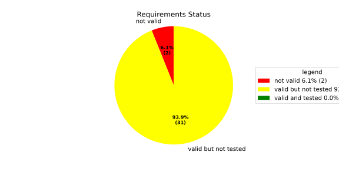
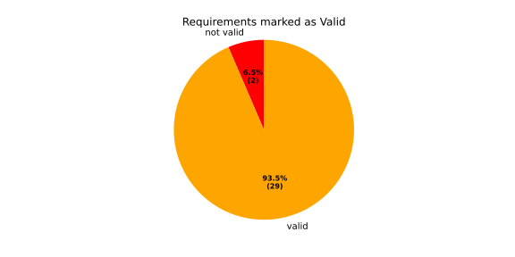
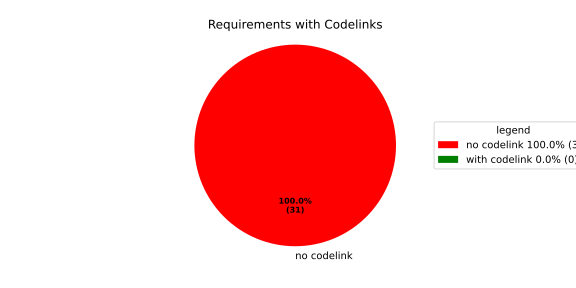
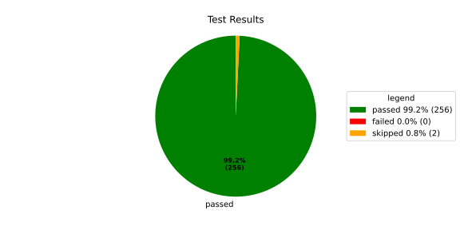
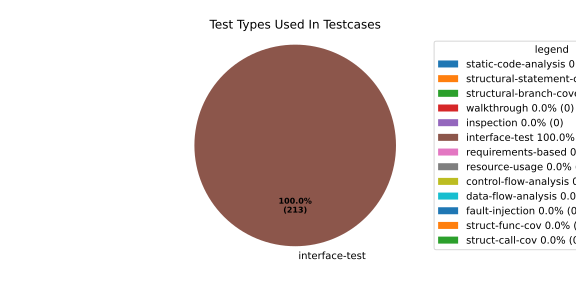
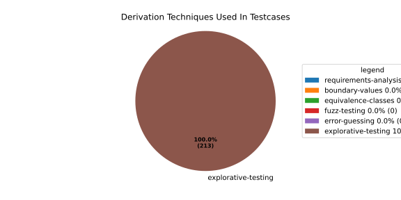

Verification Statistics#
Overview#

In Detail#



Failed Tests
Hint: This table should be empty. Before a PR can be merged all tests have to be successful.
No needs passed the filters
Skipped / Disabled Tests
testcase |
Result |
Fully Verifies |
Partially Verifies |
Test Type |
Derivation Technique |
link |
|---|---|---|---|---|---|---|
ValidateRangeTest/4__RejectsValueAboveMax |
skipped |
interface-test |
explorative-testing |
|||
ValidateRangeTest/4__RejectsValueBelowMin |
skipped |
interface-test |
explorative-testing |
All passed Tests#
testcase |
Result |
Fully Verifies |
Partially Verifies |
Test Type |
Derivation Technique |
link |
|---|---|---|---|---|---|---|
AliveImplTest__DoesNotThrowWhenInterfacePathEnvVarIsSet |
passed |
interface-test |
explorative-testing |
testcase__AliveImplTest__DoesNotThrowWhenInterfacePathEnvVarIsSet_xpewu |
||
AliveImplTest__ReportCheckpointSafeWhenNotConnected |
passed |
interface-test |
explorative-testing |
testcase__AliveImplTest__ReportCheckpointSafeWhenNotConnected_ppvuc |
||
AliveImplTest__ThrowsWhenInterfacePathEnvVarIsNotSet |
passed |
interface-test |
explorative-testing |
testcase__AliveImplTest__ThrowsWhenInterfacePathEnvVarIsNotSet_ekxfw |
||
AliveSupervisionTest__AliveDebouncesThroughFailedBeforeExpired |
passed |
interface-test |
explorative-testing |
testcase__AliveSupervisionTest__AliveDebouncesThroughFailedBeforeExpired_mlnbe |
||
AliveSupervisionTest__AliveReportsEnqueueFailureWhenRingBufferFull |
passed |
interface-test |
explorative-testing |
testcase__AliveSupervisionTest__AliveReportsEnqueueFailureWhenRingBufferFull_byhrd |
||
AliveSupervisionTest__AliveStaysOkWithCorrectHeartbeats |
passed |
interface-test |
explorative-testing |
testcase__AliveSupervisionTest__AliveStaysOkWithCorrectHeartbeats_vekof |
||
AliveSupervisionTest__AliveTransitionsOkToExpiredOnMissingHeartbeat |
passed |
interface-test |
explorative-testing |
testcase__AliveSupervisionTest__AliveTransitionsOkToExpiredOnMissingHeartbeat_jymxo |
||
AliveSupervisionTest__DeactivatesOnProcessCrash |
passed |
interface-test |
explorative-testing |
testcase__AliveSupervisionTest__DeactivatesOnProcessCrash_ypejs |
||
AliveSupervisionTest__DeactivatesOnProcessSigterm |
passed |
interface-test |
explorative-testing |
testcase__AliveSupervisionTest__DeactivatesOnProcessSigterm_hzaal |
||
AliveSupervisionTest__IgnoresIrrelevantProcessStates |
passed |
interface-test |
explorative-testing |
testcase__AliveSupervisionTest__IgnoresIrrelevantProcessStates_aolvb |
||
AliveSupervisionTest__MaxIndicationViolationExpires |
passed |
interface-test |
explorative-testing |
testcase__AliveSupervisionTest__MaxIndicationViolationExpires_whhhi |
||
AliveSupervisionTest__ReactivatesAfterCrash |
passed |
interface-test |
explorative-testing |
|||
ApplicationTypes/ApplicationTypeTest__ConvertsToExpectedValue/Native |
passed |
interface-test |
explorative-testing |
testcase__ApplicationTypes/ApplicationTypeTest__ConvertsToExpectedValue/Native_yxxcz |
||
ApplicationTypes/ApplicationTypeTest__ConvertsToExpectedValue/Reporting |
passed |
interface-test |
explorative-testing |
testcase__ApplicationTypes/ApplicationTypeTest__ConvertsToExpectedValue/Reporting_wcfwr |
||
ApplicationTypes/ApplicationTypeTest__ConvertsToExpectedValue/ReportingAndSupervised |
passed |
interface-test |
explorative-testing |
testcase__ApplicationTypes/ApplicationTypeTest__ConvertsToExpectedValue/ReportingAndSupervised_yxgad |
||
ApplicationTypes/ApplicationTypeTest__ConvertsToExpectedValue/StateManager |
passed |
interface-test |
explorative-testing |
testcase__ApplicationTypes/ApplicationTypeTest__ConvertsToExpectedValue/StateManager_ivuzc |
||
ConverterTest__ConvertAliveSupervisionMissingCycleReturnsError |
passed |
interface-test |
explorative-testing |
testcase__ConverterTest__ConvertAliveSupervisionMissingCycleReturnsError_bifzg |
||
ConverterTest__ConvertAliveSupervisionNullReturnsDefault |
passed |
interface-test |
explorative-testing |
testcase__ConverterTest__ConvertAliveSupervisionNullReturnsDefault_clyua |
||
ConverterTest__ConvertAliveSupervisionValid |
passed |
interface-test |
explorative-testing |
|||
ConverterTest__ConvertApplicationProfileMissingSelfTerminatingReturnsError |
passed |
interface-test |
explorative-testing |
testcase__ConverterTest__ConvertApplicationProfileMissingSelfTerminatingReturnsError_zddjb |
||
ConverterTest__ConvertApplicationProfileMissingTypeReturnsError |
passed |
interface-test |
explorative-testing |
testcase__ConverterTest__ConvertApplicationProfileMissingTypeReturnsError_zrfcs |
||
ConverterTest__ConvertApplicationProfileValid |
passed |
interface-test |
explorative-testing |
testcase__ConverterTest__ConvertApplicationProfileValid_oohxq |
||
ConverterTest__ConvertComponentAliveSupervisionBothIndicationsAbsentReturnsError |
passed |
interface-test |
explorative-testing |
testcase__ConverterTest__ConvertComponentAliveSupervisionBothIndicationsAbsentReturnsError_gvtfi |
||
ConverterTest__ConvertComponentAliveSupervisionMissingReportingCycleReturnsError |
passed |
interface-test |
explorative-testing |
testcase__ConverterTest__ConvertComponentAliveSupervisionMissingReportingCycleReturnsError_ajymy |
||
ConverterTest__ConvertComponentAliveSupervisionMissingToleranceReturnsError |
passed |
interface-test |
explorative-testing |
testcase__ConverterTest__ConvertComponentAliveSupervisionMissingToleranceReturnsError_lgrhj |
||
ConverterTest__ConvertComponentAliveSupervisionNullReturnsDefault |
passed |
interface-test |
explorative-testing |
testcase__ConverterTest__ConvertComponentAliveSupervisionNullReturnsDefault_xhaus |
||
ConverterTest__ConvertComponentAliveSupervisionOnlyMaxIndicationsPresent |
passed |
interface-test |
explorative-testing |
testcase__ConverterTest__ConvertComponentAliveSupervisionOnlyMaxIndicationsPresent_smwht |
||
ConverterTest__ConvertComponentAliveSupervisionOnlyMinIndicationsPresent |
passed |
interface-test |
explorative-testing |
testcase__ConverterTest__ConvertComponentAliveSupervisionOnlyMinIndicationsPresent_ybbrr |
||
ConverterTest__ConvertComponentAliveSupervisionValid |
passed |
interface-test |
explorative-testing |
testcase__ConverterTest__ConvertComponentAliveSupervisionValid_ijedh |
||
ConverterTest__ConvertComponentsValid |
passed |
interface-test |
explorative-testing |
|||
ConverterTest__ConvertComponentsWithInvalidComponentReturnsError |
passed |
interface-test |
explorative-testing |
testcase__ConverterTest__ConvertComponentsWithInvalidComponentReturnsError_wridc |
||
ConverterTest__ConvertComponentValid |
passed |
interface-test |
explorative-testing |
|||
ConverterTest__ConvertDeploymentConfigMissingReadyTimeoutReturnsError |
passed |
interface-test |
explorative-testing |
testcase__ConverterTest__ConvertDeploymentConfigMissingReadyTimeoutReturnsError_ljzfl |
||
ConverterTest__ConvertDeploymentConfigMissingShutdownTimeoutReturnsError |
passed |
interface-test |
explorative-testing |
testcase__ConverterTest__ConvertDeploymentConfigMissingShutdownTimeoutReturnsError_vyqye |
||
ConverterTest__ConvertDeploymentConfigValid |
passed |
interface-test |
explorative-testing |
|||
ConverterTest__ConvertEnvironmentalVariables |
passed |
interface-test |
explorative-testing |
testcase__ConverterTest__ConvertEnvironmentalVariables_fnhgo |
||
ConverterTest__ConvertEnvironmentalVariablesNullReturnsEmpty |
passed |
interface-test |
explorative-testing |
testcase__ConverterTest__ConvertEnvironmentalVariablesNullReturnsEmpty_vglrx |
||
ConverterTest__ConvertFallbackRunTargetMissingTimeoutReturnsError |
passed |
interface-test |
explorative-testing |
testcase__ConverterTest__ConvertFallbackRunTargetMissingTimeoutReturnsError_aevly |
||
ConverterTest__ConvertFallbackRunTargetValid |
passed |
interface-test |
explorative-testing |
testcase__ConverterTest__ConvertFallbackRunTargetValid_nexxj |
||
ConverterTest__ConvertReadyConditionMissingProcessStateReturnsError |
passed |
interface-test |
explorative-testing |
testcase__ConverterTest__ConvertReadyConditionMissingProcessStateReturnsError_ileav |
||
ConverterTest__ConvertReadyConditionValid |
passed |
interface-test |
explorative-testing |
|||
ConverterTest__ConvertRestartActionMissingFieldsReturnsError |
passed |
interface-test |
explorative-testing |
testcase__ConverterTest__ConvertRestartActionMissingFieldsReturnsError_aapjb |
||
ConverterTest__ConvertRestartActionNullReturnsNullopt |
passed |
interface-test |
explorative-testing |
testcase__ConverterTest__ConvertRestartActionNullReturnsNullopt_ifvyd |
||
ConverterTest__ConvertRestartActionValid |
passed |
interface-test |
explorative-testing |
|||
ConverterTest__ConvertRunTargetMissingTransitionTimeoutReturnsError |
passed |
interface-test |
explorative-testing |
testcase__ConverterTest__ConvertRunTargetMissingTransitionTimeoutReturnsError_ynekv |
||
ConverterTest__ConvertRunTargetsValid |
passed |
interface-test |
explorative-testing |
|||
ConverterTest__ConvertRunTargetsWithInvalidRunTargetReturnsError |
passed |
interface-test |
explorative-testing |
testcase__ConverterTest__ConvertRunTargetsWithInvalidRunTargetReturnsError_ldlox |
||
ConverterTest__ConvertRunTargetValid |
passed |
interface-test |
explorative-testing |
|||
ConverterTest__ConvertSandboxMissingGidReturnsError |
passed |
interface-test |
explorative-testing |
testcase__ConverterTest__ConvertSandboxMissingGidReturnsError_veeel |
||
ConverterTest__ConvertSandboxMissingSchedulingPolicyReturnsError |
passed |
interface-test |
explorative-testing |
testcase__ConverterTest__ConvertSandboxMissingSchedulingPolicyReturnsError_pkfts |
||
ConverterTest__ConvertSandboxMissingSchedulingPriorityReturnsError |
passed |
interface-test |
explorative-testing |
testcase__ConverterTest__ConvertSandboxMissingSchedulingPriorityReturnsError_xzdho |
||
ConverterTest__ConvertSandboxMissingUidReturnsError |
passed |
interface-test |
explorative-testing |
testcase__ConverterTest__ConvertSandboxMissingUidReturnsError_ogfku |
||
ConverterTest__ConvertSandboxSupplementaryGidOutOfRangeReturnsError |
passed |
interface-test |
explorative-testing |
testcase__ConverterTest__ConvertSandboxSupplementaryGidOutOfRangeReturnsError_zavpx |
||
ConverterTest__ConvertSandboxUidOutOfRangeReturnsError |
passed |
interface-test |
explorative-testing |
testcase__ConverterTest__ConvertSandboxUidOutOfRangeReturnsError_mcuaf |
||
ConverterTest__ConvertSandboxValid |
passed |
interface-test |
explorative-testing |
|||
ConverterTest__ConvertSwitchRunTargetActionNullReturnsNullopt |
passed |
interface-test |
explorative-testing |
testcase__ConverterTest__ConvertSwitchRunTargetActionNullReturnsNullopt_zmitx |
||
ConverterTest__ConvertSwitchRunTargetActionValid |
passed |
interface-test |
explorative-testing |
testcase__ConverterTest__ConvertSwitchRunTargetActionValid_tdklr |
||
ConverterTest__ConvertWatchdogMissingDeactivateReturnsError |
passed |
interface-test |
explorative-testing |
testcase__ConverterTest__ConvertWatchdogMissingDeactivateReturnsError_gzwjt |
||
ConverterTest__ConvertWatchdogMissingMagicCloseReturnsError |
passed |
interface-test |
explorative-testing |
testcase__ConverterTest__ConvertWatchdogMissingMagicCloseReturnsError_gexxk |
||
ConverterTest__ConvertWatchdogMissingMaxTimeoutReturnsError |
passed |
interface-test |
explorative-testing |
testcase__ConverterTest__ConvertWatchdogMissingMaxTimeoutReturnsError_lffxm |
||
ConverterTest__ConvertWatchdogNullReturnsNullopt |
passed |
interface-test |
explorative-testing |
testcase__ConverterTest__ConvertWatchdogNullReturnsNullopt_irsdk |
||
ConverterTest__ConvertWatchdogValid |
passed |
interface-test |
explorative-testing |
|||
DeadlineFixture__Start_AlreadyRunning |
passed |
interface-test |
explorative-testing |
|||
DeadlineFixture__Start_Succeeds |
passed |
interface-test |
explorative-testing |
|||
DeadlineMonitorBuilderFixture__AddDeadline_Succeeds |
passed |
interface-test |
explorative-testing |
testcase__DeadlineMonitorBuilderFixture__AddDeadline_Succeeds_nagke |
||
DeadlineMonitorBuilderFixture__New_Succeeds |
passed |
interface-test |
explorative-testing |
|||
DeadlineMonitorFixture__GetDeadline_Succeeds |
passed |
interface-test |
explorative-testing |
testcase__DeadlineMonitorFixture__GetDeadline_Succeeds_tmltf |
||
DeadlineMonitorFixture__GetDeadline_Unknown |
passed |
interface-test |
explorative-testing |
|||
EnumConversionTest__ConvertSchedulingPolicyUnsupported |
passed |
interface-test |
explorative-testing |
testcase__EnumConversionTest__ConvertSchedulingPolicyUnsupported_iavqm |
||
EnvironmentTest__AddIncreasesSize |
passed |
interface-test |
explorative-testing |
|||
EnvironmentTest__DefaultConstructedIsEmpty |
passed |
interface-test |
explorative-testing |
|||
EnvironmentTest__EmptyEnvironmentEnvpIsNullTerminated |
passed |
interface-test |
explorative-testing |
testcase__EnvironmentTest__EmptyEnvironmentEnvpIsNullTerminated_wwumw |
||
EnvironmentTest__EnvpReturnsNullTerminatedArray |
passed |
interface-test |
explorative-testing |
testcase__EnvironmentTest__EnvpReturnsNullTerminatedArray_aubkv |
||
EnvironmentTest__EnvpWithMultipleEntries |
passed |
interface-test |
explorative-testing |
|||
EnvironmentTest__MoveAssignmentPreservesEntries |
passed |
interface-test |
explorative-testing |
testcase__EnvironmentTest__MoveAssignmentPreservesEntries_vkydj |
||
EnvironmentTest__MoveConstructorPreservesEntries |
passed |
interface-test |
explorative-testing |
testcase__EnvironmentTest__MoveConstructorPreservesEntries_upclt |
||
EnvironmentTest__RangeBasedForLoopWorks |
passed |
interface-test |
explorative-testing |
|||
EnvironmentTest__ReserveAndAddAvoidReallocation |
passed |
interface-test |
explorative-testing |
testcase__EnvironmentTest__ReserveAndAddAvoidReallocation_lgzmu |
||
EnvironmentTest__SsoLengthStringSurvivesReallocation |
passed |
interface-test |
explorative-testing |
testcase__EnvironmentTest__SsoLengthStringSurvivesReallocation_jfmtl |
||
EnvironmentVariableTest__CStrReturnsKeyEqualsValue |
passed |
interface-test |
explorative-testing |
testcase__EnvironmentVariableTest__CStrReturnsKeyEqualsValue_rkwan |
||
EnvironmentVariableTest__EmptyValue |
passed |
interface-test |
explorative-testing |
|||
EnvironmentVariableTest__KeyAndValueAreAccessible |
passed |
interface-test |
explorative-testing |
testcase__EnvironmentVariableTest__KeyAndValueAreAccessible_kcrth |
||
EnvironmentVariableTest__ValueContainingEquals |
passed |
interface-test |
explorative-testing |
testcase__EnvironmentVariableTest__ValueContainingEquals_apzgz |
||
ExecErrorDomainTest__AllKnownCodesHaveDistinctMessages |
passed |
interface-test |
explorative-testing |
testcase__ExecErrorDomainTest__AllKnownCodesHaveDistinctMessages_qpoka |
||
ExecErrorDomainTest__AllKnownCodesReturnNonEmptyMessage |
passed |
interface-test |
explorative-testing |
testcase__ExecErrorDomainTest__AllKnownCodesReturnNonEmptyMessage_bawzg |
||
ExecErrorDomainTest__UnknownCodeReturnsNonEmptyMessage |
passed |
interface-test |
explorative-testing |
testcase__ExecErrorDomainTest__UnknownCodeReturnsNonEmptyMessage_kkwpr |
||
FlatbufferConfigLoaderTest__CorruptedBufferReturnsInvalidFormat |
passed |
interface-test |
explorative-testing |
testcase__FlatbufferConfigLoaderTest__CorruptedBufferReturnsInvalidFormat_twyac |
||
FlatbufferConfigLoaderTest__LoadAliveSupervision |
passed |
interface-test |
explorative-testing |
testcase__FlatbufferConfigLoaderTest__LoadAliveSupervision_hhuux |
||
FlatbufferConfigLoaderTest__LoadBufferFailsWithGenericErrorReturnsGeneralError |
passed |
interface-test |
explorative-testing |
testcase__FlatbufferConfigLoaderTest__LoadBufferFailsWithGenericErrorReturnsGeneralError_kmatm |
||
FlatbufferConfigLoaderTest__LoadBufferFailsWithNoSuchFileReturnsFileNotFound |
passed |
interface-test |
explorative-testing |
testcase__FlatbufferConfigLoaderTest__LoadBufferFailsWithNoSuchFileReturnsFileNotFound_yzlra |
||
FlatbufferConfigLoaderTest__LoadBufferFailsWithPermissionDeniedReturnsInsufficientPermission |
passed |
interface-test |
explorative-testing |
|||
FlatbufferConfigLoaderTest__LoadComponentAliveSupervision |
passed |
interface-test |
explorative-testing |
testcase__FlatbufferConfigLoaderTest__LoadComponentAliveSupervision_fwfad |
||
FlatbufferConfigLoaderTest__LoadEnvironmentalVariables |
passed |
interface-test |
explorative-testing |
testcase__FlatbufferConfigLoaderTest__LoadEnvironmentalVariables_wsosu |
||
FlatbufferConfigLoaderTest__LoadFallbackRunTarget |
passed |
interface-test |
explorative-testing |
testcase__FlatbufferConfigLoaderTest__LoadFallbackRunTarget_wduqm |
||
FlatbufferConfigLoaderTest__LoadMinimalConfig |
passed |
interface-test |
explorative-testing |
testcase__FlatbufferConfigLoaderTest__LoadMinimalConfig_hdkck |
||
FlatbufferConfigLoaderTest__LoadMultipleComponents |
passed |
interface-test |
explorative-testing |
testcase__FlatbufferConfigLoaderTest__LoadMultipleComponents_abpom |
||
FlatbufferConfigLoaderTest__LoadRestartRecoveryAction |
passed |
interface-test |
explorative-testing |
testcase__FlatbufferConfigLoaderTest__LoadRestartRecoveryAction_wyfqg |
||
FlatbufferConfigLoaderTest__LoadRunTargets |
passed |
interface-test |
explorative-testing |
|||
FlatbufferConfigLoaderTest__LoadSandbox |
passed |
interface-test |
explorative-testing |
|||
FlatbufferConfigLoaderTest__LoadSingleComponent |
passed |
interface-test |
explorative-testing |
testcase__FlatbufferConfigLoaderTest__LoadSingleComponent_yidty |
||
FlatbufferConfigLoaderTest__LoadSwitchRunTargetAction |
passed |
interface-test |
explorative-testing |
testcase__FlatbufferConfigLoaderTest__LoadSwitchRunTargetAction_uchgp |
||
FlatbufferConfigLoaderTest__LoadWatchdog |
passed |
interface-test |
explorative-testing |
|||
FlatbufferConfigLoaderTest__MissingSchemaVersionReturnsInvalidFormat |
passed |
interface-test |
explorative-testing |
testcase__FlatbufferConfigLoaderTest__MissingSchemaVersionReturnsInvalidFormat_qqmfn |
||
FlatbufferConfigLoaderTest__OptionalReadyConditionAbsent |
passed |
interface-test |
explorative-testing |
testcase__FlatbufferConfigLoaderTest__OptionalReadyConditionAbsent_lhddx |
||
FlatbufferConfigLoaderTest__OptionalWatchdogAbsent |
passed |
interface-test |
explorative-testing |
testcase__FlatbufferConfigLoaderTest__OptionalWatchdogAbsent_pkhkp |
||
FlatbufferConfigLoaderTest__WrongSchemaVersionReturnsUnsupportedVersion |
passed |
interface-test |
explorative-testing |
testcase__FlatbufferConfigLoaderTest__WrongSchemaVersionReturnsUnsupportedVersion_zrbjv |
||
HealthMonitor__GetDeadlineMonitor_Available |
passed |
|||||
HealthMonitor__GetDeadlineMonitor_Taken |
passed |
|||||
HealthMonitor__GetDeadlineMonitor_Unknown |
passed |
|||||
HealthMonitor__GetHeartbeatMonitor_Available |
passed |
testcase__HealthMonitor__GetHeartbeatMonitor_Available_aacat |
||||
HealthMonitor__GetHeartbeatMonitor_Taken |
passed |
|||||
HealthMonitor__GetHeartbeatMonitor_Unknown |
passed |
|||||
HealthMonitor__GetLogicMonitor_Available |
passed |
|||||
HealthMonitor__GetLogicMonitor_Taken |
passed |
|||||
HealthMonitor__GetLogicMonitor_Unknown |
passed |
|||||
HealthMonitor__Start_MonitorsNotTaken |
passed |
|||||
HealthMonitor__Start_Succeeds |
passed |
|||||
HealthMonitorBuilderFixture__Build_InvalidCycles |
passed |
interface-test |
explorative-testing |
testcase__HealthMonitorBuilderFixture__Build_InvalidCycles_pdigk |
||
HealthMonitorBuilderFixture__Build_NoMonitors |
passed |
interface-test |
explorative-testing |
testcase__HealthMonitorBuilderFixture__Build_NoMonitors_ktcve |
||
HealthMonitorBuilderFixture__Build_Succeeds |
passed |
interface-test |
explorative-testing |
|||
HealthMonitorBuilderFixture__New_Succeeds |
passed |
interface-test |
explorative-testing |
|||
HealthMonitorTest__Integrated |
passed |
interface-test |
explorative-testing |
|||
HeartbeatMonitor__Heartbeat_Succeeds |
passed |
interface-test |
explorative-testing |
|||
HeartbeatMonitorBuilder__New_Succeeds |
passed |
interface-test |
explorative-testing |
|||
IdentifierHashTest__IdentifierHash_default_created |
passed |
interface-test |
explorative-testing |
testcase__IdentifierHashTest__IdentifierHash_default_created_yhhvi |
||
IdentifierHashTest__IdentifierHash_EqualityOperators |
passed |
interface-test |
explorative-testing |
testcase__IdentifierHashTest__IdentifierHash_EqualityOperators_nnsuj |
||
IdentifierHashTest__IdentifierHash_invalid_hash_no_string_representation |
passed |
interface-test |
explorative-testing |
testcase__IdentifierHashTest__IdentifierHash_invalid_hash_no_string_representation_rxowr |
||
IdentifierHashTest__IdentifierHash_LessThanOperator |
passed |
interface-test |
explorative-testing |
testcase__IdentifierHashTest__IdentifierHash_LessThanOperator_rnbax |
||
IdentifierHashTest__IdentifierHash_no_dangling_pointer_after_source_string_dies |
passed |
interface-test |
explorative-testing |
testcase__IdentifierHashTest__IdentifierHash_no_dangling_pointer_after_source_string_dies_qsjin |
||
IdentifierHashTest__IdentifierHash_with_string_created |
passed |
interface-test |
explorative-testing |
testcase__IdentifierHashTest__IdentifierHash_with_string_created_aygdm |
||
IdentifierHashTest__IdentifierHash_with_string_view_created |
passed |
interface-test |
explorative-testing |
testcase__IdentifierHashTest__IdentifierHash_with_string_view_created_dbpol |
||
LogicMonitorBuilderFixture__AddState_Succeeds |
passed |
interface-test |
explorative-testing |
testcase__LogicMonitorBuilderFixture__AddState_Succeeds_axdxj |
||
LogicMonitorBuilderFixture__New_Succeeds |
passed |
interface-test |
explorative-testing |
|||
LogicMonitorFixture__State_Invalid |
passed |
interface-test |
explorative-testing |
|||
LogicMonitorFixture__State_Succeeds |
passed |
interface-test |
explorative-testing |
|||
LogicMonitorFixture__Transition_Invalid |
passed |
interface-test |
explorative-testing |
|||
LogicMonitorFixture__Transition_Succeeds |
passed |
interface-test |
explorative-testing |
|||
LogicMonitorFixture__Transition_Unknown |
passed |
interface-test |
explorative-testing |
|||
MonitorIfDaemonTest__Active_CheckpointDataForwarded |
passed |
interface-test |
explorative-testing |
testcase__MonitorIfDaemonTest__Active_CheckpointDataForwarded_evumz |
||
MonitorIfDaemonTest__Active_FutureTimestamp_NotForwardedInCurrentCycle |
passed |
interface-test |
explorative-testing |
testcase__MonitorIfDaemonTest__Active_FutureTimestamp_NotForwardedInCurrentCycle_oycau |
||
MonitorIfDaemonTest__Active_FutureTimestampCheckpoint_ConsumedInLaterCycle |
passed |
interface-test |
explorative-testing |
testcase__MonitorIfDaemonTest__Active_FutureTimestampCheckpoint_ConsumedInLaterCycle_veyyy |
||
MonitorIfDaemonTest__Active_MultipleCheckpointsInOneCycle_AllForwarded |
passed |
interface-test |
explorative-testing |
testcase__MonitorIfDaemonTest__Active_MultipleCheckpointsInOneCycle_AllForwarded_gmbms |
||
MonitorIfDaemonTest__Active_NonMatchingCheckpointId_NotForwarded |
passed |
interface-test |
explorative-testing |
testcase__MonitorIfDaemonTest__Active_NonMatchingCheckpointId_NotForwarded_bohck |
||
MonitorIfDaemonTest__Active_OverflowDetected_TransitionsToInactiveOverflow |
passed |
interface-test |
explorative-testing |
testcase__MonitorIfDaemonTest__Active_OverflowDetected_TransitionsToInactiveOverflow_ovitk |
||
MonitorIfDaemonTest__Active_TwoAttachedCheckpoints_RoutedByCheckpointId |
passed |
interface-test |
explorative-testing |
testcase__MonitorIfDaemonTest__Active_TwoAttachedCheckpoints_RoutedByCheckpointId_skqhd |
||
MonitorIfDaemonTest__GetInterfaceName_ReturnsNameGivenAtConstruction |
passed |
interface-test |
explorative-testing |
testcase__MonitorIfDaemonTest__GetInterfaceName_ReturnsNameGivenAtConstruction_iaemz |
||
MonitorIfDaemonTest__InactiveOverflow_NoProcessRestart_DoesNotRepeatNotification |
passed |
interface-test |
explorative-testing |
testcase__MonitorIfDaemonTest__InactiveOverflow_NoProcessRestart_DoesNotRepeatNotification_gdbxg |
||
MonitorIfDaemonTest__InactiveOverflow_ProcessRestartFlag_ClearedAfterNotification |
passed |
interface-test |
explorative-testing |
testcase__MonitorIfDaemonTest__InactiveOverflow_ProcessRestartFlag_ClearedAfterNotification_pqfyy |
||
MonitorIfDaemonTest__InactiveOverflow_ProcessRestarts_PushesOverflowNotificationAgain |
passed |
interface-test |
explorative-testing |
|||
MonitorIfDaemonTest__InitiallyInactive_CheckForNewData_DoesNotNotifyCheckpoint |
passed |
interface-test |
explorative-testing |
testcase__MonitorIfDaemonTest__InitiallyInactive_CheckForNewData_DoesNotNotifyCheckpoint_wjrfl |
||
MonitorIfDaemonTest__ProcessOff_DeactivatesMonitor_NoFurtherDataForwarded |
passed |
interface-test |
explorative-testing |
testcase__MonitorIfDaemonTest__ProcessOff_DeactivatesMonitor_NoFurtherDataForwarded_uialh |
||
MonitorIfDaemonTest__ProcessOffBeforeActivation_RemainsInactive |
passed |
interface-test |
explorative-testing |
testcase__MonitorIfDaemonTest__ProcessOffBeforeActivation_RemainsInactive_kzzyy |
||
MonitorIfDaemonTest__ProcessRunning_ActivatesMonitorOnNextCheckForNewData |
passed |
interface-test |
explorative-testing |
testcase__MonitorIfDaemonTest__ProcessRunning_ActivatesMonitorOnNextCheckForNewData_fkkmk |
||
MonitorIfDaemonTest__ProcessStarting_AlsoActivatesMonitor |
passed |
interface-test |
explorative-testing |
testcase__MonitorIfDaemonTest__ProcessStarting_AlsoActivatesMonitor_xdkbg |
||
MPMCConcurrentQueueTest_Basic__LvaluePushCopiesItem |
passed |
testcase__MPMCConcurrentQueueTest_Basic__LvaluePushCopiesItem_oysfc |
||||
MPMCConcurrentQueueTest_Basic__PopReturnsNulloptOnSemaphoreWaitFailure |
passed |
testcase__MPMCConcurrentQueueTest_Basic__PopReturnsNulloptOnSemaphoreWaitFailure_rgznm |
||||
MPMCConcurrentQueueTest_Basic__PushAndPopPreservesOrder |
passed |
testcase__MPMCConcurrentQueueTest_Basic__PushAndPopPreservesOrder_aijdb |
||||
MPMCConcurrentQueueTest_Basic__PushAndPopSingleItem |
passed |
testcase__MPMCConcurrentQueueTest_Basic__PushAndPopSingleItem_jrxwz |
||||
MPMCConcurrentQueueTest_Basic__RvaluePushWorksWithMoveOnlyType |
passed |
testcase__MPMCConcurrentQueueTest_Basic__RvaluePushWorksWithMoveOnlyType_cxxaj |
||||
MPMCConcurrentQueueTest_Blocking__PopBlocksUntilItemAvailable |
passed |
testcase__MPMCConcurrentQueueTest_Blocking__PopBlocksUntilItemAvailable_ttwcx |
||||
MPMCConcurrentQueueTest_Blocking__PushBlocksWhenFull |
passed |
testcase__MPMCConcurrentQueueTest_Blocking__PushBlocksWhenFull_ecujf |
||||
MPMCConcurrentQueueTest_Blocking__StopUnblocksBlockedConsumer |
passed |
testcase__MPMCConcurrentQueueTest_Blocking__StopUnblocksBlockedConsumer_snzyr |
||||
MPMCConcurrentQueueTest_Blocking__StopUnblocksBlockedProducer |
passed |
testcase__MPMCConcurrentQueueTest_Blocking__StopUnblocksBlockedProducer_inddu |
||||
MPMCConcurrentQueueTest_MPMC__AllItemsDelivered |
passed |
testcase__MPMCConcurrentQueueTest_MPMC__AllItemsDelivered_ztjqe |
||||
MPMCConcurrentQueueTest_Stop__ItemsAreDroppedAfterStop |
passed |
testcase__MPMCConcurrentQueueTest_Stop__ItemsAreDroppedAfterStop_ragzw |
||||
MPMCConcurrentQueueTest_Stop__PopReturnsNulloptWhenStoppedAndEmpty |
passed |
testcase__MPMCConcurrentQueueTest_Stop__PopReturnsNulloptWhenStoppedAndEmpty_cevga |
||||
MPMCConcurrentQueueTest_Stop__PushReturnsFalseAfterStop |
passed |
testcase__MPMCConcurrentQueueTest_Stop__PushReturnsFalseAfterStop_qqnhw |
||||
MPMCConcurrentQueueTest_Timeout__PushWithTimeoutReturnsFalseWhenFull |
passed |
testcase__MPMCConcurrentQueueTest_Timeout__PushWithTimeoutReturnsFalseWhenFull_aeips |
||||
MPMCConcurrentQueueTest_Timeout__PushWithTimeoutSucceedsWhenSlotAvailable |
passed |
testcase__MPMCConcurrentQueueTest_Timeout__PushWithTimeoutSucceedsWhenSlotAvailable_klzpo |
||||
OsHandlerTest__WaitReturnsError_OsHandlerSleepsAndDoesNotCallFindTerminated |
passed |
interface-test |
explorative-testing |
testcase__OsHandlerTest__WaitReturnsError_OsHandlerSleepsAndDoesNotCallFindTerminated_cibtr |
||
OsHandlerTest__WaitReturnsErrorThenProcessId_HandlerRecoversAndInvokesCallback |
passed |
interface-test |
explorative-testing |
testcase__OsHandlerTest__WaitReturnsErrorThenProcessId_HandlerRecoversAndInvokesCallback_nqstd |
||
OsHandlerTest__WaitReturnsProcessId_FindTerminatedIsCalled |
passed |
interface-test |
explorative-testing |
testcase__OsHandlerTest__WaitReturnsProcessId_FindTerminatedIsCalled_chlsq |
||
OsHandlerTest__WaitReturnsProcessIdBeforeRegistration_LaterRegistrationReceivesStoredTermination |
passed |
interface-test |
explorative-testing |
|||
OsHandlerTest__WaitReturnsUnknownPidWhenMapIsFull_OutOfResourcesPathDoesNotNotifyCallbacks |
passed |
interface-test |
explorative-testing |
|||
OsHandlerTest__WaitReturnsZeroPid_OsHandlerSleepsAndDoesNotCallFindTerminated |
passed |
interface-test |
explorative-testing |
testcase__OsHandlerTest__WaitReturnsZeroPid_OsHandlerSleepsAndDoesNotCallFindTerminated_rkttz |
||
ProcessStateClient_UT__ProcessStateClient_ConstructReceiver_Succeeds |
passed |
interface-test |
explorative-testing |
testcase__ProcessStateClient_UT__ProcessStateClient_ConstructReceiver_Succeeds_hodwy |
||
ProcessStateClient_UT__ProcessStateClient_QueueMaxNumberOfProcesses_Succeeds |
passed |
interface-test |
explorative-testing |
testcase__ProcessStateClient_UT__ProcessStateClient_QueueMaxNumberOfProcesses_Succeeds_qohom |
||
ProcessStateClient_UT__ProcessStateClient_QueueOneProcess_Succeeds |
passed |
interface-test |
explorative-testing |
testcase__ProcessStateClient_UT__ProcessStateClient_QueueOneProcess_Succeeds_tmzfz |
||
ProcessStateClient_UT__ProcessStateClient_QueueOneProcessTooMany_Fails |
passed |
interface-test |
explorative-testing |
testcase__ProcessStateClient_UT__ProcessStateClient_QueueOneProcessTooMany_Fails_sspoj |
||
ProcessStates/ProcessStateTest__ConvertsToExpectedValue/Running |
passed |
interface-test |
explorative-testing |
testcase__ProcessStates/ProcessStateTest__ConvertsToExpectedValue/Running_hinlr |
||
ProcessStates/ProcessStateTest__ConvertsToExpectedValue/Terminated |
passed |
interface-test |
explorative-testing |
testcase__ProcessStates/ProcessStateTest__ConvertsToExpectedValue/Terminated_zrytn |
||
RecoveryClientTest__FIFOOrdering |
passed |
interface-test |
explorative-testing |
|||
RecoveryClientTest__GetNextRequest |
passed |
interface-test |
explorative-testing |
|||
RecoveryClientTest__GetNextRequestEmpty |
passed |
interface-test |
explorative-testing |
|||
RecoveryClientTest__RingBufferFull |
passed |
interface-test |
explorative-testing |
|||
RecoveryClientTest__SendSingleRequest |
passed |
interface-test |
explorative-testing |
|||
RunTest__AsPosixProcessCreatesAndDestroysLifeCycleManager |
passed |
testcase__RunTest__AsPosixProcessCreatesAndDestroysLifeCycleManager_sooex |
||||
RunTest__AsPosixProcessForwardsConstructorArgsToApplication |
passed |
testcase__RunTest__AsPosixProcessForwardsConstructorArgsToApplication_dmeur |
||||
RunTest__AsPosixProcessForwardsNonZeroExitCode |
passed |
testcase__RunTest__AsPosixProcessForwardsNonZeroExitCode_lldqd |
||||
RunTest__AsPosixProcessPassesCorrectApplicationTypeToRun |
passed |
testcase__RunTest__AsPosixProcessPassesCorrectApplicationTypeToRun_ajqwz |
||||
RunTest__AsPosixProcessReturnsZeroExitCode |
passed |
|||||
RunTest__RunApplicationFreeFunctionDelegatesToAsPosixProcess |
passed |
testcase__RunTest__RunApplicationFreeFunctionDelegatesToAsPosixProcess_ccing |
||||
RunTest__RunConstructorPassesArgcArgvToApplicationContext |
passed |
testcase__RunTest__RunConstructorPassesArgcArgvToApplicationContext_agerd |
||||
SafeProcessMapTest__ConcurrentFindAndInsertFromMultipleThreads |
passed |
interface-test |
explorative-testing |
testcase__SafeProcessMapTest__ConcurrentFindAndInsertFromMultipleThreads_kzfyg |
||
SafeProcessMapTest__ConcurrentInsertAndFindFromMultipleThreads |
passed |
interface-test |
explorative-testing |
testcase__SafeProcessMapTest__ConcurrentInsertAndFindFromMultipleThreads_hnyqj |
||
SafeProcessMapTest__ConstructWithZeroCapacity |
passed |
interface-test |
explorative-testing |
testcase__SafeProcessMapTest__ConstructWithZeroCapacity_gjmqg |
||
SafeProcessMapTest__FindTerminatedInsertsEntryWhenPidNotPresent |
passed |
interface-test |
explorative-testing |
testcase__SafeProcessMapTest__FindTerminatedInsertsEntryWhenPidNotPresent_ixtlt |
||
SafeProcessMapTest__FindTerminatedMatchesExistingInsertAndCallsCallback |
passed |
interface-test |
explorative-testing |
testcase__SafeProcessMapTest__FindTerminatedMatchesExistingInsertAndCallsCallback_ehuzb |
||
SafeProcessMapTest__FindTerminatedSamePidTwiceYieldsUntilInsertResolves |
passed |
interface-test |
explorative-testing |
testcase__SafeProcessMapTest__FindTerminatedSamePidTwiceYieldsUntilInsertResolves_hsekx |
||
SafeProcessMapTest__FindTerminatedWithNegativePidReturnsInvalid |
passed |
interface-test |
explorative-testing |
testcase__SafeProcessMapTest__FindTerminatedWithNegativePidReturnsInvalid_dewoh |
||
SafeProcessMapTest__FindTerminatedWorksAtMaxTreeDepth |
passed |
interface-test |
explorative-testing |
testcase__SafeProcessMapTest__FindTerminatedWorksAtMaxTreeDepth_adtzi |
||
SafeProcessMapTest__InsertBeyondCapacityReturnsOutOfMemory |
passed |
interface-test |
explorative-testing |
testcase__SafeProcessMapTest__InsertBeyondCapacityReturnsOutOfMemory_qjnie |
||
SafeProcessMapTest__InsertIntoEmptyTreeReturnsZero |
passed |
interface-test |
explorative-testing |
testcase__SafeProcessMapTest__InsertIntoEmptyTreeReturnsZero_zfbaq |
||
SafeProcessMapTest__InsertMatchesExistingFindTerminatedEntry |
passed |
interface-test |
explorative-testing |
testcase__SafeProcessMapTest__InsertMatchesExistingFindTerminatedEntry_fuwrp |
||
SafeProcessMapTest__InsertMultipleNodesThenFindTerminatedRemovesAll |
passed |
interface-test |
explorative-testing |
testcase__SafeProcessMapTest__InsertMultipleNodesThenFindTerminatedRemovesAll_fvowh |
||
SafeProcessMapTest__InsertSamePidTwiceYieldsUntilFindTerminatedResolves |
passed |
interface-test |
explorative-testing |
testcase__SafeProcessMapTest__InsertSamePidTwiceYieldsUntilFindTerminatedResolves_wzwyb |
||
SchedulingPolicies/SchedulingPolicyTest__ConvertsToExpectedPosixValue/SCHED_FIFO |
passed |
interface-test |
explorative-testing |
testcase__SchedulingPolicies/SchedulingPolicyTest__ConvertsToExpectedPosixValue/SCHED_FIFO_soddq |
||
SchedulingPolicies/SchedulingPolicyTest__ConvertsToExpectedPosixValue/SCHED_OTHER |
passed |
interface-test |
explorative-testing |
testcase__SchedulingPolicies/SchedulingPolicyTest__ConvertsToExpectedPosixValue/SCHED_OTHER_oigmk |
||
SchedulingPolicies/SchedulingPolicyTest__ConvertsToExpectedPosixValue/SCHED_RR |
passed |
interface-test |
explorative-testing |
testcase__SchedulingPolicies/SchedulingPolicyTest__ConvertsToExpectedPosixValue/SCHED_RR_pcjci |
||
score/health_monitor/src/rust/test-510566969/tests |
passed |
testcase__score/health_monitor/src/rust/test-510566969/tests_kjjlw |
||||
score/health_monitor/src/rust/test-827801879/loom_tests |
passed |
testcase__score/health_monitor/src/rust/test-827801879/loom_tests_cpmix |
||||
SecondsToMsTest__ConvertsPositiveValue |
passed |
interface-test |
explorative-testing |
|||
SecondsToMsTest__ConvertsZero |
passed |
interface-test |
explorative-testing |
|||
SecondsToMsTest__RejectsNegativeValue |
passed |
interface-test |
explorative-testing |
|||
SecondsToMsTest__RejectsOverflow |
passed |
interface-test |
explorative-testing |
|||
SecondsToMsTest__RejectsSubMillisecond |
passed |
interface-test |
explorative-testing |
|||
StringHelperTest__ConvertGidVectorReturnsEmptyWhenNull |
passed |
interface-test |
explorative-testing |
testcase__StringHelperTest__ConvertGidVectorReturnsEmptyWhenNull_jmcsr |
||
StringHelperTest__ConvertStringVectorReturnsEmptyWhenNull |
passed |
interface-test |
explorative-testing |
testcase__StringHelperTest__ConvertStringVectorReturnsEmptyWhenNull_zsuvv |
||
StringHelperTest__SafeStringReturnsEmptyWhenNull |
passed |
interface-test |
explorative-testing |
testcase__StringHelperTest__SafeStringReturnsEmptyWhenNull_crelr |
||
StringHelperTest__SafeStringReturnsValueWhenNotNull |
passed |
interface-test |
explorative-testing |
testcase__StringHelperTest__SafeStringReturnsValueWhenNotNull_anbko |
||
test_complex_monitoring |
passed |
|||||
test_crash_on_startup |
passed |
|||||
test_incorrect_config_non_reporting |
passed |
|||||
test_process_crash_monitoring |
passed |
|||||
test_process_launch_args |
passed |
|||||
test_process_wrong_binary_failure |
passed |
|||||
test_recovery_action_complex_rep_failure |
passed |
|||||
test_recovery_action_simple_rep_failure |
passed |
|||||
test_smoke |
passed |
|||||
test_switch_run_target |
passed |
|||||
TimeRangeFixture__MinMax |
passed |
interface-test |
explorative-testing |
|||
TimeRangeFixture__New_InvalidOrder |
passed |
interface-test |
explorative-testing |
|||
TimeRangeFixture__New_Succeeds |
passed |
interface-test |
explorative-testing |
|||
ValidateRangeTest/0__AcceptsMaxBoundary |
passed |
interface-test |
explorative-testing |
|||
ValidateRangeTest/0__AcceptsMinBoundary |
passed |
interface-test |
explorative-testing |
|||
ValidateRangeTest/0__AcceptsZero |
passed |
interface-test |
explorative-testing |
|||
ValidateRangeTest/0__RejectsValueAboveMax |
passed |
interface-test |
explorative-testing |
|||
ValidateRangeTest/0__RejectsValueBelowMin |
passed |
interface-test |
explorative-testing |
|||
ValidateRangeTest/1__AcceptsMaxBoundary |
passed |
interface-test |
explorative-testing |
|||
ValidateRangeTest/1__AcceptsMinBoundary |
passed |
interface-test |
explorative-testing |
|||
ValidateRangeTest/1__AcceptsZero |
passed |
interface-test |
explorative-testing |
|||
ValidateRangeTest/1__RejectsValueAboveMax |
passed |
interface-test |
explorative-testing |
|||
ValidateRangeTest/1__RejectsValueBelowMin |
passed |
interface-test |
explorative-testing |
|||
ValidateRangeTest/2__AcceptsMaxBoundary |
passed |
interface-test |
explorative-testing |
|||
ValidateRangeTest/2__AcceptsMinBoundary |
passed |
interface-test |
explorative-testing |
|||
ValidateRangeTest/2__AcceptsZero |
passed |
interface-test |
explorative-testing |
|||
ValidateRangeTest/2__RejectsValueAboveMax |
passed |
interface-test |
explorative-testing |
|||
ValidateRangeTest/2__RejectsValueBelowMin |
passed |
interface-test |
explorative-testing |
|||
ValidateRangeTest/3__AcceptsMaxBoundary |
passed |
interface-test |
explorative-testing |
|||
ValidateRangeTest/3__AcceptsMinBoundary |
passed |
interface-test |
explorative-testing |
|||
ValidateRangeTest/3__AcceptsZero |
passed |
interface-test |
explorative-testing |
|||
ValidateRangeTest/3__RejectsValueAboveMax |
passed |
interface-test |
explorative-testing |
|||
ValidateRangeTest/3__RejectsValueBelowMin |
passed |
interface-test |
explorative-testing |
|||
ValidateRangeTest/4__AcceptsMaxBoundary |
passed |
interface-test |
explorative-testing |
|||
ValidateRangeTest/4__AcceptsMinBoundary |
passed |
interface-test |
explorative-testing |
|||
ValidateRangeTest/4__AcceptsZero |
passed |
interface-test |
explorative-testing |
Details About Testcases#


Test Log Files#
tests-report/tests/integration/process_simple_rep_failure/process_simple_rep_failure/test.log
exec ${PAGER:-/usr/bin/less} "$0" || exit 1
Executing tests from //tests/integration/process_simple_rep_failure:process_simple_rep_failure
-----------------------------------------------------------------------------
============================= test session starts ==============================
platform linux -- Python 3.12.12, pytest-9.0.3, pluggy-1.5.0
rootdir: /home/runner/.bazel/sandbox/processwrapper-sandbox/1304/execroot/_main/bazel-out/k8-fastbuild/bin/tests/integration/process_simple_rep_failure/process_simple_rep_failure.runfiles/score_itf+
configfile: pytest.ini
collected 1 item
../score_itf+::test_recovery_action_simple_rep_failure
-------------------------------- live log setup --------------------------------
[2026-07-10 10:02:00.964] [INFO] [score.itf.plugins.docker] Executing custom image bootstrap command: tests/utils/environments/x86_64-linux/x86_64-linux.sh
[2026-07-10 10:02:01.616] [DEBUG] [docker.utils.config] Trying paths: ['/home/runner/.docker/config.json', '/home/runner/.dockercfg']
[2026-07-10 10:02:01.617] [DEBUG] [docker.utils.config] Found file at path: /home/runner/.docker/config.json
[2026-07-10 10:02:01.617] [DEBUG] [docker.auth] Found 'auths' section
[2026-07-10 10:02:01.617] [DEBUG] [docker.auth] Found entry (registry='https://index.docker.io/v1/', username='githubactions')
[2026-07-10 10:02:01.635] [DEBUG] [urllib3.connectionpool] http://localhost:None "GET /version HTTP/1.1" 200 823
[2026-07-10 10:02:01.708] [DEBUG] [urllib3.connectionpool] http://localhost:None "POST /v1.48/containers/create HTTP/1.1" 201 88
[2026-07-10 10:02:01.715] [DEBUG] [urllib3.connectionpool] http://localhost:None "GET /v1.48/containers/bf9a67e442bb3c142b95240b4fabcf34c0c848b7b3bb0479e7a82d4f47f5978d/json HTTP/1.1" 200 None
[2026-07-10 10:02:01.891] [DEBUG] [urllib3.connectionpool] http://localhost:None "POST /v1.48/containers/bf9a67e442bb3c142b95240b4fabcf34c0c848b7b3bb0479e7a82d4f47f5978d/start HTTP/1.1" 204 0
[2026-07-10 10:02:01.891] [DEBUG] [docker.utils.config] Trying paths: ['/home/runner/.docker/config.json', '/home/runner/.dockercfg']
[2026-07-10 10:02:01.891] [DEBUG] [docker.utils.config] Found file at path: /home/runner/.docker/config.json
[2026-07-10 10:02:01.891] [DEBUG] [docker.auth] Found 'auths' section
[2026-07-10 10:02:01.892] [DEBUG] [docker.auth] Found entry (registry='https://index.docker.io/v1/', username='githubactions')
[2026-07-10 10:02:01.907] [DEBUG] [urllib3.connectionpool] http://localhost:None "GET /version HTTP/1.1" 200 823
[2026-07-10 10:02:02.232] [INFO] [tests.utils.testing_utils.setup_test] Test case setup finished
-------------------------------- live log call ---------------------------------
[2026-07-10 10:02:02.356] [INFO] [launch_manager] 2026/07/10 10:02:02.7722350 5347936 000 ECU1 LM LM log debug verbose 1 Launch Manager Started !!!!
[2026-07-10 10:02:02.356] [INFO] [launch_manager] 2026/07/10 10:02:02.7722350 5347939 000 ECU1 LM LM log debug verbose 1 Loading LCM Configurations...
[2026-07-10 10:02:02.356] [INFO] [launch_manager] 2026/07/10 10:02:02.7722350 5347939 000 ECU1 LM LM log debug verbose 1 ECUCFG_ENV_VAR_ROOTFOLDER set successfully
[2026-07-10 10:02:02.356] [INFO] [launch_manager] 2026/07/10 10:02:02.7722350 5347940 000 ECU1 LM LM log debug verbose 5 FlatBufferParser::getModeGroupPgName: MainPG ( IdentifierHash: 18079021346025578134 )
[2026-07-10 10:02:02.356] [INFO] [launch_manager] 2026/07/10 10:02:02.7722350 5347941 000 ECU1 LM LM log debug verbose 5 FlatBufferParser::getModeGroupPgStateName: MainPG/Startup ( IdentifierHash: 10504605499600661529 )
[2026-07-10 10:02:02.356] [INFO] [launch_manager] 2026/07/10 10:02:02.7722350 5347941 000 ECU1 LM LM log debug verbose 5 FlatBufferParser::getModeGroupPgStateName: MainPG/run_target_app_does_report_krunning_in_time ( IdentifierHash: 11934981641920773349 )
[2026-07-10 10:02:02.356] [INFO] [launch_manager] 2026/07/10 10:02:02.7722350 5347941 000 ECU1 LM LM log debug verbose 5 FlatBufferParser::getModeGroupPgStateName: MainPG/run_target_app_does_not_report_krunning_in_time ( IdentifierHash: 7672161913816744053 )
[2026-07-10 10:02:02.356] [INFO] [launch_manager] 2026/07/10 10:02:02.7722350 5347941 000 ECU1 LM LM log debug verbose 5 FlatBufferParser::getModeGroupPgStateName: MainPG/Off ( IdentifierHash: 15281793077830264047 )
[2026-07-10 10:02:02.357] [INFO] [launch_manager] 2026/07/10 10:02:02.7722350 5347942 000 ECU1 LM LM log debug verbose 5 FlatBufferParser::getModeGroupPgStateName: MainPG/fallback_run_target ( IdentifierHash: 4059409696722237352 )
[2026-07-10 10:02:02.357] [INFO] [launch_manager] 2026/07/10 10:02:02.7722351 5347942 000 ECU1 LM LM log debug verbose 4 parseProcessConfigurations: Process index: 0 executable_path_: /tmp/tests/process_simple_rep_failure/control_client_mock
[2026-07-10 10:02:02.357] [INFO] [launch_manager] 2026/07/10 10:02:02.7722351 5347943 000 ECU1 LM LM log debug verbose 3 Process control_client_mock is Reporting execution state
[2026-07-10 10:02:02.357] [INFO] [launch_manager] 2026/07/10 10:02:02.7722351 5347943 000 ECU1 LM LM log debug verbose 1 Process is STATE_MANAGEMENT function Cluster Affiliation
[2026-07-10 10:02:02.357] [INFO] [launch_manager] 2026/07/10 10:02:02.7722351 5347943 000 ECU1 LM LM log debug verbose 3 Process control_client_mock is Self terminating
[2026-07-10 10:02:02.357] [INFO] [launch_manager] 2026/07/10 10:02:02.7722351 5347943 000 ECU1 LM LM log debug verbose 4 ParseProcessProcessGroup: id:::pg_name_: MainPG , pg_state_name_: MainPG/Startup
[2026-07-10 10:02:02.357] [INFO] [launch_manager] 2026/07/10 10:02:02.7722351 5347944 000 ECU1 LM LM log debug verbose 4 ParseProcessProcessGroup: id:::pg_name_: MainPG , pg_state_name_: MainPG/run_target_app_does_report_krunning_in_time
[2026-07-10 10:02:02.357] [INFO] [launch_manager] 2026/07/10 10:02:02.7722351 5347944 000 ECU1 LM LM log debug verbose 4 ParseProcessProcessGroup: id:::pg_name_: MainPG , pg_state_name_: MainPG/run_target_app_does_not_report_krunning_in_time
[2026-07-10 10:02:02.357] [INFO] [launch_manager] 2026/07/10 10:02:02.7722351 5347944 000 ECU1 LM LM log debug verbose 4 ParseProcessProcessGroup: id:::pg_name_: MainPG , pg_state_name_: MainPG/fallback_run_target
[2026-07-10 10:02:02.357] [INFO] [launch_manager] 2026/07/10 10:02:02.7722351 5347945 000 ECU1 LM LM log debug verbose 4 parseProcessConfigurations: Process index: 1 executable_path_: /tmp/tests/process_simple_rep_failure/process_simple_reporting
[2026-07-10 10:02:02.358] [INFO] [launch_manager] 2026/07/10 10:02:02.7722351 5347945 000 ECU1 LM LM log debug verbose 3 Process component_does_report_krunning_in_time is Reporting execution state
[2026-07-10 10:02:02.358] [INFO] [launch_manager] 2026/07/10 10:02:02.7722351 5347945 000 ECU1 LM LM log debug verbose 1 Process is NOT associated with any function Cluster Affiliation
[2026-07-10 10:02:02.361] [INFO] [launch_manager] 2026/07/10 10:02:02.7722351 5347945 000 ECU1 LM LM log debug verbose 3 Process component_does_report_krunning_in_time is Self terminating
[2026-07-10 10:02:02.361] [INFO] [launch_manager] 2026/07/10 10:02:02.7722351 5347945 000 ECU1 LM LM log debug verbose 4 ParseProcessProcessGroup: id:::pg_name_: MainPG , pg_state_name_: MainPG/run_target_app_does_report_krunning_in_time
[2026-07-10 10:02:02.361] [INFO] [launch_manager] 2026/07/10 10:02:02.7722351 5347946 000 ECU1 LM LM log debug verbose 4 parseProcessConfigurations: Process index: 2 executable_path_: /tmp/tests/process_simple_rep_failure/process_simple_reporting
[2026-07-10 10:02:02.361] [INFO] [launch_manager] 2026/07/10 10:02:02.7722351 5347946 000 ECU1 LM LM log debug verbose 3 Process component_does_not_report_krunning_in_time is Reporting execution state
[2026-07-10 10:02:02.361] [INFO] [launch_manager] 2026/07/10 10:02:02.7722351 5347946 000 ECU1 LM LM log debug verbose 1 Process is NOT associated with any function Cluster Affiliation
[2026-07-10 10:02:02.361] [INFO] [launch_manager] 2026/07/10 10:02:02.7722351 5347946 000 ECU1 LM LM log debug verbose 3 Process component_does_not_report_krunning_in_time is Self terminating
[2026-07-10 10:02:02.361] [INFO] [launch_manager] 2026/07/10 10:02:02.7722351 5347947 000 ECU1 LM LM log debug verbose 4 ParseProcessProcessGroup: id:::pg_name_: MainPG , pg_state_name_: MainPG/run_target_app_does_not_report_krunning_in_time
[2026-07-10 10:02:02.361] [INFO] [launch_manager] 2026/07/10 10:02:02.7722351 5347947 000 ECU1 LM LM log debug verbose 4 parseProcessConfigurations: Process index: 3 executable_path_: /tmp/tests/process_simple_rep_failure/verification_process
[2026-07-10 10:02:02.361] [INFO] [launch_manager] 2026/07/10 10:02:02.7722351 5347947 000 ECU1 LM LM log debug verbose 3 Process verification_component is NOT Reporting execution state
[2026-07-10 10:02:02.362] [INFO] [launch_manager] 2026/07/10 10:02:02.7722351 5347948 000 ECU1 LM LM log debug verbose 1 Process is NOT associated with any function Cluster Affiliation
[2026-07-10 10:02:02.362] [INFO] [launch_manager] 2026/07/10 10:02:02.7722351 5347948 000 ECU1 LM LM log debug verbose 3 Process verification_component is Self terminating
[2026-07-10 10:02:02.362] [INFO] [launch_manager] 2026/07/10 10:02:02.7722351 5347948 000 ECU1 LM LM log debug verbose 4 ParseProcessProcessGroup: id:::pg_name_: MainPG , pg_state_name_: MainPG/fallback_run_target
[2026-07-10 10:02:02.362] [INFO] [launch_manager] 2026/07/10 10:02:02.7722351 5347948 000 ECU1 LM LM log debug verbose 3 Loading SWCL Nr. 0 Succeeded
[2026-07-10 10:02:02.362] [INFO] [launch_manager] 2026/07/10 10:02:02.7722351 5347949 000 ECU1 LM LM log debug verbose 2 1 process group(s)
[2026-07-10 10:02:02.362] [INFO] [launch_manager] 2026/07/10 10:02:02.7722351 5347949 000 ECU1 LM LM log debug verbose 3 Creating graph with 4 nodes
[2026-07-10 10:02:02.362] [INFO] [launch_manager] 2026/07/10 10:02:02.7722351 5347949 000 ECU1 LM LM log debug verbose 1 Process groups initialized successfully
[2026-07-10 10:02:02.362] [INFO] [launch_manager] 2026/07/10 10:02:02.7722351 5347950 000 ECU1 LM LM log debug verbose 1 Process Group initialization done
[2026-07-10 10:02:02.362] [INFO] [launch_manager] 2026/07/10 10:02:02.7722352 5347952 000 ECU1 LM LM log debug verbose 3 Creating Safe Process Map with 4 entries
[2026-07-10 10:02:02.362] [INFO] [launch_manager] 2026/07/10 10:02:02.7722352 5347952 000 ECU1 LM LM log debug verbose 2 Creating job queue with capacity 1024
[2026-07-10 10:02:02.370] [INFO] [launch_manager] 2026/07/10 10:02:02.7722352 5347954 000 ECU1 LM LM log debug verbose 1 Creating worker threads...
[2026-07-10 10:02:02.370] [INFO] [launch_manager] 2026/07/10 10:02:02.7722354 5347973 000 ECU1 LM LM log debug verbose 7
[2026-07-10 10:02:02.371] [INFO] [launch_manager] Process group index 0 (with name MainPG ) has 4 processes
[2026-07-10 10:02:02.371] [INFO] [launch_manager] 2026/07/10 10:02:02.7722354 5347974 000 ECU1 LM LM log debug verbose 2 Creating process node with id: 0
[2026-07-10 10:02:02.371] [INFO] [launch_manager] 2026/07/10 10:02:02.7722354 5347975 000 ECU1 LM LM log debug verbose 5 Process 0 has 0 start dependencies
[2026-07-10 10:02:02.371] [INFO] [launch_manager] 2026/07/10 10:02:02.7722354 5347975 000 ECU1 LM LM log debug verbose 2 Creating process node with id: 1
[2026-07-10 10:02:02.371] [INFO] [launch_manager] 2026/07/10 10:02:02.7722354 5347975 000 ECU1 LM LM log debug verbose 5 Process 1 has 0 start dependencies
[2026-07-10 10:02:02.372] [INFO] [launch_manager] 2026/07/10 10:02:02.7722354 5347976 000 ECU1 LM LM log debug verbose 2 Creating process node with id: 2
[2026-07-10 10:02:02.372] [INFO] [launch_manager] 2026/07/10 10:02:02.7722354 5347976 000 ECU1 LM LM log debug verbose 5 Process 2 has 0 start dependencies
[2026-07-10 10:02:02.372] [INFO] [launch_manager] 2026/07/10 10:02:02.7722354 5347976 000 ECU1 LM LM log debug verbose 2 Creating process node with id: 3
[2026-07-10 10:02:02.373] [INFO] [launch_manager] 2026/07/10 10:02:02.7722354 5347976 000 ECU1 LM LM log debug verbose 5 Process 3 has 0 start dependencies
[2026-07-10 10:02:02.373] [INFO] [launch_manager] 2026/07/10 10:02:02.7722354 5347976 000 ECU1 LM LM log debug verbose 3 Created 4 process nodes
[2026-07-10 10:02:02.373] [INFO] [launch_manager] 2026/07/10 10:02:02.7722354 5347977 000 ECU1 LM LM log debug verbose 2 Creating successor lists for process group MainPG
[2026-07-10 10:02:02.373] [INFO] [launch_manager] 2026/07/10 10:02:02.7722354 5347977 000 ECU1 LM LM log debug verbose 1 Graphs initialized
[2026-07-10 10:02:02.373] [INFO] [launch_manager] 2026/07/10 10:02:02.7722354 5347979 000 ECU1 LM Fcty log info verbose 2 Factory for FlatCfg MachineConfig: Loading of HM Machine Configuration succeeded.
[2026-07-10 10:02:02.373] [INFO] [launch_manager] 2026/07/10 10:02:02.7722354 5347979 000 ECU1 LM Fcty log debug verbose 3 Factory for FlatCfg MachineConfig: Alive Supervision buffer size: 100
[2026-07-10 10:02:02.373] [INFO] [launch_manager] 2026/07/10 10:02:02.7722354 5347979 000 ECU1 LM Fcty log debug verbose 3 Factory for FlatCfg MachineConfig: Monitor buffer size: 512
[2026-07-10 10:02:02.373] [INFO] [launch_manager] 2026/07/10 10:02:02.7722354 5347980 000 ECU1 LM Fcty log debug verbose 4 Factory for FlatCfg MachineConfig: Periodicity: 50000000 ns
[2026-07-10 10:02:02.373] [INFO] [launch_manager] 2026/07/10 10:02:02.7722354 5347980 000 ECU1 LM Fcty log debug verbose 3 Factory for FlatCfg MachineConfig: Configured watchdogs: 0
[2026-07-10 10:02:02.373] [INFO] [launch_manager] 2026/07/10 10:02:02.7722354 5347980 000 ECU1 LM Fcty log warn verbose 2 Factory for FlatCfg MachineConfig: No watchdog configured
[2026-07-10 10:02:02.374] [INFO] [launch_manager] 2026/07/10 10:02:02.7722354 5347981 000 ECU1 LM Fcty log debug verbose 2 Software Cluster Handler starts constructing workers: MainCluster
[2026-07-10 10:02:02.374] [INFO] [launch_manager] 2026/07/10 10:02:02.7722354 5347981 000 ECU1 LM Fcty log debug verbose 3 Factory for FlatCfg AR24-11: Successfully created Process States: control_client_mock
[2026-07-10 10:02:02.374] [INFO] [launch_manager] 2026/07/10 10:02:02.7722354 5347982 000 ECU1 LM Fcty log debug verbose 3 Factory for FlatCfg AR24-11: Number of constructed Process States: 1
[2026-07-10 10:02:02.375] [INFO] [launch_manager] 2026/07/10 10:02:02.7722355 5347983 000 ECU1 LM Fcty log debug verbose 3 Factory for FlatCfg AR24-11: Successfully created Alive interface IPC with path: lifecycle_health_control_client_mock
[2026-07-10 10:02:02.375] [INFO] [launch_manager] 2026/07/10 10:02:02.7722355 5347983 000 ECU1 LM Fcty log debug verbose 3 Factory for FlatCfg AR24-11: Number of constructed Alive interface IPCs: 1
[2026-07-10 10:02:02.375] [INFO] [launch_manager] 2026/07/10 10:02:02.7722355 5347983 000 ECU1 LM Fcty log debug verbose 3 Factory for FlatCfg AR24-11: Successfully created Alive Interface: /lifecycle_health_control_client_mock
[2026-07-10 10:02:02.375] [INFO] [launch_manager] 2026/07/10 10:02:02.7722355 5347983 000 ECU1 LM Fcty log debug verbose 3 Factory for FlatCfg AR24-11: Number of constructed Alive interfaces: 1
[2026-07-10 10:02:02.375] [INFO] [launch_manager] 2026/07/10 10:02:02.7722355 5347984 000 ECU1 LM Fcty log debug verbose 3 Factory for FlatCfg AR24-11: Successfully created supervision checkpoint: control_client_mock_checkpoint
[2026-07-10 10:02:02.376] [INFO] [launch_manager] 2026/07/10 10:02:02.7722355 5347984 000 ECU1 LM Fcty log debug verbose 3 Factory for FlatCfg AR24-11: Number of constructed supervision checkpoints: 1
[2026-07-10 10:02:02.376] [INFO] [launch_manager] 2026/07/10 10:02:02.7722355 5347984 000 ECU1 LM Fcty log debug verbose 3 Factory for FlatCfg AR24-11: Successfully created alive supervision worker object: control_client_mock_alive_supervision
[2026-07-10 10:02:02.376] [INFO] [launch_manager] 2026/07/10 10:02:02.7722355 5347984 000 ECU1 LM Fcty log debug verbose 3 Factory for FlatCfg AR24-11: Number of constructed alive supervisions: 1
[2026-07-10 10:02:02.376] [INFO] [launch_manager] 2026/07/10 10:02:02.7722355 5347984 000 ECU1 LM Fcty log info verbose 2
[2026-07-10 10:02:02.376] [INFO] [launch_manager] Phm Daemon: The (configured) periodicity in [ns] is set to: 50000000
[2026-07-10 10:02:02.376] [INFO] [launch_manager] 2026/07/10 10:02:02.7722355 5347985 000 ECU1 LM Fcty log debug verbose 2 Phm Daemon: The accuracy of the monotonic system clock in [ns] is: 1
[2026-07-10 10:02:02.377] [INFO] [launch_manager] 2026/07/10 10:02:02.7722355 5347985 000 ECU1 LM Fcty log debug verbose 3 AliveMonitor: Initialization took 0 ms
[2026-07-10 10:02:02.377] [INFO] [launch_manager] 2026/07/10 10:02:02.7722355 5347986 000 ECU1 LM LM log info verbose 1 LCM started successfully
[2026-07-10 10:02:02.377] [INFO] [launch_manager] 2026/07/10 10:02:02.7722355 5347986 000 ECU1 LM LM log debug verbose 3 clock() at run(): 40.440000 ms
[2026-07-10 10:02:02.377] [INFO] [launch_manager] 2026/07/10 10:02:02.7722355 5347987 000 ECU1 LM LM log debug verbose 1 =============STARTING MAINPG STARTUP STATE============
[2026-07-10 10:02:02.377] [INFO] [launch_manager] 2026/07/10 10:02:02.7722355 5347987 000 ECU1 LM LM log debug verbose 9 Graph::setState changes from kSuccess to kInTransition for PG 0 ( MainPG )
[2026-07-10 10:02:02.377] [INFO] [launch_manager] 2026/07/10 10:02:02.7722355 5347987 000 ECU1 LM LM log debug verbose 2 Stop Dependencies: 0
[2026-07-10 10:02:02.377] [INFO] [launch_manager] 2026/07/10 10:02:02.7722355 5347988 000 ECU1 LM LM log debug verbose 2 Stop Dependencies: 0
[2026-07-10 10:02:02.377] [INFO] [launch_manager] 2026/07/10 10:02:02.7722355 5347988 000 ECU1 LM LM log debug verbose 2 Stop Dependencies: 0
[2026-07-10 10:02:02.377] [INFO] [launch_manager] 2026/07/10 10:02:02.7722355 5347988 000 ECU1 LM LM log debug verbose 2 Stop Dependencies: 0
[2026-07-10 10:02:02.377] [INFO] [launch_manager] 2026/07/10 10:02:02.7722355 5347988 000 ECU1 LM LM log debug verbose 2 Start Dependencies: 0
[2026-07-10 10:02:02.377] [INFO] [launch_manager] 2026/07/10 10:02:02.7722355 5347988 000 ECU1 LM LM log debug verbose 2 Start Dependencies: 0
[2026-07-10 10:02:02.377] [INFO] [launch_manager] 2026/07/10 10:02:02.7722355 5347989 000 ECU1 LM LM log debug verbose 2 Start Dependencies: 0
[2026-07-10 10:02:02.378] [INFO] [launch_manager] 2026/07/10 10:02:02.7722355 5347989 000 ECU1 LM LM log debug verbose 2 Start Dependencies: 0
[2026-07-10 10:02:02.378] [INFO] [launch_manager] 2026/07/10 10:02:02.7722355 5347990 000 ECU1 LM LM log debug verbose 6 Starting process 0 ( control_client_mock ) from executable /tmp/tests/process_simple_rep_failure/control_client_mock
[2026-07-10 10:02:02.378] [INFO] [launch_manager] 2026/07/10 10:02:02.7722355 5347991 000 ECU1 LM LM log debug verbose 3
[2026-07-10 10:02:02.378] [INFO] [launch_manager] Initialize the control client for control_client_mock process
[2026-07-10 10:02:02.378] [INFO] [launch_manager] 2026/07/10 10:02:02.7722357 5348010 000 ECU1 LM LM log debug verbose 1 ControlClientChannel initialized
[2026-07-10 10:02:02.378] [INFO] [launch_manager] 2026/07/10 10:02:02.7722358 5348015 000 ECU1 LM LM log debug verbose 4 startProcess pid 69 received for process: control_client_mock
[2026-07-10 10:02:02.378] [INFO] [launch_manager] 2026/07/10 10:02:02.7722358 5348015 000 ECU1 LM LM log debug verbose 1 ControlClientChannel obtained from sync.
[2026-07-10 10:02:02.380] [INFO] [launch_manager] [==========] Running 1 test from 1 test suite.
[2026-07-10 10:02:02.380] [INFO] [launch_manager] [----------] Global test environment set-up.
[2026-07-10 10:02:02.381] [INFO] [launch_manager] [----------] 1 test from RecoveryActionSimpleRepFailure
[2026-07-10 10:02:02.381] [INFO] [launch_manager] [ RUN ] RecoveryActionSimpleRepFailure.ControlClientMock
[2026-07-10 10:02:02.381] [INFO] [launch_manager] [ STEP ] Report running from ControlClientMock
[2026-07-10 10:02:02.382] [INFO] [launch_manager] [ END STEP ] Report running from ControlClientMock
[2026-07-10 10:02:02.382] [INFO] [launch_manager] [ STEP ] Activate RunTarget run_target_app_does_report_krunning_in_time
[2026-07-10 10:02:02.383] [INFO] [launch_manager] 2026/07/10 10:02:02.7722363 5348070 000 ECU1 LM LM log debug verbose 1 Request sent. Waiting for acknowledgment...
[2026-07-10 10:02:02.384] [INFO] [launch_manager] 2026/07/10 10:02:02.7722364 5348077 000 ECU1 LM LM log debug verbose 8 ProcessGroupManager::ControlClientHandler: got request kSetStateRequest ( 16 ) re state MainPG/run_target_app_does_report_krunning_in_time of PG MainPG
[2026-07-10 10:02:02.385] [INFO] [launch_manager] 2026/07/10 10:02:02.7722364 5348078 000 ECU1 LM LM log debug verbose 6 Pending state for process group MainPG changed from to MainPG/run_target_app_does_report_krunning_in_time
[2026-07-10 10:02:02.385] [INFO] [launch_manager] 2026/07/10 10:02:02.7722364 5348079 000 ECU1 LM LM log debug verbose 9 Graph::setState changes from kInTransition to kCancelled for PG 0 ( MainPG )
[2026-07-10 10:02:02.385] [INFO] [launch_manager] 2026/07/10 10:02:02.7722364 5348079 000 ECU1 LM LM log debug verbose 1 Control Client handler nudged
[2026-07-10 10:02:02.385] [INFO] [launch_manager] 2026/07/10 10:02:02.7722364 5348080 000 ECU1 LM LM log debug verbose 1 Request acknowledged.
[2026-07-10 10:02:02.386] [INFO] [launch_manager] 2026/07/10 10:02:02.7722364 5348081 000 ECU1 LM LM log debug verbose 8 Got kRunning for pid 69 ( control_client_mock ) process 0 of group MainPG
[2026-07-10 10:02:02.386] [INFO] [launch_manager] 2026/07/10 10:02:02.7722364 5348081 000 ECU1 LM LM log debug verbose 7 startProcess for MainPG process 0 ( control_client_mock ) done
[2026-07-10 10:02:02.386] [INFO] [launch_manager] 2026/07/10 10:02:02.7722364 5348082 000 ECU1 LM LM log debug verbose 1
[2026-07-10 10:02:02.390] [INFO] [launch_manager] 2026/07/10 10:02:02.7722365 5348082 000 ECU1 LM LM log debug verbose 1 Request acknowledged.
[2026-07-10 10:02:02.391] [INFO] [launch_manager] Control Client handler nudged
[2026-07-10 10:02:02.392] [INFO] [launch_manager] 2026/07/10 10:02:02.7722365 5348084 000 ECU1 LM LM log fatal verbose 3 clock() at failed initial state transition: 42.082000 ms
[2026-07-10 10:02:02.392] [INFO] [launch_manager] 2026/07/10 10:02:02.7722365 5348085 000 ECU1 LM LM log debug verbose 9 Graph::setState changes from kCancelled to kUndefinedState for PG 0 ( MainPG )
[2026-07-10 10:02:02.392] [INFO] [launch_manager] 2026/07/10 10:02:02.7722365 5348085 000 ECU1 LM LM log debug verbose 1 Control Client handler nudged
[2026-07-10 10:02:02.392] [INFO] [launch_manager] 2026/07/10 10:02:02.7722366 5348101 000 ECU1 LM LM log debug verbose 6 Pending state for process group MainPG changed from MainPG/run_target_app_does_report_krunning_in_time to
[2026-07-10 10:02:02.392] [INFO] [launch_manager] 2026/07/10 10:02:02.7722367 5348102 000 ECU1 LM LM log debug verbose 4 Start transition to MainPG/run_target_app_does_report_krunning_in_time for PG MainPG
[2026-07-10 10:02:02.392] [INFO] [launch_manager] 2026/07/10 10:02:02.7722367 5348103 000 ECU1 LM LM log debug verbose 9 Graph::setState changes from kUndefinedState to kInTransition for PG 0 ( MainPG )
[2026-07-10 10:02:02.392] [INFO] [launch_manager] 2026/07/10 10:02:02.7722367 5348104 000 ECU1 LM LM log debug verbose 2 Stop Dependencies: 0
[2026-07-10 10:02:02.392] [INFO] [launch_manager] 2026/07/10 10:02:02.7722367 5348105 000 ECU1 LM LM log debug verbose 2 Stop Dependencies: 0
[2026-07-10 10:02:02.393] [INFO] [launch_manager] 2026/07/10 10:02:02.7722367 5348105 000 ECU1 LM LM log debug verbose 2 Stop Dependencies: 0
[2026-07-10 10:02:02.393] [INFO] [launch_manager] 2026/07/10 10:02:02.7722367 5348106 000 ECU1 LM LM log debug verbose 2 Stop Dependencies: 0
[2026-07-10 10:02:02.393] [INFO] [launch_manager] 2026/07/10 10:02:02.7722367 5348107 000 ECU1 LM LM log debug verbose 2 Start Dependencies: 0
[2026-07-10 10:02:02.393] [INFO] [launch_manager] 2026/07/10 10:02:02.7722367 5348108 000 ECU1 LM LM log debug verbose 2 Start Dependencies: 0
[2026-07-10 10:02:02.393] [INFO] [launch_manager] 2026/07/10 10:02:02.7722367 5348108 000 ECU1 LM LM log debug verbose 2 Start Dependencies: 0
[2026-07-10 10:02:02.393] [INFO] [launch_manager] 2026/07/10 10:02:02.7722367 5348109 000 ECU1 LM LM log debug verbose 2
[2026-07-10 10:02:02.394] [INFO] [launch_manager] Start Dependencies: 0
[2026-07-10 10:02:02.396] [INFO] [launch_manager] 2026/07/10 10:02:02.7722367 5348111 000 ECU1 LM LM log debug verbose 6 Starting process 1 ( component_does_report_krunning_in_time ) from executable /tmp/tests/process_simple_rep_failure/process_simple_reporting
[2026-07-10 10:02:02.396] [INFO] [launch_manager] 2026/07/10 10:02:02.7722368 5348117 000 ECU1 LM LM log debug verbose 4 startProcess pid 71 received for process: component_does_report_krunning_in_time
[2026-07-10 10:02:02.396] [INFO] [launch_manager] [==========] Running 1 test from 1 test suite.
[2026-07-10 10:02:02.396] [INFO] [launch_manager] [----------] Global test environment set-up.
[2026-07-10 10:02:02.396] [INFO] [launch_manager] [----------] 1 test from ProcessSimpleRepFailure
[2026-07-10 10:02:02.396] [INFO] [launch_manager] [ RUN ] ProcessSimpleRepFailure.ProcessSimpleReporting
[2026-07-10 10:02:02.396] [INFO] [launch_manager] [ STEP ] Check args
[2026-07-10 10:02:02.396] [INFO] [launch_manager] [ END STEP ] Check args
[2026-07-10 10:02:02.396] [INFO] [launch_manager] [ STEP ] Report running from ProcessSimpleReporting
[2026-07-10 10:02:02.407] [INFO] [launch_manager] 2026/07/10 10:02:02.7722405 5348487 000 ECU1 LM Sprv log debug verbose 6 Process with Id control_client_mock changed state PG MainPG/Startup PS 1
[2026-07-10 10:02:02.408] [INFO] [launch_manager] 2026/07/10 10:02:02.7722405 5348487 000 ECU1 LM Sprv log debug verbose 6 Process with Id control_client_mock changed state PG MainPG/Startup PS 2
[2026-07-10 10:02:02.408] [INFO] [launch_manager] 2026/07/10 10:02:02.7722405 5348488 000 ECU1 LM Sprv log debug verbose 6 Process with Id component_does_report_krunning_in_time changed state PG MainPG/run_target_app_does_report_krunning_in_time PS 1
[2026-07-10 10:02:02.408] [INFO] [launch_manager] 2026/07/10 10:02:02.7722405 5348488 000 ECU1 LM Sprv log info verbose 3 Alive Supervision ( control_client_mock_alive_supervision ) switched to OK.
[2026-07-10 10:02:02.433] [DEBUG] [tests.utils.testing_utils.run_until_file_deployed] Waiting for /tmp/tests/test_end
[2026-07-10 10:02:02.872] [INFO] [launch_manager] [ END STEP ] Report running from ProcessSimpleReporting
[2026-07-10 10:02:02.873] [INFO] [launch_manager] [ OK ] ProcessSimpleRepFailure.ProcessSimpleReporting (502 ms)
[2026-07-10 10:02:02.873] [INFO] [launch_manager] [----------] 1 test from ProcessSimpleRepFailure (502 ms total)
[2026-07-10 10:02:02.875] [INFO] [launch_manager] [----------] Global test environment tear-down
[2026-07-10 10:02:02.876] [INFO] [launch_manager] [==========] 1 test from 1 test suite ran. (502 ms total)
[2026-07-10 10:02:02.876] [INFO] [launch_manager] [ PASSED ] 1 test.
[2026-07-10 10:02:02.876] [INFO] [launch_manager] 2026/07/10 10:02:02.7722873 5353166 000 ECU1 LM LM log debug verbose 12 Child process 1 of MainPG pid 71 ( component_does_report_krunning_in_time ) for node True terminated with status 0
[2026-07-10 10:02:02.876] [INFO] [launch_manager] 2026/07/10 10:02:02.7722874 5353177 000 ECU1 LM LM log debug verbose 8 Got kRunning for pid 71 ( component_does_report_krunning_in_time ) process 1 of group MainPG
[2026-07-10 10:02:02.876] [INFO] [launch_manager] 2026/07/10 10:02:02.7722874 5353178 000 ECU1 LM LM log debug verbose 7
[2026-07-10 10:02:02.879] [INFO] [launch_manager] startProcess for MainPG process 1 ( component_does_report_krunning_in_time ) done
[2026-07-10 10:02:02.880] [INFO] [launch_manager] 2026/07/10 10:02:02.7722874 5353179 000 ECU1 LM LM log debug verbose 9 Graph::setState changes from kInTransition to kSuccess for PG 0 ( MainPG )
[2026-07-10 10:02:02.880] [INFO] [launch_manager] 2026/07/10 10:02:02.7722874 5353181 000 ECU1 LM LM log info verbose 7 Completed the request for PG MainPG to State MainPG/run_target_app_does_report_krunning_in_time in 510 ms
[2026-07-10 10:02:02.880] [INFO] [launch_manager] 2026/07/10 10:02:02.7722874 5353182 000 ECU1 LM LM log debug verbose 1 Control Client handler nudged
[2026-07-10 10:02:02.880] [INFO] [launch_manager] 2026/07/10 10:02:02.7722876 5353199 000 ECU1 LM LM log debug verbose 8 ProcessGroupManager::ControlClientHandler: Sending kSetStateSuccess ( 20 ) re state MainPG/run_target_app_does_report_krunning_in_time of PG MainPG
[2026-07-10 10:02:02.880] [INFO] [launch_manager] 2026/07/10 10:02:02.7722876 5353200 000 ECU1 LM LM log debug verbose 1 Response sent.
[2026-07-10 10:02:02.908] [INFO] [launch_manager] 2026/07/10 10:02:02.7722905 5353487 000 ECU1 LM Sprv log debug verbose 6
[2026-07-10 10:02:02.909] [INFO] [launch_manager] Process with Id component_does_report_krunning_in_time changed state PG MainPG/run_target_app_does_report_krunning_in_time PS 4
[2026-07-10 10:02:02.965] [INFO] [launch_manager] 2026/07/10 10:02:02.7722961 5354049 000 ECU1 LM LM log debug verbose 1 Response retrieved.
[2026-07-10 10:02:02.965] [INFO] [launch_manager] [ END STEP ] Activate RunTarget run_target_app_does_report_krunning_in_time
[2026-07-10 10:02:03.011] [DEBUG] [tests.utils.testing_utils.run_until_file_deployed] Waiting for /tmp/tests/test_end
[2026-07-10 10:02:03.622] [DEBUG] [tests.utils.testing_utils.run_until_file_deployed] Waiting for /tmp/tests/test_end
[2026-07-10 10:02:03.964] [INFO] [launch_manager] [ STEP ] Verify fallback run target has not been activated
[2026-07-10 10:02:03.964] [INFO] [launch_manager] [ END STEP ] Verify fallback run target has not been activated
[2026-07-10 10:02:03.964] [INFO] [launch_manager] [ STEP ] Activate RunTarget run_target_app_does_not_report_krunning_in_time
[2026-07-10 10:02:03.964] [INFO] [launch_manager] 2026/07/10 10:02:03.7723962 5364054 000 ECU1 LM LM log debug verbose 1 Request sent. Waiting for acknowledgment...
[2026-07-10 10:02:03.964] [INFO] [launch_manager] 2026/07/10 10:02:03.7723962 5364059 000 ECU1 LM LM log debug verbose 8 ProcessGroupManager::ControlClientHandler: got request kSetStateRequest ( 16 ) re state MainPG/run_target_app_does_not_report_krunning_in_time of PG MainPG
[2026-07-10 10:02:03.964] [INFO] [launch_manager] 2026/07/10 10:02:03.7723962 5364060 000 ECU1 LM LM log debug verbose 6 Pending state for process group MainPG changed from to MainPG/run_target_app_does_not_report_krunning_in_time
[2026-07-10 10:02:03.964] [INFO] [launch_manager] 2026/07/10 10:02:03.7723962 5364060 000 ECU1 LM LM log debug verbose 1 Request acknowledged.
[2026-07-10 10:02:03.964] [INFO] [launch_manager] 2026/07/10 10:02:03.7723962 5364060 000 ECU1 LM LM log debug verbose 6 Pending state for process group MainPG changed from MainPG/run_target_app_does_not_report_krunning_in_time to
[2026-07-10 10:02:03.965] [INFO] [launch_manager] 2026/07/10 10:02:03.7723962 5364061 000 ECU1 LM LM log debug verbose 4 Start transition to MainPG/run_target_app_does_not_report_krunning_in_time for PG MainPG
[2026-07-10 10:02:03.965] [INFO] [launch_manager] 2026/07/10 10:02:03.7723962 5364061 000 ECU1 LM LM log debug verbose 9 Graph::setState changes from kSuccess to kInTransition for PG 0 ( MainPG )
[2026-07-10 10:02:03.965] [INFO] [launch_manager] 2026/07/10 10:02:03.7723962 5364061 000 ECU1 LM LM log debug verbose 2 Stop Dependencies: 0
[2026-07-10 10:02:03.965] [INFO] [launch_manager] 2026/07/10 10:02:03.7723962 5364062 000 ECU1 LM LM log debug verbose 2 Stop Dependencies: 0
[2026-07-10 10:02:03.965] [INFO] [launch_manager] 2026/07/10 10:02:03.7723963 5364062 000 ECU1 LM LM log debug verbose 2 Stop Dependencies: 0
[2026-07-10 10:02:03.965] [INFO] [launch_manager] 2026/07/10 10:02:03.7723963 5364062 000 ECU1 LM LM log debug verbose 2 Stop Dependencies: 0
[2026-07-10 10:02:03.965] [INFO] [launch_manager] 2026/07/10 10:02:03.7723963 5364062 000 ECU1 LM LM log debug verbose 2 Start Dependencies: 0
[2026-07-10 10:02:03.965] [INFO] [launch_manager] 2026/07/10 10:02:03.7723963 5364062 000 ECU1 LM LM log debug verbose 2 Start Dependencies: 0
[2026-07-10 10:02:03.965] [INFO] [launch_manager] 2026/07/10 10:02:03.7723963 5364063 000 ECU1 LM LM log debug verbose 2 Start Dependencies: 0
[2026-07-10 10:02:03.965] [INFO] [launch_manager] 2026/07/10 10:02:03.7723963 5364063 000 ECU1 LM LM log debug verbose 2 Start Dependencies: 0
[2026-07-10 10:02:03.966] [INFO] [launch_manager] 2026/07/10 10:02:03.7723963 5364064 000 ECU1 LM LM log debug verbose 6 Starting process 2 ( component_does_not_report_krunning_in_time ) from executable /tmp/tests/process_simple_rep_failure/process_simple_reporting
[2026-07-10 10:02:03.966] [INFO] [launch_manager] 2026/07/10 10:02:03.7723963 5364065 000 ECU1 LM LM log debug verbose 1 Request acknowledged.
[2026-07-10 10:02:03.966] [INFO] [launch_manager] 2026/07/10 10:02:03.7723963 5364071 000 ECU1 LM LM log debug verbose 4 startProcess pid 90 received for process: component_does_not_report_krunning_in_time
[2026-07-10 10:02:03.970] [INFO] [launch_manager] [==========] Running 1 test from 1 test suite.
[2026-07-10 10:02:03.970] [INFO] [launch_manager] [----------] Global test environment set-up.
[2026-07-10 10:02:03.970] [INFO] [launch_manager] [----------] 1 test from ProcessSimpleRepFailure
[2026-07-10 10:02:03.971] [INFO] [launch_manager] [ RUN ] ProcessSimpleRepFailure.ProcessSimpleReporting
[2026-07-10 10:02:03.971] [INFO] [launch_manager] [ STEP ] Check args
[2026-07-10 10:02:03.972] [INFO] [launch_manager] [ END STEP ] Check args
[2026-07-10 10:02:03.972] [INFO] [launch_manager] [ STEP ] Report running from ProcessSimpleReporting
[2026-07-10 10:02:04.008] [INFO] [launch_manager] 2026/07/10 10:02:04.7724005 5364487 000 ECU1 LM Sprv log debug verbose 6 Process with Id component_does_not_report_krunning_in_time changed state PG MainPG/run_target_app_does_not_report_krunning_in_time PS 1
[2026-07-10 10:02:04.210] [DEBUG] [tests.utils.testing_utils.run_until_file_deployed] Waiting for /tmp/tests/test_end
[2026-07-10 10:02:04.785] [DEBUG] [tests.utils.testing_utils.run_until_file_deployed] Waiting for /tmp/tests/test_end
[2026-07-10 10:02:05.070] [INFO] [launch_manager] 2026/07/10 10:02:05.7725066 5375099 000 ECU1 LM LM log warn verbose 5 Got kRunning timeout for process 2 ( component_does_not_report_krunning_in_time )
[2026-07-10 10:02:05.071] [INFO] [launch_manager] 2026/07/10 10:02:05.7725066 5375099 000 ECU1 LM LM log debug verbose 5 terminating process 2 ( component_does_not_report_krunning_in_time )
[2026-07-10 10:02:05.071] [INFO] [launch_manager] 2026/07/10 10:02:05.7725066 5375100 000 ECU1 LM LM log debug verbose 9 Requesting termination of process 2 of MainPG pid 90 ( component_does_not_report_krunning_in_time )
[2026-07-10 10:02:05.071] [INFO] [launch_manager] 2026/07/10 10:02:05.7725066 5375100 000 ECU1 LM LM log debug verbose 2 Request termination received for 90
[2026-07-10 10:02:05.105] [INFO] [launch_manager] 2026/07/10 10:02:05.7725105 5375487 000 ECU1 LM Sprv log debug verbose 6 Process with Id component_does_not_report_krunning_in_time changed state PG MainPG/run_target_app_does_not_report_krunning_in_time PS 3
[2026-07-10 10:02:05.353] [DEBUG] [tests.utils.testing_utils.run_until_file_deployed] Waiting for /tmp/tests/test_end
[2026-07-10 10:02:05.466] [INFO] [launch_manager] [ END STEP ] Report running from ProcessSimpleReporting
[2026-07-10 10:02:05.466] [INFO] [launch_manager] [ OK ] ProcessSimpleRepFailure.ProcessSimpleReporting (1500 ms)
[2026-07-10 10:02:05.467] [INFO] [launch_manager] [----------] 1 test from ProcessSimpleRepFailure (1500 ms total)
[2026-07-10 10:02:05.467] [INFO] [launch_manager] [----------] Global test environment tear-down
[2026-07-10 10:02:05.467] [INFO] [launch_manager] [==========] 1 test from 1 test suite ran. (1500 ms total)
[2026-07-10 10:02:05.467] [INFO] [launch_manager] [ PASSED ] 1 test.
[2026-07-10 10:02:05.467] [INFO] [launch_manager] 2026/07/10 10:02:05.7725467 5379103 000 ECU1 LM LM log debug verbose 12 Child process 2 of MainPG pid 90 ( component_does_not_report_krunning_in_time ) for node True terminated with status 0
[2026-07-10 10:02:05.468] [INFO] [launch_manager] 2026/07/10 10:02:05.7725467 5379108 000 ECU1 LM LM log debug verbose 5 Queuing jobs after regular termination of process wait 2 ( component_does_not_report_krunning_in_time )
[2026-07-10 10:02:05.468] [INFO] [launch_manager] 2026/07/10 10:02:05.7725467 5379109 000 ECU1 LM LM log debug verbose 7 terminateProcess for MainPG process 2 ( component_does_not_report_krunning_in_time ) done
[2026-07-10 10:02:05.470] [INFO] [launch_manager] 2026/07/10 10:02:05.7725467 5379109 000 ECU1 LM LM log debug verbose 9 Graph::setState changes from kInTransition to kAborting for PG 0 ( MainPG )
[2026-07-10 10:02:05.470] [INFO] [launch_manager] 2026/07/10 10:02:05.7725467 5379110 000 ECU1 LM LM log debug verbose 7 startProcess for MainPG process 2 ( component_does_not_report_krunning_in_time ) done
[2026-07-10 10:02:05.470] [INFO] [launch_manager] 2026/07/10 10:02:05.7725467 5379111 000 ECU1 LM LM log debug verbose 9 Graph::setState changes from kAborting to kUndefinedState for PG 0 ( MainPG )
[2026-07-10 10:02:05.470] [INFO] [launch_manager] 2026/07/10 10:02:05.7725467 5379111 000 ECU1 LM LM log debug verbose 1 Control Client handler nudged
[2026-07-10 10:02:05.470] [INFO] [launch_manager] 2026/07/10 10:02:05.7725469 5379129 000 ECU1 LM LM log debug verbose 8 ProcessGroupManager::ControlClientHandler: Sending kSetStateFailed ( 19 ) re state MainPG/run_target_app_does_not_report_krunning_in_time of PG MainPG
[2026-07-10 10:02:05.470] [INFO] [launch_manager] 2026/07/10 10:02:05.7725469 5379129 000 ECU1 LM LM log debug verbose 1 Response sent.
[2026-07-10 10:02:05.471] [INFO] [launch_manager] 2026/07/10 10:02:05.7725469 5379130 000 ECU1 LM LM log warn verbose 3 Problem discovered in PG MainPG Activating Recovery state.
[2026-07-10 10:02:05.471] [INFO] [launch_manager] 2026/07/10 10:02:05.7725469 5379130 000 ECU1 LM LM log debug verbose 9 Graph::setState changes from kUndefinedState to kInTransition for PG 0 ( MainPG )
[2026-07-10 10:02:05.471] [INFO] [launch_manager] 2026/07/10 10:02:05.7725469 5379131 000 ECU1 LM LM log debug verbose 2 Stop Dependencies: 0
[2026-07-10 10:02:05.471] [INFO] [launch_manager] 2026/07/10 10:02:05.7725469 5379131 000 ECU1 LM LM log debug verbose 2
[2026-07-10 10:02:05.472] [INFO] [launch_manager] Stop Dependencies: 0
[2026-07-10 10:02:05.472] [INFO] [launch_manager] 2026/07/10 10:02:05.7725469 5379131 000 ECU1 LM LM log debug verbose 2 Stop Dependencies: 0
[2026-07-10 10:02:05.473] [INFO] [launch_manager] 2026/07/10 10:02:05.7725469 5379131 000 ECU1 LM LM log debug verbose 2 Stop Dependencies: 0
[2026-07-10 10:02:05.473] [INFO] [launch_manager] 2026/07/10 10:02:05.7725469 5379132 000 ECU1 LM LM log debug verbose 2 Start Dependencies: 0
[2026-07-10 10:02:05.474] [INFO] [launch_manager] 2026/07/10 10:02:05.7725470 5379132 000 ECU1 LM LM log debug verbose 2 Start Dependencies: 0
[2026-07-10 10:02:05.483] [INFO] [launch_manager] 2026/07/10 10:02:05.7725470 5379132 000 ECU1 LM LM log debug verbose 2
[2026-07-10 10:02:05.484] [INFO] [launch_manager] Start Dependencies: 0
[2026-07-10 10:02:05.484] [INFO] [launch_manager] 2026/07/10 10:02:05.7725470 5379132 000 ECU1 LM LM log debug verbose 2
[2026-07-10 10:02:05.484] [INFO] [launch_manager] Start Dependencies: 0
[2026-07-10 10:02:05.484] [INFO] [launch_manager] 2026/07/10 10:02:05.7725470 5379133 000 ECU1 LM LM log debug verbose 6 Starting process 3 ( verification_component ) from executable /tmp/tests/process_simple_rep_failure/verification_process
[2026-07-10 10:02:05.484] [INFO] [launch_manager] 2026/07/10 10:02:05.7725470 5379140 000 ECU1 LM LM log debug verbose 4 startProcess pid 109 received for process: verification_component
[2026-07-10 10:02:05.484] [INFO] [launch_manager] 2026/07/10 10:02:05.7725470 5379141 000 ECU1 LM LM log debug verbose 8
[2026-07-10 10:02:05.489] [INFO] [launch_manager] Considered kRunning for Non Reporting Process pid 109 ( verification_component ) process 3 of group MainPG
[2026-07-10 10:02:05.489] [INFO] [launch_manager] 2026/07/10 10:02:05.7725472 5379152 000 ECU1 LM LM log debug verbose 7
[2026-07-10 10:02:05.490] [INFO] [launch_manager] startProcess for MainPG process 3 ( verification_component ) done
[2026-07-10 10:02:05.490] [INFO] [launch_manager] 2026/07/10 10:02:05.7725472 5379154 000 ECU1 LM LM log debug verbose 9 Graph::setState changes from kInTransition to kSuccess for PG 0 ( MainPG )
[2026-07-10 10:02:05.490] [INFO] [launch_manager] 2026/07/10 10:02:05.7725472 5379155 000 ECU1 LM LM log info verbose 7 Completed the request for PG MainPG to State MainPG/fallback_run_target in 2 ms
[2026-07-10 10:02:05.490] [INFO] [launch_manager] 2026/07/10 10:02:05.7725472 5379156 000 ECU1 LM LM log debug verbose 1
[2026-07-10 10:02:05.490] [INFO] [launch_manager] Control Client handler nudged
[2026-07-10 10:02:05.490] [INFO] [launch_manager] 2026/07/10 10:02:05.7725472 5379158 000 ECU1 LM LM log debug verbose 12 Child process 3 of MainPG pid 109 ( verification_component ) for node True terminated with status 0
[2026-07-10 10:02:05.491] [INFO] [launch_manager] 2026/07/10 10:02:05.7725474 5379175 000 ECU1 LM LM log debug verbose 8 ProcessGroupManager::ControlClientHandler: Sending kSetStateSuccess ( 20 ) re state MainPG/fallback_run_target of PG MainPG
[2026-07-10 10:02:05.491] [INFO] [launch_manager] 2026/07/10 10:02:05.7725474 5379175 000 ECU1 LM LM log debug verbose 1 Failed to send response: response is not empty.
[2026-07-10 10:02:05.491] [INFO] [launch_manager] 2026/07/10 10:02:05.7725474 5379176 000 ECU1 LM LM log debug verbose 1 Control Client handler nudged
[2026-07-10 10:02:05.491] [INFO] [launch_manager] 2026/07/10 10:02:05.7725474 5379176 000 ECU1 LM LM log debug verbose 8 ProcessGroupManager::ControlClientHandler: Sending kSetStateSuccess ( 20 ) re state MainPG/fallback_run_target of PG MainPG
[2026-07-10 10:02:05.491] [INFO] [launch_manager] 2026/07/10 10:02:05.7725474 5379176 000 ECU1 LM LM log debug verbose 1 Failed to send response: response is not empty.
[2026-07-10 10:02:05.491] [INFO] [launch_manager] 2026/07/10 10:02:05.7725474 5379176 000 ECU1 LM LM log debug verbose 1 Control Client handler nudged
[2026-07-10 10:02:05.491] [INFO] [launch_manager] 2026/07/10 10:02:05.7725474 5379177 000 ECU1 LM LM log debug verbose 8 ProcessGroupManager::ControlClientHandler: Sending kSetStateSuccess ( 20 ) re state MainPG/fallback_run_target of PG MainPG
[2026-07-10 10:02:05.491] [INFO] [launch_manager] 2026/07/10 10:02:05.7725474 5379177 000 ECU1 LM LM log debug verbose 1 Failed to send response: response is not empty.
[2026-07-10 10:02:05.491] [INFO] [launch_manager] 2026/07/10 10:02:05.7725474 5379177 000 ECU1 LM LM log debug verbose 1 Control Client handler nudged
[2026-07-10 10:02:05.491] [INFO] [launch_manager] 2026/07/10 10:02:05.7725474 5379178 000 ECU1 LM LM log debug verbose 8 ProcessGroupManager::ControlClientHandler: Sending kSetStateSuccess ( 20 ) re state MainPG/fallback_run_target of PG MainPG
[2026-07-10 10:02:05.491] [INFO] [launch_manager] 2026/07/10 10:02:05.7725474 5379178 000 ECU1 LM LM log debug verbose 1 Failed to send response: response is not empty.
[2026-07-10 10:02:05.492] [INFO] [launch_manager] 2026/07/10 10:02:05.7725474 5379178 000 ECU1 LM LM log debug verbose 1 Control Client handler nudged
[2026-07-10 10:02:05.492] [INFO] [launch_manager] 2026/07/10 10:02:05.7725474 5379178 000 ECU1 LM LM log debug verbose 8 ProcessGroupManager::ControlClientHandler: Sending kSetStateSuccess ( 20 ) re state MainPG/fallback_run_target of PG MainPG
[2026-07-10 10:02:05.492] [INFO] [launch_manager] 2026/07/10 10:02:05.7725474 5379179 000 ECU1 LM LM log debug verbose 1 Failed to send response: response is not empty.
[2026-07-10 10:02:05.492] [INFO] [launch_manager] 2026/07/10 10:02:05.7725474 5379179 000 ECU1 LM LM log debug verbose 1 Control Client handler nudged
[2026-07-10 10:02:05.492] [INFO] [launch_manager] 2026/07/10 10:02:05.7725474 5379179 000 ECU1 LM LM log debug verbose 8 ProcessGroupManager::ControlClientHandler: Sending kSetStateSuccess ( 20 ) re state MainPG/fallback_run_target of PG MainPG
[2026-07-10 10:02:05.492] [INFO] [launch_manager] 2026/07/10 10:02:05.7725474 5379179 000 ECU1 LM LM log debug verbose 1 Failed to send response: response is not empty.
[2026-07-10 10:02:05.492] [INFO] [launch_manager] 2026/07/10 10:02:05.7725474 5379179 000 ECU1 LM LM log debug verbose 1 Control Client handler nudged
[2026-07-10 10:02:05.492] [INFO] [launch_manager] 2026/07/10 10:02:05.7725474 5379180 000 ECU1 LM LM log debug verbose 8 ProcessGroupManager::ControlClientHandler: Sending kSetStateSuccess ( 20 ) re state MainPG/fallback_run_target of PG MainPG
[2026-07-10 10:02:05.492] [INFO] [launch_manager] 2026/07/10 10:02:05.7725474 5379181 000 ECU1 LM LM log debug verbose 1 Failed to send response: response is not empty.
[2026-07-10 10:02:05.498] [INFO] [launch_manager] 2026/07/10 10:02:05.7725474 5379181 000 ECU1 LM LM log debug verbose 1 Control Client handler nudged
[2026-07-10 10:02:05.499] [INFO] [launch_manager] 2026/07/10 10:02:05.7725474 5379181 000 ECU1 LM LM log debug verbose 8 ProcessGroupManager::ControlClientHandler: Sending kSetStateSuccess ( 20 ) re state MainPG/fallback_run_target of PG MainPG
[2026-07-10 10:02:05.499] [INFO] [launch_manager] 2026/07/10 10:02:05.7725474 5379181 000 ECU1 LM LM log debug verbose 1 Failed to send response: response is not empty.
[2026-07-10 10:02:05.499] [INFO] [launch_manager] 2026/07/10 10:02:05.7725474 5379181 000 ECU1 LM LM log debug verbose 1 Control Client handler nudged
[2026-07-10 10:02:05.499] [INFO] [launch_manager] 2026/07/10 10:02:05.7725475 5379182 000 ECU1 LM LM log debug verbose 8 ProcessGroupManager::ControlClientHandler: Sending kSetStateSuccess ( 20 ) re state MainPG/fallback_run_target of PG MainPG
[2026-07-10 10:02:05.499] [INFO] [launch_manager] 2026/07/10 10:02:05.7725475 5379182 000 ECU1 LM LM log debug verbose 1 Failed to send response: response is not empty.
[2026-07-10 10:02:05.499] [INFO] [launch_manager] 2026/07/10 10:02:05.7725475 5379182 000 ECU1 LM LM log debug verbose 1 Control Client handler nudged
[2026-07-10 10:02:05.499] [INFO] [launch_manager] 2026/07/10 10:02:05.7725475 5379183 000 ECU1 LM LM log debug verbose 8 ProcessGroupManager::ControlClientHandler: Sending kSetStateSuccess ( 20 ) re state MainPG/fallback_run_target of PG MainPG
[2026-07-10 10:02:05.499] [INFO] [launch_manager] 2026/07/10 10:02:05.7725475 5379183 000 ECU1 LM LM log debug verbose 1 Failed to send response: response is not empty.
[2026-07-10 10:02:05.499] [INFO] [launch_manager] 2026/07/10 10:02:05.7725475 5379183 000 ECU1 LM LM log debug verbose 1 Control Client handler nudged
[2026-07-10 10:02:05.499] [INFO] [launch_manager] 2026/07/10 10:02:05.7725475 5379183 000 ECU1 LM LM log debug verbose 8 ProcessGroupManager::ControlClientHandler: Sending kSetStateSuccess ( 20 ) re state MainPG/fallback_run_target of PG MainPG
[2026-07-10 10:02:05.499] [INFO] [launch_manager] 2026/07/10 10:02:05.7725475 5379184 000 ECU1 LM LM log debug verbose 1 Failed to send response: response is not empty.
[2026-07-10 10:02:05.500] [INFO] [launch_manager] 2026/07/10 10:02:05.7725475 5379184 000 ECU1 LM LM log debug verbose 1 Control Client handler nudged
[2026-07-10 10:02:05.500] [INFO] [launch_manager] 2026/07/10 10:02:05.7725475 5379184 000 ECU1 LM LM log debug verbose 8 ProcessGroupManager::ControlClientHandler: Sending kSetStateSuccess ( 20 ) re state MainPG/fallback_run_target of PG MainPG
[2026-07-10 10:02:05.500] [INFO] [launch_manager] 2026/07/10 10:02:05.7725475 5379184 000 ECU1 LM LM log debug verbose 1 Failed to send response: response is not empty.
[2026-07-10 10:02:05.500] [INFO] [launch_manager] 2026/07/10 10:02:05.7725475 5379185 000 ECU1 LM LM log debug verbose 1 Control Client handler nudged
[2026-07-10 10:02:05.500] [INFO] [launch_manager] 2026/07/10 10:02:05.7725475 5379185 000 ECU1 LM LM log debug verbose 8 ProcessGroupManager::ControlClientHandler: Sending kSetStateSuccess ( 20 ) re state MainPG/fallback_run_target of PG MainPG
[2026-07-10 10:02:05.500] [INFO] [launch_manager] 2026/07/10 10:02:05.7725475 5379185 000 ECU1 LM LM log debug verbose 1 Failed to send response: response is not empty.
[2026-07-10 10:02:05.500] [INFO] [launch_manager] 2026/07/10 10:02:05.7725475 5379185 000 ECU1 LM LM log debug verbose 1 Control Client handler nudged
[2026-07-10 10:02:05.500] [INFO] [launch_manager] 2026/07/10 10:02:05.7725475 5379186 000 ECU1 LM LM log debug verbose 8 ProcessGroupManager::ControlClientHandler: Sending kSetStateSuccess ( 20 ) re state MainPG/fallback_run_target of PG MainPG
[2026-07-10 10:02:05.500] [INFO] [launch_manager] 2026/07/10 10:02:05.7725475 5379186 000 ECU1 LM LM log debug verbose 1 Failed to send response: response is not empty.
[2026-07-10 10:02:05.500] [INFO] [launch_manager] 2026/07/10 10:02:05.7725475 5379186 000 ECU1 LM LM log debug verbose 1 Control Client handler nudged
[2026-07-10 10:02:05.500] [INFO] [launch_manager] 2026/07/10 10:02:05.7725475 5379186 000 ECU1 LM LM log debug verbose 8 ProcessGroupManager::ControlClientHandler: Sending kSetStateSuccess ( 20 ) re state MainPG/fallback_run_target of PG MainPG
[2026-07-10 10:02:05.501] [INFO] [launch_manager] 2026/07/10 10:02:05.7725475 5379187 000 ECU1 LM LM log debug verbose 1 Failed to send response: response is not empty.
[2026-07-10 10:02:05.501] [INFO] [launch_manager] 2026/07/10 10:02:05.7725475 5379187 000 ECU1 LM LM log debug verbose 1 Control Client handler nudged
[2026-07-10 10:02:05.501] [INFO] [launch_manager] 2026/07/10 10:02:05.7725475 5379187 000 ECU1 LM LM log debug verbose 8 ProcessGroupManager::ControlClientHandler: Sending kSetStateSuccess ( 20 ) re state MainPG/fallback_run_target of PG MainPG
[2026-07-10 10:02:05.501] [INFO] [launch_manager] 2026/07/10 10:02:05.7725475 5379187 000 ECU1 LM LM log debug verbose 1 Failed to send response: response is not empty.
[2026-07-10 10:02:05.501] [INFO] [launch_manager] 2026/07/10 10:02:05.7725475 5379188 000 ECU1 LM LM log debug verbose 1 Control Client handler nudged
[2026-07-10 10:02:05.501] [INFO] [launch_manager] 2026/07/10 10:02:05.7725475 5379188 000 ECU1 LM LM log debug verbose 8 ProcessGroupManager::ControlClientHandler: Sending kSetStateSuccess ( 20 ) re state MainPG/fallback_run_target of PG MainPG
[2026-07-10 10:02:05.501] [INFO] [launch_manager] 2026/07/10 10:02:05.7725475 5379188 000 ECU1 LM LM log debug verbose 1 Failed to send response: response is not empty.
[2026-07-10 10:02:05.501] [INFO] [launch_manager] 2026/07/10 10:02:05.7725475 5379188 000 ECU1 LM LM log debug verbose 1 Control Client handler nudged
[2026-07-10 10:02:05.501] [INFO] [launch_manager] 2026/07/10 10:02:05.7725475 5379189 000 ECU1 LM LM log debug verbose 8 ProcessGroupManager::ControlClientHandler: Sending kSetStateSuccess ( 20 ) re state MainPG/fallback_run_target of PG MainPG
[2026-07-10 10:02:05.507] [INFO] [launch_manager] 2026/07/10 10:02:05.7725475 5379189 000 ECU1 LM LM log debug verbose 1 Failed to send response: response is not empty.
[2026-07-10 10:02:05.508] [INFO] [launch_manager] 2026/07/10 10:02:05.7725475 5379189 000 ECU1 LM LM log debug verbose 1 Control Client handler nudged
[2026-07-10 10:02:05.508] [INFO] [launch_manager] 2026/07/10 10:02:05.7725475 5379189 000 ECU1 LM LM log debug verbose 8 ProcessGroupManager::ControlClientHandler: Sending kSetStateSuccess ( 20 ) re state MainPG/fallback_run_target of PG MainPG
[2026-07-10 10:02:05.508] [INFO] [launch_manager] 2026/07/10 10:02:05.7725475 5379190 000 ECU1 LM LM log debug verbose 1 Failed to send response: response is not empty.
[2026-07-10 10:02:05.508] [INFO] [launch_manager] 2026/07/10 10:02:05.7725475 5379190 000 ECU1 LM LM log debug verbose 1 Control Client handler nudged
[2026-07-10 10:02:05.508] [INFO] [launch_manager] 2026/07/10 10:02:05.7725475 5379190 000 ECU1 LM LM log debug verbose 8 ProcessGroupManager::ControlClientHandler: Sending kSetStateSuccess ( 20 ) re state MainPG/fallback_run_target of PG MainPG
[2026-07-10 10:02:05.508] [INFO] [launch_manager] 2026/07/10 10:02:05.7725475 5379191 000 ECU1 LM LM log debug verbose 1 Failed to send response: response is not empty.
[2026-07-10 10:02:05.508] [INFO] [launch_manager] 2026/07/10 10:02:05.7725475 5379191 000 ECU1 LM LM log debug verbose 1 Control Client handler nudged
[2026-07-10 10:02:05.508] [INFO] [launch_manager] 2026/07/10 10:02:05.7725475 5379191 000 ECU1 LM LM log debug verbose 8 ProcessGroupManager::ControlClientHandler: Sending kSetStateSuccess ( 20 ) re state MainPG/fallback_run_target of PG MainPG
[2026-07-10 10:02:05.508] [INFO] [launch_manager] 2026/07/10 10:02:05.7725475 5379191 000 ECU1 LM LM log debug verbose 1 Failed to send response: response is not empty.
[2026-07-10 10:02:05.508] [INFO] [launch_manager] 2026/07/10 10:02:05.7725475 5379192 000 ECU1 LM LM log debug verbose 1 Control Client handler nudged
[2026-07-10 10:02:05.508] [INFO] [launch_manager] 2026/07/10 10:02:05.7725476 5379192 000 ECU1 LM LM log debug verbose 8 ProcessGroupManager::ControlClientHandler: Sending kSetStateSuccess ( 20 ) re state MainPG/fallback_run_target of PG MainPG
[2026-07-10 10:02:05.509] [INFO] [launch_manager] 2026/07/10 10:02:05.7725476 5379192 000 ECU1 LM LM log debug verbose 1 Failed to send response: response is not empty.
[2026-07-10 10:02:05.509] [INFO] [launch_manager] 2026/07/10 10:02:05.7725476 5379192 000 ECU1 LM LM log debug verbose 1 Control Client handler nudged
[2026-07-10 10:02:05.509] [INFO] [launch_manager] 2026/07/10 10:02:05.7725476 5379193 000 ECU1 LM LM log debug verbose 8 ProcessGroupManager::ControlClientHandler: Sending kSetStateSuccess ( 20 ) re state MainPG/fallback_run_target of PG MainPG
[2026-07-10 10:02:05.509] [INFO] [launch_manager] 2026/07/10 10:02:05.7725476 5379193 000 ECU1 LM LM log debug verbose 1 Failed to send response: response is not empty.
[2026-07-10 10:02:05.509] [INFO] [launch_manager] 2026/07/10 10:02:05.7725476 5379193 000 ECU1 LM LM log debug verbose 1 Control Client handler nudged
[2026-07-10 10:02:05.509] [INFO] [launch_manager] 2026/07/10 10:02:05.7725476 5379194 000 ECU1 LM LM log debug verbose 8 ProcessGroupManager::ControlClientHandler: Sending kSetStateSuccess ( 20 ) re state MainPG/fallback_run_target of PG MainPG
[2026-07-10 10:02:05.509] [INFO] [launch_manager] 2026/07/10 10:02:05.7725476 5379194 000 ECU1 LM LM log debug verbose 1 Failed to send response: response is not empty.
[2026-07-10 10:02:05.509] [INFO] [launch_manager] 2026/07/10 10:02:05.7725476 5379194 000 ECU1 LM LM log debug verbose 1 Control Client handler nudged
[2026-07-10 10:02:05.509] [INFO] [launch_manager] 2026/07/10 10:02:05.7725476 5379194 000 ECU1 LM LM log debug verbose 8 ProcessGroupManager::ControlClientHandler: Sending kSetStateSuccess ( 20 ) re state MainPG/fallback_run_target of PG MainPG
[2026-07-10 10:02:05.509] [INFO] [launch_manager] 2026/07/10 10:02:05.7725476 5379195 000 ECU1 LM LM log debug verbose 1 Failed to send response: response is not empty.
[2026-07-10 10:02:05.509] [INFO] [launch_manager] 2026/07/10 10:02:05.7725476 5379195 000 ECU1 LM LM log debug verbose 1 Control Client handler nudged
[2026-07-10 10:02:05.510] [INFO] [launch_manager] 2026/07/10 10:02:05.7725476 5379195 000 ECU1 LM LM log debug verbose 8 ProcessGroupManager::ControlClientHandler: Sending kSetStateSuccess ( 20 ) re state MainPG/fallback_run_target of PG MainPG
[2026-07-10 10:02:05.510] [INFO] [launch_manager] 2026/07/10 10:02:05.7725476 5379195 000 ECU1 LM LM log debug verbose 1 Failed to send response: response is not empty.
[2026-07-10 10:02:05.510] [INFO] [launch_manager] 2026/07/10 10:02:05.7725476 5379195 000 ECU1 LM LM log debug verbose 1 Control Client handler nudged
[2026-07-10 10:02:05.510] [INFO] [launch_manager] 2026/07/10 10:02:05.7725476 5379196 000 ECU1 LM LM log debug verbose 8 ProcessGroupManager::ControlClientHandler: Sending kSetStateSuccess ( 20 ) re state MainPG/fallback_run_target of PG MainPG
[2026-07-10 10:02:05.510] [INFO] [launch_manager] 2026/07/10 10:02:05.7725476 5379196 000 ECU1 LM LM log debug verbose 1 Failed to send response: response is not empty.
[2026-07-10 10:02:05.510] [INFO] [launch_manager] 2026/07/10 10:02:05.7725476 5379196 000 ECU1 LM LM log debug verbose 1 Control Client handler nudged
[2026-07-10 10:02:05.510] [INFO] [launch_manager] 2026/07/10 10:02:05.7725476 5379197 000 ECU1 LM LM log debug verbose 8 ProcessGroupManager::ControlClientHandler: Sending kSetStateSuccess ( 20 ) re state MainPG/fallback_run_target of PG MainPG
[2026-07-10 10:02:05.510] [INFO] [launch_manager] 2026/07/10 10:02:05.7725476 5379197 000 ECU1 LM LM log debug verbose 1 Failed to send response: response is not empty.
[2026-07-10 10:02:05.516] [INFO] [launch_manager] 2026/07/10 10:02:05.7725476 5379197 000 ECU1 LM LM log debug verbose 1 Control Client handler nudged
[2026-07-10 10:02:05.516] [INFO] [launch_manager] 2026/07/10 10:02:05.7725476 5379197 000 ECU1 LM LM log debug verbose 8 ProcessGroupManager::ControlClientHandler: Sending kSetStateSuccess ( 20 ) re state MainPG/fallback_run_target of PG MainPG
[2026-07-10 10:02:05.517] [INFO] [launch_manager] 2026/07/10 10:02:05.7725476 5379198 000 ECU1 LM LM log debug verbose 1 Failed to send response: response is not empty.
[2026-07-10 10:02:05.517] [INFO] [launch_manager] 2026/07/10 10:02:05.7725476 5379198 000 ECU1 LM LM log debug verbose 1 Control Client handler nudged
[2026-07-10 10:02:05.517] [INFO] [launch_manager] 2026/07/10 10:02:05.7725476 5379198 000 ECU1 LM LM log debug verbose 8 ProcessGroupManager::ControlClientHandler: Sending kSetStateSuccess ( 20 ) re state MainPG/fallback_run_target of PG MainPG
[2026-07-10 10:02:05.517] [INFO] [launch_manager] 2026/07/10 10:02:05.7725476 5379198 000 ECU1 LM LM log debug verbose 1 Failed to send response: response is not empty.
[2026-07-10 10:02:05.517] [INFO] [launch_manager] 2026/07/10 10:02:05.7725476 5379198 000 ECU1 LM LM log debug verbose 1 Control Client handler nudged
[2026-07-10 10:02:05.517] [INFO] [launch_manager] 2026/07/10 10:02:05.7725476 5379199 000 ECU1 LM LM log debug verbose 8 ProcessGroupManager::ControlClientHandler: Sending kSetStateSuccess ( 20 ) re state MainPG/fallback_run_target of PG MainPG
[2026-07-10 10:02:05.517] [INFO] [launch_manager] 2026/07/10 10:02:05.7725476 5379199 000 ECU1 LM LM log debug verbose 1 Failed to send response: response is not empty.
[2026-07-10 10:02:05.517] [INFO] [launch_manager] 2026/07/10 10:02:05.7725476 5379199 000 ECU1 LM LM log debug verbose 1 Control Client handler nudged
[2026-07-10 10:02:05.517] [INFO] [launch_manager] 2026/07/10 10:02:05.7725476 5379200 000 ECU1 LM LM log debug verbose 8 ProcessGroupManager::ControlClientHandler: Sending kSetStateSuccess ( 20 ) re state MainPG/fallback_run_target of PG MainPG
[2026-07-10 10:02:05.517] [INFO] [launch_manager] 2026/07/10 10:02:05.7725476 5379200 000 ECU1 LM LM log debug verbose 1 Failed to send response: response is not empty.
[2026-07-10 10:02:05.517] [INFO] [launch_manager] 2026/07/10 10:02:05.7725476 5379200 000 ECU1 LM LM log debug verbose 1 Control Client handler nudged
[2026-07-10 10:02:05.518] [INFO] [launch_manager] 2026/07/10 10:02:05.7725476 5379201 000 ECU1 LM LM log debug verbose 8 ProcessGroupManager::ControlClientHandler: Sending kSetStateSuccess ( 20 ) re state MainPG/fallback_run_target of PG MainPG
[2026-07-10 10:02:05.518] [INFO] [launch_manager] 2026/07/10 10:02:05.7725476 5379201 000 ECU1 LM LM log debug verbose 1 Failed to send response: response is not empty.
[2026-07-10 10:02:05.518] [INFO] [launch_manager] 2026/07/10 10:02:05.7725476 5379201 000 ECU1 LM LM log debug verbose 1 Control Client handler nudged
[2026-07-10 10:02:05.518] [INFO] [launch_manager] 2026/07/10 10:02:05.7725476 5379201 000 ECU1 LM LM log debug verbose 8 ProcessGroupManager::ControlClientHandler: Sending kSetStateSuccess ( 20 ) re state MainPG/fallback_run_target of PG MainPG
[2026-07-10 10:02:05.518] [INFO] [launch_manager] 2026/07/10 10:02:05.7725476 5379202 000 ECU1 LM LM log debug verbose 1 Failed to send response: response is not empty.
[2026-07-10 10:02:05.518] [INFO] [launch_manager] 2026/07/10 10:02:05.7725477 5379202 000 ECU1 LM LM log debug verbose 1 Control Client handler nudged
[2026-07-10 10:02:05.518] [INFO] [launch_manager] 2026/07/10 10:02:05.7725477 5379202 000 ECU1 LM LM log debug verbose 8 ProcessGroupManager::ControlClientHandler: Sending kSetStateSuccess ( 20 ) re state MainPG/fallback_run_target of PG MainPG
[2026-07-10 10:02:05.518] [INFO] [launch_manager] 2026/07/10 10:02:05.7725477 5379202 000 ECU1 LM LM log debug verbose 1 Failed to send response: response is not empty.
[2026-07-10 10:02:05.518] [INFO] [launch_manager] 2026/07/10 10:02:05.7725477 5379203 000 ECU1 LM LM log debug verbose 1 Control Client handler nudged
[2026-07-10 10:02:05.518] [INFO] [launch_manager] 2026/07/10 10:02:05.7725477 5379203 000 ECU1 LM LM log debug verbose 8 ProcessGroupManager::ControlClientHandler: Sending kSetStateSuccess ( 20 ) re state MainPG/fallback_run_target of PG MainPG
[2026-07-10 10:02:05.518] [INFO] [launch_manager] 2026/07/10 10:02:05.7725477 5379203 000 ECU1 LM LM log debug verbose 1 Failed to send response: response is not empty.
[2026-07-10 10:02:05.519] [INFO] [launch_manager] 2026/07/10 10:02:05.7725477 5379203 000 ECU1 LM LM log debug verbose 1 Control Client handler nudged
[2026-07-10 10:02:05.519] [INFO] [launch_manager] 2026/07/10 10:02:05.7725477 5379204 000 ECU1 LM LM log debug verbose 8 ProcessGroupManager::ControlClientHandler: Sending kSetStateSuccess ( 20 ) re state MainPG/fallback_run_target of PG MainPG
[2026-07-10 10:02:05.519] [INFO] [launch_manager] 2026/07/10 10:02:05.7725477 5379204 000 ECU1 LM LM log debug verbose 1 Failed to send response: response is not empty.
[2026-07-10 10:02:05.519] [INFO] [launch_manager] 2026/07/10 10:02:05.7725477 5379204 000 ECU1 LM LM log debug verbose 1 Control Client handler nudged
[2026-07-10 10:02:05.519] [INFO] [launch_manager] 2026/07/10 10:02:05.7725477 5379204 000 ECU1 LM LM log debug verbose 8 ProcessGroupManager::ControlClientHandler: Sending kSetStateSuccess ( 20 ) re state MainPG/fallback_run_target of PG MainPG
[2026-07-10 10:02:05.519] [INFO] [launch_manager] 2026/07/10 10:02:05.7725477 5379204 000 ECU1 LM LM log debug verbose 1 Failed to send response: response is not empty.
[2026-07-10 10:02:05.519] [INFO] [launch_manager] 2026/07/10 10:02:05.7725477 5379205 000 ECU1 LM LM log debug verbose 1 Control Client handler nudged
[2026-07-10 10:02:05.519] [INFO] [launch_manager] 2026/07/10 10:02:05.7725477 5379205 000 ECU1 LM LM log debug verbose 8 ProcessGroupManager::ControlClientHandler: Sending kSetStateSuccess ( 20 ) re state MainPG/fallback_run_target of PG MainPG
[2026-07-10 10:02:05.519] [INFO] [launch_manager] 2026/07/10 10:02:05.7725477 5379205 000 ECU1 LM LM log debug verbose 1 Failed to send response: response is not empty.
[2026-07-10 10:02:05.525] [INFO] [launch_manager] 2026/07/10 10:02:05.7725477 5379205 000 ECU1 LM LM log debug verbose 1 Control Client handler nudged
[2026-07-10 10:02:05.526] [INFO] [launch_manager] 2026/07/10 10:02:05.7725477 5379206 000 ECU1 LM LM log debug verbose 8 ProcessGroupManager::ControlClientHandler: Sending kSetStateSuccess ( 20 ) re state MainPG/fallback_run_target of PG MainPG
[2026-07-10 10:02:05.526] [INFO] [launch_manager] 2026/07/10 10:02:05.7725477 5379206 000 ECU1 LM LM log debug verbose 1 Failed to send response: response is not empty.
[2026-07-10 10:02:05.526] [INFO] [launch_manager] 2026/07/10 10:02:05.7725477 5379206 000 ECU1 LM LM log debug verbose 1 Control Client handler nudged
[2026-07-10 10:02:05.526] [INFO] [launch_manager] 2026/07/10 10:02:05.7725477 5379206 000 ECU1 LM LM log debug verbose 8 ProcessGroupManager::ControlClientHandler: Sending kSetStateSuccess ( 20 ) re state MainPG/fallback_run_target of PG MainPG
[2026-07-10 10:02:05.526] [INFO] [launch_manager] 2026/07/10 10:02:05.7725477 5379207 000 ECU1 LM LM log debug verbose 1 Failed to send response: response is not empty.
[2026-07-10 10:02:05.526] [INFO] [launch_manager] 2026/07/10 10:02:05.7725477 5379207 000 ECU1 LM LM log debug verbose 1 Control Client handler nudged
[2026-07-10 10:02:05.526] [INFO] [launch_manager] 2026/07/10 10:02:05.7725477 5379207 000 ECU1 LM LM log debug verbose 8 ProcessGroupManager::ControlClientHandler: Sending kSetStateSuccess ( 20 ) re state MainPG/fallback_run_target of PG MainPG
[2026-07-10 10:02:05.526] [INFO] [launch_manager] 2026/07/10 10:02:05.7725477 5379207 000 ECU1 LM LM log debug verbose 1 Failed to send response: response is not empty.
[2026-07-10 10:02:05.526] [INFO] [launch_manager] 2026/07/10 10:02:05.7725477 5379208 000 ECU1 LM LM log debug verbose 1 Control Client handler nudged
[2026-07-10 10:02:05.526] [INFO] [launch_manager] 2026/07/10 10:02:05.7725477 5379208 000 ECU1 LM LM log debug verbose 8 ProcessGroupManager::ControlClientHandler: Sending kSetStateSuccess ( 20 ) re state MainPG/fallback_run_target of PG MainPG
[2026-07-10 10:02:05.526] [INFO] [launch_manager] 2026/07/10 10:02:05.7725477 5379208 000 ECU1 LM LM log debug verbose 1 Failed to send response: response is not empty.
[2026-07-10 10:02:05.527] [INFO] [launch_manager] 2026/07/10 10:02:05.7725477 5379208 000 ECU1 LM LM log debug verbose 1 Control Client handler nudged
[2026-07-10 10:02:05.527] [INFO] [launch_manager] 2026/07/10 10:02:05.7725477 5379209 000 ECU1 LM LM log debug verbose 8 ProcessGroupManager::ControlClientHandler: Sending kSetStateSuccess ( 20 ) re state MainPG/fallback_run_target of PG MainPG
[2026-07-10 10:02:05.527] [INFO] [launch_manager] 2026/07/10 10:02:05.7725477 5379209 000 ECU1 LM LM log debug verbose 1 Failed to send response: response is not empty.
[2026-07-10 10:02:05.527] [INFO] [launch_manager] 2026/07/10 10:02:05.7725477 5379209 000 ECU1 LM LM log debug verbose 1 Control Client handler nudged
[2026-07-10 10:02:05.527] [INFO] [launch_manager] 2026/07/10 10:02:05.7725477 5379209 000 ECU1 LM LM log debug verbose 8 ProcessGroupManager::ControlClientHandler: Sending kSetStateSuccess ( 20 ) re state MainPG/fallback_run_target of PG MainPG
[2026-07-10 10:02:05.527] [INFO] [launch_manager] 2026/07/10 10:02:05.7725477 5379210 000 ECU1 LM LM log debug verbose 1 Failed to send response: response is not empty.
[2026-07-10 10:02:05.527] [INFO] [launch_manager] 2026/07/10 10:02:05.7725477 5379210 000 ECU1 LM LM log debug verbose 1 Control Client handler nudged
[2026-07-10 10:02:05.527] [INFO] [launch_manager] 2026/07/10 10:02:05.7725477 5379211 000 ECU1 LM LM log debug verbose 8 ProcessGroupManager::ControlClientHandler: Sending kSetStateSuccess ( 20 ) re state MainPG/fallback_run_target of PG MainPG
[2026-07-10 10:02:05.527] [INFO] [launch_manager] 2026/07/10 10:02:05.7725477 5379211 000 ECU1 LM LM log debug verbose 1 Failed to send response: response is not empty.
[2026-07-10 10:02:05.527] [INFO] [launch_manager] 2026/07/10 10:02:05.7725477 5379211 000 ECU1 LM LM log debug verbose 1 Control Client handler nudged
[2026-07-10 10:02:05.527] [INFO] [launch_manager] 2026/07/10 10:02:05.7725477 5379211 000 ECU1 LM LM log debug verbose 8 ProcessGroupManager::ControlClientHandler: Sending kSetStateSuccess ( 20 ) re state MainPG/fallback_run_target of PG MainPG
[2026-07-10 10:02:05.528] [INFO] [launch_manager] 2026/07/10 10:02:05.7725477 5379211 000 ECU1 LM LM log debug verbose 1 Failed to send response: response is not empty.
[2026-07-10 10:02:05.528] [INFO] [launch_manager] 2026/07/10 10:02:05.7725477 5379212 000 ECU1 LM LM log debug verbose 1 Control Client handler nudged
[2026-07-10 10:02:05.528] [INFO] [launch_manager] 2026/07/10 10:02:05.7725478 5379212 000 ECU1 LM LM log debug verbose 8 ProcessGroupManager::ControlClientHandler: Sending kSetStateSuccess ( 20 ) re state MainPG/fallback_run_target of PG MainPG
[2026-07-10 10:02:05.528] [INFO] [launch_manager] 2026/07/10 10:02:05.7725478 5379212 000 ECU1 LM LM log debug verbose 1 Failed to send response: response is not empty.
[2026-07-10 10:02:05.528] [INFO] [launch_manager] 2026/07/10 10:02:05.7725478 5379212 000 ECU1 LM LM log debug verbose 1 Control Client handler nudged
[2026-07-10 10:02:05.528] [INFO] [launch_manager] 2026/07/10 10:02:05.7725478 5379213 000 ECU1 LM LM log debug verbose 8 ProcessGroupManager::ControlClientHandler: Sending kSetStateSuccess ( 20 ) re state MainPG/fallback_run_target of PG MainPG
[2026-07-10 10:02:05.528] [INFO] [launch_manager] 2026/07/10 10:02:05.7725478 5379213 000 ECU1 LM LM log debug verbose 1 Failed to send response: response is not empty.
[2026-07-10 10:02:05.528] [INFO] [launch_manager] 2026/07/10 10:02:05.7725478 5379213 000 ECU1 LM LM log debug verbose 1 Control Client handler nudged
[2026-07-10 10:02:05.528] [INFO] [launch_manager] 2026/07/10 10:02:05.7725478 5379213 000 ECU1 LM LM log debug verbose 8 ProcessGroupManager::ControlClientHandler: Sending kSetStateSuccess ( 20 ) re state MainPG/fallback_run_target of PG MainPG
[2026-07-10 10:02:05.533] [INFO] [launch_manager] 2026/07/10 10:02:05.7725478 5379214 000 ECU1 LM LM log debug verbose 1 Failed to send response: response is not empty.
[2026-07-10 10:02:05.533] [INFO] [launch_manager] 2026/07/10 10:02:05.7725478 5379214 000 ECU1 LM LM log debug verbose 1 Control Client handler nudged
[2026-07-10 10:02:05.534] [INFO] [launch_manager] 2026/07/10 10:02:05.7725478 5379214 000 ECU1 LM LM log debug verbose 8 ProcessGroupManager::ControlClientHandler: Sending kSetStateSuccess ( 20 ) re state MainPG/fallback_run_target of PG MainPG
[2026-07-10 10:02:05.534] [INFO] [launch_manager] 2026/07/10 10:02:05.7725478 5379214 000 ECU1 LM LM log debug verbose 1 Failed to send response: response is not empty.
[2026-07-10 10:02:05.534] [INFO] [launch_manager] 2026/07/10 10:02:05.7725478 5379214 000 ECU1 LM LM log debug verbose 1 Control Client handler nudged
[2026-07-10 10:02:05.534] [INFO] [launch_manager] 2026/07/10 10:02:05.7725478 5379215 000 ECU1 LM LM log debug verbose 8 ProcessGroupManager::ControlClientHandler: Sending kSetStateSuccess ( 20 ) re state MainPG/fallback_run_target of PG MainPG
[2026-07-10 10:02:05.534] [INFO] [launch_manager] 2026/07/10 10:02:05.7725478 5379215 000 ECU1 LM LM log debug verbose 1 Failed to send response: response is not empty.
[2026-07-10 10:02:05.534] [INFO] [launch_manager] 2026/07/10 10:02:05.7725478 5379215 000 ECU1 LM LM log debug verbose 1 Control Client handler nudged
[2026-07-10 10:02:05.534] [INFO] [launch_manager] 2026/07/10 10:02:05.7725478 5379215 000 ECU1 LM LM log debug verbose 8 ProcessGroupManager::ControlClientHandler: Sending kSetStateSuccess ( 20 ) re state MainPG/fallback_run_target of PG MainPG
[2026-07-10 10:02:05.534] [INFO] [launch_manager] 2026/07/10 10:02:05.7725478 5379216 000 ECU1 LM LM log debug verbose 1 Failed to send response: response is not empty.
[2026-07-10 10:02:05.534] [INFO] [launch_manager] 2026/07/10 10:02:05.7725478 5379216 000 ECU1 LM LM log debug verbose 1 Control Client handler nudged
[2026-07-10 10:02:05.534] [INFO] [launch_manager] 2026/07/10 10:02:05.7725478 5379216 000 ECU1 LM LM log debug verbose 8 ProcessGroupManager::ControlClientHandler: Sending kSetStateSuccess ( 20 ) re state MainPG/fallback_run_target of PG MainPG
[2026-07-10 10:02:05.535] [INFO] [launch_manager] 2026/07/10 10:02:05.7725478 5379216 000 ECU1 LM LM log debug verbose 1 Failed to send response: response is not empty.
[2026-07-10 10:02:05.535] [INFO] [launch_manager] 2026/07/10 10:02:05.7725478 5379216 000 ECU1 LM LM log debug verbose 1 Control Client handler nudged
[2026-07-10 10:02:05.535] [INFO] [launch_manager] 2026/07/10 10:02:05.7725478 5379217 000 ECU1 LM LM log debug verbose 8 ProcessGroupManager::ControlClientHandler: Sending kSetStateSuccess ( 20 ) re state MainPG/fallback_run_target of PG MainPG
[2026-07-10 10:02:05.535] [INFO] [launch_manager] 2026/07/10 10:02:05.7725478 5379217 000 ECU1 LM LM log debug verbose 1 Failed to send response: response is not empty.
[2026-07-10 10:02:05.535] [INFO] [launch_manager] 2026/07/10 10:02:05.7725478 5379217 000 ECU1 LM LM log debug verbose 1 Control Client handler nudged
[2026-07-10 10:02:05.535] [INFO] [launch_manager] 2026/07/10 10:02:05.7725478 5379217 000 ECU1 LM LM log debug verbose 8 ProcessGroupManager::ControlClientHandler: Sending kSetStateSuccess ( 20 ) re state MainPG/fallback_run_target of PG MainPG
[2026-07-10 10:02:05.535] [INFO] [launch_manager] 2026/07/10 10:02:05.7725478 5379218 000 ECU1 LM LM log debug verbose 1 Failed to send response: response is not empty.
[2026-07-10 10:02:05.535] [INFO] [launch_manager] 2026/07/10 10:02:05.7725478 5379218 000 ECU1 LM LM log debug verbose 1 Control Client handler nudged
[2026-07-10 10:02:05.535] [INFO] [launch_manager] 2026/07/10 10:02:05.7725478 5379218 000 ECU1 LM LM log debug verbose 8 ProcessGroupManager::ControlClientHandler: Sending kSetStateSuccess ( 20 ) re state MainPG/fallback_run_target of PG MainPG
[2026-07-10 10:02:05.535] [INFO] [launch_manager] 2026/07/10 10:02:05.7725478 5379218 000 ECU1 LM LM log debug verbose 1 Failed to send response: response is not empty.
[2026-07-10 10:02:05.535] [INFO] [launch_manager] 2026/07/10 10:02:05.7725478 5379219 000 ECU1 LM LM log debug verbose 1 Control Client handler nudged
[2026-07-10 10:02:05.536] [INFO] [launch_manager] 2026/07/10 10:02:05.7725478 5379219 000 ECU1 LM LM log debug verbose 8 ProcessGroupManager::ControlClientHandler: Sending kSetStateSuccess ( 20 ) re state MainPG/fallback_run_target of PG MainPG
[2026-07-10 10:02:05.536] [INFO] [launch_manager] 2026/07/10 10:02:05.7725478 5379219 000 ECU1 LM LM log debug verbose 1 Failed to send response: response is not empty.
[2026-07-10 10:02:05.536] [INFO] [launch_manager] 2026/07/10 10:02:05.7725478 5379219 000 ECU1 LM LM log debug verbose 1 Control Client handler nudged
[2026-07-10 10:02:05.536] [INFO] [launch_manager] 2026/07/10 10:02:05.7725478 5379220 000 ECU1 LM LM log debug verbose 8 ProcessGroupManager::ControlClientHandler: Sending kSetStateSuccess ( 20 ) re state MainPG/fallback_run_target of PG MainPG
[2026-07-10 10:02:05.536] [INFO] [launch_manager] 2026/07/10 10:02:05.7725478 5379220 000 ECU1 LM LM log debug verbose 1 Failed to send response: response is not empty.
[2026-07-10 10:02:05.536] [INFO] [launch_manager] 2026/07/10 10:02:05.7725478 5379220 000 ECU1 LM LM log debug verbose 1 Control Client handler nudged
[2026-07-10 10:02:05.536] [INFO] [launch_manager] 2026/07/10 10:02:05.7725478 5379221 000 ECU1 LM LM log debug verbose 8 ProcessGroupManager::ControlClientHandler: Sending kSetStateSuccess ( 20 ) re state MainPG/fallback_run_target of PG MainPG
[2026-07-10 10:02:05.536] [INFO] [launch_manager] 2026/07/10 10:02:05.7725478 5379221 000 ECU1 LM LM log debug verbose 1 Failed to send response: response is not empty.
[2026-07-10 10:02:05.536] [INFO] [launch_manager] 2026/07/10 10:02:05.7725478 5379221 000 ECU1 LM LM log debug verbose 1 Control Client handler nudged
[2026-07-10 10:02:05.547] [INFO] [launch_manager] 2026/07/10 10:02:05.7725478 5379222 000 ECU1 LM LM log debug verbose 8 ProcessGroupManager::ControlClientHandler: Sending kSetStateSuccess ( 20 ) re state MainPG/fallback_run_target of PG MainPG
[2026-07-10 10:02:05.547] [INFO] [launch_manager] 2026/07/10 10:02:05.7725478 5379222 000 ECU1 LM LM log debug verbose 1 Failed to send response: response is not empty.
[2026-07-10 10:02:05.547] [INFO] [launch_manager] 2026/07/10 10:02:05.7725479 5379222 000 ECU1 LM LM log debug verbose 1 Control Client handler nudged
[2026-07-10 10:02:05.547] [INFO] [launch_manager] 2026/07/10 10:02:05.7725479 5379222 000 ECU1 LM LM log debug verbose 8 ProcessGroupManager::ControlClientHandler: Sending kSetStateSuccess ( 20 ) re state MainPG/fallback_run_target of PG MainPG
[2026-07-10 10:02:05.547] [INFO] [launch_manager] 2026/07/10 10:02:05.7725479 5379222 000 ECU1 LM LM log debug verbose 1 Failed to send response: response is not empty.
[2026-07-10 10:02:05.547] [INFO] [launch_manager] 2026/07/10 10:02:05.7725479 5379223 000 ECU1 LM LM log debug verbose 1 Control Client handler nudged
[2026-07-10 10:02:05.547] [INFO] [launch_manager] 2026/07/10 10:02:05.7725479 5379223 000 ECU1 LM LM log debug verbose 8 ProcessGroupManager::ControlClientHandler: Sending kSetStateSuccess ( 20 ) re state MainPG/fallback_run_target of PG MainPG
[2026-07-10 10:02:05.548] [INFO] [launch_manager] 2026/07/10 10:02:05.7725479 5379223 000 ECU1 LM LM log debug verbose 1 Failed to send response: response is not empty.
[2026-07-10 10:02:05.548] [INFO] [launch_manager] 2026/07/10 10:02:05.7725479 5379223 000 ECU1 LM LM log debug verbose 1 Control Client handler nudged
[2026-07-10 10:02:05.549] [INFO] [launch_manager] 2026/07/10 10:02:05.7725479 5379224 000 ECU1 LM LM log debug verbose 8 ProcessGroupManager::ControlClientHandler: Sending kSetStateSuccess ( 20 ) re state MainPG/fallback_run_target of PG MainPG
[2026-07-10 10:02:05.550] [INFO] [launch_manager] 2026/07/10 10:02:05.7725479 5379224 000 ECU1 LM LM log debug verbose 1 Failed to send response: response is not empty.
[2026-07-10 10:02:05.550] [INFO] [launch_manager] 2026/07/10 10:02:05.7725479 5379224 000 ECU1 LM LM log debug verbose 1 Control Client handler nudged
[2026-07-10 10:02:05.551] [INFO] [launch_manager] 2026/07/10 10:02:05.7725479 5379224 000 ECU1 LM LM log debug verbose 8 ProcessGroupManager::ControlClientHandler: Sending kSetStateSuccess ( 20 ) re state MainPG/fallback_run_target of PG MainPG
[2026-07-10 10:02:05.552] [INFO] [launch_manager] 2026/07/10 10:02:05.7725479 5379225 000 ECU1 LM LM log debug verbose 1 Failed to send response: response is not empty.
[2026-07-10 10:02:05.552] [INFO] [launch_manager] 2026/07/10 10:02:05.7725479 5379225 000 ECU1 LM LM log debug verbose 1 Control Client handler nudged
[2026-07-10 10:02:05.553] [INFO] [launch_manager] 2026/07/10 10:02:05.7725479 5379225 000 ECU1 LM LM log debug verbose 8 ProcessGroupManager::ControlClientHandler: Sending kSetStateSuccess ( 20 ) re state MainPG/fallback_run_target of PG MainPG
[2026-07-10 10:02:05.554] [INFO] [launch_manager] 2026/07/10 10:02:05.7725479 5379225 000 ECU1 LM LM log debug verbose 1 Failed to send response: response is not empty.
[2026-07-10 10:02:05.555] [INFO] [launch_manager] 2026/07/10 10:02:05.7725479 5379226 000 ECU1 LM LM log debug verbose 1 Control Client handler nudged
[2026-07-10 10:02:05.556] [INFO] [launch_manager] 2026/07/10 10:02:05.7725479 5379226 000 ECU1 LM LM log debug verbose 8 ProcessGroupManager::ControlClientHandler: Sending kSetStateSuccess ( 20 ) re state MainPG/fallback_run_target of PG MainPG
[2026-07-10 10:02:05.556] [INFO] [launch_manager] 2026/07/10 10:02:05.7725479 5379226 000 ECU1 LM LM log debug verbose 1 Failed to send response: response is not empty.
[2026-07-10 10:02:05.557] [INFO] [launch_manager] 2026/07/10 10:02:05.7725479 5379226 000 ECU1 LM LM log debug verbose 1 Control Client handler nudged
[2026-07-10 10:02:05.558] [INFO] [launch_manager] 2026/07/10 10:02:05.7725479 5379227 000 ECU1 LM LM log debug verbose 8 ProcessGroupManager::ControlClientHandler: Sending kSetStateSuccess ( 20 ) re state MainPG/fallback_run_target of PG MainPG
[2026-07-10 10:02:05.558] [INFO] [launch_manager] 2026/07/10 10:02:05.7725479 5379227 000 ECU1 LM LM log debug verbose 1 Failed to send response: response is not empty.
[2026-07-10 10:02:05.559] [INFO] [launch_manager] 2026/07/10 10:02:05.7725479 5379227 000 ECU1 LM LM log debug verbose 1 Control Client handler nudged
[2026-07-10 10:02:05.559] [INFO] [launch_manager] 2026/07/10 10:02:05.7725479 5379227 000 ECU1 LM LM log debug verbose 8 ProcessGroupManager::ControlClientHandler: Sending kSetStateSuccess ( 20 ) re state MainPG/fallback_run_target of PG MainPG
[2026-07-10 10:02:05.560] [INFO] [launch_manager] 2026/07/10 10:02:05.7725479 5379228 000 ECU1 LM LM log debug verbose 1 Failed to send response: response is not empty.
[2026-07-10 10:02:05.560] [INFO] [launch_manager] 2026/07/10 10:02:05.7725479 5379228 000 ECU1 LM LM log debug verbose 1 Control Client handler nudged
[2026-07-10 10:02:05.560] [INFO] [launch_manager] 2026/07/10 10:02:05.7725479 5379228 000 ECU1 LM LM log debug verbose 8 ProcessGroupManager::ControlClientHandler: Sending kSetStateSuccess ( 20 ) re state MainPG/fallback_run_target of PG MainPG
[2026-07-10 10:02:05.560] [INFO] [launch_manager] 2026/07/10 10:02:05.7725479 5379228 000 ECU1 LM LM log debug verbose 1 Failed to send response: response is not empty.
[2026-07-10 10:02:05.560] [INFO] [launch_manager] 2026/07/10 10:02:05.7725479 5379228 000 ECU1 LM LM log debug verbose 1 Control Client handler nudged
[2026-07-10 10:02:05.561] [INFO] [launch_manager] 2026/07/10 10:02:05.7725479 5379229 000 ECU1 LM LM log debug verbose 8 ProcessGroupManager::ControlClientHandler: Sending kSetStateSuccess ( 20 ) re state MainPG/fallback_run_target of PG MainPG
[2026-07-10 10:02:05.563] [INFO] [launch_manager] 2026/07/10 10:02:05.7725479 5379229 000 ECU1 LM LM log debug verbose 1 Failed to send response: response is not empty.
[2026-07-10 10:02:05.563] [INFO] [launch_manager] 2026/07/10 10:02:05.7725479 5379229 000 ECU1 LM LM log debug verbose 1 Control Client handler nudged
[2026-07-10 10:02:05.564] [INFO] [launch_manager] 2026/07/10 10:02:05.7725479 5379229 000 ECU1 LM LM log debug verbose 8 ProcessGroupManager::ControlClientHandler: Sending kSetStateSuccess ( 20 ) re state MainPG/fallback_run_target of PG MainPG
[2026-07-10 10:02:05.564] [INFO] [launch_manager] 2026/07/10 10:02:05.7725479 5379232 000 ECU1 LM LM log debug verbose 1 Failed to send response: response is not empty.
[2026-07-10 10:02:05.564] [INFO] [launch_manager] 2026/07/10 10:02:05.7725480 5379232 000 ECU1 LM LM log debug verbose 1 Control Client handler nudged
[2026-07-10 10:02:05.564] [INFO] [launch_manager] 2026/07/10 10:02:05.7725480 5379232 000 ECU1 LM LM log debug verbose 8 ProcessGroupManager::ControlClientHandler: Sending kSetStateSuccess ( 20 ) re state MainPG/fallback_run_target of PG MainPG
[2026-07-10 10:02:05.564] [INFO] [launch_manager] 2026/07/10 10:02:05.7725480 5379233 000 ECU1 LM LM log debug verbose 1 Failed to send response: response is not empty.
[2026-07-10 10:02:05.564] [INFO] [launch_manager] 2026/07/10 10:02:05.7725480 5379233 000 ECU1 LM LM log debug verbose 1 Control Client handler nudged
[2026-07-10 10:02:05.564] [INFO] [launch_manager] 2026/07/10 10:02:05.7725480 5379233 000 ECU1 LM LM log debug verbose 8 ProcessGroupManager::ControlClientHandler: Sending kSetStateSuccess ( 20 ) re state MainPG/fallback_run_target of PG MainPG
[2026-07-10 10:02:05.564] [INFO] [launch_manager] 2026/07/10 10:02:05.7725480 5379233 000 ECU1 LM LM log debug verbose 1 Failed to send response: response is not empty.
[2026-07-10 10:02:05.570] [INFO] [launch_manager] 2026/07/10 10:02:05.7725480 5379234 000 ECU1 LM LM log debug verbose 1 Control Client handler nudged
[2026-07-10 10:02:05.570] [INFO] [launch_manager] 2026/07/10 10:02:05.7725480 5379234 000 ECU1 LM LM log debug verbose 8 ProcessGroupManager::ControlClientHandler: Sending kSetStateSuccess ( 20 ) re state MainPG/fallback_run_target of PG MainPG
[2026-07-10 10:02:05.570] [INFO] [launch_manager] 2026/07/10 10:02:05.7725480 5379234 000 ECU1 LM LM log debug verbose 1 Failed to send response: response is not empty.
[2026-07-10 10:02:05.570] [INFO] [launch_manager] 2026/07/10 10:02:05.7725480 5379234 000 ECU1 LM LM log debug verbose 1 Control Client handler nudged
[2026-07-10 10:02:05.570] [INFO] [launch_manager] 2026/07/10 10:02:05.7725480 5379235 000 ECU1 LM LM log debug verbose 8 ProcessGroupManager::ControlClientHandler: Sending kSetStateSuccess ( 20 ) re state MainPG/fallback_run_target of PG MainPG
[2026-07-10 10:02:05.570] [INFO] [launch_manager] 2026/07/10 10:02:05.7725480 5379235 000 ECU1 LM LM log debug verbose 1 Failed to send response: response is not empty.
[2026-07-10 10:02:05.570] [INFO] [launch_manager] 2026/07/10 10:02:05.7725480 5379235 000 ECU1 LM LM log debug verbose 1 Control Client handler nudged
[2026-07-10 10:02:05.571] [INFO] [launch_manager] 2026/07/10 10:02:05.7725480 5379236 000 ECU1 LM LM log debug verbose 8 ProcessGroupManager::ControlClientHandler: Sending kSetStateSuccess ( 20 ) re state MainPG/fallback_run_target of PG MainPG
[2026-07-10 10:02:05.571] [INFO] [launch_manager] 2026/07/10 10:02:05.7725480 5379236 000 ECU1 LM LM log debug verbose 1 Failed to send response: response is not empty.
[2026-07-10 10:02:05.571] [INFO] [launch_manager] 2026/07/10 10:02:05.7725480 5379236 000 ECU1 LM LM log debug verbose 1 Control Client handler nudged
[2026-07-10 10:02:05.571] [INFO] [launch_manager] 2026/07/10 10:02:05.7725480 5379236 000 ECU1 LM LM log debug verbose 8 ProcessGroupManager::ControlClientHandler: Sending kSetStateSuccess ( 20 ) re state MainPG/fallback_run_target of PG MainPG
[2026-07-10 10:02:05.571] [INFO] [launch_manager] 2026/07/10 10:02:05.7725480 5379237 000 ECU1 LM LM log debug verbose 1 Failed to send response: response is not empty.
[2026-07-10 10:02:05.571] [INFO] [launch_manager] 2026/07/10 10:02:05.7725480 5379237 000 ECU1 LM LM log debug verbose 1 Control Client handler nudged
[2026-07-10 10:02:05.571] [INFO] [launch_manager] 2026/07/10 10:02:05.7725480 5379237 000 ECU1 LM LM log debug verbose 8 ProcessGroupManager::ControlClientHandler: Sending kSetStateSuccess ( 20 ) re state MainPG/fallback_run_target of PG MainPG
[2026-07-10 10:02:05.571] [INFO] [launch_manager] 2026/07/10 10:02:05.7725480 5379237 000 ECU1 LM LM log debug verbose 1 Failed to send response: response is not empty.
[2026-07-10 10:02:05.571] [INFO] [launch_manager] 2026/07/10 10:02:05.7725480 5379238 000 ECU1 LM LM log debug verbose 1 Control Client handler nudged
[2026-07-10 10:02:05.571] [INFO] [launch_manager] 2026/07/10 10:02:05.7725480 5379238 000 ECU1 LM LM log debug verbose 8 ProcessGroupManager::ControlClientHandler: Sending kSetStateSuccess ( 20 ) re state MainPG/fallback_run_target of PG MainPG
[2026-07-10 10:02:05.571] [INFO] [launch_manager] 2026/07/10 10:02:05.7725480 5379238 000 ECU1 LM LM log debug verbose 1 Failed to send response: response is not empty.
[2026-07-10 10:02:05.571] [INFO] [launch_manager] 2026/07/10 10:02:05.7725480 5379238 000 ECU1 LM LM log debug verbose 1 Control Client handler nudged
[2026-07-10 10:02:05.571] [INFO] [launch_manager] 2026/07/10 10:02:05.7725480 5379239 000 ECU1 LM LM log debug verbose 8 ProcessGroupManager::ControlClientHandler: Sending kSetStateSuccess ( 20 ) re state MainPG/fallback_run_target of PG MainPG
[2026-07-10 10:02:05.572] [INFO] [launch_manager] 2026/07/10 10:02:05.7725480 5379239 000 ECU1 LM LM log debug verbose 1 Failed to send response: response is not empty.
[2026-07-10 10:02:05.572] [INFO] [launch_manager] 2026/07/10 10:02:05.7725480 5379239 000 ECU1 LM LM log debug verbose 1 Control Client handler nudged
[2026-07-10 10:02:05.572] [INFO] [launch_manager] 2026/07/10 10:02:05.7725480 5379239 000 ECU1 LM LM log debug verbose 8 ProcessGroupManager::ControlClientHandler: Sending kSetStateSuccess ( 20 ) re state MainPG/fallback_run_target of PG MainPG
[2026-07-10 10:02:05.572] [INFO] [launch_manager] 2026/07/10 10:02:05.7725480 5379240 000 ECU1 LM LM log debug verbose 1 Failed to send response: response is not empty.
[2026-07-10 10:02:05.577] [INFO] [launch_manager] 2026/07/10 10:02:05.7725480 5379240 000 ECU1 LM LM log debug verbose 1 Control Client handler nudged
[2026-07-10 10:02:05.578] [INFO] [launch_manager] 2026/07/10 10:02:05.7725480 5379240 000 ECU1 LM LM log debug verbose 8 ProcessGroupManager::ControlClientHandler: Sending kSetStateSuccess ( 20 ) re state MainPG/fallback_run_target of PG MainPG
[2026-07-10 10:02:05.578] [INFO] [launch_manager] 2026/07/10 10:02:05.7725480 5379241 000 ECU1 LM LM log debug verbose 1 Failed to send response: response is not empty.
[2026-07-10 10:02:05.578] [INFO] [launch_manager] 2026/07/10 10:02:05.7725480 5379241 000 ECU1 LM LM log debug verbose 1 Control Client handler nudged
[2026-07-10 10:02:05.578] [INFO] [launch_manager] 2026/07/10 10:02:05.7725480 5379241 000 ECU1 LM LM log debug verbose 8 ProcessGroupManager::ControlClientHandler: Sending kSetStateSuccess ( 20 ) re state MainPG/fallback_run_target of PG MainPG
[2026-07-10 10:02:05.578] [INFO] [launch_manager] 2026/07/10 10:02:05.7725480 5379241 000 ECU1 LM LM log debug verbose 1 Failed to send response: response is not empty.
[2026-07-10 10:02:05.578] [INFO] [launch_manager] 2026/07/10 10:02:05.7725480 5379242 000 ECU1 LM LM log debug verbose 1 Control Client handler nudged
[2026-07-10 10:02:05.578] [INFO] [launch_manager] 2026/07/10 10:02:05.7725481 5379242 000 ECU1 LM LM log debug verbose 8 ProcessGroupManager::ControlClientHandler: Sending kSetStateSuccess ( 20 ) re state MainPG/fallback_run_target of PG MainPG
[2026-07-10 10:02:05.578] [INFO] [launch_manager] 2026/07/10 10:02:05.7725481 5379242 000 ECU1 LM LM log debug verbose 1 Failed to send response: response is not empty.
[2026-07-10 10:02:05.578] [INFO] [launch_manager] 2026/07/10 10:02:05.7725481 5379242 000 ECU1 LM LM log debug verbose 1 Control Client handler nudged
[2026-07-10 10:02:05.582] [INFO] [launch_manager] 2026/07/10 10:02:05.7725481 5379243 000 ECU1 LM LM log debug verbose 8 ProcessGroupManager::ControlClientHandler: Sending kSetStateSuccess ( 20 ) re state MainPG/fallback_run_target of PG MainPG
[2026-07-10 10:02:05.582] [INFO] [launch_manager] 2026/07/10 10:02:05.7725481 5379243 000 ECU1 LM LM log debug verbose 1 Failed to send response: response is not empty.
[2026-07-10 10:02:05.583] [INFO] [launch_manager] 2026/07/10 10:02:05.7725481 5379243 000 ECU1 LM LM log debug verbose 1 Control Client handler nudged
[2026-07-10 10:02:05.583] [INFO] [launch_manager] 2026/07/10 10:02:05.7725481 5379243 000 ECU1 LM LM log debug verbose 8 ProcessGroupManager::ControlClientHandler: Sending kSetStateSuccess ( 20 ) re state MainPG/fallback_run_target of PG MainPG
[2026-07-10 10:02:05.583] [INFO] [launch_manager] 2026/07/10 10:02:05.7725481 5379244 000 ECU1 LM LM log debug verbose 1 Failed to send response: response is not empty.
[2026-07-10 10:02:05.583] [INFO] [launch_manager] 2026/07/10 10:02:05.7725481 5379244 000 ECU1 LM LM log debug verbose 1 Control Client handler nudged
[2026-07-10 10:02:05.583] [INFO] [launch_manager] 2026/07/10 10:02:05.7725481 5379244 000 ECU1 LM LM log debug verbose 8 ProcessGroupManager::ControlClientHandler: Sending kSetStateSuccess ( 20 ) re state MainPG/fallback_run_target of PG MainPG
[2026-07-10 10:02:05.583] [INFO] [launch_manager] 2026/07/10 10:02:05.7725481 5379244 000 ECU1 LM LM log debug verbose 1 Failed to send response: response is not empty.
[2026-07-10 10:02:05.583] [INFO] [launch_manager] 2026/07/10 10:02:05.7725481 5379244 000 ECU1 LM LM log debug verbose 1 Control Client handler nudged
[2026-07-10 10:02:05.583] [INFO] [launch_manager] 2026/07/10 10:02:05.7725481 5379245 000 ECU1 LM LM log debug verbose 8 ProcessGroupManager::ControlClientHandler: Sending kSetStateSuccess ( 20 ) re state MainPG/fallback_run_target of PG MainPG
[2026-07-10 10:02:05.583] [INFO] [launch_manager] 2026/07/10 10:02:05.7725481 5379245 000 ECU1 LM LM log debug verbose 1 Failed to send response: response is not empty.
[2026-07-10 10:02:05.583] [INFO] [launch_manager] 2026/07/10 10:02:05.7725481 5379245 000 ECU1 LM LM log debug verbose 1 Control Client handler nudged
[2026-07-10 10:02:05.583] [INFO] [launch_manager] 2026/07/10 10:02:05.7725481 5379245 000 ECU1 LM LM log debug verbose 8 ProcessGroupManager::ControlClientHandler: Sending kSetStateSuccess ( 20 ) re state MainPG/fallback_run_target of PG MainPG
[2026-07-10 10:02:05.583] [INFO] [launch_manager] 2026/07/10 10:02:05.7725481 5379246 000 ECU1 LM LM log debug verbose 1 Failed to send response: response is not empty.
[2026-07-10 10:02:05.583] [INFO] [launch_manager] 2026/07/10 10:02:05.7725481 5379246 000 ECU1 LM LM log debug verbose 1 Control Client handler nudged
[2026-07-10 10:02:05.583] [INFO] [launch_manager] 2026/07/10 10:02:05.7725481 5379246 000 ECU1 LM LM log debug verbose 8 ProcessGroupManager::ControlClientHandler: Sending kSetStateSuccess ( 20 ) re state MainPG/fallback_run_target of PG MainPG
[2026-07-10 10:02:05.583] [INFO] [launch_manager] 2026/07/10 10:02:05.7725481 5379246 000 ECU1 LM LM log debug verbose 1 Failed to send response: response is not empty.
[2026-07-10 10:02:05.584] [INFO] [launch_manager] 2026/07/10 10:02:05.7725481 5379247 000 ECU1 LM LM log debug verbose 1 Control Client handler nudged
[2026-07-10 10:02:05.584] [INFO] [launch_manager] 2026/07/10 10:02:05.7725481 5379247 000 ECU1 LM LM log debug verbose 8 ProcessGroupManager::ControlClientHandler: Sending kSetStateSuccess ( 20 ) re state MainPG/fallback_run_target of PG MainPG
[2026-07-10 10:02:05.584] [INFO] [launch_manager] 2026/07/10 10:02:05.7725481 5379247 000 ECU1 LM LM log debug verbose 1 Failed to send response: response is not empty.
[2026-07-10 10:02:05.584] [INFO] [launch_manager] 2026/07/10 10:02:05.7725481 5379247 000 ECU1 LM LM log debug verbose 1 Control Client handler nudged
[2026-07-10 10:02:05.584] [INFO] [launch_manager] 2026/07/10 10:02:05.7725481 5379248 000 ECU1 LM LM log debug verbose 8 ProcessGroupManager::ControlClientHandler: Sending kSetStateSuccess ( 20 ) re state MainPG/fallback_run_target of PG MainPG
[2026-07-10 10:02:05.584] [INFO] [launch_manager] 2026/07/10 10:02:05.7725481 5379248 000 ECU1 LM LM log debug verbose 1 Failed to send response: response is not empty.
[2026-07-10 10:02:05.584] [INFO] [launch_manager] 2026/07/10 10:02:05.7725481 5379248 000 ECU1 LM LM log debug verbose 1 Control Client handler nudged
[2026-07-10 10:02:05.584] [INFO] [launch_manager] 2026/07/10 10:02:05.7725481 5379248 000 ECU1 LM LM log debug verbose 8 ProcessGroupManager::ControlClientHandler: Sending kSetStateSuccess ( 20 ) re state MainPG/fallback_run_target of PG MainPG
[2026-07-10 10:02:05.584] [INFO] [launch_manager] 2026/07/10 10:02:05.7725481 5379249 000 ECU1 LM LM log debug verbose 1 Failed to send response: response is not empty.
[2026-07-10 10:02:05.584] [INFO] [launch_manager] 2026/07/10 10:02:05.7725481 5379249 000 ECU1 LM LM log debug verbose 1 Control Client handler nudged
[2026-07-10 10:02:05.584] [INFO] [launch_manager] 2026/07/10 10:02:05.7725481 5379249 000 ECU1 LM LM log debug verbose 8 ProcessGroupManager::ControlClientHandler: Sending kSetStateSuccess ( 20 ) re state MainPG/fallback_run_target of PG MainPG
[2026-07-10 10:02:05.584] [INFO] [launch_manager] 2026/07/10 10:02:05.7725481 5379249 000 ECU1 LM LM log debug verbose 1 Failed to send response: response is not empty.
[2026-07-10 10:02:05.584] [INFO] [launch_manager] 2026/07/10 10:02:05.7725481 5379249 000 ECU1 LM LM log debug verbose 1 Control Client handler nudged
[2026-07-10 10:02:05.584] [INFO] [launch_manager] 2026/07/10 10:02:05.7725481 5379250 000 ECU1 LM LM log debug verbose 8 ProcessGroupManager::ControlClientHandler: Sending kSetStateSuccess ( 20 ) re state MainPG/fallback_run_target of PG MainPG
[2026-07-10 10:02:05.584] [INFO] [launch_manager] 2026/07/10 10:02:05.7725481 5379250 000 ECU1 LM LM log debug verbose 1 Failed to send response: response is not empty.
[2026-07-10 10:02:05.584] [INFO] [launch_manager] 2026/07/10 10:02:05.7725481 5379250 000 ECU1 LM LM log debug verbose 1 Control Client handler nudged
[2026-07-10 10:02:05.584] [INFO] [launch_manager] 2026/07/10 10:02:05.7725481 5379251 000 ECU1 LM LM log debug verbose 8 ProcessGroupManager::ControlClientHandler: Sending kSetStateSuccess ( 20 ) re state MainPG/fallback_run_target of PG MainPG
[2026-07-10 10:02:05.584] [INFO] [launch_manager] 2026/07/10 10:02:05.7725481 5379251 000 ECU1 LM LM log debug verbose 1 Failed to send response: response is not empty.
[2026-07-10 10:02:05.585] [INFO] [launch_manager] 2026/07/10 10:02:05.7725481 5379251 000 ECU1 LM LM log debug verbose 1 Control Client handler nudged
[2026-07-10 10:02:05.585] [INFO] [launch_manager] 2026/07/10 10:02:05.7725481 5379252 000 ECU1 LM LM log debug verbose 8 ProcessGroupManager::ControlClientHandler: Sending kSetStateSuccess ( 20 ) re state MainPG/fallback_run_target of PG MainPG
[2026-07-10 10:02:05.585] [INFO] [launch_manager] 2026/07/10 10:02:05.7725481 5379252 000 ECU1 LM LM log debug verbose 1 Failed to send response: response is not empty.
[2026-07-10 10:02:05.585] [INFO] [launch_manager] 2026/07/10 10:02:05.7725482 5379252 000 ECU1 LM LM log debug verbose 1 Control Client handler nudged
[2026-07-10 10:02:05.585] [INFO] [launch_manager] 2026/07/10 10:02:05.7725482 5379252 000 ECU1 LM LM log debug verbose 8 ProcessGroupManager::ControlClientHandler: Sending kSetStateSuccess ( 20 ) re state MainPG/fallback_run_target of PG MainPG
[2026-07-10 10:02:05.585] [INFO] [launch_manager] 2026/07/10 10:02:05.7725482 5379253 000 ECU1 LM LM log debug verbose 1 Failed to send response: response is not empty.
[2026-07-10 10:02:05.585] [INFO] [launch_manager] 2026/07/10 10:02:05.7725482 5379253 000 ECU1 LM LM log debug verbose 1 Control Client handler nudged
[2026-07-10 10:02:05.585] [INFO] [launch_manager] 2026/07/10 10:02:05.7725482 5379253 000 ECU1 LM LM log debug verbose 8 ProcessGroupManager::ControlClientHandler: Sending kSetStateSuccess ( 20 ) re state MainPG/fallback_run_target of PG MainPG
[2026-07-10 10:02:05.585] [INFO] [launch_manager] 2026/07/10 10:02:05.7725482 5379253 000 ECU1 LM LM log debug verbose 1 Failed to send response: response is not empty.
[2026-07-10 10:02:05.585] [INFO] [launch_manager] 2026/07/10 10:02:05.7725482 5379253 000 ECU1 LM LM log debug verbose 1 Control Client handler nudged
[2026-07-10 10:02:05.585] [INFO] [launch_manager] 2026/07/10 10:02:05.7725482 5379254 000 ECU1 LM LM log debug verbose 8 ProcessGroupManager::ControlClientHandler: Sending kSetStateSuccess ( 20 ) re state MainPG/fallback_run_target of PG MainPG
[2026-07-10 10:02:05.585] [INFO] [launch_manager] 2026/07/10 10:02:05.7725482 5379254 000 ECU1 LM LM log debug verbose 1 Failed to send response: response is not empty.
[2026-07-10 10:02:05.585] [INFO] [launch_manager] 2026/07/10 10:02:05.7725482 5379254 000 ECU1 LM LM log debug verbose 1 Control Client handler nudged
[2026-07-10 10:02:05.585] [INFO] [launch_manager] 2026/07/10 10:02:05.7725482 5379255 000 ECU1 LM LM log debug verbose 8 ProcessGroupManager::ControlClientHandler: Sending kSetStateSuccess ( 20 ) re state MainPG/fallback_run_target of PG MainPG
[2026-07-10 10:02:05.594] [INFO] [launch_manager] 2026/07/10 10:02:05.7725482 5379255 000 ECU1 LM LM log debug verbose 1 Failed to send response: response is not empty.
[2026-07-10 10:02:05.595] [INFO] [launch_manager] 2026/07/10 10:02:05.7725482 5379255 000 ECU1 LM LM log debug verbose 1 Control Client handler nudged
[2026-07-10 10:02:05.595] [INFO] [launch_manager] 2026/07/10 10:02:05.7725482 5379255 000 ECU1 LM LM log debug verbose 8 ProcessGroupManager::ControlClientHandler: Sending kSetStateSuccess ( 20 ) re state MainPG/fallback_run_target of PG MainPG
[2026-07-10 10:02:05.595] [INFO] [launch_manager] 2026/07/10 10:02:05.7725482 5379256 000 ECU1 LM LM log debug verbose 1 Failed to send response: response is not empty.
[2026-07-10 10:02:05.595] [INFO] [launch_manager] 2026/07/10 10:02:05.7725482 5379256 000 ECU1 LM LM log debug verbose 1 Control Client handler nudged
[2026-07-10 10:02:05.595] [INFO] [launch_manager] 2026/07/10 10:02:05.7725482 5379256 000 ECU1 LM LM log debug verbose 8 ProcessGroupManager::ControlClientHandler: Sending kSetStateSuccess ( 20 ) re state MainPG/fallback_run_target of PG MainPG
[2026-07-10 10:02:05.595] [INFO] [launch_manager] 2026/07/10 10:02:05.7725482 5379256 000 ECU1 LM LM log debug verbose 1 Failed to send response: response is not empty.
[2026-07-10 10:02:05.595] [INFO] [launch_manager] 2026/07/10 10:02:05.7725482 5379256 000 ECU1 LM LM log debug verbose 1 Control Client handler nudged
[2026-07-10 10:02:05.595] [INFO] [launch_manager] 2026/07/10 10:02:05.7725482 5379257 000 ECU1 LM LM log debug verbose 8 ProcessGroupManager::ControlClientHandler: Sending kSetStateSuccess ( 20 ) re state MainPG/fallback_run_target of PG MainPG
[2026-07-10 10:02:05.595] [INFO] [launch_manager] 2026/07/10 10:02:05.7725482 5379257 000 ECU1 LM LM log debug verbose 1 Failed to send response: response is not empty.
[2026-07-10 10:02:05.595] [INFO] [launch_manager] 2026/07/10 10:02:05.7725482 5379257 000 ECU1 LM LM log debug verbose 1 Control Client handler nudged
[2026-07-10 10:02:05.595] [INFO] [launch_manager] 2026/07/10 10:02:05.7725482 5379258 000 ECU1 LM LM log debug verbose 8 ProcessGroupManager::ControlClientHandler: Sending kSetStateSuccess ( 20 ) re state MainPG/fallback_run_target of PG MainPG
[2026-07-10 10:02:05.595] [INFO] [launch_manager] 2026/07/10 10:02:05.7725482 5379258 000 ECU1 LM LM log debug verbose 1 Failed to send response: response is not empty.
[2026-07-10 10:02:05.596] [INFO] [launch_manager] 2026/07/10 10:02:05.7725482 5379258 000 ECU1 LM LM log debug verbose 1 Control Client handler nudged
[2026-07-10 10:02:05.596] [INFO] [launch_manager] 2026/07/10 10:02:05.7725482 5379258 000 ECU1 LM LM log debug verbose 8 ProcessGroupManager::ControlClientHandler: Sending kSetStateSuccess ( 20 ) re state MainPG/fallback_run_target of PG MainPG
[2026-07-10 10:02:05.596] [INFO] [launch_manager] 2026/07/10 10:02:05.7725482 5379259 000 ECU1 LM LM log debug verbose 1 Failed to send response: response is not empty.
[2026-07-10 10:02:05.596] [INFO] [launch_manager] 2026/07/10 10:02:05.7725482 5379259 000 ECU1 LM LM log debug verbose 1 Control Client handler nudged
[2026-07-10 10:02:05.596] [INFO] [launch_manager] 2026/07/10 10:02:05.7725482 5379259 000 ECU1 LM LM log debug verbose 8 ProcessGroupManager::ControlClientHandler: Sending kSetStateSuccess ( 20 ) re state MainPG/fallback_run_target of PG MainPG
[2026-07-10 10:02:05.596] [INFO] [launch_manager] 2026/07/10 10:02:05.7725482 5379259 000 ECU1 LM LM log debug verbose 1 Failed to send response: response is not empty.
[2026-07-10 10:02:05.596] [INFO] [launch_manager] 2026/07/10 10:02:05.7725482 5379261 000 ECU1 LM LM log debug verbose 1 Control Client handler nudged
[2026-07-10 10:02:05.596] [INFO] [launch_manager] 2026/07/10 10:02:05.7725483 5379262 000 ECU1 LM LM log debug verbose 8 ProcessGroupManager::ControlClientHandler: Sending kSetStateSuccess ( 20 ) re state MainPG/fallback_run_target of PG MainPG
[2026-07-10 10:02:05.596] [INFO] [launch_manager] 2026/07/10 10:02:05.7725483 5379262 000 ECU1 LM LM log debug verbose 1 Failed to send response: response is not empty.
[2026-07-10 10:02:05.596] [INFO] [launch_manager] 2026/07/10 10:02:05.7725483 5379262 000 ECU1 LM LM log debug verbose 1 Control Client handler nudged
[2026-07-10 10:02:05.597] [INFO] [launch_manager] 2026/07/10 10:02:05.7725483 5379263 000 ECU1 LM LM log debug verbose 8 ProcessGroupManager::ControlClientHandler: Sending kSetStateSuccess ( 20 ) re state MainPG/fallback_run_target of PG MainPG
[2026-07-10 10:02:05.597] [INFO] [launch_manager] 2026/07/10 10:02:05.7725483 5379263 000 ECU1 LM LM log debug verbose 1 Failed to send response: response is not empty.
[2026-07-10 10:02:05.597] [INFO] [launch_manager] 2026/07/10 10:02:05.7725483 5379263 000 ECU1 LM LM log debug verbose 1 Control Client handler nudged
[2026-07-10 10:02:05.597] [INFO] [launch_manager] 2026/07/10 10:02:05.7725483 5379263 000 ECU1 LM LM log debug verbose 8 ProcessGroupManager::ControlClientHandler: Sending kSetStateSuccess ( 20 ) re state MainPG/fallback_run_target of PG MainPG
[2026-07-10 10:02:05.597] [INFO] [launch_manager] 2026/07/10 10:02:05.7725483 5379264 000 ECU1 LM LM log debug verbose 1 Failed to send response: response is not empty.
[2026-07-10 10:02:05.597] [INFO] [launch_manager] 2026/07/10 10:02:05.7725483 5379264 000 ECU1 LM LM log debug verbose 1 Control Client handler nudged
[2026-07-10 10:02:05.597] [INFO] [launch_manager] 2026/07/10 10:02:05.7725483 5379264 000 ECU1 LM LM log debug verbose 8 ProcessGroupManager::ControlClientHandler: Sending kSetStateSuccess ( 20 ) re state MainPG/fallback_run_target of PG MainPG
[2026-07-10 10:02:05.597] [INFO] [launch_manager] 2026/07/10 10:02:05.7725483 5379264 000 ECU1 LM LM log debug verbose 1 Failed to send response: response is not empty.
[2026-07-10 10:02:05.597] [INFO] [launch_manager] 2026/07/10 10:02:05.7725483 5379265 000 ECU1 LM LM log debug verbose 1 Control Client handler nudged
[2026-07-10 10:02:05.599] [INFO] [launch_manager] 2026/07/10 10:02:05.7725483 5379265 000 ECU1 LM LM log debug verbose 8 ProcessGroupManager::ControlClientHandler: Sending kSetStateSuccess ( 20 ) re state MainPG/fallback_run_target of PG MainPG
[2026-07-10 10:02:05.599] [INFO] [launch_manager] 2026/07/10 10:02:05.7725483 5379265 000 ECU1 LM LM log debug verbose 1 Failed to send response: response is not empty.
[2026-07-10 10:02:05.599] [INFO] [launch_manager] 2026/07/10 10:02:05.7725483 5379265 000 ECU1 LM LM log debug verbose 1 Control Client handler nudged
[2026-07-10 10:02:05.599] [INFO] [launch_manager] 2026/07/10 10:02:05.7725483 5379266 000 ECU1 LM LM log debug verbose 8 ProcessGroupManager::ControlClientHandler: Sending kSetStateSuccess ( 20 ) re state MainPG/fallback_run_target of PG MainPG
[2026-07-10 10:02:05.599] [INFO] [launch_manager] 2026/07/10 10:02:05.7725483 5379266 000 ECU1 LM LM log debug verbose 1 Failed to send response: response is not empty.
[2026-07-10 10:02:05.599] [INFO] [launch_manager] 2026/07/10 10:02:05.7725483 5379266 000 ECU1 LM LM log debug verbose 1 Control Client handler nudged
[2026-07-10 10:02:05.599] [INFO] [launch_manager] 2026/07/10 10:02:05.7725483 5379266 000 ECU1 LM LM log debug verbose 8 ProcessGroupManager::ControlClientHandler: Sending kSetStateSuccess ( 20 ) re state MainPG/fallback_run_target of PG MainPG
[2026-07-10 10:02:05.599] [INFO] [launch_manager] 2026/07/10 10:02:05.7725483 5379267 000 ECU1 LM LM log debug verbose 1 Failed to send response: response is not empty.
[2026-07-10 10:02:05.600] [INFO] [launch_manager] 2026/07/10 10:02:05.7725483 5379267 000 ECU1 LM LM log debug verbose 1 Control Client handler nudged
[2026-07-10 10:02:05.602] [INFO] [launch_manager] 2026/07/10 10:02:05.7725483 5379267 000 ECU1 LM LM log debug verbose 8 ProcessGroupManager::ControlClientHandler: Sending kSetStateSuccess ( 20 ) re state MainPG/fallback_run_target of PG MainPG
[2026-07-10 10:02:05.603] [INFO] [launch_manager] 2026/07/10 10:02:05.7725483 5379267 000 ECU1 LM LM log debug verbose 1 Failed to send response: response is not empty.
[2026-07-10 10:02:05.603] [INFO] [launch_manager] 2026/07/10 10:02:05.7725483 5379268 000 ECU1 LM LM log debug verbose 1 Control Client handler nudged
[2026-07-10 10:02:05.605] [INFO] [launch_manager] 2026/07/10 10:02:05.7725483 5379268 000 ECU1 LM LM log debug verbose 8 ProcessGroupManager::ControlClientHandler: Sending kSetStateSuccess ( 20 ) re state MainPG/fallback_run_target of PG MainPG
[2026-07-10 10:02:05.605] [INFO] [launch_manager] 2026/07/10 10:02:05.7725483 5379268 000 ECU1 LM LM log debug verbose 1 Failed to send response: response is not empty.
[2026-07-10 10:02:05.606] [INFO] [launch_manager] 2026/07/10 10:02:05.7725483 5379268 000 ECU1 LM LM log debug verbose 1 Control Client handler nudged
[2026-07-10 10:02:05.606] [INFO] [launch_manager] 2026/07/10 10:02:05.7725483 5379269 000 ECU1 LM LM log debug verbose 8 ProcessGroupManager::ControlClientHandler: Sending kSetStateSuccess ( 20 ) re state MainPG/fallback_run_target of PG MainPG
[2026-07-10 10:02:05.606] [INFO] [launch_manager] 2026/07/10 10:02:05.7725483 5379269 000 ECU1 LM LM log debug verbose 1 Failed to send response: response is not empty.
[2026-07-10 10:02:05.606] [INFO] [launch_manager] 2026/07/10 10:02:05.7725483 5379269 000 ECU1 LM LM log debug verbose 1 Control Client handler nudged
[2026-07-10 10:02:05.606] [INFO] [launch_manager] 2026/07/10 10:02:05.7725483 5379269 000 ECU1 LM LM log debug verbose 8 ProcessGroupManager::ControlClientHandler: Sending kSetStateSuccess ( 20 ) re state MainPG/fallback_run_target of PG MainPG
[2026-07-10 10:02:05.606] [INFO] [launch_manager] 2026/07/10 10:02:05.7725483 5379270 000 ECU1 LM LM log debug verbose 1 Failed to send response: response is not empty.
[2026-07-10 10:02:05.606] [INFO] [launch_manager] 2026/07/10 10:02:05.7725483 5379270 000 ECU1 LM LM log debug verbose 1 Control Client handler nudged
[2026-07-10 10:02:05.606] [INFO] [launch_manager] 2026/07/10 10:02:05.7725483 5379271 000 ECU1 LM LM log debug verbose 8 ProcessGroupManager::ControlClientHandler: Sending kSetStateSuccess ( 20 ) re state MainPG/fallback_run_target of PG MainPG
[2026-07-10 10:02:05.609] [INFO] [launch_manager] 2026/07/10 10:02:05.7725483 5379271 000 ECU1 LM LM log debug verbose 1 Failed to send response: response is not empty.
[2026-07-10 10:02:05.609] [INFO] [launch_manager] 2026/07/10 10:02:05.7725483 5379271 000 ECU1 LM LM log debug verbose 1 Control Client handler nudged
[2026-07-10 10:02:05.610] [INFO] [launch_manager] 2026/07/10 10:02:05.7725483 5379271 000 ECU1 LM LM log debug verbose 8 ProcessGroupManager::ControlClientHandler: Sending kSetStateSuccess ( 20 ) re state MainPG/fallback_run_target of PG MainPG
[2026-07-10 10:02:05.610] [INFO] [launch_manager] 2026/07/10 10:02:05.7725483 5379272 000 ECU1 LM LM log debug verbose 1 Failed to send response: response is not empty.
[2026-07-10 10:02:05.610] [INFO] [launch_manager] 2026/07/10 10:02:05.7725483 5379272 000 ECU1 LM LM log debug verbose 1 Control Client handler nudged
[2026-07-10 10:02:05.610] [INFO] [launch_manager] 2026/07/10 10:02:05.7725484 5379272 000 ECU1 LM LM log debug verbose 8 ProcessGroupManager::ControlClientHandler: Sending kSetStateSuccess ( 20 ) re state MainPG/fallback_run_target of PG MainPG
[2026-07-10 10:02:05.610] [INFO] [launch_manager] 2026/07/10 10:02:05.7725484 5379272 000 ECU1 LM LM log debug verbose 1 Failed to send response: response is not empty.
[2026-07-10 10:02:05.610] [INFO] [launch_manager] 2026/07/10 10:02:05.7725484 5379272 000 ECU1 LM LM log debug verbose 1 Control Client handler nudged
[2026-07-10 10:02:05.610] [INFO] [launch_manager] 2026/07/10 10:02:05.7725484 5379273 000 ECU1 LM LM log debug verbose 8 ProcessGroupManager::ControlClientHandler: Sending kSetStateSuccess ( 20 ) re state MainPG/fallback_run_target of PG MainPG
[2026-07-10 10:02:05.610] [INFO] [launch_manager] 2026/07/10 10:02:05.7725484 5379273 000 ECU1 LM LM log debug verbose 1 Failed to send response: response is not empty.
[2026-07-10 10:02:05.610] [INFO] [launch_manager] 2026/07/10 10:02:05.7725484 5379273 000 ECU1 LM LM log debug verbose 1 Control Client handler nudged
[2026-07-10 10:02:05.610] [INFO] [launch_manager] 2026/07/10 10:02:05.7725484 5379274 000 ECU1 LM LM log debug verbose 8 ProcessGroupManager::ControlClientHandler: Sending kSetStateSuccess ( 20 ) re state MainPG/fallback_run_target of PG MainPG
[2026-07-10 10:02:05.610] [INFO] [launch_manager] 2026/07/10 10:02:05.7725484 5379274 000 ECU1 LM LM log debug verbose 1 Failed to send response: response is not empty.
[2026-07-10 10:02:05.610] [INFO] [launch_manager] 2026/07/10 10:02:05.7725484 5379274 000 ECU1 LM LM log debug verbose 1 Control Client handler nudged
[2026-07-10 10:02:05.611] [INFO] [launch_manager] 2026/07/10 10:02:05.7725484 5379274 000 ECU1 LM LM log debug verbose 8 ProcessGroupManager::ControlClientHandler: Sending kSetStateSuccess ( 20 ) re state MainPG/fallback_run_target of PG MainPG
[2026-07-10 10:02:05.611] [INFO] [launch_manager] 2026/07/10 10:02:05.7725484 5379275 000 ECU1 LM LM log debug verbose 1 Failed to send response: response is not empty.
[2026-07-10 10:02:05.611] [INFO] [launch_manager] 2026/07/10 10:02:05.7725484 5379275 000 ECU1 LM LM log debug verbose 1 Control Client handler nudged
[2026-07-10 10:02:05.611] [INFO] [launch_manager] 2026/07/10 10:02:05.7725484 5379275 000 ECU1 LM LM log debug verbose 8 ProcessGroupManager::ControlClientHandler: Sending kSetStateSuccess ( 20 ) re state MainPG/fallback_run_target of PG MainPG
[2026-07-10 10:02:05.611] [INFO] [launch_manager] 2026/07/10 10:02:05.7725484 5379275 000 ECU1 LM LM log debug verbose 1 Failed to send response: response is not empty.
[2026-07-10 10:02:05.611] [INFO] [launch_manager] 2026/07/10 10:02:05.7725484 5379276 000 ECU1 LM LM log debug verbose 1 Control Client handler nudged
[2026-07-10 10:02:05.611] [INFO] [launch_manager] 2026/07/10 10:02:05.7725484 5379276 000 ECU1 LM LM log debug verbose 8 ProcessGroupManager::ControlClientHandler: Sending kSetStateSuccess ( 20 ) re state MainPG/fallback_run_target of PG MainPG
[2026-07-10 10:02:05.611] [INFO] [launch_manager] 2026/07/10 10:02:05.7725484 5379276 000 ECU1 LM LM log debug verbose 1 Failed to send response: response is not empty.
[2026-07-10 10:02:05.611] [INFO] [launch_manager] 2026/07/10 10:02:05.7725484 5379276 000 ECU1 LM LM log debug verbose 1 Control Client handler nudged
[2026-07-10 10:02:05.611] [INFO] [launch_manager] 2026/07/10 10:02:05.7725484 5379277 000 ECU1 LM LM log debug verbose 8 ProcessGroupManager::ControlClientHandler: Sending kSetStateSuccess ( 20 ) re state MainPG/fallback_run_target of PG MainPG
[2026-07-10 10:02:05.614] [INFO] [launch_manager] 2026/07/10 10:02:05.7725484 5379277 000 ECU1 LM LM log debug verbose 1 Failed to send response: response is not empty.
[2026-07-10 10:02:05.619] [INFO] [launch_manager] 2026/07/10 10:02:05.7725484 5379277 000 ECU1 LM LM log debug verbose 1 Control Client handler nudged
[2026-07-10 10:02:05.619] [INFO] [launch_manager] 2026/07/10 10:02:05.7725484 5379277 000 ECU1 LM LM log debug verbose 8 ProcessGroupManager::ControlClientHandler: Sending kSetStateSuccess ( 20 ) re state MainPG/fallback_run_target of PG MainPG
[2026-07-10 10:02:05.620] [INFO] [launch_manager] 2026/07/10 10:02:05.7725484 5379278 000 ECU1 LM LM log debug verbose 1 Failed to send response: response is not empty.
[2026-07-10 10:02:05.620] [INFO] [launch_manager] 2026/07/10 10:02:05.7725484 5379278 000 ECU1 LM LM log debug verbose 1 Control Client handler nudged
[2026-07-10 10:02:05.620] [INFO] [launch_manager] 2026/07/10 10:02:05.7725484 5379278 000 ECU1 LM LM log debug verbose 8 ProcessGroupManager::ControlClientHandler: Sending kSetStateSuccess ( 20 ) re state MainPG/fallback_run_target of PG MainPG
[2026-07-10 10:02:05.620] [INFO] [launch_manager] 2026/07/10 10:02:05.7725484 5379278 000 ECU1 LM LM log debug verbose 1 Failed to send response: response is not empty.
[2026-07-10 10:02:05.620] [INFO] [launch_manager] 2026/07/10 10:02:05.7725484 5379278 000 ECU1 LM LM log debug verbose 1 Control Client handler nudged
[2026-07-10 10:02:05.620] [INFO] [launch_manager] 2026/07/10 10:02:05.7725484 5379279 000 ECU1 LM LM log debug verbose 8 ProcessGroupManager::ControlClientHandler: Sending kSetStateSuccess ( 20 ) re state MainPG/fallback_run_target of PG MainPG
[2026-07-10 10:02:05.620] [INFO] [launch_manager] 2026/07/10 10:02:05.7725484 5379279 000 ECU1 LM LM log debug verbose 1 Failed to send response: response is not empty.
[2026-07-10 10:02:05.620] [INFO] [launch_manager] 2026/07/10 10:02:05.7725484 5379279 000 ECU1 LM LM log debug verbose 1 Control Client handler nudged
[2026-07-10 10:02:05.620] [INFO] [launch_manager] 2026/07/10 10:02:05.7725484 5379279 000 ECU1 LM LM log debug verbose 8 ProcessGroupManager::ControlClientHandler: Sending kSetStateSuccess ( 20 ) re state MainPG/fallback_run_target of PG MainPG
[2026-07-10 10:02:05.620] [INFO] [launch_manager] 2026/07/10 10:02:05.7725484 5379280 000 ECU1 LM LM log debug verbose 1 Failed to send response: response is not empty.
[2026-07-10 10:02:05.620] [INFO] [launch_manager] 2026/07/10 10:02:05.7725484 5379280 000 ECU1 LM LM log debug verbose 1 Control Client handler nudged
[2026-07-10 10:02:05.621] [INFO] [launch_manager] 2026/07/10 10:02:05.7725484 5379281 000 ECU1 LM LM log debug verbose 8 ProcessGroupManager::ControlClientHandler: Sending kSetStateSuccess ( 20 ) re state MainPG/fallback_run_target of PG MainPG
[2026-07-10 10:02:05.621] [INFO] [launch_manager] 2026/07/10 10:02:05.7725484 5379281 000 ECU1 LM LM log debug verbose 1 Failed to send response: response is not empty.
[2026-07-10 10:02:05.621] [INFO] [launch_manager] 2026/07/10 10:02:05.7725484 5379281 000 ECU1 LM LM log debug verbose 1 Control Client handler nudged
[2026-07-10 10:02:05.621] [INFO] [launch_manager] 2026/07/10 10:02:05.7725484 5379281 000 ECU1 LM LM log debug verbose 8 ProcessGroupManager::ControlClientHandler: Sending kSetStateSuccess ( 20 ) re state MainPG/fallback_run_target of PG MainPG
[2026-07-10 10:02:05.621] [INFO] [launch_manager] 2026/07/10 10:02:05.7725484 5379282 000 ECU1 LM LM log debug verbose 1 Failed to send response: response is not empty.
[2026-07-10 10:02:05.621] [INFO] [launch_manager] 2026/07/10 10:02:05.7725484 5379282 000 ECU1 LM LM log debug verbose 1 Control Client handler nudged
[2026-07-10 10:02:05.621] [INFO] [launch_manager] 2026/07/10 10:02:05.7725485 5379282 000 ECU1 LM LM log debug verbose 8 ProcessGroupManager::ControlClientHandler: Sending kSetStateSuccess ( 20 ) re state MainPG/fallback_run_target of PG MainPG
[2026-07-10 10:02:05.621] [INFO] [launch_manager] 2026/07/10 10:02:05.7725485 5379282 000 ECU1 LM LM log debug verbose 1 Failed to send response: response is not empty.
[2026-07-10 10:02:05.621] [INFO] [launch_manager] 2026/07/10 10:02:05.7725485 5379282 000 ECU1 LM LM log debug verbose 1 Control Client handler nudged
[2026-07-10 10:02:05.621] [INFO] [launch_manager] 2026/07/10 10:02:05.7725485 5379283 000 ECU1 LM LM log debug verbose 8 ProcessGroupManager::ControlClientHandler: Sending kSetStateSuccess ( 20 ) re state MainPG/fallback_run_target of PG MainPG
[2026-07-10 10:02:05.621] [INFO] [launch_manager] 2026/07/10 10:02:05.7725485 5379283 000 ECU1 LM LM log debug verbose 1 Failed to send response: response is not empty.
[2026-07-10 10:02:05.622] [INFO] [launch_manager] 2026/07/10 10:02:05.7725485 5379283 000 ECU1 LM LM log debug verbose 1 Control Client handler nudged
[2026-07-10 10:02:05.622] [INFO] [launch_manager] 2026/07/10 10:02:05.7725485 5379283 000 ECU1 LM LM log debug verbose 8 ProcessGroupManager::ControlClientHandler: Sending kSetStateSuccess ( 20 ) re state MainPG/fallback_run_target of PG MainPG
[2026-07-10 10:02:05.622] [INFO] [launch_manager] 2026/07/10 10:02:05.7725485 5379284 000 ECU1 LM LM log debug verbose 1 Failed to send response: response is not empty.
[2026-07-10 10:02:05.622] [INFO] [launch_manager] 2026/07/10 10:02:05.7725485 5379284 000 ECU1 LM LM log debug verbose 1 Control Client handler nudged
[2026-07-10 10:02:05.622] [INFO] [launch_manager] 2026/07/10 10:02:05.7725485 5379284 000 ECU1 LM LM log debug verbose 8 ProcessGroupManager::ControlClientHandler: Sending kSetStateSuccess ( 20 ) re state MainPG/fallback_run_target of PG MainPG
[2026-07-10 10:02:05.622] [INFO] [launch_manager] 2026/07/10 10:02:05.7725485 5379284 000 ECU1 LM LM log debug verbose 1 Failed to send response: response is not empty.
[2026-07-10 10:02:05.622] [INFO] [launch_manager] 2026/07/10 10:02:05.7725485 5379285 000 ECU1 LM LM log debug verbose 1 Control Client handler nudged
[2026-07-10 10:02:05.622] [INFO] [launch_manager] 2026/07/10 10:02:05.7725485 5379285 000 ECU1 LM LM log debug verbose 8 ProcessGroupManager::ControlClientHandler: Sending kSetStateSuccess ( 20 ) re state MainPG/fallback_run_target of PG MainPG
[2026-07-10 10:02:05.622] [INFO] [launch_manager] 2026/07/10 10:02:05.7725485 5379285 000 ECU1 LM LM log debug verbose 1 Failed to send response: response is not empty.
[2026-07-10 10:02:05.622] [INFO] [launch_manager] 2026/07/10 10:02:05.7725485 5379285 000 ECU1 LM LM log debug verbose 1 Control Client handler nudged
[2026-07-10 10:02:05.625] [INFO] [launch_manager] 2026/07/10 10:02:05.7725485 5379286 000 ECU1 LM LM log debug verbose 8 ProcessGroupManager::ControlClientHandler: Sending kSetStateSuccess ( 20 ) re state MainPG/fallback_run_target of PG MainPG
[2026-07-10 10:02:05.626] [INFO] [launch_manager] 2026/07/10 10:02:05.7725485 5379286 000 ECU1 LM LM log debug verbose 1 Failed to send response: response is not empty.
[2026-07-10 10:02:05.626] [INFO] [launch_manager] 2026/07/10 10:02:05.7725485 5379286 000 ECU1 LM LM log debug verbose 1 Control Client handler nudged
[2026-07-10 10:02:05.626] [INFO] [launch_manager] 2026/07/10 10:02:05.7725485 5379286 000 ECU1 LM LM log debug verbose 8 ProcessGroupManager::ControlClientHandler: Sending kSetStateSuccess ( 20 ) re state MainPG/fallback_run_target of PG MainPG
[2026-07-10 10:02:05.626] [INFO] [launch_manager] 2026/07/10 10:02:05.7725485 5379286 000 ECU1 LM LM log debug verbose 1 Failed to send response: response is not empty.
[2026-07-10 10:02:05.626] [INFO] [launch_manager] 2026/07/10 10:02:05.7725485 5379287 000 ECU1 LM LM log debug verbose 1 Control Client handler nudged
[2026-07-10 10:02:05.626] [INFO] [launch_manager] 2026/07/10 10:02:05.7725485 5379287 000 ECU1 LM LM log debug verbose 8 ProcessGroupManager::ControlClientHandler: Sending kSetStateSuccess ( 20 ) re state MainPG/fallback_run_target of PG MainPG
[2026-07-10 10:02:05.626] [INFO] [launch_manager] 2026/07/10 10:02:05.7725485 5379287 000 ECU1 LM LM log debug verbose 1 Failed to send response: response is not empty.
[2026-07-10 10:02:05.626] [INFO] [launch_manager] 2026/07/10 10:02:05.7725485 5379287 000 ECU1 LM LM log debug verbose 1 Control Client handler nudged
[2026-07-10 10:02:05.626] [INFO] [launch_manager] 2026/07/10 10:02:05.7725485 5379288 000 ECU1 LM LM log debug verbose 8 ProcessGroupManager::ControlClientHandler: Sending kSetStateSuccess ( 20 ) re state MainPG/fallback_run_target of PG MainPG
[2026-07-10 10:02:05.626] [INFO] [launch_manager] 2026/07/10 10:02:05.7725485 5379288 000 ECU1 LM LM log debug verbose 1 Failed to send response: response is not empty.
[2026-07-10 10:02:05.627] [INFO] [launch_manager] 2026/07/10 10:02:05.7725485 5379288 000 ECU1 LM LM log debug verbose 1 Control Client handler nudged
[2026-07-10 10:02:05.627] [INFO] [launch_manager] 2026/07/10 10:02:05.7725485 5379288 000 ECU1 LM LM log debug verbose 8 ProcessGroupManager::ControlClientHandler: Sending kSetStateSuccess ( 20 ) re state MainPG/fallback_run_target of PG MainPG
[2026-07-10 10:02:05.627] [INFO] [launch_manager] 2026/07/10 10:02:05.7725485 5379288 000 ECU1 LM LM log debug verbose 1 Failed to send response: response is not empty.
[2026-07-10 10:02:05.627] [INFO] [launch_manager] 2026/07/10 10:02:05.7725485 5379289 000 ECU1 LM LM log debug verbose 1 Control Client handler nudged
[2026-07-10 10:02:05.627] [INFO] [launch_manager] 2026/07/10 10:02:05.7725485 5379289 000 ECU1 LM LM log debug verbose 8 ProcessGroupManager::ControlClientHandler: Sending kSetStateSuccess ( 20 ) re state MainPG/fallback_run_target of PG MainPG
[2026-07-10 10:02:05.627] [INFO] [launch_manager] 2026/07/10 10:02:05.7725485 5379289 000 ECU1 LM LM log debug verbose 1 Failed to send response: response is not empty.
[2026-07-10 10:02:05.627] [INFO] [launch_manager] 2026/07/10 10:02:05.7725485 5379289 000 ECU1 LM LM log debug verbose 1 Control Client handler nudged
[2026-07-10 10:02:05.627] [INFO] [launch_manager] 2026/07/10 10:02:05.7725485 5379291 000 ECU1 LM LM log debug verbose 8 ProcessGroupManager::ControlClientHandler: Sending kSetStateSuccess ( 20 ) re state MainPG/fallback_run_target of PG MainPG
[2026-07-10 10:02:05.627] [INFO] [launch_manager] 2026/07/10 10:02:05.7725485 5379291 000 ECU1 LM LM log debug verbose 1 Failed to send response: response is not empty.
[2026-07-10 10:02:05.628] [INFO] [launch_manager] 2026/07/10 10:02:05.7725485 5379293 000 ECU1 LM LM log debug verbose 1 Control Client handler nudged
[2026-07-10 10:02:05.628] [INFO] [launch_manager] 2026/07/10 10:02:05.7725486 5379293 000 ECU1 LM LM log debug verbose 8 ProcessGroupManager::ControlClientHandler: Sending kSetStateSuccess ( 20 ) re state MainPG/fallback_run_target of PG MainPG
[2026-07-10 10:02:05.630] [INFO] [launch_manager] 2026/07/10 10:02:05.7725486 5379293 000 ECU1 LM LM log debug verbose 1 Failed to send response: response is not empty.
[2026-07-10 10:02:05.630] [INFO] [launch_manager] 2026/07/10 10:02:05.7725486 5379294 000 ECU1 LM LM log debug verbose 1 Control Client handler nudged
[2026-07-10 10:02:05.630] [INFO] [launch_manager] 2026/07/10 10:02:05.7725486 5379294 000 ECU1 LM LM log debug verbose 8 ProcessGroupManager::ControlClientHandler: Sending kSetStateSuccess ( 20 ) re state MainPG/fallback_run_target of PG MainPG
[2026-07-10 10:02:05.631] [INFO] [launch_manager] 2026/07/10 10:02:05.7725486 5379294 000 ECU1 LM LM log debug verbose 1 Failed to send response: response is not empty.
[2026-07-10 10:02:05.631] [INFO] [launch_manager] 2026/07/10 10:02:05.7725486 5379294 000 ECU1 LM LM log debug verbose 1 Control Client handler nudged
[2026-07-10 10:02:05.632] [INFO] [launch_manager] 2026/07/10 10:02:05.7725486 5379295 000 ECU1 LM LM log debug verbose 8 ProcessGroupManager::ControlClientHandler: Sending kSetStateSuccess ( 20 ) re state MainPG/fallback_run_target of PG MainPG
[2026-07-10 10:02:05.633] [INFO] [launch_manager] 2026/07/10 10:02:05.7725486 5379295 000 ECU1 LM LM log debug verbose 1 Failed to send response: response is not empty.
[2026-07-10 10:02:05.633] [INFO] [launch_manager] 2026/07/10 10:02:05.7725486 5379295 000 ECU1 LM LM log debug verbose 1 Control Client handler nudged
[2026-07-10 10:02:05.633] [INFO] [launch_manager] 2026/07/10 10:02:05.7725486 5379295 000 ECU1 LM LM log debug verbose 8 ProcessGroupManager::ControlClientHandler: Sending kSetStateSuccess ( 20 ) re state MainPG/fallback_run_target of PG MainPG
[2026-07-10 10:02:05.634] [INFO] [launch_manager] 2026/07/10 10:02:05.7725486 5379296 000 ECU1 LM LM log debug verbose 1 Failed to send response: response is not empty.
[2026-07-10 10:02:05.634] [INFO] [launch_manager] 2026/07/10 10:02:05.7725486 5379296 000 ECU1 LM LM log debug verbose 1 Control Client handler nudged
[2026-07-10 10:02:05.634] [INFO] [launch_manager] 2026/07/10 10:02:05.7725486 5379296 000 ECU1 LM LM log debug verbose 8 ProcessGroupManager::ControlClientHandler: Sending kSetStateSuccess ( 20 ) re state MainPG/fallback_run_target of PG MainPG
[2026-07-10 10:02:05.634] [INFO] [launch_manager] 2026/07/10 10:02:05.7725486 5379296 000 ECU1 LM LM log debug verbose 1 Failed to send response: response is not empty.
[2026-07-10 10:02:05.635] [INFO] [launch_manager] 2026/07/10 10:02:05.7725486 5379297 000 ECU1 LM LM log debug verbose 1 Control Client handler nudged
[2026-07-10 10:02:05.635] [INFO] [launch_manager] 2026/07/10 10:02:05.7725486 5379297 000 ECU1 LM LM log debug verbose 8 ProcessGroupManager::ControlClientHandler: Sending kSetStateSuccess ( 20 ) re state MainPG/fallback_run_target of PG MainPG
[2026-07-10 10:02:05.635] [INFO] [launch_manager] 2026/07/10 10:02:05.7725486 5379297 000 ECU1 LM LM log debug verbose 1 Failed to send response: response is not empty.
[2026-07-10 10:02:05.636] [INFO] [launch_manager] 2026/07/10 10:02:05.7725486 5379297 000 ECU1 LM LM log debug verbose 1 Control Client handler nudged
[2026-07-10 10:02:05.636] [INFO] [launch_manager] 2026/07/10 10:02:05.7725486 5379298 000 ECU1 LM LM log debug verbose 8 ProcessGroupManager::ControlClientHandler: Sending kSetStateSuccess ( 20 ) re state MainPG/fallback_run_target of PG MainPG
[2026-07-10 10:02:05.637] [INFO] [launch_manager] 2026/07/10 10:02:05.7725486 5379298 000 ECU1 LM LM log debug verbose 1 Failed to send response: response is not empty.
[2026-07-10 10:02:05.637] [INFO] [launch_manager] 2026/07/10 10:02:05.7725486 5379298 000 ECU1 LM LM log debug verbose 1 Control Client handler nudged
[2026-07-10 10:02:05.637] [INFO] [launch_manager] 2026/07/10 10:02:05.7725486 5379298 000 ECU1 LM LM log debug verbose 8 ProcessGroupManager::ControlClientHandler: Sending kSetStateSuccess ( 20 ) re state MainPG/fallback_run_target of PG MainPG
[2026-07-10 10:02:05.638] [INFO] [launch_manager] 2026/07/10 10:02:05.7725486 5379299 000 ECU1 LM LM log debug verbose 1 Failed to send response: response is not empty.
[2026-07-10 10:02:05.638] [INFO] [launch_manager] 2026/07/10 10:02:05.7725486 5379299 000 ECU1 LM LM log debug verbose 1 Control Client handler nudged
[2026-07-10 10:02:05.638] [INFO] [launch_manager] 2026/07/10 10:02:05.7725486 5379299 000 ECU1 LM LM log debug verbose 8 ProcessGroupManager::ControlClientHandler: Sending kSetStateSuccess ( 20 ) re state MainPG/fallback_run_target of PG MainPG
[2026-07-10 10:02:05.638] [INFO] [launch_manager] 2026/07/10 10:02:05.7725486 5379299 000 ECU1 LM LM log debug verbose 1 Failed to send response: response is not empty.
[2026-07-10 10:02:05.638] [INFO] [launch_manager] 2026/07/10 10:02:05.7725486 5379300 000 ECU1 LM LM log debug verbose 1 Control Client handler nudged
[2026-07-10 10:02:05.638] [INFO] [launch_manager] 2026/07/10 10:02:05.7725486 5379300 000 ECU1 LM LM log debug verbose 8 ProcessGroupManager::ControlClientHandler: Sending kSetStateSuccess ( 20 ) re state MainPG/fallback_run_target of PG MainPG
[2026-07-10 10:02:05.638] [INFO] [launch_manager] 2026/07/10 10:02:05.7725486 5379300 000 ECU1 LM LM log debug verbose 1 Failed to send response: response is not empty.
[2026-07-10 10:02:05.638] [INFO] [launch_manager] 2026/07/10 10:02:05.7725486 5379301 000 ECU1 LM LM log debug verbose 1 Control Client handler nudged
[2026-07-10 10:02:05.638] [INFO] [launch_manager] 2026/07/10 10:02:05.7725486 5379301 000 ECU1 LM LM log debug verbose 8 ProcessGroupManager::ControlClientHandler: Sending kSetStateSuccess ( 20 ) re state MainPG/fallback_run_target of PG MainPG
[2026-07-10 10:02:05.638] [INFO] [launch_manager] 2026/07/10 10:02:05.7725486 5379301 000 ECU1 LM LM log debug verbose 1 Failed to send response: response is not empty.
[2026-07-10 10:02:05.639] [INFO] [launch_manager] 2026/07/10 10:02:05.7725486 5379301 000 ECU1 LM LM log debug verbose 1 Control Client handler nudged
[2026-07-10 10:02:05.639] [INFO] [launch_manager] 2026/07/10 10:02:05.7725486 5379302 000 ECU1 LM LM log debug verbose 8 ProcessGroupManager::ControlClientHandler: Sending kSetStateSuccess ( 20 ) re state MainPG/fallback_run_target of PG MainPG
[2026-07-10 10:02:05.639] [INFO] [launch_manager] 2026/07/10 10:02:05.7725487 5379302 000 ECU1 LM LM log debug verbose 1 Failed to send response: response is not empty.
[2026-07-10 10:02:05.639] [INFO] [launch_manager] 2026/07/10 10:02:05.7725487 5379302 000 ECU1 LM LM log debug verbose 1 Control Client handler nudged
[2026-07-10 10:02:05.639] [INFO] [launch_manager] 2026/07/10 10:02:05.7725487 5379302 000 ECU1 LM LM log debug verbose 8 ProcessGroupManager::ControlClientHandler: Sending kSetStateSuccess ( 20 ) re state MainPG/fallback_run_target of PG MainPG
[2026-07-10 10:02:05.639] [INFO] [launch_manager] 2026/07/10 10:02:05.7725487 5379303 000 ECU1 LM LM log debug verbose 1 Failed to send response: response is not empty.
[2026-07-10 10:02:05.639] [INFO] [launch_manager] 2026/07/10 10:02:05.7725487 5379303 000 ECU1 LM LM log debug verbose 1 Control Client handler nudged
[2026-07-10 10:02:05.640] [INFO] [launch_manager] 2026/07/10 10:02:05.7725487 5379303 000 ECU1 LM LM log debug verbose 8 ProcessGroupManager::ControlClientHandler: Sending kSetStateSuccess ( 20 ) re state MainPG/fallback_run_target of PG MainPG
[2026-07-10 10:02:05.640] [INFO] [launch_manager] 2026/07/10 10:02:05.7725487 5379303 000 ECU1 LM LM log debug verbose 1 Failed to send response: response is not empty.
[2026-07-10 10:02:05.640] [INFO] [launch_manager] 2026/07/10 10:02:05.7725487 5379304 000 ECU1 LM LM log debug verbose 1 Control Client handler nudged
[2026-07-10 10:02:05.640] [INFO] [launch_manager] 2026/07/10 10:02:05.7725487 5379304 000 ECU1 LM LM log debug verbose 8 ProcessGroupManager::ControlClientHandler: Sending kSetStateSuccess ( 20 ) re state MainPG/fallback_run_target of PG MainPG
[2026-07-10 10:02:05.640] [INFO] [launch_manager] 2026/07/10 10:02:05.7725487 5379304 000 ECU1 LM LM log debug verbose 1 Failed to send response: response is not empty.
[2026-07-10 10:02:05.640] [INFO] [launch_manager] 2026/07/10 10:02:05.7725487 5379304 000 ECU1 LM LM log debug verbose 1 Control Client handler nudged
[2026-07-10 10:02:05.641] [INFO] [launch_manager] 2026/07/10 10:02:05.7725487 5379305 000 ECU1 LM LM log debug verbose 8 ProcessGroupManager::ControlClientHandler: Sending kSetStateSuccess ( 20 ) re state MainPG/fallback_run_target of PG MainPG
[2026-07-10 10:02:05.641] [INFO] [launch_manager] 2026/07/10 10:02:05.7725487 5379305 000 ECU1 LM LM log debug verbose 1 Failed to send response: response is not empty.
[2026-07-10 10:02:05.641] [INFO] [launch_manager] 2026/07/10 10:02:05.7725487 5379305 000 ECU1 LM LM log debug verbose 1 Control Client handler nudged
[2026-07-10 10:02:05.641] [INFO] [launch_manager] 2026/07/10 10:02:05.7725487 5379306 000 ECU1 LM LM log debug verbose 8 ProcessGroupManager::ControlClientHandler: Sending kSetStateSuccess ( 20 ) re state MainPG/fallback_run_target of PG MainPG
[2026-07-10 10:02:05.641] [INFO] [launch_manager] 2026/07/10 10:02:05.7725487 5379306 000 ECU1 LM LM log debug verbose 1 Failed to send response: response is not empty.
[2026-07-10 10:02:05.642] [INFO] [launch_manager] 2026/07/10 10:02:05.7725487 5379306 000 ECU1 LM LM log debug verbose 1 Control Client handler nudged
[2026-07-10 10:02:05.642] [INFO] [launch_manager] 2026/07/10 10:02:05.7725487 5379306 000 ECU1 LM LM log debug verbose 8 ProcessGroupManager::ControlClientHandler: Sending kSetStateSuccess ( 20 ) re state MainPG/fallback_run_target of PG MainPG
[2026-07-10 10:02:05.642] [INFO] [launch_manager] 2026/07/10 10:02:05.7725487 5379307 000 ECU1 LM LM log debug verbose 1 Failed to send response: response is not empty.
[2026-07-10 10:02:05.642] [INFO] [launch_manager] 2026/07/10 10:02:05.7725487 5379307 000 ECU1 LM LM log debug verbose 1 Control Client handler nudged
[2026-07-10 10:02:05.642] [INFO] [launch_manager] 2026/07/10 10:02:05.7725487 5379307 000 ECU1 LM LM log debug verbose 8 ProcessGroupManager::ControlClientHandler: Sending kSetStateSuccess ( 20 ) re state MainPG/fallback_run_target of PG MainPG
[2026-07-10 10:02:05.642] [INFO] [launch_manager] 2026/07/10 10:02:05.7725487 5379307 000 ECU1 LM LM log debug verbose 1 Failed to send response: response is not empty.
[2026-07-10 10:02:05.642] [INFO] [launch_manager] 2026/07/10 10:02:05.7725487 5379308 000 ECU1 LM LM log debug verbose 1 Control Client handler nudged
[2026-07-10 10:02:05.642] [INFO] [launch_manager] 2026/07/10 10:02:05.7725487 5379308 000 ECU1 LM LM log debug verbose 8 ProcessGroupManager::ControlClientHandler: Sending kSetStateSuccess ( 20 ) re state MainPG/fallback_run_target of PG MainPG
[2026-07-10 10:02:05.642] [INFO] [launch_manager] 2026/07/10 10:02:05.7725487 5379308 000 ECU1 LM LM log debug verbose 1 Failed to send response: response is not empty.
[2026-07-10 10:02:05.642] [INFO] [launch_manager] 2026/07/10 10:02:05.7725487 5379308 000 ECU1 LM LM log debug verbose 1 Control Client handler nudged
[2026-07-10 10:02:05.642] [INFO] [launch_manager] 2026/07/10 10:02:05.7725487 5379309 000 ECU1 LM LM log debug verbose 8 ProcessGroupManager::ControlClientHandler: Sending kSetStateSuccess ( 20 ) re state MainPG/fallback_run_target of PG MainPG
[2026-07-10 10:02:05.643] [INFO] [launch_manager] 2026/07/10 10:02:05.7725487 5379309 000 ECU1 LM LM log debug verbose 1 Failed to send response: response is not empty.
[2026-07-10 10:02:05.643] [INFO] [launch_manager] 2026/07/10 10:02:05.7725487 5379309 000 ECU1 LM LM log debug verbose 1 Control Client handler nudged
[2026-07-10 10:02:05.643] [INFO] [launch_manager] 2026/07/10 10:02:05.7725487 5379309 000 ECU1 LM LM log debug verbose 8 ProcessGroupManager::ControlClientHandler: Sending kSetStateSuccess ( 20 ) re state MainPG/fallback_run_target of PG MainPG
[2026-07-10 10:02:05.643] [INFO] [launch_manager] 2026/07/10 10:02:05.7725487 5379310 000 ECU1 LM LM log debug verbose 1 Failed to send response: response is not empty.
[2026-07-10 10:02:05.644] [INFO] [launch_manager] 2026/07/10 10:02:05.7725487 5379311 000 ECU1 LM LM log debug verbose 1 Control Client handler nudged
[2026-07-10 10:02:05.644] [INFO] [launch_manager] 2026/07/10 10:02:05.7725487 5379312 000 ECU1 LM LM log debug verbose 8 ProcessGroupManager::ControlClientHandler: Sending kSetStateSuccess ( 20 ) re state MainPG/fallback_run_target of PG MainPG
[2026-07-10 10:02:05.644] [INFO] [launch_manager] 2026/07/10 10:02:05.7725488 5379312 000 ECU1 LM LM log debug verbose 1 Failed to send response: response is not empty.
[2026-07-10 10:02:05.644] [INFO] [launch_manager] 2026/07/10 10:02:05.7725488 5379313 000 ECU1 LM LM log debug verbose 1 Control Client handler nudged
[2026-07-10 10:02:05.644] [INFO] [launch_manager] 2026/07/10 10:02:05.7725488 5379313 000 ECU1 LM LM log debug verbose 8 ProcessGroupManager::ControlClientHandler: Sending kSetStateSuccess ( 20 ) re state MainPG/fallback_run_target of PG MainPG
[2026-07-10 10:02:05.644] [INFO] [launch_manager] 2026/07/10 10:02:05.7725488 5379313 000 ECU1 LM LM log debug verbose 1 Failed to send response: response is not empty.
[2026-07-10 10:02:05.644] [INFO] [launch_manager] 2026/07/10 10:02:05.7725488 5379313 000 ECU1 LM LM log debug verbose 1 Control Client handler nudged
[2026-07-10 10:02:05.644] [INFO] [launch_manager] 2026/07/10 10:02:05.7725488 5379314 000 ECU1 LM LM log debug verbose 8 ProcessGroupManager::ControlClientHandler: Sending kSetStateSuccess ( 20 ) re state MainPG/fallback_run_target of PG MainPG
[2026-07-10 10:02:05.644] [INFO] [launch_manager] 2026/07/10 10:02:05.7725488 5379314 000 ECU1 LM LM log debug verbose 1 Failed to send response: response is not empty.
[2026-07-10 10:02:05.644] [INFO] [launch_manager] 2026/07/10 10:02:05.7725488 5379314 000 ECU1 LM LM log debug verbose 1 Control Client handler nudged
[2026-07-10 10:02:05.644] [INFO] [launch_manager] 2026/07/10 10:02:05.7725488 5379314 000 ECU1 LM LM log debug verbose 8 ProcessGroupManager::ControlClientHandler: Sending kSetStateSuccess ( 20 ) re state MainPG/fallback_run_target of PG MainPG
[2026-07-10 10:02:05.644] [INFO] [launch_manager] 2026/07/10 10:02:05.7725488 5379315 000 ECU1 LM LM log debug verbose 1 Failed to send response: response is not empty.
[2026-07-10 10:02:05.644] [INFO] [launch_manager] 2026/07/10 10:02:05.7725488 5379315 000 ECU1 LM LM log debug verbose 1 Control Client handler nudged
[2026-07-10 10:02:05.645] [INFO] [launch_manager] 2026/07/10 10:02:05.7725488 5379315 000 ECU1 LM LM log debug verbose 8 ProcessGroupManager::ControlClientHandler: Sending kSetStateSuccess ( 20 ) re state MainPG/fallback_run_target of PG MainPG
[2026-07-10 10:02:05.645] [INFO] [launch_manager] 2026/07/10 10:02:05.7725488 5379315 000 ECU1 LM LM log debug verbose 1 Failed to send response: response is not empty.
[2026-07-10 10:02:05.645] [INFO] [launch_manager] 2026/07/10 10:02:05.7725488 5379316 000 ECU1 LM LM log debug verbose 1 Control Client handler nudged
[2026-07-10 10:02:05.645] [INFO] [launch_manager] 2026/07/10 10:02:05.7725488 5379316 000 ECU1 LM LM log debug verbose 8 ProcessGroupManager::ControlClientHandler: Sending kSetStateSuccess ( 20 ) re state MainPG/fallback_run_target of PG MainPG
[2026-07-10 10:02:05.645] [INFO] [launch_manager] 2026/07/10 10:02:05.7725488 5379316 000 ECU1 LM LM log debug verbose 1 Failed to send response: response is not empty.
[2026-07-10 10:02:05.645] [INFO] [launch_manager] 2026/07/10 10:02:05.7725488 5379316 000 ECU1 LM LM log debug verbose 1 Control Client handler nudged
[2026-07-10 10:02:05.645] [INFO] [launch_manager] 2026/07/10 10:02:05.7725488 5379317 000 ECU1 LM LM log debug verbose 8 ProcessGroupManager::ControlClientHandler: Sending kSetStateSuccess ( 20 ) re state MainPG/fallback_run_target of PG MainPG
[2026-07-10 10:02:05.645] [INFO] [launch_manager] 2026/07/10 10:02:05.7725488 5379317 000 ECU1 LM LM log debug verbose 1 Failed to send response: response is not empty.
[2026-07-10 10:02:05.645] [INFO] [launch_manager] 2026/07/10 10:02:05.7725488 5379317 000 ECU1 LM LM log debug verbose 1 Control Client handler nudged
[2026-07-10 10:02:05.645] [INFO] [launch_manager] 2026/07/10 10:02:05.7725488 5379317 000 ECU1 LM LM log debug verbose 8 ProcessGroupManager::ControlClientHandler: Sending kSetStateSuccess ( 20 ) re state MainPG/fallback_run_target of PG MainPG
[2026-07-10 10:02:05.645] [INFO] [launch_manager] 2026/07/10 10:02:05.7725488 5379318 000 ECU1 LM LM log debug verbose 1 Failed to send response: response is not empty.
[2026-07-10 10:02:05.645] [INFO] [launch_manager] 2026/07/10 10:02:05.7725488 5379318 000 ECU1 LM LM log debug verbose 1 Control Client handler nudged
[2026-07-10 10:02:05.645] [INFO] [launch_manager] 2026/07/10 10:02:05.7725488 5379318 000 ECU1 LM LM log debug verbose 8 ProcessGroupManager::ControlClientHandler: Sending kSetStateSuccess ( 20 ) re state MainPG/fallback_run_target of PG MainPG
[2026-07-10 10:02:05.646] [INFO] [launch_manager] 2026/07/10 10:02:05.7725488 5379318 000 ECU1 LM LM log debug verbose 1 Failed to send response: response is not empty.
[2026-07-10 10:02:05.646] [INFO] [launch_manager] 2026/07/10 10:02:05.7725488 5379319 000 ECU1 LM LM log debug verbose 1 Control Client handler nudged
[2026-07-10 10:02:05.646] [INFO] [launch_manager] 2026/07/10 10:02:05.7725488 5379319 000 ECU1 LM LM log debug verbose 8 ProcessGroupManager::ControlClientHandler: Sending kSetStateSuccess ( 20 ) re state MainPG/fallback_run_target of PG MainPG
[2026-07-10 10:02:05.646] [INFO] [launch_manager] 2026/07/10 10:02:05.7725488 5379319 000 ECU1 LM LM log debug verbose 1 Failed to send response: response is not empty.
[2026-07-10 10:02:05.646] [INFO] [launch_manager] 2026/07/10 10:02:05.7725488 5379319 000 ECU1 LM LM log debug verbose 1 Control Client handler nudged
[2026-07-10 10:02:05.646] [INFO] [launch_manager] 2026/07/10 10:02:05.7725488 5379320 000 ECU1 LM LM log debug verbose 8 ProcessGroupManager::ControlClientHandler: Sending kSetStateSuccess ( 20 ) re state MainPG/fallback_run_target of PG MainPG
[2026-07-10 10:02:05.646] [INFO] [launch_manager] 2026/07/10 10:02:05.7725488 5379320 000 ECU1 LM LM log debug verbose 1 Failed to send response: response is not empty.
[2026-07-10 10:02:05.646] [INFO] [launch_manager] 2026/07/10 10:02:05.7725488 5379320 000 ECU1 LM LM log debug verbose 1 Control Client handler nudged
[2026-07-10 10:02:05.646] [INFO] [launch_manager] 2026/07/10 10:02:05.7725488 5379321 000 ECU1 LM LM log debug verbose 8 ProcessGroupManager::ControlClientHandler: Sending kSetStateSuccess ( 20 ) re state MainPG/fallback_run_target of PG MainPG
[2026-07-10 10:02:05.646] [INFO] [launch_manager] 2026/07/10 10:02:05.7725488 5379321 000 ECU1 LM LM log debug verbose 1 Failed to send response: response is not empty.
[2026-07-10 10:02:05.647] [INFO] [launch_manager] 2026/07/10 10:02:05.7725488 5379321 000 ECU1 LM LM log debug verbose 1 Control Client handler nudged
[2026-07-10 10:02:05.647] [INFO] [launch_manager] 2026/07/10 10:02:05.7725488 5379321 000 ECU1 LM LM log debug verbose 8 ProcessGroupManager::ControlClientHandler: Sending kSetStateSuccess ( 20 ) re state MainPG/fallback_run_target of PG MainPG
[2026-07-10 10:02:05.647] [INFO] [launch_manager] 2026/07/10 10:02:05.7725488 5379322 000 ECU1 LM LM log debug verbose 1 Failed to send response: response is not empty.
[2026-07-10 10:02:05.647] [INFO] [launch_manager] 2026/07/10 10:02:05.7725488 5379322 000 ECU1 LM LM log debug verbose 1 Control Client handler nudged
[2026-07-10 10:02:05.647] [INFO] [launch_manager] 2026/07/10 10:02:05.7725489 5379322 000 ECU1 LM LM log debug verbose 8 ProcessGroupManager::ControlClientHandler: Sending kSetStateSuccess ( 20 ) re state MainPG/fallback_run_target of PG MainPG
[2026-07-10 10:02:05.647] [INFO] [launch_manager] 2026/07/10 10:02:05.7725489 5379322 000 ECU1 LM LM log debug verbose 1 Failed to send response: response is not empty.
[2026-07-10 10:02:05.647] [INFO] [launch_manager] 2026/07/10 10:02:05.7725489 5379322 000 ECU1 LM LM log debug verbose 1 Control Client handler nudged
[2026-07-10 10:02:05.647] [INFO] [launch_manager] 2026/07/10 10:02:05.7725489 5379323 000 ECU1 LM LM log debug verbose 8 ProcessGroupManager::ControlClientHandler: Sending kSetStateSuccess ( 20 ) re state MainPG/fallback_run_target of PG MainPG
[2026-07-10 10:02:05.647] [INFO] [launch_manager] 2026/07/10 10:02:05.7725489 5379323 000 ECU1 LM LM log debug verbose 1 Failed to send response: response is not empty.
[2026-07-10 10:02:05.647] [INFO] [launch_manager] 2026/07/10 10:02:05.7725489 5379323 000 ECU1 LM LM log debug verbose 1 Control Client handler nudged
[2026-07-10 10:02:05.647] [INFO] [launch_manager] 2026/07/10 10:02:05.7725489 5379323 000 ECU1 LM LM log debug verbose 8 ProcessGroupManager::ControlClientHandler: Sending kSetStateSuccess ( 20 ) re state MainPG/fallback_run_target of PG MainPG
[2026-07-10 10:02:05.647] [INFO] [launch_manager] 2026/07/10 10:02:05.7725489 5379324 000 ECU1 LM LM log debug verbose 1 Failed to send response: response is not empty.
[2026-07-10 10:02:05.648] [INFO] [launch_manager] 2026/07/10 10:02:05.7725489 5379324 000 ECU1 LM LM log debug verbose 1 Control Client handler nudged
[2026-07-10 10:02:05.648] [INFO] [launch_manager] 2026/07/10 10:02:05.7725489 5379324 000 ECU1 LM LM log debug verbose 8 ProcessGroupManager::ControlClientHandler: Sending kSetStateSuccess ( 20 ) re state MainPG/fallback_run_target of PG MainPG
[2026-07-10 10:02:05.648] [INFO] [launch_manager] 2026/07/10 10:02:05.7725489 5379324 000 ECU1 LM LM log debug verbose 1 Failed to send response: response is not empty.
[2026-07-10 10:02:05.648] [INFO] [launch_manager] 2026/07/10 10:02:05.7725489 5379325 000 ECU1 LM LM log debug verbose 1 Control Client handler nudged
[2026-07-10 10:02:05.648] [INFO] [launch_manager] 2026/07/10 10:02:05.7725489 5379325 000 ECU1 LM LM log debug verbose 8 ProcessGroupManager::ControlClientHandler: Sending kSetStateSuccess ( 20 ) re state MainPG/fallback_run_target of PG MainPG
[2026-07-10 10:02:05.648] [INFO] [launch_manager] 2026/07/10 10:02:05.7725489 5379325 000 ECU1 LM LM log debug verbose 1 Failed to send response: response is not empty.
[2026-07-10 10:02:05.648] [INFO] [launch_manager] 2026/07/10 10:02:05.7725489 5379325 000 ECU1 LM LM log debug verbose 1 Control Client handler nudged
[2026-07-10 10:02:05.648] [INFO] [launch_manager] 2026/07/10 10:02:05.7725489 5379326 000 ECU1 LM LM log debug verbose 8 ProcessGroupManager::ControlClientHandler: Sending kSetStateSuccess ( 20 ) re state MainPG/fallback_run_target of PG MainPG
[2026-07-10 10:02:05.648] [INFO] [launch_manager] 2026/07/10 10:02:05.7725489 5379326 000 ECU1 LM LM log debug verbose 1 Failed to send response: response is not empty.
[2026-07-10 10:02:05.648] [INFO] [launch_manager] 2026/07/10 10:02:05.7725489 5379326 000 ECU1 LM LM log debug verbose 1 Control Client handler nudged
[2026-07-10 10:02:05.648] [INFO] [launch_manager] 2026/07/10 10:02:05.7725489 5379326 000 ECU1 LM LM log debug verbose 8 ProcessGroupManager::ControlClientHandler: Sending kSetStateSuccess ( 20 ) re state MainPG/fallback_run_target of PG MainPG
[2026-07-10 10:02:05.648] [INFO] [launch_manager] 2026/07/10 10:02:05.7725489 5379327 000 ECU1 LM LM log debug verbose 1 Failed to send response: response is not empty.
[2026-07-10 10:02:05.649] [INFO] [launch_manager] 2026/07/10 10:02:05.7725489 5379327 000 ECU1 LM LM log debug verbose 1 Control Client handler nudged
[2026-07-10 10:02:05.649] [INFO] [launch_manager] 2026/07/10 10:02:05.7725489 5379327 000 ECU1 LM LM log debug verbose 8 ProcessGroupManager::ControlClientHandler: Sending kSetStateSuccess ( 20 ) re state MainPG/fallback_run_target of PG MainPG
[2026-07-10 10:02:05.649] [INFO] [launch_manager] 2026/07/10 10:02:05.7725489 5379327 000 ECU1 LM LM log debug verbose 1 Failed to send response: response is not empty.
[2026-07-10 10:02:05.649] [INFO] [launch_manager] 2026/07/10 10:02:05.7725489 5379327 000 ECU1 LM LM log debug verbose 1 Control Client handler nudged
[2026-07-10 10:02:05.649] [INFO] [launch_manager] 2026/07/10 10:02:05.7725489 5379328 000 ECU1 LM LM log debug verbose 8 ProcessGroupManager::ControlClientHandler: Sending kSetStateSuccess ( 20 ) re state MainPG/fallback_run_target of PG MainPG
[2026-07-10 10:02:05.649] [INFO] [launch_manager] 2026/07/10 10:02:05.7725489 5379328 000 ECU1 LM LM log debug verbose 1 Failed to send response: response is not empty.
[2026-07-10 10:02:05.649] [INFO] [launch_manager] 2026/07/10 10:02:05.7725489 5379328 000 ECU1 LM LM log debug verbose 1 Control Client handler nudged
[2026-07-10 10:02:05.649] [INFO] [launch_manager] 2026/07/10 10:02:05.7725489 5379328 000 ECU1 LM LM log debug verbose 8 ProcessGroupManager::ControlClientHandler: Sending kSetStateSuccess ( 20 ) re state MainPG/fallback_run_target of PG MainPG
[2026-07-10 10:02:05.649] [INFO] [launch_manager] 2026/07/10 10:02:05.7725489 5379329 000 ECU1 LM LM log debug verbose 1 Failed to send response: response is not empty.
[2026-07-10 10:02:05.649] [INFO] [launch_manager] 2026/07/10 10:02:05.7725489 5379329 000 ECU1 LM LM log debug verbose 1 Control Client handler nudged
[2026-07-10 10:02:05.649] [INFO] [launch_manager] 2026/07/10 10:02:05.7725489 5379329 000 ECU1 LM LM log debug verbose 8 ProcessGroupManager::ControlClientHandler: Sending kSetStateSuccess ( 20 ) re state MainPG/fallback_run_target of PG MainPG
[2026-07-10 10:02:05.650] [INFO] [launch_manager] 2026/07/10 10:02:05.7725489 5379329 000 ECU1 LM LM log debug verbose 1 Failed to send response: response is not empty.
[2026-07-10 10:02:05.650] [INFO] [launch_manager] 2026/07/10 10:02:05.7725489 5379329 000 ECU1 LM LM log debug verbose 1 Control Client handler nudged
[2026-07-10 10:02:05.650] [INFO] [launch_manager] 2026/07/10 10:02:05.7725489 5379330 000 ECU1 LM LM log debug verbose 8 ProcessGroupManager::ControlClientHandler: Sending kSetStateSuccess ( 20 ) re state MainPG/fallback_run_target of PG MainPG
[2026-07-10 10:02:05.650] [INFO] [launch_manager] 2026/07/10 10:02:05.7725489 5379330 000 ECU1 LM LM log debug verbose 1 Failed to send response: response is not empty.
[2026-07-10 10:02:05.650] [INFO] [launch_manager] 2026/07/10 10:02:05.7725489 5379330 000 ECU1 LM LM log debug verbose 1 Control Client handler nudged
[2026-07-10 10:02:05.650] [INFO] [launch_manager] 2026/07/10 10:02:05.7725489 5379331 000 ECU1 LM LM log debug verbose 8 ProcessGroupManager::ControlClientHandler: Sending kSetStateSuccess ( 20 ) re state MainPG/fallback_run_target of PG MainPG
[2026-07-10 10:02:05.650] [INFO] [launch_manager] 2026/07/10 10:02:05.7725489 5379331 000 ECU1 LM LM log debug verbose 1 Failed to send response: response is not empty.
[2026-07-10 10:02:05.650] [INFO] [launch_manager] 2026/07/10 10:02:05.7725489 5379331 000 ECU1 LM LM log debug verbose 1 Control Client handler nudged
[2026-07-10 10:02:05.650] [INFO] [launch_manager] 2026/07/10 10:02:05.7725489 5379331 000 ECU1 LM LM log debug verbose 8 ProcessGroupManager::ControlClientHandler: Sending kSetStateSuccess ( 20 ) re state MainPG/fallback_run_target of PG MainPG
[2026-07-10 10:02:05.650] [INFO] [launch_manager] 2026/07/10 10:02:05.7725489 5379332 000 ECU1 LM LM log debug verbose 1 Failed to send response: response is not empty.
[2026-07-10 10:02:05.650] [INFO] [launch_manager] 2026/07/10 10:02:05.7725490 5379332 000 ECU1 LM LM log debug verbose 1 Control Client handler nudged
[2026-07-10 10:02:05.650] [INFO] [launch_manager] 2026/07/10 10:02:05.7725490 5379332 000 ECU1 LM LM log debug verbose 8 ProcessGroupManager::ControlClientHandler: Sending kSetStateSuccess ( 20 ) re state MainPG/fallback_run_target of PG MainPG
[2026-07-10 10:02:05.651] [INFO] [launch_manager] 2026/07/10 10:02:05.7725490 5379332 000 ECU1 LM LM log debug verbose 1 Failed to send response: response is not empty.
[2026-07-10 10:02:05.651] [INFO] [launch_manager] 2026/07/10 10:02:05.7725490 5379333 000 ECU1 LM LM log debug verbose 1 Control Client handler nudged
[2026-07-10 10:02:05.651] [INFO] [launch_manager] 2026/07/10 10:02:05.7725490 5379333 000 ECU1 LM LM log debug verbose 8 ProcessGroupManager::ControlClientHandler: Sending kSetStateSuccess ( 20 ) re state MainPG/fallback_run_target of PG MainPG
[2026-07-10 10:02:05.651] [INFO] [launch_manager] 2026/07/10 10:02:05.7725490 5379333 000 ECU1 LM LM log debug verbose 1 Failed to send response: response is not empty.
[2026-07-10 10:02:05.651] [INFO] [launch_manager] 2026/07/10 10:02:05.7725490 5379333 000 ECU1 LM LM log debug verbose 1 Control Client handler nudged
[2026-07-10 10:02:05.651] [INFO] [launch_manager] 2026/07/10 10:02:05.7725490 5379334 000 ECU1 LM LM log debug verbose 8 ProcessGroupManager::ControlClientHandler: Sending kSetStateSuccess ( 20 ) re state MainPG/fallback_run_target of PG MainPG
[2026-07-10 10:02:05.651] [INFO] [launch_manager] 2026/07/10 10:02:05.7725490 5379334 000 ECU1 LM LM log debug verbose 1 Failed to send response: response is not empty.
[2026-07-10 10:02:05.651] [INFO] [launch_manager] 2026/07/10 10:02:05.7725490 5379334 000 ECU1 LM LM log debug verbose 1 Control Client handler nudged
[2026-07-10 10:02:05.651] [INFO] [launch_manager] 2026/07/10 10:02:05.7725490 5379334 000 ECU1 LM LM log debug verbose 8 ProcessGroupManager::ControlClientHandler: Sending kSetStateSuccess ( 20 ) re state MainPG/fallback_run_target of PG MainPG
[2026-07-10 10:02:05.651] [INFO] [launch_manager] 2026/07/10 10:02:05.7725490 5379335 000 ECU1 LM LM log debug verbose 1 Failed to send response: response is not empty.
[2026-07-10 10:02:05.652] [INFO] [launch_manager] 2026/07/10 10:02:05.7725490 5379335 000 ECU1 LM LM log debug verbose 1 Control Client handler nudged
[2026-07-10 10:02:05.652] [INFO] [launch_manager] 2026/07/10 10:02:05.7725490 5379335 000 ECU1 LM LM log debug verbose 8 ProcessGroupManager::ControlClientHandler: Sending kSetStateSuccess ( 20 ) re state MainPG/fallback_run_target of PG MainPG
[2026-07-10 10:02:05.652] [INFO] [launch_manager] 2026/07/10 10:02:05.7725490 5379335 000 ECU1 LM LM log debug verbose 1 Failed to send response: response is not empty.
[2026-07-10 10:02:05.652] [INFO] [launch_manager] 2026/07/10 10:02:05.7725490 5379336 000 ECU1 LM LM log debug verbose 1 Control Client handler nudged
[2026-07-10 10:02:05.652] [INFO] [launch_manager] 2026/07/10 10:02:05.7725490 5379336 000 ECU1 LM LM log debug verbose 8 ProcessGroupManager::ControlClientHandler: Sending kSetStateSuccess ( 20 ) re state MainPG/fallback_run_target of PG MainPG
[2026-07-10 10:02:05.652] [INFO] [launch_manager] 2026/07/10 10:02:05.7725490 5379336 000 ECU1 LM LM log debug verbose 1 Failed to send response: response is not empty.
[2026-07-10 10:02:05.652] [INFO] [launch_manager] 2026/07/10 10:02:05.7725490 5379336 000 ECU1 LM LM log debug verbose 1 Control Client handler nudged
[2026-07-10 10:02:05.652] [INFO] [launch_manager] 2026/07/10 10:02:05.7725490 5379337 000 ECU1 LM LM log debug verbose 8 ProcessGroupManager::ControlClientHandler: Sending kSetStateSuccess ( 20 ) re state MainPG/fallback_run_target of PG MainPG
[2026-07-10 10:02:05.653] [INFO] [launch_manager] 2026/07/10 10:02:05.7725490 5379337 000 ECU1 LM LM log debug verbose 1 Failed to send response: response is not empty.
[2026-07-10 10:02:05.653] [INFO] [launch_manager] 2026/07/10 10:02:05.7725490 5379337 000 ECU1 LM LM log debug verbose 1 Control Client handler nudged
[2026-07-10 10:02:05.653] [INFO] [launch_manager] 2026/07/10 10:02:05.7725490 5379337 000 ECU1 LM LM log debug verbose 8 ProcessGroupManager::ControlClientHandler: Sending kSetStateSuccess ( 20 ) re state MainPG/fallback_run_target of PG MainPG
[2026-07-10 10:02:05.653] [INFO] [launch_manager] 2026/07/10 10:02:05.7725490 5379337 000 ECU1 LM LM log debug verbose 1 Failed to send response: response is not empty.
[2026-07-10 10:02:05.653] [INFO] [launch_manager] 2026/07/10 10:02:05.7725490 5379338 000 ECU1 LM LM log debug verbose 1 Control Client handler nudged
[2026-07-10 10:02:05.653] [INFO] [launch_manager] 2026/07/10 10:02:05.7725490 5379338 000 ECU1 LM LM log debug verbose 8 ProcessGroupManager::ControlClientHandler: Sending kSetStateSuccess ( 20 ) re state MainPG/fallback_run_target of PG MainPG
[2026-07-10 10:02:05.653] [INFO] [launch_manager] 2026/07/10 10:02:05.7725490 5379338 000 ECU1 LM LM log debug verbose 1 Failed to send response: response is not empty.
[2026-07-10 10:02:05.653] [INFO] [launch_manager] 2026/07/10 10:02:05.7725490 5379338 000 ECU1 LM LM log debug verbose 1 Control Client handler nudged
[2026-07-10 10:02:05.653] [INFO] [launch_manager] 2026/07/10 10:02:05.7725490 5379339 000 ECU1 LM LM log debug verbose 8 ProcessGroupManager::ControlClientHandler: Sending kSetStateSuccess ( 20 ) re state MainPG/fallback_run_target of PG MainPG
[2026-07-10 10:02:05.653] [INFO] [launch_manager] 2026/07/10 10:02:05.7725490 5379339 000 ECU1 LM LM log debug verbose 1 Failed to send response: response is not empty.
[2026-07-10 10:02:05.653] [INFO] [launch_manager] 2026/07/10 10:02:05.7725490 5379339 000 ECU1 LM LM log debug verbose 1 Control Client handler nudged
[2026-07-10 10:02:05.653] [INFO] [launch_manager] 2026/07/10 10:02:05.7725490 5379339 000 ECU1 LM LM log debug verbose 8 ProcessGroupManager::ControlClientHandler: Sending kSetStateSuccess ( 20 ) re state MainPG/fallback_run_target of PG MainPG
[2026-07-10 10:02:05.653] [INFO] [launch_manager] 2026/07/10 10:02:05.7725490 5379341 000 ECU1 LM LM log debug verbose 1
[2026-07-10 10:02:05.654] [INFO] [launch_manager] Failed to send response: response is not empty.
[2026-07-10 10:02:05.654] [INFO] [launch_manager] 2026/07/10 10:02:05.7725491 5379343 000 ECU1 LM LM log debug verbose 1
[2026-07-10 10:02:05.654] [INFO] [launch_manager] Control Client handler nudged
[2026-07-10 10:02:05.654] [INFO] [launch_manager] 2026/07/10 10:02:05.7725491 5379345 000 ECU1 LM LM log debug verbose 8
[2026-07-10 10:02:05.654] [INFO] [launch_manager] ProcessGroupManager::ControlClientHandler: Sending kSetStateSuccess ( 20 ) re state MainPG/fallback_run_target of PG MainPG
[2026-07-10 10:02:05.654] [INFO] [launch_manager] 2026/07/10 10:02:05.7725491 5379347 000 ECU1 LM LM log debug verbose 1 Failed to send response: response is not empty.
[2026-07-10 10:02:05.654] [INFO] [launch_manager] 2026/07/10 10:02:05.7725491 5379347 000 ECU1 LM LM log debug verbose 1 Control Client handler nudged
[2026-07-10 10:02:05.654] [INFO] [launch_manager] 2026/07/10 10:02:05.7725491 5379347 000 ECU1 LM LM log debug verbose 8 ProcessGroupManager::ControlClientHandler: Sending kSetStateSuccess ( 20 ) re state MainPG/fallback_run_target of PG MainPG
[2026-07-10 10:02:05.654] [INFO] [launch_manager] 2026/07/10 10:02:05.7725491 5379347 000 ECU1 LM LM log debug verbose 1 Failed to send response: response is not empty.
[2026-07-10 10:02:05.654] [INFO] [launch_manager] 2026/07/10 10:02:05.7725491 5379348 000 ECU1 LM LM log debug verbose 1 Control Client handler nudged
[2026-07-10 10:02:05.654] [INFO] [launch_manager] 2026/07/10 10:02:05.7725491 5379348 000 ECU1 LM LM log debug verbose 8 ProcessGroupManager::ControlClientHandler: Sending kSetStateSuccess ( 20 ) re state MainPG/fallback_run_target of PG MainPG
[2026-07-10 10:02:05.655] [INFO] [launch_manager] 2026/07/10 10:02:05.7725491 5379348 000 ECU1 LM LM log debug verbose 1 Failed to send response: response is not empty.
[2026-07-10 10:02:05.655] [INFO] [launch_manager] 2026/07/10 10:02:05.7725491 5379348 000 ECU1 LM LM log debug verbose 1 Control Client handler nudged
[2026-07-10 10:02:05.655] [INFO] [launch_manager] 2026/07/10 10:02:05.7725491 5379349 000 ECU1 LM LM log debug verbose 8 ProcessGroupManager::ControlClientHandler: Sending kSetStateSuccess ( 20 ) re state MainPG/fallback_run_target of PG MainPG
[2026-07-10 10:02:05.655] [INFO] [launch_manager] 2026/07/10 10:02:05.7725491 5379349 000 ECU1 LM LM log debug verbose 1 Failed to send response: response is not empty.
[2026-07-10 10:02:05.655] [INFO] [launch_manager] 2026/07/10 10:02:05.7725491 5379349 000 ECU1 LM LM log debug verbose 1 Control Client handler nudged
[2026-07-10 10:02:05.655] [INFO] [launch_manager] 2026/07/10 10:02:05.7725491 5379350 000 ECU1 LM LM log debug verbose 8 ProcessGroupManager::ControlClientHandler: Sending kSetStateSuccess ( 20 ) re state MainPG/fallback_run_target of PG MainPG
[2026-07-10 10:02:05.655] [INFO] [launch_manager] 2026/07/10 10:02:05.7725491 5379350 000 ECU1 LM LM log debug verbose 1 Failed to send response: response is not empty.
[2026-07-10 10:02:05.655] [INFO] [launch_manager] 2026/07/10 10:02:05.7725491 5379350 000 ECU1 LM LM log debug verbose 1 Control Client handler nudged
[2026-07-10 10:02:05.655] [INFO] [launch_manager] 2026/07/10 10:02:05.7725491 5379351 000 ECU1 LM LM log debug verbose 8 ProcessGroupManager::ControlClientHandler: Sending kSetStateSuccess ( 20 ) re state MainPG/fallback_run_target of PG MainPG
[2026-07-10 10:02:05.655] [INFO] [launch_manager] 2026/07/10 10:02:05.7725491 5379351 000 ECU1 LM LM log debug verbose 1 Failed to send response: response is not empty.
[2026-07-10 10:02:05.655] [INFO] [launch_manager] 2026/07/10 10:02:05.7725491 5379351 000 ECU1 LM LM log debug verbose 1 Control Client handler nudged
[2026-07-10 10:02:05.655] [INFO] [launch_manager] 2026/07/10 10:02:05.7725491 5379351 000 ECU1 LM LM log debug verbose 8 ProcessGroupManager::ControlClientHandler: Sending kSetStateSuccess ( 20 ) re state MainPG/fallback_run_target of PG MainPG
[2026-07-10 10:02:05.656] [INFO] [launch_manager] 2026/07/10 10:02:05.7725491 5379352 000 ECU1 LM LM log debug verbose 1 Failed to send response: response is not empty.
[2026-07-10 10:02:05.656] [INFO] [launch_manager] 2026/07/10 10:02:05.7725491 5379352 000 ECU1 LM LM log debug verbose 1 Control Client handler nudged
[2026-07-10 10:02:05.656] [INFO] [launch_manager] 2026/07/10 10:02:05.7725492 5379352 000 ECU1 LM LM log debug verbose 8 ProcessGroupManager::ControlClientHandler: Sending kSetStateSuccess ( 20 ) re state MainPG/fallback_run_target of PG MainPG
[2026-07-10 10:02:05.656] [INFO] [launch_manager] 2026/07/10 10:02:05.7725492 5379352 000 ECU1 LM LM log debug verbose 1 Failed to send response: response is not empty.
[2026-07-10 10:02:05.656] [INFO] [launch_manager] 2026/07/10 10:02:05.7725492 5379353 000 ECU1 LM LM log debug verbose 1 Control Client handler nudged
[2026-07-10 10:02:05.656] [INFO] [launch_manager] 2026/07/10 10:02:05.7725492 5379353 000 ECU1 LM LM log debug verbose 8 ProcessGroupManager::ControlClientHandler: Sending kSetStateSuccess ( 20 ) re state MainPG/fallback_run_target of PG MainPG
[2026-07-10 10:02:05.656] [INFO] [launch_manager] 2026/07/10 10:02:05.7725492 5379353 000 ECU1 LM LM log debug verbose 1 Failed to send response: response is not empty.
[2026-07-10 10:02:05.656] [INFO] [launch_manager] 2026/07/10 10:02:05.7725492 5379353 000 ECU1 LM LM log debug verbose 1 Control Client handler nudged
[2026-07-10 10:02:05.656] [INFO] [launch_manager] 2026/07/10 10:02:05.7725492 5379354 000 ECU1 LM LM log debug verbose 8 ProcessGroupManager::ControlClientHandler: Sending kSetStateSuccess ( 20 ) re state MainPG/fallback_run_target of PG MainPG
[2026-07-10 10:02:05.656] [INFO] [launch_manager] 2026/07/10 10:02:05.7725492 5379354 000 ECU1 LM LM log debug verbose 1 Failed to send response: response is not empty.
[2026-07-10 10:02:05.656] [INFO] [launch_manager] 2026/07/10 10:02:05.7725492 5379354 000 ECU1 LM LM log debug verbose 1 Control Client handler nudged
[2026-07-10 10:02:05.657] [INFO] [launch_manager] 2026/07/10 10:02:05.7725492 5379354 000 ECU1 LM LM log debug verbose 8 ProcessGroupManager::ControlClientHandler: Sending kSetStateSuccess ( 20 ) re state MainPG/fallback_run_target of PG MainPG
[2026-07-10 10:02:05.657] [INFO] [launch_manager] 2026/07/10 10:02:05.7725492 5379355 000 ECU1 LM LM log debug verbose 1 Failed to send response: response is not empty.
[2026-07-10 10:02:05.657] [INFO] [launch_manager] 2026/07/10 10:02:05.7725492 5379355 000 ECU1 LM LM log debug verbose 1 Control Client handler nudged
[2026-07-10 10:02:05.657] [INFO] [launch_manager] 2026/07/10 10:02:05.7725492 5379355 000 ECU1 LM LM log debug verbose 8 ProcessGroupManager::ControlClientHandler: Sending kSetStateSuccess ( 20 ) re state MainPG/fallback_run_target of PG MainPG
[2026-07-10 10:02:05.657] [INFO] [launch_manager] 2026/07/10 10:02:05.7725492 5379355 000 ECU1 LM LM log debug verbose 1 Failed to send response: response is not empty.
[2026-07-10 10:02:05.657] [INFO] [launch_manager] 2026/07/10 10:02:05.7725492 5379356 000 ECU1 LM LM log debug verbose 1 Control Client handler nudged
[2026-07-10 10:02:05.657] [INFO] [launch_manager] 2026/07/10 10:02:05.7725492 5379356 000 ECU1 LM LM log debug verbose 8 ProcessGroupManager::ControlClientHandler: Sending kSetStateSuccess ( 20 ) re state MainPG/fallback_run_target of PG MainPG
[2026-07-10 10:02:05.657] [INFO] [launch_manager] 2026/07/10 10:02:05.7725492 5379356 000 ECU1 LM LM log debug verbose 1 Failed to send response: response is not empty.
[2026-07-10 10:02:05.657] [INFO] [launch_manager] 2026/07/10 10:02:05.7725492 5379356 000 ECU1 LM LM log debug verbose 1 Control Client handler nudged
[2026-07-10 10:02:05.657] [INFO] [launch_manager] 2026/07/10 10:02:05.7725492 5379357 000 ECU1 LM LM log debug verbose 8 ProcessGroupManager::ControlClientHandler: Sending kSetStateSuccess ( 20 ) re state MainPG/fallback_run_target of PG MainPG
[2026-07-10 10:02:05.657] [INFO] [launch_manager] 2026/07/10 10:02:05.7725492 5379357 000 ECU1 LM LM log debug verbose 1 Failed to send response: response is not empty.
[2026-07-10 10:02:05.657] [INFO] [launch_manager] 2026/07/10 10:02:05.7725492 5379357 000 ECU1 LM LM log debug verbose 1 Control Client handler nudged
[2026-07-10 10:02:05.657] [INFO] [launch_manager] 2026/07/10 10:02:05.7725492 5379357 000 ECU1 LM LM log debug verbose 8 ProcessGroupManager::ControlClientHandler: Sending kSetStateSuccess ( 20 ) re state MainPG/fallback_run_target of PG MainPG
[2026-07-10 10:02:05.658] [INFO] [launch_manager] 2026/07/10 10:02:05.7725492 5379358 000 ECU1 LM LM log debug verbose 1 Failed to send response: response is not empty.
[2026-07-10 10:02:05.658] [INFO] [launch_manager] 2026/07/10 10:02:05.7725492 5379358 000 ECU1 LM LM log debug verbose 1 Control Client handler nudged
[2026-07-10 10:02:05.658] [INFO] [launch_manager] 2026/07/10 10:02:05.7725492 5379358 000 ECU1 LM LM log debug verbose 8 ProcessGroupManager::ControlClientHandler: Sending kSetStateSuccess ( 20 ) re state MainPG/fallback_run_target of PG MainPG
[2026-07-10 10:02:05.658] [INFO] [launch_manager] 2026/07/10 10:02:05.7725492 5379358 000 ECU1 LM LM log debug verbose 1 Failed to send response: response is not empty.
[2026-07-10 10:02:05.658] [INFO] [launch_manager] 2026/07/10 10:02:05.7725492 5379359 000 ECU1 LM LM log debug verbose 1 Control Client handler nudged
[2026-07-10 10:02:05.658] [INFO] [launch_manager] 2026/07/10 10:02:05.7725492 5379359 000 ECU1 LM LM log debug verbose 8 ProcessGroupManager::ControlClientHandler: Sending kSetStateSuccess ( 20 ) re state MainPG/fallback_run_target of PG MainPG
[2026-07-10 10:02:05.658] [INFO] [launch_manager] 2026/07/10 10:02:05.7725492 5379359 000 ECU1 LM LM log debug verbose 1 Failed to send response: response is not empty.
[2026-07-10 10:02:05.658] [INFO] [launch_manager] 2026/07/10 10:02:05.7725492 5379359 000 ECU1 LM LM log debug verbose 1 Control Client handler nudged
[2026-07-10 10:02:05.658] [INFO] [launch_manager] 2026/07/10 10:02:05.7725492 5379360 000 ECU1 LM LM log debug verbose 8 ProcessGroupManager::ControlClientHandler: Sending kSetStateSuccess ( 20 ) re state MainPG/fallback_run_target of PG MainPG
[2026-07-10 10:02:05.658] [INFO] [launch_manager] 2026/07/10 10:02:05.7725492 5379360 000 ECU1 LM LM log debug verbose 1 Failed to send response: response is not empty.
[2026-07-10 10:02:05.658] [INFO] [launch_manager] 2026/07/10 10:02:05.7725492 5379360 000 ECU1 LM LM log debug verbose 1 Control Client handler nudged
[2026-07-10 10:02:05.658] [INFO] [launch_manager] 2026/07/10 10:02:05.7725492 5379361 000 ECU1 LM LM log debug verbose 8 ProcessGroupManager::ControlClientHandler: Sending kSetStateSuccess ( 20 ) re state MainPG/fallback_run_target of PG MainPG
[2026-07-10 10:02:05.659] [INFO] [launch_manager] 2026/07/10 10:02:05.7725492 5379361 000 ECU1 LM LM log debug verbose 1 Failed to send response: response is not empty.
[2026-07-10 10:02:05.659] [INFO] [launch_manager] 2026/07/10 10:02:05.7725492 5379361 000 ECU1 LM LM log debug verbose 1 Control Client handler nudged
[2026-07-10 10:02:05.659] [INFO] [launch_manager] 2026/07/10 10:02:05.7725492 5379362 000 ECU1 LM LM log debug verbose 8 ProcessGroupManager::ControlClientHandler: Sending kSetStateSuccess ( 20 ) re state MainPG/fallback_run_target of PG MainPG
[2026-07-10 10:02:05.659] [INFO] [launch_manager] 2026/07/10 10:02:05.7725492 5379362 000 ECU1 LM LM log debug verbose 1 Failed to send response: response is not empty.
[2026-07-10 10:02:05.659] [INFO] [launch_manager] 2026/07/10 10:02:05.7725493 5379362 000 ECU1 LM LM log debug verbose 1 Control Client handler nudged
[2026-07-10 10:02:05.659] [INFO] [launch_manager] 2026/07/10 10:02:05.7725493 5379362 000 ECU1 LM LM log debug verbose 8 ProcessGroupManager::ControlClientHandler: Sending kSetStateSuccess ( 20 ) re state MainPG/fallback_run_target of PG MainPG
[2026-07-10 10:02:05.659] [INFO] [launch_manager] 2026/07/10 10:02:05.7725493 5379362 000 ECU1 LM LM log debug verbose 1 Failed to send response: response is not empty.
[2026-07-10 10:02:05.659] [INFO] [launch_manager] 2026/07/10 10:02:05.7725493 5379363 000 ECU1 LM LM log debug verbose 1 Control Client handler nudged
[2026-07-10 10:02:05.659] [INFO] [launch_manager] 2026/07/10 10:02:05.7725493 5379363 000 ECU1 LM LM log debug verbose 8 ProcessGroupManager::ControlClientHandler: Sending kSetStateSuccess ( 20 ) re state MainPG/fallback_run_target of PG MainPG
[2026-07-10 10:02:05.659] [INFO] [launch_manager] 2026/07/10 10:02:05.7725493 5379363 000 ECU1 LM LM log debug verbose 1 Failed to send response: response is not empty.
[2026-07-10 10:02:05.659] [INFO] [launch_manager] 2026/07/10 10:02:05.7725493 5379363 000 ECU1 LM LM log debug verbose 1 Control Client handler nudged
[2026-07-10 10:02:05.659] [INFO] [launch_manager] 2026/07/10 10:02:05.7725493 5379364 000 ECU1 LM LM log debug verbose 8 ProcessGroupManager::ControlClientHandler: Sending kSetStateSuccess ( 20 ) re state MainPG/fallback_run_target of PG MainPG
[2026-07-10 10:02:05.659] [INFO] [launch_manager] 2026/07/10 10:02:05.7725493 5379364 000 ECU1 LM LM log debug verbose 1 Failed to send response: response is not empty.
[2026-07-10 10:02:05.660] [INFO] [launch_manager] 2026/07/10 10:02:05.7725493 5379364 000 ECU1 LM LM log debug verbose 1 Control Client handler nudged
[2026-07-10 10:02:05.660] [INFO] [launch_manager] 2026/07/10 10:02:05.7725493 5379365 000 ECU1 LM LM log debug verbose 8 ProcessGroupManager::ControlClientHandler: Sending kSetStateSuccess ( 20 ) re state MainPG/fallback_run_target of PG MainPG
[2026-07-10 10:02:05.660] [INFO] [launch_manager] 2026/07/10 10:02:05.7725493 5379365 000 ECU1 LM LM log debug verbose 1 Failed to send response: response is not empty.
[2026-07-10 10:02:05.660] [INFO] [launch_manager] 2026/07/10 10:02:05.7725493 5379365 000 ECU1 LM LM log debug verbose 1 Control Client handler nudged
[2026-07-10 10:02:05.660] [INFO] [launch_manager] 2026/07/10 10:02:05.7725493 5379365 000 ECU1 LM LM log debug verbose 8 ProcessGroupManager::ControlClientHandler: Sending kSetStateSuccess ( 20 ) re state MainPG/fallback_run_target of PG MainPG
[2026-07-10 10:02:05.660] [INFO] [launch_manager] 2026/07/10 10:02:05.7725493 5379365 000 ECU1 LM LM log debug verbose 1 Failed to send response: response is not empty.
[2026-07-10 10:02:05.660] [INFO] [launch_manager] 2026/07/10 10:02:05.7725493 5379366 000 ECU1 LM LM log debug verbose 1 Control Client handler nudged
[2026-07-10 10:02:05.660] [INFO] [launch_manager] 2026/07/10 10:02:05.7725493 5379366 000 ECU1 LM LM log debug verbose 8 ProcessGroupManager::ControlClientHandler: Sending kSetStateSuccess ( 20 ) re state MainPG/fallback_run_target of PG MainPG
[2026-07-10 10:02:05.660] [INFO] [launch_manager] 2026/07/10 10:02:05.7725493 5379366 000 ECU1 LM LM log debug verbose 1 Failed to send response: response is not empty.
[2026-07-10 10:02:05.660] [INFO] [launch_manager] 2026/07/10 10:02:05.7725493 5379366 000 ECU1 LM LM log debug verbose 1 Control Client handler nudged
[2026-07-10 10:02:05.660] [INFO] [launch_manager] 2026/07/10 10:02:05.7725493 5379367 000 ECU1 LM LM log debug verbose 8 ProcessGroupManager::ControlClientHandler: Sending kSetStateSuccess ( 20 ) re state MainPG/fallback_run_target of PG MainPG
[2026-07-10 10:02:05.660] [INFO] [launch_manager] 2026/07/10 10:02:05.7725493 5379367 000 ECU1 LM LM log debug verbose 1 Failed to send response: response is not empty.
[2026-07-10 10:02:05.660] [INFO] [launch_manager] 2026/07/10 10:02:05.7725493 5379367 000 ECU1 LM LM log debug verbose 1 Control Client handler nudged
[2026-07-10 10:02:05.661] [INFO] [launch_manager] 2026/07/10 10:02:05.7725493 5379367 000 ECU1 LM LM log debug verbose 8 ProcessGroupManager::ControlClientHandler: Sending kSetStateSuccess ( 20 ) re state MainPG/fallback_run_target of PG MainPG
[2026-07-10 10:02:05.661] [INFO] [launch_manager] 2026/07/10 10:02:05.7725493 5379368 000 ECU1 LM LM log debug verbose 1 Failed to send response: response is not empty.
[2026-07-10 10:02:05.661] [INFO] [launch_manager] 2026/07/10 10:02:05.7725493 5379368 000 ECU1 LM LM log debug verbose 1 Control Client handler nudged
[2026-07-10 10:02:05.661] [INFO] [launch_manager] 2026/07/10 10:02:05.7725493 5379368 000 ECU1 LM LM log debug verbose 8 ProcessGroupManager::ControlClientHandler: Sending kSetStateSuccess ( 20 ) re state MainPG/fallback_run_target of PG MainPG
[2026-07-10 10:02:05.661] [INFO] [launch_manager] 2026/07/10 10:02:05.7725493 5379368 000 ECU1 LM LM log debug verbose 1 Failed to send response: response is not empty.
[2026-07-10 10:02:05.661] [INFO] [launch_manager] 2026/07/10 10:02:05.7725493 5379369 000 ECU1 LM LM log debug verbose 1 Control Client handler nudged
[2026-07-10 10:02:05.661] [INFO] [launch_manager] 2026/07/10 10:02:05.7725493 5379369 000 ECU1 LM LM log debug verbose 8 ProcessGroupManager::ControlClientHandler: Sending kSetStateSuccess ( 20 ) re state MainPG/fallback_run_target of PG MainPG
[2026-07-10 10:02:05.661] [INFO] [launch_manager] 2026/07/10 10:02:05.7725493 5379369 000 ECU1 LM LM log debug verbose 1 Failed to send response: response is not empty.
[2026-07-10 10:02:05.661] [INFO] [launch_manager] 2026/07/10 10:02:05.7725493 5379369 000 ECU1 LM LM log debug verbose 1 Control Client handler nudged
[2026-07-10 10:02:05.661] [INFO] [launch_manager] 2026/07/10 10:02:05.7725493 5379371 000 ECU1 LM LM log debug verbose 8 ProcessGroupManager::ControlClientHandler: Sending kSetStateSuccess ( 20 ) re state MainPG/fallback_run_target of PG MainPG
[2026-07-10 10:02:05.661] [INFO] [launch_manager] 2026/07/10 10:02:05.7725493 5379371 000 ECU1 LM LM log debug verbose 1 Failed to send response: response is not empty.
[2026-07-10 10:02:05.662] [INFO] [launch_manager] 2026/07/10 10:02:05.7725494 5379373 000 ECU1 LM LM log debug verbose 1 Control Client handler nudged
[2026-07-10 10:02:05.662] [INFO] [launch_manager] 2026/07/10 10:02:05.7725494 5379373 000 ECU1 LM LM log debug verbose 8 ProcessGroupManager::ControlClientHandler: Sending kSetStateSuccess ( 20 ) re state MainPG/fallback_run_target of PG MainPG
[2026-07-10 10:02:05.662] [INFO] [launch_manager] 2026/07/10 10:02:05.7725494 5379373 000 ECU1 LM LM log debug verbose 1 Failed to send response: response is not empty.
[2026-07-10 10:02:05.662] [INFO] [launch_manager] 2026/07/10 10:02:05.7725494 5379374 000 ECU1 LM LM log debug verbose 1 Control Client handler nudged
[2026-07-10 10:02:05.662] [INFO] [launch_manager] 2026/07/10 10:02:05.7725494 5379374 000 ECU1 LM LM log debug verbose 8 ProcessGroupManager::ControlClientHandler: Sending kSetStateSuccess ( 20 ) re state MainPG/fallback_run_target of PG MainPG
[2026-07-10 10:02:05.662] [INFO] [launch_manager] 2026/07/10 10:02:05.7725494 5379374 000 ECU1 LM LM log debug verbose 1 Failed to send response: response is not empty.
[2026-07-10 10:02:05.662] [INFO] [launch_manager] 2026/07/10 10:02:05.7725494 5379374 000 ECU1 LM LM log debug verbose 1 Control Client handler nudged
[2026-07-10 10:02:05.662] [INFO] [launch_manager] 2026/07/10 10:02:05.7725494 5379375 000 ECU1 LM LM log debug verbose 8 ProcessGroupManager::ControlClientHandler: Sending kSetStateSuccess ( 20 ) re state MainPG/fallback_run_target of PG MainPG
[2026-07-10 10:02:05.662] [INFO] [launch_manager] 2026/07/10 10:02:05.7725494 5379375 000 ECU1 LM LM log debug verbose 1 Failed to send response: response is not empty.
[2026-07-10 10:02:05.662] [INFO] [launch_manager] 2026/07/10 10:02:05.7725494 5379375 000 ECU1 LM LM log debug verbose 1 Control Client handler nudged
[2026-07-10 10:02:05.662] [INFO] [launch_manager] 2026/07/10 10:02:05.7725494 5379375 000 ECU1 LM LM log debug verbose 8 ProcessGroupManager::ControlClientHandler: Sending kSetStateSuccess ( 20 ) re state MainPG/fallback_run_target of PG MainPG
[2026-07-10 10:02:05.662] [INFO] [launch_manager] 2026/07/10 10:02:05.7725494 5379376 000 ECU1 LM LM log debug verbose 1 Failed to send response: response is not empty.
[2026-07-10 10:02:05.663] [INFO] [launch_manager] 2026/07/10 10:02:05.7725494 5379376 000 ECU1 LM LM log debug verbose 1 Control Client handler nudged
[2026-07-10 10:02:05.663] [INFO] [launch_manager] 2026/07/10 10:02:05.7725494 5379376 000 ECU1 LM LM log debug verbose 8 ProcessGroupManager::ControlClientHandler: Sending kSetStateSuccess ( 20 ) re state MainPG/fallback_run_target of PG MainPG
[2026-07-10 10:02:05.663] [INFO] [launch_manager] 2026/07/10 10:02:05.7725494 5379376 000 ECU1 LM LM log debug verbose 1 Failed to send response: response is not empty.
[2026-07-10 10:02:05.663] [INFO] [launch_manager] 2026/07/10 10:02:05.7725494 5379376 000 ECU1 LM LM log debug verbose 1 Control Client handler nudged
[2026-07-10 10:02:05.663] [INFO] [launch_manager] 2026/07/10 10:02:05.7725494 5379377 000 ECU1 LM LM log debug verbose 8 ProcessGroupManager::ControlClientHandler: Sending kSetStateSuccess ( 20 ) re state MainPG/fallback_run_target of PG MainPG
[2026-07-10 10:02:05.663] [INFO] [launch_manager] 2026/07/10 10:02:05.7725494 5379377 000 ECU1 LM LM log debug verbose 1 Failed to send response: response is not empty.
[2026-07-10 10:02:05.663] [INFO] [launch_manager] 2026/07/10 10:02:05.7725494 5379377 000 ECU1 LM LM log debug verbose 1 Control Client handler nudged
[2026-07-10 10:02:05.663] [INFO] [launch_manager] 2026/07/10 10:02:05.7725494 5379377 000 ECU1 LM LM log debug verbose 8 ProcessGroupManager::ControlClientHandler: Sending kSetStateSuccess ( 20 ) re state MainPG/fallback_run_target of PG MainPG
[2026-07-10 10:02:05.663] [INFO] [launch_manager] 2026/07/10 10:02:05.7725494 5379378 000 ECU1 LM LM log debug verbose 1 Failed to send response: response is not empty.
[2026-07-10 10:02:05.663] [INFO] [launch_manager] 2026/07/10 10:02:05.7725494 5379378 000 ECU1 LM LM log debug verbose 1 Control Client handler nudged
[2026-07-10 10:02:05.663] [INFO] [launch_manager] 2026/07/10 10:02:05.7725494 5379378 000 ECU1 LM LM log debug verbose 8 ProcessGroupManager::ControlClientHandler: Sending kSetStateSuccess ( 20 ) re state MainPG/fallback_run_target of PG MainPG
[2026-07-10 10:02:05.664] [INFO] [launch_manager] 2026/07/10 10:02:05.7725494 5379378 000 ECU1 LM LM log debug verbose 1 Failed to send response: response is not empty.
[2026-07-10 10:02:05.664] [INFO] [launch_manager] 2026/07/10 10:02:05.7725494 5379378 000 ECU1 LM LM log debug verbose 1 Control Client handler nudged
[2026-07-10 10:02:05.664] [INFO] [launch_manager] 2026/07/10 10:02:05.7725494 5379379 000 ECU1 LM LM log debug verbose 8 ProcessGroupManager::ControlClientHandler: Sending kSetStateSuccess ( 20 ) re state MainPG/fallback_run_target of PG MainPG
[2026-07-10 10:02:05.664] [INFO] [launch_manager] 2026/07/10 10:02:05.7725494 5379379 000 ECU1 LM LM log debug verbose 1 Failed to send response: response is not empty.
[2026-07-10 10:02:05.664] [INFO] [launch_manager] 2026/07/10 10:02:05.7725494 5379379 000 ECU1 LM LM log debug verbose 1 Control Client handler nudged
[2026-07-10 10:02:05.664] [INFO] [launch_manager] 2026/07/10 10:02:05.7725494 5379379 000 ECU1 LM LM log debug verbose 8 ProcessGroupManager::ControlClientHandler: Sending kSetStateSuccess ( 20 ) re state MainPG/fallback_run_target of PG MainPG
[2026-07-10 10:02:05.664] [INFO] [launch_manager] 2026/07/10 10:02:05.7725494 5379380 000 ECU1 LM LM log debug verbose 1 Failed to send response: response is not empty.
[2026-07-10 10:02:05.664] [INFO] [launch_manager] 2026/07/10 10:02:05.7725494 5379380 000 ECU1 LM LM log debug verbose 1 Control Client handler nudged
[2026-07-10 10:02:05.665] [INFO] [launch_manager] 2026/07/10 10:02:05.7725494 5379380 000 ECU1 LM LM log debug verbose 8 ProcessGroupManager::ControlClientHandler: Sending kSetStateSuccess ( 20 ) re state MainPG/fallback_run_target of PG MainPG
[2026-07-10 10:02:05.665] [INFO] [launch_manager] 2026/07/10 10:02:05.7725494 5379381 000 ECU1 LM LM log debug verbose 1 Failed to send response: response is not empty.
[2026-07-10 10:02:05.665] [INFO] [launch_manager] 2026/07/10 10:02:05.7725494 5379381 000 ECU1 LM LM log debug verbose 1 Control Client handler nudged
[2026-07-10 10:02:05.665] [INFO] [launch_manager] 2026/07/10 10:02:05.7725494 5379381 000 ECU1 LM LM log debug verbose 8 ProcessGroupManager::ControlClientHandler: Sending kSetStateSuccess ( 20 ) re state MainPG/fallback_run_target of PG MainPG
[2026-07-10 10:02:05.665] [INFO] [launch_manager] 2026/07/10 10:02:05.7725494 5379381 000 ECU1 LM LM log debug verbose 1 Failed to send response: response is not empty.
[2026-07-10 10:02:05.665] [INFO] [launch_manager] 2026/07/10 10:02:05.7725494 5379381 000 ECU1 LM LM log debug verbose 1 Control Client handler nudged
[2026-07-10 10:02:05.665] [INFO] [launch_manager] 2026/07/10 10:02:05.7725494 5379382 000 ECU1 LM LM log debug verbose 8 ProcessGroupManager::ControlClientHandler: Sending kSetStateSuccess ( 20 ) re state MainPG/fallback_run_target of PG MainPG
[2026-07-10 10:02:05.665] [INFO] [launch_manager] 2026/07/10 10:02:05.7725495 5379382 000 ECU1 LM LM log debug verbose 1 Failed to send response: response is not empty.
[2026-07-10 10:02:05.665] [INFO] [launch_manager] 2026/07/10 10:02:05.7725495 5379382 000 ECU1 LM LM log debug verbose 1 Control Client handler nudged
[2026-07-10 10:02:05.665] [INFO] [launch_manager] 2026/07/10 10:02:05.7725495 5379382 000 ECU1 LM LM log debug verbose 8 ProcessGroupManager::ControlClientHandler: Sending kSetStateSuccess ( 20 ) re state MainPG/fallback_run_target of PG MainPG
[2026-07-10 10:02:05.665] [INFO] [launch_manager] 2026/07/10 10:02:05.7725495 5379383 000 ECU1 LM LM log debug verbose 1 Failed to send response: response is not empty.
[2026-07-10 10:02:05.665] [INFO] [launch_manager] 2026/07/10 10:02:05.7725495 5379383 000 ECU1 LM LM log debug verbose 1 Control Client handler nudged
[2026-07-10 10:02:05.666] [INFO] [launch_manager] 2026/07/10 10:02:05.7725495 5379383 000 ECU1 LM LM log debug verbose 8 ProcessGroupManager::ControlClientHandler: Sending kSetStateSuccess ( 20 ) re state MainPG/fallback_run_target of PG MainPG
[2026-07-10 10:02:05.666] [INFO] [launch_manager] 2026/07/10 10:02:05.7725495 5379383 000 ECU1 LM LM log debug verbose 1 Failed to send response: response is not empty.
[2026-07-10 10:02:05.666] [INFO] [launch_manager] 2026/07/10 10:02:05.7725495 5379384 000 ECU1 LM LM log debug verbose 1 Control Client handler nudged
[2026-07-10 10:02:05.666] [INFO] [launch_manager] 2026/07/10 10:02:05.7725495 5379384 000 ECU1 LM LM log debug verbose 8 ProcessGroupManager::ControlClientHandler: Sending kSetStateSuccess ( 20 ) re state MainPG/fallback_run_target of PG MainPG
[2026-07-10 10:02:05.666] [INFO] [launch_manager] 2026/07/10 10:02:05.7725495 5379384 000 ECU1 LM LM log debug verbose 1 Failed to send response: response is not empty.
[2026-07-10 10:02:05.666] [INFO] [launch_manager] 2026/07/10 10:02:05.7725495 5379384 000 ECU1 LM LM log debug verbose 1 Control Client handler nudged
[2026-07-10 10:02:05.666] [INFO] [launch_manager] 2026/07/10 10:02:05.7725495 5379385 000 ECU1 LM LM log debug verbose 8 ProcessGroupManager::ControlClientHandler: Sending kSetStateSuccess ( 20 ) re state MainPG/fallback_run_target of PG MainPG
[2026-07-10 10:02:05.666] [INFO] [launch_manager] 2026/07/10 10:02:05.7725495 5379385 000 ECU1 LM LM log debug verbose 1 Failed to send response: response is not empty.
[2026-07-10 10:02:05.666] [INFO] [launch_manager] 2026/07/10 10:02:05.7725495 5379385 000 ECU1 LM LM log debug verbose 1 Control Client handler nudged
[2026-07-10 10:02:05.666] [INFO] [launch_manager] 2026/07/10 10:02:05.7725495 5379385 000 ECU1 LM LM log debug verbose 8 ProcessGroupManager::ControlClientHandler: Sending kSetStateSuccess ( 20 ) re state MainPG/fallback_run_target of PG MainPG
[2026-07-10 10:02:05.666] [INFO] [launch_manager] 2026/07/10 10:02:05.7725495 5379386 000 ECU1 LM LM log debug verbose 1 Failed to send response: response is not empty.
[2026-07-10 10:02:05.666] [INFO] [launch_manager] 2026/07/10 10:02:05.7725495 5379386 000 ECU1 LM LM log debug verbose 1 Control Client handler nudged
[2026-07-10 10:02:05.666] [INFO] [launch_manager] 2026/07/10 10:02:05.7725495 5379386 000 ECU1 LM LM log debug verbose 8 ProcessGroupManager::ControlClientHandler: Sending kSetStateSuccess ( 20 ) re state MainPG/fallback_run_target of PG MainPG
[2026-07-10 10:02:05.666] [INFO] [launch_manager] 2026/07/10 10:02:05.7725495 5379386 000 ECU1 LM LM log debug verbose 1 Failed to send response: response is not empty.
[2026-07-10 10:02:05.667] [INFO] [launch_manager] 2026/07/10 10:02:05.7725495 5379387 000 ECU1 LM LM log debug verbose 1 Control Client handler nudged
[2026-07-10 10:02:05.667] [INFO] [launch_manager] 2026/07/10 10:02:05.7725495 5379387 000 ECU1 LM LM log debug verbose 8 ProcessGroupManager::ControlClientHandler: Sending kSetStateSuccess ( 20 ) re state MainPG/fallback_run_target of PG MainPG
[2026-07-10 10:02:05.667] [INFO] [launch_manager] 2026/07/10 10:02:05.7725495 5379387 000 ECU1 LM LM log debug verbose 1 Failed to send response: response is not empty.
[2026-07-10 10:02:05.667] [INFO] [launch_manager] 2026/07/10 10:02:05.7725495 5379387 000 ECU1 LM LM log debug verbose 1 Control Client handler nudged
[2026-07-10 10:02:05.667] [INFO] [launch_manager] 2026/07/10 10:02:05.7725495 5379388 000 ECU1 LM LM log debug verbose 8 ProcessGroupManager::ControlClientHandler: Sending kSetStateSuccess ( 20 ) re state MainPG/fallback_run_target of PG MainPG
[2026-07-10 10:02:05.667] [INFO] [launch_manager] 2026/07/10 10:02:05.7725495 5379388 000 ECU1 LM LM log debug verbose 1 Failed to send response: response is not empty.
[2026-07-10 10:02:05.667] [INFO] [launch_manager] 2026/07/10 10:02:05.7725495 5379388 000 ECU1 LM LM log debug verbose 1 Control Client handler nudged
[2026-07-10 10:02:05.667] [INFO] [launch_manager] 2026/07/10 10:02:05.7725495 5379388 000 ECU1 LM LM log debug verbose 8 ProcessGroupManager::ControlClientHandler: Sending kSetStateSuccess ( 20 ) re state MainPG/fallback_run_target of PG MainPG
[2026-07-10 10:02:05.667] [INFO] [launch_manager] 2026/07/10 10:02:05.7725495 5379389 000 ECU1 LM LM log debug verbose 1 Failed to send response: response is not empty.
[2026-07-10 10:02:05.667] [INFO] [launch_manager] 2026/07/10 10:02:05.7725495 5379389 000 ECU1 LM LM log debug verbose 1 Control Client handler nudged
[2026-07-10 10:02:05.667] [INFO] [launch_manager] 2026/07/10 10:02:05.7725495 5379389 000 ECU1 LM LM log debug verbose 8 ProcessGroupManager::ControlClientHandler: Sending kSetStateSuccess ( 20 ) re state MainPG/fallback_run_target of PG MainPG
[2026-07-10 10:02:05.667] [INFO] [launch_manager] 2026/07/10 10:02:05.7725495 5379389 000 ECU1 LM LM log debug verbose 1 Failed to send response: response is not empty.
[2026-07-10 10:02:05.667] [INFO] [launch_manager] 2026/07/10 10:02:05.7725495 5379389 000 ECU1 LM LM log debug verbose 1 Control Client handler nudged
[2026-07-10 10:02:05.668] [INFO] [launch_manager] 2026/07/10 10:02:05.7725495 5379390 000 ECU1 LM LM log debug verbose 8 ProcessGroupManager::ControlClientHandler: Sending kSetStateSuccess ( 20 ) re state MainPG/fallback_run_target of PG MainPG
[2026-07-10 10:02:05.668] [INFO] [launch_manager] 2026/07/10 10:02:05.7725495 5379390 000 ECU1 LM LM log debug verbose 1 Failed to send response: response is not empty.
[2026-07-10 10:02:05.668] [INFO] [launch_manager] 2026/07/10 10:02:05.7725495 5379390 000 ECU1 LM LM log debug verbose 1 Control Client handler nudged
[2026-07-10 10:02:05.668] [INFO] [launch_manager] 2026/07/10 10:02:05.7725495 5379391 000 ECU1 LM LM log debug verbose 8 ProcessGroupManager::ControlClientHandler: Sending kSetStateSuccess ( 20 ) re state MainPG/fallback_run_target of PG MainPG
[2026-07-10 10:02:05.668] [INFO] [launch_manager] 2026/07/10 10:02:05.7725495 5379391 000 ECU1 LM LM log debug verbose 1 Failed to send response: response is not empty.
[2026-07-10 10:02:05.668] [INFO] [launch_manager] 2026/07/10 10:02:05.7725495 5379391 000 ECU1 LM LM log debug verbose 1 Control Client handler nudged
[2026-07-10 10:02:05.668] [INFO] [launch_manager] 2026/07/10 10:02:05.7725495 5379392 000 ECU1 LM LM log debug verbose 8 ProcessGroupManager::ControlClientHandler: Sending kSetStateSuccess ( 20 ) re state MainPG/fallback_run_target of PG MainPG
[2026-07-10 10:02:05.668] [INFO] [launch_manager] 2026/07/10 10:02:05.7725495 5379392 000 ECU1 LM LM log debug verbose 1 Failed to send response: response is not empty.
[2026-07-10 10:02:05.668] [INFO] [launch_manager] 2026/07/10 10:02:05.7725496 5379392 000 ECU1 LM LM log debug verbose 1 Control Client handler nudged
[2026-07-10 10:02:05.668] [INFO] [launch_manager] 2026/07/10 10:02:05.7725496 5379392 000 ECU1 LM LM log debug verbose 8 ProcessGroupManager::ControlClientHandler: Sending kSetStateSuccess ( 20 ) re state MainPG/fallback_run_target of PG MainPG
[2026-07-10 10:02:05.668] [INFO] [launch_manager] 2026/07/10 10:02:05.7725496 5379392 000 ECU1 LM LM log debug verbose 1 Failed to send response: response is not empty.
[2026-07-10 10:02:05.669] [INFO] [launch_manager] 2026/07/10 10:02:05.7725496 5379393 000 ECU1 LM LM log debug verbose 1 Control Client handler nudged
[2026-07-10 10:02:05.669] [INFO] [launch_manager] 2026/07/10 10:02:05.7725496 5379393 000 ECU1 LM LM log debug verbose 8 ProcessGroupManager::ControlClientHandler: Sending kSetStateSuccess ( 20 ) re state MainPG/fallback_run_target of PG MainPG
[2026-07-10 10:02:05.669] [INFO] [launch_manager] 2026/07/10 10:02:05.7725496 5379393 000 ECU1 LM LM log debug verbose 1 Failed to send response: response is not empty.
[2026-07-10 10:02:05.669] [INFO] [launch_manager] 2026/07/10 10:02:05.7725496 5379393 000 ECU1 LM LM log debug verbose 1 Control Client handler nudged
[2026-07-10 10:02:05.669] [INFO] [launch_manager] 2026/07/10 10:02:05.7725496 5379394 000 ECU1 LM LM log debug verbose 8 ProcessGroupManager::ControlClientHandler: Sending kSetStateSuccess ( 20 ) re state MainPG/fallback_run_target of PG MainPG
[2026-07-10 10:02:05.669] [INFO] [launch_manager] 2026/07/10 10:02:05.7725496 5379394 000 ECU1 LM LM log debug verbose 1 Failed to send response: response is not empty.
[2026-07-10 10:02:05.669] [INFO] [launch_manager] 2026/07/10 10:02:05.7725496 5379394 000 ECU1 LM LM log debug verbose 1 Control Client handler nudged
[2026-07-10 10:02:05.669] [INFO] [launch_manager] 2026/07/10 10:02:05.7725496 5379394 000 ECU1 LM LM log debug verbose 8 ProcessGroupManager::ControlClientHandler: Sending kSetStateSuccess ( 20 ) re state MainPG/fallback_run_target of PG MainPG
[2026-07-10 10:02:05.669] [INFO] [launch_manager] 2026/07/10 10:02:05.7725496 5379395 000 ECU1 LM LM log debug verbose 1 Failed to send response: response is not empty.
[2026-07-10 10:02:05.669] [INFO] [launch_manager] 2026/07/10 10:02:05.7725496 5379395 000 ECU1 LM LM log debug verbose 1 Control Client handler nudged
[2026-07-10 10:02:05.669] [INFO] [launch_manager] 2026/07/10 10:02:05.7725496 5379395 000 ECU1 LM LM log debug verbose 8 ProcessGroupManager::ControlClientHandler: Sending kSetStateSuccess ( 20 ) re state MainPG/fallback_run_target of PG MainPG
[2026-07-10 10:02:05.669] [INFO] [launch_manager] 2026/07/10 10:02:05.7725496 5379395 000 ECU1 LM LM log debug verbose 1 Failed to send response: response is not empty.
[2026-07-10 10:02:05.669] [INFO] [launch_manager] 2026/07/10 10:02:05.7725496 5379395 000 ECU1 LM LM log debug verbose 1 Control Client handler nudged
[2026-07-10 10:02:05.669] [INFO] [launch_manager] 2026/07/10 10:02:05.7725496 5379396 000 ECU1 LM LM log debug verbose 8 ProcessGroupManager::ControlClientHandler: Sending kSetStateSuccess ( 20 ) re state MainPG/fallback_run_target of PG MainPG
[2026-07-10 10:02:05.670] [INFO] [launch_manager] 2026/07/10 10:02:05.7725496 5379396 000 ECU1 LM LM log debug verbose 1 Failed to send response: response is not empty.
[2026-07-10 10:02:05.670] [INFO] [launch_manager] 2026/07/10 10:02:05.7725496 5379396 000 ECU1 LM LM log debug verbose 1 Control Client handler nudged
[2026-07-10 10:02:05.670] [INFO] [launch_manager] 2026/07/10 10:02:05.7725496 5379396 000 ECU1 LM LM log debug verbose 8 ProcessGroupManager::ControlClientHandler: Sending kSetStateSuccess ( 20 ) re state MainPG/fallback_run_target of PG MainPG
[2026-07-10 10:02:05.670] [INFO] [launch_manager] 2026/07/10 10:02:05.7725496 5379397 000 ECU1 LM LM log debug verbose 1 Failed to send response: response is not empty.
[2026-07-10 10:02:05.670] [INFO] [launch_manager] 2026/07/10 10:02:05.7725496 5379397 000 ECU1 LM LM log debug verbose 1 Control Client handler nudged
[2026-07-10 10:02:05.670] [INFO] [launch_manager] 2026/07/10 10:02:05.7725496 5379397 000 ECU1 LM LM log debug verbose 8 ProcessGroupManager::ControlClientHandler: Sending kSetStateSuccess ( 20 ) re state MainPG/fallback_run_target of PG MainPG
[2026-07-10 10:02:05.670] [INFO] [launch_manager] 2026/07/10 10:02:05.7725496 5379397 000 ECU1 LM LM log debug verbose 1 Failed to send response: response is not empty.
[2026-07-10 10:02:05.670] [INFO] [launch_manager] 2026/07/10 10:02:05.7725496 5379398 000 ECU1 LM LM log debug verbose 1 Control Client handler nudged
[2026-07-10 10:02:05.670] [INFO] [launch_manager] 2026/07/10 10:02:05.7725496 5379398 000 ECU1 LM LM log debug verbose 8 ProcessGroupManager::ControlClientHandler: Sending kSetStateSuccess ( 20 ) re state MainPG/fallback_run_target of PG MainPG
[2026-07-10 10:02:05.670] [INFO] [launch_manager] 2026/07/10 10:02:05.7725496 5379398 000 ECU1 LM LM log debug verbose 1 Failed to send response: response is not empty.
[2026-07-10 10:02:05.670] [INFO] [launch_manager] 2026/07/10 10:02:05.7725496 5379398 000 ECU1 LM LM log debug verbose 1 Control Client handler nudged
[2026-07-10 10:02:05.670] [INFO] [launch_manager] 2026/07/10 10:02:05.7725496 5379398 000 ECU1 LM LM log debug verbose 8 ProcessGroupManager::ControlClientHandler: Sending kSetStateSuccess ( 20 ) re state MainPG/fallback_run_target of PG MainPG
[2026-07-10 10:02:05.670] [INFO] [launch_manager] 2026/07/10 10:02:05.7725496 5379399 000 ECU1 LM LM log debug verbose 1 Failed to send response: response is not empty.
[2026-07-10 10:02:05.670] [INFO] [launch_manager] 2026/07/10 10:02:05.7725496 5379399 000 ECU1 LM LM log debug verbose 1 Control Client handler nudged
[2026-07-10 10:02:05.671] [INFO] [launch_manager] 2026/07/10 10:02:05.7725496 5379399 000 ECU1 LM LM log debug verbose 8 ProcessGroupManager::ControlClientHandler: Sending kSetStateSuccess ( 20 ) re state MainPG/fallback_run_target of PG MainPG
[2026-07-10 10:02:05.671] [INFO] [launch_manager] 2026/07/10 10:02:05.7725496 5379399 000 ECU1 LM LM log debug verbose 1 Failed to send response: response is not empty.
[2026-07-10 10:02:05.671] [INFO] [launch_manager] 2026/07/10 10:02:05.7725496 5379400 000 ECU1 LM LM log debug verbose 1 Control Client handler nudged
[2026-07-10 10:02:05.671] [INFO] [launch_manager] 2026/07/10 10:02:05.7725496 5379401 000 ECU1 LM LM log debug verbose 8 ProcessGroupManager::ControlClientHandler: Sending kSetStateSuccess ( 20 ) re state MainPG/fallback_run_target of PG MainPG
[2026-07-10 10:02:05.671] [INFO] [launch_manager] 2026/07/10 10:02:05.7725496 5379402 000 ECU1 LM LM log debug verbose 1 Failed to send response: response is not empty.
[2026-07-10 10:02:05.671] [INFO] [launch_manager] 2026/07/10 10:02:05.7725497 5379402 000 ECU1 LM LM log debug verbose 1 Control Client handler nudged
[2026-07-10 10:02:05.671] [INFO] [launch_manager] 2026/07/10 10:02:05.7725497 5379403 000 ECU1 LM LM log debug verbose 8 ProcessGroupManager::ControlClientHandler: Sending kSetStateSuccess ( 20 ) re state MainPG/fallback_run_target of PG MainPG
[2026-07-10 10:02:05.671] [INFO] [launch_manager] 2026/07/10 10:02:05.7725497 5379403 000 ECU1 LM LM log debug verbose 1 Failed to send response: response is not empty.
[2026-07-10 10:02:05.671] [INFO] [launch_manager] 2026/07/10 10:02:05.7725497 5379403 000 ECU1 LM LM log debug verbose 1 Control Client handler nudged
[2026-07-10 10:02:05.671] [INFO] [launch_manager] 2026/07/10 10:02:05.7725497 5379403 000 ECU1 LM LM log debug verbose 8 ProcessGroupManager::ControlClientHandler: Sending kSetStateSuccess ( 20 ) re state MainPG/fallback_run_target of PG MainPG
[2026-07-10 10:02:05.672] [INFO] [launch_manager] 2026/07/10 10:02:05.7725497 5379404 000 ECU1 LM LM log debug verbose 1 Failed to send response: response is not empty.
[2026-07-10 10:02:05.672] [INFO] [launch_manager] 2026/07/10 10:02:05.7725497 5379404 000 ECU1 LM LM log debug verbose 1 Control Client handler nudged
[2026-07-10 10:02:05.672] [INFO] [launch_manager] 2026/07/10 10:02:05.7725497 5379404 000 ECU1 LM LM log debug verbose 8 ProcessGroupManager::ControlClientHandler: Sending kSetStateSuccess ( 20 ) re state MainPG/fallback_run_target of PG MainPG
[2026-07-10 10:02:05.672] [INFO] [launch_manager] 2026/07/10 10:02:05.7725497 5379404 000 ECU1 LM LM log debug verbose 1 Failed to send response: response is not empty.
[2026-07-10 10:02:05.672] [INFO] [launch_manager] 2026/07/10 10:02:05.7725497 5379405 000 ECU1 LM LM log debug verbose 1 Control Client handler nudged
[2026-07-10 10:02:05.672] [INFO] [launch_manager] 2026/07/10 10:02:05.7725497 5379405 000 ECU1 LM LM log debug verbose 8 ProcessGroupManager::ControlClientHandler: Sending kSetStateSuccess ( 20 ) re state MainPG/fallback_run_target of PG MainPG
[2026-07-10 10:02:05.672] [INFO] [launch_manager] 2026/07/10 10:02:05.7725497 5379405 000 ECU1 LM LM log debug verbose 1 Failed to send response: response is not empty.
[2026-07-10 10:02:05.672] [INFO] [launch_manager] 2026/07/10 10:02:05.7725497 5379405 000 ECU1 LM LM log debug verbose 1 Control Client handler nudged
[2026-07-10 10:02:05.672] [INFO] [launch_manager] 2026/07/10 10:02:05.7725497 5379406 000 ECU1 LM LM log debug verbose 8 ProcessGroupManager::ControlClientHandler: Sending kSetStateSuccess ( 20 ) re state MainPG/fallback_run_target of PG MainPG
[2026-07-10 10:02:05.672] [INFO] [launch_manager] 2026/07/10 10:02:05.7725497 5379406 000 ECU1 LM LM log debug verbose 1 Failed to send response: response is not empty.
[2026-07-10 10:02:05.672] [INFO] [launch_manager] 2026/07/10 10:02:05.7725497 5379406 000 ECU1 LM LM log debug verbose 1 Control Client handler nudged
[2026-07-10 10:02:05.672] [INFO] [launch_manager] 2026/07/10 10:02:05.7725497 5379406 000 ECU1 LM LM log debug verbose 8 ProcessGroupManager::ControlClientHandler: Sending kSetStateSuccess ( 20 ) re state MainPG/fallback_run_target of PG MainPG
[2026-07-10 10:02:05.673] [INFO] [launch_manager] 2026/07/10 10:02:05.7725497 5379407 000 ECU1 LM LM log debug verbose 1 Failed to send response: response is not empty.
[2026-07-10 10:02:05.673] [INFO] [launch_manager] 2026/07/10 10:02:05.7725497 5379407 000 ECU1 LM LM log debug verbose 1 Control Client handler nudged
[2026-07-10 10:02:05.673] [INFO] [launch_manager] 2026/07/10 10:02:05.7725497 5379407 000 ECU1 LM LM log debug verbose 8 ProcessGroupManager::ControlClientHandler: Sending kSetStateSuccess ( 20 ) re state MainPG/fallback_run_target of PG MainPG
[2026-07-10 10:02:05.673] [INFO] [launch_manager] 2026/07/10 10:02:05.7725497 5379407 000 ECU1 LM LM log debug verbose 1 Failed to send response: response is not empty.
[2026-07-10 10:02:05.673] [INFO] [launch_manager] 2026/07/10 10:02:05.7725497 5379408 000 ECU1 LM LM log debug verbose 1 Control Client handler nudged
[2026-07-10 10:02:05.673] [INFO] [launch_manager] 2026/07/10 10:02:05.7725497 5379408 000 ECU1 LM LM log debug verbose 8 ProcessGroupManager::ControlClientHandler: Sending kSetStateSuccess ( 20 ) re state MainPG/fallback_run_target of PG MainPG
[2026-07-10 10:02:05.673] [INFO] [launch_manager] 2026/07/10 10:02:05.7725497 5379408 000 ECU1 LM LM log debug verbose 1 Failed to send response: response is not empty.
[2026-07-10 10:02:05.673] [INFO] [launch_manager] 2026/07/10 10:02:05.7725497 5379408 000 ECU1 LM LM log debug verbose 1 Control Client handler nudged
[2026-07-10 10:02:05.673] [INFO] [launch_manager] 2026/07/10 10:02:05.7725497 5379409 000 ECU1 LM LM log debug verbose 8 ProcessGroupManager::ControlClientHandler: Sending kSetStateSuccess ( 20 ) re state MainPG/fallback_run_target of PG MainPG
[2026-07-10 10:02:05.673] [INFO] [launch_manager] 2026/07/10 10:02:05.7725497 5379409 000 ECU1 LM LM log debug verbose 1 Failed to send response: response is not empty.
[2026-07-10 10:02:05.673] [INFO] [launch_manager] 2026/07/10 10:02:05.7725497 5379409 000 ECU1 LM LM log debug verbose 1 Control Client handler nudged
[2026-07-10 10:02:05.673] [INFO] [launch_manager] 2026/07/10 10:02:05.7725497 5379410 000 ECU1 LM LM log debug verbose 8 ProcessGroupManager::ControlClientHandler: Sending kSetStateSuccess ( 20 ) re state MainPG/fallback_run_target of PG MainPG
[2026-07-10 10:02:05.674] [INFO] [launch_manager] 2026/07/10 10:02:05.7725497 5379410 000 ECU1 LM LM log debug verbose 1 Failed to send response: response is not empty.
[2026-07-10 10:02:05.674] [INFO] [launch_manager] 2026/07/10 10:02:05.7725497 5379410 000 ECU1 LM LM log debug verbose 1 Control Client handler nudged
[2026-07-10 10:02:05.674] [INFO] [launch_manager] 2026/07/10 10:02:05.7725497 5379411 000 ECU1 LM LM log debug verbose 8 ProcessGroupManager::ControlClientHandler: Sending kSetStateSuccess ( 20 ) re state MainPG/fallback_run_target of PG MainPG
[2026-07-10 10:02:05.674] [INFO] [launch_manager] 2026/07/10 10:02:05.7725497 5379411 000 ECU1 LM LM log debug verbose 1 Failed to send response: response is not empty.
[2026-07-10 10:02:05.674] [INFO] [launch_manager] 2026/07/10 10:02:05.7725497 5379411 000 ECU1 LM LM log debug verbose 1 Control Client handler nudged
[2026-07-10 10:02:05.674] [INFO] [launch_manager] 2026/07/10 10:02:05.7725497 5379411 000 ECU1 LM LM log debug verbose 8 ProcessGroupManager::ControlClientHandler: Sending kSetStateSuccess ( 20 ) re state MainPG/fallback_run_target of PG MainPG
[2026-07-10 10:02:05.674] [INFO] [launch_manager] 2026/07/10 10:02:05.7725497 5379412 000 ECU1 LM LM log debug verbose 1 Failed to send response: response is not empty.
[2026-07-10 10:02:05.674] [INFO] [launch_manager] 2026/07/10 10:02:05.7725497 5379412 000 ECU1 LM LM log debug verbose 1 Control Client handler nudged
[2026-07-10 10:02:05.674] [INFO] [launch_manager] 2026/07/10 10:02:05.7725498 5379412 000 ECU1 LM LM log debug verbose 8 ProcessGroupManager::ControlClientHandler: Sending kSetStateSuccess ( 20 ) re state MainPG/fallback_run_target of PG MainPG
[2026-07-10 10:02:05.674] [INFO] [launch_manager] 2026/07/10 10:02:05.7725498 5379412 000 ECU1 LM LM log debug verbose 1 Failed to send response: response is not empty.
[2026-07-10 10:02:05.674] [INFO] [launch_manager] 2026/07/10 10:02:05.7725498 5379412 000 ECU1 LM LM log debug verbose 1 Control Client handler nudged
[2026-07-10 10:02:05.675] [INFO] [launch_manager] 2026/07/10 10:02:05.7725498 5379413 000 ECU1 LM LM log debug verbose 8 ProcessGroupManager::ControlClientHandler: Sending kSetStateSuccess ( 20 ) re state MainPG/fallback_run_target of PG MainPG
[2026-07-10 10:02:05.675] [INFO] [launch_manager] 2026/07/10 10:02:05.7725498 5379413 000 ECU1 LM LM log debug verbose 1 Failed to send response: response is not empty.
[2026-07-10 10:02:05.675] [INFO] [launch_manager] 2026/07/10 10:02:05.7725498 5379413 000 ECU1 LM LM log debug verbose 1 Control Client handler nudged
[2026-07-10 10:02:05.675] [INFO] [launch_manager] 2026/07/10 10:02:05.7725498 5379414 000 ECU1 LM LM log debug verbose 8 ProcessGroupManager::ControlClientHandler: Sending kSetStateSuccess ( 20 ) re state MainPG/fallback_run_target of PG MainPG
[2026-07-10 10:02:05.675] [INFO] [launch_manager] 2026/07/10 10:02:05.7725498 5379414 000 ECU1 LM LM log debug verbose 1 Failed to send response: response is not empty.
[2026-07-10 10:02:05.675] [INFO] [launch_manager] 2026/07/10 10:02:05.7725498 5379414 000 ECU1 LM LM log debug verbose 1 Control Client handler nudged
[2026-07-10 10:02:05.675] [INFO] [launch_manager] 2026/07/10 10:02:05.7725498 5379414 000 ECU1 LM LM log debug verbose 8 ProcessGroupManager::ControlClientHandler: Sending kSetStateSuccess ( 20 ) re state MainPG/fallback_run_target of PG MainPG
[2026-07-10 10:02:05.675] [INFO] [launch_manager] 2026/07/10 10:02:05.7725498 5379415 000 ECU1 LM LM log debug verbose 1 Failed to send response: response is not empty.
[2026-07-10 10:02:05.675] [INFO] [launch_manager] 2026/07/10 10:02:05.7725498 5379415 000 ECU1 LM LM log debug verbose 1 Control Client handler nudged
[2026-07-10 10:02:05.675] [INFO] [launch_manager] 2026/07/10 10:02:05.7725498 5379415 000 ECU1 LM LM log debug verbose 8 ProcessGroupManager::ControlClientHandler: Sending kSetStateSuccess ( 20 ) re state MainPG/fallback_run_target of PG MainPG
[2026-07-10 10:02:05.675] [INFO] [launch_manager] 2026/07/10 10:02:05.7725498 5379415 000 ECU1 LM LM log debug verbose 1 Failed to send response: response is not empty.
[2026-07-10 10:02:05.675] [INFO] [launch_manager] 2026/07/10 10:02:05.7725498 5379415 000 ECU1 LM LM log debug verbose 1 Control Client handler nudged
[2026-07-10 10:02:05.676] [INFO] [launch_manager] 2026/07/10 10:02:05.7725498 5379416 000 ECU1 LM LM log debug verbose 8 ProcessGroupManager::ControlClientHandler: Sending kSetStateSuccess ( 20 ) re state MainPG/fallback_run_target of PG MainPG
[2026-07-10 10:02:05.676] [INFO] [launch_manager] 2026/07/10 10:02:05.7725498 5379416 000 ECU1 LM LM log debug verbose 1 Failed to send response: response is not empty.
[2026-07-10 10:02:05.676] [INFO] [launch_manager] 2026/07/10 10:02:05.7725498 5379416 000 ECU1 LM LM log debug verbose 1 Control Client handler nudged
[2026-07-10 10:02:05.676] [INFO] [launch_manager] 2026/07/10 10:02:05.7725498 5379417 000 ECU1 LM LM log debug verbose 8 ProcessGroupManager::ControlClientHandler: Sending kSetStateSuccess ( 20 ) re state MainPG/fallback_run_target of PG MainPG
[2026-07-10 10:02:05.676] [INFO] [launch_manager] 2026/07/10 10:02:05.7725498 5379417 000 ECU1 LM LM log debug verbose 1 Failed to send response: response is not empty.
[2026-07-10 10:02:05.676] [INFO] [launch_manager] 2026/07/10 10:02:05.7725498 5379417 000 ECU1 LM LM log debug verbose 1 Control Client handler nudged
[2026-07-10 10:02:05.676] [INFO] [launch_manager] 2026/07/10 10:02:05.7725498 5379417 000 ECU1 LM LM log debug verbose 8 ProcessGroupManager::ControlClientHandler: Sending kSetStateSuccess ( 20 ) re state MainPG/fallback_run_target of PG MainPG
[2026-07-10 10:02:05.676] [INFO] [launch_manager] 2026/07/10 10:02:05.7725498 5379418 000 ECU1 LM LM log debug verbose 1 Failed to send response: response is not empty.
[2026-07-10 10:02:05.676] [INFO] [launch_manager] 2026/07/10 10:02:05.7725498 5379418 000 ECU1 LM LM log debug verbose 1 Control Client handler nudged
[2026-07-10 10:02:05.676] [INFO] [launch_manager] 2026/07/10 10:02:05.7725498 5379418 000 ECU1 LM LM log debug verbose 8 ProcessGroupManager::ControlClientHandler: Sending kSetStateSuccess ( 20 ) re state MainPG/fallback_run_target of PG MainPG
[2026-07-10 10:02:05.676] [INFO] [launch_manager] 2026/07/10 10:02:05.7725498 5379418 000 ECU1 LM LM log debug verbose 1 Failed to send response: response is not empty.
[2026-07-10 10:02:05.677] [INFO] [launch_manager] 2026/07/10 10:02:05.7725498 5379418 000 ECU1 LM LM log debug verbose 1 Control Client handler nudged
[2026-07-10 10:02:05.677] [INFO] [launch_manager] 2026/07/10 10:02:05.7725498 5379419 000 ECU1 LM LM log debug verbose 8 ProcessGroupManager::ControlClientHandler: Sending kSetStateSuccess ( 20 ) re state MainPG/fallback_run_target of PG MainPG
[2026-07-10 10:02:05.677] [INFO] [launch_manager] 2026/07/10 10:02:05.7725498 5379419 000 ECU1 LM LM log debug verbose 1 Failed to send response: response is not empty.
[2026-07-10 10:02:05.677] [INFO] [launch_manager] 2026/07/10 10:02:05.7725498 5379419 000 ECU1 LM LM log debug verbose 1 Control Client handler nudged
[2026-07-10 10:02:05.677] [INFO] [launch_manager] 2026/07/10 10:02:05.7725498 5379420 000 ECU1 LM LM log debug verbose 8 ProcessGroupManager::ControlClientHandler: Sending kSetStateSuccess ( 20 ) re state MainPG/fallback_run_target of PG MainPG
[2026-07-10 10:02:05.677] [INFO] [launch_manager] 2026/07/10 10:02:05.7725498 5379420 000 ECU1 LM LM log debug verbose 1 Failed to send response: response is not empty.
[2026-07-10 10:02:05.677] [INFO] [launch_manager] 2026/07/10 10:02:05.7725498 5379420 000 ECU1 LM LM log debug verbose 1 Control Client handler nudged
[2026-07-10 10:02:05.677] [INFO] [launch_manager] 2026/07/10 10:02:05.7725498 5379421 000 ECU1 LM LM log debug verbose 8 ProcessGroupManager::ControlClientHandler: Sending kSetStateSuccess ( 20 ) re state MainPG/fallback_run_target of PG MainPG
[2026-07-10 10:02:05.677] [INFO] [launch_manager] 2026/07/10 10:02:05.7725498 5379421 000 ECU1 LM LM log debug verbose 1 Failed to send response: response is not empty.
[2026-07-10 10:02:05.677] [INFO] [launch_manager] 2026/07/10 10:02:05.7725498 5379421 000 ECU1 LM LM log debug verbose 1 Control Client handler nudged
[2026-07-10 10:02:05.677] [INFO] [launch_manager] 2026/07/10 10:02:05.7725498 5379421 000 ECU1 LM LM log debug verbose 8 ProcessGroupManager::ControlClientHandler: Sending kSetStateSuccess ( 20 ) re state MainPG/fallback_run_target of PG MainPG
[2026-07-10 10:02:05.677] [INFO] [launch_manager] 2026/07/10 10:02:05.7725498 5379422 000 ECU1 LM LM log debug verbose 1 Failed to send response: response is not empty.
[2026-07-10 10:02:05.677] [INFO] [launch_manager] 2026/07/10 10:02:05.7725498 5379422 000 ECU1 LM LM log debug verbose 1 Control Client handler nudged
[2026-07-10 10:02:05.677] [INFO] [launch_manager] 2026/07/10 10:02:05.7725499 5379422 000 ECU1 LM LM log debug verbose 8 ProcessGroupManager::ControlClientHandler: Sending kSetStateSuccess ( 20 ) re state MainPG/fallback_run_target of PG MainPG
[2026-07-10 10:02:05.678] [INFO] [launch_manager] 2026/07/10 10:02:05.7725499 5379422 000 ECU1 LM LM log debug verbose 1 Failed to send response: response is not empty.
[2026-07-10 10:02:05.678] [INFO] [launch_manager] 2026/07/10 10:02:05.7725499 5379423 000 ECU1 LM LM log debug verbose 1 Control Client handler nudged
[2026-07-10 10:02:05.678] [INFO] [launch_manager] 2026/07/10 10:02:05.7725499 5379423 000 ECU1 LM LM log debug verbose 8 ProcessGroupManager::ControlClientHandler: Sending kSetStateSuccess ( 20 ) re state MainPG/fallback_run_target of PG MainPG
[2026-07-10 10:02:05.678] [INFO] [launch_manager] 2026/07/10 10:02:05.7725499 5379423 000 ECU1 LM LM log debug verbose 1 Failed to send response: response is not empty.
[2026-07-10 10:02:05.678] [INFO] [launch_manager] 2026/07/10 10:02:05.7725499 5379423 000 ECU1 LM LM log debug verbose 1 Control Client handler nudged
[2026-07-10 10:02:05.678] [INFO] [launch_manager] 2026/07/10 10:02:05.7725499 5379424 000 ECU1 LM LM log debug verbose 8 ProcessGroupManager::ControlClientHandler: Sending kSetStateSuccess ( 20 ) re state MainPG/fallback_run_target of PG MainPG
[2026-07-10 10:02:05.678] [INFO] [launch_manager] 2026/07/10 10:02:05.7725499 5379424 000 ECU1 LM LM log debug verbose 1 Failed to send response: response is not empty.
[2026-07-10 10:02:05.678] [INFO] [launch_manager] 2026/07/10 10:02:05.7725499 5379424 000 ECU1 LM LM log debug verbose 1 Control Client handler nudged
[2026-07-10 10:02:05.678] [INFO] [launch_manager] 2026/07/10 10:02:05.7725499 5379424 000 ECU1 LM LM log debug verbose 8 ProcessGroupManager::ControlClientHandler: Sending kSetStateSuccess ( 20 ) re state MainPG/fallback_run_target of PG MainPG
[2026-07-10 10:02:05.678] [INFO] [launch_manager] 2026/07/10 10:02:05.7725499 5379425 000 ECU1 LM LM log debug verbose 1 Failed to send response: response is not empty.
[2026-07-10 10:02:05.678] [INFO] [launch_manager] 2026/07/10 10:02:05.7725499 5379425 000 ECU1 LM LM log debug verbose 1 Control Client handler nudged
[2026-07-10 10:02:05.678] [INFO] [launch_manager] 2026/07/10 10:02:05.7725499 5379425 000 ECU1 LM LM log debug verbose 8 ProcessGroupManager::ControlClientHandler: Sending kSetStateSuccess ( 20 ) re state MainPG/fallback_run_target of PG MainPG
[2026-07-10 10:02:05.678] [INFO] [launch_manager] 2026/07/10 10:02:05.7725499 5379425 000 ECU1 LM LM log debug verbose 1 Failed to send response: response is not empty.
[2026-07-10 10:02:05.678] [INFO] [launch_manager] 2026/07/10 10:02:05.7725499 5379426 000 ECU1 LM LM log debug verbose 1 Control Client handler nudged
[2026-07-10 10:02:05.679] [INFO] [launch_manager] 2026/07/10 10:02:05.7725499 5379426 000 ECU1 LM LM log debug verbose 8 ProcessGroupManager::ControlClientHandler: Sending kSetStateSuccess ( 20 ) re state MainPG/fallback_run_target of PG MainPG
[2026-07-10 10:02:05.679] [INFO] [launch_manager] 2026/07/10 10:02:05.7725499 5379426 000 ECU1 LM LM log debug verbose 1 Failed to send response: response is not empty.
[2026-07-10 10:02:05.679] [INFO] [launch_manager] 2026/07/10 10:02:05.7725499 5379426 000 ECU1 LM LM log debug verbose 1 Control Client handler nudged
[2026-07-10 10:02:05.679] [INFO] [launch_manager] 2026/07/10 10:02:05.7725499 5379427 000 ECU1 LM LM log debug verbose 8 ProcessGroupManager::ControlClientHandler: Sending kSetStateSuccess ( 20 ) re state MainPG/fallback_run_target of PG MainPG
[2026-07-10 10:02:05.679] [INFO] [launch_manager] 2026/07/10 10:02:05.7725499 5379427 000 ECU1 LM LM log debug verbose 1 Failed to send response: response is not empty.
[2026-07-10 10:02:05.679] [INFO] [launch_manager] 2026/07/10 10:02:05.7725499 5379427 000 ECU1 LM LM log debug verbose 1 Control Client handler nudged
[2026-07-10 10:02:05.679] [INFO] [launch_manager] 2026/07/10 10:02:05.7725499 5379427 000 ECU1 LM LM log debug verbose 8 ProcessGroupManager::ControlClientHandler: Sending kSetStateSuccess ( 20 ) re state MainPG/fallback_run_target of PG MainPG
[2026-07-10 10:02:05.679] [INFO] [launch_manager] 2026/07/10 10:02:05.7725499 5379428 000 ECU1 LM LM log debug verbose 1 Failed to send response: response is not empty.
[2026-07-10 10:02:05.679] [INFO] [launch_manager] 2026/07/10 10:02:05.7725499 5379428 000 ECU1 LM LM log debug verbose 1 Control Client handler nudged
[2026-07-10 10:02:05.679] [INFO] [launch_manager] 2026/07/10 10:02:05.7725499 5379428 000 ECU1 LM LM log debug verbose 8 ProcessGroupManager::ControlClientHandler: Sending kSetStateSuccess ( 20 ) re state MainPG/fallback_run_target of PG MainPG
[2026-07-10 10:02:05.679] [INFO] [launch_manager] 2026/07/10 10:02:05.7725499 5379428 000 ECU1 LM LM log debug verbose 1 Failed to send response: response is not empty.
[2026-07-10 10:02:05.679] [INFO] [launch_manager] 2026/07/10 10:02:05.7725499 5379429 000 ECU1 LM LM log debug verbose 1 Control Client handler nudged
[2026-07-10 10:02:05.680] [INFO] [launch_manager] 2026/07/10 10:02:05.7725499 5379429 000 ECU1 LM LM log debug verbose 8 ProcessGroupManager::ControlClientHandler: Sending kSetStateSuccess ( 20 ) re state MainPG/fallback_run_target of PG MainPG
[2026-07-10 10:02:05.680] [INFO] [launch_manager] 2026/07/10 10:02:05.7725499 5379429 000 ECU1 LM LM log debug verbose 1 Failed to send response: response is not empty.
[2026-07-10 10:02:05.680] [INFO] [launch_manager] 2026/07/10 10:02:05.7725499 5379429 000 ECU1 LM LM log debug verbose 1 Control Client handler nudged
[2026-07-10 10:02:05.680] [INFO] [launch_manager] 2026/07/10 10:02:05.7725499 5379431 000 ECU1 LM LM log debug verbose 8
[2026-07-10 10:02:05.680] [INFO] [launch_manager] ProcessGroupManager::ControlClientHandler: Sending kSetStateSuccess ( 20 ) re state MainPG/fallback_run_target of PG MainPG
[2026-07-10 10:02:05.680] [INFO] [launch_manager] 2026/07/10 10:02:05.7725500 5379433 000 ECU1 LM LM log debug verbose 1
[2026-07-10 10:02:05.680] [INFO] [launch_manager] Failed to send response: response is not empty.
[2026-07-10 10:02:05.680] [INFO] [launch_manager] 2026/07/10 10:02:05.7725500 5379435 000 ECU1 LM LM log debug verbose 1
[2026-07-10 10:02:05.680] [INFO] [launch_manager] Control Client handler nudged
[2026-07-10 10:02:05.680] [INFO] [launch_manager] 2026/07/10 10:02:05.7725500 5379437 000 ECU1 LM LM log debug verbose 8
[2026-07-10 10:02:05.681] [INFO] [launch_manager] ProcessGroupManager::ControlClientHandler: Sending kSetStateSuccess ( 20 ) re state MainPG/fallback_run_target of PG MainPG
[2026-07-10 10:02:05.681] [INFO] [launch_manager] 2026/07/10 10:02:05.7725500 5379439 000 ECU1 LM LM log debug verbose 1
[2026-07-10 10:02:05.681] [INFO] [launch_manager] Failed to send response: response is not empty.
[2026-07-10 10:02:05.681] [INFO] [launch_manager] 2026/07/10 10:02:05.7725500 5379441 000 ECU1 LM LM log debug verbose 1
[2026-07-10 10:02:05.681] [INFO] [launch_manager] Control Client handler nudged
[2026-07-10 10:02:05.681] [INFO] [launch_manager] 2026/07/10 10:02:05.7725501 5379443 000 ECU1 LM LM log debug verbose 8
[2026-07-10 10:02:05.681] [INFO] [launch_manager] ProcessGroupManager::ControlClientHandler: Sending kSetStateSuccess ( 20 ) re state MainPG/fallback_run_target of PG MainPG
[2026-07-10 10:02:05.681] [INFO] [launch_manager] 2026/07/10 10:02:05.7725501 5379445 000 ECU1 LM LM log debug verbose 1
[2026-07-10 10:02:05.681] [INFO] [launch_manager] Failed to send response: response is not empty.
[2026-07-10 10:02:05.681] [INFO] [launch_manager] 2026/07/10 10:02:05.7725501 5379446 000 ECU1 LM LM log debug verbose 1
[2026-07-10 10:02:05.681] [INFO] [launch_manager] Control Client handler nudged
[2026-07-10 10:02:05.682] [INFO] [launch_manager] 2026/07/10 10:02:05.7725501 5379448 000 ECU1 LM LM log debug verbose 8
[2026-07-10 10:02:05.682] [INFO] [launch_manager] ProcessGroupManager::ControlClientHandler: Sending kSetStateSuccess ( 20 ) re state MainPG/fallback_run_target of PG MainPG
[2026-07-10 10:02:05.682] [INFO] [launch_manager] 2026/07/10 10:02:05.7725501 5379451 000 ECU1 LM LM log debug verbose 1
[2026-07-10 10:02:05.682] [INFO] [launch_manager] Failed to send response: response is not empty.
[2026-07-10 10:02:05.682] [INFO] [launch_manager] 2026/07/10 10:02:05.7725502 5379452 000 ECU1 LM LM log debug verbose 1
[2026-07-10 10:02:05.682] [INFO] [launch_manager] Control Client handler nudged
[2026-07-10 10:02:05.682] [INFO] [launch_manager] 2026/07/10 10:02:05.7725502 5379454 000 ECU1 LM LM log debug verbose 8
[2026-07-10 10:02:05.682] [INFO] [launch_manager] ProcessGroupManager::ControlClientHandler: Sending kSetStateSuccess ( 20 ) re state MainPG/fallback_run_target of PG MainPG
[2026-07-10 10:02:05.682] [INFO] [launch_manager] 2026/07/10 10:02:05.7725502 5379457 000 ECU1 LM LM log debug verbose 1
[2026-07-10 10:02:05.682] [INFO] [launch_manager] Failed to send response: response is not empty.
[2026-07-10 10:02:05.682] [INFO] [launch_manager] 2026/07/10 10:02:05.7725502 5379458 000 ECU1 LM LM log debug verbose 1
[2026-07-10 10:02:05.683] [INFO] [launch_manager] Control Client handler nudged
[2026-07-10 10:02:05.683] [INFO] [launch_manager] 2026/07/10 10:02:05.7725502 5379461 000 ECU1 LM LM log debug verbose 8
[2026-07-10 10:02:05.683] [INFO] [launch_manager] ProcessGroupManager::ControlClientHandler: Sending kSetStateSuccess ( 20 ) re state MainPG/fallback_run_target of PG MainPG
[2026-07-10 10:02:05.683] [INFO] [launch_manager] 2026/07/10 10:02:05.7725503 5379462 000 ECU1 LM LM log debug verbose 1
[2026-07-10 10:02:05.683] [INFO] [launch_manager] Failed to send response: response is not empty.
[2026-07-10 10:02:05.683] [INFO] [launch_manager] 2026/07/10 10:02:05.7725503 5379464 000 ECU1 LM LM log debug verbose 1
[2026-07-10 10:02:05.683] [INFO] [launch_manager] Control Client handler nudged
[2026-07-10 10:02:05.683] [INFO] [launch_manager] 2026/07/10 10:02:05.7725503 5379467 000 ECU1 LM LM log debug verbose 8
[2026-07-10 10:02:05.683] [INFO] [launch_manager] ProcessGroupManager::ControlClientHandler: Sending kSetStateSuccess ( 20 ) re state MainPG/fallback_run_target of PG MainPG
[2026-07-10 10:02:05.684] [INFO] [launch_manager] 2026/07/10 10:02:05.7725503 5379468 000 ECU1 LM LM log debug verbose 1
[2026-07-10 10:02:05.684] [INFO] [launch_manager] Failed to send response: response is not empty.
[2026-07-10 10:02:05.684] [INFO] [launch_manager] 2026/07/10 10:02:05.7725503 5379470 000 ECU1 LM LM log debug verbose 1
[2026-07-10 10:02:05.684] [INFO] [launch_manager] Control Client handler nudged
[2026-07-10 10:02:05.684] [INFO] [launch_manager] 2026/07/10 10:02:05.7725504 5379472 000 ECU1 LM LM log debug verbose 8
[2026-07-10 10:02:05.684] [INFO] [launch_manager] ProcessGroupManager::ControlClientHandler: Sending kSetStateSuccess ( 20 ) re state MainPG/fallback_run_target of PG MainPG
[2026-07-10 10:02:05.684] [INFO] [launch_manager] 2026/07/10 10:02:05.7725504 5379475 000 ECU1 LM LM log debug verbose 1
[2026-07-10 10:02:05.684] [INFO] [launch_manager] Failed to send response: response is not empty.
[2026-07-10 10:02:05.684] [INFO] [launch_manager] 2026/07/10 10:02:05.7725504 5379476 000 ECU1 LM LM log debug verbose 1
[2026-07-10 10:02:05.685] [INFO] [launch_manager] Control Client handler nudged
[2026-07-10 10:02:05.685] [INFO] [launch_manager] 2026/07/10 10:02:05.7725504 5379478 000 ECU1 LM LM log debug verbose 8
[2026-07-10 10:02:05.685] [INFO] [launch_manager] ProcessGroupManager::ControlClientHandler: Sending kSetStateSuccess ( 20 ) re state MainPG/fallback_run_target of PG MainPG
[2026-07-10 10:02:05.685] [INFO] [launch_manager] 2026/07/10 10:02:05.7725504 5379481 000 ECU1 LM LM log debug verbose 1
[2026-07-10 10:02:05.685] [INFO] [launch_manager] Failed to send response: response is not empty.
[2026-07-10 10:02:05.685] [INFO] [launch_manager] 2026/07/10 10:02:05.7725505 5379482 000 ECU1 LM LM log debug verbose 1
[2026-07-10 10:02:05.685] [INFO] [launch_manager] Control Client handler nudged
[2026-07-10 10:02:05.685] [INFO] [launch_manager] 2026/07/10 10:02:05.7725505 5379484 000 ECU1 LM LM log debug verbose 8
[2026-07-10 10:02:05.685] [INFO] [launch_manager] ProcessGroupManager::ControlClientHandler: Sending kSetStateSuccess ( 20 ) re state MainPG/fallback_run_target of PG MainPG
[2026-07-10 10:02:05.686] [INFO] [launch_manager] 2026/07/10 10:02:05.7725505 5379486 000 ECU1 LM Sprv log debug verbose 6
[2026-07-10 10:02:05.686] [INFO] [launch_manager] Process with Id component_does_not_report_krunning_in_time changed state PG MainPG/run_target_app_does_not_report_krunning_in_time PS 4
[2026-07-10 10:02:05.686] [INFO] [launch_manager] 2026/07/10 10:02:05.7725505 5379488 000 ECU1 LM LM log debug verbose 1
[2026-07-10 10:02:05.686] [INFO] [launch_manager] Failed to send response: response is not empty.
[2026-07-10 10:02:05.686] [INFO] [launch_manager] 2026/07/10 10:02:05.7725505 5379490 000 ECU1 LM LM log debug verbose 1
[2026-07-10 10:02:05.686] [INFO] [launch_manager] Control Client handler nudged
[2026-07-10 10:02:05.686] [INFO] [launch_manager] 2026/07/10 10:02:05.7725506 5379492 000 ECU1 LM LM log debug verbose 8
[2026-07-10 10:02:05.687] [INFO] [launch_manager] ProcessGroupManager::ControlClientHandler: Sending kSetStateSuccess ( 20 ) re state MainPG/fallback_run_target of PG MainPG
[2026-07-10 10:02:05.687] [INFO] [launch_manager] 2026/07/10 10:02:05.7725506 5379494 000 ECU1 LM LM log debug verbose 1
[2026-07-10 10:02:05.687] [INFO] [launch_manager] Failed to send response: response is not empty.
[2026-07-10 10:02:05.687] [INFO] [launch_manager] 2026/07/10 10:02:05.7725506 5379496 000 ECU1 LM LM log debug verbose 1
[2026-07-10 10:02:05.687] [INFO] [launch_manager] Control Client handler nudged
[2026-07-10 10:02:05.687] [INFO] [launch_manager] 2026/07/10 10:02:05.7725506 5379498 000 ECU1 LM LM log debug verbose 8
[2026-07-10 10:02:05.687] [INFO] [launch_manager] ProcessGroupManager::ControlClientHandler: Sending kSetStateSuccess ( 20 ) re state MainPG/fallback_run_target of PG MainPG
[2026-07-10 10:02:05.687] [INFO] [launch_manager] 2026/07/10 10:02:05.7725506 5379500 000 ECU1 LM LM log debug verbose 1
[2026-07-10 10:02:05.687] [INFO] [launch_manager] Failed to send response: response is not empty.
[2026-07-10 10:02:05.687] [INFO] [launch_manager] 2026/07/10 10:02:05.7725506 5379502 000 ECU1 LM LM log debug verbose 1
[2026-07-10 10:02:05.687] [INFO] [launch_manager] Control Client handler nudged
[2026-07-10 10:02:05.688] [INFO] [launch_manager] 2026/07/10 10:02:05.7725507 5379504 000 ECU1 LM LM log debug verbose 8
[2026-07-10 10:02:05.688] [INFO] [launch_manager] ProcessGroupManager::ControlClientHandler: Sending kSetStateSuccess ( 20 ) re state MainPG/fallback_run_target of PG MainPG
[2026-07-10 10:02:05.688] [INFO] [launch_manager] 2026/07/10 10:02:05.7725507 5379506 000 ECU1 LM LM log debug verbose 1
[2026-07-10 10:02:05.688] [INFO] [launch_manager] Failed to send response: response is not empty.
[2026-07-10 10:02:05.688] [INFO] [launch_manager] 2026/07/10 10:02:05.7725507 5379508 000 ECU1 LM LM log debug verbose 1
[2026-07-10 10:02:05.688] [INFO] [launch_manager] Control Client handler nudged
[2026-07-10 10:02:05.688] [INFO] [launch_manager] 2026/07/10 10:02:05.7725507 5379510 000 ECU1 LM LM log debug verbose 8
[2026-07-10 10:02:05.688] [INFO] [launch_manager] ProcessGroupManager::ControlClientHandler: Sending kSetStateSuccess ( 20 ) re state MainPG/fallback_run_target of PG MainPG
[2026-07-10 10:02:05.688] [INFO] [launch_manager] 2026/07/10 10:02:05.7725507 5379512 000 ECU1 LM LM log debug verbose 1
[2026-07-10 10:02:05.688] [INFO] [launch_manager] Failed to send response: response is not empty.
[2026-07-10 10:02:05.689] [INFO] [launch_manager] 2026/07/10 10:02:05.7725508 5379514 000 ECU1 LM LM log debug verbose 1
[2026-07-10 10:02:05.689] [INFO] [launch_manager] Control Client handler nudged
[2026-07-10 10:02:05.689] [INFO] [launch_manager] 2026/07/10 10:02:05.7725508 5379516 000 ECU1 LM LM log debug verbose 8
[2026-07-10 10:02:05.689] [INFO] [launch_manager] ProcessGroupManager::ControlClientHandler: Sending kSetStateSuccess ( 20 ) re state MainPG/fallback_run_target of PG MainPG
[2026-07-10 10:02:05.689] [INFO] [launch_manager] 2026/07/10 10:02:05.7725508 5379518 000 ECU1 LM LM log debug verbose 1
[2026-07-10 10:02:05.689] [INFO] [launch_manager] Failed to send response: response is not empty.
[2026-07-10 10:02:05.689] [INFO] [launch_manager] 2026/07/10 10:02:05.7725508 5379520 000 ECU1 LM LM log debug verbose 1
[2026-07-10 10:02:05.689] [INFO] [launch_manager] Control Client handler nudged
[2026-07-10 10:02:05.689] [INFO] [launch_manager] 2026/07/10 10:02:05.7725509 5379522 000 ECU1 LM LM log debug verbose 8
[2026-07-10 10:02:05.689] [INFO] [launch_manager] ProcessGroupManager::ControlClientHandler: Sending kSetStateSuccess ( 20 ) re state MainPG/fallback_run_target of PG MainPG
[2026-07-10 10:02:05.690] [INFO] [launch_manager] 2026/07/10 10:02:05.7725509 5379524 000 ECU1 LM LM log debug verbose 1
[2026-07-10 10:02:05.690] [INFO] [launch_manager] Failed to send response: response is not empty.
[2026-07-10 10:02:05.690] [INFO] [launch_manager] 2026/07/10 10:02:05.7725509 5379526 000 ECU1 LM LM log debug verbose 1
[2026-07-10 10:02:05.690] [INFO] [launch_manager] Control Client handler nudged
[2026-07-10 10:02:05.690] [INFO] [launch_manager] 2026/07/10 10:02:05.7725509 5379528 000 ECU1 LM LM log debug verbose 8
[2026-07-10 10:02:05.690] [INFO] [launch_manager] ProcessGroupManager::ControlClientHandler: Sending kSetStateSuccess ( 20 ) re state MainPG/fallback_run_target of PG MainPG
[2026-07-10 10:02:05.690] [INFO] [launch_manager] 2026/07/10 10:02:05.7725509 5379530 000 ECU1 LM LM log debug verbose 1
[2026-07-10 10:02:05.690] [INFO] [launch_manager] Failed to send response: response is not empty.
[2026-07-10 10:02:05.690] [INFO] [launch_manager] 2026/07/10 10:02:05.7725510 5379532 000 ECU1 LM LM log debug verbose 1
[2026-07-10 10:02:05.690] [INFO] [launch_manager] Control Client handler nudged
[2026-07-10 10:02:05.690] [INFO] [launch_manager] 2026/07/10 10:02:05.7725510 5379534 000 ECU1 LM LM log debug verbose 8
[2026-07-10 10:02:05.691] [INFO] [launch_manager] ProcessGroupManager::ControlClientHandler: Sending kSetStateSuccess ( 20 ) re state MainPG/fallback_run_target of PG MainPG
[2026-07-10 10:02:05.691] [INFO] [launch_manager] 2026/07/10 10:02:05.7725510 5379536 000 ECU1 LM LM log debug verbose 1
[2026-07-10 10:02:05.691] [INFO] [launch_manager] Failed to send response: response is not empty.
[2026-07-10 10:02:05.691] [INFO] [launch_manager] 2026/07/10 10:02:05.7725510 5379538 000 ECU1 LM LM log debug verbose 1
[2026-07-10 10:02:05.691] [INFO] [launch_manager] Control Client handler nudged
[2026-07-10 10:02:05.691] [INFO] [launch_manager] 2026/07/10 10:02:05.7725510 5379540 000 ECU1 LM LM log debug verbose 8
[2026-07-10 10:02:05.691] [INFO] [launch_manager] ProcessGroupManager::ControlClientHandler: Sending kSetStateSuccess ( 20 ) re state MainPG/fallback_run_target of PG MainPG
[2026-07-10 10:02:05.691] [INFO] [launch_manager] 2026/07/10 10:02:05.7725510 5379542 000 ECU1 LM LM log debug verbose 1
[2026-07-10 10:02:05.691] [INFO] [launch_manager] Failed to send response: response is not empty.
[2026-07-10 10:02:05.691] [INFO] [launch_manager] 2026/07/10 10:02:05.7725511 5379544 000 ECU1 LM LM log debug verbose 1
[2026-07-10 10:02:05.691] [INFO] [launch_manager] Control Client handler nudged
[2026-07-10 10:02:05.692] [INFO] [launch_manager] 2026/07/10 10:02:05.7725511 5379546 000 ECU1 LM LM log debug verbose 8
[2026-07-10 10:02:05.692] [INFO] [launch_manager] ProcessGroupManager::ControlClientHandler: Sending kSetStateSuccess ( 20 ) re state MainPG/fallback_run_target of PG MainPG
[2026-07-10 10:02:05.692] [INFO] [launch_manager] 2026/07/10 10:02:05.7725511 5379548 000 ECU1 LM LM log debug verbose 1
[2026-07-10 10:02:05.692] [INFO] [launch_manager] Failed to send response: response is not empty.
[2026-07-10 10:02:05.692] [INFO] [launch_manager] 2026/07/10 10:02:05.7725511 5379550 000 ECU1 LM LM log debug verbose 1
[2026-07-10 10:02:05.692] [INFO] [launch_manager] Control Client handler nudged
[2026-07-10 10:02:05.692] [INFO] [launch_manager] 2026/07/10 10:02:05.7725512 5379552 000 ECU1 LM LM log debug verbose 8
[2026-07-10 10:02:05.692] [INFO] [launch_manager] ProcessGroupManager::ControlClientHandler: Sending kSetStateSuccess ( 20 ) re state MainPG/fallback_run_target of PG MainPG
[2026-07-10 10:02:05.692] [INFO] [launch_manager] 2026/07/10 10:02:05.7725512 5379554 000 ECU1 LM LM log debug verbose 1
[2026-07-10 10:02:05.693] [INFO] [launch_manager] Failed to send response: response is not empty.
[2026-07-10 10:02:05.693] [INFO] [launch_manager] 2026/07/10 10:02:05.7725512 5379556 000 ECU1 LM LM log debug verbose 1
[2026-07-10 10:02:05.693] [INFO] [launch_manager] Control Client handler nudged
[2026-07-10 10:02:05.693] [INFO] [launch_manager] 2026/07/10 10:02:05.7725512 5379558 000 ECU1 LM LM log debug verbose 8
[2026-07-10 10:02:05.693] [INFO] [launch_manager] ProcessGroupManager::ControlClientHandler: Sending kSetStateSuccess ( 20 ) re state MainPG/fallback_run_target of PG MainPG
[2026-07-10 10:02:05.693] [INFO] [launch_manager] 2026/07/10 10:02:05.7725512 5379560 000 ECU1 LM LM log debug verbose 1
[2026-07-10 10:02:05.693] [INFO] [launch_manager] Failed to send response: response is not empty.
[2026-07-10 10:02:05.693] [INFO] [launch_manager] 2026/07/10 10:02:05.7725513 5379562 000 ECU1 LM LM log debug verbose 1 Control Client handler nudged
[2026-07-10 10:02:05.693] [INFO] [launch_manager] 2026/07/10 10:02:05.7725513 5379563 000 ECU1 LM LM log debug verbose 8 ProcessGroupManager::ControlClientHandler: Sending kSetStateSuccess ( 20 ) re state MainPG/fallback_run_target of PG MainPG
[2026-07-10 10:02:05.694] [INFO] [launch_manager] 2026/07/10 10:02:05.7725513 5379565 000 ECU1 LM LM log debug verbose 1 Failed to send response: response is not empty.
[2026-07-10 10:02:05.694] [INFO] [launch_manager] 2026/07/10 10:02:05.7725513 5379566 000 ECU1 LM LM log debug verbose 1 Control Client handler nudged
[2026-07-10 10:02:05.694] [INFO] [launch_manager] 2026/07/10 10:02:05.7725513 5379567 000 ECU1 LM LM log debug verbose 8 ProcessGroupManager::ControlClientHandler: Sending kSetStateSuccess ( 20 ) re state MainPG/fallback_run_target of PG MainPG
[2026-07-10 10:02:05.694] [INFO] [launch_manager] 2026/07/10 10:02:05.7725513 5379567 000 ECU1 LM LM log debug verbose 1 Failed to send response: response is not empty.
[2026-07-10 10:02:05.694] [INFO] [launch_manager] 2026/07/10 10:02:05.7725513 5379567 000 ECU1 LM LM log debug verbose 1 Control Client handler nudged
[2026-07-10 10:02:05.694] [INFO] [launch_manager] 2026/07/10 10:02:05.7725513 5379568 000 ECU1 LM LM log debug verbose 8 ProcessGroupManager::ControlClientHandler: Sending kSetStateSuccess ( 20 ) re state MainPG/fallback_run_target of PG MainPG
[2026-07-10 10:02:05.694] [INFO] [launch_manager] 2026/07/10 10:02:05.7725513 5379568 000 ECU1 LM LM log debug verbose 1 Failed to send response: response is not empty.
[2026-07-10 10:02:05.694] [INFO] [launch_manager] 2026/07/10 10:02:05.7725513 5379568 000 ECU1 LM LM log debug verbose 1 Control Client handler nudged
[2026-07-10 10:02:05.694] [INFO] [launch_manager] 2026/07/10 10:02:05.7725513 5379568 000 ECU1 LM LM log debug verbose 8 ProcessGroupManager::ControlClientHandler: Sending kSetStateSuccess ( 20 ) re state MainPG/fallback_run_target of PG MainPG
[2026-07-10 10:02:05.694] [INFO] [launch_manager] 2026/07/10 10:02:05.7725513 5379569 000 ECU1 LM LM log debug verbose 1 Failed to send response: response is not empty.
[2026-07-10 10:02:05.694] [INFO] [launch_manager] 2026/07/10 10:02:05.7725513 5379569 000 ECU1 LM LM log debug verbose 1 Control Client handler nudged
[2026-07-10 10:02:05.694] [INFO] [launch_manager] 2026/07/10 10:02:05.7725513 5379569 000 ECU1 LM LM log debug verbose 8 ProcessGroupManager::ControlClientHandler: Sending kSetStateSuccess ( 20 ) re state MainPG/fallback_run_target of PG MainPG
[2026-07-10 10:02:05.694] [INFO] [launch_manager] 2026/07/10 10:02:05.7725513 5379569 000 ECU1 LM LM log debug verbose 1 Failed to send response: response is not empty.
[2026-07-10 10:02:05.695] [INFO] [launch_manager] 2026/07/10 10:02:05.7725513 5379570 000 ECU1 LM LM log debug verbose 1 Control Client handler nudged
[2026-07-10 10:02:05.695] [INFO] [launch_manager] 2026/07/10 10:02:05.7725513 5379570 000 ECU1 LM LM log debug verbose 8 ProcessGroupManager::ControlClientHandler: Sending kSetStateSuccess ( 20 ) re state MainPG/fallback_run_target of PG MainPG
[2026-07-10 10:02:05.695] [INFO] [launch_manager] 2026/07/10 10:02:05.7725513 5379570 000 ECU1 LM LM log debug verbose 1 Failed to send response: response is not empty.
[2026-07-10 10:02:05.695] [INFO] [launch_manager] 2026/07/10 10:02:05.7725513 5379571 000 ECU1 LM LM log debug verbose 1 Control Client handler nudged
[2026-07-10 10:02:05.695] [INFO] [launch_manager] 2026/07/10 10:02:05.7725513 5379571 000 ECU1 LM LM log debug verbose 8 ProcessGroupManager::ControlClientHandler: Sending kSetStateSuccess ( 20 ) re state MainPG/fallback_run_target of PG MainPG
[2026-07-10 10:02:05.695] [INFO] [launch_manager] 2026/07/10 10:02:05.7725513 5379571 000 ECU1 LM LM log debug verbose 1 Failed to send response: response is not empty.
[2026-07-10 10:02:05.695] [INFO] [launch_manager] 2026/07/10 10:02:05.7725513 5379571 000 ECU1 LM LM log debug verbose 1 Control Client handler nudged
[2026-07-10 10:02:05.695] [INFO] [launch_manager] 2026/07/10 10:02:05.7725513 5379572 000 ECU1 LM LM log debug verbose 8 ProcessGroupManager::ControlClientHandler: Sending kSetStateSuccess ( 20 ) re state MainPG/fallback_run_target of PG MainPG
[2026-07-10 10:02:05.695] [INFO] [launch_manager] 2026/07/10 10:02:05.7725514 5379572 000 ECU1 LM LM log debug verbose 1 Failed to send response: response is not empty.
[2026-07-10 10:02:05.695] [INFO] [launch_manager] 2026/07/10 10:02:05.7725514 5379572 000 ECU1 LM LM log debug verbose 1 Control Client handler nudged
[2026-07-10 10:02:05.695] [INFO] [launch_manager] 2026/07/10 10:02:05.7725514 5379572 000 ECU1 LM LM log debug verbose 8 ProcessGroupManager::ControlClientHandler: Sending kSetStateSuccess ( 20 ) re state MainPG/fallback_run_target of PG MainPG
[2026-07-10 10:02:05.695] [INFO] [launch_manager] 2026/07/10 10:02:05.7725514 5379573 000 ECU1 LM LM log debug verbose 1 Failed to send response: response is not empty.
[2026-07-10 10:02:05.695] [INFO] [launch_manager] 2026/07/10 10:02:05.7725514 5379573 000 ECU1 LM LM log debug verbose 1 Control Client handler nudged
[2026-07-10 10:02:05.695] [INFO] [launch_manager] 2026/07/10 10:02:05.7725514 5379573 000 ECU1 LM LM log debug verbose 8 ProcessGroupManager::ControlClientHandler: Sending kSetStateSuccess ( 20 ) re state MainPG/fallback_run_target of PG MainPG
[2026-07-10 10:02:05.695] [INFO] [launch_manager] 2026/07/10 10:02:05.7725514 5379573 000 ECU1 LM LM log debug verbose 1 Failed to send response: response is not empty.
[2026-07-10 10:02:05.696] [INFO] [launch_manager] 2026/07/10 10:02:05.7725514 5379574 000 ECU1 LM LM log debug verbose 1 Control Client handler nudged
[2026-07-10 10:02:05.696] [INFO] [launch_manager] 2026/07/10 10:02:05.7725514 5379574 000 ECU1 LM LM log debug verbose 8 ProcessGroupManager::ControlClientHandler: Sending kSetStateSuccess ( 20 ) re state MainPG/fallback_run_target of PG MainPG
[2026-07-10 10:02:05.696] [INFO] [launch_manager] 2026/07/10 10:02:05.7725514 5379574 000 ECU1 LM LM log debug verbose 1 Failed to send response: response is not empty.
[2026-07-10 10:02:05.696] [INFO] [launch_manager] 2026/07/10 10:02:05.7725514 5379574 000 ECU1 LM LM log debug verbose 1 Control Client handler nudged
[2026-07-10 10:02:05.696] [INFO] [launch_manager] 2026/07/10 10:02:05.7725514 5379575 000 ECU1 LM LM log debug verbose 8 ProcessGroupManager::ControlClientHandler: Sending kSetStateSuccess ( 20 ) re state MainPG/fallback_run_target of PG MainPG
[2026-07-10 10:02:05.696] [INFO] [launch_manager] 2026/07/10 10:02:05.7725514 5379575 000 ECU1 LM LM log debug verbose 1 Failed to send response: response is not empty.
[2026-07-10 10:02:05.696] [INFO] [launch_manager] 2026/07/10 10:02:05.7725514 5379575 000 ECU1 LM LM log debug verbose 1 Control Client handler nudged
[2026-07-10 10:02:05.696] [INFO] [launch_manager] 2026/07/10 10:02:05.7725514 5379575 000 ECU1 LM LM log debug verbose 8 ProcessGroupManager::ControlClientHandler: Sending kSetStateSuccess ( 20 ) re state MainPG/fallback_run_target of PG MainPG
[2026-07-10 10:02:05.696] [INFO] [launch_manager] 2026/07/10 10:02:05.7725514 5379576 000 ECU1 LM LM log debug verbose 1 Failed to send response: response is not empty.
[2026-07-10 10:02:05.696] [INFO] [launch_manager] 2026/07/10 10:02:05.7725514 5379576 000 ECU1 LM LM log debug verbose 1 Control Client handler nudged
[2026-07-10 10:02:05.696] [INFO] [launch_manager] 2026/07/10 10:02:05.7725514 5379576 000 ECU1 LM LM log debug verbose 8 ProcessGroupManager::ControlClientHandler: Sending kSetStateSuccess ( 20 ) re state MainPG/fallback_run_target of PG MainPG
[2026-07-10 10:02:05.696] [INFO] [launch_manager] 2026/07/10 10:02:05.7725514 5379576 000 ECU1 LM LM log debug verbose 1 Failed to send response: response is not empty.
[2026-07-10 10:02:05.696] [INFO] [launch_manager] 2026/07/10 10:02:05.7725514 5379577 000 ECU1 LM LM log debug verbose 1 Control Client handler nudged
[2026-07-10 10:02:05.696] [INFO] [launch_manager] 2026/07/10 10:02:05.7725514 5379577 000 ECU1 LM LM log debug verbose 8 ProcessGroupManager::ControlClientHandler: Sending kSetStateSuccess ( 20 ) re state MainPG/fallback_run_target of PG MainPG
[2026-07-10 10:02:05.696] [INFO] [launch_manager] 2026/07/10 10:02:05.7725514 5379577 000 ECU1 LM LM log debug verbose 1 Failed to send response: response is not empty.
[2026-07-10 10:02:05.696] [INFO] [launch_manager] 2026/07/10 10:02:05.7725514 5379577 000 ECU1 LM LM log debug verbose 1 Control Client handler nudged
[2026-07-10 10:02:05.696] [INFO] [launch_manager] 2026/07/10 10:02:05.7725514 5379578 000 ECU1 LM LM log debug verbose 8 ProcessGroupManager::ControlClientHandler: Sending kSetStateSuccess ( 20 ) re state MainPG/fallback_run_target of PG MainPG
[2026-07-10 10:02:05.697] [INFO] [launch_manager] 2026/07/10 10:02:05.7725514 5379578 000 ECU1 LM LM log debug verbose 1 Failed to send response: response is not empty.
[2026-07-10 10:02:05.697] [INFO] [launch_manager] 2026/07/10 10:02:05.7725514 5379578 000 ECU1 LM LM log debug verbose 1 Control Client handler nudged
[2026-07-10 10:02:05.697] [INFO] [launch_manager] 2026/07/10 10:02:05.7725514 5379578 000 ECU1 LM LM log debug verbose 8 ProcessGroupManager::ControlClientHandler: Sending kSetStateSuccess ( 20 ) re state MainPG/fallback_run_target of PG MainPG
[2026-07-10 10:02:05.697] [INFO] [launch_manager] 2026/07/10 10:02:05.7725514 5379579 000 ECU1 LM LM log debug verbose 1 Failed to send response: response is not empty.
[2026-07-10 10:02:05.697] [INFO] [launch_manager] 2026/07/10 10:02:05.7725514 5379579 000 ECU1 LM LM log debug verbose 1 Control Client handler nudged
[2026-07-10 10:02:05.697] [INFO] [launch_manager] 2026/07/10 10:02:05.7725514 5379579 000 ECU1 LM LM log debug verbose 8 ProcessGroupManager::ControlClientHandler: Sending kSetStateSuccess ( 20 ) re state MainPG/fallback_run_target of PG MainPG
[2026-07-10 10:02:05.697] [INFO] [launch_manager] 2026/07/10 10:02:05.7725514 5379579 000 ECU1 LM LM log debug verbose 1 Failed to send response: response is not empty.
[2026-07-10 10:02:05.697] [INFO] [launch_manager] 2026/07/10 10:02:05.7725514 5379580 000 ECU1 LM LM log debug verbose 1 Control Client handler nudged
[2026-07-10 10:02:05.697] [INFO] [launch_manager] 2026/07/10 10:02:05.7725514 5379580 000 ECU1 LM LM log debug verbose 8 ProcessGroupManager::ControlClientHandler: Sending kSetStateSuccess ( 20 ) re state MainPG/fallback_run_target of PG MainPG
[2026-07-10 10:02:05.697] [INFO] [launch_manager] 2026/07/10 10:02:05.7725514 5379580 000 ECU1 LM LM log debug verbose 1 Failed to send response: response is not empty.
[2026-07-10 10:02:05.697] [INFO] [launch_manager] 2026/07/10 10:02:05.7725514 5379581 000 ECU1 LM LM log debug verbose 1 Control Client handler nudged
[2026-07-10 10:02:05.697] [INFO] [launch_manager] 2026/07/10 10:02:05.7725514 5379581 000 ECU1 LM LM log debug verbose 8 ProcessGroupManager::ControlClientHandler: Sending kSetStateSuccess ( 20 ) re state MainPG/fallback_run_target of PG MainPG
[2026-07-10 10:02:05.697] [INFO] [launch_manager] 2026/07/10 10:02:05.7725514 5379581 000 ECU1 LM LM log debug verbose 1 Failed to send response: response is not empty.
[2026-07-10 10:02:05.697] [INFO] [launch_manager] 2026/07/10 10:02:05.7725514 5379581 000 ECU1 LM LM log debug verbose 1 Control Client handler nudged
[2026-07-10 10:02:05.697] [INFO] [launch_manager] 2026/07/10 10:02:05.7725514 5379582 000 ECU1 LM LM log debug verbose 8 ProcessGroupManager::ControlClientHandler: Sending kSetStateSuccess ( 20 ) re state MainPG/fallback_run_target of PG MainPG
[2026-07-10 10:02:05.698] [INFO] [launch_manager] 2026/07/10 10:02:05.7725514 5379582 000 ECU1 LM LM log debug verbose 1 Failed to send response: response is not empty.
[2026-07-10 10:02:05.698] [INFO] [launch_manager] 2026/07/10 10:02:05.7725515 5379582 000 ECU1 LM LM log debug verbose 1 Control Client handler nudged
[2026-07-10 10:02:05.698] [INFO] [launch_manager] 2026/07/10 10:02:05.7725515 5379582 000 ECU1 LM LM log debug verbose 8 ProcessGroupManager::ControlClientHandler: Sending kSetStateSuccess ( 20 ) re state MainPG/fallback_run_target of PG MainPG
[2026-07-10 10:02:05.698] [INFO] [launch_manager] 2026/07/10 10:02:05.7725515 5379582 000 ECU1 LM LM log debug verbose 1 Failed to send response: response is not empty.
[2026-07-10 10:02:05.698] [INFO] [launch_manager] 2026/07/10 10:02:05.7725515 5379583 000 ECU1 LM LM log debug verbose 1 Control Client handler nudged
[2026-07-10 10:02:05.698] [INFO] [launch_manager] 2026/07/10 10:02:05.7725515 5379583 000 ECU1 LM LM log debug verbose 8 ProcessGroupManager::ControlClientHandler: Sending kSetStateSuccess ( 20 ) re state MainPG/fallback_run_target of PG MainPG
[2026-07-10 10:02:05.698] [INFO] [launch_manager] 2026/07/10 10:02:05.7725515 5379583 000 ECU1 LM LM log debug verbose 1 Failed to send response: response is not empty.
[2026-07-10 10:02:05.698] [INFO] [launch_manager] 2026/07/10 10:02:05.7725515 5379583 000 ECU1 LM LM log debug verbose 1 Control Client handler nudged
[2026-07-10 10:02:05.698] [INFO] [launch_manager] 2026/07/10 10:02:05.7725515 5379584 000 ECU1 LM LM log debug verbose 8 ProcessGroupManager::ControlClientHandler: Sending kSetStateSuccess ( 20 ) re state MainPG/fallback_run_target of PG MainPG
[2026-07-10 10:02:05.698] [INFO] [launch_manager] 2026/07/10 10:02:05.7725515 5379584 000 ECU1 LM LM log debug verbose 1 Failed to send response: response is not empty.
[2026-07-10 10:02:05.698] [INFO] [launch_manager] 2026/07/10 10:02:05.7725515 5379584 000 ECU1 LM LM log debug verbose 1 Control Client handler nudged
[2026-07-10 10:02:05.698] [INFO] [launch_manager] 2026/07/10 10:02:05.7725515 5379584 000 ECU1 LM LM log debug verbose 8 ProcessGroupManager::ControlClientHandler: Sending kSetStateSuccess ( 20 ) re state MainPG/fallback_run_target of PG MainPG
[2026-07-10 10:02:05.699] [INFO] [launch_manager] 2026/07/10 10:02:05.7725515 5379585 000 ECU1 LM LM log debug verbose 1 Failed to send response: response is not empty.
[2026-07-10 10:02:05.699] [INFO] [launch_manager] 2026/07/10 10:02:05.7725515 5379585 000 ECU1 LM LM log debug verbose 1 Control Client handler nudged
[2026-07-10 10:02:05.699] [INFO] [launch_manager] 2026/07/10 10:02:05.7725515 5379585 000 ECU1 LM LM log debug verbose 8 ProcessGroupManager::ControlClientHandler: Sending kSetStateSuccess ( 20 ) re state MainPG/fallback_run_target of PG MainPG
[2026-07-10 10:02:05.699] [INFO] [launch_manager] 2026/07/10 10:02:05.7725515 5379585 000 ECU1 LM LM log debug verbose 1 Failed to send response: response is not empty.
[2026-07-10 10:02:05.699] [INFO] [launch_manager] 2026/07/10 10:02:05.7725515 5379585 000 ECU1 LM LM log debug verbose 1 Control Client handler nudged
[2026-07-10 10:02:05.699] [INFO] [launch_manager] 2026/07/10 10:02:05.7725515 5379586 000 ECU1 LM LM log debug verbose 8 ProcessGroupManager::ControlClientHandler: Sending kSetStateSuccess ( 20 ) re state MainPG/fallback_run_target of PG MainPG
[2026-07-10 10:02:05.699] [INFO] [launch_manager] 2026/07/10 10:02:05.7725515 5379586 000 ECU1 LM LM log debug verbose 1 Failed to send response: response is not empty.
[2026-07-10 10:02:05.699] [INFO] [launch_manager] 2026/07/10 10:02:05.7725515 5379586 000 ECU1 LM LM log debug verbose 1 Control Client handler nudged
[2026-07-10 10:02:05.699] [INFO] [launch_manager] 2026/07/10 10:02:05.7725515 5379586 000 ECU1 LM LM log debug verbose 8 ProcessGroupManager::ControlClientHandler: Sending kSetStateSuccess ( 20 ) re state MainPG/fallback_run_target of PG MainPG
[2026-07-10 10:02:05.699] [INFO] [launch_manager] 2026/07/10 10:02:05.7725515 5379587 000 ECU1 LM LM log debug verbose 1 Failed to send response: response is not empty.
[2026-07-10 10:02:05.699] [INFO] [launch_manager] 2026/07/10 10:02:05.7725515 5379587 000 ECU1 LM LM log debug verbose 1 Control Client handler nudged
[2026-07-10 10:02:05.699] [INFO] [launch_manager] 2026/07/10 10:02:05.7725515 5379587 000 ECU1 LM LM log debug verbose 8 ProcessGroupManager::ControlClientHandler: Sending kSetStateSuccess ( 20 ) re state MainPG/fallback_run_target of PG MainPG
[2026-07-10 10:02:05.699] [INFO] [launch_manager] 2026/07/10 10:02:05.7725515 5379587 000 ECU1 LM LM log debug verbose 1 Failed to send response: response is not empty.
[2026-07-10 10:02:05.699] [INFO] [launch_manager] 2026/07/10 10:02:05.7725515 5379587 000 ECU1 LM LM log debug verbose 1 Control Client handler nudged
[2026-07-10 10:02:05.699] [INFO] [launch_manager] 2026/07/10 10:02:05.7725515 5379588 000 ECU1 LM LM log debug verbose 8 ProcessGroupManager::ControlClientHandler: Sending kSetStateSuccess ( 20 ) re state MainPG/fallback_run_target of PG MainPG
[2026-07-10 10:02:05.700] [INFO] [launch_manager] 2026/07/10 10:02:05.7725515 5379588 000 ECU1 LM LM log debug verbose 1 Failed to send response: response is not empty.
[2026-07-10 10:02:05.700] [INFO] [launch_manager] 2026/07/10 10:02:05.7725515 5379588 000 ECU1 LM LM log debug verbose 1 Control Client handler nudged
[2026-07-10 10:02:05.700] [INFO] [launch_manager] 2026/07/10 10:02:05.7725515 5379588 000 ECU1 LM LM log debug verbose 8 ProcessGroupManager::ControlClientHandler: Sending kSetStateSuccess ( 20 ) re state MainPG/fallback_run_target of PG MainPG
[2026-07-10 10:02:05.700] [INFO] [launch_manager] 2026/07/10 10:02:05.7725515 5379589 000 ECU1 LM LM log debug verbose 1 Failed to send response: response is not empty.
[2026-07-10 10:02:05.700] [INFO] [launch_manager] 2026/07/10 10:02:05.7725515 5379589 000 ECU1 LM LM log debug verbose 1 Control Client handler nudged
[2026-07-10 10:02:05.700] [INFO] [launch_manager] 2026/07/10 10:02:05.7725515 5379589 000 ECU1 LM LM log debug verbose 8 ProcessGroupManager::ControlClientHandler: Sending kSetStateSuccess ( 20 ) re state MainPG/fallback_run_target of PG MainPG
[2026-07-10 10:02:05.700] [INFO] [launch_manager] 2026/07/10 10:02:05.7725515 5379589 000 ECU1 LM LM log debug verbose 1 Failed to send response: response is not empty.
[2026-07-10 10:02:05.700] [INFO] [launch_manager] 2026/07/10 10:02:05.7725515 5379589 000 ECU1 LM LM log debug verbose 1 Control Client handler nudged
[2026-07-10 10:02:05.700] [INFO] [launch_manager] 2026/07/10 10:02:05.7725515 5379591 000 ECU1 LM LM log debug verbose 8 ProcessGroupManager::ControlClientHandler: Sending kSetStateSuccess ( 20 ) re state MainPG/fallback_run_target of PG MainPG
[2026-07-10 10:02:05.700] [INFO] [launch_manager] 2026/07/10 10:02:05.7725516 5379592 000 ECU1 LM LM log debug verbose 1 Failed to send response: response is not empty.
[2026-07-10 10:02:05.700] [INFO] [launch_manager] 2026/07/10 10:02:05.7725516 5379594 000 ECU1 LM LM log debug verbose 1 Control Client handler nudged
[2026-07-10 10:02:05.700] [INFO] [launch_manager] 2026/07/10 10:02:05.7725516 5379595 000 ECU1 LM LM log debug verbose 8 ProcessGroupManager::ControlClientHandler: Sending kSetStateSuccess ( 20 ) re state MainPG/fallback_run_target of PG MainPG
[2026-07-10 10:02:05.700] [INFO] [launch_manager] 2026/07/10 10:02:05.7725516 5379596 000 ECU1 LM LM log debug verbose 1 Failed to send response: response is not empty.
[2026-07-10 10:02:05.700] [INFO] [launch_manager] 2026/07/10 10:02:05.7725516 5379597 000 ECU1 LM LM log debug verbose 1 Control Client handler nudged
[2026-07-10 10:02:05.701] [INFO] [launch_manager] 2026/07/10 10:02:05.7725516 5379599 000 ECU1 LM LM log debug verbose 8 ProcessGroupManager::ControlClientHandler: Sending kSetStateSuccess ( 20 ) re state MainPG/fallback_run_target of PG MainPG
[2026-07-10 10:02:05.701] [INFO] [launch_manager] 2026/07/10 10:02:05.7725516 5379600 000 ECU1 LM LM log debug verbose 1 Failed to send response: response is not empty.
[2026-07-10 10:02:05.701] [INFO] [launch_manager] 2026/07/10 10:02:05.7725516 5379601 000 ECU1 LM LM log debug verbose 1 Control Client handler nudged
[2026-07-10 10:02:05.701] [INFO] [launch_manager] 2026/07/10 10:02:05.7725517 5379603 000 ECU1 LM LM log debug verbose 8 ProcessGroupManager::ControlClientHandler: Sending kSetStateSuccess ( 20 ) re state MainPG/fallback_run_target of PG MainPG
[2026-07-10 10:02:05.701] [INFO] [launch_manager] 2026/07/10 10:02:05.7725517 5379604 000 ECU1 LM LM log debug verbose 1 Failed to send response: response is not empty.
[2026-07-10 10:02:05.701] [INFO] [launch_manager] 2026/07/10 10:02:05.7725517 5379605 000 ECU1 LM LM log debug verbose 1 Control Client handler nudged
[2026-07-10 10:02:05.701] [INFO] [launch_manager] 2026/07/10 10:02:05.7725517 5379606 000 ECU1 LM LM log debug verbose 8 ProcessGroupManager::ControlClientHandler: Sending kSetStateSuccess ( 20 ) re state MainPG/fallback_run_target of PG MainPG
[2026-07-10 10:02:05.701] [INFO] [launch_manager] 2026/07/10 10:02:05.7725517 5379608 000 ECU1 LM LM log debug verbose 1 Failed to send response: response is not empty.
[2026-07-10 10:02:05.701] [INFO] [launch_manager] 2026/07/10 10:02:05.7725517 5379609 000 ECU1 LM LM log debug verbose 1 Control Client handler nudged
[2026-07-10 10:02:05.701] [INFO] [launch_manager] 2026/07/10 10:02:05.7725517 5379610 000 ECU1 LM LM log debug verbose 8 ProcessGroupManager::ControlClientHandler: Sending kSetStateSuccess ( 20 ) re state MainPG/fallback_run_target of PG MainPG
[2026-07-10 10:02:05.701] [INFO] [launch_manager] 2026/07/10 10:02:05.7725517 5379612 000 ECU1 LM LM log debug verbose 1 Failed to send response: response is not empty.
[2026-07-10 10:02:05.701] [INFO] [launch_manager] 2026/07/10 10:02:05.7725518 5379613 000 ECU1 LM LM log debug verbose 1 Control Client handler nudged
[2026-07-10 10:02:05.701] [INFO] [launch_manager] 2026/07/10 10:02:05.7725518 5379614 000 ECU1 LM LM log debug verbose 8 ProcessGroupManager::ControlClientHandler: Sending kSetStateSuccess ( 20 ) re state MainPG/fallback_run_target of PG MainPG
[2026-07-10 10:02:05.702] [INFO] [launch_manager] 2026/07/10 10:02:05.7725518 5379615 000 ECU1 LM LM log debug verbose 1 Failed to send response: response is not empty.
[2026-07-10 10:02:05.702] [INFO] [launch_manager] 2026/07/10 10:02:05.7725518 5379617 000 ECU1 LM LM log debug verbose 1 Control Client handler nudged
[2026-07-10 10:02:05.702] [INFO] [launch_manager] 2026/07/10 10:02:05.7725518 5379618 000 ECU1 LM LM log debug verbose 8 ProcessGroupManager::ControlClientHandler: Sending kSetStateSuccess ( 20 ) re state MainPG/fallback_run_target of PG MainPG
[2026-07-10 10:02:05.702] [INFO] [launch_manager] 2026/07/10 10:02:05.7725518 5379619 000 ECU1 LM LM log debug verbose 1 Failed to send response: response is not empty.
[2026-07-10 10:02:05.702] [INFO] [launch_manager] 2026/07/10 10:02:05.7725518 5379620 000 ECU1 LM LM log debug verbose 1 Control Client handler nudged
[2026-07-10 10:02:05.702] [INFO] [launch_manager] 2026/07/10 10:02:05.7725518 5379622 000 ECU1 LM LM log debug verbose 8 ProcessGroupManager::ControlClientHandler: Sending kSetStateSuccess ( 20 ) re state MainPG/fallback_run_target of PG MainPG
[2026-07-10 10:02:05.702] [INFO] [launch_manager] 2026/07/10 10:02:05.7725519 5379623 000 ECU1 LM LM log debug verbose 1 Failed to send response: response is not empty.
[2026-07-10 10:02:05.702] [INFO] [launch_manager] 2026/07/10 10:02:05.7725519 5379624 000 ECU1 LM LM log debug verbose 1 Control Client handler nudged
[2026-07-10 10:02:05.702] [INFO] [launch_manager] 2026/07/10 10:02:05.7725519 5379625 000 ECU1 LM LM log debug verbose 8 ProcessGroupManager::ControlClientHandler: Sending kSetStateSuccess ( 20 ) re state MainPG/fallback_run_target of PG MainPG
[2026-07-10 10:02:05.702] [INFO] [launch_manager] 2026/07/10 10:02:05.7725519 5379627 000 ECU1 LM LM log debug verbose 1 Failed to send response: response is not empty.
[2026-07-10 10:02:05.702] [INFO] [launch_manager] 2026/07/10 10:02:05.7725519 5379628 000 ECU1 LM LM log debug verbose 1 Control Client handler nudged
[2026-07-10 10:02:05.702] [INFO] [launch_manager] 2026/07/10 10:02:05.7725519 5379629 000 ECU1 LM LM log debug verbose 8 ProcessGroupManager::ControlClientHandler: Sending kSetStateSuccess ( 20 ) re state MainPG/fallback_run_target of PG MainPG
[2026-07-10 10:02:05.702] [INFO] [launch_manager] 2026/07/10 10:02:05.7725519 5379631 000 ECU1 LM LM log debug verbose 1 Failed to send response: response is not empty.
[2026-07-10 10:02:05.702] [INFO] [launch_manager] 2026/07/10 10:02:05.7725519 5379632 000 ECU1 LM LM log debug verbose 1 Control Client handler nudged
[2026-07-10 10:02:05.702] [INFO] [launch_manager] 2026/07/10 10:02:05.7725520 5379633 000 ECU1 LM LM log debug verbose 8 ProcessGroupManager::ControlClientHandler: Sending kSetStateSuccess ( 20 ) re state MainPG/fallback_run_target of PG MainPG
[2026-07-10 10:02:05.703] [INFO] [launch_manager] 2026/07/10 10:02:05.7725520 5379634 000 ECU1 LM LM log debug verbose 1 Failed to send response: response is not empty.
[2026-07-10 10:02:05.703] [INFO] [launch_manager] 2026/07/10 10:02:05.7725520 5379635 000 ECU1 LM LM log debug verbose 1 Control Client handler nudged
[2026-07-10 10:02:05.703] [INFO] [launch_manager] 2026/07/10 10:02:05.7725520 5379637 000 ECU1 LM LM log debug verbose 8 ProcessGroupManager::ControlClientHandler: Sending kSetStateSuccess ( 20 ) re state MainPG/fallback_run_target of PG MainPG
[2026-07-10 10:02:05.703] [INFO] [launch_manager] 2026/07/10 10:02:05.7725520 5379638 000 ECU1 LM LM log debug verbose 1 Failed to send response: response is not empty.
[2026-07-10 10:02:05.703] [INFO] [launch_manager] 2026/07/10 10:02:05.7725520 5379639 000 ECU1 LM LM log debug verbose 1 Control Client handler nudged
[2026-07-10 10:02:05.703] [INFO] [launch_manager] 2026/07/10 10:02:05.7725520 5379640 000 ECU1 LM LM log debug verbose 8 ProcessGroupManager::ControlClientHandler: Sending kSetStateSuccess ( 20 ) re state MainPG/fallback_run_target of PG MainPG
[2026-07-10 10:02:05.703] [INFO] [launch_manager] 2026/07/10 10:02:05.7725520 5379642 000 ECU1 LM LM log debug verbose 1 Failed to send response: response is not empty.
[2026-07-10 10:02:05.703] [INFO] [launch_manager] 2026/07/10 10:02:05.7725521 5379643 000 ECU1 LM LM log debug verbose 1 Control Client handler nudged
[2026-07-10 10:02:05.703] [INFO] [launch_manager] 2026/07/10 10:02:05.7725521 5379644 000 ECU1 LM LM log debug verbose 8 ProcessGroupManager::ControlClientHandler: Sending kSetStateSuccess ( 20 ) re state MainPG/fallback_run_target of PG MainPG
[2026-07-10 10:02:05.703] [INFO] [launch_manager] 2026/07/10 10:02:05.7725521 5379645 000 ECU1 LM LM log debug verbose 1 Failed to send response: response is not empty.
[2026-07-10 10:02:05.703] [INFO] [launch_manager] 2026/07/10 10:02:05.7725521 5379646 000 ECU1 LM LM log debug verbose 1 Control Client handler nudged
[2026-07-10 10:02:05.703] [INFO] [launch_manager] 2026/07/10 10:02:05.7725521 5379648 000 ECU1 LM LM log debug verbose 8 ProcessGroupManager::ControlClientHandler: Sending kSetStateSuccess ( 20 ) re state MainPG/fallback_run_target of PG MainPG
[2026-07-10 10:02:05.703] [INFO] [launch_manager] 2026/07/10 10:02:05.7725521 5379649 000 ECU1 LM LM log debug verbose 1 Failed to send response: response is not empty.
[2026-07-10 10:02:05.703] [INFO] [launch_manager] 2026/07/10 10:02:05.7725521 5379650 000 ECU1 LM LM log debug verbose 1 Control Client handler nudged
[2026-07-10 10:02:05.704] [INFO] [launch_manager] 2026/07/10 10:02:05.7725521 5379651 000 ECU1 LM LM log debug verbose 8 ProcessGroupManager::ControlClientHandler: Sending kSetStateSuccess ( 20 ) re state MainPG/fallback_run_target of PG MainPG
[2026-07-10 10:02:05.704] [INFO] [launch_manager] 2026/07/10 10:02:05.7725522 5379653 000 ECU1 LM LM log debug verbose 1 Failed to send response: response is not empty.
[2026-07-10 10:02:05.704] [INFO] [launch_manager] 2026/07/10 10:02:05.7725522 5379654 000 ECU1 LM LM log debug verbose 1 Control Client handler nudged
[2026-07-10 10:02:05.704] [INFO] [launch_manager] 2026/07/10 10:02:05.7725522 5379655 000 ECU1 LM LM log debug verbose 8 ProcessGroupManager::ControlClientHandler: Sending kSetStateSuccess ( 20 ) re state MainPG/fallback_run_target of PG MainPG
[2026-07-10 10:02:05.704] [INFO] [launch_manager] 2026/07/10 10:02:05.7725522 5379656 000 ECU1 LM LM log debug verbose 1 Failed to send response: response is not empty.
[2026-07-10 10:02:05.704] [INFO] [launch_manager] 2026/07/10 10:02:05.7725522 5379656 000 ECU1 LM LM log debug verbose 1 Control Client handler nudged
[2026-07-10 10:02:05.704] [INFO] [launch_manager] 2026/07/10 10:02:05.7725522 5379657 000 ECU1 LM LM log debug verbose 8 ProcessGroupManager::ControlClientHandler: Sending kSetStateSuccess ( 20 ) re state MainPG/fallback_run_target of PG MainPG
[2026-07-10 10:02:05.704] [INFO] [launch_manager] 2026/07/10 10:02:05.7725522 5379657 000 ECU1 LM LM log debug verbose 1 Failed to send response: response is not empty.
[2026-07-10 10:02:05.704] [INFO] [launch_manager] 2026/07/10 10:02:05.7725522 5379657 000 ECU1 LM LM log debug verbose 1 Control Client handler nudged
[2026-07-10 10:02:05.704] [INFO] [launch_manager] 2026/07/10 10:02:05.7725522 5379657 000 ECU1 LM LM log debug verbose 8 ProcessGroupManager::ControlClientHandler: Sending kSetStateSuccess ( 20 ) re state MainPG/fallback_run_target of PG MainPG
[2026-07-10 10:02:05.704] [INFO] [launch_manager] 2026/07/10 10:02:05.7725522 5379658 000 ECU1 LM LM log debug verbose 1 Failed to send response: response is not empty.
[2026-07-10 10:02:05.704] [INFO] [launch_manager] 2026/07/10 10:02:05.7725522 5379658 000 ECU1 LM LM log debug verbose 1 Control Client handler nudged
[2026-07-10 10:02:05.704] [INFO] [launch_manager] 2026/07/10 10:02:05.7725522 5379658 000 ECU1 LM LM log debug verbose 8 ProcessGroupManager::ControlClientHandler: Sending kSetStateSuccess ( 20 ) re state MainPG/fallback_run_target of PG MainPG
[2026-07-10 10:02:05.705] [INFO] [launch_manager] 2026/07/10 10:02:05.7725522 5379658 000 ECU1 LM LM log debug verbose 1 Failed to send response: response is not empty.
[2026-07-10 10:02:05.705] [INFO] [launch_manager] 2026/07/10 10:02:05.7725522 5379658 000 ECU1 LM LM log debug verbose 1 Control Client handler nudged
[2026-07-10 10:02:05.705] [INFO] [launch_manager] 2026/07/10 10:02:05.7725522 5379659 000 ECU1 LM LM log debug verbose 8 ProcessGroupManager::ControlClientHandler: Sending kSetStateSuccess ( 20 ) re state MainPG/fallback_run_target of PG MainPG
[2026-07-10 10:02:05.705] [INFO] [launch_manager] 2026/07/10 10:02:05.7725522 5379659 000 ECU1 LM LM log debug verbose 1 Failed to send response: response is not empty.
[2026-07-10 10:02:05.705] [INFO] [launch_manager] 2026/07/10 10:02:05.7725522 5379659 000 ECU1 LM LM log debug verbose 1 Control Client handler nudged
[2026-07-10 10:02:05.705] [INFO] [launch_manager] 2026/07/10 10:02:05.7725522 5379660 000 ECU1 LM LM log debug verbose 8 ProcessGroupManager::ControlClientHandler: Sending kSetStateSuccess ( 20 ) re state MainPG/fallback_run_target of PG MainPG
[2026-07-10 10:02:05.705] [INFO] [launch_manager] 2026/07/10 10:02:05.7725522 5379660 000 ECU1 LM LM log debug verbose 1 Failed to send response: response is not empty.
[2026-07-10 10:02:05.705] [INFO] [launch_manager] 2026/07/10 10:02:05.7725522 5379660 000 ECU1 LM LM log debug verbose 1 Control Client handler nudged
[2026-07-10 10:02:05.705] [INFO] [launch_manager] 2026/07/10 10:02:05.7725522 5379661 000 ECU1 LM LM log debug verbose 8 ProcessGroupManager::ControlClientHandler: Sending kSetStateSuccess ( 20 ) re state MainPG/fallback_run_target of PG MainPG
[2026-07-10 10:02:05.705] [INFO] [launch_manager] 2026/07/10 10:02:05.7725522 5379661 000 ECU1 LM LM log debug verbose 1 Failed to send response: response is not empty.
[2026-07-10 10:02:05.705] [INFO] [launch_manager] 2026/07/10 10:02:05.7725522 5379661 000 ECU1 LM LM log debug verbose 1 Control Client handler nudged
[2026-07-10 10:02:05.706] [INFO] [launch_manager] 2026/07/10 10:02:05.7725522 5379661 000 ECU1 LM LM log debug verbose 8 ProcessGroupManager::ControlClientHandler: Sending kSetStateSuccess ( 20 ) re state MainPG/fallback_run_target of PG MainPG
[2026-07-10 10:02:05.706] [INFO] [launch_manager] 2026/07/10 10:02:05.7725522 5379662 000 ECU1 LM LM log debug verbose 1 Failed to send response: response is not empty.
[2026-07-10 10:02:05.706] [INFO] [launch_manager] 2026/07/10 10:02:05.7725522 5379662 000 ECU1 LM LM log debug verbose 1 Control Client handler nudged
[2026-07-10 10:02:05.706] [INFO] [launch_manager] 2026/07/10 10:02:05.7725523 5379662 000 ECU1 LM LM log debug verbose 8 ProcessGroupManager::ControlClientHandler: Sending kSetStateSuccess ( 20 ) re state MainPG/fallback_run_target of PG MainPG
[2026-07-10 10:02:05.706] [INFO] [launch_manager] 2026/07/10 10:02:05.7725523 5379662 000 ECU1 LM LM log debug verbose 1 Failed to send response: response is not empty.
[2026-07-10 10:02:05.706] [INFO] [launch_manager] 2026/07/10 10:02:05.7725523 5379662 000 ECU1 LM LM log debug verbose 1 Control Client handler nudged
[2026-07-10 10:02:05.706] [INFO] [launch_manager] 2026/07/10 10:02:05.7725523 5379663 000 ECU1 LM LM log debug verbose 8 ProcessGroupManager::ControlClientHandler: Sending kSetStateSuccess ( 20 ) re state MainPG/fallback_run_target of PG MainPG
[2026-07-10 10:02:05.706] [INFO] [launch_manager] 2026/07/10 10:02:05.7725523 5379663 000 ECU1 LM LM log debug verbose 1 Failed to send response: response is not empty.
[2026-07-10 10:02:05.706] [INFO] [launch_manager] 2026/07/10 10:02:05.7725523 5379663 000 ECU1 LM LM log debug verbose 1 Control Client handler nudged
[2026-07-10 10:02:05.706] [INFO] [launch_manager] 2026/07/10 10:02:05.7725523 5379664 000 ECU1 LM LM log debug verbose 8 ProcessGroupManager::ControlClientHandler: Sending kSetStateSuccess ( 20 ) re state MainPG/fallback_run_target of PG MainPG
[2026-07-10 10:02:05.706] [INFO] [launch_manager] 2026/07/10 10:02:05.7725523 5379664 000 ECU1 LM LM log debug verbose 1 Failed to send response: response is not empty.
[2026-07-10 10:02:05.706] [INFO] [launch_manager] 2026/07/10 10:02:05.7725523 5379664 000 ECU1 LM LM log debug verbose 1 Control Client handler nudged
[2026-07-10 10:02:05.707] [INFO] [launch_manager] 2026/07/10 10:02:05.7725523 5379664 000 ECU1 LM LM log debug verbose 8 ProcessGroupManager::ControlClientHandler: Sending kSetStateSuccess ( 20 ) re state MainPG/fallback_run_target of PG MainPG
[2026-07-10 10:02:05.707] [INFO] [launch_manager] 2026/07/10 10:02:05.7725523 5379664 000 ECU1 LM LM log debug verbose 1 Failed to send response: response is not empty.
[2026-07-10 10:02:05.707] [INFO] [launch_manager] 2026/07/10 10:02:05.7725523 5379665 000 ECU1 LM LM log debug verbose 1 Control Client handler nudged
[2026-07-10 10:02:05.707] [INFO] [launch_manager] 2026/07/10 10:02:05.7725523 5379665 000 ECU1 LM LM log debug verbose 8 ProcessGroupManager::ControlClientHandler: Sending kSetStateSuccess ( 20 ) re state MainPG/fallback_run_target of PG MainPG
[2026-07-10 10:02:05.707] [INFO] [launch_manager] 2026/07/10 10:02:05.7725523 5379665 000 ECU1 LM LM log debug verbose 1 Failed to send response: response is not empty.
[2026-07-10 10:02:05.707] [INFO] [launch_manager] 2026/07/10 10:02:05.7725523 5379665 000 ECU1 LM LM log debug verbose 1 Control Client handler nudged
[2026-07-10 10:02:05.707] [INFO] [launch_manager] 2026/07/10 10:02:05.7725523 5379666 000 ECU1 LM LM log debug verbose 8 ProcessGroupManager::ControlClientHandler: Sending kSetStateSuccess ( 20 ) re state MainPG/fallback_run_target of PG MainPG
[2026-07-10 10:02:05.707] [INFO] [launch_manager] 2026/07/10 10:02:05.7725523 5379666 000 ECU1 LM LM log debug verbose 1 Failed to send response: response is not empty.
[2026-07-10 10:02:05.707] [INFO] [launch_manager] 2026/07/10 10:02:05.7725523 5379666 000 ECU1 LM LM log debug verbose 1 Control Client handler nudged
[2026-07-10 10:02:05.707] [INFO] [launch_manager] 2026/07/10 10:02:05.7725523 5379666 000 ECU1 LM LM log debug verbose 8 ProcessGroupManager::ControlClientHandler: Sending kSetStateSuccess ( 20 ) re state MainPG/fallback_run_target of PG MainPG
[2026-07-10 10:02:05.707] [INFO] [launch_manager] 2026/07/10 10:02:05.7725523 5379667 000 ECU1 LM LM log debug verbose 1 Failed to send response: response is not empty.
[2026-07-10 10:02:05.707] [INFO] [launch_manager] 2026/07/10 10:02:05.7725523 5379667 000 ECU1 LM LM log debug verbose 1 Control Client handler nudged
[2026-07-10 10:02:05.708] [INFO] [launch_manager] 2026/07/10 10:02:05.7725523 5379667 000 ECU1 LM LM log debug verbose 8 ProcessGroupManager::ControlClientHandler: Sending kSetStateSuccess ( 20 ) re state MainPG/fallback_run_target of PG MainPG
[2026-07-10 10:02:05.708] [INFO] [launch_manager] 2026/07/10 10:02:05.7725523 5379667 000 ECU1 LM LM log debug verbose 1 Failed to send response: response is not empty.
[2026-07-10 10:02:05.708] [INFO] [launch_manager] 2026/07/10 10:02:05.7725523 5379668 000 ECU1 LM LM log debug verbose 1 Control Client handler nudged
[2026-07-10 10:02:05.708] [INFO] [launch_manager] 2026/07/10 10:02:05.7725523 5379668 000 ECU1 LM LM log debug verbose 8 ProcessGroupManager::ControlClientHandler: Sending kSetStateSuccess ( 20 ) re state MainPG/fallback_run_target of PG MainPG
[2026-07-10 10:02:05.708] [INFO] [launch_manager] 2026/07/10 10:02:05.7725523 5379668 000 ECU1 LM LM log debug verbose 1 Failed to send response: response is not empty.
[2026-07-10 10:02:05.708] [INFO] [launch_manager] 2026/07/10 10:02:05.7725523 5379668 000 ECU1 LM LM log debug verbose 1 Control Client handler nudged
[2026-07-10 10:02:05.708] [INFO] [launch_manager] 2026/07/10 10:02:05.7725523 5379669 000 ECU1 LM LM log debug verbose 8 ProcessGroupManager::ControlClientHandler: Sending kSetStateSuccess ( 20 ) re state MainPG/fallback_run_target of PG MainPG
[2026-07-10 10:02:05.708] [INFO] [launch_manager] 2026/07/10 10:02:05.7725523 5379669 000 ECU1 LM LM log debug verbose 1 Failed to send response: response is not empty.
[2026-07-10 10:02:05.708] [INFO] [launch_manager] 2026/07/10 10:02:05.7725523 5379669 000 ECU1 LM LM log debug verbose 1 Control Client handler nudged
[2026-07-10 10:02:05.708] [INFO] [launch_manager] 2026/07/10 10:02:05.7725523 5379669 000 ECU1 LM LM log debug verbose 8 ProcessGroupManager::ControlClientHandler: Sending kSetStateSuccess ( 20 ) re state MainPG/fallback_run_target of PG MainPG
[2026-07-10 10:02:05.708] [INFO] [launch_manager] 2026/07/10 10:02:05.7725523 5379669 000 ECU1 LM LM log debug verbose 1 Failed to send response: response is not empty.
[2026-07-10 10:02:05.708] [INFO] [launch_manager] 2026/07/10 10:02:05.7725523 5379670 000 ECU1 LM LM log debug verbose 1 Control Client handler nudged
[2026-07-10 10:02:05.708] [INFO] [launch_manager] 2026/07/10 10:02:05.7725523 5379670 000 ECU1 LM LM log debug verbose 8 ProcessGroupManager::ControlClientHandler: Sending kSetStateSuccess ( 20 ) re state MainPG/fallback_run_target of PG MainPG
[2026-07-10 10:02:05.708] [INFO] [launch_manager] 2026/07/10 10:02:05.7725523 5379670 000 ECU1 LM LM log debug verbose 1 Failed to send response: response is not empty.
[2026-07-10 10:02:05.708] [INFO] [launch_manager] 2026/07/10 10:02:05.7725523 5379671 000 ECU1 LM LM log debug verbose 1 Control Client handler nudged
[2026-07-10 10:02:05.709] [INFO] [launch_manager] 2026/07/10 10:02:05.7725523 5379671 000 ECU1 LM LM log debug verbose 8 ProcessGroupManager::ControlClientHandler: Sending kSetStateSuccess ( 20 ) re state MainPG/fallback_run_target of PG MainPG
[2026-07-10 10:02:05.709] [INFO] [launch_manager] 2026/07/10 10:02:05.7725523 5379671 000 ECU1 LM LM log debug verbose 1 Failed to send response: response is not empty.
[2026-07-10 10:02:05.709] [INFO] [launch_manager] 2026/07/10 10:02:05.7725523 5379671 000 ECU1 LM LM log debug verbose 1 Control Client handler nudged
[2026-07-10 10:02:05.709] [INFO] [launch_manager] 2026/07/10 10:02:05.7725523 5379672 000 ECU1 LM LM log debug verbose 8 ProcessGroupManager::ControlClientHandler: Sending kSetStateSuccess ( 20 ) re state MainPG/fallback_run_target of PG MainPG
[2026-07-10 10:02:05.709] [INFO] [launch_manager] 2026/07/10 10:02:05.7725524 5379672 000 ECU1 LM LM log debug verbose 1 Failed to send response: response is not empty.
[2026-07-10 10:02:05.709] [INFO] [launch_manager] 2026/07/10 10:02:05.7725524 5379672 000 ECU1 LM LM log debug verbose 1 Control Client handler nudged
[2026-07-10 10:02:05.709] [INFO] [launch_manager] 2026/07/10 10:02:05.7725524 5379672 000 ECU1 LM LM log debug verbose 8 ProcessGroupManager::ControlClientHandler: Sending kSetStateSuccess ( 20 ) re state MainPG/fallback_run_target of PG MainPG
[2026-07-10 10:02:05.709] [INFO] [launch_manager] 2026/07/10 10:02:05.7725524 5379673 000 ECU1 LM LM log debug verbose 1 Failed to send response: response is not empty.
[2026-07-10 10:02:05.709] [INFO] [launch_manager] 2026/07/10 10:02:05.7725524 5379673 000 ECU1 LM LM log debug verbose 1 Control Client handler nudged
[2026-07-10 10:02:05.709] [INFO] [launch_manager] 2026/07/10 10:02:05.7725524 5379673 000 ECU1 LM LM log debug verbose 8 ProcessGroupManager::ControlClientHandler: Sending kSetStateSuccess ( 20 ) re state MainPG/fallback_run_target of PG MainPG
[2026-07-10 10:02:05.709] [INFO] [launch_manager] 2026/07/10 10:02:05.7725524 5379673 000 ECU1 LM LM log debug verbose 1 Failed to send response: response is not empty.
[2026-07-10 10:02:05.709] [INFO] [launch_manager] 2026/07/10 10:02:05.7725524 5379674 000 ECU1 LM LM log debug verbose 1 Control Client handler nudged
[2026-07-10 10:02:05.709] [INFO] [launch_manager] 2026/07/10 10:02:05.7725524 5379674 000 ECU1 LM LM log debug verbose 8 ProcessGroupManager::ControlClientHandler: Sending kSetStateSuccess ( 20 ) re state MainPG/fallback_run_target of PG MainPG
[2026-07-10 10:02:05.709] [INFO] [launch_manager] 2026/07/10 10:02:05.7725524 5379674 000 ECU1 LM LM log debug verbose 1 Failed to send response: response is not empty.
[2026-07-10 10:02:05.710] [INFO] [launch_manager] 2026/07/10 10:02:05.7725524 5379674 000 ECU1 LM LM log debug verbose 1 Control Client handler nudged
[2026-07-10 10:02:05.710] [INFO] [launch_manager] 2026/07/10 10:02:05.7725524 5379675 000 ECU1 LM LM log debug verbose 8 ProcessGroupManager::ControlClientHandler: Sending kSetStateSuccess ( 20 ) re state MainPG/fallback_run_target of PG MainPG
[2026-07-10 10:02:05.710] [INFO] [launch_manager] 2026/07/10 10:02:05.7725524 5379675 000 ECU1 LM LM log debug verbose 1 Failed to send response: response is not empty.
[2026-07-10 10:02:05.710] [INFO] [launch_manager] 2026/07/10 10:02:05.7725524 5379675 000 ECU1 LM LM log debug verbose 1 Control Client handler nudged
[2026-07-10 10:02:05.710] [INFO] [launch_manager] 2026/07/10 10:02:05.7725524 5379675 000 ECU1 LM LM log debug verbose 8 ProcessGroupManager::ControlClientHandler: Sending kSetStateSuccess ( 20 ) re state MainPG/fallback_run_target of PG MainPG
[2026-07-10 10:02:05.710] [INFO] [launch_manager] 2026/07/10 10:02:05.7725524 5379676 000 ECU1 LM LM log debug verbose 1 Failed to send response: response is not empty.
[2026-07-10 10:02:05.710] [INFO] [launch_manager] 2026/07/10 10:02:05.7725524 5379676 000 ECU1 LM LM log debug verbose 1 Control Client handler nudged
[2026-07-10 10:02:05.710] [INFO] [launch_manager] 2026/07/10 10:02:05.7725524 5379676 000 ECU1 LM LM log debug verbose 8 ProcessGroupManager::ControlClientHandler: Sending kSetStateSuccess ( 20 ) re state MainPG/fallback_run_target of PG MainPG
[2026-07-10 10:02:05.710] [INFO] [launch_manager] 2026/07/10 10:02:05.7725524 5379676 000 ECU1 LM LM log debug verbose 1 Failed to send response: response is not empty.
[2026-07-10 10:02:05.710] [INFO] [launch_manager] 2026/07/10 10:02:05.7725524 5379677 000 ECU1 LM LM log debug verbose 1 Control Client handler nudged
[2026-07-10 10:02:05.710] [INFO] [launch_manager] 2026/07/10 10:02:05.7725524 5379677 000 ECU1 LM LM log debug verbose 8 ProcessGroupManager::ControlClientHandler: Sending kSetStateSuccess ( 20 ) re state MainPG/fallback_run_target of PG MainPG
[2026-07-10 10:02:05.710] [INFO] [launch_manager] 2026/07/10 10:02:05.7725524 5379677 000 ECU1 LM LM log debug verbose 1 Failed to send response: response is not empty.
[2026-07-10 10:02:05.710] [INFO] [launch_manager] 2026/07/10 10:02:05.7725524 5379677 000 ECU1 LM LM log debug verbose 1 Control Client handler nudged
[2026-07-10 10:02:05.711] [INFO] [launch_manager] 2026/07/10 10
[2026-07-10 10:02:05.711] [INFO] [launch_manager] :02:05.7725524 5379678 000 ECU1 LM LM log debug verbose 8 ProcessGroupManager::ControlClientHandler: Sending kSetStateSuccess ( 20 ) re state MainPG/fallback_run_target of PG MainPG
[2026-07-10 10:02:05.711] [INFO] [launch_manager] 2026/07/10 10:02:05.7725524 5379678 000 ECU1 LM LM log debug verbose 1 Failed to send response: response is not empty.
[2026-07-10 10:02:05.711] [INFO] [launch_manager] 2026/07/10 10:02:05.7725524 5379678 000 ECU1 LM LM log debug verbose 1 Control Client handler nudged
[2026-07-10 10:02:05.711] [INFO] [launch_manager] 2026/07/10 10:02:05.7725524 5379678 000 ECU1 LM LM log debug verbose 8 ProcessGroupManager::ControlClientHandler: Sending kSetStateSuccess ( 20 ) re state MainPG/fallback_run_target of PG MainPG
[2026-07-10 10:02:05.711] [INFO] [launch_manager] 2026/07/10 10:02:05.7725524 5379679 000 ECU1 LM LM log debug verbose 1 Failed to send response: response is not empty.
[2026-07-10 10:02:05.711] [INFO] [launch_manager] 2026/07/10 10:02:05.7725524 5379679 000 ECU1 LM LM log debug verbose 1 Control Client handler nudged
[2026-07-10 10:02:05.711] [INFO] [launch_manager] 2026/07/10 10:02:05.7725524 5379679 000 ECU1 LM LM log debug verbose 8 ProcessGroupManager::ControlClientHandler: Sending kSetStateSuccess ( 20 ) re state MainPG/fallback_run_target of PG MainPG
[2026-07-10 10:02:05.711] [INFO] [launch_manager] 2026/07/10 10:02:05.7725524 5379679 000 ECU1 LM LM log debug verbose 1 Failed to send response: response is not empty.
[2026-07-10 10:02:05.712] [INFO] [launch_manager] 2026/07/10 10:02:05.7725524 5379681 000 ECU1 LM LM log debug verbose 1 Control Client handler nudged
[2026-07-10 10:02:05.712] [INFO] [launch_manager] 2026/07/10 10:02:05.7725525 5379682 000 ECU1 LM LM log debug verbose 8 ProcessGroupManager::ControlClientHandler: Sending kSetStateSuccess ( 20 ) re state MainPG/fallback_run_target of PG MainPG
[2026-07-10 10:02:05.712] [INFO] [launch_manager] 2026/07/10 10:02:05.7725525 5379683 000 ECU1 LM LM log debug verbose 1 Failed to send response: response is not empty.
[2026-07-10 10:02:05.712] [INFO] [launch_manager] 2026/07/10 10:02:05.7725525 5379684 000 ECU1 LM LM log debug verbose 1 Control Client handler nudged
[2026-07-10 10:02:05.712] [INFO] [launch_manager] 2026/07/10 10:02:05.7725525 5379686 000 ECU1 LM LM log debug verbose 8 ProcessGroupManager::ControlClientHandler: Sending kSetStateSuccess ( 20 ) re state MainPG/fallback_run_target of PG MainPG
[2026-07-10 10:02:05.712] [INFO] [launch_manager] 2026/07/10 10:02:05.7725525 5379687 000 ECU1 LM LM log debug verbose 1 Failed to send response: response is not empty.
[2026-07-10 10:02:05.712] [INFO] [launch_manager] 2026/07/10 10:02:05.7725525 5379688 000 ECU1 LM LM log debug verbose 1 Control Client handler nudged
[2026-07-10 10:02:05.712] [INFO] [launch_manager] 2026/07/10 10:02:05.7725525 5379689 000 ECU1 LM LM log debug verbose 8 ProcessGroupManager::ControlClientHandler: Sending kSetStateSuccess ( 20 ) re state MainPG/fallback_run_target of PG MainPG
[2026-07-10 10:02:05.712] [INFO] [launch_manager] 2026/07/10 10:02:05.7725525 5379691 000 ECU1 LM LM log debug verbose 1 Failed to send response: response is not empty.
[2026-07-10 10:02:05.712] [INFO] [launch_manager] 2026/07/10 10:02:05.7725526 5379692 000 ECU1 LM LM log debug verbose 1 Control Client handler nudged
[2026-07-10 10:02:05.712] [INFO] [launch_manager] 2026/07/10 10:02:05.7725526 5379693 000 ECU1 LM LM log debug verbose 8 ProcessGroupManager::ControlClientHandler: Sending kSetStateSuccess ( 20 ) re state MainPG/fallback_run_target of PG MainPG
[2026-07-10 10:02:05.712] [INFO] [launch_manager] 2026/07/10 10:02:05.7725526 5379694 000 ECU1 LM LM log debug verbose 1 Failed to send response: response is not empty.
[2026-07-10 10:02:05.712] [INFO] [launch_manager] 2026/07/10 10:02:05.7725526 5379695 000 ECU1 LM LM log debug verbose 1 Control Client handler nudged
[2026-07-10 10:02:05.712] [INFO] [launch_manager] 2026/07/10 10:02:05.7725526 5379697 000 ECU1 LM LM log debug verbose 8 ProcessGroupManager::ControlClientHandler: Sending kSetStateSuccess ( 20 ) re state MainPG/fallback_run_target of PG MainPG
[2026-07-10 10:02:05.713] [INFO] [launch_manager] 2026/07/10 10:02:05.7725526 5379698 000 ECU1 LM LM log debug verbose 1 Failed to send response: response is not empty.
[2026-07-10 10:02:05.713] [INFO] [launch_manager] 2026/07/10 10:02:05.7725526 5379699 000 ECU1 LM LM log debug verbose 1 Control Client handler nudged
[2026-07-10 10:02:05.713] [INFO] [launch_manager] 2026/07/10 10:02:05.7725526 5379701 000 ECU1 LM LM log debug verbose 8 ProcessGroupManager::ControlClientHandler: Sending kSetStateSuccess ( 20 ) re state MainPG/fallback_run_target of PG MainPG
[2026-07-10 10:02:05.713] [INFO] [launch_manager] 2026/07/10 10:02:05.7725527 5379702 000 ECU1 LM LM log debug verbose 1 Failed to send response: response is not empty.
[2026-07-10 10:02:05.713] [INFO] [launch_manager] 2026/07/10 10:02:05.7725527 5379703 000 ECU1 LM LM log debug verbose 1 Control Client handler nudged
[2026-07-10 10:02:05.713] [INFO] [launch_manager] 2026/07/10 10:02:05.7725527 5379704 000 ECU1 LM LM log debug verbose 8 ProcessGroupManager::ControlClientHandler: Sending kSetStateSuccess ( 20 ) re state MainPG/fallback_run_target of PG MainPG
[2026-07-10 10:02:05.713] [INFO] [launch_manager] 2026/07/10 10:02:05.7725527 5379706 000 ECU1 LM LM log debug verbose 1 Failed to send response: response is not empty.
[2026-07-10 10:02:05.713] [INFO] [launch_manager] 2026/07/10 10:02:05.7725527 5379707 000 ECU1 LM LM log debug verbose 1 Control Client handler nudged
[2026-07-10 10:02:05.713] [INFO] [launch_manager] 2026/07/10 10:02:05.7725527 5379708 000 ECU1 LM LM log debug verbose 8 ProcessGroupManager::ControlClientHandler: Sending kSetStateSuccess ( 20 ) re state MainPG/fallback_run_target of PG MainPG
[2026-07-10 10:02:05.713] [INFO] [launch_manager] 2026/07/10 10:02:05.7725527 5379709 000 ECU1 LM LM log debug verbose 1 Failed to send response: response is not empty.
[2026-07-10 10:02:05.713] [INFO] [launch_manager] 2026/07/10 10:02:05.7725527 5379711 000 ECU1 LM LM log debug verbose 1 Control Client handler nudged
[2026-07-10 10:02:05.713] [INFO] [launch_manager] 2026/07/10 10:02:05.7725528 5379712 000 ECU1 LM LM log debug verbose 8 ProcessGroupManager::ControlClientHandler: Sending kSetStateSuccess ( 20 ) re state MainPG/fallback_run_target of PG MainPG
[2026-07-10 10:02:05.713] [INFO] [launch_manager] 2026/07/10 10:02:05.7725528 5379713 000 ECU1 LM LM log debug verbose 1 Failed to send response: response is not empty.
[2026-07-10 10:02:05.713] [INFO] [launch_manager] 2026/07/10 10:02:05.7725528 5379715 000 ECU1 LM LM log debug verbose 1 Control Client handler nudged
[2026-07-10 10:02:05.714] [INFO] [launch_manager] 2026/07/10 10:02:05.7725528 5379716 000 ECU1 LM LM log debug verbose 8 ProcessGroupManager::ControlClientHandler: Sending kSetStateSuccess ( 20 ) re state MainPG/fallback_run_target of PG MainPG
[2026-07-10 10:02:05.714] [INFO] [launch_manager] 2026/07/10 10:02:05.7725528 5379717 000 ECU1 LM LM log debug verbose 1 Failed to send response: response is not empty.
[2026-07-10 10:02:05.714] [INFO] [launch_manager] 2026/07/10 10:02:05.7725528 5379718 000 ECU1 LM LM log debug verbose 1 Control Client handler nudged
[2026-07-10 10:02:05.714] [INFO] [launch_manager] 2026/07/10 10:02:05.7725528 5379719 000 ECU1 LM LM log debug verbose 8 ProcessGroupManager::ControlClientHandler: Sending kSetStateSuccess ( 20 ) re state MainPG/fallback_run_target of PG MainPG
[2026-07-10 10:02:05.714] [INFO] [launch_manager] 2026/07/10 10:02:05.7725528 5379721 000 ECU1 LM LM log debug verbose 1 Failed to send response: response is not empty.
[2026-07-10 10:02:05.714] [INFO] [launch_manager] 2026/07/10 10:02:05.7725529 5379722 000 ECU1 LM LM log debug verbose 1 Control Client handler nudged
[2026-07-10 10:02:05.714] [INFO] [launch_manager] 2026/07/10 10:02:05.7725529 5379723 000 ECU1 LM LM log debug verbose 8 ProcessGroupManager::ControlClientHandler: Sending kSetStateSuccess ( 20 ) re state MainPG/fallback_run_target of PG MainPG
[2026-07-10 10:02:05.714] [INFO] [launch_manager] 2026/07/10 10:02:05.7725529 5379724 000 ECU1 LM LM log debug verbose 1 Failed to send response: response is not empty.
[2026-07-10 10:02:05.714] [INFO] [launch_manager] 2026/07/10 10:02:05.7725529 5379725 000 ECU1 LM LM log debug verbose 1 Control Client handler nudged
[2026-07-10 10:02:05.714] [INFO] [launch_manager] 2026/07/10 10:02:05.7725529 5379727 000 ECU1 LM LM log debug verbose 8 ProcessGroupManager::ControlClientHandler: Sending kSetStateSuccess ( 20 ) re state MainPG/fallback_run_target of PG MainPG
[2026-07-10 10:02:05.714] [INFO] [launch_manager] 2026/07/10 10:02:05.7725529 5379728 000 ECU1 LM LM log debug verbose 1 Failed to send response: response is not empty.
[2026-07-10 10:02:05.714] [INFO] [launch_manager] 2026/07/10 10:02:05.7725529 5379729 000 ECU1 LM LM log debug verbose 1 Control Client handler nudged
[2026-07-10 10:02:05.715] [INFO] [launch_manager] 2026/07/10 10:02:05.7725529 5379730 000 ECU1 LM LM log debug verbose 8 ProcessGroupManager::ControlClientHandler: Sending kSetStateSuccess ( 20 ) re state MainPG/fallback_run_target of PG MainPG
[2026-07-10 10:02:05.715] [INFO] [launch_manager] 2026/07/10 10:02:05.7725529 5379731 000 ECU1 LM LM log debug verbose 1 Failed to send response: response is not empty.
[2026-07-10 10:02:05.715] [INFO] [launch_manager] 2026/07/10 10:02:05.7725530 5379732 000 ECU1 LM LM log debug verbose 1 Control Client handler nudged
[2026-07-10 10:02:05.715] [INFO] [launch_manager] 2026/07/10 10:02:05.7725530 5379733 000 ECU1 LM LM log debug verbose 8 ProcessGroupManager::ControlClientHandler: Sending kSetStateSuccess ( 20 ) re state MainPG/fallback_run_target of PG MainPG
[2026-07-10 10:02:05.715] [INFO] [launch_manager] 2026/07/10 10:02:05.7725530 5379735 000 ECU1 LM LM log debug verbose 1 Failed to send response: response is not empty.
[2026-07-10 10:02:05.715] [INFO] [launch_manager] 2026/07/10 10:02:05.7725530 5379738 000 ECU1 LM LM log debug verbose 1 Control Client handler nudged
[2026-07-10 10:02:05.715] [INFO] [launch_manager] 2026/07/10 10:02:05.7725530 5379740 000 ECU1 LM LM log debug verbose 8 ProcessGroupManager::ControlClientHandler: Sending kSetStateSuccess ( 20 ) re state MainPG/fallback_run_target of PG MainPG
[2026-07-10 10:02:05.715] [INFO] [launch_manager] 2026/07/10 10:02:05.7725530 5379741 000 ECU1 LM LM log debug verbose 1 Failed to send response: response is not empty.
[2026-07-10 10:02:05.715] [INFO] [launch_manager] 2026/07/10 10:02:05.7725531 5379742 000 ECU1 LM LM log debug verbose 1 Control Client handler nudged
[2026-07-10 10:02:05.715] [INFO] [launch_manager] 2026/07/10 10:02:05.7725531 5379744 000 ECU1 LM LM log debug verbose 8 ProcessGroupManager::ControlClientHandler: Sending kSetStateSuccess ( 20 ) re state MainPG/fallback_run_target of PG MainPG
[2026-07-10 10:02:05.715] [INFO] [launch_manager] 2026/07/10 10:02:05.7725531 5379745 000 ECU1 LM LM log debug verbose 1 Failed to send response: response is not empty.
[2026-07-10 10:02:05.715] [INFO] [launch_manager] 2026/07/10 10:02:05.7725531 5379746 000 ECU1 LM LM log debug verbose 1 Control Client handler nudged
[2026-07-10 10:02:05.715] [INFO] [launch_manager] 2026/07/10 10:02:05.7725531 5379747 000 ECU1 LM LM log debug verbose 8 ProcessGroupManager::ControlClientHandler: Sending kSetStateSuccess ( 20 ) re state MainPG/fallback_run_target of PG MainPG
[2026-07-10 10:02:05.716] [INFO] [launch_manager] 2026/07/10 10:02:05.7725531 5379749 000 ECU1 LM LM log debug verbose 1 Failed to send response: response is not empty.
[2026-07-10 10:02:05.716] [INFO] [launch_manager] 2026/07/10 10:02:05.7725531 5379749 000 ECU1 LM LM log debug verbose 1 Control Client handler nudged
[2026-07-10 10:02:05.716] [INFO] [launch_manager] 2026/07/10 10:02:05.7725531 5379749 000 ECU1 LM LM log debug verbose 8 ProcessGroupManager::ControlClientHandler: Sending kSetStateSuccess ( 20 ) re state MainPG/fallback_run_target of PG MainPG
[2026-07-10 10:02:05.716] [INFO] [launch_manager] 2026/07/10 10:02:05.7725531 5379749 000 ECU1 LM LM log debug verbose 1 Failed to send response: response is not empty.
[2026-07-10 10:02:05.716] [INFO] [launch_manager] 2026/07/10 10:02:05.7725531 5379750 000 ECU1 LM LM log debug verbose 1 Control Client handler nudged
[2026-07-10 10:02:05.716] [INFO] [launch_manager] 2026/07/10 10:02:05.7725531 5379750 000 ECU1 LM LM log debug verbose 8 ProcessGroupManager::ControlClientHandler: Sending kSetStateSuccess ( 20 ) re state MainPG/fallback_run_target of PG MainPG
[2026-07-10 10:02:05.716] [INFO] [launch_manager] 2026/07/10 10:02:05.7725531 5379751 000 ECU1 LM LM log debug verbose 1 Failed to send response: response is not empty.
[2026-07-10 10:02:05.716] [INFO] [launch_manager] 2026/07/10 10:02:05.7725531 5379751 000 ECU1 LM LM log debug verbose 1 Control Client handler nudged
[2026-07-10 10:02:05.716] [INFO] [launch_manager] 2026/07/10 10:02:05.7725531 5379751 000 ECU1 LM LM log debug verbose 8 ProcessGroupManager::ControlClientHandler: Sending kSetStateSuccess ( 20 ) re state MainPG/fallback_run_target of PG MainPG
[2026-07-10 10:02:05.716] [INFO] [launch_manager] 2026/07/10 10:02:05.7725531 5379751 000 ECU1 LM LM log debug verbose 1 Failed to send response: response is not empty.
[2026-07-10 10:02:05.716] [INFO] [launch_manager] 2026/07/10 10:02:05.7725531 5379751 000 ECU1 LM LM log debug verbose 1 Control Client handler nudged
[2026-07-10 10:02:05.716] [INFO] [launch_manager] 2026/07/10 10:02:05.7725532 5379752 000 ECU1 LM LM log debug verbose 8 ProcessGroupManager::ControlClientHandler: Sending kSetStateSuccess ( 20 ) re state MainPG/fallback_run_target of PG MainPG
[2026-07-10 10:02:05.716] [INFO] [launch_manager] 2026/07/10 10:02:05.7725532 5379752 000 ECU1 LM LM log debug verbose 1 Failed to send response: response is not empty.
[2026-07-10 10:02:05.716] [INFO] [launch_manager] 2026/07/10 10:02:05.7725532 5379752 000 ECU1 LM LM log debug verbose 1 Control Client handler nudged
[2026-07-10 10:02:05.717] [INFO] [launch_manager] 2026/07/10 10:02:05.7725532 5379753 000 ECU1 LM LM log debug verbose 8 ProcessGroupManager::ControlClientHandler: Sending kSetStateSuccess ( 20 ) re state MainPG/fallback_run_target of PG MainPG
[2026-07-10 10:02:05.717] [INFO] [launch_manager] 2026/07/10 10:02:05.7725532 5379753 000 ECU1 LM LM log debug verbose 1 Failed to send response: response is not empty.
[2026-07-10 10:02:05.717] [INFO] [launch_manager] 2026/07/10 10:02:05.7725532 5379753 000 ECU1 LM LM log debug verbose 1 Control Client handler nudged
[2026-07-10 10:02:05.717] [INFO] [launch_manager] 2026/07/10 10:02:05.7725532 5379753 000 ECU1 LM LM log debug verbose 8 ProcessGroupManager::ControlClientHandler: Sending kSetStateSuccess ( 20 ) re state MainPG/fallback_run_target of PG MainPG
[2026-07-10 10:02:05.717] [INFO] [launch_manager] 2026/07/10 10:02:05.7725532 5379754 000 ECU1 LM LM log debug verbose 1 Failed to send response: response is not empty.
[2026-07-10 10:02:05.717] [INFO] [launch_manager] 2026/07/10 10:02:05.7725532 5379754 000 ECU1 LM LM log debug verbose 1 Control Client handler nudged
[2026-07-10 10:02:05.717] [INFO] [launch_manager] 2026/07/10 10:02:05.7725532 5379754 000 ECU1 LM LM log debug verbose 8 ProcessGroupManager::ControlClientHandler: Sending kSetStateSuccess ( 20 ) re state MainPG/fallback_run_target of PG MainPG
[2026-07-10 10:02:05.717] [INFO] [launch_manager] 2026/07/10 10:02:05.7725532 5379754 000 ECU1 LM LM log debug verbose 1 Failed to send response: response is not empty.
[2026-07-10 10:02:05.717] [INFO] [launch_manager] 2026/07/10 10:02:05.7725532 5379754 000 ECU1 LM LM log debug verbose 1 Control Client handler nudged
[2026-07-10 10:02:05.717] [INFO] [launch_manager] 2026/07/10 10:02:05.7725532 5379755 000 ECU1 LM LM log debug verbose 8 ProcessGroupManager::ControlClientHandler: Sending kSetStateSuccess ( 20 ) re state MainPG/fallback_run_target of PG MainPG
[2026-07-10 10:02:05.717] [INFO] [launch_manager] 2026/07/10 10:02:05.7725532 5379755 000 ECU1 LM LM log debug verbose 1 Failed to send response: response is not empty.
[2026-07-10 10:02:05.717] [INFO] [launch_manager] 2026/07/10 10:02:05.7725532 5379755 000 ECU1 LM LM log debug verbose 1 Control Client handler nudged
[2026-07-10 10:02:05.717] [INFO] [launch_manager] 2026/07/10 10:02:05.7725532 5379756 000 ECU1 LM LM log debug verbose 8 ProcessGroupManager::ControlClientHandler: Sending kSetStateSuccess ( 20 ) re state MainPG/fallback_run_target of PG MainPG
[2026-07-10 10:02:05.718] [INFO] [launch_manager] 2026/07/10 10:02:05.7725532 5379756 000 ECU1 LM LM log debug verbose 1 Failed to send response: response is not empty.
[2026-07-10 10:02:05.718] [INFO] [launch_manager] 2026/07/10 10:02:05.7725532 5379756 000 ECU1 LM LM log debug verbose 1 Control Client handler nudged
[2026-07-10 10:02:05.718] [INFO] [launch_manager] 2026/07/10 10:02:05.7725532 5379756 000 ECU1 LM LM log debug verbose 8 ProcessGroupManager::ControlClientHandler: Sending kSetStateSuccess ( 20 ) re state MainPG/fallback_run_target of PG MainPG
[2026-07-10 10:02:05.718] [INFO] [launch_manager] 2026/07/10 10:02:05.7725532 5379757 000 ECU1 LM LM log debug verbose 1 Failed to send response: response is not empty.
[2026-07-10 10:02:05.718] [INFO] [launch_manager] 2026/07/10 10:02:05.7725532 5379757 000 ECU1 LM LM log debug verbose 1 Control Client handler nudged
[2026-07-10 10:02:05.718] [INFO] [launch_manager] 2026/07/10 10:02:05.7725532 5379757 000 ECU1 LM LM log debug verbose 8 ProcessGroupManager::ControlClientHandler: Sending kSetStateSuccess ( 20 ) re state MainPG/fallback_run_target of PG MainPG
[2026-07-10 10:02:05.718] [INFO] [launch_manager] 2026/07/10 10:02:05.7725532 5379757 000 ECU1 LM LM log debug verbose 1 Failed to send response: response is not empty.
[2026-07-10 10:02:05.718] [INFO] [launch_manager] 2026/07/10 10:02:05.7725532 5379757 000 ECU1 LM LM log debug verbose 1 Control Client handler nudged
[2026-07-10 10:02:05.718] [INFO] [launch_manager] 2026/07/10 10:02:05.7725532 5379758 000 ECU1 LM LM log debug verbose 8 ProcessGroupManager::ControlClientHandler: Sending kSetStateSuccess ( 20 ) re state MainPG/fallback_run_target of PG MainPG
[2026-07-10 10:02:05.718] [INFO] [launch_manager] 2026/07/10 10:02:05.7725532 5379758 000 ECU1 LM LM log debug verbose 1 Failed to send response: response is not empty.
[2026-07-10 10:02:05.718] [INFO] [launch_manager] 2026/07/10 10:02:05.7725532 5379758 000 ECU1 LM LM log debug verbose 1 Control Client handler nudged
[2026-07-10 10:02:05.718] [INFO] [launch_manager] 2026/07/10 10:02:05.7725532 5379759 000 ECU1 LM LM log debug verbose 8 ProcessGroupManager::ControlClientHandler: Sending kSetStateSuccess ( 20 ) re state MainPG/fallback_run_target of PG MainPG
[2026-07-10 10:02:05.718] [INFO] [launch_manager] 2026/07/10 10:02:05.7725532 5379759 000 ECU1 LM LM log debug verbose 1 Failed to send response: response is not empty.
[2026-07-10 10:02:05.718] [INFO] [launch_manager] 2026/07/10 10:02:05.7725532 5379759 000 ECU1 LM LM log debug verbose 1 Control Client handler nudged
[2026-07-10 10:02:05.718] [INFO] [launch_manager] 2026/07/10 10:02:05.7725532 5379759 000 ECU1 LM LM log debug verbose 8 ProcessGroupManager::ControlClientHandler: Sending kSetStateSuccess ( 20 ) re state MainPG/fallback_run_target of PG MainPG
[2026-07-10 10:02:05.719] [INFO] [launch_manager] 2026/07/10 10:02:05.7725532 5379760 000 ECU1 LM LM log debug verbose 1 Failed to send response: response is not empty.
[2026-07-10 10:02:05.719] [INFO] [launch_manager] 2026/07/10 10:02:05.7725532 5379760 000 ECU1 LM LM log debug verbose 1 Control Client handler nudged
[2026-07-10 10:02:05.719] [INFO] [launch_manager] 2026/07/10 10:02:05.7725532 5379760 000 ECU1 LM LM log debug verbose 8 ProcessGroupManager::ControlClientHandler: Sending kSetStateSuccess ( 20 ) re state MainPG/fallback_run_target of PG MainPG
[2026-07-10 10:02:05.719] [INFO] [launch_manager] 2026/07/10 10:02:05.7725532 5379760 000 ECU1 LM LM log debug verbose 1 Failed to send response: response is not empty.
[2026-07-10 10:02:05.719] [INFO] [launch_manager] 2026/07/10 10:02:05.7725532 5379761 000 ECU1 LM LM log debug verbose 1 Control Client handler nudged
[2026-07-10 10:02:05.719] [INFO] [launch_manager] 2026/07/10 10:02:05.7725532 5379761 000 ECU1 LM LM log debug verbose 8 ProcessGroupManager::ControlClientHandler: Sending kSetStateSuccess ( 20 ) re state MainPG/fallback_run_target of PG MainPG
[2026-07-10 10:02:05.719] [INFO] [launch_manager] 2026/07/10 10:02:05.7725532 5379761 000 ECU1 LM LM log debug verbose 1 Failed to send response: response is not empty.
[2026-07-10 10:02:05.719] [INFO] [launch_manager] 2026/07/10 10:02:05.7725532 5379761 000 ECU1 LM LM log debug verbose 1 Control Client handler nudged
[2026-07-10 10:02:05.719] [INFO] [launch_manager] 2026/07/10 10:02:05.7725532 5379762 000 ECU1 LM LM log debug verbose 8 ProcessGroupManager::ControlClientHandler: Sending kSetStateSuccess ( 20 ) re state MainPG/fallback_run_target of PG MainPG
[2026-07-10 10:02:05.719] [INFO] [launch_manager] 2026/07/10 10:02:05.7725533 5379762 000 ECU1 LM LM log debug verbose 1 Failed to send response: response is not empty.
[2026-07-10 10:02:05.719] [INFO] [launch_manager] 2026/07/10 10:02:05.7725533 5379762 000 ECU1 LM LM log debug verbose 1 Control Client handler nudged
[2026-07-10 10:02:05.719] [INFO] [launch_manager] 2026/07/10 10:02:05.7725533 5379762 000 ECU1 LM LM log debug verbose 8 ProcessGroupManager::ControlClientHandler: Sending kSetStateSuccess ( 20 ) re state MainPG/fallback_run_target of PG MainPG
[2026-07-10 10:02:05.719] [INFO] [launch_manager] 2026/07/10 10:02:05.7725533 5379762 000 ECU1 LM LM log debug verbose 1 Failed to send response: response is not empty.
[2026-07-10 10:02:05.719] [INFO] [launch_manager] 2026/07/10 10:02:05.7725533 5379763 000 ECU1 LM LM log debug verbose 1 Control Client handler nudged
[2026-07-10 10:02:05.719] [INFO] [launch_manager] 2026/07/10 10:02:05.7725533 5379763 000 ECU1 LM LM log debug verbose 8 ProcessGroupManager::ControlClientHandler: Sending kSetStateSuccess ( 20 ) re state MainPG/fallback_run_target of PG MainPG
[2026-07-10 10:02:05.719] [INFO] [launch_manager] 2026/07/10 10:02:05.7725533 5379763 000 ECU1 LM LM log debug verbose 1 Failed to send response: response is not empty.
[2026-07-10 10:02:05.719] [INFO] [launch_manager] 2026/07/10 10:02:05.7725533 5379763 000 ECU1 LM LM log debug verbose 1 Control Client handler nudged
[2026-07-10 10:02:05.720] [INFO] [launch_manager] 2026/07/10 10:02:05.7725533 5379764 000 ECU1 LM LM log debug verbose 8 ProcessGroupManager::ControlClientHandler: Sending kSetStateSuccess ( 20 ) re state MainPG/fallback_run_target of PG MainPG
[2026-07-10 10:02:05.720] [INFO] [launch_manager] 2026/07/10 10:02:05.7725533 5379764 000 ECU1 LM LM log debug verbose 1 Failed to send response: response is not empty.
[2026-07-10 10:02:05.720] [INFO] [launch_manager] 2026/07/10 10:02:05.7725533 5379764 000 ECU1 LM LM log debug verbose 1 Control Client handler nudged
[2026-07-10 10:02:05.720] [INFO] [launch_manager] 2026/07/10 10:02:05.7725533 5379764 000 ECU1 LM LM log debug verbose 8 ProcessGroupManager::ControlClientHandler: Sending kSetStateSuccess ( 20 ) re state MainPG/fallback_run_target of PG MainPG
[2026-07-10 10:02:05.720] [INFO] [launch_manager] 2026/07/10 10:02:05.7725533 5379764 000 ECU1 LM LM log debug verbose 1 Failed to send response: response is not empty.
[2026-07-10 10:02:05.720] [INFO] [launch_manager] 2026/07/10 10:02:05.7725533 5379765 000 ECU1 LM LM log debug verbose 1 Control Client handler nudged
[2026-07-10 10:02:05.720] [INFO] [launch_manager] 2026/07/10 10:02:05.7725533 5379765 000 ECU1 LM LM log debug verbose 8 ProcessGroupManager::ControlClientHandler: Sending kSetStateSuccess ( 20 ) re state MainPG/fallback_run_target of PG MainPG
[2026-07-10 10:02:05.720] [INFO] [launch_manager] 2026/07/10 10:02:05.7725533 5379765 000 ECU1 LM LM log debug verbose 1 Failed to send response: response is not empty.
[2026-07-10 10:02:05.720] [INFO] [launch_manager] 2026/07/10 10:02:05.7725533 5379765 000 ECU1 LM LM log debug verbose 1 Control Client handler nudged
[2026-07-10 10:02:05.720] [INFO] [launch_manager] 2026/07/10 10:02:05.7725533 5379766 000 ECU1 LM LM log debug verbose 8 ProcessGroupManager::ControlClientHandler: Sending kSetStateSuccess ( 20 ) re state MainPG/fallback_run_target of PG MainPG
[2026-07-10 10:02:05.720] [INFO] [launch_manager] 2026/07/10 10:02:05.7725533 5379766 000 ECU1 LM LM log debug verbose 1 Failed to send response: response is not empty.
[2026-07-10 10:02:05.721] [INFO] [launch_manager] 2026/07/10 10:02:05.7725533 5379766 000 ECU1 LM LM log debug verbose 1 Control Client handler nudged
[2026-07-10 10:02:05.721] [INFO] [launch_manager] 2026/07/10 10:02:05.7725533 5379766 000 ECU1 LM LM log debug verbose 8 ProcessGroupManager::ControlClientHandler: Sending kSetStateSuccess ( 20 ) re state MainPG/fallback_run_target of PG MainPG
[2026-07-10 10:02:05.721] [INFO] [launch_manager] 2026/07/10 10:02:05.7725533 5379766 000 ECU1 LM LM log debug verbose 1 Failed to send response: response is not empty.
[2026-07-10 10:02:05.721] [INFO] [launch_manager] 2026/07/10 10:02:05.7725533 5379767 000 ECU1 LM LM log debug verbose 1 Control Client handler nudged
[2026-07-10 10:02:05.721] [INFO] [launch_manager] 2026/07/10 10:02:05.7725533 5379767 000 ECU1 LM LM log debug verbose 8 ProcessGroupManager::ControlClientHandler: Sending kSetStateSuccess ( 20 ) re state MainPG/fallback_run_target of PG MainPG
[2026-07-10 10:02:05.721] [INFO] [launch_manager] 2026/07/10 10:02:05.7725533 5379767 000 ECU1 LM LM log debug verbose 1 Failed to send response: response is not empty.
[2026-07-10 10:02:05.721] [INFO] [launch_manager] 2026/07/10 10:02:05.7725533 5379767 000 ECU1 LM LM log debug verbose 1 Control Client handler nudged
[2026-07-10 10:02:05.721] [INFO] [launch_manager] 2026/07/10 10:02:05.7725533 5379768 000 ECU1 LM LM log debug verbose 8 ProcessGroupManager::ControlClientHandler: Sending kSetStateSuccess ( 20 ) re state MainPG/fallback_run_target of PG MainPG
[2026-07-10 10:02:05.721] [INFO] [launch_manager] 2026/07/10 10:02:05.7725533 5379768 000 ECU1 LM LM log debug verbose 1 Failed to send response: response is not empty.
[2026-07-10 10:02:05.721] [INFO] [launch_manager] 2026/07/10 10:02:05.7725533 5379768 000 ECU1 LM LM log debug verbose 1 Control Client handler nudged
[2026-07-10 10:02:05.721] [INFO] [launch_manager] 2026/07/10 10:02:05.7725533 5379768 000 ECU1 LM LM log debug verbose 8 ProcessGroupManager::ControlClientHandler: Sending kSetStateSuccess ( 20 ) re state MainPG/fallback_run_target of PG MainPG
[2026-07-10 10:02:05.722] [INFO] [launch_manager] 2026/07/10 10:02:05.7725533 5379768 000 ECU1 LM LM log debug verbose 1 Failed to send response: response is not empty.
[2026-07-10 10:02:05.722] [INFO] [launch_manager] 2026/07/10 10:02:05.7725533 5379769 000 ECU1 LM LM log debug verbose 1 Control Client handler nudged
[2026-07-10 10:02:05.723] [INFO] [launch_manager] 2026/07/10 10:02:05.7725533 5379769 000 ECU1 LM LM log debug verbose 8 ProcessGroupManager::ControlClientHandler: Sending kSetStateSuccess ( 20 ) re state MainPG/fallback_run_target of PG MainPG
[2026-07-10 10:02:05.723] [INFO] [launch_manager] 2026/07/10 10:02:05.7725533 5379769 000 ECU1 LM LM log debug verbose 1 Failed to send response: response is not empty.
[2026-07-10 10:02:05.723] [INFO] [launch_manager] 2026/07/10 10:02:05.7725533 5379769 000 ECU1 LM LM log debug verbose 1 Control Client handler nudged
[2026-07-10 10:02:05.723] [INFO] [launch_manager] 2026/07/10 10:02:05.7725533 5379770 000 ECU1 LM LM log debug verbose 8 ProcessGroupManager::ControlClientHandler: Sending kSetStateSuccess ( 20 ) re state MainPG/fallback_run_target of PG MainPG
[2026-07-10 10:02:05.723] [INFO] [launch_manager] 2026/07/10 10:02:05.7725533 5379771 000 ECU1 LM LM log debug verbose 1 Failed to send response: response is not empty.
[2026-07-10 10:02:05.723] [INFO] [launch_manager] 2026/07/10 10:02:05.7725534 5379772 000 ECU1 LM LM log debug verbose 1 Control Client handler nudged
[2026-07-10 10:02:05.723] [INFO] [launch_manager] 2026/07/10 10:02:05.7725534 5379773 000 ECU1 LM LM log debug verbose 8 ProcessGroupManager::ControlClientHandler: Sending kSetStateSuccess ( 20 ) re state MainPG/fallback_run_target of PG MainPG
[2026-07-10 10:02:05.724] [INFO] [launch_manager] 2026/07/10 10:02:05.7725534 5379777 000 ECU1 LM LM log debug verbose 1 Failed to send response: response is not empty.
[2026-07-10 10:02:05.725] [INFO] [launch_manager] 2026/07/10 10:02:05.7725534 5379778 000 ECU1 LM LM log debug verbose 1 Control Client handler nudged
[2026-07-10 10:02:05.725] [INFO] [launch_manager] 2026/07/10 10:02:05.7725534 5379779 000 ECU1 LM LM log debug verbose 8 ProcessGroupManager::ControlClientHandler: Sending kSetStateSuccess ( 20 ) re state MainPG/fallback_run_target of PG MainPG
[2026-07-10 10:02:05.725] [INFO] [launch_manager] 2026/07/10 10:02:05.7725534 5379781 000 ECU1 LM LM log debug verbose 1 Failed to send response: response is not empty.
[2026-07-10 10:02:05.725] [INFO] [launch_manager] 2026/07/10 10:02:05.7725535 5379782 000 ECU1 LM LM log debug verbose 1 Control Client handler nudged
[2026-07-10 10:02:05.725] [INFO] [launch_manager] 2026/07/10 10:02:05.7725535 5379783 000 ECU1 LM LM log debug verbose 8 ProcessGroupManager::ControlClientHandler: Sending kSetStateSuccess ( 20 ) re state MainPG/fallback_run_target of PG MainPG
[2026-07-10 10:02:05.725] [INFO] [launch_manager] 2026/07/10 10:02:05.7725535 5379785 000 ECU1 LM LM log debug verbose 1 Failed to send response: response is not empty.
[2026-07-10 10:02:05.725] [INFO] [launch_manager] 2026/07/10 10:02:05.7725535 5379786 000 ECU1 LM LM log debug verbose 1 Control Client handler nudged
[2026-07-10 10:02:05.725] [INFO] [launch_manager] 2026/07/10 10:02:05.7725535 5379787 000 ECU1 LM LM log debug verbose 8 ProcessGroupManager::ControlClientHandler: Sending kSetStateSuccess ( 20 ) re state MainPG/fallback_run_target of PG MainPG
[2026-07-10 10:02:05.725] [INFO] [launch_manager] 2026/07/10 10:02:05.7725535 5379788 000 ECU1 LM LM log debug verbose 1 Failed to send response: response is not empty.
[2026-07-10 10:02:05.725] [INFO] [launch_manager] 2026/07/10 10:02:05.7725535 5379789 000 ECU1 LM LM log debug verbose 1 Control Client handler nudged
[2026-07-10 10:02:05.725] [INFO] [launch_manager] 2026/07/10 10:02:05.7725535 5379790 000 ECU1 LM LM log debug verbose 8 ProcessGroupManager::ControlClientHandler: Sending kSetStateSuccess ( 20 ) re state MainPG/fallback_run_target of PG MainPG
[2026-07-10 10:02:05.726] [INFO] [launch_manager] 2026/07/10 10:02:05.7725535 5379791 000 ECU1 LM LM log debug verbose 1 Failed to send response: response is not empty.
[2026-07-10 10:02:05.726] [INFO] [launch_manager] 2026/07/10 10:02:05.7725535 5379792 000 ECU1 LM LM log debug verbose 1 Control Client handler nudged
[2026-07-10 10:02:05.726] [INFO] [launch_manager] 2026/07/10 10:02:05.7725536 5379793 000 ECU1 LM LM log debug verbose 8 ProcessGroupManager::ControlClientHandler: Sending kSetStateSuccess ( 20 ) re state MainPG/fallback_run_target of PG MainPG
[2026-07-10 10:02:05.726] [INFO] [launch_manager] 2026/07/10 10:02:05.7725536 5379793 000 ECU1 LM LM log debug verbose 1 Failed to send response: response is not empty.
[2026-07-10 10:02:05.726] [INFO] [launch_manager] 2026/07/10 10:02:05.7725536 5379794 000 ECU1 LM LM log debug verbose 1 Control Client handler nudged
[2026-07-10 10:02:05.726] [INFO] [launch_manager] 2026/07/10 10:02:05.7725536 5379795 000 ECU1 LM LM log debug verbose 8 ProcessGroupManager::ControlClientHandler: Sending kSetStateSuccess ( 20 ) re state MainPG/fallback_run_target of PG MainPG
[2026-07-10 10:02:05.726] [INFO] [launch_manager] 2026/07/10 10:02:05.7725536 5379796 000 ECU1 LM LM log debug verbose 1 Failed to send response: response is not empty.
[2026-07-10 10:02:05.726] [INFO] [launch_manager] 2026/07/10 10:02:05.7725536 5379797 000 ECU1 LM LM log debug verbose 1 Control Client handler nudged
[2026-07-10 10:02:05.726] [INFO] [launch_manager] 2026/07/10 10:02:05.7725536 5379797 000 ECU1 LM LM log debug verbose 8 ProcessGroupManager::ControlClientHandler: Sending kSetStateSuccess ( 20 ) re state MainPG/fallback_run_target of PG MainPG
[2026-07-10 10:02:05.726] [INFO] [launch_manager] 2026/07/10 10:02:05.7725536 5379798 000 ECU1 LM LM log debug verbose 1 Failed to send response: response is not empty.
[2026-07-10 10:02:05.726] [INFO] [launch_manager] 2026/07/10 10:02:05.7725536 5379799 000 ECU1 LM LM log debug verbose 1 Control Client handler nudged
[2026-07-10 10:02:05.726] [INFO] [launch_manager] 2026/07/10 10:02:05.7725536 5379800 000 ECU1 LM LM log debug verbose 8 ProcessGroupManager::ControlClientHandler: Sending kSetStateSuccess ( 20 ) re state MainPG/fallback_run_target of PG MainPG
[2026-07-10 10:02:05.727] [INFO] [launch_manager] 2026/07/10 10:02:05.7725536 5379801 000 ECU1 LM LM log debug verbose 1 Failed to send response: response is not empty.
[2026-07-10 10:02:05.730] [INFO] [launch_manager] 2026/07/10 10:02:05.7725537 5379802 000 ECU1 LM LM log debug verbose 1 Control Client handler nudged
[2026-07-10 10:02:05.731] [INFO] [launch_manager] 2026/07/10 10:02:05.7725537 5379804 000 ECU1 LM LM log debug verbose 8 ProcessGroupManager::ControlClientHandler: Sending kSetStateSuccess ( 20 ) re state MainPG/fallback_run_target of PG MainPG
[2026-07-10 10:02:05.731] [INFO] [launch_manager] 2026/07/10 10:02:05.7725537 5379805 000 ECU1 LM LM log debug verbose 1 Failed to send response: response is not empty.
[2026-07-10 10:02:05.731] [INFO] [launch_manager] 2026/07/10 10:02:05.7725537 5379806 000 ECU1 LM LM log debug verbose 1 Control Client handler nudged
[2026-07-10 10:02:05.731] [INFO] [launch_manager] 2026/07/10 10:02:05.7725537 5379807 000 ECU1 LM LM log debug verbose 8 ProcessGroupManager::ControlClientHandler: Sending kSetStateSuccess ( 20 ) re state MainPG/fallback_run_target of PG MainPG
[2026-07-10 10:02:05.731] [INFO] [launch_manager] 2026/07/10 10:02:05.7725537 5379808 000 ECU1 LM LM log debug verbose 1 Failed to send response: response is not empty.
[2026-07-10 10:02:05.731] [INFO] [launch_manager] 2026/07/10 10:02:05.7725537 5379809 000 ECU1 LM LM log debug verbose 1 Control Client handler nudged
[2026-07-10 10:02:05.731] [INFO] [launch_manager] 2026/07/10 10:02:05.7725537 5379811 000 ECU1 LM LM log debug verbose 8 ProcessGroupManager::ControlClientHandler: Sending kSetStateSuccess ( 20 ) re state MainPG/fallback_run_target of PG MainPG
[2026-07-10 10:02:05.731] [INFO] [launch_manager] 2026/07/10 10:02:05.7725537 5379812 000 ECU1 LM LM log debug verbose 1 Failed to send response: response is not empty.
[2026-07-10 10:02:05.731] [INFO] [launch_manager] 2026/07/10 10:02:05.7725538 5379813 000 ECU1 LM LM log debug verbose 1 Control Client handler nudged
[2026-07-10 10:02:05.731] [INFO] [launch_manager] 2026/07/10 10:02:05.7725538 5379814 000 ECU1 LM LM log debug verbose 8 ProcessGroupManager::ControlClientHandler: Sending kSetStateSuccess ( 20 ) re state MainPG/fallback_run_target of PG MainPG
[2026-07-10 10:02:05.731] [INFO] [launch_manager] 2026/07/10 10:02:05.7725538 5379815 000 ECU1 LM LM log debug verbose 1 Failed to send response: response is not empty.
[2026-07-10 10:02:05.731] [INFO] [launch_manager] 2026/07/10 10:02:05.7725538 5379816 000 ECU1 LM LM log debug verbose 1 Control Client handler nudged
[2026-07-10 10:02:05.732] [INFO] [launch_manager] 2026/07/10 10:02:05.7725538 5379818 000 ECU1 LM LM log debug verbose 8 ProcessGroupManager::ControlClientHandler: Sending kSetStateSuccess ( 20 ) re state MainPG/fallback_run_target of PG MainPG
[2026-07-10 10:02:05.732] [INFO] [launch_manager] 2026/07/10 10:02:05.7725538 5379819 000 ECU1 LM LM log debug verbose 1 Failed to send response: response is not empty.
[2026-07-10 10:02:05.732] [INFO] [launch_manager] 2026/07/10 10:02:05.7725538 5379820 000 ECU1 LM LM log debug verbose 1 Control Client handler nudged
[2026-07-10 10:02:05.732] [INFO] [launch_manager] 2026/07/10 10:02:05.7725538 5379821 000 ECU1 LM LM log debug verbose 8 ProcessGroupManager::ControlClientHandler: Sending kSetStateSuccess ( 20 ) re state MainPG/fallback_run_target of PG MainPG
[2026-07-10 10:02:05.732] [INFO] [launch_manager] 2026/07/10 10:02:05.7725538 5379822 000 ECU1 LM LM log debug verbose 1 Failed to send response: response is not empty.
[2026-07-10 10:02:05.732] [INFO] [launch_manager] 2026/07/10 10:02:05.7725539 5379822 000 ECU1 LM LM log debug verbose 1 Control Client handler nudged
[2026-07-10 10:02:05.732] [INFO] [launch_manager] 2026/07/10 10:02:05.7725539 5379823 000 ECU1 LM LM log debug verbose 8 ProcessGroupManager::ControlClientHandler: Sending kSetStateSuccess ( 20 ) re state MainPG/fallback_run_target of PG MainPG
[2026-07-10 10:02:05.732] [INFO] [launch_manager] 2026/07/10 10:02:05.7725539 5379823 000 ECU1 LM LM log debug verbose 1 Failed to send response: response is not empty.
[2026-07-10 10:02:05.732] [INFO] [launch_manager] 2026/07/10 10:02:05.7725539 5379823 000 ECU1 LM LM log debug verbose 1 Control Client handler nudged
[2026-07-10 10:02:05.732] [INFO] [launch_manager] 2026/07/10 10:02:05.7725539 5379824 000 ECU1 LM LM log debug verbose 8 ProcessGroupManager::ControlClientHandler: Sending kSetStateSuccess ( 20 ) re state MainPG/fallback_run_target of PG MainPG
[2026-07-10 10:02:05.735] [INFO] [launch_manager] 2026/07/10 10:02:05.7725539 5379824 000 ECU1 LM LM log debug verbose 1 Failed to send response: response is not empty.
[2026-07-10 10:02:05.736] [INFO] [launch_manager] 2026/07/10 10:02:05.7725539 5379824 000 ECU1 LM LM log debug verbose 1 Control Client handler nudged
[2026-07-10 10:02:05.738] [INFO] [launch_manager] 2026/07/10 10:02:05.7725539 5379824 000 ECU1 LM LM log debug verbose 8 ProcessGroupManager::ControlClientHandler: Sending kSetStateSuccess ( 20 ) re state MainPG/fallback_run_target of PG MainPG
[2026-07-10 10:02:05.738] [INFO] [launch_manager] 2026/07/10 10:02:05.7725539 5379825 000 ECU1 LM LM log debug verbose 1 Failed to send response: response is not empty.
[2026-07-10 10:02:05.738] [INFO] [launch_manager] 2026/07/10 10:02:05.7725539 5379825 000 ECU1 LM LM log debug verbose 1 Control Client handler nudged
[2026-07-10 10:02:05.738] [INFO] [launch_manager] 2026/07/10 10:02:05.7725539 5379825 000 ECU1 LM LM log debug verbose 8 ProcessGroupManager::ControlClientHandler: Sending kSetStateSuccess ( 20 ) re state MainPG/fallback_run_target of PG MainPG
[2026-07-10 10:02:05.738] [INFO] [launch_manager] 2026/07/10 10:02:05.7725539 5379825 000 ECU1 LM LM log debug verbose 1 Failed to send response: response is not empty.
[2026-07-10 10:02:05.739] [INFO] [launch_manager] 2026/07/10 10:02:05.7725539 5379825 000 ECU1 LM LM log debug verbose 1 Control Client handler nudged
[2026-07-10 10:02:05.739] [INFO] [launch_manager] 2026/07/10 10:02:05.7725539 5379826 000 ECU1 LM LM log debug verbose 8 ProcessGroupManager::ControlClientHandler: Sending kSetStateSuccess ( 20 ) re state MainPG/fallback_run_target of PG MainPG
[2026-07-10 10:02:05.739] [INFO] [launch_manager] 2026/07/10 10:02:05.7725539 5379826 000 ECU1 LM LM log debug verbose 1 Failed to send response: response is not empty.
[2026-07-10 10:02:05.739] [INFO] [launch_manager] 2026/07/10 10:02:05.7725539 5379826 000 ECU1 LM LM log debug verbose 1 Control Client handler nudged
[2026-07-10 10:02:05.739] [INFO] [launch_manager] 2026/07/10 10:02:05.7725539 5379826 000 ECU1 LM LM log debug verbose 8 ProcessGroupManager::ControlClientHandler: Sending kSetStateSuccess ( 20 ) re state MainPG/fallback_run_target of PG MainPG
[2026-07-10 10:02:05.739] [INFO] [launch_manager] 2026/07/10 10:02:05.7725539 5379827 000 ECU1 LM LM log debug verbose 1 Failed to send response: response is not empty.
[2026-07-10 10:02:05.739] [INFO] [launch_manager] 2026/07/10 10:02:05.7725539 5379827 000 ECU1 LM LM log debug verbose 1 Control Client handler nudged
[2026-07-10 10:02:05.739] [INFO] [launch_manager] 2026/07/10 10:02:05.7725539 5379827 000 ECU1 LM LM log debug verbose 8 ProcessGroupManager::ControlClientHandler: Sending kSetStateSuccess ( 20 ) re state MainPG/fallback_run_target of PG MainPG
[2026-07-10 10:02:05.739] [INFO] [launch_manager] 2026/07/10 10:02:05.7725539 5379827 000 ECU1 LM LM log debug verbose 1 Failed to send response: response is not empty.
[2026-07-10 10:02:05.739] [INFO] [launch_manager] 2026/07/10 10:02:05.7725539 5379827 000 ECU1 LM LM log debug verbose 1 Control Client handler nudged
[2026-07-10 10:02:05.739] [INFO] [launch_manager] 2026/07/10 10:02:05.7725539 5379828 000 ECU1 LM LM log debug verbose 8 ProcessGroupManager::ControlClientHandler: Sending kSetStateSuccess ( 20 ) re state MainPG/fallback_run_target of PG MainPG
[2026-07-10 10:02:05.740] [INFO] [launch_manager] 2026/07/10 10:02:05.7725539 5379828 000 ECU1 LM LM log debug verbose 1 Failed to send response: response is not empty.
[2026-07-10 10:02:05.740] [INFO] [launch_manager] 2026/07/10 10:02:05.7725539 5379828 000 ECU1 LM LM log debug verbose 1 Control Client handler nudged
[2026-07-10 10:02:05.740] [INFO] [launch_manager] 2026/07/10 10:02:05.7725539 5379828 000 ECU1 LM LM log debug verbose 8 ProcessGroupManager::ControlClientHandler: Sending kSetStateSuccess ( 20 ) re state MainPG/fallback_run_target of PG MainPG
[2026-07-10 10:02:05.740] [INFO] [launch_manager] 2026/07/10 10:02:05.7725539 5379829 000 ECU1 LM LM log debug verbose 1 Failed to send response: response is not empty.
[2026-07-10 10:02:05.740] [INFO] [launch_manager] 2026/07/10 10:02:05.7725539 5379829 000 ECU1 LM LM log debug verbose 1 Control Client handler nudged
[2026-07-10 10:02:05.740] [INFO] [launch_manager] 2026/07/10 10:02:05.7725539 5379829 000 ECU1 LM LM log debug verbose 8 ProcessGroupManager::ControlClientHandler: Sending kSetStateSuccess ( 20 ) re state MainPG/fallback_run_target of PG MainPG
[2026-07-10 10:02:05.740] [INFO] [launch_manager] 2026/07/10 10:02:05.7725539 5379829 000 ECU1 LM LM log debug verbose 1 Failed to send response: response is not empty.
[2026-07-10 10:02:05.740] [INFO] [launch_manager] 2026/07/10 10:02:05.7725539 5379830 000 ECU1 LM LM log debug verbose 1 Control Client handler nudged
[2026-07-10 10:02:05.740] [INFO] [launch_manager] 2026/07/10 10:02:05.7725539 5379830 000 ECU1 LM LM log debug verbose 8 ProcessGroupManager::ControlClientHandler: Sending kSetStateSuccess ( 20 ) re state MainPG/fallback_run_target of PG MainPG
[2026-07-10 10:02:05.740] [INFO] [launch_manager] 2026/07/10 10:02:05.7725539 5379830 000 ECU1 LM LM log debug verbose 1 Failed to send response: response is not empty.
[2026-07-10 10:02:05.740] [INFO] [launch_manager] 2026/07/10 10:02:05.7725539 5379831 000 ECU1 LM LM log debug verbose 1 Control Client handler nudged
[2026-07-10 10:02:05.750] [INFO] [launch_manager] 2026/07/10 10:02:05.7725539 5379831 000 ECU1 LM LM log debug verbose 8 ProcessGroupManager::ControlClientHandler: Sending kSetStateSuccess ( 20 ) re state MainPG/fallback_run_target of PG MainPG
[2026-07-10 10:02:05.750] [INFO] [launch_manager] 2026/07/10 10:02:05.7725539 5379831 000 ECU1 LM LM log debug verbose 1 Failed to send response: response is not empty.
[2026-07-10 10:02:05.750] [INFO] [launch_manager] 2026/07/10 10:02:05.7725539 5379831 000 ECU1 LM LM log debug verbose 1 Control Client handler nudged
[2026-07-10 10:02:05.750] [INFO] [launch_manager] 2026/07/10 10:02:05.7725539 5379832 000 ECU1 LM LM log debug verbose 8 ProcessGroupManager::ControlClientHandler: Sending kSetStateSuccess ( 20 ) re state MainPG/fallback_run_target of PG MainPG
[2026-07-10 10:02:05.750] [INFO] [launch_manager] 2026/07/10 10:02:05.7725540 5379832 000 ECU1 LM LM log debug verbose 1 Failed to send response: response is not empty.
[2026-07-10 10:02:05.750] [INFO] [launch_manager] 2026/07/10 10:02:05.7725540 5379832 000 ECU1 LM LM log debug verbose 1 Control Client handler nudged
[2026-07-10 10:02:05.750] [INFO] [launch_manager] 2026/07/10 10:02:05.7725540 5379832 000 ECU1 LM LM log debug verbose 8 ProcessGroupManager::ControlClientHandler: Sending kSetStateSuccess ( 20 ) re state MainPG/fallback_run_ta
[2026-07-10 10:02:05.750] [INFO] [launch_manager] rget of PG MainPG
[2026-07-10 10:02:05.751] [INFO] [launch_manager] 2026/07/10 10:02:05.7725540 5379833 000 ECU1 LM LM log debug verbose 1 Failed to send response: response is not empty.
[2026-07-10 10:02:05.751] [INFO] [launch_manager] 2026/07/10 10:02:05.7725540 5379833 000 ECU1 LM LM log debug verbose 1 Control Client handler nudged
[2026-07-10 10:02:05.751] [INFO] [launch_manager] 2026/07/10 10:02:05.7725540 5379833 000 ECU1 LM LM log debug verbose 8 ProcessGroupManager::ControlClientHandler: Sending kSetStateSuccess ( 20 ) re state MainPG/fallback_run_target of PG MainPG
[2026-07-10 10:02:05.751] [INFO] [launch_manager] 2026/07/10 10:02:05.7725540 5379833 000 ECU1 LM LM log debug verbose 1 Failed to send response: response is not empty.
[2026-07-10 10:02:05.751] [INFO] [launch_manager] 2026/07/10 10:02:05.7725540 5379834 000 ECU1 LM LM log debug verbose 1 Control Client handler nudged
[2026-07-10 10:02:05.751] [INFO] [launch_manager] 2026/07/10 10:02:05.7725540 5379834 000 ECU1 LM LM log debug verbose 8 ProcessGroupManager::ControlClientHandler: Sending kSetStateSuccess ( 20 ) re state MainPG/fallback_run_target of PG MainPG
[2026-07-10 10:02:05.751] [INFO] [launch_manager] 2026/07/10 10:02:05.7725540 5379834 000 ECU1 LM LM log debug verbose 1 Failed to send response: response is not empty.
[2026-07-10 10:02:05.751] [INFO] [launch_manager] 2026/07/10 10:02:05.7725540 5379834 000 ECU1 LM LM log debug verbose 1 Control Client handler nudged
[2026-07-10 10:02:05.751] [INFO] [launch_manager] 2026/07/10 10:02:05.7725540 5379835 000 ECU1 LM LM log debug verbose 8 ProcessGroupManager::ControlClientHandler: Sending kSetStateSuccess ( 20 ) re state MainPG/fallback_run_target of PG MainPG
[2026-07-10 10:02:05.751] [INFO] [launch_manager] 2026/07/10 10:02:05.7725540 5379835 000 ECU1 LM LM log debug verbose 1 Failed to send response: response is not empty.
[2026-07-10 10:02:05.751] [INFO] [launch_manager] 2026/07/10 10:02:05.7725540 5379835 000 ECU1 LM LM log debug verbose 1 Control Client handler nudged
[2026-07-10 10:02:05.752] [INFO] [launch_manager] 2026/07/10 10:02:05.7725540 5379835 000 ECU1 LM LM log debug verbose 8 ProcessGroupManager::ControlClientHandler: Sending kSetStateSuccess ( 20 ) re state MainPG/fallback_run_target of PG MainPG
[2026-07-10 10:02:05.752] [INFO] [launch_manager] 2026/07/10 10:02:05.7725540 5379836 000 ECU1 LM LM log debug verbose 1 Failed to send response: response is not empty.
[2026-07-10 10:02:05.752] [INFO] [launch_manager] 2026/07/10 10:02:05.7725540 5379836 000 ECU1 LM LM log debug verbose 1 Control Client handler nudged
[2026-07-10 10:02:05.752] [INFO] [launch_manager] 2026/07/10 10:02:05.7725540 5379836 000 ECU1 LM LM log debug verbose 8 ProcessGroupManager::ControlClientHandler: Sending kSetStateSuccess ( 20 ) re state MainPG/fallback_run_target of PG MainPG
[2026-07-10 10:02:05.752] [INFO] [launch_manager] 2026/07/10 10:02:05.7725540 5379836 000 ECU1 LM LM log debug verbose 1 Failed to send response: response is not empty.
[2026-07-10 10:02:05.752] [INFO] [launch_manager] 2026/07/10 10:02:05.7725540 5379837 000 ECU1 LM LM log debug verbose 1 Control Client handler nudged
[2026-07-10 10:02:05.752] [INFO] [launch_manager] 2026/07/10 10:02:05.7725540 5379837 000 ECU1 LM LM log debug verbose 8 ProcessGroupManager::ControlClientHandler: Sending kSetStateSuccess ( 20 ) re state MainPG/fallback_run_target of PG MainPG
[2026-07-10 10:02:05.752] [INFO] [launch_manager] 2026/07/10 10:02:05.7725540 5379837 000 ECU1 LM LM log debug verbose 1 Failed to send response: response is not empty.
[2026-07-10 10:02:05.752] [INFO] [launch_manager] 2026/07/10 10:02:05.7725540 5379837 000 ECU1 LM LM log debug verbose 1 Control Client handler nudged
[2026-07-10 10:02:05.752] [INFO] [launch_manager] 2026/07/10 10:02:05.7725540 5379838 000 ECU1 LM LM log debug verbose 8 ProcessGroupManager::ControlClientHandler: Sending kSetStateSuccess ( 20 ) re state MainPG/fallback_run_target of PG MainPG
[2026-07-10 10:02:05.752] [INFO] [launch_manager] 2026/07/10 10:02:05.7725540 5379838 000 ECU1 LM LM log debug verbose 1 Failed to send response: response is not empty.
[2026-07-10 10:02:05.753] [INFO] [launch_manager] 2026/07/10 10:02:05.7725540 5379838 000 ECU1 LM LM log debug verbose 1 Control Client handler nudged
[2026-07-10 10:02:05.753] [INFO] [launch_manager] 2026/07/10 10:02:05.7725540 5379838 000 ECU1 LM LM log debug verbose 8 ProcessGroupManager::ControlClientHandler: Sending kSetStateSuccess ( 20 ) re state MainPG/fallback_run_target of PG MainPG
[2026-07-10 10:02:05.753] [INFO] [launch_manager] 2026/07/10 10:02:05.7725540 5379839 000 ECU1 LM LM log debug verbose 1 Failed to send response: response is not empty.
[2026-07-10 10:02:05.753] [INFO] [launch_manager] 2026/07/10 10:02:05.7725540 5379839 000 ECU1 LM LM log debug verbose 1 Control Client handler nudged
[2026-07-10 10:02:05.753] [INFO] [launch_manager] 2026/07/10 10:02:05.7725540 5379839 000 ECU1 LM LM log debug verbose 8 ProcessGroupManager::ControlClientHandler: Sending kSetStateSuccess ( 20 ) re state MainPG/fallback_run_target of PG MainPG
[2026-07-10 10:02:05.753] [INFO] [launch_manager] 2026/07/10 10:02:05.7725540 5379839 000 ECU1 LM LM log debug verbose 1 Failed to send response: response is not empty.
[2026-07-10 10:02:05.753] [INFO] [launch_manager] 2026/07/10 10:02:05.7725540 5379839 000 ECU1 LM LM log debug verbose 1 Control Client handler nudged
[2026-07-10 10:02:05.753] [INFO] [launch_manager] 2026/07/10 10:02:05.7725540 5379841 000 ECU1 LM LM log debug verbose 8 ProcessGroupManager::ControlClientHandler: Sending kSetStateSuccess ( 20 ) re state MainPG/fallback_run_target of PG MainPG
[2026-07-10 10:02:05.754] [INFO] [launch_manager] 2026/07/10 10:02:05.7725540 5379842 000 ECU1 LM LM log debug verbose 1 Failed to send response: response is not empty.
[2026-07-10 10:02:05.754] [INFO] [launch_manager] 2026/07/10 10:02:05.7725541 5379842 000 ECU1 LM LM log debug verbose 1 Control Client handler nudged
[2026-07-10 10:02:05.754] [INFO] [launch_manager] 2026/07/10 10:02:05.7725541 5379844 000 ECU1 LM LM log debug verbose 8 ProcessGroupManager::ControlClientHandler: Sending kSetStateSuccess ( 20 ) re state MainPG/fallback_run_target of PG MainPG
[2026-07-10 10:02:05.754] [INFO] [launch_manager] 2026/07/10 10:02:05.7725541 5379850 000 ECU1 LM LM log debug verbose 1 Failed to send response: response is not empty.
[2026-07-10 10:02:05.754] [INFO] [launch_manager] 2026/07/10 10:02:05.7725542 5379859 000 ECU1 LM LM log debug verbose 1 Control Client handler nudged
[2026-07-10 10:02:05.755] [INFO] [launch_manager] 2026/07/10 10:02:05.7725542 5379861 000 ECU1 LM LM log debug verbose 8 ProcessGroupManager::ControlClientHandler: Sending kSetStateSuccess ( 20 ) re state MainPG/fallback_run_target of PG MainPG
[2026-07-10 10:02:05.755] [INFO] [launch_manager] 2026/07/10 10:02:05.7725542 5379862 000 ECU1 LM LM log debug verbose 1 Failed to send response: response is not empty.
[2026-07-10 10:02:05.755] [INFO] [launch_manager] 2026/07/10 10:02:05.7725543 5379862 000 ECU1 LM LM log debug verbose 1 Control Client handler nudged
[2026-07-10 10:02:05.755] [INFO] [launch_manager] 2026/07/10 10:02:05.7725543 5379863 000 ECU1 LM LM log debug verbose 8 ProcessGroupManager::ControlClientHandler: Sending kSetStateSuccess ( 20 ) re state MainPG/fallback_run_target of PG MainPG
[2026-07-10 10:02:05.755] [INFO] [launch_manager] 2026/07/10 10:02:05.7725543 5379865 000 ECU1 LM LM log debug verbose 1 Failed to send response: response is not empty.
[2026-07-10 10:02:05.755] [INFO] [launch_manager] 2026/07/10 10:02:05.7725543 5379867 000 ECU1 LM LM log debug verbose 1 Control Client handler nudged
[2026-07-10 10:02:05.755] [INFO] [launch_manager] 2026/07/10 10:02:05.7725543 5379869 000 ECU1 LM LM log debug verbose 8 ProcessGroupManager::ControlClientHandler: Sending kSetStateSuccess ( 20 ) re state MainPG/fallback_run_target of PG MainPG
[2026-07-10 10:02:05.755] [INFO] [launch_manager] 2026/07/10 10:02:05.7725544 5379872 000 ECU1 LM LM log debug verbose 1 Failed to send response: response is not empty.
[2026-07-10 10:02:05.755] [INFO] [launch_manager] 2026/07/10 10:02:05.7725544 5379873 000 ECU1 LM LM log debug verbose 1 Control Client handler nudged
[2026-07-10 10:02:05.756] [INFO] [launch_manager] 2026/07/10 10:02:05.7725544 5379875 000 ECU1 LM LM log debug verbose 8 ProcessGroupManager::ControlClientHandler: Sending kSetStateSuccess ( 20 ) re state MainPG/fallback_run_target of PG MainPG
[2026-07-10 10:02:05.756] [INFO] [launch_manager] 2026/07/10 10:02:05.7725544 5379876 000 ECU1 LM LM log debug verbose 1 Failed to send response: response is not empty.
[2026-07-10 10:02:05.756] [INFO] [launch_manager] 2026/07/10 10:02:05.7725544 5379877 000 ECU1 LM LM log debug verbose 1 Control Client handler nudged
[2026-07-10 10:02:05.756] [INFO] [launch_manager] 2026/07/10 10:02:05.7725544 5379878 000 ECU1 LM LM log debug verbose 8 ProcessGroupManager::ControlClientHandler: Sending kSetStateSuccess ( 20 ) re state MainPG/fallback_run_target of PG MainPG
[2026-07-10 10:02:05.756] [INFO] [launch_manager] 2026/07/10 10:02:05.7725544 5379879 000 ECU1 LM LM log debug verbose 1 Failed to send response: response is not empty.
[2026-07-10 10:02:05.756] [INFO] [launch_manager] 2026/07/10 10:02:05.7725544 5379881 000 ECU1 LM LM log debug verbose 1 Control Client handler nudged
[2026-07-10 10:02:05.756] [INFO] [launch_manager] 2026/07/10 10:02:05.7725545 5379882 000 ECU1 LM LM log debug verbose 8 ProcessGroupManager::ControlClientHandler: Sending kSetStateSuccess ( 20 ) re state MainPG/fallback_run_target of PG MainPG
[2026-07-10 10:02:05.756] [INFO] [launch_manager] 2026/07/10 10:02:05.7725545 5379883 000 ECU1 LM LM log debug verbose 1 Failed to send response: response is not empty.
[2026-07-10 10:02:05.757] [INFO] [launch_manager] 2026/07/10 10:02:05.7725545 5379884 000 ECU1 LM LM log debug verbose 1 Control Client handler nudged
[2026-07-10 10:02:05.757] [INFO] [launch_manager] 2026/07/10 10:02:05.7725545 5379885 000 ECU1 LM LM log debug verbose 8 ProcessGroupManager::ControlClientHandler: Sending kSetStateSuccess ( 20 ) re state MainPG/fallback_run_target of PG MainPG
[2026-07-10 10:02:05.757] [INFO] [launch_manager] 2026/07/10 10:02:05.7725545 5379887 000 ECU1 LM LM log debug verbose 1 Failed to send response: response is not empty.
[2026-07-10 10:02:05.757] [INFO] [launch_manager] 2026/07/10 10:02:05.7725545 5379887 000 ECU1 LM LM log debug verbose 1 Control Client handler nudged
[2026-07-10 10:02:05.757] [INFO] [launch_manager] 2026/07/10 10:02:05.7725545 5379889 000 ECU1 LM LM log debug verbose 8 ProcessGroupManager::ControlClientHandler: Sending kSetStateSuccess ( 20 ) re state MainPG/fallback_run_target of PG MainPG
[2026-07-10 10:02:05.757] [INFO] [launch_manager] 2026/07/10 10:02:05.7725545 5379890 000 ECU1 LM LM log debug verbose 1 Failed to send response: response is not empty.
[2026-07-10 10:02:05.757] [INFO] [launch_manager] 2026/07/10 10:02:05.7725545 5379891 000 ECU1 LM LM log debug verbose 1 Control Client handler nudged
[2026-07-10 10:02:05.757] [INFO] [launch_manager] 2026/07/10 10:02:05.7725546 5379892 000 ECU1 LM LM log debug verbose 8 ProcessGroupManager::ControlClientHandler: Sending kSetStateSuccess ( 20 ) re state MainPG/fallback_run_target of PG MainPG
[2026-07-10 10:02:05.757] [INFO] [launch_manager] 2026/07/10 10:02:05.7725546 5379892 000 ECU1 LM LM log debug verbose 1 Failed to send response: response is not empty.
[2026-07-10 10:02:05.757] [INFO] [launch_manager] 2026/07/10 10:02:05.7725546 5379893 000 ECU1 LM LM log debug verbose 1 Control Client handler nudged
[2026-07-10 10:02:05.757] [INFO] [launch_manager] 2026/07/10 10:02:05.7725546 5379893 000 ECU1 LM LM log debug verbose 8 ProcessGroupManager::ControlClientHandler: Sending kSetStateSuccess ( 20 ) re state MainPG/fallback_run_target of PG MainPG
[2026-07-10 10:02:05.758] [INFO] [launch_manager] 2026/07/10 10:02:05.7725546 5379893 000 ECU1 LM LM log debug verbose 1 Failed to send response: response is not empty.
[2026-07-10 10:02:05.758] [INFO] [launch_manager] 2026/07/10 10:02:05.7725546 5379893 000 ECU1 LM LM log debug verbose 1 Control Client handler nudged
[2026-07-10 10:02:05.758] [INFO] [launch_manager] 2026/07/10 10:02:05.7725546 5379894 000 ECU1 LM LM log debug verbose 8 ProcessGroupManager::ControlClientHandler: Sending kSetStateSuccess ( 20 ) re state MainPG/fallback_run_target of PG MainPG
[2026-07-10 10:02:05.758] [INFO] [launch_manager] 2026/07/10 10:02:05.7725546 5379896 000 ECU1 LM LM log debug verbose 1 Failed to send response: response is not empty.
[2026-07-10 10:02:05.758] [INFO] [launch_manager] 2026/07/10 10:02:05.7725546 5379896 000 ECU1 LM LM log debug verbose 1 Control Client handler nudged
[2026-07-10 10:02:05.758] [INFO] [launch_manager] 2026/07/10 10:02:05.7725546 5379897 000 ECU1 LM LM log debug verbose 8 ProcessGroupManager::ControlClientHandler: Sending kSetStateSuccess ( 20 ) re state MainPG/fallback_run_target of PG MainPG
[2026-07-10 10:02:05.758] [INFO] [launch_manager] 2026/07/10 10:02:05.7725546 5379897 000 ECU1 LM LM log debug verbose 1 Failed to send response: response is not empty.
[2026-07-10 10:02:05.758] [INFO] [launch_manager] 2026/07/10 10:02:05.7725546 5379897 000 ECU1 LM LM log debug verbose 1 Control Client handler nudged
[2026-07-10 10:02:05.758] [INFO] [launch_manager] 2026/07/10 10:02:05.7725546 5379897 000 ECU1 LM LM log debug verbose 8 ProcessGroupManager::ControlClientHandler: Sending kSetStateSuccess ( 20 ) re state MainPG/fallback_run_target of PG MainPG
[2026-07-10 10:02:05.758] [INFO] [launch_manager] 2026/07/10 10:02:05.7725546 5379898 000 ECU1 LM LM log debug verbose 1 Failed to send response: response is not empty.
[2026-07-10 10:02:05.759] [INFO] [launch_manager] 2026/07/10 10:02:05.7725546 5379898 000 ECU1 LM LM log debug verbose 1 Control Client handler nudged
[2026-07-10 10:02:05.759] [INFO] [launch_manager] 2026/07/10 10:02:05.7725546 5379898 000 ECU1 LM LM log debug verbose 8 ProcessGroupManager::ControlClientHandler: Sending kSetStateSuccess ( 20 ) re state MainPG/fallback_run_target of PG MainPG
[2026-07-10 10:02:05.759] [INFO] [launch_manager] 2026/07/10 10:02:05.7725546 5379898 000 ECU1 LM LM log debug verbose 1 Failed to send response: response is not empty.
[2026-07-10 10:02:05.759] [INFO] [launch_manager] 2026/07/10 10:02:05.7725546 5379899 000 ECU1 LM LM log debug verbose 1 Control Client handler nudged
[2026-07-10 10:02:05.759] [INFO] [launch_manager] 2026/07/10 10:02:05.7725546 5379899 000 ECU1 LM LM log debug verbose 8 ProcessGroupManager::ControlClientHandler: Sending kSetStateSuccess ( 20 ) re state MainPG/fallback_run_target of PG MainPG
[2026-07-10 10:02:05.759] [INFO] [launch_manager] 2026/07/10 10:02:05.7725546 5379899 000 ECU1 LM LM log debug verbose 1 Failed to send response: response is not empty.
[2026-07-10 10:02:05.759] [INFO] [launch_manager] 2026/07/10 10:02:05.7725546 5379899 000 ECU1 LM LM log debug verbose 1 Control Client handler nudged
[2026-07-10 10:02:05.759] [INFO] [launch_manager] 2026/07/10 10:02:05.7725546 5379900 000 ECU1 LM LM log debug verbose 8 ProcessGroupManager::ControlClientHandler: Sending kSetStateSuccess ( 20 ) re state MainPG/fallback_run_target of PG MainPG
[2026-07-10 10:02:05.759] [INFO] [launch_manager] 2026/07/10 10:02:05.7725546 5379902 000 ECU1 LM LM log debug verbose 1 Failed to send response: response is not empty.
[2026-07-10 10:02:05.759] [INFO] [launch_manager] 2026/07/10 10:02:05.7725547 5379904 000 ECU1 LM LM log debug verbose 1 Control Client handler nudged
[2026-07-10 10:02:05.759] [INFO] [launch_manager] 2026/07/10 10:02:05.7725547 5379904 000 ECU1 LM LM log debug verbose 8 ProcessGroupManager::ControlClientHandler: Sending kSetStateSuccess ( 20 ) re state MainPG/fallback_run_target of PG MainPG
[2026-07-10 10:02:05.759] [INFO] [launch_manager] 2026/07/10 10:02:05.7725547 5379904 000 ECU1 LM LM log debug verbose 1 Failed to send response: response is not empty.
[2026-07-10 10:02:05.760] [INFO] [launch_manager] 2026/07/10 10:02:05.7725547 5379905 000 ECU1 LM LM log debug verbose 1 Control Client handler nudged
[2026-07-10 10:02:05.760] [INFO] [launch_manager] 2026/07/10 10:02:05.7725547 5379905 000 ECU1 LM LM log debug verbose 8 ProcessGroupManager::ControlClientHandler: Sending kSetStateSuccess ( 20 ) re state MainPG/fallback_run_target of PG MainPG
[2026-07-10 10:02:05.760] [INFO] [launch_manager] 2026/07/10 10:02:05.7725547 5379905 000 ECU1 LM LM log debug verbose 1 Failed to send response: response is not empty.
[2026-07-10 10:02:05.760] [INFO] [launch_manager] 2026/07/10 10:02:05.7725547 5379905 000 ECU1 LM LM log debug verbose 1 Control Client handler nudged
[2026-07-10 10:02:05.760] [INFO] [launch_manager] 2026/07/10 10:02:05.7725547 5379906 000 ECU1 LM LM log debug verbose 8 ProcessGroupManager::ControlClientHandler: Sending kSetStateSuccess ( 20 ) re state MainPG/fallback_run_target of PG MainPG
[2026-07-10 10:02:05.760] [INFO] [launch_manager] 2026/07/10 10:02:05.7725547 5379906 000 ECU1 LM LM log debug verbose 1 Failed to send response: response is not empty.
[2026-07-10 10:02:05.760] [INFO] [launch_manager] 2026/07/10 10:02:05.7725547 5379906 000 ECU1 LM LM log debug verbose 1 Control Client handler nudged
[2026-07-10 10:02:05.760] [INFO] [launch_manager] 2026/07/10 10:02:05.7725547 5379906 000 ECU1 LM LM log debug verbose 8 ProcessGroupManager::ControlClientHandler: Sending kSetStateSuccess ( 20 ) re state MainPG/fallback_run_target of PG MainPG
[2026-07-10 10:02:05.760] [INFO] [launch_manager] 2026/07/10 10:02:05.7725547 5379907 000 ECU1 LM LM log debug verbose 1 Failed to send response: response is not empty.
[2026-07-10 10:02:05.760] [INFO] [launch_manager] 2026/07/10 10:02:05.7725547 5379907 000 ECU1 LM LM log debug verbose 1 Control Client handler nudged
[2026-07-10 10:02:05.760] [INFO] [launch_manager] 2026/07/10 10:02:05.7725547 5379907 000 ECU1 LM LM log debug verbose 8 ProcessGroupManager::ControlClientHandler: Sending kSetStateSuccess ( 20 ) re state MainPG/fallback_run_target of PG MainPG
[2026-07-10 10:02:05.761] [INFO] [launch_manager] 2026/07/10 10:02:05.7725547 5379907 000 ECU1 LM LM log debug verbose 1 Failed to send response: response is not empty.
[2026-07-10 10:02:05.761] [INFO] [launch_manager] 2026/07/10 10:02:05.7725547 5379908 000 ECU1 LM LM log debug verbose 1 Control Client handler nudged
[2026-07-10 10:02:05.761] [INFO] [launch_manager] 2026/07/10 10:02:05.7725547 5379908 000 ECU1 LM LM log debug verbose 8 ProcessGroupManager::ControlClientHandler: Sending kSetStateSuccess ( 20 ) re state MainPG/fallback_run_target of PG MainPG
[2026-07-10 10:02:05.761] [INFO] [launch_manager] 2026/07/10 10:02:05.7725547 5379908 000 ECU1 LM LM log debug verbose 1 Failed to send response: response is not empty.
[2026-07-10 10:02:05.761] [INFO] [launch_manager] 2026/07/10 10:02:05.7725547 5379908 000 ECU1 LM LM log debug verbose 1 Control Client handler nudged
[2026-07-10 10:02:05.761] [INFO] [launch_manager] 2026/07/10 10:02:05.7725547 5379909 000 ECU1 LM LM log debug verbose 8 ProcessGroupManager::ControlClientHandler: Sending kSetStateSuccess ( 20 ) re state MainPG/fallback_run_target of PG MainPG
[2026-07-10 10:02:05.761] [INFO] [launch_manager] 2026/07/10 10:02:05.7725547 5379909 000 ECU1 LM LM log debug verbose 1 Failed to send response: response is not empty.
[2026-07-10 10:02:05.761] [INFO] [launch_manager] 2026/07/10 10:02:05.7725547 5379909 000 ECU1 LM LM log debug verbose 1 Control Client handler nudged
[2026-07-10 10:02:05.761] [INFO] [launch_manager] 2026/07/10 10:02:05.7725547 5379909 000 ECU1 LM LM log debug verbose 8 ProcessGroupManager::ControlClientHandler: Sending kSetStateSuccess ( 20 ) re state MainPG/fallback_run_target of PG MainPG
[2026-07-10 10:02:05.761] [INFO] [launch_manager] 2026/07/10 10:02:05.7725547 5379911 000 ECU1 LM LM log debug verbose 1 Failed to send response: response is not empty.
[2026-07-10 10:02:05.761] [INFO] [launch_manager] 2026/07/10 10:02:05.7725547 5379912 000 ECU1 LM LM log debug verbose 1 Control Client handler nudged
[2026-07-10 10:02:05.761] [INFO] [launch_manager] 2026/07/10 10:02:05.7725548 5379913 000 ECU1 LM LM log debug verbose 8 ProcessGroupManager::ControlClientHandler: Sending kSetStateSuccess ( 20 ) re state MainPG/fallback_run_target of PG MainPG
[2026-07-10 10:02:05.762] [INFO] [launch_manager] 2026/07/10 10:02:05.7725548 5379914 000 ECU1 LM LM log debug verbose 1 Failed to send response: response is not empty.
[2026-07-10 10:02:05.762] [INFO] [launch_manager] 2026/07/10 10:02:05.7725548 5379916 000 ECU1 LM LM log debug verbose 1 Control Client handler nudged
[2026-07-10 10:02:05.762] [INFO] [launch_manager] 2026/07/10 10:02:05.7725548 5379916 000 ECU1 LM LM log debug verbose 8 ProcessGroupManager::ControlClientHandler: Sending kSetStateSuccess ( 20 ) re state MainPG/fallback_run_target of PG MainPG
[2026-07-10 10:02:05.762] [INFO] [launch_manager] 2026/07/10 10:02:05.7725548 5379917 000 ECU1 LM LM log debug verbose 1 Failed to send response: response is not empty.
[2026-07-10 10:02:05.762] [INFO] [launch_manager] 2026/07/10 10:02:05.7725548 5379917 000 ECU1 LM LM log debug verbose 1 Control Client handler nudged
[2026-07-10 10:02:05.762] [INFO] [launch_manager] 2026/07/10 10:02:05.7725548 5379917 000 ECU1 LM LM log debug verbose 8 ProcessGroupManager::ControlClientHandler: Sending kSetStateSuccess ( 20 ) re state MainPG/fallback_run_target of PG MainPG
[2026-07-10 10:02:05.762] [INFO] [launch_manager] 2026/07/10 10:02:05.7725548 5379917 000 ECU1 LM LM log debug verbose 1 Failed to send response: response is not empty.
[2026-07-10 10:02:05.762] [INFO] [launch_manager] 2026/07/10 10:02:05.7725548 5379918 000 ECU1 LM LM log debug verbose 1 Control Client handler nudged
[2026-07-10 10:02:05.762] [INFO] [launch_manager] 2026/07/10 10:02:05.7725548 5379918 000 ECU1 LM LM log debug verbose 8 ProcessGroupManager::ControlClientHandler: Sending kSetStateSuccess ( 20 ) re state MainPG/fallback_run_target of PG MainPG
[2026-07-10 10:02:05.762] [INFO] [launch_manager] 2026/07/10 10:02:05.7725548 5379918 000 ECU1 LM LM log debug verbose 1 Failed to send response: response is not empty.
[2026-07-10 10:02:05.762] [INFO] [launch_manager] 2026/07/10 10:02:05.7725548 5379918 000 ECU1 LM LM log debug verbose 1 Control Client handler nudged
[2026-07-10 10:02:05.763] [INFO] [launch_manager] 2026/07/10 10:02:05.7725548 5379919 000 ECU1 LM LM log debug verbose 8 ProcessGroupManager::ControlClientHandler: Sending kSetStateSuccess ( 20 ) re state MainPG/fallback_run_target of PG MainPG
[2026-07-10 10:02:05.763] [INFO] [launch_manager] 2026/07/10 10:02:05.7725548 5379919 000 ECU1 LM LM log debug verbose 1 Failed to send response: response is not empty.
[2026-07-10 10:02:05.763] [INFO] [launch_manager] 2026/07/10 10:02:05.7725548 5379919 000 ECU1 LM LM log debug verbose 1 Control Client handler nudged
[2026-07-10 10:02:05.763] [INFO] [launch_manager] 2026/07/10 10:02:05.7725548 5379919 000 ECU1 LM LM log debug verbose 8 ProcessGroupManager::ControlClientHandler: Sending kSetStateSuccess ( 20 ) re state MainPG/fallback_run_target of PG MainPG
[2026-07-10 10:02:05.763] [INFO] [launch_manager] 2026/07/10 10:02:05.7725548 5379920 000 ECU1 LM LM log debug verbose 1 Failed to send response: response is not empty.
[2026-07-10 10:02:05.763] [INFO] [launch_manager] 2026/07/10 10:02:05.7725548 5379920 000 ECU1 LM LM log debug verbose 1 Control Client handler nudged
[2026-07-10 10:02:05.763] [INFO] [launch_manager] 2026/07/10 10:02:05.7725548 5379921 000 ECU1 LM LM log debug verbose 8 ProcessGroupManager::ControlClientHandler: Sending kSetStateSuccess ( 20 ) re state MainPG/fallback_run_target of PG MainPG
[2026-07-10 10:02:05.763] [INFO] [launch_manager] 2026/07/10 10:02:05.7725548 5379922 000 ECU1 LM LM log debug verbose 1 Failed to send response: response is not empty.
[2026-07-10 10:02:05.763] [INFO] [launch_manager] 2026/07/10 10:02:05.7725549 5379923 000 ECU1 LM LM log debug verbose 1 Control Client handler nudged
[2026-07-10 10:02:05.763] [INFO] [launch_manager] 2026/07/10 10:02:05.7725549 5379924 000 ECU1 LM LM log debug verbose 8 ProcessGroupManager::ControlClientHandler: Sending kSetStateSuccess ( 20 ) re state MainPG/fallback_run_target of PG MainPG
[2026-07-10 10:02:05.763] [INFO] [launch_manager] 2026/07/10 10:02:05.7725549 5379925 000 ECU1 LM LM log debug verbose 1 Failed to send response: response is not empty.
[2026-07-10 10:02:05.764] [INFO] [launch_manager] 2026/07/10 10:02:05.7725549 5379925 000 ECU1 LM LM log debug verbose 1 Control Client handler nudged
[2026-07-10 10:02:05.764] [INFO] [launch_manager] 2026/07/10 10:02:05.7725549 5379925 000 ECU1 LM LM log debug verbose 8 ProcessGroupManager::ControlClientHandler: Sending kSetStateSuccess ( 20 ) re state MainPG/fallback_run_target of PG MainPG
[2026-07-10 10:02:05.764] [INFO] [launch_manager] 2026/07/10 10:02:05.7725549 5379925 000 ECU1 LM LM log debug verbose 1 Failed to send response: response is not empty.
[2026-07-10 10:02:05.764] [INFO] [launch_manager] 2026/07/10 10:02:05.7725549 5379926 000 ECU1 LM LM log debug verbose 1 Control Client handler nudged
[2026-07-10 10:02:05.764] [INFO] [launch_manager] 2026/07/10 10:02:05.7725549 5379926 000 ECU1 LM LM log debug verbose 8 ProcessGroupManager::ControlClientHandler: Sending kSetStateSuccess ( 20 ) re state MainPG/fallback_run_target of PG MainPG
[2026-07-10 10:02:05.764] [INFO] [launch_manager] 2026/07/10 10:02:05.7725549 5379926 000 ECU1 LM LM log debug verbose 1 Failed to send response: response is not empty.
[2026-07-10 10:02:05.764] [INFO] [launch_manager] 2026/07/10 10:02:05.7725549 5379926 000 ECU1 LM LM log debug verbose 1 Control Client handler nudged
[2026-07-10 10:02:05.764] [INFO] [launch_manager] 2026/07/10 10:02:05.7725549 5379927 000 ECU1 LM LM log debug verbose 8 ProcessGroupManager::ControlClientHandler: Sending kSetStateSuccess ( 20 ) re state MainPG/fallback_run_target of PG MainPG
[2026-07-10 10:02:05.764] [INFO] [launch_manager] 2026/07/10 10:02:05.7725549 5379927 000 ECU1 LM LM log debug verbose 1 Failed to send response: response is not empty.
[2026-07-10 10:02:05.764] [INFO] [launch_manager] 2026/07/10 10:02:05.7725549 5379927 000 ECU1 LM LM log debug verbose 1 Control Client handler nudged
[2026-07-10 10:02:05.764] [INFO] [launch_manager] 2026/07/10 10:02:05.7725549 5379928 000 ECU1 LM LM log debug verbose 8 ProcessGroupManager::ControlClientHandler: Sending kSetStateSuccess ( 20 ) re state MainPG/fallback_run_target of PG MainPG
[2026-07-10 10:02:05.764] [INFO] [launch_manager] 2026/07/10 10:02:05.7725549 5379928 000 ECU1 LM LM log debug verbose 1 Failed to send response: response is not empty.
[2026-07-10 10:02:05.765] [INFO] [launch_manager] 2026/07/10 10:02:05.7725549 5379928 000 ECU1 LM LM log debug verbose 1 Control Client handler nudged
[2026-07-10 10:02:05.765] [INFO] [launch_manager] 2026/07/10 10:02:05.7725549 5379928 000 ECU1 LM LM log debug verbose 8 ProcessGroupManager::ControlClientHandler: Sending kSetStateSuccess ( 20 ) re state MainPG/fallback_run_target of PG MainPG
[2026-07-10 10:02:05.765] [INFO] [launch_manager] 2026/07/10 10:02:05.7725549 5379929 000 ECU1 LM LM log debug verbose 1 Failed to send response: response is not empty.
[2026-07-10 10:02:05.765] [INFO] [launch_manager] 2026/07/10 10:02:05.7725549 5379929 000 ECU1 LM LM log debug verbose 1 Control Client handler nudged
[2026-07-10 10:02:05.765] [INFO] [launch_manager] 2026/07/10 10:02:05.7725549 5379929 000 ECU1 LM LM log debug verbose 8 ProcessGroupManager::ControlClientHandler: Sending kSetStateSuccess ( 20 ) re state MainPG/fallback_run_target of PG MainPG
[2026-07-10 10:02:05.765] [INFO] [launch_manager] 2026/07/10 10:02:05.7725549 5379929 000 ECU1 LM LM log debug verbose 1 Failed to send response: response is not empty.
[2026-07-10 10:02:05.765] [INFO] [launch_manager] 2026/07/10 10:02:05.7725549 5379929 000 ECU1 LM LM log debug verbose 1 Control Client handler nudged
[2026-07-10 10:02:05.765] [INFO] [launch_manager] 2026/07/10 10:02:05.7725549 5379930 000 ECU1 LM LM log debug verbose 8 ProcessGroupManager::ControlClientHandler: Sending kSetStateSuccess ( 20 ) re state MainPG/fallback_run_target of PG MainPG
[2026-07-10 10:02:05.765] [INFO] [launch_manager] 2026/07/10 10:02:05.7725549 5379930 000 ECU1 LM LM log debug verbose 1 Failed to send response: response is not empty.
[2026-07-10 10:02:05.765] [INFO] [launch_manager] 2026/07/10 10:02:05.7725549 5379931 000 ECU1 LM LM log debug verbose 1 Control Client handler nudged
[2026-07-10 10:02:05.765] [INFO] [launch_manager] 2026/07/10 10:02:05.7725549 5379931 000 ECU1 LM LM log debug verbose 8 ProcessGroupManager::ControlClientHandler: Sending kSetStateSuccess ( 20 ) re state MainPG/fallback_run_target of PG MainPG
[2026-07-10 10:02:05.766] [INFO] [launch_manager] 2026/07/10 10:02:05.7725549 5379931 000 ECU1 LM LM log debug verbose 1 Failed to send response: response is not empty.
[2026-07-10 10:02:05.766] [INFO] [launch_manager] 2026/07/10 10:02:05.7725549 5379931 000 ECU1 LM LM log debug verbose 1 Control Client handler nudged
[2026-07-10 10:02:05.766] [INFO] [launch_manager] 2026/07/10 10:02:05.7725549 5379932 000 ECU1 LM LM log debug verbose 8 ProcessGroupManager::ControlClientHandler: Sending kSetStateSuccess ( 20 ) re state MainPG/fallback_run_target of PG MainPG
[2026-07-10 10:02:05.766] [INFO] [launch_manager] 2026/07/10 10:02:05.7725550 5379932 000 ECU1 LM LM log debug verbose 1 Failed to send response: response is not empty.
[2026-07-10 10:02:05.766] [INFO] [launch_manager] 2026/07/10 10:02:05.7725550 5379932 000 ECU1 LM LM log debug verbose 1 Control Client handler nudged
[2026-07-10 10:02:05.766] [INFO] [launch_manager] 2026/07/10 10:02:05.7725550 5379932 000 ECU1 LM LM log debug verbose 8 ProcessGroupManager::ControlClientHandler: Sending kSetStateSuccess ( 20 ) re state MainPG/fallback_run_target of PG MainPG
[2026-07-10 10:02:05.766] [INFO] [launch_manager] 2026/07/10 10:02:05.7725550 5379933 000 ECU1 LM LM log debug verbose 1 Failed to send response: response is not empty.
[2026-07-10 10:02:05.766] [INFO] [launch_manager] 2026/07/10 10:02:05.7725550 5379933 000 ECU1 LM LM log debug verbose 1 Control Client handler nudged
[2026-07-10 10:02:05.766] [INFO] [launch_manager] 2026/07/10 10:02:05.7725550 5379933 000 ECU1 LM LM log debug verbose 8 ProcessGroupManager::ControlClientHandler: Sending kSetStateSuccess ( 20 ) re state MainPG/fallback_run_target of PG MainPG
[2026-07-10 10:02:05.766] [INFO] [launch_manager] 2026/07/10 10:02:05.7725550 5379933 000 ECU1 LM LM log debug verbose 1 Failed to send response: response is not empty.
[2026-07-10 10:02:05.766] [INFO] [launch_manager] 2026/07/10 10:02:05.7725550 5379934 000 ECU1 LM LM log debug verbose 1 Control Client handler nudged
[2026-07-10 10:02:05.767] [INFO] [launch_manager] 2026/07/10 10:02:05.7725550 5379934 000 ECU1 LM LM log debug verbose 8 ProcessGroupManager::ControlClientHandler: Sending kSetStateSuccess ( 20 ) re state MainPG/fallback_run_target of PG MainPG
[2026-07-10 10:02:05.767] [INFO] [launch_manager] 2026/07/10 10:02:05.7725550 5379934 000 ECU1 LM LM log debug verbose 1 Failed to send response: response is not empty.
[2026-07-10 10:02:05.767] [INFO] [launch_manager] 2026/07/10 10:02:05.7725550 5379934 000 ECU1 LM LM log debug verbose 1 Control Client handler nudged
[2026-07-10 10:02:05.767] [INFO] [launch_manager] 2026/07/10 10:02:05.7725550 5379935 000 ECU1 LM LM log debug verbose 8 ProcessGroupManager::ControlClientHandler: Sending kSetStateSuccess ( 20 ) re state MainPG/fallback_run_target of PG MainPG
[2026-07-10 10:02:05.767] [INFO] [launch_manager] 2026/07/10 10:02:05.7725550 5379935 000 ECU1 LM LM log debug verbose 1 Failed to send response: response is not empty.
[2026-07-10 10:02:05.767] [INFO] [launch_manager] 2026/07/10 10:02:05.7725550 5379935 000 ECU1 LM LM log debug verbose 1 Control Client handler nudged
[2026-07-10 10:02:05.767] [INFO] [launch_manager] 2026/07/10 10:02:05.7725550 5379936 000 ECU1 LM LM log debug verbose 8 ProcessGroupManager::ControlClientHandler: Sending kSetStateSuccess ( 20 ) re state MainPG/fallback_run_target of PG MainPG
[2026-07-10 10:02:05.767] [INFO] [launch_manager] 2026/07/10 10:02:05.7725550 5379936 000 ECU1 LM LM log debug verbose 1 Failed to send response: response is not empty.
[2026-07-10 10:02:05.767] [INFO] [launch_manager] 2026/07/10 10:02:05.7725550 5379936 000 ECU1 LM LM log debug verbose 1 Control Client handler nudged
[2026-07-10 10:02:05.767] [INFO] [launch_manager] 2026/07/10 10:02:05.7725550 5379936 000 ECU1 LM LM log debug verbose 8 ProcessGroupManager::ControlClientHandler: Sending kSetStateSuccess ( 20 ) re state MainPG/fallback_run_target of PG MainPG
[2026-07-10 10:02:05.767] [INFO] [launch_manager] 2026/07/10 10:02:05.7725550 5379936 000 ECU1 LM LM log debug verbose 1 Failed to send response: response is not empty.
[2026-07-10 10:02:05.768] [INFO] [launch_manager] 2026/07/10 10:02:05.7725550 5379937 000 ECU1 LM LM log debug verbose 1 Control Client handler nudged
[2026-07-10 10:02:05.768] [INFO] [launch_manager] 2026/07/10 10:02:05.7725550 5379937 000 ECU1 LM LM log debug verbose 8 ProcessGroupManager::ControlClientHandler: Sending kSetStateSuccess ( 20 ) re state MainPG/fallback_run_target of PG MainPG
[2026-07-10 10:02:05.768] [INFO] [launch_manager] 2026/07/10 10:02:05.7725550 5379937 000 ECU1 LM LM log debug verbose 1 Failed to send response: response is not empty.
[2026-07-10 10:02:05.768] [INFO] [launch_manager] 2026/07/10 10:02:05.7725550 5379937 000 ECU1 LM LM log debug verbose 1 Control Client handler nudged
[2026-07-10 10:02:05.768] [INFO] [launch_manager] 2026/07/10 10:02:05.7725550 5379938 000 ECU1 LM LM log debug verbose 8 ProcessGroupManager::ControlClientHandler: Sending kSetStateSuccess ( 20 ) re state MainPG/fallback_run_target of PG MainPG
[2026-07-10 10:02:05.768] [INFO] [launch_manager] 2026/07/10 10:02:05.7725550 5379938 000 ECU1 LM LM log debug verbose 1 Failed to send response: response is not empty.
[2026-07-10 10:02:05.768] [INFO] [launch_manager] 2026/07/10 10:02:05.7725550 5379938 000 ECU1 LM LM log debug verbose 1 Control Client handler nudged
[2026-07-10 10:02:05.768] [INFO] [launch_manager] 2026/07/10 10:02:05.7725550 5379939 000 ECU1 LM LM log debug verbose 8 ProcessGroupManager::ControlClientHandler: Sending kSetStateSuccess ( 20 ) re state MainPG/fallback_run_target of PG MainPG
[2026-07-10 10:02:05.768] [INFO] [launch_manager] 2026/07/10 10:02:05.7725550 5379939 000 ECU1 LM LM log debug verbose 1 Failed to send response: response is not empty.
[2026-07-10 10:02:05.768] [INFO] [launch_manager] 2026/07/10 10:02:05.7725550 5379939 000 ECU1 LM LM log debug verbose 1 Control Client handler nudged
[2026-07-10 10:02:05.768] [INFO] [launch_manager] 2026/07/10 10:02:05.7725550 5379939 000 ECU1 LM LM log debug verbose 8 ProcessGroupManager::ControlClientHandler: Sending kSetStateSuccess ( 20 ) re state MainPG/fallback_run_target of PG MainPG
[2026-07-10 10:02:05.768] [INFO] [launch_manager] 2026/07/10 10:02:05.7725550 5379939 000 ECU1 LM LM log debug verbose 1 Failed to send response: response is not empty.
[2026-07-10 10:02:05.769] [INFO] [launch_manager] 2026/07/10 10:02:05.7725550 5379941 000 ECU1 LM LM log debug verbose 1 Control Client handler nudged
[2026-07-10 10:02:05.769] [INFO] [launch_manager] 2026/07/10 10:02:05.7725550 5379942 000 ECU1 LM LM log debug verbose 8 ProcessGroupManager::ControlClientHandler: Sending kSetStateSuccess ( 20 ) re state MainPG/fallback_run_target of PG MainPG
[2026-07-10 10:02:05.769] [INFO] [launch_manager] 2026/07/10 10:02:05.7725551 5379943 000 ECU1 LM LM log debug verbose 1 Failed to send response: response is not empty.
[2026-07-10 10:02:05.769] [INFO] [launch_manager] 2026/07/10 10:02:05.7725551 5379944 000 ECU1 LM LM log debug verbose 1 Control Client handler nudged
[2026-07-10 10:02:05.769] [INFO] [launch_manager] 2026/07/10 10:02:05.7725551 5379945 000 ECU1 LM LM log debug verbose 8 ProcessGroupManager::ControlClientHandler: Sending kSetStateSuccess ( 20 ) re state MainPG/fallback_run_target of PG MainPG
[2026-07-10 10:02:05.769] [INFO] [launch_manager] 2026/07/10 10:02:05.7725551 5379946 000 ECU1 LM LM log debug verbose 1 Failed to send response: response is not empty.
[2026-07-10 10:02:05.769] [INFO] [launch_manager] 2026/07/10 10:02:05.7725551 5379947 000 ECU1 LM LM log debug verbose 1 Control Client handler nudged
[2026-07-10 10:02:05.769] [INFO] [launch_manager] 2026/07/10 10:02:05.7725551 5379949 000 ECU1 LM LM log debug verbose 8 ProcessGroupManager::ControlClientHandler: Sending kSetStateSuccess ( 20 ) re state MainPG/fallback_run_target of PG MainPG
[2026-07-10 10:02:05.769] [INFO] [launch_manager] 2026/07/10 10:02:05.7725551 5379950 000 ECU1 LM LM log debug verbose 1 Failed to send response: response is not empty.
[2026-07-10 10:02:05.769] [INFO] [launch_manager] 2026/07/10 10:02:05.7725551 5379951 000 ECU1 LM LM log debug verbose 1 Control Client handler nudged
[2026-07-10 10:02:05.769] [INFO] [launch_manager] 2026/07/10 10:02:05.7725552 5379952 000 ECU1 LM LM log debug verbose 8 ProcessGroupManager::ControlClientHandler: Sending kSetStateSuccess ( 20 ) re state MainPG/fallback_run_target of PG MainPG
[2026-07-10 10:02:05.769] [INFO] [launch_manager] 2026/07/10 10:02:05.7725552 5379952 000 ECU1 LM LM log debug verbose 1 Failed to send response: response is not empty.
[2026-07-10 10:02:05.770] [INFO] [launch_manager] 2026/07/10 10:02:05.7725552 5379953 000 ECU1 LM LM log debug verbose 1 Control Client handler nudged
[2026-07-10 10:02:05.770] [INFO] [launch_manager] 2026/07/10 10:02:05.7725552 5379953 000 ECU1 LM LM log debug verbose 8 ProcessGroupManager::ControlClientHandler: Sending kSetStateSuccess ( 20 ) re state MainPG/fallback_run_target of PG MainPG
[2026-07-10 10:02:05.770] [INFO] [launch_manager] 2026/07/10 10:02:05.7725552 5379953 000 ECU1 LM LM log debug verbose 1 Failed to send response: response is not empty.
[2026-07-10 10:02:05.770] [INFO] [launch_manager] 2026/07/10 10:02:05.7725552 5379953 000 ECU1 LM LM log debug verbose 1 Control Client handler nudged
[2026-07-10 10:02:05.770] [INFO] [launch_manager] 2026/07/10 10:02:05.7725552 5379954 000 ECU1 LM LM log debug verbose 8 ProcessGroupManager::ControlClientHandler: Sending kSetStateSuccess ( 20 ) re state MainPG/fallback_run_target of PG MainPG
[2026-07-10 10:02:05.770] [INFO] [launch_manager] 2026/07/10 10:02:05.7725552 5379954 000 ECU1 LM LM log debug verbose 1 Failed to send response: response is not empty.
[2026-07-10 10:02:05.770] [INFO] [launch_manager] 2026/07/10 10:02:05.7725552 5379954 000 ECU1 LM LM log debug verbose 1 Control Client handler nudged
[2026-07-10 10:02:05.770] [INFO] [launch_manager] 2026/07/10 10:02:05.7725552 5379955 000 ECU1 LM LM log debug verbose 8 ProcessGroupManager::ControlClientHandler: Sending kSetStateSuccess ( 20 ) re state MainPG/fallback_run_target of PG MainPG
[2026-07-10 10:02:05.770] [INFO] [launch_manager] 2026/07/10 10:02:05.7725552 5379955 000 ECU1 LM LM log debug verbose 1 Failed to send response: response is not empty.
[2026-07-10 10:02:05.770] [INFO] [launch_manager] 2026/07/10 10:02:05.7725552 5379955 000 ECU1 LM LM log debug verbose 1 Control Client handler nudged
[2026-07-10 10:02:05.770] [INFO] [launch_manager] 2026/07/10 10:02:05.7725552 5379955 000 ECU1 LM LM log debug verbose 8 ProcessGroupManager::ControlClientHandler: Sending kSetStateSuccess ( 20 ) re state MainPG/fallback_run_target of PG MainPG
[2026-07-10 10:02:05.771] [INFO] [launch_manager] 2026/07/10 10:02:05.7725552 5379957 000 ECU1 LM LM log debug verbose 1 Failed to send response: response is not empty.
[2026-07-10 10:02:05.771] [INFO] [launch_manager] 2026/07/10 10:02:05.7725552 5379958 000 ECU1 LM LM log debug verbose 1 Control Client handler nudged
[2026-07-10 10:02:05.771] [INFO] [launch_manager] 2026/07/10 10:02:05.7725552 5379959 000 ECU1 LM LM log debug verbose 8 ProcessGroupManager::ControlClientHandler: Sending kSetStateSuccess ( 20 ) re state MainPG/fallback_run_target of PG MainPG
[2026-07-10 10:02:05.771] [INFO] [launch_manager] 2026/07/10 10:02:05.7725552 5379959 000 ECU1 LM LM log debug verbose 1 Failed to send response: response is not empty.
[2026-07-10 10:02:05.771] [INFO] [launch_manager] 2026/07/10 10:02:05.7725552 5379959 000 ECU1 LM LM log debug verbose 1 Control Client handler nudged
[2026-07-10 10:02:05.771] [INFO] [launch_manager] 2026/07/10 10:02:05.7725552 5379959 000 ECU1 LM LM log debug verbose 8 ProcessGroupManager::ControlClientHandler: Sending kSetStateSuccess ( 20 ) re state MainPG/fallback_run_target of PG MainPG
[2026-07-10 10:02:05.771] [INFO] [launch_manager] 2026/07/10 10:02:05.7725552 5379960 000 ECU1 LM LM log debug verbose 1 Failed to send response: response is not empty.
[2026-07-10 10:02:05.771] [INFO] [launch_manager] 2026/07/10 10:02:05.7725552 5379960 000 ECU1 LM LM log debug verbose 1 Control Client handler nudged
[2026-07-10 10:02:05.771] [INFO] [launch_manager] 2026/07/10 10:02:05.7725552 5379960 000 ECU1 LM LM log debug verbose 8 ProcessGroupManager::ControlClientHandler: Sending kSetStateSuccess ( 20 ) re state MainPG/fallback_run_target of PG MainPG
[2026-07-10 10:02:05.771] [INFO] [launch_manager] 2026/07/10 10:02:05.7725552 5379961 000 ECU1 LM LM log debug verbose 1 Failed to send response: response is not empty.
[2026-07-10 10:02:05.771] [INFO] [launch_manager] 2026/07/10 10:02:05.7725552 5379961 000 ECU1 LM LM log debug verbose 1 Control Client handler nudged
[2026-07-10 10:02:05.772] [INFO] [launch_manager] 2026/07/10 10:02:05.7725552 5379961 000 ECU1 LM LM log debug verbose 8 ProcessGroupManager::ControlClientHandler: Sending kSetStateSuccess ( 20 ) re state MainPG/fallback_run_target of PG MainPG
[2026-07-10 10:02:05.772] [INFO] [launch_manager] 2026/07/10 10:02:05.7725552 5379961 000 ECU1 LM LM log debug verbose 1 Failed to send response: response is not empty.
[2026-07-10 10:02:05.772] [INFO] [launch_manager] 2026/07/10 10:02:05.7725552 5379962 000 ECU1 LM LM log debug verbose 1 Control Client handler nudged
[2026-07-10 10:02:05.772] [INFO] [launch_manager] 2026/07/10 10:02:05.7725553 5379962 000 ECU1 LM LM log debug verbose 8 ProcessGroupManager::ControlClientHandler: Sending kSetStateSuccess ( 20 ) re state MainPG/fallback_run_target of PG MainPG
[2026-07-10 10:02:05.772] [INFO] [launch_manager] 2026/07/10 10:02:05.7725553 5379962 000 ECU1 LM LM log debug verbose 1 Failed to send response: response is not empty.
[2026-07-10 10:02:05.772] [INFO] [launch_manager] 2026/07/10 10:02:05.7725553 5379962 000 ECU1 LM LM log debug verbose 1 Control Client handler nudged
[2026-07-10 10:02:05.772] [INFO] [launch_manager] 2026/07/10 10:02:05.7725553 5379963 000 ECU1 LM LM log debug verbose 8 ProcessGroupManager::ControlClientHandler: Sending kSetStateSuccess ( 20 ) re state MainPG/fallback_run_target of PG MainPG
[2026-07-10 10:02:05.772] [INFO] [launch_manager] 2026/07/10 10:02:05.7725553 5379963 000 ECU1 LM LM log debug verbose 1 Failed to send response: response is not empty.
[2026-07-10 10:02:05.772] [INFO] [launch_manager] 2026/07/10 10:02:05.7725553 5379963 000 ECU1 LM LM log debug verbose 1 Control Client handler nudged
[2026-07-10 10:02:05.772] [INFO] [launch_manager] 2026/07/10 10:02:05.7725553 5379963 000 ECU1 LM LM log debug verbose 8 ProcessGroupManager::ControlClientHandler: Sending kSetStateSuccess ( 20 ) re state MainPG/fallback_run_target of PG MainPG
[2026-07-10 10:02:05.772] [INFO] [launch_manager] 2026/07/10 10:02:05.7725553 5379964 000 ECU1 LM LM log debug verbose 1 Failed to send response: response is not empty.
[2026-07-10 10:02:05.772] [INFO] [launch_manager] 2026/07/10 10:02:05.7725553 5379964 000 ECU1 LM LM log debug verbose 1 Control Client handler nudged
[2026-07-10 10:02:05.773] [INFO] [launch_manager] 2026/07/10 10:02:05.7725553 5379964 000 ECU1 LM LM log debug verbose 8 ProcessGroupManager::ControlClientHandler: Sending kSetStateSuccess ( 20 ) re state MainPG/fallback_run_target of PG MainPG
[2026-07-10 10:02:05.773] [INFO] [launch_manager] 2026/07/10 10:02:05.7725553 5379964 000 ECU1 LM LM log debug verbose 1 Failed to send response: response is not empty.
[2026-07-10 10:02:05.773] [INFO] [launch_manager] 2026/07/10 10:02:05.77255
[2026-07-10 10:02:05.773] [INFO] [launch_manager] 53 5379964 000 ECU1 LM LM log debug verbose 1 Control Client handler nudged
[2026-07-10 10:02:05.773] [INFO] [launch_manager] 2026/07/10 10:02:05.7725553 5379965 000 ECU1 LM LM log debug verbose 8 ProcessGroupManager::ControlClientHandler: Sending kSetStateSuccess ( 20 ) re state MainPG/fallback_run_target of PG MainPG
[2026-07-10 10:02:05.773] [INFO] [launch_manager] 2026/07/10 10:02:05.7725553 5379965 000 ECU1 LM LM log debug verbose 1 Failed to send response: response is not empty.
[2026-07-10 10:02:05.773] [INFO] [launch_manager] 2026/07/10 10:02:05.7725553 5379965 000 ECU1 LM LM log debug verbose 1 Control Client handler nudged
[2026-07-10 10:02:05.773] [INFO] [launch_manager] 2026/07/10 10:02:05.7725553 5379966 000 ECU1 LM LM log debug verbose 8 ProcessGroupManager::ControlClientHandler: Sending kSetStateSuccess ( 20 ) re state MainPG/fallback_run_target of PG MainPG
[2026-07-10 10:02:05.774] [INFO] [launch_manager] 2026/07/10 10:02:05.7725553 5379966 000 ECU1 LM LM log debug verbose 1 Failed to send response: response is not empty.
[2026-07-10 10:02:05.774] [INFO] [launch_manager] 2026/07/10 10:02:05.7725553 5379966 000 ECU1 LM LM log debug verbose 1 Control Client handler nudged
[2026-07-10 10:02:05.774] [INFO] [launch_manager] 2026/07/10 10:02:05.7725553 5379966 000 ECU1 LM LM log debug verbose 8 ProcessGroupManager::ControlClientHandler: Sending kSetStateSuccess ( 20 ) re state MainPG/fallback_run_target of PG MainPG
[2026-07-10 10:02:05.774] [INFO] [launch_manager] 2026/07/10 10:02:05.7725553 5379966 000 ECU1 LM LM log debug verbose 1 Failed to send response: response is not empty.
[2026-07-10 10:02:05.774] [INFO] [launch_manager] 2026/07/10 10:02:05.7725553 5379967 000 ECU1 LM LM log debug verbose 1 Control Client handler nudged
[2026-07-10 10:02:05.774] [INFO] [launch_manager] 2026/07/10 10:02:05.7725553 5379967 000 ECU1 LM LM log debug verbose 8 ProcessGroupManager::ControlClientHandler: Sending kSetStateSuccess ( 20 ) re state MainPG/fallback_run_target of PG MainPG
[2026-07-10 10:02:05.774] [INFO] [launch_manager] 2026/07/10 10:02:05.7725553 5379967 000 ECU1 LM LM log debug verbose 1 Failed to send response: response is not empty.
[2026-07-10 10:02:05.774] [INFO] [launch_manager] 2026/07/10 10:02:05.7725553 5379967 000 ECU1 LM LM log debug verbose 1 Control Client handler nudged
[2026-07-10 10:02:05.774] [INFO] [launch_manager] 2026/07/10 10:02:05.7725553 5379968 000 ECU1 LM LM log debug verbose 8 ProcessGroupManager::ControlClientHandler: Sending kSetStateSuccess ( 20 ) re state MainPG/fallback_run_target of PG MainPG
[2026-07-10 10:02:05.774] [INFO] [launch_manager] 2026/07/10 10:02:05.7725553 5379968 000 ECU1 LM LM log debug verbose 1 Failed to send response: response is not empty.
[2026-07-10 10:02:05.774] [INFO] [launch_manager] 2026/07/10 10:02:05.7725553 5379968 000 ECU1 LM LM log debug verbose 1 Control Client handler nudged
[2026-07-10 10:02:05.774] [INFO] [launch_manager] 2026/07/10 10:02:05.7725553 5379969 000 ECU1 LM LM log debug verbose 8 ProcessGroupManager::ControlClientHandler: Sending kSetStateSuccess ( 20 ) re state MainPG/fallback_run_target of PG MainPG
[2026-07-10 10:02:05.775] [INFO] [launch_manager] 2026/07/10 10:02:05.7725553 5379969 000 ECU1 LM LM log debug verbose 1 Failed to send response: response is not empty.
[2026-07-10 10:02:05.775] [INFO] [launch_manager] 2026/07/10 10:02:05.7725553 5379969 000 ECU1 LM LM log debug verbose 1 Control Client handler nudged
[2026-07-10 10:02:05.775] [INFO] [launch_manager] 2026/07/10 10:02:05.7725553 5379969 000 ECU1 LM LM log debug verbose 8 ProcessGroupManager::ControlClientHandler: Sending kSetStateSuccess ( 20 ) re state MainPG/fallback_run_target of PG MainPG
[2026-07-10 10:02:05.775] [INFO] [launch_manager] 2026/07/10 10:02:05.7725553 5379969 000 ECU1 LM LM log debug verbose 1 Failed to send response: response is not empty.
[2026-07-10 10:02:05.775] [INFO] [launch_manager] 2026/07/10 10:02:05.7725553 5379970 000 ECU1 LM LM log debug verbose 1 Control Client handler nudged
[2026-07-10 10:02:05.775] [INFO] [launch_manager] 2026/07/10 10:02:05.7725553 5379970 000 ECU1 LM LM log debug verbose 8 ProcessGroupManager::ControlClientHandler: Sending kSetStateSuccess ( 20 ) re state MainPG/fallback_run_target of PG MainPG
[2026-07-10 10:02:05.775] [INFO] [launch_manager] 2026/07/10 10:02:05.7725553 5379971 000 ECU1 LM LM log debug verbose 1 Failed to send response: response is not empty.
[2026-07-10 10:02:05.775] [INFO] [launch_manager] 2026/07/10 10:02:05.7725553 5379971 000 ECU1 LM LM log debug verbose 1 Control Client handler nudged
[2026-07-10 10:02:05.775] [INFO] [launch_manager] 2026/07/10 10:02:05.7725553 5379971 000 ECU1 LM LM log debug verbose 8 ProcessGroupManager::ControlClientHandler: Sending kSetStateSuccess ( 20 ) re state MainPG/fallback_run_target of PG MainPG
[2026-07-10 10:02:05.775] [INFO] [launch_manager] 2026/07/10 10:02:05.7725553 5379971 000 ECU1 LM LM log debug verbose 1 Failed to send response: response is not empty.
[2026-07-10 10:02:05.775] [INFO] [launch_manager] 2026/07/10 10:02:05.7725553 5379971 000 ECU1 LM LM log debug verbose 1 Control Client handler nudged
[2026-07-10 10:02:05.776] [INFO] [launch_manager] 2026/07/10 10:02:05.7725554 5379972 000 ECU1 LM LM log debug verbose 8 ProcessGroupManager::ControlClientHandler: Sending kSetStateSuccess ( 20 ) re state MainPG/fallback_run_target of PG MainPG
[2026-07-10 10:02:05.776] [INFO] [launch_manager] 2026/07/10 10:02:05.7725554 5379972 000 ECU1 LM LM log debug verbose 1 Failed to send response: response is not empty.
[2026-07-10 10:02:05.776] [INFO] [launch_manager] 2026/07/10 10:02:05.7725554 5379972 000 ECU1 LM LM log debug verbose 1 Control Client handler nudged
[2026-07-10 10:02:05.776] [INFO] [launch_manager] 2026/07/10 10:02:05.7725554 5379973 000 ECU1 LM LM log debug verbose 8 ProcessGroupManager::ControlClientHandler: Sending kSetStateSuccess ( 20 ) re state MainPG/fallback_run_target of PG MainPG
[2026-07-10 10:02:05.776] [INFO] [launch_manager] 2026/07/10 10:02:05.7725554 5379973 000 ECU1 LM LM log debug verbose 1 Failed to send response: response is not empty.
[2026-07-10 10:02:05.776] [INFO] [launch_manager] 2026/07/10 10:02:05.7725554 5379973 000 ECU1 LM LM log debug verbose 1 Control Client handler nudged
[2026-07-10 10:02:05.776] [INFO] [launch_manager] 2026/07/10 10:02:05.7725554 5379973 000 ECU1 LM LM log debug verbose 8 ProcessGroupManager::ControlClientHandler: Sending kSetStateSuccess ( 20 ) re state MainPG/fallback_run_target of PG MainPG
[2026-07-10 10:02:05.776] [INFO] [launch_manager] 2026/07/10 10:02:05.7725554 5379974 000 ECU1 LM LM log debug verbose 1 Failed to send response: response is not empty.
[2026-07-10 10:02:05.776] [INFO] [launch_manager] 2026/07/10 10:02:05.7725554 5379974 000 ECU1 LM LM log debug verbose 1 Control Client handler nudged
[2026-07-10 10:02:05.776] [INFO] [launch_manager] 2026/07/10 10:02:05.7725554 5379974 000 ECU1 LM LM log debug verbose 8 ProcessGroupManager::ControlClientHandler: Sending kSetStateSuccess ( 20 ) re state MainPG/fallback_run_target of PG MainPG
[2026-07-10 10:02:05.776] [INFO] [launch_manager] 2026/07/10 10:02:05.7725554 5379974 000 ECU1 LM LM log debug verbose 1 Failed to send response: response is not empty.
[2026-07-10 10:02:05.777] [INFO] [launch_manager] 2026/07/10 10:02:05.7725554 5379975 000 ECU1 LM LM log debug verbose 1 Control Client handler nudged
[2026-07-10 10:02:05.777] [INFO] [launch_manager] 2026/07/10 10:02:05.7725554 5379975 000 ECU1 LM LM log debug verbose 8 ProcessGroupManager::ControlClientHandler: Sending kSetStateSuccess ( 20 ) re state MainPG/fallback_run_target of PG MainPG
[2026-07-10 10:02:05.777] [INFO] [launch_manager] 2026/07/10 10:02:05.7725554 5379975 000 ECU1 LM LM log debug verbose 1 Failed to send response: response is not empty.
[2026-07-10 10:02:05.777] [INFO] [launch_manager] 2026/07/10 10:02:05.7725554 5379976 000 ECU1 LM LM log debug verbose 1 Control Client handler nudged
[2026-07-10 10:02:05.777] [INFO] [launch_manager] 2026/07/10 10:02:05.7725554 5379976 000 ECU1 LM LM log debug verbose 8 ProcessGroupManager::ControlClientHandler: Sending kSetStateSuccess ( 20 ) re state MainPG/fallback_run_target of PG MainPG
[2026-07-10 10:02:05.777] [INFO] [launch_manager] 2026/07/10 10:02:05.7725554 5379976 000 ECU1 LM LM log debug verbose 1 Failed to send response: response is not empty.
[2026-07-10 10:02:05.777] [INFO] [launch_manager] 2026/07/10 10:02:05.7725554 5379976 000 ECU1 LM LM log debug verbose 1 Control Client handler nudged
[2026-07-10 10:02:05.777] [INFO] [launch_manager] 2026/07/10 10:02:05.7725554 5379977 000 ECU1 LM LM log debug verbose 8 ProcessGroupManager::ControlClientHandler: Sending kSetStateSuccess ( 20 ) re state MainPG/fallback_run_target of PG MainPG
[2026-07-10 10:02:05.777] [INFO] [launch_manager] 2026/07/10 10:02:05.7725554 5379977 000 ECU1 LM LM log debug verbose 1 Failed to send response: response is not empty.
[2026-07-10 10:02:05.777] [INFO] [launch_manager] 2026/07/10 10:02:05.7725554 5379977 000 ECU1 LM LM log debug verbose 1 Control Client handler nudged
[2026-07-10 10:02:05.777] [INFO] [launch_manager] 2026/07/10 10:02:05.7725554 5379977 000 ECU1 LM LM log debug verbose 8 ProcessGroupManager::ControlClientHandler: Sending kSetStateSuccess ( 20 ) re state MainPG/fallback_run_target of PG MainPG
[2026-07-10 10:02:05.777] [INFO] [launch_manager] 2026/07/10 10:02:05.7725554 5379978 000 ECU1 LM LM log debug verbose 1 Failed to send response: response is not empty.
[2026-07-10 10:02:05.778] [INFO] [launch_manager] 2026/07/10 10:02:05.7725554 5379978 000 ECU1 LM LM log debug verbose 1 Control Client handler nudged
[2026-07-10 10:02:05.778] [INFO] [launch_manager] 2026/07/10 10:02:05.7725554 5379978 000 ECU1 LM LM log debug verbose 8 ProcessGroupManager::ControlClientHandler: Sending kSetStateSuccess ( 20 ) re state MainPG/fallback_run_target of PG MainPG
[2026-07-10 10:02:05.778] [INFO] [launch_manager] 2026/07/10 10:02:05.7725554 5379978 000 ECU1 LM LM log debug verbose 1 Failed to send response: response is not empty.
[2026-07-10 10:02:05.778] [INFO] [launch_manager] 2026/07/10 10:02:05.7725554 5379979 000 ECU1 LM LM log debug verbose 1 Control Client handler nudged
[2026-07-10 10:02:05.778] [INFO] [launch_manager] 2026/07/10 10:02:05.7725554 5379979 000 ECU1 LM LM log debug verbose 8 ProcessGroupManager::ControlClientHandler: Sending kSetStateSuccess ( 20 ) re state MainPG/fallback_run_target of PG MainPG
[2026-07-10 10:02:05.778] [INFO] [launch_manager] 2026/07/10 10:02:05.7725554 5379979 000 ECU1 LM LM log debug verbose 1 Failed to send response: response is not empty.
[2026-07-10 10:02:05.778] [INFO] [launch_manager] 2026/07/10 10:02:05.7725554 5379979 000 ECU1 LM LM log debug verbose 1 Control Client handler nudged
[2026-07-10 10:02:05.778] [INFO] [launch_manager] 2026/07/10 10:02:05.7725554 5379981 000 ECU1 LM LM log debug verbose 8 ProcessGroupManager::ControlClientHandler: Sending kSetStateSuccess ( 20 ) re state MainPG/fallback_run_target of PG MainPG
[2026-07-10 10:02:05.778] [INFO] [launch_manager] 2026/07/10 10:02:05.7725554 5379982 000 ECU1 LM LM log debug verbose 1 Failed to send response: response is not empty.
[2026-07-10 10:02:05.778] [INFO] [launch_manager] 2026/07/10 10:02:05.7725555 5379983 000 ECU1 LM LM log debug verbose 1 Control Client handler nudged
[2026-07-10 10:02:05.778] [INFO] [launch_manager] 2026/07/10 10:02:05.7725555 5379984 000 ECU1 LM LM log debug verbose 8 ProcessGroupManager::ControlClientHandler: Sending kSetStateSuccess ( 20 ) re state MainPG/fallback_run_target of PG MainPG
[2026-07-10 10:02:05.779] [INFO] [launch_manager] 2026/07/10 10:02:05.7725555 5379985 000 ECU1 LM LM log debug verbose 1 Failed to send response: response is not empty.
[2026-07-10 10:02:05.779] [INFO] [launch_manager] 2026/07/10 10:02:05.7725555 5379986 000 ECU1 LM LM log debug verbose 1 Control Client handler nudged
[2026-07-10 10:02:05.779] [INFO] [launch_manager] 2026/07/10 10:02:05.7725555 5379987 000 ECU1 LM LM log debug verbose 8 ProcessGroupManager::ControlClientHandler: Sending kSetStateSuccess ( 20 ) re state MainPG/fallback_run_target of PG MainPG
[2026-07-10 10:02:05.779] [INFO] [launch_manager] 2026/07/10 10:02:05.7725555 5379989 000 ECU1 LM LM log debug verbose 1 Failed to send response: response is not empty.
[2026-07-10 10:02:05.779] [INFO] [launch_manager] 2026/07/10 10:02:05.7725555 5379990 000 ECU1 LM LM log debug verbose 1 Control Client handler nudged
[2026-07-10 10:02:05.779] [INFO] [launch_manager] 2026/07/10 10:02:05.7725555 5379991 000 ECU1 LM LM log debug verbose 8 ProcessGroupManager::ControlClientHandler: Sending kSetStateSuccess ( 20 ) re state MainPG/fallback_run_target of PG MainPG
[2026-07-10 10:02:05.779] [INFO] [launch_manager] 2026/07/10 10:02:05.7725556 5379992 000 ECU1 LM LM log debug verbose 1 Failed to send response: response is not empty.
[2026-07-10 10:02:05.779] [INFO] [launch_manager] 2026/07/10 10:02:05.7725556 5379996 000 ECU1 LM LM log debug verbose 1 Control Client handler nudged
[2026-07-10 10:02:05.779] [INFO] [launch_manager] 2026/07/10 10:02:05.7725556 5379996 000 ECU1 LM LM log debug verbose 8 ProcessGroupManager::ControlClientHandler: Sending kSetStateSuccess ( 20 ) re state MainPG/fallback_run_target of PG MainPG
[2026-07-10 10:02:05.779] [INFO] [launch_manager] 2026/07/10 10:02:05.7725556 5379997 000 ECU1 LM LM log debug verbose 1 Failed to send response: response is not empty.
[2026-07-10 10:02:05.779] [INFO] [launch_manager] 2026/07/10 10:02:05.7725556 5379997 000 ECU1 LM LM log debug verbose 1 Control Client handler nudged
[2026-07-10 10:02:05.779] [INFO] [launch_manager] 2026/07/10 10:02:05.7725556 5379997 000 ECU1 LM LM log debug verbose 8 ProcessGroupManager::ControlClientHandler: Sending kSetStateSuccess ( 20 ) re state MainPG/fallback_run_target of PG MainPG
[2026-07-10 10:02:05.780] [INFO] [launch_manager] 2026/07/10 10:02:05.7725556 5379998 000 ECU1 LM LM log debug verbose 1 Failed to send response: response is not empty.
[2026-07-10 10:02:05.780] [INFO] [launch_manager] 2026/07/10 10:02:05.7725556 5379998 000 ECU1 LM LM log debug verbose 1 Control Client handler nudged
[2026-07-10 10:02:05.780] [INFO] [launch_manager] 2026/07/10 10:02:05.7725556 5379998 000 ECU1 LM LM log debug verbose 8 ProcessGroupManager::ControlClientHandler: Sending kSetStateSuccess ( 20 ) re state MainPG/fallback_run_target of PG MainPG
[2026-07-10 10:02:05.780] [INFO] [launch_manager] 2026/07/10 10:02:05.7725556 5379998 000 ECU1 LM LM log debug verbose 1 Failed to send response: response is not empty.
[2026-07-10 10:02:05.780] [INFO] [launch_manager] 2026/07/10 10:02:05.7725556 5379999 000 ECU1 LM LM log debug verbose 1 Control Client handler nudged
[2026-07-10 10:02:05.780] [INFO] [launch_manager] 2026/07/10 10:02:05.7725556 5379999 000 ECU1 LM LM log debug verbose 8 ProcessGroupManager::ControlClientHandler: Sending kSetStateSuccess ( 20 ) re state MainPG/fallback_run_target of PG MainPG
[2026-07-10 10:02:05.780] [INFO] [launch_manager] 2026/07/10 10:02:05.7725556 5379999 000 ECU1 LM LM log debug verbose 1 Failed to send response: response is not empty.
[2026-07-10 10:02:05.780] [INFO] [launch_manager] 2026/07/10 10:02:05.7725556 5379999 000 ECU1 LM LM log debug verbose 1 Control Client handler nudged
[2026-07-10 10:02:05.780] [INFO] [launch_manager] 2026/07/10 10:02:05.7725556 5380000 000 ECU1 LM LM log debug verbose 8 ProcessGroupManager::ControlClientHandler: Sending kSetStateSuccess ( 20 ) re state MainPG/fallback_run_target of PG MainPG
[2026-07-10 10:02:05.780] [INFO] [launch_manager] 2026/07/10 10:02:05.7725556 5380000 000 ECU1 LM LM log debug verbose 1 Failed to send response: response is not empty.
[2026-07-10 10:02:05.780] [INFO] [launch_manager] 2026/07/10 10:02:05.7725556 5380000 000 ECU1 LM LM log debug verbose 1 Control Client handler nudged
[2026-07-10 10:02:05.780] [INFO] [launch_manager] 2026/07/10 10:02:05.7725556 5380001 000 ECU1 LM LM log debug verbose 8 ProcessGroupManager::ControlClientHandler: Sending kSetStateSuccess ( 20 ) re state MainPG/fallback_run_target of PG MainPG
[2026-07-10 10:02:05.781] [INFO] [launch_manager] 2026/07/10 10:02:05.7725556 5380001 000 ECU1 LM LM log debug verbose 1 Failed to send response: response is not empty.
[2026-07-10 10:02:05.781] [INFO] [launch_manager] 2026/07/10 10:02:05.7725556 5380001 000 ECU1 LM LM log debug verbose 1 Control Client handler nudged
[2026-07-10 10:02:05.781] [INFO] [launch_manager] 2026/07/10 10:02:05.7725556 5380001 000 ECU1 LM LM log debug verbose 8 ProcessGroupManager::ControlClientHandler: Sending kSetStateSuccess ( 20 ) re state MainPG/fallback_run_target of PG MainPG
[2026-07-10 10:02:05.781] [INFO] [launch_manager] 2026/07/10 10:02:05.7725556 5380001 000 ECU1 LM LM log debug verbose 1 Failed to send response: response is not empty.
[2026-07-10 10:02:05.781] [INFO] [launch_manager] 2026/07/10 10:02:05.7725556 5380002 000 ECU1 LM LM log debug verbose 1 Control Client handler nudged
[2026-07-10 10:02:05.781] [INFO] [launch_manager] 2026/07/10 10:02:05.7725557 5380002 000 ECU1 LM LM log debug verbose 8 ProcessGroupManager::ControlClientHandler: Sending kSetStateSuccess ( 20 ) re state MainPG/fallback_run_target of PG MainPG
[2026-07-10 10:02:05.781] [INFO] [launch_manager] 2026/07/10 10:02:05.7725557 5380002 000 ECU1 LM LM log debug verbose 1 Failed to send response: response is not empty.
[2026-07-10 10:02:05.781] [INFO] [launch_manager] 2026/07/10 10:02:05.7725557 5380002 000 ECU1 LM LM log debug verbose 1 Control Client handler nudged
[2026-07-10 10:02:05.781] [INFO] [launch_manager] 2026/07/10 10:02:05.7725557 5380002 000 ECU1 LM LM log debug verbose 8 ProcessGroupManager::ControlClientHandler: Sending kSetStateSuccess ( 20 ) re state MainPG/fallback_run_target of PG MainPG
[2026-07-10 10:02:05.781] [INFO] [launch_manager] 2026/07/10 10:02:05.7725557 5380003 000 ECU1 LM LM log debug verbose 1 Failed to send response: response is not empty.
[2026-07-10 10:02:05.781] [INFO] [launch_manager] 2026/07/10 10:02:05.7725557 5380003 000 ECU1 LM LM log debug verbose 1 Control Client handler nudged
[2026-07-10 10:02:05.782] [INFO] [launch_manager] 2026/07/10 10:02:05.7725557 5380003 000 ECU1 LM LM log debug verbose 8 ProcessGroupManager::ControlClientHandler: Sending kSetStateSuccess ( 20 ) re state MainPG/fallback_run_target of PG MainPG
[2026-07-10 10:02:05.782] [INFO] [launch_manager] 2026/07/10 10:02:05.7725557 5380003 000 ECU1 LM LM log debug verbose 1 Failed to send response: response is not empty.
[2026-07-10 10:02:05.782] [INFO] [launch_manager] 2026/07/10 10:02:05.7725557 5380004 000 ECU1 LM LM log debug verbose 1 Control Client handler nudged
[2026-07-10 10:02:05.782] [INFO] [launch_manager] 2026/07/10 10:02:05.7725557 5380004 000 ECU1 LM LM log debug verbose 8 ProcessGroupManager::ControlClientHandler: Sending kSetStateSuccess ( 20 ) re state MainPG/fallback_run_target of PG MainPG
[2026-07-10 10:02:05.782] [INFO] [launch_manager] 2026/07/10 10:02:05.7725557 5380004 000 ECU1 LM LM log debug verbose 1 Failed to send response: response is not empty.
[2026-07-10 10:02:05.782] [INFO] [launch_manager] 2026/07/10 10:02:05.7725557 5380004 000 ECU1 LM LM log debug verbose 1 Control Client handler nudged
[2026-07-10 10:02:05.782] [INFO] [launch_manager] 2026/07/10 10:02:05.7725557 5380004 000 ECU1 LM LM log debug verbose 8 ProcessGroupManager::ControlClientHandler: Sending kSetStateSuccess ( 20 ) re state MainPG/fallback_run_target of PG MainPG
[2026-07-10 10:02:05.782] [INFO] [launch_manager] 2026/07/10 10:02:05.7725557 5380005 000 ECU1 LM LM log debug verbose 1 Failed to send response: response is not empty.
[2026-07-10 10:02:05.782] [INFO] [launch_manager] 2026/07/10 10:02:05.7725557 5380005 000 ECU1 LM LM log debug verbose 1 Control Client handler nudged
[2026-07-10 10:02:05.782] [INFO] [launch_manager] 2026/07/10 10:02:05.7725557 5380005 000 ECU1 LM LM log debug verbose 8 ProcessGroupManager::ControlClientHandler: Sending kSetStateSuccess ( 20 ) re state MainPG/fallback_run_target of PG MainPG
[2026-07-10 10:02:05.782] [INFO] [launch_manager] 2026/07/10 10:02:05.7725557 5380005 000 ECU1 LM LM log debug verbose 1 Failed to send response: response is not empty.
[2026-07-10 10:02:05.782] [INFO] [launch_manager] 2026/07/10 10:02:05.7725557 5380005 000 ECU1 LM LM log debug verbose 1 Control Client handler nudged
[2026-07-10 10:02:05.783] [INFO] [launch_manager] 2026/07/10 10:02:05.7725557 5380006 000 ECU1 LM LM log debug verbose 8 ProcessGroupManager::ControlClientHandler: Sending kSetStateSuccess ( 20 ) re state MainPG/fallback_run_target of PG MainPG
[2026-07-10 10:02:05.783] [INFO] [launch_manager] 2026/07/10 10:02:05.7725557 5380006 000 ECU1 LM LM log debug verbose 1 Failed to send response: response is not empty.
[2026-07-10 10:02:05.783] [INFO] [launch_manager] 2026/07/10 10:02:05.7725557 5380006 000 ECU1 LM LM log debug verbose 1 Control Client handler nudged
[2026-07-10 10:02:05.783] [INFO] [launch_manager] 2026/07/10 10:02:05.7725557 5380006 000 ECU1 LM LM log debug verbose 8 ProcessGroupManager::ControlClientHandler: Sending kSetStateSuccess ( 20 ) re state MainPG/fallback_run_target of PG MainPG
[2026-07-10 10:02:05.783] [INFO] [launch_manager] 2026/07/10 10:02:05.7725557 5380007 000 ECU1 LM LM log debug verbose 1 Failed to send response: response is not empty.
[2026-07-10 10:02:05.783] [INFO] [launch_manager] 2026/07/10 10:02:05.7725557 5380007 000 ECU1 LM LM log debug verbose 1 Control Client handler nudged
[2026-07-10 10:02:05.783] [INFO] [launch_manager] 2026/07/10 10:02:05.7725557 5380007 000 ECU1 LM LM log debug verbose 8 ProcessGroupManager::ControlClientHandler: Sending kSetStateSuccess ( 20 ) re state MainPG/fallback_run_target of PG MainPG
[2026-07-10 10:02:05.783] [INFO] [launch_manager] 2026/07/10 10:02:05.7725557 5380007 000 ECU1 LM LM log debug verbose 1 Failed to send response: response is not empty.
[2026-07-10 10:02:05.783] [INFO] [launch_manager] 2026/07/10 10:02:05.7725557 5380007 000 ECU1 LM LM log debug verbose 1 Control Client handler nudged
[2026-07-10 10:02:05.783] [INFO] [launch_manager] 2026/07/10 10:02:05.7725557 5380008 000 ECU1 LM LM log debug verbose 8 ProcessGroupManager::ControlClientHandler: Sending kSetStateSuccess ( 20 ) re state MainPG/fallback_run_target of PG MainPG
[2026-07-10 10:02:05.783] [INFO] [launch_manager] 2026/07/10 10:02:05.7725557 5380008 000 ECU1 LM LM log debug verbose 1 Failed to send response: response is not empty.
[2026-07-10 10:02:05.784] [INFO] [launch_manager] 2026/07/10 10:02:05.7725557 5380008 000 ECU1 LM LM log debug verbose 1 Control Client handler nudged
[2026-07-10 10:02:05.784] [INFO] [launch_manager] 2026/07/10 10:02:05.7725557 5380008 000 ECU1 LM LM log debug verbose 8 ProcessGroupManager::ControlClientHandler: Sending kSetStateSuccess ( 20 ) re state MainPG/fallback_run_target of PG MainPG
[2026-07-10 10:02:05.784] [INFO] [launch_manager] 2026/07/10 10:02:05.7725557 5380008 000 ECU1 LM LM log debug verbose 1 Failed to send response: response is not empty.
[2026-07-10 10:02:05.784] [INFO] [launch_manager] 2026/07/10 10:02:05.7725557 5380009 000 ECU1 LM LM log debug verbose 1 Control Client handler nudged
[2026-07-10 10:02:05.784] [INFO] [launch_manager] 2026/07/10 10:02:05.7725557 5380009 000 ECU1 LM LM log debug verbose 8 ProcessGroupManager::ControlClientHandler: Sending kSetStateSuccess ( 20 ) re state MainPG/fallback_run_target of PG MainPG
[2026-07-10 10:02:05.784] [INFO] [launch_manager] 2026/07/10 10:02:05.7725557 5380009 000 ECU1 LM LM log debug verbose 1 Failed to send response: response is not empty.
[2026-07-10 10:02:05.784] [INFO] [launch_manager] 2026/07/10 10:02:05.7725557 5380009 000 ECU1 LM LM log debug verbose 1 Control Client handler nudged
[2026-07-10 10:02:05.784] [INFO] [launch_manager] 2026/07/10 10:02:05.7725557 5380009 000 ECU1 LM LM log debug verbose 8 ProcessGroupManager::ControlClientHandler: Sending kSetStateSuccess ( 20 ) re state MainPG/fallback_run_target of PG MainPG
[2026-07-10 10:02:05.784] [INFO] [launch_manager] 2026/07/10 10:02:05.7725557 5380011 000 ECU1 LM LM log debug verbose 1 Failed to send response: response is not empty.
[2026-07-10 10:02:05.784] [INFO] [launch_manager] 2026/07/10 10:02:05.7725557 5380011 000 ECU1 LM LM log debug verbose 1 Control Client handler nudged
[2026-07-10 10:02:05.784] [INFO] [launch_manager] 2026/07/10 10:02:05.7725557 5380011 000 ECU1 LM LM log debug verbose 8 ProcessGroupManager::ControlClientHandler: Sending kSetStateSuccess ( 20 ) re state MainPG/fallback_run_target of PG MainPG
[2026-07-10 10:02:05.784] [INFO] [launch_manager] 2026/07/10 10:02:05.7725557 5380011 000 ECU1 LM LM log debug verbose 1 Failed to send response: response is not empty.
[2026-07-10 10:02:05.785] [INFO] [launch_manager] 2026/07/10 10:02:05.7725557 5380012 000 ECU1 LM LM log debug verbose 1 Control Client handler nudged
[2026-07-10 10:02:05.785] [INFO] [launch_manager] 2026/07/10 10:02:05.7725558 5380012 000 ECU1 LM LM log debug verbose 8 ProcessGroupManager::ControlClientHandler: Sending kSetStateSuccess ( 20 ) re state MainPG/fallback_run_target of PG MainPG
[2026-07-10 10:02:05.785] [INFO] [launch_manager] 2026/07/10 10:02:05.7725558 5380012 000 ECU1 LM LM log debug verbose 1 Failed to send response: response is not empty.
[2026-07-10 10:02:05.785] [INFO] [launch_manager] 2026/07/10 10:02:05.7725558 5380012 000 ECU1 LM LM log debug verbose 1 Control Client handler nudged
[2026-07-10 10:02:05.785] [INFO] [launch_manager] 2026/07/10 10:02:05.7725558 5380013 000 ECU1 LM LM log debug verbose 8 ProcessGroupManager::ControlClientHandler: Sending kSetStateSuccess ( 20 ) re state MainPG/fallback_run_target of PG MainPG
[2026-07-10 10:02:05.785] [INFO] [launch_manager] 2026/07/10 10:02:05.7725558 5380013 000 ECU1 LM LM log debug verbose 1 Failed to send response: response is not empty.
[2026-07-10 10:02:05.785] [INFO] [launch_manager] 2026/07/10 10:02:05.7725558 5380013 000 ECU1 LM LM log debug verbose 1 Control Client handler nudged
[2026-07-10 10:02:05.785] [INFO] [launch_manager] 2026/07/10 10:02:05.7725558 5380013 000 ECU1 LM LM log debug verbose 8 ProcessGroupManager::ControlClientHandler: Sending kSetStateSuccess ( 20 ) re state MainPG/fallback_run_target of PG MainPG
[2026-07-10 10:02:05.785] [INFO] [launch_manager] 2026/07/10 10:02:05.7725558 5380014 000 ECU1 LM LM log debug verbose 1 Failed to send response: response is not empty.
[2026-07-10 10:02:05.785] [INFO] [launch_manager] 2026/07/10 10:02:05.7725558 5380014 000 ECU1 LM LM log debug verbose 1 Control Client handler nudged
[2026-07-10 10:02:05.785] [INFO] [launch_manager] 2026/07/10 10:02:05.7725558 5380014 000 ECU1 LM LM log debug verbose 8 ProcessGroupManager::ControlClientHandler: Sending kSetStateSuccess ( 20 ) re state MainPG/fallback_run_target of PG MainPG
[2026-07-10 10:02:05.785] [INFO] [launch_manager] 2026/07/10 10:02:05.7725558 5380014 000 ECU1 LM LM log debug verbose 1 Failed to send response: response is not empty.
[2026-07-10 10:02:05.786] [INFO] [launch_manager] 2026/07/10 10:02:05.7725558 5380015 000 ECU1 LM LM log debug verbose 1 Control Client handler nudged
[2026-07-10 10:02:05.786] [INFO] [launch_manager] 2026/07/10 10:02:05.7725558 5380015 000 ECU1 LM LM log debug verbose 8 ProcessGroupManager::ControlClientHandler: Sending kSetStateSuccess ( 20 ) re state MainPG/fallback_run_target of PG MainPG
[2026-07-10 10:02:05.786] [INFO] [launch_manager] 2026/07/10 10:02:05.7725558 5380015 000 ECU1 LM LM log debug verbose 1 Failed to send response: response is not empty.
[2026-07-10 10:02:05.786] [INFO] [launch_manager] 2026/07/10 10:02:05.7725558 5380015 000 ECU1 LM LM log debug verbose 1 Control Client handler nudged
[2026-07-10 10:02:05.786] [INFO] [launch_manager] 2026/07/10 10:02:05.7725558 5380016 000 ECU1 LM LM log debug verbose 8 ProcessGroupManager::ControlClientHandler: Sending kSetStateSuccess ( 20 ) re state MainPG/fallback_run_target of PG MainPG
[2026-07-10 10:02:05.786] [INFO] [launch_manager] 2026/07/10 10:02:05.7725558 5380016 000 ECU1 LM LM log debug verbose 1 Failed to send response: response is not empty.
[2026-07-10 10:02:05.786] [INFO] [launch_manager] 2026/07/10 10:02:05.7725558 5380016 000 ECU1 LM LM log debug verbose 1 Control Client handler nudged
[2026-07-10 10:02:05.786] [INFO] [launch_manager] 2026/07/10 10:02:05.7725558 5380016 000 ECU1 LM LM log debug verbose 8 ProcessGroupManager::ControlClientHandler: Sending kSetStateSuccess ( 20 ) re state MainPG/fallback_run_target of PG MainPG
[2026-07-10 10:02:05.786] [INFO] [launch_manager] 2026/07/10 10:02:05.7725558 5380017 000 ECU1 LM LM log debug verbose 1 Failed to send response: response is not empty.
[2026-07-10 10:02:05.786] [INFO] [launch_manager] 2026/07/10 10:02:05.7725558 5380017 000 ECU1 LM LM log debug verbose 1 Control Client handler nudged
[2026-07-10 10:02:05.786] [INFO] [launch_manager] 2026/07/10 10:02:05.7725558 5380017 000 ECU1 LM LM log debug verbose 8 ProcessGroupManager::ControlClientHandler: Sending kSetStateSuccess ( 20 ) re state MainPG/fallback_run_target of PG MainPG
[2026-07-10 10:02:05.786] [INFO] [launch_manager] 2026/07/10 10:02:05.7725558 5380017 000 ECU1 LM LM log debug verbose 1 Failed to send response: response is not empty.
[2026-07-10 10:02:05.787] [INFO] [launch_manager] 2026/07/10 10:02:05.7725558 5380017 000 ECU1 LM LM log debug verbose 1 Control Client handler nudged
[2026-07-10 10:02:05.787] [INFO] [launch_manager] 2026/07/10 10:02:05.7725558 5380018 000 ECU1 LM LM log debug verbose 8 ProcessGroupManager::ControlClientHandler: Sending kSetStateSuccess ( 20 ) re state MainPG/fallback_run_target of PG MainPG
[2026-07-10 10:02:05.787] [INFO] [launch_manager] 2026/07/10 10:02:05.7725558 5380018 000 ECU1 LM LM log debug verbose 1 Failed to send response: response is not empty.
[2026-07-10 10:02:05.787] [INFO] [launch_manager] 2026/07/10 10:02:05.7725558 5380018 000 ECU1 LM LM log debug verbose 1 Control Client handler nudged
[2026-07-10 10:02:05.787] [INFO] [launch_manager] 2026/07/10 10:02:05.7725558 5380018 000 ECU1 LM LM log debug verbose 8 ProcessGroupManager::ControlClientHandler: Sending kSetStateSuccess ( 20 ) re state MainPG/fallback_run_target of PG MainPG
[2026-07-10 10:02:05.787] [INFO] [launch_manager] 2026/07/10 10:02:05.7725558 5380019 000 ECU1 LM LM log debug verbose 1 Failed to send response: response is not empty.
[2026-07-10 10:02:05.787] [INFO] [launch_manager] 2026/07/10 10:02:05.7725558 5380019 000 ECU1 LM LM log debug verbose 1 Control Client handler nudged
[2026-07-10 10:02:05.787] [INFO] [launch_manager] 2026/07/10 10:02:05.7725558 5380019 000 ECU1 LM LM log debug verbose 8 ProcessGroupManager::ControlClientHandler: Sending kSetStateSuccess ( 20 ) re state MainPG/fallback_run_target of PG MainPG
[2026-07-10 10:02:05.787] [INFO] [launch_manager] 2026/07/10 10:02:05.7725558 5380019 000 ECU1 LM LM log debug verbose 1 Failed to send response: response is not empty.
[2026-07-10 10:02:05.787] [INFO] [launch_manager] 2026/07/10 10:02:05.7725558 5380020 000 ECU1 LM LM log debug verbose 1 Control Client handler nudged
[2026-07-10 10:02:05.787] [INFO] [launch_manager] 2026/07/10 10:02:05.7725559 5380023 000 ECU1 LM LM log debug verbose 8 ProcessGroupManager::ControlClientHandler: Sending kSetStateSuccess ( 20 ) re state MainPG/fallback_run_target of PG MainPG
[2026-07-10 10:02:05.788] [INFO] [launch_manager] 2026/07/10 10:02:05.7725559 5380024 000 ECU1 LM LM log debug verbose 1 Failed to send response: response is not empty.
[2026-07-10 10:02:05.788] [INFO] [launch_manager] 2026/07/10 10:02:05.7725559 5380025 000 ECU1 LM LM log debug verbose 1 Control Client handler nudged
[2026-07-10 10:02:05.788] [INFO] [launch_manager] 2026/07/10 10:02:05.7725559 5380025 000 ECU1 LM LM log debug verbose 8 ProcessGroupManager::ControlClientHandler: Sending kSetStateSuccess ( 20 ) re state MainPG/fallback_run_target of PG MainPG
[2026-07-10 10:02:05.788] [INFO] [launch_manager] 2026/07/10 10:02:05.7725559 5380026 000 ECU1 LM LM log debug verbose 1 Failed to send response: response is not empty.
[2026-07-10 10:02:05.788] [INFO] [launch_manager] 2026/07/10 10:02:05.7725559 5380026 000 ECU1 LM LM log debug verbose 1 Control Client handler nudged
[2026-07-10 10:02:05.788] [INFO] [launch_manager] 2026/07/10 10:02:05.7725559 5380026 000 ECU1 LM LM log debug verbose 8 ProcessGroupManager::ControlClientHandler: Sending kSetStateSuccess ( 20 ) re state MainPG/fallback_run_target of PG MainPG
[2026-07-10 10:02:05.788] [INFO] [launch_manager] 2026/07/10 10:02:05.7725559 5380026 000 ECU1 LM LM log debug verbose 1 Failed to send response: response is not empty.
[2026-07-10 10:02:05.788] [INFO] [launch_manager] 2026/07/10 10:02:05.7725559 5380027 000 ECU1 LM LM log debug verbose 1 Control Client handler nudged
[2026-07-10 10:02:05.788] [INFO] [launch_manager] 2026/07/10 10:02:05.7725559 5380027 000 ECU1 LM LM log debug verbose 8 ProcessGroupManager::ControlClientHandler: Sending kSetStateSuccess ( 20 ) re state MainPG/fallback_run_target of PG MainPG
[2026-07-10 10:02:05.788] [INFO] [launch_manager] 2026/07/10 10:02:05.7725559 5380027 000 ECU1 LM LM log debug verbose 1 Failed to send response: response is not empty.
[2026-07-10 10:02:05.788] [INFO] [launch_manager] 2026/07/10 10:02:05.7725559 5380027 000 ECU1 LM LM log debug verbose 1 Control Client handler nudged
[2026-07-10 10:02:05.788] [INFO] [launch_manager] 2026/07/10 10:02:05.7725559 5380028 000 ECU1 LM LM log debug verbose 8 ProcessGroupManager::ControlClientHandler: Sending kSetStateSuccess ( 20 ) re state MainPG/fallback_run_target of PG MainPG
[2026-07-10 10:02:05.789] [INFO] [launch_manager] 2026/07/10 10:02:05.7725559 5380028 000 ECU1 LM LM log debug verbose 1 Failed to send response: response is not empty.
[2026-07-10 10:02:05.789] [INFO] [launch_manager] 2026/07/10 10:02:05.7725559 5380028 000 ECU1 LM LM log debug verbose 1 Control Client handler nudged
[2026-07-10 10:02:05.789] [INFO] [launch_manager] 2026/07/10 10:02:05.7725559 5380028 000 ECU1 LM LM log debug verbose 8 ProcessGroupManager::ControlClientHandler: Sending kSetStateSuccess ( 20 ) re state MainPG/fallback_run_target of PG MainPG
[2026-07-10 10:02:05.789] [INFO] [launch_manager] 2026/07/10 10:02:05.7725559 5380028 000 ECU1 LM LM log debug verbose 1 Failed to send response: response is not empty.
[2026-07-10 10:02:05.789] [INFO] [launch_manager] 2026/07/10 10:02:05.7725559 5380029 000 ECU1 LM LM log debug verbose 1 Control Client handler nudged
[2026-07-10 10:02:05.789] [INFO] [launch_manager] 2026/07/10 10:02:05.7725559 5380029 000 ECU1 LM LM log debug verbose 8 ProcessGroupManager::ControlClientHandler: Sending kSetStateSuccess ( 20 ) re state MainPG/fallback_run_target of PG MainPG
[2026-07-10 10:02:05.790] [INFO] [launch_manager] 2026/07/10 10:02:05.7725559 5380029 000 ECU1 LM LM log debug verbose 1 Failed to send response: response is not empty.
[2026-07-10 10:02:05.799] [INFO] [launch_manager] 2026/07/10 10:02:05.7725559 5380029 000 ECU1 LM LM log debug verbose 1 Control Client handler nudged
[2026-07-10 10:02:05.799] [INFO] [launch_manager] 2026/07/10 10:02:05.7725559 5380030 000 ECU1 LM LM log debug verbose 8 ProcessGroupManager::ControlClientHandler: Sending kSetStateSuccess ( 20 ) re state MainPG/fallback_run_target of PG MainPG
[2026-07-10 10:02:05.800] [INFO] [launch_manager] 2026/07/10 10:02:05.7725559 5380030 000 ECU1 LM LM log debug verbose 1 Failed to send response: response is not empty.
[2026-07-10 10:02:05.800] [INFO] [launch_manager] 2026/07/10 10:02:05.7725559 5380031 000 ECU1 LM LM log debug verbose 1 Control Client handler nudged
[2026-07-10 10:02:05.800] [INFO] [launch_manager] 2026/07/10 10:02:05.7725559 5380031 000 ECU1 LM LM log debug verbose 8 ProcessGroupManager::ControlClientHandler: Sending kSetStateSuccess ( 20 ) re state MainPG/fallback_run_target of PG MainPG
[2026-07-10 10:02:05.800] [INFO] [launch_manager] 2026/07/10 10:02:05.7725559 5380031 000 ECU1 LM LM log debug verbose 1 Failed to send response: response is not empty.
[2026-07-10 10:02:05.800] [INFO] [launch_manager] 2026/07/10 10:02:05.7725559 5380031 000 ECU1 LM LM log debug verbose 1 Control Client handler nudged
[2026-07-10 10:02:05.800] [INFO] [launch_manager] 2026/07/10 10:02:05.7725559 5380031 000 ECU1 LM LM log debug verbose 8 ProcessGroupManager::ControlClientHandler: Sending kSetStateSuccess ( 20 ) re state MainPG/fallback_run_target of PG MainPG
[2026-07-10 10:02:05.800] [INFO] [launch_manager] 2026/07/10 10:02:05.7725559 5380032 000 ECU1 LM LM log debug verbose 1 Failed to send response: response is not empty.
[2026-07-10 10:02:05.800] [INFO] [launch_manager] 2026/07/10 10:02:05.7725559 5380032 000 ECU1 LM LM log debug verbose 1 Control Client handler nudged
[2026-07-10 10:02:05.800] [INFO] [launch_manager] 2026/07/10 10:02:05.7725560 5380032 000 ECU1 LM LM log debug verbose 8 ProcessGroupManager::ControlClientHandler: Sending kSetStateSuccess ( 20 ) re state MainPG/fallback_run_target of PG MainPG
[2026-07-10 10:02:05.800] [INFO] [launch_manager] 2026/07/10 10:02:05.7725560 5380032 000 ECU1 LM LM log debug verbose 1 Failed to send response: response is not empty.
[2026-07-10 10:02:05.800] [INFO] [launch_manager] 2026/07/10 10:02:05.7725560 5380032 000 ECU1 LM LM log debug verbose 1 Control Client handler nudged
[2026-07-10 10:02:05.801] [INFO] [launch_manager] 2026/07/10 10:02:05.7725560 5380033 000 ECU1 LM LM log debug verbose 8 ProcessGroupManager::ControlClientHandler: Sending kSetStateSuccess ( 20 ) re state MainPG/fallback_run_target of PG MainPG
[2026-07-10 10:02:05.801] [INFO] [launch_manager] 2026/07/10 10:02:05.7725560 5380033 000 ECU1 LM LM log debug verbose 1 Failed to send response: response is not empty.
[2026-07-10 10:02:05.801] [INFO] [launch_manager] 2026/07/10 10:02:05.7725560 5380033 000 ECU1 LM LM log debug verbose 1 Control Client handler nudged
[2026-07-10 10:02:05.801] [INFO] [launch_manager] 2026/07/10 10:02:05.7725560 5380033 000 ECU1 LM LM log debug verbose 8 ProcessGroupManager::ControlClientHandler: Sending kSetStateSuccess ( 20 ) re state MainPG/fallback_run_target of PG MainPG
[2026-07-10 10:02:05.801] [INFO] [launch_manager] 2026/07/10 10:02:05.7725560 5380034 000 ECU1 LM LM log debug verbose 1 Failed to send response: response is not empty.
[2026-07-10 10:02:05.801] [INFO] [launch_manager] 2026/07/10 10:02:05.7725560 5380034 000 ECU1 LM LM log debug verbose 1 Control Client handler nudged
[2026-07-10 10:02:05.801] [INFO] [launch_manager] 2026/07/10 10:02:05.7725560 5380034 000 ECU1 LM LM log debug verbose 8 ProcessGroupManager::ControlClientHandler: Sending kSetStateSuccess ( 20 ) re state MainPG/fallback_run_target of PG MainPG
[2026-07-10 10:02:05.801] [INFO] [launch_manager] 2026/07/10 10:02:05.7725560 5380034 000 ECU1 LM LM log debug verbose 1 Failed to send response: response is not empty.
[2026-07-10 10:02:05.801] [INFO] [launch_manager] 2026/07/10 10:02:05.7725560 5380034 000 ECU1 LM LM log debug verbose 1 Control Client handler nudged
[2026-07-10 10:02:05.801] [INFO] [launch_manager] 2026/07/10 10:02:05.7725560 5380035 000 ECU1 LM LM log debug verbose 8 ProcessGroupManager::ControlClientHandler: Sending kSetStateSuccess ( 20 ) re state MainPG/fallback_run_target of PG MainPG
[2026-07-10 10:02:05.801] [INFO] [launch_manager] 2026/07/10 10:02:05.7725560 5380035 000 ECU1 LM LM log debug verbose 1 Failed to send response: response is not empty.
[2026-07-10 10:02:05.801] [INFO] [launch_manager] 2026/07/10 10:02:05.7725560 5380035 000 ECU1 LM LM log debug verbose 1 Control Client handler nudged
[2026-07-10 10:02:05.802] [INFO] [launch_manager] 2026/07/10 10:02:05.7725560 5380035 000 ECU1 LM LM log debug verbose 8 ProcessGroupManager::ControlClientHandler: Sending kSetStateSuccess ( 20 ) re state MainPG/fallback_run_target of PG MainPG
[2026-07-10 10:02:05.802] [INFO] [launch_manager] 2026/07/10 10:02:05.7725560 5380036 000 ECU1 LM LM log debug verbose 1 Failed to send response: response is not empty.
[2026-07-10 10:02:05.802] [INFO] [launch_manager] 2026/07/10 10:02:05.7725560 5380036 000 ECU1 LM LM log debug verbose 1 Control Client handler nudged
[2026-07-10 10:02:05.802] [INFO] [launch_manager] 2026/07/10 10:02:05.7725560 5380036 000 ECU1 LM LM log debug verbose 8 ProcessGroupManager::ControlClientHandler: Sending kSetStateSuccess ( 20 ) re state MainPG/fallback_run_target of PG MainPG
[2026-07-10 10:02:05.802] [INFO] [launch_manager] 2026/07/10 10:02:05.7725560 5380036 000 ECU1 LM LM log debug verbose 1 Failed to send response: response is not empty.
[2026-07-10 10:02:05.802] [INFO] [launch_manager] 2026/07/10 10:02:05.7725560 5380037 000 ECU1 LM LM log debug verbose 1 Control Client handler nudged
[2026-07-10 10:02:05.802] [INFO] [launch_manager] 2026/07/10 10:02:05.7725560 5380037 000 ECU1 LM LM log debug verbose 8 ProcessGroupManager::ControlClientHandler: Sending kSetStateSuccess ( 20 ) re state MainPG/fallback_run_target of PG MainPG
[2026-07-10 10:02:05.802] [INFO] [launch_manager] 2026/07/10 10:02:05.7725560 5380037 000 ECU1 LM LM log debug verbose 1 Failed to send response: response is not empty.
[2026-07-10 10:02:05.802] [INFO] [launch_manager] 2026/07/10 10:02:05.7725560 5380037 000 ECU1 LM LM log debug verbose 1 Control Client handler nudged
[2026-07-10 10:02:05.802] [INFO] [launch_manager] 2026/07/10 10:02:05.7725560 5380038 000 ECU1 LM LM log debug verbose 8 ProcessGroupManager::ControlClientHandler: Sending kSetStateSuccess ( 20 ) re state MainPG/fallback_run_target of PG MainPG
[2026-07-10 10:02:05.802] [INFO] [launch_manager] 2026/07/10 10:02:05.7725560 5380038 000 ECU1 LM LM log debug verbose 1 Failed to send response: response is not empty.
[2026-07-10 10:02:05.803] [INFO] [launch_manager] 2026/07/10 10:02:05.7725560 5380038 000 ECU1 LM LM log debug verbose 1 Control Client handler nudged
[2026-07-10 10:02:05.803] [INFO] [launch_manager] 2026/07/10 10:02:05.7725560 5380038 000 ECU1 LM LM log debug verbose 8 ProcessGroupManager::ControlClientHandler: Sending kSetStateSuccess ( 20 ) re state MainPG/fallback_run_target of PG MainPG
[2026-07-10 10:02:05.803] [INFO] [launch_manager] 2026/07/10 10:02:05.7725560 5380039 000 ECU1 LM LM log debug verbose 1 Failed to send response: response is not empty.
[2026-07-10 10:02:05.803] [INFO] [launch_manager] 2026/07/10 10:02:05.7725560 5380039 000 ECU1 LM LM log debug verbose 1 Control Client handler nudged
[2026-07-10 10:02:05.805] [INFO] [launch_manager] 2026/07/10 10:02:05.7725560 5380039 000 ECU1 LM LM log debug verbose 8 ProcessGroupManager::ControlClientHandler: Sending kSetStateSuccess ( 20 ) re state MainPG/fallback_run_target of PG MainPG
[2026-07-10 10:02:05.805] [INFO] [launch_manager] 2026/07/10 10:02:05.7725560 5380039 000 ECU1 LM LM log debug verbose 1 Failed to send response: response is not empty.
[2026-07-10 10:02:05.805] [INFO] [launch_manager] 2026/07/10 10:02:05.7725560 5380040 000 ECU1 LM LM log debug verbose 1 Control Client handler nudged
[2026-07-10 10:02:05.805] [INFO] [launch_manager] 2026/07/10 10:02:05.7725560 5380040 000 ECU1 LM LM log debug verbose 8 ProcessGroupManager::ControlClientHandler: Sending kSetStateSuccess ( 20 ) re state MainPG/fallback_run_target of PG MainPG
[2026-07-10 10:02:05.805] [INFO] [launch_manager] 2026/07/10 10:02:05.7725560 5380040 000 ECU1 LM LM log debug verbose 1 Failed to send response: response is not empty.
[2026-07-10 10:02:05.805] [INFO] [launch_manager] 2026/07/10 10:02:05.7725560 5380041 000 ECU1 LM LM log debug verbose 1 Control Client handler nudged
[2026-07-10 10:02:05.805] [INFO] [launch_manager] 2026/07/10 10:02:05.7725560 5380041 000 ECU1 LM LM log debug verbose 8 ProcessGroupManager::ControlClientHandler: Sending kSetStateSuccess ( 20 ) re state MainPG/fallback_run_target of PG MainPG
[2026-07-10 10:02:05.805] [INFO] [launch_manager] 2026/07/10 10:02:05.7725560 5380041 000 ECU1 LM LM log debug verbose 1 Failed to send response: response is not empty.
[2026-07-10 10:02:05.805] [INFO] [launch_manager] 2026/07/10 10:02:05.7725560 5380041 000 ECU1 LM LM log debug verbose 1 Control Client handler nudged
[2026-07-10 10:02:05.806] [INFO] [launch_manager] 2026/07/10 10:02:05.7725560 5380042 000 ECU1 LM LM log debug verbose 8 ProcessGroupMana
[2026-07-10 10:02:05.809] [INFO] [launch_manager] ger::ControlClientHandler: Sending kSetStateSuccess ( 20 ) re state MainPG/fallback_run_target of PG MainPG
[2026-07-10 10:02:05.809] [INFO] [launch_manager] 2026/07/10 10:02:05.7725561 5380042 000 ECU1 LM LM log debug verbose 1 Failed to send response: response is not empty.
[2026-07-10 10:02:05.809] [INFO] [launch_manager] 2026/07/10 10:02:05.7725561 5380042 000 ECU1 LM LM log debug verbose 1 Control Client handler nudged
[2026-07-10 10:02:05.810] [INFO] [launch_manager] 2026/07/10 10:02:05.7725561 5380042 000 ECU1 LM LM log debug verbose 8 ProcessGroupManager::ControlClientHandler: Sending kSetStateSuccess ( 20 ) re state MainPG/fallback_run_target of PG MainPG
[2026-07-10 10:02:05.810] [INFO] [launch_manager] 2026/07/10 10:02:05.7725561 5380043 000 ECU1 LM LM log debug verbose 1 Failed to send response: response is not empty.
[2026-07-10 10:02:05.810] [INFO] [launch_manager] 2026/07/10 10:02:05.7725561 5380043 000 ECU1 LM LM log debug verbose 1 Control Client handler nudged
[2026-07-10 10:02:05.810] [INFO] [launch_manager] 2026/07/10 10:02:05.7725561 5380043 000 ECU1 LM LM log debug verbose 8 ProcessGroupManager::ControlClientHandler: Sending kSetStateSuccess ( 20 ) re state MainPG/fallback_run_target of PG MainPG
[2026-07-10 10:02:05.810] [INFO] [launch_manager] 2026/07/10 10:02:05.7725561 5380043 000 ECU1 LM LM log debug verbose 1 Failed to send response: response is not empty.
[2026-07-10 10:02:05.810] [INFO] [launch_manager] 2026/07/10 10:02:05.7725561 5380044 000 ECU1 LM LM log debug verbose 1 Control Client handler nudged
[2026-07-10 10:02:05.810] [INFO] [launch_manager] 2026/07/10 10:02:05.7725561 5380044 000 ECU1 LM LM log debug verbose 8 ProcessGroupManager::ControlClientHandler: Sending kSetStateSuccess ( 20 ) re state MainPG/fallback_run_target of PG MainPG
[2026-07-10 10:02:05.810] [INFO] [launch_manager] 2026/07/10 10:02:05.7725561 5380044 000 ECU1 LM LM log debug verbose 1 Failed to send response: response is not empty.
[2026-07-10 10:02:05.810] [INFO] [launch_manager] 2026/07/10 10:02:05.7725561 5380044 000 ECU1 LM LM log debug verbose 1 Control Client handler nudged
[2026-07-10 10:02:05.811] [INFO] [launch_manager] 2026/07/10 10:02:05.7725561 5380045 000 ECU1 LM LM log debug verbose 8 ProcessGroupManager::ControlClientHandler: Sending kSetStateSuccess ( 20 ) re state MainPG/fallback_run_target of PG MainPG
[2026-07-10 10:02:05.811] [INFO] [launch_manager] 2026/07/10 10:02:05.7725561 5380045 000 ECU1 LM LM log debug verbose 1 Failed to send response: response is not empty.
[2026-07-10 10:02:05.812] [INFO] [launch_manager] 2026/07/10 10:02:05.7725561 5380045 000 ECU1 LM LM log debug verbose 1 Control Client handler nudged
[2026-07-10 10:02:05.812] [INFO] [launch_manager] 2026/07/10 10:02:05.7725561 5380045 000 ECU1 LM LM log debug verbose 8 ProcessGroupManager::ControlClientHandler: Sending kSetStateSuccess ( 20 ) re state MainPG/fallback_run_target of PG MainPG
[2026-07-10 10:02:05.812] [INFO] [launch_manager] 2026/07/10 10:02:05.7725561 5380046 000 ECU1 LM LM log debug verbose 1 Failed to send response: response is not empty.
[2026-07-10 10:02:05.812] [INFO] [launch_manager] 2026/07/10 10:02:05.7725561 5380046 000 ECU1 LM LM log debug verbose 1 Control Client handler nudged
[2026-07-10 10:02:05.812] [INFO] [launch_manager] 2026/07/10 10:02:05.7725561 5380046 000 ECU1 LM LM log debug verbose 8 ProcessGroupManager::ControlClientHandler: Sending kSetStateSuccess ( 20 ) re state MainPG/fallback_run_target of PG MainPG
[2026-07-10 10:02:05.812] [INFO] [launch_manager] 2026/07/10 10:02:05.7725561 5380046 000 ECU1 LM LM log debug verbose 1 Failed to send response: response is not empty.
[2026-07-10 10:02:05.812] [INFO] [launch_manager] 2026/07/10 10:02:05.7725561 5380047 000 ECU1 LM LM log debug verbose 1 Control Client handler nudged
[2026-07-10 10:02:05.812] [INFO] [launch_manager] 2026/07/10 10:02:05.7725561 5380047 000 ECU1 LM LM log debug verbose 8 ProcessGroupManager::ControlClientHandler: Sending kSetStateSuccess ( 20 ) re state MainPG/fallback_run_target of PG MainPG
[2026-07-10 10:02:05.812] [INFO] [launch_manager] 2026/07/10 10:02:05.7725561 5380047 000 ECU1 LM LM log debug verbose 1 Failed to send response: response is not empty.
[2026-07-10 10:02:05.816] [INFO] [launch_manager] 2026/07/10 10:02:05.7725561 5380047 000 ECU1 LM LM log debug verbose 1 Control Client handler nudged
[2026-07-10 10:02:05.817] [INFO] [launch_manager] 2026/07/10 10:02:05.7725561 5380048 000 ECU1 LM LM log debug verbose 8 ProcessGroupManager::ControlClientHandler: Sending kSetStateSuccess ( 20 ) re state MainPG/fallback_run_target of PG MainPG
[2026-07-10 10:02:05.817] [INFO] [launch_manager] 2026/07/10 10:02:05.7725561 5380048 000 ECU1 LM LM log debug verbose 1 Failed to send response: response is not empty.
[2026-07-10 10:02:05.817] [INFO] [launch_manager] 2026/07/10 10:02:05.7725561 5380048 000 ECU1 LM LM log debug verbose 1 Control Client handler nudged
[2026-07-10 10:02:05.817] [INFO] [launch_manager] 2026/07/10 10:02:05.7725561 5380048 000 ECU1 LM LM log debug verbose 8 ProcessGroupManager::ControlClientHandler: Sending kSetStateSuccess ( 20 ) re state MainPG/fallback_run_target of PG MainPG
[2026-07-10 10:02:05.817] [INFO] [launch_manager] 2026/07/10 10:02:05.7725561 5380049 000 ECU1 LM LM log debug verbose 1 Failed to send response: response is not empty.
[2026-07-10 10:02:05.817] [INFO] [launch_manager] 2026/07/10 10:02:05.7725561 5380049 000 ECU1 LM LM log debug verbose 1 Control Client handler nudged
[2026-07-10 10:02:05.817] [INFO] [launch_manager] 2026/07/10 10:02:05.7725561 5380049 000 ECU1 LM LM log debug verbose 8 ProcessGroupManager::ControlClientHandler: Sending kSetStateSuccess ( 20 ) re state MainPG/fallback_run_target of PG MainPG
[2026-07-10 10:02:05.817] [INFO] [launch_manager] 2026/07/10 10:02:05.7725561 5380049 000 ECU1 LM LM log debug verbose 1 Failed to send response: response is not empty.
[2026-07-10 10:02:05.817] [INFO] [launch_manager] 2026/07/10 10:02:05.7725561 5380050 000 ECU1 LM LM log debug verbose 1 Control Client handler nudged
[2026-07-10 10:02:05.817] [INFO] [launch_manager] 2026/07/10 10:02:05.7725562 5380053 000 ECU1 LM LM log debug verbose 8 ProcessGroupManager::ControlClientHandler: Sending kSetStateSuccess ( 20 ) re state MainPG/fallback_run_target of PG MainPG
[2026-07-10 10:02:05.817] [INFO] [launch_manager] 2026/07/10 10:02:05.7725562 5380054 000 ECU1 LM LM log debug verbose 1 Failed to send response: response is not empty.
[2026-07-10 10:02:05.818] [INFO] [launch_manager] 2026/07/10 10:02:05.7725562 5380056 000 ECU1 LM LM log debug verbose 1 Control Client handler nudged
[2026-07-10 10:02:05.818] [INFO] [launch_manager] 2026/07/10 10:02:05.7725562 5380056 000 ECU1 LM LM log debug verbose 8 ProcessGroupManager::ControlClientHandler: Sending kSetStateSuccess ( 20 ) re state MainPG/fallback_run_target of PG MainPG
[2026-07-10 10:02:05.818] [INFO] [launch_manager] 2026/07/10 10:02:05.7725562 5380057 000 ECU1 LM LM log debug verbose 1 Failed to send response: response is not empty.
[2026-07-10 10:02:05.818] [INFO] [launch_manager] 2026/07/10 10:02:05.7725562 5380057 000 ECU1 LM LM log debug verbose 1 Control Client handler nudged
[2026-07-10 10:02:05.818] [INFO] [launch_manager] 2026/07/10 10:02:05.7725562 5380058 000 ECU1 LM LM log debug verbose 8 ProcessGroupManager::ControlClientHandler: Sending kSetStateSuccess ( 20 ) re state MainPG/fallback_run_target of PG MainPG
[2026-07-10 10:02:05.818] [INFO] [launch_manager] 2026/07/10 10:02:05.7725562 5380058 000 ECU1 LM LM log debug verbose 1 Failed to send response: response is not empty.
[2026-07-10 10:02:05.818] [INFO] [launch_manager] 2026/07/10 10:02:05.7725562 5380059 000 ECU1 LM LM log debug verbose 1 Control Client handler nudged
[2026-07-10 10:02:05.818] [INFO] [launch_manager] 2026/07/10 10:02:05.7725562 5380059 000 ECU1 LM LM log debug verbose 8 ProcessGroupManager::ControlClientHandler: Sending kSetStateSuccess ( 20 ) re state MainPG/fallback_run_target of PG MainPG
[2026-07-10 10:02:05.818] [INFO] [launch_manager] 2026/07/10 10:02:05.7725562 5380061 000 ECU1 LM LM log debug verbose 1 Failed to send response: response is not empty.
[2026-07-10 10:02:05.818] [INFO] [launch_manager] 2026/07/10 10:02:05.7725562 5380061 000 ECU1 LM LM log debug verbose 1 Control Client handler nudged
[2026-07-10 10:02:05.818] [INFO] [launch_manager] 2026/07/10 10:02:05.7725562 5380062 000 ECU1 LM LM log debug verbose 8 ProcessGroupManager::ControlClientHandler: Sending kSetStateSuccess ( 20 ) re state MainPG/fallback_run_target of PG MainPG
[2026-07-10 10:02:05.818] [INFO] [launch_manager] 2026/07/10 10:02:05.7725563 5380062 000 ECU1 LM LM log debug verbose 1 Failed to send response: response is not empty.
[2026-07-10 10:02:05.819] [INFO] [launch_manager] 2026/07/10 10:02:05.7725563 5380062 000 ECU1 LM LM log debug verbose 1 Control Client handler nudged
[2026-07-10 10:02:05.819] [INFO] [launch_manager] 2026/07/10 10:02:05.7725563 5380063 000 ECU1 LM LM log debug verbose 8 ProcessGroupManager::ControlClientHandler: Sending kSetStateSuccess ( 20 ) re state MainPG/fallback_run_target of PG MainPG
[2026-07-10 10:02:05.819] [INFO] [launch_manager] 2026/07/10 10:02:05.7725563 5380063 000 ECU1 LM LM log debug verbose 1 Failed to send response: response is not empty.
[2026-07-10 10:02:05.819] [INFO] [launch_manager] 2026/07/10 10:02:05.7725563 5380064 000 ECU1 LM LM log debug verbose 1 Control Client handler nudged
[2026-07-10 10:02:05.819] [INFO] [launch_manager] 2026/07/10 10:02:05.7725563 5380065 000 ECU1 LM LM log debug verbose 8 ProcessGroupManager::ControlClientHandler: Sending kSetStateSuccess ( 20 ) re state MainPG/fallback_run_target of PG MainPG
[2026-07-10 10:02:05.819] [INFO] [launch_manager] 2026/07/10 10:02:05.7725563 5380065 000 ECU1 LM LM log debug verbose 1 Failed to send response: response is not empty.
[2026-07-10 10:02:05.819] [INFO] [launch_manager] 2026/07/10 10:02:05.7725563 5380066 000 ECU1 LM LM log debug verbose 1 Control Client handler nudged
[2026-07-10 10:02:05.819] [INFO] [launch_manager] 2026/07/10 10:02:05.7725563 5380067 000 ECU1 LM LM log debug verbose 8 ProcessGroupManager::ControlClientHandler: Sending kSetStateSuccess ( 20 ) re state MainPG/fallback_run_target of PG MainPG
[2026-07-10 10:02:05.819] [INFO] [launch_manager] 2026/07/10 10:02:05.7725563 5380067 000 ECU1 LM LM log debug verbose 1 Failed to send response: response is not empty.
[2026-07-10 10:02:05.819] [INFO] [launch_manager] 2026/07/10 10:02:05.7725563 5380067 000 ECU1 LM LM log debug verbose 1 Control Client handler nudged
[2026-07-10 10:02:05.819] [INFO] [launch_manager] 2026/07/10 10:02:05.7725563 5380068 000 ECU1 LM LM log debug verbose 8 ProcessGroupManager::ControlClientHandler: Sending kSetStateSuccess ( 20 ) re state MainPG/fallback_run_target of PG MainPG
[2026-07-10 10:02:05.819] [INFO] [launch_manager] 2026/07/10 10:02:05.7725563 5380069 000 ECU1 LM LM log debug verbose 1 Failed to send response: response is not empty.
[2026-07-10 10:02:05.820] [INFO] [launch_manager] 2026/07/10 10:02:05.7725563 5380069 000 ECU1 LM LM log debug verbose 1 Control Client handler nudged
[2026-07-10 10:02:05.820] [INFO] [launch_manager] 2026/07/10 10:02:05.7725563 5380071 000 ECU1 LM LM log debug verbose 8 ProcessGroupManager::ControlClientHandler: Sending kSetStateSuccess ( 20 ) re state MainPG/fallback_run_target of PG MainPG
[2026-07-10 10:02:05.820] [INFO] [launch_manager] 2026/07/10 10:02:05.7725563 5380071 000 ECU1 LM LM log debug verbose 1 Failed to send response: response is not empty.
[2026-07-10 10:02:05.820] [INFO] [launch_manager] 2026/07/10 10:02:05.7725563 5380072 000 ECU1 LM LM log debug verbose 1 Control Client handler nudged
[2026-07-10 10:02:05.820] [INFO] [launch_manager] 2026/07/10 10:02:05.7725564 5380072 000 ECU1 LM LM log debug verbose 8 ProcessGroupManager::ControlClientHandler: Sending kSetStateSuccess ( 20 ) re state MainPG/fallback_run_target of PG MainPG
[2026-07-10 10:02:05.820] [INFO] [launch_manager] 2026/07/10 10:02:05.7725564 5380073 000 ECU1 LM LM log debug verbose 1 Failed to send response: response is not empty.
[2026-07-10 10:02:05.820] [INFO] [launch_manager] 2026/07/10 10:02:05.7725564 5380073 000 ECU1 LM LM log debug verbose 1 Control Client handler nudged
[2026-07-10 10:02:05.820] [INFO] [launch_manager] 2026/07/10 10:02:05.7725564 5380075 000 ECU1 LM LM log debug verbose 8 ProcessGroupManager::ControlClientHandler: Sending kSetStateSuccess ( 20 ) re state MainPG/fallback_run_target of PG MainPG
[2026-07-10 10:02:05.820] [INFO] [launch_manager] 2026/07/10 10:02:05.7725564 5380075 000 ECU1 LM LM log debug verbose 1 Failed to send response: response is not empty.
[2026-07-10 10:02:05.820] [INFO] [launch_manager] 2026/07/10 10:02:05.7725564 5380075 000 ECU1 LM LM log debug verbose 1 Control Client handler nudged
[2026-07-10 10:02:05.820] [INFO] [launch_manager] 2026/07/10 10:02:05.7725564 5380076 000 ECU1 LM LM log debug verbose 8 ProcessGroupManager::ControlClientHandler: Sending kSetStateSuccess ( 20 ) re state MainPG/fallback_run_target of PG MainPG
[2026-07-10 10:02:05.820] [INFO] [launch_manager] 2026/07/10 10:02:05.7725564 5380077 000 ECU1 LM LM log debug verbose 1 Failed to send response: response is not empty.
[2026-07-10 10:02:05.821] [INFO] [launch_manager] 2026/07/10 10:02:05.7725564 5380077 000 ECU1 LM LM log debug verbose 1 Control Client handler nudged
[2026-07-10 10:02:05.821] [INFO] [launch_manager] 2026/07/10 10:02:05.7725564 5380078 000 ECU1 LM LM log debug verbose 8 ProcessGroupManager::ControlClientHandler: Sending kSetStateSuccess ( 20 ) re state MainPG/fallback_run_target of PG MainPG
[2026-07-10 10:02:05.821] [INFO] [launch_manager] 2026/07/10 10:02:05.7725564 5380079 000 ECU1 LM LM log debug verbose 1 Failed to send response: response is not empty.
[2026-07-10 10:02:05.821] [INFO] [launch_manager] 2026/07/10 10:02:05.7725564 5380079 000 ECU1 LM LM log debug verbose 1 Control Client handler nudged
[2026-07-10 10:02:05.821] [INFO] [launch_manager] 2026/07/10 10:02:05.7725564 5380080 000 ECU1 LM LM log debug verbose 8 ProcessGroupManager::ControlClientHandler: Sending kSetStateSuccess ( 20 ) re state MainPG/fallback_run_target of PG MainPG
[2026-07-10 10:02:05.821] [INFO] [launch_manager] 2026/07/10 10:02:05.7725564 5380080 000 ECU1 LM LM log debug verbose 1 Failed to send response: response is not empty.
[2026-07-10 10:02:05.821] [INFO] [launch_manager] 2026/07/10 10:02:05.7725564 5380081 000 ECU1 LM LM log debug verbose 1 Control Client handler nudged
[2026-07-10 10:02:05.821] [INFO] [launch_manager] 2026/07/10 10:02:05.7725565 5380082 000 ECU1 LM LM log debug verbose 8 ProcessGroupManager::ControlClientHandler: Sending kSetStateSuccess ( 20 ) re state MainPG/fallback_run_target of PG MainPG
[2026-07-10 10:02:05.821] [INFO] [launch_manager] 2026/07/10 10:02:05.7725565 5380082 000 ECU1 LM LM log debug verbose 1 Failed to send response: response is not empty.
[2026-07-10 10:02:05.821] [INFO] [launch_manager] 2026/07/10 10:02:05.7725565 5380083 000 ECU1 LM LM log debug verbose 1 Control Client handler nudged
[2026-07-10 10:02:05.821] [INFO] [launch_manager] 2026/07/10 10:02:05.7725565 5380084 000 ECU1 LM LM log debug verbose 8 ProcessGroupManager::ControlClientHandler: Sending kSetStateSuccess ( 20 ) re state MainPG/fallback_run_target of PG MainPG
[2026-07-10 10:02:05.821] [INFO] [launch_manager] 2026/07/10 10:02:05.7725565 5380084 000 ECU1 LM LM log debug verbose 1 Failed to send response: response is not empty.
[2026-07-10 10:02:05.822] [INFO] [launch_manager] 2026/07/10 10:02:05.7725565 5380085 000 ECU1 LM LM log debug verbose 1 Control Client handler nudged
[2026-07-10 10:02:05.822] [INFO] [launch_manager] 2026/07/10 10:02:05.7725565 5380086 000 ECU1 LM LM log debug verbose 8 ProcessGroupManager::ControlClientHandler: Sending kSetStateSuccess ( 20 ) re state MainPG/fallback_run_target of PG MainPG
[2026-07-10 10:02:05.822] [INFO] [launch_manager] 2026/07/10 10:02:05.7725565 5380086 000 ECU1 LM LM log debug verbose 1 Failed to send response: response is not empty.
[2026-07-10 10:02:05.822] [INFO] [launch_manager] 2026/07/10 10:02:05.7725565 5380087 000 ECU1 LM LM log debug verbose 1 Control Client handler nudged
[2026-07-10 10:02:05.822] [INFO] [launch_manager] 2026/07/10 10:02:05.7725565 5380087 000 ECU1 LM LM log debug verbose 8 ProcessGroupManager::ControlClientHandler: Sending kSetStateSuccess ( 20 ) re state MainPG/fallback_run_target of PG MainPG
[2026-07-10 10:02:05.822] [INFO] [launch_manager] 2026/07/10 10:02:05.7725565 5380088 000 ECU1 LM LM log debug verbose 1 Failed to send response: response is not empty.
[2026-07-10 10:02:05.822] [INFO] [launch_manager] 2026/07/10 10:02:05.7725565 5380088 000 ECU1 LM LM log debug verbose 1 Control Client handler nudged
[2026-07-10 10:02:05.822] [INFO] [launch_manager] 2026/07/10 10:02:05.7725565 5380089 000 ECU1 LM LM log debug verbose 8 ProcessGroupManager::ControlClientHandler: Sending kSetStateSuccess ( 20 ) re state MainPG/fallback_run_target of PG MainPG
[2026-07-10 10:02:05.822] [INFO] [launch_manager] 2026/07/10 10:02:05.7725565 5380090 000 ECU1 LM LM log debug verbose 1 Failed to send response: response is not empty.
[2026-07-10 10:02:05.823] [INFO] [launch_manager] 2026/07/10 10:02:05.7725565 5380090 000 ECU1 LM LM log debug verbose 1 Control Client handler nudged
[2026-07-10 10:02:05.823] [INFO] [launch_manager] 2026/07/10 10:02:05.7725565 5380091 000 ECU1 LM LM log debug verbose 8 ProcessGroupManager::ControlClientHandler: Sending kSetStateSuccess ( 20 ) re state MainPG/fallback_run_target of PG MainPG
[2026-07-10 10:02:05.823] [INFO] [launch_manager] 2026/07/10 10:02:05.7725565 5380092 000 ECU1 LM LM log debug verbose 1 Failed to send response: response is not empty.
[2026-07-10 10:02:05.823] [INFO] [launch_manager] 2026/07/10 10:02:05.7725566 5380093 000 ECU1 LM LM log debug verbose 1 Control Client handler nudged
[2026-07-10 10:02:05.823] [INFO] [launch_manager] 2026/07/10 10:02:05.7725566 5380094 000 ECU1 LM LM log debug verbose 8 ProcessGroupManager::ControlClientHandler: Sending kSetStateSuccess ( 20 ) re state MainPG/fallback_run_target of PG MainPG
[2026-07-10 10:02:05.823] [INFO] [launch_manager] 2026/07/10 10:02:05.7725566 5380094 000 ECU1 LM LM log debug verbose 1 Failed to send response: response is not empty.
[2026-07-10 10:02:05.823] [INFO] [launch_manager] 2026/07/10 10:02:05.7725566 5380094 000 ECU1 LM LM log debug verbose 1 Control Client handler nudged
[2026-07-10 10:02:05.823] [INFO] [launch_manager] 2026/07/10 10:02:05.7725566 5380095 000 ECU1 LM LM log debug verbose 8 ProcessGroupManager::ControlClientHandler: Sending kSetStateSuccess ( 20 ) re state MainPG/fallback_run_target of PG MainPG
[2026-07-10 10:02:05.823] [INFO] [launch_manager] 2026/07/10 10:02:05.7725566 5380096 000 ECU1 LM LM log debug verbose 1 Failed to send response: response is not empty.
[2026-07-10 10:02:05.824] [INFO] [launch_manager] 2026/07/10 10:02:05.7725566 5380097 000 ECU1 LM LM log debug verbose 1 Control Client handler nudged
[2026-07-10 10:02:05.824] [INFO] [launch_manager] 2026/07/10 10:02:05.7725566 5380097 000 ECU1 LM LM log debug verbose 8 ProcessGroupManager::ControlClientHandler: Sending kSetStateSuccess ( 20 ) re state MainPG/fallback_run_target of PG MainPG
[2026-07-10 10:02:05.824] [INFO] [launch_manager] 2026/07/10 10:02:05.7725566 5380100 000 ECU1 LM LM log debug verbose 1 Response sent.
[2026-07-10 10:02:05.824] [INFO] [launch_manager] 2026/07/10 10:02:05.7725566 5380102 000 ECU1 LM LM log debug verbose 1 Response retrieved.
[2026-07-10 10:02:05.824] [INFO] [launch_manager] [ END STEP ] Activate RunTarget run_target_app_does_not_report_krunning_in_time
[2026-07-10 10:02:05.824] [INFO] [launch_manager] 2026/07/10 10:02:05.7725667 5381105 000 ECU1 LM LM log debug verbose 1 Response retrieved.
[2026-07-10 10:02:05.952] [DEBUG] [tests.utils.testing_utils.run_until_file_deployed] Waiting for /tmp/tests/test_end
[2026-07-10 10:02:06.517] [DEBUG] [tests.utils.testing_utils.run_until_file_deployed] Waiting for /tmp/tests/test_end
[2026-07-10 10:02:06.567] [INFO] [launch_manager] [ STEP ] Verify fallback run target was activated
[2026-07-10 10:02:06.568] [INFO] [launch_manager] [ END STEP ] Verify fallback run target was activated
[2026-07-10 10:02:06.568] [INFO] [launch_manager] [ STEP ] Activate RunTarget Off
[2026-07-10 10:02:06.568] [INFO] [launch_manager] 2026/07/10 10:02:06.7726568 5390118 000 ECU1 LM LM log debug verbose 1
[2026-07-10 10:02:06.569] [INFO] [launch_manager] Request sent. Waiting for acknowledgment...
[2026-07-10 10:02:06.570] [INFO] [launch_manager] 2026/07/10 10:02:06.7726570 5390136 000 ECU1 LM LM log debug verbose 8 ProcessGroupManager::ControlClientHandler: got request kSetStateRequest ( 16 ) re state MainPG/Off of PG MainPG
[2026-07-10 10:02:06.570] [INFO] [launch_manager] 2026/07/10 10:02:06.7726570 5390136 000 ECU1 LM LM log debug verbose 6 Pending state for process group MainPG changed from to MainPG/Off
[2026-07-10 10:02:06.570] [INFO] [launch_manager] 2026/07/10 10:02:06.7726570 5390137 000 ECU1 LM LM log debug verbose 1 Request acknowledged.
[2026-07-10 10:02:06.570] [INFO] [launch_manager] 2026/07/10 10:02:06.7726570 5390137 000 ECU1 LM LM log debug verbose 6 Pending state for process group MainPG changed from MainPG/Off to
[2026-07-10 10:02:06.571] [INFO] [launch_manager] 2026/07/10 10:02:06.7726570 5390137 000 ECU1 LM LM log debug verbose 4 Start transition to MainPG/Off for PG MainPG
[2026-07-10 10:02:06.571] [INFO] [launch_manager] 2026/07/10 10:02:06.7726570 5390138 000 ECU1 LM LM log debug verbose 9 Graph::setState changes from kSuccess to kInTransition for PG 0 ( MainPG )
[2026-07-10 10:02:06.571] [INFO] [launch_manager] 2026/07/10 10:02:06.7726570 5390138 000 ECU1 LM LM log debug verbose 2 Stop Dependencies: 0
[2026-07-10 10:02:06.571] [INFO] [launch_manager] 2026/07/10 10:02:06.7726570 5390138 000 ECU1 LM LM log debug verbose 2 Stop Dependencies: 0
[2026-07-10 10:02:06.572] [INFO] [launch_manager] 2026/07/10 10:02:06.7726570 5390138 000 ECU1 LM LM log debug verbose 2 Stop Dependencies: 0
[2026-07-10 10:02:06.572] [INFO] [launch_manager] 2026/07/10 10:02:06.7726570 5390139 000 ECU1 LM LM log debug verbose 2 Stop Dependencies: 0
[2026-07-10 10:02:06.572] [INFO] [launch_manager] 2026/07/10 10:02:06.7726571 5390143 000 ECU1 LM LM log debug verbose 5 terminating process 0 ( control_client_mock )
[2026-07-10 10:02:06.572] [INFO] [launch_manager] 2026/07/10 10:02:06.7726571 5390144 000 ECU1 LM LM log debug verbose 9 Requesting termination of process 0 of MainPG pid 69 ( control_client_mock )
[2026-07-10 10:02:06.572] [INFO] [launch_manager] 2026/07/10 10:02:06.7726571 5390144 000 ECU1 LM LM log debug verbose 2 Request termination received for 69
[2026-07-10 10:02:06.572] [INFO] [launch_manager] 2026/07/10 10:02:06.7726571 5390147 000 ECU1 LM LM log debug verbose 1 Request acknowledged.
[2026-07-10 10:02:06.572] [INFO] [launch_manager] [ END STEP ] Activate RunTarget Off
[2026-07-10 10:02:06.605] [INFO] [launch_manager] 2026/07/10 10:02:06.7726605 5390486 000 ECU1 LM Sprv log debug verbose 6
[2026-07-10 10:02:06.605] [INFO] [launch_manager] Process with Id control_client_mock changed state PG MainPG/Off PS 3
[2026-07-10 10:02:06.606] [INFO] [launch_manager] 2026/07/10 10:02:06.7726605 5390487 000 ECU1 LM Sprv log debug verbose 3 Alive Supervision ( control_client_mock_alive_supervision ) switched to DEACTIVATED.
[2026-07-10 10:02:06.670] [INFO] [launch_manager] [ OK ] RecoveryActionSimpleRepFailure.ControlClientMock (4309 ms)
[2026-07-10 10:02:06.670] [INFO] [launch_manager] [----------] 1 test from RecoveryActionSimpleRepFailure (4309 ms total)
[2026-07-10 10:02:06.670] [INFO] [launch_manager] [----------] Global test environment tear-down
[2026-07-10 10:02:06.670] [INFO] [launch_manager] [==========] 1 test from 1 test suite ran. (4309 ms total)
[2026-07-10 10:02:06.670] [INFO] [launch_manager] [ PASSED ] 1 test.
[2026-07-10 10:02:06.671] [INFO] [launch_manager] 2026/07/10 10:02:06.7726671 5391144 000 ECU1 LM LM log debug verbose 12
[2026-07-10 10:02:06.671] [INFO] [launch_manager] Child process 0 of MainPG pid 69 ( control_client_mock ) for node True terminated with status 0
[2026-07-10 10:02:06.673] [INFO] [launch_manager] 2026/07/10 10:02:06.7726672 5391160 000 ECU1 LM LM log debug verbose 5
[2026-07-10 10:02:06.673] [INFO] [launch_manager] Queuing jobs after regular termination of process wait 0 ( control_client_mock )
[2026-07-10 10:02:06.673] [INFO] [launch_manager] 2026/07/10 10:02:06.7726673 5391167 000 ECU1 LM LM log debug verbose 7
[2026-07-10 10:02:06.674] [INFO] [launch_manager] terminateProcess for MainPG process 0 ( control_client_mock ) done
[2026-07-10 10:02:06.674] [INFO] [launch_manager] 2026/07/10 10:02:06.7726674 5391174 000 ECU1 LM LM log debug verbose 2
[2026-07-10 10:02:06.674] [INFO] [launch_manager] Start Dependencies: 0
[2026-07-10 10:02:06.674] [INFO] [launch_manager] 2026/07/10 10:02:06.7726674 5391180 000 ECU1 LM LM log debug verbose 2
[2026-07-10 10:02:06.675] [INFO] [launch_manager] Start Dependencies: 0
[2026-07-10 10:02:06.675] [INFO] [launch_manager] 2026/07/10 10:02:06.7726675 5391187 000 ECU1 LM LM log debug verbose 2
[2026-07-10 10:02:06.676] [INFO] [launch_manager] Start Dependencies: 0
[2026-07-10 10:02:06.676] [INFO] [launch_manager] 2026/07/10 10:02:06.7726676 5391194 000 ECU1 LM LM log debug verbose 2
[2026-07-10 10:02:06.676] [INFO] [launch_manager] Start Dependencies: 0
[2026-07-10 10:02:06.677] [INFO] [launch_manager] 2026/07/10 10:02:06.7726676 5391200 000 ECU1 LM LM log debug verbose 9
[2026-07-10 10:02:06.677] [INFO] [launch_manager] Graph::setState changes from kInTransition to kSuccess for PG 0 ( MainPG )
[2026-07-10 10:02:06.677] [INFO] [launch_manager] 2026/07/10 10:02:06.7726677 5391208 000 ECU1 LM LM log info verbose 7
[2026-07-10 10:02:06.678] [INFO] [launch_manager] Completed the request for PG MainPG to State MainPG/Off in 107 ms
[2026-07-10 10:02:06.678] [INFO] [launch_manager] 2026/07/10 10:02:06.7726678 5391215 000 ECU1 LM LM log debug verbose 1
[2026-07-10 10:02:06.678] [INFO] [launch_manager] Control Client handler nudged
[2026-07-10 10:02:06.705] [INFO] [launch_manager] 2026/07/10 10:02:06.7726705 5391487 000 ECU1 LM Sprv log debug verbose 6
[2026-07-10 10:02:06.706] [INFO] [launch_manager] Process with Id control_client_mock changed state PG MainPG/Off PS 4
[2026-07-10 10:02:07.188] [INFO] [launch_manager] 2026/07/10 10:02:07.7727183 5396263 000 ECU1 LM LM log debug verbose 1 Cancel all process group transitions
[2026-07-10 10:02:07.189] [INFO] [launch_manager] 2026/07/10 10:02:07.7727183 5396263 000 ECU1 LM LM log debug verbose 9 Graph::setState changes from kSuccess to kUndefinedState for PG 0 ( MainPG )
[2026-07-10 10:02:07.189] [INFO] [launch_manager] 2026/07/10 10:02:07.7727183 5396264 000 ECU1 LM LM log debug verbose 1 Wait for process group cancellations
[2026-07-10 10:02:07.189] [INFO] [launch_manager] 2026/07/10 10:02:07.7727183 5396264 000 ECU1 LM LM log debug verbose 1 Start transitioning process groups to Off state
[2026-07-10 10:02:07.189] [INFO] [launch_manager] 2026/07/10 10:02:07.7727183 5396264 000 ECU1 LM LM log debug verbose 9 Graph::setState changes from kUndefinedState to kInTransition for PG 0 ( MainPG )
[2026-07-10 10:02:07.189] [INFO] [launch_manager] 2026/07/10 10:02:07.7727183 5396264 000 ECU1 LM LM log debug verbose 2 Stop Dependencies: 0
[2026-07-10 10:02:07.189] [INFO] [launch_manager] 2026/07/10 10:02:07.7727183 5396264 000 ECU1 LM LM log debug verbose 2 Stop Dependencies: 0
[2026-07-10 10:02:07.189] [INFO] [launch_manager] 2026/07/10 10:02:07.7727183 5396265 000 ECU1 LM LM log debug verbose 2 Stop Dependencies: 0
[2026-07-10 10:02:07.190] [INFO] [launch_manager] 2026/07/10 10:02:07.7727183 5396265 000 ECU1 LM LM log debug verbose 2 Stop Dependencies: 0
[2026-07-10 10:02:07.190] [INFO] [launch_manager] 2026/07/10 10:02:07.7727183 5396265 000 ECU1 LM LM log debug verbose 2 Start Dependencies: 0
[2026-07-10 10:02:07.190] [INFO] [launch_manager] 2026/07/10 10:02:07.7727183 5396265 000 ECU1 LM LM log debug verbose 2 Start Dependencies: 0
[2026-07-10 10:02:07.190] [INFO] [launch_manager] 2026/07/10 10:02:07.7727183 5396266 000 ECU1 LM LM log debug verbose 2 Start Dependencies: 0
[2026-07-10 10:02:07.190] [INFO] [launch_manager] 2026/07/10 10:02:07.7727183 5396266 000 ECU1 LM LM log debug verbose 2 Start Dependencies: 0
[2026-07-10 10:02:07.190] [INFO] [launch_manager] 2026/07/10 10:02:07.7727183 5396266 000 ECU1 LM LM log debug verbose 9 Graph::setState changes from kInTransition to kSuccess for PG 0 ( MainPG )
[2026-07-10 10:02:07.190] [INFO] [launch_manager] 2026/07/10 10:02:07.7727183 5396266 000 ECU1 LM LM log info verbose 7 Completed the request for PG MainPG to State MainPG/Off in 0 ms
[2026-07-10 10:02:07.190] [INFO] [launch_manager] 2026/07/10 10:02:07.7727183 5396267 000 ECU1 LM LM log debug verbose 1 Control Client handler nudged
[2026-07-10 10:02:07.190] [INFO] [launch_manager] 2026/07/10 10:02:07.7727183 5396267 000 ECU1 LM LM log debug verbose 1 Wait for all process groups to complete the transition
[2026-07-10 10:02:07.276] [INFO] [launch_manager] 2026/07/10 10:02:07.7727272 5397154 000 ECU1 LM LM log debug verbose 1 LCM run successfully
[2026-07-10 10:02:07.309] [INFO] [launch_manager] 2026/07/10 10:02:07.7727305 5397487 000 ECU1 LM Fcty log info verbose 1 Phm Daemon: Received termination request - shutting down
[2026-07-10 10:02:07.310] [INFO] [launch_manager] 2026/07/10 10:02:07.7727307 5397505 000 ECU1 LM LM log debug verbose 1 Graph destroyed
[2026-07-10 10:02:07.311] [INFO] [launch_manager] 2026/07/10 10:02:07.7727307 5397506 000 ECU1 LM LM log info verbose 2 Launch Manager completed with exit code value: 0
PASSED [100%]
- generated xml file: /home/runner/.bazel/sandbox/processwrapper-sandbox/1304/execroot/_main/bazel-out/k8-fastbuild/testlogs/tests/integration/process_simple_rep_failure/process_simple_rep_failure/test.xml -
============================== 1 passed in 7.24s ===============================
tests-report/tests/integration/process_wrong_binary_failure/process_wrong_binary_failure/test.log
exec ${PAGER:-/usr/bin/less} "$0" || exit 1
Executing tests from //tests/integration/process_wrong_binary_failure:process_wrong_binary_failure
-----------------------------------------------------------------------------
============================= test session starts ==============================
platform linux -- Python 3.12.12, pytest-9.0.3, pluggy-1.5.0
rootdir: /home/runner/.bazel/sandbox/processwrapper-sandbox/1307/execroot/_main/bazel-out/k8-fastbuild/bin/tests/integration/process_wrong_binary_failure/process_wrong_binary_failure.runfiles/score_itf+
configfile: pytest.ini
collected 1 item
../score_itf+::test_process_wrong_binary_failure
-------------------------------- live log setup --------------------------------
[2026-07-10 10:02:08.505] [INFO] [score.itf.plugins.docker] Executing custom image bootstrap command: tests/utils/environments/x86_64-linux/x86_64-linux.sh
[2026-07-10 10:02:08.814] [DEBUG] [docker.utils.config] Trying paths: ['/home/runner/.docker/config.json', '/home/runner/.dockercfg']
[2026-07-10 10:02:08.814] [DEBUG] [docker.utils.config] Found file at path: /home/runner/.docker/config.json
[2026-07-10 10:02:08.814] [DEBUG] [docker.auth] Found 'auths' section
[2026-07-10 10:02:08.814] [DEBUG] [docker.auth] Found entry (registry='https://index.docker.io/v1/', username='githubactions')
[2026-07-10 10:02:08.833] [DEBUG] [urllib3.connectionpool] http://localhost:None "GET /version HTTP/1.1" 200 823
[2026-07-10 10:02:08.865] [DEBUG] [urllib3.connectionpool] http://localhost:None "POST /v1.48/containers/create HTTP/1.1" 201 88
[2026-07-10 10:02:08.873] [DEBUG] [urllib3.connectionpool] http://localhost:None "GET /v1.48/containers/b3a44b2f7401203f79de9c0577794d9fc67b46cd7eba558030052c8e0a226584/json HTTP/1.1" 200 None
[2026-07-10 10:02:09.056] [DEBUG] [urllib3.connectionpool] http://localhost:None "POST /v1.48/containers/b3a44b2f7401203f79de9c0577794d9fc67b46cd7eba558030052c8e0a226584/start HTTP/1.1" 204 0
[2026-07-10 10:02:09.057] [DEBUG] [docker.utils.config] Trying paths: ['/home/runner/.docker/config.json', '/home/runner/.dockercfg']
[2026-07-10 10:02:09.057] [DEBUG] [docker.utils.config] Found file at path: /home/runner/.docker/config.json
[2026-07-10 10:02:09.057] [DEBUG] [docker.auth] Found 'auths' section
[2026-07-10 10:02:09.057] [DEBUG] [docker.auth] Found entry (registry='https://index.docker.io/v1/', username='githubactions')
[2026-07-10 10:02:09.078] [DEBUG] [urllib3.connectionpool] http://localhost:None "GET /version HTTP/1.1" 200 823
[2026-07-10 10:02:09.317] [INFO] [tests.utils.testing_utils.setup_test] Test case setup finished
-------------------------------- live log call ---------------------------------
[2026-07-10 10:02:09.502] [INFO] [launch_manager] 2026/07/10 10:02:09.7729487 5419303 000 ECU1 LM LM log debug verbose 1
[2026-07-10 10:02:09.502] [INFO] [launch_manager] Launch Manager Started !!!!
[2026-07-10 10:02:09.503] [INFO] [launch_manager] 2026/07/10 10:02:09.7729487 5419307 000 ECU1 LM LM log debug verbose 1 Loading LCM Configurations...
[2026-07-10 10:02:09.503] [INFO] [launch_manager] 2026/07/10 10:02:09.7729487 5419308 000 ECU1 LM LM log debug verbose 1
[2026-07-10 10:02:09.503] [INFO] [launch_manager] ECUCFG_ENV_VAR_ROOTFOLDER set successfully
[2026-07-10 10:02:09.503] [INFO] [launch_manager] 2026/07/10 10:02:09.7729487 5419311 000 ECU1 LM LM log debug verbose 5
[2026-07-10 10:02:09.503] [INFO] [launch_manager] FlatBufferParser::getModeGroupPgName: MainPG ( IdentifierHash: 18079021346025578134 )
[2026-07-10 10:02:09.504] [INFO] [launch_manager] 2026/07/10 10:02:09.7729488 5419312 000 ECU1 LM LM log debug verbose 5 FlatBufferParser::getModeGroupPgStateName: MainPG/Startup ( IdentifierHash: 10504605499600661529 )
[2026-07-10 10:02:09.504] [INFO] [launch_manager] 2026/07/10 10:02:09.7729488 5419313 000 ECU1 LM LM log debug verbose 5
[2026-07-10 10:02:09.504] [INFO] [launch_manager] FlatBufferParser::getModeGroupPgStateName: MainPG/run_target_with_missing_binary ( IdentifierHash: 13113169863542733312 )
[2026-07-10 10:02:09.504] [INFO] [launch_manager] 2026/07/10 10:02:09.7729488 5419315 000 ECU1 LM LM log debug verbose 5
[2026-07-10 10:02:09.504] [INFO] [launch_manager] FlatBufferParser::getModeGroupPgStateName: MainPG/Off ( IdentifierHash: 15281793077830264047 )
[2026-07-10 10:02:09.504] [INFO] [launch_manager] 2026/07/10 10:02:09.7729488 5419316 000 ECU1 LM LM log debug verbose 5 FlatBufferParser::getModeGroupPgStateName: MainPG/fallback_run_target ( IdentifierHash: 4059409696722237352 )
[2026-07-10 10:02:09.505] [INFO] [launch_manager] 2026/07/10 10:02:09.7729488 5419318 000 ECU1 LM LM log debug verbose 4 parseProcessConfigurations: Process index: 0 executable_path_: /tmp/tests/process_wrong_binary_failure/control_client_mock
[2026-07-10 10:02:09.505] [INFO] [launch_manager] 2026/07/10 10:02:09.7729488 5419318 000 ECU1 LM LM log debug verbose 3 Process control_client_mock is Reporting execution state
[2026-07-10 10:02:09.505] [INFO] [launch_manager] 2026/07/10 10:02:09.7729488 5419318 000 ECU1 LM LM log debug verbose 1 Process is STATE_MANAGEMENT function Cluster Affiliation
[2026-07-10 10:02:09.505] [INFO] [launch_manager] 2026/07/10 10:02:09.7729488 5419318 000 ECU1 LM LM log debug verbose 3 Process control_client_mock is Self terminating
[2026-07-10 10:02:09.505] [INFO] [launch_manager] 2026/07/10 10:02:09.7729488 5419318 000 ECU1 LM LM log debug verbose 4 ParseProcessProcessGroup: id:::pg_name_: MainPG , pg_state_name_: MainPG/Startup
[2026-07-10 10:02:09.505] [INFO] [launch_manager] 2026/07/10 10:02:09.7729488 5419319 000 ECU1 LM LM log debug verbose 4 ParseProcessProcessGroup: id:::pg_name_: MainPG , pg_state_name_: MainPG/run_target_with_missing_binary
[2026-07-10 10:02:09.505] [INFO] [launch_manager] 2026/07/10 10:02:09.7729488 5419319 000 ECU1 LM LM log debug verbose 4 ParseProcessProcessGroup: id:::pg_name_: MainPG , pg_state_name_: MainPG/fallback_run_target
[2026-07-10 10:02:09.505] [INFO] [launch_manager] 2026/07/10 10:02:09.7729488 5419319 000 ECU1 LM LM log debug verbose 4 parseProcessConfigurations: Process index: 1 executable_path_: /tmp/tests/process_wrong_binary_failure/abc_complex_reporting_process
[2026-07-10 10:02:09.513] [INFO] [launch_manager] 2026/07/10 10:02:09.7729488 5419319 000 ECU1 LM LM log debug verbose 3 Process component_with_missing_binary is Reporting execution state
[2026-07-10 10:02:09.513] [INFO] [launch_manager] 2026/07/10 10:02:09.7729488 5419321 000 ECU1 LM LM log debug verbose 1 Process is NOT associated with any function Cluster Affiliation
[2026-07-10 10:02:09.513] [INFO] [launch_manager] 2026/07/10 10:02:09.7729488 5419321 000 ECU1 LM LM log debug verbose 3 Process component_with_missing_binary is Self terminating
[2026-07-10 10:02:09.513] [INFO] [launch_manager] 2026/07/10 10:02:09.7729488 5419321 000 ECU1 LM LM log debug verbose 4 ParseProcessProcessGroup: id:::pg_name_: MainPG , pg_state_name_: MainPG/run_target_with_missing_binary
[2026-07-10 10:02:09.513] [INFO] [launch_manager] 2026/07/10 10:02:09.7729489 5419322 000 ECU1 LM LM log debug verbose 4 parseProcessConfigurations: Process index: 2 executable_path_: /tmp/tests/process_wrong_binary_failure/verification_process
[2026-07-10 10:02:09.513] [INFO] [launch_manager] 2026/07/10 10:02:09.7729489 5419322 000 ECU1 LM LM log debug verbose 3 Process verification_component is NOT Reporting execution state
[2026-07-10 10:02:09.513] [INFO] [launch_manager] 2026/07/10 10:02:09.7729489 5419322 000 ECU1 LM LM log debug verbose 1 Process is NOT associated with any function Cluster Affiliation
[2026-07-10 10:02:09.514] [INFO] [launch_manager] 2026/07/10 10:02:09.7729489 5419322 000 ECU1 LM LM log debug verbose 3 Process verification_component is Self terminating
[2026-07-10 10:02:09.514] [INFO] [launch_manager] 2026/07/10 10:02:09.7729489 5419323 000 ECU1 LM LM log debug verbose 4 ParseProcessProcessGroup: id:::pg_name_: MainPG , pg_state_name_: MainPG/fallback_run_target
[2026-07-10 10:02:09.514] [INFO] [launch_manager] 2026/07/10 10:02:09.7729489 5419323 000 ECU1 LM LM log debug verbose 3 Loading SWCL Nr. 0 Succeeded
[2026-07-10 10:02:09.514] [INFO] [launch_manager] 2026/07/10 10:02:09.7729489 5419323 000 ECU1 LM LM log debug verbose 2 1 process group(s)
[2026-07-10 10:02:09.514] [INFO] [launch_manager] 2026/07/10 10:02:09.7729489 5419323 000 ECU1 LM LM log debug verbose 3 Creating graph with 3 nodes
[2026-07-10 10:02:09.514] [INFO] [launch_manager] 2026/07/10 10:02:09.7729489 5419324 000 ECU1 LM LM log debug verbose 1 Process groups initialized successfully
[2026-07-10 10:02:09.514] [INFO] [launch_manager] 2026/07/10 10:02:09.7729489 5419324 000 ECU1 LM LM log debug verbose 1 Process Group initialization done
[2026-07-10 10:02:09.514] [INFO] [launch_manager] 2026/07/10 10:02:09.7729489 5419324 000 ECU1 LM LM log debug verbose 3 Creating Safe Process Map with 3 entries
[2026-07-10 10:02:09.514] [INFO] [launch_manager] 2026/07/10 10:02:09.7729489 5419324 000 ECU1 LM LM log debug verbose 2 Creating job queue with capacity 1024
[2026-07-10 10:02:09.514] [INFO] [launch_manager] 2026/07/10 10:02:09.7729489 5419324 000 ECU1 LM LM log debug verbose 1 Creating worker threads...
[2026-07-10 10:02:09.515] [INFO] [launch_manager] 2026/07/10 10:02:09.7729490 5419341 000 ECU1 LM LM log debug verbose 7 Process group index 0 (with name MainPG ) has 3 processes
[2026-07-10 10:02:09.515] [INFO] [launch_manager] 2026/07/10 10:02:09.7729490 5419341 000 ECU1 LM LM log debug verbose 2 Creating process node with id: 0
[2026-07-10 10:02:09.515] [INFO] [launch_manager] 2026/07/10 10:02:09.7729490 5419341 000 ECU1 LM LM log debug verbose 5 Process 0 has 0 start dependencies
[2026-07-10 10:02:09.515] [INFO] [launch_manager] 2026/07/10 10:02:09.7729490 5419341 000 ECU1 LM LM log debug verbose 2 Creating process node with id: 1
[2026-07-10 10:02:09.515] [INFO] [launch_manager] 2026/07/10 10:02:09.7729490 5419342 000 ECU1 LM LM log debug verbose 5 Process 1 has 0 start dependencies
[2026-07-10 10:02:09.515] [INFO] [launch_manager] 2026/07/10 10:02:09.7729491 5419342 000 ECU1 LM LM log debug verbose 2 Creating process node with id: 2
[2026-07-10 10:02:09.515] [INFO] [launch_manager] 2026/07/10 10:02:09.7729491 5419342 000 ECU1 LM LM log debug verbose 5 Process 2 has 0 start dependencies
[2026-07-10 10:02:09.515] [INFO] [launch_manager] 2026/07/10 10:02:09.7729491 5419342 000 ECU1 LM LM log debug verbose 3 Created 3 process nodes
[2026-07-10 10:02:09.527] [INFO] [launch_manager] 2026/07/10 10:02:09.7729491 5419343 000 ECU1 LM LM log debug verbose 2 Creating successor lists for process group MainPG
[2026-07-10 10:02:09.528] [INFO] [launch_manager] 2026/07/10 10:02:09.7729491 5419343 000 ECU1 LM LM log debug verbose 1 Graphs initialized
[2026-07-10 10:02:09.528] [INFO] [launch_manager] 2026/07/10 10:02:09.7729491 5419345 000 ECU1 LM Fcty log info verbose 2 Factory for FlatCfg MachineConfig: Loading of HM Machine Configuration succeeded.
[2026-07-10 10:02:09.528] [INFO] [launch_manager] 2026/07/10 10:02:09.7729491 5419345 000 ECU1 LM Fcty log debug verbose 3 Factory for FlatCfg MachineConfig: Alive Supervision buffer size: 100
[2026-07-10 10:02:09.528] [INFO] [launch_manager] 2026/07/10 10:02:09.7729491 5419345 000 ECU1 LM Fcty log debug verbose 3 Factory for FlatCfg MachineConfig: Monitor buffer size: 512
[2026-07-10 10:02:09.528] [INFO] [launch_manager] 2026/07/10 10:02:09.7729491 5419346 000 ECU1 LM Fcty log debug verbose 4 Factory for FlatCfg MachineConfig: Periodicity: 50000000 ns
[2026-07-10 10:02:09.528] [INFO] [launch_manager] 2026/07/10 10:02:09.7729491 5419346 000 ECU1 LM Fcty log debug verbose 3 Factory for FlatCfg MachineConfig: Configured watchdogs: 0
[2026-07-10 10:02:09.528] [INFO] [launch_manager] 2026/07/10 10:02:09.7729491 5419346 000 ECU1 LM Fcty log warn verbose 2 Factory for FlatCfg MachineConfig: No watchdog configured
[2026-07-10 10:02:09.528] [INFO] [launch_manager] 2026/07/10 10:02:09.7729491 5419347 000 ECU1 LM Fcty log debug verbose 2 Software Cluster Handler starts constructing workers: MainCluster
[2026-07-10 10:02:09.529] [INFO] [launch_manager] 2026/07/10 10:02:09.7729491 5419347 000 ECU1 LM Fcty log debug verbose 3 Factory for FlatCfg AR24-11: Successfully created Process States: control_client_mock
[2026-07-10 10:02:09.529] [INFO] [launch_manager] 2026/07/10 10:02:09.7729491 5419348 000 ECU1 LM Fcty log debug verbose 3 Factory for FlatCfg AR24-11: Number of constructed Process States: 1
[2026-07-10 10:02:09.529] [INFO] [launch_manager] 2026/07/10 10:02:09.7729491 5419349 000 ECU1 LM Fcty log debug verbose 3 Factory for FlatCfg AR24-11: Successfully created Alive interface IPC with path: lifecycle_health_control_client_mock
[2026-07-10 10:02:09.529] [INFO] [launch_manager] 2026/07/10 10:02:09.7729491 5419349 000 ECU1 LM Fcty log debug verbose 3 Factory for FlatCfg AR24-11: Number of constructed Alive interface IPCs: 1
[2026-07-10 10:02:09.529] [INFO] [launch_manager] 2026/07/10 10:02:09.7729491 5419349 000 ECU1 LM Fcty log debug verbose 3 Factory for FlatCfg AR24-11: Successfully created Alive Interface: /lifecycle_health_control_client_mock
[2026-07-10 10:02:09.529] [INFO] [launch_manager] 2026/07/10 10:02:09.7729491 5419349 000 ECU1 LM Fcty log debug verbose 3 Factory for FlatCfg AR24-11: Number of constructed Alive interfaces: 1
[2026-07-10 10:02:09.529] [INFO] [launch_manager] 2026/07/10 10:02:09.7729491 5419351 000 ECU1 LM Fcty log debug verbose 3 Factory for FlatCfg AR24-11: Successfully created supervision checkpoint: control_client_mock_checkpoint
[2026-07-10 10:02:09.529] [INFO] [launch_manager] 2026/07/10 10:02:09.7729491 5419351 000 ECU1 LM Fcty log debug verbose 3 Factory for FlatCfg AR24-11: Number of constructed supervision checkpoints: 1
[2026-07-10 10:02:09.529] [INFO] [launch_manager] 2026/07/10 10:02:09.7729491 5419351 000 ECU1 LM Fcty log debug verbose 3 Factory for FlatCfg AR24-11: Successfully created alive supervision worker object: control_client_mock_alive_supervision
[2026-07-10 10:02:09.529] [INFO] [launch_manager] 2026/07/10 10:02:09.7729491 5419351 000 ECU1 LM Fcty log debug verbose 3 Factory for FlatCfg AR24-11: Number of constructed alive supervisions: 1
[2026-07-10 10:02:09.529] [INFO] [launch_manager] 2026/07/10 10:02:09.7729491 5419352 000 ECU1 LM Fcty log info verbose 2 Phm Daemon: The (configured) periodicity in [ns] is set to: 50000000
[2026-07-10 10:02:09.530] [INFO] [launch_manager] 2026/07/10 10:02:09.7729492 5419352 000 ECU1 LM Fcty log debug verbose 2 Phm Daemon: The accuracy of the monotonic system clock in [ns] is: 1
[2026-07-10 10:02:09.530] [INFO] [launch_manager] 2026/07/10 10:02:09.7729492 5419352 000 ECU1 LM Fcty log debug verbose 3 AliveMonitor: Initialization took 0 ms
[2026-07-10 10:02:09.530] [INFO] [launch_manager] 2026/07/10 10:02:09.7729492 5419353 000 ECU1 LM LM log info verbose 1 LCM started successfully
[2026-07-10 10:02:09.530] [INFO] [launch_manager] 2026/07/10 10:02:09.7729492 5419353 000 ECU1 LM LM log debug verbose 3 clock() at run(): 38.042000 ms
[2026-07-10 10:02:09.530] [INFO] [launch_manager] 2026/07/10 10:02:09.7729492 5419354 000 ECU1 LM LM log debug verbose 1 =============STARTING MAINPG STARTUP STATE============
[2026-07-10 10:02:09.530] [INFO] [launch_manager] 2026/07/10 10:02:09.7729492 5419355 000 ECU1 LM LM log debug verbose 9 Graph::setState changes from kSuccess to kInTransition for PG 0 ( MainPG )
[2026-07-10 10:02:09.539] [INFO] [launch_manager] 2026/07/10 10:02:09.7729492 5419355 000 ECU1 LM LM log debug verbose 2 Stop Dependencies: 0
[2026-07-10 10:02:09.539] [INFO] [launch_manager] 2026/07/10 10:02:09.7729492 5419355 000 ECU1 LM LM log debug verbose 2 Stop Dependencies: 0
[2026-07-10 10:02:09.539] [INFO] [launch_manager] 2026/07/10 10:02:09.7729492 5419356 000 ECU1 LM LM log debug verbose 2 Stop Dependencies: 0
[2026-07-10 10:02:09.539] [INFO] [launch_manager] 2026/07/10 10:02:09.7729492 5419356 000 ECU1 LM LM log debug verbose 2 Start Dependencies: 0
[2026-07-10 10:02:09.539] [INFO] [launch_manager] 2026/07/10 10:02:09.7729492 5419356 000 ECU1 LM LM log debug verbose 2 Start Dependencies: 0
[2026-07-10 10:02:09.539] [INFO] [launch_manager] 2026/07/10 10:02:09.7729492 5419356 000 ECU1 LM LM log debug verbose 2 Start Dependencies: 0
[2026-07-10 10:02:09.539] [INFO] [launch_manager] 2026/07/10 10:02:09.7729492 5419357 000 ECU1 LM LM log debug verbose 6 Starting process 0 ( control_client_mock ) from executable /tmp/tests/process_wrong_binary_failure/control_client_mock
[2026-07-10 10:02:09.539] [INFO] [launch_manager] 2026/07/10 10:02:09.7729492 5419358 000 ECU1 LM LM log debug verbose 3 Initialize the control client for control_client_mock process
[2026-07-10 10:02:09.540] [INFO] [launch_manager] 2026/07/10 10:02:09.7729492 5419359 000 ECU1 LM LM log debug verbose 1 ControlClientChannel initialized
[2026-07-10 10:02:09.540] [INFO] [launch_manager] 2026/07/10 10:02:09.7729493 5419364 000 ECU1 LM LM log debug verbose 4 startProcess pid 68 received for process: control_client_mock
[2026-07-10 10:02:09.540] [INFO] [launch_manager] 2026/07/10 10:02:09.7729493 5419364 000 ECU1 LM LM log debug verbose 1 ControlClientChannel obtained from sync.
[2026-07-10 10:02:09.540] [INFO] [launch_manager] [==========] Running 1 test from 1 test suite.
[2026-07-10 10:02:09.540] [INFO] [launch_manager] [----------] Global test environment set-up.
[2026-07-10 10:02:09.540] [INFO] [launch_manager] [----------] 1 test from MissingBinaryFailure
[2026-07-10 10:02:09.540] [INFO] [launch_manager] [ RUN ] MissingBinaryFailure.ControlClientMock
[2026-07-10 10:02:09.540] [INFO] [launch_manager] [ STEP ] Report kRunning from ControlClientMock
[2026-07-10 10:02:09.540] [INFO] [launch_manager] [ END STEP ] Report kRunning from ControlClientMock
[2026-07-10 10:02:09.541] [INFO] [launch_manager] [ STEP ] Activate RunTarget containing a component with a missing binary
[2026-07-10 10:02:09.541] [INFO] [launch_manager] 2026/07/10 10:02:09.7729503 5419469 000 ECU1 LM LM log debug verbose 8 Got kRunning for pid 68 ( control_client_mock ) process 0 of group MainPG
[2026-07-10 10:02:09.541] [INFO] [launch_manager] 2026/07/10 10:02:09.7729503 5419470 000 ECU1 LM LM log debug verbose 7 startProcess for MainPG process 0 ( control_client_mock ) done
[2026-07-10 10:02:09.541] [INFO] [launch_manager] 2026/07/10 10:02:09.7729503 5419470 000 ECU1 LM LM log debug verbose 1 Control Client handler nudged
[2026-07-10 10:02:09.541] [INFO] [launch_manager] 2026/07/10 10:02:09.7729503 5419470 000 ECU1 LM LM log debug verbose 3 clock() at successful initial state transition: 39.552000 ms
[2026-07-10 10:02:09.541] [INFO] [launch_manager] 2026/07/10 10:02:09.7729503 5419471 000 ECU1 LM LM log debug verbose 9 Graph::setState changes from kInTransition to kSuccess for PG 0 ( MainPG )
[2026-07-10 10:02:09.541] [INFO] [launch_manager] 2026/07/10 10:02:09.7729503 5419472 000 ECU1 LM LM log info verbose 7
[2026-07-10 10:02:09.541] [INFO] [launch_manager] Completed the request for PG MainPG to State MainPG/Startup in 11 ms
[2026-07-10 10:02:09.584] [INFO] [launch_manager] 2026/07/10 10:02:09.7729504 5419472 000 ECU1 LM LM log debug verbose 1
[2026-07-10 10:02:09.590] [INFO] [launch_manager] Control Client handler nudged
[2026-07-10 10:02:09.590] [INFO] [launch_manager] 2026/07/10 10:02:09.7729504 5419474 000 ECU1 LM LM log debug verbose 1
[2026-07-10 10:02:09.592] [DEBUG] [tests.utils.testing_utils.run_until_file_deployed] Waiting for /tmp/tests/test_end
[2026-07-10 10:02:09.592] [INFO] [launch_manager] Request sent. Waiting for acknowledgment...
[2026-07-10 10:02:09.592] [INFO] [launch_manager] 2026/07/10 10:02:09.7729505 5419482 000 ECU1 LM LM log debug verbose 8 ProcessGroupManager::ControlClientHandler: got request kSetStateRequest ( 16 ) re state MainPG/run_target_with_missing_binary of PG MainPG
[2026-07-10 10:02:09.593] [INFO] [launch_manager] 2026/07/10 10:02:09.7729505 5419483 000 ECU1 LM LM log debug verbose 6 Pending state for process group MainPG changed from to MainPG/run_target_with_missing_binary
[2026-07-10 10:02:09.593] [INFO] [launch_manager] 2026/07/10 10:02:09.7729505 5419483 000 ECU1 LM LM log debug verbose 1 Request acknowledged.
[2026-07-10 10:02:09.593] [INFO] [launch_manager] 2026/07/10 10:02:09.7729505 5419483 000 ECU1 LM LM log debug verbose 1 Request acknowledged.
[2026-07-10 10:02:09.593] [INFO] [launch_manager] 2026/07/10 10:02:09.7729505 5419484 000 ECU1 LM LM log debug verbose 6 Pending state for process group MainPG changed from MainPG/run_target_with_missing_binary to
[2026-07-10 10:02:09.593] [INFO] [launch_manager] 2026/07/10 10:02:09.7729505 5419484 000 ECU1 LM LM log debug verbose 4 Start transition to MainPG/run_target_with_missing_binary for PG MainPG
[2026-07-10 10:02:09.593] [INFO] [launch_manager] 2026/07/10 10:02:09.7729505 5419485 000 ECU1 LM LM log debug verbose 9 Graph::setState changes from kSuccess to kInTransition for PG 0 ( MainPG )
[2026-07-10 10:02:09.593] [INFO] [launch_manager] 2026/07/10 10:02:09.7729505 5419485 000 ECU1 LM LM log debug verbose 2 Stop Dependencies: 0
[2026-07-10 10:02:09.593] [INFO] [launch_manager] 2026/07/10 10:02:09.7729505 5419485 000 ECU1 LM LM log debug verbose 2 Stop Dependencies: 0
[2026-07-10 10:02:09.593] [INFO] [launch_manager] 2026/07/10 10:02:09.7729505 5419485 000 ECU1 LM LM log debug verbose 2 Stop Dependencies: 0
[2026-07-10 10:02:09.595] [INFO] [launch_manager] 2026/07/10 10:02:09.7729505 5419485 000 ECU1 LM LM log debug verbose 2 Start Dependencies: 0
[2026-07-10 10:02:09.596] [INFO] [launch_manager] 2026/07/10 10:02:09.7729505 5419486 000 ECU1 LM LM log debug verbose 2 Start Dependencies: 0
[2026-07-10 10:02:09.596] [INFO] [launch_manager] 2026/07/10 10:02:09.7729505 5419486 000 ECU1 LM LM log debug verbose 2 Start Dependencies: 0
[2026-07-10 10:02:09.596] [INFO] [launch_manager] 2026/07/10 10:02:09.7729505 5419487 000 ECU1 LM LM log debug verbose 6 Starting process 1 ( component_with_missing_binary ) from executable /tmp/tests/process_wrong_binary_failure/abc_complex_reporting_process
[2026-07-10 10:02:09.596] [INFO] [launch_manager] 2026/07/10 10:02:09.7729505 5419487 000 ECU1 LM LM log error verbose 2
[2026-07-10 10:02:09.596] [INFO] [launch_manager] File does not exist or is not executable: /tmp/tests/process_wrong_binary_failure/abc_complex_reporting_process
[2026-07-10 10:02:09.596] [INFO] [launch_manager] 2026/07/10 10:02:09.7729506 5419501 000 ECU1 LM LM log debug verbose 9
[2026-07-10 10:02:09.596] [INFO] [launch_manager] Graph::setState changes from kInTransition to kAborting for PG 0 ( MainPG )
[2026-07-10 10:02:09.597] [INFO] [launch_manager] 2026/07/10 10:02:09.7729506 5419502 000 ECU1 LM LM log debug verbose 7 startProcess for MainPG process 1 ( component_with_missing_binary ) done
[2026-07-10 10:02:09.597] [INFO] [launch_manager] 2026/07/10 10:02:09.7729507 5419502 000 ECU1 LM LM log debug verbose 9
[2026-07-10 10:02:09.597] [INFO] [launch_manager] Graph::setState changes from kAborting to kUndefinedState for PG 0 ( MainPG )
[2026-07-10 10:02:09.597] [INFO] [launch_manager] 2026/07/10 10:02:09.7729507 5419503 000 ECU1 LM LM log debug verbose 1 Control Client handler nudged
[2026-07-10 10:02:09.597] [INFO] [launch_manager] 2026/07/10 10:02:09.7729507 5419507 000 ECU1 LM LM log debug verbose 8 ProcessGroupManager::ControlClientHandler: Sending kSetStateFailed ( 19 ) re state MainPG/run_target_with_missing_binary of PG MainPG
[2026-07-10 10:02:09.597] [INFO] [launch_manager] 2026/07/10 10:02:09.7729507 5419507 000 ECU1 LM LM log debug verbose 1 Response sent.
[2026-07-10 10:02:09.597] [INFO] [launch_manager] 2026/07/10 10:02:09.7729507 5419508 000 ECU1 LM LM log warn verbose 3 Problem discovered in PG MainPG Activating Recovery state.
[2026-07-10 10:02:09.597] [INFO] [launch_manager] 2026/07/10 10:02:09.7729507 5419508 000 ECU1 LM LM log debug verbose 9 Graph::setState changes from kUndefinedState to kInTransition for PG 0 ( MainPG )
[2026-07-10 10:02:09.599] [INFO] [launch_manager] 2026/07/10 10:02:09.7729507 5419508 000 ECU1 LM LM log debug verbose 2 Stop Dependencies: 0
[2026-07-10 10:02:09.599] [INFO] [launch_manager] 2026/07/10 10:02:09.7729507 5419509 000 ECU1 LM LM log debug verbose 2 Stop Dependencies: 0
[2026-07-10 10:02:09.599] [INFO] [launch_manager] 2026/07/10 10:02:09.7729507 5419509 000 ECU1 LM LM log debug verbose 2 Stop Dependencies: 0
[2026-07-10 10:02:09.599] [INFO] [launch_manager] 2026/07/10 10:02:09.7729507 5419509 000 ECU1 LM LM log debug verbose 2 Start Dependencies: 0
[2026-07-10 10:02:09.600] [INFO] [launch_manager] 2026/07/10 10:02:09.7729507 5419510 000 ECU1 LM LM log debug verbose 2 Start Dependencies: 0
[2026-07-10 10:02:09.600] [INFO] [launch_manager] 2026/07/10 10:02:09.7729507 5419510 000 ECU1 LM LM log debug verbose 2 Start Dependencies: 0
[2026-07-10 10:02:09.600] [INFO] [launch_manager] 2026/07/10 10:02:09.7729507 5419512 000 ECU1 LM LM log debug verbose 6 Starting process 2 ( verification_component ) from executable /tmp/tests/process_wrong_binary_failure/verification_process
[2026-07-10 10:02:09.600] [INFO] [launch_manager] 2026/07/10 10:02:09.7729508 5419517 000 ECU1 LM LM log debug verbose 4 startProcess pid 70 received for process: verification_component
[2026-07-10 10:02:09.600] [INFO] [launch_manager] 2026/07/10 10:02:09.7729508 5419518 000 ECU1 LM LM log debug verbose 8 Considered kRunning for Non Reporting Process pid 70 ( verification_component ) process 2 of group MainPG
[2026-07-10 10:02:09.600] [INFO] [launch_manager] 2026/07/10 10:02:09.7729508 5419518 000 ECU1 LM LM log debug verbose 7 startProcess for MainPG process 2 ( verification_component ) done
[2026-07-10 10:02:09.600] [INFO] [launch_manager] 2026/07/10 10:02:09.7729508 5419519 000 ECU1 LM LM log debug verbose 9 Graph::setState changes from kInTransition to kSuccess for PG 0 ( MainPG )
[2026-07-10 10:02:09.600] [INFO] [launch_manager] 2026/07/10 10:02:09.7729508 5419519 000 ECU1 LM LM log info verbose 7 Completed the request for PG MainPG to State MainPG/fallback_run_target in 1 ms
[2026-07-10 10:02:09.600] [INFO] [launch_manager] 2026/07/10 10:02:09.7729508 5419519 000 ECU1 LM LM log debug verbose 1 Control Client handler nudged
[2026-07-10 10:02:09.600] [INFO] [launch_manager] 2026/07/10 10:02:09.7729509 5419532 000 ECU1 LM LM log debug verbose 8 ProcessGroupManager::ControlClientHandler: Sending kSetStateSuccess ( 20 ) re state MainPG/fallback_run_target of PG MainPG
[2026-07-10 10:02:09.601] [INFO] [launch_manager] 2026/07/10 10:02:09.7729510 5419532 000 ECU1 LM LM log debug verbose 1 Failed to send response: response is not empty.
[2026-07-10 10:02:09.601] [INFO] [launch_manager] 2026/07/10 10:02:09.7729510 5419532 000 ECU1 LM LM log debug verbose 1 Control Client handler nudged
[2026-07-10 10:02:09.601] [INFO] [launch_manager] 2026/07/10 10:02:09.7729510 5419533 000 ECU1 LM LM log debug verbose 8 ProcessGroupManager::ControlClientHandler: Sending kSetStateSuccess ( 20 ) re state MainPG/fallback_run_target of PG MainPG
[2026-07-10 10:02:09.601] [INFO] [launch_manager] 2026/07/10 10:02:09.7729510 5419533 000 ECU1 LM LM log debug verbose 1 Failed to send response: response is not empty.
[2026-07-10 10:02:09.601] [INFO] [launch_manager] 2026/07/10 10:02:09.7729510 5419533 000 ECU1 LM LM log debug verbose 1 Control Client handler nudged
[2026-07-10 10:02:09.601] [INFO] [launch_manager] 2026/07/10 10:02:09.7729510 5419534 000 ECU1 LM LM log debug verbose 8 ProcessGroupManager::ControlClientHandler: Sending kSetStateSuccess ( 20 ) re state MainPG/fallback_run_target of PG MainPG
[2026-07-10 10:02:09.601] [INFO] [launch_manager] 2026/07/10 10:02:09.7729510 5419534 000 ECU1 LM LM log debug verbose 1 Failed to send response: response is not empty.
[2026-07-10 10:02:09.601] [INFO] [launch_manager] 2026/07/10 10:02:09.7729510 5419534 000 ECU1 LM LM log debug verbose 1 Control Client handler nudged
[2026-07-10 10:02:09.601] [INFO] [launch_manager] 2026/07/10 10:02:09.7729510 5419534 000 ECU1 LM LM log debug verbose 8 ProcessGroupManager::ControlClientHandler: Sending kSetStateSuccess ( 20 ) re state MainPG/fallback_run_target of PG MainPG
[2026-07-10 10:02:09.601] [INFO] [launch_manager] 2026/07/10 10:02:09.7729510 5419535 000 ECU1 LM LM log debug verbose 1 Failed to send response: response is not empty.
[2026-07-10 10:02:09.601] [INFO] [launch_manager] 2026/07/10 10:02:09.7729510 5419535 000 ECU1 LM LM log debug verbose 1 Control Client handler nudged
[2026-07-10 10:02:09.604] [INFO] [launch_manager] 2026/07/10 10:02:09.7729510 5419535 000 ECU1 LM LM log debug verbose 8 ProcessGroupManager::ControlClientHandler: Sending kSetStateSuccess ( 20 ) re state MainPG/fallback_run_target of PG MainPG
[2026-07-10 10:02:09.605] [INFO] [launch_manager] 2026/07/10 10:02:09.7729510 5419535 000 ECU1 LM LM log debug verbose 1 Failed to send response: response is not empty.
[2026-07-10 10:02:09.605] [INFO] [launch_manager] 2026/07/10 10:02:09.7729510 5419536 000 ECU1 LM LM log debug verbose 1 Control Client handler nudged
[2026-07-10 10:02:09.605] [INFO] [launch_manager] 2026/07/10 10:02:09.7729510 5419536 000 ECU1 LM LM log debug verbose 8 ProcessGroupManager::ControlClientHandler: Sending kSetStateSuccess ( 20 ) re state MainPG/fallback_run_target of PG MainPG
[2026-07-10 10:02:09.605] [INFO] [launch_manager] 2026/07/10 10:02:09.7729510 5419536 000 ECU1 LM LM log debug verbose 1 Failed to send response: response is not empty.
[2026-07-10 10:02:09.605] [INFO] [launch_manager] 2026/07/10 10:02:09.7729510 5419537 000 ECU1 LM LM log debug verbose 1 Control Client handler nudged
[2026-07-10 10:02:09.605] [INFO] [launch_manager] 2026/07/10 10:02:09.7729510 5419537 000 ECU1 LM LM log debug verbose 8 ProcessGroupManager::ControlClientHandler: Sending kSetStateSuccess ( 20 ) re state MainPG/fallback_run_target of PG MainPG
[2026-07-10 10:02:09.605] [INFO] [launch_manager] 2026/07/10 10:02:09.7729510 5419537 000 ECU1 LM LM log debug verbose 1 Failed to send response: response is not empty.
[2026-07-10 10:02:09.605] [INFO] [launch_manager] 2026/07/10 10:02:09.7729510 5419538 000 ECU1 LM LM log debug verbose 1 Control Client handler nudged
[2026-07-10 10:02:09.605] [INFO] [launch_manager] 2026/07/10 10:02:09.7729510 5419538 000 ECU1 LM LM log debug verbose 8 ProcessGroupManager::ControlClientHandler: Sending kSetStateSuccess ( 20 ) re state MainPG/fallback_run_target of PG MainPG
[2026-07-10 10:02:09.605] [INFO] [launch_manager] 2026/07/10 10:02:09.7729510 5419538 000 ECU1 LM LM log debug verbose 1 Failed to send response: response is not empty.
[2026-07-10 10:02:09.606] [INFO] [launch_manager] 2026/07/10 10:02:09.7729510 5419538 000 ECU1 LM LM log debug verbose 1 Control Client handler nudged
[2026-07-10 10:02:09.606] [INFO] [launch_manager] 2026/07/10 10:02:09.7729510 5419539 000 ECU1 LM LM log debug verbose 8 ProcessGroupManager::ControlClientHandler: Sending kSetStateSuccess ( 20 ) re state MainPG/fallback_run_target of PG MainPG
[2026-07-10 10:02:09.606] [INFO] [launch_manager] 2026/07/10 10:02:09.7729510 5419539 000 ECU1 LM LM log debug verbose 1 Failed to send response: response is not empty.
[2026-07-10 10:02:09.606] [INFO] [launch_manager] 2026/07/10 10:02:09.7729510 5419539 000 ECU1 LM LM log debug verbose 1 Control Client handler nudged
[2026-07-10 10:02:09.606] [INFO] [launch_manager] 2026/07/10 10:02:09.7729510 5419540 000 ECU1 LM LM log debug verbose 8 ProcessGroupManager::ControlClientHandler: Sending kSetStateSuccess ( 20 ) re state MainPG/fallback_run_target of PG MainPG
[2026-07-10 10:02:09.606] [INFO] [launch_manager] 2026/07/10 10:02:09.7729510 5419540 000 ECU1 LM LM log debug verbose 1 Failed to send response: response is not empty.
[2026-07-10 10:02:09.606] [INFO] [launch_manager] 2026/07/10 10:02:09.7729510 5419541 000 ECU1 LM LM log debug verbose 1 Control Client handler nudged
[2026-07-10 10:02:09.606] [INFO] [launch_manager] 2026/07/10 10:02:09.7729510 5419541 000 ECU1 LM LM log debug verbose 8 ProcessGroupManager::ControlClientHandler: Sending kSetStateSuccess ( 20 ) re state MainPG/fallback_run_target of PG MainPG
[2026-07-10 10:02:09.606] [INFO] [launch_manager] 2026/07/10 10:02:09.7729510 5419541 000 ECU1 LM LM log debug verbose 1 Failed to send response: response is not empty.
[2026-07-10 10:02:09.606] [INFO] [launch_manager] 2026/07/10 10:02:09.7729510 5419542 000 ECU1 LM LM log debug verbose 1 Control Client handler nudged
[2026-07-10 10:02:09.606] [INFO] [launch_manager] 2026/07/10 10:02:09.7729511 5419542 000 ECU1 LM LM log debug verbose 8 ProcessGroupManager::ControlClientHandler: Sending kSetStateSuccess ( 20 ) re state MainPG/fallback_run_target of PG MainPG
[2026-07-10 10:02:09.607] [INFO] [launch_manager] 2026/07/10 10:02:09.7729511 5419542 000 ECU1 LM LM log debug verbose 1 Failed to send response: response is not empty.
[2026-07-10 10:02:09.607] [INFO] [launch_manager] 2026/07/10 10:02:09.7729511 5419542 000 ECU1 LM LM log debug verbose 1 Control Client handler nudged
[2026-07-10 10:02:09.607] [INFO] [launch_manager] 2026/07/10 10:02:09.7729511 5419543 000 ECU1 LM LM log debug verbose 8 ProcessGroupManager::ControlClientHandler: Sending kSetStateSuccess ( 20 ) re state MainPG/fallback_run_target of PG MainPG
[2026-07-10 10:02:09.607] [INFO] [launch_manager] 2026/07/10 10:02:09.7729511 5419543 000 ECU1 LM LM log debug verbose 1 Failed to send response: response is not empty.
[2026-07-10 10:02:09.607] [INFO] [launch_manager] 2026/07/10 10:02:09.7729511 5419543 000 ECU1 LM LM log debug verbose 1 Control Client handler nudged
[2026-07-10 10:02:09.607] [INFO] [launch_manager] 2026/07/10 10:02:09.7729511 5419544 000 ECU1 LM LM log debug verbose 8 ProcessGroupManager::ControlClientHandler: Sending kSetStateSuccess ( 20 ) re state MainPG/fallback_run_target of PG MainPG
[2026-07-10 10:02:09.607] [INFO] [launch_manager] 2026/07/10 10:02:09.7729511 5419544 000 ECU1 LM LM log debug verbose 1 Failed to send response: response is not empty.
[2026-07-10 10:02:09.607] [INFO] [launch_manager] 2026/07/10 10:02:09.7729511 5419544 000 ECU1 LM LM log debug verbose 1 Control Client handler nudged
[2026-07-10 10:02:09.610] [INFO] [launch_manager] 2026/07/10 10:02:09.7729511 5419545 000 ECU1 LM LM log debug verbose 8 ProcessGroupManager::ControlClientHandler: Sending kSetStateSuccess ( 20 ) re state MainPG/fallback_run_target of PG MainPG
[2026-07-10 10:02:09.610] [INFO] [launch_manager] 2026/07/10 10:02:09.7729511 5419545 000 ECU1 LM LM log debug verbose 1 Failed to send response: response is not empty.
[2026-07-10 10:02:09.611] [INFO] [launch_manager] 2026/07/10 10:02:09.7729511 5419545 000 ECU1 LM LM log debug verbose 1 Control Client handler nudged
[2026-07-10 10:02:09.611] [INFO] [launch_manager] 2026/07/10 10:02:09.7729511 5419545 000 ECU1 LM LM log debug verbose 8 ProcessGroupManager::ControlClientHandler: Sending kSetStateSuccess ( 20 ) re state MainPG/fallback_run_target of PG MainPG
[2026-07-10 10:02:09.611] [INFO] [launch_manager] 2026/07/10 10:02:09.7729511 5419546 000 ECU1 LM LM log debug verbose 1 Failed to send response: response is not empty.
[2026-07-10 10:02:09.611] [INFO] [launch_manager] 2026/07/10 10:02:09.7729511 5419546 000 ECU1 LM LM log debug verbose 1 Control Client handler nudged
[2026-07-10 10:02:09.611] [INFO] [launch_manager] 2026/07/10 10:02:09.7729511 5419546 000 ECU1 LM LM log debug verbose 8 ProcessGroupManager::ControlClientHandler: Sending kSetStateSuccess ( 20 ) re state MainPG/fallback_run_target of PG MainPG
[2026-07-10 10:02:09.611] [INFO] [launch_manager] 2026/07/10 10:02:09.7729511 5419547 000 ECU1 LM LM log debug verbose 1 Failed to send response: response is not empty.
[2026-07-10 10:02:09.611] [INFO] [launch_manager] 2026/07/10 10:02:09.7729511 5419547 000 ECU1 LM LM log debug verbose 1 Control Client handler nudged
[2026-07-10 10:02:09.611] [INFO] [launch_manager] 2026/07/10 10:02:09.7729511 5419547 000 ECU1 LM LM log debug verbose 8 ProcessGroupManager::ControlClientHandler: Sending kSetStateSuccess ( 20 ) re state MainPG/fallback_run_target of PG MainPG
[2026-07-10 10:02:09.611] [INFO] [launch_manager] 2026/07/10 10:02:09.7729511 5419548 000 ECU1 LM LM log debug verbose 1 Failed to send response: response is not empty.
[2026-07-10 10:02:09.611] [INFO] [launch_manager] 2026/07/10 10:02:09.7729511 5419548 000 ECU1 LM LM log debug verbose 1 Control Client handler nudged
[2026-07-10 10:02:09.612] [INFO] [launch_manager] 2026/07/10 10:02:09.7729511 5419548 000 ECU1 LM LM log debug verbose 8 ProcessGroupManager::ControlClientHandler: Sending kSetStateSuccess ( 20 ) re state MainPG/fallback_run_target of PG MainPG
[2026-07-10 10:02:09.612] [INFO] [launch_manager] 2026/07/10 10:02:09.7729511 5419549 000 ECU1 LM LM log debug verbose 1 Failed to send response: response is not empty.
[2026-07-10 10:02:09.612] [INFO] [launch_manager] 2026/07/10 10:02:09.7729511 5419549 000 ECU1 LM LM log debug verbose 1 Control Client handler nudged
[2026-07-10 10:02:09.612] [INFO] [launch_manager] 2026/07/10 10:02:09.7729511 5419549 000 ECU1 LM LM log debug verbose 8 ProcessGroupManager::ControlClientHandler: Sending kSetStateSuccess ( 20 ) re state MainPG/fallback_run_target of PG MainPG
[2026-07-10 10:02:09.612] [INFO] [launch_manager] 2026/07/10 10:02:09.7729511 5419549 000 ECU1 LM LM log debug verbose 1 Failed to send response: response is not empty.
[2026-07-10 10:02:09.612] [INFO] [launch_manager] 2026/07/10 10:02:09.7729511 5419550 000 ECU1 LM LM log debug verbose 1 Control Client handler nudged
[2026-07-10 10:02:09.612] [INFO] [launch_manager] 2026/07/10 10:02:09.7729511 5419550 000 ECU1 LM LM log debug verbose 8 ProcessGroupManager::ControlClientHandler: Sending kSetStateSuccess ( 20 ) re state MainPG/fallback_run_target of PG MainPG
[2026-07-10 10:02:09.612] [INFO] [launch_manager] 2026/07/10 10:02:09.7729511 5419551 000 ECU1 LM LM log debug verbose 1 Failed to send response: response is not empty.
[2026-07-10 10:02:09.612] [INFO] [launch_manager] 2026/07/10 10:02:09.7729511 5419551 000 ECU1 LM LM log debug verbose 1 Control Client handler nudged
[2026-07-10 10:02:09.612] [INFO] [launch_manager] 2026/07/10 10:02:09.7729511 5419551 000 ECU1 LM LM log debug verbose 8 ProcessGroupManager::ControlClientHandler: Sending kSetStateSuccess ( 20 ) re state MainPG/fallback_run_target of PG MainPG
[2026-07-10 10:02:09.613] [INFO] [launch_manager] 2026/07/10 10:02:09.7729511 5419551 000 ECU1 LM LM log debug verbose 1 Failed to send response: response is not empty.
[2026-07-10 10:02:09.613] [INFO] [launch_manager] 2026/07/10 10:02:09.7729511 5419552 000 ECU1 LM LM log debug verbose 1 Control Client handler nudged
[2026-07-10 10:02:09.613] [INFO] [launch_manager] 2026/07/10 10:02:09.7729512 5419552 000 ECU1 LM LM log debug verbose 8 ProcessGroupManager::ControlClientHandler: Sending kSetStateSuccess ( 20 ) re state MainPG/fallback_run_target of PG MainPG
[2026-07-10 10:02:09.613] [INFO] [launch_manager] 2026/07/10 10:02:09.7729512 5419552 000 ECU1 LM LM log debug verbose 1 Failed to send response: response is not empty.
[2026-07-10 10:02:09.613] [INFO] [launch_manager] 2026/07/10 10:02:09.7729512 5419552 000 ECU1 LM LM log debug verbose 1 Control Client handler nudged
[2026-07-10 10:02:09.613] [INFO] [launch_manager] 2026/07/10 10:02:09.7729512 5419553 000 ECU1 LM LM log debug verbose 8 ProcessGroupManager::ControlClientHandler: Sending kSetStateSuccess ( 20 ) re state MainPG/fallback_run_target of PG MainPG
[2026-07-10 10:02:09.613] [INFO] [launch_manager] 2026/07/10 10:02:09.7729512 5419553 000 ECU1 LM LM log debug verbose 1 Failed to send response: response is not empty.
[2026-07-10 10:02:09.613] [INFO] [launch_manager] 2026/07/10 10:02:09.7729512 5419553 000 ECU1 LM LM log debug verbose 1 Control Client handler nudged
[2026-07-10 10:02:09.613] [INFO] [launch_manager] 2026/07/10 10:02:09.7729512 5419554 000 ECU1 LM LM log debug verbose 8 ProcessGroupManager::ControlClientHandler: Sending kSetStateSuccess ( 20 ) re state MainPG/fallback_run_target of PG MainPG
[2026-07-10 10:02:09.616] [INFO] [launch_manager] 2026/07/10 10:02:09.7729512 5419554 000 ECU1 LM LM log debug verbose 1 Failed to send response: response is not empty.
[2026-07-10 10:02:09.616] [INFO] [launch_manager] 2026/07/10 10:02:09.7729512 5419554 000 ECU1 LM LM log debug verbose 1 Control Client handler nudged
[2026-07-10 10:02:09.617] [INFO] [launch_manager] 2026/07/10 10:02:09.7729512 5419555 000 ECU1 LM LM log debug verbose 8 ProcessGroupManager::ControlClientHandler: Sending kSetStateSuccess ( 20 ) re state MainPG/fallback_run_target of PG MainPG
[2026-07-10 10:02:09.617] [INFO] [launch_manager] 2026/07/10 10:02:09.7729512 5419555 000 ECU1 LM LM log debug verbose 1 Failed to send response: response is not empty.
[2026-07-10 10:02:09.617] [INFO] [launch_manager] 2026/07/10 10:02:09.7729512 5419555 000 ECU1 LM LM log debug verbose 1 Control Client handler nudged
[2026-07-10 10:02:09.617] [INFO] [launch_manager] 2026/07/10 10:02:09.7729512 5419556 000 ECU1 LM LM log debug verbose 8 ProcessGroupManager::ControlClientHandler: Sending kSetStateSuccess ( 20 ) re state MainPG/fallback_run_target of PG MainPG
[2026-07-10 10:02:09.617] [INFO] [launch_manager] 2026/07/10 10:02:09.7729512 5419556 000 ECU1 LM LM log debug verbose 1 Failed to send response: response is not empty.
[2026-07-10 10:02:09.617] [INFO] [launch_manager] 2026/07/10 10:02:09.7729512 5419556 000 ECU1 LM LM log debug verbose 1 Control Client handler nudged
[2026-07-10 10:02:09.617] [INFO] [launch_manager] 2026/07/10 10:02:09.7729512 5419556 000 ECU1 LM LM log debug verbose 8 ProcessGroupManager::ControlClientHandler: Sending kSetStateSuccess ( 20 ) re state MainPG/fallback_run_target of PG MainPG
[2026-07-10 10:02:09.617] [INFO] [launch_manager] 2026/07/10 10:02:09.7729512 5419557 000 ECU1 LM LM log debug verbose 1 Failed to send response: response is not empty.
[2026-07-10 10:02:09.617] [INFO] [launch_manager] 2026/07/10 10:02:09.7729512 5419557 000 ECU1 LM LM log debug verbose 1 Control Client handler nudged
[2026-07-10 10:02:09.617] [INFO] [launch_manager] 2026/07/10 10:02:09.7729512 5419557 000 ECU1 LM LM log debug verbose 8 ProcessGroupManager::ControlClientHandler: Sending kSetStateSuccess ( 20 ) re state MainPG/fallback_run_target of PG MainPG
[2026-07-10 10:02:09.618] [INFO] [launch_manager] 2026/07/10 10:02:09.7729512 5419558 000 ECU1 LM LM log debug verbose 1 Failed to send response: response is not empty.
[2026-07-10 10:02:09.618] [INFO] [launch_manager] 2026/07/10 10:02:09.7729512 5419558 000 ECU1 LM LM log debug verbose 1 Control Client handler nudged
[2026-07-10 10:02:09.618] [INFO] [launch_manager] 2026/07/10 10:02:09.7729512 5419558 000 ECU1 LM LM log debug verbose 8 ProcessGroupManager::ControlClientHandler: Sending kSetStateSuccess ( 20 ) re state MainPG/fallback_run_target of PG MainPG
[2026-07-10 10:02:09.618] [INFO] [launch_manager] 2026/07/10 10:02:09.7729512 5419559 000 ECU1 LM LM log debug verbose 1 Failed to send response: response is not empty.
[2026-07-10 10:02:09.618] [INFO] [launch_manager] 2026/07/10 10:02:09.7729512 5419559 000 ECU1 LM LM log debug verbose 1 Control Client handler nudged
[2026-07-10 10:02:09.618] [INFO] [launch_manager] 2026/07/10 10:02:09.7729512 5419559 000 ECU1 LM LM log debug verbose 8 ProcessGroupManager::ControlClientHandler: Sending kSetStateSuccess ( 20 ) re state MainPG/fallback_run_target of PG MainPG
[2026-07-10 10:02:09.618] [INFO] [launch_manager] 2026/07/10 10:02:09.7729512 5419560 000 ECU1 LM LM log debug verbose 1 Failed to send response: response is not empty.
[2026-07-10 10:02:09.618] [INFO] [launch_manager] 2026/07/10 10:02:09.7729512 5419560 000 ECU1 LM LM log debug verbose 1 Control Client handler nudged
[2026-07-10 10:02:09.618] [INFO] [launch_manager] 2026/07/10 10:02:09.7729512 5419561 000 ECU1 LM LM log debug verbose 8 ProcessGroupManager::ControlClientHandler: Sending kSetStateSuccess ( 20 ) re state MainPG/fallback_run_target of PG MainPG
[2026-07-10 10:02:09.618] [INFO] [launch_manager] 2026/07/10 10:02:09.7729512 5419561 000 ECU1 LM LM log debug verbose 1 Failed to send response: response is not empty.
[2026-07-10 10:02:09.619] [INFO] [launch_manager] 2026/07/10 10:02:09.7729512 5419561 000 ECU1 LM LM log debug verbose 1 Control Client handler nudged
[2026-07-10 10:02:09.619] [INFO] [launch_manager] 2026/07/10 10:02:09.7729512 5419562 000 ECU1 LM LM log debug verbose 8 ProcessGroupManager::ControlClientHandler: Sending kSetStateSuccess ( 20 ) re state MainPG/fallback_run_target of PG MainPG
[2026-07-10 10:02:09.619] [INFO] [launch_manager] 2026/07/10 10:02:09.7729513 5419562 000 ECU1 LM LM log debug verbose 1 Failed to send response: response is not empty.
[2026-07-10 10:02:09.619] [INFO] [launch_manager] 2026/07/10 10:02:09.7729513 5419562 000 ECU1 LM LM log debug verbose 1 Control Client handler nudged
[2026-07-10 10:02:09.619] [INFO] [launch_manager] 2026/07/10 10:02:09.7729513 5419563 000 ECU1 LM LM log debug verbose 8 ProcessGroupManager::ControlClientHandler: Sending kSetStateSuccess ( 20 ) re state MainPG/fallback_run_target of PG MainPG
[2026-07-10 10:02:09.619] [INFO] [launch_manager] 2026/07/10 10:02:09.7729513 5419563 000 ECU1 LM LM log debug verbose 1 Failed to send response: response is not empty.
[2026-07-10 10:02:09.619] [INFO] [launch_manager] 2026/07/10 10:02:09.7729513 5419563 000 ECU1 LM LM log debug verbose 1 Control Client handler nudged
[2026-07-10 10:02:09.619] [INFO] [launch_manager] 2026/07/10 10:02:09.7729513 5419564 000 ECU1 LM LM log debug verbose 8 ProcessGroupManager::ControlClientHandler: Sending kSetStateSuccess ( 20 ) re state MainPG/fallback_run_target of PG MainPG
[2026-07-10 10:02:09.622] [INFO] [launch_manager] 2026/07/10 10:02:09.7729513 5419564 000 ECU1 LM LM log debug verbose 1 Failed to send response: response is not empty.
[2026-07-10 10:02:09.622] [INFO] [launch_manager] 2026/07/10 10:02:09.7729513 5419564 000 ECU1 LM LM log debug verbose 1 Control Client handler nudged
[2026-07-10 10:02:09.623] [INFO] [launch_manager] 2026/07/10 10:02:09.7729513 5419565 000 ECU1 LM LM log debug verbose 8 ProcessGroupManager::ControlClientHandler: Sending kSetStateSuccess ( 20 ) re state MainPG/fallback_run_target of PG MainPG
[2026-07-10 10:02:09.623] [INFO] [launch_manager] 2026/07/10 10:02:09.7729513 5419565 000 ECU1 LM LM log debug verbose 1 Failed to send response: response is not empty.
[2026-07-10 10:02:09.623] [INFO] [launch_manager] 2026/07/10 10:02:09.7729513 5419565 000 ECU1 LM LM log debug verbose 1 Control Client handler nudged
[2026-07-10 10:02:09.623] [INFO] [launch_manager] 2026/07/10 10:02:09.7729513 5419566 000 ECU1 LM LM log debug verbose 8 ProcessGroupManager::ControlClientHandler: Sending kSetStateSuccess ( 20 ) re state MainPG/fallback_run_target of PG MainPG
[2026-07-10 10:02:09.623] [INFO] [launch_manager] 2026/07/10 10:02:09.7729513 5419566 000 ECU1 LM LM log debug verbose 1 Failed to send response: response is not empty.
[2026-07-10 10:02:09.623] [INFO] [launch_manager] 2026/07/10 10:02:09.7729513 5419566 000 ECU1 LM LM log debug verbose 1 Control Client handler nudged
[2026-07-10 10:02:09.623] [INFO] [launch_manager] 2026/07/10 10:02:09.7729513 5419567 000 ECU1 LM LM log debug verbose 8 ProcessGroupManager::ControlClientHandler: Sending kSetStateSuccess ( 20 ) re state MainPG/fallback_run_target of PG MainPG
[2026-07-10 10:02:09.623] [INFO] [launch_manager] 2026/07/10 10:02:09.7729513 5419567 000 ECU1 LM LM log debug verbose 1 Failed to send response: response is not empty.
[2026-07-10 10:02:09.623] [INFO] [launch_manager] 2026/07/10 10:02:09.7729513 5419567 000 ECU1 LM LM log debug verbose 1 Control Client handler nudged
[2026-07-10 10:02:09.624] [INFO] [launch_manager] 2026/07/10 10:02:09.7729513 5419568 000 ECU1 LM LM log debug verbose 8 ProcessGroupManager::ControlClientHandler: Sending kSetStateSuccess ( 20 ) re state MainPG/fallback_run_target of PG MainPG
[2026-07-10 10:02:09.624] [INFO] [launch_manager] 2026/07/10 10:02:09.7729513 5419568 000 ECU1 LM LM log debug verbose 1 Failed to send response: response is not empty.
[2026-07-10 10:02:09.624] [INFO] [launch_manager] 2026/07/10 10:02:09.7729513 5419568 000 ECU1 LM LM log debug verbose 1 Control Client handler nudged
[2026-07-10 10:02:09.624] [INFO] [launch_manager] 2026/07/10 10:02:09.7729513 5419569 000 ECU1 LM LM log debug verbose 8 ProcessGroupManager::ControlClientHandler: Sending kSetStateSuccess ( 20 ) re state MainPG/fallback_run_target of PG MainPG
[2026-07-10 10:02:09.624] [INFO] [launch_manager] 2026/07/10 10:02:09.7729513 5419569 000 ECU1 LM LM log debug verbose 1 Failed to send response: response is not empty.
[2026-07-10 10:02:09.624] [INFO] [launch_manager] 2026/07/10 10:02:09.7729513 5419569 000 ECU1 LM LM log debug verbose 1 Control Client handler nudged
[2026-07-10 10:02:09.624] [INFO] [launch_manager] 2026/07/10 10:02:09.7729513 5419570 000 ECU1 LM LM log debug verbose 8 ProcessGroupManager::ControlClientHandler: Sending kSetStateSuccess ( 20 ) re state MainPG/fallback_run_target of PG MainPG
[2026-07-10 10:02:09.624] [INFO] [launch_manager] 2026/07/10 10:02:09.7729513 5419570 000 ECU1 LM LM log debug verbose 1 Failed to send response: response is not empty.
[2026-07-10 10:02:09.624] [INFO] [launch_manager] 2026/07/10 10:02:09.7729513 5419570 000 ECU1 LM LM log debug verbose 1 Control Client handler nudged
[2026-07-10 10:02:09.624] [INFO] [launch_manager] 2026/07/10 10:02:09.7729513 5419571 000 ECU1 LM LM log debug verbose 8 ProcessGroupManager::ControlClientHandler: Sending kSetStateSuccess ( 20 ) re state MainPG/fallback_run_target of PG MainPG
[2026-07-10 10:02:09.624] [INFO] [launch_manager] 2026/07/10 10:02:09.7729513 5419571 000 ECU1 LM LM log debug verbose 1 Failed to send response: response is not empty.
[2026-07-10 10:02:09.625] [INFO] [launch_manager] 2026/07/10 10:02:09.7729513 5419571 000 ECU1 LM LM log debug verbose 1 Control Client handler nudged
[2026-07-10 10:02:09.625] [INFO] [launch_manager] 2026/07/10 10:02:09.7729513 5419572 000 ECU1 LM LM log debug verbose 8 ProcessGroupManager::ControlClientHandler: Sending kSetStateSuccess ( 20 ) re state MainPG/fallback_run_target of PG MainPG
[2026-07-10 10:02:09.625] [INFO] [launch_manager] 2026/07/10 10:02:09.7729514 5419572 000 ECU1 LM LM log debug verbose 1 Failed to send response: response is not empty.
[2026-07-10 10:02:09.625] [INFO] [launch_manager] 2026/07/10 10:02:09.7729514 5419572 000 ECU1 LM LM log debug verbose 1 Control Client handler nudged
[2026-07-10 10:02:09.625] [INFO] [launch_manager] 2026/07/10 10:02:09.7729514 5419573 000 ECU1 LM LM log debug verbose 8 ProcessGroupManager::ControlClientHandler: Sending kSetStateSuccess ( 20 ) re state MainPG/fallback_run_target of PG MainPG
[2026-07-10 10:02:09.625] [INFO] [launch_manager] 2026/07/10 10:02:09.7729514 5419573 000 ECU1 LM LM log debug verbose 1 Failed to send response: response is not empty.
[2026-07-10 10:02:09.625] [INFO] [launch_manager] 2026/07/10 10:02:09.7729514 5419573 000 ECU1 LM LM log debug verbose 1 Control Client handler nudged
[2026-07-10 10:02:09.625] [INFO] [launch_manager] 2026/07/10 10:02:09.7729514 5419574 000 ECU1 LM LM log debug verbose 8 ProcessGroupManager::ControlClientHandler: Sending kSetStateSuccess ( 20 ) re state MainPG/fallback_run_target of PG MainPG
[2026-07-10 10:02:09.625] [INFO] [launch_manager] 2026/07/10 10:02:09.7729514 5419574 000 ECU1 LM LM log debug verbose 1 Failed to send response: response is not empty.
[2026-07-10 10:02:09.628] [INFO] [launch_manager] 2026/07/10 10:02:09.7729514 5419574 000 ECU1 LM LM log debug verbose 1 Control Client handler nudged
[2026-07-10 10:02:09.629] [INFO] [launch_manager] 2026/07/10 10:02:09.7729514 5419575 000 ECU1 LM LM log debug verbose 8 ProcessGroupManager::ControlClientHandler: Sending kSetStateSuccess ( 20 ) re state MainPG/fallback_run_target of PG MainPG
[2026-07-10 10:02:09.629] [INFO] [launch_manager] 2026/07/10 10:02:09.7729514 5419575 000 ECU1 LM LM log debug verbose 1 Failed to send response: response is not empty.
[2026-07-10 10:02:09.629] [INFO] [launch_manager] 2026/07/10 10:02:09.7729514 5419575 000 ECU1 LM LM log debug verbose 1 Control Client handler nudged
[2026-07-10 10:02:09.629] [INFO] [launch_manager] 2026/07/10 10:02:09.7729514 5419576 000 ECU1 LM LM log debug verbose 8 ProcessGroupManager::ControlClientHandler: Sending kSetStateSuccess ( 20 ) re state MainPG/fallback_run_target of PG MainPG
[2026-07-10 10:02:09.629] [INFO] [launch_manager] 2026/07/10 10:02:09.7729514 5419576 000 ECU1 LM LM log debug verbose 1 Failed to send response: response is not empty.
[2026-07-10 10:02:09.629] [INFO] [launch_manager] 2026/07/10 10:02:09.7729514 5419576 000 ECU1 LM LM log debug verbose 1 Control Client handler nudged
[2026-07-10 10:02:09.629] [INFO] [launch_manager] 2026/07/10 10:02:09.7729514 5419577 000 ECU1 LM LM log debug verbose 8 ProcessGroupManager::ControlClientHandler: Sending kSetStateSuccess ( 20 ) re state MainPG/fallback_run_target of PG MainPG
[2026-07-10 10:02:09.629] [INFO] [launch_manager] 2026/07/10 10:02:09.7729514 5419577 000 ECU1 LM LM log debug verbose 1 Failed to send response: response is not empty.
[2026-07-10 10:02:09.632] [INFO] [launch_manager] 2026/07/10 10:02:09.7729514 5419577 000 ECU1 LM LM log debug verbose 1 Control Client handler nudged
[2026-07-10 10:02:09.632] [INFO] [launch_manager] 2026/07/10 10:02:09.7729514 5419578 000 ECU1 LM LM log debug verbose 8 ProcessGroupManager::ControlClientHandler: Sending kSetStateSuccess ( 20 ) re state MainPG/fallback_run_target of PG MainPG
[2026-07-10 10:02:09.633] [INFO] [launch_manager] 2026/07/10 10:02:09.7729514 5419578 000 ECU1 LM LM log debug verbose 1 Failed to send response: response is not empty.
[2026-07-10 10:02:09.633] [INFO] [launch_manager] 2026/07/10 10:02:09.7729514 5419578 000 ECU1 LM LM log debug verbose 1 Control Client handler nudged
[2026-07-10 10:02:09.633] [INFO] [launch_manager] 2026/07/10 10:02:09.7729514 5419579 000 ECU1 LM LM log debug verbose 8 ProcessGroupManager::ControlClientHandler: Sending kSetStateSuccess ( 20 ) re state MainPG/fallback_run_target of PG MainPG
[2026-07-10 10:02:09.633] [INFO] [launch_manager] 2026/07/10 10:02:09.7729514 5419579 000 ECU1 LM LM log debug verbose 1 Failed to send response: response is not empty.
[2026-07-10 10:02:09.633] [INFO] [launch_manager] 2026/07/10 10:02:09.7729514 5419579 000 ECU1 LM LM log debug verbose 1 Control Client handler nudged
[2026-07-10 10:02:09.633] [INFO] [launch_manager] 2026/07/10 10:02:09.7729514 5419580 000 ECU1 LM LM log debug verbose 8 ProcessGroupManager::ControlClientHandler: Sending kSetStateSuccess ( 20 ) re state MainPG/fallback_run_target of PG MainPG
[2026-07-10 10:02:09.633] [INFO] [launch_manager] 2026/07/10 10:02:09.7729514 5419580 000 ECU1 LM LM log debug verbose 1 Failed to send response: response is not empty.
[2026-07-10 10:02:09.633] [INFO] [launch_manager] 2026/07/10 10:02:09.7729514 5419581 000 ECU1 LM LM log debug verbose 1 Control Client handler nudged
[2026-07-10 10:02:09.633] [INFO] [launch_manager] 2026/07/10 10:02:09.7729514 5419581 000 ECU1 LM LM log debug verbose 8 ProcessGroupManager::ControlClientHandler: Sending kSetStateSuccess ( 20 ) re state MainPG/fallback_run_target of PG MainPG
[2026-07-10 10:02:09.633] [INFO] [launch_manager] 2026/07/10 10:02:09.7729514 5419581 000 ECU1 LM LM log debug verbose 1 Failed to send response: response is not empty.
[2026-07-10 10:02:09.633] [INFO] [launch_manager] 2026/07/10 10:02:09.7729514 5419582 000 ECU1 LM LM log debug verbose 1 Control Client handler nudged
[2026-07-10 10:02:09.634] [INFO] [launch_manager] 2026/07/10 10:02:09.7729515 5419582 000 ECU1 LM LM log debug verbose 8 ProcessGroupManager::ControlClientHandler: Sending kSetStateSuccess ( 20 ) re state MainPG/fallback_run_target of PG MainPG
[2026-07-10 10:02:09.634] [INFO] [launch_manager] 2026/07/10 10:02:09.7729515 5419582 000 ECU1 LM LM log debug verbose 1 Failed to send response: response is not empty.
[2026-07-10 10:02:09.634] [INFO] [launch_manager] 2026/07/10 10:02:09.7729515 5419583 000 ECU1 LM LM log debug verbose 1 Control Client handler nudged
[2026-07-10 10:02:09.634] [INFO] [launch_manager] 2026/07/10 10:02:09.7729515 5419583 000 ECU1 LM LM log debug verbose 8 ProcessGroupManager::ControlClientHandler: Sending kSetStateSuccess ( 20 ) re state MainPG/fallback_run_target of PG MainPG
[2026-07-10 10:02:09.634] [INFO] [launch_manager] 2026/07/10 10:02:09.7729515 5419583 000 ECU1 LM LM log debug verbose 1 Failed to send response: response is not empty.
[2026-07-10 10:02:09.634] [INFO] [launch_manager] 2026/07/10 10:02:09.7729515 5419584 000 ECU1 LM LM log debug verbose 1 Control Client handler nudged
[2026-07-10 10:02:09.634] [INFO] [launch_manager] 2026/07/10 10:02:09.7729515 5419584 000 ECU1 LM LM log debug verbose 8 ProcessGroupManager::ControlClientHandler: Sending kSetStateSuccess ( 20 ) re state MainPG/fallback_run_target of PG MainPG
[2026-07-10 10:02:09.634] [INFO] [launch_manager] 2026/07/10 10:02:09.7729515 5419584 000 ECU1 LM LM log debug verbose 1 Failed to send response: response is not empty.
[2026-07-10 10:02:09.634] [INFO] [launch_manager] 2026/07/10 10:02:09.7729515 5419585 000 ECU1 LM LM log debug verbose 1 Control Client handler nudged
[2026-07-10 10:02:09.634] [INFO] [launch_manager] 2026/07/10 10:02:09.7729515 5419585 000 ECU1 LM LM log debug verbose 8 ProcessGroupManager::ControlClientHandler: Sending kSetStateSuccess ( 20 ) re state MainPG/fallback_run_target of PG MainPG
[2026-07-10 10:02:09.635] [INFO] [launch_manager] 2026/07/10 10:02:09.7729515 5419585 000 ECU1 LM LM log debug verbose 1 Failed to send response: response is not empty.
[2026-07-10 10:02:09.635] [INFO] [launch_manager] 2026/07/10 10:02:09.7729515 5419586 000 ECU1 LM LM log debug verbose 1 Control Client handler nudged
[2026-07-10 10:02:09.635] [INFO] [launch_manager] 2026/07/10 10:02:09.7729515 5419586 000 ECU1 LM LM log debug verbose 8 ProcessGroupManager::ControlClientHandler: Sending kSetStateSuccess ( 20 ) re state MainPG/fallback_run_target of PG MainPG
[2026-07-10 10:02:09.635] [INFO] [launch_manager] 2026/07/10 10:02:09.7729515 5419586 000 ECU1 LM LM log debug verbose 1 Failed to send response: response is not empty.
[2026-07-10 10:02:09.635] [INFO] [launch_manager] 2026/07/10 10:02:09.7729515 5419587 000 ECU1 LM LM log debug verbose 1 Control Client handler nudged
[2026-07-10 10:02:09.635] [INFO] [launch_manager] 2026/07/10 10:02:09.7729515 5419587 000 ECU1 LM LM log debug verbose 8 ProcessGroupManager::ControlClientHandler: Sending kSetStateSuccess ( 20 ) re state MainPG/fallback_run_target of PG MainPG
[2026-07-10 10:02:09.635] [INFO] [launch_manager] 2026/07/10 10:02:09.7729515 5419587 000 ECU1 LM LM log debug verbose 1 Failed to send response: response is not empty.
[2026-07-10 10:02:09.635] [INFO] [launch_manager] 2026/07/10 10:02:09.7729515 5419587 000 ECU1 LM LM log debug verbose 1 Control Client handler nudged
[2026-07-10 10:02:09.638] [INFO] [launch_manager] 2026/07/10 10:02:09.7729515 5419588 000 ECU1 LM LM log debug verbose 8 ProcessGroupManager::ControlClientHandler: Sending kSetStateSuccess ( 20 ) re state MainPG/fallback_run_target of PG MainPG
[2026-07-10 10:02:09.639] [INFO] [launch_manager] 2026/07/10 10:02:09.7729515 5419588 000 ECU1 LM LM log debug verbose 1 Failed to send response: response is not empty.
[2026-07-10 10:02:09.639] [INFO] [launch_manager] 2026/07/10 10:02:09.7729515 5419588 000 ECU1 LM LM log debug verbose 1 Control Client handler nudged
[2026-07-10 10:02:09.639] [INFO] [launch_manager] 2026/07/10 10:02:09.7729515 5419589 000 ECU1 LM LM log debug verbose 8 ProcessGroupManager::ControlClientHandler: Sending kSetStateSuccess ( 20 ) re state MainPG/fallback_run_target of PG MainPG
[2026-07-10 10:02:09.639] [INFO] [launch_manager] 2026/07/10 10:02:09.7729515 5419589 000 ECU1 LM LM log debug verbose 1 Failed to send response: response is not empty.
[2026-07-10 10:02:09.639] [INFO] [launch_manager] 2026/07/10 10:02:09.7729515 5419589 000 ECU1 LM LM log debug verbose 1 Control Client handler nudged
[2026-07-10 10:02:09.639] [INFO] [launch_manager] 2026/07/10 10:02:09.7729515 5419590 000 ECU1 LM LM log debug verbose 8 ProcessGroupManager::ControlClientHandler: Sending kSetStateSuccess ( 20 ) re state MainPG/fallback_run_target of PG MainPG
[2026-07-10 10:02:09.639] [INFO] [launch_manager] 2026/07/10 10:02:09.7729515 5419590 000 ECU1 LM LM log debug verbose 1 Failed to send response: response is not empty.
[2026-07-10 10:02:09.639] [INFO] [launch_manager] 2026/07/10 10:02:09.7729515 5419591 000 ECU1 LM LM log debug verbose 1 Control Client handler nudged
[2026-07-10 10:02:09.639] [INFO] [launch_manager] 2026/07/10 10:02:09.7729515 5419591 000 ECU1 LM LM log debug verbose 8 ProcessGroupManager::ControlClientHandler: Sending kSetStateSuccess ( 20 ) re state MainPG/fallback_run_target of PG MainPG
[2026-07-10 10:02:09.639] [INFO] [launch_manager] 2026/07/10 10:02:09.7729515 5419592 000 ECU1 LM LM log debug verbose 1 Failed to send response: response is not empty.
[2026-07-10 10:02:09.639] [INFO] [launch_manager] 2026/07/10 10:02:09.7729516 5419592 000 ECU1 LM LM log debug verbose 1 Control Client handler nudged
[2026-07-10 10:02:09.640] [INFO] [launch_manager] 2026/07/10 10:02:09.7729516 5419592 000 ECU1 LM LM log debug verbose 8 ProcessGroupManager::ControlClientHandler: Sending kSetStateSuccess ( 20 ) re state MainPG/fallback_run_target of PG MainPG
[2026-07-10 10:02:09.640] [INFO] [launch_manager] 2026/07/10 10:02:09.7729516 5419593 000 ECU1 LM LM log debug verbose 1 Failed to send response: response is not empty.
[2026-07-10 10:02:09.640] [INFO] [launch_manager] 2026/07/10 10:02:09.7729516 5419593 000 ECU1 LM LM log debug verbose 1 Control Client handler nudged
[2026-07-10 10:02:09.640] [INFO] [launch_manager] 2026/07/10 10:02:09.7729516 5419593 000 ECU1 LM LM log debug verbose 8 ProcessGroupManager::ControlClientHandler: Sending kSetStateSuccess ( 20 ) re state MainPG/fallback_run_target of PG MainPG
[2026-07-10 10:02:09.640] [INFO] [launch_manager] 2026/07/10 10:02:09.7729516 5419594 000 ECU1 LM LM log debug verbose 1 Failed to send response: response is not empty.
[2026-07-10 10:02:09.640] [INFO] [launch_manager] 2026/07/10 10:02:09.7729516 5419594 000 ECU1 LM LM log debug verbose 1 Control Client handler nudged
[2026-07-10 10:02:09.640] [INFO] [launch_manager] 2026/07/10 10:02:09.7729516 5419594 000 ECU1 LM LM log debug verbose 8 ProcessGroupManager::ControlClientHandler: Sending kSetStateSuccess ( 20 ) re state MainPG/fallback_run_target of PG MainPG
[2026-07-10 10:02:09.640] [INFO] [launch_manager] 2026/07/10 10:02:09.7729516 5419595 000 ECU1 LM LM log debug verbose 1 Failed to send response: response is not empty.
[2026-07-10 10:02:09.640] [INFO] [launch_manager] 2026/07/10 10:02:09.7729516 5419595 000 ECU1 LM LM log debug verbose 1 Control Client handler nudged
[2026-07-10 10:02:09.640] [INFO] [launch_manager] 2026/07/10 10:02:09.7729516 5419595 000 ECU1 LM LM log debug verbose 8 ProcessGroupManager::ControlClientHandler: Sending kSetStateSuccess ( 20 ) re state MainPG/fallback_run_target of PG MainPG
[2026-07-10 10:02:09.641] [INFO] [launch_manager] 2026/07/10 10:02:09.7729516 5419596 000 ECU1 LM LM log debug verbose 1 Failed to send response: response is not empty.
[2026-07-10 10:02:09.641] [INFO] [launch_manager] 2026/07/10 10:02:09.7729516 5419596 000 ECU1 LM LM log debug verbose 1 Control Client handler nudged
[2026-07-10 10:02:09.641] [INFO] [launch_manager] 2026/07/10 10:02:09.7729516 5419596 000 ECU1 LM LM log debug verbose 8 ProcessGroupManager::ControlClientHandler: Sending kSetStateSuccess ( 20 ) re state MainPG/fallback_run_target of PG MainPG
[2026-07-10 10:02:09.641] [INFO] [launch_manager] 2026/07/10 10:02:09.7729516 5419596 000 ECU1 LM LM log debug verbose 1 Failed to send response: response is not empty.
[2026-07-10 10:02:09.641] [INFO] [launch_manager] 2026/07/10 10:02:09.7729516 5419597 000 ECU1 LM LM log debug verbose 1 Control Client handler nudged
[2026-07-10 10:02:09.641] [INFO] [launch_manager] 2026/07/10 10:02:09.7729516 5419597 000 ECU1 LM LM log debug verbose 8 ProcessGroupManager::ControlClientHandler: Sending kSetStateSuccess ( 20 ) re state MainPG/fallback_run_target of PG MainPG
[2026-07-10 10:02:09.641] [INFO] [launch_manager] 2026/07/10 10:02:09.7729516 5419597 000 ECU1 LM LM log debug verbose 1 Failed to send response: response is not empty.
[2026-07-10 10:02:09.641] [INFO] [launch_manager] 2026/07/10 10:02:09.7729516 5419598 000 ECU1 LM LM log debug verbose 1 Control Client handler nudged
[2026-07-10 10:02:09.641] [INFO] [launch_manager] 2026/07/10 10:02:09.7729516 5419598 000 ECU1 LM LM log debug verbose 8 ProcessGroupManager::ControlClientHandler: Sending kSetStateSuccess ( 20 ) re state MainPG/fallback_run_target of PG MainPG
[2026-07-10 10:02:09.644] [INFO] [launch_manager] 2026/07/10 10:02:09.7729516 5419598 000 ECU1 LM LM log debug verbose 1 Failed to send response: response is not empty.
[2026-07-10 10:02:09.645] [INFO] [launch_manager] 2026/07/10 10:02:09.7729516 5419599 000 ECU1 LM LM log debug verbose 1 Control Client handler nudged
[2026-07-10 10:02:09.645] [INFO] [launch_manager] 2026/07/10 10:02:09.7729516 5419599 000 ECU1 LM LM log debug verbose 8 ProcessGroupManager::ControlClientHandler: Sending kSetStateSuccess ( 20 ) re state MainPG/fallback_run_target of PG MainPG
[2026-07-10 10:02:09.645] [INFO] [launch_manager] 2026/07/10 10:02:09.7729516 5419599 000 ECU1 LM LM log debug verbose 1 Failed to send response: response is not empty.
[2026-07-10 10:02:09.645] [INFO] [launch_manager] 2026/07/10 10:02:09.7729516 5419600 000 ECU1 LM LM log debug verbose 1 Control Client handler nudged
[2026-07-10 10:02:09.645] [INFO] [launch_manager] 2026/07/10 10:02:09.7729516 5419600 000 ECU1 LM LM log debug verbose 8 ProcessGroupManager::ControlClientHandler: Sending kSetStateSuccess ( 20 ) re state MainPG/fallback_run_target of PG MainPG
[2026-07-10 10:02:09.645] [INFO] [launch_manager] 2026/07/10 10:02:09.7729516 5419601 000 ECU1 LM LM log debug verbose 1 Failed to send response: response is not empty.
[2026-07-10 10:02:09.645] [INFO] [launch_manager] 2026/07/10 10:02:09.7729516 5419601 000 ECU1 LM LM log debug verbose 1 Control Client handler nudged
[2026-07-10 10:02:09.645] [INFO] [launch_manager] 2026/07/10 10:02:09.7729516 5419601 000 ECU1 LM LM log debug verbose 8 ProcessGroupManager::ControlClientHandler: Sending kSetStateSuccess ( 20 ) re state MainPG/fallback_run_target of PG MainPG
[2026-07-10 10:02:09.645] [INFO] [launch_manager] 2026/07/10 10:02:09.7729516 5419602 000 ECU1 LM LM log debug verbose 1 Failed to send response: response is not empty.
[2026-07-10 10:02:09.645] [INFO] [launch_manager] 2026/07/10 10:02:09.7729517 5419602 000 ECU1 LM LM log debug verbose 1 Control Client handler nudged
[2026-07-10 10:02:09.646] [INFO] [launch_manager] 2026/07/10 10:02:09.7729517 5419602 000 ECU1 LM LM log debug verbose 8 ProcessGroupManager::ControlClientHandler: Sending kSetStateSuccess ( 20 ) re state MainPG/fallback_run_target of PG MainPG
[2026-07-10 10:02:09.646] [INFO] [launch_manager] 2026/07/10 10:02:09.7729517 5419603 000 ECU1 LM LM log debug verbose 1 Failed to send response: response is not empty.
[2026-07-10 10:02:09.646] [INFO] [launch_manager] 2026/07/10 10:02:09.7729517 5419603 000 ECU1 LM LM log debug verbose 1 Control Client handler nudged
[2026-07-10 10:02:09.646] [INFO] [launch_manager] 2026/07/10 10:02:09.7729517 5419603 000 ECU1 LM LM log debug verbose 8 ProcessGroupManager::ControlClientHandler: Sending kSetStateSuccess ( 20 ) re state MainPG/fallback_run_target of PG MainPG
[2026-07-10 10:02:09.646] [INFO] [launch_manager] 2026/07/10 10:02:09.7729517 5419604 000 ECU1 LM LM log debug verbose 1 Failed to send response: response is not empty.
[2026-07-10 10:02:09.646] [INFO] [launch_manager] 2026/07/10 10:02:09.7729517 5419604 000 ECU1 LM LM log debug verbose 1 Control Client handler nudged
[2026-07-10 10:02:09.646] [INFO] [launch_manager] 2026/07/10 10:02:09.7729517 5419604 000 ECU1 LM LM log debug verbose 8 ProcessGroupManager::ControlClientHandler: Sending kSetStateSuccess ( 20 ) re state MainPG/fallback_run_target of PG MainPG
[2026-07-10 10:02:09.646] [INFO] [launch_manager] 2026/07/10 10:02:09.7729517 5419604 000 ECU1 LM LM log debug verbose 1 Failed to send response: response is not empty.
[2026-07-10 10:02:09.646] [INFO] [launch_manager] 2026/07/10 10:02:09.7729517 5419605 000 ECU1 LM LM log debug verbose 1 Control Client handler nudged
[2026-07-10 10:02:09.646] [INFO] [launch_manager] 2026/07/10 10:02:09.7729517 5419605 000 ECU1 LM LM log debug verbose 8 ProcessGroupManager::ControlClientHandler: Sending kSetStateSuccess ( 20 ) re state MainPG/fallback_run_target of PG MainPG
[2026-07-10 10:02:09.647] [INFO] [launch_manager] 2026/07/10 10:02:09.7729517 5419605 000 ECU1 LM LM log debug verbose 1 Failed to send response: response is not empty.
[2026-07-10 10:02:09.647] [INFO] [launch_manager] 2026/07/10 10:02:09.7729517 5419606 000 ECU1 LM LM log debug verbose 1 Control Client handler nudged
[2026-07-10 10:02:09.647] [INFO] [launch_manager] 2026/07/10 10:02:09.7729517 5419606 000 ECU1 LM LM log debug verbose 8 ProcessGroupManager::ControlClientHandler: Sending kSetStateSuccess ( 20 ) re state MainPG/fallback_run_target of PG MainPG
[2026-07-10 10:02:09.647] [INFO] [launch_manager] 2026/07/10 10:02:09.7729517 5419606 000 ECU1 LM LM log debug verbose 1 Failed to send response: response is not empty.
[2026-07-10 10:02:09.647] [INFO] [launch_manager] 2026/07/10 10:02:09.7729517 5419607 000 ECU1 LM LM log debug verbose 1 Control Client handler nudged
[2026-07-10 10:02:09.647] [INFO] [launch_manager] 2026/07/10 10:02:09.7729517 5419607 000 ECU1 LM LM log debug verbose 8 ProcessGroupManager::ControlClientHandler: Sending kSetStateSuccess ( 20 ) re state MainPG/fallback_run_target of PG MainPG
[2026-07-10 10:02:09.647] [INFO] [launch_manager] 2026/07/10 10:02:09.7729517 5419607 000 ECU1 LM LM log debug verbose 1 Failed to send response: response is not empty.
[2026-07-10 10:02:09.650] [INFO] [launch_manager] 2026/07/10 10:02:09.7729517 5419608 000 ECU1 LM LM log debug verbose 1 Control Client handler nudged
[2026-07-10 10:02:09.650] [INFO] [launch_manager] 2026/07/10 10:02:09.7729517 5419608 000 ECU1 LM LM log debug verbose 8 ProcessGroupManager::ControlClientHandler: Sending kSetStateSuccess ( 20 ) re state MainPG/fallback_run_target of PG MainPG
[2026-07-10 10:02:09.650] [INFO] [launch_manager] 2026/07/10 10:02:09.7729517 5419608 000 ECU1 LM LM log debug verbose 1 Failed to send response: response is not empty.
[2026-07-10 10:02:09.650] [INFO] [launch_manager] 2026/07/10 10:02:09.7729517 5419609 000 ECU1 LM LM log debug verbose 1 Control Client handler nudged
[2026-07-10 10:02:09.650] [INFO] [launch_manager] 2026/07/10 10:02:09.7729517 5419609 000 ECU1 LM LM log debug verbose 8 ProcessGroupManager::ControlClientHandler: Sending kSetStateSuccess ( 20 ) re state MainPG/fallback_run_target of PG MainPG
[2026-07-10 10:02:09.650] [INFO] [launch_manager] 2026/07/10 10:02:09.7729517 5419609 000 ECU1 LM LM log debug verbose 1 Failed to send response: response is not empty.
[2026-07-10 10:02:09.650] [INFO] [launch_manager] 2026/07/10 10:02:09.7729517 5419609 000 ECU1 LM LM log debug verbose 1 Control Client handler nudged
[2026-07-10 10:02:09.650] [INFO] [launch_manager] 2026/07/10 10:02:09.7729517 5419610 000 ECU1 LM LM log debug verbose 8 ProcessGroupManager::ControlClientHandler: Sending kSetStateSuccess ( 20 ) re state MainPG/fallback_run_target of PG MainPG
[2026-07-10 10:02:09.650] [INFO] [launch_manager] 2026/07/10 10:02:09.7729517 5419610 000 ECU1 LM LM log debug verbose 1 Failed to send response: response is not empty.
[2026-07-10 10:02:09.651] [INFO] [launch_manager] 2026/07/10 10:02:09.7729517 5419611 000 ECU1 LM LM log debug verbose 1 Control Client handler nudged
[2026-07-10 10:02:09.651] [INFO] [launch_manager] 2026/07/10 10:02:09.7729517 5419611 000 ECU1 LM LM log debug verbose 8 ProcessGroupManager::ControlClientHandler: Sending kSetStateSuccess ( 20 ) re state MainPG/fallback_run_target of PG MainPG
[2026-07-10 10:02:09.651] [INFO] [launch_manager] 2026/07/10 10:02:09.7729517 5419611 000 ECU1 LM LM log debug verbose 1 Failed to send response: response is not empty.
[2026-07-10 10:02:09.651] [INFO] [launch_manager] 2026/07/10 10:02:09.7729517 5419612 000 ECU1 LM LM log debug verbose 1 Control Client handler nudged
[2026-07-10 10:02:09.651] [INFO] [launch_manager] 2026/07/10 10:02:09.7729518 5419612 000 ECU1 LM LM log debug verbose 8 ProcessGroupManager::ControlClientHandler: Sending kSetStateSuccess ( 20 ) re state MainPG/fallback_run_target of PG MainPG
[2026-07-10 10:02:09.651] [INFO] [launch_manager] 2026/07/10 10:02:09.7729518 5419612 000 ECU1 LM LM log debug verbose 1 Failed to send response: response is not empty.
[2026-07-10 10:02:09.651] [INFO] [launch_manager] 2026/07/10 10:02:09.7729518 5419613 000 ECU1 LM LM log debug verbose 1 Control Client handler nudged
[2026-07-10 10:02:09.651] [INFO] [launch_manager] 2026/07/10 10:02:09.7729518 5419613 000 ECU1 LM LM log debug verbose 8 ProcessGroupManager::ControlClientHandler: Sending kSetStateSuccess ( 20 ) re state MainPG/fallback_run_target of PG MainPG
[2026-07-10 10:02:09.651] [INFO] [launch_manager] 2026/07/10 10:02:09.7729518 5419613 000 ECU1 LM LM log debug verbose 1 Failed to send response: response is not empty.
[2026-07-10 10:02:09.651] [INFO] [launch_manager] 2026/07/10 10:02:09.7729518 5419613 000 ECU1 LM LM log debug verbose 1 Control Client handler nudged
[2026-07-10 10:02:09.651] [INFO] [launch_manager] 2026/07/10 10:02:09.7729518 5419614 000 ECU1 LM LM log debug verbose 8 ProcessGroupManager::ControlClientHandler: Sending kSetStateSuccess ( 20 ) re state MainPG/fallback_run_target of PG MainPG
[2026-07-10 10:02:09.651] [INFO] [launch_manager] 2026/07/10 10:02:09.7729518 5419614 000 ECU1 LM LM log debug verbose 1 Failed to send response: response is not empty.
[2026-07-10 10:02:09.651] [INFO] [launch_manager] 2026/07/10 10:02:09.7729518 5419614 000 ECU1 LM LM log debug verbose 1 Control Client handler nudged
[2026-07-10 10:02:09.651] [INFO] [launch_manager] 2026/07/10 10:02:09.7729518 5419614 000 ECU1 LM LM log debug verbose 8 ProcessGroupManager::ControlClientHandler: Sending kSetStateSuccess ( 20 ) re state MainPG/fallback_run_target of PG MainPG
[2026-07-10 10:02:09.652] [INFO] [launch_manager] 2026/07/10 10:02:09.7729518 5419615 000 ECU1 LM LM log debug verbose 1 Failed to send response: response is not empty.
[2026-07-10 10:02:09.652] [INFO] [launch_manager] 2026/07/10 10:02:09.7729518 5419615 000 ECU1 LM LM log debug verbose 1 Control Client handler nudged
[2026-07-10 10:02:09.652] [INFO] [launch_manager] 2026/07/10 10:02:09.7729518 5419615 000 ECU1 LM LM log debug verbose 8 ProcessGroupManager::ControlClientHandler: Sending kSetStateSuccess ( 20 ) re state MainPG/fallback_run_target of PG MainPG
[2026-07-10 10:02:09.652] [INFO] [launch_manager] 2026/07/10 10:02:09.7729518 5419615 000 ECU1 LM LM log debug verbose 1 Failed to send response: response is not empty.
[2026-07-10 10:02:09.652] [INFO] [launch_manager] 2026/07/10 10:02:09.7729518 5419616 000 ECU1 LM LM log debug verbose 1 Control Client handler nudged
[2026-07-10 10:02:09.652] [INFO] [launch_manager] 2026/07/10 10:02:09.7729518 5419616 000 ECU1 LM LM log debug verbose 8 ProcessGroupManager::ControlClientHandler: Sending kSetStateSuccess ( 20 ) re state MainPG/fallback_run_target of PG MainPG
[2026-07-10 10:02:09.652] [INFO] [launch_manager] 2026/07/10 10:02:09.7729518 5419616 000 ECU1 LM LM log debug verbose 1 Failed to send response: response is not empty.
[2026-07-10 10:02:09.652] [INFO] [launch_manager] 2026/07/10 10:02:09.7729518 5419616 000 ECU1 LM LM log debug verbose 1 Control Client handler nudged
[2026-07-10 10:02:09.652] [INFO] [launch_manager] 2026/07/10 10:02:09.7729518 5419617 000 ECU1 LM LM log debug verbose 8 ProcessGroupManager::ControlClientHandler: Sending kSetStateSuccess ( 20 ) re state MainPG/fallback_run_target of PG MainPG
[2026-07-10 10:02:09.652] [INFO] [launch_manager] 2026/07/10 10:02:09.7729518 5419617 000 ECU1 LM LM log debug verbose 1 Failed to send response: response is not empty.
[2026-07-10 10:02:09.655] [INFO] [launch_manager] 2026/07/10 10:02:09.7729518 5419617 000 ECU1 LM LM log debug verbose 1 Control Client handler nudged
[2026-07-10 10:02:09.655] [INFO] [launch_manager] 2026/07/10 10:02:09.7729518 5419618 000 ECU1 LM LM log debug verbose 8 ProcessGroupManager::ControlClientHandler: Sending kSetStateSuccess ( 20 ) re state MainPG/fallback_run_target of PG MainPG
[2026-07-10 10:02:09.656] [INFO] [launch_manager] 2026/07/10 10:02:09.7729518 5419618 000 ECU1 LM LM log debug verbose 1 Failed to send response: response is not empty.
[2026-07-10 10:02:09.656] [INFO] [launch_manager] 2026/07/10 10:02:09.7729518 5419618 000 ECU1 LM LM log debug verbose 1 Control Client handler nudged
[2026-07-10 10:02:09.656] [INFO] [launch_manager] 2026/07/10 10:02:09.7729518 5419618 000 ECU1 LM LM log debug verbose 8 ProcessGroupManager::ControlClientHandler: Sending kSetStateSuccess ( 20 ) re state MainPG/fallback_run_target of PG MainPG
[2026-07-10 10:02:09.656] [INFO] [launch_manager] 2026/07/10 10:02:09.7729518 5419619 000 ECU1 LM LM log debug verbose 1 Failed to send response: response is not empty.
[2026-07-10 10:02:09.656] [INFO] [launch_manager] 2026/07/10 10:02:09.7729518 5419619 000 ECU1 LM LM log debug verbose 1 Control Client handler nudged
[2026-07-10 10:02:09.656] [INFO] [launch_manager] 2026/07/10 10:02:09.7729518 5419619 000 ECU1 LM LM log debug verbose 8 ProcessGroupManager::ControlClientHandler: Sending kSetStateSuccess ( 20 ) re state MainPG/fallback_run_target of PG MainPG
[2026-07-10 10:02:09.656] [INFO] [launch_manager] 2026/07/10 10:02:09.7729518 5419619 000 ECU1 LM LM log debug verbose 1 Failed to send response: response is not empty.
[2026-07-10 10:02:09.656] [INFO] [launch_manager] 2026/07/10 10:02:09.7729518 5419619 000 ECU1 LM LM log debug verbose 1 Control Client handler nudged
[2026-07-10 10:02:09.656] [INFO] [launch_manager] 2026/07/10 10:02:09.7729518 5419620 000 ECU1 LM LM log debug verbose 8 ProcessGroupManager::ControlClientHandler: Sending kSetStateSuccess ( 20 ) re state MainPG/fallback_run_target of PG MainPG
[2026-07-10 10:02:09.656] [INFO] [launch_manager] 2026/07/10 10:02:09.7729518 5419620 000 ECU1 LM LM log debug verbose 1 Failed to send response: response is not empty.
[2026-07-10 10:02:09.656] [INFO] [launch_manager] 2026/07/10 10:02:09.7729518 5419620 000 ECU1 LM LM log debug verbose 1 Control Client handler nudged
[2026-07-10 10:02:09.656] [INFO] [launch_manager] 2026/07/10 10:02:09.7729518 5419621 000 ECU1 LM LM log debug verbose 8 ProcessGroupManager::ControlClientHandler: Sending kSetStateSuccess ( 20 ) re state MainPG/fallback_run_target of PG MainPG
[2026-07-10 10:02:09.657] [INFO] [launch_manager] 2026/07/10 10:02:09.7729518 5419621 000 ECU1 LM LM log debug verbose 1 Failed to send response: response is not empty.
[2026-07-10 10:02:09.657] [INFO] [launch_manager] 2026/07/10 10:02:09.7729518 5419621 000 ECU1 LM LM log debug verbose 1 Control Client handler nudged
[2026-07-10 10:02:09.657] [INFO] [launch_manager] 2026/07/10 10:02:09.7729518 5419622 000 ECU1 LM LM log debug verbose 8 ProcessGroupManager::ControlClientHandler: Sending kSetStateSuccess ( 20 ) re state MainPG/fallback_run_target of PG MainPG
[2026-07-10 10:02:09.657] [INFO] [launch_manager] 2026/07/10 10:02:09.7729519 5419622 000 ECU1 LM LM log debug verbose 1 Failed to send response: response is not empty.
[2026-07-10 10:02:09.657] [INFO] [launch_manager] 2026/07/10 10:02:09.7729519 5419622 000 ECU1 LM LM log debug verbose 1 Control Client handler nudged
[2026-07-10 10:02:09.657] [INFO] [launch_manager] 2026/07/10 10:02:09.7729519 5419623 000 ECU1 LM LM log debug verbose 8 ProcessGroupManager::ControlClientHandler: Sending kSetStateSuccess ( 20 ) re state MainPG/fallback_run_target of PG MainPG
[2026-07-10 10:02:09.657] [INFO] [launch_manager] 2026/07/10 10:02:09.7729519 5419623 000 ECU1 LM LM log debug verbose 1 Failed to send response: response is not empty.
[2026-07-10 10:02:09.657] [INFO] [launch_manager] 2026/07/10 10:02:09.7729519 5419623 000 ECU1 LM LM log debug verbose 1 Control Client handler nudged
[2026-07-10 10:02:09.657] [INFO] [launch_manager] 2026/07/10 10:02:09.7729519 5419623 000 ECU1 LM LM log debug verbose 8 ProcessGroupManager::ControlClientHandler: Sending kSetStateSuccess ( 20 ) re state MainPG/fallback_run_target of PG MainPG
[2026-07-10 10:02:09.657] [INFO] [launch_manager] 2026/07/10 10:02:09.7729519 5419624 000 ECU1 LM LM log debug verbose 1 Failed to send response: response is not empty.
[2026-07-10 10:02:09.657] [INFO] [launch_manager] 2026/07/10 10:02:09.7729519 5419624 000 ECU1 LM LM log debug verbose 1 Control Client handler nudged
[2026-07-10 10:02:09.657] [INFO] [launch_manager] 2026/07/10 10:02:09.7729519 5419624 000 ECU1 LM LM log debug verbose 8 ProcessGroupManager::ControlClientHandler: Sending kSetStateSuccess ( 20 ) re state MainPG/fallback_run_target of PG MainPG
[2026-07-10 10:02:09.657] [INFO] [launch_manager] 2026/07/10 10:02:09.7729519 5419624 000 ECU1 LM LM log debug verbose 1 Failed to send response: response is not empty.
[2026-07-10 10:02:09.658] [INFO] [launch_manager] 2026/07/10 10:02:09.7729519 5419625 000 ECU1 LM LM log debug verbose 1 Control Client handler nudged
[2026-07-10 10:02:09.658] [INFO] [launch_manager] 2026/07/10 10:02:09.7729519 5419625 000 ECU1 LM LM log debug verbose 8 ProcessGroupManager::ControlClientHandler: Sending kSetStateSuccess ( 20 ) re state MainPG/fallback_run_target of PG MainPG
[2026-07-10 10:02:09.658] [INFO] [launch_manager] 2026/07/10 10:02:09.7729519 5419625 000 ECU1 LM LM log debug verbose 1 Failed to send response: response is not empty.
[2026-07-10 10:02:09.658] [INFO] [launch_manager] 2026/07/10 10:02:09.7729519 5419625 000 ECU1 LM LM log debug verbose 1 Control Client handler nudged
[2026-07-10 10:02:09.658] [INFO] [launch_manager] 2026/07/10 10:02:09.7729519 5419626 000 ECU1 LM LM log debug verbose 8 ProcessGroupManager::ControlClientHandler: Sending kSetStateSuccess ( 20 ) re state MainPG/fallback_run_target of PG MainPG
[2026-07-10 10:02:09.658] [INFO] [launch_manager] 2026/07/10 10:02:09.7729519 5419626 000 ECU1 LM LM log debug verbose 1 Failed to send response: response is not empty.
[2026-07-10 10:02:09.658] [INFO] [launch_manager] 2026/07/10 10:02:09.7729519 5419626 000 ECU1 LM LM log debug verbose 1 Control Client handler nudged
[2026-07-10 10:02:09.658] [INFO] [launch_manager] 2026/07/10 10:02:09.7729519 5419627 000 ECU1 LM LM log debug verbose 8 ProcessGroupManager::ControlClientHandler: Sending kSetStateSuccess ( 20 ) re state MainPG/fallback_run_target of PG MainPG
[2026-07-10 10:02:09.658] [INFO] [launch_manager] 2026/07/10 10:02:09.7729519 5419627 000 ECU1 LM LM log debug verbose 1 Failed to send response: response is not empty.
[2026-07-10 10:02:09.658] [INFO] [launch_manager] 2026/07/10 10:02:09.7729519 5419627 000 ECU1 LM LM log debug verbose 1 Control Client handler nudged
[2026-07-10 10:02:09.658] [INFO] [launch_manager] 2026/07/10 10:02:09.7729519 5419627 000 ECU1 LM LM log debug verbose 8 ProcessGroupManager::ControlClientHandler: Sending kSetStateSuccess ( 20 ) re state MainPG/fallback_run_target of PG MainPG
[2026-07-10 10:02:09.661] [INFO] [launch_manager] 2026/07/10 10:02:09.7729519 5419628 000 ECU1 LM LM log debug verbose 1 Failed to send response: response is not empty.
[2026-07-10 10:02:09.662] [INFO] [launch_manager] 2026/07/10 10:02:09.7729519 5419628 000 ECU1 LM LM log debug verbose 1 Control Client handler nudged
[2026-07-10 10:02:09.662] [INFO] [launch_manager] 2026/07/10 10:02:09.7729519 5419628 000 ECU1 LM LM log debug verbose 8 ProcessGroupManager::ControlClientHandler: Sending kSetStateSuccess ( 20 ) re state MainPG/fallback_run_target of PG MainPG
[2026-07-10 10:02:09.662] [INFO] [launch_manager] 2026/07/10 10:02:09.7729519 5419628 000 ECU1 LM LM log debug verbose 1 Failed to send response: response is not empty.
[2026-07-10 10:02:09.662] [INFO] [launch_manager] 2026/07/10 10:02:09.7729519 5419629 000 ECU1 LM LM log debug verbose 1 Control Client handler nudged
[2026-07-10 10:02:09.662] [INFO] [launch_manager] 2026/07/10 10:02:09.7729519 5419629 000 ECU1 LM LM log debug verbose 8 ProcessGroupManager::ControlClientHandler: Sending kSetStateSuccess ( 20 ) re state MainPG/fallback_run_target of PG MainPG
[2026-07-10 10:02:09.662] [INFO] [launch_manager] 2026/07/10 10:02:09.7729519 5419629 000 ECU1 LM LM log debug verbose 1 Failed to send response: response is not empty.
[2026-07-10 10:02:09.662] [INFO] [launch_manager] 2026/07/10 10:02:09.7729519 5419629 000 ECU1 LM LM log debug verbose 1 Control Client handler nudged
[2026-07-10 10:02:09.662] [INFO] [launch_manager] 2026/07/10 10:02:09.7729519 5419630 000 ECU1 LM LM log debug verbose 8 ProcessGroupManager::ControlClientHandler: Sending kSetStateSuccess ( 20 ) re state MainPG/fallback_run_target of PG MainPG
[2026-07-10 10:02:09.662] [INFO] [launch_manager] 2026/07/10 10:02:09.7729519 5419630 000 ECU1 LM LM log debug verbose 1 Failed to send response: response is not empty.
[2026-07-10 10:02:09.662] [INFO] [launch_manager] 2026/07/10 10:02:09.7729519 5419631 000 ECU1 LM LM log debug verbose 1 Control Client handler nudged
[2026-07-10 10:02:09.662] [INFO] [launch_manager] 2026/07/10 10:02:09.7729519 5419631 000 ECU1 LM LM log debug verbose 8 ProcessGroupManager::ControlClientHandler: Sending kSetStateSuccess ( 20 ) re state MainPG/fallback_run_target of PG MainPG
[2026-07-10 10:02:09.662] [INFO] [launch_manager] 2026/07/10 10:02:09.7729519 5419631 000 ECU1 LM LM log debug verbose 1 Failed to send response: response is not empty.
[2026-07-10 10:02:09.662] [INFO] [launch_manager] 2026/07/10 10:02:09.7729519 5419632 000 ECU1 LM LM log debug verbose 1 Control Client handler nudged
[2026-07-10 10:02:09.663] [INFO] [launch_manager] 2026/07/10 10:02:09.7729520 5419632 000 ECU1 LM LM log debug verbose 8 ProcessGroupManager::ControlClientHandler: Sending kSetStateSuccess ( 20 ) re state MainPG/fallback_run_target of PG MainPG
[2026-07-10 10:02:09.663] [INFO] [launch_manager] 2026/07/10 10:02:09.7729520 5419632 000 ECU1 LM LM log debug verbose 1 Failed to send response: response is not empty.
[2026-07-10 10:02:09.663] [INFO] [launch_manager] 2026/07/10 10:02:09.7729520 5419633 000 ECU1 LM LM log debug verbose 1 Control Client handler nudged
[2026-07-10 10:02:09.663] [INFO] [launch_manager] 2026/07/10 10:02:09.7729520 5419633 000 ECU1 LM LM log debug verbose 8 ProcessGroupManager::ControlClientHandler: Sending kSetStateSuccess ( 20 ) re state MainPG/fallback_run_target of PG MainPG
[2026-07-10 10:02:09.663] [INFO] [launch_manager] 2026/07/10 10:02:09.7729520 5419633 000 ECU1 LM LM log debug verbose 1 Failed to send response: response is not empty.
[2026-07-10 10:02:09.663] [INFO] [launch_manager] 2026/07/10 10:02:09.7729520 5419634 000 ECU1 LM LM log debug verbose 1 Control Client handler nudged
[2026-07-10 10:02:09.663] [INFO] [launch_manager] 2026/07/10 10:02:09.7729520 5419634 000 ECU1 LM LM log debug verbose 8 ProcessGroupManager::ControlClientHandler: Sending kSetStateSuccess ( 20 ) re state MainPG/fallback_run_target of PG MainPG
[2026-07-10 10:02:09.663] [INFO] [launch_manager] 2026/07/10 10:02:09.7729520 5419634 000 ECU1 LM LM log debug verbose 1 Failed to send response: response is not empty.
[2026-07-10 10:02:09.663] [INFO] [launch_manager] 2026/07/10 10:02:09.7729520 5419635 000 ECU1 LM LM log debug verbose 1 Control Client handler nudged
[2026-07-10 10:02:09.663] [INFO] [launch_manager] 2026/07/10 10:02:09.7729520 5419635 000 ECU1 LM LM log debug verbose 8 ProcessGroupManager::ControlClientHandler: Sending kSetStateSuccess ( 20 ) re state MainPG/fallback_run_target of PG MainPG
[2026-07-10 10:02:09.663] [INFO] [launch_manager] 2026/07/10 10:02:09.7729520 5419635 000 ECU1 LM LM log debug verbose 1 Failed to send response: response is not empty.
[2026-07-10 10:02:09.663] [INFO] [launch_manager] 2026/07/10 10:02:09.7729520 5419636 000 ECU1 LM LM log debug verbose 1 Control Client handler nudged
[2026-07-10 10:02:09.663] [INFO] [launch_manager] 2026/07/10 10:02:09.7729520 5419636 000 ECU1 LM LM log debug verbose 8 ProcessGroupManager::ControlClientHandler: Sending kSetStateSuccess ( 20 ) re state MainPG/fallback_run_target of PG MainPG
[2026-07-10 10:02:09.664] [INFO] [launch_manager] 2026/07/10 10:02:09.7729520 5419636 000 ECU1 LM LM log debug verbose 1 Failed to send response: response is not empty.
[2026-07-10 10:02:09.664] [INFO] [launch_manager] 2026/07/10 10:02:09.7729520 5419637 000 ECU1 LM LM log debug verbose 1 Control Client handler nudged
[2026-07-10 10:02:09.664] [INFO] [launch_manager] 2026/07/10 10:02:09.7729520 5419637 000 ECU1 LM LM log debug verbose 8 ProcessGroupManager::ControlClientHandler: Sending kSetStateSuccess ( 20 ) re state MainPG/fallback_run_target of PG MainPG
[2026-07-10 10:02:09.664] [INFO] [launch_manager] 2026/07/10 10:02:09.7729520 5419637 000 ECU1 LM LM log debug verbose 1 Failed to send response: response is not empty.
[2026-07-10 10:02:09.664] [INFO] [launch_manager] 2026/07/10 10:02:09.7729520 5419638 000 ECU1 LM LM log debug verbose 1 Control Client handler nudged
[2026-07-10 10:02:09.664] [INFO] [launch_manager] 2026/07/10 10:02:09.7729520 5419638 000 ECU1 LM LM log debug verbose 8 ProcessGroupManager::ControlClientHandler: Sending kSetStateSuccess ( 20 ) re state MainPG/fallback_run_target of PG MainPG
[2026-07-10 10:02:09.664] [INFO] [launch_manager] 2026/07/10 10:02:09.7729520 5419638 000 ECU1 LM LM log debug verbose 1 Failed to send response: response is not empty.
[2026-07-10 10:02:09.664] [INFO] [launch_manager] 2026/07/10 10:02:09.7729520 5419638 000 ECU1 LM LM log debug verbose 1 Control Client handler nudged
[2026-07-10 10:02:09.664] [INFO] [launch_manager] 2026/07/10 10:02:09.7729520 5419639 000 ECU1 LM LM log debug verbose 8 ProcessGroupManager::ControlClientHandler: Sending kSetStateSuccess ( 20 ) re state MainPG/fallback_run_target of PG MainPG
[2026-07-10 10:02:09.664] [INFO] [launch_manager] 2026/07/10 10:02:09.7729520 5419639 000 ECU1 LM LM log debug verbose 1 Failed to send response: response is not empty.
[2026-07-10 10:02:09.664] [INFO] [launch_manager] 2026/07/10 10:02:09.7729520 5419639 000 ECU1 LM LM log debug verbose 1 Control Client handler nudged
[2026-07-10 10:02:09.667] [INFO] [launch_manager] 2026/07/10 10:02:09.7729520 5419640 000 ECU1 LM LM log debug verbose 8 ProcessGroupManager::ControlClientHandler: Sending kSetStateSuccess ( 20 ) re state MainPG/fallback_run_target of PG MainPG
[2026-07-10 10:02:09.667] [INFO] [launch_manager] 2026/07/10 10:02:09.7729520 5419640 000 ECU1 LM LM log debug verbose 1 Failed to send response: response is not empty.
[2026-07-10 10:02:09.668] [INFO] [launch_manager] 2026/07/10 10:02:09.7729520 5419640 000 ECU1 LM LM log debug verbose 1 Control Client handler nudged
[2026-07-10 10:02:09.668] [INFO] [launch_manager] 2026/07/10 10:02:09.7729520 5419641 000 ECU1 LM LM log debug verbose 8 ProcessGroupManager::ControlClientHandler: Sending kSetStateSuccess ( 20 ) re state MainPG/fallback_run_target of PG MainPG
[2026-07-10 10:02:09.668] [INFO] [launch_manager] 2026/07/10 10:02:09.7729520 5419641 000 ECU1 LM LM log debug verbose 1 Failed to send response: response is not empty.
[2026-07-10 10:02:09.668] [INFO] [launch_manager] 2026/07/10 10:02:09.7729520 5419641 000 ECU1 LM LM log debug verbose 1 Control Client handler nudged
[2026-07-10 10:02:09.668] [INFO] [launch_manager] 2026/07/10 10:02:09.7729520 5419642 000 ECU1 LM LM log debug verbose 8 ProcessGroupManager::ControlClientHandler: Sending kSetStateSuccess ( 20 ) re state MainPG/fallback_run_target of PG MainPG
[2026-07-10 10:02:09.668] [INFO] [launch_manager] 2026/07/10 10:02:09.7729521 5419642 000 ECU1 LM LM log debug verbose 1 Failed to send response: response is not empty.
[2026-07-10 10:02:09.668] [INFO] [launch_manager] 2026/07/10 10:02:09.7729521 5419642 000 ECU1 LM LM log debug verbose 1 Control Client handler nudged
[2026-07-10 10:02:09.668] [INFO] [launch_manager] 2026/07/10 10:02:09.7729521 5419643 000 ECU1 LM LM log debug verbose 8 ProcessGroupManager::ControlClientHandler: Sending kSetStateSuccess ( 20 ) re state MainPG/fallback_run_target of PG MainPG
[2026-07-10 10:02:09.668] [INFO] [launch_manager] 2026/07/10 10:02:09.7729521 5419643 000 ECU1 LM LM log debug verbose 1 Failed to send response: response is not empty.
[2026-07-10 10:02:09.668] [INFO] [launch_manager] 2026/07/10 10:02:09.7729521 5419643 000 ECU1 LM LM log debug verbose 1 Control Client handler nudged
[2026-07-10 10:02:09.668] [INFO] [launch_manager] 2026/07/10 10:02:09.7729521 5419644 000 ECU1 LM LM log debug verbose 8 ProcessGroupManager::ControlClientHandler: Sending kSetStateSuccess ( 20 ) re state MainPG/fallback_run_target of PG MainPG
[2026-07-10 10:02:09.668] [INFO] [launch_manager] 2026/07/10 10:02:09.7729521 5419644 000 ECU1 LM LM log debug verbose 1 Failed to send response: response is not empty.
[2026-07-10 10:02:09.669] [INFO] [launch_manager] 2026/07/10 10:02:09.7729521 5419644 000 ECU1 LM LM log debug verbose 1 Control Client handler nudged
[2026-07-10 10:02:09.669] [INFO] [launch_manager] 2026/07/10 10:02:09.7729521 5419645 000 ECU1 LM LM log debug verbose 8 ProcessGroupManager::ControlClientHandler: Sending kSetStateSuccess ( 20 ) re state MainPG/fallback_run_target of PG MainPG
[2026-07-10 10:02:09.669] [INFO] [launch_manager] 2026/07/10 10:02:09.7729521 5419645 000 ECU1 LM LM log debug verbose 1 Failed to send response: response is not empty.
[2026-07-10 10:02:09.669] [INFO] [launch_manager] 2026/07/10 10:02:09.7729521 5419645 000 ECU1 LM LM log debug verbose 1 Control Client handler nudged
[2026-07-10 10:02:09.669] [INFO] [launch_manager] 2026/07/10 10:02:09.7729521 5419646 000 ECU1 LM LM log debug verbose 8 ProcessGroupManager::ControlClientHandler: Sending kSetStateSuccess ( 20 ) re state MainPG/fallback_run_target of PG MainPG
[2026-07-10 10:02:09.669] [INFO] [launch_manager] 2026/07/10 10:02:09.7729521 5419646 000 ECU1 LM LM log debug verbose 1 Failed to send response: response is not empty.
[2026-07-10 10:02:09.669] [INFO] [launch_manager] 2026/07/10 10:02:09.7729521 5419646 000 ECU1 LM LM log debug verbose 1 Control Client handler nudged
[2026-07-10 10:02:09.669] [INFO] [launch_manager] 2026/07/10 10:02:09.7729521 5419646 000 ECU1 LM LM log debug verbose 8 ProcessGroupManager::ControlClientHandler: Sending kSetStateSuccess ( 20 ) re state MainPG/fallback_run_target of PG MainPG
[2026-07-10 10:02:09.669] [INFO] [launch_manager] 2026/07/10 10:02:09.7729521 5419647 000 ECU1 LM LM log debug verbose 1 Failed to send response: response is not empty.
[2026-07-10 10:02:09.669] [INFO] [launch_manager] 2026/07/10 10:02:09.7729521 5419647 000 ECU1 LM LM log debug verbose 1 Control Client handler nudged
[2026-07-10 10:02:09.669] [INFO] [launch_manager] 2026/07/10 10:02:09.7729521 5419647 000 ECU1 LM LM log debug verbose 8 ProcessGroupManager::ControlClientHandler: Sending kSetStateSuccess ( 20 ) re state MainPG/fallback_run_target of PG MainPG
[2026-07-10 10:02:09.669] [INFO] [launch_manager] 2026/07/10 10:02:09.7729521 5419648 000 ECU1 LM LM log debug verbose 1 Failed to send response: response is not empty.
[2026-07-10 10:02:09.669] [INFO] [launch_manager] 2026/07/10 10:02:09.7729521 5419648 000 ECU1 LM LM log debug verbose 1 Control Client handler nudged
[2026-07-10 10:02:09.669] [INFO] [launch_manager] 2026/07/10 10:02:09.7729521 5419648 000 ECU1 LM LM log debug verbose 8 ProcessGroupManager::ControlClientHandler: Sending kSetStateSuccess ( 20 ) re state MainPG/fallback_run_target of PG MainPG
[2026-07-10 10:02:09.670] [INFO] [launch_manager] 2026/07/10 10:02:09.7729521 5419649 000 ECU1 LM LM log debug verbose 1 Failed to send response: response is not empty.
[2026-07-10 10:02:09.670] [INFO] [launch_manager] 2026/07/10 10:02:09.7729521 5419649 000 ECU1 LM LM log debug verbose 1 Control Client handler nudged
[2026-07-10 10:02:09.670] [INFO] [launch_manager] 2026/07/10 10:02:09.7729521 5419649 000 ECU1 LM LM log debug verbose 8 ProcessGroupManager::ControlClientHandler: Sending kSetStateSuccess ( 20 ) re state MainPG/fallback_run_target of PG MainPG
[2026-07-10 10:02:09.670] [INFO] [launch_manager] 2026/07/10 10:02:09.7729521 5419650 000 ECU1 LM LM log debug verbose 1 Failed to send response: response is not empty.
[2026-07-10 10:02:09.670] [INFO] [launch_manager] 2026/07/10 10:02:09.7729521 5419650 000 ECU1 LM LM log debug verbose 1 Control Client handler nudged
[2026-07-10 10:02:09.670] [INFO] [launch_manager] 2026/07/10 10:02:09.7729521 5419650 000 ECU1 LM LM log debug verbose 8 ProcessGroupManager::ControlClientHandler: Sending kSetStateSuccess ( 20 ) re state MainPG/fallback_run_target of PG MainPG
[2026-07-10 10:02:09.670] [INFO] [launch_manager] 2026/07/10 10:02:09.7729521 5419651 000 ECU1 LM LM log debug verbose 1 Failed to send response: response is not empty.
[2026-07-10 10:02:09.670] [INFO] [launch_manager] 2026/07/10 10:02:09.7729521 5419651 000 ECU1 LM LM log debug verbose 1 Control Client handler nudged
[2026-07-10 10:02:09.670] [INFO] [launch_manager] 2026/07/10 10:02:09.7729521 5419651 000 ECU1 LM LM log debug verbose 8 ProcessGroupManager::ControlClientHandler: Sending kSetStateSuccess ( 20 ) re state MainPG/fallback_run_target of PG MainPG
[2026-07-10 10:02:09.670] [INFO] [launch_manager] 2026/07/10 10:02:09.7729521 5419652 000 ECU1 LM LM log debug verbose 1 Failed to send response: response is not empty.
[2026-07-10 10:02:09.670] [INFO] [launch_manager] 2026/07/10 10:02:09.7729522 5419652 000 ECU1 LM LM log debug verbose 1 Control Client handler nudged
[2026-07-10 10:02:09.673] [INFO] [launch_manager] 2026/07/10 10:02:09.7729522 5419652 000 ECU1 LM LM log debug verbose 8 ProcessGroupManager::ControlClientHandler: Sending kSetStateSuccess ( 20 ) re state MainPG/fallback_run_target of PG MainPG
[2026-07-10 10:02:09.674] [INFO] [launch_manager] 2026/07/10 10:02:09.7729522 5419653 000 ECU1 LM LM log debug verbose 1 Failed to send response: response is not empty.
[2026-07-10 10:02:09.674] [INFO] [launch_manager] 2026/07/10 10:02:09.7729522 5419653 000 ECU1 LM LM log debug verbose 1 Control Client handler nudged
[2026-07-10 10:02:09.674] [INFO] [launch_manager] 2026/07/10 10:02:09.7729522 5419653 000 ECU1 LM LM log debug verbose 8 ProcessGroupManager::ControlClientHandler: Sending kSetStateSuccess ( 20 ) re state MainPG/fallback_run_target of PG MainPG
[2026-07-10 10:02:09.674] [INFO] [launch_manager] 2026/07/10 10:02:09.7729522 5419654 000 ECU1 LM LM log debug verbose 1 Failed to send response: response is not empty.
[2026-07-10 10:02:09.674] [INFO] [launch_manager] 2026/07/10 10:02:09.7729522 5419654 000 ECU1 LM LM log debug verbose 1 Control Client handler nudged
[2026-07-10 10:02:09.674] [INFO] [launch_manager] 2026/07/10 10:02:09.7729522 5419654 000 ECU1 LM LM log debug verbose 8 ProcessGroupManager::ControlClientHandler: Sending kSetStateSuccess ( 20 ) re state MainPG/fallback_run_target of PG MainPG
[2026-07-10 10:02:09.674] [INFO] [launch_manager] 2026/07/10 10:02:09.7729522 5419655 000 ECU1 LM LM log debug verbose 1 Failed to send response: response is not empty.
[2026-07-10 10:02:09.674] [INFO] [launch_manager] 2026/07/10 10:02:09.7729522 5419655 000 ECU1 LM LM log debug verbose 1 Control Client handler nudged
[2026-07-10 10:02:09.674] [INFO] [launch_manager] 2026/07/10 10:02:09.7729522 5419655 000 ECU1 LM LM log debug verbose 8 ProcessGroupManager::ControlClientHandler: Sending kSetStateSuccess ( 20 ) re state MainPG/fallback_run_target of PG MainPG
[2026-07-10 10:02:09.674] [INFO] [launch_manager] 2026/07/10 10:02:09.7729522 5419655 000 ECU1 LM LM log debug verbose 1 Failed to send response: response is not empty.
[2026-07-10 10:02:09.674] [INFO] [launch_manager] 2026/07/10 10:02:09.7729522 5419656 000 ECU1 LM LM log debug verbose 1 Control Client handler nudged
[2026-07-10 10:02:09.674] [INFO] [launch_manager] 2026/07/10 10:02:09.7729522 5419656 000 ECU1 LM LM log debug verbose 8 ProcessGroupManager::ControlClientHandler: Sending kSetStateSuccess ( 20 ) re state MainPG/fallback_run_target of PG MainPG
[2026-07-10 10:02:09.674] [INFO] [launch_manager] 2026/07/10 10:02:09.7729522 5419656 000 ECU1 LM LM log debug verbose 1 Failed to send response: response is not empty.
[2026-07-10 10:02:09.675] [INFO] [launch_manager] 2026/07/10 10:02:09.7729522 5419656 000 ECU1 LM LM log debug verbose 1 Control Client handler nudged
[2026-07-10 10:02:09.675] [INFO] [launch_manager] 2026/07/10 10:02:09.7729522 5419657 000 ECU1 LM LM log debug verbose 8 ProcessGroupManager::ControlClientHandler: Sending kSetStateSuccess ( 20 ) re state MainPG/fallback_run_target of PG MainPG
[2026-07-10 10:02:09.675] [INFO] [launch_manager] 2026/07/10 10:02:09.7729522 5419657 000 ECU1 LM LM log debug verbose 1 Failed to send response: response is not empty.
[2026-07-10 10:02:09.675] [INFO] [launch_manager] 2026/07/10 10:02:09.7729522 5419657 000 ECU1 LM LM log debug verbose 1 Control Client handler nudged
[2026-07-10 10:02:09.675] [INFO] [launch_manager] 2026/07/10 10:02:09.7729522 5419657 000 ECU1 LM LM log debug verbose 8 ProcessGroupManager::ControlClientHandler: Sending kSetStateSuccess ( 20 ) re state MainPG/fallback_run_target of PG MainPG
[2026-07-10 10:02:09.675] [INFO] [launch_manager] 2026/07/10 10:02:09.7729522 5419658 000 ECU1 LM LM log debug verbose 1 Failed to send response: response is not empty.
[2026-07-10 10:02:09.675] [INFO] [launch_manager] 2026/07/10 10:02:09.7729522 5419658 000 ECU1 LM LM log debug verbose 1 Control Client handler nudged
[2026-07-10 10:02:09.675] [INFO] [launch_manager] 2026/07/10 10:02:09.7729522 5419658 000 ECU1 LM LM log debug verbose 8 ProcessGroupManager::ControlClientHandler: Sending kSetStateSuccess ( 20 ) re state MainPG/fallback_run_target of PG MainPG
[2026-07-10 10:02:09.675] [INFO] [launch_manager] 2026/07/10 10:02:09.7729522 5419658 000 ECU1 LM LM log debug verbose 1 Failed to send response: response is not empty.
[2026-07-10 10:02:09.675] [INFO] [launch_manager] 2026/07/10 10:02:09.7729522 5419658 000 ECU1 LM LM log debug verbose 1 Control Client handler nudged
[2026-07-10 10:02:09.675] [INFO] [launch_manager] 2026/07/10 10:02:09.7729522 5419659 000 ECU1 LM LM log debug verbose 8 ProcessGroupManager::ControlClientHandler: Sending kSetStateSuccess ( 20 ) re state MainPG/fallback_run_target of PG MainPG
[2026-07-10 10:02:09.675] [INFO] [launch_manager] 2026/07/10 10:02:09.7729522 5419659 000 ECU1 LM LM log debug verbose 1 Failed to send response: response is not empty.
[2026-07-10 10:02:09.675] [INFO] [launch_manager] 2026/07/10 10:02:09.7729522 5419659 000 ECU1 LM LM log debug verbose 1 Control Client handler nudged
[2026-07-10 10:02:09.676] [INFO] [launch_manager] 2026/07/10 10:02:09.7729522 5419659 000 ECU1 LM LM log debug verbose 8 ProcessGroupManager::ControlClientHandler: Sending kSetStateSuccess ( 20 ) re state MainPG/fallback_run_target of PG MainPG
[2026-07-10 10:02:09.676] [INFO] [launch_manager] 2026/07/10 10:02:09.7729522 5419660 000 ECU1 LM LM log debug verbose 1 Failed to send response: response is not empty.
[2026-07-10 10:02:09.676] [INFO] [launch_manager] 2026/07/10 10:02:09.7729522 5419660 000 ECU1 LM LM log debug verbose 1 Control Client handler nudged
[2026-07-10 10:02:09.676] [INFO] [launch_manager] 2026/07/10 10:02:09.7729522 5419661 000 ECU1 LM LM log debug verbose 8 ProcessGroupManager::ControlClientHandler: Sending kSetStateSuccess ( 20 ) re state MainPG/fallback_run_target of PG MainPG
[2026-07-10 10:02:09.676] [INFO] [launch_manager] 2026/07/10 10:02:09.7729522 5419661 000 ECU1 LM LM log debug verbose 1 Failed to send response: response is not empty.
[2026-07-10 10:02:09.676] [INFO] [launch_manager] 2026/07/10 10:02:09.7729522 5419661 000 ECU1 LM LM log debug verbose 1 Control Client handler nudged
[2026-07-10 10:02:09.676] [INFO] [launch_manager] 2026/07/10 10:02:09.7729522 5419661 000 ECU1 LM LM log debug verbose 8 ProcessGroupManager::ControlClientHandler: Sending kSetStateSuccess ( 20 ) re state MainPG/fallback_run_target of PG MainPG
[2026-07-10 10:02:09.676] [INFO] [launch_manager] 2026/07/10 10:02:09.7729522 5419661 000 ECU1 LM LM log debug verbose 1 Failed to send response: response is not empty.
[2026-07-10 10:02:09.676] [INFO] [launch_manager] 2026/07/10 10:02:09.7729522 5419662 000 ECU1 LM LM log debug verbose 1 Control Client handler nudged
[2026-07-10 10:02:09.676] [INFO] [launch_manager] 2026/07/10 10:02:09.7729523 5419662 000 ECU1 LM LM log debug verbose 8 ProcessGroupManager::ControlClientHandler: Sending kSetStateSuccess ( 20 ) re state MainPG/fallback_run_target of PG MainPG
[2026-07-10 10:02:09.676] [INFO] [launch_manager] 2026/07/10 10:02:09.7729523 5419662 000 ECU1 LM LM log debug verbose 1 Failed to send response: response is not empty.
[2026-07-10 10:02:09.676] [INFO] [launch_manager] 2026/07/10 10:02:09.7729523 5419662 000 ECU1 LM LM log debug verbose 1 Control Client handler nudged
[2026-07-10 10:02:09.679] [INFO] [launch_manager] 2026/07/10 10:02:09.7729523 5419663 000 ECU1 LM LM log debug verbose 8 ProcessGroupManager::ControlClientHandler: Sending kSetStateSuccess ( 20 ) re state MainPG/fallback_run_target of PG MainPG
[2026-07-10 10:02:09.679] [INFO] [launch_manager] 2026/07/10 10:02:09.7729523 5419663 000 ECU1 LM LM log debug verbose 1 Failed to send response: response is not empty.
[2026-07-10 10:02:09.680] [INFO] [launch_manager] 2026/07/10 10:02:09.7729523 5419663 000 ECU1 LM LM log debug verbose 1 Control Client handler nudged
[2026-07-10 10:02:09.680] [INFO] [launch_manager] 2026/07/10 10:02:09.7729523 5419663 000 ECU1 LM LM log debug verbose 8 ProcessGroupManager::ControlClientHandler: Sending kSetStateSuccess ( 20 ) re state MainPG/fallback_run_target of PG MainPG
[2026-07-10 10:02:09.680] [INFO] [launch_manager] 2026/07/10 10:02:09.7729523 5419664 000 ECU1 LM LM log debug verbose 1 Failed to send response: response is not empty.
[2026-07-10 10:02:09.680] [INFO] [launch_manager] 2026/07/10 10:02:09.7729523 5419664 000 ECU1 LM LM log debug verbose 1 Control Client handler nudged
[2026-07-10 10:02:09.680] [INFO] [launch_manager] 2026/07/10 10:02:09.7729523 5419664 000 ECU1 LM LM log debug verbose 8 ProcessGroupManager::ControlClientHandler: Sending kSetStateSuccess ( 20 ) re state MainPG/fallback_run_target of PG MainPG
[2026-07-10 10:02:09.680] [INFO] [launch_manager] 2026/07/10 10:02:09.7729523 5419664 000 ECU1 LM LM log debug verbose 1 Failed to send response: response is not empty.
[2026-07-10 10:02:09.680] [INFO] [launch_manager] 2026/07/10 10:02:09.7729523 5419665 000 ECU1 LM LM log debug verbose 1 Control Client handler nudged
[2026-07-10 10:02:09.680] [INFO] [launch_manager] 2026/07/10 10:02:09.7729523 5419665 000 ECU1 LM LM log debug verbose 8 ProcessGroupManager::ControlClientHandler: Sending kSetStateSuccess ( 20 ) re state MainPG/fallback_run_target of PG MainPG
[2026-07-10 10:02:09.680] [INFO] [launch_manager] 2026/07/10 10:02:09.7729523 5419665 000 ECU1 LM LM log debug verbose 1 Failed to send response: response is not empty.
[2026-07-10 10:02:09.680] [INFO] [launch_manager] 2026/07/10 10:02:09.7729523 5419665 000 ECU1 LM LM log debug verbose 1 Control Client handler nudged
[2026-07-10 10:02:09.680] [INFO] [launch_manager] 2026/07/10 10:02:09.7729523 5419666 000 ECU1 LM LM log debug verbose 8 ProcessGroupManager::ControlClientHandler: Sending kSetStateSuccess ( 20 ) re state MainPG/fallback_run_target of PG MainPG
[2026-07-10 10:02:09.680] [INFO] [launch_manager] 2026/07/10 10:02:09.7729523 5419666 000 ECU1 LM LM log debug verbose 1 Failed to send response: response is not empty.
[2026-07-10 10:02:09.680] [INFO] [launch_manager] 2026/07/10 10:02:09.7729523 5419666 000 ECU1 LM LM log debug verbose 1 Control Client handler nudged
[2026-07-10 10:02:09.681] [INFO] [launch_manager] 2026/07/10 10:02:09.7729523 5419666 000 ECU1 LM LM log debug verbose 8 ProcessGroupManager::ControlClientHandler: Sending kSetStateSuccess ( 20 ) re state MainPG/fallback_run_target of PG MainPG
[2026-07-10 10:02:09.681] [INFO] [launch_manager] 2026/07/10 10:02:09.7729523 5419666 000 ECU1 LM LM log debug verbose 1 Failed to send response: response is not empty.
[2026-07-10 10:02:09.681] [INFO] [launch_manager] 2026/07/10 10:02:09.7729523 5419667 000 ECU1 LM LM log debug verbose 1 Control Client handler nudged
[2026-07-10 10:02:09.681] [INFO] [launch_manager] 2026/07/10 10:02:09.7729523 5419667 000 ECU1 LM LM log debug verbose 8 ProcessGroupManager::ControlClientHandler: Sending kSetStateSuccess ( 20 ) re state MainPG/fallback_run_target of PG MainPG
[2026-07-10 10:02:09.681] [INFO] [launch_manager] 2026/07/10 10:02:09.7729523 5419667 000 ECU1 LM LM log debug verbose 1 Failed to send response: response is not empty.
[2026-07-10 10:02:09.681] [INFO] [launch_manager] 2026/07/10 10:02:09.7729523 5419667 000 ECU1 LM LM log debug verbose 1 Control Client handler nudged
[2026-07-10 10:02:09.681] [INFO] [launch_manager] 2026/07/10 10:02:09.7729523 5419668 000 ECU1 LM LM log debug verbose 8 ProcessGroupManager::ControlClientHandler: Sending kSetStateSuccess ( 20 ) re state MainPG/fallback_run_target of PG MainPG
[2026-07-10 10:02:09.681] [INFO] [launch_manager] 2026/07/10 10:02:09.7729523 5419668 000 ECU1 LM LM log debug verbose 1 Failed to send response: response is not empty.
[2026-07-10 10:02:09.681] [INFO] [launch_manager] 2026/07/10 10:02:09.7729523 5419668 000 ECU1 LM LM log debug verbose 1 Control Client handler nudged
[2026-07-10 10:02:09.681] [INFO] [launch_manager] 2026/07/10 10:02:09.7729523 5419668 000 ECU1 LM LM log debug verbose 8 ProcessGroupManager::ControlClientHandler: Sending kSetStateSuccess ( 20 ) re state MainPG/fallback_run_target of PG MainPG
[2026-07-10 10:02:09.681] [INFO] [launch_manager] 2026/07/10 10:02:09.7729523 5419669 000 ECU1 LM LM log debug verbose 1 Failed to send response: response is not empty.
[2026-07-10 10:02:09.682] [INFO] [launch_manager] 2026/07/10 10:02:09.7729523 5419669 000 ECU1 LM LM log debug verbose 1 Control Client handler nudged
[2026-07-10 10:02:09.682] [INFO] [launch_manager] 2026/07/10 10:02:09.7729523 5419669 000 ECU1 LM LM log debug verbose 8 ProcessGroupManager::ControlClientHandler: Sending kSetStateSuccess ( 20 ) re state MainPG/fallback_run_target of PG MainPG
[2026-07-10 10:02:09.682] [INFO] [launch_manager] 2026/07/10 10:02:09.7729523 5419669 000 ECU1 LM LM log debug verbose 1 Failed to send response: response is not empty.
[2026-07-10 10:02:09.682] [INFO] [launch_manager] 2026/07/10 10:02:09.7729523 5419669 000 ECU1 LM LM log debug verbose 1 Control Client handler nudged
[2026-07-10 10:02:09.682] [INFO] [launch_manager] 2026/07/10 10:02:09.7729523 5419670 000 ECU1 LM LM log debug verbose 8 ProcessGroupManager::ControlClientHandler: Sending kSetStateSuccess ( 20 ) re state MainPG/fallback_run_target of PG MainPG
[2026-07-10 10:02:09.682] [INFO] [launch_manager] 2026/07/10 10:02:09.7729523 5419670 000 ECU1 LM LM log debug verbose 1 Failed to send response: response is not empty.
[2026-07-10 10:02:09.682] [INFO] [launch_manager] 2026/07/10 10:02:09.7729523 5419671 000 ECU1 LM LM log debug verbose 1 Control Client handler nudged
[2026-07-10 10:02:09.682] [INFO] [launch_manager] 2026/07/10 10:02:09.7729523 5419671 000 ECU1 LM LM log debug verbose 8 ProcessGroupManager::ControlClientHandler: Sending kSetStateSuccess ( 20 ) re state MainPG/fallback_run_target of PG MainPG
[2026-07-10 10:02:09.682] [INFO] [launch_manager] 2026/07/10 10:02:09.7729523 5419671 000 ECU1 LM LM log debug verbose 1 Failed to send response: response is not empty.
[2026-07-10 10:02:09.682] [INFO] [launch_manager] 2026/07/10 10:02:09.7729523 5419671 000 ECU1 LM LM log debug verbose 1 Control Client handler nudged
[2026-07-10 10:02:09.684] [INFO] [launch_manager] 2026/07/10 10:02:09.7729523 5419672 000 ECU1 LM LM log debug verbose 8 ProcessGroupManager::ControlClientHandler: Sending kSetStateSuccess ( 20 ) re state MainPG/fallback_run_target of PG MainPG
[2026-07-10 10:02:09.685] [INFO] [launch_manager] 2026/07/10 10:02:09.7729524 5419672 000 ECU1 LM LM log debug verbose 1 Failed to send response: response is not empty.
[2026-07-10 10:02:09.685] [INFO] [launch_manager] 2026/07/10 10:02:09.7729524 5419672 000 ECU1 LM LM log debug verbose 1 Control Client handler nudged
[2026-07-10 10:02:09.685] [INFO] [launch_manager] 2026/07/10 10:02:09.7729524 5419672 000 ECU1 LM LM log debug verbose 8 ProcessGroupManager::ControlClientHandler: Sending kSetStateSuccess ( 20 ) re state MainPG/fallback_run_target of PG MainPG
[2026-07-10 10:02:09.685] [INFO] [launch_manager] 2026/07/10 10:02:09.7729524 5419673 000 ECU1 LM LM log debug verbose 1 Failed to send response: response is not empty.
[2026-07-10 10:02:09.685] [INFO] [launch_manager] 2026/07/10 10:02:09.7729524 5419673 000 ECU1 LM LM log debug verbose 1 Control Client handler nudged
[2026-07-10 10:02:09.685] [INFO] [launch_manager] 2026/07/10 10:02:09.7729524 5419673 000 ECU1 LM LM log debug verbose 8 ProcessGroupManager::ControlClientHandler: Sending kSetStateSuccess ( 20 ) re state MainPG/fa
[2026-07-10 10:02:09.685] [INFO] [launch_manager] llback_run_target of PG MainPG
[2026-07-10 10:02:09.685] [INFO] [launch_manager] 2026/07/10 10:02:09.7729524 5419673 000 ECU1 LM LM log debug verbose 1 Failed to send response: response is not empty.
[2026-07-10 10:02:09.685] [INFO] [launch_manager] 2026/07/10 10:02:09.7729524 5419674 000 ECU1 LM LM log debug verbose 1 Control Client handler nudged
[2026-07-10 10:02:09.685] [INFO] [launch_manager] 2026/07/10 10:02:09.7729524 5419674 000 ECU1 LM LM log debug verbose 8 ProcessGroupManager::ControlClientHandler: Sending kSetStateSuccess ( 20 ) re state MainPG/fallback_run_target of PG MainPG
[2026-07-10 10:02:09.686] [INFO] [launch_manager] 2026/07/10 10:02:09.7729524 5419674 000 ECU1 LM LM log debug verbose 1 Failed to send response: response is not empty.
[2026-07-10 10:02:09.686] [INFO] [launch_manager] 2026/07/10 10:02:09.7729524 5419674 000 ECU1 LM LM log debug verbose 1 Control Client handler nudged
[2026-07-10 10:02:09.686] [INFO] [launch_manager] 2026/07/10 10:02:09.7729524 5419675 000 ECU1 LM LM log debug verbose 8 ProcessGroupManager::ControlClientHandler: Sending kSetStateSuccess ( 20 ) re state MainPG/fallback_run_target of PG MainPG
[2026-07-10 10:02:09.686] [INFO] [launch_manager] 2026/07/10 10:02:09.7729524 5419675 000 ECU1 LM LM log debug verbose 1 Failed to send response: response is not empty.
[2026-07-10 10:02:09.686] [INFO] [launch_manager] 2026/07/10 10:02:09.7729524 5419675 000 ECU1 LM LM log debug verbose 1 Control Client handler nudged
[2026-07-10 10:02:09.686] [INFO] [launch_manager] 2026/07/10 10:02:09.7729524 5419675 000 ECU1 LM LM log debug verbose 8 ProcessGroupManager::ControlClientHandler: Sending kSetStateSuccess ( 20 ) re state MainPG/fallback_run_target of PG MainPG
[2026-07-10 10:02:09.686] [INFO] [launch_manager] 2026/07/10 10:02:09.7729524 5419675 000 ECU1 LM LM log debug verbose 1 Failed to send response: response is not empty.
[2026-07-10 10:02:09.686] [INFO] [launch_manager] 2026/07/10 10:02:09.7729524 5419676 000 ECU1 LM LM log debug verbose 1 Control Client handler nudged
[2026-07-10 10:02:09.686] [INFO] [launch_manager] 2026/07/10 10:02:09.7729524 5419676 000 ECU1 LM LM log debug verbose 8 ProcessGroupManager::ControlClientHandler: Sending kSetStateSuccess ( 20 ) re state MainPG/fallback_run_target of PG MainPG
[2026-07-10 10:02:09.686] [INFO] [launch_manager] 2026/07/10 10:02:09.7729524 5419676 000 ECU1 LM LM log debug verbose 1 Failed to send response: response is not empty.
[2026-07-10 10:02:09.687] [INFO] [launch_manager] 2026/07/10 10:02:09.7729524 5419676 000 ECU1 LM LM log debug verbose 1 Control Client handler nudged
[2026-07-10 10:02:09.687] [INFO] [launch_manager] 2026/07/10 10:02:09.7729524 5419676 000 ECU1 LM LM log debug verbose 8 ProcessGroupManager::ControlClientHandler: Sending kSetStateSuccess ( 20 ) re state MainPG/fallback_run_target of PG MainPG
[2026-07-10 10:02:09.688] [INFO] [launch_manager] 2026/07/10 10:02:09.7729524 5419677 000 ECU1 LM LM log debug verbose 1 Failed to send response: response is not empty.
[2026-07-10 10:02:09.688] [INFO] [launch_manager] 2026/07/10 10:02:09.7729524 5419677 000 ECU1 LM LM log debug verbose 1 Control Client handler nudged
[2026-07-10 10:02:09.688] [INFO] [launch_manager] 2026/07/10 10:02:09.7729524 5419677 000 ECU1 LM LM log debug verbose 8 ProcessGroupManager::ControlClientHandler: Sending kSetStateSuccess ( 20 ) re state MainPG/fallback_run_target of PG MainPG
[2026-07-10 10:02:09.688] [INFO] [launch_manager] 2026/07/10 10:02:09.7729524 5419677 000 ECU1 LM LM log debug verbose 1 Failed to send response: response is not empty.
[2026-07-10 10:02:09.688] [INFO] [launch_manager] 2026/07/10 10:02:09.7729524 5419677 000 ECU1 LM LM log debug verbose 1 Control Client handler nudged
[2026-07-10 10:02:09.688] [INFO] [launch_manager] 2026/07/10 10:02:09.7729524 5419678 000 ECU1 LM LM log debug verbose 8 ProcessGroupManager::ControlClientHandler: Sending kSetStateSuccess ( 20 ) re state MainPG/fallback_run_target of PG MainPG
[2026-07-10 10:02:09.688] [INFO] [launch_manager] 2026/07/10 10:02:09.7729524 5419678 000 ECU1 LM LM log debug verbose 1 Failed to send response: response is not empty.
[2026-07-10 10:02:09.688] [INFO] [launch_manager] 2026/07/10 10:02:09.7729524 5419678 000 ECU1 LM LM log debug verbose 1 Control Client handler nudged
[2026-07-10 10:02:09.688] [INFO] [launch_manager] 2026/07/10 10:02:09.7729524 5419678 000 ECU1 LM LM log debug verbose 8 ProcessGroupManager::ControlClientHandler: Sending kSetStateSuccess ( 20 ) re state MainPG/fallback_run_target of PG MainPG
[2026-07-10 10:02:09.688] [INFO] [launch_manager] 2026/07/10 10:02:09.7729524 5419679 000 ECU1 LM LM log debug verbose 1 Failed to send response: response is not empty.
[2026-07-10 10:02:09.688] [INFO] [launch_manager] 2026/07/10 10:02:09.7729524 5419679 000 ECU1 LM LM log debug verbose 1 Control Client handler nudged
[2026-07-10 10:02:09.688] [INFO] [launch_manager] 2026/07/10 10:02:09.7729524 5419679 000 ECU1 LM LM log debug verbose 8 ProcessGroupManager::ControlClientHandler: Sending kSetStateSuccess ( 20 ) re state MainPG/fallback_run_target of PG MainPG
[2026-07-10 10:02:09.689] [INFO] [launch_manager] 2026/07/10 10:02:09.7729524 5419679 000 ECU1 LM LM log debug verbose 1 Failed to send response: response is not empty.
[2026-07-10 10:02:09.689] [INFO] [launch_manager] 2026/07/10 10:02:09.7729524 5419679 000 ECU1 LM LM log debug verbose 1 Control Client handler nudged
[2026-07-10 10:02:09.689] [INFO] [launch_manager] 2026/07/10 10:02:09.7729524 5419680 000 ECU1 LM LM log debug verbose 8 ProcessGroupManager::ControlClientHandler: Sending kSetStateSuccess ( 20 ) re state MainPG/fallback_run_target of PG MainPG
[2026-07-10 10:02:09.689] [INFO] [launch_manager] 2026/07/10 10:02:09.7729524 5419680 000 ECU1 LM LM log debug verbose 1 Failed to send response: response is not empty.
[2026-07-10 10:02:09.689] [INFO] [launch_manager] 2026/07/10 10:02:09.7729524 5419680 000 ECU1 LM LM log debug verbose 1 Control Client handler nudged
[2026-07-10 10:02:09.689] [INFO] [launch_manager] 2026/07/10 10:02:09.7729524 5419681 000 ECU1 LM LM log debug verbose 8 ProcessGroupManager::ControlClientHandler: Sending kSetStateSuccess ( 20 ) re state MainPG/fallback_run_target of PG MainPG
[2026-07-10 10:02:09.689] [INFO] [launch_manager] 2026/07/10 10:02:09.7729524 5419681 000 ECU1 LM LM log debug verbose 1 Failed to send response: response is not empty.
[2026-07-10 10:02:09.689] [INFO] [launch_manager] 2026/07/10 10:02:09.7729524 5419681 000 ECU1 LM LM log debug verbose 1 Control Client handler nudged
[2026-07-10 10:02:09.689] [INFO] [launch_manager] 2026/07/10 10:02:09.7729524 5419681 000 ECU1 LM LM log debug verbose 8 ProcessGroupManager::ControlClientHandler: Sending kSetStateSuccess ( 20 ) re state MainPG/fallback_run_target of PG MainPG
[2026-07-10 10:02:09.689] [INFO] [launch_manager] 2026/07/10 10:02:09.7729524 5419681 000 ECU1 LM LM log debug verbose 1 Failed to send response: response is not empty.
[2026-07-10 10:02:09.690] [INFO] [launch_manager] 2026/07/10 10:02:09.7729524 5419682 000 ECU1 LM LM log debug verbose 1 Control Client handler nudged
[2026-07-10 10:02:09.690] [INFO] [launch_manager] 2026/07/10 10:02:09.7729525 5419682 000 ECU1 LM LM log debug verbose 8 ProcessGroupManager::ControlClientHandler: Sending kSetStateSuccess ( 20 ) re state MainPG/fallback_run_target of PG MainPG
[2026-07-10 10:02:09.691] [INFO] [launch_manager] 2026/07/10 10:02:09.7729525 5419682 000 ECU1 LM LM log debug verbose 1 Failed to send response: response is not empty.
[2026-07-10 10:02:09.691] [INFO] [launch_manager] 2026/07/10 10:02:09.7729525 5419682 000 ECU1 LM LM log debug verbose 1 Control Client handler nudged
[2026-07-10 10:02:09.691] [INFO] [launch_manager] 2026/07/10 10:02:09.7729525 5419682 000 ECU1 LM LM log debug verbose 8 ProcessGroupManager::ControlClientHandler: Sending kSetStateSuccess ( 20 ) re state MainPG/fallback_run_target of PG MainPG
[2026-07-10 10:02:09.691] [INFO] [launch_manager] 2026/07/10 10:02:09.7729525 5419683 000 ECU1 LM LM log debug verbose 1 Failed to send response: response is not empty.
[2026-07-10 10:02:09.691] [INFO] [launch_manager] 2026/07/10 10:02:09.7729525 5419683 000 ECU1 LM LM log debug verbose 1 Control Client handler nudged
[2026-07-10 10:02:09.691] [INFO] [launch_manager] 2026/07/10 10:02:09.7729525 5419683 000 ECU1 LM LM log debug verbose 8 ProcessGroupManager::ControlClientHandler: Sending kSetStateSuccess ( 20 ) re state MainPG/fallback_run_target of PG MainPG
[2026-07-10 10:02:09.691] [INFO] [launch_manager] 2026/07/10 10:02:09.7729525 5419683 000 ECU1 LM LM log debug verbose 1 Failed to send response: response is not empty.
[2026-07-10 10:02:09.691] [INFO] [launch_manager] 2026/07/10 10:02:09.7729525 5419683 000 ECU1 LM LM log debug verbose 1 Control Client handler nudged
[2026-07-10 10:02:09.691] [INFO] [launch_manager] 2026/07/10 10:02:09.7729525 5419684 000 ECU1 LM LM log debug verbose 8 ProcessGroupManager::ControlClientHandler: Sending kSetStateSuccess ( 20 ) re state MainPG/fallback_run_target of PG MainPG
[2026-07-10 10:02:09.691] [INFO] [launch_manager] 2026/07/10 10:02:09.7729525 5419684 000 ECU1 LM LM log debug verbose 1 Failed to send response: response is not empty.
[2026-07-10 10:02:09.693] [INFO] [launch_manager] 2026/07/10 10:02:09.7729525 5419684 000 ECU1 LM LM log debug verbose 1 Control Client handler nudged
[2026-07-10 10:02:09.694] [INFO] [launch_manager] 2026/07/10 10:02:09.7729525 5419684 000 ECU1 LM LM log debug verbose 8 ProcessGroupManager::ControlClientHandler: Sending kSetStateSuccess ( 20 ) re state MainPG/fallback_run_target of PG MainPG
[2026-07-10 10:02:09.694] [INFO] [launch_manager] 2026/07/10 10:02:09.7729525 5419685 000 ECU1 LM LM log debug verbose 1 Failed to send response: response is not empty.
[2026-07-10 10:02:09.694] [INFO] [launch_manager] 2026/07/10 10:02:09.7729525 5419685 000 ECU1 LM LM log debug verbose 1 Control Client handler nudged
[2026-07-10 10:02:09.694] [INFO] [launch_manager] 2026/07/10 10:02:09.7729525 5419685 000 ECU1 LM LM log debug verbose 8 ProcessGroupManager::ControlClientHandler: Sending kSetStateSuccess ( 20 ) re state MainPG/fallback_run_target of PG MainPG
[2026-07-10 10:02:09.694] [INFO] [launch_manager] 2026/07/10 10:02:09.7729525 5419685 000 ECU1 LM LM log debug verbose 1 Failed to send response: response is not empty.
[2026-07-10 10:02:09.694] [INFO] [launch_manager] 2026/07/10 10:02:09.7729525 5419685 000 ECU1 LM LM log debug verbose 1 Control Client handler nudged
[2026-07-10 10:02:09.694] [INFO] [launch_manager] 2026/07/10 10:02:09.7729525 5419686 000 ECU1 LM LM log debug verbose 8 ProcessGroupManager::ControlClientHandler: Sending kSetStateSuccess ( 20 ) re state MainPG/fallback_run_target of PG MainPG
[2026-07-10 10:02:09.694] [INFO] [launch_manager] 2026/07/10 10:02:09.7729525 5419686 000 ECU1 LM LM log debug verbose 1 Failed to send response: response is not empty.
[2026-07-10 10:02:09.694] [INFO] [launch_manager] 2026/07/10 10:02:09.7729525 5419686 000 ECU1 LM LM log debug verbose 1 Control Client handler nudged
[2026-07-10 10:02:09.694] [INFO] [launch_manager] 2026/07/10 10:02:09.7729525 5419686 000 ECU1 LM LM log debug verbose 8 ProcessGroupManager::ControlClientHandler: Sending kSetStateSuccess ( 20 ) re state MainPG/fallback_run_target of PG MainPG
[2026-07-10 10:02:09.694] [INFO] [launch_manager] 2026/07/10 10:02:09.7729525 5419686 000 ECU1 LM LM log debug verbose 1 Failed to send response: response is not empty.
[2026-07-10 10:02:09.694] [INFO] [launch_manager] 2026/07/10 10:02:09.7729525 5419687 000 ECU1 LM LM log debug verbose 1 Control Client handler nudged
[2026-07-10 10:02:09.695] [INFO] [launch_manager] 2026/07/10 10:02:09.7729525 5419687 000 ECU1 LM LM log debug verbose 8 ProcessGroupManager::ControlClientHandler: Sending kSetStateSuccess ( 20 ) re state MainPG/fallback_run_target of PG MainPG
[2026-07-10 10:02:09.695] [INFO] [launch_manager] 2026/07/10 10:02:09.7729525 5419687 000 ECU1 LM LM log debug verbose 1 Failed to send response: response is not empty.
[2026-07-10 10:02:09.695] [INFO] [launch_manager] 2026/07/10 10:02:09.7729525 5419687 000 ECU1 LM LM log debug verbose 1 Control Client handler nudged
[2026-07-10 10:02:09.695] [INFO] [launch_manager] 2026/07/10 10:02:09.7729525 5419687 000 ECU1 LM LM log debug verbose 8 ProcessGroupManager::ControlClientHandler: Sending kSetStateSuccess ( 20 ) re state MainPG/fallback_run_target of PG MainPG
[2026-07-10 10:02:09.695] [INFO] [launch_manager] 2026/07/10 10:02:09.7729525 5419688 000 ECU1 LM LM log debug verbose 1 Failed to send response: response is not empty.
[2026-07-10 10:02:09.695] [INFO] [launch_manager] 2026/07/10 10:02:09.7729525 5419688 000 ECU1 LM LM log debug verbose 1 Control Client handler nudged
[2026-07-10 10:02:09.695] [INFO] [launch_manager] 2026/07/10 10:02:09.7729525 5419688 000 ECU1 LM LM log debug verbose 8 ProcessGroupManager::ControlClientHandler: Sending kSetStateSuccess ( 20 ) re state MainPG/fallback_run_target of PG MainPG
[2026-07-10 10:02:09.695] [INFO] [launch_manager] 2026/07/10 10:02:09.7729525 5419688 000 ECU1 LM LM log debug verbose 1 Failed to send response: response is not empty.
[2026-07-10 10:02:09.695] [INFO] [launch_manager] 2026/07/10 10:02:09.7729525 5419689 000 ECU1 LM LM log debug verbose 1 Control Client handler nudged
[2026-07-10 10:02:09.695] [INFO] [launch_manager] 2026/07/10 10:02:09.7729525 5419689 000 ECU1 LM LM log debug verbose 8 ProcessGroupManager::ControlClientHandler: Sending kSetStateSuccess ( 20 ) re state MainPG/fallback_run_target of PG MainPG
[2026-07-10 10:02:09.695] [INFO] [launch_manager] 2026/07/10 10:02:09.7729525 5419689 000 ECU1 LM LM log debug verbose 1 Failed to send response: response is not empty.
[2026-07-10 10:02:09.698] [INFO] [launch_manager] 2026/07/10 10:02:09.7729525 5419689 000 ECU1 LM LM log debug verbose 1 Control Client handler nudged
[2026-07-10 10:02:09.699] [INFO] [launch_manager] 2026/07/10 10:02:09.7729525 5419690 000 ECU1 LM LM log debug verbose 8 ProcessGroupManager::ControlClientHandler: Sending kSetStateSuccess ( 20 ) re state MainPG/fallback_run_target of PG MainPG
[2026-07-10 10:02:09.699] [INFO] [launch_manager] 2026/07/10 10:02:09.7729525 5419690 000 ECU1 LM LM log debug verbose 1 Failed to send response: response is not empty.
[2026-07-10 10:02:09.699] [INFO] [launch_manager] 2026/07/10 10:02:09.7729525 5419690 000 ECU1 LM LM log debug verbose 1 Control Client handler nudged
[2026-07-10 10:02:09.699] [INFO] [launch_manager] 2026/07/10 10:02:09.7729525 5419691 000 ECU1 LM LM log debug verbose 8 ProcessGroupManager::ControlClientHandler: Sending kSetStateSuccess ( 20 ) re state MainPG/fallback_run_target of PG MainPG
[2026-07-10 10:02:09.699] [INFO] [launch_manager] 2026/07/10 10:02:09.7729525 5419691 000 ECU1 LM LM log debug verbose 1 Failed to send response: response is not empty.
[2026-07-10 10:02:09.699] [INFO] [launch_manager] 2026/07/10 10:02:09.7729525 5419691 000 ECU1 LM LM log debug verbose 1 Control Client handler nudged
[2026-07-10 10:02:09.699] [INFO] [launch_manager] 2026/07/10 10:02:09.7729525 5419691 000 ECU1 LM LM log debug verbose 8 ProcessGroupManager::ControlClientHandler: Sending kSetStateSuccess ( 20 ) re state MainPG/fallback_run_target of PG MainPG
[2026-07-10 10:02:09.699] [INFO] [launch_manager] 2026/07/10 10:02:09.7729525 5419691 000 ECU1 LM LM log debug verbose 1 Failed to send response: response is not empty.
[2026-07-10 10:02:09.699] [INFO] [launch_manager] 2026/07/10 10:02:09.7729525 5419692 000 ECU1 LM LM log debug verbose 1 Control Client handler nudged
[2026-07-10 10:02:09.699] [INFO] [launch_manager] 2026/07/10 10:02:09.7729526 5419692 000 ECU1 LM LM log debug verbose 8 ProcessGroupManager::ControlClientHandler: Sending kSetStateSuccess ( 20 ) re state MainPG/fallback_run_target of PG MainPG
[2026-07-10 10:02:09.700] [INFO] [launch_manager] 2026/07/10 10:02:09.7729526 5419692 000 ECU1 LM LM log debug verbose 1 Failed to send response: response is not empty.
[2026-07-10 10:02:09.700] [INFO] [launch_manager] 2026/07/10 10:02:09.7729526 5419692 000 ECU1 LM LM log debug verbose 1 Control Client handler nudged
[2026-07-10 10:02:09.700] [INFO] [launch_manager] 2026/07/10 10:02:09.7729526 5419693 000 ECU1 LM LM log debug verbose 8 ProcessGroupManager::ControlClientHandler: Sending kSetStateSuccess ( 20 ) re state MainPG/fallback_run_target of PG MainPG
[2026-07-10 10:02:09.700] [INFO] [launch_manager] 2026/07/10 10:02:09.7729526 5419693 000 ECU1 LM LM log debug verbose 1 Failed to send response: response is not empty.
[2026-07-10 10:02:09.700] [INFO] [launch_manager] 2026/07/10 10:02:09.7729526 5419693 000 ECU1 LM LM log debug verbose 1 Control Client handler nudged
[2026-07-10 10:02:09.700] [INFO] [launch_manager] 2026/07/10 10:02:09.7729526 5419693 000 ECU1 LM LM log debug verbose 8 ProcessGroupManager::ControlClientHandler: Sending kSetStateSuccess ( 20 ) re state MainPG/fallback_run_target of PG MainPG
[2026-07-10 10:02:09.700] [INFO] [launch_manager] 2026/07/10 10:02:09.7729526 5419693 000 ECU1 LM LM log debug verbose 1 Failed to send response: response is not empty.
[2026-07-10 10:02:09.700] [INFO] [launch_manager] 2026/07/10 10:02:09.7729526 5419694 000 ECU1 LM LM log debug verbose 1 Control Client handler nudged
[2026-07-10 10:02:09.700] [INFO] [launch_manager] 2026/07/10 10:02:09.7729526 5419694 000 ECU1 LM LM log debug verbose 8 ProcessGroupManager::ControlClientHandler: Sending kSetStateSuccess ( 20 ) re state MainPG/fallback_run_target of PG MainPG
[2026-07-10 10:02:09.700] [INFO] [launch_manager] 2026/07/10 10:02:09.7729526 5419694 000 ECU1 LM LM log debug verbose 1 Failed to send response: response is not empty.
[2026-07-10 10:02:09.700] [INFO] [launch_manager] 2026/07/10 10:02:09.7729526 5419694 000 ECU1 LM LM log debug verbose 1 Control Client handler nudged
[2026-07-10 10:02:09.700] [INFO] [launch_manager] 2026/07/10 10:02:09.7729526 5419695 000 ECU1 LM LM log debug verbose 8 ProcessGroupManager::ControlClientHandler: Sending kSetStateSuccess ( 20 ) re state MainPG/fallback_run_target of PG MainPG
[2026-07-10 10:02:09.700] [INFO] [launch_manager] 2026/07/10 10:02:09.7729526 5419695 000 ECU1 LM LM log debug verbose 1 Failed to send response: response is not empty.
[2026-07-10 10:02:09.701] [INFO] [launch_manager] 2026/07/10 10:02:09.7729526 5419695 000 ECU1 LM LM log debug verbose 1 Control Client handler nudged
[2026-07-10 10:02:09.701] [INFO] [launch_manager] 2026/07/10 10:02:09.7729526 5419695 000 ECU1 LM LM log debug verbose 8 ProcessGroupManager::ControlClientHandler: Sending kSetStateSuccess ( 20 ) re state MainPG/fallback_run_target of PG MainPG
[2026-07-10 10:02:09.701] [INFO] [launch_manager] 2026/07/10 10:02:09.7729526 5419695 000 ECU1 LM LM log debug verbose 1 Failed to send response: response is not empty.
[2026-07-10 10:02:09.701] [INFO] [launch_manager] 2026/07/10 10:02:09.7729526 5419696 000 ECU1 LM LM log debug verbose 1 Control Client handler nudged
[2026-07-10 10:02:09.701] [INFO] [launch_manager] 2026/07/10 10:02:09.7729526 5419696 000 ECU1 LM LM log debug verbose 8 ProcessGroupManager::ControlClientHandler: Sending kSetStateSuccess ( 20 ) re state MainPG/fallback_run_target of PG MainPG
[2026-07-10 10:02:09.701] [INFO] [launch_manager] 2026/07/10 10:02:09.7729526 5419696 000 ECU1 LM LM log debug verbose 1 Failed to send response: response is not empty.
[2026-07-10 10:02:09.701] [INFO] [launch_manager] 2026/07/10 10:02:09.7729526 5419696 000 ECU1 LM LM log debug verbose 1 Control Client handler nudged
[2026-07-10 10:02:09.701] [INFO] [launch_manager] 2026/07/10 10:02:09.7729526 5419696 000 ECU1 LM LM log debug verbose 8 ProcessGroupManager::ControlClientHandler: Sending kSetStateSuccess ( 20 ) re state MainPG/fallback_run_target of PG MainPG
[2026-07-10 10:02:09.701] [INFO] [launch_manager] 2026/07/10 10:02:09.7729526 5419697 000 ECU1 LM LM log debug verbose 1 Failed to send response: response is not empty.
[2026-07-10 10:02:09.701] [INFO] [launch_manager] 2026/07/10 10:02:09.7729526 5419697 000 ECU1 LM LM log debug verbose 1 Control Client handler nudged
[2026-07-10 10:02:09.701] [INFO] [launch_manager] 2026/07/10 10:02:09.7729526 5419697 000 ECU1 LM LM log debug verbose 8 ProcessGroupManager::ControlClientHandler: Sending kSetStateSuccess ( 20 ) re state MainPG/fallback_run_target of PG MainPG
[2026-07-10 10:02:09.701] [INFO] [launch_manager] 2026/07/10 10:02:09.7729526 5419697 000 ECU1 LM LM log debug verbose 1 Failed to send response: response is not empty.
[2026-07-10 10:02:09.701] [INFO] [launch_manager] 2026/07/10 10:02:09.7729526 5419697 000 ECU1 LM LM log debug verbose 1 Control Client handler nudged
[2026-07-10 10:02:09.701] [INFO] [launch_manager] 2026/07/10 10:02:09.7729526 5419698 000 ECU1 LM LM log debug verbose 8 ProcessGroupManager::ControlClientHandler: Sending kSetStateSuccess ( 20 ) re state MainPG/fallback_run_target of PG MainPG
[2026-07-10 10:02:09.701] [INFO] [launch_manager] 2026/07/10 10:02:09.7729526 5419698 000 ECU1 LM LM log debug verbose 1 Failed to send response: response is not empty.
[2026-07-10 10:02:09.702] [INFO] [launch_manager] 2026/07/10 10:02:09.7729526 5419698 000 ECU1 LM LM log debug verbose 1 Control Client handler nudged
[2026-07-10 10:02:09.702] [INFO] [launch_manager] 2026/07/10 10:02:09.7729526 5419698 000 ECU1 LM LM log debug verbose 8 ProcessGroupManager::ControlClientHandler: Sending kSetStateSuccess ( 20 ) re state MainPG/fallback_run_target of PG MainPG
[2026-07-10 10:02:09.702] [INFO] [launch_manager] 2026/07/10 10:02:09.7729526 5419698 000 ECU1 LM LM log debug verbose 1 Failed to send response: response is not empty.
[2026-07-10 10:02:09.702] [INFO] [launch_manager] 2026/07/10 10:02:09.7729526 5419699 000 ECU1 LM LM log debug verbose 1 Control Client handler nudged
[2026-07-10 10:02:09.702] [INFO] [launch_manager] 2026/07/10 10:02:09.7729526 5419699 000 ECU1 LM LM log debug verbose 8 ProcessGroupManager::ControlClientHandler: Sending kSetStateSuccess ( 20 ) re state MainPG/fallback_run_target of PG MainPG
[2026-07-10 10:02:09.702] [INFO] [launch_manager] 2026/07/10 10:02:09.7729526 5419699 000 ECU1 LM LM log debug verbose 1 Failed to send response: response is not empty.
[2026-07-10 10:02:09.702] [INFO] [launch_manager] 2026/07/10 10:02:09.7729526 5419699 000 ECU1 LM LM log debug verbose 1 Control Client handler nudged
[2026-07-10 10:02:09.702] [INFO] [launch_manager] 2026/07/10 10:02:09.7729526 5419700 000 ECU1 LM LM log debug verbose 8 ProcessGroupManager::ControlClientHandler: Sending kSetStateSuccess ( 20 ) re state MainPG/fallback_run_target of PG MainPG
[2026-07-10 10:02:09.702] [INFO] [launch_manager] 2026/07/10 10:02:09.7729526 5419700 000 ECU1 LM LM log debug verbose 1 Failed to send response: response is not empty.
[2026-07-10 10:02:09.702] [INFO] [launch_manager] 2026/07/10 10:02:09.7729526 5419700 000 ECU1 LM LM log debug verbose 1 Control Client handler nudged
[2026-07-10 10:02:09.702] [INFO] [launch_manager] 2026/07/10 10:02:09.7729526 5419700 000 ECU1 LM LM log debug verbose 8 ProcessGroupManager::ControlClientHandler: Sending kSetStateSuccess ( 20 ) re state MainPG/fallback_run_target of PG MainPG
[2026-07-10 10:02:09.702] [INFO] [launch_manager] 2026/07/10 10:02:09.7729526 5419701 000 ECU1 LM LM log debug verbose 1 Failed to send response: response is not empty.
[2026-07-10 10:02:09.702] [INFO] [launch_manager] 2026/07/10 10:02:09.7729526 5419701 000 ECU1 LM LM log debug verbose 1 Control Client handler nudged
[2026-07-10 10:02:09.705] [INFO] [launch_manager] 2026/07/10 10:02:09.7729526 5419701 000 ECU1 LM LM log debug verbose 8 ProcessGroupManager::ControlClientHandler: Sending kSetStateSuccess ( 20 ) re state MainPG/fallback_run_target of PG MainPG
[2026-07-10 10:02:09.706] [INFO] [launch_manager] 2026/07/10 10:02:09.7729526 5419701 000 ECU1 LM LM log debug verbose 1 Failed to send response: response is not empty.
[2026-07-10 10:02:09.706] [INFO] [launch_manager] 2026/07/10 10:02:09.7729526 5419701 000 ECU1 LM LM log debug verbose 1 Control Client handler nudged
[2026-07-10 10:02:09.706] [INFO] [launch_manager] 2026/07/10 10:02:09.7729526 5419702 000 ECU1 LM LM log debug verbose 8 ProcessGroupManager::ControlClientHandler: Sending kSetStateSuccess ( 20 ) re state MainPG/fallback_run_target of PG MainPG
[2026-07-10 10:02:09.706] [INFO] [launch_manager] 2026/07/10 10:02:09.7729527 5419702 000 ECU1 LM LM log debug verbose 1 Failed to send response: response is not empty.
[2026-07-10 10:02:09.706] [INFO] [launch_manager] 2026/07/10 10:02:09.7729527 5419702 000 ECU1 LM LM log debug verbose 1 Control Client handler nudged
[2026-07-10 10:02:09.706] [INFO] [launch_manager] 2026/07/10 10:02:09.7729527 5419702 000 ECU1 LM LM log debug verbose 8 ProcessGroupManager::ControlClientHandler: Sending kSetStateSuccess ( 20 ) re state MainPG/fallback_run_target of PG MainPG
[2026-07-10 10:02:09.706] [INFO] [launch_manager] 2026/07/10 10:02:09.7729527 5419703 000 ECU1 LM LM log debug verbose 1 Failed to send response: response is not empty.
[2026-07-10 10:02:09.706] [INFO] [launch_manager] 2026/07/10 10:02:09.7729527 5419703 000 ECU1 LM LM log debug verbose 1 Control Client handler nudged
[2026-07-10 10:02:09.706] [INFO] [launch_manager] 2026/07/10 10:02:09.7729527 5419703 000 ECU1 LM LM log debug verbose 8 ProcessGroupManager::ControlClientHandler: Sending kSetStateSuccess ( 20 ) re state MainPG/fallback_run_target of PG MainPG
[2026-07-10 10:02:09.706] [INFO] [launch_manager] 2026/07/10 10:02:09.7729527 5419703 000 ECU1 LM LM log debug verbose 1 Failed to send response: response is not empty.
[2026-07-10 10:02:09.706] [INFO] [launch_manager] 2026/07/10 10:02:09.7729527 5419703 000 ECU1 LM LM log debug verbose 1 Control Client handler nudged
[2026-07-10 10:02:09.706] [INFO] [launch_manager] 2026/07/10 10:02:09.7729527 5419704 000 ECU1 LM LM log debug verbose 8 ProcessGroupManager::ControlClientHandler: Sending kSetStateSuccess ( 20 ) re state MainPG/fallback_run_target of PG MainPG
[2026-07-10 10:02:09.706] [INFO] [launch_manager] 2026/07/10 10:02:09.7729527 5419704 000 ECU1 LM LM log debug verbose 1 Failed to send response: response is not empty.
[2026-07-10 10:02:09.707] [INFO] [launch_manager] 2026/07/10 10:02:09.7729527 5419704 000 ECU1 LM LM log debug verbose 1 Control Client handler nudged
[2026-07-10 10:02:09.707] [INFO] [launch_manager] 2026/07/10 10:02:09.7729527 5419704 000 ECU1 LM LM log debug verbose 8 ProcessGroupManager::ControlClientHandler: Sending kSetStateSuccess ( 20 ) re state MainPG/fallback_run_target of PG MainPG
[2026-07-10 10:02:09.707] [INFO] [launch_manager] 2026/07/10 10:02:09.7729527 5419704 000 ECU1 LM LM log debug verbose 1 Failed to send response: response is not empty.
[2026-07-10 10:02:09.707] [INFO] [launch_manager] 2026/07/10 10:02:09.7729527 5419705 000 ECU1 LM LM log debug verbose 1 Control Client handler nudged
[2026-07-10 10:02:09.707] [INFO] [launch_manager] 2026/07/10 10:02:09.7729527 5419705 000 ECU1 LM LM log debug verbose 8 ProcessGroupManager::ControlClientHandler: Sending kSetStateSuccess ( 20 ) re state MainPG/fallback_run_target of PG MainPG
[2026-07-10 10:02:09.707] [INFO] [launch_manager] 2026/07/10 10:02:09.7729527 5419705 000 ECU1 LM LM log debug verbose 1 Failed to send response: response is not empty.
[2026-07-10 10:02:09.707] [INFO] [launch_manager] 2026/07/10 10:02:09.7729527 5419705 000 ECU1 LM LM log debug verbose 1 Control Client handler nudged
[2026-07-10 10:02:09.707] [INFO] [launch_manager] 2026/07/10 10:02:09.7729527 5419705 000 ECU1 LM LM log debug verbose 8 ProcessGroupManager::ControlClientHandler: Sending kSetStateSuccess ( 20 ) re state MainPG/fallback_run_target of PG MainPG
[2026-07-10 10:02:09.707] [INFO] [launch_manager] 2026/07/10 10:02:09.7729527 5419706 000 ECU1 LM LM log debug verbose 1 Failed to send response: response is not empty.
[2026-07-10 10:02:09.707] [INFO] [launch_manager] 2026/07/10 10:02:09.7729527 5419706 000 ECU1 LM LM log debug verbose 1 Control Client handler nudged
[2026-07-10 10:02:09.707] [INFO] [launch_manager] 2026/07/10 10:02:09.7729527 5419706 000 ECU1 LM LM log debug verbose 8 ProcessGroupManager::ControlClientHandler: Sending kSetStateSuccess ( 20 ) re state MainPG/fallback_run_target of PG MainPG
[2026-07-10 10:02:09.707] [INFO] [launch_manager] 2026/07/10 10:02:09.7729527 5419706 000 ECU1 LM LM log debug verbose 1 Failed to send response: response is not empty.
[2026-07-10 10:02:09.707] [INFO] [launch_manager] 2026/07/10 10:02:09.7729527 5419706 000 ECU1 LM LM log debug verbose 1 Control Client handler nudged
[2026-07-10 10:02:09.708] [INFO] [launch_manager] 2026/07/10 10:02:09.7729527 5419707 000 ECU1 LM LM log debug verbose 8 ProcessGroupManager::ControlClientHandler: Sending kSetStateSuccess ( 20 ) re state MainPG/fallback_run_target of PG MainPG
[2026-07-10 10:02:09.708] [INFO] [launch_manager] 2026/07/10 10:02:09.7729527 5419707 000 ECU1 LM LM log debug verbose 1 Failed to send response: response is not empty.
[2026-07-10 10:02:09.708] [INFO] [launch_manager] 2026/07/10 10:02:09.7729527 5419707 000 ECU1 LM LM log debug verbose 1 Control Client handler nudged
[2026-07-10 10:02:09.708] [INFO] [launch_manager] 2026/07/10 10:02:09.7729527 5419707 000 ECU1 LM LM log debug verbose 8 ProcessGroupManager::ControlClientHandler: Sending kSetStateSuccess ( 20 ) re state MainPG/fallback_run_target of PG MainPG
[2026-07-10 10:02:09.708] [INFO] [launch_manager] 2026/07/10 10:02:09.7729527 5419707 000 ECU1 LM LM log debug verbose 1 Failed to send response: response is not empty.
[2026-07-10 10:02:09.708] [INFO] [launch_manager] 2026/07/10 10:02:09.7729527 5419708 000 ECU1 LM LM log debug verbose 1 Control Client handler nudged
[2026-07-10 10:02:09.708] [INFO] [launch_manager] 2026/07/10 10:02:09.7729527 5419708 000 ECU1 LM LM log debug verbose 8 ProcessGroupManager::ControlClientHandler: Sending kSetStateSuccess ( 20 ) re state MainPG/fallback_run_target of PG MainPG
[2026-07-10 10:02:09.708] [INFO] [launch_manager] 2026/07/10 10:02:09.7729527 5419708 000 ECU1 LM LM log debug verbose 1 Failed to send response: response is not empty.
[2026-07-10 10:02:09.708] [INFO] [launch_manager] 2026/07/10 10:02:09.7729527 5419708 000 ECU1 LM LM log debug verbose 1 Control Client handler nudged
[2026-07-10 10:02:09.708] [INFO] [launch_manager] 2026/07/10 10:02:09.7729527 5419708 000 ECU1 LM LM log debug verbose 8 ProcessGroupManager::ControlClientHandler: Sending kSetStateSuccess ( 20 ) re state MainPG/fallback_run_target of PG MainPG
[2026-07-10 10:02:09.708] [INFO] [launch_manager] 2026/07/10 10:02:09.7729527 5419709 000 ECU1 LM LM log debug verbose 1 Failed to send response: response is not empty.
[2026-07-10 10:02:09.711] [INFO] [launch_manager] 2026/07/10 10:02:09.7729527 5419709 000 ECU1 LM LM log debug verbose 1 Control Client handler nudged
[2026-07-10 10:02:09.712] [INFO] [launch_manager] 2026/07/10 10:02:09.7729527 5419709 000 ECU1 LM LM log debug verbose 8 ProcessGroupManager::ControlClientHandler: Sending kSetStateSuccess ( 20 ) re state MainPG/fallback_run_target of PG MainPG
[2026-07-10 10:02:09.712] [INFO] [launch_manager] 2026/07/10 10:02:09.7729527 5419709 000 ECU1 LM LM log debug verbose 1 Failed to send response: response is not empty.
[2026-07-10 10:02:09.712] [INFO] [launch_manager] 2026/07/10 10:02:09.7729527 5419709 000 ECU1 LM LM log debug verbose 1 Control Client handler nudged
[2026-07-10 10:02:09.712] [INFO] [launch_manager] 2026/07/10 10:02:09.7729527 5419710 000 ECU1 LM LM log debug verbose 8 ProcessGroupManager::ControlClientHandler: Sending kSetStateSuccess ( 20 ) re state MainPG/fallback_run_target of PG MainPG
[2026-07-10 10:02:09.712] [INFO] [launch_manager] 2026/07/10 10:02:09.7729527 5419710 000 ECU1 LM LM log debug verbose 1 Failed to send response: response is not empty.
[2026-07-10 10:02:09.712] [INFO] [launch_manager] 2026/07/10 10:02:09.7729527 5419710 000 ECU1 LM LM log debug verbose 1 Control Client handler nudged
[2026-07-10 10:02:09.712] [INFO] [launch_manager] 2026/07/10 10:02:09.7729527 5419711 000 ECU1 LM LM log debug verbose 8 ProcessGroupManager::ControlClientHandler: Sending kSetStateSuccess ( 20 ) re state MainPG/fallback_run_target of PG MainPG
[2026-07-10 10:02:09.712] [INFO] [launch_manager] 2026/07/10 10:02:09.7729527 5419711 000 ECU1 LM LM log debug verbose 1 Failed to send response: response is not empty.
[2026-07-10 10:02:09.712] [INFO] [launch_manager] 2026/07/10 10:02:09.7729527 5419711 000 ECU1 LM LM log debug verbose 1 Control Client handler nudged
[2026-07-10 10:02:09.712] [INFO] [launch_manager] 2026/07/10 10:02:09.7729527 5419712 000 ECU1 LM LM log debug verbose 8 ProcessGroupManager::ControlClientHandler: Sending kSetStateSuccess ( 20 ) re state MainPG/fallback_run_target of PG MainPG
[2026-07-10 10:02:09.712] [INFO] [launch_manager] 2026/07/10 10:02:09.7729527 5419712 000 ECU1 LM LM log debug verbose 1 Failed to send response: response is not empty.
[2026-07-10 10:02:09.712] [INFO] [launch_manager] 2026/07/10 10:02:09.7729528 5419712 000 ECU1 LM LM log debug verbose 1 Control Client handler nudged
[2026-07-10 10:02:09.713] [INFO] [launch_manager] 2026/07/10 10:02:09.7729528 5419712 000 ECU1 LM LM log debug verbose 8 ProcessGroupManager::ControlClientHandler: Sending kSetStateSuccess ( 20 ) re state MainPG/fallback_run_target of PG MainPG
[2026-07-10 10:02:09.713] [INFO] [launch_manager] 2026/07/10 10:02:09.7729528 5419713 000 ECU1 LM LM log debug verbose 1 Failed to send response: response is not empty.
[2026-07-10 10:02:09.713] [INFO] [launch_manager] 2026/07/10 10:02:09.7729528 5419713 000 ECU1 LM LM log debug verbose 1 Control Client handler nudged
[2026-07-10 10:02:09.713] [INFO] [launch_manager] 2026/07/10 10:02:09.7729528 5419713 000 ECU1 LM LM log debug verbose 8 ProcessGroupManager::ControlClientHandler: Sending kSetStateSuccess ( 20 ) re state MainPG/fallback_run_target of PG MainPG
[2026-07-10 10:02:09.713] [INFO] [launch_manager] 2026/07/10 10:02:09.7729528 5419713 000 ECU1 LM LM log debug verbose 1 Failed to send response: response is not empty.
[2026-07-10 10:02:09.713] [INFO] [launch_manager] 2026/07/10 10:02:09.7729528 5419714 000 ECU1 LM LM log debug verbose 1 Control Client handler nudged
[2026-07-10 10:02:09.713] [INFO] [launch_manager] 2026/07/10 10:02:09.7729528 5419714 000 ECU1 LM LM log debug verbose 8 ProcessGroupManager::ControlClientHandler: Sending kSetStateSuccess ( 20 ) re state MainPG/fallback_run_target of PG MainPG
[2026-07-10 10:02:09.713] [INFO] [launch_manager] 2026/07/10 10:02:09.7729528 5419714 000 ECU1 LM LM log debug verbose 1 Failed to send response: response is not empty.
[2026-07-10 10:02:09.713] [INFO] [launch_manager] 2026/07/10 10:02:09.7729528 5419714 000 ECU1 LM LM log debug verbose 1 Control Client handler nudged
[2026-07-10 10:02:09.713] [INFO] [launch_manager] 2026/07/10 10:02:09.7729528 5419715 000 ECU1 LM LM log debug verbose 8 ProcessGroupManager::ControlClientHandler: Sending kSetStateSuccess ( 20 ) re state MainPG/fallback_run_target of PG MainPG
[2026-07-10 10:02:09.713] [INFO] [launch_manager] 2026/07/10 10:02:09.7729528 5419715 000 ECU1 LM LM log debug verbose 1 Failed to send response: response is not empty.
[2026-07-10 10:02:09.713] [INFO] [launch_manager] 2026/07/10 10:02:09.7729528 5419715 000 ECU1 LM LM log debug verbose 1 Control Client handler nudged
[2026-07-10 10:02:09.713] [INFO] [launch_manager] 2026/07/10 10:02:09.7729528 5419715 000 ECU1 LM LM log debug verbose 8 ProcessGroupManager::ControlClientHandler: Sending kSetStateSuccess ( 20 ) re state MainPG/fallback_run_target of PG MainPG
[2026-07-10 10:02:09.714] [INFO] [launch_manager] 2026/07/10 10:02:09.7729528 5419716 000 ECU1 LM LM log debug verbose 1 Failed to send response: response is not empty.
[2026-07-10 10:02:09.714] [INFO] [launch_manager] 2026/07/10 10:02:09.7729528 5419716 000 ECU1 LM LM log debug verbose 1 Control Client handler nudged
[2026-07-10 10:02:09.714] [INFO] [launch_manager] 2026/07/10 10:02:09.7729528 5419716 000 ECU1 LM LM log debug verbose 8 ProcessGroupManager::ControlClientHandler: Sending kSetStateSuccess ( 20 ) re state MainPG/fallback_run_target of PG MainPG
[2026-07-10 10:02:09.714] [INFO] [launch_manager] 2026/07/10 10:02:09.7729528 5419716 000 ECU1 LM LM log debug verbose 1 Failed to send response: response is not empty.
[2026-07-10 10:02:09.714] [INFO] [launch_manager] 2026/07/10 10:02:09.7729528 5419717 000 ECU1 LM LM log debug verbose 1 Control Client handler nudged
[2026-07-10 10:02:09.714] [INFO] [launch_manager] 2026/07/10 10:02:09.7729528 5419717 000 ECU1 LM LM log debug verbose 8 ProcessGroupManager::ControlClientHandler: Sending kSetStateSuccess ( 20 ) re state MainPG/fallback_run_target of PG MainPG
[2026-07-10 10:02:09.714] [INFO] [launch_manager] 2026/07/10 10:02:09.7729528 5419717 000 ECU1 LM LM log debug verbose 1 Failed to send response: response is not empty.
[2026-07-10 10:02:09.714] [INFO] [launch_manager] 2026/07/10 10:02:09.7729528 5419717 000 ECU1 LM LM log debug verbose 1 Control Client handler nudged
[2026-07-10 10:02:09.714] [INFO] [launch_manager] 2026/07/10 10:02:09.7729528 5419718 000 ECU1 LM LM log debug verbose 8 ProcessGroupManager::ControlClientHandler: Sending kSetStateSuccess ( 20 ) re state MainPG/fallback_run_target of PG MainPG
[2026-07-10 10:02:09.714] [INFO] [launch_manager] 2026/07/10 10:02:09.7729528 5419718 000 ECU1 LM LM log debug verbose 1 Failed to send response: response is not empty.
[2026-07-10 10:02:09.714] [INFO] [launch_manager] 2026/07/10 10:02:09.7729528 5419718 000 ECU1 LM LM log debug verbose 1 Control Client handler nudged
[2026-07-10 10:02:09.717] [INFO] [launch_manager] 2026/07/10 10:02:09.7729528 5419718 000 ECU1 LM LM log debug verbose 8 ProcessGroupManager::ControlClientHandler: Sending kSetStateSuccess ( 20 ) re state MainPG/fallback_run_target of PG MainPG
[2026-07-10 10:02:09.718] [INFO] [launch_manager] 2026/07/10 10:02:09.7729528 5419719 000 ECU1 LM LM log debug verbose 1 Failed to send response: response is not empty.
[2026-07-10 10:02:09.718] [INFO] [launch_manager] 2026/07/10 10:02:09.7729528 5419719 000 ECU1 LM LM log debug verbose 1 Control Client handler nudged
[2026-07-10 10:02:09.718] [INFO] [launch_manager] 2026/07/10 10:02:09.7729528 5419719 000 ECU1 LM LM log debug verbose 8 ProcessGroupManager::ControlClientHandler: Sending kSetStateSuccess ( 20 ) re state MainPG/fallback_run_target of PG MainPG
[2026-07-10 10:02:09.718] [INFO] [launch_manager] 2026/07/10 10:02:09.7729528 5419719 000 ECU1 LM LM log debug verbose 1 Failed to send response: response is not empty.
[2026-07-10 10:02:09.718] [INFO] [launch_manager] 2026/07/10 10:02:09.7729528 5419720 000 ECU1 LM LM log debug verbose 1 Control Client handler nudged
[2026-07-10 10:02:09.718] [INFO] [launch_manager] 2026/07/10 10:02:09.7729528 5419720 000 ECU1 LM LM log debug verbose 8 ProcessGroupManager::ControlClientHandler: Sending kSetStateSuccess ( 20 ) re state MainPG/fallback_run_target of PG MainPG
[2026-07-10 10:02:09.718] [INFO] [launch_manager] 2026/07/10 10:02:09.7729528 5419721 000 ECU1 LM LM log debug verbose 1 Failed to send response: response is not empty.
[2026-07-10 10:02:09.718] [INFO] [launch_manager] 2026/07/10 10:02:09.7729528 5419721 000 ECU1 LM LM log debug verbose 1 Control Client handler nudged
[2026-07-10 10:02:09.718] [INFO] [launch_manager] 2026/07/10 10:02:09.7729528 5419721 000 ECU1 LM LM log debug verbose 8 ProcessGroupManager::ControlClientHandler: Sending kSetStateSuccess ( 20 ) re state MainPG/fallback_run_target of PG MainPG
[2026-07-10 10:02:09.718] [INFO] [launch_manager] 2026/07/10 10:02:09.7729528 5419721 000 ECU1 LM LM log debug verbose 1 Failed to send response: response is not empty.
[2026-07-10 10:02:09.718] [INFO] [launch_manager] 2026/07/10 10:02:09.7729528 5419721 000 ECU1 LM LM log debug verbose 1 Control Client handler nudged
[2026-07-10 10:02:09.718] [INFO] [launch_manager] 2026/07/10 10:02:09.7729528 5419722 000 ECU1 LM LM log debug verbose 8 ProcessGroupManager::ControlClientHandler: Sending kSetStateSuccess ( 20 ) re state MainPG/fallback_run_target of PG MainPG
[2026-07-10 10:02:09.718] [INFO] [launch_manager] 2026/07/10 10:02:09.7729529 5419722 000 ECU1 LM LM log debug verbose 1 Failed to send response: response is not empty.
[2026-07-10 10:02:09.719] [INFO] [launch_manager] 2026/07/10 10:02:09.7729529 5419722 000 ECU1 LM LM log debug verbose 1 Control Client handler nudged
[2026-07-10 10:02:09.719] [INFO] [launch_manager] 2026/07/10 10:02:09.7729529 5419722 000 ECU1 LM LM log debug verbose 8 ProcessGroupManager::ControlClientHandler: Sending kSetStateSuccess ( 20 ) re state MainPG/fallback_run_target of PG MainPG
[2026-07-10 10:02:09.719] [INFO] [launch_manager] 2026/07/10 10:02:09.7729529 5419722 000 ECU1 LM LM log debug verbose 1 Failed to send response: response is not empty.
[2026-07-10 10:02:09.719] [INFO] [launch_manager] 2026/07/10 10:02:09.7729529 5419723 000 ECU1 LM LM log debug verbose 1 Control Client handler nudged
[2026-07-10 10:02:09.719] [INFO] [launch_manager] 2026/07/10 10:02:09.7729529 5419723 000 ECU1 LM LM log debug verbose 8 ProcessGroupManager::ControlClientHandler: Sending kSetStateSuccess ( 20 ) re state MainPG/fallback_run_target of PG MainPG
[2026-07-10 10:02:09.719] [INFO] [launch_manager] 2026/07/10 10:02:09.7729529 5419723 000 ECU1 LM LM log debug verbose 1 Failed to send response: response is not empty.
[2026-07-10 10:02:09.719] [INFO] [launch_manager] 2026/07/10 10:02:09.7729529 5419723 000 ECU1 LM LM log debug verbose 1 Control Client handler nudged
[2026-07-10 10:02:09.719] [INFO] [launch_manager] 2026/07/10 10:02:09.7729529 5419723 000 ECU1 LM LM log debug verbose 8 ProcessGroupManager::ControlClientHandler: Sending kSetStateSuccess ( 20 ) re state MainPG/fallback_run_target of PG MainPG
[2026-07-10 10:02:09.719] [INFO] [launch_manager] 2026/07/10 10:02:09.7729529 5419724 000 ECU1 LM LM log debug verbose 1 Failed to send response: response is not empty.
[2026-07-10 10:02:09.719] [INFO] [launch_manager] 2026/07/10 10:02:09.7729529 5419724 000 ECU1 LM LM log debug verbose 1 Control Client handler nudged
[2026-07-10 10:02:09.719] [INFO] [launch_manager] 2026/07/10 10:02:09.7729529 5419724 000 ECU1 LM LM log debug verbose 8 ProcessGroupManager::ControlClientHandler: Sending kSetStateSuccess ( 20 ) re state MainPG/fallback_run_target of PG MainPG
[2026-07-10 10:02:09.722] [INFO] [launch_manager] 2026/07/10 10:02:09.7729529 5419724 000 ECU1 LM LM log debug verbose 1 Failed to send response: response is not empty.
[2026-07-10 10:02:09.723] [INFO] [launch_manager] 2026/07/10 10:02:09.7729529 5419724 000 ECU1 LM LM log debug verbose 1 Control Client handler nudged
[2026-07-10 10:02:09.723] [INFO] [launch_manager] 2026/07/10 10:02:09.7729529 5419725 000 ECU1 LM LM log debug verbose 8 ProcessGroupManager::ControlClientHandler: Sending kSetStateSuccess ( 20 ) re state MainPG/fallback_run_target of PG MainPG
[2026-07-10 10:02:09.723] [INFO] [launch_manager] 2026/07/10 10:02:09.7729529 5419725 000 ECU1 LM LM log debug verbose 1 Failed to send response: response is not empty.
[2026-07-10 10:02:09.723] [INFO] [launch_manager] 2026/07/10 10:02:09.7729529 5419725 000 ECU1 LM LM log debug verbose 1 Control Client handler nudged
[2026-07-10 10:02:09.723] [INFO] [launch_manager] 2026/07/10 10:02:09.7729529 5419725 000 ECU1 LM LM log debug verbose 8 ProcessGroupManager::ControlClientHandler: Sending kSetStateSuccess ( 20 ) re state MainPG/fallback_run_target of PG MainPG
[2026-07-10 10:02:09.723] [INFO] [launch_manager] 2026/07/10 10:02:09.7729529 5419725 000 ECU1 LM LM log debug verbose 1 Failed to send response: response is not empty.
[2026-07-10 10:02:09.723] [INFO] [launch_manager] 2026/07/10 10:02:09.7729529 5419726 000 ECU1 LM LM log debug verbose 1 Control Client handler nudged
[2026-07-10 10:02:09.723] [INFO] [launch_manager] 2026/07/10 10:02:09.7729529 5419726 000 ECU1 LM LM log debug verbose 8 ProcessGroupManager::ControlClientHandler: Sending kSetStateSuccess ( 20 ) re state MainPG/fallback_run_target of PG MainPG
[2026-07-10 10:02:09.723] [INFO] [launch_manager] 2026/07/10 10:02:09.7729529 5419726 000 ECU1 LM LM log debug verbose 1 Failed to send response: response is not empty.
[2026-07-10 10:02:09.723] [INFO] [launch_manager] 2026/07/10 1
[2026-07-10 10:02:09.724] [INFO] [launch_manager] 0:02:09.7729529 5419726 000 ECU1 LM LM log debug verbose 1 Control Client handler nudged
[2026-07-10 10:02:09.724] [INFO] [launch_manager] 2026/07/10 10:02:09.7729529 5419726 000 ECU1 LM LM log debug verbose 8 ProcessGroupManager::ControlClientHandler: Sending kSetStateSuccess ( 20 ) re state MainPG/fallback_run_target of PG MainPG
[2026-07-10 10:02:09.724] [INFO] [launch_manager] 2026/07/10 10:02:09.7729529 5419727 000 ECU1 LM LM log debug verbose 1 Failed to send response: response is not empty.
[2026-07-10 10:02:09.724] [INFO] [launch_manager] 2026/07/10 10:02:09.7729529 5419727 000 ECU1 LM LM log debug verbose 1 Control Client handler nudged
[2026-07-10 10:02:09.724] [INFO] [launch_manager] 2026/07/10 10:02:09.7729529 5419727 000 ECU1 LM LM log debug verbose 8 ProcessGroupManager::ControlClientHandler: Sending kSetStateSuccess ( 20 ) re state MainPG/fallback_run_target of PG MainPG
[2026-07-10 10:02:09.724] [INFO] [launch_manager] 2026/07/10 10:02:09.7729529 5419727 000 ECU1 LM LM log debug verbose 1 Failed to send response: response is not empty.
[2026-07-10 10:02:09.724] [INFO] [launch_manager] 2026/07/10 10:02:09.7729529 5419727 000 ECU1 LM LM log debug verbose 1 Control Client handler nudged
[2026-07-10 10:02:09.724] [INFO] [launch_manager] 2026/07/10 10:02:09.7729529 5419728 000 ECU1 LM LM log debug verbose 8 ProcessGroupManager::ControlClientHandler: Sending kSetStateSuccess ( 20 ) re state MainPG/fallback_run_target of PG MainPG
[2026-07-10 10:02:09.724] [INFO] [launch_manager] 2026/07/10 10:02:09.7729529 5419728 000 ECU1 LM LM log debug verbose 1 Failed to send response: response is not empty.
[2026-07-10 10:02:09.724] [INFO] [launch_manager] 2026/07/10 10:02:09.7729529 5419728 000 ECU1 LM LM log debug verbose 1 Control Client handler nudged
[2026-07-10 10:02:09.726] [INFO] [launch_manager] 2026/07/10 10:02:09.7729529 5419728 000 ECU1 LM LM log debug verbose 8 ProcessGroupManager::ControlClientHandler: Sending kSetStateSuccess ( 20 ) re state MainPG/fallback_run_target of PG MainPG
[2026-07-10 10:02:09.727] [INFO] [launch_manager] 2026/07/10 10:02:09.7729529 5419728 000 ECU1 LM LM log debug verbose 1 Failed to send response: response is not empty.
[2026-07-10 10:02:09.727] [INFO] [launch_manager] 2026/07/10 10:02:09.7729529 5419728 000 ECU1 LM LM log debug verbose 1 Control Client handler nudged
[2026-07-10 10:02:09.727] [INFO] [launch_manager] 2026/07/10 10:02:09.7729529 5419729 000 ECU1 LM LM log debug verbose 8 ProcessGroupManager::ControlClientHandler: Sending kSetStateSuccess ( 20 ) re state MainPG/fallback_run_target of PG MainPG
[2026-07-10 10:02:09.727] [INFO] [launch_manager] 2026/07/10 10:02:09.7729529 5419729 000 ECU1 LM LM log debug verbose 1 Failed to send response: response is not empty.
[2026-07-10 10:02:09.727] [INFO] [launch_manager] 2026/07/10 10:02:09.7729529 5419729 000 ECU1 LM LM log debug verbose 1 Control Client handler nudged
[2026-07-10 10:02:09.727] [INFO] [launch_manager] 2026/07/10 10:02:09.7729529 5419729 000 ECU1 LM LM log debug verbose 8 ProcessGroupManager::ControlClientHandler: Sending kSetStateSuccess ( 20 ) re state MainPG/fallback_run_target of PG MainPG
[2026-07-10 10:02:09.727] [INFO] [launch_manager] 2026/07/10 10:02:09.7729529 5419730 000 ECU1 LM LM log debug verbose 1 Failed to send response: response is not empty.
[2026-07-10 10:02:09.727] [INFO] [launch_manager] 2026/07/10 10:02:09.7729529 5419730 000 ECU1 LM LM log debug verbose 1 Control Client handler nudged
[2026-07-10 10:02:09.727] [INFO] [launch_manager] 2026/07/10 10:02:09.7729529 5419730 000 ECU1 LM LM log debug verbose 8 ProcessGroupManager::ControlClientHandler: Sending kSetStateSuccess ( 20 ) re state MainPG/fallback_run_target of PG MainPG
[2026-07-10 10:02:09.727] [INFO] [launch_manager] 2026/07/10 10:02:09.7729529 5419731 000 ECU1 LM LM log debug verbose 1 Failed to send response: response is not empty.
[2026-07-10 10:02:09.727] [INFO] [launch_manager] 2026/07/10 10:02:09.7729529 5419731 000 ECU1 LM LM log debug verbose 1 Control Client handler nudged
[2026-07-10 10:02:09.727] [INFO] [launch_manager] 2026/07/10 10:02:09.7729529 5419731 000 ECU1 LM LM log debug verbose 8 ProcessGroupManager::ControlClientHandler: Sending kSetStateSuccess ( 20 ) re state MainPG/fallback_run_target of PG MainPG
[2026-07-10 10:02:09.728] [INFO] [launch_manager] 2026/07/10 10:02:09.7729529 5419731 000 ECU1 LM LM log debug verbose 1 Failed to send response: response is not empty.
[2026-07-10 10:02:09.728] [INFO] [launch_manager] 2026/07/10 10:02:09.7729529 5419731 000 ECU1 LM LM log debug verbose 1 Control Client handler nudged
[2026-07-10 10:02:09.728] [INFO] [launch_manager] 2026/07/10 10:02:09.7729530 5419732 000 ECU1 LM LM log debug verbose 8 ProcessGroupManager::ControlClientHandler: Sending kSetStateSuccess ( 20 ) re state MainPG/fallback_run_target of PG MainPG
[2026-07-10 10:02:09.728] [INFO] [launch_manager] 2026/07/10 10:02:09.7729530 5419732 000 ECU1 LM LM log debug verbose 1 Failed to send response: response is not empty.
[2026-07-10 10:02:09.728] [INFO] [launch_manager] 2026/07/10 10:02:09.7729530 5419732 000 ECU1 LM LM log debug verbose 1 Control Client handler nudged
[2026-07-10 10:02:09.728] [INFO] [launch_manager] 2026/07/10 10:02:09.7729530 5419732 000 ECU1 LM LM log debug verbose 8 ProcessGroupManager::ControlClientHandler: Sending kSetStateSuccess ( 20 ) re state MainPG/fallback_run_target of PG MainPG
[2026-07-10 10:02:09.728] [INFO] [launch_manager] 2026/07/10 10:02:09.7729530 5419733 000 ECU1 LM LM log debug verbose 1 Failed to send response: response is not empty.
[2026-07-10 10:02:09.728] [INFO] [launch_manager] 2026/07/10 10:02:09.7729530 5419733 000 ECU1 LM LM log debug verbose 1 Control Client handler nudged
[2026-07-10 10:02:09.728] [INFO] [launch_manager] 2026/07/10 10:02:09.7729530 5419733 000 ECU1 LM LM log debug verbose 8 ProcessGroupManager::ControlClientHandler: Sending kSetStateSuccess ( 20 ) re state MainPG/fallback_run_target of PG MainPG
[2026-07-10 10:02:09.729] [INFO] [launch_manager] 2026/07/10 10:02:09.7729530 5419733 000 ECU1 LM LM log debug verbose 1 Failed to send response: response is not empty.
[2026-07-10 10:02:09.729] [INFO] [launch_manager] 2026/07/10 10:02:09.7729530 5419733 000 ECU1 LM LM log debug verbose 1 Control Client handler nudged
[2026-07-10 10:02:09.730] [INFO] [launch_manager] 2026/07/10 10:02:09.7729530 5419734 000 ECU1 LM LM log debug verbose 8 ProcessGroupManager::ControlClientHandler: Sending kSetStateSuccess ( 20 ) re state MainPG/fallback_run_target of PG MainPG
[2026-07-10 10:02:09.730] [INFO] [launch_manager] 2026/07/10 10:02:09.7729530 5419734 000 ECU1 LM LM log debug verbose 1 Failed to send response: response is not empty.
[2026-07-10 10:02:09.730] [INFO] [launch_manager] 2026/07/10 10:02:09.7729530 5419734 000 ECU1 LM LM log debug verbose 1 Control Client handler nudged
[2026-07-10 10:02:09.730] [INFO] [launch_manager] 2026/07/10 10:02:09.7729530 5419734 000 ECU1 LM LM log debug verbose 8 ProcessGroupManager::ControlClientHandler: Sending kSetStateSuccess ( 20 ) re state MainPG/fallback_run_target of PG MainPG
[2026-07-10 10:02:09.730] [INFO] [launch_manager] 2026/07/10 10:02:09.7729530 5419735 000 ECU1 LM LM log debug verbose 1 Failed to send response: response is not empty.
[2026-07-10 10:02:09.730] [INFO] [launch_manager] 2026/07/10 10:02:09.7729530 5419735 000 ECU1 LM LM log debug verbose 1 Control Client handler nudged
[2026-07-10 10:02:09.730] [INFO] [launch_manager] 2026/07/10 10:02:09.7729530 5419735 000 ECU1 LM LM log debug verbose 8 ProcessGroupManager::ControlClientHandler: Sending kSetStateSuccess ( 20 ) re state MainPG/fallback_run_target of PG MainPG
[2026-07-10 10:02:09.730] [INFO] [launch_manager] 2026/07/10 10:02:09.7729530 5419735 000 ECU1 LM LM log debug verbose 1 Failed to send response: response is not empty.
[2026-07-10 10:02:09.730] [INFO] [launch_manager] 2026/07/10 10:02:09.7729530 5419735 000 ECU1 LM LM log debug verbose 1 Control Client handler nudged
[2026-07-10 10:02:09.730] [INFO] [launch_manager] 2026/07/10 10:02:09.7729530 5419736 000 ECU1 LM LM log debug verbose 8 ProcessGroupManager::ControlClientHandler: Sending kSetStateSuccess ( 20 ) re state MainPG/fallback_run_target of PG MainPG
[2026-07-10 10:02:09.730] [INFO] [launch_manager] 2026/07/10 10:02:09.7729530 5419736 000 ECU1 LM LM log debug verbose 1 Failed to send response: response is not empty.
[2026-07-10 10:02:09.730] [INFO] [launch_manager] 2026/07/10 10:02:09.7729530 5419736 000 ECU1 LM LM log debug verbose 1 Control Client handler nudged
[2026-07-10 10:02:09.730] [INFO] [launch_manager] 2026/07/10 10:02:09.7729530 5419736 000 ECU1 LM LM log debug verbose 8 ProcessGroupManager::ControlClientHandler: Sending kSetStateSuccess ( 20 ) re state MainPG/fallback_run_target of PG MainPG
[2026-07-10 10:02:09.731] [INFO] [launch_manager] 2026/07/10 10:02:09.7729530 5419737 000 ECU1 LM LM log debug verbose 1 Failed to send response: response is not empty.
[2026-07-10 10:02:09.731] [INFO] [launch_manager] 2026/07/10 10:02:09.7729530 5419737 000 ECU1 LM LM log debug verbose 1 Control Client handler nudged
[2026-07-10 10:02:09.731] [INFO] [launch_manager] 2026/07/10 10:02:09.7729530 5419737 000 ECU1 LM LM log debug verbose 8 ProcessGroupManager::ControlClientHandler: Sending kSetStateSuccess ( 20 ) re state MainPG/fallback_run_target of PG MainPG
[2026-07-10 10:02:09.731] [INFO] [launch_manager] 2026/07/10 10:02:09.7729530 5419737 000 ECU1 LM LM log debug verbose 1 Failed to send response: response is not empty.
[2026-07-10 10:02:09.731] [INFO] [launch_manager] 2026/07/10 10:02:09.7729530 5419738 000 ECU1 LM LM log debug verbose 1 Control Client handler nudged
[2026-07-10 10:02:09.731] [INFO] [launch_manager] 2026/07/10 10:02:09.7729530 5419738 000 ECU1 LM LM log debug verbose 8 ProcessGroupManager::ControlClientHandler: Sending kSetStateSuccess ( 20 ) re state MainPG/fallback_run_target of PG MainPG
[2026-07-10 10:02:09.731] [INFO] [launch_manager] 2026/07/10 10:02:09.7729530 5419738 000 ECU1 LM LM log debug verbose 1 Failed to send response: response is not empty.
[2026-07-10 10:02:09.731] [INFO] [launch_manager] 2026/07/10 10:02:09.7729530 5419738 000 ECU1 LM LM log debug verbose 1 Control Client handler nudged
[2026-07-10 10:02:09.731] [INFO] [launch_manager] 2026/07/10 10:02:09.7729530 5419738 000 ECU1 LM LM log debug verbose 8 ProcessGroupManager::ControlClientHandler: Sending kSetStateSuccess ( 20 ) re state MainPG/fallback_run_target of PG MainPG
[2026-07-10 10:02:09.731] [INFO] [launch_manager] 2026/07/10 10:02:09.7729530 5419739 000 ECU1 LM LM log debug verbose 1 Failed to send response: response is not empty.
[2026-07-10 10:02:09.731] [INFO] [launch_manager] 2026/07/10 10:02:09.7729530 5419739 000 ECU1 LM LM log debug verbose 1 Control Client handler nudged
[2026-07-10 10:02:09.731] [INFO] [launch_manager] 2026/07/10 10:02:09.7729530 5419739 000 ECU1 LM LM log debug verbose 8 ProcessGroupManager::ControlClientHandler: Sending kSetStateSuccess ( 20 ) re state MainPG/fallback_run_target of PG MainPG
[2026-07-10 10:02:09.732] [INFO] [launch_manager] 2026/07/10 10:02:09.7729530 5419739 000 ECU1 LM LM log debug verbose 1 Failed to send response: response is not empty.
[2026-07-10 10:02:09.732] [INFO] [launch_manager] 2026/07/10 10:02:09.7729530 5419740 000 ECU1 LM LM log debug verbose 1 Control Client handler nudged
[2026-07-10 10:02:09.732] [INFO] [launch_manager] 2026/07/10 10:02:09.7729530 5419740 000 ECU1 LM LM log debug verbose 8 ProcessGroupManager::ControlClientHandler: Sending kSetStateSuccess ( 20 ) re state MainPG/fallback_run_target of PG MainPG
[2026-07-10 10:02:09.732] [INFO] [launch_manager] 2026/07/10 10:02:09.7729530 5419740 000 ECU1 LM LM log debug verbose 1 Failed to send response: response is not empty.
[2026-07-10 10:02:09.732] [INFO] [launch_manager] 2026/07/10 10:02:09.7729530 5419741 000 ECU1 LM LM log debug verbose 1 Control Client handler nudged
[2026-07-10 10:02:09.732] [INFO] [launch_manager] 2026/07/10 10:02:09.7729530 5419741 000 ECU1 LM LM log debug verbose 8 ProcessGroupManager::ControlClientHandler: Sending kSetStateSuccess ( 20 ) re state MainPG/fallback_run_target of PG MainPG
[2026-07-10 10:02:09.732] [INFO] [launch_manager] 2026/07/10 10:02:09.7729530 5419741 000 ECU1 LM LM log debug verbose 1 Failed to send response: response is not empty.
[2026-07-10 10:02:09.732] [INFO] [launch_manager] 2026/07/10 10:02:09.7729530 5419741 000 ECU1 LM LM log debug verbose 1 Control Client handler nudged
[2026-07-10 10:02:09.732] [INFO] [launch_manager] 2026/07/10 10:02:09.7729530 5419742 000 ECU1 LM LM log debug verbose 8 ProcessGroupManager::ControlClientHandler: Sending kSetStateSuccess ( 20 ) re state MainPG/fallback_run_target of PG MainPG
[2026-07-10 10:02:09.732] [INFO] [launch_manager] 2026/07/10 10:02:09.7729531 5419742 000 ECU1 LM LM log debug verbose 1 Failed to send response: response is not empty.
[2026-07-10 10:02:09.735] [INFO] [launch_manager] 2026/07/10 10:02:09.7729531 5419742 000 ECU1 LM LM log debug verbose 1 Control Client handler nudged
[2026-07-10 10:02:09.735] [INFO] [launch_manager] 2026/07/10 10:02:09.7729531 5419742 000 ECU1 LM LM log debug verbose 8 ProcessGroupManager::ControlClientHandler: Sending kSetStateSuccess ( 20 ) re state MainPG/fallback_run_target of PG MainPG
[2026-07-10 10:02:09.736] [INFO] [launch_manager] 2026/07/10 10:02:09.7729531 5419743 000 ECU1 LM LM log debug verbose 1 Failed to send response: response is not empty.
[2026-07-10 10:02:09.736] [INFO] [launch_manager] 2026/07/10 10:02:09.7729531 5419743 000 ECU1 LM LM log debug verbose 1 Control Client handler nudged
[2026-07-10 10:02:09.736] [INFO] [launch_manager] 2026/07/10 10:02:09.7729531 5419743 000 ECU1 LM LM log debug verbose 8 ProcessGroupManager::ControlClientHandler: Sending kSetStateSuccess ( 20 ) re state MainPG/fallback_run_target of PG MainPG
[2026-07-10 10:02:09.736] [INFO] [launch_manager] 2026/07/10 10:02:09.7729531 5419743 000 ECU1 LM LM log debug verbose 1 Failed to send response: response is not empty.
[2026-07-10 10:02:09.736] [INFO] [launch_manager] 2026/07/10 10:02:09.7729531 5419744 000 ECU1 LM LM log debug verbose 1 Control Client handler nudged
[2026-07-10 10:02:09.736] [INFO] [launch_manager] 2026/07/10 10:02:09.7729531 5419744 000 ECU1 LM LM log debug verbose 8 ProcessGroupManager::ControlClientHandler: Sending kSetStateSuccess ( 20 ) re state MainPG/fallback_run_target of PG MainPG
[2026-07-10 10:02:09.737] [INFO] [launch_manager] 2026/07/10 10:02:09.7729531 5419744 000 ECU1 LM LM log debug verbose 1 Failed to send response: response is not empty.
[2026-07-10 10:02:09.737] [INFO] [launch_manager] 2026/07/10 10:02:09.7729531 5419744 000 ECU1 LM LM log debug verbose 1 Control Client handler nudged
[2026-07-10 10:02:09.737] [INFO] [launch_manager] 2026/07/10 10:02:09.7729531 5419745 000 ECU1 LM LM log debug verbose 8 ProcessGroupManager::ControlClientHandler: Sending kSetStateSuccess ( 20 ) re state MainPG/fallback_run_target of PG MainPG
[2026-07-10 10:02:09.737] [INFO] [launch_manager] 2026/07/10 10:02:09.7729531 5419745 000 ECU1 LM LM log debug verbose 1 Failed to send response: response is not empty.
[2026-07-10 10:02:09.737] [INFO] [launch_manager] 2026/07/10 10:02:09.7729531 5419745 000 ECU1 LM LM log debug verbose 1 Control Client handler nudged
[2026-07-10 10:02:09.737] [INFO] [launch_manager] 2026/07/10 10:02:09.7729531 5419745 000 ECU1 LM LM log debug verbose 8 ProcessGroupManager::ControlClientHandler: Sending kSetStateSuccess ( 20 ) re state MainPG/fallback_run_target of PG MainPG
[2026-07-10 10:02:09.737] [INFO] [launch_manager] 2026/07/10 10:02:09.7729531 5419746 000 ECU1 LM LM log debug verbose 1 Failed to send response: response is not empty.
[2026-07-10 10:02:09.738] [INFO] [launch_manager] 2026/07/10 10:02:09.7729531 5419746 000 ECU1 LM LM log debug verbose 1 Control Client handler nudged
[2026-07-10 10:02:09.738] [INFO] [launch_manager] 2026/07/10 10:02:09.7729531 5419746 000 ECU1 LM LM log debug verbose 8 ProcessGroupManager::ControlClientHandler: Sending kSetStateSuccess ( 20 ) re state MainPG/fallback_run_target of PG MainPG
[2026-07-10 10:02:09.738] [INFO] [launch_manager] 2026/07/10 10:02:09.7729531 5419746 000 ECU1 LM LM log debug verbose 1 Failed to send response: response is not empty.
[2026-07-10 10:02:09.738] [INFO] [launch_manager] 2026/07/10 10:02:09.7729531 5419746 000 ECU1 LM LM log debug verbose 1 Control Client handler nudged
[2026-07-10 10:02:09.738] [INFO] [launch_manager] 2026/07/10 10:02:09.7729531 5419747 000 ECU1 LM LM log debug verbose 8 ProcessGroupManager::ControlClientHandler: Sending kSetStateSuccess ( 20 ) re state MainPG/fallback_run_target of PG MainPG
[2026-07-10 10:02:09.738] [INFO] [launch_manager] 2026/07/10 10:02:09.7729531 5419747 000 ECU1 LM LM log debug verbose 1 Failed to send response: response is not empty.
[2026-07-10 10:02:09.738] [INFO] [launch_manager] 2026/07/10 10:02:09.7729531 5419747 000 ECU1 LM LM log debug verbose 1 Control Client handler nudged
[2026-07-10 10:02:09.738] [INFO] [launch_manager] 2026/07/10 10:02:09.7729531 5419748 000 ECU1 LM LM log debug verbose 8 ProcessGroupManager::ControlClientHandler: Sending kSetStateSuccess ( 20 ) re state MainPG/fallback_run_target of PG MainPG
[2026-07-10 10:02:09.738] [INFO] [launch_manager] 2026/07/10 10:02:09.7729531 5419748 000 ECU1 LM LM log debug verbose 1 Failed to send response: response is not empty.
[2026-07-10 10:02:09.738] [INFO] [launch_manager] 2026/07/10 10:02:09.7729531 5419748 000 ECU1 LM LM log debug verbose 1 Control Client handler nudged
[2026-07-10 10:02:09.741] [INFO] [launch_manager] 2026/07/10 10:02:09.7729531 5419748 000 ECU1 LM LM log debug verbose 8 ProcessGroupManager::ControlClientHandler: Sending kSetStateSuccess ( 20 ) re state MainPG/fallback_run_target of PG MainPG
[2026-07-10 10:02:09.741] [INFO] [launch_manager] 2026/07/10 10:02:09.7729531 5419749 000 ECU1 LM LM log debug verbose 1 Failed to send response: response is not empty.
[2026-07-10 10:02:09.742] [INFO] [launch_manager] 2026/07/10 10:02:09.7729531 5419749 000 ECU1 LM LM log debug verbose 1 Control Client handler nudged
[2026-07-10 10:02:09.742] [INFO] [launch_manager] 2026/07/10 10:02:09.7729531 5419749 000 ECU1 LM LM log debug verbose 8 ProcessGroupManager::ControlClientHandler: Sending kSetStateSuccess ( 20 ) re state MainPG/fallback_run_target of PG MainPG
[2026-07-10 10:02:09.742] [INFO] [launch_manager] 2026/07/10 10:02:09.7729531 5419749 000 ECU1 LM LM log debug verbose 1 Failed to send response: response is not empty.
[2026-07-10 10:02:09.742] [INFO] [launch_manager] 2026/07/10 10:02:09.7729531 5419750 000 ECU1 LM LM log debug verbose 1 Control Client handler nudged
[2026-07-10 10:02:09.742] [INFO] [launch_manager] 2026/07/10 10:02:09.7729531 5419750 000 ECU1 LM LM log debug verbose 8 ProcessGroupManager::ControlClientHandler: Sending kSetStateSuccess ( 20 ) re state MainPG/fallback_run_target of PG MainPG
[2026-07-10 10:02:09.742] [INFO] [launch_manager] 2026/07/10 10:02:09.7729531 5419750 000 ECU1 LM LM log debug verbose 1 Failed to send response: response is not empty.
[2026-07-10 10:02:09.742] [INFO] [launch_manager] 2026/07/10 10:02:09.7729531 5419751 000 ECU1 LM LM log debug verbose 1 Control Client handler nudged
[2026-07-10 10:02:09.742] [INFO] [launch_manager] 2026/07/10 10:02:09.7729531 5419751 000 ECU1 LM LM log debug verbose 8 ProcessGroupManager::ControlClientHandler: Sending kSetStateSuccess ( 20 ) re state MainPG/fallback_run_target of PG MainPG
[2026-07-10 10:02:09.742] [INFO] [launch_manager] 2026/07/10 10:02:09.7729531 5419751 000 ECU1 LM LM log debug verbose 1 Failed to send response: response is not empty.
[2026-07-10 10:02:09.742] [INFO] [launch_manager] 2026/07/10 10:02:09.7729531 5419751 000 ECU1 LM LM log debug verbose 1 Control Client handler nudged
[2026-07-10 10:02:09.742] [INFO] [launch_manager] 2026/07/10 10:02:09.7729531 5419752 000 ECU1 LM LM log debug verbose 8 ProcessGroupManager::ControlClientHandler: Sending kSetStateSuccess ( 20 ) re state MainPG/fallback_run_target of PG MainPG
[2026-07-10 10:02:09.742] [INFO] [launch_manager] 2026/07/10 10:02:09.7729531 5419752 000 ECU1 LM LM log debug verbose 1 Failed to send response: response is not empty.
[2026-07-10 10:02:09.743] [INFO] [launch_manager] 2026/07/10 10:02:09.7729532 5419752 000 ECU1 LM LM log debug verbose 1 Control Client handler nudged
[2026-07-10 10:02:09.743] [INFO] [launch_manager] 2026/07/10 10:02:09.7729532 5419752 000 ECU1 LM LM log debug verbose 8 ProcessGroupManager::ControlClientHandler: Sending kSetStateSuccess ( 20 ) re state MainPG/fallback_run_target of PG MainPG
[2026-07-10 10:02:09.743] [INFO] [launch_manager] 2026/07/10 10:02:09.7729532 5419752 000 ECU1 LM LM log debug verbose 1 Failed to send response: response is not empty.
[2026-07-10 10:02:09.743] [INFO] [launch_manager] 2026/07/10 10:02:09.7729532 5419752 000 ECU1 LM LM log debug verbose 1 Control Client handler nudged
[2026-07-10 10:02:09.743] [INFO] [launch_manager] 2026/07/10 10:02:09.7729532 5419753 000 ECU1 LM LM log debug verbose 8 ProcessGroupManager::ControlClientHandler: Sending kSetStateSuccess ( 20 ) re state MainPG/fallback_run_target of PG MainPG
[2026-07-10 10:02:09.743] [INFO] [launch_manager] 2026/07/10 10:02:09.7729532 5419753 000 ECU1 LM LM log debug verbose 1 Failed to send response: response is not empty.
[2026-07-10 10:02:09.743] [INFO] [launch_manager] 2026/07/10 10:02:09.7729532 5419753 000 ECU1 LM LM log debug verbose 1 Control Client handler nudged
[2026-07-10 10:02:09.743] [INFO] [launch_manager] 2026/07/10 10:02:09.7729532 5419753 000 ECU1 LM LM log debug verbose 8 ProcessGroupManager::ControlClientHandler: Sending kSetStateSuccess ( 20 ) re state MainPG/fallback_run_target of PG MainPG
[2026-07-10 10:02:09.743] [INFO] [launch_manager] 2026/07/10 10:02:09.7729532 5419753 000 ECU1 LM LM log debug verbose 1 Failed to send response: response is not empty.
[2026-07-10 10:02:09.743] [INFO] [launch_manager] 2026/07/10 10:02:09.7729532 5419754 000 ECU1 LM LM log debug verbose 1 Control Client handler nudged
[2026-07-10 10:02:09.743] [INFO] [launch_manager] 2026/07/10 10:02:09.7729532 5419754 000 ECU1 LM LM log debug verbose 8 ProcessGroupManager::ControlClientHandler: Sending kSetStateSuccess ( 20 ) re state MainPG/fallback_run_target of PG MainPG
[2026-07-10 10:02:09.746] [INFO] [launch_manager] 2026/07/10 10:02:09.7729532 5419754 000 ECU1 LM LM log debug verbose 1 Failed to send response: response is not empty.
[2026-07-10 10:02:09.746] [INFO] [launch_manager] 2026/07/10 10:02:09.7729532 5419754 000 ECU1 LM LM log debug verbose 1 Control Client handler nudged
[2026-07-10 10:02:09.747] [INFO] [launch_manager] 2026/07/10 10:02:09.7729532 5419755 000 ECU1 LM LM log debug verbose 8 ProcessGroupManager::ControlClientHandler: Sending kSetStateSuccess ( 20 ) re state MainPG/fallback_run_target of PG MainPG
[2026-07-10 10:02:09.747] [INFO] [launch_manager] 2026/07/10 10:02:09.7729532 5419755 000 ECU1 LM LM log debug verbose 1 Failed to send response: response is not empty.
[2026-07-10 10:02:09.747] [INFO] [launch_manager] 2026/07/10 10:02:09.7729532 5419755 000 ECU1 LM LM log debug verbose 1 Control Client handler nudged
[2026-07-10 10:02:09.747] [INFO] [launch_manager] 2026/07/10 10:02:09.7729532 5419755 000 ECU1 LM LM log debug verbose 8 ProcessGroupManager::ControlClientHandler: Sending kSetStateSuccess ( 20 ) re state MainPG/fallback_run_target of PG MainPG
[2026-07-10 10:02:09.747] [INFO] [launch_manager] 2026/07/10 10:02:09.7729532 5419755 000 ECU1 LM LM log debug verbose 1 Failed to send response: response is not empty.
[2026-07-10 10:02:09.747] [INFO] [launch_manager] 2026/07/10 10:02:09.7729532 5419756 000 ECU1 LM LM log debug verbose 1 Control Client handler nudged
[2026-07-10 10:02:09.747] [INFO] [launch_manager] 2026/07/10 10:02:09.7729532 5419756 000 ECU1 LM LM log debug verbose 8 ProcessGroupManager::ControlClientHandler: Sending kSetStateSuccess ( 20 ) re state MainPG/fallback_run_target of PG MainPG
[2026-07-10 10:02:09.747] [INFO] [launch_manager] 2026/07/10 10:02:09.7729532 5419756 000 ECU1 LM LM log debug verbose 1 Failed to send response: response is not empty.
[2026-07-10 10:02:09.747] [INFO] [launch_manager] 2026/07/10 10:02:09.7729532 5419756 000 ECU1 LM LM log debug verbose 1 Control Client handler nudged
[2026-07-10 10:02:09.747] [INFO] [launch_manager] 2026/07/10 10:02:09.7729532 5419757 000 ECU1 LM LM log debug verbose 8 ProcessGroupManager::ControlClientHandler: Sending kSetStateSuccess ( 20 ) re state MainPG/fallback_run_target of PG MainPG
[2026-07-10 10:02:09.747] [INFO] [launch_manager] 2026/07/10 10:02:09.7729532 5419757 000 ECU1 LM LM log debug verbose 1 Failed to send response: response is not empty.
[2026-07-10 10:02:09.747] [INFO] [launch_manager] 2026/07/10 10:02:09.7729532 5419757 000 ECU1 LM LM log debug verbose 1 Control Client handler nudged
[2026-07-10 10:02:09.748] [INFO] [launch_manager] 2026/07/10 10:02:09.7729532 5419757 000 ECU1 LM LM log debug verbose 8 ProcessGroupManager::ControlClientHandler: Sending kSetStateSuccess ( 20 ) re state MainPG/fallback_run_target of PG MainPG
[2026-07-10 10:02:09.748] [INFO] [launch_manager] 2026/07/10 10:02:09.7729532 5419758 000 ECU1 LM LM log debug verbose 1 Failed to send response: response is not empty.
[2026-07-10 10:02:09.748] [INFO] [launch_manager] 2026/07/10 10:02:09.7729532 5419758 000 ECU1 LM LM log debug verbose 1 Control Client handler nudged
[2026-07-10 10:02:09.748] [INFO] [launch_manager] 2026/07/10 10:02:09.7729532 5419758 000 ECU1 LM LM log debug verbose 8 ProcessGroupManager::ControlClientHandler: Sending kSetStateSuccess ( 20 ) re state MainPG/fallback_run_target of PG MainPG
[2026-07-10 10:02:09.748] [INFO] [launch_manager] 2026/07/10 10:02:09.7729532 5419758 000 ECU1 LM LM log debug verbose 1 Failed to send response: response is not empty.
[2026-07-10 10:02:09.748] [INFO] [launch_manager] 2026/07/10 10:02:09.7729532 5419758 000 ECU1 LM LM log debug verbose 1 Control Client handler nudged
[2026-07-10 10:02:09.748] [INFO] [launch_manager] 2026/07/10 10:02:09.7729532 5419759 000 ECU1 LM LM log debug verbose 8 ProcessGroupManager::ControlClientHandler: Sending kSetStateSuccess ( 20 ) re state MainPG/fallback_run_target of PG MainPG
[2026-07-10 10:02:09.748] [INFO] [launch_manager] 2026/07/10 10:02:09.7729532 5419759 000 ECU1 LM LM log debug verbose 1 Failed to send response: response is not empty.
[2026-07-10 10:02:09.748] [INFO] [launch_manager] 2026/07/10 10:02:09.7729532 5419759 000 ECU1 LM LM log debug verbose 1 Control Client handler nudged
[2026-07-10 10:02:09.748] [INFO] [launch_manager] 2026/07/10 10:02:09.7729532 5419759 000 ECU1 LM LM log debug verbose 8 ProcessGroupManager::ControlClientHandler: Sending kSetStateSuccess ( 20 ) re state MainPG/fallback_run_target of PG MainPG
[2026-07-10 10:02:09.748] [INFO] [launch_manager] 2026/07/10 10:02:09.7729532 5419760 000 ECU1 LM LM log debug verbose 1 Failed to send response: response is not empty.
[2026-07-10 10:02:09.748] [INFO] [launch_manager] 2026/07/10 10:02:09.7729532 5419760 000 ECU1 LM LM log debug verbose 1 Control Client handler nudged
[2026-07-10 10:02:09.749] [INFO] [launch_manager] 2026/07/10 10:02:09.7729532 5419760 000 ECU1 LM LM log debug verbose 8 ProcessGroupManager::ControlClientHandler: Sending kSetStateSuccess ( 20 ) re state MainPG/fallback_run_target of PG MainPG
[2026-07-10 10:02:09.749] [INFO] [launch_manager] 2026/07/10 10:02:09.7729532 5419761 000 ECU1 LM LM log debug verbose 1 Failed to send response: response is not empty.
[2026-07-10 10:02:09.749] [INFO] [launch_manager] 2026/07/10 10:02:09.7729532 5419761 000 ECU1 LM LM log debug verbose 1 Control Client handler nudged
[2026-07-10 10:02:09.749] [INFO] [launch_manager] 2026/07/10 10:02:09.7729532 5419761 000 ECU1 LM LM log debug verbose 8 ProcessGroupManager::ControlClientHandler: Sending kSetStateSuccess ( 20 ) re state MainPG/fallback_run_target of PG MainPG
[2026-07-10 10:02:09.749] [INFO] [launch_manager] 2026/07/10 10:02:09.7729532 5419761 000 ECU1 LM LM log debug verbose 1 Failed to send response: response is not empty.
[2026-07-10 10:02:09.749] [INFO] [launch_manager] 2026/07/10 10:02:09.7729532 5419762 000 ECU1 LM LM log debug verbose 1 Control Client handler nudged
[2026-07-10 10:02:09.749] [INFO] [launch_manager] 2026/07/10 10:02:09.7729533 5419762 000 ECU1 LM LM log debug verbose 8 ProcessGroupManager::ControlClientHandler: Sending kSetStateSuccess ( 20 ) re state MainPG/fallback_run_target of PG MainPG
[2026-07-10 10:02:09.749] [INFO] [launch_manager] 2026/07/10 10:02:09.7729533 5419762 000 ECU1 LM LM log debug verbose 1 Failed to send response: response is not empty.
[2026-07-10 10:02:09.749] [INFO] [launch_manager] 2026/07/10 10:02:09.7729533 5419762 000 ECU1 LM LM log debug verbose 1 Control Client handler nudged
[2026-07-10 10:02:09.749] [INFO] [launch_manager] 2026/07/10 10:02:09.7729533 5419763 000 ECU1 LM LM log debug verbose 8 ProcessGroupManager::ControlClientHandler: Sending kSetStateSuccess ( 20 ) re state MainPG/fallback_run_target of PG MainPG
[2026-07-10 10:02:09.749] [INFO] [launch_manager] 2026/07/10 10:02:09.7729533 5419763 000 ECU1 LM LM log debug verbose 1 Failed to send response: response is not empty.
[2026-07-10 10:02:09.749] [INFO] [launch_manager] 2026/07/10 10:02:09.7729543 5419864 000 ECU1 LM LM log debug verbose 1 Control Client handler nudged
[2026-07-10 10:02:09.752] [INFO] [launch_manager] 2026/07/10 10:02:09.7729543 5419864 000 ECU1 LM LM log debug verbose 8 ProcessGroupManager::ControlClientHandler: Sending kSetStateSuccess ( 20 ) re state MainPG/fallback_run_target of PG MainPG
[2026-07-10 10:02:09.752] [INFO] [launch_manager] 2026/07/10 10:02:09.7729543 5419864 000 ECU1 LM LM log debug verbose 1 Failed to send response: response is not empty.
[2026-07-10 10:02:09.753] [INFO] [launch_manager] 2026/07/10 10:02:09.7729543 5419864 000 ECU1 LM LM log debug verbose 1 Control Client handler nudged
[2026-07-10 10:02:09.753] [INFO] [launch_manager] 2026/07/10 10:02:09.7729543 5419865 000 ECU1 LM LM log debug verbose 8 ProcessGroupManager::ControlClientHandler: Sending kSetStateSuccess ( 20 ) re state MainPG/fallback_run_target of PG MainPG
[2026-07-10 10:02:09.753] [INFO] [launch_manager] 2026/07/10 10:02:09.7729543 5419865 000 ECU1 LM LM log debug verbose 1 Failed to send response: response is not empty.
[2026-07-10 10:02:09.753] [INFO] [launch_manager] 2026/07/10 10:02:09.7729543 5419865 000 ECU1 LM LM log debug verbose 1 Control Client handler nudged
[2026-07-10 10:02:09.753] [INFO] [launch_manager] 2026/07/10 10:02:09.7729543 5419866 000 ECU1 LM LM log debug verbose 8 ProcessGroupManager::ControlClientHandler: Sending kSetStateSuccess ( 20 ) re state MainPG/fallback_run_target of PG MainPG
[2026-07-10 10:02:09.753] [INFO] [launch_manager] 2026/07/10 10:02:09.7729543 5419866 000 ECU1 LM LM log debug verbose 1 Failed to send response: response is not empty.
[2026-07-10 10:02:09.753] [INFO] [launch_manager] 2026/07/10 10:02:09.7729543 5419866 000 ECU1 LM LM log debug verbose 1 Control Client handler nudged
[2026-07-10 10:02:09.753] [INFO] [launch_manager] 2026/07/10 10:02:09.7729543 5419867 000 ECU1 LM LM log debug verbose 8 ProcessGroupManager::ControlClientHandler: Sending kSetStateSuccess ( 20 ) re state MainPG/fallback_run_target of PG MainPG
[2026-07-10 10:02:09.753] [INFO] [launch_manager] 2026/07/10 10:02:09.7729543 5419868 000 ECU1 LM LM log debug verbose 1 Failed to send response: response is not empty.
[2026-07-10 10:02:09.753] [INFO] [launch_manager] 2026/07/10 10:02:09.7729543 5419868 000 ECU1 LM LM log debug verbose 1 Control Client handler nudged
[2026-07-10 10:02:09.753] [INFO] [launch_manager] 2026/07/10 10:02:09.7729543 5419869 000 ECU1 LM LM log debug verbose 8 ProcessGroupManager::ControlClientHandler: Sending kSetStateSuccess ( 20 ) re state MainPG/fallback_run_target of PG MainPG
[2026-07-10 10:02:09.753] [INFO] [launch_manager] 2026/07/10 10:02:09.7729543 5419869 000 ECU1 LM LM log debug verbose 1 Failed to send response: response is not empty.
[2026-07-10 10:02:09.754] [INFO] [launch_manager] 2026/07/10 10:02:09.7729543 5419873 000 ECU1 LM LM log debug verbose 1 Control Client handler nudged
[2026-07-10 10:02:09.754] [INFO] [launch_manager] 2026/07/10 10:02:09.7729544 5419873 000 ECU1 LM LM log debug verbose 8 ProcessGroupManager::ControlClientHandler: Sending kSetStateSuccess ( 20 ) re state MainPG/fallback_run_target of PG MainPG
[2026-07-10 10:02:09.754] [INFO] [launch_manager] 2026/07/10 10:02:09.7729544 5419874 000 ECU1 LM LM log debug verbose 1 Failed to send response: response is not empty.
[2026-07-10 10:02:09.754] [INFO] [launch_manager] 2026/07/10 10:02:09.7729544 5419874 000 ECU1 LM LM log debug verbose 1 Control Client handler nudged
[2026-07-10 10:02:09.754] [INFO] [launch_manager] 2026/07/10 10:02:09.7729544 5419876 000 ECU1 LM LM log debug verbose 8 ProcessGroupManager::ControlClientHandler: Sending kSetStateSuccess ( 20 ) re state MainPG/fallback_run_target of PG MainPG
[2026-07-10 10:02:09.754] [INFO] [launch_manager] 2026/07/10 10:02:09.7729544 5419876 000 ECU1 LM LM log debug verbose 1 Failed to send response: response is not empty.
[2026-07-10 10:02:09.754] [INFO] [launch_manager] 2026/07/10 10:02:09.7729544 5419876 000 ECU1 LM LM log debug verbose 1 Control Client handler nudged
[2026-07-10 10:02:09.754] [INFO] [launch_manager] 2026/07/10 10:02:09.7729544 5419879 000 ECU1 LM LM log debug verbose 8 ProcessGroupManager::ControlClientHandler: Sending kSetStateSuccess ( 20 ) re state MainPG/fallback_run_target of PG MainPG
[2026-07-10 10:02:09.754] [INFO] [launch_manager] 2026/07/10 10:02:09.7729544 5419880 000 ECU1 LM LM log debug verbose 1 Failed to send response: response is not empty.
[2026-07-10 10:02:09.754] [INFO] [launch_manager] 2026/07/10 10:02:09.7729544 5419880 000 ECU1 LM LM log debug verbose 1 Control Client handler nudged
[2026-07-10 10:02:09.754] [INFO] [launch_manager] 2026/07/10 10:02:09.7729545 5419891 000 ECU1 LM LM log debug verbose 8 ProcessGroupManager::ControlClientHandler: Sending kSetStateSuccess ( 20 ) re state MainPG/fallback_run_target of PG MainPG
[2026-07-10 10:02:09.754] [INFO] [launch_manager] 2026/07/10 10:02:09.7729546 5419892 000 ECU1 LM LM log debug verbose 1 Failed to send response: response is not empty.
[2026-07-10 10:02:09.755] [INFO] [launch_manager] 2026/07/10 10:02:09.7729546 5419892 000 ECU1 LM LM log debug verbose 1 Control Client handler nudged
[2026-07-10 10:02:09.755] [INFO] [launch_manager] 2026/07/10 10:02:09.7729546 5419893 000 ECU1 LM LM log debug verbose 8 ProcessGroupManager::ControlClientHandler: Sending kSetStateSuccess ( 20 ) re state MainPG/fallback_run_target of PG MainPG
[2026-07-10 10:02:09.755] [INFO] [launch_manager] 2026/07/10 10:02:09.7729546 5419893 000 ECU1 LM LM log debug verbose 1 Failed to send response: response is not empty.
[2026-07-10 10:02:09.755] [INFO] [launch_manager] 2026/07/10 10:02:09.7729546 5419893 000 ECU1 LM LM log debug verbose 1 Control Client handler nudged
[2026-07-10 10:02:09.755] [INFO] [launch_manager] 2026/07/10 10:02:09.7729546 5419894 000 ECU1 LM LM log debug verbose 8 ProcessGroupManager::ControlClientHandler: Sending kSetStateSuccess ( 20 ) re state MainPG/fallback_run_target of PG MainPG
[2026-07-10 10:02:09.755] [INFO] [launch_manager] 2026/07/10 10:02:09.7729546 5419894 000 ECU1 LM LM log debug verbose 1 Failed to send response: response is not empty.
[2026-07-10 10:02:09.755] [INFO] [launch_manager] 2026/07/10 10:02:09.7729546 5419894 000 ECU1 LM LM log debug verbose 1 Control Client handler nudged
[2026-07-10 10:02:09.755] [INFO] [launch_manager] 2026/07/10 10:02:09.7729546 5419894 000 ECU1 LM LM log debug verbose 8 ProcessGroupManager::ControlClientHandler: Sending kSetStateSuccess ( 20 ) re state MainPG/fallback_run_target of PG MainPG
[2026-07-10 10:02:09.755] [INFO] [launch_manager] 2026/07/10 10:02:09.7729546 5419894 000 ECU1 LM LM log debug verbose 1 Failed to send response: response is not empty.
[2026-07-10 10:02:09.755] [INFO] [launch_manager] 2026/07/10 10:02:09.7729546 5419895 000 ECU1 LM LM log debug verbose 1 Control Client handler nudged
[2026-07-10 10:02:09.755] [INFO] [launch_manager] 2026/07/10 10:02:09.7729546 5419895 000 ECU1 LM LM log debug verbose 8 ProcessGroupManager::ControlClientHandler: Sending kSetStateSuccess ( 20 ) re state MainPG/fallback_run_target of PG MainPG
[2026-07-10 10:02:09.758] [INFO] [launch_manager] 2026/07/10 10:02:09.7729546 5419895 000 ECU1 LM LM log debug verbose 1 Failed to send response: response is not empty.
[2026-07-10 10:02:09.759] [INFO] [launch_manager] 2026/07/10 10:02:09.7729546 5419895 000 ECU1 LM LM log debug verbose 1 Control Client handler nudged
[2026-07-10 10:02:09.759] [INFO] [launch_manager] 2026/07/10 10:02:09.7729546 5419896 000 ECU1 LM LM log debug verbose 8 ProcessGroupManager::ControlClientHandler: Sending kSetStateSuccess ( 20 ) re state MainPG/fallback_run_target of PG MainPG
[2026-07-10 10:02:09.759] [INFO] [launch_manager] 2026/07/10 10:02:09.7729546 5419896 000 ECU1 LM LM log debug verbose 1 Failed to send response: response is not empty.
[2026-07-10 10:02:09.759] [INFO] [launch_manager] 2026/07/10 10:02:09.7729546 5419896 000 ECU1 LM LM log debug verbose 1 Control Client handler nudged
[2026-07-10 10:02:09.759] [INFO] [launch_manager] 2026/07/10 10:02:09.7729546 5419896 000 ECU1 LM LM log debug verbose 8 ProcessGroupManager::ControlClientHandler: Sending kSetStateSuccess ( 20 ) re state MainPG/fallback_run_target of PG MainPG
[2026-07-10 10:02:09.759] [INFO] [launch_manager] 2026/07/10 10:02:09.7729546 5419896 000 ECU1 LM LM log debug verbose 1 Failed to send response: response is not empty.
[2026-07-10 10:02:09.759] [INFO] [launch_manager] 2026/07/10 10:02:09.7729546 5419896 000 ECU1 LM LM log debug verbose 1 Control Client handler nudged
[2026-07-10 10:02:09.759] [INFO] [launch_manager] 2026/07/10 10:02:09.7729546 5419897 000 ECU1 LM LM log debug verbose 8 ProcessGroupManager::ControlClientHandler: Sending kSetStateSuccess ( 20 ) re state MainPG/fallback_run_target of PG MainPG
[2026-07-10 10:02:09.759] [INFO] [launch_manager] 2026/07/10 10:02:09.7729546 5419897 000 ECU1 LM LM log debug verbose 1 Failed to send response: response is not empty.
[2026-07-10 10:02:09.759] [INFO] [launch_manager] 2026/07/10 10:02:09.7729546 5419897 000 ECU1 LM LM log debug verbose 1 Control Client handler nudged
[2026-07-10 10:02:09.759] [INFO] [launch_manager] 2026/07/10 10:02:09.7729546 5419897 000 ECU1 LM LM log debug verbose 8 ProcessGroupManager::ControlClientHandler: Sending kSetStateSuccess ( 20 ) re state MainPG/fallback_run_target of PG MainPG
[2026-07-10 10:02:09.759] [INFO] [launch_manager] 2026/07/10 10:02:09.7729546 5419898 000 ECU1 LM LM log debug verbose 1 Failed to send response: response is not empty.
[2026-07-10 10:02:09.759] [INFO] [launch_manager] 2026/07/10 10:02:09.7729546 5419898 000 ECU1 LM LM log debug verbose 1 Control Client handler nudged
[2026-07-10 10:02:09.760] [INFO] [launch_manager] 2026/07/10 10:02:09.7729546 5419898 000 ECU1 LM LM log debug verbose 8 ProcessGroupManager::ControlClientHandler: Sending kSetStateSuccess ( 20 ) re state MainPG/fallback_run_target of PG MainPG
[2026-07-10 10:02:09.760] [INFO] [launch_manager] 2026/07/10 10:02:09.7729546 5419898 000 ECU1 LM LM log debug verbose 1 Failed to send response: response is not empty.
[2026-07-10 10:02:09.760] [INFO] [launch_manager] 2026/07/10 10:02:09.7729546 5419898 000 ECU1 LM LM log debug verbose 1 Control Client handler nudged
[2026-07-10 10:02:09.760] [INFO] [launch_manager] 2026/07/10 10:02:09.7729546 5419899 000 ECU1 LM LM log debug verbose 8 ProcessGroupManager::ControlClientHandler: Sending kSetStateSuccess ( 20 ) re state MainPG/fallback_run_target of PG MainPG
[2026-07-10 10:02:09.760] [INFO] [launch_manager] 2026/07/10 10:02:09.7729546 5419899 000 ECU1 LM LM log debug verbose 1 Failed to send response: response is not empty.
[2026-07-10 10:02:09.760] [INFO] [launch_manager] 2026/07/10 10:02:09.7729546 5419899 000 ECU1 LM LM log debug verbose 1 Control Client handler nudged
[2026-07-10 10:02:09.760] [INFO] [launch_manager] 2026/07/10 10:02:09.7729546 5419899 000 ECU1 LM LM log debug verbose 8 ProcessGroupManager::ControlClientHandler: Sending kSetStateSuccess ( 20 ) re state MainPG/fallback_run_target of PG MainPG
[2026-07-10 10:02:09.760] [INFO] [launch_manager] 2026/07/10 10:02:09.7729546 5419900 000 ECU1 LM LM log debug verbose 1 Failed to send response: response is not empty.
[2026-07-10 10:02:09.760] [INFO] [launch_manager] 2026/07/10 10:02:09.7729546 5419900 000 ECU1 LM LM log debug verbose 1 Control Client handler nudged
[2026-07-10 10:02:09.760] [INFO] [launch_manager] 2026/07/10 10:02:09.7729546 5419900 000 ECU1 LM LM log debug verbose 8 ProcessGroupManager::ControlClientHandler: Sending kSetStateSuccess ( 20 ) re state MainPG/fallback_run_target of PG MainPG
[2026-07-10 10:02:09.760] [INFO] [launch_manager] 2026/07/10 10:02:09.7729546 5419901 000 ECU1 LM LM log debug verbose 1 Failed to send response: response is not empty.
[2026-07-10 10:02:09.760] [INFO] [launch_manager] 2026/07/10 10:02:09.7729546 5419901 000 ECU1 LM LM log debug verbose 1 Control Client handler nudged
[2026-07-10 10:02:09.760] [INFO] [launch_manager] 2026/07/10 10:02:09.7729546 5419901 000 ECU1 LM LM log debug verbose 8 ProcessGroupManager::ControlClientHandler: Sending kSetStateSuccess ( 20 ) re state MainPG/fallback_run_target of PG MainPG
[2026-07-10 10:02:09.761] [INFO] [launch_manager] 2026/07/10 10:02:09.7729546 5419901 000 ECU1 LM LM log debug verbose 1 Failed to send response: response is not empty.
[2026-07-10 10:02:09.761] [INFO] [launch_manager] 2026/07/10 10:02:09.7729546 5419902 000 ECU1 LM LM log debug verbose 1 Control Client handler nudged
[2026-07-10 10:02:09.761] [INFO] [launch_manager] 2026/07/10 10:02:09.7729547 5419902 000 ECU1 LM LM log debug verbose 8 ProcessGroupManager::ControlClientHandler: Sending kSetStateSuccess ( 20 ) re state MainPG/fallback_run_target of PG MainPG
[2026-07-10 10:02:09.761] [INFO] [launch_manager] 2026/07/10 10:02:09.7729547 5419902 000 ECU1 LM LM log debug verbose 1 Failed to send response: response is not empty.
[2026-07-10 10:02:09.761] [INFO] [launch_manager] 2026/07/10 10:02:09.7729547 5419902 000 ECU1 LM LM log debug verbose 1 Control Client handler nudged
[2026-07-10 10:02:09.761] [INFO] [launch_manager] 2026/07/10 10:02:09.7729547 5419902 000 ECU1 LM LM log debug verbose 8 ProcessGroupManager::ControlClientHandler: Sending kSetStateSuccess ( 20 ) re state MainPG/fallback_run_target of PG MainPG
[2026-07-10 10:02:09.761] [INFO] [launch_manager] 2026/07/10 10:02:09.7729547 5419903 000 ECU1 LM LM log debug verbose 1 Failed to send response: response is not empty.
[2026-07-10 10:02:09.761] [INFO] [launch_manager] 2026/07/10 10:02:09.7729547 5419903 000 ECU1 LM LM log debug verbose 1 Control Client handler nudged
[2026-07-10 10:02:09.761] [INFO] [launch_manager] 2026/07/10 10:02:09.7729547 5419903 000 ECU1 LM LM log debug verbose 8 ProcessGroupManager::ControlClientHandler: Sending kSetStateSuccess ( 20 ) re state MainPG/fallback_run_target of PG MainPG
[2026-07-10 10:02:09.761] [INFO] [launch_manager] 2026/07/10 10:02:09.7729547 5419903 000 ECU1 LM LM log debug verbose 1 Failed to send response: response is not empty.
[2026-07-10 10:02:09.764] [INFO] [launch_manager] 2026/07/10 10:02:09.7729547 5419904 000 ECU1 LM LM log debug verbose 1 Control Client handler nudged
[2026-07-10 10:02:09.764] [INFO] [launch_manager] 2026/07/10 10:02:09.7729547 5419904 000 ECU1 LM LM log debug verbose 8 ProcessGroupManager::ControlClientHandler: Sending kSetStateSuccess ( 20 ) re state MainPG/fallback_run_target of PG MainPG
[2026-07-10 10:02:09.765] [INFO] [launch_manager] 2026/07/10 10:02:09.7729547 5419904 000 ECU1 LM LM log debug verbose 1 Failed to send response: response is not empty.
[2026-07-10 10:02:09.765] [INFO] [launch_manager] 2026/07/10 10:02:09.7729547 5419904 000 ECU1 LM LM log debug verbose 1 Control Client handler nudged
[2026-07-10 10:02:09.765] [INFO] [launch_manager] 2026/07/10 10:02:09.7729547 5419904 000 ECU1 LM LM log debug verbose 8 Pro
[2026-07-10 10:02:09.765] [INFO] [launch_manager] cessGroupManager::ControlClientHandler: Sending kSetStateSuccess ( 20 ) re state MainPG/fallback_run_target of PG MainPG
[2026-07-10 10:02:09.765] [INFO] [launch_manager] 2026/07/10 10:02:09.7729547 5419905 000 ECU1 LM LM log debug verbose 1 Failed to send response: response is not empty.
[2026-07-10 10:02:09.765] [INFO] [launch_manager] 2026/07/10 10:02:09.7729547 5419905 000 ECU1 LM LM log debug verbose 1 Control Client handler nudged
[2026-07-10 10:02:09.765] [INFO] [launch_manager] 2026/07/10 10:02:09.7729547 5419905 000 ECU1 LM LM log debug verbose 8 ProcessGroupManager::ControlClientHandler: Sending kSetStateSuccess ( 20 ) re state MainPG/fallback_run_target of PG MainPG
[2026-07-10 10:02:09.765] [INFO] [launch_manager] 2026/07/10 10:02:09.7729547 5419905 000 ECU1 LM LM log debug verbose 1 Failed to send response: response is not empty.
[2026-07-10 10:02:09.766] [INFO] [launch_manager] 2026/07/10 10:02:09.7729547 5419905 000 ECU1 LM LM log debug verbose 1 Control Client handler nudged
[2026-07-10 10:02:09.766] [INFO] [launch_manager] 2026/07/10 10:02:09.7729547 5419906 000 ECU1 LM LM log debug verbose 8 ProcessGroupManager::ControlClientHandler: Sending kSetStateSuccess ( 20 ) re state MainPG/fallback_run_target of PG MainPG
[2026-07-10 10:02:09.766] [INFO] [launch_manager] 2026/07/10 10:02:09.7729547 5419906 000 ECU1 LM LM log debug verbose 1 Failed to send response: response is not empty.
[2026-07-10 10:02:09.766] [INFO] [launch_manager] 2026/07/10 10:02:09.7729547 5419906 000 ECU1 LM LM log debug verbose 1 Control Client handler nudged
[2026-07-10 10:02:09.766] [INFO] [launch_manager] 2026/07/10 10:02:09.7729547 5419906 000 ECU1 LM LM log debug verbose 8 ProcessGroupManager::ControlClientHandler: Sending kSetStateSuccess ( 20 ) re state MainPG/fallback_run_target of PG MainPG
[2026-07-10 10:02:09.766] [INFO] [launch_manager] 2026/07/10 10:02:09.7729547 5419906 000 ECU1 LM LM log debug verbose 1 Failed to send response: response is not empty.
[2026-07-10 10:02:09.766] [INFO] [launch_manager] 2026/07/10 10:02:09.7729547 5419907 000 ECU1 LM LM log debug verbose 1 Control Client handler nudged
[2026-07-10 10:02:09.766] [INFO] [launch_manager] 2026/07/10 10:02:09.7729547 5419907 000 ECU1 LM LM log debug verbose 8 ProcessGroupManager::ControlClientHandler: Sending kSetStateSuccess ( 20 ) re state MainPG/fallback_run_target of PG MainPG
[2026-07-10 10:02:09.766] [INFO] [launch_manager] 2026/07/10 10:02:09.7729547 5419907 000 ECU1 LM LM log debug verbose 1 Failed to send response: response is not empty.
[2026-07-10 10:02:09.766] [INFO] [launch_manager] 2026/07/10 10:02:09.7729547 5419907 000 ECU1 LM LM log debug verbose 1 Control Client handler nudged
[2026-07-10 10:02:09.766] [INFO] [launch_manager] 2026/07/10 10:02:09.7729547 5419908 000 ECU1 LM LM log debug verbose 8 ProcessGroupManager::ControlClientHandler: Sending kSetStateSuccess ( 20 ) re state MainPG/fallback_run_target of PG MainPG
[2026-07-10 10:02:09.766] [INFO] [launch_manager] 2026/07/10 10:02:09.7729547 5419940 000 ECU1 LM LM log debug verbose 1 Failed to send response: response is not empty.
[2026-07-10 10:02:09.766] [INFO] [launch_manager] 2026/07/10 10:02:09.7729550 5419940 000 ECU1 LM LM log debug verbose 1 Control Client handler nudged
[2026-07-10 10:02:09.767] [INFO] [launch_manager] 2026/07/10 10:02:09.7729550 5419941 000 ECU1 LM LM log debug verbose 8 ProcessGroupManager::ControlClientHandler: Sending kSetStateSuccess ( 20 ) re state MainPG/fallback_run_target of PG MainPG
[2026-07-10 10:02:09.767] [INFO] [launch_manager] 2026/07/10 10:02:09.7729550 5419941 000 ECU1 LM LM log debug verbose 1 Failed to send response: response is not empty.
[2026-07-10 10:02:09.767] [INFO] [launch_manager] 2026/07/10 10:02:09.7729550 5419941 000 ECU1 LM LM log debug verbose 1 Control Client handler nudged
[2026-07-10 10:02:09.767] [INFO] [launch_manager] 2026/07/10 10:02:09.7729550 5419941 000 ECU1 LM LM log debug verbose 8 ProcessGroupManager::ControlClientHandler: Sending kSetStateSuccess ( 20 ) re state MainPG/fallback_run_target of PG MainPG
[2026-07-10 10:02:09.767] [INFO] [launch_manager] 2026/07/10 10:02:09.7729550 5419942 000 ECU1 LM LM log debug verbose 1 Failed to send response: response is not empty.
[2026-07-10 10:02:09.767] [INFO] [launch_manager] 2026/07/10 10:02:09.7729550 5419942 000 ECU1 LM LM log debug verbose 1 Control Client handler nudged
[2026-07-10 10:02:09.767] [INFO] [launch_manager] 2026/07/10 10:02:09.7729551 5419942 000 ECU1 LM LM log debug verbose 8 ProcessGroupManager::ControlClientHandler: Sending kSetStateSuccess ( 20 ) re state MainPG/fallback_run_target of PG MainPG
[2026-07-10 10:02:09.767] [INFO] [launch_manager] 2026/07/10 10:02:09.7729551 5419942 000 ECU1 LM LM log debug verbose 1 Failed to send response: response is not empty.
[2026-07-10 10:02:09.767] [INFO] [launch_manager] 2026/07/10 10:02:09.7729551 5419942 000 ECU1 LM LM log debug verbose 1 Control Client handler nudged
[2026-07-10 10:02:09.767] [INFO] [launch_manager] 2026/07/10 10:02:09.7729551 5419943 000 ECU1 LM LM log debug verbose 8 ProcessGroupManager::ControlClientHandler: Sending kSetStateSuccess ( 20 ) re state MainPG/fallback_run_target of PG MainPG
[2026-07-10 10:02:09.767] [INFO] [launch_manager] 2026/07/10 10:02:09.7729551 5419943 000 ECU1 LM LM log debug verbose 1 Failed to send response: response is not empty.
[2026-07-10 10:02:09.767] [INFO] [launch_manager] 2026/07/10 10:02:09.7729551 5419943 000 ECU1 LM LM log debug verbose 1 Control Client handler nudged
[2026-07-10 10:02:09.770] [INFO] [launch_manager] 2026/07/10 10:02:09.7729551 5419944 000 ECU1 LM LM log debug verbose 8 ProcessGroupManager::ControlClientHandler: Sending kSetStateSuccess ( 20 ) re state MainPG/fallback_run_target of PG MainPG
[2026-07-10 10:02:09.770] [INFO] [launch_manager] 2026/07/10 10:02:09.7729551 5419944 000 ECU1 LM LM log debug verbose 1 Failed to send response: response is not empty.
[2026-07-10 10:02:09.771] [INFO] [launch_manager] 2026/07/10 10:02:09.7729551 5419944 000 ECU1 LM LM log debug verbose 1 Control Client handler nudged
[2026-07-10 10:02:09.771] [INFO] [launch_manager] 2026/07/10 10:02:09.7729551 5419944 000 ECU1 LM LM log debug verbose 8 ProcessGroupManager::ControlClientHandler: Sending kSetStateSuccess ( 20 ) re state MainPG/fallback_run_target of PG MainPG
[2026-07-10 10:02:09.771] [INFO] [launch_manager] 2026/07/10 10:02:09.7729551 5419944 000 ECU1 LM LM log debug verbose 1 Failed to send response: response is not empty.
[2026-07-10 10:02:09.771] [INFO] [launch_manager] 2026/07/10 10:02:09.7729551 5419945 000 ECU1 LM LM log debug verbose 1 Control Client handler nudged
[2026-07-10 10:02:09.771] [INFO] [launch_manager] 2026/07/10 10:02:09.7729551 5419945 000 ECU1 LM LM log debug verbose 8 ProcessGroupManager::ControlClientHandler: Sending kSetStateSuccess ( 20 ) re state MainPG/fallback_run_target of PG MainPG
[2026-07-10 10:02:09.771] [INFO] [launch_manager] 2026/07/10 10:02:09.7729551 5419945 000 ECU1 LM LM log debug verbose 1 Failed to send response: response is not empty.
[2026-07-10 10:02:09.771] [INFO] [launch_manager] 2026/07/10 10:02:09.7729551 5419945 000 ECU1 LM LM log debug verbose 1 Control Client handler nudged
[2026-07-10 10:02:09.771] [INFO] [launch_manager] 2026/07/10 10:02:09.7729551 5419946 000 ECU1 LM LM log debug verbose 8 ProcessGroupManager::ControlClientHandler: Sending kSetStateSuccess ( 20 ) re state MainPG/fallback_run_target of PG MainPG
[2026-07-10 10:02:09.771] [INFO] [launch_manager] 2026/07/10 10:02:09.7729551 5419946 000 ECU1 LM LM log debug verbose 1 Failed to send response: response is not empty.
[2026-07-10 10:02:09.771] [INFO] [launch_manager] 2026/07/10 10:02:09.7729551 5419946 000 ECU1 LM LM log debug verbose 1 Control Client handler nudged
[2026-07-10 10:02:09.771] [INFO] [launch_manager] 2026/07/10 10:02:09.7729551 5419946 000 ECU1 LM LM log debug verbose 8 ProcessGroupManager::ControlClientHandler: Sending kSetStateSuccess ( 20 ) re state MainPG/fallback_run_target of PG MainPG
[2026-07-10 10:02:09.772] [INFO] [launch_manager] 2026/07/10 10:02:09.7729551 5419947 000 ECU1 LM LM log debug verbose 1 Failed to send response: response is not empty.
[2026-07-10 10:02:09.772] [INFO] [launch_manager] 2026/07/10 10:02:09.7729551 5419947 000 ECU1 LM LM log debug verbose 1 Control Client handler nudged
[2026-07-10 10:02:09.772] [INFO] [launch_manager] 2026/07/10 10:02:09.7729551 5419947 000 ECU1 LM LM log debug verbose 8 ProcessGroupManager::ControlClientHandler: Sending kSetStateSuccess ( 20 ) re state MainPG/fallback_run_target of PG MainPG
[2026-07-10 10:02:09.772] [INFO] [launch_manager] 2026/07/10 10:02:09.7729551 5419947 000 ECU1 LM LM log debug verbose 1 Failed to send response: response is not empty.
[2026-07-10 10:02:09.772] [INFO] [launch_manager] 2026/07/10 10:02:09.7729551 5419948 000 ECU1 LM LM log debug verbose 1 Control Client handler nudged
[2026-07-10 10:02:09.772] [INFO] [launch_manager] 2026/07/10 10:02:09.7729551 5419948 000 ECU1 LM LM log debug verbose 8 ProcessGroupManager::ControlClientHandler: Sending kSetStateSuccess ( 20 ) re state MainPG/fallback_run_target of PG MainPG
[2026-07-10 10:02:09.772] [INFO] [launch_manager] 2026/07/10 10:02:09.7729551 5419948 000 ECU1 LM LM log debug verbose 1 Failed to send response: response is not empty.
[2026-07-10 10:02:09.772] [INFO] [launch_manager] 2026/07/10 10:02:09.7729551 5419948 000 ECU1 LM LM log debug verbose 1 Control Client handler nudged
[2026-07-10 10:02:09.772] [INFO] [launch_manager] 2026/07/10 10:02:09.7729551 5419949 000 ECU1 LM LM log debug verbose 8 ProcessGroupManager::ControlClientHandler: Sending kSetStateSuccess ( 20 ) re state MainPG/fallback_run_target of PG MainPG
[2026-07-10 10:02:09.772] [INFO] [launch_manager] 2026/07/10 10:02:09.7729551 5419949 000 ECU1 LM LM log debug verbose 1 Failed to send response: response is not empty.
[2026-07-10 10:02:09.772] [INFO] [launch_manager] 2026/07/10 10:02:09.7729551 5419949 000 ECU1 LM LM log debug verbose 1 Control Client handler nudged
[2026-07-10 10:02:09.772] [INFO] [launch_manager] 2026/07/10 10:02:09.7729551 5419949 000 ECU1 LM LM log debug verbose 8 ProcessGroupManager::ControlClientHandler: Sending kSetStateSuccess ( 20 ) re state MainPG/fallback_run_target of PG MainPG
[2026-07-10 10:02:09.772] [INFO] [launch_manager] 2026/07/10 10:02:09.7729551 5419950 000 ECU1 LM LM log debug verbose 1 Failed to send response: response is not empty.
[2026-07-10 10:02:09.773] [INFO] [launch_manager] 2026/07/10 10:02:09.7729551 5419950 000 ECU1 LM LM log debug verbose 1 Control Client handler nudged
[2026-07-10 10:02:09.773] [INFO] [launch_manager] 2026/07/10 10:02:09.7729551 5419950 000 ECU1 LM LM log debug verbose 8 ProcessGroupManager::ControlClientHandler: Sending kSetStateSuccess ( 20 ) re state MainPG/fallback_run_target of PG MainPG
[2026-07-10 10:02:09.773] [INFO] [launch_manager] 2026/07/10 10:02:09.7729551 5419950 000 ECU1 LM LM log debug verbose 1 Failed to send response: response is not empty.
[2026-07-10 10:02:09.773] [INFO] [launch_manager] 2026/07/10 10:02:09.7729551 5419951 000 ECU1 LM LM log debug verbose 1 Control Client handler nudged
[2026-07-10 10:02:09.773] [INFO] [launch_manager] 2026/07/10 10:02:09.7729551 5419951 000 ECU1 LM LM log debug verbose 8 ProcessGroupManager::ControlClientHandler: Sending kSetStateSuccess ( 20 ) re state MainPG/fallback_run_target of PG MainPG
[2026-07-10 10:02:09.773] [INFO] [launch_manager] 2026/07/10 10:02:09.7729551 5419951 000 ECU1 LM LM log debug verbose 1 Failed to send response: response is not empty.
[2026-07-10 10:02:09.773] [INFO] [launch_manager] 2026/07/10 10:02:09.7729551 5419951 000 ECU1 LM LM log debug verbose 1 Control Client handler nudged
[2026-07-10 10:02:09.773] [INFO] [launch_manager] 2026/07/10 10:02:09.7729551 5419952 000 ECU1 LM LM log debug verbose 8 ProcessGroupManager::ControlClientHandler: Sending kSetStateSuccess ( 20 ) re state MainPG/fallback_run_target of PG MainPG
[2026-07-10 10:02:09.773] [INFO] [launch_manager] 2026/07/10 10:02:09.7729552 5419952 000 ECU1 LM LM log debug verbose 1 Failed to send response: response is not empty.
[2026-07-10 10:02:09.773] [INFO] [launch_manager] 2026/07/10 10:02:09.7729552 5419952 000 ECU1 LM LM log debug verbose 1 Control Client handler nudged
[2026-07-10 10:02:09.773] [INFO] [launch_manager] 2026/07/10 10:02:09.7729552 5419958 000 ECU1 LM LM log debug verbose 8 ProcessGroupManager::ControlClientHandler: Sending kSetStateSuccess ( 20 ) re state MainPG/fallback_run_target of PG MainPG
[2026-07-10 10:02:09.773] [INFO] [launch_manager] 2026/07/10 10:02:09.7729552 5419959 000 ECU1 LM LM log debug verbose 1 Failed to send response: response is not empty.
[2026-07-10 10:02:09.775] [INFO] [launch_manager] 2026/07/10 10:02:09.7729552 5419959 000 ECU1 LM LM log debug verbose 1 Control Client handler nudged
[2026-07-10 10:02:09.776] [INFO] [launch_manager] 2026/07/10 10:02:09.7729552 5419960 000 ECU1 LM LM log debug verbose 8 ProcessGroupManager::ControlClientHandler: Sending kSetStateSuccess ( 20 ) re state MainPG/fallback_run_target of PG MainPG
[2026-07-10 10:02:09.776] [INFO] [launch_manager] 2026/07/10 10:02:09.7729552 5419960 000 ECU1 LM LM log debug verbose 1 Failed to send response: response is not empty.
[2026-07-10 10:02:09.776] [INFO] [launch_manager] 2026/07/10 10:02:09.7729552 5419960 000 ECU1 LM LM log debug verbose 1 Control Client handler nudged
[2026-07-10 10:02:09.776] [INFO] [launch_manager] 2026/07/10 10:02:09.7729552 5419961 000 ECU1 LM LM log debug verbose 8 ProcessGroupManager::ControlClientHandler: Sending kSetStateSuccess ( 20 ) re state MainPG/fallback_run_target of PG MainPG
[2026-07-10 10:02:09.776] [INFO] [launch_manager] 2026/07/10 10:02:09.7729552 5419961 000 ECU1 LM LM log debug verbose 1 Failed to send response: response is not empty.
[2026-07-10 10:02:09.776] [INFO] [launch_manager] 2026/07/10 10:02:09.7729552 5419961 000 ECU1 LM LM log debug verbose 1 Control Client handler nudged
[2026-07-10 10:02:09.776] [INFO] [launch_manager] 2026/07/10 10:02:09.7729552 5419962 000 ECU1 LM LM log debug verbose 8 ProcessGroupManager::ControlClientHandler: Sending kSetStateSuccess ( 20 ) re state MainPG/fallback_run_target of PG MainPG
[2026-07-10 10:02:09.776] [INFO] [launch_manager] 2026/07/10 10:02:09.7729553 5419962 000 ECU1 LM LM log debug verbose 1 Failed to send response: response is not empty.
[2026-07-10 10:02:09.776] [INFO] [launch_manager] 2026/07/10 10:02:09.7729553 5419962 000 ECU1 LM LM log debug verbose 1 Control Client handler nudged
[2026-07-10 10:02:09.776] [INFO] [launch_manager] 2026/07/10 10:02:09.7729553 5419962 000 ECU1 LM LM log debug verbose 8 ProcessGroupManager::ControlClientHandler: Sending kSetStateSuccess ( 20 ) re state MainPG/fallback_run_target of PG MainPG
[2026-07-10 10:02:09.776] [INFO] [launch_manager] 2026/07/10 10:02:09.7729553 5419963 000 ECU1 LM LM log debug verbose 1 Failed to send response: response is not empty.
[2026-07-10 10:02:09.776] [INFO] [launch_manager] 2026/07/10 10:02:09.7729553 5419963 000 ECU1 LM LM log debug verbose 1 Control Client handler nudged
[2026-07-10 10:02:09.777] [INFO] [launch_manager] 2026/07/10 10:02:09.7729553 5419963 000 ECU1 LM LM log debug verbose 8 ProcessGroupManager::ControlClientHandler: Sending kSetStateSuccess ( 20 ) re state MainPG/fallback_run_target of PG MainPG
[2026-07-10 10:02:09.777] [INFO] [launch_manager] 2026/07/10 10:02:09.7729553 5419963 000 ECU1 LM LM log debug verbose 1 Failed to send response: response is not empty.
[2026-07-10 10:02:09.777] [INFO] [launch_manager] 2026/07/10 10:02:09.7729553 5419963 000 ECU1 LM LM log debug verbose 1 Control Client handler nudged
[2026-07-10 10:02:09.777] [INFO] [launch_manager] 2026/07/10 10:02:09.7729553 5419964 000 ECU1 LM LM log debug verbose 8 ProcessGroupManager::ControlClientHandler: Sending kSetStateSuccess ( 20 ) re state MainPG/fallback_run_target of PG MainPG
[2026-07-10 10:02:09.777] [INFO] [launch_manager] 2026/07/10 10:02:09.7729553 5419964 000 ECU1 LM LM log debug verbose 1 Failed to send response: response is not empty.
[2026-07-10 10:02:09.777] [INFO] [launch_manager] 2026/07/10 10:02:09.7729553 5419964 000 ECU1 LM LM log debug verbose 1 Control Client handler nudged
[2026-07-10 10:02:09.777] [INFO] [launch_manager] 2026/07/10 10:02:09.7729553 5419964 000 ECU1 LM LM log debug verbose 8 ProcessGroupManager::ControlClientHandler: Sending kSetStateSuccess ( 20 ) re state MainPG/fallback_run_target of PG MainPG
[2026-07-10 10:02:09.777] [INFO] [launch_manager] 2026/07/10 10:02:09.7729553 5419965 000 ECU1 LM LM log debug verbose 1 Failed to send response: response is not empty.
[2026-07-10 10:02:09.777] [INFO] [launch_manager] 2026/07/10 10:02:09.7729553 5419965 000 ECU1 LM LM log debug verbose 1 Control Client handler nudged
[2026-07-10 10:02:09.777] [INFO] [launch_manager] 2026/07/10 10:02:09.7729553 5419965 000 ECU1 LM LM log debug verbose 8 ProcessGroupManager::ControlClientHandler: Sending kSetStateSuccess ( 20 ) re state MainPG/fallback_run_target of PG MainPG
[2026-07-10 10:02:09.777] [INFO] [launch_manager] 2026/07/10 10:02:09.7729553 5419965 000 ECU1 LM LM log debug verbose 1 Failed to send response: response is not empty.
[2026-07-10 10:02:09.777] [INFO] [launch_manager] 2026/07/10 10:02:09.7729553 5419965 000 ECU1 LM LM log debug verbose 1 Control Client handler nudged
[2026-07-10 10:02:09.777] [INFO] [launch_manager] 2026/07/10 10:02:09.7729553 5419966 000 ECU1 LM LM log debug verbose 8 ProcessGroupManager::ControlClientHandler: Sending kSetStateSuccess ( 20 ) re state MainPG/fallback_run_target of PG MainPG
[2026-07-10 10:02:09.778] [INFO] [launch_manager] 2026/07/10 10:02:09.7729553 5419966 000 ECU1 LM LM log debug verbose 1 Failed to send response: response is not empty.
[2026-07-10 10:02:09.778] [INFO] [launch_manager] 2026/07/10 10:02:09.7729553 5419966 000 ECU1 LM LM log debug verbose 1 Control Client handler nudged
[2026-07-10 10:02:09.778] [INFO] [launch_manager] 2026/07/10 10:02:09.7729553 5419966 000 ECU1 LM LM log debug verbose 8 ProcessGroupManager::ControlClientHandler: Sending kSetStateSuccess ( 20 ) re state MainPG/fallback_run_target of PG MainPG
[2026-07-10 10:02:09.778] [INFO] [launch_manager] 2026/07/10 10:02:09.7729553 5419967 000 ECU1 LM LM log debug verbose 1 Failed to send response: response is not empty.
[2026-07-10 10:02:09.778] [INFO] [launch_manager] 2026/07/10 10:02:09.7729553 5419967 000 ECU1 LM LM log debug verbose 1 Control Client handler nudged
[2026-07-10 10:02:09.778] [INFO] [launch_manager] 2026/07/10 10:02:09.7729553 5419967 000 ECU1 LM LM log debug verbose 8 ProcessGroupManager::ControlClientHandler: Sending kSetStateSuccess ( 20 ) re state MainPG/fallback_run_target of PG MainPG
[2026-07-10 10:02:09.778] [INFO] [launch_manager] 2026/07/10 10:02:09.7729553 5419967 000 ECU1 LM LM log debug verbose 1 Failed to send response: response is not empty.
[2026-07-10 10:02:09.778] [INFO] [launch_manager] 2026/07/10 10:02:09.7729553 5419968 000 ECU1 LM LM log debug verbose 1 Control Client handler nudged
[2026-07-10 10:02:09.778] [INFO] [launch_manager] 2026/07/10 10:02:09.7729553 5419968 000 ECU1 LM LM log debug verbose 8 ProcessGroupManager::ControlClientHandler: Sending kSetStateSuccess ( 20 ) re state MainPG/fallback_run_target of PG MainPG
[2026-07-10 10:02:09.778] [INFO] [launch_manager] 2026/07/10 10:02:09.7729553 5419968 000 ECU1 LM LM log debug verbose 1 Failed to send response: response is not empty.
[2026-07-10 10:02:09.778] [INFO] [launch_manager] 2026/07/10 10:02:09.7729553 5419968 000 ECU1 LM LM log debug verbose 1 Control Client handler nudged
[2026-07-10 10:02:09.780] [INFO] [launch_manager] 2026/07/10 10:02:09.7729553 5419969 000 ECU1 LM LM log debug verbose 8 ProcessGroupManager::ControlClientHandler: Sending kSetStateSuccess ( 20 ) re state MainPG/fallback_run_target of PG MainPG
[2026-07-10 10:02:09.780] [INFO] [launch_manager] 2026/07/10 10:02:09.7729553 5419969 000 ECU1 LM LM log debug verbose 1 Failed to send response: response is not empty.
[2026-07-10 10:02:09.781] [INFO] [launch_manager] 2026/07/10 10:02:09.7729553 5419969 000 ECU1 LM LM log debug verbose 1 Control Client handler nudged
[2026-07-10 10:02:09.781] [INFO] [launch_manager] 2026/07/10 10:02:09.7729553 5419969 000 ECU1 LM LM log debug verbose 8 ProcessGroupManager::ControlClientHandler: Sending kSetStateSuccess ( 20 ) re state MainPG/fallback_run_target of PG MainPG
[2026-07-10 10:02:09.781] [INFO] [launch_manager] 2026/07/10 10:02:09.7729555 5419990 000 ECU1 LM LM log debug verbose 1 Failed to send response: response is not empty.
[2026-07-10 10:02:09.781] [INFO] [launch_manager] 2026/07/10 10:02:09.7729555 5419990 000 ECU1 LM LM log debug verbose 1 Control Client handler nudged
[2026-07-10 10:02:09.781] [INFO] [launch_manager] 2026/07/10 10:02:09.7729555 5419991 000 ECU1 LM LM log debug verbose 8 ProcessGroupManager::ControlClientHandler: Sending kSetStateSuccess ( 20 ) re state MainPG/fallback_run_target of PG MainPG
[2026-07-10 10:02:09.781] [INFO] [launch_manager] 2026/07/10 10:02:09.7729555 5419991 000 ECU1 LM LM log debug verbose 1 Failed to send response: response is not empty.
[2026-07-10 10:02:09.781] [INFO] [launch_manager] 2026/07/10 10:02:09.7729555 5419991 000 ECU1 LM LM log debug verbose 1 Control Client handler nudged
[2026-07-10 10:02:09.781] [INFO] [launch_manager] 2026/07/10 10:02:09.7729555 5419991 000 ECU1 LM LM log debug verbose 8 ProcessGroupManager::ControlClientHandler: Sending kSetStateSuccess ( 20 ) re state MainPG/fallback_run_target of PG MainPG
[2026-07-10 10:02:09.781] [INFO] [launch_manager] 2026/07/10 10:02:09.7729555 5419992 000 ECU1 LM LM log debug verbose 1 Failed to send response: response is not empty.
[2026-07-10 10:02:09.781] [INFO] [launch_manager] 2026/07/10 10:02:09.7729555 5419992 000 ECU1 LM LM log debug verbose 1 Control Client handler nudged
[2026-07-10 10:02:09.781] [INFO] [launch_manager] 2026/07/10 10:02:09.7729556 5419992 000 ECU1 LM LM log debug verbose 8 ProcessGroupManager::ControlClientHandler: Sending kSetStateSuccess ( 20 ) re state MainPG/fallback_run_target of PG MainPG
[2026-07-10 10:02:09.781] [INFO] [launch_manager] 2026/07/10 10:02:09.7729556 5419992 000 ECU1 LM LM log debug verbose 1 Failed to send response: response is not empty.
[2026-07-10 10:02:09.782] [INFO] [launch_manager] 2026/07/10 10:02:09.7729556 5419992 000 ECU1 LM LM log debug verbose 1 Control Client handler nudged
[2026-07-10 10:02:09.782] [INFO] [launch_manager] 2026/07/10 10:02:09.7729556 5419993 000 ECU1 LM LM log debug verbose 8 ProcessGroupManager::ControlClientHandler: Sending kSetStateSuccess ( 20 ) re state MainPG/fallback_run_target of PG MainPG
[2026-07-10 10:02:09.782] [INFO] [launch_manager] 2026/07/10 10:02:09.7729556 5419993 000 ECU1 LM LM log debug verbose 1 Failed to send response: response is not empty.
[2026-07-10 10:02:09.782] [INFO] [launch_manager] 2026/07/10 10:02:09.7729556 5419993 000 ECU1 LM LM log debug verbose 1 Control Client handler nudged
[2026-07-10 10:02:09.782] [INFO] [launch_manager] 2026/07/10 10:02:09.7729556 5419993 000 ECU1 LM LM log debug verbose 8 ProcessGroupManager::ControlClientHandler: Sending kSetStateSuccess ( 20 ) re state MainPG/fallback_run_target of PG MainPG
[2026-07-10 10:02:09.782] [INFO] [launch_manager] 2026/07/10 10:02:09.7729556 5419994 000 ECU1 LM LM log debug verbose 1 Failed to send response: response is not empty.
[2026-07-10 10:02:09.782] [INFO] [launch_manager] 2026/07/10 10:02:09.7729556 5419994 000 ECU1 LM LM log debug verbose 1 Control Client handler nudged
[2026-07-10 10:02:09.782] [INFO] [launch_manager] 2026/07/10 10:02:09.7729556 5419994 000 ECU1 LM LM log debug verbose 8 ProcessGroupManager::ControlClientHandler: Sending kSetStateSuccess ( 20 ) re state MainPG/fallback_run_target of PG MainPG
[2026-07-10 10:02:09.782] [INFO] [launch_manager] 2026/07/10 10:02:09.7729556 5419994 000 ECU1 LM LM log debug verbose 1 Failed to send response: response is not empty.
[2026-07-10 10:02:09.782] [INFO] [launch_manager] 2026/07/10 10:02:09.7729556 5419994 000 ECU1 LM LM log debug verbose 1 Control Client handler nudged
[2026-07-10 10:02:09.782] [INFO] [launch_manager] 2026/07/10 10:02:09.7729556 5419995 000 ECU1 LM LM log debug verbose 8 ProcessGroupManager::ControlClientHandler: Sending kSetStateSuccess ( 20 ) re state MainPG/fallback_run_target of PG MainPG
[2026-07-10 10:02:09.782] [INFO] [launch_manager] 2026/07/10 10:02:09.7729556 5419995 000 ECU1 LM LM log debug verbose 1 Failed to send response: response is not empty.
[2026-07-10 10:02:09.782] [INFO] [launch_manager] 2026/07/10 10:02:09.7729556 5419995 000 ECU1 LM LM log debug verbose 1 Control Client handler nudged
[2026-07-10 10:02:09.782] [INFO] [launch_manager] 2026/07/10 10:02:09.7729556 5419995 000 ECU1 LM LM log debug verbose 8 ProcessGroupManager::ControlClientHandler: Sending kSetStateSuccess ( 20 ) re state MainPG/fallback_run_target of PG MainPG
[2026-07-10 10:02:09.783] [INFO] [launch_manager] 2026/07/10 10:02:09.7729556 5419996 000 ECU1 LM LM log debug verbose 1 Failed to send response: response is not empty.
[2026-07-10 10:02:09.783] [INFO] [launch_manager] 2026/07/10 10:02:09.7729556 5419996 000 ECU1 LM LM log debug verbose 1 Control Client handler nudged
[2026-07-10 10:02:09.783] [INFO] [launch_manager] 2026/07/10 10:02:09.7729556 5419996 000 ECU1 LM LM log debug verbose 8 ProcessGroupManager::ControlClientHandler: Sending kSetStateSuccess ( 20 ) re state MainPG/fallback_run_target of PG MainPG
[2026-07-10 10:02:09.783] [INFO] [launch_manager] 2026/07/10 10:02:09.7729556 5419996 000 ECU1 LM LM log debug verbose 1 Failed to send response: response is not empty.
[2026-07-10 10:02:09.783] [INFO] [launch_manager] 2026/07/10 10:02:09.7729556 5419996 000 ECU1 LM LM log debug verbose 1 Control Client handler nudged
[2026-07-10 10:02:09.783] [INFO] [launch_manager] 2026/07/10 10:02:09.7729556 5419997 000 ECU1 LM LM log debug verbose 8 ProcessGroupManager::ControlClientHandler: Sending kSetStateSuccess ( 20 ) re state MainPG/fallback_run_target of PG MainPG
[2026-07-10 10:02:09.783] [INFO] [launch_manager] 2026/07/10 10:02:09.7729556 5419997 000 ECU1 LM LM log debug verbose 1 Failed to send response: response is not empty.
[2026-07-10 10:02:09.783] [INFO] [launch_manager] 2026/07/10 10:02:09.7729556 5419997 000 ECU1 LM LM log debug verbose 1 Control Client handler nudged
[2026-07-10 10:02:09.783] [INFO] [launch_manager] 2026/07/10 10:02:09.7729556 5419997 000 ECU1 LM LM log debug verbose 8 ProcessGroupManager::ControlClientHandler: Sending kSetStateSuccess ( 20 ) re state MainPG/fallback_run_target of PG MainPG
[2026-07-10 10:02:09.783] [INFO] [launch_manager] 2026/07/10 10:02:09.7729556 5419998 000 ECU1 LM LM log debug verbose 1 Failed to send response: response is not empty.
[2026-07-10 10:02:09.786] [INFO] [launch_manager] 2026/07/10 10:02:09.7729556 5419998 000 ECU1 LM LM log debug verbose 1 Control Client handler nudged
[2026-07-10 10:02:09.786] [INFO] [launch_manager] 2026/07/10 10:02:09.7729556 5419998 000 ECU1 LM LM log debug verbose 8 ProcessGroupManager::ControlClientHandler: Sending kSetStateSuccess ( 20 ) re state MainPG/fallback_run_target of PG MainPG
[2026-07-10 10:02:09.787] [INFO] [launch_manager] 2026/07/10 10:02:09.7729556 5419998 000 ECU1 LM LM log debug verbose 1 Failed to send response: response is not empty.
[2026-07-10 10:02:09.787] [INFO] [launch_manager] 2026/07/10 10:02:09.7729556 5419998 000 ECU1 LM LM log debug verbose 1 Control Client handler nudged
[2026-07-10 10:02:09.787] [INFO] [launch_manager] 2026/07/10 10:02:09.7729556 5419999 000 ECU1 LM LM log debug verbose 8 ProcessGroupManager::ControlClientHandler: Sending kSetStateSuccess ( 20 ) re state MainPG/fallback_run_target of PG MainPG
[2026-07-10 10:02:09.787] [INFO] [launch_manager] 2026/07/10 10:02:09.7729556 5419999 000 ECU1 LM LM log debug verbose 1 Failed to send response: response is not empty.
[2026-07-10 10:02:09.787] [INFO] [launch_manager] 2026/07/10 10:02:09.7729556 5419999 000 ECU1 LM LM log debug verbose 1 Control Client handler nudged
[2026-07-10 10:02:09.787] [INFO] [launch_manager] 2026/07/10 10:02:09.7729556 5419999 000 ECU1 LM LM log debug verbose 8 ProcessGroupManager::ControlClientHandler: Sending kSetStateSuccess ( 20 ) re state MainPG/fallback_run_target of PG MainPG
[2026-07-10 10:02:09.787] [INFO] [launch_manager] 2026/07/10 10:02:09.7729556 5420000 000 ECU1 LM LM log debug verbose 1 Failed to send response: response is not empty.
[2026-07-10 10:02:09.787] [INFO] [launch_manager] 2026/07/10 10:02:09.7729556 5420000 000 ECU1 LM LM log debug verbose 1 Control Client handler nudged
[2026-07-10 10:02:09.787] [INFO] [launch_manager] 2026/07/10 10:02:09.7729556 5420000 000 ECU1 LM LM log debug verbose 8 ProcessGroupManager::ControlClientHandler: Sending kSetStateSuccess ( 20 ) re state MainPG/fallback_run_target of PG MainPG
[2026-07-10 10:02:09.787] [INFO] [launch_manager] 2026/07/10 10:02:09.7729556 5420001 000 ECU1 LM LM log debug verbose 1 Failed to send response: response is not empty.
[2026-07-10 10:02:09.789] [INFO] [launch_manager] 2026/07/10 10:02:09.7729556 5420001 000 ECU1 LM LM log debug verbose 1 Control Client handler nudged
[2026-07-10 10:02:09.789] [INFO] [launch_manager] 2026/07/10 10:02:09.7729556 5420001 000 ECU1 LM LM log debug verbose 8 ProcessGroupManager::ControlClientHandler: Sending kSetStateSuccess ( 20 ) re state MainPG/fallback_run_target of PG MainPG
[2026-07-10 10:02:09.790] [INFO] [launch_manager] 2026/07/10 10:02:09.7729556 5420001 000 ECU1 LM LM log debug verbose 1 Failed to send response: response is not empty.
[2026-07-10 10:02:09.790] [INFO] [launch_manager] 2026/07/10 10:02:09.7729556 5420001 000 ECU1 LM LM log debug verbose 1 Control Client handler nudged
[2026-07-10 10:02:09.790] [INFO] [launch_manager] 2026/07/10 10:02:09.7729556 5420002 000 ECU1 LM LM log debug verbose 8 ProcessGroupManager::ControlClientHandler: Sending kSetStateSuccess ( 20 ) re state MainPG/fallback_run_target of PG MainPG
[2026-07-10 10:02:09.790] [INFO] [launch_manager] 2026/07/10 10:02:09.7729557 5420002 000 ECU1 LM LM log debug verbose 1 Failed to send response: response is not empty.
[2026-07-10 10:02:09.790] [INFO] [launch_manager] 2026/07/10 10:02:09.7729557 5420002 000 ECU1 LM LM log debug verbose 1 Control Client handler nudged
[2026-07-10 10:02:09.790] [INFO] [launch_manager] 2026/07/10 10:02:09.7729557 5420002 000 ECU1 LM LM log debug verbose 8 ProcessGroupManager::ControlClientHandler: Sending kSetStateSuccess ( 20 ) re state MainPG/fallback_run_target of PG MainPG
[2026-07-10 10:02:09.790] [INFO] [launch_manager] 2026/07/10 10:02:09.7729557 5420003 000 ECU1 LM LM log debug verbose 1 Failed to send response: response is not empty.
[2026-07-10 10:02:09.790] [INFO] [launch_manager] 2026/07/10 10:02:09.7729557 5420003 000 ECU1 LM LM log debug verbose 1 Control Client handler nudged
[2026-07-10 10:02:09.790] [INFO] [launch_manager] 2026/07/10 10:02:09.7729557 5420005 000 ECU1 LM LM log debug verbose 8 ProcessGroupManager::ControlClientHandler: Sending kSetStateSuccess ( 20 ) re state MainPG/fallback_run_target of PG MainPG
[2026-07-10 10:02:09.790] [INFO] [launch_manager] 2026/07/10 10:02:09.7729557 5420006 000 ECU1 LM LM log debug verbose 1 Failed to send response: response is not empty.
[2026-07-10 10:02:09.790] [INFO] [launch_manager] 2026/07/10 10:02:09.7729557 5420008 000 ECU1 LM LM log debug verbose 1 Control Client handler nudged
[2026-07-10 10:02:09.790] [INFO] [launch_manager] 2026/07/10 10:02:09.7729557 5420009 000 ECU1 LM LM log debug verbose 8 ProcessGroupManager::ControlClientHandler: Sending kSetStateSuccess ( 20 ) re state MainPG/fallback_run_target of PG MainPG
[2026-07-10 10:02:09.791] [INFO] [launch_manager] 2026/07/10 10:02:09.7729557 5420011 000 ECU1 LM LM log debug verbose 1 Failed to send response: response is not empty.
[2026-07-10 10:02:09.791] [INFO] [launch_manager] 2026/07/10 10:02:09.7729558 5420012 000 ECU1 LM LM log debug verbose 1 Control Client handler nudged
[2026-07-10 10:02:09.791] [INFO] [launch_manager] 2026/07/10 10:02:09.7729558 5420014 000 ECU1 LM LM log debug verbose 8 ProcessGroupManager::ControlClientHandler: Sending kSetStateSuccess ( 20 ) re state MainPG/fallback_run_target of PG MainPG
[2026-07-10 10:02:09.791] [INFO] [launch_manager] 2026/07/10 10:02:09.7729558 5420016 000 ECU1 LM LM log debug verbose 1 Failed to send response: response is not empty.
[2026-07-10 10:02:09.791] [INFO] [launch_manager] 2026/07/10 10:02:09.7729558 5420017 000 ECU1 LM LM log debug verbose 1 Control Client handler nudged
[2026-07-10 10:02:09.791] [INFO] [launch_manager] 2026/07/10 10:02:09.7729558 5420019 000 ECU1 LM LM log debug verbose 8 ProcessGroupManager::ControlClientHandler: Sending kSetStateSuccess ( 20 ) re state MainPG/fallback_run_target of PG MainPG
[2026-07-10 10:02:09.791] [INFO] [launch_manager] 2026/07/10 10:02:09.7729559 5420030 000 ECU1 LM LM log debug verbose 1 Failed to send response: response is not empty.
[2026-07-10 10:02:09.791] [INFO] [launch_manager] 2026/07/10 10:02:09.7729559 5420030 000 ECU1 LM LM log debug verbose 1 Control Client handler nudged
[2026-07-10 10:02:09.791] [INFO] [launch_manager] 2026/07/10 10:02:09.7729559 5420031 000 ECU1 LM LM log debug verbose 8 ProcessGroupManager::ControlClientHandler: Sending kSetStateSuccess ( 20 ) re state MainPG/fallback_run_target of PG MainPG
[2026-07-10 10:02:09.791] [INFO] [launch_manager] 2026/07/10 10:02:09.7729559 5420031 000 ECU1 LM LM log debug verbose 1 Failed to send response: response is not empty.
[2026-07-10 10:02:09.794] [INFO] [launch_manager] 2026/07/10 10:02:09.7729559 5420031 000 ECU1 LM LM log debug verbose 1 Control Client handler nudged
[2026-07-10 10:02:09.794] [INFO] [launch_manager] 2026/07/10 10:02:09.7729559 5420031 000 ECU1 LM LM log debug verbose 8 ProcessGroupManager::ControlClientHandler: Sending kSetStateSuccess ( 20 ) re state MainPG/fallback_run_target of PG MainPG
[2026-07-10 10:02:09.795] [INFO] [launch_manager] 2026/07/10 10:02:09.7729559 5420032 000 ECU1 LM LM log debug verbose 1 Failed to send response: response is not empty.
[2026-07-10 10:02:09.795] [INFO] [launch_manager] 2026/07/10 10:02:09.7729559 5420032 000 ECU1 LM LM log debug verbose 1 Control Client handler nudged
[2026-07-10 10:02:09.795] [INFO] [launch_manager] 2026/07/10 10:02:09.7729560 5420032 000 ECU1 LM LM log debug verbose 8 ProcessGroupManager::ControlClientHandler: Sending kSetStateSuccess ( 20 ) re state MainPG/fallback_run_target of PG MainPG
[2026-07-10 10:02:09.795] [INFO] [launch_manager] 2026/07/10 10:02:09.7729560 5420032 000 ECU1 LM LM log debug verbose 1 Failed to send response: response is not empty.
[2026-07-10 10:02:09.795] [INFO] [launch_manager] 2026/07/10 10:02:09.7729560 5420033 000 ECU1 LM LM log debug verbose 1 Control Client handler nudged
[2026-07-10 10:02:09.795] [INFO] [launch_manager] 2026/07/10 10:02:09.7729560 5420033 000 ECU1 LM LM log debug verbose 8 ProcessGroupManager::ControlClientHandler: Sending kSetStateSuccess ( 20 ) re state MainPG/fallback_run_target of PG MainPG
[2026-07-10 10:02:09.795] [INFO] [launch_manager] 2026/07/10 10:02:09.7729560 5420033 000 ECU1 LM LM log debug verbose 1 Failed to send response: response is not empty.
[2026-07-10 10:02:09.795] [INFO] [launch_manager] 2026/07/10 10:02:09.7729560 5420033 000 ECU1 LM LM log debug verbose 1 Control Client handler nudged
[2026-07-10 10:02:09.795] [INFO] [launch_manager] 2026/07/10 10:02:09.7729560 5420034 000 ECU1 LM LM log debug verbose 8 ProcessGroupManager::ControlClientHandler: Sending kSetStateSuccess ( 20 ) re state MainPG/fallback_run_target of PG MainPG
[2026-07-10 10:02:09.795] [INFO] [launch_manager] 2026/07/10 10:02:09.7729560 5420034 000 ECU1 LM LM log debug verbose 1 Failed to send response: response is not empty.
[2026-07-10 10:02:09.795] [INFO] [launch_manager] 2026/07/10 10:02:09.7729560 5420034 000 ECU1 LM LM log debug verbose 1 Control Client handler nudged
[2026-07-10 10:02:09.795] [INFO] [launch_manager] 2026/07/10 10:02:09.7729560 5420034 000 ECU1 LM LM log debug verbose 8 ProcessGroupManager::ControlClientHandler: Sending kSetStateSuccess ( 20 ) re state MainPG/fallback_run_target of PG MainPG
[2026-07-10 10:02:09.796] [INFO] [launch_manager] 2026/07/10 10:02:09.7729560 5420034 000 ECU1 LM LM log debug verbose 1 Failed to send response: response is not empty.
[2026-07-10 10:02:09.796] [INFO] [launch_manager] 2026/07/10 10:02:09.7729560 5420035 000 ECU1 LM LM log debug verbose 1 Control Client handler nudged
[2026-07-10 10:02:09.796] [INFO] [launch_manager] 2026/07/10 10:02:09.7729560 5420035 000 ECU1 LM LM log debug verbose 8 ProcessGroupManager::ControlClientHandler: Sending kSetStateSuccess ( 20 ) re state MainPG/fallback_run_target of PG MainPG
[2026-07-10 10:02:09.796] [INFO] [launch_manager] 2026/07/10 10:02:09.7729560 5420035 000 ECU1 LM LM log debug verbose 1 Failed to send response: response is not empty.
[2026-07-10 10:02:09.796] [INFO] [launch_manager] 2026/07/10 10:02:09.7729560 5420035 000 ECU1 LM LM log debug verbose 1 Control Client handler nudged
[2026-07-10 10:02:09.796] [INFO] [launch_manager] 2026/07/10 10:02:09.7729560 5420036 000 ECU1 LM LM log debug verbose 8 ProcessGroupManager::ControlClientHandler: Sending kSetStateSuccess ( 20 ) re state MainPG/fallback_run_target of PG MainPG
[2026-07-10 10:02:09.796] [INFO] [launch_manager] 2026/07/10 10:02:09.7729560 5420036 000 ECU1 LM LM log debug verbose 1 Failed to send response: response is not empty.
[2026-07-10 10:02:09.796] [INFO] [launch_manager] 2026/07/10 10:02:09.7729560 5420036 000 ECU1 LM LM log debug verbose 1 Control Client handler nudged
[2026-07-10 10:02:09.796] [INFO] [launch_manager] 2026/07/10 10:02:09.7729560 5420036 000 ECU1 LM LM log debug verbose 8 ProcessGroupManager::ControlClientHandler: Sending kSetStateSuccess ( 20 ) re state MainPG/fallback_run_target of PG MainPG
[2026-07-10 10:02:09.796] [INFO] [launch_manager] 2026/07/10 10:02:09.7729560 5420036 000 ECU1 LM LM log debug verbose 1 Failed to send response: response is not empty.
[2026-07-10 10:02:09.796] [INFO] [launch_manager] 2026/07/10 10:02:09.7729560 5420036 000 ECU1 LM LM log debug verbose 1 Control Client handler nudged
[2026-07-10 10:02:09.796] [INFO] [launch_manager] 2026/07/10 10:02:09.7729560 5420037 000 ECU1 LM LM log debug verbose 8 ProcessGroupManager::ControlClientHandler: Sending kSetStateSuccess ( 20 ) re state MainPG/fallback_run_target of PG MainPG
[2026-07-10 10:02:09.796] [INFO] [launch_manager] 2026/07/10 10:02:09.7729560 5420037 000 ECU1 LM LM log debug verbose 1 Failed to send response: response is not empty.
[2026-07-10 10:02:09.797] [INFO] [launch_manager] 2026/07/10 10:02:09.7729560 5420037 000 ECU1 LM LM log debug verbose 1 Control Client handler nudged
[2026-07-10 10:02:09.797] [INFO] [launch_manager] 2026/07/10 10:02:09.7729560 5420037 000 ECU1 LM LM log debug verbose 8 ProcessGroupManager::ControlClientHandler: Sending kSetStateSuccess ( 20 ) re state MainPG/fallback_run_target of PG MainPG
[2026-07-10 10:02:09.797] [INFO] [launch_manager] 2026/07/10 10:02:09.7729560 5420038 000 ECU1 LM LM log debug verbose 1 Failed to send response: response is not empty.
[2026-07-10 10:02:09.797] [INFO] [launch_manager] 2026/07/10 10:02:09.7729560 5420038 000 ECU1 LM LM log debug verbose 1 Control Client handler nudged
[2026-07-10 10:02:09.797] [INFO] [launch_manager] 2026/07/10 10:02:09.7729560 5420038 000 ECU1 LM LM log debug verbose 8 ProcessGroupManager::ControlClientHandler: Sending kSetStateSuccess ( 20 ) re state MainPG/fallback_run_target of PG MainPG
[2026-07-10 10:02:09.797] [INFO] [launch_manager] 2026/07/10 10:02:09.7729560 5420038 000 ECU1 LM LM log debug verbose 1 Failed to send response: response is not empty.
[2026-07-10 10:02:09.797] [INFO] [launch_manager] 2026/07/10 10:02:09.7729560 5420038 000 ECU1 LM LM log debug verbose 1 Control Client handler nudged
[2026-07-10 10:02:09.797] [INFO] [launch_manager] 2026/07/10 10:02:09.7729560 5420038 000 ECU1 LM LM log debug verbose 8 ProcessGroupManager::ControlClientHandler: Sending kSetStateSuccess ( 20 ) re state MainPG/fallback_run_target of PG MainPG
[2026-07-10 10:02:09.797] [INFO] [launch_manager] 2026/07/10 10:02:09.7729560 5420039 000 ECU1 LM LM log debug verbose 1 Failed to send response: response is not empty.
[2026-07-10 10:02:09.797] [INFO] [launch_manager] 2026/07/10 10:02:09.7729560 5420039 000 ECU1 LM LM log debug verbose 1 Control Client handler nudged
[2026-07-10 10:02:09.800] [INFO] [launch_manager] 2026/07/10 10:02:09.7729560 5420039 000 ECU1 LM LM log debug verbose 8 ProcessGroupManager::ControlClientHandler: Sending kSetStateSuccess ( 20 ) re state MainPG/fallback_run_target of PG MainPG
[2026-07-10 10:02:09.800] [INFO] [launch_manager] 2026/07/10 10:02:09.7729560 5420039 000 ECU1 LM LM log debug verbose 1 Failed to send response: response is not empty.
[2026-07-10 10:02:09.800] [INFO] [launch_manager] 2026/07/10 10:02:09.7729560 5420039 000 ECU1 LM LM log debug verbose 1 Control Client handler nudged
[2026-07-10 10:02:09.800] [INFO] [launch_manager] 2026/07/10 10:02:09.7729561 5420042 000 ECU1 LM LM log debug verbose 8 ProcessGroupManager::ControlClientHandler: Sending kSetStateSuccess ( 20 ) re state MainPG/fallback_run_target of PG MainPG
[2026-07-10 10:02:09.800] [INFO] [launch_manager] 2026/07/10 10:02:09.7729561 5420043 000 ECU1 LM LM log debug verbose 1 Failed to send response: response is not empty.
[2026-07-10 10:02:09.800] [INFO] [launch_manager] 2026/07/10 10:02:09.7729562 5420061 000 ECU1 LM LM log debug verbose 1 Control Client handler nudged
[2026-07-10 10:02:09.800] [INFO] [launch_manager] 2026/07/10 10:02:09.7729563 5420062 000 ECU1 LM LM log debug verbose 8 ProcessGroupManager::ControlClientHandler: Sending kSetStateSuccess ( 20 ) re state MainPG/fallback_run_target of PG MainPG
[2026-07-10 10:02:09.800] [INFO] [launch_manager] 2026/07/10 10:02:09.7729563 5420064 000 ECU1 LM LM log debug verbose 1 Failed to send response: response is not empty.
[2026-07-10 10:02:09.800] [INFO] [launch_manager] 2026/07/10 10:02:09.7729563 5420065 000 ECU1 LM LM log debug verbose 1 Control Client handler nudged
[2026-07-10 10:02:09.800] [INFO] [launch_manager] 2026/07/10 10:02:09.7729563 5420066 000 ECU1 LM LM log debug verbose 8 ProcessGroupManager::ControlClientHandler: Sending kSetStateSuccess ( 20 ) re state MainPG/fallback_run_target of PG MainPG
[2026-07-10 10:02:09.800] [INFO] [launch_manager] 2026/07/10 10:02:09.7729563 5420066 000 ECU1 LM LM log debug verbose 1 Failed to send response: response is not empty.
[2026-07-10 10:02:09.800] [INFO] [launch_manager] 2026/07/10 10:02:09.7729563 5420066 000 ECU1 LM LM log debug verbose 1 Control Client handler nudged
[2026-07-10 10:02:09.801] [INFO] [launch_manager] 2026/07/10 10:02:09.7729563 5420067 000 ECU1 LM LM log debug verbose 8 ProcessGroupManager::ControlClientHandler: Sending kSetStateSuccess ( 20 ) re state MainPG/fallback_run_target of PG MainPG
[2026-07-10 10:02:09.801] [INFO] [launch_manager] 2026/07/10 10:02:09.7729563 5420067 000 ECU1 LM LM log debug verbose 1 Failed to send response: response is not empty.
[2026-07-10 10:02:09.801] [INFO] [launch_manager] 2026/07/10 10:02:09.7729563 5420067 000 ECU1 LM LM log debug verbose 1 Control Client handler nudged
[2026-07-10 10:02:09.801] [INFO] [launch_manager] 2026/07/10 10:02:09.7729563 5420067 000 ECU1 LM LM log debug verbose 8 ProcessGroupManager::ControlClientHandler: Sending kSetStateSuccess ( 20 ) re state MainPG/fallback_run_target of PG MainPG
[2026-07-10 10:02:09.801] [INFO] [launch_manager] 2026/07/10 10:02:09.7729563 5420068 000 ECU1 LM LM log debug verbose 1 Failed to send response: response is not empty.
[2026-07-10 10:02:09.801] [INFO] [launch_manager] 2026/07/10 10:02:09.7729563 5420068 000 ECU1 LM LM log debug verbose 1 Control Client handler nudged
[2026-07-10 10:02:09.801] [INFO] [launch_manager] 2026/07/10 10:02:09.7729563 5420068 000 ECU1 LM LM log debug verbose 8 ProcessGroupManager::ControlClientHandler: Sending kSetStateSuccess ( 20 ) re state MainPG/fallback_run_target of PG MainPG
[2026-07-10 10:02:09.801] [INFO] [launch_manager] 2026/07/10 10:02:09.7729563 5420068 000 EC
[2026-07-10 10:02:09.801] [INFO] [launch_manager] U1 LM LM log debug verbose 1 Failed to send response: response is not empty.
[2026-07-10 10:02:09.801] [INFO] [launch_manager] 2026/07/10 10:02:09.7729563 5420068 000 ECU1 LM LM log debug verbose 1 Control Client handler nudged
[2026-07-10 10:02:09.802] [INFO] [launch_manager] 2026/07/10 10:02:09.7729563 5420069 000 ECU1 LM LM log debug verbose 8 ProcessGroupManager::ControlClientHandler: Sending kSetStateSuccess ( 20 ) re state MainPG/fallback_run_target of PG MainPG
[2026-07-10 10:02:09.802] [INFO] [launch_manager] 2026/07/10 10:02:09.7729563 5420069 000 ECU1 LM LM log debug verbose 1 Failed to send response: response is not empty.
[2026-07-10 10:02:09.802] [INFO] [launch_manager] 2026/07/10 10:02:09.7729563 5420069 000 ECU1 LM LM log debug verbose 1 Control Client handler nudged
[2026-07-10 10:02:09.802] [INFO] [launch_manager] 2026/07/10 10:02:09.7729563 5420069 000 ECU1 LM LM log debug verbose 8 ProcessGroupManager::ControlClientHandler: Sending kSetStateSuccess ( 20 ) re state MainPG/fallback_run_target of PG MainPG
[2026-07-10 10:02:09.802] [INFO] [launch_manager] 2026/07/10 10:02:09.7729563 5420069 000 ECU1 LM LM log debug verbose 1 Failed to send response: response is not empty.
[2026-07-10 10:02:09.802] [INFO] [launch_manager] 2026/07/10 10:02:09.7729563 5420070 000 ECU1 LM LM log debug verbose 1 Control Client handler nudged
[2026-07-10 10:02:09.802] [INFO] [launch_manager] 2026/07/10 10:02:09.7729563 5420070 000 ECU1 LM LM log debug verbose 8 ProcessGroupManager::ControlClientHandler: Sending kSetStateSuccess ( 20 ) re state MainPG/fallback_run_target of PG MainPG
[2026-07-10 10:02:09.802] [INFO] [launch_manager] 2026/07/10 10:02:09.7729563 5420070 000 ECU1 LM LM log debug verbose 1 Failed to send response: response is not empty.
[2026-07-10 10:02:09.802] [INFO] [launch_manager] 2026/07/10 10:02:09.7729563 5420071 000 ECU1 LM LM log debug verbose 1 Control Client handler nudged
[2026-07-10 10:02:09.802] [INFO] [launch_manager] 2026/07/10 10:02:09.7729563 5420071 000 ECU1 LM LM log debug verbose 8 ProcessGroupManager::ControlClientHandler: Sending kSetStateSuccess ( 20 ) re state MainPG/fallback_run_target of PG MainPG
[2026-07-10 10:02:09.805] [INFO] [launch_manager] 2026/07/10 10:02:09.7729563 5420071 000 ECU1 LM LM log debug verbose 1 Failed to send response: response is not empty.
[2026-07-10 10:02:09.805] [INFO] [launch_manager] 2026/07/10 10:02:09.7729563 5420071 000 ECU1 LM LM log debug verbose 1 Control Client handler nudged
[2026-07-10 10:02:09.806] [INFO] [launch_manager] 2026/07/10 10:02:09.7729563 5420072 000 ECU1 LM LM log debug verbose 8 ProcessGroupManager::ControlClientHandler: Sending kSetStateSuccess ( 20 ) re state MainPG/fallback_run_target of PG MainPG
[2026-07-10 10:02:09.806] [INFO] [launch_manager] 2026/07/10 10:02:09.7729563 5420072 000 ECU1 LM LM log debug verbose 1 Failed to send response: response is not empty.
[2026-07-10 10:02:09.806] [INFO] [launch_manager] 2026/07/10 10:02:09.7729564 5420072 000 ECU1 LM LM log debug verbose 1 Control Client handler nudged
[2026-07-10 10:02:09.806] [INFO] [launch_manager] 2026/07/10 10:02:09.7729564 5420072 000 ECU1 LM LM log debug verbose 8 ProcessGroupManager::ControlClientHandler: Sending kSetStateSuccess ( 20 ) re state MainPG/fallback_run_target of PG MainPG
[2026-07-10 10:02:09.806] [INFO] [launch_manager] 2026/07/10 10:02:09.7729564 5420072 000 ECU1 LM LM log debug verbose 1 Failed to send response: response is not empty.
[2026-07-10 10:02:09.806] [INFO] [launch_manager] 2026/07/10 10:02:09.7729564 5420073 000 ECU1 LM LM log debug verbose 1 Control Client handler nudged
[2026-07-10 10:02:09.806] [INFO] [launch_manager] 2026/07/10 10:02:09.7729564 5420073 000 ECU1 LM LM log debug verbose 8 ProcessGroupManager::ControlClientHandler: Sending kSetStateSuccess ( 20 ) re state MainPG/fallback_run_target of PG MainPG
[2026-07-10 10:02:09.806] [INFO] [launch_manager] 2026/07/10 10:02:09.7729564 5420073 000 ECU1 LM LM log debug verbose 1 Failed to send response: response is not empty.
[2026-07-10 10:02:09.806] [INFO] [launch_manager] 2026/07/10 10:02:09.7729564 5420073 000 ECU1 LM LM log debug verbose 1 Control Client handler nudged
[2026-07-10 10:02:09.806] [INFO] [launch_manager] 2026/07/10 10:02:09.7729564 5420073 000 ECU1 LM LM log debug verbose 8 ProcessGroupManager::ControlClientHandler: Sending kSetStateSuccess ( 20 ) re state MainPG/fallback_run_target of PG MainPG
[2026-07-10 10:02:09.806] [INFO] [launch_manager] 2026/07/10 10:02:09.7729564 5420074 000 ECU1 LM LM log debug verbose 1 Failed to send response: response is not empty.
[2026-07-10 10:02:09.806] [INFO] [launch_manager] 2026/07/10 10:02:09.7729564 5420074 000 ECU1 LM LM log debug verbose 1 Control Client handler nudged
[2026-07-10 10:02:09.807] [INFO] [launch_manager] 2026/07/10 10:02:09.7729564 5420074 000 ECU1 LM LM log debug verbose 8 ProcessGroupManager::ControlClientHandler: Sending kSetStateSuccess ( 20 ) re state MainPG/fallback_run_target of PG MainPG
[2026-07-10 10:02:09.807] [INFO] [launch_manager] 2026/07/10 10:02:09.7729564 5420074 000 ECU1 LM LM log debug verbose 1 Failed to send response: response is not empty.
[2026-07-10 10:02:09.807] [INFO] [launch_manager] 2026/07/10 10:02:09.7729564 5420074 000 ECU1 LM LM log debug verbose 1 Control Client handler nudged
[2026-07-10 10:02:09.807] [INFO] [launch_manager] 2026/07/10 10:02:09.7729564 5420075 000 ECU1 LM LM log debug verbose 8 ProcessGroupManager::ControlClientHandler: Sending kSetStateSuccess ( 20 ) re state MainPG/fallback_run_target of PG MainPG
[2026-07-10 10:02:09.807] [INFO] [launch_manager] 2026/07/10 10:02:09.7729564 5420075 000 ECU1 LM LM log debug verbose 1 Failed to send response: response is not empty.
[2026-07-10 10:02:09.807] [INFO] [launch_manager] 2026/07/10 10:02:09.7729564 5420075 000 ECU1 LM LM log debug verbose 1 Control Client handler nudged
[2026-07-10 10:02:09.807] [INFO] [launch_manager] 2026/07/10 10:02:09.7729564 5420075 000 ECU1 LM LM log debug verbose 8 ProcessGroupManager::ControlClientHandler: Sending kSetStateSuccess ( 20 ) re state MainPG/fallback_run_target of PG MainPG
[2026-07-10 10:02:09.807] [INFO] [launch_manager] 2026/07/10 10:02:09.7729564 5420075 000 ECU1 LM LM log debug verbose 1 Failed to send response: response is not empty.
[2026-07-10 10:02:09.807] [INFO] [launch_manager] 2026/07/10 10:02:09.7729564 5420076 000 ECU1 LM LM log debug verbose 1 Control Client handler nudged
[2026-07-10 10:02:09.807] [INFO] [launch_manager] 2026/07/10 10:02:09.7729564 5420076 000 ECU1 LM LM log debug verbose 8 ProcessGroupManager::ControlClientHandler: Sending kSetStateSuccess ( 20 ) re state MainPG/fallback_run_target of PG MainPG
[2026-07-10 10:02:09.807] [INFO] [launch_manager] 2026/07/10 10:02:09.7729564 5420076 000 ECU1 LM LM log debug verbose 1 Failed to send response: response is not empty.
[2026-07-10 10:02:09.807] [INFO] [launch_manager] 2026/07/10 10:02:09.7729564 5420076 000 ECU1 LM LM log debug verbose 1 Control Client handler nudged
[2026-07-10 10:02:09.807] [INFO] [launch_manager] 2026/07/10 10:02:09.7729564 5420077 000 ECU1 LM LM log debug verbose 8 ProcessGroupManager::ControlClientHandler: Sending kSetStateSuccess ( 20 ) re state MainPG/fallback_run_target of PG MainPG
[2026-07-10 10:02:09.807] [INFO] [launch_manager] 2026/07/10 10:02:09.7729564 5420077 000 ECU1 LM LM log debug verbose 1 Failed to send response: response is not empty.
[2026-07-10 10:02:09.808] [INFO] [launch_manager] 2026/07/10 10:02:09.7729564 5420077 000 ECU1 LM LM log debug verbose 1 Control Client handler nudged
[2026-07-10 10:02:09.808] [INFO] [launch_manager] 2026/07/10 10:02:09.7729564 5420077 000 ECU1 LM LM log debug verbose 8 ProcessGroupManager::ControlClientHandler: Sending kSetStateSuccess ( 20 ) re state MainPG/fallback_run_target of PG MainPG
[2026-07-10 10:02:09.808] [INFO] [launch_manager] 2026/07/10 10:02:09.7729564 5420077 000 ECU1 LM LM log debug verbose 1 Failed to send response: response is not empty.
[2026-07-10 10:02:09.808] [INFO] [launch_manager] 2026/07/10 10:02:09.7729564 5420078 000 ECU1 LM LM log debug verbose 1 Control Client handler nudged
[2026-07-10 10:02:09.808] [INFO] [launch_manager] 2026/07/10 10:02:09.7729564 5420078 000 ECU1 LM LM log debug verbose 8 ProcessGroupManager::ControlClientHandler: Sending kSetStateSuccess ( 20 ) re state MainPG/fallback_run_target of PG MainPG
[2026-07-10 10:02:09.808] [INFO] [launch_manager] 2026/07/10 10:02:09.7729564 5420078 000 ECU1 LM LM log debug verbose 1 Failed to send response: response is not empty.
[2026-07-10 10:02:09.808] [INFO] [launch_manager] 2026/07/10 10:02:09.7729564 5420078 000 ECU1 LM LM log debug verbose 1 Control Client handler nudged
[2026-07-10 10:02:09.808] [INFO] [launch_manager] 2026/07/10 10:02:09.7729564 5420078 000 ECU1 LM LM log debug verbose 8 ProcessGroupManager::ControlClientHandler: Sending kSetStateSuccess ( 20 ) re state MainPG/fallback_run_target of PG MainPG
[2026-07-10 10:02:09.808] [INFO] [launch_manager] 2026/07/10 10:02:09.7729564 5420079 000 ECU1 LM LM log debug verbose 1 Failed to send response: response is not empty.
[2026-07-10 10:02:09.808] [INFO] [launch_manager] 2026/07/10 10:02:09.7729564 5420079 000 ECU1 LM LM log debug verbose 1 Control Client handler nudged
[2026-07-10 10:02:09.808] [INFO] [launch_manager] 2026/07/10 10:02:09.7729564 5420079 000 ECU1 LM LM log debug verbose 8 ProcessGroupManager::ControlClientHandler: Sending kSetStateSuccess ( 20 ) re state MainPG/fallback_run_target of PG MainPG
[2026-07-10 10:02:09.809] [INFO] [launch_manager] 2026/07/10 10:02:09.7729564 5420079 000 ECU1 LM LM log debug verbose 1 Failed to send response: response is not empty.
[2026-07-10 10:02:09.809] [INFO] [launch_manager] 2026/07/10 10:02:09.7729564 5420079 000 ECU1 LM LM log debug verbose 1 Control Client handler nudged
[2026-07-10 10:02:09.810] [INFO] [launch_manager] 2026/07/10 10:02:09.7729565 5420090 000 ECU1 LM LM log debug verbose 8 ProcessGroupManager::ControlClientHandler: Sending kSetStateSuccess ( 20 ) re state MainPG/fallback_run_target of PG MainPG
[2026-07-10 10:02:09.810] [INFO] [launch_manager] 2026/07/10 10:02:09.7729565 5420091 000 ECU1 LM LM log debug verbose 1 Failed to send response: response is not empty.
[2026-07-10 10:02:09.810] [INFO] [launch_manager] 2026/07/10 10:02:09.7729566 5420093 000 ECU1 LM LM log debug verbose 1 Control Client handler nudged
[2026-07-10 10:02:09.810] [INFO] [launch_manager] 2026/07/10 10:02:09.7729566 5420094 000 ECU1 LM LM log debug verbose 8 ProcessGroupManager::ControlClientHandler: Sending kSetStateSuccess ( 20 ) re state MainPG/fallback_run_target of PG MainPG
[2026-07-10 10:02:09.810] [INFO] [launch_manager] 2026/07/10 10:02:09.7729566 5420096 000 ECU1 LM LM log debug verbose 1 Failed to send response: response is not empty.
[2026-07-10 10:02:09.810] [INFO] [launch_manager] 2026/07/10 10:02:09.7729566 5420097 000 ECU1 LM LM log debug verbose 1 Control Client handler nudged
[2026-07-10 10:02:09.810] [INFO] [launch_manager] 2026/07/10 10:02:09.7729566 5420099 000 ECU1 LM LM log debug verbose 8 ProcessGroupManager::ControlClientHandler: Sending kSetStateSuccess ( 20 ) re state MainPG/fallback_run_target of PG MainPG
[2026-07-10 10:02:09.810] [INFO] [launch_manager] 2026/07/10 10:02:09.7729566 5420100 000 ECU1 LM LM log debug verbose 1 Failed to send response: response is not empty.
[2026-07-10 10:02:09.810] [INFO] [launch_manager] 2026/07/10 10:02:09.7729566 5420102 000 ECU1 LM LM log debug verbose 1 Control Client handler nudged
[2026-07-10 10:02:09.812] [INFO] [launch_manager] 2026/07/10 10:02:09.7729567 5420104 000 ECU1 LM LM log debug verbose 8 ProcessGroupManager::ControlClientHandler: Sending kSetStateSuccess ( 20 ) re state MainPG/fallback_run_target of PG MainPG
[2026-07-10 10:02:09.812] [INFO] [launch_manager] 2026/07/10 10:02:09.7729567 5420105 000 ECU1 LM LM log debug verbose 1 Failed to send response: response is not empty.
[2026-07-10 10:02:09.813] [INFO] [launch_manager] 2026/07/10 10:02:09.7729567 5420108 000 ECU1 LM LM log debug verbose 1 Control Client handler nudged
[2026-07-10 10:02:09.813] [INFO] [launch_manager] 2026/07/10 10:02:09.7729567 5420109 000 ECU1 LM LM log debug verbose 8 ProcessGroupManager::ControlClientHandler: Sending kSetStateSuccess ( 20 ) re state MainPG/fallback_run_target of PG MainPG
[2026-07-10 10:02:09.813] [INFO] [launch_manager] 2026/07/10 10:02:09.7729567 5420110 000 ECU1 LM LM log debug verbose 1 Failed to send response: response is not empty.
[2026-07-10 10:02:09.813] [INFO] [launch_manager] 2026/07/10 10:02:09.7729567 5420112 000 ECU1 LM LM log debug verbose 1 Control Client handler nudged
[2026-07-10 10:02:09.813] [INFO] [launch_manager] 2026/07/10 10:02:09.7729568 5420113 000 ECU1 LM LM log debug verbose 8 ProcessGroupManager::ControlClientHandler: Sending kSetStateSuccess ( 20 ) re state MainPG/fallback_run_target of PG MainPG
[2026-07-10 10:02:09.813] [INFO] [launch_manager] 2026/07/10 10:02:09.7729568 5420115 000 ECU1 LM LM log debug verbose 1 Failed to send response: response is not empty.
[2026-07-10 10:02:09.813] [INFO] [launch_manager] 2026/07/10 10:02:09.7729568 5420116 000 ECU1 LM LM log debug verbose 1 Control Client handler nudged
[2026-07-10 10:02:09.813] [INFO] [launch_manager] 2026/07/10 10:02:09.7729568 5420118 000 ECU1 LM LM log debug verbose 8 ProcessGroupManager::ControlClientHandler: Sending kSetStateSuccess ( 20 ) re state MainPG/fallback_run_target of PG MainPG
[2026-07-10 10:02:09.813] [INFO] [launch_manager] 2026/07/10 10:02:09.7729568 5420120 000 ECU1 LM LM log debug verbose 1 Failed to send response: response is not empty.
[2026-07-10 10:02:09.813] [INFO] [launch_manager] 2026/07/10 10:02:09.7729569 5420122 000 ECU1 LM LM log debug verbose 1 Control Client handler nudged
[2026-07-10 10:02:09.813] [INFO] [launch_manager] 2026/07/10 10:02:09.7729569 5420124 000 ECU1 LM LM log debug verbose 8 ProcessGroupManager::ControlClientHandler: Sending kSetStateSuccess ( 20 ) re state MainPG/fallback_run_target of PG MainPG
[2026-07-10 10:02:09.814] [INFO] [launch_manager] 2026/07/10 10:02:09.7729569 5420127 000 ECU1 LM LM log debug verbose 1 Failed to send response: response is not empty.
[2026-07-10 10:02:09.814] [INFO] [launch_manager] 2026/07/10 10:02:09.7729569 5420128 000 ECU1 LM LM log debug verbose 1 Control Client handler nudged
[2026-07-10 10:02:09.814] [INFO] [launch_manager] 2026/07/10 10:02:09.7729569 5420150 000 ECU1 LM LM log debug verbose 8 ProcessGroupManager::ControlClientHandler: Sending kSetStateSuccess ( 20 ) re state MainPG/fallback_run_target of PG MainPG
[2026-07-10 10:02:09.814] [INFO] [launch_manager] 2026/07/10 10:02:09.7729571 5420151 000 ECU1 LM LM log debug verbose 1 Failed to send response: response is not empty.
[2026-07-10 10:02:09.814] [INFO] [launch_manager] 2026/07/10 10:02:09.7729571 5420152 000 ECU1 LM LM log debug verbose 1 Control Client handler nudged
[2026-07-10 10:02:09.814] [INFO] [launch_manager] 2026/07/10 10:02:09.7729572 5420152 000 ECU1 LM LM log debug verbose 8 ProcessGroupManager::ControlClientHandler: Sending kSetStateSuccess ( 20 ) re state MainPG/fallback_run_target of PG MainPG
[2026-07-10 10:02:09.814] [INFO] [launch_manager] 2026/07/10 10:02:09.7729572 5420152 000 ECU1 LM LM log debug verbose 1 Failed to send response: response is not empty.
[2026-07-10 10:02:09.814] [INFO] [launch_manager] 2026/07/10 10:02:09.7729572 5420152 000 ECU1 LM LM log debug verbose 1 Control Client handler nudged
[2026-07-10 10:02:09.817] [INFO] [launch_manager] 2026/07/10 10:02:09.7729572 5420153 000 ECU1 LM LM log debug verbose 8 ProcessGroupManager::ControlClientHandler: Sending kSetStateSuccess ( 20 ) re state MainPG/fallback_run_target of PG MainPG
[2026-07-10 10:02:09.817] [INFO] [launch_manager] 2026/07/10 10:02:09.7729572 5420153 000 ECU1 LM LM log debug verbose 1 Failed to send response: response is not empty.
[2026-07-10 10:02:09.818] [INFO] [launch_manager] 2026/07/10 10:02:09.7729572 5420153 000 ECU1 LM LM log debug verbose 1 Control Client handler nudged
[2026-07-10 10:02:09.818] [INFO] [launch_manager] 2026/07/10 10:02:09.7729572 5420153 000 ECU1 LM LM log debug verbose 8 ProcessGroupManager::ControlClientHandler: Sending kSetStateSuccess ( 20 ) re state MainPG/fallback_run_target of PG MainPG
[2026-07-10 10:02:09.818] [INFO] [launch_manager] 2026/07/10 10:02:09.7729572 5420153 000 ECU1 LM LM log debug verbose 1 Failed to send response: response is not empty.
[2026-07-10 10:02:09.818] [INFO] [launch_manager] 2026/07/10 10:02:09.7729572 5420154 000 ECU1 LM LM log debug verbose 1 Control Client handler nudged
[2026-07-10 10:02:09.818] [INFO] [launch_manager] 2026/07/10 10:02:09.7729572 5420154 000 ECU1 LM LM log debug verbose 8 ProcessGroupManager::ControlClientHandler: Sending kSetStateSuccess ( 20 ) re state MainPG/fallback_run_target of PG MainPG
[2026-07-10 10:02:09.818] [INFO] [launch_manager] 2026/07/10 10:02:09.7729572 5420154 000 ECU1 LM LM log debug verbose 1 Failed to send response: response is not empty.
[2026-07-10 10:02:09.818] [INFO] [launch_manager] 2026/07/10 10:02:09.7729572 5420154 000 ECU1 LM LM log debug verbose 1 Control Client handler nudged
[2026-07-10 10:02:09.818] [INFO] [launch_manager] 2026/07/10 10:02:09.7729572 5420155 000 ECU1 LM LM log debug verbose 8 ProcessGroupManager::ControlClientHandler: Sending kSetStateSuccess ( 20 ) re state MainPG/fallback_run_target of PG MainPG
[2026-07-10 10:02:09.818] [INFO] [launch_manager] 2026/07/10 10:02:09.7729572 5420155 000 ECU1 LM LM log debug verbose 1 Failed to send response: response is not empty.
[2026-07-10 10:02:09.818] [INFO] [launch_manager] 2026/07/10 10:02:09.7729572 5420155 000 ECU1 LM LM log debug verbose 1 Control Client handler nudged
[2026-07-10 10:02:09.818] [INFO] [launch_manager] 2026/07/10 10:02:09.7729572 5420155 000 ECU1 LM LM log debug verbose 8 ProcessGroupManager::ControlClientHandler: Sending kSetStateSuccess ( 20 ) re state MainPG/fallback_run_target of PG MainPG
[2026-07-10 10:02:09.818] [INFO] [launch_manager] 2026/07/10 10:02:09.7729572 5420155 000 ECU1 LM LM log debug verbose 1 Failed to send response: response is not empty.
[2026-07-10 10:02:09.818] [INFO] [launch_manager] 2026/07/10 10:02:09.7729572 5420155 000 ECU1 LM LM log debug verbose 1 Control Client handler nudged
[2026-07-10 10:02:09.819] [INFO] [launch_manager] 2026/07/10 10:02:09.7729572 5420156 000 ECU1 LM LM log debug verbose 8 ProcessGroupManager::ControlClientHandler: Sending kSetStateSuccess ( 20 ) re state MainPG/fallback_run_target of PG MainPG
[2026-07-10 10:02:09.819] [INFO] [launch_manager] 2026/07/10 10:02:09.7729572 5420156 000 ECU1 LM LM log debug verbose 1 Failed to send response: response is not empty.
[2026-07-10 10:02:09.819] [INFO] [launch_manager] 2026/07/10 10:02:09.7729572 5420156 000 ECU1 LM LM log debug verbose 1 Control Client handler nudged
[2026-07-10 10:02:09.819] [INFO] [launch_manager] 2026/07/10 10:02:09.7729572 5420156 000 ECU1 LM LM log debug verbose 8 ProcessGroupManager::ControlClientHandler: Sending kSetStateSuccess ( 20 ) re state MainPG/fallback_run_target of PG MainPG
[2026-07-10 10:02:09.819] [INFO] [launch_manager] 2026/07/10 10:02:09.7729572 5420156 000 ECU1 LM LM log debug verbose 1 Failed to send response: response is not empty.
[2026-07-10 10:02:09.819] [INFO] [launch_manager] 2026/07/10 10:02:09.7729572 5420157 000 ECU1 LM LM log debug verbose 1 Control Client handler nudged
[2026-07-10 10:02:09.819] [INFO] [launch_manager] 2026/07/10 10:02:09.7729572 5420157 000 ECU1 LM LM log debug verbose 8 ProcessGroupManager::ControlClientHandler: Sending kSetStateSuccess ( 20 ) re state MainPG/fallback_run_target of PG MainPG
[2026-07-10 10:02:09.819] [INFO] [launch_manager] 2026/07/10 10:02:09.7729572 5420157 000 ECU1 LM LM log debug verbose 1 Failed to send response: response is not empty.
[2026-07-10 10:02:09.819] [INFO] [launch_manager] 2026/07/10 10:02:09.7729572 5420157 000 ECU1 LM LM log debug verbose 1 Control Client handler nudged
[2026-07-10 10:02:09.819] [INFO] [launch_manager] 2026/07/10 10:02:09.7729572 5420157 000 ECU1 LM LM log debug verbose 8 ProcessGroupManager::ControlClientHandler: Sending kSetStateSuccess ( 20 ) re state MainPG/fallback_run_target of PG MainPG
[2026-07-10 10:02:09.819] [INFO] [launch_manager] 2026/07/10 10:02:09.7729572 5420158 000 ECU1 LM LM log debug verbose 1 Failed to send response: response is not empty.
[2026-07-10 10:02:09.819] [INFO] [launch_manager] 2026/07/10 10:02:09.7729572 5420158 000 ECU1 LM LM log debug verbose 1 Control Client handler nudged
[2026-07-10 10:02:09.819] [INFO] [launch_manager] 2026/07/10 10:02:09.7729572 5420158 000 ECU1 LM LM log debug verbose 8 ProcessGroupManager::ControlClientHandler: Sending kSetStateSuccess ( 20 ) re state MainPG/fallback_run_target of PG MainPG
[2026-07-10 10:02:09.819] [INFO] [launch_manager] 2026/07/10 10:02:09.7729572 5420158 000 ECU1 LM LM log debug verbose 1 Failed to send response: response is not empty.
[2026-07-10 10:02:09.819] [INFO] [launch_manager] 2026/07/10 10:02:09.7729572 5420158 000 ECU1 LM LM log debug verbose 1 Control Client handler nudged
[2026-07-10 10:02:09.819] [INFO] [launch_manager] 2026/07/10 10:02:09.7729572 5420159 000 ECU1 LM LM log debug verbose 8 ProcessGroupManager::ControlClientHandler: Sending kSetStateSuccess ( 20 ) re state MainPG/fallback_run_target of PG MainPG
[2026-07-10 10:02:09.820] [INFO] [launch_manager] 2026/07/10 10:02:09.7729572 5420159 000 ECU1 LM LM log debug verbose 1 Failed to send response: response is not empty.
[2026-07-10 10:02:09.820] [INFO] [launch_manager] 2026/07/10 10:02:09.7729572 5420159 000 ECU1 LM LM log debug verbose 1 Control Client handler nudged
[2026-07-10 10:02:09.820] [INFO] [launch_manager] 2026/07/10 10:02:09.7729572 5420159 000 ECU1 LM LM log debug verbose 8 ProcessGroupManager::ControlClientHandler: Sending kSetStateSuccess ( 20 ) re state MainPG/fallback_run_target of PG MainPG
[2026-07-10 10:02:09.820] [INFO] [launch_manager] 2026/07/10 10:02:09.7729572 5420159 000 ECU1 LM LM log debug verbose 1 Failed to send response: response is not empty.
[2026-07-10 10:02:09.820] [INFO] [launch_manager] 2026/07/10 10:02:09.7729572 5420159 000 ECU1 LM LM log debug verbose 1 Control Client handler nudged
[2026-07-10 10:02:09.820] [INFO] [launch_manager] 2026/07/10 10:02:09.7729572 5420160 000 ECU1 LM LM log debug verbose 8 ProcessGroupManager::ControlClientHandler: Sending kSetStateSuccess ( 20 ) re state MainPG/fallback_run_target of PG MainPG
[2026-07-10 10:02:09.820] [INFO] [launch_manager] 2026/07/10 10:02:09.7729572 5420160 000 ECU1 LM LM log debug verbose 1 Failed to send response: response is not empty.
[2026-07-10 10:02:09.820] [INFO] [launch_manager] 2026/07/10 10:02:09.7729572 5420160 000 ECU1 LM LM log debug verbose 1 Control Client handler nudged
[2026-07-10 10:02:09.820] [INFO] [launch_manager] 2026/07/10 10:02:09.7729572 5420161 000 ECU1 LM LM log debug verbose 8 ProcessGroupManager::ControlClientHandler: Sending kSetStateSuccess ( 20 ) re state MainPG/fallback_run_target of PG MainPG
[2026-07-10 10:02:09.820] [INFO] [launch_manager] 2026/07/10 10:02:09.7729572 5420161 000 ECU1 LM LM log debug verbose 1 Failed to send response: response is not empty.
[2026-07-10 10:02:09.823] [INFO] [launch_manager] 2026/07/10 10:02:09.7729572 5420161 000 ECU1 LM LM log debug verbose 1 Control Client handler nudged
[2026-07-10 10:02:09.823] [INFO] [launch_manager] 2026/07/10 10:02:09.7729572 5420161 000 ECU1 LM LM log debug verbose 8 ProcessGroupManager::ControlClientHandler: Sending kSetStateSuccess ( 20 ) re state MainPG/fallback_run_target of PG MainPG
[2026-07-10 10:02:09.824] [INFO] [launch_manager] 2026/07/10 10:02:09.7729572 5420161 000 ECU1 LM LM log debug verbose 1 Failed to send response: response is not empty.
[2026-07-10 10:02:09.824] [INFO] [launch_manager] 2026/07/10 10:02:09.7729572 5420161 000 ECU1 LM LM log debug verbose 1 Control Client handler nudged
[2026-07-10 10:02:09.824] [INFO] [launch_manager] 2026/07/10 10:02:09.7729572 5420162 000 ECU1 LM LM log debug verbose 8 ProcessGroupManager::ControlClientHandler: Sending kSetStateSuccess ( 20 ) re state MainPG/fallback_run_target of PG MainPG
[2026-07-10 10:02:09.824] [INFO] [launch_manager] 2026/07/10 10:02:09.7729573 5420162 000 ECU1 LM LM log debug verbose 1 Failed to send response: response is not empty.
[2026-07-10 10:02:09.824] [INFO] [launch_manager] 2026/07/10 10:02:09.7729573 5420162 000 ECU1 LM LM log debug verbose 1 Control Client handler nudged
[2026-07-10 10:02:09.824] [INFO] [launch_manager] 2026/07/10 10:02:09.7729573 5420162 000 ECU1 LM LM log debug verbose 8 ProcessGroupManager::ControlClientHandler: Sending kSetStateSuccess ( 20 ) re state MainPG/fallback_run_target of PG MainPG
[2026-07-10 10:02:09.824] [INFO] [launch_manager] 2026/07/10 10:02:09.7729573 5420162 000 ECU1 LM LM log debug verbose 1 Failed to send response: response is not empty.
[2026-07-10 10:02:09.824] [INFO] [launch_manager] 2026/07/10 10:02:09.7729573 5420162 000 ECU1 LM LM log debug verbose 1 Control Client handler nudged
[2026-07-10 10:02:09.824] [INFO] [launch_manager] 2026/07/10 10:02:09.7729573 5420163 000 ECU1 LM LM log debug verbose 8 ProcessGroupManager::ControlClientHandler: Sending kSetStateSuccess ( 20 ) re state MainPG/fallback_run_target of PG MainPG
[2026-07-10 10:02:09.824] [INFO] [launch_manager] 2026/07/10 10:02:09.7729573 5420163 000 ECU1 LM LM log debug verbose 1 Failed to send response: response is not empty.
[2026-07-10 10:02:09.824] [INFO] [launch_manager] 2026/07/10 10:02:09.7729573 5420163 000 ECU1 LM LM log debug verbose 1 Control Client handler nudged
[2026-07-10 10:02:09.824] [INFO] [launch_manager] 2026/07/10 10:02:09.7729573 5420163 000 ECU1 LM LM log debug verbose 8 ProcessGroupManager::ControlClientHandler: Sending kSetStateSuccess ( 20 ) re state MainPG/fallback_run_target of PG MainPG
[2026-07-10 10:02:09.824] [INFO] [launch_manager] 2026/07/10 10:02:09.7729573 5420163 000 ECU1 LM LM log debug verbose 1 Failed to send response: response is not empty.
[2026-07-10 10:02:09.824] [INFO] [launch_manager] 2026/07/10 10:02:09.7729573 5420164 000 ECU1 LM LM log debug verbose 1 Control Client handler nudged
[2026-07-10 10:02:09.824] [INFO] [launch_manager] 2026/07/10 10:02:09.7729573 5420164 000 ECU1 LM LM log debug verbose 8 ProcessGroupManager::ControlClientHandler: Sending kSetStateSuccess ( 20 ) re state MainPG/fallback_run_target of PG MainPG
[2026-07-10 10:02:09.825] [INFO] [launch_manager] 2026/07/10 10:02:09.7729573 5420164 000 ECU1 LM LM log debug verbose 1 Failed to send response: response is not empty.
[2026-07-10 10:02:09.825] [INFO] [launch_manager] 2026/07/10 10:02:09.7729573 5420164 000 ECU1 LM LM log debug verbose 1 Control Client handler nudged
[2026-07-10 10:02:09.825] [INFO] [launch_manager] 2026/07/10 10:02:09.7729573 5420164 000 ECU1 LM LM log debug verbose 8 ProcessGroupManager::ControlClientHandler: Sending kSetStateSuccess ( 20 ) re state MainPG/fallback_run_target of PG MainPG
[2026-07-10 10:02:09.825] [INFO] [launch_manager] 2026/07/10 10:02:09.7729573 5420165 000 ECU1 LM LM log debug verbose 1 Failed to send response: response is not empty.
[2026-07-10 10:02:09.825] [INFO] [launch_manager] 2026/07/10 10:02:09.7729573 5420165 000 ECU1 LM LM log debug verbose 1 Control Client handler nudged
[2026-07-10 10:02:09.825] [INFO] [launch_manager] 2026/07/10 10:02:09.7729573 5420165 000 ECU1 LM LM log debug verbose 8 ProcessGroupManager::ControlClientHandler: Sending kSetStateSuccess ( 20 ) re state MainPG/fallback_run_target of PG MainPG
[2026-07-10 10:02:09.825] [INFO] [launch_manager] 2026/07/10 10:02:09.7729573 5420165 000 ECU1 LM LM log debug verbose 1 Failed to send response: response is not empty.
[2026-07-10 10:02:09.825] [INFO] [launch_manager] 2026/07/10 10:02:09.7729573 5420165 000 ECU1 LM LM log debug verbose 1 Control Client handler nudged
[2026-07-10 10:02:09.825] [INFO] [launch_manager] 2026/07/10 10:02:09.7729573 5420166 000 ECU1 LM LM log debug verbose 8 ProcessGroupManager::ControlClientHandler: Sending kSetStateSuccess ( 20 ) re state MainPG/fallback_run_target of PG MainPG
[2026-07-10 10:02:09.825] [INFO] [launch_manager] 2026/07/10 10:02:09.7729573 5420166 000 ECU1 LM LM log debug verbose 1 Failed to send response: response is not empty.
[2026-07-10 10:02:09.825] [INFO] [launch_manager] 2026/07/10 10:02:09.7729573 5420166 000 ECU1 LM LM log debug verbose 1 Control Client handler nudged
[2026-07-10 10:02:09.825] [INFO] [launch_manager] 2026/07/10 10:02:09.7729573 5420166 000 ECU1 LM LM log debug verbose 8 ProcessGroupManager::ControlClientHandler: Sending kSetStateSuccess ( 20 ) re state MainPG/fallback_run_target of PG MainPG
[2026-07-10 10:02:09.825] [INFO] [launch_manager] 2026/07/10 10:02:09.7729573 5420166 000 ECU1 LM LM log debug verbose 1 Failed to send response: response is not empty.
[2026-07-10 10:02:09.825] [INFO] [launch_manager] 2026/07/10 10:02:09.7729573 5420166 000 ECU1 LM LM log debug verbose 1 Control Client handler nudged
[2026-07-10 10:02:09.825] [INFO] [launch_manager] 2026/07/10 10:02:09.7729573 5420167 000 ECU1 LM LM log debug verbose 8 ProcessGroupManager::ControlClientHandler: Sending kSetStateSuccess ( 20 ) re state MainPG/fallback_run_target of PG MainPG
[2026-07-10 10:02:09.826] [INFO] [launch_manager] 2026/07/10 10:02:09.7729573 5420167 000 ECU1 LM LM log debug verbose 1 Failed to send response: response is not empty.
[2026-07-10 10:02:09.826] [INFO] [launch_manager] 2026/07/10 10:02:09.7729573 5420167 000 ECU1 LM LM log debug verbose 1 Control Client handler nudged
[2026-07-10 10:02:09.826] [INFO] [launch_manager] 2026/07/10 10:02:09.7729573 5420167 000 ECU1 LM LM log debug verbose 8 ProcessGroupManager::ControlClientHandler: Sending kSetStateSuccess ( 20 ) re state MainPG/fallback_run_target of PG MainPG
[2026-07-10 10:02:09.826] [INFO] [launch_manager] 2026/07/10 10:02:09.7729573 5420167 000 ECU1 LM LM log debug verbose 1 Failed to send response: response is not empty.
[2026-07-10 10:02:09.826] [INFO] [launch_manager] 2026/07/10 10:02:09.7729573 5420168 000 ECU1 LM LM log debug verbose 1 Control Client handler nudged
[2026-07-10 10:02:09.826] [INFO] [launch_manager] 2026/07/10 10:02:09.7729573 5420168 000 ECU1 LM LM log debug verbose 8 ProcessGroupManager::ControlClientHandler: Sending kSetStateSuccess ( 20 ) re state MainPG/fallback_run_target of PG MainPG
[2026-07-10 10:02:09.826] [INFO] [launch_manager] 2026/07/10 10:02:09.7729573 5420168 000 ECU1 LM LM log debug verbose 1 Failed to send response: response is not empty.
[2026-07-10 10:02:09.826] [INFO] [launch_manager] 2026/07/10 10:02:09.7729573 5420168 000 ECU1 LM LM log debug verbose 1 Control Client handler nudged
[2026-07-10 10:02:09.826] [INFO] [launch_manager] 2026/07/10 10:02:09.7729573 5420168 000 ECU1 LM LM log debug verbose 8 ProcessGroupManager::ControlClientHandler: Sending kSetStateSuccess ( 20 ) re state MainPG/fallback_run_target of PG MainPG
[2026-07-10 10:02:09.826] [INFO] [launch_manager] 2026/07/10 10:02:09.7729573 5420169 000 ECU1 LM LM log debug verbose 1 Failed to send response: response is not empty.
[2026-07-10 10:02:09.826] [INFO] [launch_manager] 2026/07/10 10:02:09.7729573 5420169 000 ECU1 LM LM log debug verbose 1 Control Client handler nudged
[2026-07-10 10:02:09.826] [INFO] [launch_manager] 2026/07/10 10:02:09.7729573 5420169 000 ECU1 LM LM log debug verbose 8 ProcessGroupManager::ControlClientHandler: Sending kSetStateSuccess ( 20 ) re state MainPG/fallback_run_target of PG MainPG
[2026-07-10 10:02:09.829] [INFO] [launch_manager] 2026/07/10 10:02:09.7729573 5420169 000 ECU1 LM LM log debug verbose 1 Failed to send response: response is not empty.
[2026-07-10 10:02:09.829] [INFO] [launch_manager] 2026/07/10 10:02:09.7729573 5420169 000 ECU1 LM LM log debug verbose 1 Control Client handler nudged
[2026-07-10 10:02:09.830] [INFO] [launch_manager] 2026/07/10 10:02:09.7729573 5420170 000 ECU1 LM LM log debug verbose 8 ProcessGroupManager::ControlClientHandler: Sending kSetStateSuccess ( 20 ) re state MainPG/fallback_run_target of PG MainPG
[2026-07-10 10:02:09.830] [INFO] [launch_manager] 2026/07/10 10:02:09.7729576 5420202 000 ECU1 LM LM log debug verbose 1 Failed to send response: response is not empty.
[2026-07-10 10:02:09.830] [INFO] [launch_manager] 2026/07/10 10:02:09.7729577 5420202 000 ECU1 LM LM log debug verbose 1 Control Client handler nudged
[2026-07-10 10:02:09.830] [INFO] [launch_manager] 2026/07/10 10:02:09.7729577 5420202 000 ECU1 LM LM log debug verbose 8 ProcessGroupManager::ControlClientHandler: Sending kSetStateSuccess ( 20 ) re state MainPG/fallback_run_target of PG MainPG
[2026-07-10 10:02:09.830] [INFO] [launch_manager] 2026/07/10 10:02:09.7729577 5420202 000 ECU1 LM LM log debug verbose 1 Failed to send response: response is not empty.
[2026-07-10 10:02:09.830] [INFO] [launch_manager] 2026/07/10 10:02:09.7729577 5420202 000 ECU1 LM LM log debug verbose 1 Control Client handler nudged
[2026-07-10 10:02:09.830] [INFO] [launch_manager] 2026/07/10 10:02:09.7729577 5420203 000 ECU1 LM LM log debug verbose 8 ProcessGroupManager::ControlClientHandler: Sending kSetStateSuccess ( 20 ) re state MainPG/fallback_run_target of PG MainPG
[2026-07-10 10:02:09.830] [INFO] [launch_manager] 2026/07/10 10:02:09.7729577 5420203 000 ECU1 LM LM log debug verbose 1 Failed to send response: response is not empty.
[2026-07-10 10:02:09.830] [INFO] [launch_manager] 2026/07/10 10:02:09.7729577 5420203 000 ECU1 LM LM log debug verbose 1 Control Client handler nudged
[2026-07-10 10:02:09.830] [INFO] [launch_manager] 2026/07/10 10:02:09.7729577 5420203 000 ECU1 LM LM log debug verbose 8 ProcessGroupManager::ControlClientHandler: Sending kSetStateSuccess ( 20 ) re state MainPG/fallback_run_target of PG MainPG
[2026-07-10 10:02:09.830] [INFO] [launch_manager] 2026/07/10 10:02:09.7729577 5420204 000 ECU1 LM LM log debug verbose 1 Failed to send response: response is not empty.
[2026-07-10 10:02:09.830] [INFO] [launch_manager] 2026/07/10 10:02:09.7729577 5420204 000 ECU1 LM LM log debug verbose 1 Control Client handler nudged
[2026-07-10 10:02:09.831] [INFO] [launch_manager] 2026/07/10 10:02:09.7729577 5420204 000 ECU1 LM LM log debug verbose 8 ProcessGroupManager::ControlClientHandler: Sending kSetStateSuccess ( 20 ) re state MainPG/fallback_run_target of PG MainPG
[2026-07-10 10:02:09.831] [INFO] [launch_manager] 2026/07/10 10:02:09.7729577 5420204 000 ECU1 LM LM log debug verbose 1 Failed to send response: response is not empty.
[2026-07-10 10:02:09.831] [INFO] [launch_manager] 2026/07/10 10:02:09.7729577 5420204 000 ECU1 LM LM log debug verbose 1 Control Client handler nudged
[2026-07-10 10:02:09.831] [INFO] [launch_manager] 2026/07/10 10:02:09.7729577 5420205 000 ECU1 LM LM log debug verbose 8 ProcessGroupManager::ControlClientHandler: Sending kSetStateSuccess ( 20 ) re state MainPG/fallback_run_target of PG MainPG
[2026-07-10 10:02:09.831] [INFO] [launch_manager] 2026/07/10 10:02:09.7729577 5420205 000 ECU1 LM LM log debug verbose 1 Failed to send response: response is not empty.
[2026-07-10 10:02:09.831] [INFO] [launch_manager] 2026/07/10 10:02:09.7729577 5420205 000 ECU1 LM LM log debug verbose 1 Control Client handler nudged
[2026-07-10 10:02:09.831] [INFO] [launch_manager] 2026/07/10 10:02:09.7729577 5420205 000 ECU1 LM LM log debug verbose 8 ProcessGroupManager::ControlClientHandler: Sending kSetStateSuccess ( 20 ) re state MainPG/fallback_run_target of PG MainPG
[2026-07-10 10:02:09.831] [INFO] [launch_manager] 2026/07/10 10:02:09.7729577 5420205 000 ECU1 LM LM log debug verbose 1 Failed to send response: response is not empty.
[2026-07-10 10:02:09.831] [INFO] [launch_manager] 2026/07/10 10:02:09.7729577 5420206 000 ECU1 LM LM log debug verbose 1 Control Client handler nudged
[2026-07-10 10:02:09.831] [INFO] [launch_manager] 2026/07/10 10:02:09.7729577 5420206 000 ECU1 LM LM log debug verbose 8 ProcessGroupManager::ControlClientHandler: Sending kSetStateSuccess ( 20 ) re state MainPG/fallback_run_target of PG MainPG
[2026-07-10 10:02:09.831] [INFO] [launch_manager] 2026/07/10 10:02:09.7729577 5420206 000 ECU1 LM LM log debug verbose 1 Failed to send response: response is not empty.
[2026-07-10 10:02:09.831] [INFO] [launch_manager] 2026/07/10 10:02:09.7729577 5420206 000 ECU1 LM LM log debug verbose 1 Control Client handler nudged
[2026-07-10 10:02:09.831] [INFO] [launch_manager] 2026/07/10 10:02:09.7729577 5420206 000 ECU1 LM LM log debug verbose 8 ProcessGroupManager::ControlClientHandler: Sending kSetStateSuccess ( 20 ) re state MainPG/fallback_run_target of PG MainPG
[2026-07-10 10:02:09.832] [INFO] [launch_manager] 2026/07/10 10:02:09.7729577 5420207 000 ECU1 LM LM log debug verbose 1 Failed to send response: response is not empty.
[2026-07-10 10:02:09.832] [INFO] [launch_manager] 2026/07/10 10:02:09.7729577 5420207 000 ECU1 LM LM log debug verbose 1 Control Client handler nudged
[2026-07-10 10:02:09.832] [INFO] [launch_manager] 2026/07/10 10:02:09.7729577 5420207 000 ECU1 LM LM log debug verbose 8 ProcessGroupManager::ControlClientHandler: Sending kSetStateSuccess ( 20 ) re state MainPG/fallback_run_target of PG MainPG
[2026-07-10 10:02:09.832] [INFO] [launch_manager] 2026/07/10 10:02:09.7729577 5420207 000 ECU1 LM LM log debug verbose 1 Failed to send response: response is not empty.
[2026-07-10 10:02:09.832] [INFO] [launch_manager] 2026/07/10 10:02:09.7729577 5420207 000 ECU1 LM LM log debug verbose 1 Control Client handler nudged
[2026-07-10 10:02:09.832] [INFO] [launch_manager] 2026/07/10 10:02:09.7729577 5420208 000 ECU1 LM LM log debug verbose 8 ProcessGroupManager::ControlClientHandler: Sending kSetStateSuccess ( 20 ) re state MainPG/fallback_run_target of PG MainPG
[2026-07-10 10:02:09.832] [INFO] [launch_manager] 2026/07/10 10:02:09.7729577 5420208 000 ECU1 LM LM log debug verbose 1 Failed to send response: response is not empty.
[2026-07-10 10:02:09.832] [INFO] [launch_manager] 2026/07/10 10:02:09.7729577 5420208 000 ECU1 LM LM log debug verbose 1 Control Client handler nudged
[2026-07-10 10:02:09.832] [INFO] [launch_manager] 2026/07/10 10:02:09.7729577 5420208 000 ECU1 LM LM log debug verbose 8 ProcessGroupManager::ControlClientHandler: Sending kSetStateSuccess ( 20 ) re state MainPG/fallback_run_target of PG MainPG
[2026-07-10 10:02:09.832] [INFO] [launch_manager] 2026/07/10 10:02:09.7729577 5420208 000 ECU1 LM LM log debug verbose 1 Failed to send response: response is not empty.
[2026-07-10 10:02:09.832] [INFO] [launch_manager] 2026/07/10 10:02:09.7729577 5420208 000 ECU1 LM LM log debug verbose 1 Control Client handler nudged
[2026-07-10 10:02:09.835] [INFO] [launch_manager] 2026/07/10 10:02:09.7729577 5420209 000 ECU1 LM LM log debug verbose 8 ProcessGroupManager::ControlClientHandler: Sending kSetStateSuccess ( 20 ) re state MainPG/fallback_run_target of PG MainPG
[2026-07-10 10:02:09.835] [INFO] [launch_manager] 2026/07/10 10:02:09.7729577 5420209 000 ECU1 LM LM log debug verbose 1 Failed to send response: response is not empty.
[2026-07-10 10:02:09.836] [INFO] [launch_manager] 2026/07/10 10:02:09.7729577 5420209 000 ECU1 LM LM log debug verbose 1 Control Client handler nudged
[2026-07-10 10:02:09.836] [INFO] [launch_manager] 2026/07/10 10:02:09.7729577 5420209 000 ECU1 LM LM log debug verbose 8 ProcessGroupManager::ControlClientHandler: Sending kSetStateSuccess ( 20 ) re state MainPG/fallback_run_target of PG MainPG
[2026-07-10 10:02:09.836] [INFO] [launch_manager] 2026/07/10 10:02:09.7729577 5420209 000 ECU1 LM LM log debug verbose 1 Failed to send response: response is not empty.
[2026-07-10 10:02:09.836] [INFO] [launch_manager] 2026/07/10 10:02:09.7729577 5420210 000 ECU1 LM LM log debug verbose 1 Control Client handler nudged
[2026-07-10 10:02:09.836] [INFO] [launch_manager] 2026/07/10 10:02:09.7729577 5420210 000 ECU1 LM LM log debug verbose 8 ProcessGroupManager::ControlClientHandler: Sending kSetStateSuccess ( 20 ) re state MainPG/fallback_run_target of PG MainPG
[2026-07-10 10:02:09.836] [INFO] [launch_manager] 2026/07/10 10:02:09.7729577 5420210 000 ECU1 LM LM log debug verbose 1 Failed to send response: response is not empty.
[2026-07-10 10:02:09.836] [INFO] [launch_manager] 2026/07/10 10:02:09.7729577 5420211 000 ECU1 LM LM log debug verbose 1 Control Client handler nudged
[2026-07-10 10:02:09.836] [INFO] [launch_manager] 2026/07/10 10:02:09.7729577 5420211 000 ECU1 LM LM log debug verbose 8 ProcessGroupManager::ControlClientHandler: Sending kSetStateSuccess ( 20 ) re state MainPG/fallback_run_target of PG MainPG
[2026-07-10 10:02:09.836] [INFO] [launch_manager] 2026/07/10 10:02:09.7729577 5420211 000 ECU1 LM LM log debug verbose 1 Failed to send response: response is not empty.
[2026-07-10 10:02:09.836] [INFO] [launch_manager] 2026/07/10 10:02:09.7729577 5420211 000 ECU1 LM LM log debug verbose 1 Control Client handler nudged
[2026-07-10 10:02:09.836] [INFO] [launch_manager] 2026/07/10 10:02:09.7729577 5420211 000 ECU1 LM LM log debug verbose 8 ProcessGroupManager::ControlClientHandler: Sending kSetStateSuccess ( 20 ) re state MainPG/fallback_run_target of PG MainPG
[2026-07-10 10:02:09.837] [INFO] [launch_manager] 2026/07/10 10:02:09.7729577 5420212 000 ECU1 LM LM log debug verbose 1 Failed to send response: response is not empty.
[2026-07-10 10:02:09.837] [INFO] [launch_manager] 2026/07/10 10:02:09.7729577 5420212 000 ECU1 LM LM log debug verbose 1 Control Client handler nudged
[2026-07-10 10:02:09.837] [INFO] [launch_manager] 2026/07/10 10:02:09.7729578 5420212 000 ECU1 LM LM log debug verbose 8 ProcessGroupManager::ControlClientHandler: Sending kSetStateSuccess ( 20 ) re state MainPG/fallback_run_target of PG MainPG
[2026-07-10 10:02:09.837] [INFO] [launch_manager] 2026/07/10 10:02:09.7729578 5420212 000 ECU1 LM LM log debug verbose 1 Failed to send response: response is not empty.
[2026-07-10 10:02:09.837] [INFO] [launch_manager] 2026/07/10 10:02:09.7729578 5420212 000 ECU1 LM LM log debug verbose 1 Control Client handler nudged
[2026-07-10 10:02:09.837] [INFO] [launch_manager] 2026/07/10 10:02:09.7729578 5420213 000 ECU1 LM LM log debug verbose 8 ProcessGroupManager::ControlClientHandler: Sending kSetStateSuccess ( 20 ) re state MainPG/fallback_run_target of PG MainPG
[2026-07-10 10:02:09.837] [INFO] [launch_manager] 2026/07/10 10:02:09.7729578 5420213 000 ECU1 LM LM log debug verbose 1 Failed to send response: response is not empty.
[2026-07-10 10:02:09.837] [INFO] [launch_manager] 2026/07/10 10:02:09.7729578 5420213 000 ECU1 LM LM log debug verbose 1 Control Client handler nudged
[2026-07-10 10:02:09.837] [INFO] [launch_manager] 2026/07/10 10:02:09.7729578 5420213 000 ECU1 LM LM log debug verbose 8 ProcessGroupManager::ControlClientHandler: Sending kSetStateSuccess ( 20 ) re state MainPG/fallback_run_target of PG MainPG
[2026-07-10 10:02:09.837] [INFO] [launch_manager] 2026/07/10 10:02:09.7729578 5420213 000 ECU1 LM LM log debug verbose 1 Failed to send response: response is not empty.
[2026-07-10 10:02:09.837] [INFO] [launch_manager] 2026/07/10 10:02:09.7729578 5420214 000 ECU1 LM LM log debug verbose 1 Control Client handler nudged
[2026-07-10 10:02:09.837] [INFO] [launch_manager] 2026/07/10 10:02:09.7729578 5420214 000 ECU1 LM LM log debug verbose 8 ProcessGroupManager::ControlClientHandler: Sending kSetStateSuccess ( 20 ) re state MainPG/fallback_run_target of PG MainPG
[2026-07-10 10:02:09.837] [INFO] [launch_manager] 2026/07/10 10:02:09.7729578 5420214 000 ECU1 LM LM log debug verbose 1 Failed to send response: response is not empty.
[2026-07-10 10:02:09.838] [INFO] [launch_manager] 2026/07/10 10:02:09.7729578 5420214 000 ECU1 LM LM log debug verbose 1 Control Client handler nudged
[2026-07-10 10:02:09.838] [INFO] [launch_manager] 2026/07/10 10:02:09.7729578 5420214 000 ECU1 LM LM log debug verbose 8 ProcessGroupManager::ControlClientHandler: Sending kSetStateSuccess ( 20 ) re state MainPG/fallback_run_target of PG MainPG
[2026-07-10 10:02:09.838] [INFO] [launch_manager] 2026/07/10 10:02:09.7729578 5420215 000 ECU1 LM LM log debug verbose 1 Failed to send response: response is not empty.
[2026-07-10 10:02:09.838] [INFO] [launch_manager] 2026/07/10 10:02:09.7729578 5420215 000 ECU1 LM LM log debug verbose 1 Control Client
[2026-07-10 10:02:09.840] [INFO] [launch_manager] handler nudged
[2026-07-10 10:02:09.841] [INFO] [launch_manager] 2026/07/10 10:02:09.7729578 5420215 000 ECU1 LM LM log debug verbose 8 ProcessGroupManager::ControlClientHandler: Sending kSetStateSuccess ( 20 ) re state MainPG/fallback_run_target of PG MainPG
[2026-07-10 10:02:09.841] [INFO] [launch_manager] 2026/07/10 10:02:09.7729578 5420215 000 ECU1 LM LM log debug verbose 1 Failed to send response: response is not empty.
[2026-07-10 10:02:09.841] [INFO] [launch_manager] 2026/07/10 10:02:09.7729578 5420215 000 ECU1 LM LM log debug verbose 1 Control Client handler nudged
[2026-07-10 10:02:09.841] [INFO] [launch_manager] 2026/07/10 10:02:09.7729578 5420216 000 ECU1 LM LM log debug verbose 8 ProcessGroupManager::ControlClientHandler: Sending kSetStateSuccess ( 20 ) re state MainPG/fallback_run_target of PG MainPG
[2026-07-10 10:02:09.841] [INFO] [launch_manager] 2026/07/10 10:02:09.7729578 5420216 000 ECU1 LM LM log debug verbose 1 Failed to send response: response is not empty.
[2026-07-10 10:02:09.841] [INFO] [launch_manager] 2026/07/10 10:02:09.7729578 5420216 000 ECU1 LM LM log debug verbose 1 Control Client handler nudged
[2026-07-10 10:02:09.841] [INFO] [launch_manager] 2026/07/10 10:02:09.7729578 5420216 000 ECU1 LM LM log debug verbose 8 ProcessGroupManager::ControlClientHandler: Sending kSetStateSuccess ( 20 ) re state MainPG/fallback_run_target of PG MainPG
[2026-07-10 10:02:09.841] [INFO] [launch_manager] 2026/07/10 10:02:09.7729578 5420216 000 ECU1 LM LM log debug verbose 1 Failed to send response: response is not empty.
[2026-07-10 10:02:09.841] [INFO] [launch_manager] 2026/07/10 10:02:09.7729578 5420217 000 ECU1 LM LM log debug verbose 1 Control Client handler nudged
[2026-07-10 10:02:09.841] [INFO] [launch_manager] 2026/07/10 10:02:09.7729578 5420217 000 ECU1 LM LM log debug verbose 8 ProcessGroupManager::ControlClientHandler: Sending kSetStateSuccess ( 20 ) re state MainPG/fallback_run_target of PG MainPG
[2026-07-10 10:02:09.841] [INFO] [launch_manager] 2026/07/10 10:02:09.7729578 5420217 000 ECU1 LM LM log debug verbose 1 Failed to send response: response is not empty.
[2026-07-10 10:02:09.841] [INFO] [launch_manager] 2026/07/10 10:02:09.7729578 5420217 000 ECU1 LM LM log debug verbose 1 Control Client handler nudged
[2026-07-10 10:02:09.842] [INFO] [launch_manager] 2026/07/10 10:02:09.7729578 5420217 000 ECU1 LM LM log debug verbose 8 ProcessGroupManager::ControlClientHandler: Sending kSetStateSuccess ( 20 ) re state MainPG/fallback_run_target of PG MainPG
[2026-07-10 10:02:09.842] [INFO] [launch_manager] 2026/07/10 10:02:09.7729578 5420218 000 ECU1 LM LM log debug verbose 1 Failed to send response: response is not empty.
[2026-07-10 10:02:09.842] [INFO] [launch_manager] 2026/07/10 10:02:09.7729578 5420218 000 ECU1 LM LM log debug verbose 1 Control Client handler nudged
[2026-07-10 10:02:09.842] [INFO] [launch_manager] 2026/07/10 10:02:09.7729578 5420218 000 ECU1 LM LM log debug verbose 8 ProcessGroupManager::ControlClientHandler: Sending kSetStateSuccess ( 20 ) re state MainPG/fallback_run_target of PG MainPG
[2026-07-10 10:02:09.842] [INFO] [launch_manager] 2026/07/10 10:02:09.7729578 5420218 000 ECU1 LM LM log debug verbose 1 Failed to send response: response is not empty.
[2026-07-10 10:02:09.842] [INFO] [launch_manager] 2026/07/10 10:02:09.7729578 5420218 000 ECU1 LM LM log debug verbose 1 Control Client handler nudged
[2026-07-10 10:02:09.842] [INFO] [launch_manager] 2026/07/10 10:02:09.7729578 5420219 000 ECU1 LM LM log debug verbose 8 ProcessGroupManager::ControlClientHandler: Sending kSetStateSuccess ( 20 ) re state MainPG/fallback_run_target of PG MainPG
[2026-07-10 10:02:09.842] [INFO] [launch_manager] 2026/07/10 10:02:09.7729578 5420219 000 ECU1 LM LM log debug verbose 1 Failed to send response: response is not empty.
[2026-07-10 10:02:09.842] [INFO] [launch_manager] 2026/07/10 10:02:09.7729578 5420219 000 ECU1 LM LM log debug verbose 1 Control Client handler nudged
[2026-07-10 10:02:09.842] [INFO] [launch_manager] 2026/07/10 10:02:09.7729578 5420219 000 ECU1 LM LM log debug verbose 8 ProcessGroupManager::ControlClientHandler: Sending kSetStateSuccess ( 20 ) re state MainPG/fallback_run_target of PG MainPG
[2026-07-10 10:02:09.842] [INFO] [launch_manager] 2026/07/10 10:02:09.7729578 5420219 000 ECU1 LM LM log debug verbose 1 Failed to send response: response is not empty.
[2026-07-10 10:02:09.842] [INFO] [launch_manager] 2026/07/10 10:02:09.7729578 5420250 000 ECU1 LM LM log debug verbose 1 Control Client handler nudged
[2026-07-10 10:02:09.842] [INFO] [launch_manager] 2026/07/10 10:02:09.7729581 5420252 000 ECU1 LM LM log debug verbose 8 ProcessGroupManager::ControlClientHandler: Sending kSetStateSuccess ( 20 ) re state MainPG/fallback_run_target of PG MainPG
[2026-07-10 10:02:09.843] [INFO] [launch_manager] 2026/07/10 10:02:09.7729582 5420252 000 ECU1 LM LM log debug verbose 1 Failed to send response: response is not empty.
[2026-07-10 10:02:09.843] [INFO] [launch_manager] 2026/07/10 10:02:09.7729582 5420252 000 ECU1 LM LM log debug verbose 1 Control Client handler nudged
[2026-07-10 10:02:09.843] [INFO] [launch_manager] 2026/07/10 10:02:09.7729582 5420252 000 ECU1 LM LM log debug verbose 8 ProcessGroupManager::ControlClientHandler: Sending kSetStateSuccess ( 20 ) re state MainPG/fallback_run_target of PG MainPG
[2026-07-10 10:02:09.843] [INFO] [launch_manager] 2026/07/10 10:02:09.7729582 5420253 000 ECU1 LM LM log debug verbose 1 Failed to send response: response is not empty.
[2026-07-10 10:02:09.843] [INFO] [launch_manager] 2026/07/10 10:02:09.7729582 5420253 000 ECU1 LM LM log debug verbose 1 Control Client handler nudged
[2026-07-10 10:02:09.843] [INFO] [launch_manager] 2026/07/10 10:02:09.7729582 5420253 000 ECU1 LM LM log debug verbose 8 ProcessGroupManager::ControlClientHandler: Sending kSetStateSuccess ( 20 ) re state MainPG/fallback_run_target of PG MainPG
[2026-07-10 10:02:09.843] [INFO] [launch_manager] 2026/07/10 10:02:09.7729582 5420253 000 ECU1 LM LM log debug verbose 1 Failed to send response: response is not empty.
[2026-07-10 10:02:09.843] [INFO] [launch_manager] 2026/07/10 10:02:09.7729582 5420253 000 ECU1 LM LM log debug verbose 1 Control Client handler nudged
[2026-07-10 10:02:09.843] [INFO] [launch_manager] 2026/07/10 10:02:09.7729582 5420254 000 ECU1 LM LM log debug verbose 8 ProcessGroupManager::ControlClientHandler: Sending kSetStateSuccess ( 20 ) re state MainPG/fallback_run_target of PG MainPG
[2026-07-10 10:02:09.843] [INFO] [launch_manager] 2026/07/10 10:02:09.7729582 5420254 000 ECU1 LM LM log debug verbose 1 Failed to send response: response is not empty.
[2026-07-10 10:02:09.846] [INFO] [launch_manager] 2026/07/10 10:02:09.7729582 5420254 000 ECU1 LM LM log debug verbose 1 Control Client handler nudged
[2026-07-10 10:02:09.847] [INFO] [launch_manager] 2026/07/10 10:02:09.7729582 5420254 000 ECU1 LM LM log debug verbose 8 ProcessGroupManager::ControlClientHandler: Sending kSetStateSuccess ( 20 ) re state MainPG/fallback_run_target of PG MainPG
[2026-07-10 10:02:09.847] [INFO] [launch_manager] 2026/07/10 10:02:09.7729582 5420255 000 ECU1 LM LM log debug verbose 1 Failed to send response: response is not empty.
[2026-07-10 10:02:09.847] [INFO] [launch_manager] 2026/07/10 10:02:09.7729582 5420255 000 ECU1 LM LM log debug verbose 1 Control Client handler nudged
[2026-07-10 10:02:09.847] [INFO] [launch_manager] 2026/07/10 10:02:09.7729582 5420255 000 ECU1 LM LM log debug verbose 8 ProcessGroupManager::ControlClientHandler: Sending kSetStateSuccess ( 20 ) re state MainPG/fallback_run_target of PG MainPG
[2026-07-10 10:02:09.847] [INFO] [launch_manager] 2026/07/10 10:02:09.7729582 5420255 000 ECU1 LM LM log debug verbose 1 Failed to send response: response is not empty.
[2026-07-10 10:02:09.847] [INFO] [launch_manager] 2026/07/10 10:02:09.7729582 5420256 000 ECU1 LM LM log debug verbose 1 Control Client handler nudged
[2026-07-10 10:02:09.847] [INFO] [launch_manager] 2026/07/10 10:02:09.7729582 5420256 000 ECU1 LM LM log debug verbose 8 ProcessGroupManager::ControlClientHandler: Sending kSetStateSuccess ( 20 ) re state MainPG/fallback_run_target of PG MainPG
[2026-07-10 10:02:09.847] [INFO] [launch_manager] 2026/07/10 10:02:09.7729582 5420256 000 ECU1 LM LM log debug verbose 1 Failed to send response: response is not empty.
[2026-07-10 10:02:09.847] [INFO] [launch_manager] 2026/07/10 10:02:09.7729582 5420256 000 ECU1 LM LM log debug verbose 1 Control Client handler nudged
[2026-07-10 10:02:09.847] [INFO] [launch_manager] 2026/07/10 10:02:09.7729582 5420257 000 ECU1 LM LM log debug verbose 8 ProcessGroupManager::ControlClientHandler: Sending kSetStateSuccess ( 20 ) re state MainPG/fallback_run_target of PG MainPG
[2026-07-10 10:02:09.847] [INFO] [launch_manager] 2026/07/10 10:02:09.7729582 5420257 000 ECU1 LM LM log debug verbose 1 Failed to send response: response is not empty.
[2026-07-10 10:02:09.847] [INFO] [launch_manager] 2026/07/10 10:02:09.7729582 5420257 000 ECU1 LM LM log debug verbose 1 Control Client handler nudged
[2026-07-10 10:02:09.847] [INFO] [launch_manager] 2026/07/10 10:02:09.7729582 5420257 000 ECU1 LM LM log debug verbose 8 ProcessGroupManager::ControlClientHandler: Sending kSetStateSuccess ( 20 ) re state MainPG/fallback_run_target of PG MainPG
[2026-07-10 10:02:09.848] [INFO] [launch_manager] 2026/07/10 10:02:09.7729582 5420258 000 ECU1 LM LM log debug verbose 1 Failed to send response: response is not empty.
[2026-07-10 10:02:09.848] [INFO] [launch_manager] 2026/07/10 10:02:09.7729582 5420258 000 ECU1 LM LM log debug verbose 1 Control Client handler nudged
[2026-07-10 10:02:09.848] [INFO] [launch_manager] 2026/07/10 10:02:09.7729582 5420258 000 ECU1 LM LM log debug verbose 8 ProcessGroupManager::ControlClientHandler: Sending kSetStateSuccess ( 20 ) re state MainPG/fallback_run_target of PG MainPG
[2026-07-10 10:02:09.848] [INFO] [launch_manager] 2026/07/10 10:02:09.7729582 5420258 000 ECU1 LM LM log debug verbose 1 Failed to send response: response is not empty.
[2026-07-10 10:02:09.848] [INFO] [launch_manager] 2026/07/10 10:02:09.7729582 5420259 000 ECU1 LM LM log debug verbose 1 Control Client handler nudged
[2026-07-10 10:02:09.848] [INFO] [launch_manager] 2026/07/10 10:02:09.7729582 5420259 000 ECU1 LM LM log debug verbose 8 ProcessGroupManager::ControlClientHandler: Sending kSetStateSuccess ( 20 ) re state MainPG/fallback_run_target of PG MainPG
[2026-07-10 10:02:09.848] [INFO] [launch_manager] 2026/07/10 10:02:09.7729582 5420259 000 ECU1 LM LM log debug verbose 1 Failed to send response: response is not empty.
[2026-07-10 10:02:09.848] [INFO] [launch_manager] 2026/07/10 10:02:09.7729582 5420259 000 ECU1 LM LM log debug verbose 1 Control Client handler nudged
[2026-07-10 10:02:09.848] [INFO] [launch_manager] 2026/07/10 10:02:09.7729582 5420261 000 ECU1 LM LM log debug verbose 8 ProcessGroupManager::ControlClientHandler: Sending kSetStateSuccess ( 20 ) re state MainPG/fallback_run_target of PG MainPG
[2026-07-10 10:02:09.848] [INFO] [launch_manager] 2026/07/10 10:02:09.7729582 5420261 000 ECU1 LM LM log debug verbose 1 Failed to send response: response is not empty.
[2026-07-10 10:02:09.848] [INFO] [launch_manager] 2026/07/10 10:02:09.7729583 5420262 000 ECU1 LM LM log debug verbose 1 Control Client handler nudged
[2026-07-10 10:02:09.848] [INFO] [launch_manager] 2026/07/10 10:02:09.7729583 5420263 000 ECU1 LM LM log debug verbose 8 ProcessGroupManager::ControlClientHandler: Sending kSetStateSuccess ( 20 ) re state MainPG/fallback_run_target of PG MainPG
[2026-07-10 10:02:09.849] [INFO] [launch_manager] 2026/07/10 10:02:09.7729583 5420264 000 ECU1 LM LM log debug verbose 1 Failed to send response: response is not empty.
[2026-07-10 10:02:09.849] [INFO] [launch_manager] 2026/07/10 10:02:09.7729583 5420264 000 ECU1 LM LM log debug verbose 1 Control Client handler nudged
[2026-07-10 10:02:09.849] [INFO] [launch_manager] 2026/07/10 10:02:09.7729583 5420266 000 ECU1 LM LM log debug verbose 8 ProcessGroupManager::ControlClientHandler: Sending kSetStateSuccess ( 20 ) re state MainPG/fallback_run_target of PG MainPG
[2026-07-10 10:02:09.849] [INFO] [launch_manager] 2026/07/10 10:02:09.7729583 5420268 000 ECU1 LM LM log debug verbose 1 Failed to send response: response is not empty.
[2026-07-10 10:02:09.849] [INFO] [launch_manager] 2026/07/10 10:02:09.7729583 5420268 000 ECU1 LM LM log debug verbose 1 Control Client handler nudged
[2026-07-10 10:02:09.849] [INFO] [launch_manager] 2026/07/10 10:02:09.7729583 5420269 000 ECU1 LM LM log debug verbose 8 ProcessGroupManager::ControlClientHandler: Sending kSetStateSuccess ( 20 ) re state MainPG/fallback_run_target of PG MainPG
[2026-07-10 10:02:09.849] [INFO] [launch_manager] 2026/07/10 10:02:09.7729583 5420271 000 ECU1 LM LM log debug verbose 1 Failed to send response: response is not empty.
[2026-07-10 10:02:09.849] [INFO] [launch_manager] 2026/07/10 10:02:09.7729583 5420271 000 ECU1 LM LM log debug verbose 1 Control Client handler nudged
[2026-07-10 10:02:09.849] [INFO] [launch_manager] 2026/07/10 10:02:09.7729583 5420272 000 ECU1 LM LM log debug verbose 8 ProcessGroupManager::ControlClientHandler: Sending kSetStateSuccess ( 20 ) re state MainPG/fallback_run_target of PG MainPG
[2026-07-10 10:02:09.849] [INFO] [launch_manager] 2026/07/10 10:02:09.7729584 5420274 000 ECU1 LM LM log debug verbose 1 Failed to send response: response is not empty.
[2026-07-10 10:02:09.851] [INFO] [launch_manager] 2026/07/10 10:02:09.7729584 5420275 000 ECU1 LM LM log debug verbose 1 Control Client handler nudged
[2026-07-10 10:02:09.852] [INFO] [launch_manager] 2026/07/10 10:02:09.7729584 5420277 000 ECU1 LM LM log debug verbose 8 ProcessGroupManager::ControlClientHandler: Sending kSetStateSuccess ( 20 ) re state MainPG/fallback_run_target of PG MainPG
[2026-07-10 10:02:09.852] [INFO] [launch_manager] 2026/07/10 10:02:09.7729584 5420279 000 ECU1 LM LM log debug verbose 1 Failed to send response: response is not empty.
[2026-07-10 10:02:09.852] [INFO] [launch_manager] 2026/07/10 10:02:09.7729584 5420280 000 ECU1 LM LM log debug verbose 1 Control Client handler nudged
[2026-07-10 10:02:09.852] [INFO] [launch_manager] 2026/07/10 10:02:09.7729584 5420282 000 ECU1 LM LM log debug verbose 8 ProcessGroupManager::ControlClientHandler: Sending kSetStateSuccess ( 20 ) re state MainPG/fallback_run_target of PG MainPG
[2026-07-10 10:02:09.852] [INFO] [launch_manager] 2026/07/10 10:02:09.7729585 5420283 000 ECU1 LM LM log debug verbose 1 Failed to send response: response is not empty.
[2026-07-10 10:02:09.852] [INFO] [launch_manager] 2026/07/10 10:02:09.7729585 5420285 000 ECU1 LM LM log debug verbose 1 Control Client handler nudged
[2026-07-10 10:02:09.852] [INFO] [launch_manager] 2026/07/10 10:02:09.7729585 5420286 000 ECU1 LM LM log debug verbose 8 ProcessGroupManager::ControlClientHandler: Sending kSetStateSuccess ( 20 ) re state MainPG/fallback_run_target of PG MainPG
[2026-07-10 10:02:09.852] [INFO] [launch_manager] 2026/07/10 10:02:09.7729585 5420288 000 ECU1 LM LM log debug verbose 1 Failed to send response: response is not empty.
[2026-07-10 10:02:09.852] [INFO] [launch_manager] 2026/07/10 10:02:09.7729585 5420289 000 ECU1 LM LM log debug verbose 1 Control Client handler nudged
[2026-07-10 10:02:09.852] [INFO] [launch_manager] 2026/07/10 10:02:09.7729585 5420289 000 ECU1 LM LM log debug verbose 8 ProcessGroupManager::ControlClientHandler: Sending kSetStateSuccess ( 20 ) re state MainPG/fallback_run_target of PG MainPG
[2026-07-10 10:02:09.852] [INFO] [launch_manager] 2026/07/10 10:02:09.7729585 5420289 000 ECU1 LM LM log debug verbose 1 Failed to send response: response is not empty.
[2026-07-10 10:02:09.852] [INFO] [launch_manager] 2026/07/10 10:02:09.7729585 5420292 000 ECU1 LM LM log debug verbose 1 Control Client handler nudged
[2026-07-10 10:02:09.852] [INFO] [launch_manager] 2026/07/10 10:02:09.7729586 5420293 000 ECU1 LM LM log debug verbose 8 ProcessGroupManager::ControlClientHandler: Sending kSetStateSuccess ( 20 ) re state MainPG/fallback_run_target of PG MainPG
[2026-07-10 10:02:09.852] [INFO] [launch_manager] 2026/07/10 10:02:09.7729586 5420294 000 ECU1 LM LM log debug verbose 1 Failed to send response: response is not empty.
[2026-07-10 10:02:09.853] [INFO] [launch_manager] 2026/07/10 10:02:09.7729586 5420295 000 ECU1 LM LM log debug verbose 1 Control Client handler nudged
[2026-07-10 10:02:09.853] [INFO] [launch_manager] 2026/07/10 10:02:09.7729586 5420297 000 ECU1 LM LM log debug verbose 8 ProcessGroupManager::ControlClientHandler: Sending kSetStateSuccess ( 20 ) re state MainPG/fallback_run_target of PG MainPG
[2026-07-10 10:02:09.853] [INFO] [launch_manager] 2026/07/10 10:02:09.7729586 5420300 000 ECU1 LM LM log debug verbose 1 Failed to send response: response is not empty.
[2026-07-10 10:02:09.853] [INFO] [launch_manager] 2026/07/10 10:02:09.7729586 5420300 000 ECU1 LM LM log debug verbose 1 Control Client handler nudged
[2026-07-10 10:02:09.853] [INFO] [launch_manager] 2026/07/10 10:02:09.7729586 5420301 000 ECU1 LM LM log debug verbose 8 ProcessGroupManager::ControlClientHandler: Sending kSetStateSuccess ( 20 ) re state MainPG/fallback_run_target of PG MainPG
[2026-07-10 10:02:09.853] [INFO] [launch_manager] 2026/07/10 10:02:09.7729586 5420301 000 ECU1 LM LM log debug verbose 1 Failed to send response: response is not empty.
[2026-07-10 10:02:09.853] [INFO] [launch_manager] 2026/07/10 10:02:09.7729586 5420301 000 ECU1 LM LM log debug verbose 1 Control Client handler nudged
[2026-07-10 10:02:09.853] [INFO] [launch_manager] 2026/07/10 10:02:09.7729586 5420302 000 ECU1 LM LM log debug verbose 8 ProcessGroupManager::ControlClientHandler: Sending kSetStateSuccess ( 20 ) re state MainPG/fallback_run_target of PG MainPG
[2026-07-10 10:02:09.853] [INFO] [launch_manager] 2026/07/10 10:02:09.7729586 5420302 000 ECU1 LM LM log debug verbose 1 Failed to send response: response is not empty.
[2026-07-10 10:02:09.853] [INFO] [launch_manager] 2026/07/10 10:02:09.7729587 5420302 000 ECU1 LM LM log debug verbose 1 Control Client handler nudged
[2026-07-10 10:02:09.853] [INFO] [launch_manager] 2026/07/10 10:02:09.7729587 5420302 000 ECU1 LM LM log debug verbose 8 ProcessGroupManager::ControlClientHandler: Sending kSetStateSuccess ( 20 ) re state MainPG/fallback_run_target of PG MainPG
[2026-07-10 10:02:09.853] [INFO] [launch_manager] 2026/07/10 10:02:09.7729587 5420302 000 ECU1 LM LM log debug verbose 1 Failed to send response: response is not empty.
[2026-07-10 10:02:09.853] [INFO] [launch_manager] 2026/07/10 10:02:09.7729587 5420302 000 ECU1 LM LM log debug verbose 1 Control Client handler nudged
[2026-07-10 10:02:09.853] [INFO] [launch_manager] 2026/07/10 10:02:09.7729587 5420303 000 ECU1 LM LM log debug verbose 8 ProcessGroupManager::ControlClientHandler: Sending kSetStateSuccess ( 20 ) re state MainPG/fallback_run_target of PG MainPG
[2026-07-10 10:02:09.854] [INFO] [launch_manager] 2026/07/10 10:02:09.7729587 5420303 000 ECU1 LM LM log debug verbose 1 Failed to send response: response is not empty.
[2026-07-10 10:02:09.854] [INFO] [launch_manager] 2026/07/10 10:02:09.7729587 5420303 000 ECU1 LM LM log debug verbose 1 Control Client handler nudged
[2026-07-10 10:02:09.854] [INFO] [launch_manager] 2026/07/10 10:02:09.7729587 5420303 000 ECU1 LM LM log debug verbose 8 ProcessGroupManager::ControlClientHandler: Sending kSetStateSuccess ( 20 ) re state MainPG/fallback_run_target of PG MainPG
[2026-07-10 10:02:09.854] [INFO] [launch_manager] 2026/07/10 10:02:09.7729587 5420304 000 ECU1 LM LM log debug verbose 1 Failed to send response: response is not empty.
[2026-07-10 10:02:09.854] [INFO] [launch_manager] 2026/07/10 10:02:09.7729587 5420304 000 ECU1 LM LM log debug verbose 1 Control Client handler nudged
[2026-07-10 10:02:09.854] [INFO] [launch_manager] 2026/07/10 10:02:09.7729587 5420304 000 ECU1 LM LM log debug verbose 8 ProcessGroupManager::ControlClientHandler: Sending kSetStateSuccess ( 20 ) re state MainPG/fallback_run_target of PG MainPG
[2026-07-10 10:02:09.854] [INFO] [launch_manager] 2026/07/10 10:02:09.7729587 5420304 000 ECU1 LM LM log debug verbose 1 Failed to send response: response is not empty.
[2026-07-10 10:02:09.854] [INFO] [launch_manager] 2026/07/10 10:02:09.7729587 5420304 000 ECU1 LM LM log debug verbose 1 Control Client handler nudged
[2026-07-10 10:02:09.854] [INFO] [launch_manager] 2026/07/10 10:02:09.7729587 5420305 000 ECU1 LM LM log debug verbose 8 ProcessGroupManager::ControlClientHandler: Sending kSetStateSuccess ( 20 ) re state MainPG/fallback_run_target of PG MainPG
[2026-07-10 10:02:09.854] [INFO] [launch_manager] 2026/07/10 10:02:09.7729588 5420315 000 ECU1 LM LM log debug verbose 1 Failed to send response: response is not empty.
[2026-07-10 10:02:09.854] [INFO] [launch_manager] 2026/07/10 10:02:09.7729588 5420316 000 ECU1 LM LM log debug verbose 1 Control Client handler nudged
[2026-07-10 10:02:09.858] [INFO] [launch_manager] 2026/07/10 10:02:09.7729588 5420316 000 ECU1 LM LM log debug verbose 8 ProcessGroupManager::ControlClientHandler: Sending kSetStateSuccess ( 20 ) re state MainPG/fallback_run_target of PG MainPG
[2026-07-10 10:02:09.858] [INFO] [launch_manager] 2026/07/10 10:02:09.7729588 5420317 000 ECU1 LM LM log debug verbose 1 Failed to send response: response is not empty.
[2026-07-10 10:02:09.859] [INFO] [launch_manager] 2026/07/10 10:02:09.7729588 5420317 000 ECU1 LM LM log debug verbose 1 Control Client handler nudged
[2026-07-10 10:02:09.859] [INFO] [launch_manager] 2026/07/10 10:02:09.7729588 5420317 000 ECU1 LM LM log debug verbose 8 ProcessGroupManager::ControlClientHandler: Sending kSetStateSuccess ( 20 ) re state MainPG/fallback_run_target of PG MainPG
[2026-07-10 10:02:09.859] [INFO] [launch_manager] 2026/07/10 10:02:09.7729588 5420318 000 ECU1 LM LM log debug verbose 1 Failed to send response: response is not empty.
[2026-07-10 10:02:09.859] [INFO] [launch_manager] 2026/07/10 10:02:09.7729588 5420318 000 ECU1 LM LM log debug verbose 1 Control Client handler nudged
[2026-07-10 10:02:09.859] [INFO] [launch_manager] 2026/07/10 10:02:09.7729588 5420318 000 ECU1 LM LM log debug verbose 8 ProcessGroupManager::ControlClientHandler: Sending kSetStateSuccess ( 20 ) re state MainPG/fallback_run_target of PG MainPG
[2026-07-10 10:02:09.859] [INFO] [launch_manager] 2026/07/10 10:02:09.7729588 5420319 000 ECU1 LM LM log debug verbose 1 Failed to send response: response is not empty.
[2026-07-10 10:02:09.859] [INFO] [launch_manager] 2026/07/10 10:02:09.7729588 5420319 000 ECU1 LM LM log debug verbose 1 Control Client handler nudged
[2026-07-10 10:02:09.859] [INFO] [launch_manager] 2026/07/10 10:02:09.7729588 5420319 000 ECU1 LM LM log debug verbose 8 ProcessGroupManager::ControlClientHandler: Sending kSetStateSuccess ( 20 ) re state MainPG/fallback_run_target of PG MainPG
[2026-07-10 10:02:09.859] [INFO] [launch_manager] 2026/07/10 10:02:09.7729590 5420342 000 ECU1 LM LM log debug verbose 1 Failed to send response: response is not empty.
[2026-07-10 10:02:09.859] [INFO] [launch_manager] 2026/07/10 10:02:09.7729591 5420342 000 ECU1 LM LM log debug verbose 1 Control Client handler nudged
[2026-07-10 10:02:09.859] [INFO] [launch_manager] 2026/07/10 10:02:09.7729591 5420342 000 ECU1 LM LM log debug verbose 8 ProcessGroupManager::ControlClientHandler: Sending kSetStateSuccess ( 20 ) re state MainPG/fallback_run_target of PG MainPG
[2026-07-10 10:02:09.860] [INFO] [launch_manager] 2026/07/10 10:02:09.7729591 5420343 000 ECU1 LM LM log debug verbose 1 Failed to send response: response is not empty.
[2026-07-10 10:02:09.860] [INFO] [launch_manager] 2026/07/10 10:02:09.7729591 5420343 000 ECU1 LM LM log debug verbose 1 Control Client handler nudged
[2026-07-10 10:02:09.860] [INFO] [launch_manager] 2026/07/10 10:02:09.7729591 5420343 000 ECU1 LM LM log debug verbose 8 ProcessGroupManager::ControlClientHandler: Sending kSetStateSuccess ( 20 ) re state MainPG/fallback_run_target of PG MainPG
[2026-07-10 10:02:09.860] [INFO] [launch_manager] 2026/07/10 10:02:09.7729591 5420344 000 ECU1 LM LM log debug verbose 1 Failed to send response: response is not empty.
[2026-07-10 10:02:09.860] [INFO] [launch_manager] 2026/07/10 10:02:09.7729591 5420344 000 ECU1 LM LM log debug verbose 1 Control Client handler nudged
[2026-07-10 10:02:09.860] [INFO] [launch_manager] 2026/07/10 10:02:09.7729591 5420344 000 ECU1 LM LM log debug verbose 8 ProcessGroupManager::ControlClientHandler: Sending kSetStateSuccess ( 20 ) re state MainPG/fallback_run_target of PG MainPG
[2026-07-10 10:02:09.860] [INFO] [launch_manager] 2026/07/10 10:02:09.7729591 5420344 000 ECU1 LM LM log debug verbose 1 Failed to send response: response is not empty.
[2026-07-10 10:02:09.860] [INFO] [launch_manager] 2026/07/10 10:02:09.7729591 5420345 000 ECU1 LM LM log debug verbose 1 Control Client handler nudged
[2026-07-10 10:02:09.860] [INFO] [launch_manager] 2026/07/10 10:02:09.7729591 5420345 000 ECU1 LM LM log debug verbose 8 ProcessGroupManager::ControlClientHandler: Sending kSetStateSuccess ( 20 ) re state MainPG/fallback_run_target of PG MainPG
[2026-07-10 10:02:09.860] [INFO] [launch_manager] 2026/07/10 10:02:09.7729591 5420345 000 ECU1 LM LM log debug verbose 1 Failed to send response: response is not empty.
[2026-07-10 10:02:09.860] [INFO] [launch_manager] 2026/07/10 10:02:09.7729591 5420345 000 ECU1 LM LM log debug verbose 1 Control Client handler nudged
[2026-07-10 10:02:09.860] [INFO] [launch_manager] 2026/07/10 10:02:09.7729591 5420346 000 ECU1 LM LM log debug verbose 8 ProcessGroupManager::ControlClientHandler: Sending kSetStateSuccess ( 20 ) re state MainPG/fallback_run_target of PG MainPG
[2026-07-10 10:02:09.861] [INFO] [launch_manager] 2026/07/10 10:02:09.7729591 5420346 000 ECU1 LM LM log debug verbose 1 Failed to send response: response is not empty.
[2026-07-10 10:02:09.861] [INFO] [launch_manager] 2026/07/10 10:02:09.7729593 5420371 000 ECU1 LM LM log debug verbose 1 Control Client handler nudged
[2026-07-10 10:02:09.861] [INFO] [launch_manager] 2026/07/10 10:02:09.7729594 5420373 000 ECU1 LM LM log debug verbose 12 Child process 2 of MainPG pid 70 ( verification_component ) for node True terminated with status 0
[2026-07-10 10:02:09.861] [INFO] [launch_manager] 2026/07/10 10:02:09.7729594 5420374 000 ECU1 LM LM log debug verbose 8 ProcessGroupManager::ControlClientHandler: Sending kSetStateSuccess ( 20 ) re state MainPG/fallback_run_target of PG MainPG
[2026-07-10 10:02:09.861] [INFO] [launch_manager] 2026/07/10 10:02:09.7729594 5420374 000 ECU1 LM LM log debug verbose 1 Failed to send response: response is not empty.
[2026-07-10 10:02:09.861] [INFO] [launch_manager] 2026/07/10 10:02:09.7729594 5420375 000 ECU1 LM LM log debug verbose 1 Control Client handler nudged
[2026-07-10 10:02:09.861] [INFO] [launch_manager] 2026/07/10 10:02:09.7729594 5420375 000 ECU1 LM LM log debug verbose 8 ProcessGroupManager::ControlClientHandler: Sending kSetStateSuccess ( 20 ) re state MainPG/fallback_run_target of PG MainPG
[2026-07-10 10:02:09.861] [INFO] [launch_manager] 2026/07/10 10:02:09.7729594 5420375 000 ECU1 LM LM log debug verbose 1 Failed to send response: response is not empty.
[2026-07-10 10:02:09.861] [INFO] [launch_manager] 2026/07/10 10:02:09.7729594 5420375 000 ECU1 LM LM log debug verbose 1 Control Client handler nudged
[2026-07-10 10:02:09.861] [INFO] [launch_manager] 2026/07/10 10:02:09.7729594 5420376 000 ECU1 LM LM log debug verbose 8 ProcessGroupManager::ControlClientHandler: Sending kSetStateSuccess ( 20 ) re state MainPG/fallback_run_target of PG MainPG
[2026-07-10 10:02:09.861] [INFO] [launch_manager] 2026/07/10 10:02:09.7729594 5420376 000 ECU1 LM LM log debug verbose 1 Failed to send response: response is not empty.
[2026-07-10 10:02:09.861] [INFO] [launch_manager] 2026/07/10 10:02:09.7729594 5420376 000 ECU1 LM LM log debug verbose 1 Control Client handler nudged
[2026-07-10 10:02:09.864] [INFO] [launch_manager] 2026/07/10 10:02:09.7729594 5420376 000 ECU1 LM LM log debug verbose 8 ProcessGroupManager::ControlClientHandler: Sending kSetStateSuccess ( 20 ) re state MainPG/fallback_run_target of PG MainPG
[2026-07-10 10:02:09.864] [INFO] [launch_manager] 2026/07/10 10:02:09.7729594 5420376 000 ECU1 LM LM log debug verbose 1 Failed to send response: response is not empty.
[2026-07-10 10:02:09.865] [INFO] [launch_manager] 2026/07/10 10:02:09.7729594 5420377 000 ECU1 LM LM log debug verbose 1 Control Client handler nudged
[2026-07-10 10:02:09.865] [INFO] [launch_manager] 2026/07/10 10:02:09.7729594 5420377 000 ECU1 LM LM log debug verbose 8 ProcessGroupManager::ControlClientHandler: Sending kSetStateSuccess ( 20 ) re state MainPG/fallback_run_target of PG MainPG
[2026-07-10 10:02:09.865] [INFO] [launch_manager] 2026/07/10 10:02:09.7729594 5420377 000 ECU1 LM LM log debug verbose 1 Failed to send response: response is not empty.
[2026-07-10 10:02:09.865] [INFO] [launch_manager] 2026/07/10 10:02:09.7729594 5420377 000 ECU1 LM LM log debug verbose 1 Control Client handler nudged
[2026-07-10 10:02:09.865] [INFO] [launch_manager] 2026/07/10 10:02:09.7729594 5420378 000 ECU1 LM LM log debug verbose 8 ProcessGroupManager::ControlClientHandler: Sending kSetStateSuccess ( 20 ) re state MainPG/fallback_run_target of PG MainPG
[2026-07-10 10:02:09.865] [INFO] [launch_manager] 2026/07/10 10:02:09.7729594 5420378 000 ECU1 LM LM log debug verbose 1 Failed to send response: response is not empty.
[2026-07-10 10:02:09.865] [INFO] [launch_manager] 2026/07/10 10:02:09.7729594 5420378 000 ECU1 LM LM log debug verbose 1 Control Client handler nudged
[2026-07-10 10:02:09.865] [INFO] [launch_manager] 2026/07/10 10:02:09.7729594 5420379 000 ECU1 LM LM log debug verbose 8 ProcessGroupManager::ControlClientHandler: Sending kSetStateSuccess ( 20 ) re state MainPG/fallback_run_target of PG MainPG
[2026-07-10 10:02:09.865] [INFO] [launch_manager] 2026/07/10 10:02:09.7729594 5420379 000 ECU1 LM LM log debug verbose 1 Failed to send response: response is not empty.
[2026-07-10 10:02:09.865] [INFO] [launch_manager] 2026/07/10 10:02:09.7729594 5420379 000 ECU1 LM LM log debug verbose 1 Control Client handler nudged
[2026-07-10 10:02:09.865] [INFO] [launch_manager] 2026/07/10 10:02:09.7729594 5420379 000 ECU1 LM LM log debug verbose 8 ProcessGroupManager::ControlClientHandler: Sending kSetStateSuccess ( 20 ) re state MainPG/fallback_run_target of PG MainPG
[2026-07-10 10:02:09.865] [INFO] [launch_manager] 2026/07/10 10:02:09.7729594 5420379 000 ECU1 LM LM log debug verbose 1 Failed to send response: response is not empty.
[2026-07-10 10:02:09.866] [INFO] [launch_manager] 2026/07/10 10:02:09.7729594 5420380 000 ECU1 LM LM log debug verbose 1 Control Client handler nudged
[2026-07-10 10:02:09.866] [INFO] [launch_manager] 2026/07/10 10:02:09.7729594 5420380 000 ECU1 LM LM log debug verbose 8 ProcessGroupManager::ControlClientHandler: Sending kSetStateSuccess ( 20 ) re state MainPG/fallback_run_target of PG MainPG
[2026-07-10 10:02:09.866] [INFO] [launch_manager] 2026/07/10 10:02:09.7729594 5420381 000 ECU1 LM LM log debug verbose 1 Failed to send response: response is not empty.
[2026-07-10 10:02:09.866] [INFO] [launch_manager] 2026/07/10 10:02:09.7729594 5420381 000 ECU1 LM LM log debug verbose 1 Control Client handler nudged
[2026-07-10 10:02:09.866] [INFO] [launch_manager] 2026/07/10 10:02:09.7729594 5420381 000 ECU1 LM LM log debug verbose 8 ProcessGroupManager::ControlClientHandler: Sending kSetStateSuccess ( 20 ) re state MainPG/fallback_run_target of PG MainPG
[2026-07-10 10:02:09.866] [INFO] [launch_manager] 2026/07/10 10:02:09.7729594 5420381 000 ECU1 LM LM log debug verbose 1 Failed to send response: response is not empty.
[2026-07-10 10:02:09.866] [INFO] [launch_manager] 2026/07/10 10:02:09.7729594 5420381 000 ECU1 LM LM log debug verbose 1 Control Client handler nudged
[2026-07-10 10:02:09.866] [INFO] [launch_manager] 2026/07/10 10:02:09.7729595 5420382 000 ECU1 LM LM log debug verbose 8 ProcessGroupManager::ControlClientHandler: Sending kSetStateSuccess ( 20 ) re state MainPG/fallback_run_target of PG MainPG
[2026-07-10 10:02:09.866] [INFO] [launch_manager] 2026/07/10 10:02:09.7729595 5420382 000 ECU1 LM LM log debug verbose 1 Failed to send response: response is not empty.
[2026-07-10 10:02:09.866] [INFO] [launch_manager] 2026/07/10 10:02:09.7729595 5420382 000 ECU1 LM LM log debug verbose 1 Control Client handler nudged
[2026-07-10 10:02:09.866] [INFO] [launch_manager] 2026/07/10 10:02:09.7729595 5420383 000 ECU1 LM LM log debug verbose 8 ProcessGroupManager::ControlClientHandler: Sending kSetStateSuccess ( 20 ) re state MainPG/fallback_run_target of PG MainPG
[2026-07-10 10:02:09.866] [INFO] [launch_manager] 2026/07/10 10:02:09.7729595 5420383 000 ECU1 LM LM log debug verbose 1 Failed to send response: response is not empty.
[2026-07-10 10:02:09.866] [INFO] [launch_manager] 2026/07/10 10:02:09.7729595 5420383 000 ECU1 LM LM log debug verbose 1 Control Client handler nudged
[2026-07-10 10:02:09.867] [INFO] [launch_manager] 2026/07/10 10:02:09.7729595 5420383 000 ECU1 LM LM log debug verbose 8 ProcessGroupManager::ControlClientHandler: Sending kSetStateSuccess ( 20 ) re state MainPG/fallback_run_target of PG MainPG
[2026-07-10 10:02:09.867] [INFO] [launch_manager] 2026/07/10 10:02:09.7729595 5420384 000 ECU1 LM LM log debug verbose 1 Failed to send response: response is not empty.
[2026-07-10 10:02:09.867] [INFO] [launch_manager] 2026/07/10 10:02:09.7729595 5420384 000 ECU1 LM LM log debug verbose 1 Control Client handler nudged
[2026-07-10 10:02:09.867] [INFO] [launch_manager] 2026/07/10 10:02:09.7729595 5420384 000 ECU1 LM LM log debug verbose 8 ProcessGroupManager::ControlClientHandler: Sending kSetStateSuccess ( 20 ) re state MainPG/fallback_run_target of PG MainPG
[2026-07-10 10:02:09.867] [INFO] [launch_manager] 2026/07/10 10:02:09.7729595 5420384 000 ECU1 LM LM log debug verbose 1 Failed to send response: response is not empty.
[2026-07-10 10:02:09.867] [INFO] [launch_manager] 2026/07/10 10:02:09.7729595 5420385 000 ECU1 LM LM log debug verbose 1 Control Client handler nudged
[2026-07-10 10:02:09.867] [INFO] [launch_manager] 2026/07/10 10:02:09.7729595 5420385 000 ECU1 LM LM log debug verbose 8 ProcessGroupManager::ControlClientHandler: Sending kSetStateSuccess ( 20 ) re state MainPG/fallback_run_target of PG MainPG
[2026-07-10 10:02:09.867] [INFO] [launch_manager] 2026/07/10 10:02:09.7729595 5420385 000 ECU1 LM LM log debug verbose 1 Failed to send response: response is not empty.
[2026-07-10 10:02:09.867] [INFO] [launch_manager] 2026/07/10 10:02:09.7729595 5420385 000 ECU1 LM LM log debug verbose 1 Control Client handler nudged
[2026-07-10 10:02:09.867] [INFO] [launch_manager] 2026/07/10 10:02:09.7729595 5420386 000 ECU1 LM LM log debug verbose 8 ProcessGroupManager::ControlClientHandler: Sending kSetStateSuccess ( 20 ) re state MainPG/fallback_run_target of PG MainPG
[2026-07-10 10:02:09.870] [INFO] [launch_manager] 2026/07/10 10:02:09.7729595 5420386 000 ECU1 LM LM log debug verbose 1 Failed to send response: response is not empty.
[2026-07-10 10:02:09.870] [INFO] [launch_manager] 2026/07/10 10:02:09.7729595 5420386 000 ECU1 LM LM log debug verbose 1 Control Client handler nudged
[2026-07-10 10:02:09.871] [INFO] [launch_manager] 2026/07/10 10:02:09.7729595 5420386 000 ECU1 LM LM log debug verbose 8 ProcessGroupManager::ControlClientHandler: Sending kSetStateSuccess ( 20 ) re state MainPG/fallback_run_target of PG MainPG
[2026-07-10 10:02:09.871] [INFO] [launch_manager] 2026/07/10 10:02:09.7729595 5420387 000 ECU1 LM LM log debug verbose 1 Failed to send response: response is not empty.
[2026-07-10 10:02:09.871] [INFO] [launch_manager] 2026/07/10 10:02:09.7729595 5420387 000 ECU1 LM LM log debug verbose 1 Control Client handler nudged
[2026-07-10 10:02:09.871] [INFO] [launch_manager] 2026/07/10 10:02:09.7729595 5420387 000 ECU1 LM LM log debug verbose 8 ProcessGroupManager::ControlClientHandler: Sending kSetStateSuccess ( 20 ) re state MainPG/fallback_run_target of PG MainPG
[2026-07-10 10:02:09.871] [INFO] [launch_manager] 2026/07/10 10:02:09.7729595 5420387 000 ECU1 LM LM log debug verbose 1 Failed to send response: response is not empty.
[2026-07-10 10:02:09.871] [INFO] [launch_manager] 2026/07/10 10:02:09.7729595 5420388 000 ECU1 LM LM log debug verbose 1 Control Client handler nudged
[2026-07-10 10:02:09.871] [INFO] [launch_manager] 2026/07/10 10:02:09.7729595 5420388 000 ECU1 LM LM log debug verbose 8 ProcessGroupManager::ControlClientHandler: Sending kSetStateSuccess ( 20 ) re state MainPG/fallback_run_target of PG MainPG
[2026-07-10 10:02:09.871] [INFO] [launch_manager] 2026/07/10 10:02:09.7729595 5420388 000 ECU1 LM LM log debug verbose 1 Failed to send response: response is not empty.
[2026-07-10 10:02:09.871] [INFO] [launch_manager] 2026/07/10 10:02:09.7729595 5420388 000 ECU1 LM LM log debug verbose 1 Control Client handler nudged
[2026-07-10 10:02:09.871] [INFO] [launch_manager] 2026/07/10 10:02:09.7729595 5420389 000 ECU1 LM LM log debug verbose 8 ProcessGroupManager::ControlClientHandler: Sending kSetStateSuccess ( 20 ) re state MainPG/fallback_run_target of PG MainPG
[2026-07-10 10:02:09.871] [INFO] [launch_manager] 2026/07/10 10:02:09.7729595 5420389 000 ECU1 LM LM log debug verbose 1 Failed to send response: response is not empty.
[2026-07-10 10:02:09.871] [INFO] [launch_manager] 2026/07/10 10:02:09.7729595 5420389 000 ECU1 LM LM log debug verbose 1 Control Client handler nudged
[2026-07-10 10:02:09.872] [INFO] [launch_manager] 2026/07/10 10:02:09.7729595 5420390 000 ECU1 LM LM log debug verbose 8 ProcessGroupManager::ControlClientHandler: Sending kSetStateSuccess ( 20 ) re state MainPG/fallback_run_target of PG MainPG
[2026-07-10 10:02:09.872] [INFO] [launch_manager] 2026/07/10 10:02:09.7729595 5420391 000 ECU1 LM LM log debug verbose 1 Failed to send response: response is not empty.
[2026-07-10 10:02:09.872] [INFO] [launch_manager] 2026/07/10 10:02:09.7729596 5420392 000 ECU1 LM LM log debug verbose 1 Control Client handler nudged
[2026-07-10 10:02:09.872] [INFO] [launch_manager] 2026/07/10 10:02:09.7729596 5420393 000 ECU1 LM LM log debug verbose 8 ProcessGroupManager::ControlClientHandler: Sending kSetStateSuccess ( 20 ) re state MainPG/fallback_run_target of PG MainPG
[2026-07-10 10:02:09.872] [INFO] [launch_manager] 2026/07/10 10:02:09.7729596 5420393 000 ECU1 LM LM log debug verbose 1 Failed to send response: response is not empty.
[2026-07-10 10:02:09.872] [INFO] [launch_manager] 2026/07/10 10:02:09.7729596 5420394 000 ECU1 LM LM log debug verbose 1 Control Client handler nudged
[2026-07-10 10:02:09.872] [INFO] [launch_manager] 2026/07/10 10:02:09.7729596 5420395 000 ECU1 LM LM log debug verbose 8 ProcessGroupManager::ControlClientHandler: Sending kSetStateSuccess ( 20 ) re state MainPG/fallback_run_target of PG MainPG
[2026-07-10 10:02:09.872] [INFO] [launch_manager] 2026/07/10 10:02:09.7729596 5420396 000 ECU1 LM LM log debug verbose 1 Failed to send response: response is not empty.
[2026-07-10 10:02:09.872] [INFO] [launch_manager] 2026/07/10 10:02:09.7729596 5420396 000 ECU1 LM LM log debug verbose 1 Control Client handler nudged
[2026-07-10 10:02:09.872] [INFO] [launch_manager] 2026/07/10 10:02:09.7729596 5420396 000 ECU1 LM LM log debug verbose 8 ProcessGroupManager::ControlClientHandler: Sending kSetStateSuccess ( 20 ) re state MainPG/fallback_run_target of PG MainPG
[2026-07-10 10:02:09.872] [INFO] [launch_manager] 2026/07/10 10:02:09.7729596 5420396 000 ECU1 LM LM log debug verbose 1 Failed to send response: response is not empty.
[2026-07-10 10:02:09.872] [INFO] [launch_manager] 2026/07/10 10:02:09.7729596 5420397 000 ECU1 LM LM log debug verbose 1 Control Client handler nudged
[2026-07-10 10:02:09.872] [INFO] [launch_manager] 2026/07/10 10:02:09.7729596 5420397 000 ECU1 LM LM log debug verbose 8 ProcessGroupManager::ControlClientHandler: Sending kSetStateSuccess ( 20 ) re state MainPG/fallback_run_target of PG MainPG
[2026-07-10 10:02:09.875] [INFO] [launch_manager] 2026/07/10 10:02:09.7729596 5420397 000 ECU1 LM LM log debug verbose 1 Failed to send response: response is not empty.
[2026-07-10 10:02:09.876] [INFO] [launch_manager] 2026/07/10 10:02:09.7729596 5420397 000 ECU1 LM LM log debug verbose 1 Control Client handler nudged
[2026-07-10 10:02:09.876] [INFO] [launch_manager] 2026/07/10 10:02:09.7729596 5420398 000 ECU1 LM LM log debug verbose 8 ProcessGroupManager::ControlClientHandler: Sending kSetStateSuccess ( 20 ) re state MainPG/fallback_run_target of PG MainPG
[2026-07-10 10:02:09.876] [INFO] [launch_manager] 2026/07/10 10:02:09.7729596 5420398 000 ECU1 LM LM log debug verbose 1 Failed to send response: response is not empty.
[2026-07-10 10:02:09.876] [INFO] [launch_manager] 2026/07/10 10:02:09.7729596 5420398 000 ECU1 LM LM log debug verbose 1 Control Client handler nudged
[2026-07-10 10:02:09.876] [INFO] [launch_manager] 2026/07/10 10:02:09.7729596 5420398 000 ECU1 LM LM log debug verbose 8 ProcessGroupManager::ControlClientHandler: Sending kSetStateSuccess ( 20 ) re state MainPG/fallback_run_target of PG MainPG
[2026-07-10 10:02:09.876] [INFO] [launch_manager] 2026/07/10 10:02:09.7729596 5420399 000 ECU1 LM LM log debug verbose 1 Failed to send response: response is not empty.
[2026-07-10 10:02:09.876] [INFO] [launch_manager] 2026/07/10 10:02:09.7729596 5420399 000 ECU1 LM LM log debug verbose 1 Control Client handler nudged
[2026-07-10 10:02:09.876] [INFO] [launch_manager] 2026/07/10 10:02:09.7729596 5420399 000 ECU1 LM LM log debug verbose 8 ProcessGroupManager::ControlClientHandler: Sending kSetStateSuccess ( 20 ) re state MainPG/fallback_run_target of PG MainPG
[2026-07-10 10:02:09.876] [INFO] [launch_manager] 2026/07/10 10:02:09.7729596 5420399 000 ECU1 LM LM log debug verbose 1 Failed to send response: response is not empty.
[2026-07-10 10:02:09.876] [INFO] [launch_manager] 2026/07/10 10:02:09.7729596 5420400 000 ECU1 LM LM log debug verbose 1 Control Client handler nudged
[2026-07-10 10:02:09.876] [INFO] [launch_manager] 2026/07/10 10:02:09.7729596 5420400 000 ECU1 LM LM log debug verbose 8 ProcessGroupManager::ControlClientHandler: Sending kSetStateSuccess ( 20 ) re state MainPG/fallback_run_target of PG MainPG
[2026-07-10 10:02:09.876] [INFO] [launch_manager] 2026/07/10 10:02:09.7729596 5420400 000 ECU1 LM LM log debug verbose 1 Failed to send response: response is not empty.
[2026-07-10 10:02:09.876] [INFO] [launch_manager] 2026/07/10 10:02:09.7729596 5420401 000 ECU1 LM LM log debug verbose 1 Control Client handler nudged
[2026-07-10 10:02:09.877] [INFO] [launch_manager] 2026/07/10 10:02:09.7729596 5420401 000 ECU1 LM LM log debug verbose 8 ProcessGroupManager::ControlClientHandler: Sending kSetStateSuccess ( 20 ) re state MainPG/fallback_run_target of PG MainPG
[2026-07-10 10:02:09.877] [INFO] [launch_manager] 2026/07/10 10:02:09.7729596 5420401 000 ECU1 LM LM log debug verbose 1 Failed to send response: response is not empty.
[2026-07-10 10:02:09.877] [INFO] [launch_manager] 2026/07/10 10:02:09.7729596 5420401 000 ECU1 LM LM log debug verbose 1 Control Client handler nudged
[2026-07-10 10:02:09.877] [INFO] [launch_manager] 2026/07/10 10:02:09.7729596 5420402 000 ECU1 LM LM log debug verbose 8 ProcessGroupManager::ControlClientHandler: Sending kSetStateSuccess ( 20 ) re state MainPG/fallback_run_target of PG MainPG
[2026-07-10 10:02:09.877] [INFO] [launch_manager] 2026/07/10 10:02:09.7729597 5420402 000 ECU1 LM LM log debug verbose 1 Failed to send response: response is not empty.
[2026-07-10 10:02:09.877] [INFO] [launch_manager] 2026/07/10 10:02:09.7729597 5420402 000 ECU1 LM LM log debug verbose 1 Control Client handler nudged
[2026-07-10 10:02:09.877] [INFO] [launch_manager] 2026/07/10 10:02:09.7729597 5420403 000 ECU1 LM LM log debug verbose 8 ProcessGroupManager::ControlClientHandler: Sending kSetStateSuccess ( 20 ) re state MainPG/fallback_run_target of PG MainPG
[2026-07-10 10:02:09.877] [INFO] [launch_manager] 2026/07/10 10:02:09.7729597 5420403 000 ECU1 LM LM log debug verbose 1 Failed to send response: response is not empty.
[2026-07-10 10:02:09.877] [INFO] [launch_manager] 2026/07/10 10:02:09.7729597 5420403 000 ECU1 LM LM log debug verbose 1 Control
[2026-07-10 10:02:09.877] [INFO] [launch_manager] Client handler nudged
[2026-07-10 10:02:09.877] [INFO] [launch_manager] 2026/07/10 10:02:09.7729597 5420403 000 ECU1 LM LM log debug verbose 8 ProcessGroupManager::ControlClientHandler: Sending kSetStateSuccess ( 20 ) re state MainPG/fallback_run_target of PG MainPG
[2026-07-10 10:02:09.878] [INFO] [launch_manager] 2026/07/10 10:02:09.7729597 5420404 000 ECU1 LM LM log debug verbose 1 Failed to send response: response is not empty.
[2026-07-10 10:02:09.878] [INFO] [launch_manager] 2026/07/10 10:02:09.7729597 5420404 000 ECU1 LM LM log debug verbose 1 Control Client handler nudged
[2026-07-10 10:02:09.878] [INFO] [launch_manager] 2026/07/10 10:02:09.7729597 5420404 000 ECU1 LM LM log debug verbose 8 ProcessGroupManager::ControlClientHandler: Sending kSetStateSuccess ( 20 ) re state MainPG/fallback_run_target of PG MainPG
[2026-07-10 10:02:09.878] [INFO] [launch_manager] 2026/07/10 10:02:09.7729597 5420404 000 ECU1 LM LM log debug verbose 1 Failed to send response: response is not empty.
[2026-07-10 10:02:09.878] [INFO] [launch_manager] 2026/07/10 10:02:09.7729597 5420405 000 ECU1 LM LM log debug verbose 1 Control Client handler nudged
[2026-07-10 10:02:09.878] [INFO] [launch_manager] 2026/07/10 10:02:09.7729597 5420405 000 ECU1 LM LM log debug verbose 8 ProcessGroupManager::ControlClientHandler: Sending kSetStateSuccess ( 20 ) re state MainPG/fallback_run_target of PG MainPG
[2026-07-10 10:02:09.878] [INFO] [launch_manager] 2026/07/10 10:02:09.7729597 5420405 000 ECU1 LM LM log debug verbose 1 Failed to send response: response is not empty.
[2026-07-10 10:02:09.878] [INFO] [launch_manager] 2026/07/10 10:02:09.7729597 5420405 000 ECU1 LM LM log debug verbose 1 Control Client handler nudged
[2026-07-10 10:02:09.878] [INFO] [launch_manager] 2026/07/10 10:02:09.7729597 5420406 000 ECU1 LM LM log debug verbose 8 ProcessGroupManager::ControlClientHandler: Sending kSetStateSuccess ( 20 ) re state MainPG/fallback_run_target of PG MainPG
[2026-07-10 10:02:09.878] [INFO] [launch_manager] 2026/07/10 10:02:09.7729597 5420406 000 ECU1 LM LM log debug verbose 1 Failed to send response: response is not empty.
[2026-07-10 10:02:09.878] [INFO] [launch_manager] 2026/07/10 10:02:09.7729597 5420406 000 ECU1 LM LM log debug verbose 1 Control Client handler nudged
[2026-07-10 10:02:09.878] [INFO] [launch_manager] 2026/07/10 10:02:09.7729597 5420407 000 ECU1 LM LM log debug verbose 8 ProcessGroupManager::ControlClientHandler: Sending kSetStateSuccess ( 20 ) re state MainPG/fallback_run_target of PG MainPG
[2026-07-10 10:02:09.878] [INFO] [launch_manager] 2026/07/10 10:02:09.7729597 5420407 000 ECU1 LM LM log debug verbose 1 Failed to send response: response is not empty.
[2026-07-10 10:02:09.878] [INFO] [launch_manager] 2026/07/10 10:02:09.7729597 5420407 000 ECU1 LM LM log debug verbose 1 Control Client handler nudged
[2026-07-10 10:02:09.878] [INFO] [launch_manager] 2026/07/10 10:02:09.7729597 5420407 000 ECU1 LM LM log debug verbose 8 ProcessGroupManager::ControlClientHandler: Sending kSetStateSuccess ( 20 ) re state MainPG/fallback_run_target of PG MainPG
[2026-07-10 10:02:09.879] [INFO] [launch_manager] 2026/07/10 10:02:09.7729597 5420407 000 ECU1 LM LM log debug verbose 1 Failed to send response: response is not empty.
[2026-07-10 10:02:09.879] [INFO] [launch_manager] 2026/07/10 10:02:09.7729597 5420408 000 ECU1 LM LM log debug verbose 1 Control Client handler nudged
[2026-07-10 10:02:09.879] [INFO] [launch_manager] 2026/07/10 10:02:09.7729597 5420408 000 ECU1 LM LM log debug verbose 8 ProcessGroupManager::ControlClientHandler: Sending kSetStateSuccess ( 20 ) re state MainPG/fallback_run_target of PG MainPG
[2026-07-10 10:02:09.879] [INFO] [launch_manager] 2026/07/10 10:02:09.7729597 5420408 000 ECU1 LM LM log debug verbose 1 Failed to send response: response is not empty.
[2026-07-10 10:02:09.879] [INFO] [launch_manager] 2026/07/10 10:02:09.7729597 5420408 000 ECU1 LM LM log debug verbose 1 Control Client handler nudged
[2026-07-10 10:02:09.879] [INFO] [launch_manager] 2026/07/10 10:02:09.7729597 5420409 000 ECU1 LM LM log debug verbose 8 ProcessGroupManager::ControlClientHandler: Sending kSetStateSuccess ( 20 ) re state MainPG/fallback_run_target of PG MainPG
[2026-07-10 10:02:09.879] [INFO] [launch_manager] 2026/07/10 10:02:09.7729597 5420409 000 ECU1 LM LM log debug verbose 1 Failed to send response: response is not empty.
[2026-07-10 10:02:09.879] [INFO] [launch_manager] 2026/07/10 10:02:09.7729597 5420409 000 ECU1 LM LM log debug verbose 1 Control Client handler nudged
[2026-07-10 10:02:09.879] [INFO] [launch_manager] 2026/07/10 10:02:09.7729597 5420409 000 ECU1 LM LM log debug verbose 8 ProcessGroupManager::ControlClientHandler: Sending kSetStateSuccess ( 20 ) re state MainPG/fallback_run_target of PG MainPG
[2026-07-10 10:02:09.879] [INFO] [launch_manager] 2026/07/10 10:02:09.7729597 5420411 000 ECU1 LM LM log debug verbose 1 Failed to send response: response is not empty.
[2026-07-10 10:02:09.879] [INFO] [launch_manager] 2026/07/10 10:02:09.7729597 5420411 000 ECU1 LM LM log debug verbose 1 Control Client handler nudged
[2026-07-10 10:02:09.880] [INFO] [launch_manager] 2026/07/10 10:02:09.7729597 5420411 000 ECU1 LM LM log debug verbose 8 ProcessGroupManager::ControlClientHandler: Sending kSetStateSuccess ( 20 ) re state MainPG/fallback_run_target of PG MainPG
[2026-07-10 10:02:09.880] [INFO] [launch_manager] 2026/07/10 10:02:09.7729598 5420412 000 ECU1 LM LM log debug verbose 1 Failed to send response: response is not empty.
[2026-07-10 10:02:09.880] [INFO] [launch_manager] 2026/07/10 10:02:09.7729598 5420412 000 ECU1 LM LM log debug verbose 1 Control Client handler nudged
[2026-07-10 10:02:09.880] [INFO] [launch_manager] 2026/07/10 10:02:09.7729598 5420412 000 ECU1 LM LM log debug verbose 8 ProcessGroupManager::ControlClientHandler: Sending kSetStateSuccess ( 20 ) re state MainPG/fallback_run_target of PG MainPG
[2026-07-10 10:02:09.880] [INFO] [launch_manager] 2026/07/10 10:02:09.7729598 5420413 000 ECU1 LM LM log debug verbose 1 Failed to send response: response is not empty.
[2026-07-10 10:02:09.880] [INFO] [launch_manager] 2026/07/10 10:02:09.7729598 5420413 000 ECU1 LM LM log debug verbose 1 Control Client handler nudged
[2026-07-10 10:02:09.880] [INFO] [launch_manager] 2026/07/10 10:02:09.7729598 5420413 000 ECU1 LM LM log debug verbose 8 ProcessGroupManager::ControlClientHandler: Sending kSetStateSuccess ( 20 ) re state MainPG/fallback_run_target of PG MainPG
[2026-07-10 10:02:09.880] [INFO] [launch_manager] 2026/07/10 10:02:09.7729598 5420413 000 ECU1 LM LM log debug verbose 1 Failed to send response: response is not empty.
[2026-07-10 10:02:09.880] [INFO] [launch_manager] 2026/07/10 10:02:09.7729598 5420414 000 ECU1 LM LM log debug verbose 1 Control Client handler nudged
[2026-07-10 10:02:09.880] [INFO] [launch_manager] 2026/07/10 10:02:09.7729598 5420414 000 ECU1 LM LM log debug verbose 8 ProcessGroupManager::ControlClientHandler: Sending kSetStateSuccess ( 20 ) re state MainPG/fallback_run_target of PG MainPG
[2026-07-10 10:02:09.880] [INFO] [launch_manager] 2026/07/10 10:02:09.7729598 5420414 000 ECU1 LM LM log debug verbose 1 Failed to send response: response is not empty.
[2026-07-10 10:02:09.880] [INFO] [launch_manager] 2026/07/10 10:02:09.7729598 5420414 000 ECU1 LM LM log debug verbose 1 Control Client handler nudged
[2026-07-10 10:02:09.881] [INFO] [launch_manager] 2026/07/10 10:02:09.7729598 5420415 000 ECU1 LM LM log debug verbose 8 ProcessGroupManager::ControlClientHandler: Sending kSetStateSuccess ( 20 ) re state MainPG/fallback_run_target of PG MainPG
[2026-07-10 10:02:09.881] [INFO] [launch_manager] 2026/07/10 10:02:09.7729598 5420415 000 ECU1 LM LM log debug verbose 1 Failed to send response: response is not empty.
[2026-07-10 10:02:09.881] [INFO] [launch_manager] 2026/07/10 10:02:09.7729598 5420415 000 ECU1 LM LM log debug verbose 1 Control Client handler nudged
[2026-07-10 10:02:09.881] [INFO] [launch_manager] 2026/07/10 10:02:09.7729598 5420415 000 ECU1 LM LM log debug verbose 8 ProcessGroupManager::ControlClientHandler: Sending kSetStateSuccess ( 20 ) re state MainPG/fallback_run_target of PG MainPG
[2026-07-10 10:02:09.881] [INFO] [launch_manager] 2026/07/10 10:02:09.7729598 5420416 000 ECU1 LM LM log debug verbose 1 Failed to send response: response is not empty.
[2026-07-10 10:02:09.881] [INFO] [launch_manager] 2026/07/10 10:02:09.7729598 5420416 000 ECU1 LM LM log debug verbose 1 Control Client handler nudged
[2026-07-10 10:02:09.881] [INFO] [launch_manager] 2026/07/10 10:02:09.7729598 5420416 000 ECU1 LM LM log debug verbose 8 ProcessGroupManager::ControlClientHandler: Sending kSetStateSuccess ( 20 ) re state MainPG/fallback_run_target of PG MainPG
[2026-07-10 10:02:09.881] [INFO] [launch_manager] 2026/07/10 10:02:09.7729598 5420416 000 ECU1 LM LM log debug verbose 1 Failed to send response: response is not empty.
[2026-07-10 10:02:09.881] [INFO] [launch_manager] 2026/07/10 10:02:09.7729598 5420417 000 ECU1 LM LM log debug verbose 1 Control Client handler nudged
[2026-07-10 10:02:09.881] [INFO] [launch_manager] 2026/07/10 10:02:09.7729598 5420417 000 ECU1 LM LM log debug verbose 8 ProcessGroupManager::ControlClientHandler: Sending kSetStateSuccess ( 20 ) re state MainPG/fallback_run_target of PG MainPG
[2026-07-10 10:02:09.881] [INFO] [launch_manager] 2026/07/10 10:02:09.7729598 5420417 000 ECU1 LM LM log debug verbose 1 Failed to send response: response is not empty.
[2026-07-10 10:02:09.882] [INFO] [launch_manager] 2026/07/10 10:02:09.7729598 5420417 000 ECU1 LM LM log debug verbose 1 Control Client handler nudged
[2026-07-10 10:02:09.882] [INFO] [launch_manager] 2026/07/10 10:02:09.7729598 5420418 000 ECU1 LM LM log debug verbose 8 ProcessGroupManager::ControlClientHandler: Sending kSetStateSuccess ( 20 ) re state MainPG/fallback_run_target of PG MainPG
[2026-07-10 10:02:09.882] [INFO] [launch_manager] 2026/07/10 10:02:09.7729598 5420418 000 ECU1 LM LM log debug verbose 1 Failed to send response: response is not empty.
[2026-07-10 10:02:09.882] [INFO] [launch_manager] 2026/07/10 10:02:09.7729598 5420418 000 ECU1 LM LM log debug verbose 1 Control Client handler nudged
[2026-07-10 10:02:09.882] [INFO] [launch_manager] 2026/07/10 10:02:09.7729598 5420418 000 ECU1 LM LM log debug verbose 8 ProcessGroupManager::ControlClientHandler: Sending kSetStateSuccess ( 20 ) re state MainPG/fallback_run_target of PG MainPG
[2026-07-10 10:02:09.882] [INFO] [launch_manager] 2026/07/10 10:02:09.7729598 5420419 000 ECU1 LM LM log debug verbose 1 Failed to send response: response is not empty.
[2026-07-10 10:02:09.882] [INFO] [launch_manager] 2026/07/10 10:02:09.7729598 5420419 000 ECU1 LM LM log debug verbose 1 Control Client handler nudged
[2026-07-10 10:02:09.882] [INFO] [launch_manager] 2026/07/10 10:02:09.7729598 5420419 000 ECU1 LM LM log debug verbose 8 ProcessGroupManager::ControlClientHandler: Sending kSetStateSuccess ( 20 ) re state MainPG/fallback_run_target of PG MainPG
[2026-07-10 10:02:09.882] [INFO] [launch_manager] 2026/07/10 10:02:09.7729598 5420419 000 ECU1 LM LM log debug verbose 1 Failed to send response: response is not empty.
[2026-07-10 10:02:09.882] [INFO] [launch_manager] 2026/07/10 10:02:09.7729598 5420419 000 ECU1 LM LM log debug verbose 1 Control Client handler nudged
[2026-07-10 10:02:09.882] [INFO] [launch_manager] 2026/07/10 10:02:09.7729598 5420421 000 ECU1 LM LM log debug verbose 8 ProcessGroupManager::ControlClientHandler: Sending kSetStateSuccess ( 20 ) re state MainPG/fallback_run_target of PG MainPG
[2026-07-10 10:02:09.882] [INFO] [launch_manager] 2026/07/10 10:02:09.7729599 5420423 000 ECU1 LM LM log debug verbose 1 Failed to send response: response is not empty.
[2026-07-10 10:02:09.882] [INFO] [launch_manager] 2026/07/10 10:02:09.7729599 5420426 000 ECU1 LM LM log debug verbose 1 Control Client handler nudged
[2026-07-10 10:02:09.883] [INFO] [launch_manager] 2026/07/10 10:02:09.7729599 5420427 000 ECU1 LM LM log debug verbose 8 2026/07/10 10:02:09.7729599 5420427 000 ECU1 LM LM log debug verbose 1 ProcessGroupManager::ControlClientHandler: Sending kSetStateSuccess ( 20 ) re state MainPG/fallback_run_target of PG MainPG
[2026-07-10 10:02:09.883] [INFO] [launch_manager] Response retrieved.
[2026-07-10 10:02:09.883] [INFO] [launch_manager] [ END STEP ] Activate RunTarget containing a component with a missing binary
[2026-07-10 10:02:09.883] [INFO] [launch_manager] 2026/07/10 10:02:09.7729599 5420429 000 ECU1 LM LM log debug verbose 1 Response sent.
[2026-07-10 10:02:09.883] [INFO] [launch_manager] 2026/07/10 10:02:09.7729699 5421429 000 ECU1 LM LM log debug verbose 1 Response retrieved.
[2026-07-10 10:02:10.180] [DEBUG] [tests.utils.testing_utils.run_until_file_deployed] Waiting for /tmp/tests/test_end
[2026-07-10 10:02:10.600] [INFO] [launch_manager] [ STEP ] Verify fallback run target was activated
[2026-07-10 10:02:10.601] [INFO] [launch_manager] [ END STEP ] Verify fallback run target was activated
[2026-07-10 10:02:10.601] [INFO] [launch_manager] [ STEP ] Activate RunTarget Off
[2026-07-10 10:02:10.601] [INFO] [launch_manager] 2026/07/10 10:02:10.7730599 5430431 000 ECU1 LM LM log debug verbose 1 Request sent. Waiting for acknowledgment...
[2026-07-10 10:02:10.602] [INFO] [launch_manager] 2026/07/10 10:02:10.7730601 5430452 000 ECU1 LM LM log debug verbose 8 ProcessGroupManager::ControlClientHandler: got request kSetStateRequest ( 16 ) re state MainPG/Off of PG MainPG
[2026-07-10 10:02:10.602] [INFO] [launch_manager] 2026/07/10 10:02:10.7730602 5430452 000 ECU1 LM LM log debug verbose 6 Pending state for process group MainPG changed from to MainPG/Off
[2026-07-10 10:02:10.602] [INFO] [launch_manager] 2026/07/10 10:02:10.7730602 5430453 000 ECU1 LM LM log debug verbose 1 Request acknowledged.
[2026-07-10 10:02:10.603] [INFO] [launch_manager] 2026/07/10 10:02:10.7730602 5430453 000 ECU1 LM LM log debug verbose 6 Pending state for process group MainPG changed from MainPG/Off to
[2026-07-10 10:02:10.603] [INFO] [launch_manager] 2026/07/10 10:02:10.7730602 5430453 000 ECU1 LM LM log debug verbose 4 Start transition to MainPG/Off for PG MainPG
[2026-07-10 10:02:10.604] [INFO] [launch_manager] 2026/07/10 10:02:10.7730602 5430453 000 ECU1 LM LM log debug verbose 1 Request acknowledged.
[2026-07-10 10:02:10.604] [INFO] [launch_manager] [ END STEP ] Activate RunTarget Off
[2026-07-10 10:02:10.604] [INFO] [launch_manager] 2026/07/10 10:02:10.7730602 5430453 000 ECU1 LM LM log debug verbose 9 Graph::setState changes from kSuccess to kInTransition for PG 0 ( MainPG )
[2026-07-10 10:02:10.606] [INFO] [launch_manager] 2026/07/10 10:02:10.7730602 5430454 000 ECU1 LM LM log debug verbose 2 Stop Dependencies: 0
[2026-07-10 10:02:10.606] [INFO] [launch_manager] 2026/07/10 10:02:10.7730602 5430454 000 ECU1 LM LM log debug verbose 2 Stop Dependencies: 0
[2026-07-10 10:02:10.607] [INFO] [launch_manager] 2026/07/10 10:02:10.7730602 5430454 000 ECU1 LM LM log debug verbose 2 Stop Dependencies: 0
[2026-07-10 10:02:10.607] [INFO] [launch_manager] 2026/07/10 10:02:10.7730602 5430455 000 ECU1 LM LM log debug verbose 5 terminating process 0 ( control_client_mock )
[2026-07-10 10:02:10.607] [INFO] [launch_manager] 2026/07/10 10:02:10.7730602 5430456 000 ECU1 LM LM log debug verbose 9 Requesting termination of process 0 of MainPG pid 68 ( control_client_mock )
[2026-07-10 10:02:10.607] [INFO] [launch_manager] 2026/07/10 10:02:10.7730602 5430456 000 ECU1 LM LM log debug verbose 2 Request termination received for 68
[2026-07-10 10:02:10.643] [INFO] [launch_manager] 2026/07/10 10:02:10.7730642 5430854 000 ECU1 LM Sprv log debug verbose 6 Process with Id control_client_mock changed state PG MainPG/Off PS 3
[2026-07-10 10:02:10.644] [INFO] [launch_manager] 2026/07/10 10:02:10.7730642 5430855 000 ECU1 LM Sprv log debug verbose 3 Alive Supervision ( control_client_mock_alive_supervision ) switched to DEACTIVATED.
[2026-07-10 10:02:10.702] [INFO] [launch_manager] [ OK ] MissingBinaryFailure.ControlClientMock (1203 ms)
[2026-07-10 10:02:10.706] [INFO] [launch_manager] [----------] 1 test from MissingBinaryFailure (1203 ms total)
[2026-07-10 10:02:10.706] [INFO] [launch_manager] [----------] Global test environment tear-down
[2026-07-10 10:02:10.706] [INFO] [launch_manager] [==========] 1 test from 1 test suite ran. (1206 ms total)
[2026-07-10 10:02:10.706] [INFO] [launch_manager] [ PASSED ] 1 test.
[2026-07-10 10:02:10.706] [INFO] [launch_manager] 2026/07/10 10:02:10.7730702 5431460 000 ECU1 LM LM log debug verbose 12 Child process 0 of MainPG pid 68 ( control_client_mock ) for node True terminated with status 0
[2026-07-10 10:02:10.706] [INFO] [launch_manager] 2026/07/10 10:02:10.7730703 5431469 000 ECU1 LM LM log debug verbose 5
[2026-07-10 10:02:10.708] [INFO] [launch_manager] Queuing jobs after regular termination of process wait 0 ( control_client_mock )
[2026-07-10 10:02:10.708] [INFO] [launch_manager] 2026/07/10 10:02:10.7730703 5431472 000 ECU1 LM LM log debug verbose 7
[2026-07-10 10:02:10.709] [INFO] [launch_manager] terminateProcess for MainPG process 0 ( control_client_mock ) done
[2026-07-10 10:02:10.709] [INFO] [launch_manager] 2026/07/10 10:02:10.7730704 5431474 000 ECU1 LM LM log debug verbose 2
[2026-07-10 10:02:10.709] [INFO] [launch_manager] Start Dependencies: 0
[2026-07-10 10:02:10.709] [INFO] [launch_manager] 2026/07/10 10:02:10.7730704 5431477 000 ECU1 LM LM log debug verbose 2
[2026-07-10 10:02:10.709] [INFO] [launch_manager] Start Dependencies: 0
[2026-07-10 10:02:10.709] [INFO] [launch_manager] 2026/07/10 10:02:10.7730704 5431479 000 ECU1 LM LM log debug verbose 2
[2026-07-10 10:02:10.709] [INFO] [launch_manager] Start Dependencies: 0
[2026-07-10 10:02:10.710] [INFO] [launch_manager] 2026/07/10 10:02:10.7730704 5431480 000 ECU1 LM LM log debug verbose 9
[2026-07-10 10:02:10.710] [INFO] [launch_manager] Graph::setState changes from kInTransition to kSuccess for PG 0 ( MainPG )
[2026-07-10 10:02:10.712] [INFO] [launch_manager] 2026/07/10 10:02:10.7730705 5431483 000 ECU1 LM LM log info verbose 7
[2026-07-10 10:02:10.712] [INFO] [launch_manager] Completed the request for PG MainPG to State MainPG/Off in 102 ms
[2026-07-10 10:02:10.713] [INFO] [launch_manager] 2026/07/10 10:02:10.7730705 5431485 000 ECU1 LM LM log debug verbose 1
[2026-07-10 10:02:10.713] [INFO] [launch_manager] Control Client handler nudged
[2026-07-10 10:02:10.742] [INFO] [launch_manager] 2026/07/10 10:02:10.7730742 5431854 000 ECU1 LM Sprv log debug verbose 6 Process with Id control_client_mock changed state PG MainPG/Off PS 4
[2026-07-10 10:02:10.911] [INFO] [launch_manager] 2026/07/10 10:02:10.7730910 5433534 000 ECU1 LM LM log debug verbose 1 Cancel all process group transitions
[2026-07-10 10:02:10.912] [INFO] [launch_manager] 2026/07/10 10:02:10.7730910 5433534 000 ECU1 LM LM log debug verbose 9 Graph::setState changes from kSuccess to kUndefinedState for PG 0 ( MainPG )
[2026-07-10 10:02:10.912] [INFO] [launch_manager] 2026/07/10 10:02:10.7730910 5433534 000 ECU1 LM LM log debug verbose 1 Wait for process group cancellations
[2026-07-10 10:02:10.912] [INFO] [launch_manager] 2026/07/10 10:02:10.7730910 5433534 000 ECU1 LM LM log debug verbose 1 Start transitioning process groups to Off state
[2026-07-10 10:02:10.912] [INFO] [launch_manager] 2026/07/10 10:02:10.7730910 5433535 000 ECU1 LM LM log debug verbose 9 Graph::setState changes from kUndefinedState to kInTransition for PG 0 ( MainPG )
[2026-07-10 10:02:10.912] [INFO] [launch_manager] 2026/07/10 10:02:10.7730910 5433535 000 ECU1 LM LM log debug verbose 2 Stop Dependencies: 0
[2026-07-10 10:02:10.912] [INFO] [launch_manager] 2026/07/10 10:02:10.7730910 5433535 000 ECU1 LM LM log debug verbose 2 Stop Dependencies: 0
[2026-07-10 10:02:10.912] [INFO] [launch_manager] 2026/07/10 10:02:10.7730910 5433535 000 ECU1 LM LM log debug verbose 2 Stop Dependencies: 0
[2026-07-10 10:02:10.912] [INFO] [launch_manager] 2026/07/10 10:02:10.7730910 5433536 000 ECU1 LM LM log debug verbose 2 Start Dependencies: 0
[2026-07-10 10:02:10.912] [INFO] [launch_manager] 2026/07/10 10:02:10.7730910 5433536 000 ECU1 LM LM log debug verbose 2 Start Dependencies: 0
[2026-07-10 10:02:10.912] [INFO] [launch_manager] 2026/07/10 10:02:10.7730910 5433536 000 ECU1 LM LM log debug verbose 2 Start Dependencies: 0
[2026-07-10 10:02:10.912] [INFO] [launch_manager] 2026/07/10 10:02:10.7730910 5433536 000 ECU1 LM LM log debug verbose 9 Graph::setState changes from kInTransition to kSuccess for PG 0 ( MainPG )
[2026-07-10 10:02:10.913] [INFO] [launch_manager] 2026/07/10 10:02:10.7730910 5433536 000 ECU1 LM LM log info verbose 7 Completed the request for PG MainPG to State MainPG/Off in 0 ms
[2026-07-10 10:02:10.913] [INFO] [launch_manager] 2026/07/10 10:02:10.7730910 5433537 000 ECU1 LM LM log debug verbose 1 Control Client handler nudged
[2026-07-10 10:02:10.913] [INFO] [launch_manager] 2026/07/10 10:02:10.7730910 5433537 000 ECU1 LM LM log debug verbose 1 Wait for all process groups to complete the transition
[2026-07-10 10:02:11.003] [INFO] [launch_manager] 2026/07/10 10:02:11.7731003 5434465 000 ECU1 LM LM log debug verbose 1
[2026-07-10 10:02:11.003] [INFO] [launch_manager] LCM run successfully
[2026-07-10 10:02:11.044] [INFO] [launch_manager] 2026/07/10 10:02:11.7731042 5434854 000 ECU1 LM Fcty log info verbose 1
[2026-07-10 10:02:11.044] [INFO] [launch_manager] Phm Daemon: Received termination request - shutting down
[2026-07-10 10:02:11.044] [INFO] [launch_manager] 2026/07/10 10:02:11.7731044 5434873 000 ECU1 LM LM log debug verbose 1
[2026-07-10 10:02:11.046] [INFO] [launch_manager] Graph destroyed
[2026-07-10 10:02:11.046] [INFO] [launch_manager] 2026/07/10 10:02:11.7731045 5434891 000 ECU1 LM LM log info verbose 2 Launch Manager completed with exit code value: 0
PASSED [100%]
- generated xml file: /home/runner/.bazel/sandbox/processwrapper-sandbox/1307/execroot/_main/bazel-out/k8-fastbuild/testlogs/tests/integration/process_wrong_binary_failure/process_wrong_binary_failure/test.xml -
============================== 1 passed in 3.16s ===============================
tests-report/tests/integration/process_complex_rep_failure/process_complex_rep_failure/test.log
exec ${PAGER:-/usr/bin/less} "$0" || exit 1
Executing tests from //tests/integration/process_complex_rep_failure:process_complex_rep_failure
-----------------------------------------------------------------------------
============================= test session starts ==============================
platform linux -- Python 3.12.12, pytest-9.0.3, pluggy-1.5.0
rootdir: /home/runner/.bazel/sandbox/processwrapper-sandbox/1323/execroot/_main/bazel-out/k8-fastbuild/bin/tests/integration/process_complex_rep_failure/process_complex_rep_failure.runfiles/score_itf+
configfile: pytest.ini
collected 1 item
../score_itf+::test_recovery_action_complex_rep_failure
-------------------------------- live log setup --------------------------------
[2026-07-10 10:02:18.790] [INFO] [score.itf.plugins.docker] Executing custom image bootstrap command: tests/utils/environments/x86_64-linux/x86_64-linux.sh
[2026-07-10 10:02:18.931] [DEBUG] [docker.utils.config] Trying paths: ['/home/runner/.docker/config.json', '/home/runner/.dockercfg']
[2026-07-10 10:02:18.931] [DEBUG] [docker.utils.config] Found file at path: /home/runner/.docker/config.json
[2026-07-10 10:02:18.931] [DEBUG] [docker.auth] Found 'auths' section
[2026-07-10 10:02:18.931] [DEBUG] [docker.auth] Found entry (registry='https://index.docker.io/v1/', username='githubactions')
[2026-07-10 10:02:18.945] [DEBUG] [urllib3.connectionpool] http://localhost:None "GET /version HTTP/1.1" 200 823
[2026-07-10 10:02:18.978] [DEBUG] [urllib3.connectionpool] http://localhost:None "POST /v1.48/containers/create HTTP/1.1" 201 88
[2026-07-10 10:02:18.980] [DEBUG] [urllib3.connectionpool] http://localhost:None "GET /v1.48/containers/bea0311e0a755d0c37747794b8e4d8b1ec9096f12c2a29eb16ac7de60e28914a/json HTTP/1.1" 200 None
[2026-07-10 10:02:19.175] [DEBUG] [urllib3.connectionpool] http://localhost:None "POST /v1.48/containers/bea0311e0a755d0c37747794b8e4d8b1ec9096f12c2a29eb16ac7de60e28914a/start HTTP/1.1" 204 0
[2026-07-10 10:02:19.175] [DEBUG] [docker.utils.config] Trying paths: ['/home/runner/.docker/config.json', '/home/runner/.dockercfg']
[2026-07-10 10:02:19.175] [DEBUG] [docker.utils.config] Found file at path: /home/runner/.docker/config.json
[2026-07-10 10:02:19.176] [DEBUG] [docker.auth] Found 'auths' section
[2026-07-10 10:02:19.176] [DEBUG] [docker.auth] Found entry (registry='https://index.docker.io/v1/', username='githubactions')
[2026-07-10 10:02:19.185] [DEBUG] [urllib3.connectionpool] http://localhost:None "GET /version HTTP/1.1" 200 823
[2026-07-10 10:02:19.426] [INFO] [tests.utils.testing_utils.setup_test] Test case setup finished
-------------------------------- live log call ---------------------------------
[2026-07-10 10:02:19.540] [INFO] [launch_manager] 2026/07/10 10:02:19.7739538 5519818 000 ECU1 LM LM log debug verbose 1 Launch Manager Started !!!!
[2026-07-10 10:02:19.542] [INFO] [launch_manager] 2026/07/10 10:02:19.7739539 5519822 000 ECU1 LM LM log debug verbose 1
[2026-07-10 10:02:19.542] [INFO] [launch_manager] Loading LCM Configurations...
[2026-07-10 10:02:19.542] [INFO] [launch_manager] 2026/07/10 10:02:19.7739539 5519823 000 ECU1 LM LM log debug verbose 1 ECUCFG_ENV_VAR_ROOTFOLDER set successfully
[2026-07-10 10:02:19.542] [INFO] [launch_manager] 2026/07/10 10:02:19.7739539 5519825 000 ECU1 LM LM log debug verbose 5
[2026-07-10 10:02:19.542] [INFO] [launch_manager] FlatBufferParser::getModeGroupPgName: MainPG ( IdentifierHash: 18079021346025578134 )
[2026-07-10 10:02:19.542] [INFO] [launch_manager] 2026/07/10 10:02:19.7739539 5519826 000 ECU1 LM LM log debug verbose 5 FlatBufferParser::getModeGroupPgStateName: MainPG/Startup ( IdentifierHash: 10504605499600661529 )
[2026-07-10 10:02:19.542] [INFO] [launch_manager] 2026/07/10 10:02:19.7739539 5519827 000 ECU1 LM LM log debug verbose 5
[2026-07-10 10:02:19.542] [INFO] [launch_manager] FlatBufferParser::getModeGroupPgStateName: MainPG/run_target_app_does_report_krunning_in_time ( IdentifierHash: 11934981641920773349 )
[2026-07-10 10:02:19.543] [INFO] [launch_manager] 2026/07/10 10:02:19.7739539 5519829 000 ECU1 LM LM log debug verbose 5 FlatBufferParser::getModeGroupPgStateName: MainPG/run_target_app_does_not_report_krunning_in_time ( IdentifierHash: 7672161913816744053 )
[2026-07-10 10:02:19.543] [INFO] [launch_manager] 2026/07/10 10:02:19.7739539 5519829 000 ECU1 LM LM log debug verbose 5 FlatBufferParser::getModeGroupPgStateName: MainPG/Off ( IdentifierHash: 15281793077830264047 )
[2026-07-10 10:02:19.545] [INFO] [launch_manager] 2026/07/10 10:02:19.7739539 5519830 000 ECU1 LM LM log debug verbose 5 FlatBufferParser::getModeGroupPgStateName: MainPG/fallback_run_target ( IdentifierHash: 4059409696722237352 )
[2026-07-10 10:02:19.550] [INFO] [launch_manager] 2026/07/10 10:02:19.7739540 5519832 000 ECU1 LM LM log debug verbose 4
[2026-07-10 10:02:19.550] [INFO] [launch_manager] parseProcessConfigurations: Process index: 0 executable_path_: /tmp/tests/process_complex_rep_failure/control_client_mock
[2026-07-10 10:02:19.550] [INFO] [launch_manager] 2026/07/10 10:02:19.7739540 5519834 000 ECU1 LM LM log debug verbose 3
[2026-07-10 10:02:19.550] [INFO] [launch_manager] Process control_client_mock is Reporting execution state
[2026-07-10 10:02:19.551] [INFO] [launch_manager] 2026/07/10 10:02:19.7739540 5519835 000 ECU1 LM LM log debug verbose 1 Process is STATE_MANAGEMENT function Cluster Affiliation
[2026-07-10 10:02:19.551] [INFO] [launch_manager] 2026/07/10 10:02:19.7739540 5519835 000 ECU1 LM LM log debug verbose 3 Process control_client_mock is Self terminating
[2026-07-10 10:02:19.551] [INFO] [launch_manager] 2026/07/10 10:02:19.7739540 5519835 000 ECU1 LM LM log debug verbose 4
[2026-07-10 10:02:19.551] [INFO] [launch_manager] ParseProcessProcessGroup: id:::pg_name_: MainPG , pg_state_name_: MainPG/Startup
[2026-07-10 10:02:19.551] [INFO] [launch_manager] 2026/07/10 10:02:19.7739540 5519837 000 ECU1 LM LM log debug verbose 4 ParseProcessProcessGroup: id:::pg_name_: MainPG , pg_state_name_: MainPG/run_target_app_does_report_krunning_in_time
[2026-07-10 10:02:19.551] [INFO] [launch_manager] 2026/07/10 10:02:19.7739540 5519838 000 ECU1 LM LM log debug verbose 4 ParseProcessProcessGroup: id:::pg_name_: MainPG , pg_state_name_: MainPG/run_target_app_does_not_report_krunning_in_time
[2026-07-10 10:02:19.551] [INFO] [launch_manager] 2026/07/10 10:02:19.7739540 5519838 000 ECU1 LM LM log debug verbose 4
[2026-07-10 10:02:19.551] [INFO] [launch_manager] ParseProcessProcessGroup: id:::pg_name_: MainPG , pg_state_name_: MainPG/fallback_run_target
[2026-07-10 10:02:19.551] [INFO] [launch_manager] 2026/07/10 10:02:19.7739540 5519840 000 ECU1 LM LM log debug verbose 4 parseProcessConfigurations: Process index: 1 executable_path_: /tmp/tests/process_complex_rep_failure/complex_reporting_process
[2026-07-10 10:02:19.551] [INFO] [launch_manager] 2026/07/10 10:02:19.7739540 5519840 000 ECU1 LM LM log debug verbose 3 Process component_does_report_krunning_in_time is Reporting execution state
[2026-07-10 10:02:19.551] [INFO] [launch_manager] 2026/07/10 10:02:19.7739540 5519840 000 ECU1 LM LM log debug verbose 1 Process is NOT associated with any function Cluster Affiliation
[2026-07-10 10:02:19.551] [INFO] [launch_manager] 2026/07/10 10:02:19.7739540 5519841 000 ECU1 LM LM log debug verbose 3 Process component_does_report_krunning_in_time is Self terminating
[2026-07-10 10:02:19.552] [INFO] [launch_manager] 2026/07/10 10:02:19.7739540 5519842 000 ECU1 LM LM log debug verbose 4 ParseProcessProcessGroup: id:::pg_name_: MainPG , pg_state_name_: MainPG/run_target_app_does_report_krunning_in_time
[2026-07-10 10:02:19.552] [INFO] [launch_manager] 2026/07/10 10:02:19.7739541 5519842 000 ECU1 LM LM log debug verbose 4 parseProcessConfigurations: Process index: 2 executable_path_: /tmp/tests/process_complex_rep_failure/complex_reporting_process
[2026-07-10 10:02:19.552] [INFO] [launch_manager] 2026/07/10 10:02:19.7739541 5519842 000 ECU1 LM LM log debug verbose 3 Process component_does_not_report_krunning_in_time is Reporting execution state
[2026-07-10 10:02:19.552] [INFO] [launch_manager] 2026/07/10 10:02:19.7739541 5519843 000 ECU1 LM LM log debug verbose 1 Process is NOT associated with any function Cluster Affiliation
[2026-07-10 10:02:19.552] [INFO] [launch_manager] 2026/07/10 10:02:19.7739541 5519843 000 ECU1 LM LM log debug verbose 3 Process component_does_not_report_krunning_in_time is Self terminating
[2026-07-10 10:02:19.552] [INFO] [launch_manager] 2026/07/10 10:02:19.7739541 5519843 000 ECU1 LM LM log debug verbose 4 ParseProcessProcessGroup: id:::pg_name_: MainPG , pg_state_name_: MainPG/run_target_app_does_not_report_krunning_in_time
[2026-07-10 10:02:19.552] [INFO] [launch_manager] 2026/07/10 10:02:19.7739541 5519844 000 ECU1 LM LM log debug verbose 4 parseProcessConfigurations: Process index: 3 executable_path_: /tmp/tests/process_complex_rep_failure/verification_process
[2026-07-10 10:02:19.552] [INFO] [launch_manager] 2026/07/10 10:02:19.7739541 5519844 000 ECU1 LM LM log debug verbose 3 Process verification_component is NOT Reporting execution state
[2026-07-10 10:02:19.552] [INFO] [launch_manager] 2026/07/10 10:02:19.7739541 5519844 000 ECU1 LM LM log debug verbose 1 Process is NOT associated with any function Cluster Affiliation
[2026-07-10 10:02:19.552] [INFO] [launch_manager] 2026/07/10 10:02:19.7739541 5519845 000 ECU1 LM LM log debug verbose 3 Process verification_component is Self terminating
[2026-07-10 10:02:19.552] [INFO] [launch_manager] 2026/07/10 10:02:19.7739541 5519845 000 ECU1 LM LM log debug verbose 4 ParseProcessProcessGroup: id:::pg_name_: MainPG , pg_state_name_: MainPG/fallback_run_target
[2026-07-10 10:02:19.552] [INFO] [launch_manager] 2026/07/10 10:02:19.7739541 5519845 000 ECU1 LM LM log debug verbose 3 Loading SWCL Nr. 0 Succeeded
[2026-07-10 10:02:19.552] [INFO] [launch_manager] 2026/07/10 10:02:19.7739541 5519845 000 ECU1 LM LM log debug verbose 2 1 process group(s)
[2026-07-10 10:02:19.552] [INFO] [launch_manager] 2026/07/10 10:02:19.7739541 5519846 000 ECU1 LM LM log debug verbose 3 Creating graph with 4 nodes
[2026-07-10 10:02:19.553] [INFO] [launch_manager] 2026/07/10 10:02:19.7739541 5519846 000 ECU1 LM LM log debug verbose 1 Process groups initialized successfully
[2026-07-10 10:02:19.553] [INFO] [launch_manager] 2026/07/10 10:02:19.7739541 5519846 000 ECU1 LM LM log debug verbose 1 Process Group initialization done
[2026-07-10 10:02:19.553] [INFO] [launch_manager] 2026/07/10 10:02:19.7739541 5519846 000 ECU1 LM LM log debug verbose 3 Creating Safe Process Map with 4 entries
[2026-07-10 10:02:19.553] [INFO] [launch_manager] 2026/07/10 10:02:19.7739541 5519847 000 ECU1 LM LM log debug verbose 2 Creating job queue with capacity 1024
[2026-07-10 10:02:19.553] [INFO] [launch_manager] 2026/07/10 10:02:19.7739541 5519847 000 ECU1 LM LM log debug verbose 1 Creating worker threads...
[2026-07-10 10:02:19.553] [INFO] [launch_manager] 2026/07/10 10:02:19.7739543 5519866 000 ECU1 LM LM log debug verbose 7
[2026-07-10 10:02:19.553] [INFO] [launch_manager] Process group index 0 (with name MainPG ) has 4 processes
[2026-07-10 10:02:19.554] [INFO] [launch_manager] 2026/07/10 10:02:19.7739543 5519867 000 ECU1 LM LM log debug verbose 2
[2026-07-10 10:02:19.554] [INFO] [launch_manager] Creating process node with id: 0
[2026-07-10 10:02:19.554] [INFO] [launch_manager] 2026/07/10 10:02:19.7739543 5519869 000 ECU1 LM LM log debug verbose 5
[2026-07-10 10:02:19.554] [INFO] [launch_manager] Process 0 has 0 start dependencies
[2026-07-10 10:02:19.554] [INFO] [launch_manager] 2026/07/10 10:02:19.7739543 5519871 000 ECU1 LM LM log debug verbose 2
[2026-07-10 10:02:19.554] [INFO] [launch_manager] Creating process node with id: 1
[2026-07-10 10:02:19.554] [INFO] [launch_manager] 2026/07/10 10:02:19.7739544 5519872 000 ECU1 LM LM log debug verbose 5
[2026-07-10 10:02:19.554] [INFO] [launch_manager] Process 1 has 0 start dependencies
[2026-07-10 10:02:19.555] [INFO] [launch_manager] 2026/07/10 10:02:19.7739544 5519873 000 ECU1 LM LM log debug verbose 2
[2026-07-10 10:02:19.555] [INFO] [launch_manager] Creating process node with id: 2
[2026-07-10 10:02:19.555] [INFO] [launch_manager] 2026/07/10 10:02:19.7739544 5519875 000 ECU1 LM LM log debug verbose 5
[2026-07-10 10:02:19.555] [INFO] [launch_manager] Process 2 has 0 start dependencies
[2026-07-10 10:02:19.555] [INFO] [launch_manager] 2026/07/10 10:02:19.7739544 5519877 000 ECU1 LM LM log debug verbose 2
[2026-07-10 10:02:19.555] [INFO] [launch_manager] Creating process node with id: 3
[2026-07-10 10:02:19.556] [INFO] [launch_manager] 2026/07/10 10:02:19.7739544 5519878 000 ECU1 LM LM log debug verbose 5
[2026-07-10 10:02:19.556] [INFO] [launch_manager] Process 3 has 0 start dependencies
[2026-07-10 10:02:19.556] [INFO] [launch_manager] 2026/07/10 10:02:19.7739544 5519879 000 ECU1 LM LM log debug verbose 3
[2026-07-10 10:02:19.556] [INFO] [launch_manager] Created 4 process nodes
[2026-07-10 10:02:19.556] [INFO] [launch_manager] 2026/07/10 10:02:19.7739544 5519881 000 ECU1 LM LM log debug verbose 2
[2026-07-10 10:02:19.556] [INFO] [launch_manager] Creating successor lists for process group MainPG
[2026-07-10 10:02:19.556] [INFO] [launch_manager] 2026/07/10 10:02:19.7739545 5519882 000 ECU1 LM LM log debug verbose 1
[2026-07-10 10:02:19.556] [INFO] [launch_manager] Graphs initialized
[2026-07-10 10:02:19.556] [INFO] [launch_manager] 2026/07/10 10:02:19.7739545 5519886 000 ECU1 LM Fcty log info verbose 2
[2026-07-10 10:02:19.562] [INFO] [launch_manager] Factory for FlatCfg MachineConfig: Loading of HM Machine Configuration succeeded.
[2026-07-10 10:02:19.562] [INFO] [launch_manager] 2026/07/10 10:02:19.7739545 5519887 000 ECU1 LM Fcty log debug verbose 3
[2026-07-10 10:02:19.562] [INFO] [launch_manager] Factory for FlatCfg MachineConfig: Alive Supervision buffer size: 100
[2026-07-10 10:02:19.562] [INFO] [launch_manager] 2026/07/10 10:02:19.7739545 5519888 000 ECU1 LM Fcty log debug verbose 3
[2026-07-10 10:02:19.562] [INFO] [launch_manager] Factory for FlatCfg MachineConfig: Monitor buffer size: 512
[2026-07-10 10:02:19.562] [INFO] [launch_manager] 2026/07/10 10:02:19.7739545 5519890 000 ECU1 LM Fcty log debug verbose 4
[2026-07-10 10:02:19.562] [INFO] [launch_manager] Factory for FlatCfg MachineConfig: Periodicity: 50000000 ns
[2026-07-10 10:02:19.562] [INFO] [launch_manager] 2026/07/10 10:02:19.7739545 5519892 000 ECU1 LM Fcty log debug verbose 3 Factory for FlatCfg MachineConfig: Configured watchdogs: 0
[2026-07-10 10:02:19.563] [INFO] [launch_manager] 2026/07/10 10:02:19.7739546 5519893 000 ECU1 LM Fcty log warn verbose 2
[2026-07-10 10:02:19.563] [INFO] [launch_manager] Factory for FlatCfg MachineConfig: No watchdog configured
[2026-07-10 10:02:19.563] [INFO] [launch_manager] 2026/07/10 10:02:19.7739546 5519895 000 ECU1 LM Fcty log debug verbose 2 Software Cluster Handler starts constructing workers: MainCluster
[2026-07-10 10:02:19.563] [INFO] [launch_manager] 2026/07/10 10:02:19.7739546 5519897 000 ECU1 LM Fcty log debug verbose 3 Factory for FlatCfg AR24-11: Successfully created Process States: control_client_mock
[2026-07-10 10:02:19.563] [INFO] [launch_manager] 2026/07/10 10:02:19.7739546 5519898 000 ECU1 LM Fcty log debug verbose 3 Factory for FlatCfg AR24-11: Number of constructed Process States: 1
[2026-07-10 10:02:19.563] [INFO] [launch_manager] 2026/07/10 10:02:19.7739546 5519900 000 ECU1 LM Fcty log debug verbose 3 Factory for FlatCfg AR24-11: Successfully created Alive interface IPC with path: lifecycle_health_control_client_mock
[2026-07-10 10:02:19.563] [INFO] [launch_manager] 2026/07/10 10:02:19.7739546 5519901 000 ECU1 LM Fcty log debug verbose 3 Factory for FlatCfg AR24-11: Number of constructed Alive interface IPCs: 1
[2026-07-10 10:02:19.563] [INFO] [launch_manager] 2026/07/10 10:02:19.7739547 5519902 000 ECU1 LM Fcty log debug verbose 3 Factory for FlatCfg AR24-11: Successfully created Alive Interface: /lifecycle_health_control_client_mock
[2026-07-10 10:02:19.563] [INFO] [launch_manager] 2026/07/10 10:02:19.7739547 5519904 000 ECU1 LM Fcty log debug verbose 3
[2026-07-10 10:02:19.563] [INFO] [launch_manager] Factory for FlatCfg AR24-11: Number of constructed Alive interfaces: 1
[2026-07-10 10:02:19.563] [INFO] [launch_manager] 2026/07/10 10:02:19.7739547 5519908 000 ECU1 LM Fcty log debug verbose 3
[2026-07-10 10:02:19.563] [INFO] [launch_manager] Factory for FlatCfg AR24-11: Successfully created supervision checkpoint: control_client_mock_checkpoint
[2026-07-10 10:02:19.564] [INFO] [launch_manager] 2026/07/10 10:02:19.7739547 5519909 000 ECU1 LM Fcty log debug verbose 3 Factory for FlatCfg AR24-11: Number of constructed supervision checkpoints: 1
[2026-07-10 10:02:19.564] [INFO] [launch_manager] 2026/07/10 10:02:19.7739547 5519911 000 ECU1 LM Fcty log debug verbose 3 Factory for FlatCfg AR24-11: Successfully created alive supervision worker object: control_client_mock_alive_supervision
[2026-07-10 10:02:19.564] [INFO] [launch_manager] 2026/07/10 10:02:19.7739548 5519915 000 ECU1 LM Fcty log debug verbose 3 Factory for FlatCfg AR24-11: Number of constructed alive supervisions: 1
[2026-07-10 10:02:19.564] [INFO] [launch_manager] 2026/07/10 10:02:19.7739548 5519915 000 ECU1 LM Fcty log info verbose 2 Phm Daemon: The (configured) periodicity in [ns] is set to: 50000000
[2026-07-10 10:02:19.564] [INFO] [launch_manager] 2026/07/10 10:02:19.7739548 5519916 000 ECU1 LM Fcty log debug verbose 2 Phm Daemon: The accuracy of the monotonic system clock in [ns] is: 1
[2026-07-10 10:02:19.564] [INFO] [launch_manager] 2026/07/10 10:02:19.7739548 5519917 000 ECU1 LM Fcty log debug verbose 3
[2026-07-10 10:02:19.564] [INFO] [launch_manager] AliveMonitor: Initialization took 3 ms
[2026-07-10 10:02:19.564] [INFO] [launch_manager] 2026/07/10 10:02:19.7739548 5519919 000 ECU1 LM LM log info verbose 1
[2026-07-10 10:02:19.564] [INFO] [launch_manager] LCM started successfully
[2026-07-10 10:02:19.564] [INFO] [launch_manager] 2026/07/10 10:02:19.7739548 5519921 000 ECU1 LM LM log debug verbose 3 clock() at run(): 41.487000 ms
[2026-07-10 10:02:19.564] [INFO] [launch_manager] 2026/07/10 10:02:19.7739549 5519924 000 ECU1 LM LM log debug verbose 1 =============STARTING MAINPG STARTUP STATE============
[2026-07-10 10:02:19.564] [INFO] [launch_manager] 2026/07/10 10:02:19.7739549 5519926 000 ECU1 LM LM log debug verbose 9 Graph::setState changes from kSuccess to kInTransition for PG 0 ( MainPG )
[2026-07-10 10:02:19.565] [INFO] [launch_manager] 2026/07/10 10:02:19.7739549 5520003 000 ECU1 LM LM log debug verbose 2 Stop Dependencies: 0
[2026-07-10 10:02:19.565] [INFO] [launch_manager] 2026/07/10 10:02:19.7739557 5520004 000 ECU1 LM LM log debug verbose 2 Stop Dependencies: 0
[2026-07-10 10:02:19.565] [INFO] [launch_manager] 2026/07/10 10:02:19.7739557 5520005 000 ECU1 LM LM log debug verbose 2 Stop Dependencies: 0
[2026-07-10 10:02:19.565] [INFO] [launch_manager] 2026/07/10 10:02:19.7739557 5520006 000 ECU1 LM LM log debug verbose 2 Stop Dependencies: 0
[2026-07-10 10:02:19.565] [INFO] [launch_manager] 2026/07/10 10:02:19.7739557 5520007 000 ECU1 LM LM log debug verbose 2 Start Dependencies: 0
[2026-07-10 10:02:19.565] [INFO] [launch_manager] 2026/07/10 10:02:19.7739557 5520007 000 ECU1 LM LM log debug verbose 2 Start Dependencies: 0
[2026-07-10 10:02:19.565] [INFO] [launch_manager] 2026/07/10 10:02:19.7739557 5520008 000 ECU1 LM LM log debug verbose 2 Start Dependencies: 0
[2026-07-10 10:02:19.565] [INFO] [launch_manager] 2026/07/10 10:02:19.7739557 5520009 000 ECU1 LM LM log debug verbose 2 Start Dependencies: 0
[2026-07-10 10:02:19.565] [INFO] [launch_manager] 2026/07/10 10:02:19.7739557 5520011 000 ECU1 LM LM log debug verbose 6 Starting process 0 ( control_client_mock ) from executable /tmp/tests/process_complex_rep_failure/control_client_mock
[2026-07-10 10:02:19.565] [INFO] [launch_manager] 2026/07/10 10:02:19.7739558 5520012 000 ECU1 LM LM log debug verbose 3 Initialize the control client for control_client_mock process
[2026-07-10 10:02:19.565] [INFO] [launch_manager] 2026/07/10 10:02:19.7739558 5520013 000 ECU1 LM LM log debug verbose 1 ControlClientChannel initialized
[2026-07-10 10:02:19.565] [INFO] [launch_manager] 2026/07/10 10:02:19.7739558 5520019 000 ECU1 LM LM log debug verbose 4 startProcess pid 70 received for process: control_client_mock
[2026-07-10 10:02:19.565] [INFO] [launch_manager] 2026/07/10 10:02:19.7739559 5520025 000 ECU1 LM LM log debug verbose 1 ControlClientChannel obtained from sync.
[2026-07-10 10:02:19.565] [INFO] [launch_manager] [==========] Running 1 test from 1 test suite.
[2026-07-10 10:02:19.565] [INFO] [launch_manager] [----------] Global test environment set-up.
[2026-07-10 10:02:19.565] [INFO] [launch_manager] [----------] 1 test from RecoveryActionComplexRepFailure
[2026-07-10 10:02:19.565] [INFO] [launch_manager] [ RUN ] RecoveryActionComplexRepFailure.ControlClientMock
[2026-07-10 10:02:19.565] [INFO] [launch_manager] [ STEP ] Report running from ControlClientMock
[2026-07-10 10:02:19.566] [INFO] [launch_manager] [ END STEP ] Report running from ControlClientMock
[2026-07-10 10:02:19.566] [INFO] [launch_manager] [ STEP ] Activate RunTarget run_target_app_does_report_krunning_in_time
[2026-07-10 10:02:19.566] [INFO] [launch_manager] 2026/07/10 10:02:19.7739565 5520086 000 ECU1 LM LM log debug verbose 1 Request sent. Waiting for acknowledgment...
[2026-07-10 10:02:19.566] [INFO] [launch_manager] 2026/07/10 10:02:19.7739566 5520096 000 ECU1 LM LM log debug verbose 8
[2026-07-10 10:02:19.567] [INFO] [launch_manager] ProcessGroupManager::ControlClientHandler: got request kSetStateRequest ( 16 ) re state MainPG/run_target_app_does_report_krunning_in_time of PG MainPG
[2026-07-10 10:02:19.567] [INFO] [launch_manager] 2026/07/10 10:02:19.7739566 5520098 000 ECU1 LM LM log debug verbose 8 Got kRunning for pid 70 ( control_client_mock ) process 0 of group MainPG
[2026-07-10 10:02:19.567] [INFO] [launch_manager] 2026/07/10 10:02:19.7739566 5520098 000 ECU1 LM LM log debug verbose 7 startProcess for MainPG process 0 ( control_client_mock ) done
[2026-07-10 10:02:19.567] [INFO] [launch_manager] 2026/07/10 10:02:19.7739566 5520099 000 ECU1 LM LM log debug verbose 1 Control Client handler nudged
[2026-07-10 10:02:19.567] [INFO] [launch_manager] 2026/07/10 10:02:19.7739566 5520099 000 ECU1 LM LM log debug verbose 3 clock() at successful initial state transition: 43.305000 ms
[2026-07-10 10:02:19.567] [INFO] [launch_manager] 2026/07/10 10:02:19.7739566 5520100 000 ECU1 LM LM log debug verbose 9 Graph::setState changes from kInTransition to kSuccess for PG 0 ( MainPG )
[2026-07-10 10:02:19.567] [INFO] [launch_manager] 2026/07/10 10:02:19.7739566 5520100 000 ECU1 LM LM log info verbose 7 Completed the request for PG MainPG to State MainPG/Startup in 17 ms
[2026-07-10 10:02:19.567] [INFO] [launch_manager] 2026/07/10 10:02:19.7739566 5520100 000 ECU1 LM LM log debug verbose 1 Control Client handler nudged
[2026-07-10 10:02:19.567] [INFO] [launch_manager] 2026/07/10 10:02:19.7739567 5520102 000 ECU1 LM LM log debug verbose 6
[2026-07-10 10:02:19.568] [INFO] [launch_manager] Pending state for process group MainPG changed from to MainPG/run_target_app_does_report_krunning_in_time
[2026-07-10 10:02:19.568] [INFO] [launch_manager] 2026/07/10 10:02:19.7739567 5520104 000 ECU1 LM LM log debug verbose 1 Request acknowledged.
[2026-07-10 10:02:19.569] [INFO] [launch_manager] 2026/07/10 10:02:19.7739567 5520104 000 ECU1 LM LM log debug verbose 6 Pending state for process group MainPG changed from MainPG/run_target_app_does_report_krunning_in_time to
[2026-07-10 10:02:19.569] [INFO] [launch_manager] 2026/07/10 10:02:19.7739567 5520105 000 ECU1 LM LM log debug verbose 4 Start transition to MainPG/run_target_app_does_report_krunning_in_time for PG MainPG
[2026-07-10 10:02:19.569] [INFO] [launch_manager] 2026/07/10 10:02:19.7739567 5520105 000 ECU1 LM LM log debug verbose 9 Graph::setState changes from kSuccess to kInTransition for PG 0 ( MainPG )
[2026-07-10 10:02:19.569] [INFO] [launch_manager] 2026/07/10 10:02:19.7739567 5520105 000 ECU1 LM LM log debug verbose 2 Stop Dependencies: 0
[2026-07-10 10:02:19.569] [INFO] [launch_manager] 2026/07/10 10:02:19.7739567 5520105 000 ECU1 LM LM log debug verbose 2 Stop Dependencies: 0
[2026-07-10 10:02:19.569] [INFO] [launch_manager] 2026/07/10 10:02:19.7739567 5520105 000 ECU1 LM LM log debug verbose 2 Stop Dependencies: 0
[2026-07-10 10:02:19.569] [INFO] [launch_manager] 2026/07/10 10:02:19.7739567 5520106 000 ECU1 LM LM log debug verbose 2 Stop Dependencies: 0
[2026-07-10 10:02:19.569] [INFO] [launch_manager] 2026/07/10 10:02:19.7739567 5520106 000 ECU1 LM LM log debug verbose 2 Start Dependencies: 0
[2026-07-10 10:02:19.569] [INFO] [launch_manager] 2026/07/10 10:02:19.7739567 5520106 000 ECU1 LM LM log debug verbose 2 Start Dependencies: 0
[2026-07-10 10:02:19.569] [INFO] [launch_manager] 2026/07/10 10:02:19.7739567 5520106 000 ECU1 LM LM log debug verbose 2 Start Dependencies: 0
[2026-07-10 10:02:19.569] [INFO] [launch_manager] 2026/07/10 10:02:19.7739567 5520107 000 ECU1 LM LM log debug verbose 2 Start Dependencies: 0
[2026-07-10 10:02:19.570] [INFO] [launch_manager] 2026/07/10 10:02:19.7739567 5520108 000 ECU1 LM LM log debug verbose 6 2026/07/10 10:02:19.7739567 5520108 000 ECU1 LM LM log debug verbose 1 Starting process 1 ( component_does_report_krunning_in_time ) from executable /tmp/tests/process_complex_rep_failure/complex_reporting_process
[2026-07-10 10:02:19.570] [INFO] [launch_manager] Request acknowledged.
[2026-07-10 10:02:19.570] [INFO] [launch_manager] 2026/07/10 10:02:19.7739568 5520113 000 ECU1 LM LM log debug verbose 4 startProcess pid 78 received for process: component_does_report_krunning_in_time
[2026-07-10 10:02:19.570] [INFO] [launch_manager] [==========] Running 1 test from 1 test suite.
[2026-07-10 10:02:19.570] [INFO] [launch_manager] [----------] Global test environment set-up.
[2026-07-10 10:02:19.570] [INFO] [launch_manager] [----------] 1 test from ComplexReportingProcess
[2026-07-10 10:02:19.570] [INFO] [launch_manager] [ RUN ] ComplexReportingProcess.ReportsRunning
[2026-07-10 10:02:19.570] [INFO] [launch_manager] [ STEP ] Check args
[2026-07-10 10:02:19.571] [INFO] [launch_manager] [ END STEP ] Check args
[2026-07-10 10:02:19.571] [INFO] [launch_manager] [ STEP ] Report running from ProcessComplexReporting
[2026-07-10 10:02:19.599] [INFO] [launch_manager] 2026/07/10 10:02:19.7739598 5520420 000 ECU1 LM Sprv log debug verbose 6 Process with Id control_client_mock changed state PG MainPG/Startup PS 1
[2026-07-10 10:02:19.599] [INFO] [launch_manager] 2026/07/10 10:02:19.7739599 5520423 000 ECU1 LM Sprv log debug verbose 6
[2026-07-10 10:02:19.599] [INFO] [launch_manager] Process with Id control_client_mock changed state PG MainPG/Startup PS 2
[2026-07-10 10:02:19.599] [INFO] [launch_manager] 2026/07/10 10:02:19.7739599 5520426 000 ECU1 LM Sprv log debug verbose 6
[2026-07-10 10:02:19.599] [INFO] [launch_manager] Process with Id component_does_report_krunning_in_time changed state PG MainPG/run_target_app_does_report_krunning_in_time PS 1
[2026-07-10 10:02:19.599] [INFO] [launch_manager] 2026/07/10 10:02:19.7739599 5520429 000 ECU1 LM Sprv log info verbose 3 Alive Supervision ( control_client_mock_alive_supervision ) switched to OK.
[2026-07-10 10:02:19.603] [DEBUG] [tests.utils.testing_utils.run_until_file_deployed] Waiting for /tmp/tests/test_end
[2026-07-10 10:02:20.076] [INFO] [launch_manager] 2026/07/10 10:02:20.7740071 5525180 000 ECU1 LM DFLT log info verbose 1 Initializing LifeCycleManager
[2026-07-10 10:02:20.077] [INFO] [launch_manager] 2026/07/10 10:02:20.7740074 5525181 000 ECU1 LM DFLT log info verbose 1 LifeCycleManager started
[2026-07-10 10:02:20.077] [INFO] [launch_manager] 2026/07/10 10:02:20.7740074 5525182 000 ECU1 LM DFLT log info verbose 1 Running Application
[2026-07-10 10:02:20.077] [INFO] [launch_manager] 2026/07/10 10:02:20.7740075 5525182 000 ECU1 LM DFLT log info verbose 1 Signal handler started
[2026-07-10 10:02:20.077] [INFO] [launch_manager] 2026/07/10 10:02:20.7740075 5525183 000 ECU1 LM DFLT log info verbose 1 Reporting kRunning to Launch Manager
[2026-07-10 10:02:20.078] [INFO] [launch_manager] 2026/07/10 10:02:20.7740077 5525207 000 ECU1 LM DFLT log info verbose 1 Shutting down Application
[2026-07-10 10:02:20.078] [INFO] [launch_manager] 2026/07/10 10:02:20.7740077 5525208 000 ECU1 LM DFLT log info verbose 4 Application /tmp/tests/process_complex_rep_failure/complex_reporting_process run finished with 0
[2026-07-10 10:02:20.078] [INFO] [launch_manager] 2026/07/10 10:02:20.7740077 5525208 000 ECU1 LM DFLT log info verbose 1 Signal SIGTERM received, requesting to stop the app
[2026-07-10 10:02:20.078] [INFO] [launch_manager] [ END STEP ] Report running from ProcessComplexReporting
[2026-07-10 10:02:20.078] [INFO] [launch_manager] [ OK ] ComplexReportingProcess.ReportsRunning (507 ms)
[2026-07-10 10:02:20.078] [INFO] [launch_manager] [----------] 1 test from ComplexReportingProcess (507 ms total)
[2026-07-10 10:02:20.078] [INFO] [launch_manager] [----------] Global test environment tear-down
[2026-07-10 10:02:20.078] [INFO] [launch_manager] [==========] 1 test from 1 test suite ran. (507 ms total)
[2026-07-10 10:02:20.079] [INFO] [launch_manager] [ PASSED ] 1 test.
[2026-07-10 10:02:20.079] [INFO] [launch_manager] 2026/07/10 10:02:20.7740078 5525216 000 ECU1 LM LM log debug verbose 12 Child process 1 of MainPG pid 78 ( component_does_report_krunning_in_time ) for node True terminated with status 0
[2026-07-10 10:02:20.087] [INFO] [launch_manager] 2026/07/10 10:02:20.7740078 5525218 000 ECU1 LM LM log debug verbose 8 Got kRunning for pid 78 ( component_does_report_krunning_in_time ) process 1 of group MainPG
[2026-07-10 10:02:20.088] [INFO] [launch_manager] 2026/07/10 10:02:20.7740078 5525220 000 ECU1 LM LM log debug verbose 7 startProcess for MainPG process 1 ( component_does_report_krunning_in_time ) done
[2026-07-10 10:02:20.088] [INFO] [launch_manager] 2026/07/10 10:02:20.7740078 5525221 000 ECU1 LM LM log debug verbose 9 Graph::setState changes from kInTransition to kSuccess for PG 0 ( MainPG )
[2026-07-10 10:02:20.088] [INFO] [launch_manager] 2026/07/10 10:02:20.7740079 5525222 000 ECU1 LM LM log info verbose 7 Completed the request for PG MainPG to State MainPG/run_target_app_does_report_krunning_in_time in 511 ms
[2026-07-10 10:02:20.088] [INFO] [launch_manager] 2026/07/10 10:02:20.7740079 5525223 000 ECU1 LM LM log debug verbose 1 Control Client handler nudged
[2026-07-10 10:02:20.088] [INFO] [launch_manager] 2026/07/10 10:02:20.7740080 5525239 000 ECU1 LM LM log debug verbose 8 ProcessGroupManager::ControlClientHandler: Sending kSetStateSuccess ( 20 ) re state MainPG/run_target_app_does_report_krunning_in_time of PG MainPG
[2026-07-10 10:02:20.088] [INFO] [launch_manager] 2026/07/10 10:02:20.7740080 5525239 000 ECU1 LM LM log debug verbose 1 Response sent.
[2026-07-10 10:02:20.098] [INFO] [launch_manager] 2026/07/10 10:02:20.7740098 5525420 000 ECU1 LM Sprv log debug verbose 6 Process with Id component_does_report_krunning_in_time changed state PG MainPG/run_target_app_does_report_krunning_in_time PS 4
[2026-07-10 10:02:20.156] [DEBUG] [tests.utils.testing_utils.run_until_file_deployed] Waiting for /tmp/tests/test_end
[2026-07-10 10:02:20.164] [INFO] [launch_manager] 2026/07/10 10:02:20.7740164 5526076 000 ECU1 LM LM log debug verbose 1
[2026-07-10 10:02:20.164] [INFO] [launch_manager] Response retrieved.
[2026-07-10 10:02:20.165] [INFO] [launch_manager] [ END STEP ] Activate RunTarget run_target_app_does_report_krunning_in_time
[2026-07-10 10:02:20.698] [DEBUG] [tests.utils.testing_utils.run_until_file_deployed] Waiting for /tmp/tests/test_end
[2026-07-10 10:02:21.164] [INFO] [launch_manager] [ STEP ] Verify fallback run target has not been activated
[2026-07-10 10:02:21.165] [INFO] [launch_manager] [ END STEP ] Verify fallback run target has not been activated
[2026-07-10 10:02:21.165] [INFO] [launch_manager] [ STEP ] Activate RunTarget run_target_app_does_not_report_krunning_in_time
[2026-07-10 10:02:21.165] [INFO] [launch_manager] 2026/07/10 10:02:21.7741164 5536079 000 ECU1 LM LM log debug verbose 1
[2026-07-10 10:02:21.165] [INFO] [launch_manager] Request sent. Waiting for acknowledgment...
[2026-07-10 10:02:21.166] [INFO] [launch_manager] 2026/07/10 10:02:21.7741166 5536094 000 ECU1 LM LM log debug verbose 8 ProcessGroupManager::ControlClientHandler: got request kSetStateRequest ( 16 ) re state MainPG/run_target_app_does_not_report_krunning_in_time of PG MainPG
[2026-07-10 10:02:21.166] [INFO] [launch_manager] 2026/07/10 10:02:21.7741166 5536095 000 ECU1 LM LM log debug verbose 6 Pending state for process group MainPG changed from to MainPG/run_target_app_does_not_report_krunning_in_time
[2026-07-10 10:02:21.166] [INFO] [launch_manager] 2026/07/10 10:02:21.7741166 5536095 000 ECU1 LM LM log debug verbose 1
[2026-07-10 10:02:21.166] [INFO] [launch_manager] Request acknowledged.
[2026-07-10 10:02:21.166] [INFO] [launch_manager] 2026/07/10 10:02:21.7741166 5536096 000 ECU1 LM LM log debug verbose 6 Pending state for process group MainPG changed from MainPG/run_target_app_does_not_report_krunning_in_time to
[2026-07-10 10:02:21.167] [INFO] [launch_manager] 2026/07/10 10:02:21.7741166 5536096 000 ECU1 LM LM log debug verbose 4
[2026-07-10 10:02:21.167] [INFO] [launch_manager] Start transition to MainPG/run_target_app_does_not_report_krunning_in_time for PG MainPG
[2026-07-10 10:02:21.167] [INFO] [launch_manager] 2026/07/10 10:02:21.7741166 5536097 000 ECU1 LM LM log debug verbose 9
[2026-07-10 10:02:21.167] [INFO] [launch_manager] Graph::setState changes from kSuccess to kInTransition for PG 0 ( MainPG )
[2026-07-10 10:02:21.167] [INFO] [launch_manager] 2026/07/10 10:02:21.7741166 5536097 000 ECU1 LM LM log debug verbose 2 Stop Dependencies: 0
[2026-07-10 10:02:21.167] [INFO] [launch_manager] 2026/07/10 10:02:21.7741166 5536098 000 ECU1 LM LM log debug verbose 2 Stop Dependencies: 0
[2026-07-10 10:02:21.167] [INFO] [launch_manager] 2026/07/10 10:02:21.7741166 5536098 000 ECU1 LM LM log debug verbose 2
[2026-07-10 10:02:21.167] [INFO] [launch_manager] Stop Dependencies: 0
[2026-07-10 10:02:21.168] [INFO] [launch_manager] 2026/07/10 10:02:21.7741166 5536099 000 ECU1 LM LM log debug verbose 2 Stop Dependencies: 0
[2026-07-10 10:02:21.168] [INFO] [launch_manager] 2026/07/10 10:02:21.7741166 5536099 000 ECU1 LM LM log debug verbose 2
[2026-07-10 10:02:21.168] [INFO] [launch_manager] Start Dependencies: 0
[2026-07-10 10:02:21.168] [INFO] [launch_manager] 2026/07/10 10:02:21.7741166 5536100 000 ECU1 LM LM log debug verbose 2 Start Dependencies: 0
[2026-07-10 10:02:21.168] [INFO] [launch_manager] 2026/07/10 10:02:21.7741166 5536100 000 ECU1 LM LM log debug verbose 2 Start Dependencies: 0
[2026-07-10 10:02:21.168] [INFO] [launch_manager] 2026/07/10 10:02:21.7741166 5536101 000 ECU1 LM LM log debug verbose 2 Start Dependencies: 0
[2026-07-10 10:02:21.168] [INFO] [launch_manager] 2026/07/10 10:02:21.7741166 5536102 000 ECU1 LM LM log debug verbose 6 Starting process 2 ( component_does_not_report_krunning_in_time ) from executable /tmp/tests/process_complex_rep_failure/complex_reporting_process
[2026-07-10 10:02:21.168] [INFO] [launch_manager] 2026/07/10 10:02:21.7741167 5536108 000 ECU1 LM LM log debug verbose 4 2026/07/10 10:02:21.7741167 5536108 000 ECU1 LM LM log debug verbose 1 Request acknowledged.
[2026-07-10 10:02:21.169] [INFO] [launch_manager] startProcess pid 92 received for process: component_does_not_report_krunning_in_time
[2026-07-10 10:02:21.169] [INFO] [launch_manager] [==========] Running 1 test from 1 test suite.
[2026-07-10 10:02:21.169] [INFO] [launch_manager] [----------] Global test environment set-up.
[2026-07-10 10:02:21.169] [INFO] [launch_manager] [----------] 1 test from ComplexReportingProcess
[2026-07-10 10:02:21.169] [INFO] [launch_manager] [ RUN ] ComplexReportingProcess.ReportsRunning
[2026-07-10 10:02:21.169] [INFO] [launch_manager] [ STEP ] Check args
[2026-07-10 10:02:21.169] [INFO] [launch_manager] [ END STEP ] Check args
[2026-07-10 10:02:21.169] [INFO] [launch_manager] [ STEP ] Report running from ProcessComplexReporting
[2026-07-10 10:02:21.199] [INFO] [launch_manager] 2026/07/10 10:02:21.7741198 5536420 000 ECU1 LM Sprv log debug verbose 6 Process with Id component_does_not_report_krunning_in_time changed state PG MainPG/run_target_app_does_not_report_krunning_in_time PS 1
[2026-07-10 10:02:21.248] [DEBUG] [tests.utils.testing_utils.run_until_file_deployed] Waiting for /tmp/tests/test_end
[2026-07-10 10:02:21.791] [DEBUG] [tests.utils.testing_utils.run_until_file_deployed] Waiting for /tmp/tests/test_end
[2026-07-10 10:02:22.269] [INFO] [launch_manager] 2026/07/10 10:02:22.7742269 5547124 000 ECU1 LM LM log warn verbose 5 Got kRunning timeout for process 2 ( component_does_not_report_krunning_in_time )
[2026-07-10 10:02:22.269] [INFO] [launch_manager] 2026/07/10 10:02:22.7742269 5547125 000 ECU1 LM LM log debug verbose 5 terminating process 2 ( component_does_not_report_krunning_in_time )
[2026-07-10 10:02:22.269] [INFO] [launch_manager] 2026/07/10 10:02:22.7742269 5547125 000 ECU1 LM LM log debug verbose 9 Requesting termination of process 2 of MainPG pid 92 ( component_does_not_report_krunning_in_time )
[2026-07-10 10:02:22.270] [INFO] [launch_manager] 2026/07/10 10:02:22.7742269 5547126 000 ECU1 LM LM log debug verbose 2 Request termination received for 92
[2026-07-10 10:02:22.299] [INFO] [launch_manager] 2026/07/10 10:02:22.7742298 5547420 000 ECU1 LM Sprv log debug verbose 6 Process with Id component_does_not_report_krunning_in_time changed state PG MainPG/run_target_app_does_not_report_krunning_in_time PS 3
[2026-07-10 10:02:22.336] [DEBUG] [tests.utils.testing_utils.run_until_file_deployed] Waiting for /tmp/tests/test_end
[2026-07-10 10:02:22.670] [INFO] [launch_manager] 2026/07/10 10:02:22.7742669 5551129 000 ECU1 LM DFLT log info verbose 1 Initializing LifeCycleManager
[2026-07-10 10:02:22.670] [INFO] [launch_manager] 2026/07/10 10:02:22.7742669 5551130 000 ECU1 LM DFLT log info verbose 1 LifeCycleManager started
[2026-07-10 10:02:22.670] [INFO] [launch_manager] 2026/07/10 10:02:22.7742669 5551131 000 ECU1 LM DFLT log info verbose 1 Running Application
[2026-07-10 10:02:22.670] [INFO] [launch_manager] 2026/07/10 10:02:22.7742669 5551131 000 ECU1 LM DFLT log info verbose 1 Reporting kRunning to Launch Manager
[2026-07-10 10:02:22.670] [INFO] [launch_manager] 2026/07/10 10:02:22.7742669 5551132 000 ECU1 LM DFLT log info verbose 1 Shutting down Application
[2026-07-10 10:02:22.670] [INFO] [launch_manager] 2026/07/10 10:02:22.7742670 5551132 000 ECU1 LM DFLT log info verbose 4 Application /tmp/tests/process_complex_rep_failure/complex_reporting_process run finished with 0
[2026-07-10 10:02:22.670] [INFO] [launch_manager] 2026/07/10 10:02:22.7742670 5551133 000 ECU1 LM DFLT log info verbose 1 Signal handler started
[2026-07-10 10:02:22.671] [INFO] [launch_manager] 2026/07/10 10:02:22.7742670 5551133 000 ECU1 LM DFLT log info verbose 1 Signal SIGTERM received, requesting to stop the app
[2026-07-10 10:02:22.671] [INFO] [launch_manager] [ END STEP ] Report running from ProcessComplexReporting
[2026-07-10 10:02:22.671] [INFO] [launch_manager] [ OK ] ComplexReportingProcess.ReportsRunning (1501 ms)
[2026-07-10 10:02:22.671] [INFO] [launch_manager] [----------] 1 test from ComplexReportingProcess (1501 ms total)
[2026-07-10 10:02:22.671] [INFO] [launch_manager] [----------] Global test environment tear-down
[2026-07-10 10:02:22.671] [INFO] [launch_manager] [==========] 1 test from 1 test suite ran. (1501 ms total)
[2026-07-10 10:02:22.671] [INFO] [launch_manager] [ PASSED ] 1 test.
[2026-07-10 10:02:22.671] [INFO] [launch_manager] 2026/07/10 10:02:22.7742671 5551142 000 ECU1 LM LM log debug verbose 12 Child process 2 of MainPG pid 92 ( component_does_not_report_krunning_in_time ) for node True terminated with status 0
[2026-07-10 10:02:22.671] [INFO] [launch_manager] 2026/07/10 10:02:22.7742671 5551145 000 ECU1 LM LM log debug verbose 5 Queuing jobs after regular termination of process wait 2 ( component_does_not_report_krunning_in_time )
[2026-07-10 10:02:22.671] [INFO] [launch_manager] 2026/07/10 10:02:22.7742671 5551145 000 ECU1 LM LM log debug verbose 7 terminateProcess for MainPG process 2 ( component_does_not_report_krunning_in_time ) done
[2026-07-10 10:02:22.671] [INFO] [launch_manager] 2026/07/10 10:02:22.7742671 5551145 000 ECU1 LM LM log debug verbose 9 Graph::setState changes from kInTransition to kAborting for PG 0 ( MainPG )
[2026-07-10 10:02:22.671] [INFO] [launch_manager] 2026/07/10 10:02:22.7742671 5551146 000 ECU1 LM LM log debug verbose 7 startProcess for MainPG process 2 ( component_does_not_report_krunning_in_time ) done
[2026-07-10 10:02:22.672] [INFO] [launch_manager] 2026/07/10 10:02:22.7742671 5551147 000 ECU1 LM LM log debug verbose 9 Graph::setState changes from kAborting to kUndefinedState for PG 0 ( MainPG )
[2026-07-10 10:02:22.672] [INFO] [launch_manager] 2026/07/10 10:02:22.7742671 5551147 000 ECU1 LM LM log debug verbose 1 Control Client handler nudged
[2026-07-10 10:02:22.672] [INFO] [launch_manager] 2026/07/10 10:02:22.7742672 5551153 000 ECU1 LM LM log debug verbose 8 ProcessGroupManager::ControlClientHandler: Sending kSetStateFailed ( 19 ) re state MainPG/run_target_app_does_not_report_krunning_in_time of PG MainPG
[2026-07-10 10:02:22.672] [INFO] [launch_manager] 2026/07/10 10:02:22.7742672 5551153 000 ECU1 LM LM log debug verbose 1 Response sent.
[2026-07-10 10:02:22.672] [INFO] [launch_manager] 2026/07/10 10:02:22.7742672 5551153 000 ECU1 LM LM log warn verbose 3 Problem discovered in PG MainPG Activating Recovery state.
[2026-07-10 10:02:22.672] [INFO] [launch_manager] 2026/07/10 10:02:22.7742672 5551154 000 ECU1 LM LM log debug verbose 9
[2026-07-10 10:02:22.672] [INFO] [launch_manager] Graph::setState changes from kUndefinedState to kInTransition for PG 0 ( MainPG )
[2026-07-10 10:02:22.672] [INFO] [launch_manager] 2026/07/10 10:02:22.7742672 5551154 000 ECU1 LM LM log debug verbose 2 Stop Dependencies: 0
[2026-07-10 10:02:22.672] [INFO] [launch_manager] 2026/07/10 10:02:22.7742672 5551154 000 ECU1 LM LM log debug verbose 2 Stop Dependencies: 0
[2026-07-10 10:02:22.673] [INFO] [launch_manager] 2026/07/10 10:02:22.7742672 5551155 000 ECU1 LM LM log debug verbose 2 Stop Dependencies: 0
[2026-07-10 10:02:22.673] [INFO] [launch_manager] 2026/07/10 10:02:22.7742672 5551155 000 ECU1 LM LM log debug verbose 2 Stop Dependencies: 0
[2026-07-10 10:02:22.673] [INFO] [launch_manager] 2026/07/10 10:02:22.7742672 5551155 000 ECU1 LM LM log debug verbose 2 Start Dependencies: 0
[2026-07-10 10:02:22.673] [INFO] [launch_manager] 2026/07/10 10:02:22.7742672 5551155 000 ECU1 LM LM log debug verbose 2 Start Dependencies: 0
[2026-07-10 10:02:22.673] [INFO] [launch_manager] 2026/07/10 10:02:22.7742672 5551156 000 ECU1 LM LM log debug verbose 2 Start Dependencies: 0
[2026-07-10 10:02:22.673] [INFO] [launch_manager] 2026/07/10 10:02:22.7742672 5551156 000 ECU1 LM LM log debug verbose 2 Start Dependencies: 0
[2026-07-10 10:02:22.673] [INFO] [launch_manager] 2026/07/10 10:02:22.7742672 5551157 000 ECU1 LM LM log debug verbose 6 Starting process 3 ( verification_component ) from executable /tmp/tests/process_complex_rep_failure/verification_process
[2026-07-10 10:02:22.673] [INFO] [launch_manager] 2026/07/10 10:02:22.7742673 5551163 000 ECU1 LM LM log debug verbose 4 startProcess pid 112 received for process: verification_component
[2026-07-10 10:02:22.673] [INFO] [launch_manager] 2026/07/10 10:02:22.7742673 5551164 000 ECU1 LM LM log debug verbose 8 Considered kRunning for Non Reporting Process pid 112 ( verification_component ) process 3 of group MainPG
[2026-07-10 10:02:22.674] [INFO] [launch_manager] 2026/07/10 10:02:22.7742673 5551164 000 ECU1 LM LM log debug verbose 7 startProcess for MainPG process 3 ( verification_component ) done
[2026-07-10 10:02:22.674] [INFO] [launch_manager] 2026/07/10 10:02:22.7742673 5551164 000 ECU1 LM LM log debug verbose 9 Graph::setState changes from kInTransition to kSuccess for PG 0 ( MainPG )
[2026-07-10 10:02:22.674] [INFO] [launch_manager] 2026/07/10 10:02:22.7742673 5551165 000 ECU1 LM LM log info verbose 7 Completed the request for PG MainPG to State MainPG/fallback_run_target in 1 ms
[2026-07-10 10:02:22.674] [INFO] [launch_manager] 2026/07/10 10:02:22.7742673 5551165 000 ECU1 LM LM log debug verbose 1 Control Client handler nudged
[2026-07-10 10:02:22.674] [INFO] [launch_manager] 2026/07/10 10:02:22.7742674 5551177 000 ECU1 LM LM log debug verbose 8 ProcessGroupManager::ControlClientHandler: Sending kSetStateSuccess ( 20 ) re state MainPG/fallback_run_target of PG MainPG
[2026-07-10 10:02:22.674] [INFO] [launch_manager] 2026/07/10 10:02:22.7742674 5551178 000 ECU1 LM LM log debug verbose 1 Failed to send response: response is not empty.
[2026-07-10 10:02:22.674] [INFO] [launch_manager] 2026/07/10 10:02:22.7742674 5551178 000 ECU1 LM LM log debug verbose 1 Control Client handler nudged
[2026-07-10 10:02:22.675] [INFO] [launch_manager] 2026/07/10 10:02:22.7742674 5551178 000 ECU1 LM LM log debug verbose 8 ProcessGroupManager::ControlClientHandler: Sending kSetStateSuccess ( 20 ) re state MainPG/fallback_run_target of PG MainPG
[2026-07-10 10:02:22.675] [INFO] [launch_manager] 2026/07/10 10:02:22.7742674 5551178 000 ECU1 LM LM log debug verbose 1
[2026-07-10 10:02:22.675] [INFO] [launch_manager] Failed to send response: response is not empty.
[2026-07-10 10:02:22.675] [INFO] [launch_manager] 2026/07/10 10:02:22.7742675 5551183 000 ECU1 LM LM log debug verbose 1 Control Client handler nudged
[2026-07-10 10:02:22.676] [INFO] [launch_manager] 2026/07/10 10:02:22.7742675 5551184 000 ECU1 LM LM log debug verbose 8 ProcessGroupManager::ControlClientHandler: Sending kSetStateSuccess ( 20 ) re state MainPG/fallback_run_target of PG MainPG
[2026-07-10 10:02:22.676] [INFO] [launch_manager] 2026/07/10 10:02:22.7742675 5551184 000 ECU1 LM LM log debug verbose 1 Failed to send response: response is not empty.
[2026-07-10 10:02:22.676] [INFO] [launch_manager] 2026/07/10 10:02:22.7742675 5551184 000 ECU1 LM LM log debug verbose 1 Control Client handler nudged
[2026-07-10 10:02:22.676] [INFO] [launch_manager] 2026/07/10 10:02:22.7742675 5551185 000 ECU1 LM LM log debug verbose 8 ProcessGroupManager::ControlClientHandler: Sending kSetStateSuccess ( 20 ) re state MainPG/fallback_run_target of PG MainPG
[2026-07-10 10:02:22.676] [INFO] [launch_manager] 2026/07/10 10:02:22.7742675 5551185 000 ECU1 LM LM log debug verbose 1 Failed to send response: response is not empty.
[2026-07-10 10:02:22.676] [INFO] [launch_manager] 2026/07/10 10:02:22.7742675 5551185 000 ECU1 LM LM log debug verbose 1 Control Client handler nudged
[2026-07-10 10:02:22.676] [INFO] [launch_manager] 2026/07/10 10:02:22.7742675 5551185 000 ECU1 LM LM log debug verbose 8 ProcessGroupManager::ControlClientHandler: Sending kSetStateSuccess ( 20 ) re state MainPG/fallback_run_target of PG MainPG
[2026-07-10 10:02:22.676] [INFO] [launch_manager] 2026/07/10 10:02:22.7742675 5551186 000 ECU1 LM LM log debug verbose 1 Failed to send response: response is not empty.
[2026-07-10 10:02:22.676] [INFO] [launch_manager] 2026/07/10 10:02:22.7742675 5551186 000 ECU1 LM LM log debug verbose 1 Control Client handler nudged
[2026-07-10 10:02:22.676] [INFO] [launch_manager] 2026/07/10 10:02:22.7742675 5551186 000 ECU1 LM LM log debug verbose 8 ProcessGroupManager::ControlClientHandler: Sending kSetStateSuccess ( 20 ) re state MainPG/fallback_run_target of PG MainPG
[2026-07-10 10:02:22.676] [INFO] [launch_manager] 2026/07/10 10:02:22.7742675 5551187 000 ECU1 LM LM log debug verbose 1 Failed to send response: response is not empty.
[2026-07-10 10:02:22.677] [INFO] [launch_manager] 2026/07/10 10:02:22.7742675 5551187 000 ECU1 LM LM log debug verbose 1 Control Client handler nudged
[2026-07-10 10:02:22.677] [INFO] [launch_manager] 2026/07/10 10:02:22.7742675 5551187 000 ECU1 LM LM log debug verbose 8 ProcessGroupManager::ControlClientHandler: Sending kSetStateSuccess ( 20 ) re state MainPG/fallback_run_target of PG MainPG
[2026-07-10 10:02:22.677] [INFO] [launch_manager] 2026/07/10 10:02:22.7742675 5551188 000 ECU1 LM LM log debug verbose 1 Failed to send response: response is not empty.
[2026-07-10 10:02:22.677] [INFO] [launch_manager] 2026/07/10 10:02:22.7742675 5551188 000 ECU1 LM LM log debug verbose 1 Control Client handler nudged
[2026-07-10 10:02:22.677] [INFO] [launch_manager] 2026/07/10 10:02:22.7742675 5551188 000 ECU1 LM LM log debug verbose 8 ProcessGroupManager::ControlClientHandler: Sending kSetStateSuccess ( 20 ) re state MainPG/fallback_run_target of PG MainPG
[2026-07-10 10:02:22.677] [INFO] [launch_manager] 2026/07/10 10:02:22.7742675 5551189 000 ECU1 LM LM log debug verbose 1 Failed to send response: response is not empty.
[2026-07-10 10:02:22.677] [INFO] [launch_manager] 2026/07/10 10:02:22.7742675 5551189 000 ECU1 LM LM log debug verbose 1 Control Client handler nudged
[2026-07-10 10:02:22.677] [INFO] [launch_manager] 2026/07/10 10:02:22.7742675 5551189 000 ECU1 LM LM log debug verbose 8 ProcessGroupManager::ControlClientHandler: Sending kSetStateSuccess ( 20 ) re state MainPG/fallback_run_target of PG MainPG
[2026-07-10 10:02:22.677] [INFO] [launch_manager] 2026/07/10 10:02:22.7742675 5551190 000 ECU1 LM LM log debug verbose 1 Failed to send response: response is not empty.
[2026-07-10 10:02:22.677] [INFO] [launch_manager] 2026/07/10 10:02:22.7742675 5551191 000 ECU1 LM LM log debug verbose 12
[2026-07-10 10:02:22.678] [INFO] [launch_manager] Child process 3 of MainPG pid 112 ( verification_component ) for node True terminated with status 0
[2026-07-10 10:02:22.678] [INFO] [launch_manager] 2026/07/10 10:02:22.7742675 5551191 000 ECU1 LM LM log debug verbose 1
[2026-07-10 10:02:22.678] [INFO] [launch_manager] Control Client handler nudged
[2026-07-10 10:02:22.678] [INFO] [launch_manager] 2026/07/10 10:02:22.7742676 5551193 000 ECU1 LM LM log debug verbose 8 ProcessGroupManager::ControlClientHandler: Sending kSetStateSuccess ( 20 ) re state MainPG/fallback_run_target of PG MainPG
[2026-07-10 10:02:22.678] [INFO] [launch_manager] 2026/07/10 10:02:22.7742676 5551193 000 ECU1 LM LM log debug verbose 1 Failed to send response: response is not empty.
[2026-07-10 10:02:22.678] [INFO] [launch_manager] 2026/07/10 10:02:22.7742676 5551193 000 ECU1 LM LM log debug verbose 1 Control Client handler nudged
[2026-07-10 10:02:22.678] [INFO] [launch_manager] 2026/07/10 10:02:22.7742676 5551193 000 ECU1 LM LM log debug verbose 8 ProcessGroupManager::ControlClientHandler: Sending kSetStateSuccess ( 20 ) re state MainPG/fallback_run_target of PG MainPG
[2026-07-10 10:02:22.678] [INFO] [launch_manager] 2026/07/10 10:02:22.7742676 5551194 000 ECU1 LM LM log debug verbose 1 Failed to send response: response is not empty.
[2026-07-10 10:02:22.678] [INFO] [launch_manager] 2026/07/10 10:02:22.7742676 5551194 000 ECU1 LM LM log debug verbose 1 Control Client handler nudged
[2026-07-10 10:02:22.679] [INFO] [launch_manager] 2026/07/10 10:02:22.7742676 5551194 000 ECU1 LM LM log debug verbose 8 ProcessGroupManager::ControlClientHandler: Sending kSetStateSuccess ( 20 ) re state MainPG/fallback_run_target of PG MainPG
[2026-07-10 10:02:22.679] [INFO] [launch_manager] 2026/07/10 10:02:22.7742676 5551194 000 ECU1 LM LM log debug verbose 1 Failed to send response: response is not empty.
[2026-07-10 10:02:22.679] [INFO] [launch_manager] 2026/07/10 10:02:22.7742676 5551195 000 ECU1 LM LM log debug verbose 1 Control Client handler nudged
[2026-07-10 10:02:22.679] [INFO] [launch_manager] 2026/07/10 10:02:22.7742676 5551195 000 ECU1 LM LM log debug verbose 8 ProcessGroupManager::ControlClientHandler: Sending kSetStateSuccess ( 20 ) re state MainPG/fallback_run_target of PG MainPG
[2026-07-10 10:02:22.679] [INFO] [launch_manager] 2026/07/10 10:02:22.7742676 5551195 000 ECU1 LM LM log debug verbose 1 Failed to send response: response is not empty.
[2026-07-10 10:02:22.679] [INFO] [launch_manager] 2026/07/10 10:02:22.7742676 5551195 000 ECU1 LM LM log debug verbose 1 Control Client handler nudged
[2026-07-10 10:02:22.679] [INFO] [launch_manager] 2026/07/10 10:02:22.7742676 5551196 000 ECU1 LM LM log debug verbose 8 ProcessGroupManager::ControlClientHandler: Sending kSetStateSuccess ( 20 ) re state MainPG/fallback_run_target of PG MainPG
[2026-07-10 10:02:22.679] [INFO] [launch_manager] 2026/07/10 10:02:22.7742676 5551196 000 ECU1 LM LM log debug verbose 1 Failed to send response: response is not empty.
[2026-07-10 10:02:22.679] [INFO] [launch_manager] 2026/07/10 10:02:22.7742676 5551196 000 ECU1 LM LM log debug verbose 1 Control Client handler nudged
[2026-07-10 10:02:22.679] [INFO] [launch_manager] 2026/07/10 10:02:22.7742676 5551196 000 ECU1 LM LM log debug verbose 8 ProcessGroupManager::ControlClientHandler: Sending kSetStateSuccess ( 20 ) re state MainPG/fallback_run_target of PG MainPG
[2026-07-10 10:02:22.679] [INFO] [launch_manager] 2026/07/10 10:02:22.7742676 5551197 000 ECU1 LM LM log debug verbose 1 Failed to send response: response is not empty.
[2026-07-10 10:02:22.680] [INFO] [launch_manager] 2026/07/10 10:02:22.7742676 5551197 000 ECU1 LM LM log debug verbose 1 Control Client handler nudged
[2026-07-10 10:02:22.680] [INFO] [launch_manager] 2026/07/10 10:02:22.7742676 5551197 000 ECU1 LM LM log debug verbose 8 ProcessGroupManager::ControlClientHandler: Sending kSetStateSuccess ( 20 ) re state MainPG/fallback_run_target of PG MainPG
[2026-07-10 10:02:22.680] [INFO] [launch_manager] 2026/07/10 10:02:22.7742676 5551197 000 ECU1 LM LM log debug verbose 1 Failed to send response: response is not empty.
[2026-07-10 10:02:22.680] [INFO] [launch_manager] 2026/07/10 10:02:22.7742676 5551198 000 ECU1 LM LM log debug verbose 1 Control Client handler nudged
[2026-07-10 10:02:22.680] [INFO] [launch_manager] 2026/07/10 10:02:22.7742676 5551198 000 ECU1 LM LM log debug verbose 8 ProcessGroupManager::ControlClientHandler: Sending kSetStateSuccess ( 20 ) re state MainPG/fallback_run_target of PG MainPG
[2026-07-10 10:02:22.680] [INFO] [launch_manager] 2026/07/10 10:02:22.7742676 5551198 000 ECU1 LM LM log debug verbose 1 Failed to send response: response is not empty.
[2026-07-10 10:02:22.680] [INFO] [launch_manager] 2026/07/10 10:02:22.7742676 5551198 000 ECU1 LM LM log debug verbose 1 Control Client handler nudged
[2026-07-10 10:02:22.680] [INFO] [launch_manager] 2026/07/10 10:02:22.7742676 5551199 000 ECU1 LM LM log debug verbose 8 ProcessGroupManager::ControlClientHandler: Sending kSetStateSuccess ( 20 ) re state MainPG/fallback_run_target of PG MainPG
[2026-07-10 10:02:22.680] [INFO] [launch_manager] 2026/07/10 10:02:22.7742676 5551199 000 ECU1 LM LM log debug verbose 1 Failed to send response: response is not empty.
[2026-07-10 10:02:22.680] [INFO] [launch_manager] 2026/07/10 10:02:22.7742676 5551199 000 ECU1 LM LM log debug verbose 1 Control Client handler nudged
[2026-07-10 10:02:22.680] [INFO] [launch_manager] 2026/07/10 10:02:22.7742676 5551199 000 ECU1 LM LM log debug verbose 8 ProcessGroupManager::ControlClientHandler: Sending kSetStateSuccess ( 20 ) re state MainPG/fallback_run_target of PG MainPG
[2026-07-10 10:02:22.680] [INFO] [launch_manager] 2026/07/10 10:02:22.7742676 5551200 000 ECU1 LM LM log debug verbose 1 Failed to send response: response is not empty.
[2026-07-10 10:02:22.681] [INFO] [launch_manager] 2026/07/10 10:02:22.7742676 5551200 000 ECU1 LM LM log debug verbose 1 Control Client handler nudged
[2026-07-10 10:02:22.681] [INFO] [launch_manager] 2026/07/10 10:02:22.7742676 5551201 000 ECU1 LM LM log debug verbose 8
[2026-07-10 10:02:22.681] [INFO] [launch_manager] ProcessGroupManager::ControlClientHandler: Sending kSetStateSuccess ( 20 ) re state MainPG/fallback_run_target of PG MainPG
[2026-07-10 10:02:22.681] [INFO] [launch_manager] 2026/07/10 10:02:22.7742676 5551202 000 ECU1 LM LM log debug verbose 1 Failed to send response: response is not empty.
[2026-07-10 10:02:22.681] [INFO] [launch_manager] 2026/07/10 10:02:22.7742677 5551202 000 ECU1 LM LM log debug verbose 1 Control Client handler nudged
[2026-07-10 10:02:22.681] [INFO] [launch_manager] 2026/07/10 10:02:22.7742677 5551202 000 ECU1 LM LM log debug verbose 8 ProcessGroupManager::ControlClientHandler: Sending kSetStateSuccess ( 20 ) re state MainPG/fallback_run_target of PG MainPG
[2026-07-10 10:02:22.681] [INFO] [launch_manager] 2026/07/10 10:02:22.7742677 5551202 000 ECU1 LM LM log debug verbose 1 Failed to send response: response is not empty.
[2026-07-10 10:02:22.681] [INFO] [launch_manager] 2026/07/10 10:02:22.7742677 5551203 000 ECU1 LM LM log debug verbose 1 Control Client handler nudged
[2026-07-10 10:02:22.681] [INFO] [launch_manager] 2026/07/10 10:02:22.7742677 5551203 000 ECU1 LM LM log debug verbose 8 ProcessGroupManager::ControlClientHandler: Sending kSetStateSuccess ( 20 ) re state MainPG/fallback_run_target of PG MainPG
[2026-07-10 10:02:22.681] [INFO] [launch_manager] 2026/07/10 10:02:22.7742677 5551204 000 ECU1 LM LM log debug verbose 1 Failed to send response: response is not empty.
[2026-07-10 10:02:22.682] [INFO] [launch_manager] 2026/07/10 10:02:22.7742677 5551205 000 ECU1 LM LM log debug verbose 1 Control Client handler nudged
[2026-07-10 10:02:22.682] [INFO] [launch_manager] 2026/07/10 10:02:22.7742677 5551205 000 ECU1 LM LM log debug verbose 8 ProcessGroupManager::ControlClientHandler: Sending kSetStateSuccess ( 20 ) re state MainPG/fallback_run_target of PG MainPG
[2026-07-10 10:02:22.682] [INFO] [launch_manager] 2026/07/10 10:02:22.7742677 5551205 000 ECU1 LM LM log debug verbose 1 Failed to send response: response is not empty.
[2026-07-10 10:02:22.682] [INFO] [launch_manager] 2026/07/10 10:02:22.7742677 5551205 000 ECU1 LM LM log debug verbose 1 Control Client handler nudged
[2026-07-10 10:02:22.682] [INFO] [launch_manager] 2026/07/10 10:02:22.7742677 5551206 000 ECU1 LM LM log debug verbose 8 ProcessGroupManager::ControlClientHandler: Sending kSetStateSuccess ( 20 ) re state MainPG/fallback_run_target of PG MainPG
[2026-07-10 10:02:22.682] [INFO] [launch_manager] 2026/07/10 10:02:22.7742677 5551206 000 ECU1 LM LM log debug verbose 1 Failed to send response: response is not empty.
[2026-07-10 10:02:22.682] [INFO] [launch_manager] 2026/07/10 10:02:22.7742677 5551206 000 ECU1 LM LM log debug verbose 1 Control Client handler nudged
[2026-07-10 10:02:22.682] [INFO] [launch_manager] 2026/07/10 10:02:22.7742677 5551207 000 ECU1 LM LM log debug verbose 8 ProcessGroupManager::ControlClientHandler: Sending kSetStateSuccess ( 20 ) re state MainPG/fallback_run_target of PG MainPG
[2026-07-10 10:02:22.682] [INFO] [launch_manager] 2026/07/10 10:02:22.7742677 5551208 000 ECU1 LM LM log debug verbose 1 Failed to send response: response is not empty.
[2026-07-10 10:02:22.682] [INFO] [launch_manager] 2026/07/10 10:02:22.7742677 5551208 000 ECU1 LM LM log debug verbose 1 Control Client handler nudged
[2026-07-10 10:02:22.683] [INFO] [launch_manager] 2026/07/10 10:02:22.7742677 5551208 000 ECU1 LM LM log debug verbose 8 ProcessGroupManager::ControlClientHandler: Sending kSetStateSuccess ( 20 ) re state MainPG/fallback_run_target of PG MainPG
[2026-07-10 10:02:22.683] [INFO] [launch_manager] 2026/07/10 10:02:22.7742677 5551208 000 ECU1 LM LM log debug verbose 1 Failed to send response: response is not empty.
[2026-07-10 10:02:22.683] [INFO] [launch_manager] 2026/07/10 10:02:22.7742677 5551209 000 ECU1 LM LM log debug verbose 1 Control Client handler nudged
[2026-07-10 10:02:22.683] [INFO] [launch_manager] 2026/07/10 10:02:22.7742677 5551209 000 ECU1 LM LM log debug verbose 8
[2026-07-10 10:02:22.683] [INFO] [launch_manager] ProcessGroupManager::ControlClientHandler: Sending kSetStateSuccess ( 20 ) re state MainPG/fallback_run_target of PG MainPG
[2026-07-10 10:02:22.683] [INFO] [launch_manager] 2026/07/10 10:02:22.7742677 5551210 000 ECU1 LM LM log debug verbose 1 Failed to send response: response is not empty.
[2026-07-10 10:02:22.683] [INFO] [launch_manager] 2026/07/10 10:02:22.7742677 5551211 000 ECU1 LM LM log debug verbose 1 Control Client handler nudged
[2026-07-10 10:02:22.683] [INFO] [launch_manager] 2026/07/10 10:02:22.7742677 5551211 000 ECU1 LM LM log debug verbose 8 ProcessGroupManager::ControlClientHandler: Sending kSetStateSuccess ( 20 ) re state MainPG/fallback_run_target of PG MainPG
[2026-07-10 10:02:22.683] [INFO] [launch_manager] 2026/07/10 10:02:22.7742678 5551212 000 ECU1 LM LM log debug verbose 1 Failed to send response: response is not empty.
[2026-07-10 10:02:22.684] [INFO] [launch_manager] 2026/07/10 10:02:22.7742678 5551212 000 ECU1 LM LM log debug verbose 1 Control Client handler nudged
[2026-07-10 10:02:22.684] [INFO] [launch_manager] 2026/07/10 10:02:22.7742678 5551213 000 ECU1 LM LM log debug verbose 8
[2026-07-10 10:02:22.684] [INFO] [launch_manager] ProcessGroupManager::ControlClientHandler: Sending kSetStateSuccess ( 20 ) re state MainPG/fallback_run_target of PG MainPG
[2026-07-10 10:02:22.684] [INFO] [launch_manager] 2026/07/10 10:02:22.7742678 5551213 000 ECU1 LM LM log debug verbose 1
[2026-07-10 10:02:22.684] [INFO] [launch_manager] Failed to send response: response is not empty.
[2026-07-10 10:02:22.684] [INFO] [launch_manager] 2026/07/10 10:02:22.7742678 5551214 000 ECU1 LM LM log debug verbose 1 Control Client handler nudged
[2026-07-10 10:02:22.684] [INFO] [launch_manager] 2026/07/10 10:02:22.7742678 5551215 000 ECU1 LM LM log debug verbose 8
[2026-07-10 10:02:22.685] [INFO] [launch_manager] ProcessGroupManager::ControlClientHandler: Sending kSetStateSuccess ( 20 ) re state MainPG/fallback_run_target of PG MainPG
[2026-07-10 10:02:22.685] [INFO] [launch_manager] 2026/07/10 10:02:22.7742678 5551217 000 ECU1 LM LM log debug verbose 1 Failed to send response: response is not empty.
[2026-07-10 10:02:22.685] [INFO] [launch_manager] 2026/07/10 10:02:22.7742678 5551217 000 ECU1 LM LM log debug verbose 1 Control Client handler nudged
[2026-07-10 10:02:22.685] [INFO] [launch_manager] 2026/07/10 10:02:22.7742678 5551217 000 ECU1 LM LM log debug verbose 8
[2026-07-10 10:02:22.685] [INFO] [launch_manager] ProcessGroupManager::ControlClientHandler: Sending kSetStateSuccess ( 20 ) re state MainPG/fallback_run_target of PG MainPG
[2026-07-10 10:02:22.685] [INFO] [launch_manager] 2026/07/10 10:02:22.7742678 5551219 000 ECU1 LM LM log debug verbose 1 Failed to send response: response is not empty.
[2026-07-10 10:02:22.685] [INFO] [launch_manager] 2026/07/10 10:02:22.7742678 5551219 000 ECU1 LM LM log debug verbose 1 Control Client handler nudged
[2026-07-10 10:02:22.685] [INFO] [launch_manager] 2026/07/10 10:02:22.7742678 5551219 000 ECU1 LM LM log debug verbose 8
[2026-07-10 10:02:22.685] [INFO] [launch_manager] ProcessGroupManager::ControlClientHandler: Sending kSetStateSuccess ( 20 ) re state MainPG/fallback_run_target of PG MainPG
[2026-07-10 10:02:22.686] [INFO] [launch_manager] 2026/07/10 10:02:22.7742678 5551221 000 ECU1 LM LM log debug verbose 1 Failed to send response: response is not empty.
[2026-07-10 10:02:22.686] [INFO] [launch_manager] 2026/07/10 10:02:22.7742678 5551221 000 ECU1 LM LM log debug verbose 1 Control Client handler nudged
[2026-07-10 10:02:22.686] [INFO] [launch_manager] 2026/07/10 10:02:22.7742678 5551222 000 ECU1 LM LM log debug verbose 8 ProcessGroupManager::ControlClientHandler: Sending kSetStateSuccess ( 20 ) re state MainPG/fallback_run_target of PG MainPG
[2026-07-10 10:02:22.686] [INFO] [launch_manager] 2026/07/10 10:02:22.7742679 5551222 000 ECU1 LM LM log debug verbose 1 Failed to send response: response is not empty.
[2026-07-10 10:02:22.686] [INFO] [launch_manager] 2026/07/10 10:02:22.7742679 5551222 000 ECU1 LM LM log debug verbose 1
[2026-07-10 10:02:22.686] [INFO] [launch_manager] Control Client handler nudged
[2026-07-10 10:02:22.686] [INFO] [launch_manager] 2026/07/10 10:02:22.7742679 5551224 000 ECU1 LM LM log debug verbose 8 ProcessGroupManager::ControlClientHandler: Sending kSetStateSuccess ( 20 ) re state MainPG/fallback_run_target of PG MainPG
[2026-07-10 10:02:22.686] [INFO] [launch_manager] 2026/07/10 10:02:22.7742679 5551224 000 ECU1 LM LM log debug verbose 1
[2026-07-10 10:02:22.687] [INFO] [launch_manager] Failed to send response: response is not empty.
[2026-07-10 10:02:22.687] [INFO] [launch_manager] 2026/07/10 10:02:22.7742679 5551226 000 ECU1 LM LM log debug verbose 1 Control Client handler nudged
[2026-07-10 10:02:22.687] [INFO] [launch_manager] 2026/07/10 10:02:22.7742679 5551226 000 ECU1 LM LM log debug verbose 8 ProcessGroupManager::ControlClientHandler: Sending kSetStateSuccess ( 20 ) re state MainPG/fallback_run_target of PG MainPG
[2026-07-10 10:02:22.687] [INFO] [launch_manager] 2026/07/10 10:02:22.7742679 5551227 000 ECU1 LM LM log debug verbose 1 Failed to send response: response is not empty.
[2026-07-10 10:02:22.687] [INFO] [launch_manager] 2026/07/10 10:02:22.7742679 5551227 000 ECU1 LM LM log debug verbose 1 Control Client handler nudged
[2026-07-10 10:02:22.687] [INFO] [launch_manager] 2026/07/10 10:02:22.7742679 5551227 000 ECU1 LM LM log debug verbose 8
[2026-07-10 10:02:22.688] [INFO] [launch_manager] ProcessGroupManager::ControlClientHandler: Sending kSetStateSuccess ( 20 ) re state MainPG/fallback_run_target of PG MainPG
[2026-07-10 10:02:22.688] [INFO] [launch_manager] 2026/07/10 10:02:22.7742679 5551229 000 ECU1 LM LM log debug verbose 1 Failed to send response: response is not empty.
[2026-07-10 10:02:22.688] [INFO] [launch_manager] 2026/07/10 10:02:22.7742679 5551229 000 ECU1 LM LM log debug verbose 1 Control Client handler nudged
[2026-07-10 10:02:22.688] [INFO] [launch_manager] 2026/07/10 10:02:22.7742679 5551229 000 ECU1 LM LM log debug verbose 8
[2026-07-10 10:02:22.688] [INFO] [launch_manager] ProcessGroupManager::ControlClientHandler: Sending kSetStateSuccess ( 20 ) re state MainPG/fallback_run_target of PG MainPG
[2026-07-10 10:02:22.688] [INFO] [launch_manager] 2026/07/10 10:02:22.7742679 5551231 000 ECU1 LM LM log debug verbose 1 Failed to send response: response is not empty.
[2026-07-10 10:02:22.688] [INFO] [launch_manager] 2026/07/10 10:02:22.7742679 5551231 000 ECU1 LM LM log debug verbose 1 Control Client handler nudged
[2026-07-10 10:02:22.688] [INFO] [launch_manager] 2026/07/10 10:02:22.7742679 5551232 000 ECU1 LM LM log debug verbose 8
[2026-07-10 10:02:22.688] [INFO] [launch_manager] ProcessGroupManager::ControlClientHandler: Sending kSetStateSuccess ( 20 ) re state MainPG/fallback_run_target of PG MainPG
[2026-07-10 10:02:22.688] [INFO] [launch_manager] 2026/07/10 10:02:22.7742680 5551233 000 ECU1 LM LM log debug verbose 1
[2026-07-10 10:02:22.689] [INFO] [launch_manager] Failed to send response: response is not empty.
[2026-07-10 10:02:22.689] [INFO] [launch_manager] 2026/07/10 10:02:22.7742680 5551233 000 ECU1 LM LM log debug verbose 1 Control Client handler nudged
[2026-07-10 10:02:22.689] [INFO] [launch_manager] 2026/07/10 10:02:22.7742680 5551234 000 ECU1 LM LM log debug verbose 8 ProcessGroupManager::ControlClientHandler: Sending kSetStateSuccess ( 20 ) re state MainPG/fallback_run_target of PG MainPG
[2026-07-10 10:02:22.689] [INFO] [launch_manager] 2026/07/10 10:02:22.7742680 5551234 000 ECU1 LM LM log debug verbose 1 Failed to send response: response is not empty.
[2026-07-10 10:02:22.689] [INFO] [launch_manager] 2026/07/10 10:02:22.7742680 5551235 000 ECU1 LM LM log debug verbose 1 Control Client handler nudged
[2026-07-10 10:02:22.689] [INFO] [launch_manager] 2026/07/10 10:02:22.7742680 5551236 000 ECU1 LM LM log debug verbose 8
[2026-07-10 10:02:22.689] [INFO] [launch_manager] ProcessGroupManager::ControlClientHandler: Sending kSetStateSuccess ( 20 ) re state MainPG/fallback_run_target of PG MainPG
[2026-07-10 10:02:22.689] [INFO] [launch_manager] 2026/07/10 10:02:22.7742680 5551236 000 ECU1 LM LM log debug verbose 1 Failed to send response: response is not empty.
[2026-07-10 10:02:22.689] [INFO] [launch_manager] 2026/07/10 10:02:22.7742680 5551237 000 ECU1 LM LM log debug verbose 1 Control Client handler nudged
[2026-07-10 10:02:22.690] [INFO] [launch_manager] 2026/07/10 10:02:22.7742680 5551237 000 ECU1 LM LM log debug verbose 8 ProcessGroupManager::ControlClientHandler: Sending kSetStateSuccess ( 20 ) re state MainPG/fallback_run_target of PG MainPG
[2026-07-10 10:02:22.690] [INFO] [launch_manager] 2026/07/10 10:02:22.7742680 5551238 000 ECU1 LM LM log debug verbose 1 Failed to send response: response is not empty.
[2026-07-10 10:02:22.690] [INFO] [launch_manager] 2026/07/10 10:02:22.7742680 5551238 000 ECU1 LM LM log debug verbose 1 Control Client handler nudged
[2026-07-10 10:02:22.690] [INFO] [launch_manager] 2026/07/10 10:02:22.7742680 5551238 000 ECU1 LM LM log debug verbose 8 ProcessGroupManager::ControlClientHandler: Sending kSetStateSuccess ( 20 ) re state MainPG/fallback_run_target of PG MainPG
[2026-07-10 10:02:22.690] [INFO] [launch_manager] 2026/07/10 10:02:22.7742680 5551239 000 ECU1 LM LM log debug verbose 1
[2026-07-10 10:02:22.690] [INFO] [launch_manager] Failed to send response: response is not empty.
[2026-07-10 10:02:22.690] [INFO] [launch_manager] 2026/07/10 10:02:22.7742680 5551240 000 ECU1 LM LM log debug verbose 1 Control Client handler nudged
[2026-07-10 10:02:22.690] [INFO] [launch_manager] 2026/07/10 10:02:22.7742680 5551241 000 ECU1 LM LM log debug verbose 8 ProcessGroupManager::ControlClientHandler: Sending kSetStateSuccess ( 20 ) re state MainPG/fallback_run_target of PG MainPG
[2026-07-10 10:02:22.690] [INFO] [launch_manager] 2026/07/10 10:02:22.7742680 5551242 000 ECU1 LM LM log debug verbose 1 Failed to send response: response is not empty.
[2026-07-10 10:02:22.690] [INFO] [launch_manager] 2026/07/10 10:02:22.7742681 5551242 000 ECU1 LM LM log debug verbose 1 Control Client handler nudged
[2026-07-10 10:02:22.691] [INFO] [launch_manager] 2026/07/10 10:02:22.7742681 5551242 000 ECU1 LM LM log debug verbose 8
[2026-07-10 10:02:22.691] [INFO] [launch_manager] ProcessGroupManager::ControlClientHandler: Sending kSetStateSuccess ( 20 ) re state MainPG/fallback_run_target of PG MainPG
[2026-07-10 10:02:22.691] [INFO] [launch_manager] 2026/07/10 10:02:22.7742681 5551243 000 ECU1 LM LM log debug verbose 1 Failed to send response: response is not empty.
[2026-07-10 10:02:22.691] [INFO] [launch_manager] 2026/07/10 10:02:22.7742681 5551243 000 ECU1 LM LM log debug verbose 1 Control Client handler nudged
[2026-07-10 10:02:22.691] [INFO] [launch_manager] 2026/07/10 10:02:22.7742681 5551244 000 ECU1 LM LM log debug verbose 8 ProcessGroupManager::ControlClientHandler: Sending kSetStateSuccess ( 20 ) re state MainPG/fallback_run_target of PG MainPG
[2026-07-10 10:02:22.691] [INFO] [launch_manager] 2026/07/10 10:02:22.7742681 5551245 000 ECU1 LM LM log debug verbose 1 Failed to send response: response is not empty.
[2026-07-10 10:02:22.691] [INFO] [launch_manager] 2026/07/10 10:02:22.7742681 5551245 000 ECU1 LM LM log debug verbose 1 Control Client handler nudged
[2026-07-10 10:02:22.691] [INFO] [launch_manager] 2026/07/10 10:02:22.7742681 5551245 000 ECU1 LM LM log debug verbose 8
[2026-07-10 10:02:22.691] [INFO] [launch_manager] ProcessGroupManager::ControlClientHandler: Sending kSetStateSuccess ( 20 ) re state MainPG/fallback_run_target of PG MainPG
[2026-07-10 10:02:22.691] [INFO] [launch_manager] 2026/07/10 10:02:22.7742681 5551246 000 ECU1 LM LM log debug verbose 1 Failed to send response: response is not empty.
[2026-07-10 10:02:22.692] [INFO] [launch_manager] 2026/07/10 10:02:22.7742681 5551246 000 ECU1 LM LM log debug verbose 1 Control Client handler nudged
[2026-07-10 10:02:22.692] [INFO] [launch_manager] 2026/07/10 10:02:22.7742681 5551247 000 ECU1 LM LM log debug verbose 8 ProcessGroupManager::ControlClientHandler: Sending kSetStateSuccess ( 20 ) re state MainPG/fallback_run_target of PG MainPG
[2026-07-10 10:02:22.692] [INFO] [launch_manager] 2026/07/10 10:02:22.7742681 5551248 000 ECU1 LM LM log debug verbose 1 Failed to send response: response is not empty.
[2026-07-10 10:02:22.692] [INFO] [launch_manager] 2026/07/10 10:02:22.7742681 5551248 000 ECU1 LM LM log debug verbose 1 Control Client handler nudged
[2026-07-10 10:02:22.692] [INFO] [launch_manager] 2026/07/10 10:02:22.7742681 5551248 000 ECU1 LM LM log debug verbose 8
[2026-07-10 10:02:22.692] [INFO] [launch_manager] ProcessGroupManager::ControlClientHandler: Sending kSetStateSuccess ( 20 ) re state MainPG/fallback_run_target of PG MainPG
[2026-07-10 10:02:22.692] [INFO] [launch_manager] 2026/07/10 10:02:22.7742681 5551249 000 ECU1 LM LM log debug verbose 1 Failed to send response: response is not empty.
[2026-07-10 10:02:22.692] [INFO] [launch_manager] 2026/07/10 10:02:22.7742681 5551249 000 ECU1 LM LM log debug verbose 1
[2026-07-10 10:02:22.692] [INFO] [launch_manager] Control Client handler nudged
[2026-07-10 10:02:22.692] [INFO] [launch_manager] 2026/07/10 10:02:22.7742681 5551251 000 ECU1 LM LM log debug verbose 8 ProcessGroupManager::ControlClientHandler: Sending kSetStateSuccess ( 20 ) re state MainPG/fallback_run_target of PG MainPG
[2026-07-10 10:02:22.693] [INFO] [launch_manager] 2026/07/10 10:02:22.7742681 5551251 000 ECU1 LM LM log debug verbose 1 Failed to send response: response is not empty.
[2026-07-10 10:02:22.693] [INFO] [launch_manager] 2026/07/10 10:02:22.7742681 5551251 000 ECU1 LM LM log debug verbose 1 Control Client handler nudged
[2026-07-10 10:02:22.693] [INFO] [launch_manager] 2026/07/10 10:02:22.7742681 5551252 000 ECU1 LM LM log debug verbose 8 ProcessGroupManager::ControlClientHandler: Sending kSetStateSuccess ( 20 ) re state MainPG/fallback_run_target of PG MainPG
[2026-07-10 10:02:22.693] [INFO] [launch_manager] 2026/07/10 10:02:22.7742682 5551252 000 ECU1 LM LM log debug verbose 1 Failed to send response: response is not empty.
[2026-07-10 10:02:22.693] [INFO] [launch_manager] 2026/07/10 10:02:22.7742682 5551252 000 ECU1 LM LM log debug verbose 1 Control Client handler nudged
[2026-07-10 10:02:22.693] [INFO] [launch_manager] 2026/07/10 10:02:22.7742682 5551253 000 ECU1 LM LM log debug verbose 8 ProcessGroupManager::ControlClientHandler: Sending kSetStateSuccess ( 20 ) re state MainPG/fallback_run_target of PG MainPG
[2026-07-10 10:02:22.693] [INFO] [launch_manager] 2026/07/10 10:02:22.7742682 5551253 000 ECU1 LM LM log debug verbose 1 Failed to send response: response is not empty.
[2026-07-10 10:02:22.693] [INFO] [launch_manager] 2026/07/10 10:02:22.7742682 5551253 000 ECU1 LM LM log debug verbose 1 Control Client handler nudged
[2026-07-10 10:02:22.693] [INFO] [launch_manager] 2026/07/10 10:02:22.7742682 5551254 000 ECU1 LM LM log debug verbose 8 ProcessGroupManager::ControlClientHandler: Sending kSetStateSuccess ( 20 ) re state MainPG/fallback_run_target of PG MainPG
[2026-07-10 10:02:22.693] [INFO] [launch_manager] 2026/07/10 10:02:22.7742682 5551254 000 ECU1 LM LM log debug verbose 1 Failed to send response: response is not empty.
[2026-07-10 10:02:22.693] [INFO] [launch_manager] 2026/07/10 10:02:22.7742682 5551254 000 ECU1 LM LM log debug verbose 1
[2026-07-10 10:02:22.694] [INFO] [launch_manager] Control Client handler nudged
[2026-07-10 10:02:22.694] [INFO] [launch_manager] 2026/07/10 10:02:22.7742682 5551255 000 ECU1 LM LM log debug verbose 8 ProcessGroupManager::ControlClientHandler: Sending kSetStateSuccess ( 20 ) re state MainPG/fallback_run_target of PG MainPG
[2026-07-10 10:02:22.694] [INFO] [launch_manager] 2026/07/10 10:02:22.7742682 5551256 000 ECU1 LM LM log debug verbose 1
[2026-07-10 10:02:22.694] [INFO] [launch_manager] Failed to send response: response is not empty.
[2026-07-10 10:02:22.694] [INFO] [launch_manager] 2026/07/10 10:02:22.7742682 5551257 000 ECU1 LM LM log debug verbose 1 Control Client handler nudged
[2026-07-10 10:02:22.694] [INFO] [launch_manager] 2026/07/10 10:02:22.7742682 5551257 000 ECU1 LM LM log debug verbose 8 ProcessGroupManager::ControlClientHandler: Sending kSetStateSuccess ( 20 ) re state MainPG/fallback_run_target of PG MainPG
[2026-07-10 10:02:22.694] [INFO] [launch_manager] 2026/07/10 10:02:22.7742682 5551258 000 ECU1 LM LM log debug verbose 1 Failed to send response: response is not empty.
[2026-07-10 10:02:22.695] [INFO] [launch_manager] 2026/07/10 10:02:22.7742682 5551258 000 ECU1 LM LM log debug verbose 1 Control Client handler nudged
[2026-07-10 10:02:22.695] [INFO] [launch_manager] 2026/07/10 10:02:22.7742682 5551258 000 ECU1 LM LM log debug verbose 8 ProcessGroupManager::ControlClientHandler: Sending kSetStateSuccess ( 20 ) re state MainPG/fallback_run_target of PG MainPG
[2026-07-10 10:02:22.695] [INFO] [launch_manager] 2026/07/10 10:02:22.7742682 5551259 000 ECU1 LM LM log debug verbose 1 Failed to send response: response is not empty.
[2026-07-10 10:02:22.695] [INFO] [launch_manager] 2026/07/10 10:02:22.7742682 5551259 000 ECU1 LM LM log debug verbose 1 Control Client handler nudged
[2026-07-10 10:02:22.695] [INFO] [launch_manager] 2026/07/10 10:02:22.7742682 5551259 000 ECU1 LM LM log debug verbose 8 ProcessGroupManager::ControlClientHandler: Sending kSetStateSuccess ( 20 ) re state MainPG/fallback_run_target of PG MainPG
[2026-07-10 10:02:22.695] [INFO] [launch_manager] 2026/07/10 10:02:22.7742682 5551260 000 ECU1 LM LM log debug verbose 1
[2026-07-10 10:02:22.695] [INFO] [launch_manager] Failed to send response: response is not empty.
[2026-07-10 10:02:22.695] [INFO] [launch_manager] 2026/07/10 10:02:22.7742682 5551261 000 ECU1 LM LM log debug verbose 1 Control Client handler nudged
[2026-07-10 10:02:22.695] [INFO] [launch_manager] 2026/07/10 10:02:22.7742683 5551262 000 ECU1 LM LM log debug verbose 8
[2026-07-10 10:02:22.695] [INFO] [launch_manager] ProcessGroupManager::ControlClientHandler: Sending kSetStateSuccess ( 20 ) re state MainPG/fallback_run_target of PG MainPG
[2026-07-10 10:02:22.696] [INFO] [launch_manager] 2026/07/10 10:02:22.7742683 5551263 000 ECU1 LM LM log debug verbose 1 Failed to send response: response is not empty.
[2026-07-10 10:02:22.696] [INFO] [launch_manager] 2026/07/10 10:02:22.7742683 5551263 000 ECU1 LM LM log debug verbose 1 Control Client handler nudged
[2026-07-10 10:02:22.696] [INFO] [launch_manager] 2026/07/10 10:02:22.7742683 5551264 000 ECU1 LM LM log debug verbose 8 ProcessGroupManager::ControlClientHandler: Sending kSetStateSuccess ( 20 ) re state MainPG/fallback_run_target of PG MainPG
[2026-07-10 10:02:22.696] [INFO] [launch_manager] 2026/07/10 10:02:22.7742683 5551264 000 ECU1 LM LM log debug verbose 1 Failed to send response: response is not empty.
[2026-07-10 10:02:22.696] [INFO] [launch_manager] 2026/07/10 10:02:22.7742683 5551264 000 ECU1 LM LM log debug verbose 1
[2026-07-10 10:02:22.696] [INFO] [launch_manager] Control Client handler nudged
[2026-07-10 10:02:22.696] [INFO] [launch_manager] 2026/07/10 10:02:22.7742683 5551265 000 ECU1 LM LM log debug verbose 8 ProcessGroupManager::ControlClientHandler: Sending kSetStateSuccess ( 20 ) re state MainPG/fallback_run_target of PG MainPG
[2026-07-10 10:02:22.696] [INFO] [launch_manager] 2026/07/10 10:02:22.7742683 5551266 000 ECU1 LM LM log debug verbose 1 Failed to send response: response is not empty.
[2026-07-10 10:02:22.696] [INFO] [launch_manager] 2026/07/10 10:02:22.7742683 5551266 000 ECU1 LM LM log debug verbose 1 Control Client handler nudged
[2026-07-10 10:02:22.696] [INFO] [launch_manager] 2026/07/10 10:02:22.7742683 5551267 000 ECU1 LM LM log debug verbose 8 ProcessGroupManager::ControlClientHandler: Sending kSetStateSuccess ( 20 ) re state MainPG/fallback_run_target of PG MainPG
[2026-07-10 10:02:22.697] [INFO] [launch_manager] 2026/07/10 10:02:22.7742683 5551267 000 ECU1 LM LM log debug verbose 1
[2026-07-10 10:02:22.697] [INFO] [launch_manager] Failed to send response: response is not empty.
[2026-07-10 10:02:22.697] [INFO] [launch_manager] 2026/07/10 10:02:22.7742683 5551268 000 ECU1 LM LM log debug verbose 1
[2026-07-10 10:02:22.697] [INFO] [launch_manager] Control Client handler nudged
[2026-07-10 10:02:22.697] [INFO] [launch_manager] 2026/07/10 10:02:22.7742683 5551268 000 ECU1 LM LM log debug verbose 8 ProcessGroupManager::ControlClientHandler: Sending kSetStateSuccess ( 20 ) re state MainPG/fallback_run_target of PG MainPG
[2026-07-10 10:02:22.697] [INFO] [launch_manager] 2026/07/10 10:02:22.7742683 5551269 000 ECU1 LM LM log debug verbose 1 Failed to send response: response is not empty.
[2026-07-10 10:02:22.697] [INFO] [launch_manager] 2026/07/10 10:02:22.7742683 5551269 000 ECU1 LM LM log debug verbose 1 Control Client handler nudged
[2026-07-10 10:02:22.697] [INFO] [launch_manager] 2026/07/10 10:02:22.7742683 5551269 000 ECU1 LM LM log debug verbose 8 ProcessGroupManager::ControlClientHandler: Sending kSetStateSuccess ( 20 ) re state MainPG/fallback_run_target of PG MainPG
[2026-07-10 10:02:22.697] [INFO] [launch_manager] 2026/07/10 10:02:22.7742683 5551270 000 ECU1 LM LM log debug verbose 1 Failed to send response: response is not empty.
[2026-07-10 10:02:22.698] [INFO] [launch_manager] 2026/07/10 10:02:22.7742683 5551271 000 ECU1 LM LM log debug verbose 1
[2026-07-10 10:02:22.698] [INFO] [launch_manager] Control Client handler nudged
[2026-07-10 10:02:22.698] [INFO] [launch_manager] 2026/07/10 10:02:22.7742683 5551272 000 ECU1 LM LM log debug verbose 8 ProcessGroupManager::ControlClientHandler: Sending kSetStateSuccess ( 20 ) re state MainPG/fallback_run_target of PG MainPG
[2026-07-10 10:02:22.698] [INFO] [launch_manager] 2026/07/10 10:02:22.7742684 5551272 000 ECU1 LM LM log debug verbose 1 Failed to send response: response is not empty.
[2026-07-10 10:02:22.698] [INFO] [launch_manager] 2026/07/10 10:02:22.7742684 5551273 000 ECU1 LM LM log debug verbose 1 Control Client handler nudged
[2026-07-10 10:02:22.698] [INFO] [launch_manager] 2026/07/10 10:02:22.7742684 5551273 000 ECU1 LM LM log debug verbose 8 ProcessGroupManager::ControlClientHandler: Sending kSetStateSuccess ( 20 ) re state MainPG/fallback_run_target of PG MainPG
[2026-07-10 10:02:22.698] [INFO] [launch_manager] 2026/07/10 10:02:22.7742684 5551273 000 ECU1 LM LM log debug verbose 1 Failed to send response: response is not empty.
[2026-07-10 10:02:22.698] [INFO] [launch_manager] 2026/07/10 10:02:22.7742684 5551274 000 ECU1 LM LM log debug verbose 1 Control Client handler nudged
[2026-07-10 10:02:22.698] [INFO] [launch_manager] 2026/07/10 10:02:22.7742684 5551274 000 ECU1 LM LM log debug verbose 8 ProcessGroupManager::ControlClientHandler: Sending kSetStateSuccess ( 20 ) re state MainPG/fallback_run_target of PG MainPG
[2026-07-10 10:02:22.698] [INFO] [launch_manager] 2026/07/10 10:02:22.7742684 5551274 000 ECU1 LM LM log debug verbose 1 Failed to send response: response is not empty.
[2026-07-10 10:02:22.699] [INFO] [launch_manager] 2026/07/10 10:02:22.7742684 5551275 000 ECU1 LM LM log debug verbose 1 Control Client handler nudged
[2026-07-10 10:02:22.699] [INFO] [launch_manager] 2026/07/10 10:02:22.7742684 5551277 000 ECU1 LM LM log debug verbose 8 ProcessGroupManager::ControlClientHandler: Sending kSetStateSuccess ( 20 ) re state MainPG/fallback_run_target of PG MainPG
[2026-07-10 10:02:22.699] [INFO] [launch_manager] 2026/07/10 10:02:22.7742684 5551278 000 ECU1 LM LM log debug verbose 1 Failed to send response: response is not empty.
[2026-07-10 10:02:22.699] [INFO] [launch_manager] 2026/07/10 10:02:22.7742684 5551278 000 ECU1 LM LM log debug verbose 1
[2026-07-10 10:02:22.699] [INFO] [launch_manager] Control Client handler nudged
[2026-07-10 10:02:22.699] [INFO] [launch_manager] 2026/07/10 10:02:22.7742684 5551279 000 ECU1 LM LM log debug verbose 8 ProcessGroupManager::ControlClientHandler: Sending kSetStateSuccess ( 20 ) re state MainPG/fallback_run_target of PG MainPG
[2026-07-10 10:02:22.699] [INFO] [launch_manager] 2026/07/10 10:02:22.7742684 5551280 000 ECU1 LM LM log debug verbose 1
[2026-07-10 10:02:22.699] [INFO] [launch_manager] Failed to send response: response is not empty.
[2026-07-10 10:02:22.699] [INFO] [launch_manager] 2026/07/10 10:02:22.7742684 5551281 000 ECU1 LM LM log debug verbose 1 Control Client handler nudged
[2026-07-10 10:02:22.700] [INFO] [launch_manager] 2026/07/10 10:02:22.7742685 5551282 000 ECU1 LM LM log debug verbose 8 ProcessGroupManager::ControlClientHandler: Sending kSetStateSuccess ( 20 ) re state MainPG/fallback_run_target of PG MainPG
[2026-07-10 10:02:22.700] [INFO] [launch_manager] 2026/07/10 10:02:22.7742685 5551283 000 ECU1 LM LM log debug verbose 1
[2026-07-10 10:02:22.700] [INFO] [launch_manager] Failed to send response: response is not empty.
[2026-07-10 10:02:22.700] [INFO] [launch_manager] 2026/07/10 10:02:22.7742685 5551284 000 ECU1 LM LM log debug verbose 1 Control Client handler nudged
[2026-07-10 10:02:22.700] [INFO] [launch_manager] 2026/07/10 10:02:22.7742685 5551285 000 ECU1 LM LM log debug verbose 8 ProcessGroupManager::ControlClientHandler: Sending kSetStateSuccess ( 20 ) re state MainPG/fallback_run_target of PG MainPG
[2026-07-10 10:02:22.702] [INFO] [launch_manager] 2026/07/10 10:02:22.7742685 5551286 000 ECU1 LM LM log debug verbose 1
[2026-07-10 10:02:22.702] [INFO] [launch_manager] Failed to send response: response is not empty.
[2026-07-10 10:02:22.703] [INFO] [launch_manager] 2026/07/10 10:02:22.7742685 5551287 000 ECU1 LM LM log debug verbose 1 Control Client handler nudged
[2026-07-10 10:02:22.703] [INFO] [launch_manager] 2026/07/10 10:02:22.7742685 5551288 000 ECU1 LM LM log debug verbose 8
[2026-07-10 10:02:22.703] [INFO] [launch_manager] ProcessGroupManager::ControlClientHandler: Sending kSetStateSuccess ( 20 ) re state MainPG/fallback_run_target of PG MainPG
[2026-07-10 10:02:22.703] [INFO] [launch_manager] 2026/07/10 10:02:22.7742685 5551289 000 ECU1 LM LM log debug verbose 1
[2026-07-10 10:02:22.703] [INFO] [launch_manager] Failed to send response: response is not empty.
[2026-07-10 10:02:22.703] [INFO] [launch_manager] 2026/07/10 10:02:22.7742685 5551289 000 ECU1 LM LM log debug verbose 1 Control Client handler nudged
[2026-07-10 10:02:22.703] [INFO] [launch_manager] 2026/07/10 10:02:22.7742685 5551291 000 ECU1 LM LM log debug verbose 8 ProcessGroupManager::ControlClientHandler: Sending kSetStateSuccess ( 20 ) re state MainPG/fallback_run_target of PG MainPG
[2026-07-10 10:02:22.703] [INFO] [launch_manager] 2026/07/10 10:02:22.7742685 5551291 000 ECU1 LM LM log debug verbose 1
[2026-07-10 10:02:22.704] [INFO] [launch_manager] Failed to send response: response is not empty.
[2026-07-10 10:02:22.704] [INFO] [launch_manager] 2026/07/10 10:02:22.7742686 5551292 000 ECU1 LM LM log debug verbose 1
[2026-07-10 10:02:22.704] [INFO] [launch_manager] Control Client handler nudged
[2026-07-10 10:02:22.704] [INFO] [launch_manager] 2026/07/10 10:02:22.7742686 5551294 000 ECU1 LM LM log debug verbose 8 ProcessGroupManager::ControlClientHandler: Sending kSetStateSuccess ( 20 ) re state MainPG/fallback_run_target of PG MainPG
[2026-07-10 10:02:22.704] [INFO] [launch_manager] 2026/07/10 10:02:22.7742686 5551295 000 ECU1 LM LM log debug verbose 1 Failed to send response: response is not empty.
[2026-07-10 10:02:22.704] [INFO] [launch_manager] 2026/07/10 10:02:22.7742686 5551295 000 ECU1 LM LM log debug verbose 1 Control Client handler nudged
[2026-07-10 10:02:22.704] [INFO] [launch_manager] 2026/07/10 10:02:22.7742686 5551296 000 ECU1 LM LM log debug verbose 8 ProcessGroupManager::ControlClientHandler: Sending kSetStateSuccess ( 20 ) re state MainPG/fallback_run_target of PG MainPG
[2026-07-10 10:02:22.704] [INFO] [launch_manager] 2026/07/10 10:02:22.7742686 5551296 000 ECU1 LM LM log debug verbose 1 Failed to send response: response is not empty.
[2026-07-10 10:02:22.704] [INFO] [launch_manager] 2026/07/10 10:02:22.7742686 5551296 000 ECU1 LM LM log debug verbose 1 Control Client handler nudged
[2026-07-10 10:02:22.705] [INFO] [launch_manager] 2026/07/10 10:02:22.7742686 5551297 000 ECU1 LM LM log debug verbose 8 ProcessGroupManager::ControlClientHandler: Sending kSetStateSuccess ( 20 ) re state MainPG/fallback_run_target of PG MainPG
[2026-07-10 10:02:22.705] [INFO] [launch_manager] 2026/07/10 10:02:22.7742686 5551297 000 ECU1 LM LM log debug verbose 1 Failed to send response: response is not empty.
[2026-07-10 10:02:22.705] [INFO] [launch_manager] 2026/07/10 10:02:22.7742686 5551298 000 ECU1 LM LM log debug verbose 1 Control Client handler nudged
[2026-07-10 10:02:22.705] [INFO] [launch_manager] 2026/07/10 10:02:22.7742686 5551298 000 ECU1 LM LM log debug verbose 8 ProcessGroupManager::ControlClientHandler: Sending kSetStateSuccess ( 20 ) re state MainPG/fallback_run_target of PG MainPG
[2026-07-10 10:02:22.705] [INFO] [launch_manager] 2026/07/10 10:02:22.7742686 5551299 000 ECU1 LM LM log debug verbose 1 Failed to send response: response is not empty.
[2026-07-10 10:02:22.705] [INFO] [launch_manager] 2026/07/10 10:02:22.7742686 5551300 000 ECU1 LM LM log debug verbose 1 Control Client handler nudged
[2026-07-10 10:02:22.705] [INFO] [launch_manager] 2026/07/10 10:02:22.7742686 5551300 000 ECU1 LM LM log debug verbose 8 ProcessGroupManager::ControlClientHandler: Sending kSetStateSuccess ( 20 ) re state MainPG/fallback_run_target of PG MainPG
[2026-07-10 10:02:22.705] [INFO] [launch_manager] 2026/07/10 10:02:22.7742686 5551301 000 ECU1 LM LM log debug verbose 1 Failed to send response: response is not empty.
[2026-07-10 10:02:22.705] [INFO] [launch_manager] 2026/07/10 10:02:22.7742686 5551301 000 ECU1 LM LM log debug verbose 1 Control Client handler nudged
[2026-07-10 10:02:22.705] [INFO] [launch_manager] 2026/07/10 10:02:22.7742687 5551302 000 ECU1 LM LM log debug verbose 8 ProcessGroupManager::ControlClientHandler: Sending kSetStateSuccess ( 20 ) re state MainPG/fallback_run_target of PG MainPG
[2026-07-10 10:02:22.706] [INFO] [launch_manager] 2026/07/10 10:02:22.7742687 5551302 000 ECU1 LM LM log debug verbose 1 Failed to send response: response is not empty.
[2026-07-10 10:02:22.706] [INFO] [launch_manager] 2026/07/10 10:02:22.7742687 5551302 000 ECU1 LM LM log debug verbose 1 Control Client handler nudged
[2026-07-10 10:02:22.706] [INFO] [launch_manager] 2026/07/10 10:02:22.7742687 5551303 000 ECU1 LM LM log debug verbose 8 ProcessGroupManager::ControlClientHandler: Sending kSetStateSuccess ( 20 ) re state MainPG/fallback_run_target of PG MainPG
[2026-07-10 10:02:22.706] [INFO] [launch_manager] 2026/07/10 10:02:22.7742687 5551303 000 ECU1 LM LM log debug verbose 1 Failed to send response: response is not empty.
[2026-07-10 10:02:22.706] [INFO] [launch_manager] 2026/07/10 10:02:22.7742687 5551303 000 ECU1 LM LM log debug verbose 1 Control Client handler nudged
[2026-07-10 10:02:22.706] [INFO] [launch_manager] 2026/07/10 10:02:22.7742687 5551303 000 ECU1 LM LM log debug verbose 8 ProcessGroupManager::ControlClientHandler: Sending kSetStateSuccess ( 20 ) re state MainPG/fallback_run_target of PG MainPG
[2026-07-10 10:02:22.706] [INFO] [launch_manager] 2026/07/10 10:02:22.7742687 5551303 000 ECU1 LM LM log debug verbose 1
[2026-07-10 10:02:22.706] [INFO] [launch_manager] Failed to send response: response is not empty.
[2026-07-10 10:02:22.706] [INFO] [launch_manager] 2026/07/10 10:02:22.7742687 5551304 000 ECU1 LM LM log debug verbose 1 Control Client handler nudged
[2026-07-10 10:02:22.706] [INFO] [launch_manager] 2026/07/10 10:02:22.7742687 5551304 000 ECU1 LM LM log debug verbose 8 ProcessGroupManager::ControlClientHandler: Sending kSetStateSuccess ( 20 ) re state MainPG/fallback_run_target of PG MainPG
[2026-07-10 10:02:22.706] [INFO] [launch_manager] 2026/07/10 10:02:22.7742687 5551304 000 ECU1 LM LM log debug verbose 1 Failed to send response: response is not empty.
[2026-07-10 10:02:22.707] [INFO] [launch_manager] 2026/07/10 10:02:22.7742687 5551305 000 ECU1 LM LM log debug verbose 1 Control Client handler nudged
[2026-07-10 10:02:22.707] [INFO] [launch_manager] 2026/07/10 10:02:22.7742687 5551305 000 ECU1 LM LM log debug verbose 8 ProcessGroupManager::ControlClientHandler: Sending kSetStateSuccess ( 20 ) re state MainPG/fallback_run_target of PG MainPG
[2026-07-10 10:02:22.707] [INFO] [launch_manager] 2026/07/10 10:02:22.7742687 5551305 000 ECU1 LM LM log debug verbose 1 Failed to send response: response is not empty.
[2026-07-10 10:02:22.707] [INFO] [launch_manager] 2026/07/10 10:02:22.7742687 5551305 000 ECU1 LM LM log debug verbose 1 Control Client handler nudged
[2026-07-10 10:02:22.707] [INFO] [launch_manager] 2026/07/10 10:02:22.7742687 5551306 000 ECU1 LM LM log debug verbose 8 ProcessGroupManager::ControlClientHandler: Sending kSetStateSuccess ( 20 ) re state MainPG/fallback_run_target of PG MainPG
[2026-07-10 10:02:22.707] [INFO] [launch_manager] 2026/07/10 10:02:22.7742687 5551306 000 ECU1 LM LM log debug verbose 1
[2026-07-10 10:02:22.707] [INFO] [launch_manager] Failed to send response: response is not empty.
[2026-07-10 10:02:22.707] [INFO] [launch_manager] 2026/07/10 10:02:22.7742687 5551307 000 ECU1 LM LM log debug verbose 1 Control Client handler nudged
[2026-07-10 10:02:22.707] [INFO] [launch_manager] 2026/07/10 10:02:22.7742687 5551308 000 ECU1 LM LM log debug verbose 8 ProcessGroupManager::ControlClientHandler: Sending kSetStateSuccess ( 20 ) re state MainPG/fallback_run_target of PG MainPG
[2026-07-10 10:02:22.708] [INFO] [launch_manager] 2026/07/10 10:02:22.7742687 5551308 000 ECU1 LM LM log debug verbose 1 Failed to send response: response is not empty.
[2026-07-10 10:02:22.708] [INFO] [launch_manager] 2026/07/10 10:02:22.7742687 5551309 000 ECU1 LM LM log debug verbose 1 Control Client handler nudged
[2026-07-10 10:02:22.708] [INFO] [launch_manager] 2026/07/10 10:02:22.7742687 5551309 000 ECU1 LM LM log debug verbose 8
[2026-07-10 10:02:22.709] [INFO] [launch_manager] ProcessGroupManager::ControlClientHandler: Sending kSetStateSuccess ( 20 ) re state MainPG/fallback_run_target of PG MainPG
[2026-07-10 10:02:22.709] [INFO] [launch_manager] 2026/07/10 10:02:22.7742687 5551310 000 ECU1 LM LM log debug verbose 1 Failed to send response: response is not empty.
[2026-07-10 10:02:22.709] [INFO] [launch_manager] 2026/07/10 10:02:22.7742687 5551311 000 ECU1 LM LM log debug verbose 1 Control Client handler nudged
[2026-07-10 10:02:22.709] [INFO] [launch_manager] 2026/07/10 10:02:22.7742687 5551311 000 ECU1 LM LM log debug verbose 8 ProcessGroupManager::ControlClientHandler: Sending kSetStateSuccess ( 20 ) re state MainPG/fallback_run_target of PG MainPG
[2026-07-10 10:02:22.709] [INFO] [launch_manager] 2026/07/10 10:02:22.7742687 5551312 000 ECU1 LM LM log debug verbose 1 Failed to send response: response is not empty.
[2026-07-10 10:02:22.709] [INFO] [launch_manager] 2026/07/10 10:02:22.7742687 5551312 000 ECU1 LM LM log debug verbose 1 Control Client handler nudged
[2026-07-10 10:02:22.709] [INFO] [launch_manager] 2026/07/10 10:02:22.7742688 5551312 000 ECU1 LM LM log debug verbose 8 ProcessGroupManager::ControlClientHandler: Sending kSetStateSuccess ( 20 ) re state MainPG/fallback_run_target of PG MainPG
[2026-07-10 10:02:22.710] [INFO] [launch_manager] 2026/07/10 10:02:22.7742688 5551313 000 ECU1 LM LM log debug verbose 1
[2026-07-10 10:02:22.710] [INFO] [launch_manager] Failed to send response: response is not empty.
[2026-07-10 10:02:22.710] [INFO] [launch_manager] 2026/07/10 10:02:22.7742688 5551314 000 ECU1 LM LM log debug verbose 1 Control Client handler nudged
[2026-07-10 10:02:22.710] [INFO] [launch_manager] 2026/07/10 10:02:22.7742688 5551314 000 ECU1 LM LM log debug verbose 8 ProcessGroupManager::ControlClientHandler: Sending kSetStateSuccess ( 20 ) re state MainPG/fallback_run_target of PG MainPG
[2026-07-10 10:02:22.710] [INFO] [launch_manager] 2026/07/10 10:02:22.7742688 5551314 000 ECU1 LM LM log debug verbose 1 Failed to send response: response is not empty.
[2026-07-10 10:02:22.710] [INFO] [launch_manager] 2026/07/10 10:02:22.7742688 5551315 000 ECU1 LM LM log debug verbose 1 Control Client handler nudged
[2026-07-10 10:02:22.710] [INFO] [launch_manager] 2026/07/10 10:02:22.7742688 5551315 000 ECU1 LM LM log debug verbose 8 ProcessGroupManager::ControlClientHandler: Sending kSetStateSuccess ( 20 ) re state MainPG/fallback_run_target of PG MainPG
[2026-07-10 10:02:22.710] [INFO] [launch_manager] 2026/07/10 10:02:22.7742688 5551315 000 ECU1 LM LM log debug verbose 1
[2026-07-10 10:02:22.710] [INFO] [launch_manager] Failed to send response: response is not empty.
[2026-07-10 10:02:22.710] [INFO] [launch_manager] 2026/07/10 10:02:22.7742688 5551316 000 ECU1 LM LM log debug verbose 1
[2026-07-10 10:02:22.711] [INFO] [launch_manager] Control Client handler nudged
[2026-07-10 10:02:22.711] [INFO] [launch_manager] 2026/07/10 10:02:22.7742688 5551317 000 ECU1 LM LM log debug verbose 8 ProcessGroupManager::ControlClientHandler: Sending kSetStateSuccess ( 20 ) re state MainPG/fallback_run_target of PG MainPG
[2026-07-10 10:02:22.711] [INFO] [launch_manager] 2026/07/10 10:02:22.7742688 5551318 000 ECU1 LM LM log debug verbose 1 Failed to send response: response is not empty.
[2026-07-10 10:02:22.711] [INFO] [launch_manager] 2026/07/10 10:02:22.7742688 5551318 000 ECU1 LM LM log debug verbose 1
[2026-07-10 10:02:22.711] [INFO] [launch_manager] Control Client handler nudged
[2026-07-10 10:02:22.711] [INFO] [launch_manager] 2026/07/10 10:02:22.7742688 5551319 000 ECU1 LM LM log debug verbose 8 ProcessGroupManager::ControlClientHandler: Sending kSetStateSuccess ( 20 ) re state MainPG/fallback_run_target of PG MainPG
[2026-07-10 10:02:22.711] [INFO] [launch_manager] 2026/07/10 10:02:22.7742688 5551320 000 ECU1 LM LM log debug verbose 1 Failed to send response: response is not empty.
[2026-07-10 10:02:22.711] [INFO] [launch_manager] 2026/07/10 10:02:22.7742688 5551320 000 ECU1 LM LM log debug verbose 1 Control Client handler nudged
[2026-07-10 10:02:22.711] [INFO] [launch_manager] 2026/07/10 10:02:22.7742688 5551320 000 ECU1 LM LM log debug verbose 8 ProcessGroupManager::ControlClientHandler: Sending kSetStateSuccess ( 20 ) re state MainPG/fallback_run_target of PG MainPG
[2026-07-10 10:02:22.712] [INFO] [launch_manager] 2026/07/10 10:02:22.7742688 5551321 000 ECU1 LM LM log debug verbose 1
[2026-07-10 10:02:22.712] [INFO] [launch_manager] Failed to send response: response is not empty.
[2026-07-10 10:02:22.712] [INFO] [launch_manager] 2026/07/10 10:02:22.7742688 5551322 000 ECU1 LM LM log debug verbose 1 Control Client handler nudged
[2026-07-10 10:02:22.712] [INFO] [launch_manager] 2026/07/10 10:02:22.7742689 5551322 000 ECU1 LM LM log debug verbose 8 ProcessGroupManager::ControlClientHandler: Sending kSetStateSuccess ( 20 ) re state MainPG/fallback_run_target of PG MainPG
[2026-07-10 10:02:22.712] [INFO] [launch_manager] 2026/07/10 10:02:22.7742689 5551323 000 ECU1 LM LM log debug verbose 1 Failed to send response: response is not empty.
[2026-07-10 10:02:22.712] [INFO] [launch_manager] 2026/07/10 10:02:22.7742689 5551323 000 ECU1 LM LM log debug verbose 1 Control Client handler nudged
[2026-07-10 10:02:22.712] [INFO] [launch_manager] 2026/07/10 10:02:22.7742689 5551323 000 ECU1 LM LM log debug verbose 8 ProcessGroupManager::ControlClientHandler: Sending kSetStateSuccess ( 20 ) re state MainPG/fallback_run_target of PG MainPG
[2026-07-10 10:02:22.712] [INFO] [launch_manager] 2026/07/10 10:02:22.7742689 5551324 000 ECU1 LM LM log debug verbose 1 Failed to send response: response is not empty.
[2026-07-10 10:02:22.712] [INFO] [launch_manager] 2026/07/10 10:02:22.7742689 5551324 000 ECU1 LM LM log debug verbose 1 Control Client handler nudged
[2026-07-10 10:02:22.712] [INFO] [launch_manager] 2026/07/10 10:02:22.7742689 5551324 000 ECU1 LM LM log debug verbose 8 ProcessGroupManager::ControlClientHandler: Sending kSetStateSuccess ( 20 ) re state MainPG/fallback_run_target of PG MainPG
[2026-07-10 10:02:22.713] [INFO] [launch_manager] 2026/07/10 10:02:22.7742689 5551324 000 ECU1 LM LM log debug verbose 1 Failed to send response: response is not empty.
[2026-07-10 10:02:22.713] [INFO] [launch_manager] 2026/07/10 10:02:22.7742689 5551325 000 ECU1 LM LM log debug verbose 1
[2026-07-10 10:02:22.713] [INFO] [launch_manager] Control Client handler nudged
[2026-07-10 10:02:22.713] [INFO] [launch_manager] 2026/07/10 10:02:22.7742689 5551326 000 ECU1 LM LM log debug verbose 8 ProcessGroupManager::ControlClientHandler: Sending kSetStateSuccess ( 20 ) re state MainPG/fallback_run_target of PG MainPG
[2026-07-10 10:02:22.713] [INFO] [launch_manager] 2026/07/10 10:02:22.7742689 5551326 000 ECU1 LM LM log debug verbose 1 Failed to send response: response is not empty.
[2026-07-10 10:02:22.713] [INFO] [launch_manager] 2026/07/10 10:02:22.7742689 5551327 000 ECU1 LM LM log debug verbose 1 Control Client handler nudged
[2026-07-10 10:02:22.713] [INFO] [launch_manager] 2026/07/10 10:02:22.7742689 5551327 000 ECU1 LM LM log debug verbose 8 ProcessGroupManager::ControlClientHandler: Sending kSetStateSuccess ( 20 ) re state MainPG/fallback_run_target of PG MainPG
[2026-07-10 10:02:22.713] [INFO] [launch_manager] 2026/07/10 10:02:22.7742689 5551327 000 ECU1 LM LM log debug verbose 1 Failed to send response: response is not empty.
[2026-07-10 10:02:22.713] [INFO] [launch_manager] 2026/07/10 10:02:22.7742689 5551327 000 ECU1 LM LM log debug verbose 1
[2026-07-10 10:02:22.713] [INFO] [launch_manager] Control Client handler nudged
[2026-07-10 10:02:22.714] [INFO] [launch_manager] 2026/07/10 10:02:22.7742689 5551328 000 ECU1 LM LM log debug verbose 8 ProcessGroupManager::ControlClientHandler: Sending kSetStateSuccess ( 20 ) re state MainPG/fallback_run_target of PG MainPG
[2026-07-10 10:02:22.714] [INFO] [launch_manager] 2026/07/10 10:02:22.7742689 5551328 000 ECU1 LM LM log debug verbose 1 Failed to send response: response is not empty.
[2026-07-10 10:02:22.714] [INFO] [launch_manager] 2026/07/10 10:02:22.7742689 5551329 000 ECU1 LM LM log debug verbose 1
[2026-07-10 10:02:22.714] [INFO] [launch_manager] Control Client handler nudged
[2026-07-10 10:02:22.714] [INFO] [launch_manager] 2026/07/10 10:02:22.7742689 5551330 000 ECU1 LM LM log debug verbose 8 ProcessGroupManager::ControlClientHandler: Sending kSetStateSuccess ( 20 ) re state MainPG/fallback_run_target of PG MainPG
[2026-07-10 10:02:22.714] [INFO] [launch_manager] 2026/07/10 10:02:22.7742689 5551331 000 ECU1 LM LM log debug verbose 1 Failed to send response: response is not empty.
[2026-07-10 10:02:22.714] [INFO] [launch_manager] 2026/07/10 10:02:22.7742689 5551331 000 ECU1 LM LM log debug verbose 1 Control Client handler nudged
[2026-07-10 10:02:22.714] [INFO] [launch_manager] 2026/07/10 10:02:22.7742689 5551332 000 ECU1 LM LM log debug verbose 8 ProcessGroupManager::ControlClientHandler: Sending kSetStateSuccess ( 20 ) re state MainPG/fallback_run_target of PG MainPG
[2026-07-10 10:02:22.714] [INFO] [launch_manager] 2026/07/10 10:02:22.7742690 5551332 000 ECU1 LM LM log debug verbose 1 Failed to send response: response is not empty.
[2026-07-10 10:02:22.714] [INFO] [launch_manager] 2026/07/10 10:02:22.7742690 5551332 000 ECU1 LM LM log debug verbose 1 Control Client handler nudged
[2026-07-10 10:02:22.715] [INFO] [launch_manager] 2026/07/10 10:02:22.7742690 5551332 000 ECU1 LM LM log debug verbose 8 ProcessGroupManager::ControlClientHandler: Sending kSetStateSuccess ( 20 ) re state MainPG/fallback_run_target of PG MainPG
[2026-07-10 10:02:22.715] [INFO] [launch_manager] 2026/07/10 10:02:22.7742690 5551333 000 ECU1 LM LM log debug verbose 1 Failed to send response: response is not empty.
[2026-07-10 10:02:22.715] [INFO] [launch_manager] 2026/07/10 10:02:22.7742690 5551333 000 ECU1 LM LM log debug verbose 1 Control Client handler nudged
[2026-07-10 10:02:22.715] [INFO] [launch_manager] 2026/07/10 10:02:22.7742690 5551334 000 ECU1 LM LM log debug verbose 8 ProcessGroupManager::ControlClientHandler: Sending kSetStateSuccess ( 20 ) re state MainPG/fallback_run_target of PG MainPG
[2026-07-10 10:02:22.716] [INFO] [launch_manager] 2026/07/10 10:02:22.7742690 5551334 000 ECU1 LM LM log debug verbose 1 Failed to send response: response is not empty.
[2026-07-10 10:02:22.717] [INFO] [launch_manager] 2026/07/10 10:02:22.7742690 5551334 000 ECU1 LM LM log debug verbose 1 Control Client handler nudged
[2026-07-10 10:02:22.717] [INFO] [launch_manager] 2026/07/10 10:02:22.7742690 5551335 000 ECU1 LM LM log debug verbose 8 ProcessGroupManager::ControlClientHandler: Sending kSetStateSuccess ( 20 ) re state MainPG/fallback_run_target of PG MainPG
[2026-07-10 10:02:22.717] [INFO] [launch_manager] 2026/07/10 10:02:22.7742690 5551335 000 ECU1 LM LM log debug verbose 1 Failed to send response: response is not empty.
[2026-07-10 10:02:22.717] [INFO] [launch_manager] 2026/07/10 10:02:22.7742690 5551335 000 ECU1 LM LM log debug verbose 1 Control Client handler nudged
[2026-07-10 10:02:22.717] [INFO] [launch_manager] 2026/07/10 10:02:22.7742690 5551336 000 ECU1 LM LM log debug verbose 8 ProcessGroupManager::ControlClientHandler: Sending kSetStateSuccess ( 20 ) re state MainPG/fallback_run_target of PG MainPG
[2026-07-10 10:02:22.717] [INFO] [launch_manager] 2026/07/10 10:02:22.7742690 5551337 000 ECU1 LM LM log debug verbose 1 Failed to send response: response is not empty.
[2026-07-10 10:02:22.717] [INFO] [launch_manager] 2026/07/10 10:02:22.7742690 5551337 000 ECU1 LM LM log debug verbose 1
[2026-07-10 10:02:22.717] [INFO] [launch_manager] Control Client handler nudged
[2026-07-10 10:02:22.717] [INFO] [launch_manager] 2026/07/10 10:02:22.7742690 5551337 000 ECU1 LM LM log debug verbose 8 ProcessGroupManager::ControlClientHandler: Sending kSetStateSuccess ( 20 ) re state MainPG/fallback_run_target of PG MainPG
[2026-07-10 10:02:22.717] [INFO] [launch_manager] 2026/07/10 10:02:22.7742690 5551338 000 ECU1 LM LM log debug verbose 1 Failed to send response: response is not empty.
[2026-07-10 10:02:22.718] [INFO] [launch_manager] 2026/07/10 10:02:22.7742690 5551338 000 ECU1 LM LM log debug verbose 1 Control Client handler nudged
[2026-07-10 10:02:22.718] [INFO] [launch_manager] 2026/07/10 10:02:22.7742690 5551338 000 ECU1 LM LM log debug verbose 8
[2026-07-10 10:02:22.718] [INFO] [launch_manager] ProcessGroupManager::ControlClientHandler: Sending kSetStateSuccess ( 20 ) re state MainPG/fallback_run_target of PG MainPG
[2026-07-10 10:02:22.718] [INFO] [launch_manager] 2026/07/10 10:02:22.7742690 5551339 000 ECU1 LM LM log debug verbose 1
[2026-07-10 10:02:22.718] [INFO] [launch_manager] Failed to send response: response is not empty.
[2026-07-10 10:02:22.718] [INFO] [launch_manager] 2026/07/10 10:02:22.7742690 5551340 000 ECU1 LM LM log debug verbose 1 Control Client handler nudged
[2026-07-10 10:02:22.718] [INFO] [launch_manager] 2026/07/10 10:02:22.7742690 5551340 000 ECU1 LM LM log debug verbose 8 ProcessGroupManager::ControlClientHandler: Sending kSetStateSuccess ( 20 ) re state MainPG/fallback_run_target of PG MainPG
[2026-07-10 10:02:22.718] [INFO] [launch_manager] 2026/07/10 10:02:22.7742690 5551341 000 ECU1 LM LM log debug verbose 1 Failed to send response: response is not empty.
[2026-07-10 10:02:22.718] [INFO] [launch_manager] 2026/07/10 10:02:22.7742690 5551341 000 ECU1 LM LM log debug verbose 1 Control Client handler nudged
[2026-07-10 10:02:22.718] [INFO] [launch_manager] 2026/07/10 10:02:22.7742690 5551341 000 ECU1 LM LM log debug verbose 8 ProcessGroupManager::ControlClientHandler: Sending kSetStateSuccess ( 20 ) re state MainPG/fallback_run_target of PG MainPG
[2026-07-10 10:02:22.719] [INFO] [launch_manager] 2026/07/10 10:02:22.7742690 5551342 000 ECU1 LM LM log debug verbose 1 Failed to send response: response is not empty.
[2026-07-10 10:02:22.719] [INFO] [launch_manager] 2026/07/10 10:02:22.7742691 5551342 000 ECU1 LM LM log debug verbose 1 Control Client handler nudged
[2026-07-10 10:02:22.719] [INFO] [launch_manager] 2026/07/10 10:02:22.7742691 5551342 000 ECU1 LM LM log debug verbose 8 ProcessGroupManager::ControlClientHandler: Sending kSetStateSuccess ( 20 ) re state MainPG/fallback_run_target of PG MainPG
[2026-07-10 10:02:22.719] [INFO] [launch_manager] 2026/07/10 10:02:22.7742691 5551342 000 ECU1 LM LM log debug verbose 1 Failed to send response: response is not empty.
[2026-07-10 10:02:22.719] [INFO] [launch_manager] 2026/07/10 10:02:22.7742691 5551343 000 ECU1 LM LM log debug verbose 1 Control Client handler nudged
[2026-07-10 10:02:22.719] [INFO] [launch_manager] 2026/07/10 10:02:22.7742691 5551343 000 ECU1 LM LM log debug verbose 8
[2026-07-10 10:02:22.719] [INFO] [launch_manager] ProcessGroupManager::ControlClientHandler: Sending kSetStateSuccess ( 20 ) re state MainPG/fallback_run_target of PG MainPG
[2026-07-10 10:02:22.719] [INFO] [launch_manager] 2026/07/10 10:02:22.7742691 5551344 000 ECU1 LM LM log debug verbose 1 Failed to send response: response is not empty.
[2026-07-10 10:02:22.719] [INFO] [launch_manager] 2026/07/10 10:02:22.7742691 5551344 000 ECU1 LM LM log debug verbose 1 Control Client handler nudged
[2026-07-10 10:02:22.720] [INFO] [launch_manager] 2026/07/10 10:02:22.7742691 5551345 000 ECU1 LM LM log debug verbose 8 ProcessGroupManager::ControlClientHandler: Sending kSetStateSuccess ( 20 ) re state MainPG/fallback_run_target of PG MainPG
[2026-07-10 10:02:22.720] [INFO] [launch_manager] 2026/07/10 10:02:22.7742691 5551346 000 ECU1 LM LM log debug verbose 1 Failed to send response: response is not empty.
[2026-07-10 10:02:22.720] [INFO] [launch_manager] 2026/07/10 10:02:22.7742691 5551346 000 ECU1 LM LM log debug verbose 1 Control Client handler nudged
[2026-07-10 10:02:22.720] [INFO] [launch_manager] 2026/07/10 10:02:22.7742691 5551347 000 ECU1 LM LM log debug verbose 8 ProcessGroupManager::ControlClientHandler: Sending kSetStateSuccess ( 20 ) re state MainPG/fallback_run_target of PG MainPG
[2026-07-10 10:02:22.720] [INFO] [launch_manager] 2026/07/10 10:02:22.7742691 5551348 000 ECU1 LM LM log debug verbose 1 Failed to send response: response is not empty.
[2026-07-10 10:02:22.720] [INFO] [launch_manager] 2026/07/10 10:02:22.7742691 5551348 000 ECU1 LM LM log debug verbose 1 Control Client handler nudged
[2026-07-10 10:02:22.720] [INFO] [launch_manager] 2026/07/10 10:02:22.7742691 5551348 000 ECU1 LM LM log debug verbose 8 ProcessGroupManager::ControlClientHandler: Sending kSetStateSuccess ( 20 ) re state MainPG/fallback_run_target of PG MainPG
[2026-07-10 10:02:22.720] [INFO] [launch_manager] 2026/07/10 10:02:22.7742691 5551349 000 ECU1 LM LM log debug verbose 1 Failed to send response: response is not empty.
[2026-07-10 10:02:22.720] [INFO] [launch_manager] 2026/07/10 10:02:22.7742691 5551349 000 ECU1 LM LM log debug verbose 1 Control Client handler nudged
[2026-07-10 10:02:22.721] [INFO] [launch_manager] 2026/07/10 10:02:22.7742691 5551350 000 ECU1 LM LM log debug verbose 8 ProcessGroupManager::ControlClientHandler: Sending kSetStateSuccess ( 20 ) re state MainPG/fallback_run_target of PG MainPG
[2026-07-10 10:02:22.721] [INFO] [launch_manager] 2026/07/10 10:02:22.7742691 5551350 000 ECU1 LM LM log debug verbose 1 Failed to send response: response is not empty.
[2026-07-10 10:02:22.721] [INFO] [launch_manager] 2026/07/10 10:02:22.7742691 5551350 000 ECU1 LM LM log debug verbose 1 Control Client handler nudged
[2026-07-10 10:02:22.721] [INFO] [launch_manager] 2026/07/10 10:02:22.7742691 5551351 000 ECU1 LM LM log debug verbose 8 ProcessGroupManager::ControlClientHandler: Sending kSetStateSuccess ( 20 ) re state MainPG/fallback_run_target of PG MainPG
[2026-07-10 10:02:22.721] [INFO] [launch_manager] 2026/07/10 10:02:22.7742691 5551351 000 ECU1 LM LM log debug verbose 1 Failed to send response: response is not empty.
[2026-07-10 10:02:22.721] [INFO] [launch_manager] 2026/07/10 10:02:22.7742692 5551352 000 ECU1 LM LM log debug verbose 1 Control Client handler nudged
[2026-07-10 10:02:22.721] [INFO] [launch_manager] 2026/07/10 10:02:22.7742692 5551353 000 ECU1 LM LM log debug verbose 8 ProcessGroupManager::ControlClientHandler: Sending kSetStateSuccess ( 20 ) re state MainPG/fallback_run_target of PG MainPG
[2026-07-10 10:02:22.721] [INFO] [launch_manager] 2026/07/10 10:02:22.7742692 5551353 000 ECU1 LM LM log debug verbose 1 Failed to send response: response is not empty.
[2026-07-10 10:02:22.721] [INFO] [launch_manager] 2026/07/10 10:02:22.7742692 5551353 000 ECU1 LM LM log debug verbose 1 Control Client handler nudged
[2026-07-10 10:02:22.721] [INFO] [launch_manager] 2026/07/10 10:02:22.7742692 5551354 000 ECU1 LM LM log debug verbose 8 ProcessGroupManager::ControlClientHandler: Sending kSetStateSuccess ( 20 ) re state MainPG/fallback_run_target of PG MainPG
[2026-07-10 10:02:22.722] [INFO] [launch_manager] 2026/07/10 10:02:22.7742692 5551354 000 ECU1 LM LM log debug verbose 1 Failed to send response: response is not empty.
[2026-07-10 10:02:22.722] [INFO] [launch_manager] 2026/07/10 10:02:22.7742692 5551354 000 ECU1 LM LM log debug verbose 1
[2026-07-10 10:02:22.722] [INFO] [launch_manager] Control Client handler nudged
[2026-07-10 10:02:22.722] [INFO] [launch_manager] 2026/07/10 10:02:22.7742692 5551355 000 ECU1 LM LM log debug verbose 8 ProcessGroupManager::ControlClientHandler: Sending kSetStateSuccess ( 20 ) re state MainPG/fallback_run_target of PG MainPG
[2026-07-10 10:02:22.722] [INFO] [launch_manager] 2026/07/10 10:02:22.7742692 5551356 000 ECU1 LM LM log debug verbose 1 Failed to send response: response is not empty.
[2026-07-10 10:02:22.722] [INFO] [launch_manager] 2026/07/10 10:02:22.7742692 5551357 000 ECU1 LM LM log debug verbose 1
[2026-07-10 10:02:22.722] [INFO] [launch_manager] Control Client handler nudged
[2026-07-10 10:02:22.722] [INFO] [launch_manager] 2026/07/10 10:02:22.7742692 5551358 000 ECU1 LM LM log debug verbose 8 ProcessGroupManager::ControlClientHandler: Sending kSetStateSuccess ( 20 ) re state MainPG/fallback_run_target of PG MainPG
[2026-07-10 10:02:22.722] [INFO] [launch_manager] 2026/07/10 10:02:22.7742692 5551358 000 ECU1 LM LM log debug verbose 1 Failed to send response: response is not empty.
[2026-07-10 10:02:22.722] [INFO] [launch_manager] 2026/07/10 10:02:22.7742692 5551358 000 ECU1 LM LM log debug verbose 1 Control Client handler nudged
[2026-07-10 10:02:22.723] [INFO] [launch_manager] 2026/07/10 10:02:22.7742692 5551359 000 ECU1 LM LM log debug verbose 8 ProcessGroupManager::ControlClientHandler: Sending kSetStateSuccess ( 20 ) re state MainPG/fallback_run_target of PG MainPG
[2026-07-10 10:02:22.723] [INFO] [launch_manager] 2026/07/10 10:02:22.7742692 5551359 000 ECU1 LM LM log debug verbose 1 Failed to send response: response is not empty.
[2026-07-10 10:02:22.723] [INFO] [launch_manager] 2026/07/10 10:02:22.7742692 5551359 000 ECU1 LM LM log debug verbose 1 Control Client handler nudged
[2026-07-10 10:02:22.723] [INFO] [launch_manager] 2026/07/10 10:02:22.7742692 5551359 000 ECU1 LM LM log debug verbose 8 ProcessGroupManager::ControlClientHandler: Sending kSetStateSuccess ( 20 ) re state MainPG/fallback_run_target of PG MainPG
[2026-07-10 10:02:22.723] [INFO] [launch_manager] 2026/07/10 10:02:22.7742692 5551360 000 ECU1 LM LM log debug verbose 1 Failed to send response: response is not empty.
[2026-07-10 10:02:22.723] [INFO] [launch_manager] 2026/07/10 10:02:22.7742692 5551360 000 ECU1 LM LM log debug verbose 1 Control Client handler nudged
[2026-07-10 10:02:22.723] [INFO] [launch_manager] 2026/07/10 10:02:22.7742692 5551361 000 ECU1 LM LM log debug verbose 8
[2026-07-10 10:02:22.723] [INFO] [launch_manager] ProcessGroupManager::ControlClientHandler: Sending kSetStateSuccess ( 20 ) re state MainPG/fallback_run_target of PG MainPG
[2026-07-10 10:02:22.723] [INFO] [launch_manager] 2026/07/10 10:02:22.7742692 5551361 000 ECU1 LM LM log debug verbose 1 Failed to send response: response is not empty.
[2026-07-10 10:02:22.724] [INFO] [launch_manager] 2026/07/10 10:02:22.7742692 5551361 000 ECU1 LM LM log debug verbose 1 Control Client handler nudged
[2026-07-10 10:02:22.724] [INFO] [launch_manager] 2026/07/10 10:02:22.7742692 5551362 000 ECU1 LM LM log debug verbose 8 ProcessGroupManager::ControlClientHandler: Sending kSetStateSuccess ( 20 ) re state MainPG/fallback_run_target of PG MainPG
[2026-07-10 10:02:22.724] [INFO] [launch_manager] 2026/07/10 10:02:22.7742693 5551362 000 ECU1 LM LM log debug verbose 1
[2026-07-10 10:02:22.724] [INFO] [launch_manager] Failed to send response: response is not empty.
[2026-07-10 10:02:22.724] [INFO] [launch_manager] 2026/07/10 10:02:22.7742693 5551363 000 ECU1 LM LM log debug verbose 1 Control Client handler nudged
[2026-07-10 10:02:22.724] [INFO] [launch_manager] 2026/07/10 10:02:22.7742693 5551364 000 ECU1 LM LM log debug verbose 8 ProcessGroupManager::ControlClientHandler: Sending kSetStateSuccess ( 20 ) re state MainPG/fallback_run_target of PG MainPG
[2026-07-10 10:02:22.724] [INFO] [launch_manager] 2026/07/10 10:02:22.7742693 5551364 000 ECU1 LM LM log debug verbose 1 Failed to send response: response is not empty.
[2026-07-10 10:02:22.724] [INFO] [launch_manager] 2026/07/10 10:02:22.7742693 5551364 000 ECU1 LM LM log debug verbose 1 Control Client handler nudged
[2026-07-10 10:02:22.724] [INFO] [launch_manager] 2026/07/10 10:02:22.7742693 5551365 000 ECU1 LM LM log debug verbose 8 ProcessGroupManager::ControlClientHandler: Sending kSetStateSuccess ( 20 ) re state MainPG/fallback_run_target of PG MainPG
[2026-07-10 10:02:22.725] [INFO] [launch_manager] 2026/07/10 10:02:22.7742693 5551365 000 ECU1 LM LM log debug verbose 1 Failed to send response: response is not empty.
[2026-07-10 10:02:22.725] [INFO] [launch_manager] 2026/07/10 10:02:22.7742693 5551366 000 ECU1 LM LM log debug verbose 1 Control Client handler nudged
[2026-07-10 10:02:22.725] [INFO] [launch_manager] 2026/07/10 10:02:22.7742693 5551366 000 ECU1 LM LM log debug verbose 8 ProcessGroupManager::ControlClientHandler: Sending kSetStateSuccess ( 20 ) re state MainPG/fallback_run_target of PG MainPG
[2026-07-10 10:02:22.725] [INFO] [launch_manager] 2026/07/10 10:02:22.7742693 5551366 000 ECU1 LM LM log debug verbose 1 Failed to send response: response is not empty.
[2026-07-10 10:02:22.725] [INFO] [launch_manager] 2026/07/10 10:02:22.7742693 5551366 000 ECU1 LM LM log debug verbose 1 Control Client handler nudged
[2026-07-10 10:02:22.725] [INFO] [launch_manager] 2026/07/10 10:02:22.7742693 5551367 000 ECU1 LM LM log debug verbose 8 ProcessGroupManager::ControlClientHandler: Sending kSetStateSuccess ( 20 ) re state MainPG/fallback_run_target of PG MainPG
[2026-07-10 10:02:22.725] [INFO] [launch_manager] 2026/07/10 10:02:22.7742693 5551367 000 ECU1 LM LM log debug verbose 1 Failed to send response: response is not empty.
[2026-07-10 10:02:22.725] [INFO] [launch_manager] 2026/07/10 10:02:22.7742693 5551367 000 ECU1 LM LM log debug verbose 1 Control Client handler nudged
[2026-07-10 10:02:22.725] [INFO] [launch_manager] 2026/07/10 10:02:22.7742693 5551368 000 ECU1 LM LM log debug verbose 8 ProcessGroupManager::ControlClientHandler: Sending kSetStateSuccess ( 20 ) re state MainPG/fallback_run_target of PG MainPG
[2026-07-10 10:02:22.725] [INFO] [launch_manager] 2026/07/10 10:02:22.7742693 5551368 000 ECU1 LM LM log debug verbose 1 Failed to send response: response is not empty.
[2026-07-10 10:02:22.726] [INFO] [launch_manager] 2026/07/10 10:02:22.7742693 5551368 000 ECU1 LM LM log debug verbose 1 Control Client handler nudged
[2026-07-10 10:02:22.726] [INFO] [launch_manager] 2026/07/10 10:02:22.7742693 5551368 000 ECU1 LM LM log debug verbose 8
[2026-07-10 10:02:22.726] [INFO] [launch_manager] ProcessGroupManager::ControlClientHandler: Sending kSetStateSuccess ( 20 ) re state MainPG/fallback_run_target of PG MainPG
[2026-07-10 10:02:22.727] [INFO] [launch_manager] 2026/07/10 10:02:22.7742693 5551369 000 ECU1 LM LM log debug verbose 1 Failed to send response: response is not empty.
[2026-07-10 10:02:22.727] [INFO] [launch_manager] 2026/07/10 10:02:22.7742693 5551370 000 ECU1 LM LM log debug verbose 1 Control Client handler nudged
[2026-07-10 10:02:22.727] [INFO] [launch_manager] 2026/07/10 10:02:22.7742693 5551371 000 ECU1 LM LM log debug verbose 8 ProcessGroupManager::ControlClientHandler: Sending kSetStateSuccess ( 20 ) re state MainPG/fallback_run_target of PG MainPG
[2026-07-10 10:02:22.727] [INFO] [launch_manager] 2026/07/10 10:02:22.7742693 5551372 000 ECU1 LM LM log debug verbose 1
[2026-07-10 10:02:22.728] [INFO] [launch_manager] Failed to send response: response is not empty.
[2026-07-10 10:02:22.728] [INFO] [launch_manager] 2026/07/10 10:02:22.7742694 5551372 000 ECU1 LM LM log debug verbose 1 Control Client handler nudged
[2026-07-10 10:02:22.728] [INFO] [launch_manager] 2026/07/10 10:02:22.7742694 5551372 000 ECU1 LM LM log debug verbose 8 ProcessGroupManager::ControlClientHandler: Sending kSetStateSuccess ( 20 ) re state MainPG/fallback_run_target of PG MainPG
[2026-07-10 10:02:22.728] [INFO] [launch_manager] 2026/07/10 10:02:22.7742694 5551372 000 ECU1 LM LM log debug verbose 1 Failed to send response: response is not empty.
[2026-07-10 10:02:22.728] [INFO] [launch_manager] 2026/07/10 10:02:22.7742694 5551373 000 ECU1 LM LM log debug verbose 1 Control Client handler nudged
[2026-07-10 10:02:22.728] [INFO] [launch_manager] 2026/07/10 10:02:22.7742694 5551373 000 ECU1 LM LM log debug verbose 8 ProcessGroupManager::ControlClientHandler: Sending kSetStateSuccess ( 20 ) re state MainPG/fallback_run_target of PG MainPG
[2026-07-10 10:02:22.728] [INFO] [launch_manager] 2026/07/10 10:02:22.7742694 5551374 000 ECU1 LM LM log debug verbose 1
[2026-07-10 10:02:22.728] [INFO] [launch_manager] Failed to send response: response is not empty.
[2026-07-10 10:02:22.728] [INFO] [launch_manager] 2026/07/10 10:02:22.7742694 5551375 000 ECU1 LM LM log debug verbose 1 Control Client handler nudged
[2026-07-10 10:02:22.728] [INFO] [launch_manager] 2026/07/10 10:02:22.7742694 5551375 000 ECU1 LM LM log debug verbose 8 ProcessGroupManager::ControlClientHandler: Sending kSetStateSuccess ( 20 ) re state MainPG/fallback_run_target of PG MainPG
[2026-07-10 10:02:22.729] [INFO] [launch_manager] 2026/07/10 10:02:22.7742694 5551375 000 ECU1 LM LM log debug verbose 1 Failed to send response: response is not empty.
[2026-07-10 10:02:22.729] [INFO] [launch_manager] 2026/07/10 10:02:22.7742694 5551375 000 ECU1 LM LM log debug verbose 1 Control Client handler nudged
[2026-07-10 10:02:22.729] [INFO] [launch_manager] 2026/07/10 10:02:22.7742694 5551376 000 ECU1 LM LM log debug verbose 8 ProcessGroupManager::ControlClientHandler: Sending kSetStateSuccess ( 20 ) re state MainPG/fallback_run_target of PG MainPG
[2026-07-10 10:02:22.729] [INFO] [launch_manager] 2026/07/10 10:02:22.7742694 5551376 000 ECU1 LM LM log debug verbose 1 Failed to send response: response is not empty.
[2026-07-10 10:02:22.729] [INFO] [launch_manager] 2026/07/10 10:02:22.7742694 5551376 000 ECU1 LM LM log debug verbose 1 Control Client handler nudged
[2026-07-10 10:02:22.729] [INFO] [launch_manager] 2026/07/10 10:02:22.7742694 5551376 000 ECU1 LM LM log debug verbose 8 ProcessGroupManager::ControlClientHandler: Sending kSetStateSuccess ( 20 ) re state MainPG/fallback_run_target of PG MainPG
[2026-07-10 10:02:22.729] [INFO] [launch_manager] 2026/07/10 10:02:22.7742694 5551377 000 ECU1 LM LM log debug verbose 1 Failed to send response: response is not empty.
[2026-07-10 10:02:22.729] [INFO] [launch_manager] 2026/07/10 10:02:22.7742694 5551377 000 ECU1 LM LM log debug verbose 1 Control Client handler nudged
[2026-07-10 10:02:22.729] [INFO] [launch_manager] 2026/07/10 10:02:22.7742694 5551377 000 ECU1 LM LM log debug verbose 8 ProcessGroupManager::ControlClientHandler: Sending kSetStateSuccess ( 20 ) re state MainPG/fallback_run_target of PG MainPG
[2026-07-10 10:02:22.729] [INFO] [launch_manager] 2026/07/10 10:02:22.7742694 5551377 000 ECU1 LM LM log debug verbose 1 Failed to send response: response is not empty.
[2026-07-10 10:02:22.729] [INFO] [launch_manager] 2026/07/10 10:02:22.7742694 5551378 000 ECU1 LM LM log debug verbose 1 Control Client handler nudged
[2026-07-10 10:02:22.729] [INFO] [launch_manager] 2026/07/10 10:02:22.7742694 5551378 000 ECU1 LM LM log debug verbose 8 ProcessGroupManager::ControlClientHandler: Sending kSetStateSuccess ( 20 ) re state MainPG/fallback_run_target of PG MainPG
[2026-07-10 10:02:22.730] [INFO] [launch_manager] 2026/07/10 10:02:22.7742694 5551378 000 ECU1 LM LM log debug verbose 1 Failed to send response: response is not empty.
[2026-07-10 10:02:22.730] [INFO] [launch_manager] 2026/07/10 10:02:22.7742694 5551378 000 ECU1 LM LM log debug verbose 1 Control Client handler nudged
[2026-07-10 10:02:22.730] [INFO] [launch_manager] 2026/07/10 10:02:22.7742694 5551379 000 ECU1 LM LM log debug verbose 8 ProcessGroupManager::ControlClientHandler: Sending kSetStateSuccess ( 20 ) re state MainPG/fallback_run_target of PG MainPG
[2026-07-10 10:02:22.730] [INFO] [launch_manager] 2026/07/10 10:02:22.7742694 5551379 000 ECU1 LM LM log debug verbose 1 Failed to send response: response is not empty.
[2026-07-10 10:02:22.730] [INFO] [launch_manager] 2026/07/10 10:02:22.7742694 5551379 000 ECU1 LM LM log debug verbose 1 Control Client handler nudged
[2026-07-10 10:02:22.730] [INFO] [launch_manager] 2026/07/10 10:02:22.7742694 5551379 000 ECU1 LM LM log debug verbose 8 ProcessGroupManager::ControlClientHandler: Sending kSetStateSuccess ( 20 ) re state MainPG/fallback_run_target of PG MainPG
[2026-07-10 10:02:22.730] [INFO] [launch_manager] 2026/07/10 10:02:22.7742694 5551380 000 ECU1 LM LM log debug verbose 1 Failed to send response: response is not empty.
[2026-07-10 10:02:22.730] [INFO] [launch_manager] 2026/07/10 10:02:22.7742694 5551380 000 ECU1 LM LM log debug verbose 1 Control Client handler nudged
[2026-07-10 10:02:22.730] [INFO] [launch_manager] 2026/07/10 10:02:22.7742694 5551381 000 ECU1 LM LM log debug verbose 8 ProcessGroupManager::ControlClientHandler: Sending kSetStateSuccess ( 20 ) re state MainPG/fallback_run_target of PG MainPG
[2026-07-10 10:02:22.730] [INFO] [launch_manager] 2026/07/10 10:02:22.7742694 5551381 000 ECU1 LM LM log debug verbose 1 Failed to send response: response is not empty.
[2026-07-10 10:02:22.730] [INFO] [launch_manager] 2026/07/10 10:02:22.7742694 5551381 000 ECU1 LM LM log debug verbose 1
[2026-07-10 10:02:22.731] [INFO] [launch_manager] Control Client handler nudged
[2026-07-10 10:02:22.731] [INFO] [launch_manager] 2026/07/10 10:02:22.7742695 5551382 000 ECU1 LM LM log debug verbose 8 ProcessGroupManager::ControlClientHandler: Sending kSetStateSuccess ( 20 ) re state MainPG/fallback_run_target of PG MainPG
[2026-07-10 10:02:22.731] [INFO] [launch_manager] 2026/07/10 10:02:22.7742695 5551383 000 ECU1 LM LM log debug verbose 1 Failed to send response: response is not empty.
[2026-07-10 10:02:22.731] [INFO] [launch_manager] 2026/07/10 10:02:22.7742695 5551383 000 ECU1 LM LM log debug verbose 1 Control Client handler nudged
[2026-07-10 10:02:22.731] [INFO] [launch_manager] 2026/07/10 10:02:22.7742695 5551384 000 ECU1 LM LM log debug verbose 8 ProcessGroupManager::ControlClientHandler: Sending kSetStateSuccess ( 20 ) re state MainPG/fallback_run_target of PG MainPG
[2026-07-10 10:02:22.731] [INFO] [launch_manager] 2026/07/10 10:02:22.7742695 5551384 000 ECU1 LM LM log debug verbose 1 Failed to send response: response is not empty.
[2026-07-10 10:02:22.731] [INFO] [launch_manager] 2026/07/10 10:02:22.7742695 5551384 000 ECU1 LM LM log debug verbose 1 Control Client handler nudged
[2026-07-10 10:02:22.731] [INFO] [launch_manager] 2026/07/10 10:02:22.7742695 5551384 000 ECU1 LM LM log debug verbose 8 ProcessGroupManager::ControlClientHandler: Sending kSetStateSuccess ( 20 ) re state MainPG/fallback_run_target of PG MainPG
[2026-07-10 10:02:22.731] [INFO] [launch_manager] 2026/07/10 10:02:22.7742695 5551385 000 ECU1 LM LM log debug verbose 1
[2026-07-10 10:02:22.731] [INFO] [launch_manager] Failed to send response: response is not empty.
[2026-07-10 10:02:22.732] [INFO] [launch_manager] 2026/07/10 10:02:22.7742695 5551386 000 ECU1 LM LM log debug verbose 1 Control Client handler nudged
[2026-07-10 10:02:22.732] [INFO] [launch_manager] 2026/07/10 10:02:22.7742695 5551387 000 ECU1 LM LM log debug verbose 8 ProcessGroupManager::ControlClientHandler: Sending kSetStateSuccess ( 20 ) re state MainPG/fallback_run_target of PG MainPG
[2026-07-10 10:02:22.732] [INFO] [launch_manager] 2026/07/10 10:02:22.7742695 5551387 000 ECU1 LM LM log debug verbose 1 Failed to send response: response is not empty.
[2026-07-10 10:02:22.732] [INFO] [launch_manager] 2026/07/10 10:02:22.7742695 5551387 000 ECU1 LM LM log debug verbose 1 Control Client handler nudged
[2026-07-10 10:02:22.732] [INFO] [launch_manager] 2026/07/10 10:02:22.7742695 5551388 000 ECU1 LM LM log debug verbose 8 ProcessGroupManager::ControlClientHandler: Sending kSetStateSuccess ( 20 ) re state MainPG/fallback_run_target of PG MainPG
[2026-07-10 10:02:22.732] [INFO] [launch_manager] 2026/07/10 10:02:22.7742695 5551388 000 ECU1 LM LM log debug verbose 1 Failed to send response: response is not empty.
[2026-07-10 10:02:22.732] [INFO] [launch_manager] 2026/07/10 10:02:22.7742695 5551388 000 ECU1 LM LM log debug verbose 1 Control Client handler nudged
[2026-07-10 10:02:22.732] [INFO] [launch_manager] 2026/07/10 10:02:22.7742695 5551389 000 ECU1 LM LM log debug verbose 8
[2026-07-10 10:02:22.732] [INFO] [launch_manager] ProcessGroupManager::ControlClientHandler: Sending kSetStateSuccess ( 20 ) re state MainPG/fallback_run_target of PG MainPG
[2026-07-10 10:02:22.732] [INFO] [launch_manager] 2026/07/10 10:02:22.7742695 5551389 000 ECU1 LM LM log debug verbose 1
[2026-07-10 10:02:22.733] [INFO] [launch_manager] Failed to send response: response is not empty.
[2026-07-10 10:02:22.734] [INFO] [launch_manager] 2026/07/10 10:02:22.7742695 5551391 000 ECU1 LM LM log debug verbose 1
[2026-07-10 10:02:22.734] [INFO] [launch_manager] Control Client handler nudged
[2026-07-10 10:02:22.734] [INFO] [launch_manager] 2026/07/10 10:02:22.7742695 5551391 000 ECU1 LM LM log debug verbose 8 ProcessGroupManager::ControlClientHandler: Sending kSetStateSuccess ( 20 ) re state MainPG/fallback_run_target of PG MainPG
[2026-07-10 10:02:22.734] [INFO] [launch_manager] 2026/07/10 10:02:22.7742695 5551392 000 ECU1 LM LM log debug verbose 1 Failed to send response: response is not empty.
[2026-07-10 10:02:22.734] [INFO] [launch_manager] 2026/07/10 10:02:22.7742696 5551392 000 ECU1 LM LM log debug verbose 1 Control Client handler nudged
[2026-07-10 10:02:22.734] [INFO] [launch_manager] 2026/07/10 10:02:22.7742696 5551392 000 ECU1 LM LM log debug verbose 8 ProcessGroupManager::ControlClientHandler: Sending kSetStateSuccess ( 20 ) re state MainPG/fallback_run_target of PG MainPG
[2026-07-10 10:02:22.734] [INFO] [launch_manager] 2026/07/10 10:02:22.7742696 5551393 000 ECU1 LM LM log debug verbose 1 Failed to send response: response is not empty.
[2026-07-10 10:02:22.734] [INFO] [launch_manager] 2026/07/10 10:02:22.7742696 5551393 000 ECU1 LM LM log debug verbose 1 Control Client handler nudged
[2026-07-10 10:02:22.735] [INFO] [launch_manager] 2026/07/10 10:02:22.7742696 5551393 000 ECU1 LM LM log debug verbose 8 ProcessGroupManager::ControlClientHandler: Sending kSetStateSuccess ( 20 ) re state MainPG/fallback_run_target of PG MainPG
[2026-07-10 10:02:22.735] [INFO] [launch_manager] 2026/07/10 10:02:22.7742696 5551394 000 ECU1 LM LM log debug verbose 1
[2026-07-10 10:02:22.735] [INFO] [launch_manager] Failed to send response: response is not empty.
[2026-07-10 10:02:22.735] [INFO] [launch_manager] 2026/07/10 10:02:22.7742696 5551395 000 ECU1 LM LM log debug verbose 1 Control Client handler nudged
[2026-07-10 10:02:22.735] [INFO] [launch_manager] 2026/07/10 10:02:22.7742696 5551395 000 ECU1 LM LM log debug verbose 8 ProcessGroupManager::ControlClientHandler: Sending kSetStateSuccess ( 20 ) re state MainPG/fallback_run_target of PG MainPG
[2026-07-10 10:02:22.735] [INFO] [launch_manager] 2026/07/10 10:02:22.7742696 5551395 000 ECU1 LM LM log debug verbose 1 Failed to send response: response is not empty.
[2026-07-10 10:02:22.735] [INFO] [launch_manager] 2026/07/10 10:02:22.7742696 5551396 000 ECU1 LM LM log debug verbose 1 Control Client handler nudged
[2026-07-10 10:02:22.735] [INFO] [launch_manager] 2026/07/10 10:02:22.7742696 5551396 000 ECU1 LM LM log debug verbose 8 ProcessGroupManager::ControlClientHandler: Sending kSetStateSuccess ( 20 ) re state MainPG/fallback_run_target of PG MainPG
[2026-07-10 10:02:22.735] [INFO] [launch_manager] 2026/07/10 10:02:22.7742696 5551396 000 ECU1 LM LM log debug verbose 1
[2026-07-10 10:02:22.736] [INFO] [launch_manager] Failed to send response: response is not empty.
[2026-07-10 10:02:22.736] [INFO] [launch_manager] 2026/07/10 10:02:22.7742696 5551397 000 ECU1 LM LM log debug verbose 1 Control Client handler nudged
[2026-07-10 10:02:22.736] [INFO] [launch_manager] 2026/07/10 10:02:22.7742696 5551397 000 ECU1 LM LM log debug verbose 8 ProcessGroupManager::ControlClientHandler: Sending kSetStateSuccess ( 20 ) re state MainPG/fallback_run_target of PG MainPG
[2026-07-10 10:02:22.736] [INFO] [launch_manager] 2026/07/10 10:02:22.7742696 5551397 000 ECU1 LM LM log debug verbose 1 Failed to send response: response is not empty.
[2026-07-10 10:02:22.736] [INFO] [launch_manager] 2026/07/10 10:02:22.7742696 5551398 000 ECU1 LM LM log debug verbose 1 Control Client handler nudged
[2026-07-10 10:02:22.736] [INFO] [launch_manager] 2026/07/10 10:02:22.7742696 5551398 000 ECU1 LM LM log debug verbose 8 ProcessGroupManager::ControlClientHandler: Sending kSetStateSuccess ( 20 ) re state MainPG/fallback_run_target of PG MainPG
[2026-07-10 10:02:22.736] [INFO] [launch_manager] 2026/07/10 10:02:22.7742696 5551398 000 ECU1 LM LM log debug verbose 1 Failed to send response: response is not empty.
[2026-07-10 10:02:22.736] [INFO] [launch_manager] 2026/07/10 10:02:22.7742696 5551398 000 ECU1 LM LM log debug verbose 1 Control Client handler nudged
[2026-07-10 10:02:22.736] [INFO] [launch_manager] 2026/07/10 10:02:22.7742696 5551399 000 ECU1 LM LM log debug verbose 8 ProcessGroupManager::ControlClientHandler: Sending kSetStateSuccess ( 20 ) re state MainPG/fallback_run_target of PG MainPG
[2026-07-10 10:02:22.736] [INFO] [launch_manager] 2026/07/10 10:02:22.7742696 5551399 000 ECU1 LM LM log debug verbose 1 Failed to send response: response is not empty.
[2026-07-10 10:02:22.736] [INFO] [launch_manager] 2026/07/10 10:02:22.7742696 5551399 000 ECU1 LM LM log debug verbose 1 Control Client handler nudged
[2026-07-10 10:02:22.736] [INFO] [launch_manager] 2026/07/10 10:02:22.7742696 5551399 000 ECU1 LM LM log debug verbose 8 ProcessGroupManager::ControlClientHandler: Sending kSetStateSuccess ( 20 ) re state MainPG/fallback_run_target of PG MainPG
[2026-07-10 10:02:22.737] [INFO] [launch_manager] 2026/07/10 10:02:22.7742696 5551400 000 ECU1 LM LM log debug verbose 1 Failed to send response: response is not empty.
[2026-07-10 10:02:22.737] [INFO] [launch_manager] 2026/07/10 10:02:22.7742696 5551400 000 ECU1 LM LM log debug verbose 1 Control Client handler nudged
[2026-07-10 10:02:22.737] [INFO] [launch_manager] 2026/07/10 10:02:22.7742696 5551401 000 ECU1 LM LM log debug verbose 8 ProcessGroupManager::ControlClientHandler: Sending kSetStateSuccess ( 20 ) re state MainPG/fallback_run_target of PG MainPG
[2026-07-10 10:02:22.737] [INFO] [launch_manager] 2026/07/10 10:02:22.7742696 5551401 000 ECU1 LM LM log debug verbose 1 Failed to send response: response is not empty.
[2026-07-10 10:02:22.737] [INFO] [launch_manager] 2026/07/10 10:02:22.7742696 5551401 000 ECU1 LM LM log debug verbose 1 Control Client handler nudged
[2026-07-10 10:02:22.737] [INFO] [launch_manager] 2026/07/10 10:02:22.7742696 5551401 000 ECU1 LM LM log debug verbose 8 ProcessGroupManager::ControlClientHandler: Sending kSetStateSuccess ( 20 ) re state MainPG/fallback_run_target of PG MainPG
[2026-07-10 10:02:22.737] [INFO] [launch_manager] 2026/07/10 10:02:22.7742696 5551401 000 ECU1 LM LM log debug verbose 1 Failed to send response: response is not empty.
[2026-07-10 10:02:22.737] [INFO] [launch_manager] 2026/07/10 10:02:22.7742696 5551402 000 ECU1 LM LM log debug verbose 1 Control Client handler nudged
[2026-07-10 10:02:22.737] [INFO] [launch_manager] 2026/07/10 10:02:22.7742697 5551402 000 ECU1 LM LM log debug verbose 8 ProcessGroupManager::ControlClientHandler: Sending kSetStateSuccess ( 20 ) re state MainPG/fallback_run_target of PG MainPG
[2026-07-10 10:02:22.737] [INFO] [launch_manager] 2026/07/10 10:02:22.7742697 5551402 000 ECU1 LM LM log debug verbose 1 Failed to send response: response is not empty.
[2026-07-10 10:02:22.737] [INFO] [launch_manager] 2026/07/10 10:02:22.7742697 5551402 000 ECU1 LM LM log debug verbose 1 Control Client handler nudged
[2026-07-10 10:02:22.737] [INFO] [launch_manager] 2026/07/10 10:02:22.7742697 5551403 000 ECU1 LM LM log debug verbose 8 ProcessGroupManager::ControlClientHandler: Sending kSetStateSuccess ( 20 ) re state MainPG/fallback_run_target of PG MainPG
[2026-07-10 10:02:22.738] [INFO] [launch_manager] 2026/07/10 10:02:22.7742697 5551403 000 ECU1 LM LM log debug verbose 1 Failed to send response: response is not empty.
[2026-07-10 10:02:22.738] [INFO] [launch_manager] 2026/07/10 10:02:22.7742697 5551403 000 ECU1 LM LM log debug verbose 1 Control Client handler nudged
[2026-07-10 10:02:22.738] [INFO] [launch_manager] 2026/07/10 10:02:22.7742697 5551404 000 ECU1 LM LM log debug verbose 8 ProcessGroupManager::ControlClientHandler: Sending kSetStateSuccess ( 20 ) re state MainPG/fallback_run_target of PG MainPG
[2026-07-10 10:02:22.738] [INFO] [launch_manager] 2026/07/10 10:02:22.7742697 5551404 000 ECU1 LM LM log debug verbose 1 Failed to send response: response is not empty.
[2026-07-10 10:02:22.738] [INFO] [launch_manager] 2026/07/10 10:02:22.7742697 5551404 000 ECU1 LM LM log debug verbose 1 Control Client handler nudged
[2026-07-10 10:02:22.738] [INFO] [launch_manager] 2026/07/10 10:02:22.7742697 5551404 000 ECU1 LM LM log debug verbose 8 ProcessGroupManager::ControlClientHandler: Sending kSetStateSuccess ( 20 ) re state MainPG/fallback_run_target of PG MainPG
[2026-07-10 10:02:22.738] [INFO] [launch_manager] 2026/07/10 10:02:22.7742697 5551405 000 ECU1 LM LM log debug verbose 1 Failed to send response: response is not empty.
[2026-07-10 10:02:22.738] [INFO] [launch_manager] 2026/07/10 10:02:22.7742697 5551405 000 ECU1 LM LM log debug verbose 1 Control Client handler nudged
[2026-07-10 10:02:22.738] [INFO] [launch_manager] 2026/07/10 10:02:22.7742697 5551405 000 ECU1 LM LM log debug verbose 8 ProcessGroupManager::ControlClientHandler: Sending kSetStateSuccess ( 20 ) re state MainPG/fallback_run_target of PG MainPG
[2026-07-10 10:02:22.738] [INFO] [launch_manager] 2026/07/10 10:02:22.7742697 5551405 000 ECU1 LM LM log debug verbose 1 Failed to send response: response is not empty.
[2026-07-10 10:02:22.738] [INFO] [launch_manager] 2026/07/10 10:02:22.7742697 5551405 000 ECU1 LM LM log debug verbose 1 Control Client handler nudged
[2026-07-10 10:02:22.738] [INFO] [launch_manager] 2026/07/10 10:02:22.7742697 5551406 000 ECU1 LM LM log debug verbose 8 ProcessGroupManager::ControlClientHandler: Sending kSetStateSuccess ( 20 ) re state MainPG/fallback_run_target of PG MainPG
[2026-07-10 10:02:22.739] [INFO] [launch_manager] 2026/07/10 10:02:22.7742697 5551406 000 ECU1 LM LM log debug verbose 1 Failed to send response: response is not empty.
[2026-07-10 10:02:22.739] [INFO] [launch_manager] 2026/07/10 10:02:22.7742697 5551406 000 ECU1 LM LM log debug verbose 1 Control Client handler nudged
[2026-07-10 10:02:22.739] [INFO] [launch_manager] 2026/07/10 10:02:22.7742697 5551407 000 ECU1 LM LM log debug verbose 8 ProcessGroupManager::ControlClientHandler: Sending kSetStateSuccess ( 20 ) re state MainPG/fallback_run_target of PG MainPG
[2026-07-10 10:02:22.739] [INFO] [launch_manager] 2026/07/10 10:02:22.7742697 5551407 000 ECU1 LM LM log debug verbose 1 Failed to send response: response is not empty.
[2026-07-10 10:02:22.739] [INFO] [launch_manager] 2026/07/10 10:02:22.7742697 5551407 000 ECU1 LM LM log debug verbose 1 Control Client handler nudged
[2026-07-10 10:02:22.739] [INFO] [launch_manager] 2026/07/10 10:02:22.7742697 5551407 000 ECU1 LM LM log debug verbose 8 ProcessGroupManager::ControlClientHandler: Sending kSetStateSuccess ( 20 ) re state MainPG/fallback_run_target of PG MainPG
[2026-07-10 10:02:22.739] [INFO] [launch_manager] 2026/07/10 10:02:22.7742697 5551408 000 ECU1 LM LM log debug verbose 1 Failed to send response: response is not empty.
[2026-07-10 10:02:22.739] [INFO] [launch_manager] 2026/07/10 10:02:22.7742697 5551408 000 ECU1 LM LM log debug verbose 1 Control Client handler nudged
[2026-07-10 10:02:22.739] [INFO] [launch_manager] 2026/07/10 10:02:22.7742697 5551408 000 ECU1 LM LM log debug verbose 8 ProcessGroupManager::ControlClientHandler: Sending kSetStateSuccess ( 20 ) re state MainPG/fallback_run_target of PG MainPG
[2026-07-10 10:02:22.739] [INFO] [launch_manager] 2026/07/10 10:02:22.7742697 5551408 000 ECU1 LM LM log debug verbose 1 Failed to send response: response is not empty.
[2026-07-10 10:02:22.739] [INFO] [launch_manager] 2026/07/10 10:02:22.7742697 5551408 000 ECU1 LM LM log debug verbose 1 Control Client handler nudged
[2026-07-10 10:02:22.739] [INFO] [launch_manager] 2026/07/10 10:02:22.7742697 5551409 000 ECU1 LM LM log debug verbose 8 ProcessGroupManager::ControlClientHandler: Sending kSetStateSuccess ( 20 ) re state MainPG/fallback_run_target of PG MainPG
[2026-07-10 10:02:22.740] [INFO] [launch_manager] 2026/07/10 10:02:22.7742697 5551409 000 ECU1 LM LM log debug verbose 1 Failed to send response: response is not empty.
[2026-07-10 10:02:22.740] [INFO] [launch_manager] 2026/07/10 10:02:22.7742697 5551409 000 ECU1 LM LM log debug verbose 1 Control Client handler nudged
[2026-07-10 10:02:22.740] [INFO] [launch_manager] 2026/07/10 10:02:22.7742697 5551410 000 ECU1 LM LM log debug verbose 8 ProcessGroupManager::ControlClientHandler: Sending kSetStateSuccess ( 20 ) re state MainPG/fallback_run_target of PG MainPG
[2026-07-10 10:02:22.740] [INFO] [launch_manager] 2026/07/10 10:02:22.7742697 5551410 000 ECU1 LM LM log debug verbose 1 Failed to send response: response is not empty.
[2026-07-10 10:02:22.740] [INFO] [launch_manager] 2026/07/10 10:02:22.7742697 5551410 000 ECU1 LM LM log debug verbose 1 Control Client handler nudged
[2026-07-10 10:02:22.740] [INFO] [launch_manager] 2026/07/10 10:02:22.7742697 5551411 000 ECU1 LM LM log debug verbose 8 ProcessGroupManager::ControlClientHandler: Sending kSetStateSuccess ( 20 ) re state MainPG/fallback_run_target of PG MainPG
[2026-07-10 10:02:22.740] [INFO] [launch_manager] 2026/07/10 10:02:22.7742697 5551411 000 ECU1 LM LM log debug verbose 1 Failed to send response: response is not empty.
[2026-07-10 10:02:22.740] [INFO] [launch_manager] 2026/07/10 10:02:22.7742697 5551411 000 ECU1 LM LM log debug verbose 1 Control Client handler nudged
[2026-07-10 10:02:22.740] [INFO] [launch_manager] 2026/07/10 10:02:22.7742697 5551411 000 ECU1 LM LM log debug verbose 8 ProcessGroupManager::ControlClientHandler: Sending kSetStateSuccess ( 20 ) re state MainPG/fallback_run_target of PG MainPG
[2026-07-10 10:02:22.740] [INFO] [launch_manager] 2026/07/10 10:02:22.7742697 5551412 000 ECU1 LM LM log debug verbose 1 Failed to send response: response is not empty.
[2026-07-10 10:02:22.740] [INFO] [launch_manager] 2026/07/10 10:02:22.7742697 5551412 000 ECU1 LM LM log debug verbose 1 Control Client handler nudged
[2026-07-10 10:02:22.740] [INFO] [launch_manager] 2026/07/10 10:02:22.7742698 5551412 000 ECU1 LM LM log debug verbose 8 ProcessGroupManager::ControlClientHandler: Sending kSetStateSuccess ( 20 ) re state MainPG/fallback_run_target of PG MainPG
[2026-07-10 10:02:22.741] [INFO] [launch_manager] 2026/07/10 10:02:22.7742698 5551412 000 ECU1 LM LM log debug verbose 1 Failed to send response: response is not empty.
[2026-07-10 10:02:22.741] [INFO] [launch_manager] 2026/07/10 10:02:22.7742698 5551413 000 ECU1 LM LM log debug verbose 1 Control Client handler nudged
[2026-07-10 10:02:22.741] [INFO] [launch_manager] 2026/07/10 10:02:22.7742698 5551413 000 ECU1 LM LM log debug verbose 8 ProcessGroupManager::ControlClientHandler: Sending kSetStateSuccess ( 20 ) re state MainPG/fallback_run_target of PG MainPG
[2026-07-10 10:02:22.741] [INFO] [launch_manager] 2026/07/10 10:02:22.7742698 5551413 000 ECU1 LM LM log debug verbose 1 Failed to send response: response is not empty.
[2026-07-10 10:02:22.741] [INFO] [launch_manager] 2026/07/10 10:02:22.7742698 5551413 000 ECU1 LM LM log debug verbose 1 Control Client handler nudged
[2026-07-10 10:02:22.741] [INFO] [launch_manager] 2026/07/10 10:02:22.7742698 5551414 000 ECU1 LM LM log debug verbose 8 ProcessGroupManager::ControlClientHandler: Sending kSetStateSuccess ( 20 ) re state MainPG/fallback_run_target of PG MainPG
[2026-07-10 10:02:22.741] [INFO] [launch_manager] 2026/07/10 10:02:22.7742698 5551414 000 ECU1 LM LM log debug verbose 1 Failed to send response: response is not empty.
[2026-07-10 10:02:22.741] [INFO] [launch_manager] 2026/07/10 10:02:22.7742698 5551414 000 ECU1 LM LM log debug verbose 1 Control Client handler nudged
[2026-07-10 10:02:22.741] [INFO] [launch_manager] 2026/07/10 10:02:22.7742698 5551414 000 ECU1 LM LM log debug verbose 8 ProcessGroupManager::ControlClientHandler: Sending kSetStateSuccess ( 20 ) re state MainPG/fallback_run_target of PG MainPG
[2026-07-10 10:02:22.741] [INFO] [launch_manager] 2026/07/10 10:02:22.7742698 5551415 000 ECU1 LM LM log debug verbose 1 Failed to send response: response is not empty.
[2026-07-10 10:02:22.741] [INFO] [launch_manager] 2026/07/10 10:02:22.7742698 5551415 000 ECU1 LM LM log debug verbose 1 Control Client handler nudged
[2026-07-10 10:02:22.741] [INFO] [launch_manager] 2026/07/10 10:02:22.7742698 5551415 000 ECU1 LM LM log debug verbose 8 ProcessGroupManager::ControlClientHandler: Sending kSetStateSuccess ( 20 ) re state MainPG/fallback_run_target of PG MainPG
[2026-07-10 10:02:22.742] [INFO] [launch_manager] 2026/07/10 10:02:22.7742698 5551415 000 ECU1 LM LM log debug verbose 1 Failed to send response: response is not empty.
[2026-07-10 10:02:22.742] [INFO] [launch_manager] 2026/07/10 10:02:22.7742698 5551416 000 ECU1 LM LM log debug verbose 1 Control Client handler nudged
[2026-07-10 10:02:22.742] [INFO] [launch_manager] 2026/07/10 10:02:22.7742698 5551416 000 ECU1 LM LM log debug verbose 8 ProcessGroupManager::ControlClientHandler: Sending kSetStateSuccess ( 20 ) re state MainPG/fallback_run_target of PG MainPG
[2026-07-10 10:02:22.742] [INFO] [launch_manager] 2026/07/10 10:02:22.7742698 5551416 000 ECU1 LM LM log debug verbose 1 Failed to send response: response is not empty.
[2026-07-10 10:02:22.742] [INFO] [launch_manager] 2026/07/10 10:02:22.7742698 5551416 000 ECU1 LM LM log debug verbose 1 Control Client handler nudged
[2026-07-10 10:02:22.742] [INFO] [launch_manager] 2026/07/10 10:02:22.7742698 5551417 000 ECU1 LM LM log debug verbose 8 ProcessGroupManager::ControlClientHandler: Sending kSetStateSuccess ( 20 ) re state MainPG/fallback_run_target of PG MainPG
[2026-07-10 10:02:22.742] [INFO] [launch_manager] 2026/07/10 10:02:22.7742698 5551417 000 ECU1 LM LM log debug verbose 1 Failed to send response: response is not empty.
[2026-07-10 10:02:22.742] [INFO] [launch_manager] 2026/07/10 10:02:22.7742698 5551417 000 ECU1 LM LM log debug verbose 1 Control Client handler nudged
[2026-07-10 10:02:22.742] [INFO] [launch_manager] 2026/07/10 10:02:22.7742698 5551417 000 ECU1 LM LM log debug verbose 8 ProcessGroupManager::ControlClientHandler: Sending kSetStateSuccess ( 20 ) re state MainPG/fallback_run_target of PG MainPG
[2026-07-10 10:02:22.742] [INFO] [launch_manager] 2026/07/10 10:02:22.7742698 5551418 000 ECU1 LM LM log debug verbose 1 Failed to send response: response is not empty.
[2026-07-10 10:02:22.742] [INFO] [launch_manager] 2026/07/10 10:02:22.7742698 5551418 000 ECU1 LM LM log debug verbose 1 Control Client handler nudged
[2026-07-10 10:02:22.742] [INFO] [launch_manager] 2026/07/10 10:02:22.7742698 5551418 000 ECU1 LM LM log debug verbose 8 ProcessGroupManager::ControlClientHandler: Sending kSetStateSuccess ( 20 ) re state MainPG/fallback_run_target of PG MainPG
[2026-07-10 10:02:22.743] [INFO] [launch_manager] 2026/07/10 10:02:22.7742698 5551418 000 ECU1 LM LM log debug verbose 1 Failed to send response: response is not empty.
[2026-07-10 10:02:22.743] [INFO] [launch_manager] 2026/07/10 10:02:22.7742698 5551419 000 ECU1 LM LM log debug verbose 1 Control Client handler nudged
[2026-07-10 10:02:22.743] [INFO] [launch_manager] 2026/07/10 10:02:22.7742698 5551419 000 ECU1 LM LM log debug verbose 8 ProcessGroupManager::ControlClientHandler: Sending kSetStateSuccess ( 20 ) re state MainPG/fallback_run_target of PG MainPG
[2026-07-10 10:02:22.743] [INFO] [launch_manager] 2026/07/10 10:02:22.7742698 5551419 000 ECU1 LM LM log debug verbose 1 Failed to send response: response is not empty.
[2026-07-10 10:02:22.743] [INFO] [launch_manager] 2026/07/10 10:02:22.7742698 5551420 000 ECU1 LM LM log debug verbose 1 Control Client handler nudged
[2026-07-10 10:02:22.743] [INFO] [launch_manager] 2026/07/10 10:02:22.7742698 5551420 000 ECU1 LM LM log debug verbose 8 ProcessGroupManager::ControlClientHandler: Sending kSetStateSuccess ( 20 ) re state MainPG/fallback_run_target of PG MainPG
[2026-07-10 10:02:22.743] [INFO] [launch_manager] 2026/07/10 10:02:22.7742698 5551421 000 ECU1 LM LM log debug verbose 1 Failed to send response: response is not empty.
[2026-07-10 10:02:22.743] [INFO] [launch_manager] 2026/07/10 10:02:22.7742698 5551421 000 ECU1 LM LM log debug verbose 1 Control Client handler nudged
[2026-07-10 10:02:22.743] [INFO] [launch_manager] 2026/07/10 10:02:22.7742698 5551421 000 ECU1 LM LM log debug verbose 8
[2026-07-10 10:02:22.743] [INFO] [launch_manager] ProcessGroupManager::ControlClientHandler: Sending kSetStateSuccess ( 20 ) re state MainPG/fallback_run_target of PG MainPG
[2026-07-10 10:02:22.743] [INFO] [launch_manager] 2026/07/10 10:02:22.7742699 5551422 000 ECU1 LM LM log debug verbose 1 Failed to send response: response is not empty.
[2026-07-10 10:02:22.744] [INFO] [launch_manager] 2026/07/10 10:02:22.7742699 5551423 000 ECU1 LM Sprv log debug verbose 6 Process with Id component_does_not_report_krunning_in_time changed state PG MainPG/run_target_app_does_not_report_krunning_in_time PS 4
[2026-07-10 10:02:22.744] [INFO] [launch_manager] 2026/07/10 10:02:22.7742699 5551423 000 ECU1 LM LM log debug verbose 1 Control Client handler nudged
[2026-07-10 10:02:22.744] [INFO] [launch_manager] 2026/07/10 10:02:22.7742699 5551424 000 ECU1 LM LM log debug verbose 8 ProcessGroupManager::ControlClientHandler: Sending kSetStateSuccess ( 20 ) re state MainPG/fallback_run_target of PG MainPG
[2026-07-10 10:02:22.744] [INFO] [launch_manager] 2026/07/10 10:02:22.7742699 5551424 000 ECU1 LM LM log debug verbose 1 Failed to send response: response is not empty.
[2026-07-10 10:02:22.744] [INFO] [launch_manager] 2026/07/10 10:02:22.7742699 5551424 000 ECU1 LM LM log debug verbose 1 Control Client handler nudged
[2026-07-10 10:02:22.744] [INFO] [launch_manager] 2026/07/10 10:02:22.7742699 5551425 000 ECU1 LM LM log debug verbose 8 ProcessGroupManager::ControlClientHandler: Sending kSetStateSuccess ( 20 ) re state MainPG/fallback_run_target of PG MainPG
[2026-07-10 10:02:22.744] [INFO] [launch_manager] 2026/07/10 10:02:22.7742699 5551425 000 ECU1 LM LM log debug verbose 1 Failed to send response: response is not empty.
[2026-07-10 10:02:22.744] [INFO] [launch_manager] 2026/07/10 10:02:22.7742699 5551425 000 ECU1 LM LM log debug verbose 1 Control Client handler nudged
[2026-07-10 10:02:22.744] [INFO] [launch_manager] 2026/07/10 10:02:22.7742699 5551425 000 ECU1 LM LM log debug verbose 8 ProcessGroupManager::ControlClientHandler: Sending kSetStateSuccess ( 20 ) re state MainPG/fallback_run_target of PG MainPG
[2026-07-10 10:02:22.744] [INFO] [launch_manager] 2026/07/10 10:02:22.7742699 5551425 000 ECU1 LM LM log debug verbose 1 Failed to send response: response is not empty.
[2026-07-10 10:02:22.744] [INFO] [launch_manager] 2026/07/10 10:02:22.7742699 5551426 000 ECU1 LM LM log debug verbose 1 Control Client handler nudged
[2026-07-10 10:02:22.744] [INFO] [launch_manager] 2026/07/10 10:02:22.7742699 5551426 000 ECU1 LM LM log debug verbose 8 ProcessGroupManager::ControlClientHandler: Sending kSetStateSuccess ( 20 ) re state MainPG/fallback_run_target of PG MainPG
[2026-07-10 10:02:22.745] [INFO] [launch_manager] 2026/07/10 10:02:22.7742699 5551426 000 ECU1 LM LM log debug verbose 1 Failed to send response: response is not empty.
[2026-07-10 10:02:22.745] [INFO] [launch_manager] 2026/07/10 10:02:22.7742699 5551426 000 ECU1 LM LM log debug verbose 1 Control Client handler nudged
[2026-07-10 10:02:22.745] [INFO] [launch_manager] 2026/07/10 10:02:22.7742699 5551427 000 ECU1 LM LM log debug verbose 8 ProcessGroupManager::ControlClientHandler: Sending kSetStateSuccess ( 20 ) re state MainPG/fallback_run_target of PG MainPG
[2026-07-10 10:02:22.745] [INFO] [launch_manager] 2026/07/10 10:02:22.7742699 5551427 000 ECU1 LM LM log debug verbose 1 Failed to send response: response is not empty.
[2026-07-10 10:02:22.745] [INFO] [launch_manager] 2026/07/10 10:02:22.7742699 5551427 000 ECU1 LM LM log debug verbose 1 Control Client handler nudged
[2026-07-10 10:02:22.745] [INFO] [launch_manager] 2026/07/10 10:02:22.7742699 5551428 000 ECU1 LM LM log debug verbose 8 ProcessGroupManager::ControlClientHandler: Sending kSetStateSuccess ( 20 ) re state MainPG/fallback_run_target of PG MainPG
[2026-07-10 10:02:22.745] [INFO] [launch_manager] 2026/07/10 10:02:22.7742699 5551428 000 ECU1 LM LM log debug verbose 1 Failed to send response: response is not empty.
[2026-07-10 10:02:22.745] [INFO] [launch_manager] 2026/07/10 10:02:22.7742699 5551428 000 ECU1 LM LM log debug verbose 1 Control Client handler nudged
[2026-07-10 10:02:22.745] [INFO] [launch_manager] 2026/07/10 10:02:22.7742699 5551428 000 ECU1 LM LM log debug verbose 8 ProcessGroupManager::ControlClientHandler: Sending kSetStateSuccess ( 20 ) re state MainPG/fallback_run_target of PG MainPG
[2026-07-10 10:02:22.745] [INFO] [launch_manager] 2026/07/10 10:02:22.7742699 5551429 000 ECU1 LM LM log debug verbose 1 Failed to send response: response is not empty.
[2026-07-10 10:02:22.745] [INFO] [launch_manager] 2026/07/10 10:02:22.7742699 5551429 000 ECU1 LM LM log debug verbose 1 Control Client handler nudged
[2026-07-10 10:02:22.745] [INFO] [launch_manager] 2026/07/10 10:02:22.7742699 5551429 000 ECU1 LM LM log debug verbose 8 ProcessGroupManager::ControlClientHandler: Sending kSetStateSuccess ( 20 ) re state MainPG/fallback_run_target of PG MainPG
[2026-07-10 10:02:22.746] [INFO] [launch_manager] 2026/07/10 10:02:22.7742699 5551429 000 ECU1 LM LM log debug verbose 1 Failed to send response: response is not empty.
[2026-07-10 10:02:22.746] [INFO] [launch_manager] 2026/07/10 10:02:22.7742699 5551429 000 ECU1 LM LM log debug verbose 1 Control Client handler nudged
[2026-07-10 10:02:22.746] [INFO] [launch_manager] 2026/07/10 10:02:22.7742699 5551430 000 ECU1 LM LM log debug verbose 8 ProcessGroupManager::ControlClientHandler: Sending kSetStateSuccess ( 20 ) re state MainPG/fallback_run_target of PG MainPG
[2026-07-10 10:02:22.746] [INFO] [launch_manager] 2026/07/10 10:02:22.7742699 5551430 000 ECU1 LM LM log debug verbose 1 Failed to send response: response is not empty.
[2026-07-10 10:02:22.746] [INFO] [launch_manager] 2026/07/10 10:02:22.7742699 5551431 000 ECU1 LM LM log debug verbose 1 Control Client handler nudged
[2026-07-10 10:02:22.746] [INFO] [launch_manager] 2026/07/10 10:02:22.7742699 5551431 000 ECU1 LM LM log debug verbose 8 ProcessGroupManager::ControlClientHandler: Sending kSetStateSuccess ( 20 ) re state MainPG/fallback_run_target of PG MainPG
[2026-07-10 10:02:22.746] [INFO] [launch_manager] 2026/07/10 10:02:22.7742699 5551431 000 ECU1 LM LM log debug verbose 1 Failed to send response: response is not empty.
[2026-07-10 10:02:22.746] [INFO] [launch_manager] 2026/07/10 10:02:22.7742699 5551431 000 ECU1 LM LM log debug verbose 1 Control Client handler nudged
[2026-07-10 10:02:22.746] [INFO] [launch_manager] 2026/07/10 10:02:22.7742699 5551432 000 ECU1 LM LM log debug verbose 8 ProcessGroupManager::ControlClientHandler: Sending kSetStateSuccess ( 20 ) re state MainPG/fallback_run_target of PG MainPG
[2026-07-10 10:02:22.746] [INFO] [launch_manager] 2026/07/10 10:02:22.7742700 5551432 000 ECU1 LM LM log debug verbose 1 Failed to send response: response is not empty.
[2026-07-10 10:02:22.746] [INFO] [launch_manager] 2026/07/10 10:02:22.7742700 5551432 000 ECU1 LM LM log debug verbose 1 Control Client handler nudged
[2026-07-10 10:02:22.746] [INFO] [launch_manager] 2026/07/10 10:02:22.7742700 5551432 000 ECU1 LM LM log debug verbose 8 ProcessGroupManager::ControlClientHandler: Sending kSetStateSuccess ( 20 ) re state MainPG/fallback_run_target of PG MainPG
[2026-07-10 10:02:22.747] [INFO] [launch_manager] 2026/07/10 10:02:22.7742700 5551433 000 ECU1 LM LM log debug verbose 1 Failed to send response: response is not empty.
[2026-07-10 10:02:22.747] [INFO] [launch_manager] 2026/07/10 10:02:22.7742700 5551433 000 ECU1 LM LM log debug verbose 1 Control Client handler nudged
[2026-07-10 10:02:22.747] [INFO] [launch_manager] 2026/07/10 10:02:22.7742700 5551433 000 ECU1 LM LM log debug verbose 8 ProcessGroupManager::ControlClientHandler: Sending kSetStateSuccess ( 20 ) re state MainPG/fallback_run_target of PG MainPG
[2026-07-10 10:02:22.747] [INFO] [launch_manager] 2026/07/10 10:02:22.7742700 5551433 000 ECU1 LM LM log debug verbose 1 Failed to send response: response is not empty.
[2026-07-10 10:02:22.747] [INFO] [launch_manager] 2026/07/10 10:02:22.7742700 5551433 000 ECU1 LM LM log debug verbose 1 Control Client handler nudged
[2026-07-10 10:02:22.747] [INFO] [launch_manager] 2026/07/10 10:02:22.7742700 5551434 000 ECU1 LM LM log debug verbose 8 ProcessGroupManager::ControlClientHandler: Sending kSetStateSuccess ( 20 ) re state MainPG/fallback_run_target of PG MainPG
[2026-07-10 10:02:22.747] [INFO] [launch_manager] 2026/07/10 10:02:22.7742700 5551434 000 ECU1 LM LM log debug verbose 1 Failed to send response: response is not empty.
[2026-07-10 10:02:22.747] [INFO] [launch_manager] 2026/07/10 10:02:22.7742700 5551434 000 ECU1 LM LM log debug verbose 1 Control Client handler nudged
[2026-07-10 10:02:22.747] [INFO] [launch_manager] 2026/07/10 10:02:22.7742700 5551435 000 ECU1 LM LM log debug verbose 8 ProcessGroupManager::ControlClientHandler: Sending kSetStateSuccess ( 20 ) re state MainPG/fallback_run_target of PG MainPG
[2026-07-10 10:02:22.747] [INFO] [launch_manager] 2026/07/10 10:02:22.7742700 5551435 000 ECU1 LM LM log debug verbose 1 Failed to send response: response is not empty.
[2026-07-10 10:02:22.747] [INFO] [launch_manager] 2026/07/10 10:02:22.7742700 5551435 000 ECU1 LM LM log debug verbose 1 Control Client handler nudged
[2026-07-10 10:02:22.747] [INFO] [launch_manager] 2026/07/10 10:02:22.7742700 5551435 000 ECU1 LM LM log debug verbose 8 ProcessGroupManager::ControlClientHandler: Sending kSetStateSuccess ( 20 ) re state MainPG/fallback_run_target of PG MainPG
[2026-07-10 10:02:22.748] [INFO] [launch_manager] 2026/07/10 10:02:22.7742700 5551436 000 ECU1 LM LM log debug verbose 1 Failed to send response: response is not empty.
[2026-07-10 10:02:22.748] [INFO] [launch_manager] 2026/07/10 10:02:22.7742700 5551436 000 ECU1 LM LM log debug verbose 1 Control Client handler nudged
[2026-07-10 10:02:22.748] [INFO] [launch_manager] 2026/07/10 10:02:22.7742700 5551436 000 ECU1 LM LM log debug verbose 8 ProcessGroupManager::ControlClientHandler: Sending kSetStateSuccess ( 20 ) re state MainPG/fallback_run_target of PG MainPG
[2026-07-10 10:02:22.748] [INFO] [launch_manager] 2026/07/10 10:02:22.7742700 5551436 000 ECU1 LM LM log debug verbose 1 Failed to send response: response is not empty.
[2026-07-10 10:02:22.748] [INFO] [launch_manager] 2026/07/10 10:02:22.7742700 5551436 000 ECU1 LM LM log debug verbose 1 Control Client handler nudged
[2026-07-10 10:02:22.748] [INFO] [launch_manager] 2026/07/10 10:02:22.7742700 5551437 000 ECU1 LM LM log debug verbose 8 ProcessGroupManager::ControlClientHandler: Sending kSetStateSuccess ( 20 ) re state MainPG/fallback_run_target of PG MainPG
[2026-07-10 10:02:22.748] [INFO] [launch_manager] 2026/07/10 10:02:22.7742700 5551437 000 ECU1 LM LM log debug verbose 1 Failed to send response: response is not empty.
[2026-07-10 10:02:22.748] [INFO] [launch_manager] 2026/07/10 10:02:22.7742700 5551437 000 ECU1 LM LM log debug verbose 1 Control Client handler nudged
[2026-07-10 10:02:22.748] [INFO] [launch_manager] 2026/07/10 10:02:22.7742700 5551437 000 ECU1 LM LM log debug verbose 8 ProcessGroupManager::ControlClientHandler: Sending kSetStateSuccess ( 20 ) re state MainPG/fallback_run_target of PG MainPG
[2026-07-10 10:02:22.748] [INFO] [launch_manager] 2026/07/10 10:02:22.7742700 5551438 000 ECU1 LM LM log debug verbose 1 Failed to send response: response is not empty.
[2026-07-10 10:02:22.748] [INFO] [launch_manager] 2026/07/10 10:02:22.7742700 5551438 000 ECU1 LM LM log debug verbose 1 Control Client handler nudged
[2026-07-10 10:02:22.748] [INFO] [launch_manager] 2026/07/10 10:02:22.7742700 5551438 000 ECU1 LM LM log debug verbose 8 ProcessGroupManager::ControlClientHandler: Sending kSetStateSuccess ( 20 ) re state MainPG/fallback_run_target of PG MainPG
[2026-07-10 10:02:22.748] [INFO] [launch_manager] 2026/07/10 10:02:22.7742700 5551438 000 ECU1 LM LM log debug verbose 1 Failed to send response: response is not empty.
[2026-07-10 10:02:22.749] [INFO] [launch_manager] 2026/07/10 10:02:22.7742700 5551438 000 ECU1 LM LM log debug verbose 1 Control Client handler nudged
[2026-07-10 10:02:22.749] [INFO] [launch_manager] 2026/07/10 10:02:22.7742700 5551438 000 ECU1 LM LM log debug verbose 8 ProcessGroupManager::ControlClientHandler: Sending kSetStateSuccess ( 20 ) re state MainPG/fallback_run_target of PG MainPG
[2026-07-10 10:02:22.749] [INFO] [launch_manager] 2026/07/10 10:02:22.7742700 5551439 000 ECU1 LM LM log debug verbose 1 Failed to send response: response is not empty.
[2026-07-10 10:02:22.749] [INFO] [launch_manager] 2026/07/10 10:02:22.7742700 5551439 000 ECU1 LM LM log debug verbose 1 Control Client handler nudged
[2026-07-10 10:02:22.749] [INFO] [launch_manager] 2026/07/10 10:02:22.7742700 5551439 000 ECU1 LM LM log debug verbose 8 ProcessGroupManager::ControlClientHandler: Sending kSetStateSuccess ( 20 ) re state MainPG/fallback_run_target of PG MainPG
[2026-07-10 10:02:22.749] [INFO] [launch_manager] 2026/07/10 10:02:22.7742700 5551439 000 ECU1 LM LM log debug verbose 1 Failed to send response: response is not empty.
[2026-07-10 10:02:22.749] [INFO] [launch_manager] 2026/07/10 10:02:22.7742700 5551439 000 ECU1 LM LM log debug verbose 1 Control Client handler nudged
[2026-07-10 10:02:22.749] [INFO] [launch_manager] 2026/07/10 10:02:22.7742700 5551440 000 ECU1 LM LM log debug verbose 8 ProcessGroupManager::ControlClientHandler: Sending kSetStateSuccess ( 20 ) re state MainPG/fallback_run_target of PG MainPG
[2026-07-10 10:02:22.749] [INFO] [launch_manager] 2026/07/10 10:02:22.7742700 5551440 000 ECU1 LM LM log debug verbose 1 Failed to send response: response is not empty.
[2026-07-10 10:02:22.749] [INFO] [launch_manager] 2026/07/10 10:02:22.7742700 5551440 000 ECU1 LM LM log debug verbose 1 Control Client handler nudged
[2026-07-10 10:02:22.749] [INFO] [launch_manager] 2026/07/10 10:02:22.7742700 5551440 000 ECU1 LM LM log debug verbose 8 ProcessGroupManager::ControlClientHandler: Sending kSetStateSuccess ( 20 ) re state MainPG/fallback_run_target of PG MainPG
[2026-07-10 10:02:22.749] [INFO] [launch_manager] 2026/07/10 10:02:22.7742700 5551441 000 ECU1 LM LM log debug verbose 1 Failed to send response: response is not empty.
[2026-07-10 10:02:22.750] [INFO] [launch_manager] 2026/07/10 10:02:22.7742700 5551441 000 ECU1 LM LM log debug verbose 1 Control Client handler nudged
[2026-07-10 10:02:22.750] [INFO] [launch_manager] 2026/07/10 10:02:22.7742700 5551441 000 ECU1 LM LM log debug verbose 8 ProcessGroupManager::ControlClientHandler: Sending kSetStateSuccess ( 20 ) re state MainPG/fallback_run_target of PG MainPG
[2026-07-10 10:02:22.750] [INFO] [launch_manager] 2026/07/10 10:02:22.7742700 5551441 000 ECU1 LM LM log debug verbose 1 Failed to send response: response is not empty.
[2026-07-10 10:02:22.750] [INFO] [launch_manager] 2026/07/10 10:02:22.7742700 5551441 000 ECU1 LM LM log debug verbose 1 Control Client handler nudged
[2026-07-10 10:02:22.750] [INFO] [launch_manager] 2026/07/10 10:02:22.7742700 5551441 000 ECU1 LM LM log debug verbose 8 ProcessGroupManager::ControlClientHandler: Sending kSetStateSuccess ( 20 ) re state MainPG/fallback_run_target of PG MainPG
[2026-07-10 10:02:22.750] [INFO] [launch_manager] 2026/07/10 10:02:22.7742700 5551442 000 ECU1 LM LM log debug verbose 1 Failed to send response: response is not empty.
[2026-07-10 10:02:22.750] [INFO] [launch_manager] 2026/07/10 10:02:22.7742700 5551442 000 ECU1 LM LM log debug verbose 1 Control Client handler nudged
[2026-07-10 10:02:22.750] [INFO] [launch_manager] 2026/07/10 10:02:22.7742701 5551442 000 ECU1 LM LM log debug verbose 8 ProcessGroupManager::ControlClientHandler: Sending kSetStateSuccess ( 20 ) re state MainPG/fallback_run_target of PG MainPG
[2026-07-10 10:02:22.750] [INFO] [launch_manager] 2026/07/10 10:02:22.7742701 5551442 000 ECU1 LM LM log debug verbose 1 Failed to send response: response is not empty.
[2026-07-10 10:02:22.750] [INFO] [launch_manager] 2026/07/10 10:02:22.7742701 5551442 000 ECU1 LM LM log debug verbose 1 Control Client handler nudged
[2026-07-10 10:02:22.750] [INFO] [launch_manager] 2026/07/10 10:02:22.7742701 5551443 000 ECU1 LM LM log debug verbose 8 ProcessGroupManager::ControlClientHandler: Sending kSetStateSuccess ( 20 ) re state MainPG/fallback_run_target of PG MainPG
[2026-07-10 10:02:22.750] [INFO] [launch_manager] 2026/07/10 10:02:22.7742701 5551443 000 ECU1 LM LM log debug verbose 1 Failed to send response: response is not empty.
[2026-07-10 10:02:22.750] [INFO] [launch_manager] 2026/07/10 10:02:22.7742701 5551443 000 ECU1 LM LM log debug verbose 1 Control Client handler nudged
[2026-07-10 10:02:22.751] [INFO] [launch_manager] 2026/07/10 10:02:22.7742701 5551443 000 ECU1 LM LM log debug verbose 8 ProcessGroupManager::ControlClientHandler: Sending kSetStateSuccess ( 20 ) re state MainPG/fallback_run_target of PG MainPG
[2026-07-10 10:02:22.751] [INFO] [launch_manager] 2026/07/10 10:02:22.7742701 5551443 000 ECU1 LM LM log debug verbose 1 Failed to send response: response is not empty.
[2026-07-10 10:02:22.751] [INFO] [launch_manager] 2026/07/10 10:02:22.7742701 5551443 000 ECU1 LM LM log debug verbose 1 Control Client handler nudged
[2026-07-10 10:02:22.751] [INFO] [launch_manager] 2026/07/10 10:02:22.7742701 5551444 000 ECU1 LM LM log debug verbose 8 ProcessGroupManager::ControlClientHandler: Sending kSetStateSuccess ( 20 ) re state MainPG/fallback_run_target of PG MainPG
[2026-07-10 10:02:22.751] [INFO] [launch_manager] 2026/07/10 10:02:22.7742701 5551444 000 ECU1 LM LM log debug verbose 1 Failed to send response: response is not empty.
[2026-07-10 10:02:22.751] [INFO] [launch_manager] 2026/07/10 10:02:22.7742701 5551444 000 ECU1 LM LM log debug verbose 1 Control Client handler nudged
[2026-07-10 10:02:22.751] [INFO] [launch_manager] 2026/07/10 10:02:22.7742701 5551444 000 ECU1 LM LM log debug verbose 8 ProcessGroupManager::ControlClientHandler: Sending kSetStateSuccess ( 20 ) re state MainPG/fallback_run_target of PG MainPG
[2026-07-10 10:02:22.751] [INFO] [launch_manager] 2026/07/10 10:02:22.7742701 5551444 000 ECU1 LM LM log debug verbose 1 Failed to send response: response is not empty.
[2026-07-10 10:02:22.751] [INFO] [launch_manager] 2026/07/10 10:02:22.7742701 5551445 000 ECU1 LM LM log debug verbose 1 Control Client handler nudged
[2026-07-10 10:02:22.751] [INFO] [launch_manager] 2026/07/10 10:02:22.7742701 5551445 000 ECU1 LM LM log debug verbose 8 ProcessGroupManager::ControlClientHandler: Sending kSetStateSuccess ( 20 ) re state MainPG/fallback_run_target of PG MainPG
[2026-07-10 10:02:22.751] [INFO] [launch_manager] 2026/07/10 10:02:22.7742701 5551445 000 ECU1 LM LM log debug verbose 1 Failed to send response: response is not empty.
[2026-07-10 10:02:22.751] [INFO] [launch_manager] 2026/07/10 10:02:22.7742701 5551445 000 ECU1 LM LM log debug verbose 1 Control Client handler nudged
[2026-07-10 10:02:22.752] [INFO] [launch_manager] 2026/07/10 10:02:22.7742701 5551445 000 ECU1 LM LM log debug verbose 8 ProcessGroupManager::ControlClientHandler: Sending kSetStateSuccess ( 20 ) re state MainPG/fallback_run_target of PG MainPG
[2026-07-10 10:02:22.752] [INFO] [launch_manager] 2026/07/10 10:02:22.7742701 5551445 000 ECU1 LM LM log debug verbose 1 Failed to send response: response is not empty.
[2026-07-10 10:02:22.752] [INFO] [launch_manager] 2026/07/10 10:02:22.7742701 5551446 000 ECU1 LM LM log debug verbose 1 Control Client handler nudged
[2026-07-10 10:02:22.752] [INFO] [launch_manager] 2026/07/10 10:02:22.7742701 5551446 000 ECU1 LM LM log debug verbose 8 ProcessGroupManager::ControlClientHandler: Sending kSetStateSuccess ( 20 ) re state MainPG/fallback_run_target of PG MainPG
[2026-07-10 10:02:22.752] [INFO] [launch_manager] 2026/07/10 10:02:22.7742701 5551446 000 ECU1 LM LM log debug verbose 1 Failed to send response: response is not empty.
[2026-07-10 10:02:22.752] [INFO] [launch_manager] 2026/07/10 10:02:22.7742701 5551446 000 ECU1 LM LM log debug verbose 1 Control Client handler nudged
[2026-07-10 10:02:22.752] [INFO] [launch_manager] 2026/07/10 10:02:22.7742701 5551446 000 ECU1 LM LM log debug verbose 8 ProcessGroupManager::ControlClientHandler: Sending kSetStateSuccess ( 20 ) re state MainPG/fallback_run_target of PG MainPG
[2026-07-10 10:02:22.752] [INFO] [launch_manager] 2026/07/10 10:02:22.7742701 5551447 000 ECU1 LM LM log debug verbose 1 Failed to send response: response is not empty.
[2026-07-10 10:02:22.752] [INFO] [launch_manager] 2026/07/10 10:02:22.7742701 5551447 000 ECU1 LM LM log debug verbose 1 Control Client handler nudged
[2026-07-10 10:02:22.752] [INFO] [launch_manager] 2026/07/10 10:02:22.7742701 5551447 000 ECU1 LM LM log debug verbose 8 ProcessGroupManager::ControlClientHandler: Sending kSetStateSuccess ( 20 ) re state MainPG/fallback_run_target of PG MainPG
[2026-07-10 10:02:22.752] [INFO] [launch_manager] 2026/07/10 10:02:22.7742701 5551447 000 ECU1 LM LM log debug verbose 1 Failed to send response: response is not empty.
[2026-07-10 10:02:22.752] [INFO] [launch_manager] 2026/07/10 10:02:22.7742701 5551447 000 ECU1 LM LM log debug verbose 1 Control Client handler nudged
[2026-07-10 10:02:22.752] [INFO] [launch_manager] 2026/07/10 10:02:22.7742701 5551447 000 ECU1 LM LM log debug verbose 8 ProcessGroupManager::ControlClientHandler: Sending kSetStateSuccess ( 20 ) re state MainPG/fallback_run_target of PG MainPG
[2026-07-10 10:02:22.753] [INFO] [launch_manager] 2026/07/10 10:02:22.7742701 5551448 000 ECU1 LM LM log debug verbose 1 Failed to send response: response is not empty.
[2026-07-10 10:02:22.753] [INFO] [launch_manager] 2026/07/10 10:02:22.7742701 5551448 000 ECU1 LM LM log debug verbose 1 Control Client handler nudged
[2026-07-10 10:02:22.753] [INFO] [launch_manager] 2026/07/10 10:02:22.7742701 5551448 000 ECU1 LM LM log debug verbose 8 ProcessGroupManager::ControlClientHandler: Sending kSetStateSuccess ( 20 ) re state MainPG/fallback_run_target of PG MainPG
[2026-07-10 10:02:22.753] [INFO] [launch_manager] 2026/07/10 10:02:22.7742701 5551448 000 ECU1 LM LM log debug verbose 1 Failed to send response: response is not empty.
[2026-07-10 10:02:22.753] [INFO] [launch_manager] 2026/07/10 10:02:22.7742701 5551448 000 ECU1 LM LM log debug verbose 1 Control Client handler nudged
[2026-07-10 10:02:22.753] [INFO] [launch_manager] 2026/07/10 10:02:22.7742701 5551449 000 ECU1 LM LM log debug verbose 8 ProcessGroupManager::ControlClientHandler: Sending kSetStateSuccess ( 20 ) re state MainPG/fallback_run_target of PG MainPG
[2026-07-10 10:02:22.753] [INFO] [launch_manager] 2026/07/10 10:02:22.7742701 5551449 000 ECU1 LM LM log debug verbose 1 Failed to send response: response is not empty.
[2026-07-10 10:02:22.753] [INFO] [launch_manager] 2026/07/10 10:02:22.7742701 5551449 000 ECU1 LM LM log debug verbose 1 Control Client handler nudged
[2026-07-10 10:02:22.753] [INFO] [launch_manager] 2026/07/10 10:02:22.7742701 5551449 000 ECU1 LM LM log debug verbose 8 ProcessGroupManager::ControlClientHandler: Sending kSetStateSuccess ( 20 ) re state MainPG/fallback_run_target of PG MainPG
[2026-07-10 10:02:22.753] [INFO] [launch_manager] 2026/07/10 10:02:22.7742701 5551449 000 ECU1 LM LM log debug verbose 1 Failed to send response: response is not empty.
[2026-07-10 10:02:22.753] [INFO] [launch_manager] 2026/07/10 10:02:22.7742702 5551455 000 ECU1 LM LM log debug verbose 1
[2026-07-10 10:02:22.754] [INFO] [launch_manager] Control Client handler nudged
[2026-07-10 10:02:22.754] [INFO] [launch_manager] 2026/07/10 10:02:22.7742702 5551456 000 ECU1 LM LM log debug verbose 8
[2026-07-10 10:02:22.754] [INFO] [launch_manager] ProcessGroupManager::ControlClientHandler: Sending kSetStateSuccess ( 20 ) re state MainPG/fallback_run_target of PG MainPG
[2026-07-10 10:02:22.754] [INFO] [launch_manager] 2026/07/10 10:02:22.7742702 5551458 000 ECU1 LM LM log debug verbose 1 Failed to send response: response is not empty.
[2026-07-10 10:02:22.754] [INFO] [launch_manager] 2026/07/10 10:02:22.7742702 5551459 000 ECU1 LM LM log debug verbose 1 Control Client handler nudged
[2026-07-10 10:02:22.754] [INFO] [launch_manager] 2026/07/10 10:02:22.7742702 5551461 000 ECU1 LM LM log debug verbose 8 ProcessGroupManager::ControlClientHandler: Sending kSetStateSuccess ( 20 ) re state MainPG/fallback_run_target of PG MainPG
[2026-07-10 10:02:22.754] [INFO] [launch_manager] 2026/07/10 10:02:22.7742702 5551461 000 ECU1 LM LM log debug verbose 1 Failed to send response: response is not empty.
[2026-07-10 10:02:22.754] [INFO] [launch_manager] 2026/07/10 10:02:22.7742703 5551462 000 ECU1 LM LM log debug verbose 1 Control Client handler nudged
[2026-07-10 10:02:22.754] [INFO] [launch_manager] 2026/07/10 10:02:22.7742703 5551463 000 ECU1 LM LM log debug verbose 8 ProcessGroupManager::ControlClientHandler: Sending kSetStateSuccess ( 20 ) re state MainPG/fallback_run_target of PG MainPG
[2026-07-10 10:02:22.754] [INFO] [launch_manager] 2026/07/10 10:02:22.7742703 5551464 000 ECU1 LM LM log debug verbose 1 Failed to send response: response is not empty.
[2026-07-10 10:02:22.754] [INFO] [launch_manager] 2026/07/10 10:02:22.7742703 5551465 000 ECU1 LM LM log debug verbose 1 Control Client handler nudged
[2026-07-10 10:02:22.755] [INFO] [launch_manager] 2026/07/10 10:02:22.7742703 5551465 000 ECU1 LM LM log debug verbose 8 ProcessGroupManager::ControlClientHandler: Sending kSetStateSuccess ( 20 ) re state MainPG/fallback_run_target of PG MainPG
[2026-07-10 10:02:22.755] [INFO] [launch_manager] 2026/07/10 10:02:22.7742703 5551466 000 ECU1 LM LM log debug verbose 1
[2026-07-10 10:02:22.755] [INFO] [launch_manager] Failed to send response: response is not empty.
[2026-07-10 10:02:22.755] [INFO] [launch_manager] 2026/07/10 10:02:22.7742703 5551467 000 ECU1 LM LM log debug verbose 1 Control Client handler nudged
[2026-07-10 10:02:22.755] [INFO] [launch_manager] 2026/07/10 10:02:22.7742703 5551468 000 ECU1 LM LM log debug verbose 8
[2026-07-10 10:02:22.755] [INFO] [launch_manager] ProcessGroupManager::ControlClientHandler: Sending kSetStateSuccess ( 20 ) re state MainPG/fallback_run_target of PG MainPG
[2026-07-10 10:02:22.755] [INFO] [launch_manager] 2026/07/10 10:02:22.7742703 5551468 000 ECU1 LM LM log debug verbose 1 Failed to send response: response is not empty.
[2026-07-10 10:02:22.755] [INFO] [launch_manager] 2026/07/10 10:02:22.7742703 5551469 000 ECU1 LM LM log debug verbose 1 Control Client handler nudged
[2026-07-10 10:02:22.755] [INFO] [launch_manager] 2026/07/10 10:02:22.7742703 5551470 000 ECU1 LM LM log debug verbose 8 ProcessGroupManager::ControlClientHandler: Sending kSetStateSuccess ( 20 ) re state MainPG/fallback_run_target of PG MainPG
[2026-07-10 10:02:22.755] [INFO] [launch_manager] 2026/07/10 10:02:22.7742703 5551471 000 ECU1 LM LM log debug verbose 1
[2026-07-10 10:02:22.756] [INFO] [launch_manager] Failed to send response: response is not empty.
[2026-07-10 10:02:22.756] [INFO] [launch_manager] 2026/07/10 10:02:22.7742703 5551471 000 ECU1 LM LM log debug verbose 1 Control Client handler nudged
[2026-07-10 10:02:22.756] [INFO] [launch_manager] 2026/07/10 10:02:22.7742704 5551472 000 ECU1 LM LM log debug verbose 8
[2026-07-10 10:02:22.756] [INFO] [launch_manager] ProcessGroupManager::ControlClientHandler: Sending kSetStateSuccess ( 20 ) re state MainPG/fallback_run_target of PG MainPG
[2026-07-10 10:02:22.756] [INFO] [launch_manager] 2026/07/10 10:02:22.7742704 5551473 000 ECU1 LM LM log debug verbose 1 Failed to send response: response is not empty.
[2026-07-10 10:02:22.756] [INFO] [launch_manager] 2026/07/10 10:02:22.7742704 5551473 000 ECU1 LM LM log debug verbose 1 Control Client handler nudged
[2026-07-10 10:02:22.756] [INFO] [launch_manager] 2026/07/10 10:02:22.7742704 5551474 000 ECU1 LM LM log debug verbose 8 ProcessGroupManager::ControlClientHandler: Sending kSetStateSuccess ( 20 ) re state MainPG/fallback_run_target of PG MainPG
[2026-07-10 10:02:22.756] [INFO] [launch_manager] 2026/07/10 10:02:22.7742704 5551475 000 ECU1 LM LM log debug verbose 1 Failed to send response: response is not empty.
[2026-07-10 10:02:22.756] [INFO] [launch_manager] 2026/07/10 10:02:22.7742704 5551476 000 ECU1 LM LM log debug verbose 1 Control Client handler nudged
[2026-07-10 10:02:22.757] [INFO] [launch_manager] 2026/07/10 10:02:22.7742704 5551476 000 ECU1 LM LM log debug verbose 8 ProcessGroupManager::ControlClientHandler: Sending kSetStateSuccess ( 20 ) re state MainPG/fallback_run_target of PG MainPG
[2026-07-10 10:02:22.757] [INFO] [launch_manager] 2026/07/10 10:02:22.7742704 5551477 000 ECU1 LM LM log debug verbose 1
[2026-07-10 10:02:22.757] [INFO] [launch_manager] Failed to send response: response is not empty.
[2026-07-10 10:02:22.757] [INFO] [launch_manager] 2026/07/10 10:02:22.7742704 5551478 000 ECU1 LM LM log debug verbose 1 Control Client handler nudged
[2026-07-10 10:02:22.757] [INFO] [launch_manager] 2026/07/10 10:02:22.7742704 5551479 000 ECU1 LM LM log debug verbose 8 ProcessGroupManager::ControlClientHandler: Sending kSetStateSuccess ( 20 ) re state MainPG/fallback_run_target of PG MainPG
[2026-07-10 10:02:22.757] [INFO] [launch_manager] 2026/07/10 10:02:22.7742704 5551479 000 ECU1 LM LM log debug verbose 1 Failed to send response: response is not empty.
[2026-07-10 10:02:22.757] [INFO] [launch_manager] 2026/07/10 10:02:22.7742704 5551480 000 ECU1 LM LM log debug verbose 1 Control Client handler nudged
[2026-07-10 10:02:22.757] [INFO] [launch_manager] 2026/07/10 10:02:22.7742704 5551481 000 ECU1 LM LM log debug verbose 8 ProcessGroupManager::ControlClientHandler: Sending kSetStateSuccess ( 20 ) re state MainPG/fallback_run_target of PG MainPG
[2026-07-10 10:02:22.757] [INFO] [launch_manager] 2026/07/10 10:02:22.7742704 5551482 000 ECU1 LM LM log debug verbose 1 Failed to send response: response is not empty.
[2026-07-10 10:02:22.757] [INFO] [launch_manager] 2026/07/10 10:02:22.7742705 5551482 000 ECU1 LM LM log debug verbose 1 Control Client handler nudged
[2026-07-10 10:02:22.758] [INFO] [launch_manager] 2026/07/10 10:02:22.7742705 5551483 000 ECU1 LM LM log debug verbose 8 ProcessGroupManager::ControlClientHandler: Sending kSetStateSuccess ( 20 ) re state MainPG/fallback_run_target of PG MainPG
[2026-07-10 10:02:22.758] [INFO] [launch_manager] 2026/07/10 10:02:22.7742705 5551484 000 ECU1 LM LM log debug verbose 1 Failed to send response: response is not empty.
[2026-07-10 10:02:22.758] [INFO] [launch_manager] 2026/07/10 10:02:22.7742705 5551485 000 ECU1 LM LM log debug verbose 1 Control Client handler nudged
[2026-07-10 10:02:22.758] [INFO] [launch_manager] 2026/07/10 10:02:22.7742705 5551485 000 ECU1 LM LM log debug verbose 8 ProcessGroupManager::ControlClientHandler: Sending kSetStateSuccess ( 20 ) re state MainPG/fallback_run_target of PG MainPG
[2026-07-10 10:02:22.758] [INFO] [launch_manager] 2026/07/10 10:02:22.7742705 5551486 000 ECU1 LM LM log debug verbose 1 Failed to send response: response is not empty.
[2026-07-10 10:02:22.758] [INFO] [launch_manager] 2026/07/10 10:02:22.7742705 5551487 000 ECU1 LM LM log debug verbose 1 Control Client handler nudged
[2026-07-10 10:02:22.758] [INFO] [launch_manager] 2026/07/10 10:02:22.7742705 5551488 000 ECU1 LM LM log debug verbose 8 ProcessGroupManager::ControlClientHandler: Sending kSetStateSuccess ( 20 ) re state MainPG/fallback_run_target of PG MainPG
[2026-07-10 10:02:22.758] [INFO] [launch_manager] 2026/07/10 10:02:22.7742705 5551488 000 ECU1 LM LM log debug verbose 1 Failed to send response: response is not empty.
[2026-07-10 10:02:22.758] [INFO] [launch_manager] 2026/07/10 10:02:22.7742705 5551488 000 ECU1 LM LM log debug verbose 1 Control Client handler nudged
[2026-07-10 10:02:22.759] [INFO] [launch_manager] 2026/07/10 10:02:22.7742705 5551489 000 ECU1 LM LM log debug verbose 8 ProcessGroupManager::ControlClientHandler: Sending kSetStateSuccess ( 20 ) re state MainPG/fallback_run_target of PG MainPG
[2026-07-10 10:02:22.759] [INFO] [launch_manager] 2026/07/10 10:02:22.7742705 5551489 000 ECU1 LM LM log debug verbose 1 Failed to send response: response is not empty.
[2026-07-10 10:02:22.759] [INFO] [launch_manager] 2026/07/10 10:02:22.7742705 5551489 000 ECU1 LM LM log debug verbose 1 Control Client handler nudged
[2026-07-10 10:02:22.759] [INFO] [launch_manager] 2026/07/10 10:02:22.7742705 5551489 000 ECU1 LM LM log debug verbose 8 ProcessGroupManager::ControlClientHandler: Sending kSetStateSuccess ( 20 ) re state MainPG/fallback_run_target of PG MainPG
[2026-07-10 10:02:22.759] [INFO] [launch_manager] 2026/07/10 10:02:22.7742705 5551489 000 ECU1 LM LM log debug verbose 1 Failed to send response: response is not empty.
[2026-07-10 10:02:22.759] [INFO] [launch_manager] 2026/07/10 10:02:22.7742705 5551490 000 ECU1 LM LM log debug verbose 1 Control Client handler nudged
[2026-07-10 10:02:22.759] [INFO] [launch_manager] 2026/07/10 10:02:22.7742705 5551490 000 ECU1 LM LM log debug verbose 8 ProcessGroupManager::ControlClientHandler: Sending kSetStateSuccess ( 20 ) re state MainPG/fallback_run_target of PG MainPG
[2026-07-10 10:02:22.759] [INFO] [launch_manager] 2026/07/10 10:02:22.7742705 5551491 000 ECU1 LM LM log debug verbose 1 Failed to send response: response is not empty.
[2026-07-10 10:02:22.759] [INFO] [launch_manager] 2026/07/10 10:02:22.7742705 5551491 000 ECU1 LM LM log debug verbose 1 Control Client handler nudged
[2026-07-10 10:02:22.759] [INFO] [launch_manager] 2026/07/10 10:02:22.7742705 5551491 000 ECU1 LM LM log debug verbose 8 ProcessGroupManager::ControlClientHandler: Sending kSetStateSuccess ( 20 ) re state MainPG/fallback_run_target of PG MainPG
[2026-07-10 10:02:22.759] [INFO] [launch_manager] 2026/07/10 10:02:22.7742705 5551491 000 ECU1 LM LM log debug verbose 1 Failed to send response: response is not empty.
[2026-07-10 10:02:22.759] [INFO] [launch_manager] 2026/07/10 10:02:22.7742705 5551491 000 ECU1 LM LM log debug verbose 1 Control Client handler nudged
[2026-07-10 10:02:22.760] [INFO] [launch_manager] 2026/07/10 10:02:22.7742705 5551492 000 ECU1 LM LM log debug verbose 8 ProcessGroupManager::ControlClientHandler: Sending kSetStateSuccess ( 20 ) re state MainPG/fallback_run_target of PG MainPG
[2026-07-10 10:02:22.760] [INFO] [launch_manager] 2026/07/10 10:02:22.7742706 5551492 000 ECU1 LM LM log debug verbose 1 Failed to send response: response is not empty.
[2026-07-10 10:02:22.760] [INFO] [launch_manager] 2026/07/10 10:02:22.7742706 5551492 000 ECU1 LM LM log debug verbose 1 Control Client handler nudged
[2026-07-10 10:02:22.760] [INFO] [launch_manager] 2026/07/10 10:02:22.7742706 5551493 000 ECU1 LM LM log debug verbose 8 ProcessGroupManager::ControlClientHandler: Sending kSetStateSuccess ( 20 ) re state MainPG/fallback_run_target of PG MainPG
[2026-07-10 10:02:22.760] [INFO] [launch_manager] 2026/07/10 10:02:22.7742706 5551493 000 ECU1 LM LM log debug verbose 1 Failed to send response: response is not empty.
[2026-07-10 10:02:22.760] [INFO] [launch_manager] 2026/07/10 10:02:22.7742706 5551493 000 ECU1 LM LM log debug verbose 1 Control Client handler nudged
[2026-07-10 10:02:22.760] [INFO] [launch_manager] 2026/07/10 10:02:22.7742706 5551493 000 ECU1 LM LM log debug verbose 8 ProcessGroupManager::ControlClientHandler: Sending kSetStateSuccess ( 20 ) re state MainPG/fallback_run_target of PG MainPG
[2026-07-10 10:02:22.760] [INFO] [launch_manager] 2026/07/10 10:02:22.7742706 5551493 000 ECU1 LM LM log debug verbose 1 Failed to send response: response is not empty.
[2026-07-10 10:02:22.760] [INFO] [launch_manager] 2026/07/10 10:02:22.7742706 5551494 000 ECU1 LM LM log debug verbose 1 Control Client handler nudged
[2026-07-10 10:02:22.760] [INFO] [launch_manager] 2026/07/10 10:02:22.7742706 5551494 000 ECU1 LM LM log debug verbose 8 ProcessGroupManager::ControlClientHandler: Sending kSetStateSuccess ( 20 ) re state MainPG/fallback_run_target of PG MainPG
[2026-07-10 10:02:22.760] [INFO] [launch_manager] 2026/07/10 10:02:22.7742706 5551494 000 ECU1 LM LM log debug verbose 1 Failed to send response: response is not empty.
[2026-07-10 10:02:22.760] [INFO] [launch_manager] 2026/07/10 10:02:22.7742706 5551494 000 ECU1 LM LM log debug verbose 1 Control Client handler nudged
[2026-07-10 10:02:22.761] [INFO] [launch_manager] 2026/07/10 10:02:22.7742706 5551495 000 ECU1 LM LM log debug verbose 8 ProcessGroupManager::ControlClientHandler: Sending kSetStateSuccess ( 20 ) re state MainPG/fallback_run_target of PG MainPG
[2026-07-10 10:02:22.761] [INFO] [launch_manager] 2026/07/10 10:02:22.7742706 5551495 000 ECU1 LM LM log debug verbose 1 Failed to send response: response is not empty.
[2026-07-10 10:02:22.761] [INFO] [launch_manager] 2026/07/10 10:02:22.7742706 5551495 000 ECU1 LM LM log debug verbose 1 Control Client handler nudged
[2026-07-10 10:02:22.761] [INFO] [launch_manager] 2026/07/10 10:02:22.7742706 5551495 000 ECU1 LM LM log debug verbose 8 ProcessGroupManager::ControlClientHandler: Sending kSetStateSuccess ( 20 ) re state MainPG/fallback_run_target of PG MainPG
[2026-07-10 10:02:22.761] [INFO] [launch_manager] 2026/07/10 10:02:22.7742706 5551496 000 ECU1 LM LM log debug verbose 1 Failed to send response: response is not empty.
[2026-07-10 10:02:22.761] [INFO] [launch_manager] 2026/07/10 10:02:22.7742706 5551496 000 ECU1 LM LM log debug verbose 1 Control Client handler nudged
[2026-07-10 10:02:22.761] [INFO] [launch_manager] 2026/07/10 10:02:22.7742706 5551496 000 ECU1 LM LM log debug verbose 8 ProcessGroupManager::ControlClientHandler: Sending kSetStateSuccess ( 20 ) re state MainPG/fallback_run_target of PG MainPG
[2026-07-10 10:02:22.761] [INFO] [launch_manager] 2026/07/10 10:02:22.7742706 5551496 000 ECU1 LM LM log debug verbose 1 Failed to send response: response is not empty.
[2026-07-10 10:02:22.761] [INFO] [launch_manager] 2026/07/10 10:02:22.7742706 5551497 000 ECU1 LM LM log debug verbose 1 Control Client handler nudged
[2026-07-10 10:02:22.761] [INFO] [launch_manager] 2026/07/10 10:02:22.7742706 5551497 000 ECU1 LM LM log debug verbose 8 ProcessGroupManager::ControlClientHandler: Sending kSetStateSuccess ( 20 ) re state MainPG/fallback_run_target of PG MainPG
[2026-07-10 10:02:22.762] [INFO] [launch_manager] 2026/07/10 10:02:22.7742706 5551497 000 ECU1 LM LM log debug verbose 1 Failed to send response: response is not empty.
[2026-07-10 10:02:22.762] [INFO] [launch_manager] 2026/07/10 10:02:22.7742706 5551497 000 ECU1 LM LM log debug verbose 1 Control Client handler nudged
[2026-07-10 10:02:22.762] [INFO] [launch_manager] 2026/07/10 10:02:22.7742706 5551498 000 ECU1 LM LM log debug verbose 8 ProcessGroupManager::ControlClientHandler: Sending kSetStateSuccess ( 20 ) re state MainPG/fallback_run_target of PG MainPG
[2026-07-10 10:02:22.762] [INFO] [launch_manager] 2026/07/10 10:02:22.7742706 5551498 000 ECU1 LM LM log debug verbose 1 Failed to send response: response is not empty.
[2026-07-10 10:02:22.762] [INFO] [launch_manager] 2026/07/10 10:02:22.7742706 5551498 000 ECU1 LM LM log debug verbose 1 Control Client handler nudged
[2026-07-10 10:02:22.762] [INFO] [launch_manager] 2026/07/10 10:02:22.7742706 5551498 000 ECU1 LM LM log debug verbose 8 ProcessGroupManager::ControlClientHandler: Sending kSetStateSuccess ( 20 ) re state MainPG/fallback_run_target of PG MainPG
[2026-07-10 10:02:22.762] [INFO] [launch_manager] 2026/07/10 10:02:22.7742706 5551499 000 ECU1 LM LM log debug verbose 1 Failed to send response: response is not empty.
[2026-07-10 10:02:22.762] [INFO] [launch_manager] 2026/07/10 10:02:22.7742706 5551499 000 ECU1 LM LM log debug verbose 1 Control Client handler nudged
[2026-07-10 10:02:22.763] [INFO] [launch_manager] 2026/07/10 10:02:22.7742706 5551499 000 ECU1 LM LM log debug verbose 8 ProcessGroupManager::ControlClientHandler: Sending kSetStateSuccess ( 20 ) re state MainPG/fallback_run_target of PG MainPG
[2026-07-10 10:02:22.763] [INFO] [launch_manager] 2026/07/10 10:02:22.7742706 5551499 000 ECU1 LM LM log debug verbose 1 Failed to send response: response is not empty.
[2026-07-10 10:02:22.763] [INFO] [launch_manager] 2026/07/10 10:02:22.7742706 5551500 000 ECU1 LM LM log debug verbose 1 Control Client handler nudged
[2026-07-10 10:02:22.763] [INFO] [launch_manager] 2026/07/10 10:02:22.7742706 5551501 000 ECU1 LM LM log debug verbose 8 ProcessGroupManager::ControlClientHandler: Sending kSetStateSuccess ( 20 ) re state MainPG/fallback_run_target of PG MainPG
[2026-07-10 10:02:22.763] [INFO] [launch_manager] 2026/07/10 10:02:22.7742707 5551502 000 ECU1 LM LM log debug verbose 1 Failed to send response: response is not empty.
[2026-07-10 10:02:22.763] [INFO] [launch_manager] 2026/07/10 10:02:22.7742707 5551502 000 ECU1 LM LM log debug verbose 1 Control Client handler nudged
[2026-07-10 10:02:22.763] [INFO] [launch_manager] 2026/07/10 10:02:22.7742707 5551503 000 ECU1 LM LM log debug verbose 8 ProcessGroupManager::ControlClientHandler: Sending kSetStateSuccess ( 20 ) re state MainPG/fallback_run_target of PG MainPG
[2026-07-10 10:02:22.763] [INFO] [launch_manager] 2026/07/10 10:02:22.7742707 5551504 000 ECU1 LM LM log debug verbose 1 Failed to send response: response is not empty.
[2026-07-10 10:02:22.763] [INFO] [launch_manager] 2026/07/10 10:02:22.7742707 5551505 000 ECU1 LM LM log debug verbose 1 Control Client handler nudged
[2026-07-10 10:02:22.763] [INFO] [launch_manager] 2026/07/10 10:02:22.7742707 5551506 000 ECU1 LM LM log debug verbose 8 ProcessGroupManager::ControlClientHandler: Sending kSetStateSuccess ( 20 ) re state MainPG/fallback_run_target of PG MainPG
[2026-07-10 10:02:22.763] [INFO] [launch_manager] 2026/07/10 10:02:22.7742707 5551506 000 ECU1 LM LM log debug verbose 1 Failed to send response: response is not empty.
[2026-07-10 10:02:22.764] [INFO] [launch_manager] 2026/07/10 10:02:22.7742707 5551507 000 ECU1 LM LM log debug verbose 1 Control Client handler nudged
[2026-07-10 10:02:22.764] [INFO] [launch_manager] 2026/07/10 10:02:22.7742707 5551508 000 ECU1 LM LM log debug verbose 8 ProcessGroupManager::ControlClientHandler: Sending kSetStateSuccess ( 20 ) re state MainPG/fallback_run_target of PG MainPG
[2026-07-10 10:02:22.764] [INFO] [launch_manager] 2026/07/10 10:02:22.7742707 5551509 000 ECU1 LM LM log debug verbose 1 Failed to send response: response is not empty.
[2026-07-10 10:02:22.764] [INFO] [launch_manager] 2026/07/10 10:02:22.7742707 5551510 000 ECU1 LM LM log debug verbose 1 Control Client handler nudged
[2026-07-10 10:02:22.764] [INFO] [launch_manager] 2026/07/10 10:02:22.7742707 5551511 000 ECU1 LM LM log debug verbose 8 ProcessGroupManager::ControlClientHandler: Sending kSetStateSuccess ( 20 ) re state MainPG/fallback_run_target of PG MainPG
[2026-07-10 10:02:22.764] [INFO] [launch_manager] 2026/07/10 10:02:22.7742707 5551512 000 ECU1 LM LM log debug verbose 1 Failed to send response: response is not empty.
[2026-07-10 10:02:22.764] [INFO] [launch_manager] 2026/07/10 10:02:22.7742708 5551514 000 ECU1 LM LM log debug verbose 1 Control Client handler nudged
[2026-07-10 10:02:22.764] [INFO] [launch_manager] 2026/07/10 10:02:22.7742708 5551514 000 ECU1 LM LM log debug verbose 8 ProcessGroupManager::ControlClientHandler: Sending kSetStateSuccess ( 20 ) re state MainPG/fallback_run_target of PG MainPG
[2026-07-10 10:02:22.764] [INFO] [launch_manager] 2026/07/10 10:02:22.7742708 5551515 000 ECU1 LM LM log debug verbose 1 Failed to send response: response is not empty.
[2026-07-10 10:02:22.765] [INFO] [launch_manager] 2026/07/10 10:02:22.7742708 5551516 000 ECU1 LM LM log debug verbose 1 Control Client handler nudged
[2026-07-10 10:02:22.765] [INFO] [launch_manager] 2026/07/10 10:02:22.7742708 5551518 000 ECU1 LM LM log debug verbose 8 ProcessGroupManager::ControlClientHandler: Sending kSetStateSuccess ( 20 ) re state MainPG/fallback_run_target of PG MainPG
[2026-07-10 10:02:22.765] [INFO] [launch_manager] 2026/07/10 10:02:22.7742708 5551518 000 ECU1 LM LM log debug verbose 1 Failed to send response: response is not empty.
[2026-07-10 10:02:22.765] [INFO] [launch_manager] 2026/07/10 10:02:22.7742708 5551518 000 ECU1 LM LM log debug verbose 1 Control Client handler nudged
[2026-07-10 10:02:22.765] [INFO] [launch_manager] 2026/07/10 10:02:22.7742708 5551518 000 ECU1 LM LM log debug verbose 8 ProcessGroupManager::ControlClientHandler: Sending kSetStateSuccess ( 20 ) re state MainPG/fallback_run_target of PG MainPG
[2026-07-10 10:02:22.765] [INFO] [launch_manager] 2026/07/10 10:02:22.7742708 5551520 000 ECU1 LM LM log debug verbose 1 Failed to send response: response is not empty.
[2026-07-10 10:02:22.766] [INFO] [launch_manager] 2026/07/10 10:02:22.7742708 5551521 000 ECU1 LM LM log debug verbose 1 Control Client handler nudged
[2026-07-10 10:02:22.766] [INFO] [launch_manager] 2026/07/10 10:02:22.7742708 5551522 000 ECU1 LM LM log debug verbose 8 ProcessGroupManager::ControlClientHandler: Sending kSetStateSuccess ( 20 ) re state MainPG/fallback_run_target of PG MainPG
[2026-07-10 10:02:22.766] [INFO] [launch_manager] 2026/07/10 10:02:22.7742709 5551523 000 ECU1 LM LM log debug verbose 1
[2026-07-10 10:02:22.766] [INFO] [launch_manager] Failed to send response: response is not empty.
[2026-07-10 10:02:22.766] [INFO] [launch_manager] 2026/07/10 10:02:22.7742709 5551524 000 ECU1 LM LM log debug verbose 1 Control Client handler nudged
[2026-07-10 10:02:22.766] [INFO] [launch_manager] 2026/07/10 10:02:22.7742709 5551524 000 ECU1 LM LM log debug verbose 8 ProcessGroupManager::ControlClientHandler: Sending kSetStateSuccess ( 20 ) re state MainPG/fallback_run_target of PG MainPG
[2026-07-10 10:02:22.766] [INFO] [launch_manager] 2026/07/10 10:02:22.7742709 5551525 000 ECU1 LM LM log debug verbose 1 Failed to send response: response is not empty.
[2026-07-10 10:02:22.766] [INFO] [launch_manager] 2026/07/10 10:02:22.7742709 5551525 000 ECU1 LM LM log debug verbose 1 Control Client handler nudged
[2026-07-10 10:02:22.766] [INFO] [launch_manager] 2026/07/10 10:02:22.7742709 5551525 000 ECU1 LM LM log debug verbose 8 ProcessGroupManager::ControlClientHandler: Sending kSetStateSuccess ( 20 ) re state MainPG/fallback_run_target of PG MainPG
[2026-07-10 10:02:22.767] [INFO] [launch_manager] 2026/07/10 10:02:22.7742709 5551525 000 ECU1 LM LM log debug verbose 1 Failed to send response: response is not empty.
[2026-07-10 10:02:22.767] [INFO] [launch_manager] 2026/07/10 10:02:22.7742709 5551525 000 ECU1 LM LM log debug verbose 1 Control Client handler nudged
[2026-07-10 10:02:22.767] [INFO] [launch_manager] 2026/07/10 10:02:22.7742709 5551526 000 ECU1 LM LM log debug verbose 8 ProcessGroupManager::ControlClientHandler: Sending kSetStateSuccess ( 20 ) re state MainPG/fallback_run_target of PG MainPG
[2026-07-10 10:02:22.767] [INFO] [launch_manager] 2026/07/10 10:02:22.7742709 5551526 000 ECU1 LM LM log debug verbose 1 Failed to send response: response is not empty.
[2026-07-10 10:02:22.767] [INFO] [launch_manager] 2026/07/10 10:02:22.7742709 5551526 000 ECU1 LM LM log debug verbose 1 Control Client handler nudged
[2026-07-10 10:02:22.767] [INFO] [launch_manager] 2026/07/10 10:02:22.7742709 5551527 000 ECU1 LM LM log debug verbose 8 ProcessGroupManager::ControlClientHandler: Sending kSetStateSuccess ( 20 ) re state MainPG/fallback_run_target of PG MainPG
[2026-07-10 10:02:22.767] [INFO] [launch_manager] 2026/07/10 10:02:22.7742709 5551527 000 ECU1 LM LM log debug verbose 1 Failed to send response: response is not empty.
[2026-07-10 10:02:22.767] [INFO] [launch_manager] 2026/07/10 10:02:22.7742709 5551527 000 ECU1 LM LM log debug verbose 1 Control Client handler nudged
[2026-07-10 10:02:22.767] [INFO] [launch_manager] 2026/07/10 10:02:22.7742709 5551527 000 ECU1 LM LM log debug verbose 8 ProcessGroupManager::ControlClientHandler: Sending kSetStateSuccess ( 20 ) re state MainPG/fallback_run_target of PG MainPG
[2026-07-10 10:02:22.767] [INFO] [launch_manager] 2026/07/10 10:02:22.7742709 5551527 000 ECU1 LM LM log debug verbose 1 Failed to send response: response is not empty.
[2026-07-10 10:02:22.767] [INFO] [launch_manager] 2026/07/10 10:02:22.7742709 5551528 000 ECU1 LM LM log debug verbose 1 Control Client handler nudged
[2026-07-10 10:02:22.767] [INFO] [launch_manager] 2026/07/10 10:02:22.7742709 5551528 000 ECU1 LM LM log debug verbose 8 ProcessGroupManager::ControlClientHandler: Sending kSetStateSuccess ( 20 ) re state MainPG/fallback_run_target of PG MainPG
[2026-07-10 10:02:22.767] [INFO] [launch_manager] 2026/07/10 10:02:22.7742709 5551528 000 ECU1 LM LM log debug verbose 1 Failed to send response: response is not empty.
[2026-07-10 10:02:22.767] [INFO] [launch_manager] 2026/07/10 10:02:22.7742709 5551528 000 ECU1 LM LM log debug verbose 1 Control Client handler nudged
[2026-07-10 10:02:22.767] [INFO] [launch_manager] 2026/07/10 10:02:22.7742709 5551529 000 ECU1 LM LM log debug verbose 8 ProcessGroupManager::ControlClientHandler: Sending kSetStateSuccess ( 20 ) re state MainPG/fallback_run_target of PG MainPG
[2026-07-10 10:02:22.767] [INFO] [launch_manager] 2026/07/10 10:02:22.7742709 5551529 000 ECU1 LM LM log debug verbose 1 Failed to send response: response is not empty.
[2026-07-10 10:02:22.767] [INFO] [launch_manager] 2026/07/10 10:02:22.7742709 5551529 000 ECU1 LM LM log debug verbose 1 Control Client handler nudged
[2026-07-10 10:02:22.767] [INFO] [launch_manager] 2026/07/10 10:02:22.7742709 5551529 000 ECU1 LM LM log debug verbose 8 ProcessGroupManager::ControlClientHandler: Sending kSetStateSuccess ( 20 ) re state MainPG/fallback_run_target of PG MainPG
[2026-07-10 10:02:22.767] [INFO] [launch_manager] 2026/07/10 10:02:22.7742709 5551530 000 ECU1 LM LM log debug verbose 1 Failed to send response: response is not empty.
[2026-07-10 10:02:22.767] [INFO] [launch_manager] 2026/07/10 10:02:22.7742709 5551530 000 ECU1 LM LM log debug verbose 1 Control Client handler nudged
[2026-07-10 10:02:22.767] [INFO] [launch_manager] 2026/07/10 10:02:22.7742709 5551531 000 ECU1 LM LM log debug verbose 8 ProcessGroupManager::ControlClientHandler: Sending kSetStateSuccess ( 20 ) re state MainPG/fallback_run_target of PG MainPG
[2026-07-10 10:02:22.767] [INFO] [launch_manager] 2026/07/10 10:02:22.7742709 5551531 000 ECU1 LM LM log debug verbose 1 Failed to send response: response is not empty.
[2026-07-10 10:02:22.768] [INFO] [launch_manager] 2026/07/10 10:02:22.7742709 5551531 000 ECU1 LM LM log debug verbose 1 Control Client handler nudged
[2026-07-10 10:02:22.768] [INFO] [launch_manager] 2026/07/10 10:02:22.7742709 5551531 000 ECU1 LM LM log debug verbose 8 ProcessGroupManager::ControlClientHandler: Sending kSetStateSuccess ( 20 ) re state MainPG/fallback_run_target of PG MainPG
[2026-07-10 10:02:22.768] [INFO] [launch_manager] 2026/07/10 10:02:22.7742709 5551532 000 ECU1 LM LM log debug verbose 1 Failed to send response: response is not empty.
[2026-07-10 10:02:22.768] [INFO] [launch_manager] 2026/07/10 10:02:22.7742710 5551532 000 ECU1 LM LM log debug verbose 1 Control Client handler nudged
[2026-07-10 10:02:22.768] [INFO] [launch_manager] 2026/07/10 10:02:22.7742710 5551532 000 ECU1 LM LM log debug verbose 8 ProcessGroupManager::ControlClientHandler: Sending kSetStateSuccess ( 20 ) re state MainPG/fallback_run_target of PG MainPG
[2026-07-10 10:02:22.768] [INFO] [launch_manager] 2026/07/10 10:02:22.7742710 5551532 000 ECU1 LM LM log debug verbose 1 Failed to send response: response is not empty.
[2026-07-10 10:02:22.768] [INFO] [launch_manager] 2026/07/10 10:02:22.7742710 5551533 000 ECU1 LM LM log debug verbose 1 Control Client handler nudged
[2026-07-10 10:02:22.768] [INFO] [launch_manager] 2026/07/10 10:02:22.7742710 5551533 000 ECU1 LM LM log debug verbose 8 ProcessGroupManager::ControlClientHandler: Sending kSetStateSuccess ( 20 ) re state MainPG/fallback_run_target of PG MainPG
[2026-07-10 10:02:22.768] [INFO] [launch_manager] 2026/07/10 10:02:22.7742710 5551533 000 ECU1 LM LM log debug verbose 1 Failed to send response: response is not empty.
[2026-07-10 10:02:22.768] [INFO] [launch_manager] 2026/07/10 10:02:22.7742710 5551533 000 ECU1 LM LM log debug verbose 1 Control Client handler nudged
[2026-07-10 10:02:22.768] [INFO] [launch_manager] 2026/07/10 10:02:22.7742710 5551534 000 ECU1 LM LM log debug verbose 8 ProcessGroupManager::ControlClientHandler: Sending kSetStateSuccess ( 20 ) re state MainPG/fallback_run_target of PG MainPG
[2026-07-10 10:02:22.768] [INFO] [launch_manager] 2026/07/10 10:02:22.7742710 5551534 000 ECU1 LM LM log debug verbose 1 Failed to send response: response is not empty.
[2026-07-10 10:02:22.768] [INFO] [launch_manager] 2026/07/10 10:02:22.7742710 5551534 000 ECU1 LM LM log debug verbose 1 Control Client handler nudged
[2026-07-10 10:02:22.768] [INFO] [launch_manager] 2026/07/10 10:02:22.7742710 5551534 000 ECU1 LM LM log debug verbose 8 ProcessGroupManager::ControlClientHandler: Sending kSetStateSuccess ( 20 ) re state MainPG/fallback_run_target of PG MainPG
[2026-07-10 10:02:22.768] [INFO] [launch_manager] 2026/07/10 10:02:22.7742710 5551535 000 ECU1 LM LM log debug verbose 1 Failed to send response: response is not empty.
[2026-07-10 10:02:22.768] [INFO] [launch_manager] 2026/07/10 10:02:22.7742710 5551535 000 ECU1 LM LM log debug verbose 1 Control Client handler nudged
[2026-07-10 10:02:22.768] [INFO] [launch_manager] 2026/07/10 10:02:22.7742710 5551535 000 ECU1 LM LM log debug verbose 8 ProcessGroupManager::ControlClientHandler: Sending kSetStateSuccess ( 20 ) re state MainPG/fallback_run_target of PG MainPG
[2026-07-10 10:02:22.768] [INFO] [launch_manager] 2026/07/10 10:02:22.7742710 5551535 000 ECU1 LM LM log debug verbose 1 Failed to send response: response is not empty.
[2026-07-10 10:02:22.768] [INFO] [launch_manager] 2026/07/10 10:02:22.7742710 5551536 000 ECU1 LM LM log debug verbose 1 Control Client handler nudged
[2026-07-10 10:02:22.768] [INFO] [launch_manager] 2026/07/10 10:02:22.7742710 5551536 000 ECU1 LM LM log debug verbose 8 ProcessGroupManager::ControlClientHandler: Sending kSetStateSuccess ( 20 ) re state MainPG/fallback_run_target of PG MainPG
[2026-07-10 10:02:22.768] [INFO] [launch_manager] 2026/07/10 10:02:22.7742710 5551536 000 ECU1 LM LM log debug verbose 1 Failed to send response: response is not empty.
[2026-07-10 10:02:22.768] [INFO] [launch_manager] 2026/07/10 10:02:22.7742710 5551536 000 ECU1 LM LM log debug verbose 1 Control Client handler nudged
[2026-07-10 10:02:22.768] [INFO] [launch_manager] 2026/07/10 10:02:22.7742710 5551537 000 ECU1 LM LM log debug verbose 8 ProcessGroupManager::ControlClientHandler: Sending kSetStateSuccess ( 20 ) re state MainPG/fallback_run_target of PG MainPG
[2026-07-10 10:02:22.768] [INFO] [launch_manager] 2026/07/10 10:02:22.7742710 5551537 000 ECU1 LM LM log debug verbose 1 Failed to send response: response is not empty.
[2026-07-10 10:02:22.768] [INFO] [launch_manager] 2026/07/10 10:02:22.7742710 5551537 000 ECU1 LM LM log debug verbose 1 Control Client handler nudged
[2026-07-10 10:02:22.769] [INFO] [launch_manager] 2026/07/10 10:02:22.7742710 5551538 000 ECU1 LM LM log debug verbose 8 ProcessGroupManager::ControlClientHandler: Sending kSetStateSuccess ( 20 ) re state MainPG/fallback_run_target of PG MainPG
[2026-07-10 10:02:22.769] [INFO] [launch_manager] 2026/07/10 10:02:22.7742710 5551538 000 ECU1 LM LM log debug verbose 1 Failed to send response: response is not empty.
[2026-07-10 10:02:22.769] [INFO] [launch_manager] 2026/07/10 10:02:22.7742710 5551538 000 ECU1 LM LM log debug verbose 1 Control Client handler nudged
[2026-07-10 10:02:22.769] [INFO] [launch_manager] 2026/07/10 10:02:22.7742710 5551539 000 ECU1 LM LM log debug verbose 8 ProcessGroupManager::ControlClientHandler: Sending kSetStateSuccess ( 20 ) re state MainPG/fallback_run_target of PG MainPG
[2026-07-10 10:02:22.769] [INFO] [launch_manager] 2026/07/10 10:02:22.7742710 5551539 000 ECU1 LM LM log debug verbose 1 Failed to send response: response is not empty.
[2026-07-10 10:02:22.769] [INFO] [launch_manager] 2026/07/10 10:02:22.7742710 5551539 000 ECU1 LM LM log debug verbose 1 Control Client handler nudged
[2026-07-10 10:02:22.769] [INFO] [launch_manager] 2026/07/10 10:02:22.7742710 5551539 000 ECU1 LM LM log debug verbose 8 ProcessGroupManager::ControlClientHandler: Sending kSetStateSuccess ( 20 ) re state MainPG/fallback_run_target of PG MainPG
[2026-07-10 10:02:22.769] [INFO] [launch_manager] 2026/07/10 10:02:22.7742710 5551540 000 ECU1 LM LM log debug verbose 1
[2026-07-10 10:02:22.769] [INFO] [launch_manager] Failed to send response: response is not empty.
[2026-07-10 10:02:22.769] [INFO] [launch_manager] 2026/07/10 10:02:22.7742710 5551541 000 ECU1 LM LM log debug verbose 1
[2026-07-10 10:02:22.769] [INFO] [launch_manager] Control Client handler nudged
[2026-07-10 10:02:22.769] [INFO] [launch_manager] 2026/07/10 10:02:22.7742711 5551542 000 ECU1 LM LM log debug verbose 8
[2026-07-10 10:02:22.769] [INFO] [launch_manager] ProcessGroupManager::ControlClientHandler: Sending kSetStateSuccess ( 20 ) re state MainPG/fallback_run_target of PG MainPG
[2026-07-10 10:02:22.769] [INFO] [launch_manager] 2026/07/10 10:02:22.7742711 5551543 000 ECU1 LM LM log debug verbose 1
[2026-07-10 10:02:22.769] [INFO] [launch_manager] Failed to send response: response is not empty.
[2026-07-10 10:02:22.769] [INFO] [launch_manager] 2026/07/10 10:02:22.7742711 5551544 000 ECU1 LM LM log debug verbose 1
[2026-07-10 10:02:22.769] [INFO] [launch_manager] Control Client handler nudged
[2026-07-10 10:02:22.770] [INFO] [launch_manager] 2026/07/10 10:02:22.7742711 5551545 000 ECU1 LM LM log debug verbose 8 ProcessGroupManager::ControlClientHandler: Sending kSetStateSuccess ( 20 ) re state MainPG/fallback_run_target of PG MainPG
[2026-07-10 10:02:22.770] [INFO] [launch_manager] 2026/07/10 10:02:22.7742711 5551546 000 ECU1 LM LM log debug verbose 1
[2026-07-10 10:02:22.770] [INFO] [launch_manager] Failed to send response: response is not empty.
[2026-07-10 10:02:22.770] [INFO] [launch_manager] 2026/07/10 10:02:22.7742711 5551546 000 ECU1 LM LM log debug verbose 1 Control Client handler nudged
[2026-07-10 10:02:22.770] [INFO] [launch_manager] 2026/07/10 10:02:22.7742711 5551547 000 ECU1 LM LM log debug verbose 8 ProcessGroupManager::ControlClientHandler: Sending kSetStateSuccess ( 20 ) re state MainPG/fallback_run_target of PG MainPG
[2026-07-10 10:02:22.770] [INFO] [launch_manager] 2026/07/10 10:02:22.7742711 5551548 000 ECU1 LM LM log debug verbose 1 Failed to send response: response is not empty.
[2026-07-10 10:02:22.770] [INFO] [launch_manager] 2026/07/10 10:02:22.7742711 5551548 000 ECU1 LM LM log debug verbose 1 Control Client handler nudged
[2026-07-10 10:02:22.770] [INFO] [launch_manager] 2026/07/10 10:02:22.7742711 5551549 000 ECU1 LM LM log debug verbose 8
[2026-07-10 10:02:22.770] [INFO] [launch_manager] ProcessGroupManager::ControlClientHandler: Sending kSetStateSuccess ( 20 ) re state MainPG/fallback_run_target of PG MainPG
[2026-07-10 10:02:22.770] [INFO] [launch_manager] 2026/07/10 10:02:22.7742711 5551550 000 ECU1 LM LM log debug verbose 1 Failed to send response: response is not empty.
[2026-07-10 10:02:22.770] [INFO] [launch_manager] 2026/07/10 10:02:22.7742711 5551551 000 ECU1 LM LM log debug verbose 1 Control Client handler nudged
[2026-07-10 10:02:22.770] [INFO] [launch_manager] 2026/07/10 10:02:22.7742711 5551551 000 ECU1 LM LM log debug verbose 8 ProcessGroupManager::ControlClientHandler: Sending kSetStateSuccess ( 20 ) re state MainPG/fallback_run_target of PG MainPG
[2026-07-10 10:02:22.770] [INFO] [launch_manager] 2026/07/10 10:02:22.7742711 5551551 000 ECU1 LM LM log debug verbose 1 Failed to send response: response is not empty.
[2026-07-10 10:02:22.770] [INFO] [launch_manager] 2026/07/10 10:02:22.7742711 5551552 000 ECU1 LM LM log debug verbose 1 Control Client handler nudged
[2026-07-10 10:02:22.770] [INFO] [launch_manager] 2026/07/10 10:02:22.7742712 5551552 000 ECU1 LM LM log debug verbose 8 ProcessGroupManager::ControlClientHandler: Sending kSetStateSuccess ( 20 ) re state MainPG/fallback_run_target of PG MainPG
[2026-07-10 10:02:22.770] [INFO] [launch_manager] 2026/07/10 10:02:22.7742712 5551552 000 ECU1 LM LM log debug verbose 1 Failed to send response: response is not empty.
[2026-07-10 10:02:22.770] [INFO] [launch_manager] 2026/07/10 10:02:22.7742712 5551553 000 ECU1 LM LM log debug verbose 1 Control Client handler nudged
[2026-07-10 10:02:22.770] [INFO] [launch_manager] 2026/07/10 10:02:22.7742712 5551554 000 ECU1 LM LM log debug verbose 8
[2026-07-10 10:02:22.771] [INFO] [launch_manager] ProcessGroupManager::ControlClientHandler: Sending kSetStateSuccess ( 20 ) re state MainPG/fallback_run_target of PG MainPG
[2026-07-10 10:02:22.771] [INFO] [launch_manager] 2026/07/10 10:02:22.7742712 5551555 000 ECU1 LM LM log debug verbose 1 Failed to send response: response is not empty.
[2026-07-10 10:02:22.771] [INFO] [launch_manager] 2026/07/10 10:02:22.7742712 5551555 000 ECU1 LM LM log debug verbose 1 Control Client handler nudged
[2026-07-10 10:02:22.771] [INFO] [launch_manager] 2026/07/10 10:02:22.7742712 5551555 000 ECU1 LM LM log debug verbose 8 ProcessGroupManager::ControlClientHandler: Sending kSetStateSuccess ( 20 ) re state MainPG/fallback_run_target of PG MainPG
[2026-07-10 10:02:22.771] [INFO] [launch_manager] 2026/07/10 10:02:22.7742712 5551556 000 ECU1 LM LM log debug verbose 1 Failed to send response: response is not empty.
[2026-07-10 10:02:22.771] [INFO] [launch_manager] 2026/07/10 10:02:22.7742712 5551556 000 ECU1 LM LM log debug verbose 1 Control Client handler nudged
[2026-07-10 10:02:22.771] [INFO] [launch_manager] 2026/07/10 10:02:22.7742712 5551556 000 ECU1 LM LM log debug verbose 8 ProcessGroupManager::ControlClientHandler: Sending kSetStateSuccess ( 20 ) re state MainPG/fallback_run_target of PG MainPG
[2026-07-10 10:02:22.771] [INFO] [launch_manager] 2026/07/10 10:02:22.7742712 5551557 000 ECU1 LM LM log debug verbose 1
[2026-07-10 10:02:22.771] [INFO] [launch_manager] Failed to send response: response is not empty.
[2026-07-10 10:02:22.771] [INFO] [launch_manager] 2026/07/10 10:02:22.7742712 5551558 000 ECU1 LM LM log debug verbose 1 Control Client handler nudged
[2026-07-10 10:02:22.771] [INFO] [launch_manager] 2026/07/10 10:02:22.7742712 5551558 000 ECU1 LM LM log debug verbose 8 ProcessGroupManager::ControlClientHandler: Sending kSetStateSuccess ( 20 ) re state MainPG/fallback_run_target of PG MainPG
[2026-07-10 10:02:22.771] [INFO] [launch_manager] 2026/07/10 10:02:22.7742712 5551558 000 ECU1 LM LM log debug verbose 1 Failed to send response: response is not empty.
[2026-07-10 10:02:22.771] [INFO] [launch_manager] 2026/07/10 10:02:22.7742712 5551559 000 ECU1 LM LM log debug verbose 1 Control Client handler nudged
[2026-07-10 10:02:22.771] [INFO] [launch_manager] 2026/07/10 10:02:22.7742712 5551559 000 ECU1 LM LM log debug verbose 8
[2026-07-10 10:02:22.771] [INFO] [launch_manager] ProcessGroupManager::ControlClientHandler: Sending kSetStateSuccess ( 20 ) re state MainPG/fallback_run_target of PG MainPG
[2026-07-10 10:02:22.771] [INFO] [launch_manager] 2026/07/10 10:02:22.7742712 5551560 000 ECU1 LM LM log debug verbose 1 Failed to send response: response is not empty.
[2026-07-10 10:02:22.771] [INFO] [launch_manager] 2026/07/10 10:02:22.7742712 5551561 000 ECU1 LM LM log debug verbose 1 Control Client handler nudged
[2026-07-10 10:02:22.771] [INFO] [launch_manager] 2026/07/10 10:02:22.7742712 5551561 000 ECU1 LM LM log debug verbose 8 ProcessGroupManager::ControlClientHandler: Sending kSetStateSuccess ( 20 ) re state MainPG/fallback_run_target of PG MainPG
[2026-07-10 10:02:22.771] [INFO] [launch_manager] 2026/07/10 10:02:22.7742713 5551562 000 ECU1 LM LM log debug verbose 1 Failed to send response: response is not empty.
[2026-07-10 10:02:22.772] [INFO] [launch_manager] 2026/07/10 10:02:22.7742713 5551562 000 ECU1 LM LM log debug verbose 1 Control Client handler nudged
[2026-07-10 10:02:22.772] [INFO] [launch_manager] 2026/07/10 10:02:22.7742713 5551563 000 ECU1 LM LM log debug verbose 8
[2026-07-10 10:02:22.772] [INFO] [launch_manager] ProcessGroupManager::ControlClientHandler: Sending kSetStateSuccess ( 20 ) re state MainPG/fallback_run_target of PG MainPG
[2026-07-10 10:02:22.772] [INFO] [launch_manager] 2026/07/10 10:02:22.7742713 5551563 000 ECU1 LM LM log debug verbose 1 Failed to send response: response is not empty.
[2026-07-10 10:02:22.772] [INFO] [launch_manager] 2026/07/10 10:02:22.7742713 5551564 000 ECU1 LM LM log debug verbose 1
[2026-07-10 10:02:22.772] [INFO] [launch_manager] Control Client handler nudged
[2026-07-10 10:02:22.772] [INFO] [launch_manager] 2026/07/10 10:02:22.7742713 5551565 000 ECU1 LM LM log debug verbose 8 ProcessGroupManager::ControlClientHandler: Sending kSetStateSuccess ( 20 ) re state MainPG/fallback_run_target of PG MainPG
[2026-07-10 10:02:22.772] [INFO] [launch_manager] 2026/07/10 10:02:22.7742713 5551565 000 ECU1 LM LM log debug verbose 1 Failed to send response: response is not empty.
[2026-07-10 10:02:22.772] [INFO] [launch_manager] 2026/07/10 10:02:22.7742713 5551566 000 ECU1 LM LM log debug verbose 1 Control Client handler nudged
[2026-07-10 10:02:22.772] [INFO] [launch_manager] 2026/07/10 10:02:22.7742713 5551566 000 ECU1 LM LM log debug verbose 8 ProcessGroupManager::ControlClientHandler: Sending kSetStateSuccess ( 20 ) re state MainPG/fallback_run_target of PG MainPG
[2026-07-10 10:02:22.772] [INFO] [launch_manager] 2026/07/10 10:02:22.7742713 5551566 000 ECU1 LM LM log debug verbose 1 Failed to send response: response is not empty.
[2026-07-10 10:02:22.772] [INFO] [launch_manager] 2026/07/10 10:02:22.7742713 5551566 000 ECU1 LM LM log debug verbose 1 Control Client handler nudged
[2026-07-10 10:02:22.772] [INFO] [launch_manager] 2026/07/10 10:02:22.7742713 5551567 000 ECU1 LM LM log debug verbose 8 ProcessGroupManager::ControlClientHandler: Sending kSetStateSuccess ( 20 ) re state MainPG/fallback_run_target of PG MainPG
[2026-07-10 10:02:22.772] [INFO] [launch_manager] 2026/07/10 10:02:22.7742713 5551568 000 ECU1 LM LM log debug verbose 1 Failed to send response: response is not empty.
[2026-07-10 10:02:22.772] [INFO] [launch_manager] 2026/07/10 10:02:22.7742713 5551568 000 ECU1 LM LM log debug verbose 1 Control Client handler nudged
[2026-07-10 10:02:22.772] [INFO] [launch_manager] 2026/07/10 10:02:22.7742713 5551569 000 ECU1 LM LM log debug verbose 8 ProcessGroupManager::ControlClientHandler: Sending kSetStateSuccess ( 20 ) re state MainPG/fallback_run_target of PG MainPG
[2026-07-10 10:02:22.772] [INFO] [launch_manager] 2026/07/10 10:02:22.7742713 5551569 000 ECU1 LM LM log debug verbose 1 Failed to send response: response is not empty.
[2026-07-10 10:02:22.772] [INFO] [launch_manager] 2026/07/10 10:02:22.7742713 5551570 000 ECU1 LM LM log debug verbose 1
[2026-07-10 10:02:22.772] [INFO] [launch_manager] Control Client handler nudged
[2026-07-10 10:02:22.773] [INFO] [launch_manager] 2026/07/10 10:02:22.7742713 5551571 000 ECU1 LM LM log debug verbose 8
[2026-07-10 10:02:22.773] [INFO] [launch_manager] ProcessGroupManager::ControlClientHandler: Sending kSetStateSuccess ( 20 ) re state MainPG/fallback_run_target of PG MainPG
[2026-07-10 10:02:22.773] [INFO] [launch_manager] 2026/07/10 10:02:22.7742714 5551572 000 ECU1 LM LM log debug verbose 1 Failed to send response: response is not empty.
[2026-07-10 10:02:22.773] [INFO] [launch_manager] 2026/07/10 10:02:22.7742714 5551572 000 ECU1 LM LM log debug verbose 1 Control Client handler nudged
[2026-07-10 10:02:22.773] [INFO] [launch_manager] 2026/07/10 10:02:22.7742714 5551573 000 ECU1 LM LM log debug verbose 8 ProcessGroupManager::ControlClientHandler: Sending kSetStateSuccess ( 20 ) re state MainPG/fallback_run_target of PG MainPG
[2026-07-10 10:02:22.773] [INFO] [launch_manager] 2026/07/10 10:02:22.7742714 5551573 000 ECU1 LM LM log debug verbose 1 Failed to send response: response is not empty.
[2026-07-10 10:02:22.773] [INFO] [launch_manager] 2026/07/10 10:02:22.7742714 5551573 000 ECU1 LM LM log debug verbose 1 Control Client handler nudged
[2026-07-10 10:02:22.773] [INFO] [launch_manager] 2026/07/10 10:02:22.7742714 5551573 000 ECU1 LM LM log debug verbose 8
[2026-07-10 10:02:22.773] [INFO] [launch_manager] ProcessGroupManager::ControlClientHandler: Sending kSetStateSuccess ( 20 ) re state MainPG/fallback_run_target of PG MainPG
[2026-07-10 10:02:22.773] [INFO] [launch_manager] 2026/07/10 10:02:22.7742714 5551574 000 ECU1 LM LM log debug verbose 1
[2026-07-10 10:02:22.773] [INFO] [launch_manager] Failed to send response: response is not empty.
[2026-07-10 10:02:22.773] [INFO] [launch_manager] 2026/07/10 10:02:22.7742714 5551575 000 ECU1 LM LM log debug verbose 1 Control Client handler nudged
[2026-07-10 10:02:22.773] [INFO] [launch_manager] 2026/07/10 10:02:22.7742714 5551576 000 ECU1 LM LM log debug verbose 8
[2026-07-10 10:02:22.773] [INFO] [launch_manager] ProcessGroupManager::ControlClientHandler: Sending kSetStateSuccess ( 20 ) re state MainPG/fallback_run_target of PG MainPG
[2026-07-10 10:02:22.773] [INFO] [launch_manager] 2026/07/10 10:02:22.7742714 5551577 000 ECU1 LM LM log debug verbose 1 Failed to send response: response is not empty.
[2026-07-10 10:02:22.773] [INFO] [launch_manager] 2026/07/10 10:02:22.7742714 5551577 000 ECU1 LM LM log debug verbose 1 Control Client handler nudged
[2026-07-10 10:02:22.773] [INFO] [launch_manager] 2026/07/10 10:02:22.7742714 5551577 000 ECU1 LM LM log debug verbose 8
[2026-07-10 10:02:22.773] [INFO] [launch_manager] ProcessGroupManager::ControlClientHandler: Sending kSetStateSuccess ( 20 ) re state MainPG/fallback_run_target of PG MainPG
[2026-07-10 10:02:22.774] [INFO] [launch_manager] 2026/07/10 10:02:22.7742714 5551578 000 ECU1 LM LM log debug verbose 1 Failed to send response: response is not empty.
[2026-07-10 10:02:22.774] [INFO] [launch_manager] 2026/07/10 10:02:22.7742714 5551578 000 ECU1 LM LM log debug verbose 1 Control Client handler nudged
[2026-07-10 10:02:22.774] [INFO] [launch_manager] 2026/07/10 10:02:22.7742714 5551579 000 ECU1 LM LM log debug verbose 8 ProcessGroupManager::ControlClientHandler: Sending kSetStateSuccess ( 20 ) re state MainPG/fallback_run_target of PG MainPG
[2026-07-10 10:02:22.774] [INFO] [launch_manager] 2026/07/10 10:02:22.7742714 5551579 000 ECU1 LM LM log debug verbose 1 Failed to send response: response is not empty.
[2026-07-10 10:02:22.774] [INFO] [launch_manager] 2026/07/10 10:02:22.7742714 5551579 000 ECU1 LM LM log debug verbose 1 Control Client handler nudged
[2026-07-10 10:02:22.774] [INFO] [launch_manager] 2026/07/10 10:02:22.7742714 5551579 000 ECU1 LM LM log debug verbose 8 ProcessGroupManager::ControlClientHandler: Sending kSetStateSuccess ( 20 ) re state MainPG/fallback_run_target of PG MainPG
[2026-07-10 10:02:22.774] [INFO] [launch_manager] 2026/07/10 10:02:22.7742714 5551580 000 ECU1 LM LM log debug verbose 1 Failed to send response: response is not empty.
[2026-07-10 10:02:22.774] [INFO] [launch_manager] 2026/07/10 10:02:22.7742714 5551580 000 ECU1 LM LM log debug verbose 1 Control Client handler nudged
[2026-07-10 10:02:22.774] [INFO] [launch_manager] 2026/07/10 10:02:22.7742714 5551580 000 ECU1 LM LM log debug verbose 8 ProcessGroupManager::ControlClientHandler: Sending kSetStateSuccess ( 20 ) re state MainPG/fallback_run_target of PG MainPG
[2026-07-10 10:02:22.774] [INFO] [launch_manager] 2026/07/10 10:02:22.7742714 5551581 000 ECU1 LM LM log debug verbose 1 Failed to send response: response is not empty.
[2026-07-10 10:02:22.774] [INFO] [launch_manager] 2026/07/10 10:02:22.7742714 5551581 000 ECU1 LM LM log debug verbose 1 Control Client handler nudged
[2026-07-10 10:02:22.774] [INFO] [launch_manager] 2026/07/10 10:02:22.7742714 5551581 000 ECU1 LM LM log debug verbose 8 ProcessGroupManager::ControlClientHandler: Sending kSetStateSuccess ( 20 ) re state MainPG/fallback_run_target of PG MainPG
[2026-07-10 10:02:22.774] [INFO] [launch_manager] 2026/07/10 10:02:22.7742714 5551581 000 ECU1 LM LM log debug verbose 1 Failed to send response: response is not empty.
[2026-07-10 10:02:22.774] [INFO] [launch_manager] 2026/07/10 10:02:22.7742714 5551582 000 ECU1 LM LM log debug verbose 1 Control Client handler nudged
[2026-07-10 10:02:22.774] [INFO] [launch_manager] 2026/07/10 10:02:22.7742715 5551582 000 ECU1 LM LM log debug verbose 8 ProcessGroupManager::ControlClientHandler: Sending kSetStateSuccess ( 20 ) re state MainPG/fallback_run_target of PG MainPG
[2026-07-10 10:02:22.774] [INFO] [launch_manager] 2026/07/10 10:02:22.7742715 5551582 000 ECU1 LM LM log debug verbose 1 Failed to send response: response is not empty.
[2026-07-10 10:02:22.774] [INFO] [launch_manager] 2026/07/10 10:02:22.7742715 5551582 000 ECU1 LM LM log debug verbose 1 Control Client handler nudged
[2026-07-10 10:02:22.774] [INFO] [launch_manager] 2026/07/10 10:02:22.7742715 5551583 000 ECU1 LM LM log debug verbose 8 ProcessGroupManager::ControlClientHandler: Sending kSetStateSuccess ( 20 ) re state MainPG/fallback_run_target of PG MainPG
[2026-07-10 10:02:22.774] [INFO] [launch_manager] 2026/07/10 10:02:22.7742715 5551583 000 ECU1 LM LM log debug verbose 1 Failed to send response: response is not empty.
[2026-07-10 10:02:22.774] [INFO] [launch_manager] 2026/07/10 10:02:22.7742715 5551583 000 ECU1 LM LM log debug verbose 1 Control Client handler nudged
[2026-07-10 10:02:22.774] [INFO] [launch_manager] 2026/07/10 10:02:22.7742715 5551583 000 ECU1 LM LM log debug verbose 8 ProcessGroupManager::ControlClientHandler: Sending kSetStateSuccess ( 20 ) re state MainPG/fallback_run_target of PG MainPG
[2026-07-10 10:02:22.774] [INFO] [launch_manager] 2026/07/10 10:02:22.7742715 5551584 000 ECU1 LM LM log debug verbose 1 Failed to send response: response is not empty.
[2026-07-10 10:02:22.774] [INFO] [launch_manager] 2026/07/10 10:02:22.7742715 5551584 000 ECU1 LM LM log debug verbose 1 Control Client handler nudged
[2026-07-10 10:02:22.774] [INFO] [launch_manager] 2026/07/10 10:02:22.7742715 5551584 000 ECU1 LM LM log debug verbose 8 ProcessGroupManager::ControlClientHandler: Sending kSetStateSuccess ( 20 ) re state MainPG/fallback_run_target of PG MainPG
[2026-07-10 10:02:22.775] [INFO] [launch_manager] 2026/07/10 10:02:22.7742715 5551584 000 ECU1 LM LM log debug verbose 1 Failed to send response: response is not empty.
[2026-07-10 10:02:22.775] [INFO] [launch_manager] 2026/07/10 10:02:22.7742715 5551585 000 ECU1 LM LM log debug verbose 1 Control Client handler nudged
[2026-07-10 10:02:22.775] [INFO] [launch_manager] 2026/07/10 10:02:22.7742715 5551585 000 ECU1 LM LM log debug verbose 8 ProcessGroupManager::ControlClientHandler: Sending kSetStateSuccess ( 20 ) re state MainPG/fallback_run_target of PG MainPG
[2026-07-10 10:02:22.775] [INFO] [launch_manager] 2026/07/10 10:02:22.7742715 5551585 000 ECU1 LM LM log debug verbose 1 Failed to send response: response is not empty.
[2026-07-10 10:02:22.775] [INFO] [launch_manager] 2026/07/10 10:02:22.7742715 5551585 000 ECU1 LM LM log debug verbose 1 Control Client handler nudged
[2026-07-10 10:02:22.775] [INFO] [launch_manager] 2026/07/10 10:02:22.7742715 5551586 000 ECU1 LM LM log debug verbose 8 ProcessGroupManager::ControlClientHandler: Sending kSetStateSuccess ( 20 ) re state MainPG/fallback_run_target of PG MainPG
[2026-07-10 10:02:22.775] [INFO] [launch_manager] 2026/07/10 10:02:22.7742715 5551586 000 ECU1 LM LM log debug verbose 1 Failed to send response: response is not empty.
[2026-07-10 10:02:22.775] [INFO] [launch_manager] 2026/07/10 10:02:22.7742715 5551586 000 ECU1 LM LM log debug verbose 1 Control Client handler nudged
[2026-07-10 10:02:22.775] [INFO] [launch_manager] 2026/07/10 10:02:22.7742715 5551586 000 ECU1 LM LM log debug verbose 8 ProcessGroupManager::ControlClientHandler: Sending kSetStateSuccess ( 20 ) re state MainPG/fallback_run_target of PG MainPG
[2026-07-10 10:02:22.775] [INFO] [launch_manager] 2026/07/10 10:02:22.7742715 5551586 000 ECU1 LM LM log debug verbose 1 Failed to send response: response is not empty.
[2026-07-10 10:02:22.775] [INFO] [launch_manager] 2026/07/10 10:02:22.7742715 5551586 000 ECU1 LM LM log debug verbose 1 Control Client handler nudged
[2026-07-10 10:02:22.775] [INFO] [launch_manager] 2026/07/10 10:02:22.7742715 5551587 000 ECU1 LM LM log debug verbose 8 ProcessGroupManager::ControlClientHandler: Sending kSetStateSuccess ( 20 ) re state MainPG/fallback_run_target of PG MainPG
[2026-07-10 10:02:22.775] [INFO] [launch_manager] 2026/07/10 10:02:22.7742715 5551587 000 ECU1 LM LM log debug verbose 1 Failed to send response: response is not empty.
[2026-07-10 10:02:22.775] [INFO] [launch_manager] 2026/07/10 10:02:22.7742715 5551587 000 ECU1 LM LM log debug verbose 1 Control Client handler nudged
[2026-07-10 10:02:22.775] [INFO] [launch_manager] 2026/07/10 10:02:22.7742715 5551587 000 ECU1 LM LM log debug verbose 8 ProcessGroupManager::ControlClientHandler: Sending kSetStateSuccess ( 20 ) re state MainPG/fallback_run_target of PG MainPG
[2026-07-10 10:02:22.775] [INFO] [launch_manager] 2026/07/10 10:02:22.7742715 5551588 000 ECU1 LM LM log debug verbose 1 Failed to send response: response is not empty.
[2026-07-10 10:02:22.775] [INFO] [launch_manager] 2026/07/10 10:02:22.7742715 5551588 000 ECU1 LM LM log debug verbose 1 Control Client handler nudged
[2026-07-10 10:02:22.775] [INFO] [launch_manager] 2026/07/10 10:02:22.7742715 5551588 000 ECU1 LM LM log debug verbose 8 ProcessGroupManager::ControlClientHandler: Sending kSetStateSuccess ( 20 ) re state MainPG/fallback_run_target of PG MainPG
[2026-07-10 10:02:22.775] [INFO] [launch_manager] 2026/07/10 10:02:22.7742715 5551588 000 ECU1 LM LM log debug verbose 1 Failed to send response: response is not empty.
[2026-07-10 10:02:22.775] [INFO] [launch_manager] 2026/07/10 10:02:22.7742715 5551588 000 ECU1 LM LM log debug verbose 1 Control Client handler nudged
[2026-07-10 10:02:22.775] [INFO] [launch_manager] 2026/07/10 10:02:22.7742715 5551589 000 ECU1 LM LM log debug verbose 8 ProcessGroupManager::ControlClientHandler: Sending kSetStateSuccess ( 20 ) re state MainPG/fallback_run_target of PG MainPG
[2026-07-10 10:02:22.775] [INFO] [launch_manager] 2026/07/10 10:02:22.7742715 5551589 000 ECU1 LM LM log debug verbose 1 Failed to send response: response is not empty.
[2026-07-10 10:02:22.775] [INFO] [launch_manager] 2026/07/10 10:02:22.7742715 5551589 000 ECU1 LM LM log debug verbose 1
[2026-07-10 10:02:22.776] [INFO] [launch_manager] Control Client handler nudged
[2026-07-10 10:02:22.776] [INFO] [launch_manager] 2026/07/10 10:02:22.7742715 5551591 000 ECU1 LM LM log debug verbose 8 ProcessGroupManager::ControlClientHandler: Sending kSetStateSuccess ( 20 ) re state MainPG/fallback_run_target of PG MainPG
[2026-07-10 10:02:22.776] [INFO] [launch_manager] 2026/07/10 10:02:22.7742715 5551591 000 ECU1 LM LM log debug verbose 1 Failed to send response: response is not empty.
[2026-07-10 10:02:22.776] [INFO] [launch_manager] 2026/07/10 10:02:22.7742716 5551592 000 ECU1 LM LM log debug verbose 1 Control Client handler nudged
[2026-07-10 10:02:22.776] [INFO] [launch_manager] 2026/07/10 10:02:22.7742716 5551593 000 ECU1 LM LM log debug verbose 8 ProcessGroupManager::ControlClientHandler: Sending kSetStateSuccess ( 20 ) re state MainPG/fallback_run_target of PG MainPG
[2026-07-10 10:02:22.776] [INFO] [launch_manager] 2026/07/10 10:02:22.7742716 5551593 000 ECU1 LM LM log debug verbose 1 Failed to send response: response is not empty.
[2026-07-10 10:02:22.776] [INFO] [launch_manager] 2026/07/10 10:02:22.7742716 5551594 000 ECU1 LM LM log debug verbose 1 Control Client handler nudged
[2026-07-10 10:02:22.776] [INFO] [launch_manager] 2026/07/10 10:02:22.7742716 5551595 000 ECU1 LM LM log debug verbose 8 ProcessGroupManager::ControlClientHandler: Sending kSetStateSuccess ( 20 ) re state MainPG/fallback_run_target of PG MainPG
[2026-07-10 10:02:22.776] [INFO] [launch_manager] 2026/07/10 10:02:22.7742716 5551595 000 ECU1 LM LM log debug verbose 1 Failed to send response: response is not empty.
[2026-07-10 10:02:22.776] [INFO] [launch_manager] 2026/07/10 10:02:22.7742716 5551596 000 ECU1 LM LM log debug verbose 1 Control Client handler nudged
[2026-07-10 10:02:22.776] [INFO] [launch_manager] 2026/07/10 10:02:22.7742716 5551597 000 ECU1 LM LM log debug verbose 8 ProcessGroupManager::ControlClientHandler: Sending kSetStateSuccess ( 20 ) re state MainPG/fallback_run_target of PG MainPG
[2026-07-10 10:02:22.776] [INFO] [launch_manager] 2026/07/10 10:02:22.7742716 5551598 000 ECU1 LM LM log debug verbose 1 Failed to send response: response is not empty.
[2026-07-10 10:02:22.776] [INFO] [launch_manager] 2026/07/10 10:02:22.7742716 5551598 000 ECU1 LM LM log debug verbose 1
[2026-07-10 10:02:22.776] [INFO] [launch_manager] Control Client handler nudged
[2026-07-10 10:02:22.776] [INFO] [launch_manager] 2026/07/10 10:02:22.7742716 5551599 000 ECU1 LM LM log debug verbose 8 ProcessGroupManager::ControlClientHandler: Sending kSetStateSuccess ( 20 ) re state MainPG/fallback_run_target of PG MainPG
[2026-07-10 10:02:22.776] [INFO] [launch_manager] 2026/07/10 10:02:22.7742716 5551600 000 ECU1 LM LM log debug verbose 1 Failed to send response: response is not empty.
[2026-07-10 10:02:22.776] [INFO] [launch_manager] 2026/07/10 10:02:22.7742716 5551601 000 ECU1 LM LM log debug verbose 1 Control Client handler nudged
[2026-07-10 10:02:22.776] [INFO] [launch_manager] 2026/07/10 10:02:22.7742716 5551601 000 ECU1 LM LM log debug verbose 8 ProcessGroupManager::ControlClientHandler: Sending kSetStateSuccess ( 20 ) re state MainPG/fallback_run_target of PG MainPG
[2026-07-10 10:02:22.776] [INFO] [launch_manager] 2026/07/10 10:02:22.7742717 5551602 000 ECU1 LM LM log debug verbose 1 Failed to send response: response is not empty.
[2026-07-10 10:02:22.777] [INFO] [launch_manager] 2026/07/10 10:02:22.7742717 5551603 000 ECU1 LM LM log debug verbose 1 Control Client handler nudged
[2026-07-10 10:02:22.777] [INFO] [launch_manager] 2026/07/10 10:02:22.7742717 5551604 000 ECU1 LM LM log debug verbose 8 ProcessGroupManager::ControlClientHandler: Sending kSetStateSuccess ( 20 ) re state MainPG/fallback_run_target of PG MainPG
[2026-07-10 10:02:22.777] [INFO] [launch_manager] 2026/07/10 10:02:22.7742717 5551605 000 ECU1 LM LM log debug verbose 1 Failed to send response: response is not empty.
[2026-07-10 10:02:22.777] [INFO] [launch_manager] 2026/07/10 10:02:22.7742717 5551606 000 ECU1 LM LM log debug verbose 1 Control Client handler nudged
[2026-07-10 10:02:22.777] [INFO] [launch_manager] 2026/07/10 10:02:22.7742717 5551607 000 ECU1 LM LM log debug verbose 8 ProcessGroupManager::ControlClientHandler: Sending kSetStateSuccess ( 20 ) re state MainPG/fallback_run_target of PG MainPG
[2026-07-10 10:02:22.777] [INFO] [launch_manager] 2026/07/10 10:02:22.7742717 5551607 000 ECU1 LM LM log debug verbose 1 Failed to send response: response is not empty.
[2026-07-10 10:02:22.777] [INFO] [launch_manager] 2026/07/10 10:02:22.7742717 5551607 000 ECU1 LM LM log debug verbose 1 Control Client handler nudged
[2026-07-10 10:02:22.777] [INFO] [launch_manager] 2026/07/10 10:02:22.7742717 5551608 000 ECU1 LM LM log debug verbose 8 ProcessGroupManager::ControlClientHandler: Sending kSetStateSuccess ( 20 ) re state MainPG/fallback_run_target of PG MainPG
[2026-07-10 10:02:22.777] [INFO] [launch_manager] 2026/07/10 10:02:22.7742717 5551608 000 ECU1 LM LM log debug verbose 1 Failed to send response: response is not empty.
[2026-07-10 10:02:22.777] [INFO] [launch_manager] 2026/07/10 10:02:22.7742717 5551608 000 ECU1 LM LM log debug verbose 1 Control Client handler nudged
[2026-07-10 10:02:22.777] [INFO] [launch_manager] 2026/07/10 10:02:22.7742717 5551608 000 ECU1 LM LM log debug verbose 8 ProcessGroupManager::ControlClientHandler: Sending kSetStateSuccess ( 20 ) re state MainPG/fallback_run_target of PG MainPG
[2026-07-10 10:02:22.777] [INFO] [launch_manager] 2026/07/10 10:02:22.7742717 5551609 000 ECU1 LM LM log debug verbose 1 Failed to send response: response is not empty.
[2026-07-10 10:02:22.777] [INFO] [launch_manager] 2026/07/10 10:02:22.7742717 5551609 000 ECU1 LM LM log debug verbose 1 Control Client handler nudged
[2026-07-10 10:02:22.777] [INFO] [launch_manager] 2026/07/10 10:02:22.7742717 5551609 000 ECU1 LM LM log debug verbose 8 ProcessGroupManager::ControlClientHandler: Sending kSetStateSuccess ( 20 ) re state MainPG/fallback_run_target of PG MainPG
[2026-07-10 10:02:22.777] [INFO] [launch_manager] 2026/07/10 10:02:22.7742717 5551609 000 ECU1 LM LM log debug verbose 1 Failed to send response: response is not empty.
[2026-07-10 10:02:22.777] [INFO] [launch_manager] 2026/07/10 10:02:22.7742717 5551610 000 ECU1 LM LM log debug verbose 1 Control Client handler nudged
[2026-07-10 10:02:22.777] [INFO] [launch_manager] 2026/07/10 10:02:22.7742717 5551610 000 ECU1 LM LM log debug verbose 8 ProcessGroupManager::ControlClientHandler: Sending kSetStateSuccess ( 20 ) re state MainPG/fallback_run_target of PG MainPG
[2026-07-10 10:02:22.777] [INFO] [launch_manager] 2026/07/10 10:02:22.7742717 5551610 000 ECU1 LM LM log debug verbose 1 Failed to send response: response is not empty.
[2026-07-10 10:02:22.777] [INFO] [launch_manager] 2026/07/10 10:02:22.7742717 5551611 000 ECU1 LM LM log debug verbose 1 Control Client handler nudged
[2026-07-10 10:02:22.777] [INFO] [launch_manager] 2026/07/10 10:02:22.7742717 5551611 000 ECU1 LM LM log debug verbose 8 ProcessGroupManager::ControlClientHandler: Sending kSetStateSuccess ( 20 ) re state MainPG/fallback_run_target of PG MainPG
[2026-07-10 10:02:22.777] [INFO] [launch_manager] 2026/07/10 10:02:22.7742717 5551611 000 ECU1 LM LM log debug verbose 1 Failed to send response: response is not empty.
[2026-07-10 10:02:22.777] [INFO] [launch_manager] 2026/07/10 10:02:22.7742717 5551611 000 ECU1 LM LM log debug verbose 1 Control Client handler nudged
[2026-07-10 10:02:22.777] [INFO] [launch_manager] 2026/07/10 10:02:22.7742717 5551612 000 ECU1 LM LM log debug verbose 8 ProcessGroupManager::ControlClientHandler: Sending kSetStateSuccess ( 20 ) re state MainPG/fallback_run_target of PG MainPG
[2026-07-10 10:02:22.777] [INFO] [launch_manager] 2026/07/10 10:02:22.7742718 5551612 000 ECU1 LM LM log debug verbose 1 Failed to send response: response is not empty.
[2026-07-10 10:02:22.778] [INFO] [launch_manager] 2026/07/10 10:02:22.7742718 5551612 000 ECU1 LM LM log debug verbose 1 Control Client handler nudged
[2026-07-10 10:02:22.778] [INFO] [launch_manager] 2026/07/10 10:02:22.7742718 5551612 000 ECU1 LM LM log debug verbose 8 ProcessGroupManager::ControlClientHandler: Sending kSetStateSuccess ( 20 ) re state MainPG/fallback_run_target of PG MainPG
[2026-07-10 10:02:22.778] [INFO] [launch_manager] 2026/07/10 10:02:22.7742718 5551613 000 ECU1 LM LM log debug verbose 1 Failed to send response: response is not empty.
[2026-07-10 10:02:22.778] [INFO] [launch_manager] 2026/07/10 10:02:22.7742718 5551613 000 ECU1 LM LM log debug verbose 1 Control Client handler nudged
[2026-07-10 10:02:22.778] [INFO] [launch_manager] 2026/07/10 10:02:22.7742718 5551613 000 ECU1 LM LM log debug verbose 8 ProcessGroupManager::ControlClientHandler: Sending kSetStateSuccess ( 20 ) re state MainPG/fallback_run_target of PG MainPG
[2026-07-10 10:02:22.778] [INFO] [launch_manager] 2026/07/10 10:02:22.7742718 5551613 000 ECU1 LM LM log debug verbose 1 Failed to send response: response is not empty.
[2026-07-10 10:02:22.778] [INFO] [launch_manager] 2026/07/10 10:02:22.7742718 5551614 000 ECU1 LM LM log debug verbose 1 Control Client handler nudged
[2026-07-10 10:02:22.778] [INFO] [launch_manager] 2026/07/10 10:02:22.7742718 5551614 000 ECU1 LM LM log debug verbose 8 ProcessGroupManager::ControlClientHandler: Sending kSetStateSuccess ( 20 ) re state MainPG/fallback_run_target of PG MainPG
[2026-07-10 10:02:22.778] [INFO] [launch_manager] 2026/07/10 10:02:22.7742718 5551614 000 ECU1 LM LM log debug verbose 1 Failed to send response: response is not empty.
[2026-07-10 10:02:22.778] [INFO] [launch_manager] 2026/07/10 10:02:22.7742718 5551614 000 ECU1 LM LM log debug verbose 1 Control Client handler nudged
[2026-07-10 10:02:22.778] [INFO] [launch_manager] 2026/07/10 10:02:22.7742718 5551615 000 ECU1 LM LM log debug verbose 8 ProcessGroupManager::ControlClientHandler: Sending kSetStateSuccess ( 20 ) re state MainPG/fallback_run_target of PG MainPG
[2026-07-10 10:02:22.778] [INFO] [launch_manager] 2026/07/10 10:02:22.7742718 5551615 000 ECU1 LM LM log debug verbose 1 Failed to send response: response is not empty.
[2026-07-10 10:02:22.778] [INFO] [launch_manager] 2026/07/10 10:02:22.7742718 5551615 000 ECU1 LM LM log debug verbose 1 Control Client handler nudged
[2026-07-10 10:02:22.778] [INFO] [launch_manager] 2026/07/10 10:02:22.7742718 5551615 000 ECU1 LM LM log debug verbose 8 ProcessGroupManager::ControlClientHandler: Sending kSetStateSuccess ( 20 ) re state MainPG/fallback_run_target of PG MainPG
[2026-07-10 10:02:22.778] [INFO] [launch_manager] 2026/07/10 10:02:22.7742718 5551616 000 ECU1 LM LM log debug verbose 1 Failed to send response: response is not empty.
[2026-07-10 10:02:22.778] [INFO] [launch_manager] 2026/07/10 10:02:22.7742718 5551616 000 ECU1 LM LM log debug verbose 1 Control Client handler nudged
[2026-07-10 10:02:22.778] [INFO] [launch_manager] 2026/07/10 10:02:22.7742718 5551616 000 ECU1 LM LM log debug verbose 8 ProcessGroupManager::ControlClientHandler: Sending kSetStateSuccess ( 20 ) re state MainPG/fallback_run_target of PG MainPG
[2026-07-10 10:02:22.778] [INFO] [launch_manager] 2026/07/10 10:02:22.7742718 5551616 000 ECU1 LM LM log debug verbose 1 Failed to send response: response is not empty.
[2026-07-10 10:02:22.778] [INFO] [launch_manager] 2026/07/10 10:02:22.7742718 5551617 000 ECU1 LM LM log debug verbose 1 Control Client handler nudged
[2026-07-10 10:02:22.778] [INFO] [launch_manager] 2026/07/10 10:02:22.7742718 5551617 000 ECU1 LM LM log debug verbose 8 ProcessGroupManager::ControlClientHandler: Sending kSetStateSuccess ( 20 ) re state MainPG/fallback_run_target of PG MainPG
[2026-07-10 10:02:22.778] [INFO] [launch_manager] 2026/07/10 10:02:22.7742718 5551617 000 ECU1 LM LM log debug verbose 1 Failed to send response: response is not empty.
[2026-07-10 10:02:22.778] [INFO] [launch_manager] 2026/07/10 10:02:22.7742718 5551617 000 ECU1 LM LM log debug verbose 1 Control Client handler nudged
[2026-07-10 10:02:22.778] [INFO] [launch_manager] 2026/07/10 10:02:22.7742718 5551618 000 ECU1 LM LM log debug verbose 8 ProcessGroupManager::ControlClientHandler: Sending kSetStateSuccess ( 20 ) re state MainPG/fallback_run_target of PG MainPG
[2026-07-10 10:02:22.778] [INFO] [launch_manager] 2026/07/10 10:02:22.7742718 5551618 000 ECU1 LM LM log debug verbose 1 Failed to send response: response is not empty.
[2026-07-10 10:02:22.778] [INFO] [launch_manager] 2026/07/10 10:02:22.7742718 5551618 000 ECU1 LM LM log debug verbose 1 Control Client handler nudged
[2026-07-10 10:02:22.779] [INFO] [launch_manager] 2026/07/10 10:02:22.7742718 5551618 000 ECU1 LM LM log debug verbose 8 ProcessGroupManager::ControlClientHandler: Sending kSetStateSuccess ( 20 ) re state MainPG/fallback_run_target of PG MainPG
[2026-07-10 10:02:22.779] [INFO] [launch_manager] 2026/07/10 10:02:22.7742718 5551619 000 ECU1 LM LM log debug verbose 1 Failed to send response: response is not empty.
[2026-07-10 10:02:22.779] [INFO] [launch_manager] 2026/07/10 10:02:22.7742718 5551619 000 ECU1 LM LM log debug verbose 1 Control Client handler nudged
[2026-07-10 10:02:22.779] [INFO] [launch_manager] 2026/07/10 10:02:22.7742718 5551619 000 ECU1 LM LM log debug verbose 8 ProcessGroupManager::ControlClientHandler: Sending kSetStateSuccess ( 20 ) re state MainPG/fallback_run_target of PG MainPG
[2026-07-10 10:02:22.779] [INFO] [launch_manager] 2026/07/10 10:02:22.7742718 5551619 000 ECU1 LM LM log debug verbose 1 Failed to send response: response is not empty.
[2026-07-10 10:02:22.779] [INFO] [launch_manager] 2026/07/10 10:02:22.7742718 5551620 000 ECU1 LM LM log debug verbose 1 Control Client handler nudged
[2026-07-10 10:02:22.779] [INFO] [launch_manager] 2026/07/10 10:02:22.7742719 5551623 000 ECU1 LM LM log debug verbose 8 ProcessGroupManager::ControlClientHandler: Sending kSetStateSuccess ( 20 ) re state MainPG/fallback_run_target of PG MainPG
[2026-07-10 10:02:22.779] [INFO] [launch_manager] 2026/07/10 10:02:22.7742719 5551623 000 ECU1 LM LM log debug verbose 1 Failed to send response: response is not empty.
[2026-07-10 10:02:22.779] [INFO] [launch_manager] 2026/07/10 10:02:22.7742719 5551624 000 ECU1 LM LM log debug verbose 1 Control Client handler nudged
[2026-07-10 10:02:22.779] [INFO] [launch_manager] 2026/07/10 10:02:22.7742719 5551624 000 ECU1 LM LM log debug verbose 8 ProcessGroupManager::ControlClientHandler: Sending kSetStateSuccess ( 20 ) re state MainPG/fallback_run_target of PG MainPG
[2026-07-10 10:02:22.779] [INFO] [launch_manager] 2026/07/10 10:02:22.7742719 5551624 000 ECU1 LM LM log debug verbose 1 Failed to send response: response is not empty.
[2026-07-10 10:02:22.779] [INFO] [launch_manager] 2026/07/10 10:02:22.7742719 5551624 000 ECU1 LM LM log debug verbose 1 Control Client handler nudged
[2026-07-10 10:02:22.779] [INFO] [launch_manager] 2026/07/10 10:02:22.7742719 5551625 000 ECU1 LM LM log debug verbose 8 ProcessGroupManager::ControlClientHandler: Sending kSetStateSuccess ( 20 ) re state MainPG/fallback_run_target of PG MainPG
[2026-07-10 10:02:22.779] [INFO] [launch_manager] 2026/07/10 10:02:22.7742719 5551626 000 ECU1 LM LM log debug verbose 1 Failed to send response: response is not empty.
[2026-07-10 10:02:22.779] [INFO] [launch_manager] 2026/07/10 10:02:22.7742719 5551626 000 ECU1 LM LM log debug verbose 1 Control Client handler nudged
[2026-07-10 10:02:22.779] [INFO] [launch_manager] 2026/07/10 10:02:22.7742719 5551627 000 ECU1 LM LM log debug verbose 8 ProcessGroupManager::ControlClientHandler: Sending kSetStateSuccess ( 20 ) re state MainPG/fallback_run_target of PG MainPG
[2026-07-10 10:02:22.779] [INFO] [launch_manager] 2026/07/10 10:02:22.7742719 5551627 000 ECU1 LM LM log debug verbose 1 Failed to send response: response is not empty.
[2026-07-10 10:02:22.779] [INFO] [launch_manager] 2026/07/10 10:02:22.7742719 5551628 000 ECU1 LM LM log debug verbose 1 Control Client handler nudged
[2026-07-10 10:02:22.779] [INFO] [launch_manager] 2026/07/10 10:02:22.7742719 5551628 000 ECU1 LM LM log debug verbose 8 ProcessGroupManager::ControlClientHandler: Sending kSetStateSuccess ( 20 ) re state MainPG/fallback_run_target of PG MainPG
[2026-07-10 10:02:22.779] [INFO] [launch_manager] 2026/07/10 10:02:22.7742719 5551629 000 ECU1 LM LM log debug verbose 1 Failed to send response: response is not empty.
[2026-07-10 10:02:22.779] [INFO] [launch_manager] 2026/07/10 10:02:22.7742719 5551629 000 ECU1 LM LM log debug verbose 1 Control Client handler nudged
[2026-07-10 10:02:22.779] [INFO] [launch_manager] 2026/07/10 10:02:22.7742719 5551630 000 ECU1 LM LM log debug verbose 8 ProcessGroupManager::ControlClientHandler: Sending kSetStateSuccess ( 20 ) re state MainPG/fallback_run_target of PG MainPG
[2026-07-10 10:02:22.779] [INFO] [launch_manager] 2026/07/10 10:02:22.7742719 5551630 000 ECU1 LM LM log debug verbose 1 Failed to send response: response is not empty.
[2026-07-10 10:02:22.779] [INFO] [launch_manager] 2026/07/10 10:02:22.7742719 5551631 000 ECU1 LM LM log debug verbose 1 Control Client handler nudged
[2026-07-10 10:02:22.780] [INFO] [launch_manager] 2026/07/10 10:02:22.7742719 5551631 000 ECU1 LM LM log debug verbose 8 ProcessGroupManager::ControlClientHandler: Sending kSetStateSuccess ( 20 ) re state MainPG/fallback_run_target of PG MainPG
[2026-07-10 10:02:22.780] [INFO] [launch_manager] 2026/07/10 10:02:22.7742719 5551632 000 ECU1 LM LM log debug verbose 1 Failed to send response: response is not empty.
[2026-07-10 10:02:22.780] [INFO] [launch_manager] 2026/07/10 10:02:22.7742719 5551632 000 ECU1 LM LM log debug verbose 1 Control Client handler nudged
[2026-07-10 10:02:22.780] [INFO] [launch_manager] 2026/07/10 10:02:22.7742720 5551632 000 ECU1 LM LM log debug verbose 8 ProcessGroupManager::ControlClientHandler: Sending kSetStateSuccess ( 20 ) re state MainPG/fallback_run_target of PG MainPG
[2026-07-10 10:02:22.780] [INFO] [launch_manager] 2026/07/10 10:02:22.7742720 5551632 000 ECU1 LM LM log debug verbose 1 Failed to send response: response is not empty.
[2026-07-10 10:02:22.780] [INFO] [launch_manager] 2026/07/10 10:02:22.7742720 5551632 000 ECU1 LM LM log debug verbose 1 Control Client handler nudged
[2026-07-10 10:02:22.780] [INFO] [launch_manager] 2026/07/10 10:02:22.7742720 5551633 000 ECU1 LM LM log debug verbose 8 ProcessGroupManager::ControlClientHandler: Sending kSetStateSuccess ( 20 ) re state MainPG/fallback_run_target of PG MainPG
[2026-07-10 10:02:22.780] [INFO] [launch_manager] 2026/07/10 10:02:22.7742720 5551633 000 ECU1 LM LM log debug verbose 1 Failed to send response: response is not empty.
[2026-07-10 10:02:22.780] [INFO] [launch_manager] 2026/07/10 10:02:22.7742720 5551633 000 ECU1 LM LM log debug verbose 1 Control Client handler nudged
[2026-07-10 10:02:22.780] [INFO] [launch_manager] 2026/07/10 10:02:22.7742720 5551634 000 ECU1 LM LM log debug verbose 8 ProcessGroupManager::ControlClientHandler: Sending kSetStateSuccess ( 20 ) re state MainPG/fallback_run_target of PG MainPG
[2026-07-10 10:02:22.780] [INFO] [launch_manager] 2026/07/10 10:02:22.7742720 5551634 000 ECU1 LM LM log debug verbose 1 Failed to send response: response is not empty.
[2026-07-10 10:02:22.780] [INFO] [launch_manager] 2026/07/10 10:02:22.7742720 5551634 000 ECU1 LM LM log debug verbose 1 Control Client handler nudged
[2026-07-10 10:02:22.780] [INFO] [launch_manager] 2026/07/10 10:02:22.7742720 5551634 000 ECU1 LM LM log debug verbose 8 ProcessGroupManager::ControlClientHandler: Sending kSetStateSuccess ( 20 ) re state MainPG/fallback_run_target of PG MainPG
[2026-07-10 10:02:22.780] [INFO] [launch_manager] 2026/07/10 10:02:22.7742720 5551635 000 ECU1 LM LM log debug verbose 1 Failed to send response: response is not empty.
[2026-07-10 10:02:22.780] [INFO] [launch_manager] 2026/07/10 10:02:22.7742720 5551635 000 ECU1 LM LM log debug verbose 1 Control Client handler nudged
[2026-07-10 10:02:22.780] [INFO] [launch_manager] 2026/07/10 10:02:22.7742720 5551636 000 ECU1 LM LM log debug verbose 8 ProcessGroupManager::ControlClientHandler: Sending kSetStateSuccess ( 20 ) re state MainPG/fallback_run_target of PG MainPG
[2026-07-10 10:02:22.780] [INFO] [launch_manager] 2026/07/10 10:02:22.7742720 5551636 000 ECU1 LM LM log debug verbose 1 Failed to send response: response is not empty.
[2026-07-10 10:02:22.780] [INFO] [launch_manager] 2026/07/10 10:02:22.7742720 5551636 000 ECU1 LM LM log debug verbose 1 Control Client handler nudged
[2026-07-10 10:02:22.780] [INFO] [launch_manager] 2026/07/10 10:02:22.7742720 5551637 000 ECU1 LM LM log debug verbose 8 ProcessGroupManager::ControlClientHandler: Sending kSetStateSuccess ( 20 ) re state MainPG/fallback_run_target of PG MainPG
[2026-07-10 10:02:22.780] [INFO] [launch_manager] 2026/07/10 10:02:22.7742720 5551638 000 ECU1 LM LM log debug verbose 1 Failed to send response: response is not empty.
[2026-07-10 10:02:22.780] [INFO] [launch_manager] 2026/07/10 10:02:22.7742720 5551638 000 ECU1 LM LM log debug verbose 1 Control Client handler nudged
[2026-07-10 10:02:22.780] [INFO] [launch_manager] 2026/07/10 10:02:22.7742720 5551639 000 ECU1 LM LM log debug verbose 8 ProcessGroupManager::ControlClientHandler: Sending kSetStateSuccess ( 20 ) re state MainPG/fallback_run_target of PG MainPG
[2026-07-10 10:02:22.780] [INFO] [launch_manager] 2026/07/10 10:02:22.7742720 5551639 000 ECU1 LM LM log debug verbose 1 Failed to send response: response is not empty.
[2026-07-10 10:02:22.780] [INFO] [launch_manager] 2026/07/10 10:02:22.7742720 5551639 000 ECU1 LM LM log debug verbose 1 Control Client handler nudged
[2026-07-10 10:02:22.780] [INFO] [launch_manager] 2026/07/10 10:02:22.7742720 5551640 000 ECU1 LM LM log debug verbose 8 ProcessGroupManager::ControlClientHandler: Sending kSetStateSuccess ( 20 ) re state MainPG/fallback_run_target of PG MainPG
[2026-07-10 10:02:22.781] [INFO] [launch_manager] 2026/07/10 10:02:22.7742720 5551641 000 ECU1 LM LM log debug verbose 1 Failed to send response: response is not empty.
[2026-07-10 10:02:22.781] [INFO] [launch_manager] 2026/07/10 10:02:22.7742720 5551641 000 ECU1 LM LM log debug verbose 1 Control Client handler nudged
[2026-07-10 10:02:22.781] [INFO] [launch_manager] 2026/07/10 10:02:22.7742721 5551642 000 ECU1 LM LM log debug verbose 8 ProcessGroupManager::ControlClientHandler: Sending kSetStateSuccess ( 20 ) re state MainPG/fallback_run_target of PG MainPG
[2026-07-10 10:02:22.781] [INFO] [launch_manager] 2026/07/10 10:02:22.7742721 5551643 000 ECU1 LM LM log debug verbose 1 Failed to send response: response is not empty.
[2026-07-10 10:02:22.781] [INFO] [launch_manager] 2026/07/10 10:02:22.7742721 5551643 000 ECU1 LM LM log debug verbose 1 Control Client handler nudged
[2026-07-10 10:02:22.781] [INFO] [launch_manager] 2026/07/10 10:02:22.7742721 5551644 000 ECU1 LM LM log debug verbose 8 ProcessGroupManager::ControlClientHandler: Sending kSetStateSuccess ( 20 ) re state MainPG/fallback_run_target of PG MainPG
[2026-07-10 10:02:22.781] [INFO] [launch_manager] 2026/07/10 10:02:22.7742721 5551644 000 ECU1 LM LM log debug verbose 1 Failed to send response: response is not empty.
[2026-07-10 10:02:22.781] [INFO] [launch_manager] 2026/07/10 10:02:22.7742721 5551644 000 ECU1 LM LM log debug verbose 1 Control Client handler nudged
[2026-07-10 10:02:22.781] [INFO] [launch_manager] 2026/07/10 10:02:22.7742721 5551644 000 ECU1 LM LM log debug verbose 8 ProcessGroupManager::ControlClientHandler: Sending kSetStateSuccess ( 20 ) re state MainPG/fallback_run_target of PG MainPG
[2026-07-10 10:02:22.781] [INFO] [launch_manager] 2026/07/10 10:02:22.7742721 5551645 000 ECU1 LM LM log debug verbose 1 Failed to send response: response is not empty.
[2026-07-10 10:02:22.781] [INFO] [launch_manager] 2026/07/10 10:02:22.7742721 5551645 000 ECU1 LM LM log debug verbose 1 Control Client handler nudged
[2026-07-10 10:02:22.781] [INFO] [launch_manager] 2026/07/10 10:02:22.7742721 5551645 000 ECU1 LM LM log debug verbose 8 ProcessGroupManager::ControlClientHandler: Sending kSetStateSuccess ( 20 ) re state MainPG/fallback_run_target of PG MainPG
[2026-07-10 10:02:22.781] [INFO] [launch_manager] 2026/07/10 10:02:22.7742721 5551645 000 ECU1 LM LM log debug verbose 1 Failed to send response: response is not empty.
[2026-07-10 10:02:22.781] [INFO] [launch_manager] 2026/07/10 10:02:22.7742721 5551646 000 ECU1 LM LM log debug verbose 1 Control Client handler nudged
[2026-07-10 10:02:22.781] [INFO] [launch_manager] 2026/07/10 10:02:22.7742721 5551646 000 ECU1 LM LM log debug verbose 8 ProcessGroupManager::ControlClientHandler: Sending kSetStateSuccess ( 20 ) re state MainPG/fallback_run_target of PG MainPG
[2026-07-10 10:02:22.781] [INFO] [launch_manager] 2026/07/10 10:02:22.7742721 5551647 000 ECU1 LM LM log debug verbose 1 Failed to send response: response is not empty.
[2026-07-10 10:02:22.781] [INFO] [launch_manager] 2026/07/10 10:02:22.7742721 5551647 000 ECU1 LM LM log debug verbose 1 Control Client handler nudged
[2026-07-10 10:02:22.781] [INFO] [launch_manager] 2026/07/10 10:02:22.7742721 5551648 000 ECU1 LM LM log debug verbose 8 ProcessGroupManager::ControlClientHandler: Sending kSetStateSuccess ( 20 ) re state MainPG/fallback_run_target of PG MainPG
[2026-07-10 10:02:22.781] [INFO] [launch_manager] 2026/07/10 10:02:22.7742721 5551648 000 ECU1 LM LM log debug verbose 1 Failed to send response: response is not empty.
[2026-07-10 10:02:22.781] [INFO] [launch_manager] 2026/07/10 10:02:22.7742721 5551648 000 ECU1 LM LM log debug verbose 1 Control Client handler nudged
[2026-07-10 10:02:22.781] [INFO] [launch_manager] 2026/07/10 10:02:22.7742721 5551649 000 ECU1 LM LM log debug verbose 8 ProcessGroupManager::ControlClientHandler: Sending kSetStateSuccess ( 20 ) re state MainPG/fallback_run_target of PG MainPG
[2026-07-10 10:02:22.781] [INFO] [launch_manager] 2026/07/10 10:02:22.7742721 5551649 000 ECU1 LM LM log debug verbose 1 Failed to send response: response is not empty.
[2026-07-10 10:02:22.781] [INFO] [launch_manager] 2026/07/10 10:02:22.7742721 5551649 000 ECU1 LM LM log debug verbose 1 Control Client handler nudged
[2026-07-10 10:02:22.781] [INFO] [launch_manager] 2026/07/10 10:02:22.7742721 5551649 000 ECU1 LM LM log debug verbose 8 ProcessGroupManager::ControlClientHandler: Sending kSetStateSuccess ( 20 ) re state MainPG/fallback_run_target of PG MainPG
[2026-07-10 10:02:22.782] [INFO] [launch_manager] 2026/07/10 10:02:22.7742721 5551650 000 ECU1 LM LM log debug verbose 1 Failed to send response: response is not empty.
[2026-07-10 10:02:22.782] [INFO] [launch_manager] 2026/07/10 10:02:22.7742721 5551650 000 ECU1 LM LM log debug verbose 1 Control Client handler nudged
[2026-07-10 10:02:22.782] [INFO] [launch_manager] 2026/07/10 10:02:22.7742721 5551651 000 ECU1 LM LM log debug verbose 8 ProcessGroupManager::ControlClientHandler: Sending kSetStateSuccess ( 20 ) re state MainPG/fallback_run_target of PG MainPG
[2026-07-10 10:02:22.782] [INFO] [launch_manager] 2026/07/10 10:02:22.7742721 5551651 000 ECU1 LM LM log debug verbose 1 Failed to send response: response is not empty.
[2026-07-10 10:02:22.782] [INFO] [launch_manager] 2026/07/10 10:02:22.7742721 5551652 000 ECU1 LM LM log debug verbose 1 Control Client handler nudged
[2026-07-10 10:02:22.782] [INFO] [launch_manager] 2026/07/10 10:02:22.7742722 5551653 000 ECU1 LM LM log debug verbose 8 ProcessGroupManager::ControlClientHandler: Sending kSetStateSuccess ( 20 ) re state MainPG/fallback_run_target of PG MainPG
[2026-07-10 10:02:22.782] [INFO] [launch_manager] 2026/07/10 10:02:22.7742722 5551653 000 ECU1 LM LM log debug verbose 1 Failed to send response: response is not empty.
[2026-07-10 10:02:22.782] [INFO] [launch_manager] 2026/07/10 10:02:22.7742722 5551653 000 ECU1 LM LM log debug verbose 1 Control Client handler nudged
[2026-07-10 10:02:22.782] [INFO] [launch_manager] 2026/07/10 10:02:22.7742722 5551654 000 ECU1 LM LM log debug verbose 8 ProcessGroupManager::ControlClientHandler: Sending kSetStateSuccess ( 20 ) re state MainPG/fallback_run_target of PG MainPG
[2026-07-10 10:02:22.782] [INFO] [launch_manager] 2026/07/10 10:02:22.7742722 5551654 000 ECU1 LM LM log debug verbose 1 Failed to send response: response is not empty.
[2026-07-10 10:02:22.782] [INFO] [launch_manager] 2026/07/10 10:02:22.7742722 5551654 000 ECU1 LM LM log debug verbose 1 Control Client handler nudged
[2026-07-10 10:02:22.782] [INFO] [launch_manager] 2026/07/10 10:02:22.7742722 5551654 000 ECU1 LM LM log debug verbose 8 ProcessGroupManager::ControlClientHandler: Sending kSetStateSuccess ( 20 ) re state MainPG/fallback_run_target of PG MainPG
[2026-07-10 10:02:22.782] [INFO] [launch_manager] 2026/07/10 10:02:22.7742722 5551655 000 ECU1 LM LM log debug verbose 1 Failed to send response: response is not empty.
[2026-07-10 10:02:22.782] [INFO] [launch_manager] 2026/07/10 10:02:22.7742722 5551655 000 ECU1 LM LM log debug verbose 1 Control Client handler nudged
[2026-07-10 10:02:22.782] [INFO] [launch_manager] 2026/07/10 10:02:22.7742722 5551655 000 ECU1 LM LM log debug verbose 8 ProcessGroupManager::ControlClientHandler: Sending kSetStateSuccess ( 20 ) re state MainPG/fallback_run_target of PG MainPG
[2026-07-10 10:02:22.782] [INFO] [launch_manager] 2026/07/10 10:02:22.7742722 5551656 000 ECU1 LM LM log debug verbose 1 Failed to send response: response is not empty.
[2026-07-10 10:02:22.782] [INFO] [launch_manager] 2026/07/10 10:02:22.7742722 5551657 000 ECU1 LM LM log debug verbose 1 Control Client handler nudged
[2026-07-10 10:02:22.782] [INFO] [launch_manager] 2026/07/10 10:02:22.7742722 5551658 000 ECU1 LM LM log debug verbose 8 ProcessGroupManager::ControlClientHandler: Sending kSetStateSuccess ( 20 ) re state MainPG/fallback_run_target of PG MainPG
[2026-07-10 10:02:22.782] [INFO] [launch_manager] 2026/07/10 10:02:22.7742722 5551658 000 ECU1 LM LM log debug verbose 1 Failed to send response: response is not empty.
[2026-07-10 10:02:22.782] [INFO] [launch_manager] 2026/07/10 10:02:22.7742722 5551658 000 ECU1 LM LM log debug verbose 1 Control Client handler nudged
[2026-07-10 10:02:22.782] [INFO] [launch_manager] 2026/07/10 10:02:22.7742722 5551659 000 ECU1 LM LM log debug verbose 8 ProcessGroupManager::ControlClientHandler: Sending kSetStateSuccess ( 20 ) re state MainPG/fallback_run_target of PG MainPG
[2026-07-10 10:02:22.782] [INFO] [launch_manager] 2026/07/10 10:02:22.7742722 5551660 000 ECU1 LM LM log debug verbose 1 Failed to send response: response is not empty.
[2026-07-10 10:02:22.782] [INFO] [launch_manager] 2026/07/10 10:02:22.7742722 5551660 000 ECU1 LM LM log debug verbose 1 Control Client handler nudged
[2026-07-10 10:02:22.782] [INFO] [launch_manager] 2026/07/10 10:02:22.7742722 5551661 000 ECU1 LM LM log debug verbose 8 ProcessGroupManager::ControlClientHandler: Sending kSetStateSuccess ( 20 ) re state MainPG/fallback_run_target of PG MainPG
[2026-07-10 10:02:22.782] [INFO] [launch_manager] 2026/07/10 10:02:22.7742722 5551661 000 ECU1 LM LM log debug verbose 1 Failed to send response: response is not empty.
[2026-07-10 10:02:22.782] [INFO] [launch_manager] 2026/07/10 10:02:22.7742722 5551662 000 ECU1 LM LM log debug verbose 1 Control Client handler nudged
[2026-07-10 10:02:22.783] [INFO] [launch_manager] 2026/07/10 10:02:22.7742723 5551663 000 ECU1 LM LM log debug verbose 8 ProcessGroupManager::ControlClientHandler: Sending kSetStateSuccess ( 20 ) re state MainPG/fallback_run_target of PG MainPG
[2026-07-10 10:02:22.783] [INFO] [launch_manager] 2026/07/10 10:02:22.7742723 5551663 000 ECU1 LM LM log debug verbose 1 Failed to send response: response is not empty.
[2026-07-10 10:02:22.783] [INFO] [launch_manager] 2026/07/10 10:02:22.7742723 5551664 000 ECU1 LM LM log debug verbose 1 Control Client handler nudged
[2026-07-10 10:02:22.783] [INFO] [launch_manager] 2026/07/10 10:02:22.7742723 5551664 000 ECU1 LM LM log debug verbose 8 ProcessGroupManager::ControlClientHandler: Sending kSetStateSuccess ( 20 ) re state MainPG/fallback_run_target of PG MainPG
[2026-07-10 10:02:22.783] [INFO] [launch_manager] 2026/07/10 10:02:22.7742723 5551665 000 ECU1 LM LM log debug verbose 1 Failed to send response: response is not empty.
[2026-07-10 10:02:22.783] [INFO] [launch_manager] 2026/07/10 10:02:22.7742723 5551665 000 ECU1 LM LM log debug verbose 1 Control Client handler nudged
[2026-07-10 10:02:22.783] [INFO] [launch_manager] 2026/07/10 10:02:22.7742723 5551665 000 ECU1 LM LM log debug verbose 8 ProcessGroupManager::ControlClientHandler: Sending kSetStateSuccess ( 20 ) re state MainPG/fallback_run_target of PG MainPG
[2026-07-10 10:02:22.783] [INFO] [launch_manager] 2026/07/10 10:02:22.7742723 5551665 000 ECU1 LM LM log debug verbose 1 Failed to send response: response is not empty.
[2026-07-10 10:02:22.783] [INFO] [launch_manager] 2026/07/10 10:02:22.7742723 5551666 000 ECU1 LM LM log debug verbose 1 Control Client handler nudged
[2026-07-10 10:02:22.783] [INFO] [launch_manager] 2026/07/10 10:02:22.7742723 5551666 000 ECU1 LM LM log debug verbose 8 ProcessGroupManager::ControlClientHandler: Sending kSetStateSuccess ( 20 ) re state MainPG/fallback_run_target of PG MainPG
[2026-07-10 10:02:22.783] [INFO] [launch_manager] 2026/07/10 10:02:22.7742723 5551667 000 ECU1 LM LM log debug verbose 1 Failed to send response: response is not empty.
[2026-07-10 10:02:22.783] [INFO] [launch_manager] 2026/07/10 10:02:22.7742723 5551667 000 ECU1 LM LM log debug verbose 1 Control Client handler nudged
[2026-07-10 10:02:22.783] [INFO] [launch_manager] 2026/07/10 10:02:22.7742723 5551667 000 ECU1 LM LM log debug verbose 8 ProcessGroupManager::ControlClientHandler: Sending kSetStateSuccess ( 20 ) re state MainPG/fallback_run_target of PG MainPG
[2026-07-10 10:02:22.783] [INFO] [launch_manager] 2026/07/10 10:02:22.7742723 5551668 000 ECU1 LM LM log debug verbose 1 Failed to send response: response is not empty.
[2026-07-10 10:02:22.783] [INFO] [launch_manager] 2026/07/10 10:02:22.7742723 5551668 000 ECU1 LM LM log debug verbose 1 Control Client handler nudged
[2026-07-10 10:02:22.783] [INFO] [launch_manager] 2026/07/10 10:02:22.7742723 5551668 000 ECU1 LM LM log debug verbose 8 ProcessGroupManager::ControlClientHandler: Sending kSetStateSuccess ( 20 ) re state MainPG/fallback_run_target of PG MainPG
[2026-07-10 10:02:22.783] [INFO] [launch_manager] 2026/07/10 10:02:22.7742723 5551668 000 ECU1 LM LM log debug verbose 1 Failed to send response: response is not empty.
[2026-07-10 10:02:22.783] [INFO] [launch_manager] 2026/07/10 10:02:22.7742723 5551669 000 ECU1 LM LM log debug verbose 1 Control Client handler nudged
[2026-07-10 10:02:22.783] [INFO] [launch_manager] 2026/07/10 10:02:22.7742723 5551669 000 ECU1 LM LM log debug verbose 8 ProcessGroupManager::ControlClientHandler: Sending kSetStateSuccess ( 20 ) re state MainPG/fallback_run_target of PG MainPG
[2026-07-10 10:02:22.783] [INFO] [launch_manager] 2026/07/10 10:02:22.7742723 5551669 000 ECU1 LM LM log debug verbose 1 Failed to send response: response is not empty.
[2026-07-10 10:02:22.783] [INFO] [launch_manager] 2026/07/10 10:02:22.7742723 5551669 000 ECU1 LM LM log debug verbose 1 Control Client handler nudged
[2026-07-10 10:02:22.783] [INFO] [launch_manager] 2026/07/10 10:02:22.7742723 5551670 000 ECU1 LM LM log debug verbose 8 ProcessGroupManager::ControlClientHandler: Sending kSetStateSuccess ( 20 ) re state MainPG/fallback_run_target of PG MainPG
[2026-07-10 10:02:22.783] [INFO] [launch_manager] 2026/07/10 10:02:22.7742723 5551670 000 ECU1 LM LM log debug verbose 1 Failed to send response: response is not empty.
[2026-07-10 10:02:22.783] [INFO] [launch_manager] 2026/07/10 10:02:22.7742723 5551670 000 ECU1 LM LM log debug verbose 1 Control Client handler nudged
[2026-07-10 10:02:22.784] [INFO] [launch_manager] 2026/07/10 10:02:22.7742723 5551671 000 ECU1 LM LM log debug verbose 8 ProcessGroupManager::ControlClientHandler: Sending kSetStateSuccess ( 20 ) re state MainPG/fallback_run_target of PG MainPG
[2026-07-10 10:02:22.784] [INFO] [launch_manager] 2026/07/10 10:02:22.7742723 5551671 000 ECU1 LM LM log debug verbose 1 Failed to send response: response is not empty.
[2026-07-10 10:02:22.784] [INFO] [launch_manager] 2026/07/10 10:02:22.7742723 5551671 000 ECU1 LM LM log debug verbose 1 Control Client handler nudged
[2026-07-10 10:02:22.784] [INFO] [launch_manager] 2026/07/10 10:02:22.7742723 5551672 000 ECU1 LM LM log debug verbose 8 ProcessGroupManager::ControlClientHandler: Sending kSetStateSuccess ( 20 ) re state MainPG/fallback_run_target of PG MainPG
[2026-07-10 10:02:22.784] [INFO] [launch_manager] 2026/07/10 10:02:22.7742724 5551672 000 ECU1 LM LM log debug verbose 1 Failed to send response: response is not empty.
[2026-07-10 10:02:22.784] [INFO] [launch_manager] 2026/07/10 10:02:22.7742724 5551673 000 ECU1 LM LM log debug verbose 1 Control Client handler nudged
[2026-07-10 10:02:22.784] [INFO] [launch_manager] 2026/07/10 10:02:22.7742724 5551674 000 ECU1 LM LM log debug verbose 8 ProcessGroupManager::ControlClientHandler: Sending kSetStateSuccess ( 20 ) re state MainPG/fallback_run_target of PG MainPG
[2026-07-10 10:02:22.784] [INFO] [launch_manager] 2026/07/10 10:02:22.7742724 5551674 000 ECU1 LM LM log debug verbose 1 Failed to send response: response is not empty.
[2026-07-10 10:02:22.784] [INFO] [launch_manager] 2026/07/10 10:02:22.7742724 5551674 000 ECU1 LM LM log debug verbose 1 Control Client handler nudged
[2026-07-10 10:02:22.784] [INFO] [launch_manager] 2026/07/10 10:02:22.7742724 5551675 000 ECU1 LM LM log debug verbose 8 ProcessGroupManager::ControlClientHandler: Sending kSetStateSuccess ( 20 ) re state MainPG/fallback_run_target of PG MainPG
[2026-07-10 10:02:22.784] [INFO] [launch_manager] 2026/07/10 10:02:22.7742724 5551675 000 ECU1 LM LM log debug verbose 1 Failed to send response: response is not empty.
[2026-07-10 10:02:22.784] [INFO] [launch_manager] 2026/07/10 10:02:22.7742724 5551675 000 ECU1 LM LM log debug verbose 1 Control Client handler nudged
[2026-07-10 10:02:22.784] [INFO] [launch_manager] 2026/07/10 10:02:22.7742724 5551675 000 ECU1 LM LM log debug verbose 8 ProcessGroupManager::ControlClientHandler: Sending kSetStateSuccess ( 20 ) re state MainPG/fallback_run_target of PG MainPG
[2026-07-10 10:02:22.784] [INFO] [launch_manager] 2026/07/10 10:02:22.7742724 5551676 000 ECU1 LM LM log debug verbose 1 Failed to send response: response is not empty.
[2026-07-10 10:02:22.784] [INFO] [launch_manager] 2026/07/10 10:02:22.7742724 5551676 000 ECU1 LM LM log debug verbose 1 Control Client handler nudged
[2026-07-10 10:02:22.784] [INFO] [launch_manager] 2026/07/10 10:02:22.7742724 5551677 000 ECU1 LM LM log debug verbose 8 ProcessGroupManager::ControlClientHandler: Sending kSetStateSuccess ( 20 ) re state MainPG/fallback_run_target of PG MainPG
[2026-07-10 10:02:22.784] [INFO] [launch_manager] 2026/07/10 10:02:22.7742724 5551677 000 ECU1 LM LM log debug verbose 1 Failed to send response: response is not empty.
[2026-07-10 10:02:22.784] [INFO] [launch_manager] 2026/07/10 10:02:22.7742724 5551677 000 ECU1 LM LM log debug verbose 1 Control Client handler nudged
[2026-07-10 10:02:22.784] [INFO] [launch_manager] 2026/07/10 10:02:22.7742724 5551677 000 ECU1 LM LM log debug verbose 8 ProcessGroupManager::ControlClientHandler: Sending kSetStateSuccess ( 20 ) re state MainPG/fallback_run_target of PG MainPG
[2026-07-10 10:02:22.784] [INFO] [launch_manager] 2026/07/10 10:02:22.7742724 5551678 000 ECU1 LM LM log debug verbose 1 Failed to send response: response is not empty.
[2026-07-10 10:02:22.784] [INFO] [launch_manager] 2026/07/10 10:02:22.7742724 5551679 000 ECU1 LM LM log debug verbose 1 Control Client handler nudged
[2026-07-10 10:02:22.784] [INFO] [launch_manager] 2026/07/10 10:02:22.7742724 5551679 000 ECU1 LM LM log debug verbose 8 ProcessGroupManager::ControlClientHandler: Sending kSetStateSuccess ( 20 ) re state MainPG/fallback_run_target of PG MainPG
[2026-07-10 10:02:22.784] [INFO] [launch_manager] 2026/07/10 10:02:22.7742724 5551679 000 ECU1 LM LM log debug verbose 1 Failed to send response: response is not empty.
[2026-07-10 10:02:22.784] [INFO] [launch_manager] 2026/07/10 10:02:22.7742724 5551680 000 ECU1 LM LM log debug verbose 1 Control Client handler nudged
[2026-07-10 10:02:22.784] [INFO] [launch_manager] 2026/07/10 10:02:22.7742724 5551680 000 ECU1 LM LM log debug verbose 8 ProcessGroupManager::ControlClientHandler: Sending kSetStateSuccess ( 20 ) re state MainPG/fallback_run_target of PG MainPG
[2026-07-10 10:02:22.785] [INFO] [launch_manager] 2026/07/10 10:02:22.7742724 5551680 000 ECU1 LM LM log debug verbose 1 Failed to send response: response is not empty.
[2026-07-10 10:02:22.785] [INFO] [launch_manager] 2026/07/10 10:02:22.7742724 5551681 000 ECU1 LM LM log debug verbose 1 Control Client handler nudged
[2026-07-10 10:02:22.785] [INFO] [launch_manager] 2026/07/10 10:02:22.7742724 5551681 000 ECU1 LM LM log debug verbose 8 ProcessGroupManager::ControlClientHandler: Sending kSetStateSuccess ( 20 ) re state MainPG/fallback_run_target of PG MainPG
[2026-07-10 10:02:22.785] [INFO] [launch_manager] 2026/07/10 10:02:22.7742724 5551681 000 ECU1 LM LM log debug verbose 1 Failed to send response: response is not empty.
[2026-07-10 10:02:22.785] [INFO] [launch_manager] 2026/07/10 10:02:22.7742724 5551681 000 ECU1 LM LM log debug verbose 1 Control Client handler nudged
[2026-07-10 10:02:22.785] [INFO] [launch_manager] 2026/07/10 10:02:22.7742724 5551682 000 ECU1 LM LM log debug verbose 8 ProcessGroupManager::ControlClientHandler: Sending kSetStateSuccess ( 20 ) re state MainPG/fallback_run_target of PG MainPG
[2026-07-10 10:02:22.785] [INFO] [launch_manager] 2026/07/10 10:02:22.7742725 5551682 000 ECU1 LM LM log debug verbose 1 Failed to send response: response is not empty.
[2026-07-10 10:02:22.785] [INFO] [launch_manager] 2026/07/10 10:02:22.7742725 5551682 000 ECU1 LM LM log debug verbose 1 Control Client handler nudged
[2026-07-10 10:02:22.785] [INFO] [launch_manager] 2026/07/10 10:02:22.7742725 5551683 000 ECU1 LM LM log debug verbose 8 ProcessGroupManager::ControlClientHandler: Sending kSetStateSuccess ( 20 ) re state MainPG/fallback_run_target of PG MainPG
[2026-07-10 10:02:22.785] [INFO] [launch_manager] 2026/07/10 10:02:22.7742725 5551683 000 ECU1 LM LM log debug verbose 1 Failed to send response: response is not empty.
[2026-07-10 10:02:22.785] [INFO] [launch_manager] 2026/07/10 10:02:22.7742725 5551684 000 ECU1 LM LM log debug verbose 1 Control Client handler nudged
[2026-07-10 10:02:22.785] [INFO] [launch_manager] 2026/07/10 10:02:22.7742725 5551684 000 ECU1 LM LM log debug verbose 8 ProcessGroupManager::ControlClientHandler: Sending kSetStateSuccess ( 20 ) re state MainPG/fallback_run_target of PG MainPG
[2026-07-10 10:02:22.785] [INFO] [launch_manager] 2026/07/10 10:02:22.7742725 5551684 000 ECU1 LM LM log debug verbose 1 Failed to send response: response is not empty.
[2026-07-10 10:02:22.785] [INFO] [launch_manager] 2026/07/10 10:02:22.7742725 5551685 000 ECU1 LM LM log debug verbose 1 Control Client handler nudged
[2026-07-10 10:02:22.785] [INFO] [launch_manager] 2026/07/10 10:02:22.7742725 5551686 000 ECU1 LM LM log debug verbose 8 ProcessGroupManager::ControlClientHandler: Sending kSetStateSuccess ( 20 ) re state MainPG/fallback_run_target of PG MainPG
[2026-07-10 10:02:22.785] [INFO] [launch_manager] 2026/07/10 10:02:22.7742725 5551686 000 ECU1 LM LM log debug verbose 1 Failed to send response: response is not empty.
[2026-07-10 10:02:22.785] [INFO] [launch_manager] 2026/07/10 10:02:22.7742725 5551686 000 ECU1 LM LM log debug verbose 1 Control Client handler nudged
[2026-07-10 10:02:22.785] [INFO] [launch_manager] 2026/07/10 10:02:22.7742725 5551687 000 ECU1 LM LM log debug verbose 8 ProcessGroupManager::ControlClientHandler: Sending kSetStateSuccess ( 20 ) re state MainPG/fallback_run_target of PG MainPG
[2026-07-10 10:02:22.785] [INFO] [launch_manager] 2026/07/10 10:02:22.7742725 5551688 000 ECU1 LM LM log debug verbose 1 Failed to send response: response is not empty.
[2026-07-10 10:02:22.785] [INFO] [launch_manager] 2026/07/10 10:02:22.7742725 5551688 000 ECU1 LM LM log debug verbose 1 Control Client handler nudged
[2026-07-10 10:02:22.785] [INFO] [launch_manager] 2026/07/10 10:02:22.7742725 5551688 000 ECU1 LM LM log debug verbose 8 ProcessGroupManager::ControlClientHandler: Sending kSetStateSuccess ( 20 ) re state MainPG/fallback_run_target of PG MainPG
[2026-07-10 10:02:22.785] [INFO] [launch_manager] 2026/07/10 10:02:22.7742725 5551689 000 ECU1 LM LM log debug verbose 1 Failed to send response: response is not empty.
[2026-07-10 10:02:22.785] [INFO] [launch_manager] 2026/07/10 10:02:22.7742725 5551690 000 ECU1 LM LM log debug verbose 1 Control Client handler nudged
[2026-07-10 10:02:22.786] [INFO] [launch_manager] 2026/07/10 10:02:22.7742725 5551690 000 ECU1 LM LM log debug verbose 8 ProcessGroupManager::ControlClientHandler: Sending kSetStateSuccess ( 20 ) re state MainPG/fallback_run_target of PG MainPG
[2026-07-10 10:02:22.786] [INFO] [launch_manager] 2026/07/10 10:02:22.7742725 5551691 000 ECU1 LM LM log debug verbose 1 Failed to send response: response is not empty.
[2026-07-10 10:02:22.786] [INFO] [launch_manager] 2026/07/10 10:02:22.7742725 5551691 000 ECU1 LM LM log debug verbose 1 Control Client handler nudged
[2026-07-10 10:02:22.786] [INFO] [launch_manager] 2026/07/10 10:02:22.7742726 5551692 000 ECU1 LM LM log debug verbose 8 ProcessGroupManager::ControlClientHandler: Sending kSetStateSuccess ( 20 ) re state MainPG/fallback_run_target of PG MainPG
[2026-07-10 10:02:22.786] [INFO] [launch_manager] 2026/07/10 10:02:22.7742726 5551692 000 ECU1 LM LM log debug verbose 1 Failed to send response: response is not empty.
[2026-07-10 10:02:22.786] [INFO] [launch_manager] 2026/07/10 10:02:22.7742726 5551692 000 ECU1 LM LM log debug verbose 1 Control Client handler nudged
[2026-07-10 10:02:22.786] [INFO] [launch_manager] 2026/07/10 10:02:22.7742726 5551693 000 ECU1 LM LM log debug verbose 8 ProcessGroupManager::ControlClientHandler: Sending kSetStateSuccess ( 20 ) re state MainPG/fallback_run_target of PG MainPG
[2026-07-10 10:02:22.786] [INFO] [launch_manager] 2026/07/10 10:02:22.7742726 5551694 000 ECU1 LM LM log debug verbose 1 Failed to send response: response is not empty.
[2026-07-10 10:02:22.786] [INFO] [launch_manager] 2026/07/10 10:02:22.7742726 5551695 000 ECU1 LM LM log debug verbose 1 Control Client handler nudged
[2026-07-10 10:02:22.786] [INFO] [launch_manager] 2026/07/10 10:02:22.7742726 5551695 000 ECU1 LM LM log debug verbose 8 ProcessGroupManager::ControlClientHandler: Sending kSetStateSu
[2026-07-10 10:02:22.786] [INFO] [launch_manager] ccess ( 20 ) re state MainPG/fallback_run_target of PG MainPG
[2026-07-10 10:02:22.786] [INFO] [launch_manager] 2026/07/10 10:02:22.7742726 5551695 000 ECU1 LM LM log debug verbose 1 Failed to send response: response is not empty.
[2026-07-10 10:02:22.786] [INFO] [launch_manager] 2026/07/10 10:02:22.7742726 5551695 000 ECU1 LM LM log debug verbose 1 Control Client handler nudged
[2026-07-10 10:02:22.786] [INFO] [launch_manager] 2026/07/10 10:02:22.7742726 5551696 000 ECU1 LM LM log debug verbose 8 ProcessGroupManager::ControlClientHandler: Sending kSetStateSuccess ( 20 ) re state MainPG/fallback_run_target of PG MainPG
[2026-07-10 10:02:22.786] [INFO] [launch_manager] 2026/07/10 10:02:22.7742726 5551696 000 ECU1 LM LM log debug verbose 1 Failed to send response: response is not empty.
[2026-07-10 10:02:22.786] [INFO] [launch_manager] 2026/07/10 10:02:22.7742726 5551696 000 ECU1 LM LM log debug verbose 1 Control Client handler nudged
[2026-07-10 10:02:22.786] [INFO] [launch_manager] 2026/07/10 10:02:22.7742726 5551697 000 ECU1 LM LM log debug verbose 8 ProcessGroupManager::ControlClientHandler: Sending kSetStateSuccess ( 20 ) re state MainPG/fallback_run_target of PG MainPG
[2026-07-10 10:02:22.786] [INFO] [launch_manager] 2026/07/10 10:02:22.7742726 5551697 000 ECU1 LM LM log debug verbose 1 Failed to send response: response is not empty.
[2026-07-10 10:02:22.786] [INFO] [launch_manager] 2026/07/10 10:02:22.7742726 5551697 000 ECU1 LM LM log debug verbose 1 Control Client handler nudged
[2026-07-10 10:02:22.786] [INFO] [launch_manager] 2026/07/10 10:02:22.7742726 5551697 000 ECU1 LM LM log debug verbose 8 ProcessGroupManager::ControlClientHandler: Sending kSetStateSuccess ( 20 ) re state MainPG/fallback_run_target of PG MainPG
[2026-07-10 10:02:22.786] [INFO] [launch_manager] 2026/07/10 10:02:22.7742726 5551697 000 ECU1 LM LM log debug verbose 1 Failed to send response: response is not empty.
[2026-07-10 10:02:22.786] [INFO] [launch_manager] 2026/07/10 10:02:22.7742726 5551698 000 ECU1 LM LM log debug verbose 1 Control Client handler nudged
[2026-07-10 10:02:22.787] [INFO] [launch_manager] 2026/07/10 10:02:22.7742726 5551698 000 ECU1 LM LM log debug verbose 8 ProcessGroupManager::ControlClientHandler: Sending kSetStateSuccess ( 20 ) re state MainPG/fallback_run_target of PG MainPG
[2026-07-10 10:02:22.787] [INFO] [launch_manager] 2026/07/10 10:02:22.7742726 5551698 000 ECU1 LM LM log debug verbose 1 Failed to send response: response is not empty.
[2026-07-10 10:02:22.787] [INFO] [launch_manager] 2026/07/10 10:02:22.7742726 5551698 000 ECU1 LM LM log debug verbose 1 Control Client handler nudged
[2026-07-10 10:02:22.787] [INFO] [launch_manager] 2026/07/10 10:02:22.7742726 5551699 000 ECU1 LM LM log debug verbose 8 ProcessGroupManager::ControlClientHandler: Sending kSetStateSuccess ( 20 ) re state MainPG/fallback_run_target of PG MainPG
[2026-07-10 10:02:22.787] [INFO] [launch_manager] 2026/07/10 10:02:22.7742726 5551699 000 ECU1 LM LM log debug verbose 1 Failed to send response: response is not empty.
[2026-07-10 10:02:22.787] [INFO] [launch_manager] 2026/07/10 10:02:22.7742726 5551699 000 ECU1 LM LM log debug verbose 1 Control Client handler nudged
[2026-07-10 10:02:22.787] [INFO] [launch_manager] 2026/07/10 10:02:22.7742726 5551699 000 ECU1 LM LM log debug verbose 8 ProcessGroupManager::ControlClientHandler: Sending kSetStateSuccess ( 20 ) re state MainPG/fallback_run_target of PG MainPG
[2026-07-10 10:02:22.787] [INFO] [launch_manager] 2026/07/10 10:02:22.7742726 5551700 000 ECU1 LM LM log debug verbose 1 Failed to send response: response is not empty.
[2026-07-10 10:02:22.787] [INFO] [launch_manager] 2026/07/10 10:02:22.7742726 5551700 000 ECU1 LM LM log debug verbose 1 Control Client handler nudged
[2026-07-10 10:02:22.787] [INFO] [launch_manager] 2026/07/10 10:02:22.7742726 5551700 000 ECU1 LM LM log debug verbose 8 ProcessGroupManager::ControlClientHandler: Sending kSetStateSuccess ( 20 ) re state MainPG/fallback_run_target of PG MainPG
[2026-07-10 10:02:22.787] [INFO] [launch_manager] 2026/07/10 10:02:22.7742726 5551701 000 ECU1 LM LM log debug verbose 1 Failed to send response: response is not empty.
[2026-07-10 10:02:22.787] [INFO] [launch_manager] 2026/07/10 10:02:22.7742726 5551701 000 ECU1 LM LM log debug verbose 1 Control Client handler nudged
[2026-07-10 10:02:22.787] [INFO] [launch_manager] 2026/07/10 10:02:22.7742726 5551701 000 ECU1 LM LM log debug verbose 8 ProcessGroupManager::ControlClientHandler: Sending kSetStateSuccess ( 20 ) re state MainPG/fallback_run_target of PG MainPG
[2026-07-10 10:02:22.787] [INFO] [launch_manager] 2026/07/10 10:02:22.7742726 5551701 000 ECU1 LM LM log debug verbose 1 Failed to send response: response is not empty.
[2026-07-10 10:02:22.787] [INFO] [launch_manager] 2026/07/10 10:02:22.7742726 5551702 000 ECU1 LM LM log debug verbose 1 Control Client handler nudged
[2026-07-10 10:02:22.787] [INFO] [launch_manager] 2026/07/10 10:02:22.7742727 5551702 000 ECU1 LM LM log debug verbose 8 ProcessGroupManager::ControlClientHandler: Sending kSetStateSuccess ( 20 ) re state MainPG/fallback_run_target of PG MainPG
[2026-07-10 10:02:22.787] [INFO] [launch_manager] 2026/07/10 10:02:22.7742727 5551702 000 ECU1 LM LM log debug verbose 1 Failed to send response: response is not empty.
[2026-07-10 10:02:22.788] [INFO] [launch_manager] 2026/07/10 10:02:22.7742727 5551702 000 ECU1 LM LM log debug verbose 1 Control Client handler nudged
[2026-07-10 10:02:22.788] [INFO] [launch_manager] 2026/07/10 10:02:22.7742727 5551703 000 ECU1 LM LM log debug verbose 8 ProcessGroupManager::ControlClientHandler: Sending kSetStateSuccess ( 20 ) re state MainPG/fallback_run_target of PG MainPG
[2026-07-10 10:02:22.788] [INFO] [launch_manager] 2026/07/10 10:02:22.7742727 5551703 000 ECU1 LM LM log debug verbose 1 Failed to send response: response is not empty.
[2026-07-10 10:02:22.788] [INFO] [launch_manager] 2026/07/10 10:02:22.7742727 5551703 000 ECU1 LM LM log debug verbose 1 Control Client handler nudged
[2026-07-10 10:02:22.788] [INFO] [launch_manager] 2026/07/10 10:02:22.7742727 5551703 000 ECU1 LM LM log debug verbose 8 ProcessGroupManager::ControlClientHandler: Sending kSetStateSuccess ( 20 ) re state MainPG/fallback_run_target of PG MainPG
[2026-07-10 10:02:22.788] [INFO] [launch_manager] 2026/07/10 10:02:22.7742727 5551703 000 ECU1 LM LM log debug verbose 1 Failed to send response: response is not empty.
[2026-07-10 10:02:22.788] [INFO] [launch_manager] 2026/07/10 10:02:22.7742727 5551704 000 ECU1 LM LM log debug verbose 1 Control Client handler nudged
[2026-07-10 10:02:22.788] [INFO] [launch_manager] 2026/07/10 10:02:22.7742727 5551704 000 ECU1 LM LM log debug verbose 8 ProcessGroupManager::ControlClientHandler: Sending kSetStateSuccess ( 20 ) re state MainPG/fallback_run_target of PG MainPG
[2026-07-10 10:02:22.788] [INFO] [launch_manager] 2026/07/10 10:02:22.7742727 5551704 000 ECU1 LM LM log debug verbose 1 Failed to send response: response is not empty.
[2026-07-10 10:02:22.788] [INFO] [launch_manager] 2026/07/10 10:02:22.7742727 5551704 000 ECU1 LM LM log debug verbose 1 Control Client handler nudged
[2026-07-10 10:02:22.788] [INFO] [launch_manager] 2026/07/10 10:02:22.7742727 5551705 000 ECU1 LM LM log debug verbose 8 ProcessGroupManager::ControlClientHandler: Sending kSetStateSuccess ( 20 ) re state MainPG/fallback_run_target of PG MainPG
[2026-07-10 10:02:22.788] [INFO] [launch_manager] 2026/07/10 10:02:22.7742727 5551705 000 ECU1 LM LM log debug verbose 1 Failed to send response: response is not empty.
[2026-07-10 10:02:22.788] [INFO] [launch_manager] 2026/07/10 10:02:22.7742727 5551705 000 ECU1 LM LM log debug verbose 1 Control Client handler nudged
[2026-07-10 10:02:22.788] [INFO] [launch_manager] 2026/07/10 10:02:22.7742727 5551705 000 ECU1 LM LM log debug verbose 8 ProcessGroupManager::ControlClientHandler: Sending kSetStateSuccess ( 20 ) re state MainPG/fallback_run_target of PG MainPG
[2026-07-10 10:02:22.788] [INFO] [launch_manager] 2026/07/10 10:02:22.7742727 5551706 000 ECU1 LM LM log debug verbose 1 Failed to send response: response is not empty.
[2026-07-10 10:02:22.788] [INFO] [launch_manager] 2026/07/10 10:02:22.7742727 5551706 000 ECU1 LM LM log debug verbose 1 Control Client handler nudged
[2026-07-10 10:02:22.788] [INFO] [launch_manager] 2026/07/10 10:02:22.7742727 5551706 000 ECU1 LM LM log debug verbose 8 ProcessGroupManager::ControlClientHandler: Sending kSetStateSuccess ( 20 ) re state MainPG/fallback_run_target of PG MainPG
[2026-07-10 10:02:22.788] [INFO] [launch_manager] 2026/07/10 10:02:22.7742727 5551706 000 ECU1 LM LM log debug verbose 1 Failed to send response: response is not empty.
[2026-07-10 10:02:22.788] [INFO] [launch_manager] 2026/07/10 10:02:22.7742727 5551706 000 ECU1 LM LM log debug verbose 1 Control Client handler nudged
[2026-07-10 10:02:22.788] [INFO] [launch_manager] 2026/07/10 10:02:22.7742727 5551707 000 ECU1 LM LM log debug verbose 8 ProcessGroupManager::ControlClientHandler: Sending kSetStateSuccess ( 20 ) re state MainPG/fallback_run_target of PG MainPG
[2026-07-10 10:02:22.788] [INFO] [launch_manager] 2026/07/10 10:02:22.7742727 5551707 000 ECU1 LM LM log debug verbose 1 Failed to send response: response is not empty.
[2026-07-10 10:02:22.788] [INFO] [launch_manager] 2026/07/10 10:02:22.7742727 5551707 000 ECU1 LM LM log debug verbose 1 Control Client handler nudged
[2026-07-10 10:02:22.788] [INFO] [launch_manager] 2026/07/10 10:02:22.7742727 5551708 000 ECU1 LM LM log debug verbose 8 ProcessGroupManager::ControlClientHandler: Sending kSetStateSuccess ( 20 ) re state MainPG/fallback_run_target of PG MainPG
[2026-07-10 10:02:22.789] [INFO] [launch_manager] 2026/07/10 10:02:22.7742727 5551708 000 ECU1 LM LM log debug verbose 1 Failed to send response: response is not empty.
[2026-07-10 10:02:22.789] [INFO] [launch_manager] 2026/07/10 10:02:22.7742727 5551708 000 ECU1 LM LM log debug verbose 1 Control Client handler nudged
[2026-07-10 10:02:22.789] [INFO] [launch_manager] 2026/07/10 10:02:22.7742727 5551708 000 ECU1 LM LM log debug verbose 8 ProcessGroupManager::ControlClientHandler: Sending kSetStateSuccess ( 20 ) re state MainPG/fallback_run_target of PG MainPG
[2026-07-10 10:02:22.789] [INFO] [launch_manager] 2026/07/10 10:02:22.7742727 5551708 000 ECU1 LM LM log debug verbose 1 Failed to send response: response is not empty.
[2026-07-10 10:02:22.789] [INFO] [launch_manager] 2026/07/10 10:02:22.7742727 5551709 000 ECU1 LM LM log debug verbose 1 Control Client handler nudged
[2026-07-10 10:02:22.789] [INFO] [launch_manager] 2026/07/10 10:02:22.7742727 5551709 000 ECU1 LM LM log debug verbose 8 ProcessGroupManager::ControlClientHandler: Sending kSetStateSuccess ( 20 ) re state MainPG/fallback_run_target of PG MainPG
[2026-07-10 10:02:22.789] [INFO] [launch_manager] 2026/07/10 10:02:22.7742727 5551709 000 ECU1 LM LM log debug verbose 1 Failed to send response: response is not empty.
[2026-07-10 10:02:22.789] [INFO] [launch_manager] 2026/07/10 10:02:22.7742727 5551709 000 ECU1 LM LM log debug verbose 1 Control Client handler nudged
[2026-07-10 10:02:22.789] [INFO] [launch_manager] 2026/07/10 10:02:22.7742727 5551711 000 ECU1 LM LM log debug verbose 8 ProcessGroupManager::ControlClientHandler: Sending kSetStateSuccess ( 20 ) re state MainPG/fallback_run_target of PG MainPG
[2026-07-10 10:02:22.789] [INFO] [launch_manager] 2026/07/10 10:02:22.7742727 5551711 000 ECU1 LM LM log debug verbose 1 Failed to send response: response is not empty.
[2026-07-10 10:02:22.789] [INFO] [launch_manager] 2026/07/10 10:02:22.7742727 5551711 000 ECU1 LM LM log debug verbose 1 Control Client handler nudged
[2026-07-10 10:02:22.789] [INFO] [launch_manager] 2026/07/10 10:02:22.7742727 5551712 000 ECU1 LM LM log debug verbose 8 ProcessGroupManager::ControlClientHandler: Sending kSetStateSuccess ( 20 ) re state MainPG/fallback_run_target of PG MainPG
[2026-07-10 10:02:22.789] [INFO] [launch_manager] 2026/07/10 10:02:22.7742728 5551712 000 ECU1 LM LM log debug verbose 1 Failed to send response: response is not empty.
[2026-07-10 10:02:22.789] [INFO] [launch_manager] 2026/07/10 10:02:22.7742728 5551712 000 ECU1 LM LM log debug verbose 1 Control Client handler nudged
[2026-07-10 10:02:22.789] [INFO] [launch_manager] 2026/07/10 10:02:22.7742728 5551712 000 ECU1 LM LM log debug verbose 8 ProcessGroupManager::ControlClientHandler: Sending kSetStateSuccess ( 20 ) re state MainPG/fallback_run_target of PG MainPG
[2026-07-10 10:02:22.789] [INFO] [launch_manager] 2026/07/10 10:02:22.7742728 5551713 000 ECU1 LM LM log debug verbose 1 Failed to send response: response is not empty.
[2026-07-10 10:02:22.789] [INFO] [launch_manager] 2026/07/10 10:02:22.7742728 5551713 000 ECU1 LM LM log debug verbose 1 Control Client handler nudged
[2026-07-10 10:02:22.789] [INFO] [launch_manager] 2026/07/10 10:02:22.7742728 5551713 000 ECU1 LM LM log debug verbose 8 ProcessGroupManager::ControlClientHandler: Sending kSetStateSuccess ( 20 ) re state MainPG/fallback_run_target of PG MainPG
[2026-07-10 10:02:22.789] [INFO] [launch_manager] 2026/07/10 10:02:22.7742728 5551713 000 ECU1 LM LM log debug verbose 1 Failed to send response: response is not empty.
[2026-07-10 10:02:22.789] [INFO] [launch_manager] 2026/07/10 10:02:22.7742728 5551714 000 ECU1 LM LM log debug verbose 1 Control Client handler nudged
[2026-07-10 10:02:22.789] [INFO] [launch_manager] 2026/07/10 10:02:22.7742728 5551715 000 ECU1 LM LM log debug verbose 8 ProcessGroupManager::ControlClientHandler: Sending kSetStateSuccess ( 20 ) re state MainPG/fallback_run_target of PG MainPG
[2026-07-10 10:02:22.789] [INFO] [launch_manager] 2026/07/10 10:02:22.7742728 5551716 000 ECU1 LM LM log debug verbose 1 Failed to send response: response is not empty.
[2026-07-10 10:02:22.789] [INFO] [launch_manager] 2026/07/10 10:02:22.7742728 5551716 000 ECU1 LM LM log debug verbose 1 Control Client handler nudged
[2026-07-10 10:02:22.789] [INFO] [launch_manager] 2026/07/10 10:02:22.7742728 5551716 000 ECU1 LM LM log debug verbose 8 ProcessGroupManager::ControlClientHandler: Sending kSetStateSuccess ( 20 ) re state MainPG/fallback_run_target of PG MainPG
[2026-07-10 10:02:22.790] [INFO] [launch_manager] 2026/07/10 10:02:22.7742728 5551716 000 ECU1 LM LM log debug verbose 1 Failed to send response: response is not empty.
[2026-07-10 10:02:22.790] [INFO] [launch_manager] 2026/07/10 10:02:22.7742728 5551717 000 ECU1 LM LM log debug verbose 1 Control Client handler nudged
[2026-07-10 10:02:22.790] [INFO] [launch_manager] 2026/07/10 10:02:22.7742728 5551717 000 ECU1 LM LM log debug verbose 8 ProcessGroupManager::ControlClientHandler: Sending kSetStateSuccess ( 20 ) re state MainPG/fallback_run_target of PG MainPG
[2026-07-10 10:02:22.790] [INFO] [launch_manager] 2026/07/10 10:02:22.7742728 5551717 000 ECU1 LM LM log debug verbose 1 Failed to send response: response is not empty.
[2026-07-10 10:02:22.790] [INFO] [launch_manager] 2026/07/10 10:02:22.7742728 5551718 000 ECU1 LM LM log debug verbose 1 Control Client handler nudged
[2026-07-10 10:02:22.790] [INFO] [launch_manager] 2026/07/10 10:02:22.7742728 5551718 000 ECU1 LM LM log debug verbose 8 ProcessGroupManager::ControlClientHandler: Sending kSetStateSuccess ( 20 ) re state MainPG/fallback_run_target of PG MainPG
[2026-07-10 10:02:22.790] [INFO] [launch_manager] 2026/07/10 10:02:22.7742728 5551718 000 ECU1 LM LM log debug verbose 1 Failed to send response: response is not empty.
[2026-07-10 10:02:22.790] [INFO] [launch_manager] 2026/07/10 10:02:22.7742728 5551718 000 ECU1 LM LM log debug verbose 1 Control Client handler nudged
[2026-07-10 10:02:22.790] [INFO] [launch_manager] 2026/07/10 10:02:22.7742728 5551719 000 ECU1 LM LM log debug verbose 8 ProcessGroupManager::ControlClientHandler: Sending kSetStateSuccess ( 20 ) re state MainPG/fallback_run_target of PG MainPG
[2026-07-10 10:02:22.790] [INFO] [launch_manager] 2026/07/10 10:02:22.7742728 5551719 000 ECU1 LM LM log debug verbose 1 Failed to send response: response is not empty.
[2026-07-10 10:02:22.790] [INFO] [launch_manager] 2026/07/10 10:02:22.7742728 5551719 000 ECU1 LM LM log debug verbose 1 Control Client handler nudged
[2026-07-10 10:02:22.790] [INFO] [launch_manager] 2026/07/10 10:02:22.7742728 5551720 000 ECU1 LM LM log debug verbose 8 ProcessGroupManager::ControlClientHandler: Sending kSetStateSuccess ( 20 ) re state MainPG/fallback_run_target of PG MainPG
[2026-07-10 10:02:22.790] [INFO] [launch_manager] 2026/07/10 10:02:22.7742728 5551720 000 ECU1 LM LM log debug verbose 1 Failed to send response: response is not empty.
[2026-07-10 10:02:22.790] [INFO] [launch_manager] 2026/07/10 10:02:22.7742728 5551720 000 ECU1 LM LM log debug verbose 1 Control Client handler nudged
[2026-07-10 10:02:22.790] [INFO] [launch_manager] 2026/07/10 10:02:22.7742728 5551721 000 ECU1 LM LM log debug verbose 8 ProcessGroupManager::ControlClientHandler: Sending kSetStateSuccess ( 20 ) re state MainPG/fallback_run_target of PG MainPG
[2026-07-10 10:02:22.790] [INFO] [launch_manager] 2026/07/10 10:02:22.7742728 5551721 000 ECU1 LM LM log debug verbose 1 Failed to send response: response is not empty.
[2026-07-10 10:02:22.790] [INFO] [launch_manager] 2026/07/10 10:02:22.7742728 5551721 000 ECU1 LM LM log debug verbose 1 Control Client handler nudged
[2026-07-10 10:02:22.790] [INFO] [launch_manager] 2026/07/10 10:02:22.7742728 5551722 000 ECU1 LM LM log debug verbose 8 ProcessGroupManager::ControlClientHandler: Sending kSetStateSuccess ( 20 ) re state MainPG/fallback_run_target of PG MainPG
[2026-07-10 10:02:22.790] [INFO] [launch_manager] 2026/07/10 10:02:22.7742728 5551722 000 ECU1 LM LM log debug verbose 1 Failed to send response: response is not empty.
[2026-07-10 10:02:22.790] [INFO] [launch_manager] 2026/07/10 10:02:22.7742729 5551722 000 ECU1 LM LM log debug verbose 1 Control Client handler nudged
[2026-07-10 10:02:22.790] [INFO] [launch_manager] 2026/07/10 10:02:22.7742729 5551722 000 ECU1 LM LM log debug verbose 8 ProcessGroupManager::ControlClientHandler: Sending kSetStateSuccess ( 20 ) re state MainPG/fallback_run_target of PG MainPG
[2026-07-10 10:02:22.790] [INFO] [launch_manager] 2026/07/10 10:02:22.7742729 5551723 000 ECU1 LM LM log debug verbose 1 Failed to send response: response is not empty.
[2026-07-10 10:02:22.790] [INFO] [launch_manager] 2026/07/10 10:02:22.7742729 5551723 000 ECU1 LM LM log debug verbose 1 Control Client handler nudged
[2026-07-10 10:02:22.790] [INFO] [launch_manager] 2026/07/10 10:02:22.7742729 5551723 000 ECU1 LM LM log debug verbose 8 ProcessGroupManager::ControlClientHandler: Sending kSetStateSuccess ( 20 ) re state MainPG/fallback_run_target of PG MainPG
[2026-07-10 10:02:22.791] [INFO] [launch_manager] 2026/07/10 10:02:22.7742729 5551723 000 ECU1 LM LM log debug verbose 1 Failed to send response: response is not empty.
[2026-07-10 10:02:22.791] [INFO] [launch_manager] 2026/07/10 10:02:22.7742729 5551724 000 ECU1 LM LM log debug verbose 1 Control Client handler nudged
[2026-07-10 10:02:22.791] [INFO] [launch_manager] 2026/07/10 10:02:22.7742729 5551724 000 ECU1 LM LM log debug verbose 8 ProcessGroupManager::ControlClientHandler: Sending kSetStateSuccess ( 20 ) re state MainPG/fallback_run_target of PG MainPG
[2026-07-10 10:02:22.791] [INFO] [launch_manager] 2026/07/10 10:02:22.7742729 5551724 000 ECU1 LM LM log debug verbose 1 Failed to send response: response is not empty.
[2026-07-10 10:02:22.791] [INFO] [launch_manager] 2026/07/10 10:02:22.7742729 5551724 000 ECU1 LM LM log debug verbose 1 Control Client handler nudged
[2026-07-10 10:02:22.791] [INFO] [launch_manager] 2026/07/10 10:02:22.7742729 5551725 000 ECU1 LM LM log debug verbose 8 ProcessGroupManager::ControlClientHandler: Sending kSetStateSuccess ( 20 ) re state MainPG/fallback_run_target of PG MainPG
[2026-07-10 10:02:22.791] [INFO] [launch_manager] 2026/07/10 10:02:22.7742729 5551725 000 ECU1 LM LM log debug verbose 1 Failed to send response: response is not empty.
[2026-07-10 10:02:22.791] [INFO] [launch_manager] 2026/07/10 10:02:22.7742729 5551725 000 ECU1 LM LM log debug verbose 1 Control Client handler nudged
[2026-07-10 10:02:22.791] [INFO] [launch_manager] 2026/07/10 10:02:22.7742729 5551726 000 ECU1 LM LM log debug verbose 8 ProcessGroupManager::ControlClientHandler: Sending kSetStateSuccess ( 20 ) re state MainPG/fallback_run_target of PG MainPG
[2026-07-10 10:02:22.791] [INFO] [launch_manager] 2026/07/10 10:02:22.7742729 5551726 000 ECU1 LM LM log debug verbose 1 Failed to send response: response is not empty.
[2026-07-10 10:02:22.791] [INFO] [launch_manager] 2026/07/10 10:02:22.7742729 5551726 000 ECU1 LM LM log debug verbose 1 Control Client handler nudged
[2026-07-10 10:02:22.791] [INFO] [launch_manager] 2026/07/10 10:02:22.7742729 5551726 000 ECU1 LM LM log debug verbose 8 ProcessGroupManager::ControlClientHandler: Sending kSetStateSuccess ( 20 ) re state MainPG/fallback_run_target of PG MainPG
[2026-07-10 10:02:22.791] [INFO] [launch_manager] 2026/07/10 10:02:22.7742729 5551727 000 ECU1 LM LM log debug verbose 1 Failed to send response: response is not empty.
[2026-07-10 10:02:22.791] [INFO] [launch_manager] 2026/07/10 10:02:22.7742729 5551727 000 ECU1 LM LM log debug verbose 1 Control Client handler nudged
[2026-07-10 10:02:22.791] [INFO] [launch_manager] 2026/07/10 10:02:22.7742729 5551727 000 ECU1 LM LM log debug verbose 8 ProcessGroupManager::ControlClientHandler: Sending kSetStateSuccess ( 20 ) re state MainPG/fallback_run_target of PG MainPG
[2026-07-10 10:02:22.791] [INFO] [launch_manager] 2026/07/10 10:02:22.7742729 5551727 000 ECU1 LM LM log debug verbose 1 Failed to send response: response is not empty.
[2026-07-10 10:02:22.791] [INFO] [launch_manager] 2026/07/10 10:02:22.7742729 5551728 000 ECU1 LM LM log debug verbose 1 Control Client handler nudged
[2026-07-10 10:02:22.791] [INFO] [launch_manager] 2026/07/10 10:02:22.7742729 5551728 000 ECU1 LM LM log debug verbose 8 ProcessGroupManager::ControlClientHandler: Sending kSetStateSuccess ( 20 ) re state MainPG/fallback_run_target of PG MainPG
[2026-07-10 10:02:22.791] [INFO] [launch_manager] 2026/07/10 10:02:22.7742729 5551728 000 ECU1 LM LM log debug verbose 1 Failed to send response: response is not empty.
[2026-07-10 10:02:22.791] [INFO] [launch_manager] 2026/07/10 10:02:22.7742729 5551729 000 ECU1 LM LM log debug verbose 1 Control Client handler nudged
[2026-07-10 10:02:22.791] [INFO] [launch_manager] 2026/07/10 10:02:22.7742729 5551729 000 ECU1 LM LM log debug verbose 8 ProcessGroupManager::ControlClientHandler: Sending kSetStateSuccess ( 20 ) re state MainPG/fallback_run_target of PG MainPG
[2026-07-10 10:02:22.791] [INFO] [launch_manager] 2026/07/10 10:02:22.7742729 5551729 000 ECU1 LM LM log debug verbose 1 Failed to send response: response is not empty.
[2026-07-10 10:02:22.791] [INFO] [launch_manager] 2026/07/10 10:02:22.7742729 5551730 000 ECU1 LM LM log debug verbose 1 Control Client handler nudged
[2026-07-10 10:02:22.791] [INFO] [launch_manager] 2026/07/10 10:02:22.7742729 5551730 000 ECU1 LM LM log debug verbose 8 ProcessGroupManager::ControlClientHandler: Sending kSetStateSuccess ( 20 ) re state MainPG/fallback_run_target of PG MainPG
[2026-07-10 10:02:22.791] [INFO] [launch_manager] 2026/07/10 10:02:22.7742729 5551731 000 ECU1 LM LM log debug verbose 1 Failed to send response: response is not empty.
[2026-07-10 10:02:22.792] [INFO] [launch_manager] 2026/07/10 10:02:22.7742729 5551731 000 ECU1 LM LM log debug verbose 1 Control Client handler nudged
[2026-07-10 10:02:22.792] [INFO] [launch_manager] 2026/07/10 10:02:22.7742729 5551731 000 ECU1 LM LM log debug verbose 8 ProcessGroupManager::ControlClientHandler: Sending kSetStateSuccess ( 20 ) re state MainPG/fallback_run_target of PG MainPG
[2026-07-10 10:02:22.792] [INFO] [launch_manager] 2026/07/10 10:02:22.7742729 5551731 000 ECU1 LM LM log debug verbose 1 Failed to send response: response is not empty.
[2026-07-10 10:02:22.792] [INFO] [launch_manager] 2026/07/10 10:02:22.7742729 5551732 000 ECU1 LM LM log debug verbose 1 Control Client handler nudged
[2026-07-10 10:02:22.792] [INFO] [launch_manager] 2026/07/10 10:02:22.7742730 5551732 000 ECU1 LM LM log debug verbose 8 ProcessGroupManager::ControlClientHandler: Sending kSetStateSuccess ( 20 ) re state MainPG/fallback_run_target of PG MainPG
[2026-07-10 10:02:22.792] [INFO] [launch_manager] 2026/07/10 10:02:22.7742730 5551732 000 ECU1 LM LM log debug verbose 1 Failed to send response: response is not empty.
[2026-07-10 10:02:22.792] [INFO] [launch_manager] 2026/07/10 10:02:22.7742730 5551732 000 ECU1 LM LM log debug verbose 1 Control Client handler nudged
[2026-07-10 10:02:22.792] [INFO] [launch_manager] 2026/07/10 10:02:22.7742730 5551733 000 ECU1 LM LM log debug verbose 8 ProcessGroupManager::ControlClientHandler: Sending kSetStateSuccess ( 20 ) re state MainPG/fallback_run_target of PG MainPG
[2026-07-10 10:02:22.792] [INFO] [launch_manager] 2026/07/10 10:02:22.7742730 5551733 000 ECU1 LM LM log debug verbose 1 Failed to send response: response is not empty.
[2026-07-10 10:02:22.792] [INFO] [launch_manager] 2026/07/10 10:02:22.7742730 5551733 000 ECU1 LM LM log debug verbose 1 Control Client handler nudged
[2026-07-10 10:02:22.792] [INFO] [launch_manager] 2026/07/10 10:02:22.7742730 5551734 000 ECU1 LM LM log debug verbose 8 ProcessGroupManager::ControlClientHandler: Sending kSetStateSuccess ( 20 ) re state MainPG/fallback_run_target of PG MainPG
[2026-07-10 10:02:22.792] [INFO] [launch_manager] 2026/07/10 10:02:22.7742730 5551734 000 ECU1 LM LM log debug verbose 1 Failed to send response: response is not empty.
[2026-07-10 10:02:22.792] [INFO] [launch_manager] 2026/07/10 10:02:22.7742730 5551734 000 ECU1 LM LM log debug verbose 1 Control Client handler nudged
[2026-07-10 10:02:22.792] [INFO] [launch_manager] 2026/07/10 10:02:22.7742730 5551734 000 ECU1 LM LM log debug verbose 8 ProcessGroupManager::ControlClientHandler: Sending kSetStateSuccess ( 20 ) re state MainPG/fallback_run_target of PG MainPG
[2026-07-10 10:02:22.792] [INFO] [launch_manager] 2026/07/10 10:02:22.7742730 5551735 000 ECU1 LM LM log debug verbose 1 Failed to send response: response is not empty.
[2026-07-10 10:02:22.792] [INFO] [launch_manager] 2026/07/10 10:02:22.7742730 5551735 000 ECU1 LM LM log debug verbose 1 Control Client handler nudged
[2026-07-10 10:02:22.792] [INFO] [launch_manager] 2026/07/10 10:02:22.7742730 5551735 000 ECU1 LM LM log debug verbose 8 ProcessGroupManager::ControlClientHandler: Sending kSetStateSuccess ( 20 ) re state MainPG/fallback_run_target of PG MainPG
[2026-07-10 10:02:22.792] [INFO] [launch_manager] 2026/07/10 10:02:22.7742730 5551736 000 ECU1 LM LM log debug verbose 1 Failed to send response: response is not empty.
[2026-07-10 10:02:22.792] [INFO] [launch_manager] 2026/07/10 10:02:22.7742730 5551736 000 ECU1 LM LM log debug verbose 1 Control Client handler nudged
[2026-07-10 10:02:22.792] [INFO] [launch_manager] 2026/07/10 10:02:22.7742730 5551736 000 ECU1 LM LM log debug verbose 8 ProcessGroupManager::ControlClientHandler: Sending kSetStateSuccess ( 20 ) re state MainPG/fallback_run_target of PG MainPG
[2026-07-10 10:02:22.792] [INFO] [launch_manager] 2026/07/10 10:02:22.7742730 5551736 000 ECU1 LM LM log debug verbose 1 Failed to send response: response is not empty.
[2026-07-10 10:02:22.792] [INFO] [launch_manager] 2026/07/10 10:02:22.7742730 5551737 000 ECU1 LM LM log debug verbose 1 Control Client handler nudged
[2026-07-10 10:02:22.792] [INFO] [launch_manager] 2026/07/10 10:02:22.7742730 5551737 000 ECU1 LM LM log debug verbose 8 ProcessGroupManager::ControlClientHandler: Sending kSetStateSuccess ( 20 ) re state MainPG/fallback_run_target of PG MainPG
[2026-07-10 10:02:22.792] [INFO] [launch_manager] 2026/07/10 10:02:22.7742730 5551737 000 ECU1 LM LM log debug verbose 1 Failed to send response: response is not empty.
[2026-07-10 10:02:22.793] [INFO] [launch_manager] 2026/07/10 10:02:22.7742730 5551738 000 ECU1 LM LM log debug verbose 1 Control Client handler nudged
[2026-07-10 10:02:22.793] [INFO] [launch_manager] 2026/07/10 10:02:22.7742730 5551738 000 ECU1 LM LM log debug verbose 8 ProcessGroupManager::ControlClientHandler: Sending kSetStateSuccess ( 20 ) re state MainPG/fallback_run_target of PG MainPG
[2026-07-10 10:02:22.793] [INFO] [launch_manager] 2026/07/10 10:02:22.7742730 5551738 000 ECU1 LM LM log debug verbose 1 Failed to send response: response is not empty.
[2026-07-10 10:02:22.793] [INFO] [launch_manager] 2026/07/10 10:02:22.7742730 5551738 000 ECU1 LM LM log debug verbose 1 Control Client handler nudged
[2026-07-10 10:02:22.793] [INFO] [launch_manager] 2026/07/10 10:02:22.7742730 5551739 000 ECU1 LM LM log debug verbose 8 ProcessGroupManager::ControlClientHandler: Sending kSetStateSuccess ( 20 ) re state MainPG/fallback_run_target of PG MainPG
[2026-07-10 10:02:22.793] [INFO] [launch_manager] 2026/07/10 10:02:22.7742730 5551739 000 ECU1 LM LM log debug verbose 1 Failed to send response: response is not empty.
[2026-07-10 10:02:22.793] [INFO] [launch_manager] 2026/07/10 10:02:22.7742730 5551739 000 ECU1 LM LM log debug verbose 1 Control Client handler nudged
[2026-07-10 10:02:22.793] [INFO] [launch_manager] 2026/07/10 10:02:22.7742730 5551739 000 ECU1 LM LM log debug verbose 8 ProcessGroupManager::ControlClientHandler: Sending kSetStateSuccess ( 20 ) re state MainPG/fallback_run_target of PG MainPG
[2026-07-10 10:02:22.793] [INFO] [launch_manager] 2026/07/10 10:02:22.7742730 5551740 000 ECU1 LM LM log debug verbose 1 Failed to send response: response is not empty.
[2026-07-10 10:02:22.793] [INFO] [launch_manager] 2026/07/10 10:02:22.7742730 5551740 000 ECU1 LM LM log debug verbose 1 Control Client handler nudged
[2026-07-10 10:02:22.793] [INFO] [launch_manager] 2026/07/10 10:02:22.7742730 5551741 000 ECU1 LM LM log debug verbose 8 ProcessGroupManager::ControlClientHandler: Sending kSetStateSuccess ( 20 ) re state MainPG/fallback_run_target of PG MainPG
[2026-07-10 10:02:22.793] [INFO] [launch_manager] 2026/07/10 10:02:22.7742730 5551741 000 ECU1 LM LM log debug verbose 1 Failed to send response: response is not empty.
[2026-07-10 10:02:22.793] [INFO] [launch_manager] 2026/07/10 10:02:22.7742730 5551741 000 ECU1 LM LM log debug verbose 1 Control Client handler nudged
[2026-07-10 10:02:22.793] [INFO] [launch_manager] 2026/07/10 10:02:22.7742730 5551741 000 ECU1 LM LM log debug verbose 8 ProcessGroupManager::ControlClientHandler: Sending kSetStateSuccess ( 20 ) re state MainPG/fallback_run_target of PG MainPG
[2026-07-10 10:02:22.793] [INFO] [launch_manager] 2026/07/10 10:02:22.7742730 5551742 000 ECU1 LM LM log debug verbose 1 Failed to send response: response is not empty.
[2026-07-10 10:02:22.793] [INFO] [launch_manager] 2026/07/10 10:02:22.7742731 5551742 000 ECU1 LM LM log debug verbose 1 Control Client handler nudged
[2026-07-10 10:02:22.793] [INFO] [launch_manager] 2026/07/10 10:02:22.7742731 5551742 000 ECU1 LM LM log debug verbose 8 ProcessGroupManager::ControlClientHandler: Sending kSetStateSuccess ( 20 ) re state MainPG/fallback_run_target of PG MainPG
[2026-07-10 10:02:22.793] [INFO] [launch_manager] 2026/07/10 10:02:22.7742731 5551743 000 ECU1 LM LM log debug verbose 1 Failed to send response: response is not empty.
[2026-07-10 10:02:22.793] [INFO] [launch_manager] 2026/07/10 10:02:22.7742731 5551743 000 ECU1 LM LM log debug verbose 1 Control Client handler nudged
[2026-07-10 10:02:22.793] [INFO] [launch_manager] 2026/07/10 10:02:22.7742731 5551743 000 ECU1 LM LM log debug verbose 8 ProcessGroupManager::ControlClientHandler: Sending kSetStateSuccess ( 20 ) re state MainPG/fallback_run_target of PG MainPG
[2026-07-10 10:02:22.793] [INFO] [launch_manager] 2026/07/10 10:02:22.7742731 5551743 000 ECU1 LM LM log debug verbose 1 Failed to send response: response is not empty.
[2026-07-10 10:02:22.793] [INFO] [launch_manager] 2026/07/10 10:02:22.7742731 5551744 000 ECU1 LM LM log debug verbose 1 Control Client handler nudged
[2026-07-10 10:02:22.793] [INFO] [launch_manager] 2026/07/10 10:02:22.7742731 5551744 000 ECU1 LM LM log debug verbose 8 ProcessGroupManager::ControlClientHandler: Sending kSetStateSuccess ( 20 ) re state MainPG/fallback_run_target of PG MainPG
[2026-07-10 10:02:22.793] [INFO] [launch_manager] 2026/07/10 10:02:22.7742731 5551744 000 ECU1 LM LM log debug verbose 1 Failed to send response: response is not empty.
[2026-07-10 10:02:22.794] [INFO] [launch_manager] 2026/07/10 10:02:22.7742731 5551744 000 ECU1 LM LM log debug verbose 1 Control Client handler nudged
[2026-07-10 10:02:22.794] [INFO] [launch_manager] 2026/07/10 10:02:22.7742731 5551745 000 ECU1 LM LM log debug verbose 8 ProcessGroupManager::ControlClientHandler: Sending kSetStateSuccess ( 20 ) re state MainPG/fallback_run_target of PG MainPG
[2026-07-10 10:02:22.794] [INFO] [launch_manager] 2026/07/10 10:02:22.7742731 5551745 000 ECU1 LM LM log debug verbose 1 Failed to send response: response is not empty.
[2026-07-10 10:02:22.794] [INFO] [launch_manager] 2026/07/10 10:02:22.7742731 5551745 000 ECU1 LM LM log debug verbose 1 Control Client handler nudged
[2026-07-10 10:02:22.794] [INFO] [launch_manager] 2026/07/10 10:02:22.7742731 5551746 000 ECU1 LM LM log debug verbose 8 ProcessGroupManager::ControlClientHandler: Sending kSetStateSuccess ( 20 ) re state MainPG/fallback_run_target of PG MainPG
[2026-07-10 10:02:22.794] [INFO] [launch_manager] 2026/07/10 10:02:22.7742731 5551746 000 ECU1 LM LM log debug verbose 1 Failed to send response: response is not empty.
[2026-07-10 10:02:22.794] [INFO] [launch_manager] 2026/07/10 10:02:22.7742731 5551746 000 ECU1 LM LM log debug verbose 1 Control Client handler nudged
[2026-07-10 10:02:22.794] [INFO] [launch_manager] 2026/07/10 10:02:22.7742731 5551747 000 ECU1 LM LM log debug verbose 8 ProcessGroupManager::ControlClientHandler: Sending kSetStateSuccess ( 20 ) re state MainPG/fallback_run_target of PG MainPG
[2026-07-10 10:02:22.794] [INFO] [launch_manager] 2026/07/10 10:02:22.7742731 5551747 000 ECU1 LM LM log debug verbose 1 Failed to send response: response is not empty.
[2026-07-10 10:02:22.794] [INFO] [launch_manager] 2026/07/10 10:02:22.7742731 5551747 000 ECU1 LM LM log debug verbose 1 Control Client handler nudged
[2026-07-10 10:02:22.794] [INFO] [launch_manager] 2026/07/10 10:02:22.7742731 5551747 000 ECU1 LM LM log debug verbose 8 ProcessGroupManager::ControlClientHandler: Sending kSetStateSuccess ( 20 ) re state MainPG/fallback_run_target of PG MainPG
[2026-07-10 10:02:22.794] [INFO] [launch_manager] 2026/07/10 10:02:22.7742731 5551748 000 ECU1 LM LM log debug verbose 1 Failed to send response: response is not empty.
[2026-07-10 10:02:22.794] [INFO] [launch_manager] 2026/07/10 10:02:22.7742731 5551748 000 ECU1 LM LM log debug verbose 1 Control Client handler nudged
[2026-07-10 10:02:22.794] [INFO] [launch_manager] 2026/07/10 10:02:22.7742731 5551748 000 ECU1 LM LM log debug verbose 8 ProcessGroupManager::ControlClientHandler: Sending kSetStateSuccess ( 20 ) re state MainPG/fallback_run_target of PG MainPG
[2026-07-10 10:02:22.794] [INFO] [launch_manager] 2026/07/10 10:02:22.7742731 5551749 000 ECU1 LM LM log debug verbose 1 Failed to send response: response is not empty.
[2026-07-10 10:02:22.794] [INFO] [launch_manager] 2026/07/10 10:02:22.7742731 5551749 000 ECU1 LM LM log debug verbose 1 Control Client handler nudged
[2026-07-10 10:02:22.794] [INFO] [launch_manager] 2026/07/10 10:02:22.7742731 5551749 000 ECU1 LM LM log debug verbose 8 ProcessGroupManager::ControlClientHandler: Sending kSetStateSuccess ( 20 ) re state MainPG/fallback_run_target of PG MainPG
[2026-07-10 10:02:22.794] [INFO] [launch_manager] 2026/07/10 10:02:22.7742731 5551750 000 ECU1 LM LM log debug verbose 1 Failed to send response: response is not empty.
[2026-07-10 10:02:22.794] [INFO] [launch_manager] 2026/07/10 10:02:22.7742731 5551750 000 ECU1 LM LM log debug verbose 1 Control Client handler nudged
[2026-07-10 10:02:22.794] [INFO] [launch_manager] 2026/07/10 10:02:22.7742731 5551750 000 ECU1 LM LM log debug verbose 8 ProcessGroupManager::ControlClientHandler: Sending kSetStateSuccess ( 20 ) re state MainPG/fallback_run_target of PG MainPG
[2026-07-10 10:02:22.794] [INFO] [launch_manager] 2026/07/10 10:02:22.7742731 5551751 000 ECU1 LM LM log debug verbose 1 Failed to send response: response is not empty.
[2026-07-10 10:02:22.794] [INFO] [launch_manager] 2026/07/10 10:02:22.7742731 5551751 000 ECU1 LM LM log debug verbose 1 Control Client handler nudged
[2026-07-10 10:02:22.794] [INFO] [launch_manager] 2026/07/10 10:02:22.7742731 5551751 000 ECU1 LM LM log debug verbose 8 ProcessGroupManager::ControlClientHandler: Sending kSetStateSuccess ( 20 ) re state MainPG/fallback_run_target of PG MainPG
[2026-07-10 10:02:22.794] [INFO] [launch_manager] 2026/07/10 10:02:22.7742731 5551752 000 ECU1 LM LM log debug verbose 1 Failed to send response: response is not empty.
[2026-07-10 10:02:22.795] [INFO] [launch_manager] 2026/07/10 10:02:22.7742732 5551752 000 ECU1 LM LM log debug verbose 1 Control Client handler nudged
[2026-07-10 10:02:22.795] [INFO] [launch_manager] 2026/07/10 10:02:22.7742732 5551752 000 ECU1 LM LM log debug verbose 8 ProcessGroupManager::ControlClientHandler: Sending kSetStateSuccess ( 20 ) re state MainPG/fallback_run_target of PG MainPG
[2026-07-10 10:02:22.795] [INFO] [launch_manager] 2026/07/10 10:02:22.7742732 5551752 000 ECU1 LM LM log debug verbose 1 Failed to send response: response is not empty.
[2026-07-10 10:02:22.795] [INFO] [launch_manager] 2026/07/10 10:02:22.7742732 5551753 000 ECU1 LM LM log debug verbose 1 Control Client handler nudged
[2026-07-10 10:02:22.795] [INFO] [launch_manager] 2026/07/10 10:02:22.7742732 5551753 000 ECU1 LM LM log debug verbose 8 ProcessGroupManager::ControlClientHandler: Sending kSetStateSuccess ( 20 ) re state MainPG/fallback_run_target of PG MainPG
[2026-07-10 10:02:22.795] [INFO] [launch_manager] 2026/07/10 10:02:22.7742732 5551753 000 ECU1 LM LM log debug verbose 1 Failed to send response: response is not empty.
[2026-07-10 10:02:22.795] [INFO] [launch_manager] 2026/07/10 10:02:22.7742732 5551754 000 ECU1 LM LM log debug verbose 1 Control Client handler nudged
[2026-07-10 10:02:22.795] [INFO] [launch_manager] 2026/07/10 10:02:22.7742732 5551754 000 ECU1 LM LM log debug verbose 8 ProcessGroupManager::ControlClientHandler: Sending kSetStateSuccess ( 20 ) re state MainPG/fallback_run_target of PG MainPG
[2026-07-10 10:02:22.795] [INFO] [launch_manager] 2026/07/10 10:02:22.7742732 5551754 000 ECU1 LM LM log debug verbose 1 Failed to send response: response is not empty.
[2026-07-10 10:02:22.795] [INFO] [launch_manager] 2026/07/10 10:02:22.7742732 5551754 000 ECU1 LM LM log debug verbose 1 Control Client handler nudged
[2026-07-10 10:02:22.795] [INFO] [launch_manager] 2026/07/10 10:02:22.7742732 5551755 000 ECU1 LM LM log debug verbose 8 ProcessGroupManager::ControlClientHandler: Sending kSetStateSuccess ( 20 ) re state MainPG/fallback_run_target of PG MainPG
[2026-07-10 10:02:22.795] [INFO] [launch_manager] 2026/07/10 10:02:22.7742732 5551755 000 ECU1 LM LM log debug verbose 1 Failed to send response: response is not empty.
[2026-07-10 10:02:22.795] [INFO] [launch_manager] 2026/07/10 10:02:22.7742732 5551755 000 ECU1 LM LM log debug verbose 1 Control Client handler nudged
[2026-07-10 10:02:22.795] [INFO] [launch_manager] 2026/07/10 10:02:22.7742732 5551755 000 ECU1 LM LM log debug verbose 8 ProcessGroupManager::ControlClientHandler: Sending kSetStateSuccess ( 20 ) re state MainPG/fallback_run_target of PG MainPG
[2026-07-10 10:02:22.795] [INFO] [launch_manager] 2026/07/10 10:02:22.7742732 5551756 000 ECU1 LM LM log debug verbose 1 Failed to send response: response is not empty.
[2026-07-10 10:02:22.795] [INFO] [launch_manager] 2026/07/10 10:02:22.7742732 5551756 000 ECU1 LM LM log debug verbose 1 Control Client handler nudged
[2026-07-10 10:02:22.795] [INFO] [launch_manager] 2026/07/10 10:02:22.7742732 5551756 000 ECU1 LM LM log debug verbose 8 ProcessGroupManager::ControlClientHandler: Sending kSetStateSuccess ( 20 ) re state MainPG/fallback_run_target of PG MainPG
[2026-07-10 10:02:22.795] [INFO] [launch_manager] 2026/07/10 10:02:22.7742732 5551757 000 ECU1 LM LM log debug verbose 1 Failed to send response: response is not empty.
[2026-07-10 10:02:22.795] [INFO] [launch_manager] 2026/07/10 10:02:22.7742732 5551757 000 ECU1 LM LM log debug verbose 1 Control Client handler nudged
[2026-07-10 10:02:22.795] [INFO] [launch_manager] 2026/07/10 10:02:22.7742732 5551757 000 ECU1 LM LM log debug verbose 8 ProcessGroupManager::ControlClientHandler: Sending kSetStateSuccess ( 20 ) re state MainPG/fallback_run_target of PG MainPG
[2026-07-10 10:02:22.795] [INFO] [launch_manager] 2026/07/10 10:02:22.7742732 5551757 000 ECU1 LM LM log debug verbose 1 Failed to send response: response is not empty.
[2026-07-10 10:02:22.795] [INFO] [launch_manager] 2026/07/10 10:02:22.7742732 5551758 000 ECU1 LM LM log debug verbose 1 Control Client handler nudged
[2026-07-10 10:02:22.795] [INFO] [launch_manager] 2026/07/10 10:02:22.7742732 5551758 000 ECU1 LM LM log debug verbose 8 ProcessGroupManager::ControlClientHandler: Sending kSetStateSuccess ( 20 ) re state MainPG/fallback_run_target of PG MainPG
[2026-07-10 10:02:22.795] [INFO] [launch_manager] 2026/07/10 10:02:22.7742732 5551758 000 ECU1 LM LM log debug verbose 1 Failed to send response: response is not empty.
[2026-07-10 10:02:22.795] [INFO] [launch_manager] 2026/07/10 10:02:22.7742732 5551758 000 ECU1 LM LM log debug verbose 1 Control Client handler nudged
[2026-07-10 10:02:22.796] [INFO] [launch_manager] 2026/07/10 10:02:22.7742732 5551759 000 ECU1 LM LM log debug verbose 8 ProcessGroupManager::ControlClientHandler: Sending kSetStateSuccess ( 20 ) re state MainPG/fallback_run_target of PG MainPG
[2026-07-10 10:02:22.796] [INFO] [launch_manager] 2026/07/10 10:02:22.7742732 5551759 000 ECU1 LM LM log debug verbose 1 Failed to send response: response is not empty.
[2026-07-10 10:02:22.796] [INFO] [launch_manager] 2026/07/10 10:02:22.7742732 5551759 000 ECU1 LM LM log debug verbose 1 Control Client handler nudged
[2026-07-10 10:02:22.796] [INFO] [launch_manager] 2026/07/10 10:02:22.7742732 5551760 000 ECU1 LM LM log debug verbose 8 ProcessGroupManager::ControlClientHandler: Sending kSetStateSuccess ( 20 ) re state MainPG/fallback_run_target of PG MainPG
[2026-07-10 10:02:22.796] [INFO] [launch_manager] 2026/07/10 10:02:22.7742732 5551760 000 ECU1 LM LM log debug verbose 1 Failed to send response: response is not empty.
[2026-07-10 10:02:22.796] [INFO] [launch_manager] 2026/07/10 10:02:22.7742732 5551761 000 ECU1 LM LM log debug verbose 1 Control Client handler nudged
[2026-07-10 10:02:22.796] [INFO] [launch_manager] 2026/07/10 10:02:22.7742732 5551761 000 ECU1 LM LM log debug verbose 8 ProcessGroupManager::ControlClientHandler: Sending kSetStateSuccess ( 20 ) re state MainPG/fallback_run_target of PG MainPG
[2026-07-10 10:02:22.796] [INFO] [launch_manager] 2026/07/10 10:02:22.7742732 5551761 000 ECU1 LM LM log debug verbose 1 Failed to send response: response is not empty.
[2026-07-10 10:02:22.796] [INFO] [launch_manager] 2026/07/10 10:02:22.7742732 5551761 000 ECU1 LM LM log debug verbose 1 Control Client handler nudged
[2026-07-10 10:02:22.796] [INFO] [launch_manager] 2026/07/10 10:02:22.7742733 5551762 000 ECU1 LM LM log debug verbose 8 ProcessGroupManager::ControlClientHandler: Sending kSetStateSuccess ( 20 ) re state MainPG/fallback_run_target of PG MainPG
[2026-07-10 10:02:22.796] [INFO] [launch_manager] 2026/07/10 10:02:22.7742733 5551762 000 ECU1 LM LM log debug verbose 1 Failed to send response: response is not empty.
[2026-07-10 10:02:22.796] [INFO] [launch_manager] 2026/07/10 10:02:22.7742733 5551762 000 ECU1 LM LM log debug verbose 1 Control Client handler nudged
[2026-07-10 10:02:22.796] [INFO] [launch_manager] 2026/07/10 10:02:22.7742733 5551763 000 ECU1 LM LM log debug verbose 8 ProcessGroupManager::ControlClientHandler: Sending kSetStateSuccess ( 20 ) re state MainPG/fallback_run_target of PG MainPG
[2026-07-10 10:02:22.796] [INFO] [launch_manager] 2026/07/10 10:02:22.7742733 5551763 000 ECU1 LM LM log debug verbose 1 Failed to send response: respo
[2026-07-10 10:02:22.796] [INFO] [launch_manager] nse is not empty.
[2026-07-10 10:02:22.796] [INFO] [launch_manager] 2026/07/10 10:02:22.7742733 5551763 000 ECU1 LM LM log debug verbose 1 Control Client handler nudged
[2026-07-10 10:02:22.796] [INFO] [launch_manager] 2026/07/10 10:02:22.7742733 5551763 000 ECU1 LM LM log debug verbose 8 ProcessGroupManager::ControlClientHandler: Sending kSetStateSuccess ( 20 ) re state MainPG/fallback_run_target of PG MainPG
[2026-07-10 10:02:22.796] [INFO] [launch_manager] 2026/07/10 10:02:22.7742733 5551763 000 ECU1 LM LM log debug verbose 1 Failed to send response: response is not empty.
[2026-07-10 10:02:22.796] [INFO] [launch_manager] 2026/07/10 10:02:22.7742733 5551764 000 ECU1 LM LM log debug verbose 1 Control Client handler nudged
[2026-07-10 10:02:22.796] [INFO] [launch_manager] 2026/07/10 10:02:22.7742733 5551764 000 ECU1 LM LM log debug verbose 8 ProcessGroupManager::ControlClientHandler: Sending kSetStateSuccess ( 20 ) re state MainPG/fallback_run_target of PG MainPG
[2026-07-10 10:02:22.797] [INFO] [launch_manager] 2026/07/10 10:02:22.7742733 5551764 000 ECU1 LM LM log debug verbose 1 Failed to send response: response is not empty.
[2026-07-10 10:02:22.797] [INFO] [launch_manager] 2026/07/10 10:02:22.7742733 5551764 000 ECU1 LM LM log debug verbose 1 Control Client handler nudged
[2026-07-10 10:02:22.797] [INFO] [launch_manager] 2026/07/10 10:02:22.7742733 5551765 000 ECU1 LM LM log debug verbose 8 ProcessGroupManager::ControlClientHandler: Sending kSetStateSuccess ( 20 ) re state MainPG/fallback_run_target of PG MainPG
[2026-07-10 10:02:22.797] [INFO] [launch_manager] 2026/07/10 10:02:22.7742733 5551765 000 ECU1 LM LM log debug verbose 1 Failed to send response: response is not empty.
[2026-07-10 10:02:22.797] [INFO] [launch_manager] 2026/07/10 10:02:22.7742733 5551765 000 ECU1 LM LM log debug verbose 1 Control Client handler nudged
[2026-07-10 10:02:22.797] [INFO] [launch_manager] 2026/07/10 10:02:22.7742733 5551765 000 ECU1 LM LM log debug verbose 8 ProcessGroupManager::ControlClientHandler: Sending kSetStateSuccess ( 20 ) re state MainPG/fallback_run_target of PG MainPG
[2026-07-10 10:02:22.797] [INFO] [launch_manager] 2026/07/10 10:02:22.7742733 5551765 000 ECU1 LM LM log debug verbose 1 Failed to send response: response is not empty.
[2026-07-10 10:02:22.797] [INFO] [launch_manager] 2026/07/10 10:02:22.7742733 5551766 000 ECU1 LM LM log debug verbose 1 Control Client handler nudged
[2026-07-10 10:02:22.797] [INFO] [launch_manager] 2026/07/10 10:02:22.7742733 5551766 000 ECU1 LM LM log debug verbose 8 ProcessGroupManager::ControlClientHandler: Sending kSetStateSuccess ( 20 ) re state MainPG/fallback_run_target of PG MainPG
[2026-07-10 10:02:22.797] [INFO] [launch_manager] 2026/07/10 10:02:22.7742733 5551766 000 ECU1 LM LM log debug verbose 1 Failed to send response: response is not empty.
[2026-07-10 10:02:22.797] [INFO] [launch_manager] 2026/07/10 10:02:22.7742733 5551766 000 ECU1 LM LM log debug verbose 1 Control Client handler nudged
[2026-07-10 10:02:22.797] [INFO] [launch_manager] 2026/07/10 10:02:22.7742733 5551767 000 ECU1 LM LM log debug verbose 8 ProcessGroupManager::ControlClientHandler: Sending kSetStateSuccess ( 20 ) re state MainPG/fallback_run_target of PG MainPG
[2026-07-10 10:02:22.797] [INFO] [launch_manager] 2026/07/10 10:02:22.7742733 5551767 000 ECU1 LM LM log debug verbose 1 Failed to send response: response is not empty.
[2026-07-10 10:02:22.797] [INFO] [launch_manager] 2026/07/10 10:02:22.7742733 5551767 000 ECU1 LM LM log debug verbose 1 Control Client handler nudged
[2026-07-10 10:02:22.797] [INFO] [launch_manager] 2026/07/10 10:02:22.7742733 5551767 000 ECU1 LM LM log debug verbose 8 ProcessGroupManager::ControlClientHandler: Sending kSetStateSuccess ( 20 ) re state MainPG/fallback_run_target of PG MainPG
[2026-07-10 10:02:22.797] [INFO] [launch_manager] 2026/07/10 10:02:22.7742733 5551767 000 ECU1 LM LM log debug verbose 1 Failed to send response: response is not empty.
[2026-07-10 10:02:22.797] [INFO] [launch_manager] 2026/07/10 10:02:22.7742733 5551768 000 ECU1 LM LM log debug verbose 1 Control Client handler nudged
[2026-07-10 10:02:22.797] [INFO] [launch_manager] 2026/07/10 10:02:22.7742733 5551768 000 ECU1 LM LM log debug verbose 8 ProcessGroupManager::ControlClientHandler: Sending kSetStateSuccess ( 20 ) re state MainPG/fallback_run_target of PG MainPG
[2026-07-10 10:02:22.797] [INFO] [launch_manager] 2026/07/10 10:02:22.7742733 5551768 000 ECU1 LM LM log debug verbose 1 Failed to send response: response is not empty.
[2026-07-10 10:02:22.797] [INFO] [launch_manager] 2026/07/10 10:02:22.7742733 5551769 000 ECU1 LM LM log debug verbose 1 Control Client handler nudged
[2026-07-10 10:02:22.797] [INFO] [launch_manager] 2026/07/10 10:02:22.7742733 5551769 000 ECU1 LM LM log debug verbose 8 ProcessGroupManager::ControlClientHandler: Sending kSetStateSuccess ( 20 ) re state MainPG/fallback_run_target of PG MainPG
[2026-07-10 10:02:22.797] [INFO] [launch_manager] 2026/07/10 10:02:22.7742733 5551769 000 ECU1 LM LM log debug verbose 1 Failed to send response: response is not empty.
[2026-07-10 10:02:22.797] [INFO] [launch_manager] 2026/07/10 10:02:22.7742733 5551769 000 ECU1 LM LM log debug verbose 1 Control Client handler nudged
[2026-07-10 10:02:22.797] [INFO] [launch_manager] 2026/07/10 10:02:22.7742733 5551770 000 ECU1 LM LM log debug verbose 8 ProcessGroupManager::ControlClientHandler: Sending kSetStateSuccess ( 20 ) re state MainPG/fallback_run_target of PG MainPG
[2026-07-10 10:02:22.797] [INFO] [launch_manager] 2026/07/10 10:02:22.7742733 5551770 000 ECU1 LM LM log debug verbose 1 Failed to send response: response is not empty.
[2026-07-10 10:02:22.798] [INFO] [launch_manager] 2026/07/10 10:02:22.7742733 5551770 000 ECU1 LM LM log debug verbose 1 Control Client handler nudged
[2026-07-10 10:02:22.798] [INFO] [launch_manager] 2026/07/10 10:02:22.7742733 5551771 000 ECU1 LM LM log debug verbose 8 ProcessGroupManager::ControlClientHandler: Sending kSetStateSuccess ( 20 ) re state MainPG/fallback_run_target of PG MainPG
[2026-07-10 10:02:22.798] [INFO] [launch_manager] 2026/07/10 10:02:22.7742733 5551771 000 ECU1 LM LM log debug verbose 1 Failed to send response: response is not empty.
[2026-07-10 10:02:22.798] [INFO] [launch_manager] 2026/07/10 10:02:22.7742733 5551771 000 ECU1 LM LM log debug verbose 1 Control Client handler nudged
[2026-07-10 10:02:22.798] [INFO] [launch_manager] 2026/07/10 10:02:22.7742733 5551771 000 ECU1 LM LM log debug verbose 8 ProcessGroupManager::ControlClientHandler: Sending kSetStateSuccess ( 20 ) re state MainPG/fallback_run_target of PG MainPG
[2026-07-10 10:02:22.798] [INFO] [launch_manager] 2026/07/10 10:02:22.7742733 5551772 000 ECU1 LM LM log debug verbose 1 Failed to send response: response is not empty.
[2026-07-10 10:02:22.798] [INFO] [launch_manager] 2026/07/10 10:02:22.7742734 5551772 000 ECU1 LM LM log debug verbose 1 Control Client handler nudged
[2026-07-10 10:02:22.798] [INFO] [launch_manager] 2026/07/10 10:02:22.7742734 5551772 000 ECU1 LM LM log debug verbose 8 ProcessGroupManager::ControlClientHandler: Sending kSetStateSuccess ( 20 ) re state MainPG/fallback_run_target of PG MainPG
[2026-07-10 10:02:22.798] [INFO] [launch_manager] 2026/07/10 10:02:22.7742734 5551772 000 ECU1 LM LM log debug verbose 1 Failed to send response: response is not empty.
[2026-07-10 10:02:22.798] [INFO] [launch_manager] 2026/07/10 10:02:22.7742734 5551772 000 ECU1 LM LM log debug verbose 1 Control Client handler nudged
[2026-07-10 10:02:22.798] [INFO] [launch_manager] 2026/07/10 10:02:22.7742734 5551773 000 ECU1 LM LM log debug verbose 8 ProcessGroupManager::ControlClientHandler: Sending kSetStateSuccess ( 20 ) re state MainPG/fallback_run_target of PG MainPG
[2026-07-10 10:02:22.798] [INFO] [launch_manager] 2026/07/10 10:02:22.7742734 5551773 000 ECU1 LM LM log debug verbose 1 Failed to send response: response is not empty.
[2026-07-10 10:02:22.798] [INFO] [launch_manager] 2026/07/10 10:02:22.7742734 5551773 000 ECU1 LM LM log debug verbose 1 Control Client handler nudged
[2026-07-10 10:02:22.798] [INFO] [launch_manager] 2026/07/10 10:02:22.7742734 5551773 000 ECU1 LM LM log debug verbose 8 ProcessGroupManager::ControlClientHandler: Sending kSetStateSuccess ( 20 ) re state MainPG/fallback_run_target of PG MainPG
[2026-07-10 10:02:22.798] [INFO] [launch_manager] 2026/07/10 10:02:22.7742734 5551774 000 ECU1 LM LM log debug verbose 1 Failed to send response: response is not empty.
[2026-07-10 10:02:22.798] [INFO] [launch_manager] 2026/07/10 10:02:22.7742734 5551774 000 ECU1 LM LM log debug verbose 1 Control Client handler nudged
[2026-07-10 10:02:22.798] [INFO] [launch_manager] 2026/07/10 10:02:22.7742734 5551774 000 ECU1 LM LM log debug verbose 8 ProcessGroupManager::ControlClientHandler: Sending kSetStateSuccess ( 20 ) re state MainPG/fallback_run_target of PG MainPG
[2026-07-10 10:02:22.798] [INFO] [launch_manager] 2026/07/10 10:02:22.7742734 5551775 000 ECU1 LM LM log debug verbose 1 Failed to send response: response is not empty.
[2026-07-10 10:02:22.798] [INFO] [launch_manager] 2026/07/10 10:02:22.7742734 5551775 000 ECU1 LM LM log debug verbose 1 Control Client handler nudged
[2026-07-10 10:02:22.798] [INFO] [launch_manager] 2026/07/10 10:02:22.7742734 5551775 000 ECU1 LM LM log debug verbose 8 ProcessGroupManager::ControlClientHandler: Sending kSetStateSuccess ( 20 ) re state MainPG/fallback_run_target of PG MainPG
[2026-07-10 10:02:22.798] [INFO] [launch_manager] 2026/07/10 10:02:22.7742734 5551775 000 ECU1 LM LM log debug verbose 1 Failed to send response: response is not empty.
[2026-07-10 10:02:22.798] [INFO] [launch_manager] 2026/07/10 10:02:22.7742734 5551775 000 ECU1 LM LM log debug verbose 1 Control Client handler nudged
[2026-07-10 10:02:22.798] [INFO] [launch_manager] 2026/07/10 10:02:22.7742734 5551776 000 ECU1 LM LM log debug verbose 8 ProcessGroupManager::ControlClientHandler: Sending kSetStateSuccess ( 20 ) re state MainPG/fallback_run_target of PG MainPG
[2026-07-10 10:02:22.798] [INFO] [launch_manager] 2026/07/10 10:02:22.7742734 5551776 000 ECU1 LM LM log debug verbose 1 Failed to send response: response is not empty.
[2026-07-10 10:02:22.799] [INFO] [launch_manager] 2026/07/10 10:02:22.7742734 5551776 000 ECU1 LM LM log debug verbose 1 Control Client handler nudged
[2026-07-10 10:02:22.799] [INFO] [launch_manager] 2026/07/10 10:02:22.7742734 5551777 000 ECU1 LM LM log debug verbose 8 ProcessGroupManager::ControlClientHandler: Sending kSetStateSuccess ( 20 ) re state MainPG/fallback_run_target of PG MainPG
[2026-07-10 10:02:22.799] [INFO] [launch_manager] 2026/07/10 10:02:22.7742734 5551777 000 ECU1 LM LM log debug verbose 1 Failed to send response: response is not empty.
[2026-07-10 10:02:22.799] [INFO] [launch_manager] 2026/07/10 10:02:22.7742734 5551777 000 ECU1 LM LM log debug verbose 1 Control Client handler nudged
[2026-07-10 10:02:22.799] [INFO] [launch_manager] 2026/07/10 10:02:22.7742734 5551777 000 ECU1 LM LM log debug verbose 8 ProcessGroupManager::ControlClientHandler: Sending kSetStateSuccess ( 20 ) re state MainPG/fallback_run_target of PG MainPG
[2026-07-10 10:02:22.799] [INFO] [launch_manager] 2026/07/10 10:02:22.7742734 5551778 000 ECU1 LM LM log debug verbose 1 Failed to send response: response is not empty.
[2026-07-10 10:02:22.799] [INFO] [launch_manager] 2026/07/10 10:02:22.7742734 5551778 000 ECU1 LM LM log debug verbose 1 Control Client handler nudged
[2026-07-10 10:02:22.799] [INFO] [launch_manager] 2026/07/10 10:02:22.7742734 5551778 000 ECU1 LM LM log debug verbose 8 ProcessGroupManager::ControlClientHandler: Sending kSetStateSuccess ( 20 ) re state MainPG/fallback_run_target of PG MainPG
[2026-07-10 10:02:22.799] [INFO] [launch_manager] 2026/07/10 10:02:22.7742734 5551778 000 ECU1 LM LM log debug verbose 1 Failed to send response: response is not empty.
[2026-07-10 10:02:22.799] [INFO] [launch_manager] 2026/07/10 10:02:22.7742734 5551779 000 ECU1 LM LM log debug verbose 1 Control Client handler nudged
[2026-07-10 10:02:22.799] [INFO] [launch_manager] 2026/07/10 10:02:22.7742734 5551779 000 ECU1 LM LM log debug verbose 8 ProcessGroupManager::ControlClientHandler: Sending kSetStateSuccess ( 20 ) re state MainPG/fallback_run_target of PG MainPG
[2026-07-10 10:02:22.799] [INFO] [launch_manager] 2026/07/10 10:02:22.7742734 5551779 000 ECU1 LM LM log debug verbose 1 Failed to send response: response is not empty.
[2026-07-10 10:02:22.799] [INFO] [launch_manager] 2026/07/10 10:02:22.7742734 5551780 000 ECU1 LM LM log debug verbose 1 Control Client handler nudged
[2026-07-10 10:02:22.799] [INFO] [launch_manager] 2026/07/10 10:02:22.7742734 5551780 000 ECU1 LM LM log debug verbose 8 ProcessGroupManager::ControlClientHandler: Sending kSetStateSuccess ( 20 ) re state MainPG/fallback_run_target of PG MainPG
[2026-07-10 10:02:22.799] [INFO] [launch_manager] 2026/07/10 10:02:22.7742734 5551781 000 ECU1 LM LM log debug verbose 1 Failed to send response: response is not empty.
[2026-07-10 10:02:22.799] [INFO] [launch_manager] 2026/07/10 10:02:22.7742734 5551781 000 ECU1 LM LM log debug verbose 1 Control Client handler nudged
[2026-07-10 10:02:22.799] [INFO] [launch_manager] 2026/07/10 10:02:22.7742734 5551781 000 ECU1 LM LM log debug verbose 8 ProcessGroupManager::ControlClientHandler: Sending kSetStateSuccess ( 20 ) re state MainPG/fallback_run_target of PG MainPG
[2026-07-10 10:02:22.799] [INFO] [launch_manager] 2026/07/10 10:02:22.7742734 5551781 000 ECU1 LM LM log debug verbose 1 Failed to send response: response is not empty.
[2026-07-10 10:02:22.799] [INFO] [launch_manager] 2026/07/10 10:02:22.7742734 5551781 000 ECU1 LM LM log debug verbose 1 Control Client handler nudged
[2026-07-10 10:02:22.799] [INFO] [launch_manager] 2026/07/10 10:02:22.7742735 5551782 000 ECU1 LM LM log debug verbose 8 ProcessGroupManager::ControlClientHandler: Sending kSetStateSuccess ( 20 ) re state MainPG/fallback_run_target of PG MainPG
[2026-07-10 10:02:22.799] [INFO] [launch_manager] 2026/07/10 10:02:22.7742735 5551782 000 ECU1 LM LM log debug verbose 1 Failed to send response: response is not empty.
[2026-07-10 10:02:22.799] [INFO] [launch_manager] 2026/07/10 10:02:22.7742735 5551782 000 ECU1 LM LM log debug verbose 1 Control Client handler nudged
[2026-07-10 10:02:22.799] [INFO] [launch_manager] 2026/07/10 10:02:22.7742735 5551783 000 ECU1 LM LM log debug verbose 8 ProcessGroupManager::ControlClientHandler: Sending kSetStateSuccess ( 20 ) re state MainPG/fallback_run_target of PG MainPG
[2026-07-10 10:02:22.799] [INFO] [launch_manager] 2026/07/10 10:02:22.7742735 5551783 000 ECU1 LM LM log debug verbose 1 Failed to send response: response is not empty.
[2026-07-10 10:02:22.800] [INFO] [launch_manager] 2026/07/10 10:02:22.7742735 5551783 000 ECU1 LM LM log debug verbose 1 Control Client handler nudged
[2026-07-10 10:02:22.800] [INFO] [launch_manager] 2026/07/10 10:02:22.7742735 5551783 000 ECU1 LM LM log debug verbose 8 ProcessGroupManager::ControlClientHandler: Sending kSetStateSuccess ( 20 ) re state MainPG/fallback_run_target of PG MainPG
[2026-07-10 10:02:22.800] [INFO] [launch_manager] 2026/07/10 10:02:22.7742735 5551784 000 ECU1 LM LM log debug verbose 1 Failed to send response: response is not empty.
[2026-07-10 10:02:22.800] [INFO] [launch_manager] 2026/07/10 10:02:22.7742735 5551784 000 ECU1 LM LM log debug verbose 1 Control Client handler nudged
[2026-07-10 10:02:22.800] [INFO] [launch_manager] 2026/07/10 10:02:22.7742735 5551784 000 ECU1 LM LM log debug verbose 8 ProcessGroupManager::ControlClientHandler: Sending kSetStateSuccess ( 20 ) re state MainPG/fallback_run_target of PG MainPG
[2026-07-10 10:02:22.800] [INFO] [launch_manager] 2026/07/10 10:02:22.7742735 5551784 000 ECU1 LM LM log debug verbose 1 Failed to send response: response is not empty.
[2026-07-10 10:02:22.800] [INFO] [launch_manager] 2026/07/10 10:02:22.7742735 5551785 000 ECU1 LM LM log debug verbose 1 Control Client handler nudged
[2026-07-10 10:02:22.800] [INFO] [launch_manager] 2026/07/10 10:02:22.7742735 5551785 000 ECU1 LM LM log debug verbose 8 ProcessGroupManager::ControlClientHandler: Sending kSetStateSuccess ( 20 ) re state MainPG/fallback_run_target of PG MainPG
[2026-07-10 10:02:22.800] [INFO] [launch_manager] 2026/07/10 10:02:22.7742735 5551785 000 ECU1 LM LM log debug verbose 1 Failed to send response: response is not empty.
[2026-07-10 10:02:22.800] [INFO] [launch_manager] 2026/07/10 10:02:22.7742735 5551785 000 ECU1 LM LM log debug verbose 1 Control Client handler nudged
[2026-07-10 10:02:22.800] [INFO] [launch_manager] 2026/07/10 10:02:22.7742735 5551786 000 ECU1 LM LM log debug verbose 8 ProcessGroupManager::ControlClientHandler: Sending kSetStateSuccess ( 20 ) re state MainPG/fallback_run_target of PG MainPG
[2026-07-10 10:02:22.800] [INFO] [launch_manager] 2026/07/10 10:02:22.7742735 5551786 000 ECU1 LM LM log debug verbose 1 Failed to send response: response is not empty.
[2026-07-10 10:02:22.800] [INFO] [launch_manager] 2026/07/10 10:02:22.7742735 5551786 000 ECU1 LM LM log debug verbose 1 Control Client handler nudged
[2026-07-10 10:02:22.800] [INFO] [launch_manager] 2026/07/10 10:02:22.7742735 5551786 000 ECU1 LM LM log debug verbose 8 ProcessGroupManager::ControlClientHandler: Sending kSetStateSuccess ( 20 ) re state MainPG/fallback_run_target of PG MainPG
[2026-07-10 10:02:22.800] [INFO] [launch_manager] 2026/07/10 10:02:22.7742735 5551787 000 ECU1 LM LM log debug verbose 1 Failed to send response: response is not empty.
[2026-07-10 10:02:22.800] [INFO] [launch_manager] 2026/07/10 10:02:22.7742735 5551787 000 ECU1 LM LM log debug verbose 1 Control Client handler nudged
[2026-07-10 10:02:22.800] [INFO] [launch_manager] 2026/07/10 10:02:22.7742735 5551787 000 ECU1 LM LM log debug verbose 8 ProcessGroupManager::ControlClientHandler: Sending kSetStateSuccess ( 20 ) re state MainPG/fallback_run_target of PG MainPG
[2026-07-10 10:02:22.800] [INFO] [launch_manager] 2026/07/10 10:02:22.7742735 5551788 000 ECU1 LM LM log debug verbose 1 Failed to send response: response is not empty.
[2026-07-10 10:02:22.800] [INFO] [launch_manager] 2026/07/10 10:02:22.7742735 5551788 000 ECU1 LM LM log debug verbose 1 Control Client handler nudged
[2026-07-10 10:02:22.800] [INFO] [launch_manager] 2026/07/10 10:02:22.7742735 5551788 000 ECU1 LM LM log debug verbose 8 ProcessGroupManager::ControlClientHandler: Sending kSetStateSuccess ( 20 ) re state MainPG/fallback_run_target of PG MainPG
[2026-07-10 10:02:22.800] [INFO] [launch_manager] 2026/07/10 10:02:22.7742735 5551788 000 ECU1 LM LM log debug verbose 1 Failed to send response: response is not empty.
[2026-07-10 10:02:22.800] [INFO] [launch_manager] 2026/07/10 10:02:22.7742735 5551789 000 ECU1 LM LM log debug verbose 1 Control Client handler nudged
[2026-07-10 10:02:22.800] [INFO] [launch_manager] 2026/07/10 10:02:22.7742735 5551789 000 ECU1 LM LM log debug verbose 8 ProcessGroupManager::ControlClientHandler: Sending kSetStateSuccess ( 20 ) re state MainPG/fallback_run_target of PG MainPG
[2026-07-10 10:02:22.800] [INFO] [launch_manager] 2026/07/10 10:02:22.7742735 5551789 000 ECU1 LM LM log debug verbose 1 Failed to send response: response is not empty.
[2026-07-10 10:02:22.801] [INFO] [launch_manager] 2026/07/10 10:02:22.7742735 5551790 000 ECU1 LM LM log debug verbose 1 Control Client handler nudged
[2026-07-10 10:02:22.801] [INFO] [launch_manager] 2026/07/10 10:02:22.7742735 5551790 000 ECU1 LM LM log debug verbose 8 ProcessGroupManager::ControlClientHandler: Sending kSetStateSuccess ( 20 ) re state MainPG/fallback_run_target of PG MainPG
[2026-07-10 10:02:22.801] [INFO] [launch_manager] 2026/07/10 10:02:22.7742735 5551791 000 ECU1 LM LM log debug verbose 1 Failed to send response: response is not empty.
[2026-07-10 10:02:22.801] [INFO] [launch_manager] 2026/07/10 10:02:22.7742735 5551791 000 ECU1 LM LM log debug verbose 1 Control Client handler nudged
[2026-07-10 10:02:22.801] [INFO] [launch_manager] 2026/07/10 10:02:22.7742735 5551791 000 ECU1 LM LM log debug verbose 8 ProcessGroupManager::ControlClientHandler: Sending kSetStateSuccess ( 20 ) re state MainPG/fallback_run_target of PG MainPG
[2026-07-10 10:02:22.801] [INFO] [launch_manager] 2026/07/10 10:02:22.7742735 5551791 000 ECU1 LM LM log debug verbose 1 Failed to send response: response is not empty.
[2026-07-10 10:02:22.801] [INFO] [launch_manager] 2026/07/10 10:02:22.7742735 5551792 000 ECU1 LM LM log debug verbose 1 Control Client handler nudged
[2026-07-10 10:02:22.801] [INFO] [launch_manager] 2026/07/10 10:02:22.7742736 5551792 000 ECU1 LM LM log debug verbose 8 ProcessGroupManager::ControlClientHandler: Sending kSetStateSuccess ( 20 ) re state MainPG/fallback_run_target of PG MainPG
[2026-07-10 10:02:22.801] [INFO] [launch_manager] 2026/07/10 10:02:22.7742736 5551792 000 ECU1 LM LM log debug verbose 1 Failed to send response: response is not empty.
[2026-07-10 10:02:22.801] [INFO] [launch_manager] 2026/07/10 10:02:22.7742736 5551792 000 ECU1 LM LM log debug verbose 1 Control Client handler nudged
[2026-07-10 10:02:22.801] [INFO] [launch_manager] 2026/07/10 10:02:22.7742736 5551793 000 ECU1 LM LM log debug verbose 8 ProcessGroupManager::ControlClientHandler: Sending kSetStateSuccess ( 20 ) re state MainPG/fallback_run_target of PG MainPG
[2026-07-10 10:02:22.801] [INFO] [launch_manager] 2026/07/10 10:02:22.7742736 5551793 000 ECU1 LM LM log debug verbose 1 Failed to send response: response is not empty.
[2026-07-10 10:02:22.801] [INFO] [launch_manager] 2026/07/10 10:02:22.7742736 5551793 000 ECU1 LM LM log debug verbose 1 Control Client handler nudged
[2026-07-10 10:02:22.801] [INFO] [launch_manager] 2026/07/10 10:02:22.7742736 5551794 000 ECU1 LM LM log debug verbose 8 ProcessGroupManager::ControlClientHandler: Sending kSetStateSuccess ( 20 ) re state MainPG/fallback_run_target of PG MainPG
[2026-07-10 10:02:22.801] [INFO] [launch_manager] 2026/07/10 10:02:22.7742736 5551794 000 ECU1 LM LM log debug verbose 1 Failed to send response: response is not empty.
[2026-07-10 10:02:22.801] [INFO] [launch_manager] 2026/07/10 10:02:22.7742736 5551794 000 ECU1 LM LM log debug verbose 1 Control Client handler nudged
[2026-07-10 10:02:22.801] [INFO] [launch_manager] 2026/07/10 10:02:22.7742736 5551794 000 ECU1 LM LM log debug verbose 8 ProcessGroupManager::ControlClientHandler: Sending kSetStateSuccess ( 20 ) re state MainPG/fallback_run_target of PG MainPG
[2026-07-10 10:02:22.801] [INFO] [launch_manager] 2026/07/10 10:02:22.7742736 5551795 000 ECU1 LM LM log debug verbose 1 Failed to send response: response is not empty.
[2026-07-10 10:02:22.801] [INFO] [launch_manager] 2026/07/10 10:02:22.7742736 5551795 000 ECU1 LM LM log debug verbose 1 Control Client handler nudged
[2026-07-10 10:02:22.801] [INFO] [launch_manager] 2026/07/10 10:02:22.7742736 5551795 000 ECU1 LM LM log debug verbose 8 ProcessGroupManager::ControlClientHandler: Sending kSetStateSuccess ( 20 ) re state MainPG/fallback_run_target of PG MainPG
[2026-07-10 10:02:22.801] [INFO] [launch_manager] 2026/07/10 10:02:22.7742736 5551795 000 ECU1 LM LM log debug verbose 1 Failed to send response: response is not empty.
[2026-07-10 10:02:22.801] [INFO] [launch_manager] 2026/07/10 10:02:22.7742736 5551796 000 ECU1 LM LM log debug verbose 1 Control Client handler nudged
[2026-07-10 10:02:22.801] [INFO] [launch_manager] 2026/07/10 10:02:22.7742736 5551796 000 ECU1 LM LM log debug verbose 8 ProcessGroupManager::ControlClientHandler: Sending kSetStateSuccess ( 20 ) re state MainPG/fallback_run_target of PG MainPG
[2026-07-10 10:02:22.801] [INFO] [launch_manager] 2026/07/10 10:02:22.7742736 5551796 000 ECU1 LM LM log debug verbose 1 Failed to send response: response is not empty.
[2026-07-10 10:02:22.801] [INFO] [launch_manager] 2026/07/10 10:02:22.7742736 5551797 000 ECU1 LM LM log debug verbose 1 Control Client handler nudged
[2026-07-10 10:02:22.802] [INFO] [launch_manager] 2026/07/10 10:02:22.7742736 5551797 000 ECU1 LM LM log debug verbose 8 ProcessGroupManager::ControlClientHandler: Sending kSetStateSuccess ( 20 ) re state MainPG/fallback_run_target of PG MainPG
[2026-07-10 10:02:22.802] [INFO] [launch_manager] 2026/07/10 10:02:22.7742736 5551797 000 ECU1 LM LM log debug verbose 1 Failed to send response: response is not empty.
[2026-07-10 10:02:22.802] [INFO] [launch_manager] 2026/07/10 10:02:22.7742736 5551797 000 ECU1 LM LM log debug verbose 1 Control Client handler nudged
[2026-07-10 10:02:22.802] [INFO] [launch_manager] 2026/07/10 10:02:22.7742736 5551798 000 ECU1 LM LM log debug verbose 8 ProcessGroupManager::ControlClientHandler: Sending kSetStateSuccess ( 20 ) re state MainPG/fallback_run_target of PG MainPG
[2026-07-10 10:02:22.802] [INFO] [launch_manager] 2026/07/10 10:02:22.7742736 5551798 000 ECU1 LM LM log debug verbose 1 Failed to send response: response is not empty.
[2026-07-10 10:02:22.802] [INFO] [launch_manager] 2026/07/10 10:02:22.7742736 5551798 000 ECU1 LM LM log debug verbose 1 Control Client handler nudged
[2026-07-10 10:02:22.802] [INFO] [launch_manager] 2026/07/10 10:02:22.7742736 5551799 000 ECU1 LM LM log debug verbose 8 ProcessGroupManager::ControlClientHandler: Sending kSetStateSuccess ( 20 ) re state MainPG/fallback_run_target of PG MainPG
[2026-07-10 10:02:22.802] [INFO] [launch_manager] 2026/07/10 10:02:22.7742736 5551799 000 ECU1 LM LM log debug verbose 1 Failed to send response: response is not empty.
[2026-07-10 10:02:22.802] [INFO] [launch_manager] 2026/07/10 10:02:22.7742736 5551799 000 ECU1 LM LM log debug verbose 1 Control Client handler nudged
[2026-07-10 10:02:22.802] [INFO] [launch_manager] 2026/07/10 10:02:22.7742736 5551799 000 ECU1 LM LM log debug verbose 8 ProcessGroupManager::ControlClientHandler: Sending kSetStateSuccess ( 20 ) re state MainPG/fallback_run_target of PG MainPG
[2026-07-10 10:02:22.802] [INFO] [launch_manager] 2026/07/10 10:02:22.7742736 5551800 000 ECU1 LM LM log debug verbose 1 Failed to send response: response is not empty.
[2026-07-10 10:02:22.802] [INFO] [launch_manager] 2026/07/10 10:02:22.7742736 5551800 000 ECU1 LM LM log debug verbose 1 Control Client handler nudged
[2026-07-10 10:02:22.802] [INFO] [launch_manager] 2026/07/10 10:02:22.7742736 5551801 000 ECU1 LM LM log debug verbose 8 ProcessGroupManager::ControlClientHandler: Sending kSetStateSuccess ( 20 ) re state MainPG/fallback_run_target of PG MainPG
[2026-07-10 10:02:22.802] [INFO] [launch_manager] 2026/07/10 10:02:22.7742736 5551801 000 ECU1 LM LM log debug verbose 1 Failed to send response: response is not empty.
[2026-07-10 10:02:22.802] [INFO] [launch_manager] 2026/07/10 10:02:22.7742736 5551801 000 ECU1 LM LM log debug verbose 1 Control Client handler nudged
[2026-07-10 10:02:22.802] [INFO] [launch_manager] 2026/07/10 10:02:22.7742736 5551802 000 ECU1 LM LM log debug verbose 8 ProcessGroupManager::ControlClientHandler: Sending kSetStateSuccess ( 20 ) re state MainPG/fallback_run_target of PG MainPG
[2026-07-10 10:02:22.802] [INFO] [launch_manager] 2026/07/10 10:02:22.7742736 5551802 000 ECU1 LM LM log debug verbose 1 Failed to send response: response is not empty.
[2026-07-10 10:02:22.802] [INFO] [launch_manager] 2026/07/10 10:02:22.7742737 5551802 000 ECU1 LM LM log debug verbose 1 Control Client handler nudged
[2026-07-10 10:02:22.802] [INFO] [launch_manager] 2026/07/10 10:02:22.7742737 5551802 000 ECU1 LM LM log debug verbose 8 ProcessGroupManager::ControlClientHandler: Sending kSetStateSuccess ( 20 ) re state MainPG/fallback_run_target of PG MainPG
[2026-07-10 10:02:22.802] [INFO] [launch_manager] 2026/07/10 10:02:22.7742737 5551803 000 ECU1 LM LM log debug verbose 1 Failed to send response: response is not empty.
[2026-07-10 10:02:22.802] [INFO] [launch_manager] 2026/07/10 10:02:22.7742737 5551803 000 ECU1 LM LM log debug verbose 1 Control Client handler nudged
[2026-07-10 10:02:22.802] [INFO] [launch_manager] 2026/07/10 10:02:22.7742737 5551803 000 ECU1 LM LM log debug verbose 8 ProcessGroupManager::ControlClientHandler: Sending kSetStateSuccess ( 20 ) re state MainPG/fallback_run_target of PG MainPG
[2026-07-10 10:02:22.802] [INFO] [launch_manager] 2026/07/10 10:02:22.7742737 5551803 000 ECU1 LM LM log debug verbose 1 Failed to send response: response is not empty.
[2026-07-10 10:02:22.802] [INFO] [launch_manager] 2026/07/10 10:02:22.7742737 5551804 000 ECU1 LM LM log debug verbose 1 Control Client handler nudged
[2026-07-10 10:02:22.803] [INFO] [launch_manager] 2026/07/10 10:02:22.7742737 5551804 000 ECU1 LM LM log debug verbose 8 ProcessGroupManager::ControlClientHandler: Sending kSetStateSuccess ( 20 ) re state MainPG/fallback_run_target of PG MainPG
[2026-07-10 10:02:22.803] [INFO] [launch_manager] 2026/07/10 10:02:22.7742737 5551804 000 ECU1 LM LM log debug verbose 1 Failed to send response: response is not empty.
[2026-07-10 10:02:22.803] [INFO] [launch_manager] 2026/07/10 10:02:22.7742737 5551804 000 ECU1 LM LM log debug verbose 1 Control Client handler nudged
[2026-07-10 10:02:22.803] [INFO] [launch_manager] 2026/07/10 10:02:22.7742737 5551805 000 ECU1 LM LM log debug verbose 8 ProcessGroupManager::ControlClientHandler: Sending kSetStateSuccess ( 20 ) re state MainPG/fallback_run_target of PG MainPG
[2026-07-10 10:02:22.803] [INFO] [launch_manager] 2026/07/10 10:02:22.7742737 5551805 000 ECU1 LM LM log debug verbose 1 Failed to send response: response is not empty.
[2026-07-10 10:02:22.803] [INFO] [launch_manager] 2026/07/10 10:02:22.7742737 5551805 000 ECU1 LM LM log debug verbose 1 Control Client handler nudged
[2026-07-10 10:02:22.803] [INFO] [launch_manager] 2026/07/10 10:02:22.7742737 5551806 000 ECU1 LM LM log debug verbose 8 ProcessGroupManager::ControlClientHandler: Sending kSetStateSuccess ( 20 ) re state MainPG/fallback_run_target of PG MainPG
[2026-07-10 10:02:22.803] [INFO] [launch_manager] 2026/07/10 10:02:22.7742737 5551806 000 ECU1 LM LM log debug verbose 1 Failed to send response: response is not empty.
[2026-07-10 10:02:22.803] [INFO] [launch_manager] 2026/07/10 10:02:22.7742737 5551806 000 ECU1 LM LM log debug verbose 1 Control Client handler nudged
[2026-07-10 10:02:22.803] [INFO] [launch_manager] 2026/07/10 10:02:22.7742737 5551806 000 ECU1 LM LM log debug verbose 8 ProcessGroupManager::ControlClientHandler: Sending kSetStateSuccess ( 20 ) re state MainPG/fallback_run_target of PG MainPG
[2026-07-10 10:02:22.803] [INFO] [launch_manager] 2026/07/10 10:02:22.7742737 5551807 000 ECU1 LM LM log debug verbose 1 Failed to send response: response is not empty.
[2026-07-10 10:02:22.803] [INFO] [launch_manager] 2026/07/10 10:02:22.7742737 5551807 000 ECU1 LM LM log debug verbose 1 Control Client handler nudged
[2026-07-10 10:02:22.803] [INFO] [launch_manager] 2026/07/10 10:02:22.7742737 5551807 000 ECU1 LM LM log debug verbose 8 ProcessGroupManager::ControlClientHandler: Sending kSetStateSuccess ( 20 ) re state MainPG/fallback_run_target of PG MainPG
[2026-07-10 10:02:22.803] [INFO] [launch_manager] 2026/07/10 10:02:22.7742737 5551807 000 ECU1 LM LM log debug verbose 1 Failed to send response: response is not empty.
[2026-07-10 10:02:22.803] [INFO] [launch_manager] 2026/07/10 10:02:22.7742737 5551808 000 ECU1 LM LM log debug verbose 1 Control Client handler nudged
[2026-07-10 10:02:22.803] [INFO] [launch_manager] 2026/07/10 10:02:22.7742737 5551808 000 ECU1 LM LM log debug verbose 8 ProcessGroupManager::ControlClientHandler: Sending kSetStateSuccess ( 20 ) re state MainPG/fallback_run_target of PG MainPG
[2026-07-10 10:02:22.803] [INFO] [launch_manager] 2026/07/10 10:02:22.7742737 5551808 000 ECU1 LM LM log debug verbose 1 Failed to send response: response is not empty.
[2026-07-10 10:02:22.803] [INFO] [launch_manager] 2026/07/10 10:02:22.7742737 5551809 000 ECU1 LM LM log debug verbose 1 Control Client handler nudged
[2026-07-10 10:02:22.803] [INFO] [launch_manager] 2026/07/10 10:02:22.7742737 5551809 000 ECU1 LM LM log debug verbose 8 ProcessGroupManager::ControlClientHandler: Sending kSetStateSuccess ( 20 ) re state MainPG/fallback_run_target of PG MainPG
[2026-07-10 10:02:22.803] [INFO] [launch_manager] 2026/07/10 10:02:22.7742737 5551809 000 ECU1 LM LM log debug verbose 1 Failed to send response: response is not empty.
[2026-07-10 10:02:22.803] [INFO] [launch_manager] 2026/07/10 10:02:22.7742737 5551809 000 ECU1 LM LM log debug verbose 1 Control Client handler nudged
[2026-07-10 10:02:22.803] [INFO] [launch_manager] 2026/07/10 10:02:22.7742737 5551810 000 ECU1 LM LM log debug verbose 8 ProcessGroupManager::ControlClientHandler: Sending kSetStateSuccess ( 20 ) re state MainPG/fallback_run_target of PG MainPG
[2026-07-10 10:02:22.803] [INFO] [launch_manager] 2026/07/10 10:02:22.7742737 5551810 000 ECU1 LM LM log debug verbose 1 Failed to send response: response is not empty.
[2026-07-10 10:02:22.804] [INFO] [launch_manager] 2026/07/10 10:02:22.7742737 5551811 000 ECU1 LM LM log debug verbose 1 Control Client handler nudged
[2026-07-10 10:02:22.804] [INFO] [launch_manager] 2026/07/10 10:02:22.7742737 5551811 000 ECU1 LM LM log debug verbose 8 ProcessGroupManager::ControlClientHandler: Sending kSetStateSuccess ( 20 ) re state MainPG/fallback_run_target of PG MainPG
[2026-07-10 10:02:22.804] [INFO] [launch_manager] 2026/07/10 10:02:22.7742737 5551811 000 ECU1 LM LM log debug verbose 1 Failed to send response: response is not empty.
[2026-07-10 10:02:22.804] [INFO] [launch_manager] 2026/07/10 10:02:22.7742737 5551811 000 ECU1 LM LM log debug verbose 1 Control Client handler nudged
[2026-07-10 10:02:22.804] [INFO] [launch_manager] 2026/07/10 10:02:22.7742738 5551812 000 ECU1 LM LM log debug verbose 8 ProcessGroupManager::ControlClientHandler: Sending kSetStateSuccess ( 20 ) re state MainPG/fallback_run_target of PG MainPG
[2026-07-10 10:02:22.804] [INFO] [launch_manager] 2026/07/10 10:02:22.7742738 5551812 000 ECU1 LM LM log debug verbose 1 Failed to send response: response is not empty.
[2026-07-10 10:02:22.804] [INFO] [launch_manager] 2026/07/10 10:02:22.7742738 5551812 000 ECU1 LM LM log debug verbose 1 Control Client handler nudged
[2026-07-10 10:02:22.804] [INFO] [launch_manager] 2026/07/10 10:02:22.7742738 5551813 000 ECU1 LM LM log debug verbose 8 ProcessGroupManager::ControlClientHandler: Sending kSetStateSuccess ( 20 ) re state MainPG/fallback_run_target of PG MainPG
[2026-07-10 10:02:22.804] [INFO] [launch_manager] 2026/07/10 10:02:22.7742738 5551813 000 ECU1 LM LM log debug verbose 1 Failed to send response: response is not empty.
[2026-07-10 10:02:22.804] [INFO] [launch_manager] 2026/07/10 10:02:22.7742738 5551813 000 ECU1 LM LM log debug verbose 1 Control Client handler nudged
[2026-07-10 10:02:22.804] [INFO] [launch_manager] 2026/07/10 10:02:22.7742738 5551814 000 ECU1 LM LM log debug verbose 8 ProcessGroupManager::ControlClientHandler: Sending kSetStateSuccess ( 20 ) re state MainPG/fallback_run_target of PG MainPG
[2026-07-10 10:02:22.804] [INFO] [launch_manager] 2026/07/10 10:02:22.7742738 5551814 000 ECU1 LM LM log debug verbose 1 Failed to send response: response is not empty.
[2026-07-10 10:02:22.804] [INFO] [launch_manager] 2026/07/10 10:02:22.7742738 5551814 000 ECU1 LM LM log debug verbose 1 Control Client handler nudged
[2026-07-10 10:02:22.804] [INFO] [launch_manager] 2026/07/10 10:02:22.7742738 5551814 000 ECU1 LM LM log debug verbose 8 ProcessGroupManager::ControlClientHandler: Sending kSetStateSuccess ( 20 ) re state MainPG/fallback_run_target of PG MainPG
[2026-07-10 10:02:22.804] [INFO] [launch_manager] 2026/07/10 10:02:22.7742738 5551815 000 ECU1 LM LM log debug verbose 1 Failed to send response: response is not empty.
[2026-07-10 10:02:22.804] [INFO] [launch_manager] 2026/07/10 10:02:22.7742738 5551815 000 ECU1 LM LM log debug verbose 1 Control Client handler nudged
[2026-07-10 10:02:22.804] [INFO] [launch_manager] 2026/07/10 10:02:22.7742738 5551815 000 ECU1 LM LM log debug verbose 8 ProcessGroupManager::ControlClientHandler: Sending kSetStateSuccess ( 20 ) re state MainPG/fallback_run_target of PG MainPG
[2026-07-10 10:02:22.804] [INFO] [launch_manager] 2026/07/10 10:02:22.7742738 5551815 000 ECU1 LM LM log debug verbose 1 Failed to send response: response is not empty.
[2026-07-10 10:02:22.804] [INFO] [launch_manager] 2026/07/10 10:02:22.7742738 5551816 000 ECU1 LM LM log debug verbose 1 Control Client handler nudged
[2026-07-10 10:02:22.804] [INFO] [launch_manager] 2026/07/10 10:02:22.7742738 5551816 000 ECU1 LM LM log debug verbose 8 ProcessGroupManager::ControlClientHandler: Sending kSetStateSuccess ( 20 ) re state MainPG/fallback_run_target of PG MainPG
[2026-07-10 10:02:22.804] [INFO] [launch_manager] 2026/07/10 10:02:22.7742738 5551816 000 ECU1 LM LM log debug verbose 1 Failed to send response: response is not empty.
[2026-07-10 10:02:22.804] [INFO] [launch_manager] 2026/07/10 10:02:22.7742738 5551816 000 ECU1 LM LM log debug verbose 1 Control Client handler nudged
[2026-07-10 10:02:22.804] [INFO] [launch_manager] 2026/07/10 10:02:22.7742738 5551817 000 ECU1 LM LM log debug verbose 8 ProcessGroupManager::ControlClientHandler: Sending kSetStateSuccess ( 20 ) re state MainPG/fallback_run_target of PG MainPG
[2026-07-10 10:02:22.804] [INFO] [launch_manager] 2026/07/10 10:02:22.7742738 5551817 000 ECU1 LM LM log debug verbose 1 Failed to send response: response is not empty.
[2026-07-10 10:02:22.804] [INFO] [launch_manager] 2026/07/10 10:02:22.7742738 5551817 000 ECU1 LM LM log debug verbose 1 Control Client handler nudged
[2026-07-10 10:02:22.805] [INFO] [launch_manager] 2026/07/10 10:02:22.7742738 5551818 000 ECU1 LM LM log debug verbose 8 ProcessGroupManager::ControlClientHandler: Sending kSetStateSuccess ( 20 ) re state MainPG/fallback_run_target of PG MainPG
[2026-07-10 10:02:22.805] [INFO] [launch_manager] 2026/07/10 10:02:22.7742738 5551818 000 ECU1 LM LM log debug verbose 1 Failed to send response: response is not empty.
[2026-07-10 10:02:22.805] [INFO] [launch_manager] 2026/07/10 10:02:22.7742738 5551818 000 ECU1 LM LM log debug verbose 1 Control Client handler nudged
[2026-07-10 10:02:22.805] [INFO] [launch_manager] 2026/07/10 10:02:22.7742738 5551818 000 ECU1 LM LM log debug verbose 8 ProcessGroupManager::ControlClientHandler: Sending kSetStateSuccess ( 20 ) re state MainPG/fallback_run_target of PG MainPG
[2026-07-10 10:02:22.805] [INFO] [launch_manager] 2026/07/10 10:02:22.7742738 5551819 000 ECU1 LM LM log debug verbose 1 Failed to send response: response is not empty.
[2026-07-10 10:02:22.805] [INFO] [launch_manager] 2026/07/10 10:02:22.7742738 5551819 000 ECU1 LM LM log debug verbose 1 Control Client handler nudged
[2026-07-10 10:02:22.805] [INFO] [launch_manager] 2026/07/10 10:02:22.7742738 5551819 000 ECU1 LM LM log debug verbose 8 ProcessGroupManager::ControlClientHandler: Sending kSetStateSuccess ( 20 ) re state MainPG/fallback_run_target of PG MainPG
[2026-07-10 10:02:22.805] [INFO] [launch_manager] 2026/07/10 10:02:22.7742738 5551820 000 ECU1 LM LM log debug verbose 1 Failed to send response: response is not empty.
[2026-07-10 10:02:22.805] [INFO] [launch_manager] 2026/07/10 10:02:22.7742738 5551820 000 ECU1 LM LM log debug verbose 1 Control Client handler nudged
[2026-07-10 10:02:22.805] [INFO] [launch_manager] 2026/07/10 10:02:22.7742738 5551820 000 ECU1 LM LM log debug verbose 8 ProcessGroupManager::ControlClientHandler: Sending kSetStateSuccess ( 20 ) re state MainPG/fallback_run_target of PG MainPG
[2026-07-10 10:02:22.805] [INFO] [launch_manager] 2026/07/10 10:02:22.7742738 5551821 000 ECU1 LM LM log debug verbose 1 Failed to send response: response is not empty.
[2026-07-10 10:02:22.805] [INFO] [launch_manager] 2026/07/10 10:02:22.7742738 5551821 000 ECU1 LM LM log debug verbose 1 Control Client handler nudged
[2026-07-10 10:02:22.805] [INFO] [launch_manager] 2026/07/10 10:02:22.7742738 5551821 000 ECU1 LM LM log debug verbose 8 ProcessGroupManager::ControlClientHandler: Sending kSetStateSuccess ( 20 ) re state MainPG/fallback_run_target of PG MainPG
[2026-07-10 10:02:22.805] [INFO] [launch_manager] 2026/07/10 10:02:22.7742738 5551822 000 ECU1 LM LM log debug verbose 1 Failed to send response: response is not empty.
[2026-07-10 10:02:22.805] [INFO] [launch_manager] 2026/07/10 10:02:22.7742738 5551822 000 ECU1 LM LM log debug verbose 1 Control Client handler nudged
[2026-07-10 10:02:22.805] [INFO] [launch_manager] 2026/07/10 10:02:22.7742739 5551822 000 ECU1 LM LM log debug verbose 8 ProcessGroupManager::ControlClientHandler: Sending kSetStateSuccess ( 20 ) re state MainPG/fallback_run_target of PG MainPG
[2026-07-10 10:02:22.805] [INFO] [launch_manager] 2026/07/10 10:02:22.7742739 5551822 000 ECU1 LM LM log debug verbose 1 Failed to send response: response is not empty.
[2026-07-10 10:02:22.805] [INFO] [launch_manager] 2026/07/10 10:02:22.7742739 5551823 000 ECU1 LM LM log debug verbose 1 Control Client handler nudged
[2026-07-10 10:02:22.805] [INFO] [launch_manager] 2026/07/10 10:02:22.7742739 5551823 000 ECU1 LM LM log debug verbose 8 ProcessGroupManager::ControlClientHandler: Sending kSetStateSuccess ( 20 ) re state MainPG/fallback_run_target of PG MainPG
[2026-07-10 10:02:22.805] [INFO] [launch_manager] 2026/07/10 10:02:22.7742739 5551823 000 ECU1 LM LM log debug verbose 1 Failed to send response: response is not empty.
[2026-07-10 10:02:22.805] [INFO] [launch_manager] 2026/07/10 10:02:22.7742739 5551824 000 ECU1 LM LM log debug verbose 1 Control Client handler nudged
[2026-07-10 10:02:22.805] [INFO] [launch_manager] 2026/07/10 10:02:22.7742739 5551824 000 ECU1 LM LM log debug verbose 8 ProcessGroupManager::ControlClientHandler: Sending kSetStateSuccess ( 20 ) re state MainPG/fallback_run_target of PG MainPG
[2026-07-10 10:02:22.805] [INFO] [launch_manager] 2026/07/10 10:02:22.7742739 5551824 000 ECU1 LM LM log debug verbose 1 Failed to send response: response is not empty.
[2026-07-10 10:02:22.805] [INFO] [launch_manager] 2026/07/10 10:02:22.7742739 5551824 000 ECU1 LM LM log debug verbose 1 Control Client handler nudged
[2026-07-10 10:02:22.805] [INFO] [launch_manager] 2026/07/10 10:02:22.7742739 5551825 000 ECU1 LM LM log debug verbose 8 ProcessGroupManager::ControlClientHandler: Sending kSetStateSuccess ( 20 ) re state MainPG/fallback_run_target of PG MainPG
[2026-07-10 10:02:22.806] [INFO] [launch_manager] 2026/07/10 10:02:22.7742739 5551825 000 ECU1 LM LM log debug verbose 1 Failed to send response: response is not empty.
[2026-07-10 10:02:22.806] [INFO] [launch_manager] 2026/07/10 10:02:22.7742739 5551825 000 ECU1 LM LM log debug verbose 1 Control Client handler nudged
[2026-07-10 10:02:22.806] [INFO] [launch_manager] 2026/07/10 10:02:22.7742739 5551826 000 ECU1 LM LM log debug verbose 8 ProcessGroupManager::ControlClientHandler: Sending kSetStateSuccess ( 20 ) re state MainPG/fallback_run_target of PG MainPG
[2026-07-10 10:02:22.806] [INFO] [launch_manager] 2026/07/10 10:02:22.7742739 5551826 000 ECU1 LM LM log debug verbose 1 Failed to send response: response is not empty.
[2026-07-10 10:02:22.806] [INFO] [launch_manager] 2026/07/10 10:02:22.7742739 5551826 000 ECU1 LM LM log debug verbose 1 Control Client handler nudged
[2026-07-10 10:02:22.806] [INFO] [launch_manager] 2026/07/10 10:02:22.7742739 5551827 000 ECU1 LM LM log debug verbose 8 ProcessGroupManager::ControlClientHandler: Sending kSetStateSuccess ( 20 ) re state MainPG/fallback_run_target of PG MainPG
[2026-07-10 10:02:22.806] [INFO] [launch_manager] 2026/07/10 10:02:22.7742739 5551827 000 ECU1 LM LM log debug verbose 1 Failed to send response: response is not empty.
[2026-07-10 10:02:22.806] [INFO] [launch_manager] 2026/07/10 10:02:22.7742739 5551827 000 ECU1 LM LM log debug verbose 1 Control Client handler nudged
[2026-07-10 10:02:22.806] [INFO] [launch_manager] 2026/07/10 10:02:22.7742739 5551827 000 ECU1 LM LM log debug verbose 8 ProcessGroupManager::ControlClientHandler: Sending kSetStateSuccess ( 20 ) re state MainPG/fallback_run_target of PG MainPG
[2026-07-10 10:02:22.806] [INFO] [launch_manager] 2026/07/10 10:02:22.7742739 5551828 000 ECU1 LM LM log debug verbose 1 Failed to send response: response is not empty.
[2026-07-10 10:02:22.806] [INFO] [launch_manager] 2026/07/10 10:02:22.7742739 5551828 000 ECU1 LM LM log debug verbose 1 Control Client handler nudged
[2026-07-10 10:02:22.806] [INFO] [launch_manager] 2026/07/10 10:02:22.7742739 5551828 000 ECU
[2026-07-10 10:02:22.806] [INFO] [launch_manager] 1 LM LM log debug verbose 8 ProcessGroupManager::ControlClientHandler: Sending kSetStateSuccess ( 20 ) re state MainPG/fallback_run_target of PG MainPG
[2026-07-10 10:02:22.806] [INFO] [launch_manager] 2026/07/10 10:02:22.7742739 5551829 000 ECU1 LM LM log debug verbose 1 Failed to send response: response is not empty.
[2026-07-10 10:02:22.806] [INFO] [launch_manager] 2026/07/10 10:02:22.7742739 5551829 000 ECU1 LM LM log debug verbose 1 Control Client handler nudged
[2026-07-10 10:02:22.806] [INFO] [launch_manager] 2026/07/10 10:02:22.7742739 5551829 000 ECU1 LM LM log debug verbose 8 ProcessGroupManager::ControlClientHandler: Sending kSetStateSuccess ( 20 ) re state MainPG/fallback_run_target of PG MainPG
[2026-07-10 10:02:22.806] [INFO] [launch_manager] 2026/07/10 10:02:22.7742739 5551829 000 ECU1 LM LM log debug verbose 1 Failed to send response: response is not empty.
[2026-07-10 10:02:22.806] [INFO] [launch_manager] 2026/07/10 10:02:22.7742739 5551830 000 ECU1 LM LM log debug verbose 1 Control Client handler nudged
[2026-07-10 10:02:22.806] [INFO] [launch_manager] 2026/07/10 10:02:22.7742739 5551830 000 ECU1 LM LM log debug verbose 8 ProcessGroupManager::ControlClientHandler: Sending kSetStateSuccess ( 20 ) re state MainPG/fallback_run_target of PG MainPG
[2026-07-10 10:02:22.806] [INFO] [launch_manager] 2026/07/10 10:02:22.7742739 5551831 000 ECU1 LM LM log debug verbose 1 Failed to send response: response is not empty.
[2026-07-10 10:02:22.807] [INFO] [launch_manager] 2026/07/10 10:02:22.7742739 5551831 000 ECU1 LM LM log debug verbose 1 Control Client handler nudged
[2026-07-10 10:02:22.807] [INFO] [launch_manager] 2026/07/10 10:02:22.7742739 5551831 000 ECU1 LM LM log debug verbose 8 ProcessGroupManager::ControlClientHandler: Sending kSetStateSuccess ( 20 ) re state MainPG/fallback_run_target of PG MainPG
[2026-07-10 10:02:22.807] [INFO] [launch_manager] 2026/07/10 10:02:22.7742739 5551832 000 ECU1 LM LM log debug verbose 1 Failed to send response: response is not empty.
[2026-07-10 10:02:22.807] [INFO] [launch_manager] 2026/07/10 10:02:22.7742740 5551832 000 ECU1 LM LM log debug verbose 1 Control Client handler nudged
[2026-07-10 10:02:22.807] [INFO] [launch_manager] 2026/07/10 10:02:22.7742740 5551832 000 ECU1 LM LM log debug verbose 8 ProcessGroupManager::ControlClientHandler: Sending kSetStateSuccess ( 20 ) re state MainPG/fallback_run_target of PG MainPG
[2026-07-10 10:02:22.807] [INFO] [launch_manager] 2026/07/10 10:02:22.7742740 5551832 000 ECU1 LM LM log debug verbose 1 Failed to send response: response is not empty.
[2026-07-10 10:02:22.807] [INFO] [launch_manager] 2026/07/10 10:02:22.7742740 5551833 000 ECU1 LM LM log debug verbose 1 Control Client handler nudged
[2026-07-10 10:02:22.807] [INFO] [launch_manager] 2026/07/10 10:02:22.7742740 5551833 000 ECU1 LM LM log debug verbose 8 ProcessGroupManager::ControlClientHandler: Sending kSetStateSuccess ( 20 ) re state MainPG/fallback_run_target of PG MainPG
[2026-07-10 10:02:22.807] [INFO] [launch_manager] 2026/07/10 10:02:22.7742740 5551833 000 ECU1 LM LM log debug verbose 1 Failed to send response: response is not empty.
[2026-07-10 10:02:22.807] [INFO] [launch_manager] 2026/07/10 10:02:22.7742740 5551834 000 ECU1 LM LM log debug verbose 1 Control Client handler nudged
[2026-07-10 10:02:22.807] [INFO] [launch_manager] 2026/07/10 10:02:22.7742740 5551834 000 ECU1 LM LM log debug verbose 8 ProcessGroupManager::ControlClientHandler: Sending kSetStateSuccess ( 20 ) re state MainPG/fallback_run_target of PG MainPG
[2026-07-10 10:02:22.807] [INFO] [launch_manager] 2026/07/10 10:02:22.7742740 5551834 000 ECU1 LM LM log debug verbose 1 Failed to send response: response is not empty.
[2026-07-10 10:02:22.807] [INFO] [launch_manager] 2026/07/10 10:02:22.7742740 5551834 000 ECU1 LM LM log debug verbose 1 Control Client handler nudged
[2026-07-10 10:02:22.807] [INFO] [launch_manager] 2026/07/10 10:02:22.7742740 5551835 000 ECU1 LM LM log debug verbose 8 ProcessGroupManager::ControlClientHandler: Sending kSetStateSuccess ( 20 ) re state MainPG/fallback_run_target of PG MainPG
[2026-07-10 10:02:22.807] [INFO] [launch_manager] 2026/07/10 10:02:22.7742740 5551835 000 ECU1 LM LM log debug verbose 1 Failed to send response: response is not empty.
[2026-07-10 10:02:22.807] [INFO] [launch_manager] 2026/07/10 10:02:22.7742740 5551835 000 ECU1 LM LM log debug verbose 1 Control Client handler nudged
[2026-07-10 10:02:22.807] [INFO] [launch_manager] 2026/07/10 10:02:22.7742740 5551836 000 ECU1 LM LM log debug verbose 8 ProcessGroupManager::ControlClientHandler: Sending kSetStateSuccess ( 20 ) re state MainPG/fallback_run_target of PG MainPG
[2026-07-10 10:02:22.807] [INFO] [launch_manager] 2026/07/10 10:02:22.7742740 5551836 000 ECU1 LM LM log debug verbose 1 Failed to send response: response is not empty.
[2026-07-10 10:02:22.807] [INFO] [launch_manager] 2026/07/10 10:02:22.7742740 5551836 000 ECU1 LM LM log debug verbose 1 Control Client handler nudged
[2026-07-10 10:02:22.807] [INFO] [launch_manager] 2026/07/10 10:02:22.7742740 5551837 000 ECU1 LM LM log debug verbose 8 ProcessGroupManager::ControlClientHandler: Sending kSetStateSuccess ( 20 ) re state MainPG/fallback_run_target of PG MainPG
[2026-07-10 10:02:22.807] [INFO] [launch_manager] 2026/07/10 10:02:22.7742740 5551837 000 ECU1 LM LM log debug verbose 1 Failed to send response: response is not empty.
[2026-07-10 10:02:22.807] [INFO] [launch_manager] 2026/07/10 10:02:22.7742740 5551837 000 ECU1 LM LM log debug verbose 1 Control Client handler nudged
[2026-07-10 10:02:22.807] [INFO] [launch_manager] 2026/07/10 10:02:22.7742740 5551837 000 ECU1 LM LM log debug verbose 8 ProcessGroupManager::ControlClientHandler: Sending kSetStateSuccess ( 20 ) re state MainPG/fallback_run_target of PG MainPG
[2026-07-10 10:02:22.808] [INFO] [launch_manager] 2026/07/10 10:02:22.7742740 5551838 000 ECU1 LM LM log debug verbose 1 Failed to send response: response is not empty.
[2026-07-10 10:02:22.808] [INFO] [launch_manager] 2026/07/10 10:02:22.7742740 5551838 000 ECU1 LM LM log debug verbose 1 Control Client handler nudged
[2026-07-10 10:02:22.808] [INFO] [launch_manager] 2026/07/10 10:02:22.7742740 5551838 000 ECU1 LM LM log debug verbose 8 ProcessGroupManager::ControlClientHandler: Sending kSetStateSuccess ( 20 ) re state MainPG/fallback_run_target of PG MainPG
[2026-07-10 10:02:22.808] [INFO] [launch_manager] 2026/07/10 10:02:22.7742740 5551838 000 ECU1 LM LM log debug verbose 1 Failed to send response: response is not empty.
[2026-07-10 10:02:22.808] [INFO] [launch_manager] 2026/07/10 10:02:22.7742740 5551839 000 ECU1 LM LM log debug verbose 1 Control Client handler nudged
[2026-07-10 10:02:22.808] [INFO] [launch_manager] 2026/07/10 10:02:22.7742740 5551839 000 ECU1 LM LM log debug verbose 8 ProcessGroupManager::ControlClientHandler: Sending kSetStateSuccess ( 20 ) re state MainPG/fallback_run_target of PG MainPG
[2026-07-10 10:02:22.808] [INFO] [launch_manager] 2026/07/10 10:02:22.7742740 5551839 000 ECU1 LM LM log debug verbose 1 Failed to send response: response is not empty.
[2026-07-10 10:02:22.808] [INFO] [launch_manager] 2026/07/10 10:02:22.7742740 5551840 000 ECU1 LM LM log debug verbose 1 Control Client handler nudged
[2026-07-10 10:02:22.808] [INFO] [launch_manager] 2026/07/10 10:02:22.7742740 5551840 000 ECU1 LM LM log debug verbose 8 ProcessGroupManager::ControlClientHandler: Sending kSetStateSuccess ( 20 ) re state MainPG/fallback_run_target of PG MainPG
[2026-07-10 10:02:22.808] [INFO] [launch_manager] 2026/07/10 10:02:22.7742740 5551840 000 ECU1 LM LM log debug verbose 1 Failed to send response: response is not empty.
[2026-07-10 10:02:22.808] [INFO] [launch_manager] 2026/07/10 10:02:22.7742740 5551841 000 ECU1 LM LM log debug verbose 1 Control Client handler nudged
[2026-07-10 10:02:22.808] [INFO] [launch_manager] 2026/07/10 10:02:22.7742740 5551841 000 ECU1 LM LM log debug verbose 8 ProcessGroupManager::ControlClientHandler: Sending kSetStateSuccess ( 20 ) re state MainPG/fallback_run_target of PG MainPG
[2026-07-10 10:02:22.808] [INFO] [launch_manager] 2026/07/10 10:02:22.7742740 5551841 000 ECU1 LM LM log debug verbose 1 Failed to send response: response is not empty.
[2026-07-10 10:02:22.808] [INFO] [launch_manager] 2026/07/10 10:02:22.7742740 5551842 000 ECU1 LM LM log debug verbose 1 Control Client handler nudged
[2026-07-10 10:02:22.808] [INFO] [launch_manager] 2026/07/10 10:02:22.7742741 5551842 000 ECU1 LM LM log debug verbose 8 ProcessGroupManager::ControlClientHandler: Sending kSetStateSuccess ( 20 ) re state MainPG/fallback_run_target of PG MainPG
[2026-07-10 10:02:22.808] [INFO] [launch_manager] 2026/07/10 10:02:22.7742741 5551842 000 ECU1 LM LM log debug verbose 1 Failed to send response: response is not empty.
[2026-07-10 10:02:22.808] [INFO] [launch_manager] 2026/07/10 10:02:22.7742741 5551842 000 ECU1 LM LM log debug verbose 1 Control Client handler nudged
[2026-07-10 10:02:22.808] [INFO] [launch_manager] 2026/07/10 10:02:22.7742741 5551843 000 ECU1 LM LM log debug verbose 8 ProcessGroupManager::ControlClientHandler: Sending kSetStateSuccess ( 20 ) re state MainPG/fallback_run_target of PG MainPG
[2026-07-10 10:02:22.808] [INFO] [launch_manager] 2026/07/10 10:02:22.7742741 5551843 000 ECU1 LM LM log debug verbose 1 Failed to send response: response is not empty.
[2026-07-10 10:02:22.808] [INFO] [launch_manager] 2026/07/10 10:02:22.7742741 5551843 000 ECU1 LM LM log debug verbose 1 Control Client handler nudged
[2026-07-10 10:02:22.808] [INFO] [launch_manager] 2026/07/10 10:02:22.7742741 5551844 000 ECU1 LM LM log debug verbose 8 ProcessGroupManager::ControlClientHandler: Sending kSetStateSuccess ( 20 ) re state MainPG/fallback_run_target of PG MainPG
[2026-07-10 10:02:22.808] [INFO] [launch_manager] 2026/07/10 10:02:22.7742741 5551844 000 ECU1 LM LM log debug verbose 1 Failed to send response: response is not empty.
[2026-07-10 10:02:22.808] [INFO] [launch_manager] 2026/07/10 10:02:22.7742741 5551844 000 ECU1 LM LM log debug verbose 1 Control Client handler nudged
[2026-07-10 10:02:22.808] [INFO] [launch_manager] 2026/07/10 10:02:22.7742741 5551845 000 ECU1 LM LM log debug verbose 8 ProcessGroupManager::ControlClientHandler: Sending kSetStateSuccess ( 20 ) re state MainPG/fallback_run_target of PG MainPG
[2026-07-10 10:02:22.809] [INFO] [launch_manager] 2026/07/10 10:02:22.7742741 5551845 000 ECU1 LM LM log debug verbose 1 Failed to send response: response is not empty.
[2026-07-10 10:02:22.809] [INFO] [launch_manager] 2026/07/10 10:02:22.7742741 5551845 000 ECU1 LM LM log debug verbose 1 Control Client handler nudged
[2026-07-10 10:02:22.809] [INFO] [launch_manager] 2026/07/10 10:02:22.7742741 5551845 000 ECU1 LM LM log debug verbose 8 ProcessGroupManager::ControlClientHandler: Sending kSetStateSuccess ( 20 ) re state MainPG/fallback_run_target of PG MainPG
[2026-07-10 10:02:22.809] [INFO] [launch_manager] 2026/07/10 10:02:22.7742741 5551846 000 ECU1 LM LM log debug verbose 1 Failed to send response: response is not empty.
[2026-07-10 10:02:22.809] [INFO] [launch_manager] 2026/07/10 10:02:22.7742741 5551846 000 ECU1 LM LM log debug verbose 1 Control Client handler nudged
[2026-07-10 10:02:22.809] [INFO] [launch_manager] 2026/07/10 10:02:22.7742741 5551846 000 ECU1 LM LM log debug verbose 8 ProcessGroupManager::ControlClientHandler: Sending kSetStateSuccess ( 20 ) re state MainPG/fallback_run_target of PG MainPG
[2026-07-10 10:02:22.809] [INFO] [launch_manager] 2026/07/10 10:02:22.7742741 5551847 000 ECU1 LM LM log debug verbose 1 Failed to send response: response is not empty.
[2026-07-10 10:02:22.809] [INFO] [launch_manager] 2026/07/10 10:02:22.7742741 5551847 000 ECU1 LM LM log debug verbose 1 Control Client handler nudged
[2026-07-10 10:02:22.809] [INFO] [launch_manager] 2026/07/10 10:02:22.7742741 5551847 000 ECU1 LM LM log debug verbose 8 ProcessGroupManager::ControlClientHandler: Sending kSetStateSuccess ( 20 ) re state MainPG/fallback_run_target of PG MainPG
[2026-07-10 10:02:22.809] [INFO] [launch_manager] 2026/07/10 10:02:22.7742741 5551847 000 ECU1 LM LM log debug verbose 1 Failed to send response: response is not empty.
[2026-07-10 10:02:22.809] [INFO] [launch_manager] 2026/07/10 10:02:22.7742741 5551848 000 ECU1 LM LM log debug verbose 1 Control Client handler nudged
[2026-07-10 10:02:22.809] [INFO] [launch_manager] 2026/07/10 10:02:22.7742741 5551848 000 ECU1 LM LM log debug verbose 8 ProcessGroupManager::ControlClientHandler: Sending kSetStateSuccess ( 20 ) re state MainPG/fallback_run_target of PG MainPG
[2026-07-10 10:02:22.809] [INFO] [launch_manager] 2026/07/10 10:02:22.7742741 5551848 000 ECU1 LM LM log debug verbose 1 Failed to send response: response is not empty.
[2026-07-10 10:02:22.809] [INFO] [launch_manager] 2026/07/10 10:02:22.7742741 5551848 000 ECU1 LM LM log debug verbose 1 Control Client handler nudged
[2026-07-10 10:02:22.809] [INFO] [launch_manager] 2026/07/10 10:02:22.7742741 5551849 000 ECU1 LM LM log debug verbose 8 ProcessGroupManager::ControlClientHandler: Sending kSetStateSuccess ( 20 ) re state MainPG/fallback_run_target of PG MainPG
[2026-07-10 10:02:22.809] [INFO] [launch_manager] 2026/07/10 10:02:22.7742741 5551849 000 ECU1 LM LM log debug verbose 1 Failed to send response: response is not empty.
[2026-07-10 10:02:22.809] [INFO] [launch_manager] 2026/07/10 10:02:22.7742741 5551849 000 ECU1 LM LM log debug verbose 1 Control Client handler nudged
[2026-07-10 10:02:22.809] [INFO] [launch_manager] 2026/07/10 10:02:22.7742741 5551850 000 ECU1 LM LM log debug verbose 8 ProcessGroupManager::ControlClientHandler: Sending kSetStateSuccess ( 20 ) re state MainPG/fallback_run_target of PG MainPG
[2026-07-10 10:02:22.809] [INFO] [launch_manager] 2026/07/10 10:02:22.7742741 5551850 000 ECU1 LM LM log debug verbose 1 Failed to send response: response is not empty.
[2026-07-10 10:02:22.809] [INFO] [launch_manager] 2026/07/10 10:02:22.7742741 5551850 000 ECU1 LM LM log debug verbose 1 Control Client handler nudged
[2026-07-10 10:02:22.809] [INFO] [launch_manager] 2026/07/10 10:02:22.7742741 5551851 000 ECU1 LM LM log debug verbose 8 ProcessGroupManager::ControlClientHandler: Sending kSetStateSuccess ( 20 ) re state MainPG/fallback_run_target of PG MainPG
[2026-07-10 10:02:22.809] [INFO] [launch_manager] 2026/07/10 10:02:22.7742741 5551851 000 ECU1 LM LM log debug verbose 1 Failed to send response: response is not empty.
[2026-07-10 10:02:22.809] [INFO] [launch_manager] 2026/07/10 10:02:22.7742741 5551851 000 ECU1 LM LM log debug verbose 1 Control Client handler nudged
[2026-07-10 10:02:22.809] [INFO] [launch_manager] 2026/07/10 10:02:22.7742741 5551852 000 ECU1 LM LM log debug verbose 8 ProcessGroupManager::ControlClientHandler: Sending kSetStateSuccess ( 20 ) re state MainPG/fallback_run_target of PG MainPG
[2026-07-10 10:02:22.809] [INFO] [launch_manager] 2026/07/10 10:02:22.7742742 5551852 000 ECU1 LM LM log debug verbose 1 Failed to send response: response is not empty.
[2026-07-10 10:02:22.810] [INFO] [launch_manager] 2026/07/10 10:02:22.7742742 5551852 000 ECU1 LM LM log debug verbose 1 Control Client handler nudged
[2026-07-10 10:02:22.810] [INFO] [launch_manager] 2026/07/10 10:02:22.7742742 5551852 000 ECU1 LM LM log debug verbose 8 ProcessGroupManager::ControlClientHandler: Sending kSetStateSuccess ( 20 ) re state MainPG/fallback_run_target of PG MainPG
[2026-07-10 10:02:22.810] [INFO] [launch_manager] 2026/07/10 10:02:22.7742742 5551853 000 ECU1 LM LM log debug verbose 1 Failed to send response: response is not empty.
[2026-07-10 10:02:22.810] [INFO] [launch_manager] 2026/07/10 10:02:22.7742742 5551853 000 ECU1 LM LM log debug verbose 1 Control Client handler nudged
[2026-07-10 10:02:22.810] [INFO] [launch_manager] 2026/07/10 10:02:22.7742742 5551853 000 ECU1 LM LM log debug verbose 8 ProcessGroupManager::ControlClientHandler: Sending kSetStateSuccess ( 20 ) re state MainPG/fallback_run_target of PG MainPG
[2026-07-10 10:02:22.810] [INFO] [launch_manager] 2026/07/10 10:02:22.7742742 5551853 000 ECU1 LM LM log debug verbose 1 Failed to send response: response is not empty.
[2026-07-10 10:02:22.810] [INFO] [launch_manager] 2026/07/10 10:02:22.7742742 5551854 000 ECU1 LM LM log debug verbose 1 Control Client handler nudged
[2026-07-10 10:02:22.810] [INFO] [launch_manager] 2026/07/10 10:02:22.7742742 5551854 000 ECU1 LM LM log debug verbose 8 ProcessGroupManager::ControlClientHandler: Sending kSetStateSuccess ( 20 ) re state MainPG/fallback_run_target of PG MainPG
[2026-07-10 10:02:22.810] [INFO] [launch_manager] 2026/07/10 10:02:22.7742742 5551854 000 ECU1 LM LM log debug verbose 1 Failed to send response: response is not empty.
[2026-07-10 10:02:22.810] [INFO] [launch_manager] 2026/07/10 10:02:22.7742742 5551855 000 ECU1 LM LM log debug verbose 1 Control Client handler nudged
[2026-07-10 10:02:22.810] [INFO] [launch_manager] 2026/07/10 10:02:22.7742742 5551855 000 ECU1 LM LM log debug verbose 8 ProcessGroupManager::ControlClientHandler: Sending kSetStateSuccess ( 20 ) re state MainPG/fallback_run_target of PG MainPG
[2026-07-10 10:02:22.810] [INFO] [launch_manager] 2026/07/10 10:02:22.7742742 5551855 000 ECU1 LM LM log debug verbose 1 Failed to send response: response is not empty.
[2026-07-10 10:02:22.810] [INFO] [launch_manager] 2026/07/10 10:02:22.7742742 5551855 000 ECU1 LM LM log debug verbose 1 Control Client handler nudged
[2026-07-10 10:02:22.810] [INFO] [launch_manager] 2026/07/10 10:02:22.7742742 5551856 000 ECU1 LM LM log debug verbose 8 ProcessGroupManager::ControlClientHandler: Sending kSetStateSuccess ( 20 ) re state MainPG/fallback_run_target of PG MainPG
[2026-07-10 10:02:22.810] [INFO] [launch_manager] 2026/07/10 10:02:22.7742742 5551856 000 ECU1 LM LM log debug verbose 1 Failed to send response: response is not empty.
[2026-07-10 10:02:22.810] [INFO] [launch_manager] 2026/07/10 10:02:22.7742742 5551856 000 ECU1 LM LM log debug verbose 1 Control Client handler nudged
[2026-07-10 10:02:22.810] [INFO] [launch_manager] 2026/07/10 10:02:22.7742742 5551857 000 ECU1 LM LM log debug verbose 8 ProcessGroupManager::ControlClientHandler: Sending kSetStateSuccess ( 20 ) re state MainPG/fallback_run_target of PG MainPG
[2026-07-10 10:02:22.810] [INFO] [launch_manager] 2026/07/10 10:02:22.7742742 5551857 000 ECU1 LM LM log debug verbose 1 Failed to send response: response is not empty.
[2026-07-10 10:02:22.810] [INFO] [launch_manager] 2026/07/10 10:02:22.7742742 5551857 000 ECU1 LM LM log debug verbose 1 Control Client handler nudged
[2026-07-10 10:02:22.810] [INFO] [launch_manager] 2026/07/10 10:02:22.7742742 5551857 000 ECU1 LM LM log debug verbose 8 ProcessGroupManager::ControlClientHandler: Sending kSetStateSuccess ( 20 ) re state MainPG/fallback_run_target of PG MainPG
[2026-07-10 10:02:22.810] [INFO] [launch_manager] 2026/07/10 10:02:22.7742742 5551858 000 ECU1 LM LM log debug verbose 1 Failed to send response: response is not empty.
[2026-07-10 10:02:22.810] [INFO] [launch_manager] 2026/07/10 10:02:22.7742742 5551858 000 ECU1 LM LM log debug verbose 1 Control Client handler nudged
[2026-07-10 10:02:22.810] [INFO] [launch_manager] 2026/07/10 10:02:22.7742742 5551858 000 ECU1 LM LM log debug verbose 8 ProcessGroupManager::ControlClientHandler: Sending kSetStateSuccess ( 20 ) re state MainPG/fallback_run_target of PG MainPG
[2026-07-10 10:02:22.810] [INFO] [launch_manager] 2026/07/10 10:02:22.7742742 5551858 000 ECU1 LM LM log debug verbose 1 Failed to send response: response is not empty.
[2026-07-10 10:02:22.810] [INFO] [launch_manager] 2026/07/10 10:02:22.7742742 5551859 000 ECU1 LM LM log debug verbose 1 Control Client handler nudged
[2026-07-10 10:02:22.811] [INFO] [launch_manager] 2026/07/10 10:02:22.7742742 5551859 000 ECU1 LM LM log debug verbose 8 ProcessGroupManager::ControlClientHandler: Sending kSetStateSuccess ( 20 ) re state MainPG/fallback_run_target of PG MainPG
[2026-07-10 10:02:22.811] [INFO] [launch_manager] 2026/07/10 10:02:22.7742742 5551859 000 ECU1 LM LM log debug verbose 1 Failed to send response: response is not empty.
[2026-07-10 10:02:22.811] [INFO] [launch_manager] 2026/07/10 10:02:22.7742742 5551859 000 ECU1 LM LM log debug verbose 1 Control Client handler nudged
[2026-07-10 10:02:22.811] [INFO] [launch_manager] 2026/07/10 10:02:22.7742742 5551860 000 ECU1 LM LM log debug verbose 8 ProcessGroupManager::ControlClientHandler: Sending kSetStateSuccess ( 20 ) re state MainPG/fallback_run_target of PG MainPG
[2026-07-10 10:02:22.811] [INFO] [launch_manager] 2026/07/10 10:02:22.7742742 5551860 000 ECU1 LM LM log debug verbose 1 Failed to send response: response is not empty.
[2026-07-10 10:02:22.811] [INFO] [launch_manager] 2026/07/10 10:02:22.7742742 5551861 000 ECU1 LM LM log debug verbose 1 Control Client handler nudged
[2026-07-10 10:02:22.811] [INFO] [launch_manager] 2026/07/10 10:02:22.7742742 5551861 000 ECU1 LM LM log debug verbose 8 ProcessGroupManager::ControlClientHandler: Sending kSetStateSuccess ( 20 ) re state MainPG/fallback_run_target of PG MainPG
[2026-07-10 10:02:22.811] [INFO] [launch_manager] 2026/07/10 10:02:22.7742742 5551861 000 ECU1 LM LM log debug verbose 1 Failed to send response: response is not empty.
[2026-07-10 10:02:22.811] [INFO] [launch_manager] 2026/07/10 10:02:22.7742742 5551862 000 ECU1 LM LM log debug verbose 1 Control Client handler nudged
[2026-07-10 10:02:22.811] [INFO] [launch_manager] 2026/07/10 10:02:22.7742743 5551862 000 ECU1 LM LM log debug verbose 8 ProcessGroupManager::ControlClientHandler: Sending kSetStateSuccess ( 20 ) re state MainPG/fallback_run_target of PG MainPG
[2026-07-10 10:02:22.811] [INFO] [launch_manager] 2026/07/10 10:02:22.7742743 5551862 000 ECU1 LM LM log debug verbose 1 Failed to send response: response is not empty.
[2026-07-10 10:02:22.811] [INFO] [launch_manager] 2026/07/10 10:02:22.7742743 5551863 000 ECU1 LM LM log debug verbose 1 Control Client handler nudged
[2026-07-10 10:02:22.811] [INFO] [launch_manager] 2026/07/10 10:02:22.7742743 5551863 000 ECU1 LM LM log debug verbose 8 ProcessGroupManager::ControlClientHandler: Sending kSetStateSuccess ( 20 ) re state MainPG/fallback_run_target of PG MainPG
[2026-07-10 10:02:22.811] [INFO] [launch_manager] 2026/07/10 10:02:22.7742743 5551863 000 ECU1 LM LM log debug verbose 1 Failed to send response: response is not empty.
[2026-07-10 10:02:22.811] [INFO] [launch_manager] 2026/07/10 10:02:22.7742743 5551863 000 ECU1 LM LM log debug verbose 1 Control Client handler nudged
[2026-07-10 10:02:22.811] [INFO] [launch_manager] 2026/07/10 10:02:22.7742743 5551864 000 ECU1 LM LM log debug verbose 8 ProcessGroupManager::ControlClientHandler: Sending kSetStateSuccess ( 20 ) re state MainPG/fallback_run_target of PG MainPG
[2026-07-10 10:02:22.811] [INFO] [launch_manager] 2026/07/10 10:02:22.7742743 5551864 000 ECU1 LM LM log debug verbose 1 Failed to send response: response is not empty.
[2026-07-10 10:02:22.811] [INFO] [launch_manager] 2026/07/10 10:02:22.7742743 5551864 000 ECU1 LM LM log debug verbose 1 Control Client handler nudged
[2026-07-10 10:02:22.811] [INFO] [launch_manager] 2026/07/10 10:02:22.7742743 5551864 000 ECU1 LM LM log debug verbose 8 ProcessGroupManager::ControlClientHandler: Sending kSetStateSuccess ( 20 ) re state MainPG/fallback_run_target of PG MainPG
[2026-07-10 10:02:22.811] [INFO] [launch_manager] 2026/07/10 10:02:22.7742743 5551865 000 ECU1 LM LM log debug verbose 1 Failed to send response: response is not empty.
[2026-07-10 10:02:22.811] [INFO] [launch_manager] 2026/07/10 10:02:22.7742743 5551865 000 ECU1 LM LM log debug verbose 1 Control Client handler nudged
[2026-07-10 10:02:22.811] [INFO] [launch_manager] 2026/07/10 10:02:22.7742743 5551865 000 ECU1 LM LM log debug verbose 8 ProcessGroupManager::ControlClientHandler: Sending kSetStateSuccess ( 20 ) re state MainPG/fallback_run_target of PG MainPG
[2026-07-10 10:02:22.811] [INFO] [launch_manager] 2026/07/10 10:02:22.7742743 5551866 000 ECU1 LM LM log debug verbose 1 Failed to send response: response is not empty.
[2026-07-10 10:02:22.811] [INFO] [launch_manager] 2026/07/10 10:02:22.7742743 5551866 000 ECU1 LM LM log debug verbose 1 Control Client handler nudged
[2026-07-10 10:02:22.811] [INFO] [launch_manager] 2026/07/10 10:02:22.7742743 5551866 000 ECU1 LM LM log debug verbose 8 ProcessGroupManager::ControlClientHandler: Sending kSetStateSuccess ( 20 ) re state MainPG/fallback_run_target of PG MainPG
[2026-07-10 10:02:22.812] [INFO] [launch_manager] 2026/07/10 10:02:22.7742743 5551866 000 ECU1 LM LM log debug verbose 1 Failed to send response: response is not empty.
[2026-07-10 10:02:22.812] [INFO] [launch_manager] 2026/07/10 10:02:22.7742743 5551867 000 ECU1 LM LM log debug verbose 1 Control Client handler nudged
[2026-07-10 10:02:22.812] [INFO] [launch_manager] 2026/07/10 10:02:22.7742743 5551867 000 ECU1 LM LM log debug verbose 8 ProcessGroupManager::ControlClientHandler: Sending kSetStateSuccess ( 20 ) re state MainPG/fallback_run_target of PG MainPG
[2026-07-10 10:02:22.812] [INFO] [launch_manager] 2026/07/10 10:02:22.7742743 5551867 000 ECU1 LM LM log debug verbose 1 Failed to send response: response is not empty.
[2026-07-10 10:02:22.812] [INFO] [launch_manager] 2026/07/10 10:02:22.7742743 5551867 000 ECU1 LM LM log debug verbose 1 Control Client handler nudged
[2026-07-10 10:02:22.812] [INFO] [launch_manager] 2026/07/10 10:02:22.7742743 5551868 000 ECU1 LM LM log debug verbose 8 ProcessGroupManager::ControlClientHandler: Sending kSetStateSuccess ( 20 ) re state MainPG/fallback_run_target of PG MainPG
[2026-07-10 10:02:22.812] [INFO] [launch_manager] 2026/07/10 10:02:22.7742743 5551868 000 ECU1 LM LM log debug verbose 1 Failed to send response: response is not empty.
[2026-07-10 10:02:22.812] [INFO] [launch_manager] 2026/07/10 10:02:22.7742743 5551868 000 ECU1 LM LM log debug verbose 1 Control Client handler nudged
[2026-07-10 10:02:22.812] [INFO] [launch_manager] 2026/07/10 10:02:22.7742743 5551869 000 ECU1 LM LM log debug verbose 8 ProcessGroupManager::ControlClientHandler: Sending kSetStateSuccess ( 20 ) re state MainPG/fallback_run_target of PG MainPG
[2026-07-10 10:02:22.812] [INFO] [launch_manager] 2026/07/10 10:02:22.7742743 5551869 000 ECU1 LM LM log debug verbose 1 Failed to send response: response is not empty.
[2026-07-10 10:02:22.812] [INFO] [launch_manager] 2026/07/10 10:02:22.7742743 5551869 000 ECU1 LM LM log debug verbose 1 Control Client handler nudged
[2026-07-10 10:02:22.812] [INFO] [launch_manager] 2026/07/10 10:02:22.7742743 5551869 000 ECU1 LM LM log debug verbose 8 ProcessGroupManager::ControlClientHandler: Sending kSetStateSuccess ( 20 ) re state MainPG/fallback_run_target of PG MainPG
[2026-07-10 10:02:22.812] [INFO] [launch_manager] 2026/07/10 10:02:22.7742743 5551870 000 ECU1 LM LM log debug verbose 1 Failed to send response: response is not empty.
[2026-07-10 10:02:22.812] [INFO] [launch_manager] 2026/07/10 10:02:22.7742743 5551870 000 ECU1 LM LM log debug verbose 1 Control Client handler nudged
[2026-07-10 10:02:22.812] [INFO] [launch_manager] 2026/07/10 10:02:22.7742743 5551871 000 ECU1 LM LM log debug verbose 8 ProcessGroupManager::ControlClientHandler: Sending kSetStateSuccess ( 20 ) re state MainPG/fallback_run_target of PG MainPG
[2026-07-10 10:02:22.812] [INFO] [launch_manager] 2026/07/10 10:02:22.7742743 5551871 000 ECU1 LM LM log debug verbose 1 Failed to send response: response is not empty.
[2026-07-10 10:02:22.812] [INFO] [launch_manager] 2026/07/10 10:02:22.7742743 5551871 000 ECU1 LM LM log debug verbose 1 Control Client handler nudged
[2026-07-10 10:02:22.812] [INFO] [launch_manager] 2026/07/10 10:02:22.7742743 5551871 000 ECU1 LM LM log debug verbose 8 ProcessGroupManager::ControlClientHandler: Sending kSetStateSuccess ( 20 ) re state MainPG/fallback_run_target of PG MainPG
[2026-07-10 10:02:22.812] [INFO] [launch_manager] 2026/07/10 10:02:22.7742743 5551872 000 ECU1 LM LM log debug verbose 1 Failed to send response: response is not empty.
[2026-07-10 10:02:22.812] [INFO] [launch_manager] 2026/07/10 10:02:22.7742744 5551872 000 ECU1 LM LM log debug verbose 1 Control Client handler nudged
[2026-07-10 10:02:22.812] [INFO] [launch_manager] 2026/07/10 10:02:22.7742744 5551872 000 ECU1 LM LM log debug verbose 8 ProcessGroupManager::ControlClientHandler: Sending kSetStateSuccess ( 20 ) re state MainPG/fallback_run_target of PG MainPG
[2026-07-10 10:02:22.812] [INFO] [launch_manager] 2026/07/10 10:02:22.7742744 5551872 000 ECU1 LM LM log debug verbose 1 Failed to send response: response is not empty.
[2026-07-10 10:02:22.812] [INFO] [launch_manager] 2026/07/10 10:02:22.7742744 5551873 000 ECU1 LM LM log debug verbose 1 Control Client handler nudged
[2026-07-10 10:02:22.812] [INFO] [launch_manager] 2026/07/10 10:02:22.7742744 5551873 000 ECU1 LM LM log debug verbose 8 ProcessGroupManager::ControlClientHandler: Sending kSetStateSuccess ( 20 ) re state MainPG/fallback_run_target of PG MainPG
[2026-07-10 10:02:22.813] [INFO] [launch_manager] 2026/07/10 10:02:22.7742744 5551873 000 ECU1 LM LM log debug verbose 1 Failed to send response: response is not empty.
[2026-07-10 10:02:22.813] [INFO] [launch_manager] 2026/07/10 10:02:22.7742744 5551874 000 ECU1 LM LM log debug verbose 1 Control Client handler nudged
[2026-07-10 10:02:22.813] [INFO] [launch_manager] 2026/07/10 10:02:22.7742744 5551874 000 ECU1 LM LM log debug verbose 8 ProcessGroupManager::ControlClientHandler: Sending kSetStateSuccess ( 20 ) re state MainPG/fallback_run_target of PG MainPG
[2026-07-10 10:02:22.813] [INFO] [launch_manager] 2026/07/10 10:02:22.7742744 5551874 000 ECU1 LM LM log debug verbose 1 Failed to send response: response is not empty.
[2026-07-10 10:02:22.813] [INFO] [launch_manager] 2026/07/10 10:02:22.7742744 5551874 000 ECU1 LM LM log debug verbose 1 Control Client handler nudged
[2026-07-10 10:02:22.813] [INFO] [launch_manager] 2026/07/10 10:02:22.7742744 5551875 000 ECU1 LM LM log debug verbose 8 ProcessGroupManager::ControlClientHandler: Sending kSetStateSuccess ( 20 ) re state MainPG/fallback_run_target of PG MainPG
[2026-07-10 10:02:22.813] [INFO] [launch_manager] 2026/07/10 10:02:22.7742744 5551875 000 ECU1 LM LM log debug verbose 1 Failed to send response: response is not empty.
[2026-07-10 10:02:22.813] [INFO] [launch_manager] 2026/07/10 10:02:22.7742744 5551875 000 ECU1 LM LM log debug verbose 1 Control Client handler nudged
[2026-07-10 10:02:22.813] [INFO] [launch_manager] 2026/07/10 10:02:22.7742744 5551876 000 ECU1 LM LM log debug verbose 8 ProcessGroupManager::ControlClientHandler: Sending kSetStateSuccess ( 20 ) re state MainPG/fallback_run_target of PG MainPG
[2026-07-10 10:02:22.813] [INFO] [launch_manager] 2026/07/10 10:02:22.7742744 5551876 000 ECU1 LM LM log debug verbose 1 Failed to send response: response is not empty.
[2026-07-10 10:02:22.813] [INFO] [launch_manager] 2026/07/10 10:02:22.7742744 5551876 000 ECU1 LM LM log debug verbose 1 Control Client handler nudged
[2026-07-10 10:02:22.813] [INFO] [launch_manager] 2026/07/10 10:02:22.7742744 5551877 000 ECU1 LM LM log debug verbose 8 ProcessGroupManager::ControlClientHandler: Sending kSetStateSuccess ( 20 ) re state MainPG/fallback_run_target of PG MainPG
[2026-07-10 10:02:22.813] [INFO] [launch_manager] 2026/07/10 10:02:22.7742744 5551877 000 ECU1 LM LM log debug verbose 1 Failed to send response: response is not empty.
[2026-07-10 10:02:22.813] [INFO] [launch_manager] 2026/07/10 10:02:22.7742744 5551877 000 ECU1 LM LM log debug verbose 1 Control Client handler nudged
[2026-07-10 10:02:22.813] [INFO] [launch_manager] 2026/07/10 10:02:22.7742744 5551877 000 ECU1 LM LM log debug verbose 8 ProcessGroupManager::ControlClientHandler: Sending kSetStateSuccess ( 20 ) re state MainPG/fallback_run_target of PG MainPG
[2026-07-10 10:02:22.813] [INFO] [launch_manager] 2026/07/10 10:02:22.7742744 5551878 000 ECU1 LM LM log debug verbose 1 Failed to send response: response is not empty.
[2026-07-10 10:02:22.813] [INFO] [launch_manager] 2026/07/10 10:02:22.7742744 5551878 000 ECU1 LM LM log debug verbose 1 Control Client handler nudged
[2026-07-10 10:02:22.813] [INFO] [launch_manager] 2026/07/10 10:02:22.7742744 5551878 000 ECU1 LM LM log debug verbose 8 ProcessGroupManager::ControlClientHandler: Sending kSetStateSuccess ( 20 ) re state MainPG/fallback_run_target of PG MainPG
[2026-07-10 10:02:22.813] [INFO] [launch_manager] 2026/07/10 10:02:22.7742744 5551879 000 ECU1 LM LM log debug verbose 1 Failed to send response: response is not empty.
[2026-07-10 10:02:22.813] [INFO] [launch_manager] 2026/07/10 10:02:22.7742744 5551879 000 ECU1 LM LM log debug verbose 1 Control Client handler nudged
[2026-07-10 10:02:22.813] [INFO] [launch_manager] 2026/07/10 10:02:22.7742744 5551879 000 ECU1 LM LM log debug verbose 8 ProcessGroupManager::ControlClientHandler: Sending kSetStateSuccess ( 20 ) re state MainPG/fallback_run_target of PG MainPG
[2026-07-10 10:02:22.813] [INFO] [launch_manager] 2026/07/10 10:02:22.7742744 5551879 000 ECU1 LM LM log debug verbose 1 Failed to send response: response is not empty.
[2026-07-10 10:02:22.813] [INFO] [launch_manager] 2026/07/10 10:02:22.7742744 5551880 000 ECU1 LM LM log debug verbose 1 Control Client handler nudged
[2026-07-10 10:02:22.813] [INFO] [launch_manager] 2026/07/10 10:02:22.7742744 5551880 000 ECU1 LM LM log debug verbose 8 ProcessGroupManager::ControlClientHandler: Sending kSetStateSuccess ( 20 ) re state MainPG/fallback_run_target of PG MainPG
[2026-07-10 10:02:22.813] [INFO] [launch_manager] 2026/07/10 10:02:22.7742744 5551880 000 ECU1 LM LM log debug verbose 1 Failed to send response: response is not empty.
[2026-07-10 10:02:22.813] [INFO] [launch_manager] 2026/07/10 10:02:22.7742744 5551881 000 ECU1 LM LM log debug verbose 1 Control Client handler nudged
[2026-07-10 10:02:22.814] [INFO] [launch_manager] 2026/07/10 10:02:22.7742744 5551881 000 ECU1 LM LM log debug verbose 8 ProcessGroupManager::ControlClientHandler: Sending kSetStateSuccess ( 20 ) re state MainPG/fallback_run_target of PG MainPG
[2026-07-10 10:02:22.814] [INFO] [launch_manager] 2026/07/10 10:02:22.7742744 5551881 000 ECU1 LM LM log debug verbose 1 Failed to send response: response is not empty.
[2026-07-10 10:02:22.814] [INFO] [launch_manager] 2026/07/10 10:02:22.7742744 5551882 000 ECU1 LM LM log debug verbose 1 Control Client handler nudged
[2026-07-10 10:02:22.814] [INFO] [launch_manager] 2026/07/10 10:02:22.7742745 5551882 000 ECU1 LM LM log debug verbose 8 ProcessGroupManager::ControlClientHandler: Sending kSetStateSuccess ( 20 ) re state MainPG/fallback_run_target of PG MainPG
[2026-07-10 10:02:22.814] [INFO] [launch_manager] 2026/07/10 10:02:22.7742745 5551882 000 ECU1 LM LM log debug verbose 1 Failed to send response: response is not empty.
[2026-07-10 10:02:22.814] [INFO] [launch_manager] 2026/07/10 10:02:22.7742745 5551882 000 ECU1 LM LM log debug verbose 1 Control Client handler nudged
[2026-07-10 10:02:22.814] [INFO] [launch_manager] 2026/07/10 10:02:22.7742745 5551883 000 ECU1 LM LM log debug verbose 8 ProcessGroupManager::ControlClientHandler: Sending kSetStateSuccess ( 20 ) re state MainPG/fallback_run_target of PG MainPG
[2026-07-10 10:02:22.814] [INFO] [launch_manager] 2026/07/10 10:02:22.7742745 5551883 000 ECU1 LM LM log debug verbose 1 Failed to send response: response is not empty.
[2026-07-10 10:02:22.814] [INFO] [launch_manager] 2026/07/10 10:02:22.7742745 5551883 000 ECU1 LM LM log debug verbose 1 Control Client handler nudged
[2026-07-10 10:02:22.814] [INFO] [launch_manager] 2026/07/10 10:02:22.7742745 5551884 000 ECU1 LM LM log debug verbose 8 ProcessGroupManager::ControlClientHandler: Sending kSetStateSuccess ( 20 ) re state MainPG/fallback_run_target of PG MainPG
[2026-07-10 10:02:22.814] [INFO] [launch_manager] 2026/07/10 10:02:22.7742745 5551884 000 ECU1 LM LM log debug verbose 1 Failed to send response: response is not empty.
[2026-07-10 10:02:22.814] [INFO] [launch_manager] 2026/07/10 10:02:22.7742745 5551884 000 ECU1 LM LM log debug verbose 1 Control Client handler nudged
[2026-07-10 10:02:22.814] [INFO] [launch_manager] 2026/07/10 10:02:22.7742745 5551884 000 ECU1 LM LM log debug verbose 8 ProcessGroupManager::ControlClientHandler: Sending kSetStateSuccess ( 20 ) re state MainPG/fallback_run_target of PG MainPG
[2026-07-10 10:02:22.814] [INFO] [launch_manager] 2026/07/10 10:02:22.7742745 5551885 000 ECU1 LM LM log debug verbose 1 Failed to send response: response is not empty.
[2026-07-10 10:02:22.814] [INFO] [launch_manager] 2026/07/10 10:02:22.7742745 5551885 000 ECU1 LM LM log debug verbose 1 Control Client handler nudged
[2026-07-10 10:02:22.814] [INFO] [launch_manager] 2026/07/10 10:02:22.7742745 5551885 000 ECU1 LM LM log debug verbose 8 ProcessGroupManager::ControlClientHandler: Sending kSetStateSuccess ( 20 ) re state MainPG/fallback_run_target of PG MainPG
[2026-07-10 10:02:22.814] [INFO] [launch_manager] 2026/07/10 10:02:22.7742745 5551886 000 ECU1 LM LM log debug verbose 1 Failed to send response: response is not empty.
[2026-07-10 10:02:22.814] [INFO] [launch_manager] 2026/07/10 10:02:22.7742745 5551886 000 ECU1 LM LM log debug verbose 1 Control Client handler nudged
[2026-07-10 10:02:22.814] [INFO] [launch_manager] 2026/07/10 10:02:22.7742745 5551886 000 ECU1 LM LM log debug verbose 8 ProcessGroupManager::ControlClientHandler: Sending kSetStateSuccess ( 20 ) re state MainPG/fallback_run_target of PG MainPG
[2026-07-10 10:02:22.814] [INFO] [launch_manager] 2026/07/10 10:02:22.7742745 5551887 000 ECU1 LM LM log debug verbose 1 Failed to send response: response is not empty.
[2026-07-10 10:02:22.814] [INFO] [launch_manager] 2026/07/10 10:02:22.7742745 5551887 000 ECU1 LM LM log debug verbose 1 Control Client handler nudged
[2026-07-10 10:02:22.814] [INFO] [launch_manager] 2026/07/10 10:02:22.7742745 5551887 000 ECU1 LM LM log debug verbose 8 ProcessGroupManager::ControlClientHandler: Sending kSetStateSuccess ( 20 ) re state MainPG/fallback_run_target of PG MainPG
[2026-07-10 10:02:22.814] [INFO] [launch_manager] 2026/07/10 10:02:22.7742745 5551887 000 ECU1 LM LM log debug verbose 1 Failed to send response: response is not empty.
[2026-07-10 10:02:22.814] [INFO] [launch_manager] 2026/07/10 10:02:22.7742745 5551888 000 ECU1 LM LM log debug verbose 1 Control Client handler nudged
[2026-07-10 10:02:22.815] [INFO] [launch_manager] 2026/07/10 10:02:22.7742745 5551888 000 ECU1 LM LM log debug verbose 8 ProcessGroupManager::ControlClientHandler: Sending kSetStateSuccess ( 20 ) re state MainPG/fallback_run_target of PG MainPG
[2026-07-10 10:02:22.815] [INFO] [launch_manager] 2026/07/10 10:02:22.7742745 5551888 000 ECU1 LM LM log debug verbose 1 Failed to send response: response is not empty.
[2026-07-10 10:02:22.815] [INFO] [launch_manager] 2026/07/10 10:02:22.7742745 5551889 000 ECU1 LM LM log debug verbose 1 Control Client handler nudged
[2026-07-10 10:02:22.815] [INFO] [launch_manager] 2026/07/10 10:02:22.7742745 5551889 000 ECU1 LM LM log debug verbose 8 ProcessGroupManager::ControlClientHandler: Sending kSetStateSuccess ( 20 ) re state MainPG/fallback_run_target of PG MainPG
[2026-07-10 10:02:22.815] [INFO] [launch_manager] 2026/07/10 10:02:22.7742745 5551889 000 ECU1 LM LM log debug verbose 1 Failed to send response: response is not empty.
[2026-07-10 10:02:22.815] [INFO] [launch_manager] 2026/07/10 10:02:22.7742745 5551890 000 ECU1 LM LM log debug verbose 1 Control Client handler nudged
[2026-07-10 10:02:22.815] [INFO] [launch_manager] 2026/07/10 10:02:22.7742745 5551890 000 ECU1 LM LM log debug verbose 8 ProcessGroupManager::ControlClientHandler: Sending kSetStateSuccess ( 20 ) re state MainPG/fallback_run_target of PG MainPG
[2026-07-10 10:02:22.815] [INFO] [launch_manager] 2026/07/10 10:02:22.7742745 5551890 000 ECU1 LM LM log debug verbose 1 Failed to send response: response is not empty.
[2026-07-10 10:02:22.815] [INFO] [launch_manager] 2026/07/10 10:02:22.7742745 5551891 000 ECU1 LM LM log debug verbose 1 Control Client handler nudged
[2026-07-10 10:02:22.815] [INFO] [launch_manager] 2026/07/10 10:02:22.7742745 5551891 000 ECU1 LM LM log debug verbose 8 ProcessGroupManager::ControlClientHandler: Sending kSetStateSuccess ( 20 ) re state MainPG/fallback_run_target of PG MainPG
[2026-07-10 10:02:22.815] [INFO] [launch_manager] 2026/07/10 10:02:22.7742745 5551891 000 ECU1 LM LM log debug verbose 1 Failed to send response: response is not empty.
[2026-07-10 10:02:22.816] [INFO] [launch_manager] 2026/07/10 10:02:22.7742745 5551891 000 ECU1 LM LM log debug verbose 1 Control Client handler nudged
[2026-07-10 10:02:22.816] [INFO] [launch_manager] 2026/07/10 10:02:22.7742746 5551892 000 ECU1 LM LM log debug verbose 8 ProcessGroupManager::ControlClientHandler: Sending kSetStateSuccess ( 20 ) re state MainPG/fallback_run_target of PG MainPG
[2026-07-10 10:02:22.816] [INFO] [launch_manager] 2026/07/10 10:02:22.7742746 5551892 000 ECU1 LM LM log debug verbose 1 Failed to send response: response is not empty.
[2026-07-10 10:02:22.816] [INFO] [launch_manager] 2026/07/10 10:02:22.7742746 5551892 000 ECU1 LM LM log debug verbose 1 Control Client handler nudged
[2026-07-10 10:02:22.816] [INFO] [launch_manager] 2026/07/10 10:02:22.7742746 5551893 000 ECU1 LM LM log debug verbose 8 ProcessGroupManager::ControlClientHandler: Sending kSetStateSuccess ( 20 ) re state MainPG/fallback_run_target of PG MainPG
[2026-07-10 10:02:22.816] [INFO] [launch_manager] 2026/07/10 10:02:22.7742746 5551893 000 ECU1 LM LM log debug verbose 1 Failed to send response: response is not empty.
[2026-07-10 10:02:22.816] [INFO] [launch_manager] 2026/07/10 10:02:22.7742746 5551893 000 ECU1 LM LM log debug verbose 1 Control Client handler nudged
[2026-07-10 10:02:22.816] [INFO] [launch_manager] 2026/07/10 10:02:22.7742746 5551893 000 ECU1 LM LM log debug verbose 8 ProcessGroupManager::ControlClientHandler: Sending kSetStateSuccess ( 20 ) re state MainPG/fallback_run_target of PG MainPG
[2026-07-10 10:02:22.816] [INFO] [launch_manager] 2026/07/10 10:02:22.7742746 5551894 000 ECU1 LM LM log debug verbose 1 Failed to send response: response is not empty.
[2026-07-10 10:02:22.816] [INFO] [launch_manager] 2026/07/10 10:02:22.7742746 5551894 000 ECU1 LM LM log debug verbose 1 Control Client handler nudged
[2026-07-10 10:02:22.816] [INFO] [launch_manager] 2026/07/10 10:02:22.7742746 5551894 000 ECU1 LM LM log debug verbose 8 ProcessGroupManager::ControlClientHandler: Sending kSetStateSuccess ( 20 ) re state MainPG/fallback_run_target of PG MainPG
[2026-07-10 10:02:22.816] [INFO] [launch_manager] 2026/07/10 10:02:22.7742746 5551894 000 ECU1 LM LM log debug verbose 1 Failed to send response: response is not empty.
[2026-07-10 10:02:22.816] [INFO] [launch_manager] 2026/07/10 10:02:22.7742746 5551895 000 ECU1 LM LM log debug verbose 1 Control Client handler nudged
[2026-07-10 10:02:22.816] [INFO] [launch_manager] 2026/07/10 10:02:22.7742746 5551895 000 ECU1 LM LM log debug verbose 8 ProcessGroupManager::ControlClientHandler: Sending kSetStateSuccess ( 20 ) re state MainPG/fallback_run_target of PG MainPG
[2026-07-10 10:02:22.816] [INFO] [launch_manager] 2026/07/10 10:02:22.7742746 5551895 000 ECU1 LM LM log debug verbose 1 Failed to send response: response is not empty.
[2026-07-10 10:02:22.816] [INFO] [launch_manager] 2026/07/10 10:02:22.7742746 5551896 000 ECU1 LM LM log debug verbose 1 Control Client handler nudged
[2026-07-10 10:02:22.816] [INFO] [launch_manager] 2026/07/10 10:02:22.7742746 5551896 000 ECU1 LM LM log debug verbose 8 ProcessGroupManager::ControlClientHandler: Sending kSetStateSuccess ( 20 ) re state MainPG/fallback_run_target of PG MainPG
[2026-07-10 10:02:22.816] [INFO] [launch_manager] 2026/07/10 10:02:22.7742746 5551896 000 ECU1 LM LM log debug verbose 1 Failed to send response: response is not empty.
[2026-07-10 10:02:22.816] [INFO] [launch_manager] 2026/07/10 10:02:22.7742746 5551896 000 ECU1 LM LM log debug verbose 1 Control Client handler nudged
[2026-07-10 10:02:22.816] [INFO] [launch_manager] 2026/07/10 10:02:22.7742746 5551897 000 ECU1 LM LM log debug verbose 8 ProcessGroupManager::ControlClientHandler: Sending kSetStateSuccess ( 20 ) re state MainPG/fallback_run_target of PG MainPG
[2026-07-10 10:02:22.816] [INFO] [launch_manager] 2026/07/10
[2026-07-10 10:02:22.816] [INFO] [launch_manager] 10:02:22.7742746 5551897 000 ECU1 LM LM log debug verbose 1 Failed to send response: response is not empty.
[2026-07-10 10:02:22.816] [INFO] [launch_manager] 2026/07/10 10:02:22.7742746 5551897 000 ECU1 LM LM log debug verbose 1 Control Client handler nudged
[2026-07-10 10:02:22.817] [INFO] [launch_manager] 2026/07/10 10:02:22.7742746 5551898 000 ECU1 LM LM log debug verbose 8 ProcessGroupManager::ControlClientHandler: Sending kSetStateSuccess ( 20 ) re state MainPG/fallback_run_target of PG MainPG
[2026-07-10 10:02:22.817] [INFO] [launch_manager] 2026/07/10 10:02:22.7742746 5551898 000 ECU1 LM LM log debug verbose 1 Failed to send response: response is not empty.
[2026-07-10 10:02:22.817] [INFO] [launch_manager] 2026/07/10 10:02:22.7742746 5551898 000 ECU1 LM LM log debug verbose 1 Control Client handler nudged
[2026-07-10 10:02:22.817] [INFO] [launch_manager] 2026/07/10 10:02:22.7742746 5551898 000 ECU1 LM LM log debug verbose 8 ProcessGroupManager::ControlClientHandler: Sending kSetStateSuccess ( 20 ) re state MainPG/fallback_run_target of PG MainPG
[2026-07-10 10:02:22.817] [INFO] [launch_manager] 2026/07/10 10:02:22.7742746 5551899 000 ECU1 LM LM log debug verbose 1 Failed to send response: response is not empty.
[2026-07-10 10:02:22.817] [INFO] [launch_manager] 2026/07/10 10:02:22.7742746 5551899 000 ECU1 LM LM log debug verbose 1 Control Client handler nudged
[2026-07-10 10:02:22.817] [INFO] [launch_manager] 2026/07/10 10:02:22.7742746 5551899 000 ECU1 LM LM log debug verbose 8 ProcessGroupManager::ControlClientHandler: Sending kSetStateSuccess ( 20 ) re state MainPG/fallback_run_target of PG MainPG
[2026-07-10 10:02:22.817] [INFO] [launch_manager] 2026/07/10 10:02:22.7742746 5551900 000 ECU1 LM LM log debug verbose 1 Failed to send response: response is not empty.
[2026-07-10 10:02:22.817] [INFO] [launch_manager] 2026/07/10 10:02:22.7742746 5551900 000 ECU1 LM LM log debug verbose 1 Control Client handler nudged
[2026-07-10 10:02:22.817] [INFO] [launch_manager] 2026/07/10 10:02:22.7742746 5551901 000 ECU1 LM LM log debug verbose 8 ProcessGroupManager::ControlClientHandler: Sending kSetStateSuccess ( 20 ) re state MainPG/fallback_run_target of PG MainPG
[2026-07-10 10:02:22.817] [INFO] [launch_manager] 2026/07/10 10:02:22.7742746 5551901 000 ECU1 LM LM log debug verbose 1 Failed to send response: response is not empty.
[2026-07-10 10:02:22.817] [INFO] [launch_manager] 2026/07/10 10:02:22.7742746 5551901 000 ECU1 LM LM log debug verbose 1 Control Client handler nudged
[2026-07-10 10:02:22.817] [INFO] [launch_manager] 2026/07/10 10:02:22.7742746 5551901 000 ECU1 LM LM log debug verbose 8 ProcessGroupManager::ControlClientHandler: Sending kSetStateSuccess ( 20 ) re state MainPG/fallback_run_target of PG MainPG
[2026-07-10 10:02:22.817] [INFO] [launch_manager] 2026/07/10 10:02:22.7742746 5551902 000 ECU1 LM LM log debug verbose 1 Failed to send response: response is not empty.
[2026-07-10 10:02:22.817] [INFO] [launch_manager] 2026/07/10 10:02:22.7742747 5551902 000 ECU1 LM LM log debug verbose 1 Control Client handler nudged
[2026-07-10 10:02:22.817] [INFO] [launch_manager] 2026/07/10 10:02:22.7742747 5551902 000 ECU1 LM LM log debug verbose 8 ProcessGroupManager::ControlClientHandler: Sending kSetStateSuccess ( 20 ) re state MainPG/fallback_run_target of PG MainPG
[2026-07-10 10:02:22.817] [INFO] [launch_manager] 2026/07/10 10:02:22.7742747 5551902 000 ECU1 LM LM log debug verbose 1 Failed to send response: response is not empty.
[2026-07-10 10:02:22.817] [INFO] [launch_manager] 2026/07/10 10:02:22.7742747 5551903 000 ECU1 LM LM log debug verbose 1 Control Client handler nudged
[2026-07-10 10:02:22.817] [INFO] [launch_manager] 2026/07/10 10:02:22.7742747 5551903 000 ECU1 LM LM log debug verbose 8 ProcessGroupManager::ControlClientHandler: Sending kSetStateSuccess ( 20 ) re state MainPG/fallback_run_target of PG MainPG
[2026-07-10 10:02:22.817] [INFO] [launch_manager] 2026/07/10 10:02:22.7742747 5551903 000 ECU1 LM LM log debug verbose 1 Failed to send response: response is not empty.
[2026-07-10 10:02:22.817] [INFO] [launch_manager] 2026/07/10 10:02:22.7742747 5551903 000 ECU1 LM LM log debug verbose 1 Control Client handler nudged
[2026-07-10 10:02:22.817] [INFO] [launch_manager] 2026/07/10 10:02:22.7742747 5551904 000 ECU1 LM LM log debug verbose 8 ProcessGroupManager::ControlClientHandler: Sending kSetStateSuccess ( 20 ) re state MainPG/fallback_run_target of PG MainPG
[2026-07-10 10:02:22.817] [INFO] [launch_manager] 2026/07/10 10:02:22.7742747 5551904 000 ECU1 LM LM log debug verbose 1 Failed to send response: response is not empty.
[2026-07-10 10:02:22.818] [INFO] [launch_manager] 2026/07/10 10:02:22.7742747 5551904 000 ECU1 LM LM log debug verbose 1 Control Client handler nudged
[2026-07-10 10:02:22.818] [INFO] [launch_manager] 2026/07/10 10:02:22.7742747 5551905 000 ECU1 LM LM log debug verbose 8 ProcessGroupManager::ControlClientHandler: Sending kSetStateSuccess ( 20 ) re state MainPG/fallback_run_target of PG MainPG
[2026-07-10 10:02:22.818] [INFO] [launch_manager] 2026/07/10 10:02:22.7742747 5551905 000 ECU1 LM LM log debug verbose 1 Failed to send response: response is not empty.
[2026-07-10 10:02:22.818] [INFO] [launch_manager] 2026/07/10 10:02:22.7742747 5551905 000 ECU1 LM LM log debug verbose 1 Control Client handler nudged
[2026-07-10 10:02:22.818] [INFO] [launch_manager] 2026/07/10 10:02:22.7742747 5551905 000 ECU1 LM LM log debug verbose 8 ProcessGroupManager::ControlClientHandler: Sending kSetStateSuccess ( 20 ) re state MainPG/fallback_run_target of PG MainPG
[2026-07-10 10:02:22.818] [INFO] [launch_manager] 2026/07/10 10:02:22.7742747 5551906 000 ECU1 LM LM log debug verbose 1 Failed to send response: response is not empty.
[2026-07-10 10:02:22.818] [INFO] [launch_manager] 2026/07/10 10:02:22.7742747 5551906 000 ECU1 LM LM log debug verbose 1 Control Client handler nudged
[2026-07-10 10:02:22.818] [INFO] [launch_manager] 2026/07/10 10:02:22.7742747 5551906 000 ECU1 LM LM log debug verbose 8 ProcessGroupManager::ControlClientHandler: Sending kSetStateSuccess ( 20 ) re state MainPG/fallback_run_target of PG MainPG
[2026-07-10 10:02:22.818] [INFO] [launch_manager] 2026/07/10 10:02:22.7742747 5551907 000 ECU1 LM LM log debug verbose 1 Failed to send response: response is not empty.
[2026-07-10 10:02:22.818] [INFO] [launch_manager] 2026/07/10 10:02:22.7742747 5551907 000 ECU1 LM LM log debug verbose 1 Control Client handler nudged
[2026-07-10 10:02:22.818] [INFO] [launch_manager] 2026/07/10 10:02:22.7742747 5551907 000 ECU1 LM LM log debug verbose 8 ProcessGroupManager::ControlClientHandler: Sending kSetStateSuccess ( 20 ) re state MainPG/fallback_run_target of PG MainPG
[2026-07-10 10:02:22.818] [INFO] [launch_manager] 2026/07/10 10:02:22.7742747 5551907 000 ECU1 LM LM log debug verbose 1 Failed to send response: response is not empty.
[2026-07-10 10:02:22.818] [INFO] [launch_manager] 2026/07/10 10:02:22.7742747 5551908 000 ECU1 LM LM log debug verbose 1 Control Client handler nudged
[2026-07-10 10:02:22.818] [INFO] [launch_manager] 2026/07/10 10:02:22.7742747 5551908 000 ECU1 LM LM log debug verbose 8 ProcessGroupManager::ControlClientHandler: Sending kSetStateSuccess ( 20 ) re state MainPG/fallback_run_target of PG MainPG
[2026-07-10 10:02:22.818] [INFO] [launch_manager] 2026/07/10 10:02:22.7742747 5551908 000 ECU1 LM LM log debug verbose 1 Failed to send response: response is not empty.
[2026-07-10 10:02:22.818] [INFO] [launch_manager] 2026/07/10 10:02:22.7742747 5551908 000 ECU1 LM LM log debug verbose 1 Control Client handler nudged
[2026-07-10 10:02:22.818] [INFO] [launch_manager] 2026/07/10 10:02:22.7742747 5551909 000 ECU1 LM LM log debug verbose 8 ProcessGroupManager::ControlClientHandler: Sending kSetStateSuccess ( 20 ) re state MainPG/fallback_run_target of PG MainPG
[2026-07-10 10:02:22.818] [INFO] [launch_manager] 2026/07/10 10:02:22.7742747 5551909 000 ECU1 LM LM log debug verbose 1 Failed to send response: response is not empty.
[2026-07-10 10:02:22.818] [INFO] [launch_manager] 2026/07/10 10:02:22.7742747 5551909 000 ECU1 LM LM log debug verbose 1 Control Client handler nudged
[2026-07-10 10:02:22.818] [INFO] [launch_manager] 2026/07/10 10:02:22.7742747 5551910 000 ECU1 LM LM log debug verbose 8 ProcessGroupManager::ControlClientHandler: Sending kSetStateSuccess ( 20 ) re state MainPG/fallback_run_target of PG MainPG
[2026-07-10 10:02:22.818] [INFO] [launch_manager] 2026/07/10 10:02:22.7742747 5551910 000 ECU1 LM LM log debug verbose 1 Failed to send response: response is not empty.
[2026-07-10 10:02:22.818] [INFO] [launch_manager] 2026/07/10 10:02:22.7742747 5551910 000 ECU1 LM LM log debug verbose 1 Control Client handler nudged
[2026-07-10 10:02:22.818] [INFO] [launch_manager] 2026/07/10 10:02:22.7742747 5551911 000 ECU1 LM LM log debug verbose 8 ProcessGroupManager::ControlClientHandler: Sending kSetStateSuccess ( 20 ) re state MainPG/fallback_run_target of PG MainPG
[2026-07-10 10:02:22.818] [INFO] [launch_manager] 2026/07/10 10:02:22.7742747 5551911 000 ECU1 LM LM log debug verbose 1 Failed to send response: response is not empty.
[2026-07-10 10:02:22.818] [INFO] [launch_manager] 2026/07/10 10:02:22.7742747 5551911 000 ECU1 LM LM log debug verbose 1 Control Client handler nudged
[2026-07-10 10:02:22.818] [INFO] [launch_manager] 2026/07/10 10:02:22.7742747 5551912 000 ECU1 LM LM log debug verbose 8 ProcessGroupManager::ControlClientHandler: Sending kSetStateSuccess ( 20 ) re state MainPG/fallback_run_target of PG MainPG
[2026-07-10 10:02:22.819] [INFO] [launch_manager] 2026/07/10 10:02:22.7742747 5551912 000 ECU1 LM LM log debug verbose 1 Failed to send response: response is not empty.
[2026-07-10 10:02:22.819] [INFO] [launch_manager] 2026/07/10 10:02:22.7742748 5551912 000 ECU1 LM LM log debug verbose 1 Control Client handler nudged
[2026-07-10 10:02:22.819] [INFO] [launch_manager] 2026/07/10 10:02:22.7742748 5551912 000 ECU1 LM LM log debug verbose 8 ProcessGroupManager::ControlClientHandler: Sending kSetStateSuccess ( 20 ) re state MainPG/fallback_run_target of PG MainPG
[2026-07-10 10:02:22.819] [INFO] [launch_manager] 2026/07/10 10:02:22.7742748 5551913 000 ECU1 LM LM log debug verbose 1 Failed to send response: response is not empty.
[2026-07-10 10:02:22.819] [INFO] [launch_manager] 2026/07/10 10:02:22.7742748 5551913 000 ECU1 LM LM log debug verbose 1 Control Client handler nudged
[2026-07-10 10:02:22.819] [INFO] [launch_manager] 2026/07/10 10:02:22.7742748 5551913 000 ECU1 LM LM log debug verbose 8 ProcessGroupManager::ControlClientHandler: Sending kSetStateSuccess ( 20 ) re state MainPG/fallback_run_target of PG MainPG
[2026-07-10 10:02:22.819] [INFO] [launch_manager] 2026/07/10 10:02:22.7742748 5551914 000 ECU1 LM LM log debug verbose 1 Failed to send response: response is not empty.
[2026-07-10 10:02:22.819] [INFO] [launch_manager] 2026/07/10 10:02:22.7742748 5551914 000 ECU1 LM LM log debug verbose 1 Control Client handler nudged
[2026-07-10 10:02:22.819] [INFO] [launch_manager] 2026/07/10 10:02:22.7742748 5551914 000 ECU1 LM LM log debug verbose 8 ProcessGroupManager::ControlClientHandler: Sending kSetStateSuccess ( 20 ) re state MainPG/fallback_run_target of PG MainPG
[2026-07-10 10:02:22.819] [INFO] [launch_manager] 2026/07/10 10:02:22.7742748 5551914 000 ECU1 LM LM log debug verbose 1 Failed to send response: response is not empty.
[2026-07-10 10:02:22.819] [INFO] [launch_manager] 2026/07/10 10:02:22.7742748 5551915 000 ECU1 LM LM log debug verbose 1 Control Client handler nudged
[2026-07-10 10:02:22.819] [INFO] [launch_manager] 2026/07/10 10:02:22.7742748 5551915 000 ECU1 LM LM log debug verbose 8 ProcessGroupManager::ControlClientHandler: Sending kSetStateSuccess ( 20 ) re state MainPG/fallback_run_target of PG MainPG
[2026-07-10 10:02:22.819] [INFO] [launch_manager] 2026/07/10 10:02:22.7742748 5551915 000 ECU1 LM LM log debug verbose 1 Failed to send response: response is not empty.
[2026-07-10 10:02:22.819] [INFO] [launch_manager] 2026/07/10 10:02:22.7742748 5551915 000 ECU1 LM LM log debug verbose 1 Control Client handler nudged
[2026-07-10 10:02:22.819] [INFO] [launch_manager] 2026/07/10 10:02:22.7742748 5551916 000 ECU1 LM LM log debug verbose 8 ProcessGroupManager::ControlClientHandler: Sending kSetStateSuccess ( 20 ) re state MainPG/fallback_run_target of PG MainPG
[2026-07-10 10:02:22.819] [INFO] [launch_manager] 2026/07/10 10:02:22.7742748 5551916 000 ECU1 LM LM log debug verbose 1 Failed to send response: response is not empty.
[2026-07-10 10:02:22.819] [INFO] [launch_manager] 2026/07/10 10:02:22.7742748 5551916 000 ECU1 LM LM log debug verbose 1 Control Client handler nudged
[2026-07-10 10:02:22.819] [INFO] [launch_manager] 2026/07/10 10:02:22.7742748 5551917 000 ECU1 LM LM log debug verbose 8 ProcessGroupManager::ControlClientHandler: Sending kSetStateSuccess ( 20 ) re state MainPG/fallback_run_target of PG MainPG
[2026-07-10 10:02:22.819] [INFO] [launch_manager] 2026/07/10 10:02:22.7742748 5551917 000 ECU1 LM LM log debug verbose 1 Failed to send response: response is not empty.
[2026-07-10 10:02:22.819] [INFO] [launch_manager] 2026/07/10 10:02:22.7742748 5551917 000 ECU1 LM LM log debug verbose 1 Control Client handler nudged
[2026-07-10 10:02:22.820] [INFO] [launch_manager] 2026/07/10 10:02:22.7742748 5551917 000 ECU1 LM LM log debug verbose 8 ProcessGroupManager::ControlClientHandler: Sending kSetStateSuccess ( 20 ) re state MainPG/fallback_run_target of PG MainPG
[2026-07-10 10:02:22.820] [INFO] [launch_manager] 2026/07/10 10:02:22.7742748 5551918 000 ECU1 LM LM log debug verbose 1 Failed to send response: response is not empty.
[2026-07-10 10:02:22.820] [INFO] [launch_manager] 2026/07/10 10:02:22.7742748 5551918 000 ECU1 LM LM log debug verbose 1 Control Client handler nudged
[2026-07-10 10:02:22.820] [INFO] [launch_manager] 2026/07/10 10:02:22.7742748 5551918 000 ECU1 LM LM log debug verbose 8 ProcessGroupManager::ControlClientHandler: Sending kSetStateSuccess ( 20 ) re state MainPG/fallback_run_target of PG MainPG
[2026-07-10 10:02:22.820] [INFO] [launch_manager] 2026/07/10 10:02:22.7742748 5551918 000 ECU1 LM LM log debug verbose 1 Failed to send response: response is not empty.
[2026-07-10 10:02:22.820] [INFO] [launch_manager] 2026/07/10 10:02:22.7742748 5551919 000 ECU1 LM LM log debug verbose 1 Control Client handler nudged
[2026-07-10 10:02:22.820] [INFO] [launch_manager] 2026/07/10 10:02:22.7742748 5551919 000 ECU1 LM LM log debug verbose 8 ProcessGroupManager::ControlClientHandler: Sending kSetStateSuccess ( 20 ) re state MainPG/fallback_run_target of PG MainPG
[2026-07-10 10:02:22.820] [INFO] [launch_manager] 2026/07/10 10:02:22.7742748 5551919 000 ECU1 LM LM log debug verbose 1 Failed to send response: response is not empty.
[2026-07-10 10:02:22.820] [INFO] [launch_manager] 2026/07/10 10:02:22.7742748 5551920 000 ECU1 LM LM log debug verbose 1 Control Client handler nudged
[2026-07-10 10:02:22.820] [INFO] [launch_manager] 2026/07/10 10:02:22.7742748 5551920 000 ECU1 LM LM log debug verbose 8 ProcessGroupManager::ControlClientHandler: Sending kSetStateSuccess ( 20 ) re state MainPG/fallback_run_target of PG MainPG
[2026-07-10 10:02:22.820] [INFO] [launch_manager] 2026/07/10 10:02:22.7742748 5551920 000 ECU1 LM LM log debug verbose 1 Failed to send response: response is not empty.
[2026-07-10 10:02:22.820] [INFO] [launch_manager] 2026/07/10 10:02:22.7742748 5551921 000 ECU1 LM LM log debug verbose 1 Control Client handler nudged
[2026-07-10 10:02:22.820] [INFO] [launch_manager] 2026/07/10 10:02:22.7742748 5551921 000 ECU1 LM LM log debug verbose 8 ProcessGroupManager::ControlClientHandler: Sending kSetStateSuccess ( 20 ) re state MainPG/fallback_run_target of PG MainPG
[2026-07-10 10:02:22.820] [INFO] [launch_manager] 2026/07/10 10:02:22.7742748 5551921 000 ECU1 LM LM log debug verbose 1 Failed to send response: response is not empty.
[2026-07-10 10:02:22.821] [INFO] [launch_manager] 2026/07/10 10:02:22.7742748 5551922 000 ECU1 LM LM log debug verbose 1 Control Client handler nudged
[2026-07-10 10:02:22.821] [INFO] [launch_manager] 2026/07/10 10:02:22.7742749 5551922 000 ECU1 LM LM log debug verbose 8 ProcessGroupManager::ControlClientHandler: Sending kSetStateSuccess ( 20 ) re state MainPG/fallback_run_target of PG MainPG
[2026-07-10 10:02:22.821] [INFO] [launch_manager] 2026/07/10 10:02:22.7742749 5551922 000 ECU1 LM LM log debug verbose 1 Failed to send response: response is not empty.
[2026-07-10 10:02:22.821] [INFO] [launch_manager] 2026/07/10 10:02:22.7742749 5551922 000 ECU1 LM LM log debug verbose 1 Control Client handler nudged
[2026-07-10 10:02:22.821] [INFO] [launch_manager] 2026/07/10 10:02:22.7742749 5551923 000 ECU1 LM LM log debug verbose 8 ProcessGroupManager::ControlClientHandler: Sending kSetStateSuccess ( 20 ) re state MainPG/fallback_run_target of PG MainPG
[2026-07-10 10:02:22.821] [INFO] [launch_manager] 2026/07/10 10:02:22.7742749 5551923 000 ECU1 LM LM log debug verbose 1 Failed to send response: response is not empty.
[2026-07-10 10:02:22.821] [INFO] [launch_manager] 2026/07/10 10:02:22.7742749 5551923 000 ECU1 LM LM log debug verbose 1 Control Client handler nudged
[2026-07-10 10:02:22.821] [INFO] [launch_manager] 2026/07/10 10:02:22.7742749 5551924 000 ECU1 LM LM log debug verbose 8 ProcessGroupManager::ControlClientHandler: Sending kSetStateSuccess ( 20 ) re state MainPG/fallback_run_target of PG MainPG
[2026-07-10 10:02:22.821] [INFO] [launch_manager] 2026/07/10 10:02:22.7742749 5551924 000 ECU1 LM LM log debug verbose 1 Failed to send response: response is not empty.
[2026-07-10 10:02:22.821] [INFO] [launch_manager] 2026/07/10 10:02:22.7742749 5551924 000 ECU1 LM LM log debug verbose 1 Control Client handler nudged
[2026-07-10 10:02:22.821] [INFO] [launch_manager] 2026/07/10 10:02:22.7742749 5551924 000 ECU1 LM LM log debug verbose 8 ProcessGroupManager::ControlClientHandler: Sending kSetStateSuccess ( 20 ) re state MainPG/fallback_run_target of PG MainPG
[2026-07-10 10:02:22.821] [INFO] [launch_manager] 2026/07/10 10:02:22.7742749 5551925 000 ECU1 LM LM log debug verbose 1 Failed to send response: response is not empty.
[2026-07-10 10:02:22.821] [INFO] [launch_manager] 2026/07/10 10:02:22.7742749 5551925 000 ECU1 LM LM log debug verbose 1 Control Client handler nudged
[2026-07-10 10:02:22.821] [INFO] [launch_manager] 2026/07/10 10:02:22.7742749 5551925 000 ECU1 LM LM log debug verbose 8 ProcessGroupManager::ControlClientHandler: Sending kSetStateSuccess ( 20 ) re state MainPG/fallback_run_target of PG MainPG
[2026-07-10 10:02:22.821] [INFO] [launch_manager] 2026/07/10 10:02:22.7742749 5551925 000 ECU1 LM LM log debug verbose 1 Failed to send response: response is not empty.
[2026-07-10 10:02:22.821] [INFO] [launch_manager] 2026/07/10 10:02:22.7742749 5551926 000 ECU1 LM LM log debug verbose 1 Control Client handler nudged
[2026-07-10 10:02:22.821] [INFO] [launch_manager] 2026/07/10 10:02:22.7742749 5551926 000 ECU1 LM LM log debug verbose 8 ProcessGroupManager::ControlClientHandler: Sending kSetStateSuccess ( 20 ) re state MainPG/fallback_run_target of PG MainPG
[2026-07-10 10:02:22.821] [INFO] [launch_manager] 2026/07/10 10:02:22.7742749 5551926 000 ECU1 LM LM log debug verbose 1 Failed to send response: response is not empty.
[2026-07-10 10:02:22.821] [INFO] [launch_manager] 2026/07/10 10:02:22.7742749 5551926 000 ECU1 LM LM log debug verbose 1 Control Client handler nudged
[2026-07-10 10:02:22.821] [INFO] [launch_manager] 2026/07/10 10:02:22.7742749 5551927 000 ECU1 LM LM log debug verbose 8 ProcessGroupManager::ControlClientHandler: Sending kSetStateSuccess ( 20 ) re state MainPG/fallback_run_target of PG MainPG
[2026-07-10 10:02:22.821] [INFO] [launch_manager] 2026/07/10 10:02:22.7742749 5551927 000 ECU1 LM LM log debug verbose 1 Failed to send response: response is not empty.
[2026-07-10 10:02:22.821] [INFO] [launch_manager] 2026/07/10 10:02:22.7742749 5551927 000 ECU1 LM LM log debug verbose 1 Control Client handler nudged
[2026-07-10 10:02:22.821] [INFO] [launch_manager] 2026/07/10 10:02:22.7742749 5551928 000 ECU1 LM LM log debug verbose 8 ProcessGroupManager::ControlClientHandler: Sending kSetStateSuccess ( 20 ) re state MainPG/fallback_run_target of PG MainPG
[2026-07-10 10:02:22.822] [INFO] [launch_manager] 2026/07/10 10:02:22.7742749 5551928 000 ECU1 LM LM log debug verbose 1 Failed to send response: response is not empty.
[2026-07-10 10:02:22.822] [INFO] [launch_manager] 2026/07/10 10:02:22.7742749 5551928 000 ECU1 LM LM log debug verbose 1 Control Client handler nudged
[2026-07-10 10:02:22.822] [INFO] [launch_manager] 2026/07/10 10:02:22.7742749 5551929 000 ECU1 LM LM log debug verbose 8 ProcessGroupManager::ControlClientHandler: Sending kSetStateSuccess ( 20 ) re state MainPG/fallback_run_target of PG MainPG
[2026-07-10 10:02:22.822] [INFO] [launch_manager] 2026/07/10 10:02:22.7742749 5551929 000 ECU1 LM LM log debug verbose 1 Failed to send response: response is not empty.
[2026-07-10 10:02:22.822] [INFO] [launch_manager] 2026/07/10 10:02:22.7742749 5551929 000 ECU1 LM LM log debug verbose 1 Control Client handler nudged
[2026-07-10 10:02:22.822] [INFO] [launch_manager] 2026/07/10 10:02:22.7742749 5551929 000 ECU1 LM LM log debug verbose 8 ProcessGroupManager::ControlClientHandler: Sending kSetStateSuccess ( 20 ) re state MainPG/fallback_run_target of PG MainPG
[2026-07-10 10:02:22.822] [INFO] [launch_manager] 2026/07/10 10:02:22.7742749 5551930 000 ECU1 LM LM log debug verbose 1 Failed to send response: response is not empty.
[2026-07-10 10:02:22.822] [INFO] [launch_manager] 2026/07/10 10:02:22.7742749 5551930 000 ECU1 LM LM log debug verbose 1 Control Client handler nudged
[2026-07-10 10:02:22.822] [INFO] [launch_manager] 2026/07/10 10:02:22.7742749 5551931 000 ECU1 LM LM log debug verbose 8 ProcessGroupManager::ControlClientHandler: Sending kSetStateSuccess ( 20 ) re state MainPG/fallback_run_target of PG MainPG
[2026-07-10 10:02:22.822] [INFO] [launch_manager] 2026/07/10 10:02:22.7742749 5551931 000 ECU1 LM LM log debug verbose 1 Failed to send response: response is not empty.
[2026-07-10 10:02:22.822] [INFO] [launch_manager] 2026/07/10 10:02:22.7742749 5551931 000 ECU1 LM LM log debug verbose 1 Control Client handler nudged
[2026-07-10 10:02:22.822] [INFO] [launch_manager] 2026/07/10 10:02:22.7742749 5551931 000 ECU1 LM LM log debug verbose 8 ProcessGroupManager::ControlClientHandler: Sending kSetStateSuccess ( 20 ) re state MainPG/fallback_run_target of PG MainPG
[2026-07-10 10:02:22.822] [INFO] [launch_manager] 2026/07/10 10:02:22.7742749 5551932 000 ECU1 LM LM log debug verbose 1 Failed to send response: response is not empty.
[2026-07-10 10:02:22.822] [INFO] [launch_manager] 2026/07/10 10:02:22.7742750 5551932 000 ECU1 LM LM log debug verbose 1 Control Client handler nudged
[2026-07-10 10:02:22.822] [INFO] [launch_manager] 2026/07/10 10:02:22.7742750 5551932 000 ECU1 LM LM log debug verbose 8 ProcessGroupManager::ControlClientHandler: Sending kSetStateSuccess ( 20 ) re state MainPG/fallback_run_target of PG MainPG
[2026-07-10 10:02:22.822] [INFO] [launch_manager] 2026/07/10 10:02:22.7742750 5551933 000 ECU1 LM LM log debug verbose 1 Failed to send response: response is not empty.
[2026-07-10 10:02:22.822] [INFO] [launch_manager] 2026/07/10 10:02:22.7742750 5551933 000 ECU1 LM LM log debug verbose 1 Control Client handler nudged
[2026-07-10 10:02:22.822] [INFO] [launch_manager] 2026/07/10 10:02:22.7742750 5551933 000 ECU1 LM LM log debug verbose 8 ProcessGroupManager::ControlClientHandler: Sending kSetStateSuccess ( 20 ) re state MainPG/fallback_run_target of PG MainPG
[2026-07-10 10:02:22.822] [INFO] [launch_manager] 2026/07/10 10:02:22.7742750 5551933 000 ECU1 LM LM log debug verbose 1 Failed to send response: response is not empty.
[2026-07-10 10:02:22.822] [INFO] [launch_manager] 2026/07/10 10:02:22.7742750 5551934 000 ECU1 LM LM log debug verbose 1 Control Client handler nudged
[2026-07-10 10:02:22.822] [INFO] [launch_manager] 2026/07/10 10:02:22.7742750 5551934 000 ECU1 LM LM log debug verbose 8 ProcessGroupManager::ControlClientHandler: Sending kSetStateSuccess ( 20 ) re state MainPG/fallback_run_target of PG MainPG
[2026-07-10 10:02:22.822] [INFO] [launch_manager] 2026/07/10 10:02:22.7742750 5551934 000 ECU1 LM LM log debug verbose 1 Failed to send response: response is not empty.
[2026-07-10 10:02:22.822] [INFO] [launch_manager] 2026/07/10 10:02:22.7742750 5551934 000 ECU1 LM LM log debug verbose 1 Control Client handler nudged
[2026-07-10 10:02:22.822] [INFO] [launch_manager] 2026/07/10 10:02:22.7742750 5551935 000 ECU1 LM LM log debug verbose 8 ProcessGroupManager::ControlClientHandler: Sending kSetStateSuccess ( 20 ) re state MainPG/fallback_run_target of PG MainPG
[2026-07-10 10:02:22.822] [INFO] [launch_manager] 2026/07/10 10:02:22.7742750 5551935 000 ECU1 LM LM log debug verbose 1 Failed to send response: response is not empty.
[2026-07-10 10:02:22.823] [INFO] [launch_manager] 2026/07/10 10:02:22.7742750 5551935 000 ECU1 LM LM log debug verbose 1 Control Client handler nudged
[2026-07-10 10:02:22.823] [INFO] [launch_manager] 2026/07/10 10:02:22.7742750 5551936 000 ECU1 LM LM log debug verbose 8 ProcessGroupManager::ControlClientHandler: Sending kSetStateSuccess ( 20 ) re state MainPG/fallback_run_target of PG MainPG
[2026-07-10 10:02:22.823] [INFO] [launch_manager] 2026/07/10 10:02:22.7742750 5551936 000 ECU1 LM LM log debug verbose 1 Failed to send response: response is not empty.
[2026-07-10 10:02:22.823] [INFO] [launch_manager] 2026/07/10 10:02:22.7742750 5551936 000 ECU1 LM LM log debug verbose 1 Control Client handler nudged
[2026-07-10 10:02:22.823] [INFO] [launch_manager] 2026/07/10 10:02:22.7742750 5551936 000 ECU1 LM LM log debug verbose 8 ProcessGroupManager::ControlClientHandler: Sending kSetStateSuccess ( 20 ) re state MainPG/fallback_run_target of PG MainPG
[2026-07-10 10:02:22.823] [INFO] [launch_manager] 2026/07/10 10:02:22.7742750 5551937 000 ECU1 LM LM log debug verbose 1 Failed to send response: response is not empty.
[2026-07-10 10:02:22.823] [INFO] [launch_manager] 2026/07/10 10:02:22.7742750 5551937 000 ECU1 LM LM log debug verbose 1 Control Client handler nudged
[2026-07-10 10:02:22.823] [INFO] [launch_manager] 2026/07/10 10:02:22.7742750 5551937 000 ECU1 LM LM log debug verbose 8 ProcessGroupManager::ControlClientHandler: Sending kSetStateSuccess ( 20 ) re state MainPG/fallback_run_target of PG MainPG
[2026-07-10 10:02:22.823] [INFO] [launch_manager] 2026/07/10 10:02:22.7742750 5551938 000 ECU1 LM LM log debug verbose 1 Failed to send response: response is not empty.
[2026-07-10 10:02:22.823] [INFO] [launch_manager] 2026/07/10 10:02:22.7742750 5551938 000 ECU1 LM LM log debug verbose 1 Control Client handler nudged
[2026-07-10 10:02:22.823] [INFO] [launch_manager] 2026/07/10 10:02:22.7742750 5551938 000 ECU1 LM LM log debug verbose 8 ProcessGroupManager::ControlClientHandler: Sending kSetStateSuccess ( 20 ) re state MainPG/fallback_run_target of PG MainPG
[2026-07-10 10:02:22.823] [INFO] [launch_manager] 2026/07/10 10:02:22.7742750 5551938 000 ECU1 LM LM log debug verbose 1 Failed to send response: response is not empty.
[2026-07-10 10:02:22.823] [INFO] [launch_manager] 2026/07/10 10:02:22.7742750 5551939 000 ECU1 LM LM log debug verbose 1 Control Client handler nudged
[2026-07-10 10:02:22.823] [INFO] [launch_manager] 2026/07/10 10:02:22.7742750 5551939 000 ECU1 LM LM log debug verbose 8 ProcessGroupManager::ControlClientHandler: Sending kSetStateSuccess ( 20 ) re state MainPG/fallback_run_target of PG MainPG
[2026-07-10 10:02:22.823] [INFO] [launch_manager] 2026/07/10 10:02:22.7742750 5551939 000 ECU1 LM LM log debug verbose 1 Failed to send response: response is not empty.
[2026-07-10 10:02:22.823] [INFO] [launch_manager] 2026/07/10 10:02:22.7742750 5551939 000 ECU1 LM LM log debug verbose 1 Control Client handler nudged
[2026-07-10 10:02:22.823] [INFO] [launch_manager] 2026/07/10 10:02:22.7742750 5551940 000 ECU1 LM LM log debug verbose 8 ProcessGroupManager::ControlClientHandler: Sending kSetStateSuccess ( 20 ) re state MainPG/fallback_run_target of PG MainPG
[2026-07-10 10:02:22.823] [INFO] [launch_manager] 2026/07/10 10:02:22.7742750 5551940 000 ECU1 LM LM log debug verbose 1 Failed to send response: response is not empty.
[2026-07-10 10:02:22.823] [INFO] [launch_manager] 2026/07/10 10:02:22.7742750 5551940 000 ECU1 LM LM log debug verbose 1 Control Client handler nudged
[2026-07-10 10:02:22.823] [INFO] [launch_manager] 2026/07/10 10:02:22.7742750 5551941 000 ECU1 LM LM log debug verbose 8 ProcessGroupManager::ControlClientHandler: Sending kSetStateSuccess ( 20 ) re state MainPG/fallback_run_target of PG MainPG
[2026-07-10 10:02:22.823] [INFO] [launch_manager] 2026/07/10 10:02:22.7742750 5551941 000 ECU1 LM LM log debug verbose 1 Failed to send response: response is not empty.
[2026-07-10 10:02:22.823] [INFO] [launch_manager] 2026/07/10 10:02:22.7742750 5551941 000 ECU1 LM LM log debug verbose 1 Control Client handler nudged
[2026-07-10 10:02:22.823] [INFO] [launch_manager] 2026/07/10 10:02:22.7742750 5551942 000 ECU1 LM LM log debug verbose 8 ProcessGroupManager::ControlClientHandler: Sending kSetStateSuccess ( 20 ) re state MainPG/fallback_run_target of PG MainPG
[2026-07-10 10:02:22.824] [INFO] [launch_manager] 2026/07/10 10:02:22.7742751 5551942 000 ECU1 LM LM log debug verbose 1 Failed to send response: response is not empty.
[2026-07-10 10:02:22.824] [INFO] [launch_manager] 2026/07/10 10:02:22.7742751 5551942 000 ECU1 LM LM log debug verbose 1 Control Client handler nudged
[2026-07-10 10:02:22.824] [INFO] [launch_manager] 2026/07/10 10:02:22.7742751 5551942 000 ECU1 LM LM log debug verbose 8 ProcessGroupManager::ControlClientHandler: Sending kSetStateSuccess ( 20 ) re state MainPG/fallback_run_target of PG MainPG
[2026-07-10 10:02:22.824] [INFO] [launch_manager] 2026/07/10 10:02:22.7742751 5551943 000 ECU1 LM LM log debug verbose 1 Failed to send response: response is not empty.
[2026-07-10 10:02:22.824] [INFO] [launch_manager] 2026/07/10 10:02:22.7742751 5551943 000 ECU1 LM LM log debug verbose 1 Control Client handler nudged
[2026-07-10 10:02:22.824] [INFO] [launch_manager] 2026/07/10 10:02:22.7742751 5551943 000 ECU1 LM LM log debug verbose 8 ProcessGroupManager::ControlClientHandler: Sending kSetStateSuccess ( 20 ) re state MainPG/fallback_run_target of PG MainPG
[2026-07-10 10:02:22.824] [INFO] [launch_manager] 2026/07/10 10:02:22.7742751 5551944 000 ECU1 LM LM log debug verbose 1 Failed to send response: response is not empty.
[2026-07-10 10:02:22.824] [INFO] [launch_manager] 2026/07/10 10:02:22.7742751 5551944 000 ECU1 LM LM log debug verbose 1 Control Client handler nudged
[2026-07-10 10:02:22.824] [INFO] [launch_manager] 2026/07/10 10:02:22.7742751 5551944 000 ECU1 LM LM log debug verbose 8 ProcessGroupManager::ControlClientHandler: Sending kSetStateSuccess ( 20 ) re state MainPG/fallback_run_target of PG MainPG
[2026-07-10 10:02:22.824] [INFO] [launch_manager] 2026/07/10 10:02:22.7742751 5551944 000 ECU1 LM LM log debug verbose 1 Failed to send response: response is not empty.
[2026-07-10 10:02:22.824] [INFO] [launch_manager] 2026/07/10 10:02:22.7742751 5551945 000 ECU1 LM LM log debug verbose 1 Control Client handler nudged
[2026-07-10 10:02:22.824] [INFO] [launch_manager] 2026/07/10 10:02:22.7742751 5551945 000 ECU1 LM LM log debug verbose 8 ProcessGroupManager::ControlClientHandler: Sending kSetStateSuccess ( 20 ) re state MainPG/fallback_run_target of PG MainPG
[2026-07-10 10:02:22.824] [INFO] [launch_manager] 2026/07/10 10:02:22.7742751 5551945 000 ECU1 LM LM log debug verbose 1 Failed to send response: response is not empty.
[2026-07-10 10:02:22.824] [INFO] [launch_manager] 2026/07/10 10:02:22.7742751 5551945 000 ECU1 LM LM log debug verbose 1 Control Client handler nudged
[2026-07-10 10:02:22.824] [INFO] [launch_manager] 2026/07/10 10:02:22.7742751 5551946 000 ECU1 LM LM log debug verbose 8 ProcessGroupManager::ControlClientHandler: Sending kSetStateSuccess ( 20 ) re state MainPG/fallback_run_target of PG MainPG
[2026-07-10 10:02:22.824] [INFO] [launch_manager] 2026/07/10 10:02:22.7742751 5551946 000 ECU1 LM LM log debug verbose 1 Failed to send response: response is not empty.
[2026-07-10 10:02:22.824] [INFO] [launch_manager] 2026/07/10 10:02:22.7742751 5551946 000 ECU1 LM LM log debug verbose 1 Control Client handler nudged
[2026-07-10 10:02:22.824] [INFO] [launch_manager] 2026/07/10 10:02:22.7742751 5551947 000 ECU1 LM LM log debug verbose 8 ProcessGroupManager::ControlClientHandler: Sending kSetStateSuccess ( 20 ) re state MainPG/fallback_run_target of PG MainPG
[2026-07-10 10:02:22.824] [INFO] [launch_manager] 2026/07/10 10:02:22.7742751 5551947 000 ECU1 LM LM log debug verbose 1 Failed to send response: response is not empty.
[2026-07-10 10:02:22.824] [INFO] [launch_manager] 2026/07/10 10:02:22.7742751 5551947 000 ECU1 LM LM log debug verbose 1 Control Client handler nudged
[2026-07-10 10:02:22.824] [INFO] [launch_manager] 2026/07/10 10:02:22.7742751 5551948 000 ECU1 LM LM log debug verbose 8 ProcessGroupManager::ControlClientHandler: Sending kSetStateSuccess ( 20 ) re state MainPG/fallback_run_target of PG MainPG
[2026-07-10 10:02:22.824] [INFO] [launch_manager] 2026/07/10 10:02:22.7742751 5551948 000 ECU1 LM LM log debug verbose 1 Failed to send response: response is not empty.
[2026-07-10 10:02:22.824] [INFO] [launch_manager] 2026/07/10 10:02:22.7742751 5551948 000 ECU1 LM LM log debug verbose 1 Control Client handler nudged
[2026-07-10 10:02:22.824] [INFO] [launch_manager] 2026/07/10 10:02:22.7742751 5551948 000 ECU1 LM LM log debug verbose 8 ProcessGroupManager::ControlClientHandler: Sending kSetStateSuccess ( 20 ) re state MainPG/fallback_run_target of PG MainPG
[2026-07-10 10:02:22.824] [INFO] [launch_manager] 2026/07/10 10:02:22.7742751 5551949 000 ECU1 LM LM log debug verbose 1 Failed to send response: response is not empty.
[2026-07-10 10:02:22.825] [INFO] [launch_manager] 2026/07/10 10:02:22.7742751 5551949 000 ECU1 LM LM log debug verbose 1 Control Client handler nudged
[2026-07-10 10:02:22.825] [INFO] [launch_manager] 2026/07/10 10:02:22.7742751 5551949 000 ECU1 LM LM log debug verbose 8 ProcessGroupManager::ControlClientHandler: Sending kSetStateSuccess ( 20 ) re state MainPG/fallback_run_target of PG MainPG
[2026-07-10 10:02:22.825] [INFO] [launch_manager] 2026/07/10 10:02:22.7742751 5551949 000 ECU1 LM LM log debug verbose 1 Failed to send response: response is not empty.
[2026-07-10 10:02:22.825] [INFO] [launch_manager] 2026/07/10 10:02:22.7742751 5551950 000 ECU1 LM LM log debug verbose 1 Control Client handler nudged
[2026-07-10 10:02:22.825] [INFO] [launch_manager] 2026/07/10 10:02:22.7742751 5551950 000 ECU1 LM LM log debug verbose 8 ProcessGroupManager::ControlClientHandler: Sending kSetStateSuccess ( 20 ) re state MainPG/fallback_run_target of PG MainPG
[2026-07-10 10:02:22.825] [INFO] [launch_manager] 2026/07/10 10:02:22.7742751 5551951 000 ECU1 LM LM log debug verbose 1 Failed to send response: response is not empty.
[2026-07-10 10:02:22.825] [INFO] [launch_manager] 2026/07/10 10:02:22.7742751 5551951 000 ECU1 LM LM log debug verbose 1 Control Client handler nudged
[2026-07-10 10:02:22.825] [INFO] [launch_manager] 2026/07/10 10:02:22.7742751 5551951 000 ECU1 LM LM log debug verbose 8 ProcessGroupManager::ControlClientHandler: Sending kSetStateSuccess ( 20 ) re state MainPG/fallback_run_target of PG MainPG
[2026-07-10 10:02:22.825] [INFO] [launch_manager] 2026/07/10 10:02:22.7742751 5551951 000 ECU1 LM LM log debug verbose 1 Failed to send response: response is not empty.
[2026-07-10 10:02:22.825] [INFO] [launch_manager] 2026/07/10 10:02:22.7742751 5551952 000 ECU1 LM LM log debug verbose 1 Control Client handler nudged
[2026-07-10 10:02:22.825] [INFO] [launch_manager] 2026/07/10 10:02:22.7742752 5551952 000 ECU1 LM LM log debug verbose 8 ProcessGroupManager::ControlClientHandler: Sending kSetStateSuccess ( 20 ) re state MainPG/fallback_run_target of PG MainPG
[2026-07-10 10:02:22.825] [INFO] [launch_manager] 2026/07/10 10:02:22.7742752 5551952 000 ECU1 LM LM log debug verbose 1 Failed to send response: response is not empty.
[2026-07-10 10:02:22.825] [INFO] [launch_manager] 2026/07/10 10:02:22.7742752 5551952 000 ECU1 LM LM log debug verbose 1 Control Client handler nudged
[2026-07-10 10:02:22.825] [INFO] [launch_manager] 2026/07/10 10:02:22.7742752 5551953 000 ECU1 LM LM log debug verbose 8 ProcessGroupManager::ControlClientHandler: Sending kSetStateSuccess ( 20 ) re state MainPG/fallback_run_target of PG MainPG
[2026-07-10 10:02:22.825] [INFO] [launch_manager] 2026/07/10 10:02:22.7742752 5551953 000 ECU1 LM LM log debug verbose 1 Failed to send response: response is not empty.
[2026-07-10 10:02:22.825] [INFO] [launch_manager] 2026/07/10 10:02:22.7742752 5551953 000 ECU1 LM LM log debug verbose 1 Control Client handler nudged
[2026-07-10 10:02:22.825] [INFO] [launch_manager] 2026/07/10 10:02:22.7742752 5551954 000 ECU1 LM LM log debug verbose 8 ProcessGroupManager::ControlClientHandler: Sending kSetStateSuccess ( 20 ) re state MainPG/fallback_run_target of PG MainPG
[2026-07-10 10:02:22.825] [INFO] [launch_manager] 2026/07/10 10:02:22.7742752 5551954 000 ECU1 LM LM log debug verbose 1 Failed to send response: response is not empty.
[2026-07-10 10:02:22.825] [INFO] [launch_manager] 2026/07/10 10:02:22.7742752 5551954 000 ECU1 LM LM log debug verbose 1 Control Client handler nudged
[2026-07-10 10:02:22.825] [INFO] [launch_manager] 2026/07/10 10:02:22.7742752 5551955 000 ECU1 LM LM log debug verbose 8 ProcessGroupManager::ControlClientHandler: Sending kSetStateSuccess ( 20 ) re state MainPG/fallback_run_target of PG MainPG
[2026-07-10 10:02:22.825] [INFO] [launch_manager] 2026/07/10 10:02:22.7742752 5551955 000 ECU1 LM LM log debug verbose 1 Failed to send response: response is not empty.
[2026-07-10 10:02:22.825] [INFO] [launch_manager] 2026/07/10 10:02:22.7742752 5551955 000 ECU1 LM LM log debug verbose 1 Control Client handler nudged
[2026-07-10 10:02:22.825] [INFO] [launch_manager] 2026/07/10 10:02:22.7742752 5551955 000 ECU1 LM LM log debug verbose 8 ProcessGroupManager::ControlClientHandler: Sending kSetStateSuccess ( 20 ) re state MainPG/fallback_run_target of PG MainPG
[2026-07-10 10:02:22.825] [INFO] [launch_manager] 2026/07/10 10:02:22.7742752 5551956 000 ECU1 LM LM log debug verbose 1 Failed to send response: response is not empty.
[2026-07-10 10:02:22.826] [INFO] [launch_manager] 2026/07/10 10:02:22.7742752 5551956 000 ECU1 LM LM log debug verbose 1 Control Client handler nudged
[2026-07-10 10:02:22.826] [INFO] [launch_manager] 2026/07/10 10:02:22.7742752 5551956 000 ECU1 LM LM log debug verbose 8 ProcessGroupManager::ControlClientHandler: Sending kSetStateSuccess ( 20 ) re state MainPG/fallback_run_target of PG MainPG
[2026-07-10 10:02:22.826] [INFO] [launch_manager] 2026/07/10 10:02:22.7742752 5551956 000 ECU1 LM LM log debug verbose 1 Failed to send response: response is not empty.
[2026-07-10 10:02:22.826] [INFO] [launch_manager] 2026/07/10 10:02:22.7742752 5551957 000 ECU1 LM LM log debug verbose 1 Control Client handler nudged
[2026-07-10 10:02:22.826] [INFO] [launch_manager] 2026/07/10 10:02:22.7742752 5551957 000 ECU1 LM LM log debug verbose 8 ProcessGroupManager::ControlClientHandler: Sending kSetStateSuccess ( 20 ) re state MainPG/fallback_run_target of PG MainPG
[2026-07-10 10:02:22.826] [INFO] [launch_manager] 2026/07/10 10:02:22.7742752 5551957 000 ECU1 LM LM log debug verbose 1 Failed to send response: response is not empty.
[2026-07-10 10:02:22.826] [INFO] [launch_manager] 2026/07/10 10:02:22.7742752 5551958 000 ECU1 LM LM log debug verbose 1 Control Client handler nudged
[2026-07-10 10:02:22.826] [INFO] [launch_manager] 2026/07/10 10:02:22.7742752 5551958 000 ECU1 LM LM log debug verbose 8 ProcessGroupManager::ControlClientHandler: Sending kSetStateSuccess ( 20 ) re state MainPG/fallback_run_target of PG MainPG
[2026-07-10 10:02:22.826] [INFO] [launch_manager] 2026/07/10 10:02:22.7742752 5551958 000 ECU1 LM LM log debug verbose 1 Failed to send response: response is not empty.
[2026-07-10 10:02:22.826] [INFO] [launch_manager] 2026/07/10 10:02:22.7742752 5551958 000 ECU1 LM LM log debug verbose 1 Control Client handler nudged
[2026-07-10 10:02:22.826] [INFO] [launch_manager] 2026/07/10 10:02:22.7742752 5551959 000 ECU1 LM LM log debug verbose 8 ProcessGroupManager::ControlClientHandler: Sending kSetStateSuccess ( 20 ) re state MainPG/fallback_run_target of PG MainPG
[2026-07-10 10:02:22.826] [INFO] [launch_manager] 2026/07/10 10:02:22.7742752 5551959 000 ECU1 LM LM log debug verbose 1 Failed to send response: response is not empty.
[2026-07-10 10:02:22.826] [INFO] [launch_manager] 2026/07/10 10:02:22.7742752 5551959 000 ECU1 LM LM log debug verbose 1 Control Client handler nudged
[2026-07-10 10:02:22.826] [INFO] [launch_manager] 2026/07/10 10:02:22.7742752 5551960 000 ECU1 LM LM log debug verbose 8 ProcessGroupManager::ControlClientHandler: Sending kSetStateSuccess ( 20 ) re state MainPG/fallback_run_target of PG MainPG
[2026-07-10 10:02:22.826] [INFO] [launch_manager] 2026/07/10 10:02:22.7742752 5551960 000 ECU1 LM LM log debug verbose 1 Failed to send response: response is not empty.
[2026-07-10 10:02:22.826] [INFO] [launch_manager] 2026/07/10 10:02:22.7742752 5551960 000 ECU1 LM LM log debug verbose 1 Control Client handler nudged
[2026-07-10 10:02:22.826] [INFO] [launch_manager] 2026/07/10 10:02:22.7742752 5551961 000 ECU1 LM LM log debug verbose 8 ProcessGroupManager::ControlClientHandler: Sending kSetStateSuccess ( 20 ) re state MainPG/fallback_run_target of PG MainPG
[2026-07-10 10:02:22.826] [INFO] [launch_manager] 2026/07/10 10:02:22.7742752 5551961 000 ECU1 LM LM log debug verbose 1 Failed to send response: response is not empty.
[2026-07-10 10:02:22.826] [INFO] [launch_manager] 2026/07/10 10:02:22.7742752 5551961 000 ECU1 LM LM log debug verbose 1 Control Client handler nudged
[2026-07-10 10:02:22.826] [INFO] [launch_manager] 2026/07/10 10:02:22.7742752 5551962 000 ECU1 LM LM log debug verbose 8 ProcessGroupManager::ControlClientHandler: Sending kSetStateSuccess ( 20 ) re state MainPG/fallback_run_target of PG MainPG
[2026-07-10 10:02:22.826] [INFO] [launch_manager] 2026/07/10 10:02:22.7742753 5551962 000 ECU1 LM LM log debug verbose 1 Failed to send response: response is not empty.
[2026-07-10 10:02:22.826] [INFO] [launch_manager] 2026/07/10 10:02:22.7742753 5551962 000 ECU1 LM LM log debug verbose 1 Control Client handler nudged
[2026-07-10 10:02:22.826] [INFO] [launch_manager] 2026/07/10 10:02:22.7742753 5551963 000 ECU1 LM LM log debug verbose 8 ProcessGroupManager::ControlClientHandler: Sending kSetStateSuccess ( 20 ) re state MainPG/fallback_run_target of PG MainPG
[2026-07-10 10:02:22.826] [INFO] [launch_manager] 2026/07/10 10:02:22.7742753 5551963 000 ECU1 LM LM log debug verbose 1 Failed to send response: response is not empty.
[2026-07-10 10:02:22.826] [INFO] [launch_manager] 2026/07/10 10:02:22.7742753 5551963 000 ECU1 LM LM log debug verbose 1 Control Client handler nudged
[2026-07-10 10:02:22.827] [INFO] [launch_manager] 2026/07/10 10:02:22.7742753 5551963 000 ECU1 LM LM log debug verbose 8 ProcessGroupManager::ControlClientHandler: Sending kSetStateSuccess ( 20 ) re state MainPG/fallback_run_target of PG MainPG
[2026-07-10 10:02:22.827] [INFO] [launch_manager] 2026/07/10 10:02:22.7742753 5551964 000 ECU1 LM LM log debug verbose 1 Failed to send response: response is not empty.
[2026-07-10 10:02:22.827] [INFO] [launch_manager] 2026/07/10 10:02:22.7742753 5551964 000 ECU1 LM LM log debug verbose 1 Control Client handler nudged
[2026-07-10 10:02:22.827] [INFO] [launch_manager] 2026/07/10 10:02:22.7742753 5551964 000 ECU1 LM LM log debug verbose 8 ProcessGroupManager::ControlClientHandler: Sending kSetStateSuccess ( 20 ) re state MainPG/fallback_run_target of PG MainPG
[2026-07-10 10:02:22.827] [INFO] [launch_manager] 2026/07/10 10:02:22.7742753 5551965 000 ECU1 LM LM log debug verbose 1 Failed to send response: response is not empty.
[2026-07-10 10:02:22.827] [INFO] [launch_manager] 2026/07/10 10:02:22.7742753 5551965 000 ECU1 LM LM log
[2026-07-10 10:02:22.827] [INFO] [launch_manager] debug verbose 1 Control Client handler nudged
[2026-07-10 10:02:22.827] [INFO] [launch_manager] 2026/07/10 10:02:22.7742753 5551965 000 ECU1 LM LM log debug verbose 8 ProcessGroupManager::ControlClientHandler: Sending kSetStateSuccess ( 20 ) re state MainPG/fallback_run_target of PG MainPG
[2026-07-10 10:02:22.827] [INFO] [launch_manager] 2026/07/10 10:02:22.7742753 5551965 000 ECU1 LM LM log debug verbose 1 Failed to send response: response is not empty.
[2026-07-10 10:02:22.827] [INFO] [launch_manager] 2026/07/10 10:02:22.7742753 5551966 000 ECU1 LM LM log debug verbose 1 Control Client handler nudged
[2026-07-10 10:02:22.827] [INFO] [launch_manager] 2026/07/10 10:02:22.7742753 5551966 000 ECU1 LM LM log debug verbose 8 ProcessGroupManager::ControlClientHandler: Sending kSetStateSuccess ( 20 ) re state MainPG/fallback_run_target of PG MainPG
[2026-07-10 10:02:22.827] [INFO] [launch_manager] 2026/07/10 10:02:22.7742753 5551966 000 ECU1 LM LM log debug verbose 1 Failed to send response: response is not empty.
[2026-07-10 10:02:22.827] [INFO] [launch_manager] 2026/07/10 10:02:22.7742753 5551967 000 ECU1 LM LM log debug verbose 1 Control Client handler nudged
[2026-07-10 10:02:22.827] [INFO] [launch_manager] 2026/07/10 10:02:22.7742753 5551967 000 ECU1 LM LM log debug verbose 8 ProcessGroupManager::ControlClientHandler: Sending kSetStateSuccess ( 20 ) re state MainPG/fallback_run_target of PG MainPG
[2026-07-10 10:02:22.827] [INFO] [launch_manager] 2026/07/10 10:02:22.7742753 5551967 000 ECU1 LM LM log debug verbose 1 Failed to send response: response is not empty.
[2026-07-10 10:02:22.827] [INFO] [launch_manager] 2026/07/10 10:02:22.7742753 5551967 000 ECU1 LM LM log debug verbose 1 Control Client handler nudged
[2026-07-10 10:02:22.827] [INFO] [launch_manager] 2026/07/10 10:02:22.7742753 5551968 000 ECU1 LM LM log debug verbose 8 ProcessGroupManager::ControlClientHandler: Sending kSetStateSuccess ( 20 ) re state MainPG/fallback_run_target of PG MainPG
[2026-07-10 10:02:22.827] [INFO] [launch_manager] 2026/07/10 10:02:22.7742753 5551968 000 ECU1 LM LM log debug verbose 1 Failed to send response: response is not empty.
[2026-07-10 10:02:22.827] [INFO] [launch_manager] 2026/07/10 10:02:22.7742753 5551968 000 ECU1 LM LM log debug verbose 1 Control Client handler nudged
[2026-07-10 10:02:22.828] [INFO] [launch_manager] 2026/07/10 10:02:22.7742753 5551969 000 ECU1 LM LM log debug verbose 8 ProcessGroupManager::ControlClientHandler: Sending kSetStateSuccess ( 20 ) re state MainPG/fallback_run_target of PG MainPG
[2026-07-10 10:02:22.828] [INFO] [launch_manager] 2026/07/10 10:02:22.7742753 5551969 000 ECU1 LM LM log debug verbose 1 Failed to send response: response is not empty.
[2026-07-10 10:02:22.828] [INFO] [launch_manager] 2026/07/10 10:02:22.7742753 5551969 000 ECU1 LM LM log debug verbose 1 Control Client handler nudged
[2026-07-10 10:02:22.828] [INFO] [launch_manager] 2026/07/10 10:02:22.7742753 5551970 000 ECU1 LM LM log debug verbose 8 ProcessGroupManager::ControlClientHandler: Sending kSetStateSuccess ( 20 ) re state MainPG/fallback_run_target of PG MainPG
[2026-07-10 10:02:22.828] [INFO] [launch_manager] 2026/07/10 10:02:22.7742753 5551970 000 ECU1 LM LM log debug verbose 1 Failed to send response: response is not empty.
[2026-07-10 10:02:22.828] [INFO] [launch_manager] 2026/07/10 10:02:22.7742753 5551970 000 ECU1 LM LM log debug verbose 1 Control Client handler nudged
[2026-07-10 10:02:22.828] [INFO] [launch_manager] 2026/07/10 10:02:22.7742753 5551971 000 ECU1 LM LM log debug verbose 8 ProcessGroupManager::ControlClientHandler: Sending kSetStateSuccess ( 20 ) re state MainPG/fallback_run_target of PG MainPG
[2026-07-10 10:02:22.828] [INFO] [launch_manager] 2026/07/10 10:02:22.7742753 5551971 000 ECU1 LM LM log debug verbose 1 Failed to send response: response is not empty.
[2026-07-10 10:02:22.828] [INFO] [launch_manager] 2026/07/10 10:02:22.7742753 5551971 000 ECU1 LM LM log debug verbose 1 Control Client handler nudged
[2026-07-10 10:02:22.828] [INFO] [launch_manager] 2026/07/10 10:02:22.7742753 5551971 000 ECU1 LM LM log debug verbose 8 ProcessGroupManager::ControlClientHandler: Sending kSetStateSuccess ( 20 ) re state MainPG/fallback_run_target of PG MainPG
[2026-07-10 10:02:22.828] [INFO] [launch_manager] 2026/07/10 10:02:22.7742753 5551972 000 ECU1 LM LM log debug verbose 1 Failed to send response: response is not empty.
[2026-07-10 10:02:22.828] [INFO] [launch_manager] 2026/07/10 10:02:22.7742754 5551972 000 ECU1 LM LM log debug verbose 1 Control Client handler nudged
[2026-07-10 10:02:22.828] [INFO] [launch_manager] 2026/07/10 10:02:22.7742754 5551972 000 ECU1 LM LM log debug verbose 8 ProcessGroupManager::ControlClientHandler: Sending kSetStateSuccess ( 20 ) re state MainPG/fallback_run_target of PG MainPG
[2026-07-10 10:02:22.828] [INFO] [launch_manager] 2026/07/10 10:02:22.7742754 5551973 000 ECU1 LM LM log debug verbose 1 Failed to send response: response is not empty.
[2026-07-10 10:02:22.828] [INFO] [launch_manager] 2026/07/10 10:02:22.7742754 5551973 000 ECU1 LM LM log debug verbose 1 Control Client handler nudged
[2026-07-10 10:02:22.828] [INFO] [launch_manager] 2026/07/10 10:02:22.7742754 5551973 000 ECU1 LM LM log debug verbose 8 ProcessGroupManager::ControlClientHandler: Sending kSetStateSuccess ( 20 ) re state MainPG/fallback_run_target of PG MainPG
[2026-07-10 10:02:22.828] [INFO] [launch_manager] 2026/07/10 10:02:22.7742754 5551973 000 ECU1 LM LM log debug verbose 1 Failed to send response: response is not empty.
[2026-07-10 10:02:22.828] [INFO] [launch_manager] 2026/07/10 10:02:22.7742754 5551974 000 ECU1 LM LM log debug verbose 1 Control Client handler nudged
[2026-07-10 10:02:22.828] [INFO] [launch_manager] 2026/07/10 10:02:22.7742754 5551974 000 ECU1 LM LM log debug verbose 8 ProcessGroupManager::ControlClientHandler: Sending kSetStateSuccess ( 20 ) re state MainPG/fallback_run_target of PG MainPG
[2026-07-10 10:02:22.828] [INFO] [launch_manager] 2026/07/10 10:02:22.7742754 5551974 000 ECU1 LM LM log debug verbose 1 Failed to send response: response is not empty.
[2026-07-10 10:02:22.828] [INFO] [launch_manager] 2026/07/10 10:02:22.7742754 5551974 000 ECU1 LM LM log debug verbose 1 Control Client handler nudged
[2026-07-10 10:02:22.828] [INFO] [launch_manager] 2026/07/10 10:02:22.7742754 5551975 000 ECU1 LM LM log debug verbose 8 ProcessGroupManager::ControlClientHandler: Sending kSetStateSuccess ( 20 ) re state MainPG/fallback_run_target of PG MainPG
[2026-07-10 10:02:22.828] [INFO] [launch_manager] 2026/07/10 10:02:22.7742754 5551975 000 ECU1 LM LM log debug verbose 1 Failed to send response: response is not empty.
[2026-07-10 10:02:22.828] [INFO] [launch_manager] 2026/07/10 10:02:22.7742754 5551975 000 ECU1 LM LM log debug verbose 1 Control Client handler nudged
[2026-07-10 10:02:22.828] [INFO] [launch_manager] 2026/07/10 10:02:22.7742754 5551976 000 ECU1 LM LM log debug verbose 8 ProcessGroupManager::ControlClientHandler: Sending kSetStateSuccess ( 20 ) re state MainPG/fallback_run_target of PG MainPG
[2026-07-10 10:02:22.828] [INFO] [launch_manager] 2026/07/10 10:02:22.7742754 5551976 000 ECU1 LM LM log debug verbose 1 Failed to send response: response is not empty.
[2026-07-10 10:02:22.829] [INFO] [launch_manager] 2026/07/10 10:02:22.7742754 5551976 000 ECU1 LM LM log debug verbose 1 Control Client handler nudged
[2026-07-10 10:02:22.829] [INFO] [launch_manager] 2026/07/10 10:02:22.7742754 5551976 000 ECU1 LM LM log debug verbose 8 ProcessGroupManager::ControlClientHandler: Sending kSetStateSuccess ( 20 ) re state MainPG/fallback_run_target of PG MainPG
[2026-07-10 10:02:22.829] [INFO] [launch_manager] 2026/07/10 10:02:22.7742754 5551977 000 ECU1 LM LM log debug verbose 1 Failed to send response: response is not empty.
[2026-07-10 10:02:22.829] [INFO] [launch_manager] 2026/07/10 10:02:22.7742754 5551977 000 ECU1 LM LM log debug verbose 1 Control Client handler nudged
[2026-07-10 10:02:22.829] [INFO] [launch_manager] 2026/07/10 10:02:22.7742754 5551977 000 ECU1 LM LM log debug verbose 8 ProcessGroupManager::ControlClientHandler: Sending kSetStateSuccess ( 20 ) re state MainPG/fallback_run_target of PG MainPG
[2026-07-10 10:02:22.829] [INFO] [launch_manager] 2026/07/10 10:02:22.7742754 5551977 000 ECU1 LM LM log debug verbose 1 Failed to send response: response is not empty.
[2026-07-10 10:02:22.829] [INFO] [launch_manager] 2026/07/10 10:02:22.7742754 5551978 000 ECU1 LM LM log debug verbose 1 Control Client handler nudged
[2026-07-10 10:02:22.829] [INFO] [launch_manager] 2026/07/10 10:02:22.7742754 5551978 000 ECU1 LM LM log debug verbose 8 ProcessGroupManager::ControlClientHandler: Sending kSetStateSuccess ( 20 ) re state MainPG/fallback_run_target of PG MainPG
[2026-07-10 10:02:22.829] [INFO] [launch_manager] 2026/07/10 10:02:22.7742754 5551978 000 ECU1 LM LM log debug verbose 1 Failed to send response: response is not empty.
[2026-07-10 10:02:22.829] [INFO] [launch_manager] 2026/07/10 10:02:22.7742754 5551978 000 ECU1 LM LM log debug verbose 1 Control Client handler nudged
[2026-07-10 10:02:22.829] [INFO] [launch_manager] 2026/07/10 10:02:22.7742754 5551979 000 ECU1 LM LM log debug verbose 8 ProcessGroupManager::ControlClientHandler: Sending kSetStateSuccess ( 20 ) re state MainPG/fallback_run_target of PG MainPG
[2026-07-10 10:02:22.829] [INFO] [launch_manager] 2026/07/10 10:02:22.7742754 5551979 000 ECU1 LM LM log debug verbose 1 Failed to send response: response is not empty.
[2026-07-10 10:02:22.829] [INFO] [launch_manager] 2026/07/10 10:02:22.7742754 5551979 000 ECU1 LM LM log debug verbose 1 Control Client handler nudged
[2026-07-10 10:02:22.829] [INFO] [launch_manager] 2026/07/10 10:02:22.7742755 5551985 000 ECU1 LM LM log debug verbose 8 ProcessGroupManager::ControlClientHandler: Sending kSetStateSuccess ( 20 ) re state MainPG/fallback_run_target of PG MainPG
[2026-07-10 10:02:22.829] [INFO] [launch_manager] 2026/07/10 10:02:22.7742755 5551985 000 ECU1 LM LM log debug verbose 1 Failed to send response: response is not empty.
[2026-07-10 10:02:22.829] [INFO] [launch_manager] 2026/07/10 10:02:22.7742755 5551986 000 ECU1 LM LM log debug verbose 1 Control Client handler nudged
[2026-07-10 10:02:22.829] [INFO] [launch_manager] 2026/07/10 10:02:22.7742755 5551986 000 ECU1 LM LM log debug verbose 8 ProcessGroupManager::ControlClientHandler: Sending kSetStateSuccess ( 20 ) re state MainPG/fallback_run_target of PG MainPG
[2026-07-10 10:02:22.829] [INFO] [launch_manager] 2026/07/10 10:02:22.7742755 5551986 000 ECU1 LM LM log debug verbose 1 Failed to send response: response is not empty.
[2026-07-10 10:02:22.829] [INFO] [launch_manager] 2026/07/10 10:02:22.7742755 5551986 000 ECU1 LM LM log debug verbose 1 Control Client handler nudged
[2026-07-10 10:02:22.829] [INFO] [launch_manager] 2026/07/10 10:02:22.7742755 5551989 000 ECU1 LM LM log debug verbose 8 ProcessGroupManager::ControlClientHandler: Sending kSetStateSuccess ( 20 ) re state MainPG/fallback_run_target of PG MainPG
[2026-07-10 10:02:22.829] [INFO] [launch_manager] 2026/07/10 10:02:22.7742755 5551990 000 ECU1 LM LM log debug verbose 1 Failed to send response: response is not empty.
[2026-07-10 10:02:22.829] [INFO] [launch_manager] 2026/07/10 10:02:22.7742755 5551991 000 ECU1 LM LM log debug verbose 1 Control Client handler nudged
[2026-07-10 10:02:22.829] [INFO] [launch_manager] 2026/07/10 10:02:22.7742756 5551992 000 ECU1 LM LM log debug verbose 8 ProcessGroupManager::ControlClientHandler: Sending kSetStateSuccess ( 20 ) re state MainPG/fallback_run_target of PG MainPG
[2026-07-10 10:02:22.830] [INFO] [launch_manager] 2026/07/10 10:02:22.7742756 5551993 000 ECU1 LM LM log debug verbose 1 Failed to send response: response is not empty.
[2026-07-10 10:02:22.830] [INFO] [launch_manager] 2026/07/10 10:02:22.7742756 5551994 000 ECU1 LM LM log debug verbose 1 Control Client handler nudged
[2026-07-10 10:02:22.830] [INFO] [launch_manager] 2026/07/10 10:02:22.7742756 5551995 000 ECU1 LM LM log debug verbose 8 ProcessGroupManager::ControlClientHandler: Sending kSetStateSuccess ( 20 ) re state MainPG/fallback_run_target of PG MainPG
[2026-07-10 10:02:22.830] [INFO] [launch_manager] 2026/07/10 10:02:22.7742756 5551995 000 ECU1 LM LM log debug verbose 1 Failed to send response: response is not empty.
[2026-07-10 10:02:22.830] [INFO] [launch_manager] 2026/07/10 10:02:22.7742756 5551996 000 ECU1 LM LM log debug verbose 1 Control Client handler nudged
[2026-07-10 10:02:22.830] [INFO] [launch_manager] 2026/07/10 10:02:22.7742757 5552007 000 ECU1 LM LM log debug verbose 8 ProcessGroupManager::ControlClientHandler: Sending kSetStateSuccess ( 20 ) re state MainPG/fallback_run_target of PG MainPG
[2026-07-10 10:02:22.830] [INFO] [launch_manager] 2026/07/10 10:02:22.7742757 5552008 000 ECU1 LM LM log debug verbose 1 Failed to send response: response is not empty.
[2026-07-10 10:02:22.830] [INFO] [launch_manager] 2026/07/10 10:02:22.7742757 5552009 000 ECU1 LM LM log debug verbose 1 Control Client handler nudged
[2026-07-10 10:02:22.830] [INFO] [launch_manager] 2026/07/10 10:02:22.7742757 5552010 000 ECU1 LM LM log debug verbose 8 ProcessGroupManager::ControlClientHandler: Sending kSetStateSuccess ( 20 ) re state MainPG/fallback_run_target of PG MainPG
[2026-07-10 10:02:22.830] [INFO] [launch_manager] 2026/07/10 10:02:22.7742757 5552011 000 ECU1 LM LM log debug verbose 1 Failed to send response: response is not empty.
[2026-07-10 10:02:22.830] [INFO] [launch_manager] 2026/07/10 10:02:22.7742758 5552012 000 ECU1 LM LM log debug verbose 1 Control Client handler nudged
[2026-07-10 10:02:22.830] [INFO] [launch_manager] 2026/07/10 10:02:22.7742758 5552013 000 ECU1 LM LM log debug verbose 8 ProcessGroupManager::ControlClientHandler: Sending kSetStateSuccess ( 20 ) re state MainPG/fallback_run_target of PG MainPG
[2026-07-10 10:02:22.830] [INFO] [launch_manager] 2026/07/10 10:02:22.7742758 5552014 000 ECU1 LM LM log debug verbose 1 Failed to send response: response is not empty.
[2026-07-10 10:02:22.830] [INFO] [launch_manager] 2026/07/10 10:02:22.7742758 5552015 000 ECU1 LM LM log debug verbose 1 Control Client handler nudged
[2026-07-10 10:02:22.830] [INFO] [launch_manager] 2026/07/10 10:02:22.7742758 5552015 000 ECU1 LM LM log debug verbose 8 ProcessGroupManager::ControlClientHandler: Sending kSetStateSuccess ( 20 ) re state MainPG/fallback_run_target of PG MainPG
[2026-07-10 10:02:22.830] [INFO] [launch_manager] 2026/07/10 10:02:22.7742758 5552016 000 ECU1 LM LM log debug verbose 1 Failed to send response: response is not empty.
[2026-07-10 10:02:22.830] [INFO] [launch_manager] 2026/07/10 10:02:22.7742758 5552017 000 ECU1 LM LM log debug verbose 1 Control Client handler nudged
[2026-07-10 10:02:22.830] [INFO] [launch_manager] 2026/07/10 10:02:22.7742758 5552017 000 ECU1 LM LM log debug verbose 8 ProcessGroupManager::ControlClientHandler: Sending kSetStateSuccess ( 20 ) re state MainPG/fallback_run_target of PG MainPG
[2026-07-10 10:02:22.830] [INFO] [launch_manager] 2026/07/10 10:02:22.7742758 5552017 000 ECU1 LM LM log debug verbose 1 Failed to send response: response is not empty.
[2026-07-10 10:02:22.830] [INFO] [launch_manager] 2026/07/10 10:02:22.7742758 5552017 000 ECU1 LM LM log debug verbose 1 Control Client handler nudged
[2026-07-10 10:02:22.830] [INFO] [launch_manager] 2026/07/10 10:02:22.7742758 5552018 000 ECU1 LM LM log debug verbose 8 ProcessGroupManager::ControlClientHandler: Sending kSetStateSuccess ( 20 ) re state MainPG/fallback_run_target of PG MainPG
[2026-07-10 10:02:22.830] [INFO] [launch_manager] 2026/07/10 10:02:22.7742758 5552018 000 ECU1 LM LM log debug verbose 1 Failed to send response: response is not empty.
[2026-07-10 10:02:22.830] [INFO] [launch_manager] 2026/07/10 10:02:22.7742758 5552018 000 ECU1 LM LM log debug verbose 1 Control Client handler nudged
[2026-07-10 10:02:22.830] [INFO] [launch_manager] 2026/07/10 10:02:22.7742758 5552018 000 ECU1 LM LM log debug verbose 8 ProcessGroupManager::ControlClientHandler: Sending kSetStateSuccess ( 20 ) re state MainPG/fallback_run_target of PG MainPG
[2026-07-10 10:02:22.830] [INFO] [launch_manager] 2026/07/10 10:02:22.7742758 5552019 000 ECU1 LM LM log debug verbose 1 Failed to send response: response is not empty.
[2026-07-10 10:02:22.830] [INFO] [launch_manager] 2026/07/10 10:02:22.7742758 5552019 000 ECU1 LM LM log debug verbose 1 Control Client handler nudged
[2026-07-10 10:02:22.831] [INFO] [launch_manager] 2026/07/10 10:02:22.7742758 5552019 000 ECU1 LM LM log debug verbose 8 ProcessGroupManager::ControlClientHandler: Sending kSetStateSuccess ( 20 ) re state MainPG/fallback_run_target of PG MainPG
[2026-07-10 10:02:22.831] [INFO] [launch_manager] 2026/07/10 10:02:22.7742758 5552019 000 ECU1 LM LM log debug verbose 1 Failed to send response: response is not empty.
[2026-07-10 10:02:22.831] [INFO] [launch_manager] 2026/07/10 10:02:22.7742758 5552020 000 ECU1 LM LM log debug verbose 1 Control Client handler nudged
[2026-07-10 10:02:22.831] [INFO] [launch_manager] 2026/07/10 10:02:22.7742758 5552021 000 ECU1 LM LM log debug verbose 8 ProcessGroupManager::ControlClientHandler: Sending kSetStateSuccess ( 20 ) re state MainPG/fallback_run_target of PG MainPG
[2026-07-10 10:02:22.831] [INFO] [launch_manager] 2026/07/10 10:02:22.7742758 5552022 000 ECU1 LM LM log debug verbose 1 Failed to send response: response is not empty.
[2026-07-10 10:02:22.831] [INFO] [launch_manager] 2026/07/10 10:02:22.7742759 5552023 000 ECU1 LM LM log debug verbose 1 Control Client handler nudged
[2026-07-10 10:02:22.831] [INFO] [launch_manager] 2026/07/10 10:02:22.7742759 5552023 000 ECU1 LM LM log debug verbose 8 ProcessGroupManager::ControlClientHandler: Sending kSetStateSuccess ( 20 ) re state MainPG/fallback_run_target of PG MainPG
[2026-07-10 10:02:22.831] [INFO] [launch_manager] 2026/07/10 10:02:22.7742759 5552024 000 ECU1 LM LM log debug verbose 1 Failed to send response: response is not empty.
[2026-07-10 10:02:22.831] [INFO] [launch_manager] 2026/07/10 10:02:22.7742759 5552025 000 ECU1 LM LM log debug verbose 1 Control Client handler nudged
[2026-07-10 10:02:22.831] [INFO] [launch_manager] 2026/07/10 10:02:22.7742759 5552026 000 ECU1 LM LM log debug verbose 8 ProcessGroupManager::ControlClientHandler: Sending kSetStateSuccess ( 20 ) re state MainPG/fallback_run_target of PG MainPG
[2026-07-10 10:02:22.831] [INFO] [launch_manager] 2026/07/10 10:02:22.7742759 5552026 000 ECU1 LM LM log debug verbose 1 Failed to send response: response is not empty.
[2026-07-10 10:02:22.831] [INFO] [launch_manager] 2026/07/10 10:02:22.7742759 5552026 000 ECU1 LM LM log debug verbose 1 Control Client handler nudged
[2026-07-10 10:02:22.831] [INFO] [launch_manager] 2026/07/10 10:02:22.7742759 5552027 000 ECU1 LM LM log debug verbose 8 ProcessGroupManager::ControlClientHandler: Sending kSetStateSuccess ( 20 ) re state MainPG/fallback_run_target of PG MainPG
[2026-07-10 10:02:22.831] [INFO] [launch_manager] 2026/07/10 10:02:22.7742759 5552027 000 ECU1 LM LM log debug verbose 1 Failed to send response: response is not empty.
[2026-07-10 10:02:22.831] [INFO] [launch_manager] 2026/07/10 10:02:22.7742759 5552027 000 ECU1 LM LM log debug verbose 1 Control Client handler nudged
[2026-07-10 10:02:22.831] [INFO] [launch_manager] 2026/07/10 10:02:22.7742759 5552027 000 ECU1 LM LM log debug verbose 8 ProcessGroupManager::ControlClientHandler: Sending kSetStateSuccess ( 20 ) re state MainPG/fallback_run_target of PG MainPG
[2026-07-10 10:02:22.831] [INFO] [launch_manager] 2026/07/10 10:02:22.7742759 5552027 000 ECU1 LM LM log debug verbose 1 Failed to send response: response is not empty.
[2026-07-10 10:02:22.831] [INFO] [launch_manager] 2026/07/10 10:02:22.7742759 5552028 000 ECU1 LM LM log debug verbose 1 Control Client handler nudged
[2026-07-10 10:02:22.831] [INFO] [launch_manager] 2026/07/10 10:02:22.7742759 5552028 000 ECU1 LM LM log debug verbose 8 ProcessGroupManager::ControlClientHandler: Sending kSetStateSuccess ( 20 ) re state MainPG/fallback_run_target of PG MainPG
[2026-07-10 10:02:22.831] [INFO] [launch_manager] 2026/07/10 10:02:22.7742759 5552028 000 ECU1 LM LM log debug verbose 1 Failed to send response: response is not empty.
[2026-07-10 10:02:22.831] [INFO] [launch_manager] 2026/07/10 10:02:22.7742759 5552028 000 ECU1 LM LM log debug verbose 1 Control Client handler nudged
[2026-07-10 10:02:22.831] [INFO] [launch_manager] 2026/07/10 10:02:22.7742759 5552029 000 ECU1 LM LM log debug verbose 8 ProcessGroupManager::ControlClientHandler: Sending kSetStateSuccess ( 20 ) re state MainPG/fallback_run_target of PG MainPG
[2026-07-10 10:02:22.831] [INFO] [launch_manager] 2026/07/10 10:02:22.7742759 5552029 000 ECU1 LM LM log debug verbose 1 Failed to send response: response is not empty.
[2026-07-10 10:02:22.832] [INFO] [launch_manager] 2026/07/10 10:02:22.7742759 5552029 000 ECU1 LM LM log debug verbose 1 Control Client handler nudged
[2026-07-10 10:02:22.832] [INFO] [launch_manager] 2026/07/10 10:02:22.7742759 5552029 000 ECU1 LM LM log debug verbose 8 ProcessGroupManager::ControlClientHandler: Sending kSetStateSuccess ( 20 ) re state MainPG/fallback_run_target of PG MainPG
[2026-07-10 10:02:22.832] [INFO] [launch_manager] 2026/07/10 10:02:22.7742759 5552031 000 ECU1 LM LM log debug verbose 1 Failed to send response: response is not empty.
[2026-07-10 10:02:22.832] [INFO] [launch_manager] 2026/07/10 10:02:22.7742759 5552031 000 ECU1 LM LM log debug verbose 1 Control Client handler nudged
[2026-07-10 10:02:22.832] [INFO] [launch_manager] 2026/07/10 10:02:22.7742760 5552032 000 ECU1 LM LM log debug verbose 8 ProcessGroupManager::ControlClientHandler: Sending kSetStateSuccess ( 20 ) re state MainPG/fallback_run_target of PG MainPG
[2026-07-10 10:02:22.832] [INFO] [launch_manager] 2026/07/10 10:02:22.7742760 5552033 000 ECU1 LM LM log debug verbose 1 Failed to send response: response is not empty.
[2026-07-10 10:02:22.832] [INFO] [launch_manager] 2026/07/10 10:02:22.7742760 5552034 000 ECU1 LM LM log debug verbose 1 Control Client handler nudged
[2026-07-10 10:02:22.832] [INFO] [launch_manager] 2026/07/10 10:02:22.7742760 5552035 000 ECU1 LM LM log debug verbose 8 ProcessGroupManager::ControlClientHandler: Sending kSetStateSuccess ( 20 ) re state MainPG/fallback_run_target of PG MainPG
[2026-07-10 10:02:22.832] [INFO] [launch_manager] 2026/07/10 10:02:22.7742760 5552036 000 ECU1 LM LM log debug verbose 1 Failed to send response: response is not empty.
[2026-07-10 10:02:22.832] [INFO] [launch_manager] 2026/07/10 10:02:22.7742760 5552036 000 ECU1 LM LM log debug verbose 1 Control Client handler nudged
[2026-07-10 10:02:22.832] [INFO] [launch_manager] 2026/07/10 10:02:22.7742760 5552037 000 ECU1 LM LM log debug verbose 8 ProcessGroupManager::ControlClientHandler: Sending kSetStateSuccess ( 20 ) re state MainPG/fallback_run_target of PG MainPG
[2026-07-10 10:02:22.832] [INFO] [launch_manager] 2026/07/10 10:02:22.7742760 5552038 000 ECU1 LM LM log debug verbose 1 Failed to send response: response is not empty.
[2026-07-10 10:02:22.832] [INFO] [launch_manager] 2026/07/10 10:02:22.7742760 5552038 000 ECU1 LM LM log debug verbose 1 Control Client handler nudged
[2026-07-10 10:02:22.832] [INFO] [launch_manager] 2026/07/10 10:02:22.7742760 5552039 000 ECU1 LM LM log debug verbose 8 ProcessGroupManager::ControlClientHandler: Sending kSetStateSuccess ( 20 ) re state MainPG/fallback_run_target of PG MainPG
[2026-07-10 10:02:22.832] [INFO] [launch_manager] 2026/07/10 10:02:22.7742760 5552039 000 ECU1 LM LM log debug verbose 1 Failed to send response: response is not empty.
[2026-07-10 10:02:22.832] [INFO] [launch_manager] 2026/07/10 10:02:22.7742760 5552039 000 ECU1 LM LM log debug verbose 1 Control Client handler nudged
[2026-07-10 10:02:22.832] [INFO] [launch_manager] 2026/07/10 10:02:22.7742760 5552039 000 ECU1 LM LM log debug verbose 8 ProcessGroupManager::ControlClientHandler: Sending kSetStateSuccess ( 20 ) re state MainPG/fallback_run_target of PG MainPG
[2026-07-10 10:02:22.832] [INFO] [launch_manager] 2026/07/10 10:02:22.7742760 5552040 000 ECU1 LM LM log debug verbose 1 Failed to send response: response is not empty.
[2026-07-10 10:02:22.832] [INFO] [launch_manager] 2026/07/10 10:02:22.7742760 5552041 000 ECU1 LM LM log debug verbose 1 Control Client handler nudged
[2026-07-10 10:02:22.832] [INFO] [launch_manager] 2026/07/10 10:02:22.7742760 5552042 000 ECU1 LM LM log debug verbose 8 ProcessGroupManager::ControlClientHandler: Sending kSetStateSuccess ( 20 ) re state MainPG/fallback_run_target of PG MainPG
[2026-07-10 10:02:22.832] [INFO] [launch_manager] 2026/07/10 10:02:22.7742761 5552043 000 ECU1 LM LM log debug verbose 1 Failed to send response: response is not empty.
[2026-07-10 10:02:22.832] [INFO] [launch_manager] 2026/07/10 10:02:22.7742761 5552043 000 ECU1 LM LM log debug verbose 1 Control Client handler nudged
[2026-07-10 10:02:22.832] [INFO] [launch_manager] 2026/07/10 10:02:22.7742761 5552043 000 ECU1 LM LM log debug verbose 8 ProcessGroupManager::ControlClientHandler: Sending kSetStateSuccess ( 20 ) re state MainPG/fallback_run_target of PG MainPG
[2026-07-10 10:02:22.832] [INFO] [launch_manager] 2026/07/10 10:02:22.7742761 5552044 000 ECU1 LM LM log debug verbose 1 Failed to send response: response is not empty.
[2026-07-10 10:02:22.832] [INFO] [launch_manager] 2026/07/10 10:02:22.7742761 5552044 000 ECU1 LM LM log debug verbose 1 Control Client handler nudged
[2026-07-10 10:02:22.832] [INFO] [launch_manager] 2026/07/10 10:02:22.7742761 5552044 000 ECU1 LM LM log debug verbose 8 ProcessGroupManager::ControlClientHandler: Sending kSetStateSuccess ( 20 ) re state MainPG/fallback_run_target of PG MainPG
[2026-07-10 10:02:22.833] [INFO] [launch_manager] 2026/07/10 10:02:22.7742761 5552044 000 ECU1 LM LM log debug verbose 1 Failed to send response: response is not empty.
[2026-07-10 10:02:22.833] [INFO] [launch_manager] 2026/07/10 10:02:22.7742761 5552045 000 ECU1 LM LM log debug verbose 1 Control Client handler nudged
[2026-07-10 10:02:22.833] [INFO] [launch_manager] 2026/07/10 10:02:22.7742761 5552045 000 ECU1 LM LM log debug verbose 8 ProcessGroupManager::ControlClientHandler: Sending kSetStateSuccess ( 20 ) re state MainPG/fallback_run_target of PG MainPG
[2026-07-10 10:02:22.833] [INFO] [launch_manager] 2026/07/10 10:02:22.7742761 5552045 000 ECU1 LM LM log debug verbose 1 Failed to send response: response is not empty.
[2026-07-10 10:02:22.833] [INFO] [launch_manager] 2026/07/10 10:02:22.7742761 5552045 000 ECU1 LM LM log debug verbose 1 Control Client handler nudged
[2026-07-10 10:02:22.833] [INFO] [launch_manager] 2026/07/10 10:02:22.7742761 5552046 000 ECU1 LM LM log debug verbose 8 ProcessGroupManager::ControlClientHandler: Sending kSetStateSuccess ( 20 ) re state MainPG/fallback_run_target of PG MainPG
[2026-07-10 10:02:22.833] [INFO] [launch_manager] 2026/07/10 10:02:22.7742761 5552046 000 ECU1 LM LM log debug verbose 1 Failed to send response: response is not empty.
[2026-07-10 10:02:22.833] [INFO] [launch_manager] 2026/07/10 10:02:22.7742761 5552046 000 ECU1 LM LM log debug verbose 1 Control Client handler nudged
[2026-07-10 10:02:22.833] [INFO] [launch_manager] 2026/07/10 10:02:22.7742761 5552046 000 ECU1 LM LM log debug verbose 8 ProcessGroupManager::ControlClientHandler: Sending kSetStateSuccess ( 20 ) re state MainPG/fallback_run_target of PG MainPG
[2026-07-10 10:02:22.833] [INFO] [launch_manager] 2026/07/10 10:02:22.7742761 5552047 000 ECU1 LM LM log debug verbose 1 Failed to send response: response is not empty.
[2026-07-10 10:02:22.833] [INFO] [launch_manager] 2026/07/10 10:02:22.7742761 5552047 000 ECU1 LM LM log debug verbose 1 Control Client handler nudged
[2026-07-10 10:02:22.833] [INFO] [launch_manager] 2026/07/10 10:02:22.7742761 5552047 000 ECU1 LM LM log debug verbose 8 ProcessGroupManager::ControlClientHandler: Sending kSetStateSuccess ( 20 ) re state MainPG/fallback_run_target of PG MainPG
[2026-07-10 10:02:22.833] [INFO] [launch_manager] 2026/07/10 10:02:22.7742761 5552047 000 ECU1 LM LM log debug verbose 1 Failed to send response: response is not empty.
[2026-07-10 10:02:22.833] [INFO] [launch_manager] 2026/07/10 10:02:22.7742761 5552048 000 ECU1 LM LM log debug verbose 1 Control Client handler nudged
[2026-07-10 10:02:22.833] [INFO] [launch_manager] 2026/07/10 10:02:22.7742761 5552048 000 ECU1 LM LM log debug verbose 8 ProcessGroupManager::ControlClientHandler: Sending kSetStateSuccess ( 20 ) re state MainPG/fallback_run_target of PG MainPG
[2026-07-10 10:02:22.833] [INFO] [launch_manager] 2026/07/10 10:02:22.7742761 5552048 000 ECU1 LM LM log debug verbose 1 Failed to send response: response is not empty.
[2026-07-10 10:02:22.833] [INFO] [launch_manager] 2026/07/10 10:02:22.7742761 5552048 000 ECU1 LM LM log debug verbose 1 Control Client handler nudged
[2026-07-10 10:02:22.833] [INFO] [launch_manager] 2026/07/10 10:02:22.7742761 5552049 000 ECU1 LM LM log debug verbose 8 ProcessGroupManager::ControlClientHandler: Sending kSetStateSuccess ( 20 ) re state MainPG/fallback_run_target of PG MainPG
[2026-07-10 10:02:22.833] [INFO] [launch_manager] 2026/07/10 10:02:22.7742761 5552049 000 ECU1 LM LM log debug verbose 1 Failed to send response: response is not empty.
[2026-07-10 10:02:22.833] [INFO] [launch_manager] 2026/07/10 10:02:22.7742761 5552049 000 ECU1 LM LM log debug verbose 1 Control Client handler nudged
[2026-07-10 10:02:22.833] [INFO] [launch_manager] 2026/07/10 10:02:22.7742761 5552049 000 ECU1 LM LM log debug verbose 8 ProcessGroupManager::ControlClientHandler: Sending kSetStateSuccess ( 20 ) re state MainPG/fallback_run_target of PG MainPG
[2026-07-10 10:02:22.833] [INFO] [launch_manager] 2026/07/10 10:02:22.7742761 5552050 000 ECU1 LM LM log debug verbose 1 Failed to send response: response is not empty.
[2026-07-10 10:02:22.833] [INFO] [launch_manager] 2026/07/10 10:02:22.7742761 5552051 000 ECU1 LM LM log debug verbose 1 Control Client handler nudged
[2026-07-10 10:02:22.833] [INFO] [launch_manager] 2026/07/10 10:02:22.7742761 5552052 000 ECU1 LM LM log debug verbose 8 ProcessGroupManager::ControlClientHandler: Sending kSetStateSuccess ( 20 ) re state MainPG/fallback_run_target of PG MainPG
[2026-07-10 10:02:22.834] [INFO] [launch_manager] 2026/07/10 10:02:22.7742762 5552052 000 ECU1 LM LM log debug verbose 1 Failed to send response: response is not empty.
[2026-07-10 10:02:22.834] [INFO] [launch_manager] 2026/07/10 10:02:22.7742762 5552053 000 ECU1 LM LM log debug verbose 1 Control Client handler nudged
[2026-07-10 10:02:22.834] [INFO] [launch_manager] 2026/07/10 10:02:22.7742762 5552054 000 ECU1 LM LM log debug verbose 8 ProcessGroupManager::ControlClientHandler: Sending kSetStateSuccess ( 20 ) re state MainPG/fallback_run_target of PG MainPG
[2026-07-10 10:02:22.834] [INFO] [launch_manager] 2026/07/10 10:02:22.7742762 5552054 000 ECU1 LM LM log debug verbose 1 Failed to send response: response is not empty.
[2026-07-10 10:02:22.834] [INFO] [launch_manager] 2026/07/10 10:02:22.7742762 5552055 000 ECU1 LM LM log debug verbose 1 Control Client handler nudged
[2026-07-10 10:02:22.834] [INFO] [launch_manager] 2026/07/10 10:02:22.7742762 5552056 000 ECU1 LM LM log debug verbose 8 ProcessGroupManager::ControlClientHandler: Sending kSetStateSuccess ( 20 ) re state MainPG/fallback_run_target of PG MainPG
[2026-07-10 10:02:22.834] [INFO] [launch_manager] 2026/07/10 10:02:22.7742762 5552057 000 ECU1 LM LM log debug verbose 1 Failed to send response: response is not empty.
[2026-07-10 10:02:22.834] [INFO] [launch_manager] 2026/07/10 10:02:22.7742762 5552057 000 ECU1 LM LM log debug verbose 1 Control Client handler nudged
[2026-07-10 10:02:22.834] [INFO] [launch_manager] 2026/07/10 10:02:22.7742762 5552058 000 ECU1 LM LM log debug verbose 8 ProcessGroupManager::ControlClientHandler: Sending kSetStateSuccess ( 20 ) re state MainPG/fallback_run_target of PG MainPG
[2026-07-10 10:02:22.834] [INFO] [launch_manager] 2026/07/10 10:02:22.7742762 5552059 000 ECU1 LM LM log debug verbose 1 Failed to send response: response is not empty.
[2026-07-10 10:02:22.834] [INFO] [launch_manager] 2026/07/10 10:02:22.7742762 5552060 000 ECU1 LM LM log debug verbose 1 Control Client handler nudged
[2026-07-10 10:02:22.834] [INFO] [launch_manager] 2026/07/10 10:02:22.7742762 5552060 000 ECU1 LM LM log debug verbose 8 ProcessGroupManager::ControlClientHandler: Sending kSetStateSuccess ( 20 ) re state MainPG/fallback_run_target of PG MainPG
[2026-07-10 10:02:22.834] [INFO] [launch_manager] 2026/07/10 10:02:22.7742762 5552061 000 ECU1 LM LM log debug verbose 1 Failed to send response: response is not empty.
[2026-07-10 10:02:22.834] [INFO] [launch_manager] 2026/07/10 10:02:22.7742762 5552061 000 ECU1 LM LM log debug verbose 1 Control Client handler nudged
[2026-07-10 10:02:22.834] [INFO] [launch_manager] 2026/07/10 10:02:22.7742762 5552061 000 ECU1 LM LM log debug verbose 8 ProcessGroupManager::ControlClientHandler: Sending kSetStateSuccess ( 20 ) re state MainPG/fallback_run_target of PG MainPG
[2026-07-10 10:02:22.834] [INFO] [launch_manager] 2026/07/10 10:02:22.7742762 5552061 000 ECU1 LM LM log debug verbose 1 Failed to send response: response is not empty.
[2026-07-10 10:02:22.834] [INFO] [launch_manager] 2026/07/10 10:02:22.7742762 5552062 000 ECU1 LM LM log debug verbose 1 Control Client handler nudged
[2026-07-10 10:02:22.834] [INFO] [launch_manager] 2026/07/10 10:02:22.7742763 5552062 000 ECU1 LM LM log debug verbose 8 ProcessGroupManager::ControlClientHandler: Sending kSetStateSuccess ( 20 ) re state MainPG/fallback_run_target of PG MainPG
[2026-07-10 10:02:22.834] [INFO] [launch_manager] 2026/07/10 10:02:22.7742763 5552062 000 ECU1 LM LM log debug verbose 1 Failed to send response: response is not empty.
[2026-07-10 10:02:22.834] [INFO] [launch_manager] 2026/07/10 10:02:22.7742763 5552062 000 ECU1 LM LM log debug verbose 1 Control Client handler nudged
[2026-07-10 10:02:22.834] [INFO] [launch_manager] 2026/07/10 10:02:22.7742763 5552063 000 ECU1 LM LM log debug verbose 8 ProcessGroupManager::ControlClientHandler: Sending kSetStateSuccess ( 20 ) re state MainPG/fallback_run_target of PG MainPG
[2026-07-10 10:02:22.834] [INFO] [launch_manager] 2026/07/10 10:02:22.7742763 5552063 000 ECU1 LM LM log debug verbose 1 Failed to send response: response is not empty.
[2026-07-10 10:02:22.834] [INFO] [launch_manager] 2026/07/10 10:02:22.7742763 5552063 000 ECU1 LM LM log debug verbose 1 Control Client handler nudged
[2026-07-10 10:02:22.834] [INFO] [launch_manager] 2026/07/10 10:02:22.7742763 5552063 000 ECU1 LM LM log debug verbose 8 ProcessGroupManager::ControlClientHandler: Sending kSetStateSuccess ( 20 ) re state MainPG/fallback_run_target of PG MainPG
[2026-07-10 10:02:22.834] [INFO] [launch_manager] 2026/07/10 10:02:22.7742763 5552064 000 ECU1 LM LM log debug verbose 1 Failed to send response: response is not empty.
[2026-07-10 10:02:22.835] [INFO] [launch_manager] 2026/07/10 10:02:22.7742763 5552064 000 ECU1 LM LM log debug verbose 1 Control Client handler nudged
[2026-07-10 10:02:22.835] [INFO] [launch_manager] 2026/07/10 10:02:22.7742763 5552064 000 ECU1 LM LM log debug verbose 8 ProcessGroupManager::ControlClientHandler: Sending kSetStateSuccess ( 20 ) re state MainPG/fallback_run_target of PG MainPG
[2026-07-10 10:02:22.835] [INFO] [launch_manager] 2026/07/10 10:02:22.7742763 5552064 000 ECU1 LM LM log debug verbose 1 Failed to send response: response is not empty.
[2026-07-10 10:02:22.835] [INFO] [launch_manager] 2026/07/10 10:02:22.7742763 5552065 000 ECU1 LM LM log debug verbose 1 Control Client handler nudged
[2026-07-10 10:02:22.835] [INFO] [launch_manager] 2026/07/10 10:02:22.7742763 5552065 000 ECU1 LM LM log debug verbose 8 ProcessGroupManager::ControlClientHandler: Sending kSetStateSuccess ( 20 ) re state MainPG/fallback_run_target of PG MainPG
[2026-07-10 10:02:22.835] [INFO] [launch_manager] 2026/07/10 10:02:22.7742763 5552065 000 ECU1 LM LM log debug verbose 1 Failed to send response: response is not empty.
[2026-07-10 10:02:22.835] [INFO] [launch_manager] 2026/07/10 10:02:22.7742763 5552065 000 ECU1 LM LM log debug verbose 1 Control Client handler nudged
[2026-07-10 10:02:22.835] [INFO] [launch_manager] 2026/07/10 10:02:22.7742763 5552066 000 ECU1 LM LM log debug verbose 8 ProcessGroupManager::ControlClientHandler: Sending kSetStateSuccess ( 20 ) re state MainPG/fallback_run_target of PG MainPG
[2026-07-10 10:02:22.835] [INFO] [launch_manager] 2026/07/10 10:02:22.7742763 5552066 000 ECU1 LM LM log debug verbose 1 Failed to send response: response is not empty.
[2026-07-10 10:02:22.835] [INFO] [launch_manager] 2026/07/10 10:02:22.7742763 5552066 000 ECU1 LM LM log debug verbose 1 Control Client handler nudged
[2026-07-10 10:02:22.835] [INFO] [launch_manager] 2026/07/10 10:02:22.7742763 5552067 000 ECU1 LM LM log debug verbose 8 ProcessGroupManager::ControlClientHandler: Sending kSetStateSuccess ( 20 ) re state MainPG/fallback_run_target of PG MainPG
[2026-07-10 10:02:22.835] [INFO] [launch_manager] 2026/07/10 10:02:22.7742763 5552067 000 ECU1 LM LM log debug verbose 1 Failed to send response: response is not empty.
[2026-07-10 10:02:22.835] [INFO] [launch_manager] 2026/07/10 10:02:22.7742763 5552067 000 ECU1 LM LM log debug verbose 1 Control Client handler nudged
[2026-07-10 10:02:22.835] [INFO] [launch_manager] 2026/07/10 10:02:22.7742763 5552067 000 ECU1 LM LM log debug verbose 8 ProcessGroupManager::ControlClientHandler: Sending kSetStateSuccess ( 20 ) re state MainPG/fallback_run_target of PG MainPG
[2026-07-10 10:02:22.835] [INFO] [launch_manager] 2026/07/10 10:02:22.7742763 5552067 000 ECU1 LM LM log debug verbose 1 Failed to send response: response is not empty.
[2026-07-10 10:02:22.835] [INFO] [launch_manager] 2026/07/10 10:02:22.7742763 5552068 000 ECU1 LM LM log debug verbose 1 Control Client handler nudged
[2026-07-10 10:02:22.835] [INFO] [launch_manager] 2026/07/10 10:02:22.7742763 5552068 000 ECU1 LM LM log debug verbose 8 ProcessGroupManager::ControlClientHandler: Sending kSetStateSuccess ( 20 ) re state MainPG/fallback_run_target of PG MainPG
[2026-07-10 10:02:22.835] [INFO] [launch_manager] 2026/07/10 10:02:22.7742763 5552068 000 ECU1 LM LM log debug verbose 1 Failed to send response: response is not empty.
[2026-07-10 10:02:22.835] [INFO] [launch_manager] 2026/07/10 10:02:22.7742763 5552068 000 ECU1 LM LM log debug verbose 1 Control Client handler nudged
[2026-07-10 10:02:22.835] [INFO] [launch_manager] 2026/07/10 10:02:22.7742763 5552069 000 ECU1 LM LM log debug verbose 8 ProcessGroupManager::ControlClientHandler: Sending kSetStateSuccess ( 20 ) re state MainPG/fallback_run_target of PG MainPG
[2026-07-10 10:02:22.836] [INFO] [launch_manager] 2026/07/10 10:02:22.7742763 5552069 000 ECU1 LM LM log debug verbose 1 Failed to send response: response is not empty.
[2026-07-10 10:02:22.836] [INFO] [launch_manager] 2026/07/10 10:02:22.7742763 5552069 000 ECU1 LM LM log debug verbose 1 Control Client handler nudged
[2026-07-10 10:02:22.836] [INFO] [launch_manager] 2026/07/10 10:02:22.7742763 5552069 000 ECU1 LM LM log debug verbose 8 ProcessGroupManager::ControlClientHandler: Sending kSetStateSuccess ( 20 ) re state MainPG/fallback_run_target of PG MainPG
[2026-07-10 10:02:22.836] [INFO] [launch_manager] 2026/07/10 10:02:22.7742763 5552071 000 ECU1 LM LM log debug verbose 1 Failed to send response: response is not empty.
[2026-07-10 10:02:22.836] [INFO] [launch_manager] 2026/07/10 10:02:22.7742763 5552071 000 ECU1 LM LM log debug verbose 1 Control Client handler nudged
[2026-07-10 10:02:22.836] [INFO] [launch_manager] 2026/07/10 10:02:22.7742764 5552072 000 ECU1 LM LM log debug verbose 8 ProcessGroupManager::ControlClientHandler: Sending kSetStateSuccess ( 20 ) re state MainPG/fallback_run_target of PG MainPG
[2026-07-10 10:02:22.836] [INFO] [launch_manager] 2026/07/10 10:02:22.7742764 5552073 000 ECU1 LM LM log debug verbose 1 Failed to send response: response is not empty.
[2026-07-10 10:02:22.836] [INFO] [launch_manager] 2026/07/10 10:02:22.7742764 5552074 000 ECU1 LM LM log debug verbose 1 Control Client handler nudged
[2026-07-10 10:02:22.836] [INFO] [launch_manager] 2026/07/10 10:02:22.7742764 5552075 000 ECU1 LM LM log debug verbose 8 ProcessGroupManager::ControlClientHandler: Sending kSetStateSuccess ( 20 ) re state MainPG/fallback_run_target of PG MainPG
[2026-07-10 10:02:22.836] [INFO] [launch_manager] 2026/07/10 10:02:22.7742764 5552076 000 ECU1 LM LM log debug verbose 1 Failed to send response: response is not empty.
[2026-07-10 10:02:22.836] [INFO] [launch_manager] 2026/07/10 10:02:22.7742764 5552077 000 ECU1 LM LM log debug verbose 1 Control Client handler nudged
[2026-07-10 10:02:22.837] [INFO] [launch_manager] 2026/07/10 10:02:22.7742764 5552078 000 ECU1 LM LM log debug verbose 8 ProcessGroupManager::ControlClientHandler: Sending kSetStateSuccess ( 20 ) re state MainPG/fallback_run_target of PG MainPG
[2026-07-10 10:02:22.837] [INFO] [launch_manager] 2026/07/10 10:02:22.7742764 5552079 000 ECU1 LM LM log debug verbose 1 Failed to send response: response is not empty.
[2026-07-10 10:02:22.837] [INFO] [launch_manager] 2026/07/10 10:02:22.7742764 5552080 000 ECU1 LM LM log debug verbose 1 Control Client handler nudged
[2026-07-10 10:02:22.837] [INFO] [launch_manager] 2026/07/10 10:02:22.7742764 5552081 000 ECU1 LM LM log debug verbose 8 ProcessGroupManager::ControlClientHandler: Sending kSetStateSuccess ( 20 ) re state MainPG/fallback_run_target of PG MainPG
[2026-07-10 10:02:22.837] [INFO] [launch_manager] 2026/07/10 10:02:22.7742764 5552082 000 ECU1 LM LM log debug verbose 1 Failed to send response: response is not empty.
[2026-07-10 10:02:22.837] [INFO] [launch_manager] 2026/07/10 10:02:22.7742765 5552083 000 ECU1 LM LM log debug verbose 1 Control Client handler nudged
[2026-07-10 10:02:22.837] [INFO] [launch_manager] 2026/07/10 10:02:22.7742765 5552083 000 ECU1 LM LM log debug verbose 8 ProcessGroupManager::ControlClientHandler: Sending kSetStateSuccess ( 20 ) re state MainPG/fallback_run_target of PG MainPG
[2026-07-10 10:02:22.837] [INFO] [launch_manager] 2026/07/10 10:02:22.7742765 5552084 000 ECU1 LM LM log debug verbose 1 Failed to send response: response is not empty.
[2026-07-10 10:02:22.837] [INFO] [launch_manager] 2026/07/10 10:02:22.7742765 5552084 000 ECU1 LM LM log debug verbose 1 Control Client handler nudged
[2026-07-10 10:02:22.837] [INFO] [launch_manager] 2026/07/10 10:02:22.7742765 5552085 000 ECU1 LM LM log debug verbose 8 ProcessGroupManager::ControlClientHandler: Sending kSetStateSuccess ( 20 ) re state MainPG/fallback_run_target of PG MainPG
[2026-07-10 10:02:22.838] [INFO] [launch_manager] 2026/07/10 10:02:22.7742765 5552085 000 ECU1 LM LM log debug verbose 1 Failed to send response: response is not empty.
[2026-07-10 10:02:22.838] [INFO] [launch_manager] 2026/07/10 10:02:22.7742765 5552085 000 ECU1 LM LM log debug verbose 1 Control Client handler nudged
[2026-07-10 10:02:22.838] [INFO] [launch_manager] 2026/07/10 10:02:22.7742765 5552085 000 ECU1 LM LM log debug verbose 8 ProcessGroupManager::ControlClientHandler: Sending kSetStateSuccess ( 20 ) re state MainPG/fallback_run_target of PG MainPG
[2026-07-10 10:02:22.838] [INFO] [launch_manager] 2026/07/10 10:02:22.7742765 5552086 000 ECU1 LM LM log debug verbose 1 Failed to send response: response is not empty.
[2026-07-10 10:02:22.838] [INFO] [launch_manager] 2026/07/10 10:02:22.7742765 5552086 000 ECU1 LM LM log debug verbose 1 Control Client handler nudged
[2026-07-10 10:02:22.838] [INFO] [launch_manager] 2026/07/10 10:02:22.7742765 5552086 000 ECU1 LM LM log debug verbose 8 ProcessGroupManager::ControlClientHandler: Sending kSetStateSuccess ( 20 ) re state MainPG/fallback_run_target of PG MainPG
[2026-07-10 10:02:22.838] [INFO] [launch_manager] 2026/07/10 10:02:22.7742765 5552086 000 ECU1 LM LM log debug verbose 1 Failed to send response: response is not empty.
[2026-07-10 10:02:22.838] [INFO] [launch_manager] 2026/07/10 10:02:22.7742765 5552087 000 ECU1 LM LM log debug verbose 1 Control Client handler nudged
[2026-07-10 10:02:22.838] [INFO] [launch_manager] 2026/07/10 10:02:22.7742765 5552087 000 ECU1 LM LM log debug verbose 8 ProcessGroupManager::ControlClientHandler: Sen
[2026-07-10 10:02:22.838] [INFO] [launch_manager] ding kSetStateSuccess ( 20 ) re state MainPG/fallback_run_target of PG MainPG
[2026-07-10 10:02:22.839] [INFO] [launch_manager] 2026/07/10 10:02:22.7742765 5552087 000 ECU1 LM LM log debug verbose 1 Failed to send response: response is not empty.
[2026-07-10 10:02:22.839] [INFO] [launch_manager] 2026/07/10 10:02:22.7742765 5552087 000 ECU1 LM LM log debug verbose 1 Control Client handler nudged
[2026-07-10 10:02:22.839] [INFO] [launch_manager] 2026/07/10 10:02:22.7742765 5552088 000 ECU1 LM LM log debug verbose 8 ProcessGroupManager::ControlClientHandler: Sending kSetStateSuccess ( 20 ) re state MainPG/fallback_run_target of PG MainPG
[2026-07-10 10:02:22.839] [INFO] [launch_manager] 2026/07/10 10:02:22.7742765 5552088 000 ECU1 LM LM log debug verbose 1 Failed to send response: response is not empty.
[2026-07-10 10:02:22.840] [INFO] [launch_manager] 2026/07/10 10:02:22.7742765 5552088 000 ECU1 LM LM log debug verbose 1 Control Client handler nudged
[2026-07-10 10:02:22.840] [INFO] [launch_manager] 2026/07/10 10:02:22.7742765 5552088 000 ECU1 LM LM log debug verbose 8 ProcessGroupManager::ControlClientHandler: Sending kSetStateSuccess ( 20 ) re state MainPG/fallback_run_target of PG MainPG
[2026-07-10 10:02:22.840] [INFO] [launch_manager] 2026/07/10 10:02:22.7742765 5552089 000 ECU1 LM LM log debug verbose 1 Failed to send response: response is not empty.
[2026-07-10 10:02:22.840] [INFO] [launch_manager] 2026/07/10 10:02:22.7742765 5552089 000 ECU1 LM LM log debug verbose 1 Control Client handler nudged
[2026-07-10 10:02:22.840] [INFO] [launch_manager] 2026/07/10 10:02:22.7742765 5552089 000 ECU1 LM LM log debug verbose 8 ProcessGroupManager::ControlClientHandler: Sending kSetStateSuccess ( 20 ) re state MainPG/fallback_run_target of PG MainPG
[2026-07-10 10:02:22.840] [INFO] [launch_manager] 2026/07/10 10:02:22.7742765 5552089 000 ECU1 LM LM log debug verbose 1 Failed to send response: response is not empty.
[2026-07-10 10:02:22.840] [INFO] [launch_manager] 2026/07/10 10:02:22.7742765 5552089 000 ECU1 LM LM log debug verbose 1 Control Client handler nudged
[2026-07-10 10:02:22.840] [INFO] [launch_manager] 2026/07/10 10:02:22.7742765 5552090 000 ECU1 LM LM log debug verbose 8 ProcessGroupManager::ControlClientHandler: Sending kSetStateSuccess ( 20 ) re state MainPG/fallback_run_target of PG MainPG
[2026-07-10 10:02:22.841] [INFO] [launch_manager] 2026/07/10 10:02:22.7742765 5552091 000 ECU1 LM LM log debug verbose 1 Failed to send response: response is not empty.
[2026-07-10 10:02:22.841] [INFO] [launch_manager] 2026/07/10 10:02:22.7742766 5552092 000 ECU1 LM LM log debug verbose 1 Control Client handler nudged
[2026-07-10 10:02:22.841] [INFO] [launch_manager] 2026/07/10 10:02:22.7742766 5552093 000 ECU1 LM LM log debug verbose 8 ProcessGroupManager::ControlClientHandler: Sending kSetStateSuccess ( 20 ) re state MainPG/fallback_run_target of PG MainPG
[2026-07-10 10:02:22.841] [INFO] [launch_manager] 2026/07/10 10:02:22.7742766 5552094 000 ECU1 LM LM log debug verbose 1 Failed to send response: response is not empty.
[2026-07-10 10:02:22.842] [INFO] [launch_manager] 2026/07/10 10:02:22.7742766 5552095 000 ECU1 LM LM log debug verbose 1 Control Client handler nudged
[2026-07-10 10:02:22.842] [INFO] [launch_manager] 2026/07/10 10:02:22.7742766 5552096 000 ECU1 LM LM log debug verbose 8 ProcessGroupManager::ControlClientHandler: Sending kSetStateSuccess ( 20 ) re state MainPG/fallback_run_target of PG MainPG
[2026-07-10 10:02:22.842] [INFO] [launch_manager] 2026/07/10 10:02:22.7742766 5552096 000 ECU1 LM LM log debug verbose 1 Failed to send response: response is not empty.
[2026-07-10 10:02:22.842] [INFO] [launch_manager] 2026/07/10 10:02:22.7742766 5552097 000 ECU1 LM LM log debug verbose 1 Control Client handler nudged
[2026-07-10 10:02:22.842] [INFO] [launch_manager] 2026/07/10 10:02:22.7742766 5552098 000 ECU1 LM LM log debug verbose 8 ProcessGroupManager::ControlClientHandler: Sending kSetStateSuccess ( 20 ) re state MainPG/fallback_run_target of PG MainPG
[2026-07-10 10:02:22.842] [INFO] [launch_manager] 2026/07/10 10:02:22.7742766 5552099 000 ECU1 LM LM log debug verbose 1 Failed to send response: response is not empty.
[2026-07-10 10:02:22.842] [INFO] [launch_manager] 2026/07/10 10:02:22.7742766 5552100 000 ECU1 LM LM log debug verbose 1 2026/07/10 10:02:22.7742766 5552100 000 ECU1 LM LM log debug verbose 1 Response retrieved.
[2026-07-10 10:02:22.842] [INFO] [launch_manager] Control Client handler nudged
[2026-07-10 10:02:22.842] [INFO] [launch_manager] [ END STEP ] Activate RunTarget run_target_app_does_not_report_krunning_in_time
[2026-07-10 10:02:22.843] [INFO] [launch_manager] 2026/07/10 10:02:22.7742766 5552101 000 ECU1 LM LM log debug verbose 8 ProcessGroupManager::ControlClientHandler: Sending kSetStateSuccess ( 20 ) re state MainPG/fallback_run_target of PG MainPG
[2026-07-10 10:02:22.843] [INFO] [launch_manager] 2026/07/10 10:02:22.7742766 5552101 000 ECU1 LM LM log debug verbose 1 Response sent.
[2026-07-10 10:02:22.867] [INFO] [launch_manager] 2026/07/10 10:02:22.7742867 5553102 000 ECU1 LM LM log debug verbose 1 Response retrieved.
[2026-07-10 10:02:22.884] [DEBUG] [tests.utils.testing_utils.run_until_file_deployed] Waiting for /tmp/tests/test_end
[2026-07-10 10:02:23.427] [DEBUG] [tests.utils.testing_utils.run_until_file_deployed] Waiting for /tmp/tests/test_end
[2026-07-10 10:02:23.767] [INFO] [launch_manager] [ STEP ] Verify fallback run target was activated
[2026-07-10 10:02:23.767] [INFO] [launch_manager] [ END STEP ] Verify fallback run target was activated
[2026-07-10 10:02:23.767] [INFO] [launch_manager] [ STEP ] Activate RunTarget Off
[2026-07-10 10:02:23.767] [INFO] [launch_manager] 2026/07/10 10:02:23.7743767 5562103 000 ECU1 LM LM log debug verbose 1 Request sent. Waiting for acknowledgment...
[2026-07-10 10:02:23.768] [INFO] [launch_manager] 2026/07/10 10:02:23.7743767 5562112 000 ECU1 LM LM log debug verbose 8 ProcessGroupManager::ControlClientHandler: got request kSetStateRequest ( 16 ) re state MainPG/Off of PG MainPG
[2026-07-10 10:02:23.768] [INFO] [launch_manager] 2026/07/10 10:02:23.7743768 5562112 000 ECU1 LM LM log debug verbose 6 Pending state for process group MainPG changed from to MainPG/Off
[2026-07-10 10:02:23.768] [INFO] [launch_manager] 2026/07/10 10:02:23.7743768 5562112 000 ECU1 LM LM log debug verbose 1 Request acknowledged.
[2026-07-10 10:02:23.768] [INFO] [launch_manager] 2026/07/10 10:02:23.7743768 5562113 000 ECU1 LM LM log debug verbose 6 Pending state for process group MainPG changed from MainPG/Off to
[2026-07-10 10:02:23.768] [INFO] [launch_manager] 2026/07/10 10:02:23.7743768 5562113 000 ECU1 LM LM log debug verbose 4 Start transition to MainPG/Off for PG MainPG
[2026-07-10 10:02:23.768] [INFO] [launch_manager] 2026/07/10 10:02:23.7743768 5562113 000 ECU1 LM LM log debug verbose 9 Graph::setState changes from kSuccess to kInTransition for PG 0 ( MainPG )
[2026-07-10 10:02:23.768] [INFO] [launch_manager] 2026/07/10 10:02:23.7743768 5562114 000 ECU1 LM LM log debug verbose 2 Stop Dependencies: 0
[2026-07-10 10:02:23.768] [INFO] [launch_manager] 2026/07/10 10:02:23.7743768 5562114 000 ECU1 LM LM log debug verbose 2 Stop Dependencies: 0
[2026-07-10 10:02:23.768] [INFO] [launch_manager] 2026/07/10 10:02:23.7743768 5562114 000 ECU1 LM LM log debug verbose 2 Stop Dependencies: 0
[2026-07-10 10:02:23.768] [INFO] [launch_manager] 2026/07/10 10:02:23.7743768 5562114 000 ECU1 LM LM log debug verbose 2 Stop Dependencies: 0
[2026-07-10 10:02:23.768] [INFO] [launch_manager] 2026/07/10 10:02:23.7743768 5562115 000 ECU1 LM LM log debug verbose 1 Request acknowledged.
[2026-07-10 10:02:23.769] [INFO] [launch_manager] [ END STEP ] Activate RunTarget Off
[2026-07-10 10:02:23.769] [INFO] [launch_manager] 2026/07/10 10:02:23.7743768 5562115 000 ECU1 LM LM log debug verbose 5 terminating process 0 ( control_client_mock )
[2026-07-10 10:02:23.769] [INFO] [launch_manager] 2026/07/10 10:02:23.7743768 5562116 000 ECU1 LM LM log debug verbose 9 Requesting termination of process 0 of MainPG pid 70 ( control_client_mock )
[2026-07-10 10:02:23.769] [INFO] [launch_manager] 2026/07/10 10:02:23.7743768 5562116 000 ECU1 LM LM log debug verbose 2 Request termination received for 70
[2026-07-10 10:02:23.798] [INFO] [launch_manager] 2026/07/10 10:02:23.7743798 5562420 000 ECU1 LM Sprv log debug verbose 6 Process with Id control_client_mock changed state PG MainPG/Off PS 3
[2026-07-10 10:02:23.799] [INFO] [launch_manager] 2026/07/10 10:02:23.7743798 5562420 000 ECU1 LM Sprv log debug verbose 3 Alive Supervision ( control_client_mock_alive_supervision ) switched to DEACTIVATED.
[2026-07-10 10:02:23.868] [INFO] [launch_manager] [ OK ] RecoveryActionComplexRepFailure.ControlClientMock (4306 ms)
[2026-07-10 10:02:23.869] [INFO] [launch_manager] [----------] 1 test from RecoveryActionComplexRepFailure (4306 ms total)
[2026-07-10 10:02:23.869] [INFO] [launch_manager] [----------] Global test environment tear-down
[2026-07-10 10:02:23.869] [INFO] [launch_manager] [==========] 1 test from 1 test suite ran. (4307 ms total)
[2026-07-10 10:02:23.869] [INFO] [launch_manager] [ PASSED ] 1 test.
[2026-07-10 10:02:23.869] [INFO] [launch_manager] 2026/07/10 10:02:23.7743869 5563128 000 ECU1 LM LM log debug verbose 12 Child process 0 of MainPG pid 70 ( control_client_mock ) for node True terminated with status 0
[2026-07-10 10:02:23.870] [INFO] [launch_manager] 2026/07/10 10:02:23.7743869 5563132 000 ECU1 LM LM log debug verbose 5 Queuing jobs after regular termination of process wait 0 ( control_client_mock )
[2026-07-10 10:02:23.870] [INFO] [launch_manager] 2026/07/10 10:02:23.7743870 5563132 000 ECU1 LM LM log debug verbose 7 terminateProcess for MainPG process 0 ( control_client_mock ) done
[2026-07-10 10:02:23.870] [INFO] [launch_manager] 2026/07/10 10:02:23.7743870 5563132 000 ECU1 LM LM log debug verbose 2 Start Dependencies: 0
[2026-07-10 10:02:23.870] [INFO] [launch_manager] 2026/07/10 10:02:23.7743870 5563133 000 ECU1 LM LM log debug verbose 2 Start Dependencies: 0
[2026-07-10 10:02:23.870] [INFO] [launch_manager] 2026/07/10 10:02:23.7743870 5563133 000 ECU1 LM LM log debug verbose 2 Start Dependencies: 0
[2026-07-10 10:02:23.870] [INFO] [launch_manager] 2026/07/10 10:02:23.7743870 5563133 000 ECU1 LM LM log debug verbose 2 Start Dependencies: 0
[2026-07-10 10:02:23.870] [INFO] [launch_manager] 2026/07/10 10:02:23.7743870 5563134 000 ECU1 LM LM log debug verbose 9 Graph::setState changes from kInTransition to kSuccess for PG 0 ( MainPG )
[2026-07-10 10:02:23.870] [INFO] [launch_manager] 2026/07/10 10:02:23.7743870 5563135 000 ECU1 LM LM log info verbose 7 Completed the request for PG MainPG to State MainPG/Off in 102 ms
[2026-07-10 10:02:23.870] [INFO] [launch_manager] 2026/07/10 10:02:23.7743870 5563135 000 ECU1 LM LM log debug verbose 1 Control Client handler nudged
[2026-07-10 10:02:23.898] [INFO] [launch_manager] 2026/07/10 10:02:23.7743898 5563420 000 ECU1 LM Sprv log debug verbose 6 Process with Id control_client_mock changed state PG MainPG/Off PS 4
[2026-07-10 10:02:24.071] [INFO] [launch_manager] 2026/07/10 10:02:24.7744071 5565142 000 ECU1 LM LM log debug verbose 1 Cancel all process group transitions
[2026-07-10 10:02:24.071] [INFO] [launch_manager] 2026/07/10 10:02:24.7744071 5565143 000 ECU1 LM LM log debug verbose 9 Graph::setState changes from kSuccess to kUndefinedState for PG 0 ( MainPG )
[2026-07-10 10:02:24.071] [INFO] [launch_manager] 2026/07/10 10:02:24.7744071 5565143 000 ECU1 LM LM log debug verbose 1 Wait for process group cancellations
[2026-07-10 10:02:24.071] [INFO] [launch_manager] 2026/07/10 10:02:24.7744071 5565143 000 ECU1 LM LM log debug verbose 1 Start transitioning process groups to Off state
[2026-07-10 10:02:24.072] [INFO] [launch_manager] 2026/07/10 10:02:24.7744071 5565143 000 ECU1 LM LM log debug verbose 9 Graph::setState changes from kUndefinedState to kInTransition for PG 0 ( MainPG )
[2026-07-10 10:02:24.072] [INFO] [launch_manager] 2026/07/10 10:02:24.7744071 5565144 000 ECU1 LM LM log debug verbose 2 Stop Dependencies: 0
[2026-07-10 10:02:24.072] [INFO] [launch_manager] 2026/07/10 10:02:24.7744071 5565144 000 ECU1 LM LM log debug verbose 2 Stop Dependencies: 0
[2026-07-10 10:02:24.072] [INFO] [launch_manager] 2026/07/10 10:02:24.7744071 5565144 000 ECU1 LM LM log debug verbose 2 Stop Dependencies: 0
[2026-07-10 10:02:24.072] [INFO] [launch_manager] 2026/07/10 10:02:24.7744071 5565145 000 ECU1 LM LM log debug verbose 2 Stop Dependencies: 0
[2026-07-10 10:02:24.072] [INFO] [launch_manager] 2026/07/10 10:02:24.7744071 5565145 000 ECU1 LM LM log debug verbose 2 Start Dependencies: 0
[2026-07-10 10:02:24.072] [INFO] [launch_manager] 2026/07/10 10:02:24.7744071 5565145 000 ECU1 LM LM log debug verbose 2 Start Dependencies: 0
[2026-07-10 10:02:24.072] [INFO] [launch_manager] 2026/07/10 10:02:24.7744071 5565145 000 ECU1 LM LM log debug verbose 2 Start Dependencies: 0
[2026-07-10 10:02:24.072] [INFO] [launch_manager] 2026/07/10 10:02:24.7744071 5565146 000 ECU1 LM LM log debug verbose 2 Start Dependencies: 0
[2026-07-10 10:02:24.073] [INFO] [launch_manager] 2026/07/10 10:02:24.7744071 5565146 000 ECU1 LM LM log debug verbose 9 Graph::setState changes from kInTransition to kSuccess for PG 0 ( MainPG )
[2026-07-10 10:02:24.073] [INFO] [launch_manager] 2026/07/10 10:02:24.7744071 5565146 000 ECU1 LM LM log info verbose 7 Completed the request for PG MainPG to State MainPG/Off in 0 ms
[2026-07-10 10:02:24.073] [INFO] [launch_manager] 2026/07/10 10:02:24.7744071 5565147 000 ECU1 LM LM log debug verbose 1 Control Client handler nudged
[2026-07-10 10:02:24.073] [INFO] [launch_manager] 2026/07/10 10:02:24.7744071 5565147 000 ECU1 LM LM log debug verbose 1 Wait for all process groups to complete the transition
[2026-07-10 10:02:24.170] [INFO] [launch_manager] 2026/07/10 10:02:24.7744170 5566132 000 ECU1 LM LM log debug verbose 1 LCM run successfully
[2026-07-10 10:02:24.199] [INFO] [launch_manager] 2026/07/10 10:02:24.7744198 5566421 000 ECU1 LM Fcty log info verbose 1 Phm Daemon: Received termination request - shutting down
[2026-07-10 10:02:24.200] [INFO] [launch_manager] 2026/07/10 10:02:24.7744200 5566438 000 ECU1 LM LM log debug verbose 1 Graph destroyed
[2026-07-10 10:02:24.200] [INFO] [launch_manager] 2026/07/10 10:02:24.7744200 5566438 000 ECU1 LM LM log info verbose 2 Launch Manager completed with exit code value: 0
PASSED [100%]
- generated xml file: /home/runner/.bazel/sandbox/processwrapper-sandbox/1323/execroot/_main/bazel-out/k8-fastbuild/testlogs/tests/integration/process_complex_rep_failure/process_complex_rep_failure/test.xml -
============================== 1 passed in 6.00s ===============================
tests-report/tests/integration/switch_run_target/switch_run_target/test.log
exec ${PAGER:-/usr/bin/less} "$0" || exit 1
Executing tests from //tests/integration/switch_run_target:switch_run_target
-----------------------------------------------------------------------------
============================= test session starts ==============================
platform linux -- Python 3.12.12, pytest-9.0.3, pluggy-1.5.0
rootdir: /home/runner/.bazel/sandbox/processwrapper-sandbox/1305/execroot/_main/bazel-out/k8-fastbuild/bin/tests/integration/switch_run_target/switch_run_target.runfiles/score_itf+
configfile: pytest.ini
collected 1 item
../score_itf+::test_switch_run_target
-------------------------------- live log setup --------------------------------
[2026-07-10 10:02:02.974] [INFO] [score.itf.plugins.docker] Executing custom image bootstrap command: tests/utils/environments/x86_64-linux/x86_64-linux.sh
[2026-07-10 10:02:03.442] [DEBUG] [docker.utils.config] Trying paths: ['/home/runner/.docker/config.json', '/home/runner/.dockercfg']
[2026-07-10 10:02:03.442] [DEBUG] [docker.utils.config] Found file at path: /home/runner/.docker/config.json
[2026-07-10 10:02:03.442] [DEBUG] [docker.auth] Found 'auths' section
[2026-07-10 10:02:03.442] [DEBUG] [docker.auth] Found entry (registry='https://index.docker.io/v1/', username='githubactions')
[2026-07-10 10:02:03.457] [DEBUG] [urllib3.connectionpool] http://localhost:None "GET /version HTTP/1.1" 200 823
[2026-07-10 10:02:03.505] [DEBUG] [urllib3.connectionpool] http://localhost:None "POST /v1.48/containers/create HTTP/1.1" 201 88
[2026-07-10 10:02:03.507] [DEBUG] [urllib3.connectionpool] http://localhost:None "GET /v1.48/containers/bc713307d7857866fb3a0c28590d9f76e7951ad04a5b9a0f83f4ce5c1c28cdfb/json HTTP/1.1" 200 None
[2026-07-10 10:02:03.699] [DEBUG] [urllib3.connectionpool] http://localhost:None "POST /v1.48/containers/bc713307d7857866fb3a0c28590d9f76e7951ad04a5b9a0f83f4ce5c1c28cdfb/start HTTP/1.1" 204 0
[2026-07-10 10:02:03.699] [DEBUG] [docker.utils.config] Trying paths: ['/home/runner/.docker/config.json', '/home/runner/.dockercfg']
[2026-07-10 10:02:03.700] [DEBUG] [docker.utils.config] Found file at path: /home/runner/.docker/config.json
[2026-07-10 10:02:03.700] [DEBUG] [docker.auth] Found 'auths' section
[2026-07-10 10:02:03.700] [DEBUG] [docker.auth] Found entry (registry='https://index.docker.io/v1/', username='githubactions')
[2026-07-10 10:02:03.765] [DEBUG] [urllib3.connectionpool] http://localhost:None "GET /version HTTP/1.1" 200 823
[2026-07-10 10:02:04.132] [INFO] [tests.utils.testing_utils.setup_test] Test case setup finished
-------------------------------- live log call ---------------------------------
[2026-07-10 10:02:04.302] [INFO] [launch_manager] 2026/07/10 10:02:04.7724290 5367339 000 ECU1 LM LM log debug verbose 1
[2026-07-10 10:02:04.302] [INFO] [launch_manager] Launch Manager Started !!!!
[2026-07-10 10:02:04.303] [INFO] [launch_manager] 2026/07/10 10:02:04.7724293 5367363 000 ECU1 LM LM log debug verbose 1 Loading LCM Configurations...
[2026-07-10 10:02:04.303] [INFO] [launch_manager] 2026/07/10 10:02:04.7724293 5367365 000 ECU1 LM LM log debug verbose 1
[2026-07-10 10:02:04.303] [INFO] [launch_manager] ECUCFG_ENV_VAR_ROOTFOLDER set successfully
[2026-07-10 10:02:04.303] [INFO] [launch_manager] 2026/07/10 10:02:04.7724293 5367366 000 ECU1 LM LM log debug verbose 5
[2026-07-10 10:02:04.303] [INFO] [launch_manager] FlatBufferParser::getModeGroupPgName: MainPG ( IdentifierHash: 18079021346025578134 )
[2026-07-10 10:02:04.303] [INFO] [launch_manager] 2026/07/10 10:02:04.7724293 5367368 000 ECU1 LM LM log debug verbose 5 FlatBufferParser::getModeGroupPgStateName: MainPG/Startup ( IdentifierHash: 10504605499600661529 )
[2026-07-10 10:02:04.304] [INFO] [launch_manager] 2026/07/10 10:02:04.7724293 5367369 000 ECU1 LM LM log debug verbose 5 FlatBufferParser::getModeGroupPgStateName: MainPG/run_target_a ( IdentifierHash: 4535707649935996147 )
[2026-07-10 10:02:04.304] [INFO] [launch_manager] 2026/07/10 10:02:04.7724293 5367370 000 ECU1 LM LM log debug verbose 5 FlatBufferParser::getModeGroupPgStateName: MainPG/run_target_c ( IdentifierHash: 6199163020077258462 )
[2026-07-10 10:02:04.304] [INFO] [launch_manager] 2026/07/10 10:02:04.7724293 5367371 000 ECU1 LM LM log debug verbose 5
[2026-07-10 10:02:04.304] [INFO] [launch_manager] FlatBufferParser::getModeGroupPgStateName: MainPG/Off ( IdentifierHash: 15281793077830264047 )
[2026-07-10 10:02:04.304] [INFO] [launch_manager] 2026/07/10 10:02:04.7724294 5367372 000 ECU1 LM LM log debug verbose 5 FlatBufferParser::getModeGroupPgStateName: MainPG/fallback_run_target ( IdentifierHash: 4059409696722237352 )
[2026-07-10 10:02:04.304] [INFO] [launch_manager] 2026/07/10 10:02:04.7724294 5367374 000 ECU1 LM LM log debug verbose 4 parseProcessConfigurations: Process index: 0 executable_path_: /tmp/tests/switch_run_target/control_client_mock
[2026-07-10 10:02:04.304] [INFO] [launch_manager] 2026/07/10 10:02:04.7724294 5367374 000 ECU1 LM LM log debug verbose 3 Process component_initial is Reporting execution state
[2026-07-10 10:02:04.304] [INFO] [launch_manager] 2026/07/10 10:02:04.7724294 5367374 000 ECU1 LM LM log debug verbose 1 Process is STATE_MANAGEMENT function Cluster Affiliation
[2026-07-10 10:02:04.305] [INFO] [launch_manager] 2026/07/10 10:02:04.7724294 5367374 000 ECU1 LM LM log debug verbose 3 Process component_initial is NOT Self terminating
[2026-07-10 10:02:04.305] [INFO] [launch_manager] 2026/07/10 10:02:04.7724294 5367375 000 ECU1 LM LM log debug verbose 4 ParseProcessProcessGroup: id:::pg_name_: MainPG , pg_state_name_: MainPG/Startup
[2026-07-10 10:02:04.305] [INFO] [launch_manager] 2026/07/10 10:02:04.7724294 5367375 000 ECU1 LM LM log debug verbose 4 ParseProcessProcessGroup: id:::pg_name_: MainPG , pg_state_name_: MainPG/run_target_a
[2026-07-10 10:02:04.305] [INFO] [launch_manager] 2026/07/10 10:02:04.7724294 5367375 000 ECU1 LM LM log debug verbose 4 parseProcessConfigurations: Process index: 1 executable_path_: /tmp/tests/switch_run_target/component_a
[2026-07-10 10:02:04.305] [INFO] [launch_manager] 2026/07/10 10:02:04.7724294 5367376 000 ECU1 LM LM log debug verbose 3 Process component_a is Reporting execution state
[2026-07-10 10:02:04.305] [INFO] [launch_manager] 2026/07/10 10:02:04.7724294 5367376 000 ECU1 LM LM log debug verbose 1 Process is NOT associated with any function Cluster Affiliation
[2026-07-10 10:02:04.305] [INFO] [launch_manager] 2026/07/10 10:02:04.7724294 5367376 000 ECU1 LM LM log debug verbose 3 Process component_a is NOT Self terminating
[2026-07-10 10:02:04.305] [INFO] [launch_manager] 2026/07/10 10:02:04.7724294 5367377 000 ECU1 LM LM log debug verbose 4 ParseProcessExecutionDependency: target process path: component_b ID: component_b
[2026-07-10 10:02:04.305] [INFO] [launch_manager] 2026/07/10 10:02:04.7724294 5367377 000 ECU1 LM LM log debug verbose 4 ParseProcessProcessGroup: id:::pg_name_: MainPG , pg_state_name_: MainPG/run_target_a
[2026-07-10 10:02:04.305] [INFO] [launch_manager] 2026/07/10 10:02:04.7724294 5367377 000 ECU1 LM LM log debug verbose 4 parseProcessConfigurations: Process index: 2 executable_path_: /tmp/tests/switch_run_target/component_b
[2026-07-10 10:02:04.316] [INFO] [launch_manager] 2026/07/10 10:02:04.7724294 5367378 000 ECU1 LM LM log debug verbose 3 Process component_b is Reporting execution state
[2026-07-10 10:02:04.316] [INFO] [launch_manager] 2026/07/10 10:02:04.7724294 5367378 000 ECU1 LM LM log debug verbose 1 Process is NOT associated with any function Cluster Affiliation
[2026-07-10 10:02:04.316] [INFO] [launch_manager] 2026/07/10 10:02:04.7724294 5367378 000 ECU1 LM LM log debug verbose 3 Process component_b is NOT Self terminating
[2026-07-10 10:02:04.316] [INFO] [launch_manager] 2026/07/10 10:02:04.7724294 5367378 000 ECU1 LM LM log debug verbose 4 ParseProcessProcessGroup: id:::pg_name_: MainPG , pg_state_name_: MainPG/run_target_a
[2026-07-10 10:02:04.317] [INFO] [launch_manager] 2026/07/10 10:02:04.7724294 5367379 000 ECU1 LM LM log debug verbose 4 parseProcessConfigurations: Process index: 3 executable_path_: /tmp/tests/switch_run_target/reporting_process
[2026-07-10 10:02:04.317] [INFO] [launch_manager] 2026/07/10 10:02:04.7724294 5367379 000 ECU1 LM LM log debug verbose 3 Process component_e is Reporting execution state
[2026-07-10 10:02:04.317] [INFO] [launch_manager] 2026/07/10 10:02:04.7724294 5367379 000 ECU1 LM LM log debug verbose 1 Process is NOT associated with any function Cluster Affiliation
[2026-07-10 10:02:04.317] [INFO] [launch_manager] 2026/07/10 10:02:04.7724294 5367380 000 ECU1 LM LM log debug verbose 3 Process component_e is NOT Self terminating
[2026-07-10 10:02:04.317] [INFO] [launch_manager] 2026/07/10 10:02:04.7724294 5367382 000 ECU1 LM LM log debug verbose 4 parseProcessConfigurations: Process index: 4 executable_path_: /tmp/tests/switch_run_target/component_d
[2026-07-10 10:02:04.317] [INFO] [launch_manager] 2026/07/10 10:02:04.7724294 5367382 000 ECU1 LM LM log debug verbose 3 Process component_d is Reporting execution state
[2026-07-10 10:02:04.317] [INFO] [launch_manager] 2026/07/10 10:02:04.7724295 5367382 000 ECU1 LM LM log debug verbose 1 Process is NOT associated with any function Cluster Affiliation
[2026-07-10 10:02:04.317] [INFO] [launch_manager] 2026/07/10 10:02:04.7724295 5367382 000 ECU1 LM LM log debug verbose 3 Process component_d is NOT Self terminating
[2026-07-10 10:02:04.317] [INFO] [launch_manager] 2026/07/10 10:02:04.7724295 5367382 000 ECU1 LM LM log debug verbose 4 ParseProcessProcessGroup: id:::pg_name_: MainPG , pg_state_name_: MainPG/run_target_a
[2026-07-10 10:02:04.317] [INFO] [launch_manager] 2026/07/10 10:02:04.7724295 5367383 000 ECU1 LM LM log debug verbose 4 ParseProcessProcessGroup: id:::pg_name_: MainPG , pg_state_name_: MainPG/run_target_c
[2026-07-10 10:02:04.319] [INFO] [launch_manager] 2026/07/10 10:02:04.7724295 5367383 000 ECU1 LM LM log debug verbose 3 Loading SWCL Nr. 0 Succeeded
[2026-07-10 10:02:04.323] [INFO] [launch_manager] 2026/07/10 10:02:04.7724295 5367383 000 ECU1 LM LM log debug verbose 2 1 process group(s)
[2026-07-10 10:02:04.323] [INFO] [launch_manager] 2026/07/10 10:02:04.7724295 5367383 000 ECU1 LM LM log debug verbose 3 Creating graph with 4 nodes
[2026-07-10 10:02:04.324] [INFO] [launch_manager] 2026/07/10 10:02:04.7724295 5367384 000 ECU1 LM LM log debug verbose 1 Process groups initialized successfully
[2026-07-10 10:02:04.324] [INFO] [launch_manager] 2026/07/10 10:02:04.7724295 5367384 000 ECU1 LM LM log debug verbose 1 Process Group initialization done
[2026-07-10 10:02:04.325] [INFO] [launch_manager] 2026/07/10 10:02:04.7724295 5367384 000 ECU1 LM LM log debug verbose 3 Creating Safe Process Map with 4 entries
[2026-07-10 10:02:04.325] [INFO] [launch_manager] 2026/07/10 10:02:04.7724295 5367384 000 ECU1 LM LM log debug verbose 2 Creating job queue with capacity 1024
[2026-07-10 10:02:04.326] [INFO] [launch_manager] 2026/07/10 10:02:04.7724295 5367385 000 ECU1 LM LM log debug verbose 1 Creating worker threads...
[2026-07-10 10:02:04.327] [INFO] [launch_manager] 2026/07/10 10:02:04.7724305 5367492 000 ECU1 LM LM log debug verbose 7
[2026-07-10 10:02:04.327] [INFO] [launch_manager] Process group index 0 (with name MainPG ) has 4 processes
[2026-07-10 10:02:04.328] [INFO] [launch_manager] 2026/07/10 10:02:04.7724306 5367501 000 ECU1 LM LM log debug verbose 2
[2026-07-10 10:02:04.329] [INFO] [launch_manager] Creating process node with id: 0
[2026-07-10 10:02:04.329] [INFO] [launch_manager] 2026/07/10 10:02:04.7724307 5367504 000 ECU1 LM LM log debug verbose 5
[2026-07-10 10:02:04.331] [INFO] [launch_manager] Process 0 has 0 start dependencies
[2026-07-10 10:02:04.332] [INFO] [launch_manager] 2026/07/10 10:02:04.7724307 5367507 000 ECU1 LM LM log debug verbose 2
[2026-07-10 10:02:04.332] [INFO] [launch_manager] Creating process node with id: 1
[2026-07-10 10:02:04.337] [INFO] [launch_manager] 2026/07/10 10:02:04.7724309 5367531 000 ECU1 LM LM log debug verbose 5
[2026-07-10 10:02:04.338] [INFO] [launch_manager] Process 1 has 1 start dependencies
[2026-07-10 10:02:04.338] [INFO] [launch_manager] 2026/07/10 10:02:04.7724310 5367534 000 ECU1 LM LM log debug verbose 2
[2026-07-10 10:02:04.338] [INFO] [launch_manager] Creating process node with id: 2
[2026-07-10 10:02:04.338] [INFO] [launch_manager] 2026/07/10 10:02:04.7724310 5367536 000 ECU1 LM LM log debug verbose 5
[2026-07-10 10:02:04.339] [INFO] [launch_manager] Process 2 has 0 start dependencies
[2026-07-10 10:02:04.340] [INFO] [launch_manager] 2026/07/10 10:02:04.7724310 5367539 000 ECU1 LM LM log debug verbose 2
[2026-07-10 10:02:04.340] [INFO] [launch_manager] Creating process node with id: 3
[2026-07-10 10:02:04.340] [INFO] [launch_manager] 2026/07/10 10:02:04.7724310 5367541 000 ECU1 LM LM log debug verbose 5
[2026-07-10 10:02:04.340] [INFO] [launch_manager] Process 3 has 0 start dependencies
[2026-07-10 10:02:04.340] [INFO] [launch_manager] 2026/07/10 10:02:04.7724311 5367544 000 ECU1 LM LM log debug verbose 3
[2026-07-10 10:02:04.342] [INFO] [launch_manager] Created 4 process nodes
[2026-07-10 10:02:04.343] [INFO] [launch_manager] 2026/07/10 10:02:04.7724311 5367546 000 ECU1 LM LM log debug verbose 2
[2026-07-10 10:02:04.343] [INFO] [launch_manager] Creating successor lists for process group MainPG
[2026-07-10 10:02:04.343] [INFO] [launch_manager] 2026/07/10 10:02:04.7724311 5367550 000 ECU1 LM LM log debug verbose 4
[2026-07-10 10:02:04.343] [INFO] [launch_manager] Adding kRunning successor for process 2 : 1
[2026-07-10 10:02:04.344] [INFO] [launch_manager] 2026/07/10 10:02:04.7724312 5367554 000 ECU1 LM LM log debug verbose 4
[2026-07-10 10:02:04.344] [INFO] [launch_manager] Added successor node dependency: 2 -> 1
[2026-07-10 10:02:04.344] [INFO] [launch_manager] 2026/07/10 10:02:04.7724313 5367562 000 ECU1 LM LM log debug verbose 1
[2026-07-10 10:02:04.344] [INFO] [launch_manager] Graphs initialized
[2026-07-10 10:02:04.346] [INFO] [launch_manager] 2026/07/10 10:02:04.7724314 5367572 000 ECU1 LM Fcty log info verbose 2 Factory for FlatCfg MachineConfig: Loading of HM Machine Configuration succeeded.
[2026-07-10 10:02:04.346] [INFO] [launch_manager] 2026/07/10 10:02:04.7724314 5367572 000 ECU1 LM Fcty log debug verbose 3 Factory for FlatCfg MachineConfig: Alive Supervision buffer size: 100
[2026-07-10 10:02:04.347] [INFO] [launch_manager] 2026/07/10 10:02:04.7724314 5367573 000 ECU1 LM Fcty log debug verbose 3 Factory for FlatCfg MachineConfig: Monitor buffer size: 512
[2026-07-10 10:02:04.347] [INFO] [launch_manager] 2026/07/10 10:02:04.7724314 5367573 000 ECU1 LM Fcty log debug verbose 4 Factory for FlatCfg MachineConfig: Periodicity: 50000000 ns
[2026-07-10 10:02:04.347] [INFO] [launch_manager] 2026/07/10 10:02:04.7724314 5367573 000 ECU1 LM Fcty log debug verbose 3 Factory for FlatCfg MachineConfig: Configured watchdogs: 0
[2026-07-10 10:02:04.347] [INFO] [launch_manager] 2026/07/10 10:02:04.7724314 5367573 000 ECU1 LM Fcty log warn verbose 2 Factory for FlatCfg MachineConfig: No watchdog configured
[2026-07-10 10:02:04.347] [INFO] [launch_manager] 2026/07/10 10:02:04.7724314 5367574 000 ECU1 LM Fcty log debug verbose 2 Software Cluster Handler starts constructing workers: MainCluster
[2026-07-10 10:02:04.347] [INFO] [launch_manager] 2026/07/10 10:02:04.7724314 5367574 000 ECU1 LM Fcty log debug verbose 3 Factory for FlatCfg AR24-11: Successfully created Process States: component_initial
[2026-07-10 10:02:04.347] [INFO] [launch_manager] 2026/07/10 10:02:04.7724314 5367575 000 ECU1 LM Fcty log debug verbose 3 Factory for FlatCfg AR24-11: Number of constructed Process States: 1
[2026-07-10 10:02:04.347] [INFO] [launch_manager] 2026/07/10 10:02:04.7724314 5367576 000 ECU1 LM Fcty log debug verbose 3 Factory for FlatCfg AR24-11: Successfully created Alive interface IPC with path: lifecycle_health_component_initial
[2026-07-10 10:02:04.347] [INFO] [launch_manager] 2026/07/10 10:02:04.7724314 5367576 000 ECU1 LM Fcty log debug verbose 3 Factory for FlatCfg AR24-11: Number of constructed Alive interface IPCs: 1
[2026-07-10 10:02:04.350] [INFO] [launch_manager] 2026/07/10 10:02:04.7724314 5367576 000 ECU1 LM Fcty log debug verbose 3 Factory for FlatCfg AR24-11: Successfully created Alive Interface: /lifecycle_health_component_initial
[2026-07-10 10:02:04.350] [INFO] [launch_manager] 2026/07/10 10:02:04.7724314 5367577 000 ECU1 LM Fcty log debug verbose 3 Factory for FlatCfg AR24-11: Number of constructed Alive interfaces: 1
[2026-07-10 10:02:04.350] [INFO] [launch_manager] 2026/07/10 10:02:04.7724314 5367577 000 ECU1 LM Fcty log debug verbose 3 Factory for FlatCfg AR24-11: Successfully created supervision checkpoint: component_initial_checkpoint
[2026-07-10 10:02:04.350] [INFO] [launch_manager] 2026/07/10 10:02:04.7724314 5367577 000 ECU1 LM Fcty log debug verbose 3 Factory for FlatCfg AR24-11: Number of constructed supervision checkpoints: 1
[2026-07-10 10:02:04.350] [INFO] [launch_manager] 2026/07/10 10:02:04.7724314 5367577 000 ECU1 LM Fcty log debug verbose 3 Factory for FlatCfg AR24-11: Successfully created alive supervision worker object: component_initial_alive_supervision
[2026-07-10 10:02:04.350] [INFO] [launch_manager] 2026/07/10 10:02:04.7724314 5367578 000 ECU1 LM Fcty log debug verbose 3 Factory for FlatCfg AR24-11: Number of constructed alive supervisions: 1
[2026-07-10 10:02:04.350] [INFO] [launch_manager] 2026/07/10 10:02:04.7724314 5367578 000 ECU1 LM Fcty log info verbose 2 Phm Daemon: The (configured) periodicity in [ns] is set to: 50000000
[2026-07-10 10:02:04.350] [INFO] [launch_manager] 2026/07/10 10:02:04.7724314 5367578 000 ECU1 LM Fcty log debug verbose 2 Phm Daemon: The accuracy of the monotonic system clock in [ns] is: 1
[2026-07-10 10:02:04.350] [INFO] [launch_manager] 2026/07/10 10:02:04.7724314 5367579 000 ECU1 LM Fcty log debug verbose 3 AliveMonitor: Initialization took 0 ms
[2026-07-10 10:02:04.353] [INFO] [launch_manager] 2026/07/10 10:02:04.7724314 5367581 000 ECU1 LM LM log info verbose 1 LCM started successfully
[2026-07-10 10:02:04.353] [INFO] [launch_manager] 2026/07/10 10:02:04.7724315 5367590 000 ECU1 LM LM log debug verbose 3 clock() at run(): 41.265000 ms
[2026-07-10 10:02:04.353] [INFO] [launch_manager] 2026/07/10 10:02:04.7724316 5367592 000 ECU1 LM LM log debug verbose 1
[2026-07-10 10:02:04.353] [INFO] [launch_manager] =============STARTING MAINPG STARTUP STATE============
[2026-07-10 10:02:04.353] [INFO] [launch_manager] 2026/07/10 10:02:04.7724316 5367610 000 ECU1 LM LM log debug verbose 9 Graph::setState changes from kSuccess to kInTransition for PG 0 ( MainPG )
[2026-07-10 10:02:04.354] [INFO] [launch_manager] 2026/07/10 10:02:04.7724317 5367611 000 ECU1 LM LM log debug verbose 2 Stop Dependencies: 0
[2026-07-10 10:02:04.354] [INFO] [launch_manager] 2026/07/10 10:02:04.7724317 5367611 000 ECU1 LM LM log debug verbose 2
[2026-07-10 10:02:04.354] [INFO] [launch_manager] Stop Dependencies: 0
[2026-07-10 10:02:04.354] [INFO] [launch_manager] 2026/07/10 10:02:04.7724318 5367615 000 ECU1 LM LM log debug verbose 2
[2026-07-10 10:02:04.354] [INFO] [launch_manager] Stop Dependencies: 0
[2026-07-10 10:02:04.354] [INFO] [launch_manager] 2026/07/10 10:02:04.7724318 5367621 000 ECU1 LM LM log debug verbose 2
[2026-07-10 10:02:04.357] [INFO] [launch_manager] Stop Dependencies: 0
[2026-07-10 10:02:04.358] [INFO] [launch_manager] 2026/07/10 10:02:04.7724321 5367643 000 ECU1 LM LM log debug verbose 2 Start Dependencies: 0
[2026-07-10 10:02:04.358] [INFO] [launch_manager] 2026/07/10 10:02:04.7724321 5367643 000 ECU1 LM LM log debug verbose 2 Start Dependencies: 1
[2026-07-10 10:02:04.358] [INFO] [launch_manager] 2026/07/10 10:02:04.7724321 5367643 000 ECU1 LM LM log debug verbose 2 Start Dependencies: 0
[2026-07-10 10:02:04.358] [INFO] [launch_manager] 2026/07/10 10:02:04.7724322 5367657 000 ECU1 LM LM log debug verbose 2
[2026-07-10 10:02:04.358] [INFO] [launch_manager] Start Dependencies: 0
[2026-07-10 10:02:04.358] [INFO] [launch_manager] 2026/07/10 10:02:04.7724323 5367664 000 ECU1 LM LM log debug verbose 6 Starting process 0 ( component_initial ) from executable /tmp/tests/switch_run_target/control_client_mock
[2026-07-10 10:02:04.358] [INFO] [launch_manager] 2026/07/10 10:02:04.7724323 5367665 000 ECU1 LM LM log debug verbose 3 Initialize the control client for component_initial process
[2026-07-10 10:02:04.358] [INFO] [launch_manager] 2026/07/10 10:02:04.7724323 5367665 000 ECU1 LM LM log debug verbose 1 ControlClientChannel initialized
[2026-07-10 10:02:04.358] [INFO] [launch_manager] 2026/07/10 10:02:04.7724323 5367670 000 ECU1 LM LM log debug verbose 4 startProcess pid 68 received for process: component_initial
[2026-07-10 10:02:04.358] [INFO] [launch_manager] 2026/07/10 10:02:04.7724323 5367671 000 ECU1 LM LM log debug verbose 1 ControlClientChannel obtained from sync.
[2026-07-10 10:02:04.359] [INFO] [launch_manager] [==========] Running 1 test from 1 test suite.
[2026-07-10 10:02:04.359] [INFO] [launch_manager] [----------] Global test environment set-up.
[2026-07-10 10:02:04.359] [INFO] [launch_manager] [----------] 1 test from SwitchRunTarget
[2026-07-10 10:02:04.363] [INFO] [launch_manager] [ RUN ] SwitchRunTarget.ControlClientMock
[2026-07-10 10:02:04.364] [INFO] [launch_manager] [ STEP ] Report running
[2026-07-10 10:02:04.364] [INFO] [launch_manager] [ END STEP ] Report running
[2026-07-10 10:02:04.364] [INFO] [launch_manager] [ STEP ] Activate run target A
[2026-07-10 10:02:04.364] [INFO] [launch_manager] 2026/07/10 10:02:04.7724331 5367749 000 ECU1 LM LM log debug verbose 1
[2026-07-10 10:02:04.366] [INFO] [launch_manager] Request sent. Waiting for acknowledgment...
[2026-07-10 10:02:04.366] [INFO] [launch_manager] 2026/07/10 10:02:04.7724332 5367755 000 ECU1 LM LM log debug verbose 8 Got kRunning for pid 68 ( component_initial ) process 0 of group MainPG
[2026-07-10 10:02:04.366] [INFO] [launch_manager] 2026/07/10 10:02:04.7724332 5367755 000 ECU1 LM LM log debug verbose 7 startProcess for MainPG process 0 ( component_initial ) done
[2026-07-10 10:02:04.366] [INFO] [launch_manager] 2026/07/10 10:02:04.7724332 5367755 000 ECU1 LM LM log debug verbose 1 Control Client handler nudged
[2026-07-10 10:02:04.366] [INFO] [launch_manager] 2026/07/10 10:02:04.7724332 5367756 000 ECU1 LM LM log debug verbose 3 clock() at successful initial state transition: 42.910000 ms
[2026-07-10 10:02:04.366] [INFO] [launch_manager] 2026/07/10 10:02:04.7724332 5367756 000 ECU1 LM LM log debug verbose 9 Graph::setState changes from kInTransition to kSuccess for PG 0 ( MainPG )
[2026-07-10 10:02:04.366] [INFO] [launch_manager] 2026/07/10 10:02:04.7724332 5367756 000 ECU1 LM LM log info verbose 7 Completed the request for PG MainPG to State MainPG/Startup in 15 ms
[2026-07-10 10:02:04.366] [INFO] [launch_manager] 2026/07/10 10:02:04.7724332 5367757 000 ECU1 LM LM log debug verbose 1 Control Client handler nudged
[2026-07-10 10:02:04.367] [INFO] [launch_manager] 2026/07/10 10:02:04.7724333 5367769 000 ECU1 LM LM log debug verbose 8 ProcessGroupManager::ControlClientHandler: got request kSetStateRequest ( 16 ) re state MainPG/run_target_a of PG MainPG
[2026-07-10 10:02:04.367] [INFO] [launch_manager] 2026/07/10 10:02:04.7724333 5367769 000 ECU1 LM LM log debug verbose 6 Pending state for process group MainPG changed from to MainPG/run_target_a
[2026-07-10 10:02:04.369] [INFO] [launch_manager] 2026/07/10 10:02:04.7724335 5367783 000 ECU1 LM LM log debug verbose 1
[2026-07-10 10:02:04.369] [INFO] [launch_manager] Request acknowledged.
[2026-07-10 10:02:04.370] [INFO] [launch_manager] 2026/07/10 10:02:04.7724335 5367784 000 ECU1 LM LM log debug verbose 6 Pending state for process group MainPG changed from MainPG/run_target_a to
[2026-07-10 10:02:04.370] [INFO] [launch_manager] 2026/07/10 10:02:04.7724335 5367785 000 ECU1 LM LM log debug verbose 4 Start transition to MainPG/run_target_a for PG MainPG
[2026-07-10 10:02:04.370] [INFO] [launch_manager] 2026/07/10 10:02:04.7724335 5367786 000 ECU1 LM LM log debug verbose 9 Graph::setState changes from kSuccess to kInTransition for PG 0 ( MainPG )
[2026-07-10 10:02:04.370] [INFO] [launch_manager] 2026/07/10 10:02:04.7724335 5367786 000 ECU1 LM LM log debug verbose 2 Stop Dependencies: 0
[2026-07-10 10:02:04.371] [INFO] [launch_manager] 2026/07/10 10:02:04.7724335 5367786 000 ECU1 LM LM log debug verbose 2 Stop Dependencies: 0
[2026-07-10 10:02:04.372] [INFO] [launch_manager] 2026/07/10 10:02:04.7724335 5367787 000 ECU1 LM LM log debug verbose 2 Stop Dependencies: 0
[2026-07-10 10:02:04.372] [INFO] [launch_manager] 2026/07/10 10:02:04.7724335 5367787 000 ECU1 LM LM log debug verbose 2 Stop Dependencies: 0
[2026-07-10 10:02:04.372] [INFO] [launch_manager] 2026/07/10 10:02:04.7724335 5367787 000 ECU1 LM LM log debug verbose 2 Start Dependencies: 0
[2026-07-10 10:02:04.372] [INFO] [launch_manager] 2026/07/10 10:02:04.7724335 5367787 000 ECU1 LM LM log debug verbose 2 Start Dependencies: 1
[2026-07-10 10:02:04.372] [INFO] [launch_manager] 2026/07/10 10:02:04.7724335 5367787 000 ECU1 LM LM log debug verbose 2 Start Dependencies: 0
[2026-07-10 10:02:04.372] [INFO] [launch_manager] 2026/07/10 10:02:04.7724335 5367787 000 ECU1 LM LM log debug verbose 2 Start Dependencies: 0
[2026-07-10 10:02:04.373] [INFO] [launch_manager] 2026/07/10 10:02:04.7724335 5367789 000 ECU1 LM LM log debug verbose 6 Starting process 2 ( component_b ) from executable /tmp/tests/switch_run_target/component_b
[2026-07-10 10:02:04.374] [INFO] [launch_manager] 2026/07/10 10:02:04.7724335 5367791 000 ECU1 LM LM log debug verbose 6 Starting process 3 ( component_d ) from executable /tmp/tests/switch_run_target/component_d
[2026-07-10 10:02:04.374] [INFO] [launch_manager] 2026/07/10 10:02:04.7724336 5367797 000 ECU1 LM LM log debug verbose 4 startProcess pid 76 received for process: component_d
[2026-07-10 10:02:04.374] [INFO] [launch_manager] 2026/07/10 10:02:04.7724337 5367803 000 ECU1 LM LM log debug verbose 4 2026/07/10 10:02:04.7724337 5367809 000 ECU1 LM LM log debug verbose 1 Request acknowledged.
[2026-07-10 10:02:04.374] [INFO] [launch_manager] startProcess pid 77 received for process: component_b
[2026-07-10 10:02:04.374] [INFO] [launch_manager] [==========] Running 1 test from 1 test suite.
[2026-07-10 10:02:04.375] [DEBUG] [tests.utils.testing_utils.run_until_file_deployed] Waiting for /tmp/tests/test_end
[2026-07-10 10:02:04.375] [INFO] [launch_manager] [==========] Running 1 test from 1 test suite.
[2026-07-10 10:02:04.375] [INFO] [launch_manager] [----------] Global test environment set-up.
[2026-07-10 10:02:04.375] [INFO] [launch_manager] [----------] 1 test from ComponentD
[2026-07-10 10:02:04.375] [INFO] [launch_manager] [ RUN ] ComponentD.RunAndVerify
[2026-07-10 10:02:04.375] [INFO] [launch_manager] [ STEP ] Report running
[2026-07-10 10:02:04.376] [INFO] [launch_manager] [----------] Global test environment set-up.
[2026-07-10 10:02:04.376] [INFO] [launch_manager] [----------] 1 test from ComponentB
[2026-07-10 10:02:04.376] [INFO] [launch_manager] [ RUN ] ComponentB.RunAndVerify
[2026-07-10 10:02:04.376] [INFO] [launch_manager] [ STEP ] Verify startup order
[2026-07-10 10:02:04.376] [INFO] [launch_manager] [ END STEP ] Verify startup order
[2026-07-10 10:02:04.376] [INFO] [launch_manager] [ STEP ] Report running
[2026-07-10 10:02:04.376] [INFO] [launch_manager] [ END STEP ] Report running
[2026-07-10 10:02:04.376] [INFO] [launch_manager] 2026/07/10 10:02:04.7724342 5367861 000 ECU1 LM LM log debug verbose 8 Got kRunning for pid 76 ( component_d ) process 3 of group MainPG
[2026-07-10 10:02:04.376] [INFO] [launch_manager] 2026/07/10 10:02:04.7724343 5367862 000 ECU1 LM LM log debug verbose 7 startProcess for MainPG process 3 ( component_d ) done
[2026-07-10 10:02:04.376] [INFO] [launch_manager] [ END STEP ] Report running
[2026-07-10 10:02:04.376] [INFO] [launch_manager] 2026/07/10 10:02:04.7724345 5367883 000 ECU1 LM LM log debug verbose 8 Got kRunning for pid 77 ( component_b ) process 2 of group MainPG
[2026-07-10 10:02:04.377] [INFO] [launch_manager] 2026/07/10 10:02:04.7724345 5367889 000 ECU1 LM LM log debug verbose 6 Starting process 1 ( component_a ) from executable /tmp/tests/switch_run_target/component_a
[2026-07-10 10:02:04.377] [INFO] [launch_manager] 2026/07/10 10:02:04.7724345 5367891 000 ECU1 LM LM log debug verbose 7
[2026-07-10 10:02:04.377] [INFO] [launch_manager] startProcess for MainPG process 2 ( component_b ) done
[2026-07-10 10:02:04.377] [INFO] [launch_manager] 2026/07/10 10:02:04.7724346 5367900 000 ECU1 LM LM log debug verbose 4 startProcess pid 78 received for process: component_a
[2026-07-10 10:02:04.377] [INFO] [launch_manager] [==========] Running 1 test from 1 test suite.
[2026-07-10 10:02:04.377] [INFO] [launch_manager] [----------] Global test environment set-up.
[2026-07-10 10:02:04.377] [INFO] [launch_manager] [----------] 1 test from ComponentA
[2026-07-10 10:02:04.377] [INFO] [launch_manager] [ RUN ] ComponentA.RunAndVerify
[2026-07-10 10:02:04.377] [INFO] [launch_manager] [ STEP ] Report running
[2026-07-10 10:02:04.378] [INFO] [launch_manager] [ END STEP ] Report running
[2026-07-10 10:02:04.378] [INFO] [launch_manager] [ STEP ] Verify startup order
[2026-07-10 10:02:04.378] [INFO] [launch_manager] [ END STEP ] Verify startup order
[2026-07-10 10:02:04.378] [INFO] [launch_manager] 2026/07/10 10:02:04.7724351 5367942 000 ECU1 LM LM log debug verbose 8 Got kRunning for pid 78 ( component_a ) process 1 of group MainPG
[2026-07-10 10:02:04.378] [INFO] [launch_manager] 2026/07/10 10:02:04.7724351 5367943 000 ECU1 LM LM log debug verbose 7 startProcess for MainPG process 1 ( component_a ) done
[2026-07-10 10:02:04.378] [INFO] [launch_manager] 2026/07/10 10:02:04.7724351 5367943 000 ECU1 LM LM log debug verbose 9 Graph::setState changes from kInTransition to kSuccess for PG 0 ( MainPG )
[2026-07-10 10:02:04.378] [INFO] [launch_manager] 2026/07/10 10:02:04.7724351 5367944 000 ECU1 LM LM log info verbose 7 Completed the request for PG MainPG to State MainPG/run_target_a in 17 ms
[2026-07-10 10:02:04.379] [INFO] [launch_manager] 2026/07/10 10:02:04.7724351 5367944 000 ECU1 LM LM log debug verbose 1 Control Client handler nudged
[2026-07-10 10:02:04.379] [INFO] [launch_manager] 2026/07/10 10:02:04.7724353 5367964 000 ECU1 LM LM log debug verbose 8 ProcessGroupManager::ControlClientHandler: Sending kSetStateSuccess ( 20 ) re state MainPG/run_target_a of PG MainPG
[2026-07-10 10:02:04.379] [INFO] [launch_manager] 2026/07/10 10:02:04.7724353 5367964 000 ECU1 LM LM log debug verbose 1 Response sent.
[2026-07-10 10:02:04.379] [INFO] [launch_manager] 2026/07/10 10:02:04.7724364 5368082 000 ECU1 LM Sprv log debug verbose 6 Process with Id component_initial changed state PG MainPG/Startup PS 1
[2026-07-10 10:02:04.379] [INFO] [launch_manager] 2026/07/10 10:02:04.7724365 5368082 000 ECU1 LM Sprv log debug verbose 6 Process with Id component_initial changed state PG MainPG/Startup PS 2
[2026-07-10 10:02:04.379] [INFO] [launch_manager] 2026/07/10 10:02:04.7724365 5368082 000 ECU1 LM Sprv log debug verbose 6 Process with Id component_b changed state PG MainPG/run_target_a PS 1
[2026-07-10 10:02:04.379] [INFO] [launch_manager] 2026/07/10 10:02:04.7724365 5368083 000 ECU1 LM Sprv log debug verbose 6 Process with Id component_d changed state PG MainPG/run_target_a PS 1
[2026-07-10 10:02:04.379] [INFO] [launch_manager] 2026/07/10 10:02:04.7724365 5368083 000 ECU1 LM Sprv log debug verbose 6 Process with Id component_d changed state PG MainPG/run_target_a PS 2
[2026-07-10 10:02:04.379] [INFO] [launch_manager] 2026/07/10 10:02:04.7724365 5368083 000 ECU1 LM Sprv log debug verbose 6 Process with Id component_b changed state PG MainPG/run_target_a PS 2
[2026-07-10 10:02:04.379] [INFO] [launch_manager] 2026/07/10 10:02:04.7724365 5368084 000 ECU1 LM Sprv log debug verbose 6 Process with Id component_a changed state PG MainPG/run_target_a PS 1
[2026-07-10 10:02:04.380] [INFO] [launch_manager] 2026/07/10 10:02:04.7724365 5368084 000 ECU1 LM Sprv log debug verbose 6 Process with Id component_a changed state PG MainPG/run_target_a PS 2
[2026-07-10 10:02:04.380] [INFO] [launch_manager] 2026/07/10 10:02:04.7724365 5368084 000 ECU1 LM Sprv log info verbose 3 Alive Supervision ( component_initial_alive_supervision ) switched to OK.
[2026-07-10 10:02:04.429] [INFO] [launch_manager] 2026/07/10 10:02:04.7724429 5368722 000 ECU1 LM LM log debug verbose 1 Response retrieved.
[2026-07-10 10:02:04.429] [INFO] [launch_manager] [ END STEP ] Activate run target A
[2026-07-10 10:02:04.430] [INFO] [launch_manager] [ STEP ] Verify running processes
[2026-07-10 10:02:04.430] [INFO] [launch_manager] [ END STEP ] Verify running processes
[2026-07-10 10:02:04.430] [INFO] [launch_manager] [ STEP ] Activate RunTarget Startup
[2026-07-10 10:02:04.431] [INFO] [launch_manager] 2026/07/10 10:02:04.7724431 5368744 000 ECU1 LM LM log debug verbose 1
[2026-07-10 10:02:04.431] [INFO] [launch_manager] Request sent. Waiting for acknowledgment...
[2026-07-10 10:02:04.432] [INFO] [launch_manager] 2026/07/10 10:02:04.7724431 5368752 000 ECU1 LM LM log debug verbose 8
[2026-07-10 10:02:04.432] [INFO] [launch_manager] ProcessGroupManager::ControlClientHandler: got request kSetStateRequest ( 16 ) re state MainPG/Startup of PG MainPG
[2026-07-10 10:02:04.432] [INFO] [launch_manager] 2026/07/10 10:02:04.7724432 5368759 000 ECU1 LM LM log debug verbose 6
[2026-07-10 10:02:04.433] [INFO] [launch_manager] Pending state for process group MainPG changed from to MainPG/Startup
[2026-07-10 10:02:04.433] [INFO] [launch_manager] 2026/07/10 10:02:04.7724433 5368766 000 ECU1 LM LM log debug verbose 1
[2026-07-10 10:02:04.433] [INFO] [launch_manager] Request acknowledged.
[2026-07-10 10:02:04.434] [INFO] [launch_manager] 2026/07/10 10:02:04.7724434 5368772 000 ECU1 LM LM log debug verbose 6
[2026-07-10 10:02:04.434] [INFO] [launch_manager] 2026/07/10 10:02:04.7724434 5368776 000 ECU1 LM LM log debug verbose 1
[2026-07-10 10:02:04.434] [INFO] [launch_manager] Request acknowledged.
[2026-07-10 10:02:04.435] [INFO] [launch_manager] Pending state for process group MainPG changed from MainPG/Startup to
[2026-07-10 10:02:04.435] [INFO] [launch_manager] 2026/07/10 10:02:04.7724435 5368785 000 ECU1 LM LM log debug verbose 4
[2026-07-10 10:02:04.435] [INFO] [launch_manager] Start transition to MainPG/Startup for PG MainPG
[2026-07-10 10:02:04.436] [INFO] [launch_manager] 2026/07/10 10:02:04.7724435 5368791 000 ECU1 LM LM log debug verbose 9
[2026-07-10 10:02:04.436] [INFO] [launch_manager] Graph::setState changes from kSuccess to kInTransition for PG 0 ( MainPG )
[2026-07-10 10:02:04.436] [INFO] [launch_manager] 2026/07/10 10:02:04.7724436 5368797 000 ECU1 LM LM log debug verbose 2
[2026-07-10 10:02:04.436] [INFO] [launch_manager] Stop Dependencies: 0
[2026-07-10 10:02:04.437] [INFO] [launch_manager] 2026/07/10 10:02:04.7724437 5368803 000 ECU1 LM LM log debug verbose 2
[2026-07-10 10:02:04.437] [INFO] [launch_manager] Stop Dependencies: 0
[2026-07-10 10:02:04.437] [INFO] [launch_manager] 2026/07/10 10:02:04.7724437 5368810 000 ECU1 LM LM log debug verbose 2
[2026-07-10 10:02:04.438] [INFO] [launch_manager] Stop Dependencies: 1
[2026-07-10 10:02:04.438] [INFO] [launch_manager] 2026/07/10 10:02:04.7724438 5368816 000 ECU1 LM LM log debug verbose 2
[2026-07-10 10:02:04.438] [INFO] [launch_manager] Stop Dependencies: 0
[2026-07-10 10:02:04.439] [INFO] [launch_manager] 2026/07/10 10:02:04.7724439 5368823 000 ECU1 LM LM log debug verbose 5 terminating process 3 ( component_d )
[2026-07-10 10:02:04.439] [INFO] [launch_manager] 2026/07/10 10:02:04.7724439 5368824 000 ECU1 LM LM log debug verbose 9 Requesting termination of process 3 of MainPG pid 76 ( component_d )
[2026-07-10 10:02:04.439] [INFO] [launch_manager] 2026/07/10 10:02:04.7724439 5368824 000 ECU1 LM LM log debug verbose 2 Request termination received for 76
[2026-07-10 10:02:04.439] [INFO] [launch_manager] [ OK ] ComponentD.RunAndVerify (98 ms)
[2026-07-10 10:02:04.439] [INFO] [launch_manager] [----------] 1 test from ComponentD (98 ms total)
[2026-07-10 10:02:04.440] [INFO] [launch_manager] [----------] Global test environment tear-down
[2026-07-10 10:02:04.440] [INFO] [launch_manager] 2026/07/10 10:02:04.7724439 5368827 000 ECU1 LM LM log debug verbose 5 terminating process 1 ( component_a )
[2026-07-10 10:02:04.440] [INFO] [launch_manager] [==========] 1 test from 1 test suite ran. (99 ms total)
[2026-07-10 10:02:04.440] [INFO] [launch_manager] [ PASSED ] 1 test.
[2026-07-10 10:02:04.440] [INFO] [launch_manager] 2026/07/10 10:02:04.7724440 5368834 000 ECU1 LM LM log debug verbose 12 Child process 3 of MainPG pid 76 ( component_d ) for node True terminated with status 0
[2026-07-10 10:02:04.440] [INFO] [launch_manager] 2026/07/10 10:02:04.7724440 5368839 000 ECU1 LM LM log debug verbose 9
[2026-07-10 10:02:04.441] [INFO] [launch_manager] Requesting termination of process 1 of MainPG pid 78 ( component_a )
[2026-07-10 10:02:04.441] [INFO] [launch_manager] 2026/07/10 10:02:04.7724441 5368847 000 ECU1 LM LM log debug verbose 2
[2026-07-10 10:02:04.442] [INFO] [launch_manager] Request termination received for 78
[2026-07-10 10:02:04.442] [INFO] [launch_manager] 2026/07/10 10:02:04.7724442 5368854 000 ECU1 LM LM log debug verbose 5 [ STEP ] Verify termination order
[2026-07-10 10:02:04.442] [INFO] [launch_manager] Queuing jobs after regular termination of process wait 3 ( component_d )
[2026-07-10 10:02:04.442] [INFO] [launch_manager] [ END STEP ] Verify termination order
[2026-07-10 10:02:04.442] [INFO] [launch_manager] 2026/07/10 10:02:04.7724442 5368854 000 ECU1 LM LM log debug verbose 7 terminateProcess for MainPG process 3 ( component_d ) done
[2026-07-10 10:02:04.443] [INFO] [launch_manager] [ OK ] ComponentA.RunAndVerify (94 ms)
[2026-07-10 10:02:04.443] [INFO] [launch_manager] [----------] 1 test from ComponentA (94 ms total)
[2026-07-10 10:02:04.443] [INFO] [launch_manager] [----------] Global test environment tear-down
[2026-07-10 10:02:04.443] [INFO] [launch_manager] [==========] 1 test from 1 test suite ran. (94 ms total)
[2026-07-10 10:02:04.443] [INFO] [launch_manager] [ PASSED ] 1 test.
[2026-07-10 10:02:04.444] [INFO] [launch_manager] 2026/07/10 10:02:04.7724443 5368862 000 ECU1 LM LM log debug verbose 12
[2026-07-10 10:02:04.444] [INFO] [launch_manager] Child process 1 of MainPG pid 78 ( component_a ) for node True terminated with status 0
[2026-07-10 10:02:04.444] [INFO] [launch_manager] 2026/07/10 10:02:04.7724444 5368875 000 ECU1 LM LM log debug verbose 5
[2026-07-10 10:02:04.445] [INFO] [launch_manager] Queuing jobs after regular termination of process wait 1 ( component_a )
[2026-07-10 10:02:04.445] [INFO] [launch_manager] 2026/07/10 10:02:04.7724444 5368877 000 ECU1 LM LM log debug verbose 7 terminateProcess for MainPG process 1 ( component_a ) done
[2026-07-10 10:02:04.445] [INFO] [launch_manager] 2026/07/10 10:02:04.7724444 5368878 000 ECU1 LM LM log debug verbose 5 terminating process 2 ( component_b )
[2026-07-10 10:02:04.445] [INFO] [launch_manager] 2026/07/10 10:02:04.7724444 5368878 000 ECU1 LM LM log debug verbose 9 Requesting termination of process 2 of MainPG pid 77 ( component_b )
[2026-07-10 10:02:04.445] [INFO] [launch_manager] 2026/07/10 10:02:04.7724444 5368878 000 ECU1 LM LM log debug verbose 2 Request termination received for 77
[2026-07-10 10:02:04.445] [INFO] [launch_manager] [ STEP ] Verify termination order
[2026-07-10 10:02:04.445] [INFO] [launch_manager] [ END STEP ] Verify termination order
[2026-07-10 10:02:04.446] [INFO] [launch_manager] [ OK ] ComponentB.RunAndVerify (103 ms)
[2026-07-10 10:02:04.446] [INFO] [launch_manager] [----------] 1 test from ComponentB (103 ms total)
[2026-07-10 10:02:04.446] [INFO] [launch_manager] [----------] Global test environment tear-down
[2026-07-10 10:02:04.446] [INFO] [launch_manager] [==========] 1 test from 1 test suite ran. (105 ms total)
[2026-07-10 10:02:04.446] [INFO] [launch_manager] [ PASSED ] 1 test.
[2026-07-10 10:02:04.446] [INFO] [launch_manager] 2026/07/10 10:02:04.7724445 5368890 000 ECU1 LM LM log debug verbose 12 Child process 2 of MainPG pid 77 ( component_b ) for node True terminated with status 0
[2026-07-10 10:02:04.448] [INFO] [launch_manager] 2026/07/10 10:02:04.7724447 5368910 000 ECU1 LM LM log debug verbose 5 Queuing jobs after regular termination of process wait 2 ( component_b )
[2026-07-10 10:02:04.448] [INFO] [launch_manager] 2026/07/10 10:02:04.7724447 5368911 000 ECU1 LM LM log debug verbose 7 terminateProcess for MainPG process 2 ( component_b ) done
[2026-07-10 10:02:04.448] [INFO] [launch_manager] 2026/07/10 10:02:04.7724447 5368911 000 ECU1 LM LM log debug verbose 2 Start Dependencies: 0
[2026-07-10 10:02:04.448] [INFO] [launch_manager] 2026/07/10 10:02:04.7724447 5368911 000 ECU1 LM LM log debug verbose 2 Start Dependencies: 1
[2026-07-10 10:02:04.448] [INFO] [launch_manager] 2026/07/10 10:02:04.7724447 5368912 000 ECU1 LM LM log debug verbose 2 Start Dependencies: 0
[2026-07-10 10:02:04.448] [INFO] [launch_manager] 2026/07/10 10:02:04.7724447 5368912 000 ECU1 LM LM log debug verbose 2 Start Dependencies: 0
[2026-07-10 10:02:04.448] [INFO] [launch_manager] 2026/07/10 10:02:04.7724448 5368912 000 ECU1 LM LM log debug verbose 9 Graph::setState changes from kInTransition to kSuccess for PG 0 ( MainPG )
[2026-07-10 10:02:04.448] [INFO] [launch_manager] 2026/07/10 10:02:04.7724448 5368912 000 ECU1 LM LM log info verbose 7 Completed the request for PG MainPG to State MainPG/Startup in 14 ms
[2026-07-10 10:02:04.449] [INFO] [launch_manager] 2026/07/10 10:02:04.7724448 5368913 000 ECU1 LM LM log debug verbose 1 Control Client handler nudged
[2026-07-10 10:02:04.450] [INFO] [launch_manager] 2026/07/10 10:02:04.7724449 5368930 000 ECU1 LM LM log debug verbose 8
[2026-07-10 10:02:04.450] [INFO] [launch_manager] ProcessGroupManager::ControlClientHandler: Sending kSetStateSuccess ( 20 ) re state MainPG/Startup of PG MainPG
[2026-07-10 10:02:04.450] [INFO] [launch_manager] 2026/07/10 10:02:04.7724450 5368937 000 ECU1 LM LM log debug verbose 1
[2026-07-10 10:02:04.451] [INFO] [launch_manager] Response sent.
[2026-07-10 10:02:04.465] [INFO] [launch_manager] 2026/07/10 10:02:04.7724464 5369080 000 ECU1 LM Sprv log debug verbose 6 Process with Id component_d changed state PG MainPG/Startup PS 3
[2026-07-10 10:02:04.465] [INFO] [launch_manager] 2026/07/10 10:02:04.7724464 5369081 000 ECU1 LM Sprv log debug verbose 6 Process with Id component_a changed state PG MainPG/Startup PS 3
[2026-07-10 10:02:04.465] [INFO] [launch_manager] 2026/07/10 10:02:04.7724464 5369081 000 ECU1 LM Sprv log debug verbose 6 Process with Id component_d changed state PG MainPG/Startup PS 4
[2026-07-10 10:02:04.465] [INFO] [launch_manager] 2026/07/10 10:02:04.7724464 5369081 000 ECU1 LM Sprv log debug verbose 6 Process with Id component_a changed state PG MainPG/Startup PS 4
[2026-07-10 10:02:04.465] [INFO] [launch_manager] 2026/07/10 10:02:04.7724464 5369082 000 ECU1 LM Sprv log debug verbose 6 Process with Id component_b changed state PG MainPG/Startup PS 3
[2026-07-10 10:02:04.465] [INFO] [launch_manager] 2026/07/10 10:02:04.7724465 5369082 000 ECU1 LM Sprv log debug verbose 6 Process with Id component_b changed state PG MainPG/Startup PS 4
[2026-07-10 10:02:04.535] [INFO] [launch_manager] 2026/07/10 10:02:04.7724533 5369770 000 ECU1 LM LM log debug verbose 1 Response retrieved.
[2026-07-10 10:02:04.535] [INFO] [launch_manager] [ END STEP ] Activate RunTarget Startup
[2026-07-10 10:02:04.535] [INFO] [launch_manager] [ STEP ] Activate RunTarget Off
[2026-07-10 10:02:04.536] [INFO] [launch_manager] 2026/07/10 10:02:04.7724533 5369772 000 ECU1 LM LM log debug verbose 1 Request sent. Waiting for acknowledgment...
[2026-07-10 10:02:04.536] [INFO] [launch_manager] 2026/07/10 10:02:04.7724535 5369788 000 ECU1 LM LM log debug verbose 8 ProcessGroupManager::ControlClientHandler: got request kSetStateRequest ( 16 ) re state MainPG/Off of PG MainPG
[2026-07-10 10:02:04.536] [INFO] [launch_manager] 2026/07/10 10:02:04.7724535 5369789 000 ECU1 LM LM log debug verbose 6 Pending state for process group MainPG changed from to MainPG/Off
[2026-07-10 10:02:04.536] [INFO] [launch_manager] 2026/07/10 10:02:04.7724535 5369789 000 ECU1 LM LM log debug verbose 1 Request acknowledged.
[2026-07-10 10:02:04.537] [INFO] [launch_manager] 2026/07/10 10:02:04.7724535 5369789 000 ECU1 LM LM log debug verbose 6 Pending state for process group MainPG changed from MainPG/Off to
[2026-07-10 10:02:04.537] [INFO] [launch_manager] 2026/07/10 10:02:04.7724535 5369789 000 ECU1 LM LM log debug verbose 4 Start transition to MainPG/Off for PG MainPG
[2026-07-10 10:02:04.537] [INFO] [launch_manager] 2026/07/10 10:02:04.7724535 5369790 000 ECU1 LM LM log debug verbose 9 Graph::setState changes from kSuccess to kInTransition for PG 0 ( MainPG )
[2026-07-10 10:02:04.537] [INFO] [launch_manager] 2026/07/10 10:02:04.7724535 5369790 000 ECU1 LM LM log debug verbose 2 Stop Dependencies: 0
[2026-07-10 10:02:04.537] [INFO] [launch_manager] 2026/07/10 10:02:04.7724535 5369791 000 ECU1 LM LM log debug verbose 2 Stop Dependencies: 0
[2026-07-10 10:02:04.537] [INFO] [launch_manager] 2026/07/10 10:02:04.7724535 5369791 000 ECU1 LM LM log debug verbose 2 Stop Dependencies: 0
[2026-07-10 10:02:04.537] [INFO] [launch_manager] 2026/07/10 10:02:04.7724535 5369791 000 ECU1 LM LM log debug verbose 2 Stop Dependencies: 0
[2026-07-10 10:02:04.537] [INFO] [launch_manager] 2026/07/10 10:02:04.7724535 5369792 000 ECU1 LM LM log debug verbose 5 terminating process 0 ( component_initial )
[2026-07-10 10:02:04.537] [INFO] [launch_manager] 2026/07/10 10:02:04.7724536 5369793 000 ECU1 LM LM log debug verbose 9 Requesting termination of process 0 of MainPG pid 68 ( component_initial )
[2026-07-10 10:02:04.537] [INFO] [launch_manager] 2026/07/10 10:02:04.7724536 5369793 000 ECU1 LM LM log debug verbose 2
[2026-07-10 10:02:04.539] [INFO] [launch_manager] 2026/07/10 10:02:04.7724536 5369795 000 ECU1 LM LM log debug verbose 1 Request acknowledged.
[2026-07-10 10:02:04.540] [INFO] [launch_manager] [ END STEP ] Activate RunTarget Off
[2026-07-10 10:02:04.540] [INFO] [launch_manager] Request termination received for 68
[2026-07-10 10:02:04.565] [INFO] [launch_manager] 2026/07/10 10:02:04.7724564 5370080 000 ECU1 LM Sprv log debug verbose 6 Process with Id component_initial changed state PG MainPG/Off PS 3
[2026-07-10 10:02:04.565] [INFO] [launch_manager] 2026/07/10 10:02:04.7724564 5370082 000 ECU1 LM Sprv log debug verbose 3 Alive Supervision ( component_initial_alive_supervision ) switched to DEACTIVATED.
[2026-07-10 10:02:04.635] [INFO] [launch_manager] [ OK ] SwitchRunTarget.ControlClientMock (306 ms)
[2026-07-10 10:02:04.636] [INFO] [launch_manager] [----------] 1 test from SwitchRunTarget (307 ms total)
[2026-07-10 10:02:04.636] [INFO] [launch_manager] [----------] Global test environment tear-down
[2026-07-10 10:02:04.637] [INFO] [launch_manager] [==========] 1 test from 1 test suite ran. (310 ms total)
[2026-07-10 10:02:04.637] [INFO] [launch_manager] [ PASSED ] 1 test.
[2026-07-10 10:02:04.639] [INFO] [launch_manager] 2026/07/10 10:02:04.7724636 5370799 000 ECU1 LM LM log debug verbose 12 Child process 0 of MainPG pid 68 ( component_initial ) for node True terminated with status 0
[2026-07-10 10:02:04.640] [INFO] [launch_manager] 2026/07/10 10:02:04.7724637 5370808 000 ECU1 LM LM log debug verbose 5 Queuing jobs after regular termination of process wait 0 ( component_initial )
[2026-07-10 10:02:04.640] [INFO] [launch_manager] 2026/07/10 10:02:04.7724637 5370809 000 ECU1 LM LM log debug verbose 7 terminateProcess for MainPG process 0 ( component_initial ) done
[2026-07-10 10:02:04.640] [INFO] [launch_manager] 2026/07/10 10:02:04.7724637 5370809 000 ECU1 LM LM log debug verbose 2 Start Dependencies: 0
[2026-07-10 10:02:04.640] [INFO] [launch_manager] 2026/07/10 10:02:04.7724637 5370809 000 ECU1 LM LM log debug verbose 2 Start Dependencies: 1
[2026-07-10 10:02:04.640] [INFO] [launch_manager] 2026/07/10 10:02:04.7724637 5370809 000 ECU1 LM LM log debug verbose 2 Start Dependencies: 0
[2026-07-10 10:02:04.640] [INFO] [launch_manager] 2026/07/10 10:02:04.7724637 5370810 000 ECU1 LM LM log debug verbose 2 Start Dependencies: 0
[2026-07-10 10:02:04.640] [INFO] [launch_manager] 2026/07/10 10:02:04.7724637 5370810 000 ECU1 LM LM log debug verbose 9 Graph::setState changes from kInTransition to kSuccess for PG 0 ( MainPG )
[2026-07-10 10:02:04.640] [INFO] [launch_manager] 2026/07/10 10:02:04.7724637 5370811 000 ECU1 LM LM log info verbose 7 Completed the request for PG MainPG to State MainPG/Off in 102 ms
[2026-07-10 10:02:04.641] [INFO] [launch_manager] 2026/07/10 10:02:04.7724637 5370811 000 ECU1 LM LM log debug verbose 1 Control Client handler nudged
[2026-07-10 10:02:04.667] [INFO] [launch_manager] 2026/07/10 10:02:04.7724664 5371080 000 ECU1 LM Sprv log debug verbose 6 Process with Id component_initial changed state PG MainPG/Off PS 4
[2026-07-10 10:02:05.047] [INFO] [launch_manager] 2026/07/10 10:02:05.7725043 5374864 000 ECU1 LM LM log debug verbose 1
[2026-07-10 10:02:05.048] [INFO] [launch_manager] Cancel all process group transitions
[2026-07-10 10:02:05.048] [INFO] [launch_manager] 2026/07/10 10:02:05.7725043 5374868 000 ECU1 LM LM log debug verbose 9
[2026-07-10 10:02:05.048] [INFO] [launch_manager] Graph::setState changes from kSuccess to kUndefinedState for PG 0 ( MainPG )
[2026-07-10 10:02:05.048] [INFO] [launch_manager] 2026/07/10 10:02:05.7725043 5374870 000 ECU1 LM LM log debug verbose 1
[2026-07-10 10:02:05.048] [INFO] [launch_manager] Wait for process group cancellations
[2026-07-10 10:02:05.048] [INFO] [launch_manager] 2026/07/10 10:02:05.7725044 5374873 000 ECU1 LM LM log debug verbose 1
[2026-07-10 10:02:05.049] [INFO] [launch_manager] Start transitioning process groups to Off state
[2026-07-10 10:02:05.049] [INFO] [launch_manager] 2026/07/10 10:02:05.7725044 5374876 000 ECU1 LM LM log debug verbose 9
[2026-07-10 10:02:05.049] [INFO] [launch_manager] Graph::setState changes from kUndefinedState to kInTransition for PG 0 ( MainPG )
[2026-07-10 10:02:05.050] [INFO] [launch_manager] 2026/07/10 10:02:05.7725044 5374878 000 ECU1 LM LM log debug verbose 2
[2026-07-10 10:02:05.050] [INFO] [launch_manager] Stop Dependencies: 0
[2026-07-10 10:02:05.052] [INFO] [launch_manager] 2026/07/10 10:02:05.7725044 5374881 000 ECU1 LM LM log debug verbose 2
[2026-07-10 10:02:05.053] [INFO] [launch_manager] Stop Dependencies: 0
[2026-07-10 10:02:05.053] [INFO] [launch_manager] 2026/07/10 10:02:05.7725045 5374883 000 ECU1 LM LM log debug verbose 2
[2026-07-10 10:02:05.053] [INFO] [launch_manager] Stop Dependencies: 0
[2026-07-10 10:02:05.053] [INFO] [launch_manager] 2026/07/10 10:02:05.7725045 5374886 000 ECU1 LM LM log debug verbose 2
[2026-07-10 10:02:05.053] [INFO] [launch_manager] Stop Dependencies: 0
[2026-07-10 10:02:05.053] [INFO] [launch_manager] 2026/07/10 10:02:05.7725045 5374889 000 ECU1 LM LM log debug verbose 2
[2026-07-10 10:02:05.053] [INFO] [launch_manager] Start Dependencies: 0
[2026-07-10 10:02:05.054] [INFO] [launch_manager] 2026/07/10 10:02:05.7725045 5374891 000 ECU1 LM LM log debug verbose 2
[2026-07-10 10:02:05.054] [INFO] [launch_manager] Start Dependencies: 1
[2026-07-10 10:02:05.054] [INFO] [launch_manager] 2026/07/10 10:02:05.7725046 5374894 000 ECU1 LM LM log debug verbose 2
[2026-07-10 10:02:05.054] [INFO] [launch_manager] Start Dependencies: 0
[2026-07-10 10:02:05.054] [INFO] [launch_manager] 2026/07/10 10:02:05.7725046 5374896 000 ECU1 LM LM log debug verbose 2
[2026-07-10 10:02:05.054] [INFO] [launch_manager] Start Dependencies: 0
[2026-07-10 10:02:05.054] [INFO] [launch_manager] 2026/07/10 10:02:05.7725046 5374899 000 ECU1 LM LM log debug verbose 9
[2026-07-10 10:02:05.055] [INFO] [launch_manager] Graph::setState changes from kInTransition to kSuccess for PG 0 ( MainPG )
[2026-07-10 10:02:05.055] [INFO] [launch_manager] 2026/07/10 10:02:05.7725046 5374902 000 ECU1 LM LM log info verbose 7
[2026-07-10 10:02:05.055] [INFO] [launch_manager] Completed the request for PG MainPG to State MainPG/Off in 2 ms
[2026-07-10 10:02:05.057] [INFO] [launch_manager] 2026/07/10 10:02:05.7725047 5374904 000 ECU1 LM LM log debug verbose 1
[2026-07-10 10:02:05.058] [INFO] [launch_manager] Control Client handler nudged
[2026-07-10 10:02:05.058] [INFO] [launch_manager] 2026/07/10 10:02:05.7725047 5374907 000 ECU1 LM LM log debug verbose 1
[2026-07-10 10:02:05.058] [INFO] [launch_manager] Wait for all process groups to complete the transition
[2026-07-10 10:02:05.137] [INFO] [launch_manager] 2026/07/10 10:02:05.7725137 5375806 000 ECU1 LM LM log debug verbose 1
[2026-07-10 10:02:05.138] [INFO] [launch_manager] LCM run successfully
[2026-07-10 10:02:05.165] [INFO] [launch_manager] 2026/07/10 10:02:05.7725164 5376081 000 ECU1 LM Fcty log info verbose 1 Phm Daemon: Received termination request - shutting down
[2026-07-10 10:02:05.166] [INFO] [launch_manager] 2026/07/10 10:02:05.7725166 5376097 000 ECU1 LM LM log debug verbose 1 Graph destroyed
[2026-07-10 10:02:05.166] [INFO] [launch_manager] 2026/07/10 10:02:05.7725166 5376097 000 ECU1 LM LM log info verbose 2 Launch Manager completed with exit code value: 0
PASSED [100%]
- generated xml file: /home/runner/.bazel/sandbox/processwrapper-sandbox/1305/execroot/_main/bazel-out/k8-fastbuild/testlogs/tests/integration/switch_run_target/switch_run_target/test.xml -
============================== 1 passed in 3.26s ===============================
tests-report/tests/integration/complex_monitoring/complex_monitoring/test.log
exec ${PAGER:-/usr/bin/less} "$0" || exit 1
Executing tests from //tests/integration/complex_monitoring:complex_monitoring
-----------------------------------------------------------------------------
============================= test session starts ==============================
platform linux -- Python 3.12.12, pytest-9.0.3, pluggy-1.5.0
rootdir: /home/runner/.bazel/sandbox/processwrapper-sandbox/1299/execroot/_main/bazel-out/k8-fastbuild/bin/tests/integration/complex_monitoring/complex_monitoring.runfiles/score_itf+
configfile: pytest.ini
collected 1 item
../score_itf+::test_complex_monitoring
-------------------------------- live log setup --------------------------------
[2026-07-10 10:01:47.081] [INFO] [score.itf.plugins.docker] Executing custom image bootstrap command: tests/utils/environments/x86_64-linux/x86_64-linux.sh
[2026-07-10 10:01:50.459] [DEBUG] [docker.utils.config] Trying paths: ['/home/runner/.docker/config.json', '/home/runner/.dockercfg']
[2026-07-10 10:01:50.459] [DEBUG] [docker.utils.config] Found file at path: /home/runner/.docker/config.json
[2026-07-10 10:01:50.459] [DEBUG] [docker.auth] Found 'auths' section
[2026-07-10 10:01:50.459] [DEBUG] [docker.auth] Found entry (registry='https://index.docker.io/v1/', username='githubactions')
[2026-07-10 10:01:50.486] [DEBUG] [urllib3.connectionpool] http://localhost:None "GET /version HTTP/1.1" 200 823
[2026-07-10 10:01:50.512] [DEBUG] [urllib3.connectionpool] http://localhost:None "POST /v1.48/containers/create HTTP/1.1" 201 88
[2026-07-10 10:01:50.523] [DEBUG] [urllib3.connectionpool] http://localhost:None "GET /v1.48/containers/9c389ae49505a1681e52a46c53b1142cd56655f6eeca21c20eae5371448bc1b8/json HTTP/1.1" 200 None
[2026-07-10 10:01:50.864] [DEBUG] [urllib3.connectionpool] http://localhost:None "POST /v1.48/containers/9c389ae49505a1681e52a46c53b1142cd56655f6eeca21c20eae5371448bc1b8/start HTTP/1.1" 204 0
[2026-07-10 10:01:50.864] [DEBUG] [docker.utils.config] Trying paths: ['/home/runner/.docker/config.json', '/home/runner/.dockercfg']
[2026-07-10 10:01:50.864] [DEBUG] [docker.utils.config] Found file at path: /home/runner/.docker/config.json
[2026-07-10 10:01:50.865] [DEBUG] [docker.auth] Found 'auths' section
[2026-07-10 10:01:50.865] [DEBUG] [docker.auth] Found entry (registry='https://index.docker.io/v1/', username='githubactions')
[2026-07-10 10:01:50.900] [DEBUG] [urllib3.connectionpool] http://localhost:None "GET /version HTTP/1.1" 200 823
[2026-07-10 10:01:51.279] [INFO] [tests.utils.testing_utils.setup_test] Test case setup finished
-------------------------------- live log call ---------------------------------
[2026-07-10 10:01:51.528] [INFO] [launch_manager] 2026/07/10 10:01:51.7711518 5239619 000 ECU1 LM LM log debug verbose 1 Launch Manager Started !!!!
[2026-07-10 10:01:51.528] [INFO] [launch_manager] 2026/07/10 10:01:51.7711519 5239624 000 ECU1 LM LM log debug verbose 1 Loading LCM Configurations...
[2026-07-10 10:01:51.528] [INFO] [launch_manager] 2026/07/10 10:01:51.7711519 5239625 000 ECU1 LM LM log debug verbose 1
[2026-07-10 10:01:51.528] [INFO] [launch_manager] ECUCFG_ENV_VAR_ROOTFOLDER set successfully
[2026-07-10 10:01:51.534] [INFO] [launch_manager] 2026/07/10 10:01:51.7711519 5239627 000 ECU1 LM LM log debug verbose 5 FlatBufferParser::getModeGroupPgName: MainPG ( IdentifierHash: 18079021346025578134 )
[2026-07-10 10:01:51.534] [INFO] [launch_manager] 2026/07/10 10:01:51.7711519 5239628 000 ECU1 LM LM log debug verbose 5 FlatBufferParser::getModeGroupPgStateName: MainPG/Startup ( IdentifierHash: 10504605499600661529 )
[2026-07-10 10:01:51.535] [INFO] [launch_manager] 2026/07/10 10:01:51.7711519 5239628 000 ECU1 LM LM log debug verbose 5 FlatBufferParser::getModeGroupPgStateName: MainPG/run_target_complex_monitoring ( IdentifierHash: 581828208140588256 )
[2026-07-10 10:01:51.535] [INFO] [launch_manager] 2026/07/10 10:01:51.7711519 5239629 000 ECU1 LM LM log debug verbose 5 FlatBufferParser::getModeGroupPgStateName: MainPG/Off ( IdentifierHash: 15281793077830264047 )
[2026-07-10 10:01:51.535] [INFO] [launch_manager] 2026/07/10 10:01:51.7711519 5239630 000 ECU1 LM LM log debug verbose 5 FlatBufferParser::getModeGroupPgStateName: MainPG/fallback_run_target ( IdentifierHash: 4059409696722237352 )
[2026-07-10 10:01:51.535] [INFO] [launch_manager] 2026/07/10 10:01:51.7711520 5239632 000 ECU1 LM LM log debug verbose 4
[2026-07-10 10:01:51.535] [INFO] [launch_manager] parseProcessConfigurations: Process index: 0 executable_path_: /tmp/tests/complex_monitoring/control_client_mock
[2026-07-10 10:01:51.535] [INFO] [launch_manager] 2026/07/10 10:01:51.7711520 5239633 000 ECU1 LM LM log debug verbose 3 Process control_client_mock is Reporting execution state
[2026-07-10 10:01:51.536] [INFO] [launch_manager] 2026/07/10 10:01:51.7711520 5239633 000 ECU1 LM LM log debug verbose 1
[2026-07-10 10:01:51.536] [INFO] [launch_manager] Process is STATE_MANAGEMENT function Cluster Affiliation
[2026-07-10 10:01:51.536] [INFO] [launch_manager] 2026/07/10 10:01:51.7711520 5239634 000 ECU1 LM LM log debug verbose 3
[2026-07-10 10:01:51.536] [INFO] [launch_manager] Process control_client_mock is NOT Self terminating
[2026-07-10 10:01:51.536] [INFO] [launch_manager] 2026/07/10 10:01:51.7711520 5239635 000 ECU1 LM LM log debug verbose 4
[2026-07-10 10:01:51.536] [INFO] [launch_manager] ParseProcessProcessGroup: id:::pg_name_: MainPG , pg_state_name_: MainPG/Startup
[2026-07-10 10:01:51.536] [INFO] [launch_manager] 2026/07/10 10:01:51.7711520 5239636 000 ECU1 LM LM log debug verbose 4 ParseProcessProcessGroup: id:::pg_name_: MainPG , pg_state_name_: MainPG/run_target_complex_monitoring
[2026-07-10 10:01:51.537] [INFO] [launch_manager] 2026/07/10 10:01:51.7711520 5239637 000 ECU1 LM LM log debug verbose 4
[2026-07-10 10:01:51.537] [INFO] [launch_manager] ParseProcessProcessGroup: id:::pg_name_: MainPG , pg_state_name_: MainPG/fallback_run_target
[2026-07-10 10:01:51.537] [INFO] [launch_manager] 2026/07/10 10:01:51.7711520 5239638 000 ECU1 LM LM log debug verbose 4 parseProcessConfigurations: Process index: 1 executable_path_: /tmp/tests/complex_monitoring/component_complex_monitoring
[2026-07-10 10:01:51.537] [INFO] [launch_manager] 2026/07/10 10:01:51.7711520 5239639 000 ECU1 LM LM log debug verbose 3 Process component_complex_monitoring is Reporting execution state
[2026-07-10 10:01:51.537] [INFO] [launch_manager] 2026/07/10 10:01:51.7711520 5239639 000 ECU1 LM LM log debug verbose 1 Process is NOT associated with any function Cluster Affiliation
[2026-07-10 10:01:51.537] [INFO] [launch_manager] 2026/07/10 10:01:51.7711520 5239641 000 ECU1 LM LM log debug verbose 3 Process component_complex_monitoring is NOT Self terminating
[2026-07-10 10:01:51.537] [INFO] [launch_manager] 2026/07/10 10:01:51.7711520 5239642 000 ECU1 LM LM log debug verbose 4 ParseProcessProcessGroup: id:::pg_name_: MainPG , pg_state_name_: MainPG/run_target_complex_monitoring
[2026-07-10 10:01:51.537] [INFO] [launch_manager] 2026/07/10 10:01:51.7711521 5239643 000 ECU1 LM LM log debug verbose 4 parseProcessConfigurations: Process index: 2 executable_path_: /tmp/tests/complex_monitoring/verification_process
[2026-07-10 10:01:51.537] [INFO] [launch_manager] 2026/07/10 10:01:51.7711521 5239643 000 ECU1 LM LM log debug verbose 3 Process verification_component is NOT Reporting execution state
[2026-07-10 10:01:51.537] [INFO] [launch_manager] 2026/07/10 10:01:51.7711521 5239644 000 ECU1 LM LM log debug verbose 1 Process is NOT associated with any function Cluster Affiliation
[2026-07-10 10:01:51.538] [INFO] [launch_manager] 2026/07/10 10:01:51.7711521 5239645 000 ECU1 LM LM log debug verbose 3
[2026-07-10 10:01:51.538] [INFO] [launch_manager] Process verification_component is Self terminating
[2026-07-10 10:01:51.538] [INFO] [launch_manager] 2026/07/10 10:01:51.7711521 5239646 000 ECU1 LM LM log debug verbose 4 ParseProcessProcessGroup: id:::pg_name_: MainPG , pg_state_name_: MainPG/fallback_run_target
[2026-07-10 10:01:51.538] [INFO] [launch_manager] 2026/07/10 10:01:51.7711521 5239647 000 ECU1 LM LM log debug verbose 3 Loading SWCL Nr. 0 Succeeded
[2026-07-10 10:01:51.538] [INFO] [launch_manager] 2026/07/10 10:01:51.7711521 5239648 000 ECU1 LM LM log debug verbose 2
[2026-07-10 10:01:51.538] [INFO] [launch_manager] 1 process group(s)
[2026-07-10 10:01:51.538] [INFO] [launch_manager] 2026/07/10 10:01:51.7711521 5239649 000 ECU1 LM LM log debug verbose 3 Creating graph with 3 nodes
[2026-07-10 10:01:51.538] [INFO] [launch_manager] 2026/07/10 10:01:51.7711521 5239650 000 ECU1 LM LM log debug verbose 1
[2026-07-10 10:01:51.538] [INFO] [launch_manager] Process groups initialized successfully
[2026-07-10 10:01:51.539] [INFO] [launch_manager] 2026/07/10 10:01:51.7711521 5239651 000 ECU1 LM LM log debug verbose 1 Process Group initialization done
[2026-07-10 10:01:51.539] [INFO] [launch_manager] 2026/07/10 10:01:51.7711522 5239652 000 ECU1 LM LM log debug verbose 3
[2026-07-10 10:01:51.539] [INFO] [launch_manager] Creating Safe Process Map with 3 entries
[2026-07-10 10:01:51.539] [INFO] [launch_manager] 2026/07/10 10:01:51.7711522 5239653 000 ECU1 LM LM log debug verbose 2 Creating job queue with capacity 1024
[2026-07-10 10:01:51.539] [INFO] [launch_manager] 2026/07/10 10:01:51.7711522 5239654 000 ECU1 LM LM log debug verbose 1
[2026-07-10 10:01:51.539] [INFO] [launch_manager] Creating worker threads...
[2026-07-10 10:01:51.539] [INFO] [launch_manager] 2026/07/10 10:01:51.7711523 5239668 000 ECU1 LM LM log debug verbose 7 Process group index 0 (with name MainPG ) has 3 processes
[2026-07-10 10:01:51.539] [INFO] [launch_manager] 2026/07/10 10:01:51.7711523 5239669 000 ECU1 LM LM log debug verbose 2 Creating process node with id: 0
[2026-07-10 10:01:51.539] [INFO] [launch_manager] 2026/07/10 10:01:51.7711523 5239669 000 ECU1 LM LM log debug verbose 5 Process 0 has 0 start dependencies
[2026-07-10 10:01:51.539] [INFO] [launch_manager] 2026/07/10 10:01:51.7711523 5239669 000 ECU1 LM LM log debug verbose 2 Creating process node with id: 1
[2026-07-10 10:01:51.539] [INFO] [launch_manager] 2026/07/10 10:01:51.7711523 5239669 000 ECU1 LM LM log debug verbose 5 Process 1 has 0 start dependencies
[2026-07-10 10:01:51.539] [INFO] [launch_manager] 2026/07/10 10:01:51.7711523 5239669 000 ECU1 LM LM log debug verbose 2 Creating process node with id: 2
[2026-07-10 10:01:51.539] [INFO] [launch_manager] 2026/07/10 10:01:51.7711523 5239670 000 ECU1 LM LM log debug verbose 5 Process 2 has 0 start dependencies
[2026-07-10 10:01:51.540] [INFO] [launch_manager] 2026/07/10 10:01:51.7711523 5239670 000 ECU1 LM LM log debug verbose 3 Created 3 process nodes
[2026-07-10 10:01:51.540] [INFO] [launch_manager] 2026/07/10 10:01:51.7711523 5239670 000 ECU1 LM LM log debug verbose 2 Creating successor lists for process group MainPG
[2026-07-10 10:01:51.540] [INFO] [launch_manager] 2026/07/10 10:01:51.7711523 5239670 000 ECU1 LM LM log debug verbose 1 Graphs initialized
[2026-07-10 10:01:51.540] [INFO] [launch_manager] 2026/07/10 10:01:51.7711524 5239672 000 ECU1 LM Fcty log info verbose 2 Factory for FlatCfg MachineConfig: Loading of HM Machine Configuration succeeded.
[2026-07-10 10:01:51.540] [INFO] [launch_manager] 2026/07/10 10:01:51.7711524 5239672 000 ECU1 LM Fcty log debug verbose 3 Factory for FlatCfg MachineConfig: Alive Supervision buffer size: 100
[2026-07-10 10:01:51.540] [INFO] [launch_manager] 2026/07/10 10:01:51.7711524 5239673 000 ECU1 LM Fcty log debug verbose 3 Factory for FlatCfg MachineConfig: Monitor buffer size: 512
[2026-07-10 10:01:51.540] [INFO] [launch_manager] 2026/07/10 10:01:51.7711524 5239673 000 ECU1 LM Fcty log debug verbose 4 Factory for FlatCfg MachineConfig: Periodicity: 50000000 ns
[2026-07-10 10:01:51.540] [INFO] [launch_manager] 2026/07/10 10:01:51.7711524 5239673 000 ECU1 LM Fcty log debug verbose 3 Factory for FlatCfg MachineConfig: Configured watchdogs: 0
[2026-07-10 10:01:51.540] [INFO] [launch_manager] 2026/07/10 10:01:51.7711524 5239673 000 ECU1 LM Fcty log warn verbose 2 Factory for FlatCfg MachineConfig: No watchdog configured
[2026-07-10 10:01:51.540] [INFO] [launch_manager] 2026/07/10 10:01:51.7711524 5239674 000 ECU1 LM Fcty log debug verbose 2 Software Cluster Handler starts constructing workers: MainCluster
[2026-07-10 10:01:51.540] [INFO] [launch_manager] 2026/07/10 10:01:51.7711524 5239674 000 ECU1 LM Fcty log debug verbose 3 Factory for FlatCfg AR24-11: Successfully created Process States: control_client_mock
[2026-07-10 10:01:51.540] [INFO] [launch_manager] 2026/07/10 10:01:51.7711524 5239675 000 ECU1 LM Fcty log debug verbose 3 Factory for FlatCfg AR24-11: Successfully created Process States: component_complex_monitoring
[2026-07-10 10:01:51.540] [INFO] [launch_manager] 2026/07/10 10:01:51.7711524 5239675 000 ECU1 LM Fcty log debug verbose 3 Factory for FlatCfg AR24-11: Number of constructed Process States: 2
[2026-07-10 10:01:51.540] [INFO] [launch_manager] 2026/07/10 10:01:51.7711524 5239676 000 ECU1 LM Fcty log debug verbose 3 Factory for FlatCfg AR24-11: Successfully created Alive interface IPC with path: lifecycle_health_control_client_mock
[2026-07-10 10:01:51.540] [INFO] [launch_manager] 2026/07/10 10:01:51.7711524 5239677 000 ECU1 LM Fcty log debug verbose 3 Factory for FlatCfg AR24-11: Successfully created Alive interface IPC with path: lifecycle_health_component_complex_monitoring
[2026-07-10 10:01:51.540] [INFO] [launch_manager] 2026/07/10 10:01:51.7711524 5239677 000 ECU1 LM Fcty log debug verbose 3 Factory for FlatCfg AR24-11: Number of constructed Alive interface IPCs: 2
[2026-07-10 10:01:51.540] [INFO] [launch_manager] 2026/07/10 10:01:51.7711524 5239677 000 ECU1 LM Fcty log debug verbose 3 Factory for FlatCfg AR24-11: Successfully created Alive Interface: /lifecycle_health_control_client_mock
[2026-07-10 10:01:51.541] [INFO] [launch_manager] 2026/07/10 10:01:51.7711524 5239677 000 ECU1 LM Fcty log debug verbose 3 Factory for FlatCfg AR24-11: Successfully created Alive Interface: /lifecycle_health_component_complex_monitoring
[2026-07-10 10:01:51.541] [INFO] [launch_manager] 2026/07/10 10:01:51.7711524 5239678 000 ECU1 LM Fcty log debug verbose 3 Factory for FlatCfg AR24-11: Number of constructed Alive interfaces: 2
[2026-07-10 10:01:51.541] [INFO] [launch_manager] 2026/07/10 10:01:51.7711524 5239678 000 ECU1 LM Fcty log debug verbose 3 Factory for FlatCfg AR24-11: Successfully created supervision checkpoint: control_client_mock_checkpoint
[2026-07-10 10:01:51.541] [INFO] [launch_manager] 2026/07/10 10:01:51.7711524 5239678 000 ECU1 LM Fcty log debug verbose 3 Factory for FlatCfg AR24-11: Successfully created supervision checkpoint: component_complex_monitoring_checkpoint
[2026-07-10 10:01:51.541] [INFO] [launch_manager] 2026/07/10 10:01:51.7711524 5239678 000 ECU1 LM Fcty log debug verbose 3 Factory for FlatCfg AR24-11: Number of constructed supervision checkpoints: 2
[2026-07-10 10:01:51.541] [INFO] [launch_manager] 2026/07/10 10:01:51.7711524 5239679 000 ECU1 LM Fcty log debug verbose 3 Factory for FlatCfg AR24-11: Successfully created alive supervision worker object: control_client_mock_alive_supervision
[2026-07-10 10:01:51.541] [INFO] [launch_manager] 2026/07/10 10:01:51.7711524 5239679 000 ECU1 LM Fcty log debug verbose 3 Factory for FlatCfg AR24-11: Successfully created alive supervision worker object: component_complex_monitoring_alive_supervision
[2026-07-10 10:01:51.541] [INFO] [launch_manager] 2026/07/10 10:01:51.7711524 5239679 000 ECU1 LM Fcty log debug verbose 3 Factory for FlatCfg AR24-11: Number of constructed alive supervisions: 2
[2026-07-10 10:01:51.541] [INFO] [launch_manager] 2026/07/10 10:01:51.7711524 5239679 000 ECU1 LM Fcty log info verbose 2 Phm Daemon: The (configured) periodicity in [ns] is set to: 50000000
[2026-07-10 10:01:51.541] [INFO] [launch_manager] 2026/07/10 10:01:51.7711524 5239681 000 ECU1 LM Fcty log debug verbose 2 Phm Daemon: The accuracy of the monotonic system clock in [ns] is: 1
[2026-07-10 10:01:51.541] [INFO] [launch_manager] 2026/07/10 10:01:51.7711524 5239681 000 ECU1 LM Fcty log debug verbose 3 AliveMonitor: Initialization took 0 ms
[2026-07-10 10:01:51.541] [INFO] [launch_manager] 2026/07/10 10:01:51.7711524 5239681 000 ECU1 LM LM log info verbose 1 LCM started successfully
[2026-07-10 10:01:51.541] [INFO] [launch_manager] 2026/07/10 10:01:51.7711524 5239682 000 ECU1 LM LM log debug verbose 3 clock() at run(): 38.251000 ms
[2026-07-10 10:01:51.541] [INFO] [launch_manager] 2026/07/10 10:01:51.7711525 5239682 000 ECU1 LM LM log debug verbose 1 =============STARTING MAINPG STARTUP STATE============
[2026-07-10 10:01:51.541] [INFO] [launch_manager] 2026/07/10 10:01:51.7711525 5239683 000 ECU1 LM LM log debug verbose 9 Graph::setState changes from kSuccess to kInTransition for PG 0 ( MainPG )
[2026-07-10 10:01:51.541] [INFO] [launch_manager] 2026/07/10 10:01:51.7711525 5239683 000 ECU1 LM LM log debug verbose 2 Stop Dependencies: 0
[2026-07-10 10:01:51.541] [INFO] [launch_manager] 2026/07/10 10:01:51.7711525 5239683 000 ECU1 LM LM log debug verbose 2 Stop Dependencies: 0
[2026-07-10 10:01:51.542] [INFO] [launch_manager] 2026/07/10 10:01:51.7711525 5239683 000 ECU1 LM LM log debug verbose 2 Stop Dependencies: 0
[2026-07-10 10:01:51.542] [INFO] [launch_manager] 2026/07/10 10:01:51.7711525 5239684 000 ECU1 LM LM log debug verbose 2 Start Dependencies: 0
[2026-07-10 10:01:51.542] [INFO] [launch_manager] 2026/07/10 10:01:51.7711525 5239684 000 ECU1 LM LM log debug verbose 2 Start Dependencies: 0
[2026-07-10 10:01:51.542] [INFO] [launch_manager] 2026/07/10 10:01:51.7711525 5239684 000 ECU1 LM LM log debug verbose 2 Start Dependencies: 0
[2026-07-10 10:01:51.542] [INFO] [launch_manager] 2026/07/10 10:01:51.7711525 5239685 000 ECU1 LM LM log debug verbose 6 Starting process 0 ( control_client_mock ) from executable /tmp/tests/complex_monitoring/control_client_mock
[2026-07-10 10:01:51.542] [INFO] [launch_manager] 2026/07/10 10:01:51.7711525 5239686 000 ECU1 LM LM log debug verbose 3 Initialize the control client for control_client_mock process
[2026-07-10 10:01:51.542] [INFO] [launch_manager] 2026/07/10 10:01:51.7711525 5239686 000 ECU1 LM LM log debug verbose 1 ControlClientChannel initialized
[2026-07-10 10:01:51.542] [INFO] [launch_manager] [==========] Running 1 test from 1 test suite.
[2026-07-10 10:01:51.542] [INFO] [launch_manager] 2026/07/10 10:01:51.7711531 5239751 000 ECU1 LM LM log debug verbose 4 startProcess pid 70 received for process: control_client_mock
[2026-07-10 10:01:51.542] [INFO] [launch_manager] 2026/07/10 10:01:51.7711532 5239752 000 ECU1 LM LM log debug verbose 1 ControlClientChannel obtained from sync.
[2026-07-10 10:01:51.542] [INFO] [launch_manager] [----------] Global test environment set-up.
[2026-07-10 10:01:51.542] [INFO] [launch_manager] [----------] 1 test from ComplexMonitoring
[2026-07-10 10:01:51.542] [INFO] [launch_manager] [ RUN ] ComplexMonitoring.ControlClientMock
[2026-07-10 10:01:51.544] [INFO] [launch_manager] [ STEP ] Report running
[2026-07-10 10:01:51.544] [INFO] [launch_manager] [ END STEP ] Report running
[2026-07-10 10:01:51.545] [INFO] [launch_manager] [ STEP ] Launch monitored process
[2026-07-10 10:01:51.545] [INFO] [launch_manager] 2026/07/10 10:01:51.7711541 5239852 000 ECU1 LM LM log debug verbose 8 Got kRunning for pid 70 ( control_client_mock ) process 0 of group MainPG
[2026-07-10 10:01:51.545] [INFO] [launch_manager] 2026/07/10 10:01:51.7711543 5239863 000 ECU1 LM LM log debug verbose 7 startProcess for MainPG process 0 ( control_client_mock ) done
[2026-07-10 10:01:51.546] [INFO] [launch_manager] 2026/07/10 10:01:51.7711543 5239863 000 ECU1 LM LM log debug verbose 1 Control Client handler nudged
[2026-07-10 10:01:51.546] [INFO] [launch_manager] 2026/07/10 10:01:51.7711543 5239870 000 ECU1 LM LM log debug verbose 8 ProcessGroupManager::ControlClientHandler: got request kSetStateRequest ( 16 ) re state MainPG/run_target_complex_monitoring of PG MainPG
[2026-07-10 10:01:51.549] [INFO] [launch_manager] 2026/07/10 10:01:51.7711545 5239889 000 ECU1 LM LM log debug verbose 3 clock() at successful initial state transition: 39.731000 ms
[2026-07-10 10:01:51.549] [INFO] [launch_manager] 2026/07/10 10:01:51.7711548 5239912 000 ECU1 LM LM log debug verbose 9 Graph::setState changes from kInTransition to kSuccess for PG 0 ( MainPG )
[2026-07-10 10:01:51.549] [INFO] [launch_manager] 2026/07/10 10:01:51.7711548 5239913 000 ECU1 LM LM log info verbose 7 Completed the request for PG MainPG to State MainPG/Startup in 22 ms
[2026-07-10 10:01:51.549] [INFO] [launch_manager] 2026/07/10 10:01:51.7711547 5239913 000 ECU1 LM LM log debug verbose 1 Request sent. Waiting for acknowledgment...
[2026-07-10 10:01:51.549] [INFO] [launch_manager] 2026/07/10 10:01:51.7711548 5239914 000 ECU1 LM LM log debug verbose 1 Control Client handler nudged
[2026-07-10 10:01:51.549] [INFO] [launch_manager] 2026/07/10 10:01:51.7711548 5239914 000 ECU1 LM LM log debug verbose 6 Pending state for process group MainPG changed from to MainPG/run_target_complex_monitoring
[2026-07-10 10:01:51.549] [INFO] [launch_manager] 2026/07/10 10:01:51.7711548 5239915 000 ECU1 LM LM log debug verbose 9 Graph::setState changes from kSuccess to kUndefinedState for PG 0 ( MainPG )
[2026-07-10 10:01:51.549] [INFO] [launch_manager] 2026/07/10 10:01:51.7711548 5239918 000 ECU1 LM LM log debug verbose 1 Request acknowledged.
[2026-07-10 10:01:51.549] [INFO] [launch_manager] 2026/07/10 10:01:51.7711548 5239919 000 ECU1 LM LM log debug verbose 6 Pending state for process group MainPG changed from MainPG/run_target_complex_monitoring to
[2026-07-10 10:01:51.549] [INFO] [launch_manager] 2026/07/10 10:01:51.7711548 5239919 000 ECU1 LM LM log debug verbose 4 Start transition to MainPG/run_target_complex_monitoring for PG MainPG
[2026-07-10 10:01:51.553] [INFO] [launch_manager] 2026/07/10 10:01:51.7711552 5239958 000 ECU1 LM LM log debug verbose 1 Request acknowledged.
[2026-07-10 10:01:51.553] [INFO] [launch_manager] 2026/07/10 10:01:51.7711553 5239966 000 ECU1 LM LM log debug verbose 9 Graph::setState changes from kUndefinedState to kInTransition for PG 0 ( MainPG )
[2026-07-10 10:01:51.554] [INFO] [launch_manager] 2026/07/10 10:01:51.7711553 5239967 000 ECU1 LM LM log debug verbose 2 Stop Dependencies: 0
[2026-07-10 10:01:51.554] [INFO] [launch_manager] 2026/07/10 10:01:51.7711553 5239967 000 ECU1 LM LM log debug verbose 2 Stop Dependencies: 0
[2026-07-10 10:01:51.554] [INFO] [launch_manager] 2026/07/10 10:01:51.7711553 5239967 000 ECU1 LM LM log debug verbose 2 Stop Dependencies: 0
[2026-07-10 10:01:51.554] [INFO] [launch_manager] 2026/07/10 10:01:51.7711553 5239967 000 ECU1 LM LM log debug verbose 2 Start Dependencies: 0
[2026-07-10 10:01:51.555] [INFO] [launch_manager] 2026/07/10 10:01:51.7711553 5239967 000 ECU1 LM LM log debug verbose 2 Start Dependencies: 0
[2026-07-10 10:01:51.555] [INFO] [launch_manager] 2026/07/10 10:01:51.7711553 5239968 000 ECU1 LM LM log debug verbose 2 Start Dependencies: 0
[2026-07-10 10:01:51.555] [INFO] [launch_manager] 2026/07/10 10:01:51.7711555 5239989 000 ECU1 LM LM log debug verbose 6 Starting process 1 ( component_complex_monitoring ) from executable /tmp/tests/complex_monitoring/component_complex_monitoring
[2026-07-10 10:01:51.568] [INFO] [launch_manager] 2026/07/10 10:01:51.7711560 5240032 000 ECU1 LM LM log debug verbose 4
[2026-07-10 10:01:51.569] [INFO] [launch_manager] [==========] Running 1 test from 1 test suite.
[2026-07-10 10:01:51.569] [INFO] [launch_manager] startProcess pid 78 received for process: component_complex_monitoring
[2026-07-10 10:01:51.569] [INFO] [launch_manager] [----------] Global test environment set-up.
[2026-07-10 10:01:51.569] [INFO] [launch_manager] [----------] 1 test from ComplexMonitoring
[2026-07-10 10:01:51.569] [INFO] [launch_manager] [ RUN ] ComplexMonitoring.ComponentComplexMonitoring
[2026-07-10 10:01:51.571] [INFO] [launch_manager] [2026/07/10 10:01:51.5650986][78][HMON][DEBUG] ScoreSupervisorAPIClient: Creating with IDENTIFIER=component_complex_monitoring
[2026-07-10 10:01:51.585] [INFO] [launch_manager] [ STEP ] Report running
[2026-07-10 10:01:51.586] [INFO] [launch_manager] [2026/07/10 10:01:51.5669709][78][HMON][INFO] Monitoring thread started.
[2026-07-10 10:01:51.586] [INFO] [launch_manager] [ END STEP ] Report running
[2026-07-10 10:01:51.586] [INFO] [launch_manager] [ STEP ] Send heartbeats for 1 second
[2026-07-10 10:01:51.586] [INFO] [launch_manager] 2026/07/10 10:01:51.7711571 5240143 000 ECU1 LM LM log debug verbose 8 Got kRunning for pid 78 ( component_complex_monitoring ) process 1 of group MainPG
[2026-07-10 10:01:51.586] [INFO] [launch_manager] 2026/07/10 10:01:51.7711571 5240145 000 ECU1 LM LM log debug verbose 7
[2026-07-10 10:01:51.586] [INFO] [launch_manager] startProcess for MainPG process 1 ( component_complex_monitoring ) done
[2026-07-10 10:01:51.586] [INFO] [launch_manager] 2026/07/10 10:01:51.7711571 5240146 000 ECU1 LM LM log debug verbose 9
[2026-07-10 10:01:51.604] [INFO] [launch_manager] Graph::setState changes from kInTransition to kSuccess for PG 0 ( MainPG )
[2026-07-10 10:01:51.605] [INFO] [launch_manager] 2026/07/10 10:01:51.7711571 5240147 000 ECU1 LM LM log info verbose 7
[2026-07-10 10:01:51.605] [INFO] [launch_manager] Completed the request for PG MainPG to State MainPG/run_target_complex_monitoring in 23 ms
[2026-07-10 10:01:51.605] [INFO] [launch_manager] 2026/07/10 10:01:51.7711571 5240147 000 ECU1 LM LM log debug verbose 1
[2026-07-10 10:01:51.605] [INFO] [launch_manager] Control Client handler nudged
[2026-07-10 10:01:51.605] [INFO] [launch_manager] 2026/07/10 10:01:51.7711573 5240168 000 ECU1 LM LM log debug verbose 8 ProcessGroupManager::ControlClientHandler: Sending kSetStateSuccess ( 20 ) re state MainPG/run_target_complex_monitoring of PG MainPG
[2026-07-10 10:01:51.605] [INFO] [launch_manager] 2026/07/10 10:01:51.7711573 5240169 000 ECU1 LM LM log debug verbose 1 Response sent.
[2026-07-10 10:01:51.606] [INFO] [launch_manager] 2026/07/10 10:01:51.7711575 5240186 000 ECU1 LM Sprv log debug verbose 6 Process with Id control_client_mock changed state PG MainPG/Startup PS 1
[2026-07-10 10:01:51.606] [INFO] [launch_manager] 2026/07/10 10:01:51.7711575 5240186 000 ECU1 LM Sprv log debug verbose 6 Process with Id control_client_mock changed state PG MainPG/Startup PS 2
[2026-07-10 10:01:51.606] [INFO] [launch_manager] 2026/07/10 10:01:51.7711575 5240187 000 ECU1 LM Sprv log debug verbose 6 Process with Id component_complex_monitoring changed state PG MainPG/run_target_complex_monitoring PS 1
[2026-07-10 10:01:51.606] [INFO] [launch_manager] 2026/07/10 10:01:51.7711575 5240187 000 ECU1 LM Sprv log debug verbose 6 Process with Id component_complex_monitoring changed state PG MainPG/run_target_complex_monitoring PS 2
[2026-07-10 10:01:51.606] [INFO] [launch_manager] 2026/07/10 10:01:51.7711575 5240187 000 ECU1 LM Sprv log info verbose 3 Alive Supervision ( control_client_mock_alive_supervision ) switched to OK.
[2026-07-10 10:01:51.606] [INFO] [launch_manager] 2026/07/10 10:01:51.7711575 5240188 000 ECU1 LM Sprv log info verbose 3 Alive Supervision ( component_complex_monitoring_alive_supervision ) switched to OK.
[2026-07-10 10:01:51.610] [DEBUG] [tests.utils.testing_utils.run_until_file_deployed] Waiting for /tmp/tests/test_end
[2026-07-10 10:01:51.641] [INFO] [launch_manager] 2026/07/10 10:01:51.7711638 5240821 000 ECU1 LM LM log debug verbose 1 Response retrieved.
[2026-07-10 10:01:51.641] [INFO] [launch_manager] [ END STEP ] Launch monitored process
[2026-07-10 10:01:52.175] [DEBUG] [tests.utils.testing_utils.run_until_file_deployed] Waiting for /tmp/tests/test_end
[2026-07-10 10:01:52.620] [INFO] [launch_manager] [ END STEP ] Send heartbeats for 1 second
[2026-07-10 10:01:52.670] [INFO] [launch_manager] [2026/07/10 10:01:52.6703677][78][HMON][INFO] Monitoring thread exiting.
[2026-07-10 10:01:52.671] [INFO] [launch_manager] [ OK ] ComplexMonitoring.ComponentComplexMonitoring (1105 ms)
[2026-07-10 10:01:52.671] [INFO] [launch_manager] [----------] 1 test from ComplexMonitoring (1105 ms total)
[2026-07-10 10:01:52.671] [INFO] [launch_manager] [----------] Global test environment tear-down
[2026-07-10 10:01:52.671] [INFO] [launch_manager] [==========] 1 test from 1 test suite ran. (1108 ms total)
[2026-07-10 10:01:52.671] [INFO] [launch_manager] [ PASSED ] 1 test.
[2026-07-10 10:01:52.742] [DEBUG] [tests.utils.testing_utils.run_until_file_deployed] Waiting for /tmp/tests/test_end
[2026-07-10 10:01:52.775] [INFO] [launch_manager] 2026/07/10 10:01:52.7712775 5252186 000 ECU1 LM Sprv log warn verbose 13
[2026-07-10 10:01:52.776] [INFO] [launch_manager] Alive Supervision ( component_complex_monitoring_alive_supervision ) switched to EXPIRED , due to 0 reported alive indication(s) (expected >= 1 ). Failed supervision cycles: 0 / 0
[2026-07-10 10:01:52.776] [INFO] [launch_manager] 2026/07/10 10:01:52.7712775 5252189 000 ECU1 LM Sprv log debug verbose 3
[2026-07-10 10:01:52.776] [INFO] [launch_manager] Recovery request enqueued successfully for alive supervision component_complex_monitoring_alive_supervision failure
[2026-07-10 10:01:52.793] [INFO] [launch_manager] 2026/07/10 10:01:52.7712792 5252360 000 ECU1 LM LM log debug verbose 4
[2026-07-10 10:01:52.793] [INFO] [launch_manager] recoveryActionHandler: Processing recovery request for PG component_complex_monitoring to state MainPG/fallback_run_target
[2026-07-10 10:01:52.793] [INFO] [launch_manager] 2026/07/10 10:01:52.7712793 5252363 000 ECU1 LM LM log debug verbose 6
[2026-07-10 10:01:52.793] [INFO] [launch_manager] Pending state for process group MainPG changed from to MainPG/fallback_run_target
[2026-07-10 10:01:52.894] [INFO] [launch_manager] 2026/07/10 10:01:52.7712893 5253368 000 ECU1 LM LM log debug verbose 6 Pending state for process group MainPG changed from MainPG/fallback_run_target to
[2026-07-10 10:01:52.894] [INFO] [launch_manager] 2026/07/10 10:01:52.7712893 5253368 000 ECU1 LM LM log debug verbose 4 Start transition to MainPG/fallback_run_target for PG MainPG
[2026-07-10 10:01:52.894] [INFO] [launch_manager] 2026/07/10 10:01:52.7712893 5253368 000 ECU1 LM LM log debug verbose 9 Graph::setState changes from kSuccess to kInTransition for PG 0 ( MainPG )
[2026-07-10 10:01:52.894] [INFO] [launch_manager] 2026/07/10 10:01:52.7712893 5253368 000 ECU1 LM LM log debug verbose 2 Stop Dependencies: 0
[2026-07-10 10:01:52.894] [INFO] [launch_manager] 2026/07/10 10:01:52.7712893 5253369 000 ECU1 LM LM log debug verbose 2 Stop Dependencies: 0
[2026-07-10 10:01:52.894] [INFO] [launch_manager] 2026/07/10 10:01:52.7712893 5253369 000 ECU1 LM LM log debug verbose 2 Stop Dependencies: 0
[2026-07-10 10:01:52.895] [INFO] [launch_manager] 2026/07/10 10:01:52.7712893 5253371 000 ECU1 LM LM log debug verbose 5 terminating process 1 ( component_complex_monitoring )
[2026-07-10 10:01:52.895] [INFO] [launch_manager] 2026/07/10 10:01:52.7712894 5253372 000 ECU1 LM LM log debug verbose 9 Requesting termination of process 1 of MainPG pid 78 ( component_complex_monitoring )
[2026-07-10 10:01:52.895] [INFO] [launch_manager] 2026/07/10 10:01:52.7712894 5253372 000 ECU1 LM LM log debug verbose 2 Request termination received for 78
[2026-07-10 10:01:52.927] [INFO] [launch_manager] 2026/07/10 10:01:52.7712925 5253686 000 ECU1 LM Sprv log debug verbose 6 Process with Id component_complex_monitoring changed state PG MainPG/fallback_run_target PS 3
[2026-07-10 10:01:52.928] [INFO] [launch_manager] 2026/07/10 10:01:52.7712925 5253686 000 ECU1 LM Sprv log debug verbose 3 Alive Supervision ( component_complex_monitoring_alive_supervision ) switched to DEACTIVATED.
[2026-07-10 10:01:53.096] [INFO] [launch_manager] 2026/07/10 10:01:53.7713095 5255391 000 ECU1 LM LM log warn verbose 5
[2026-07-10 10:01:53.097] [INFO] [launch_manager] Process 1 ( component_complex_monitoring ) did not respond to SIGTERM, sending SIGKILL
[2026-07-10 10:01:53.098] [INFO] [launch_manager] 2026/07/10 10:01:53.7713096 5255393 000 ECU1 LM LM log debug verbose 2 Forced termination received for pid 78
[2026-07-10 10:01:53.101] [INFO] [launch_manager] 2026/07/10 10:01:53.7713098 5255415 000 ECU1 LM LM log debug verbose 12 Child process 1 of MainPG pid 78 ( component_complex_monitoring ) for node True terminated with status 9
[2026-07-10 10:01:53.102] [INFO] [launch_manager] 2026/07/10 10:01:53.7713100 5255435 000 ECU1 LM LM log debug verbose 7
[2026-07-10 10:01:53.102] [INFO] [launch_manager] terminateProcess for MainPG process 1 ( component_complex_monitoring ) done
[2026-07-10 10:01:53.102] [INFO] [launch_manager] 2026/07/10 10:01:53.7713100 5255436 000 ECU1 LM LM log debug verbose 2 Start Dependencies: 0
[2026-07-10 10:01:53.102] [INFO] [launch_manager] 2026/07/10 10:01:53.7713100 5255437 000 ECU1 LM LM log debug verbose 2 Start Dependencies: 0
[2026-07-10 10:01:53.102] [INFO] [launch_manager] 2026/07/10 10:01:53.7713100 5255437 000 ECU1 LM LM log debug verbose 2 Start Dependencies: 0
[2026-07-10 10:01:53.102] [INFO] [launch_manager] 2026/07/10 10:01:53.7713100 5255438 000 ECU1 LM LM log debug verbose 6 Starting process 2 ( verification_component ) from executable /tmp/tests/complex_monitoring/verification_process
[2026-07-10 10:01:53.103] [INFO] [launch_manager] 2026/07/10 10:01:53.7713101 5255445 000 ECU1 LM LM log debug verbose 4
[2026-07-10 10:01:53.103] [INFO] [launch_manager] startProcess pid 92 received for process: verification_component
[2026-07-10 10:01:53.103] [INFO] [launch_manager] 2026/07/10 10:01:53.7713101 5255446 000 ECU1 LM LM log debug verbose 8
[2026-07-10 10:01:53.103] [INFO] [launch_manager] Considered kRunning for Non Reporting Process pid 92 ( verification_component ) process 2 of group MainPG
[2026-07-10 10:01:53.103] [INFO] [launch_manager] 2026/07/10 10:01:53.7713101 5255448 000 ECU1 LM LM log debug verbose 7 startProcess for MainPG process 2 ( verification_component ) done
[2026-07-10 10:01:53.104] [INFO] [launch_manager] 2026/07/10 10:01:53.7713101 5255449 000 ECU1 LM LM log debug verbose 9
[2026-07-10 10:01:53.104] [INFO] [launch_manager] Graph::setState changes from kInTransition to kSuccess for PG 0 ( MainPG )
[2026-07-10 10:01:53.104] [INFO] [launch_manager] 2026/07/10 10:01:53.7713101 5255450 000 ECU1 LM LM log info verbose 7
[2026-07-10 10:01:53.104] [INFO] [launch_manager] Completed the request for PG MainPG to State MainPG/fallback_run_target in 308 ms
[2026-07-10 10:01:53.104] [INFO] [launch_manager] 2026/07/10 10:01:53.7713101 5255451 000 ECU1 LM LM log debug verbose 1
[2026-07-10 10:01:53.107] [INFO] [launch_manager] Control Client handler nudged
[2026-07-10 10:01:53.108] [INFO] [launch_manager] 2026/07/10 10:01:53.7713102 5255459 000 ECU1 LM LM log debug verbose 8 ProcessGroupManager::ControlClientHandler: Sending kSetStateSuccess ( 20 ) re state MainPG/fallback_run_target of PG MainPG
[2026-07-10 10:01:53.108] [INFO] [launch_manager] 2026/07/10 10:01:53.7713102 5255460 000 ECU1 LM LM log debug verbose 1
[2026-07-10 10:01:53.108] [INFO] [launch_manager] Response sent.
[2026-07-10 10:01:53.108] [INFO] [launch_manager] 2026/07/10 10:01:53.7713103 5255470 000 ECU1 LM LM log debug verbose 12 Child process 2 of MainPG pid 92 ( verification_component ) for node True terminated with status 0
[2026-07-10 10:01:53.127] [INFO] [launch_manager] 2026/07/10 10:01:53.7713125 5255686 000 ECU1 LM Sprv log debug verbose 6 Process with Id component_complex_monitoring changed state PG MainPG/fallback_run_target PS 4
[2026-07-10 10:01:53.141] [INFO] [launch_manager] 2026/07/10 10:01:53.7713140 5255835 000 ECU1 LM LM log debug verbose 1 Response retrieved.
[2026-07-10 10:01:53.308] [DEBUG] [tests.utils.testing_utils.run_until_file_deployed] Waiting for /tmp/tests/test_end
[2026-07-10 10:01:53.640] [INFO] [launch_manager] [ STEP ] Verify state changed to fallback run target
[2026-07-10 10:01:53.641] [INFO] [launch_manager] [ END STEP ] Verify state changed to fallback run target
[2026-07-10 10:01:53.641] [INFO] [launch_manager] [ STEP ] Activate Off run target
[2026-07-10 10:01:53.641] [INFO] [launch_manager] 2026/07/10 10:01:53.7713639 5260824 000 ECU1 LM LM log debug verbose 1 Request sent. Waiting for acknowledgment...
[2026-07-10 10:01:53.641] [INFO] [launch_manager] 2026/07/10 10:01:53.7713640 5260836 000 ECU1 LM LM log debug verbose 8 ProcessGroupManager::ControlClientHandler: got request kSetStateRequest ( 16 ) re state MainPG/Off of PG MainPG
[2026-07-10 10:01:53.641] [INFO] [launch_manager] 2026/07/10 10:01:53.7713640 5260836 000 ECU1 LM LM log debug verbose 6 Pending state for process group MainPG changed from to MainPG/Off
[2026-07-10 10:01:53.641] [INFO] [launch_manager] 2026/07/10 10:01:53.7713640 5260837 000 ECU1 LM LM log debug verbose 1 Request acknowledged.
[2026-07-10 10:01:53.641] [INFO] [launch_manager] 2026/07/10 10:01:53.7713640 5260837 000 ECU1 LM LM log debug verbose 6 Pending state for process group MainPG changed from MainPG/Off to
[2026-07-10 10:01:53.642] [INFO] [launch_manager] 2026/07/10 10:01:53.7713640 5260837 000 ECU1 LM LM log debug verbose 4 Start transition to MainPG/Off for PG MainPG
[2026-07-10 10:01:53.642] [INFO] [launch_manager] 2026/07/10 10:01:53.7713640 5260838 000 ECU1 LM LM log debug verbose 9 Graph::setState changes from kSuccess to kInTransition for PG 0 ( MainPG )
[2026-07-10 10:01:53.642] [INFO] [launch_manager] 2026/07/10 10:01:53.7713640 5260838 000 ECU1 LM LM log debug verbose 2 Stop Dependencies: 0
[2026-07-10 10:01:53.642] [INFO] [launch_manager] 2026/07/10 10:01:53.7713640 5260838 000 ECU1 LM LM log debug verbose 2 Stop Dependencies: 0
[2026-07-10 10:01:53.642] [INFO] [launch_manager] 2026/07/10 10:01:53.7713640 5260839 000 ECU1 LM LM log debug verbose 2 Stop Dependencies: 0
[2026-07-10 10:01:53.642] [INFO] [launch_manager] 2026/07/10 10:01:53.7713640 5260840 000 ECU1 LM LM log debug verbose 5 terminating process 0 ( control_client_mock )
[2026-07-10 10:01:53.642] [INFO] [launch_manager] 2026/07/10 10:01:53.7713640 5260840 000 ECU1 LM LM log debug verbose 9
[2026-07-10 10:01:53.642] [INFO] [launch_manager] Requesting termination of process 0 of MainPG pid 70 ( control_client_mock )
[2026-07-10 10:01:53.643] [INFO] [launch_manager] 2026/07/10 10:01:53.7713640 5260841 000 ECU1 LM LM log debug verbose 2 Request termination received for 70
[2026-07-10 10:01:53.643] [INFO] [launch_manager] 2026/07/10 10:01:53.7713641 5260847 000 ECU1 LM LM log debug verbose 1 Request acknowledged.
[2026-07-10 10:01:53.643] [INFO] [launch_manager] [ END STEP ] Activate Off run target
[2026-07-10 10:01:53.682] [INFO] [launch_manager] 2026/07/10 10:01:53.7713675 5261186 000 ECU1 LM Sprv log debug verbose 6
[2026-07-10 10:01:53.683] [INFO] [launch_manager] Process with Id control_client_mock changed state PG MainPG/Off PS 3
[2026-07-10 10:01:53.683] [INFO] [launch_manager] 2026/07/10 10:01:53.7713675 5261188 000 ECU1 LM Sprv log debug verbose 3 Alive Supervision ( control_client_mock_alive_supervision ) switched to DEACTIVATED.
[2026-07-10 10:01:53.744] [INFO] [launch_manager] [ OK ] ComplexMonitoring.ControlClientMock (2209 ms)
[2026-07-10 10:01:53.745] [INFO] [launch_manager] [----------] 1 test from ComplexMonitoring (2209 ms total)
[2026-07-10 10:01:53.745] [INFO] [launch_manager] [----------] Global test environment tear-down
[2026-07-10 10:01:53.745] [INFO] [launch_manager] [==========] 1 test from 1 test suite ran. (2214 ms total)
[2026-07-10 10:01:53.745] [INFO] [launch_manager] [ PASSED ] 1 test.
[2026-07-10 10:01:53.745] [INFO] [launch_manager] 2026/07/10 10:01:53.7713743 5261862 000 ECU1 LM LM log debug verbose 12
[2026-07-10 10:01:53.746] [INFO] [launch_manager] Child process 0 of MainPG pid 70 ( control_client_mock ) for node True terminated with status 0
[2026-07-10 10:01:53.746] [INFO] [launch_manager] 2026/07/10 10:01:53.7713745 5261887 000 ECU1 LM LM log debug verbose 5 Queuing jobs after regular termination of process wait 0 ( control_client_mock )
[2026-07-10 10:01:53.748] [INFO] [launch_manager] 2026/07/10 10:01:53.7713745 5261888 000 ECU1 LM LM log debug verbose 7
[2026-07-10 10:01:53.748] [INFO] [launch_manager] terminateProcess for MainPG process 0 ( control_client_mock ) done
[2026-07-10 10:01:53.749] [INFO] [launch_manager] 2026/07/10 10:01:53.7713745 5261888 000 ECU1 LM LM log debug verbose 2 Start Dependencies: 0
[2026-07-10 10:01:53.749] [INFO] [launch_manager] 2026/07/10 10:01:53.7713745 5261888 000 ECU1 LM LM log debug verbose 2 Start Dependencies: 0
[2026-07-10 10:01:53.749] [INFO] [launch_manager] 2026/07/10 10:01:53.7713745 5261889 000 ECU1 LM LM log debug verbose 2 Start Dependencies: 0
[2026-07-10 10:01:53.749] [INFO] [launch_manager] 2026/07/10 10:01:53.7713745 5261889 000 ECU1 LM LM log debug verbose 9 Graph::setState changes from kInTransition to kSuccess for PG 0 ( MainPG )
[2026-07-10 10:01:53.749] [INFO] [launch_manager] 2026/07/10 10:01:53.7713745 5261890 000 ECU1 LM LM log info verbose 7 Completed the request for PG MainPG to State MainPG/Off in 105 ms
[2026-07-10 10:01:53.752] [INFO] [launch_manager] 2026/07/10 10:01:53.7713745 5261891 000 ECU1 LM LM log debug verbose 1
[2026-07-10 10:01:53.758] [INFO] [launch_manager] Control Client handler nudged
[2026-07-10 10:01:53.775] [INFO] [launch_manager] 2026/07/10 10:01:53.7713775 5262186 000 ECU1 LM Sprv log debug verbose 6 Process with Id control_client_mock changed state PG MainPG/Off PS 4
[2026-07-10 10:01:54.052] [INFO] [launch_manager] 2026/07/10 10:01:54.7714051 5264946 000 ECU1 LM LM log debug verbose 1 Cancel all process group transitions
[2026-07-10 10:01:54.052] [INFO] [launch_manager] 2026/07/10 10:01:54.7714051 5264947 000 ECU1 LM LM log debug verbose 9 Graph::setState changes from kSuccess to kUndefinedState for PG 0 ( MainPG )
[2026-07-10 10:01:54.053] [INFO] [launch_manager] 2026/07/10 10:01:54.7714051 5264949 000 ECU1 LM LM log debug verbose 1 Wait for process group cancellations
[2026-07-10 10:01:54.053] [INFO] [launch_manager] 2026/07/10 10:01:54.7714051 5264949 000 ECU1 LM LM log debug verbose 1 Start transitioning process groups to Off state
[2026-07-10 10:01:54.053] [INFO] [launch_manager] 2026/07/10 10:01:54.7714051 5264950 000 ECU1 LM LM log debug verbose 9 Graph::setState changes from kUndefinedState to kInTransition for PG 0 ( MainPG )
[2026-07-10 10:01:54.053] [INFO] [launch_manager] 2026/07/10 10:01:54.7714051 5264950 000 ECU1 LM LM log debug verbose 2 Stop Dependencies: 0
[2026-07-10 10:01:54.054] [INFO] [launch_manager] 2026/07/10 10:01:54.7714051 5264951 000 ECU1 LM LM log debug verbose 2 Stop Dependencies: 0
[2026-07-10 10:01:54.054] [INFO] [launch_manager] 2026/07/10 10:01:54.7714051 5264952 000 ECU1 LM LM log debug verbose 2 Stop Dependencies: 0
[2026-07-10 10:01:54.054] [INFO] [launch_manager] 2026/07/10 10:01:54.7714052 5264952 000 ECU1 LM LM log debug verbose 2 Start Dependencies: 0
[2026-07-10 10:01:54.054] [INFO] [launch_manager] 2026/07/10 10:01:54.7714052 5264952 000 ECU1 LM LM log debug verbose 2
[2026-07-10 10:01:54.054] [INFO] [launch_manager] Start Dependencies: 0
[2026-07-10 10:01:54.054] [INFO] [launch_manager] 2026/07/10 10:01:54.7714052 5264953 000 ECU1 LM LM log debug verbose 2 Start Dependencies: 0
[2026-07-10 10:01:54.054] [INFO] [launch_manager] 2026/07/10 10:01:54.7714052 5264954 000 ECU1 LM LM log debug verbose 9 Graph::setState changes from kInTransition to kSuccess for PG 0 ( MainPG )
[2026-07-10 10:01:54.056] [INFO] [launch_manager] 2026/07/10 10:01:54.7714052 5264955 000 ECU1 LM LM log info verbose 7 Completed the request for PG MainPG to State MainPG/Off in 0 ms
[2026-07-10 10:01:54.057] [INFO] [launch_manager] 2026/07/10 10:01:54.7714052 5264956 000 ECU1 LM LM log debug verbose 1 Control Client handler nudged
[2026-07-10 10:01:54.057] [INFO] [launch_manager] 2026/07/10 10:01:54.7714052 5264957 000 ECU1 LM LM log debug verbose 1 Wait for all process groups to complete the transition
[2026-07-10 10:01:54.148] [INFO] [launch_manager] 2026/07/10 10:01:54.7714143 5265871 000 ECU1 LM LM log debug verbose 1
[2026-07-10 10:01:54.149] [INFO] [launch_manager] LCM run successfully
[2026-07-10 10:01:54.178] [INFO] [launch_manager] 2026/07/10 10:01:54.7714175 5266186 000 ECU1 LM Fcty log info verbose 1 Phm Daemon: Received termination request - shutting down
[2026-07-10 10:01:54.178] [INFO] [launch_manager] 2026/07/10 10:01:54.7714177 5266207 000 ECU1 LM LM log debug verbose 1
[2026-07-10 10:01:54.178] [INFO] [launch_manager] Graph destroyed
[2026-07-10 10:01:54.178] [INFO] [launch_manager] 2026/07/10 10:01:54.7714177 5266210 000 ECU1 LM LM log info verbose 2
[2026-07-10 10:01:54.178] [INFO] [launch_manager] Launch Manager completed with exit code value: 0
PASSED [100%]
- generated xml file: /home/runner/.bazel/sandbox/processwrapper-sandbox/1299/execroot/_main/bazel-out/k8-fastbuild/testlogs/tests/integration/complex_monitoring/complex_monitoring/test.xml -
============================== 1 passed in 7.88s ===============================
tests-report/tests/integration/process_crash_monitoring/process_crash_monitoring/test.log
exec ${PAGER:-/usr/bin/less} "$0" || exit 1
Executing tests from //tests/integration/process_crash_monitoring:process_crash_monitoring
-----------------------------------------------------------------------------
============================= test session starts ==============================
platform linux -- Python 3.12.12, pytest-9.0.3, pluggy-1.5.0
rootdir: /home/runner/.bazel/sandbox/processwrapper-sandbox/1319/execroot/_main/bazel-out/k8-fastbuild/bin/tests/integration/process_crash_monitoring/process_crash_monitoring.runfiles/score_itf+
configfile: pytest.ini
collected 1 item
../score_itf+::test_process_crash_monitoring
-------------------------------- live log setup --------------------------------
[2026-07-10 10:02:17.011] [INFO] [score.itf.plugins.docker] Executing custom image bootstrap command: tests/utils/environments/x86_64-linux/x86_64-linux.sh
[2026-07-10 10:02:17.190] [DEBUG] [docker.utils.config] Trying paths: ['/home/runner/.docker/config.json', '/home/runner/.dockercfg']
[2026-07-10 10:02:17.190] [DEBUG] [docker.utils.config] Found file at path: /home/runner/.docker/config.json
[2026-07-10 10:02:17.191] [DEBUG] [docker.auth] Found 'auths' section
[2026-07-10 10:02:17.191] [DEBUG] [docker.auth] Found entry (registry='https://index.docker.io/v1/', username='githubactions')
[2026-07-10 10:02:17.200] [DEBUG] [urllib3.connectionpool] http://localhost:None "GET /version HTTP/1.1" 200 823
[2026-07-10 10:02:17.317] [DEBUG] [urllib3.connectionpool] http://localhost:None "POST /v1.48/containers/create HTTP/1.1" 201 88
[2026-07-10 10:02:17.319] [DEBUG] [urllib3.connectionpool] http://localhost:None "GET /v1.48/containers/d572a452101562cb3170e6546df4dc7cc755eb2f71ccc5d3513aa6266509d3a7/json HTTP/1.1" 200 None
[2026-07-10 10:02:17.473] [DEBUG] [urllib3.connectionpool] http://localhost:None "POST /v1.48/containers/d572a452101562cb3170e6546df4dc7cc755eb2f71ccc5d3513aa6266509d3a7/start HTTP/1.1" 204 0
[2026-07-10 10:02:17.474] [DEBUG] [docker.utils.config] Trying paths: ['/home/runner/.docker/config.json', '/home/runner/.dockercfg']
[2026-07-10 10:02:17.474] [DEBUG] [docker.utils.config] Found file at path: /home/runner/.docker/config.json
[2026-07-10 10:02:17.474] [DEBUG] [docker.auth] Found 'auths' section
[2026-07-10 10:02:17.474] [DEBUG] [docker.auth] Found entry (registry='https://index.docker.io/v1/', username='githubactions')
[2026-07-10 10:02:17.488] [DEBUG] [urllib3.connectionpool] http://localhost:None "GET /version HTTP/1.1" 200 823
[2026-07-10 10:02:17.710] [INFO] [tests.utils.testing_utils.setup_test] Test case setup finished
-------------------------------- live log call ---------------------------------
[2026-07-10 10:02:17.880] [INFO] [launch_manager] 2026/07/10 10:02:17.7737878 5503218 000 ECU1 LM LM log debug verbose 1 Launch Manager Started !!!!
[2026-07-10 10:02:17.892] [INFO] [launch_manager] 2026/07/10 10:02:17.7737878 5503222 000 ECU1 LM LM log debug verbose 1 Loading LCM Configurations...
[2026-07-10 10:02:17.892] [INFO] [launch_manager] 2026/07/10 10:02:17.7737879 5503223 000 ECU1 LM LM log debug verbose 1
[2026-07-10 10:02:17.892] [INFO] [launch_manager] ECUCFG_ENV_VAR_ROOTFOLDER set successfully
[2026-07-10 10:02:17.892] [INFO] [launch_manager] 2026/07/10 10:02:17.7737879 5503224 000 ECU1 LM LM log debug verbose 5 FlatBufferParser::getModeGroupPgName: MainPG ( IdentifierHash: 18079021346025578134 )
[2026-07-10 10:02:17.892] [INFO] [launch_manager] 2026/07/10 10:02:17.7737879 5503225 000 ECU1 LM LM log debug verbose 5 FlatBufferParser::getModeGroupPgStateName: MainPG/Startup ( IdentifierHash: 10504605499600661529 )
[2026-07-10 10:02:17.892] [INFO] [launch_manager] 2026/07/10 10:02:17.7737879 5503226 000 ECU1 LM LM log debug verbose 5 FlatBufferParser::getModeGroupPgStateName: MainPG/run_target_crashing_app_on_runtime ( IdentifierHash: 2790219684262892047 )
[2026-07-10 10:02:17.892] [INFO] [launch_manager] 2026/07/10 10:02:17.7737879 5503227 000 ECU1 LM LM log debug verbose 5
[2026-07-10 10:02:17.893] [INFO] [launch_manager] FlatBufferParser::getModeGroupPgStateName: MainPG/Off ( IdentifierHash: 15281793077830264047 )
[2026-07-10 10:02:17.893] [INFO] [launch_manager] 2026/07/10 10:02:17.7737879 5503228 000 ECU1 LM LM log debug verbose 5 FlatBufferParser::getModeGroupPgStateName: MainPG/fallback_run_target ( IdentifierHash: 4059409696722237352 )
[2026-07-10 10:02:17.893] [INFO] [launch_manager] 2026/07/10 10:02:17.7737879 5503229 000 ECU1 LM LM log debug verbose 4
[2026-07-10 10:02:17.893] [INFO] [launch_manager] parseProcessConfigurations: Process index: 0 executable_path_: /tmp/tests/process_crash_monitoring/control_client_mock
[2026-07-10 10:02:17.893] [INFO] [launch_manager] 2026/07/10 10:02:17.7737879 5503230 000 ECU1 LM LM log debug verbose 3 Process control_client_mock is Reporting execution state
[2026-07-10 10:02:17.893] [INFO] [launch_manager] 2026/07/10 10:02:17.7737879 5503231 000 ECU1 LM LM log debug verbose 1
[2026-07-10 10:02:17.893] [INFO] [launch_manager] Process is STATE_MANAGEMENT function Cluster Affiliation
[2026-07-10 10:02:17.893] [INFO] [launch_manager] 2026/07/10 10:02:17.7737880 5503232 000 ECU1 LM LM log debug verbose 3
[2026-07-10 10:02:17.893] [INFO] [launch_manager] Process control_client_mock is NOT Self terminating
[2026-07-10 10:02:17.893] [INFO] [launch_manager] 2026/07/10 10:02:17.7737880 5503233 000 ECU1 LM LM log debug verbose 4
[2026-07-10 10:02:17.893] [INFO] [launch_manager] ParseProcessProcessGroup: id:::pg_name_: MainPG , pg_state_name_: MainPG/Startup
[2026-07-10 10:02:17.893] [INFO] [launch_manager] 2026/07/10 10:02:17.7737880 5503234 000 ECU1 LM LM log debug verbose 4 ParseProcessProcessGroup: id:::pg_name_: MainPG , pg_state_name_: MainPG/run_target_crashing_app_on_runtime
[2026-07-10 10:02:17.893] [INFO] [launch_manager] 2026/07/10 10:02:17.7737880 5503234 000 ECU1 LM LM log debug verbose 4
[2026-07-10 10:02:17.894] [INFO] [launch_manager] ParseProcessProcessGroup: id:::pg_name_: MainPG , pg_state_name_: MainPG/fallback_run_target
[2026-07-10 10:02:17.894] [INFO] [launch_manager] 2026/07/10 10:02:17.7737880 5503236 000 ECU1 LM LM log debug verbose 4
[2026-07-10 10:02:17.894] [INFO] [launch_manager] parseProcessConfigurations: Process index: 1 executable_path_: /tmp/tests/process_crash_monitoring/process_crashing_on_runtime
[2026-07-10 10:02:17.894] [INFO] [launch_manager] 2026/07/10 10:02:17.7737880 5503236 000 ECU1 LM LM log debug verbose 3
[2026-07-10 10:02:17.894] [INFO] [launch_manager] Process component_crashing_on_runtime is Reporting execution state
[2026-07-10 10:02:17.894] [INFO] [launch_manager] 2026/07/10 10:02:17.7737880 5503237 000 ECU1 LM LM log debug verbose 1 Process is NOT associated with any function Cluster Affiliation
[2026-07-10 10:02:17.894] [INFO] [launch_manager] 2026/07/10 10:02:17.7737880 5503238 000 ECU1 LM LM log debug verbose 3
[2026-07-10 10:02:17.894] [INFO] [launch_manager] Process component_crashing_on_runtime is NOT Self terminating
[2026-07-10 10:02:17.894] [INFO] [launch_manager] 2026/07/10 10:02:17.7737880 5503239 000 ECU1 LM LM log debug verbose 4 ParseProcessProcessGroup: id:::pg_name_: MainPG , pg_state_name_: MainPG/run_target_crashing_app_on_runtime
[2026-07-10 10:02:17.894] [INFO] [launch_manager] 2026/07/10 10:02:17.7737880 5503240 000 ECU1 LM LM log debug verbose 4 parseProcessConfigurations: Process index: 2 executable_path_: /tmp/tests/process_crash_monitoring/verification_process
[2026-07-10 10:02:17.894] [INFO] [launch_manager] 2026/07/10 10:02:17.7737880 5503241 000 ECU1 LM LM log debug verbose 3
[2026-07-10 10:02:17.894] [INFO] [launch_manager] Process verification_component is NOT Reporting execution state
[2026-07-10 10:02:17.894] [INFO] [launch_manager] 2026/07/10 10:02:17.7737880 5503242 000 ECU1 LM LM log debug verbose 1 Process is NOT associated with any function Cluster Affiliation
[2026-07-10 10:02:17.899] [INFO] [launch_manager] 2026/07/10 10:02:17.7737881 5503242 000 ECU1 LM LM log debug verbose 3
[2026-07-10 10:02:17.899] [INFO] [launch_manager] Process verification_component is Self terminating
[2026-07-10 10:02:17.899] [INFO] [launch_manager] 2026/07/10 10:02:17.7737881 5503243 000 ECU1 LM LM log debug verbose 4
[2026-07-10 10:02:17.899] [INFO] [launch_manager] ParseProcessProcessGroup: id:::pg_name_: MainPG , pg_state_name_: MainPG/fallback_run_target
[2026-07-10 10:02:17.900] [INFO] [launch_manager] 2026/07/10 10:02:17.7737881 5503244 000 ECU1 LM LM log debug verbose 3 Loading SWCL Nr. 0 Succeeded
[2026-07-10 10:02:17.900] [INFO] [launch_manager] 2026/07/10 10:02:17.7737881 5503245 000 ECU1 LM LM log debug verbose 2
[2026-07-10 10:02:17.901] [INFO] [launch_manager] 1 process group(s)
[2026-07-10 10:02:17.901] [INFO] [launch_manager] 2026/07/10 10:02:17.7737881 5503246 000 ECU1 LM LM log debug verbose 3 Creating graph with 3 nodes
[2026-07-10 10:02:17.902] [INFO] [launch_manager] 2026/07/10 10:02:17.7737881 5503247 000 ECU1 LM LM log debug verbose 1
[2026-07-10 10:02:17.902] [INFO] [launch_manager] Process groups initialized successfully
[2026-07-10 10:02:17.902] [INFO] [launch_manager] 2026/07/10 10:02:17.7737881 5503248 000 ECU1 LM LM log debug verbose 1 Process Group initialization done
[2026-07-10 10:02:17.902] [INFO] [launch_manager] 2026/07/10 10:02:17.7737881 5503248 000 ECU1 LM LM log debug verbose 3
[2026-07-10 10:02:17.902] [INFO] [launch_manager] Creating Safe Process Map with 3 entries
[2026-07-10 10:02:17.902] [INFO] [launch_manager] 2026/07/10 10:02:17.7737881 5503249 000 ECU1 LM LM log debug verbose 2
[2026-07-10 10:02:17.903] [INFO] [launch_manager] Creating job queue with capacity 1024
[2026-07-10 10:02:17.904] [INFO] [launch_manager] 2026/07/10 10:02:17.7737881 5503251 000 ECU1 LM LM log debug verbose 1 Creating worker threads...
[2026-07-10 10:02:17.904] [INFO] [launch_manager] 2026/07/10 10:02:17.7737883 5503265 000 ECU1 LM LM log debug verbose 7 Process group index 0 (with name MainPG ) has 3 processes
[2026-07-10 10:02:17.904] [INFO] [launch_manager] 2026/07/10 10:02:17.7737883 5503266 000 ECU1 LM LM log debug verbose 2
[2026-07-10 10:02:17.904] [INFO] [launch_manager] Creating process node with id: 0
[2026-07-10 10:02:17.904] [INFO] [launch_manager] 2026/07/10 10:02:17.7737883 5503266 000 ECU1 LM LM log debug verbose 5 Process 0 has 0 start dependencies
[2026-07-10 10:02:17.904] [INFO] [launch_manager] 2026/07/10 10:02:17.7737883 5503267 000 ECU1 LM LM log debug verbose 2
[2026-07-10 10:02:17.904] [INFO] [launch_manager] Creating process node with id: 1
[2026-07-10 10:02:17.904] [INFO] [launch_manager] 2026/07/10 10:02:17.7737883 5503268 000 ECU1 LM LM log debug verbose 5 Process 1 has 0 start dependencies
[2026-07-10 10:02:17.904] [INFO] [launch_manager] 2026/07/10 10:02:17.7737883 5503269 000 ECU1 LM LM log debug verbose 2
[2026-07-10 10:02:17.905] [INFO] [launch_manager] Creating process node with id: 2
[2026-07-10 10:02:17.905] [INFO] [launch_manager] 2026/07/10 10:02:17.7737883 5503270 000 ECU1 LM LM log debug verbose 5
[2026-07-10 10:02:17.905] [INFO] [launch_manager] Process 2 has 0 start dependencies
[2026-07-10 10:02:17.905] [INFO] [launch_manager] 2026/07/10 10:02:17.7737883 5503271 000 ECU1 LM LM log debug verbose 3 Created 3 process nodes
[2026-07-10 10:02:17.905] [INFO] [launch_manager] 2026/07/10 10:02:17.7737884 5503272 000 ECU1 LM LM log debug verbose 2
[2026-07-10 10:02:17.905] [INFO] [launch_manager] Creating successor lists for process group MainPG
[2026-07-10 10:02:17.905] [INFO] [launch_manager] 2026/07/10 10:02:17.7737884 5503274 000 ECU1 LM LM log debug verbose 1
[2026-07-10 10:02:17.905] [INFO] [launch_manager] Graphs initialized
[2026-07-10 10:02:17.907] [INFO] [launch_manager] 2026/07/10 10:02:17.7737884 5503277 000 ECU1 LM Fcty log info verbose 2
[2026-07-10 10:02:17.907] [INFO] [launch_manager] Factory for FlatCfg MachineConfig: Loading of HM Machine Configuration succeeded.
[2026-07-10 10:02:17.908] [INFO] [launch_manager] 2026/07/10 10:02:17.7737884 5503279 000 ECU1 LM Fcty log debug verbose 3
[2026-07-10 10:02:17.908] [INFO] [launch_manager] Factory for FlatCfg MachineConfig: Alive Supervision buffer size: 100
[2026-07-10 10:02:17.908] [INFO] [launch_manager] 2026/07/10 10:02:17.7737884 5503281 000 ECU1 LM Fcty log debug verbose 3
[2026-07-10 10:02:17.909] [INFO] [launch_manager] Factory for FlatCfg MachineConfig: Monitor buffer size: 512
[2026-07-10 10:02:17.909] [INFO] [launch_manager] 2026/07/10 10:02:17.7737885 5503282 000 ECU1 LM Fcty log debug verbose 4
[2026-07-10 10:02:17.909] [INFO] [launch_manager] Factory for FlatCfg MachineConfig: Periodicity: 50000000 ns
[2026-07-10 10:02:17.909] [INFO] [launch_manager] 2026/07/10 10:02:17.7737885 5503284 000 ECU1 LM Fcty log debug verbose 3
[2026-07-10 10:02:17.909] [INFO] [launch_manager] Factory for FlatCfg MachineConfig: Configured watchdogs: 0
[2026-07-10 10:02:17.909] [INFO] [launch_manager] 2026/07/10 10:02:17.7737885 5503285 000 ECU1 LM Fcty log warn verbose 2
[2026-07-10 10:02:17.909] [INFO] [launch_manager] Factory for FlatCfg MachineConfig: No watchdog configured
[2026-07-10 10:02:17.909] [INFO] [launch_manager] 2026/07/10 10:02:17.7737885 5503287 000 ECU1 LM Fcty log debug verbose 2
[2026-07-10 10:02:17.909] [INFO] [launch_manager] Software Cluster Handler starts constructing workers: MainCluster
[2026-07-10 10:02:17.910] [INFO] [launch_manager] 2026/07/10 10:02:17.7737885 5503289 000 ECU1 LM Fcty log debug verbose 3
[2026-07-10 10:02:17.910] [INFO] [launch_manager] Factory for FlatCfg AR24-11: Successfully created Process States: control_client_mock
[2026-07-10 10:02:17.910] [INFO] [launch_manager] 2026/07/10 10:02:17.7737885 5503291 000 ECU1 LM Fcty log debug verbose 3
[2026-07-10 10:02:17.910] [INFO] [launch_manager] Factory for FlatCfg AR24-11: Number of constructed Process States: 1
[2026-07-10 10:02:17.910] [INFO] [launch_manager] 2026/07/10 10:02:17.7737886 5503294 000 ECU1 LM Fcty log debug verbose 3
[2026-07-10 10:02:17.910] [INFO] [launch_manager] Factory for FlatCfg AR24-11: Successfully created Alive interface IPC with path: lifecycle_health_control_client_mock
[2026-07-10 10:02:17.910] [INFO] [launch_manager] 2026/07/10 10:02:17.7737886 5503295 000 ECU1 LM Fcty log debug verbose 3
[2026-07-10 10:02:17.913] [INFO] [launch_manager] Factory for FlatCfg AR24-11: Number of constructed Alive interface IPCs: 1
[2026-07-10 10:02:17.914] [INFO] [launch_manager] 2026/07/10 10:02:17.7737886 5503297 000 ECU1 LM Fcty log debug verbose 3
[2026-07-10 10:02:17.914] [INFO] [launch_manager] Factory for FlatCfg AR24-11: Successfully created Alive Interface: /lifecycle_health_control_client_mock
[2026-07-10 10:02:17.915] [INFO] [launch_manager] 2026/07/10 10:02:17.7737886 5503298 000 ECU1 LM Fcty log debug verbose 3
[2026-07-10 10:02:17.915] [INFO] [launch_manager] Factory for FlatCfg AR24-11: Number of constructed Alive interfaces: 1
[2026-07-10 10:02:17.915] [INFO] [launch_manager] 2026/07/10 10:02:17.7737886 5503299 000 ECU1 LM Fcty log debug verbose 3
[2026-07-10 10:02:17.915] [INFO] [launch_manager] Factory for FlatCfg AR24-11: Successfully created supervision checkpoint: control_client_mock_checkpoint
[2026-07-10 10:02:17.915] [INFO] [launch_manager] 2026/07/10 10:02:17.7737886 5503301 000 ECU1 LM Fcty log debug verbose 3
[2026-07-10 10:02:17.915] [INFO] [launch_manager] Factory for FlatCfg AR24-11: Number of constructed supervision checkpoints: 1
[2026-07-10 10:02:17.915] [INFO] [launch_manager] 2026/07/10 10:02:17.7737887 5503302 000 ECU1 LM Fcty log debug verbose 3
[2026-07-10 10:02:17.916] [INFO] [launch_manager] Factory for FlatCfg AR24-11: Successfully created alive supervision worker object: control_client_mock_alive_supervision
[2026-07-10 10:02:17.917] [INFO] [launch_manager] 2026/07/10 10:02:17.7737887 5503304 000 ECU1 LM Fcty log debug verbose 3
[2026-07-10 10:02:17.917] [INFO] [launch_manager] Factory for FlatCfg AR24-11: Number of constructed alive supervisions: 1
[2026-07-10 10:02:17.918] [INFO] [launch_manager] 2026/07/10 10:02:17.7737887 5503305 000 ECU1 LM Fcty log info verbose 2
[2026-07-10 10:02:17.919] [INFO] [launch_manager] Phm Daemon: The (configured) periodicity in [ns] is set to: 50000000
[2026-07-10 10:02:17.919] [INFO] [launch_manager] 2026/07/10 10:02:17.7737887 5503306 000 ECU1 LM Fcty log debug verbose 2
[2026-07-10 10:02:17.919] [INFO] [launch_manager] Phm Daemon: The accuracy of the monotonic system clock in [ns] is: 1
[2026-07-10 10:02:17.920] [INFO] [launch_manager] 2026/07/10 10:02:17.7737887 5503308 000 ECU1 LM Fcty log debug verbose 3
[2026-07-10 10:02:17.920] [INFO] [launch_manager] AliveMonitor: Initialization took 3 ms
[2026-07-10 10:02:17.920] [INFO] [launch_manager] 2026/07/10 10:02:17.7737887 5503309 000 ECU1 LM LM log info verbose 1
[2026-07-10 10:02:17.920] [INFO] [launch_manager] LCM started successfully
[2026-07-10 10:02:17.920] [INFO] [launch_manager] 2026/07/10 10:02:17.7737887 5503312 000 ECU1 LM LM log debug verbose 3
[2026-07-10 10:02:17.920] [INFO] [launch_manager] clock() at run(): 39.492000 ms
[2026-07-10 10:02:17.920] [INFO] [launch_manager] 2026/07/10 10:02:17.7737888 5503314 000 ECU1 LM LM log debug verbose 1
[2026-07-10 10:02:17.920] [INFO] [launch_manager] =============STARTING MAINPG STARTUP STATE============
[2026-07-10 10:02:17.921] [INFO] [launch_manager] 2026/07/10 10:02:17.7737888 5503316 000 ECU1 LM LM log debug verbose 9
[2026-07-10 10:02:17.921] [INFO] [launch_manager] Graph::setState changes from kSuccess to kInTransition for PG 0 ( MainPG )
[2026-07-10 10:02:17.921] [INFO] [launch_manager] 2026/07/10 10:02:17.7737888 5503318 000 ECU1 LM LM log debug verbose 2 Stop Dependencies: 0
[2026-07-10 10:02:17.921] [INFO] [launch_manager] 2026/07/10 10:02:17.7737888 5503318 000 ECU1 LM LM log debug verbose 2 Stop Dependencies: 0
[2026-07-10 10:02:17.921] [INFO] [launch_manager] 2026/07/10 10:02:17.7737888 5503318 000 ECU1 LM LM log debug verbose 2 Stop Dependencies: 0
[2026-07-10 10:02:17.921] [INFO] [launch_manager] 2026/07/10 10:02:17.7737888 5503319 000 ECU1 LM LM log debug verbose 2
[2026-07-10 10:02:17.921] [INFO] [launch_manager] Start Dependencies: 0
[2026-07-10 10:02:17.921] [INFO] [launch_manager] 2026/07/10 10:02:17.7737888 5503321 000 ECU1 LM LM log debug verbose 2
[2026-07-10 10:02:17.921] [INFO] [launch_manager] Start Dependencies: 0
[2026-07-10 10:02:17.922] [INFO] [launch_manager] 2026/07/10 10:02:17.7737889 5503323 000 ECU1 LM LM log debug verbose 2
[2026-07-10 10:02:17.922] [INFO] [launch_manager] Start Dependencies: 0
[2026-07-10 10:02:17.922] [INFO] [launch_manager] 2026/07/10 10:02:17.7737889 5503325 000 ECU1 LM LM log debug verbose 6
[2026-07-10 10:02:17.922] [INFO] [launch_manager] Starting process 0 ( control_client_mock ) from executable /tmp/tests/process_crash_monitoring/control_client_mock
[2026-07-10 10:02:17.922] [INFO] [launch_manager] 2026/07/10 10:02:17.7737889 5503327 000 ECU1 LM LM log debug verbose 3
[2026-07-10 10:02:17.922] [INFO] [launch_manager] Initialize the control client for control_client_mock process
[2026-07-10 10:02:17.922] [INFO] [launch_manager] 2026/07/10 10:02:17.7737889 5503329 000 ECU1 LM LM log debug verbose 1
[2026-07-10 10:02:17.923] [INFO] [launch_manager] ControlClientChannel initialized
[2026-07-10 10:02:17.923] [INFO] [launch_manager] 2026/07/10 10:02:17.7737890 5503336 000 ECU1 LM LM log debug verbose 4 startProcess pid 69 received for process: control_client_mock
[2026-07-10 10:02:17.923] [INFO] [launch_manager] 2026/07/10 10:02:17.7737890 5503336 000 ECU1 LM LM log debug verbose 1 ControlClientChannel obtained from sync.
[2026-07-10 10:02:17.923] [INFO] [launch_manager] [==========] Running 1 test from 1 test suite.
[2026-07-10 10:02:17.923] [INFO] [launch_manager] [----------] Global test environment set-up.
[2026-07-10 10:02:17.923] [INFO] [launch_manager] [----------] 1 test from ProcessCrashMonitoring
[2026-07-10 10:02:17.923] [INFO] [launch_manager] [ RUN ] ProcessCrashMonitoring.ControlClientMock
[2026-07-10 10:02:17.924] [INFO] [launch_manager] [ STEP ] Report running
[2026-07-10 10:02:17.924] [INFO] [launch_manager] [ END STEP ] Report running
[2026-07-10 10:02:17.924] [INFO] [launch_manager] [ STEP ] Start crashing process
[2026-07-10 10:02:17.924] [INFO] [launch_manager] 2026/07/10 10:02:17.7737896 5503398 000 ECU1 LM LM log debug verbose 1 Request sent. Waiting for acknowledgment...
[2026-07-10 10:02:17.924] [INFO] [launch_manager] 2026/07/10 10:02:17.7737897 5503407 000 ECU1 LM LM log debug verbose 8 ProcessGroupManager::ControlClientHandler: got request kSetStateRequest ( 16 ) re state MainPG/run_target_crashing_app_on_runtime of PG MainPG
[2026-07-10 10:02:17.924] [INFO] [launch_manager] 2026/07/10 10:02:17.7737897 5503407 000 ECU1 LM LM log debug verbose 6 Pending state for process group MainPG changed from to MainPG/run_target_crashing_app_on_runtime
[2026-07-10 10:02:17.925] [INFO] [launch_manager] 2026/07/10 10:02:17.7737897 5503407 000 ECU1 LM LM log debug verbose 9 Graph::setState changes from kInTransition to kCancelled for PG 0 ( MainPG )
[2026-07-10 10:02:17.925] [INFO] [launch_manager] 2026/07/10 10:02:17.7737897 5503408 000 ECU1 LM LM log debug verbose 1 Control Client handler nudged
[2026-07-10 10:02:17.925] [INFO] [launch_manager] 2026/07/10 10:02:17.7737897 5503408 000 ECU1 LM LM log debug verbose 1 Request acknowledged.
[2026-07-10 10:02:17.925] [INFO] [launch_manager] 2026/07/10 10:02:17.7737897 5503409 000 ECU1 LM LM log debug verbose 8 Got kRunning for pid 69 ( control_client_mock ) process 0 of group MainPG
[2026-07-10 10:02:17.925] [INFO] [launch_manager] 2026/07/10 10:02:17.7737897 5503410 000 ECU1 LM LM log debug verbose 7 2026/07/10 10:02:17.7737897 5503410 000 ECU1 LM LM log debug verbose 1 Request acknowledged.
[2026-07-10 10:02:17.925] [INFO] [launch_manager] startProcess for MainPG process 0 ( control_client_mock ) done
[2026-07-10 10:02:17.925] [INFO] [launch_manager] 2026/07/10 10:02:17.7737897 5503411 000 ECU1 LM LM log debug verbose 1
[2026-07-10 10:02:17.926] [INFO] [launch_manager] Control Client handler nudged
[2026-07-10 10:02:17.926] [INFO] [launch_manager] 2026/07/10 10:02:17.7737898 5503412 000 ECU1 LM LM log fatal verbose 3
[2026-07-10 10:02:17.926] [INFO] [launch_manager] clock() at failed initial state transition: 41.199000 ms
[2026-07-10 10:02:17.926] [INFO] [launch_manager] 2026/07/10 10:02:17.7737898 5503413 000 ECU1 LM LM log debug verbose 9
[2026-07-10 10:02:17.926] [INFO] [launch_manager] Graph::setState changes from kCancelled to kUndefinedState for PG 0 ( MainPG )
[2026-07-10 10:02:17.926] [INFO] [launch_manager] 2026/07/10 10:02:17.7737898 5503414 000 ECU1 LM LM log debug verbose 1
[2026-07-10 10:02:17.926] [INFO] [launch_manager] Control Client handler nudged
[2026-07-10 10:02:17.927] [INFO] [launch_manager] 2026/07/10 10:02:17.7737899 5503429 000 ECU1 LM LM log debug verbose 6 Pending state for process group MainPG changed from MainPG/run_target_crashing_app_on_runtime to
[2026-07-10 10:02:17.927] [INFO] [launch_manager] 2026/07/10 10:02:17.7737899 5503429 000 ECU1 LM LM log debug verbose 4 Start transition to MainPG/run_target_crashing_app_on_runtime for PG MainPG
[2026-07-10 10:02:17.927] [INFO] [launch_manager] 2026/07/10 10:02:17.7737899 5503429 000 ECU1 LM LM log debug verbose 9 Graph::setState changes from kUndefinedState to kInTransition for PG 0 ( MainPG )
[2026-07-10 10:02:17.927] [INFO] [launch_manager] 2026/07/10 10:02:17.7737899 5503430 000 ECU1 LM LM log debug verbose 2 Stop Dependencies: 0
[2026-07-10 10:02:17.927] [INFO] [launch_manager] 2026/07/10 10:02:17.7737899 5503430 000 ECU1 LM LM log debug verbose 2 Stop Dependencies: 0
[2026-07-10 10:02:17.927] [INFO] [launch_manager] 2026/07/10 10:02:17.7737899 5503431 000 ECU1 LM LM log debug verbose 2 Stop Dependencies: 0
[2026-07-10 10:02:17.927] [INFO] [launch_manager] 2026/07/10 10:02:17.7737899 5503431 000 ECU1 LM LM log debug verbose 2 Start Dependencies: 0
[2026-07-10 10:02:17.927] [INFO] [launch_manager] 2026/07/10 10:02:17.7737899 5503431 000 ECU1 LM LM log debug verbose 2 Start Dependencies: 0
[2026-07-10 10:02:17.927] [INFO] [launch_manager] 2026/07/10 10:02:17.7737899 5503431 000 ECU1 LM LM log debug verbose 2 Start Dependencies: 0
[2026-07-10 10:02:17.928] [INFO] [launch_manager] 2026/07/10 10:02:17.7737900 5503433 000 ECU1 LM LM log debug verbose 6 Starting process 1 ( component_crashing_on_runtime ) from executable /tmp/tests/process_crash_monitoring/process_crashing_on_runtime
[2026-07-10 10:02:17.928] [INFO] [launch_manager] 2026/07/10 10:02:17.7737900 5503438 000 ECU1 LM LM log debug verbose 4 startProcess pid 71 received for process: component_crashing_on_runtime
[2026-07-10 10:02:17.928] [INFO] [launch_manager] [==========] Running 1 test from 1 test suite.
[2026-07-10 10:02:17.928] [INFO] [launch_manager] [----------] Global test environment set-up.
[2026-07-10 10:02:17.928] [INFO] [launch_manager] [----------] 1 test from ProcessCrashMonitoring
[2026-07-10 10:02:17.928] [INFO] [launch_manager] [ RUN ] ProcessCrashMonitoring.CrashingProcess
[2026-07-10 10:02:17.928] [INFO] [launch_manager] [ STEP ] Report running
[2026-07-10 10:02:17.928] [INFO] [launch_manager] [ END STEP ] Report running
[2026-07-10 10:02:17.929] [INFO] [launch_manager] [ OK ] ProcessCrashMonitoring.CrashingProcess (2 ms)
[2026-07-10 10:02:17.929] [INFO] [launch_manager] [----------] 1 test from ProcessCrashMonitoring (2 ms total)
[2026-07-10 10:02:17.929] [INFO] [launch_manager] [----------] Global test environment tear-down
[2026-07-10 10:02:17.929] [INFO] [launch_manager] [==========] 1 test from 1 test suite ran. (2 ms total)
[2026-07-10 10:02:17.954] [INFO] [launch_manager] [ PASSED ] 1 test.
[2026-07-10 10:02:17.956] [INFO] [launch_manager] 2026/07/10 10:02:17.7737906 5503501 000 ECU1 LM LM log debug verbose 8 Got kRunning for pid 71 ( component_crashing_on_runtime ) process 1 of group MainPG
[2026-07-10 10:02:17.956] [INFO] [launch_manager] 2026/07/10 10:02:17.7737907 5503502 000 ECU1 LM LM log debug verbose 7 startProcess for MainPG process 1 ( component_crashing_on_runtime ) done
[2026-07-10 10:02:17.956] [INFO] [launch_manager] 2026/07/10 10:02:17.7737907 5503503 000 ECU1 LM LM log debug verbose 9 Graph::setState changes from kInTransition to kSuccess for PG 0 ( MainPG )
[2026-07-10 10:02:17.957] [INFO] [launch_manager] 2026/07/10 10:02:17.7737907 5503503 000 ECU1 LM LM log info verbose 7 Completed the request for PG MainPG to State MainPG/run_target_crashing_app_on_runtime in 9 ms
[2026-07-10 10:02:17.957] [INFO] [launch_manager] 2026/07/10 10:02:17.7737907 5503503 000 ECU1 LM LM log debug verbose 1 Control Client handler nudged
[2026-07-10 10:02:17.957] [DEBUG] [tests.utils.testing_utils.run_until_file_deployed] Waiting for /tmp/tests/test_end
[2026-07-10 10:02:17.957] [INFO] [launch_manager] 2026/07/10 10:02:17.7737908 5503516 000 ECU1 LM LM log debug verbose 8 ProcessGroupManager::ControlClientHandler: Sending kSetStateSuccess ( 20 ) re state MainPG/run_target_crashing_app_on_runtime of PG MainPG
[2026-07-10 10:02:17.957] [INFO] [launch_manager] 2026/07/10 10:02:17.7737908 5503517 000 ECU1 LM LM log debug verbose 1
[2026-07-10 10:02:17.958] [INFO] [launch_manager] Response sent.
[2026-07-10 10:02:17.958] [INFO] [launch_manager] 2026/07/10 10:02:17.7737937 5503811 000 ECU1 LM Sprv log debug verbose 6 Process with Id control_client_mock changed state PG MainPG/Startup PS 1
[2026-07-10 10:02:17.958] [INFO] [launch_manager] 2026/07/10 10:02:17.7737937 5503811 000 ECU1 LM Sprv log debug verbose 6 Process with Id control_client_mock changed state PG MainPG/Startup PS 2
[2026-07-10 10:02:17.958] [INFO] [launch_manager] 2026/07/10 10:02:17.7737937 5503811 000 ECU1 LM Sprv log debug verbose 6 Process with Id component_crashing_on_runtime changed state PG MainPG/run_target_crashing_app_on_runtime PS 1
[2026-07-10 10:02:17.958] [INFO] [launch_manager] 2026/07/10 10:02:17.7737937 5503812 000 ECU1 LM Sprv log debug verbose 6 Process with Id component_crashing_on_runtime changed state PG MainPG/run_target_crashing_app_on_runtime PS 2
[2026-07-10 10:02:17.958] [INFO] [launch_manager] 2026/07/10 10:02:17.7737938 5503812 000 ECU1 LM Sprv log info verbose 3 Alive Supervision ( control_client_mock_alive_supervision ) switched to OK.
[2026-07-10 10:02:17.993] [INFO] [launch_manager] 2026/07/10 10:02:17.7737993 5504365 000 ECU1 LM LM log debug verbose 1 Response retrieved.
[2026-07-10 10:02:17.993] [INFO] [launch_manager] [ END STEP ] Start crashing process
[2026-07-10 10:02:18.517] [DEBUG] [tests.utils.testing_utils.run_until_file_deployed] Waiting for /tmp/tests/test_end
[2026-07-10 10:02:18.906] [INFO] [launch_manager] Process crashing...
[2026-07-10 10:02:19.036] [INFO] [launch_manager] 2026/07/10 10:02:19.7739035 5514785 000 ECU1 LM LM log debug verbose 12 Child process 1 of MainPG pid 71 ( component_crashing_on_runtime ) for node True terminated with status 134
[2026-07-10 10:02:19.036] [INFO] [launch_manager] 2026/07/10 10:02:19.7739035 5514786 000 ECU1 LM LM log warn verbose 7
[2026-07-10 10:02:19.036] [INFO] [launch_manager] unexpected termination of process 1 pid 71 ( component_crashing_on_runtime )
[2026-07-10 10:02:19.036] [INFO] [launch_manager] 2026/07/10 10:02:19.7739035 5514788 000 ECU1 LM LM log debug verbose 9 Graph::setState changes from kSuccess to kUndefinedState for PG 0 ( MainPG )
[2026-07-10 10:02:19.042] [INFO] [launch_manager] 2026/07/10 10:02:19.7739037 5514810 000 ECU1 LM Sprv log debug verbose 6 Process with Id component_crashing_on_runtime changed state PG MainPG/run_target_crashing_app_on_runtime PS 4
[2026-07-10 10:02:19.122] [DEBUG] [tests.utils.testing_utils.run_until_file_deployed] Waiting for /tmp/tests/test_end
[2026-07-10 10:02:19.128] [INFO] [launch_manager] 2026/07/10 10:02:19.7739127 5515711 000 ECU1 LM LM log warn verbose 3 Problem discovered in PG MainPG Activating Recovery state.
[2026-07-10 10:02:19.128] [INFO] [launch_manager] 2026/07/10 10:02:19.7739127 5515711 000 ECU1 LM LM log debug verbose 9 Graph::setState changes from kUndefinedState to kInTransition for PG 0 ( MainPG )
[2026-07-10 10:02:19.128] [INFO] [launch_manager] 2026/07/10 10:02:19.7739127 5515711 000 ECU1 LM LM log debug verbose 2 Stop Dependencies: 0
[2026-07-10 10:02:19.128] [INFO] [launch_manager] 2026/07/10 10:02:19.7739127 5515712 000 ECU1 LM LM log debug verbose 2 Stop Dependencies: 0
[2026-07-10 10:02:19.131] [INFO] [launch_manager] 2026/07/10 10:02:19.7739127 5515712 000 ECU1 LM LM log debug verbose 2 Stop Dependencies: 0
[2026-07-10 10:02:19.131] [INFO] [launch_manager] 2026/07/10 10:02:19.7739128 5515712 000 ECU1 LM LM log debug verbose 2 Start Dependencies: 0
[2026-07-10 10:02:19.131] [INFO] [launch_manager] 2026/07/10 10:02:19.7739128 5515712 000 ECU1 LM LM log debug verbose 2 Start Dependencies: 0
[2026-07-10 10:02:19.131] [INFO] [launch_manager] 2026/07/10 10:02:19.7739128 5515712 000 ECU1 LM LM log debug verbose 2 Start Dependencies: 0
[2026-07-10 10:02:19.131] [INFO] [launch_manager] 2026/07/10 10:02:19.7739128 5515713 000 ECU1 LM LM log debug verbose 6 Starting process 2 ( verification_component ) from executable /tmp/tests/process_crash_monitoring/verification_process
[2026-07-10 10:02:19.131] [INFO] [launch_manager] 2026/07/10 10:02:19.7739128 5515719 000 ECU1 LM LM log debug verbose 4 startProcess pid 88 received for process: verification_component
[2026-07-10 10:02:19.131] [INFO] [launch_manager] 2026/07/10 10:02:19.7739128 5515720 000 ECU1 LM LM log debug verbose 8
[2026-07-10 10:02:19.131] [INFO] [launch_manager] Considered kRunning for Non Reporting Process pid 88 ( verification_component ) process 2 of group MainPG
[2026-07-10 10:02:19.131] [INFO] [launch_manager] 2026/07/10 10:02:19.7739128 5515721 000 ECU1 LM LM log debug verbose 7 startProcess for MainPG process 2 ( verification_component ) done
[2026-07-10 10:02:19.131] [INFO] [launch_manager] 2026/07/10 10:02:19.7739128 5515721 000 ECU1 LM LM log debug verbose 9 Graph::setState changes from kInTransition to kSuccess for PG 0 ( MainPG )
[2026-07-10 10:02:19.132] [INFO] [launch_manager] 2026/07/10 10:02:19.7739128 5515721 000 ECU1 LM LM log info verbose 7 Completed the request for PG MainPG to State MainPG/fallback_run_target in 1 ms
[2026-07-10 10:02:19.132] [INFO] [launch_manager] 2026/07/10 10:02:19.7739128 5515721 000 ECU1 LM LM log debug verbose 1 Control Client handler nudged
[2026-07-10 10:02:19.132] [INFO] [launch_manager] 2026/07/10 10:02:19.7739130 5515736 000 ECU1 LM LM log debug verbose 8 ProcessGroupManager::ControlClientHandler: Sending kSetStateSuccess ( 20 ) re state MainPG/fallback_run_target of PG MainPG
[2026-07-10 10:02:19.132] [INFO] [launch_manager] 2026/07/10 10:02:19.7739130 5515737 000 ECU1 LM LM log debug verbose 1 Response sent.
[2026-07-10 10:02:19.132] [INFO] [launch_manager] 2026/07/10 10:02:19.7739130 5515739 000 ECU1 LM LM log debug verbose 12
[2026-07-10 10:02:19.132] [INFO] [launch_manager] Child process 2 of MainPG pid 88 ( verification_component ) for node True terminated with status 0
[2026-07-10 10:02:19.146] [INFO] [launch_manager] [ STEP ] Verify state changed to fallback run target
[2026-07-10 10:02:19.147] [INFO] [launch_manager] [ END STEP ] Verify state changed to fallback run target
[2026-07-10 10:02:19.147] [INFO] [launch_manager] [ STEP ] Activate RunTarget Off
[2026-07-10 10:02:19.147] [INFO] [launch_manager] 2026/07/10 10:02:19.7739146 5515897 000 ECU1 LM LM log debug verbose 1 Request sent. Waiting for acknowledgment...
[2026-07-10 10:02:19.149] [INFO] [launch_manager] 2026/07/10 10:02:19.7739149 5515927 000 ECU1 LM LM log debug verbose 8
[2026-07-10 10:02:19.150] [INFO] [launch_manager] ProcessGroupManager::ControlClientHandler: got request kSetStateRequest ( 16 ) re state MainPG/Off of PG MainPG
[2026-07-10 10:02:19.150] [INFO] [launch_manager] 2026/07/10 10:02:19.7739150 5515935 000 ECU1 LM LM log debug verbose 6
[2026-07-10 10:02:19.150] [INFO] [launch_manager] Pending state for process group MainPG changed from to MainPG/Off
[2026-07-10 10:02:19.151] [INFO] [launch_manager] 2026/07/10 10:02:19.7739151 5515942 000 ECU1 LM LM log debug verbose 1
[2026-07-10 10:02:19.151] [INFO] [launch_manager] Request acknowledged.
[2026-07-10 10:02:19.151] [INFO] [launch_manager] 2026/07/10 10:02:19.7739151 5515949 000 ECU1 LM LM log debug verbose 6
[2026-07-10 10:02:19.152] [INFO] [launch_manager] 2026/07/10 10:02:19.7739152 5515952 000 ECU1 LM LM log debug verbose 1 Request acknowledged.
[2026-07-10 10:02:19.152] [INFO] [launch_manager] [ END STEP ] Activate RunTarget Off
[2026-07-10 10:02:19.152] [INFO] [launch_manager] Pending state for process group MainPG changed from MainPG/Off to
[2026-07-10 10:02:19.152] [INFO] [launch_manager] 2026/07/10 10:02:19.7739152 5515960 000 ECU1 LM LM log debug verbose 4
[2026-07-10 10:02:19.153] [INFO] [launch_manager] Start transition to MainPG/Off for PG MainPG
[2026-07-10 10:02:19.153] [INFO] [launch_manager] 2026/07/10 10:02:19.7739153 5515966 000 ECU1 LM LM log debug verbose 9
[2026-07-10 10:02:19.154] [INFO] [launch_manager] Graph::setState changes from kSuccess to kInTransition for PG 0 ( MainPG )
[2026-07-10 10:02:19.154] [INFO] [launch_manager] 2026/07/10 10:02:19.7739154 5515973 000 ECU1 LM LM log debug verbose 2
[2026-07-10 10:02:19.154] [INFO] [launch_manager] Stop Dependencies: 0
[2026-07-10 10:02:19.155] [INFO] [launch_manager] 2026/07/10 10:02:19.7739154 5515981 000 ECU1 LM LM log debug verbose 2
[2026-07-10 10:02:19.156] [INFO] [launch_manager] Stop Dependencies: 0
[2026-07-10 10:02:19.156] [INFO] [launch_manager] 2026/07/10 10:02:19.7739155 5515990 000 ECU1 LM LM log debug verbose 2
[2026-07-10 10:02:19.156] [INFO] [launch_manager] Stop Dependencies: 0
[2026-07-10 10:02:19.157] [INFO] [launch_manager] 2026/07/10 10:02:19.7739156 5515993 000 ECU1 LM LM log debug verbose 5 terminating process 0 ( control_client_mock )
[2026-07-10 10:02:19.157] [INFO] [launch_manager] 2026/07/10 10:02:19.7739156 5515994 000 ECU1 LM LM log debug verbose 9 Requesting termination of process 0 of MainPG pid 69 ( control_client_mock )
[2026-07-10 10:02:19.157] [INFO] [launch_manager] 2026/07/10 10:02:19.7739156 5515994 000 ECU1 LM LM log debug verbose 2 Request termination received for 69
[2026-07-10 10:02:19.189] [INFO] [launch_manager] 2026/07/10 10:02:19.7739187 5516311 000 ECU1 LM Sprv log debug verbose 6 Process with Id control_client_mock changed state PG MainPG/Off PS 3
[2026-07-10 10:02:19.189] [INFO] [launch_manager] 2026/07/10 10:02:19.7739188 5516314 000 ECU1 LM Sprv log debug verbose 3 Alive Supervision ( control_client_mock_alive_supervision ) switched to DEACTIVATED.
[2026-07-10 10:02:19.197] [INFO] [launch_manager] [ OK ] ProcessCrashMonitoring.ControlClientMock (1304 ms)
[2026-07-10 10:02:19.198] [INFO] [launch_manager] [----------] 1 test from ProcessCrashMonitoring (1304 ms total)
[2026-07-10 10:02:19.198] [INFO] [launch_manager] [----------] Global test environment tear-down
[2026-07-10 10:02:19.198] [INFO] [launch_manager] [==========] 1 test from 1 test suite ran. (1304 ms total)
[2026-07-10 10:02:19.198] [INFO] [launch_manager] [ PASSED ] 1 test.
[2026-07-10 10:02:19.199] [INFO] [launch_manager] 2026/07/10 10:02:19.7739197 5516408 000 ECU1 LM LM log debug verbose 12 Child process 0 of MainPG pid 69 ( control_client_mock ) for node True terminated with status 0
[2026-07-10 10:02:19.199] [INFO] [launch_manager] 2026/07/10 10:02:19.7739198 5516412 000 ECU1 LM LM log debug verbose 5 Queuing jobs after regular termination of process wait 0 ( control_client_mock )
[2026-07-10 10:02:19.200] [INFO] [launch_manager] 2026/07/10 10:02:19.7739198 5516413 000 ECU1 LM LM log debug verbose 7 terminateProcess for MainPG process 0 ( control_client_mock ) done
[2026-07-10 10:02:19.200] [INFO] [launch_manager] 2026/07/10 10:02:19.7739198 5516413 000 ECU1 LM LM log debug verbose 2 Start Dependencies: 0
[2026-07-10 10:02:19.200] [INFO] [launch_manager] 2026/07/10 10:02:19.7739198 5516413 000 ECU1 LM LM log debug verbose 2 Start Dependencies: 0
[2026-07-10 10:02:19.200] [INFO] [launch_manager] 2026/07/10 10:02:19.7739198 5516413 000 ECU1 LM LM log debug verbose 2 Start Dependencies: 0
[2026-07-10 10:02:19.200] [INFO] [launch_manager] 2026/07/10 10:02:19.7739198 5516414 000 ECU1 LM LM log debug verbose 9 Graph::setState changes from kInTransition to kSuccess for PG 0 ( MainPG )
[2026-07-10 10:02:19.200] [INFO] [launch_manager] 2026/07/10 10:02:19.7739198 5516414 000 ECU1 LM LM log info verbose 7 Completed the request for PG MainPG to State MainPG/Off in 47 ms
[2026-07-10 10:02:19.200] [INFO] [launch_manager] 2026/07/10 10:02:19.7739198 5516414 000 ECU1 LM LM log debug verbose 1 Control Client handler nudged
[2026-07-10 10:02:19.240] [INFO] [launch_manager] 2026/07/10 10:02:19.7739237 5516811 000 ECU1 LM Sprv log debug verbose 6 Process with Id control_client_mock changed state PG MainPG/Off PS 4
[2026-07-10 10:02:19.806] [INFO] [launch_manager] 2026/07/10 10:02:19.7739806 5522494 000 ECU1 LM LM log debug verbose 1 Cancel all process group transitions
[2026-07-10 10:02:19.806] [INFO] [launch_manager] 2026/07/10 10:02:19.7739806 5522495 000 ECU1 LM LM log debug verbose 9 Graph::setState changes from kSuccess to kUndefinedState for PG 0 ( MainPG )
[2026-07-10 10:02:19.807] [INFO] [launch_manager] 2026/07/10 10:02:19.7739806 5522495 000 ECU1 LM LM log debug verbose 1 Wait for process group cancellations
[2026-07-10 10:02:19.807] [INFO] [launch_manager] 2026/07/10 10:02:19.7739806 5522495 000 ECU1 LM LM log debug verbose 1 Start transitioning process groups to Off state
[2026-07-10 10:02:19.807] [INFO] [launch_manager] 2026/07/10 10:02:19.7739806 5522495 000 ECU1 LM LM log debug verbose 9 Graph::setState changes from kUndefinedState to kInTransition for PG 0 ( MainPG )
[2026-07-10 10:02:19.807] [INFO] [launch_manager] 2026/07/10 10:02:19.7739806 5522496 000 ECU1 LM LM log debug verbose 2 Stop Dependencies: 0
[2026-07-10 10:02:19.807] [INFO] [launch_manager] 2026/07/10 10:02:19.7739806 5522496 000 ECU1 LM LM log debug verbose 2 Stop Dependencies: 0
[2026-07-10 10:02:19.807] [INFO] [launch_manager] 2026/07/10 10:02:19.7739806 5522496 000 ECU1 LM LM log debug verbose 2 Stop Dependencies: 0
[2026-07-10 10:02:19.807] [INFO] [launch_manager] 2026/07/10 10:02:19.7739806 5522496 000 ECU1 LM LM log debug verbose 2 Start Dependencies: 0
[2026-07-10 10:02:19.807] [INFO] [launch_manager] 2026/07/10 10:02:19.7739806 5522496 000 ECU1 LM LM log debug verbose 2
[2026-07-10 10:02:19.808] [INFO] [launch_manager] Start Dependencies: 0
[2026-07-10 10:02:19.808] [INFO] [launch_manager] 2026/07/10 10:02:19.7739806 5522497 000 ECU1 LM LM log debug verbose 2 Start Dependencies: 0
[2026-07-10 10:02:19.808] [INFO] [launch_manager] 2026/07/10 10:02:19.7739806 5522497 000 ECU1 LM LM log debug verbose 9 Graph::setState changes from kInTransition to kSuccess for PG 0 ( MainPG )
[2026-07-10 10:02:19.808] [INFO] [launch_manager] 2026/07/10 10:02:19.7739806 5522497 000 ECU1 LM LM log info verbose 7 Completed the request for PG MainPG to State MainPG/Off in 0 ms
[2026-07-10 10:02:19.808] [INFO] [launch_manager] 2026/07/10 10:02:19.7739806 5522497 000 ECU1 LM LM log debug verbose 1 Control Client handler nudged
[2026-07-10 10:02:19.808] [INFO] [launch_manager] 2026/07/10 10:02:19.7739806 5522497 000 ECU1 LM LM log debug verbose 1 Wait for all process groups to complete the transition
[2026-07-10 10:02:19.898] [INFO] [launch_manager] 2026/07/10 10:02:19.7739898 5523416 000 ECU1 LM LM log debug verbose 1 LCM run successfully
[2026-07-10 10:02:19.938] [INFO] [launch_manager] 2026/07/10 10:02:19.7739937 5523810 000 ECU1 LM Fcty log info verbose 1 Phm Daemon: Received termination request - shutting down
[2026-07-10 10:02:19.940] [INFO] [launch_manager] 2026/07/10 10:02:19.7739939 5523828 000 ECU1 LM LM log debug verbose 1 Graph destroyed
[2026-07-10 10:02:19.940] [INFO] [launch_manager] 2026/07/10 10:02:19.7739939 5523829 000 ECU1 LM LM log info verbose 2 Launch Manager completed with exit code value: 0
PASSED [100%]
- generated xml file: /home/runner/.bazel/sandbox/processwrapper-sandbox/1319/execroot/_main/bazel-out/k8-fastbuild/testlogs/tests/integration/process_crash_monitoring/process_crash_monitoring/test.xml -
============================== 1 passed in 3.49s ===============================
tests-report/tests/integration/incorrect_config_non_reporting/incorrect_config_non_reporting/test.log
exec ${PAGER:-/usr/bin/less} "$0" || exit 1
Executing tests from //tests/integration/incorrect_config_non_reporting:incorrect_config_non_reporting
-----------------------------------------------------------------------------
============================= test session starts ==============================
platform linux -- Python 3.12.12, pytest-9.0.3, pluggy-1.5.0
rootdir: /home/runner/.bazel/sandbox/processwrapper-sandbox/1322/execroot/_main/bazel-out/k8-fastbuild/bin/tests/integration/incorrect_config_non_reporting/incorrect_config_non_reporting.runfiles/score_itf+
configfile: pytest.ini
collected 1 item
../score_itf+::test_incorrect_config_non_reporting
-------------------------------- live log setup --------------------------------
[2026-07-10 10:02:18.523] [INFO] [score.itf.plugins.docker] Executing custom image bootstrap command: tests/utils/environments/x86_64-linux/x86_64-linux.sh
[2026-07-10 10:02:18.651] [DEBUG] [docker.utils.config] Trying paths: ['/home/runner/.docker/config.json', '/home/runner/.dockercfg']
[2026-07-10 10:02:18.651] [DEBUG] [docker.utils.config] Found file at path: /home/runner/.docker/config.json
[2026-07-10 10:02:18.651] [DEBUG] [docker.auth] Found 'auths' section
[2026-07-10 10:02:18.651] [DEBUG] [docker.auth] Found entry (registry='https://index.docker.io/v1/', username='githubactions')
[2026-07-10 10:02:18.660] [DEBUG] [urllib3.connectionpool] http://localhost:None "GET /version HTTP/1.1" 200 823
[2026-07-10 10:02:18.714] [DEBUG] [urllib3.connectionpool] http://localhost:None "POST /v1.48/containers/create HTTP/1.1" 201 88
[2026-07-10 10:02:18.716] [DEBUG] [urllib3.connectionpool] http://localhost:None "GET /v1.48/containers/d9314a43529b189147615771e33fd10cdf6cf6244bea872468aa87c93562cb6b/json HTTP/1.1" 200 None
[2026-07-10 10:02:18.843] [DEBUG] [urllib3.connectionpool] http://localhost:None "POST /v1.48/containers/d9314a43529b189147615771e33fd10cdf6cf6244bea872468aa87c93562cb6b/start HTTP/1.1" 204 0
[2026-07-10 10:02:18.844] [DEBUG] [docker.utils.config] Trying paths: ['/home/runner/.docker/config.json', '/home/runner/.dockercfg']
[2026-07-10 10:02:18.844] [DEBUG] [docker.utils.config] Found file at path: /home/runner/.docker/config.json
[2026-07-10 10:02:18.844] [DEBUG] [docker.auth] Found 'auths' section
[2026-07-10 10:02:18.844] [DEBUG] [docker.auth] Found entry (registry='https://index.docker.io/v1/', username='githubactions')
[2026-07-10 10:02:18.851] [DEBUG] [urllib3.connectionpool] http://localhost:None "GET /version HTTP/1.1" 200 823
[2026-07-10 10:02:19.065] [INFO] [tests.utils.testing_utils.setup_test] Test case setup finished
-------------------------------- live log call ---------------------------------
[2026-07-10 10:02:19.245] [INFO] [launch_manager] 2026/07/10 10:02:19.7739245 5516887 000 ECU1 LM LM log debug verbose 1
[2026-07-10 10:02:19.248] [INFO] [launch_manager] Launch Manager Started !!!!
[2026-07-10 10:02:19.249] [INFO] [launch_manager] 2026/07/10 10:02:19.7739245 5516890 000 ECU1 LM LM log debug verbose 1 Loading LCM Configurations...
[2026-07-10 10:02:19.252] [INFO] [launch_manager] 2026/07/10 10:02:19.7739245 5516891 000 ECU1 LM LM log debug verbose 1
[2026-07-10 10:02:19.254] [INFO] [launch_manager] ECUCFG_ENV_VAR_ROOTFOLDER set successfully
[2026-07-10 10:02:19.259] [INFO] [launch_manager] 2026/07/10 10:02:19.7739246 5516893 000 ECU1 LM LM log debug verbose 5 FlatBufferParser::getModeGroupPgName: MainPG ( IdentifierHash: 18079021346025578134 )
[2026-07-10 10:02:19.259] [INFO] [launch_manager] 2026/07/10 10:02:19.7739246 5516894 000 ECU1 LM LM log debug verbose 5
[2026-07-10 10:02:19.259] [INFO] [launch_manager] FlatBufferParser::getModeGroupPgStateName: MainPG/Startup ( IdentifierHash: 10504605499600661529 )
[2026-07-10 10:02:19.259] [INFO] [launch_manager] 2026/07/10 10:02:19.7739246 5516895 000 ECU1 LM LM log debug verbose 5 FlatBufferParser::getModeGroupPgStateName: MainPG/Off ( IdentifierHash: 15281793077830264047 )
[2026-07-10 10:02:19.259] [INFO] [launch_manager] 2026/07/10 10:02:19.7739246 5516896 000 ECU1 LM LM log debug verbose 5
[2026-07-10 10:02:19.259] [INFO] [launch_manager] FlatBufferParser::getModeGroupPgStateName: MainPG/fallback_run_target ( IdentifierHash: 4059409696722237352 )
[2026-07-10 10:02:19.260] [INFO] [launch_manager] 2026/07/10 10:02:19.7739246 5516897 000 ECU1 LM LM log debug verbose 4 parseProcessConfigurations: Process index: 0 executable_path_: /tmp/tests/incorrect_config_non_reporting/non_reporting_process
[2026-07-10 10:02:19.260] [INFO] [launch_manager] 2026/07/10 10:02:19.7739246 5516898 000 ECU1 LM LM log debug verbose 3 Process non_reporting_process is NOT Reporting execution state
[2026-07-10 10:02:19.260] [INFO] [launch_manager] 2026/07/10 10:02:19.7739246 5516899 000 ECU1 LM LM log debug verbose 1 Process is NOT associated with any function Cluster Affiliation
[2026-07-10 10:02:19.260] [INFO] [launch_manager] 2026/07/10 10:02:19.7739246 5516900 000 ECU1 LM LM log debug verbose 3 Process non_reporting_process is Self terminating
[2026-07-10 10:02:19.260] [INFO] [launch_manager] 2026/07/10 10:02:19.7739246 5516901 000 ECU1 LM LM log debug verbose 4
[2026-07-10 10:02:19.261] [INFO] [launch_manager] ParseProcessProcessGroup: id:::pg_name_: MainPG , pg_state_name_: MainPG/Startup
[2026-07-10 10:02:19.261] [INFO] [launch_manager] 2026/07/10 10:02:19.7739247 5516902 000 ECU1 LM LM log debug verbose 3 Loading SWCL Nr. 0 Succeeded
[2026-07-10 10:02:19.261] [INFO] [launch_manager] 2026/07/10 10:02:19.7739247 5516903 000 ECU1 LM LM log debug verbose 2
[2026-07-10 10:02:19.261] [INFO] [launch_manager] 1 process group(s)
[2026-07-10 10:02:19.261] [INFO] [launch_manager] 2026/07/10 10:02:19.7739247 5516903 000 ECU1 LM LM log debug verbose 3 Creating graph with 1 nodes
[2026-07-10 10:02:19.261] [INFO] [launch_manager] 2026/07/10 10:02:19.7739247 5516904 000 ECU1 LM LM log debug verbose 1 Process groups initialized successfully
[2026-07-10 10:02:19.262] [INFO] [launch_manager] 2026/07/10 10:02:19.7739247 5516905 000 ECU1 LM LM log debug verbose 1 Process Group initialization done
[2026-07-10 10:02:19.262] [INFO] [launch_manager] 2026/07/10 10:02:19.7739247 5516905 000 ECU1 LM LM log debug verbose 3 Creating Safe Process Map with 1 entries
[2026-07-10 10:02:19.262] [INFO] [launch_manager] 2026/07/10 10:02:19.7739247 5516906 000 ECU1 LM LM log debug verbose 2
[2026-07-10 10:02:19.262] [INFO] [launch_manager] Creating job queue with capacity 1024
[2026-07-10 10:02:19.262] [INFO] [launch_manager] 2026/07/10 10:02:19.7739247 5516907 000 ECU1 LM LM log debug verbose 1 Creating worker threads...
[2026-07-10 10:02:19.262] [INFO] [launch_manager] 2026/07/10 10:02:19.7739249 5516924 000 ECU1 LM LM log debug verbose 7
[2026-07-10 10:02:19.262] [INFO] [launch_manager] Process group index 0 (with name MainPG ) has 1 processes
[2026-07-10 10:02:19.263] [INFO] [launch_manager] 2026/07/10 10:02:19.7739249 5516926 000 ECU1 LM LM log debug verbose 2
[2026-07-10 10:02:19.263] [INFO] [launch_manager] Creating process node with id: 0
[2026-07-10 10:02:19.263] [INFO] [launch_manager] 2026/07/10 10:02:19.7739249 5516927 000 ECU1 LM LM log debug verbose 5
[2026-07-10 10:02:19.263] [INFO] [launch_manager] Process 0 has 0 start dependencies
[2026-07-10 10:02:19.263] [INFO] [launch_manager] 2026/07/10 10:02:19.7739249 5516928 000 ECU1 LM LM log debug verbose 3 Created 1 process nodes
[2026-07-10 10:02:19.264] [INFO] [launch_manager] 2026/07/10 10:02:19.7739249 5516929 000 ECU1 LM LM log debug verbose 2 Creating successor lists for process group MainPG
[2026-07-10 10:02:19.267] [INFO] [launch_manager] 2026/07/10 10:02:19.7739249 5516930 000 ECU1 LM LM log debug verbose 1
[2026-07-10 10:02:19.267] [INFO] [launch_manager] Graphs initialized
[2026-07-10 10:02:19.267] [INFO] [launch_manager] 2026/07/10 10:02:19.7739250 5516933 000 ECU1 LM Fcty log info verbose 2 Factory for FlatCfg MachineConfig: Loading of HM Machine Configuration succeeded.
[2026-07-10 10:02:19.267] [INFO] [launch_manager] 2026/07/10 10:02:19.7739250 5516934 000 ECU1 LM Fcty log debug verbose 3
[2026-07-10 10:02:19.268] [INFO] [launch_manager] Factory for FlatCfg MachineConfig: Alive Supervision buffer size: 100
[2026-07-10 10:02:19.268] [INFO] [launch_manager] 2026/07/10 10:02:19.7739250 5516936 000 ECU1 LM Fcty log debug verbose 3 Factory for FlatCfg MachineConfig: Monitor buffer size: 512
[2026-07-10 10:02:19.268] [INFO] [launch_manager] 2026/07/10 10:02:19.7739250 5516937 000 ECU1 LM Fcty log debug verbose 4 Factory for FlatCfg MachineConfig: Periodicity: 50000000 ns
[2026-07-10 10:02:19.268] [INFO] [launch_manager] 2026/07/10 10:02:19.7739250 5516938 000 ECU1 LM Fcty log debug verbose 3
[2026-07-10 10:02:19.268] [INFO] [launch_manager] Factory for FlatCfg MachineConfig: Configured watchdogs: 0
[2026-07-10 10:02:19.268] [INFO] [launch_manager] 2026/07/10 10:02:19.7739250 5516939 000 ECU1 LM Fcty log warn verbose 2
[2026-07-10 10:02:19.268] [INFO] [launch_manager] Factory for FlatCfg MachineConfig: No watchdog configured
[2026-07-10 10:02:19.269] [INFO] [launch_manager] 2026/07/10 10:02:19.7739250 5516941 000 ECU1 LM Fcty log debug verbose 2
[2026-07-10 10:02:19.269] [INFO] [launch_manager] Software Cluster Handler starts constructing workers: MainCluster
[2026-07-10 10:02:19.269] [INFO] [launch_manager] 2026/07/10 10:02:19.7739251 5516943 000 ECU1 LM Fcty log debug verbose 3
[2026-07-10 10:02:19.269] [INFO] [launch_manager] Factory for FlatCfg AR24-11: Number of constructed Process States: 0
[2026-07-10 10:02:19.269] [INFO] [launch_manager] 2026/07/10 10:02:19.7739251 5516944 000 ECU1 LM Fcty log debug verbose 3
[2026-07-10 10:02:19.269] [INFO] [launch_manager] Factory for FlatCfg AR24-11: Number of constructed Alive interface IPCs: 0
[2026-07-10 10:02:19.269] [INFO] [launch_manager] 2026/07/10 10:02:19.7739251 5516945 000 ECU1 LM Fcty log debug verbose 3
[2026-07-10 10:02:19.269] [INFO] [launch_manager] Factory for FlatCfg AR24-11: Number of constructed Alive interfaces: 0
[2026-07-10 10:02:19.269] [INFO] [launch_manager] 2026/07/10 10:02:19.7739251 5516946 000 ECU1 LM Fcty log debug verbose 3 Factory for FlatCfg AR24-11: Number of constructed supervision checkpoints: 0
[2026-07-10 10:02:19.270] [INFO] [launch_manager] 2026/07/10 10:02:19.7739251 5516947 000 ECU1 LM Fcty log debug verbose 3
[2026-07-10 10:02:19.270] [INFO] [launch_manager] Factory for FlatCfg AR24-11: Number of constructed alive supervisions: 0
[2026-07-10 10:02:19.270] [INFO] [launch_manager] 2026/07/10 10:02:19.7739251 5516948 000 ECU1 LM Fcty log info verbose 2 Phm Daemon: The (configured) periodicity in [ns] is set to: 50000000
[2026-07-10 10:02:19.270] [INFO] [launch_manager] 2026/07/10 10:02:19.7739251 5516949 000 ECU1 LM Fcty log debug verbose 2
[2026-07-10 10:02:19.270] [INFO] [launch_manager] Phm Daemon: The accuracy of the monotonic system clock in [ns] is: 1
[2026-07-10 10:02:19.270] [INFO] [launch_manager] 2026/07/10 10:02:19.7739251 5516951 000 ECU1 LM Fcty log debug verbose 3
[2026-07-10 10:02:19.270] [INFO] [launch_manager] AliveMonitor: Initialization took 1 ms
[2026-07-10 10:02:19.270] [INFO] [launch_manager] 2026/07/10 10:02:19.7739252 5516952 000 ECU1 LM LM log info verbose 1 LCM started successfully
[2026-07-10 10:02:19.270] [INFO] [launch_manager] 2026/07/10 10:02:19.7739252 5516954 000 ECU1 LM LM log debug verbose 3 clock() at run(): 40.420000 ms
[2026-07-10 10:02:19.271] [INFO] [launch_manager] 2026/07/10 10:02:19.7739252 5516955 000 ECU1 LM LM log debug verbose 1
[2026-07-10 10:02:19.271] [INFO] [launch_manager] =============STARTING MAINPG STARTUP STATE============
[2026-07-10 10:02:19.271] [INFO] [launch_manager] 2026/07/10 10:02:19.7739252 5516957 000 ECU1 LM LM log debug verbose 9
[2026-07-10 10:02:19.271] [INFO] [launch_manager] Graph::setState changes from kSuccess to kInTransition for PG 0 ( MainPG )
[2026-07-10 10:02:19.271] [INFO] [launch_manager] 2026/07/10 10:02:19.7739252 5516958 000 ECU1 LM LM log debug verbose 2
[2026-07-10 10:02:19.271] [INFO] [launch_manager] Stop Dependencies: 0
[2026-07-10 10:02:19.271] [INFO] [launch_manager] 2026/07/10 10:02:19.7739252 5516959 000 ECU1 LM LM log debug verbose 2
[2026-07-10 10:02:19.271] [INFO] [launch_manager] Start Dependencies: 0
[2026-07-10 10:02:19.272] [INFO] [launch_manager] 2026/07/10 10:02:19.7739253 5516962 000 ECU1 LM LM log debug verbose 6 Starting process 0 ( non_reporting_process ) from executable /tmp/tests/incorrect_config_non_reporting/non_reporting_process
[2026-07-10 10:02:19.272] [INFO] [launch_manager] 2026/07/10 10:02:19.7739253 5516968 000 ECU1 LM LM log debug verbose 4 startProcess pid 66 received for process: non_reporting_process
[2026-07-10 10:02:19.272] [INFO] [launch_manager] 2026/07/10 10:02:19.7739253 5516969 000 ECU1 LM LM log debug verbose 8 Considered kRunning for Non Reporting Process pid 66 ( non_reporting_process ) process 0 of group MainPG
[2026-07-10 10:02:19.272] [INFO] [launch_manager] 2026/07/10 10:02:19.7739253 5516969 000 ECU1 LM LM log debug verbose 7 startProcess for MainPG process 0 ( non_reporting_process ) done
[2026-07-10 10:02:19.272] [INFO] [launch_manager] 2026/07/10 10:02:19.7739253 5516969 000 ECU1 LM LM log debug verbose 1 Control Client handler nudged
[2026-07-10 10:02:19.272] [INFO] [launch_manager] 2026/07/10 10:02:19.7739253 5516970 000 ECU1 LM LM log debug verbose 3 clock() at successful initial state transition: 41.631000 ms
[2026-07-10 10:02:19.272] [INFO] [launch_manager] 2026/07/10 10:02:19.7739253 5516970 000 ECU1 LM LM log debug verbose 9 Graph::setState changes from kInTransition to kSuccess for PG 0 ( MainPG )
[2026-07-10 10:02:19.272] [INFO] [launch_manager] 2026/07/10 10:02:19.7739253 5516971 000 ECU1 LM LM log info verbose 7 Completed the request for PG MainPG to State MainPG/Startup in 1 ms
[2026-07-10 10:02:19.272] [INFO] [launch_manager] 2026/07/10 10:02:19.7739253 5516971 000 ECU1 LM LM log debug verbose 1 Control Client handler nudged
[2026-07-10 10:02:19.275] [INFO] [launch_manager] [==========] Running 1 test from 1 test suite.
[2026-07-10 10:02:19.275] [INFO] [launch_manager] [----------] Global test environment set-up.
[2026-07-10 10:02:19.275] [INFO] [launch_manager] [----------] 1 test from NonReporting
[2026-07-10 10:02:19.275] [INFO] [launch_manager] [ RUN ] NonReporting.Process
[2026-07-10 10:02:19.276] [INFO] [launch_manager] 2026/07/10 10:02:19.7739276 5517198 000 ECU1 LM LM log error verbose 3
[2026-07-10 10:02:19.277] [INFO] [launch_manager] [Lifecycle client] FD 111 is invalid for kRunning report
[2026-07-10 10:02:19.277] [INFO] [launch_manager] [ OK ] NonReporting.Process (0 ms)
[2026-07-10 10:02:19.278] [INFO] [launch_manager] [----------] 1 test from NonReporting (1 ms total)
[2026-07-10 10:02:19.278] [INFO] [launch_manager] [----------] Global test environment tear-down
[2026-07-10 10:02:19.278] [INFO] [launch_manager] [==========] 1 test from 1 test suite ran. (2 ms total)
[2026-07-10 10:02:19.278] [INFO] [launch_manager] [ PASSED ] 1 test.
[2026-07-10 10:02:19.352] [INFO] [launch_manager] 2026/07/10 10:02:19.7739352 5517958 000 ECU1 LM LM log debug verbose 12 Child process 0 of MainPG pid 66 ( non_reporting_process ) for node True terminated with status 0
[2026-07-10 10:02:19.460] [INFO] [launch_manager] 2026/07/10 10:02:19.7739458 5519019 000 ECU1 LM LM log debug verbose 1
[2026-07-10 10:02:19.460] [INFO] [launch_manager] Cancel all process group transitions
[2026-07-10 10:02:19.460] [INFO] [launch_manager] 2026/07/10 10:02:19.7739458 5519020 000 ECU1 LM LM log debug verbose 9 Graph::setState changes from kSuccess to kUndefinedState for PG 0 ( MainPG )
[2026-07-10 10:02:19.461] [INFO] [launch_manager] 2026/07/10 10:02:19.7739458 5519021 000 ECU1 LM LM log debug verbose 1 Wait for process group cancellations
[2026-07-10 10:02:19.461] [INFO] [launch_manager] 2026/07/10 10:02:19.7739458 5519021 000 ECU1 LM LM log debug verbose 1 Start transitioning process groups to Off state
[2026-07-10 10:02:19.461] [INFO] [launch_manager] 2026/07/10 10:02:19.7739458 5519021 000 ECU1 LM LM log debug verbose 9 Graph::setState changes from kUndefinedState to kInTransition for PG 0 ( MainPG )
[2026-07-10 10:02:19.461] [INFO] [launch_manager] 2026/07/10 10:02:19.7739458 5519021 000 ECU1 LM LM log debug verbose 2 Stop Dependencies: 0
[2026-07-10 10:02:19.461] [INFO] [launch_manager] 2026/07/10 10:02:19.7739458 5519022 000 ECU1 LM LM log debug verbose 2 Start Dependencies: 0
[2026-07-10 10:02:19.461] [INFO] [launch_manager] 2026/07/10 10:02:19.7739459 5519022 000 ECU1 LM LM log debug verbose 9 Graph::setState changes from kInTransition to kSuccess for PG 0 ( MainPG )
[2026-07-10 10:02:19.461] [INFO] [launch_manager] 2026/07/10 10:02:19.7739459 5519022 000 ECU1 LM LM log info verbose 7 Completed the request for PG MainPG to State MainPG/Off in 0 ms
[2026-07-10 10:02:19.461] [INFO] [launch_manager] 2026/07/10 10:02:19.7739459 5519022 000 ECU1 LM LM log debug verbose 1 Control Client handler nudged
[2026-07-10 10:02:19.461] [INFO] [launch_manager] 2026/07/10 10:02:19.7739459 5519022 000 ECU1 LM LM log debug verbose 1 Wait for all process groups to complete the transition
[2026-07-10 10:02:19.555] [INFO] [launch_manager] 2026/07/10 10:02:19.7739553 5519967 000 ECU1 LM LM log debug verbose 1
[2026-07-10 10:02:19.555] [INFO] [launch_manager] LCM run successfully
[2026-07-10 10:02:19.604] [INFO] [launch_manager] 2026/07/10 10:02:19.7739602 5520453 000 ECU1 LM Fcty log info verbose 1 Phm Daemon: Received termination request - shutting down
[2026-07-10 10:02:19.606] [INFO] [launch_manager] 2026/07/10 10:02:19.7739605 5520488 000 ECU1 LM LM log debug verbose 1 Graph destroyed
[2026-07-10 10:02:19.606] [INFO] [launch_manager] 2026/07/10 10:02:19.7739605 5520488 000 ECU1 LM LM log info verbose 2 Launch Manager completed with exit code value: 0
PASSED [100%]
- generated xml file: /home/runner/.bazel/sandbox/processwrapper-sandbox/1322/execroot/_main/bazel-out/k8-fastbuild/testlogs/tests/integration/incorrect_config_non_reporting/incorrect_config_non_reporting/test.xml -
============================== 1 passed in 1.61s ===============================
tests-report/tests/integration/process_launch_args/process_launch_args/test.log
exec ${PAGER:-/usr/bin/less} "$0" || exit 1
Executing tests from //tests/integration/process_launch_args:process_launch_args
-----------------------------------------------------------------------------
============================= test session starts ==============================
platform linux -- Python 3.12.12, pytest-9.0.3, pluggy-1.5.0
rootdir: /home/runner/.bazel/sandbox/processwrapper-sandbox/1301/execroot/_main/bazel-out/k8-fastbuild/bin/tests/integration/process_launch_args/process_launch_args.runfiles/score_itf+
configfile: pytest.ini
collected 1 item
../score_itf+::test_process_launch_args
-------------------------------- live log setup --------------------------------
[2026-07-10 10:01:47.154] [INFO] [score.itf.plugins.docker] Executing custom image bootstrap command: tests/utils/environments/x86_64-linux/x86_64-linux.sh
[2026-07-10 10:01:50.468] [DEBUG] [docker.utils.config] Trying paths: ['/home/runner/.docker/config.json', '/home/runner/.dockercfg']
[2026-07-10 10:01:50.468] [DEBUG] [docker.utils.config] Found file at path: /home/runner/.docker/config.json
[2026-07-10 10:01:50.468] [DEBUG] [docker.auth] Found 'auths' section
[2026-07-10 10:01:50.468] [DEBUG] [docker.auth] Found entry (registry='https://index.docker.io/v1/', username='githubactions')
[2026-07-10 10:01:50.512] [DEBUG] [urllib3.connectionpool] http://localhost:None "GET /version HTTP/1.1" 200 823
[2026-07-10 10:01:50.530] [DEBUG] [urllib3.connectionpool] http://localhost:None "POST /v1.48/containers/create HTTP/1.1" 201 88
[2026-07-10 10:01:50.539] [DEBUG] [urllib3.connectionpool] http://localhost:None "GET /v1.48/containers/eb88993179a4f25dc45a558e46797dd5202bc8ffd6f05203eb8e59d9fc1cde02/json HTTP/1.1" 200 None
[2026-07-10 10:01:50.832] [DEBUG] [urllib3.connectionpool] http://localhost:None "POST /v1.48/containers/eb88993179a4f25dc45a558e46797dd5202bc8ffd6f05203eb8e59d9fc1cde02/start HTTP/1.1" 204 0
[2026-07-10 10:01:50.833] [DEBUG] [docker.utils.config] Trying paths: ['/home/runner/.docker/config.json', '/home/runner/.dockercfg']
[2026-07-10 10:01:50.833] [DEBUG] [docker.utils.config] Found file at path: /home/runner/.docker/config.json
[2026-07-10 10:01:50.833] [DEBUG] [docker.auth] Found 'auths' section
[2026-07-10 10:01:50.833] [DEBUG] [docker.auth] Found entry (registry='https://index.docker.io/v1/', username='githubactions')
[2026-07-10 10:01:50.880] [DEBUG] [urllib3.connectionpool] http://localhost:None "GET /version HTTP/1.1" 200 823
[2026-07-10 10:01:51.286] [INFO] [tests.utils.testing_utils.setup_test] Test case setup finished
-------------------------------- live log call ---------------------------------
[2026-07-10 10:01:51.507] [INFO] [launch_manager] 2026/07/10 10:01:51.7711501 5239450 000 ECU1 LM LM log debug verbose 1 Launch Manager Started !!!!
[2026-07-10 10:01:51.507] [INFO] [launch_manager] 2026/07/10 10:01:51.7711502 5239452 000 ECU1 LM LM log debug verbose 1 Loading LCM Configurations...
[2026-07-10 10:01:51.508] [INFO] [launch_manager] 2026/07/10 10:01:51.7711502 5239452 000 ECU1 LM LM log debug verbose 1 ECUCFG_ENV_VAR_ROOTFOLDER set successfully
[2026-07-10 10:01:51.508] [INFO] [launch_manager] 2026/07/10 10:01:51.7711502 5239453 000 ECU1 LM LM log debug verbose 5 FlatBufferParser::getModeGroupPgName: MainPG ( IdentifierHash: 18079021346025578134 )
[2026-07-10 10:01:51.508] [INFO] [launch_manager] 2026/07/10 10:01:51.7711502 5239454 000 ECU1 LM LM log debug verbose 5 FlatBufferParser::getModeGroupPgStateName: MainPG/Startup ( IdentifierHash: 10504605499600661529 )
[2026-07-10 10:01:51.508] [INFO] [launch_manager] 2026/07/10 10:01:51.7711502 5239454 000 ECU1 LM LM log debug verbose 5 FlatBufferParser::getModeGroupPgStateName: MainPG/fallback_run_target ( IdentifierHash: 4059409696722237352 )
[2026-07-10 10:01:51.508] [INFO] [launch_manager] 2026/07/10 10:01:51.7711502 5239455 000 ECU1 LM LM log debug verbose 4 parseProcessConfigurations: Process index: 0 executable_path_: /tmp/tests/process_launch_args/process_initial
[2026-07-10 10:01:51.508] [INFO] [launch_manager] 2026/07/10 10:01:51.7711502 5239455 000 ECU1 LM LM log debug verbose 3 Process component_initial is Reporting execution state
[2026-07-10 10:01:51.508] [INFO] [launch_manager] 2026/07/10 10:01:51.7711502 5239455 000 ECU1 LM LM log debug verbose 1 Process is NOT associated with any function Cluster Affiliation
[2026-07-10 10:01:51.508] [INFO] [launch_manager] 2026/07/10 10:01:51.7711502 5239455 000 ECU1 LM LM log debug verbose 3 Process component_initial is Self terminating
[2026-07-10 10:01:51.508] [INFO] [launch_manager] 2026/07/10 10:01:51.7711502 5239455 000 ECU1 LM LM log debug verbose 4 ParseProcessProcessGroup: id:::pg_name_: MainPG , pg_state_name_: MainPG/Startup
[2026-07-10 10:01:51.508] [INFO] [launch_manager] 2026/07/10 10:01:51.7711502 5239456 000 ECU1 LM LM log debug verbose 3 Loading SWCL Nr. 0 Succeeded
[2026-07-10 10:01:51.508] [INFO] [launch_manager] 2026/07/10 10:01:51.7711502 5239456 000 ECU1 LM LM log debug verbose 2 1 process group(s)
[2026-07-10 10:01:51.508] [INFO] [launch_manager] 2026/07/10 10:01:51.7711502 5239456 000 ECU1 LM LM log debug verbose 3 Creating graph with 1 nodes
[2026-07-10 10:01:51.508] [INFO] [launch_manager] 2026/07/10 10:01:51.7711502 5239456 000 ECU1 LM LM log debug verbose 1 Process groups initialized successfully
[2026-07-10 10:01:51.509] [INFO] [launch_manager] 2026/07/10 10:01:51.7711502 5239456 000 ECU1 LM LM log debug verbose 1 Process Group initialization done
[2026-07-10 10:01:51.509] [INFO] [launch_manager] 2026/07/10 10:01:51.7711502 5239456 000 ECU1 LM LM log debug verbose 3 Creating Safe Process Map with 1 entries
[2026-07-10 10:01:51.509] [INFO] [launch_manager] 2026/07/10 10:01:51.7711502 5239457 000 ECU1 LM LM log debug verbose 2 Creating job queue with capacity 1024
[2026-07-10 10:01:51.509] [INFO] [launch_manager] 2026/07/10 10:01:51.7711502 5239457 000 ECU1 LM LM log debug verbose 1 Creating worker threads...
[2026-07-10 10:01:51.509] [INFO] [launch_manager] 2026/07/10 10:01:51.7711504 5239473 000 ECU1 LM LM log debug verbose 7 Process group index 0 (with name MainPG ) has 1 processes
[2026-07-10 10:01:51.511] [INFO] [launch_manager] 2026/07/10 10:01:51.7711504 5239474 000 ECU1 LM LM log debug verbose 2 Creating process node with id: 0
[2026-07-10 10:01:51.511] [INFO] [launch_manager] 2026/07/10 10:01:51.7711504 5239474 000 ECU1 LM LM log debug verbose 5 Process 0 has 0 start dependencies
[2026-07-10 10:01:51.512] [INFO] [launch_manager] 2026/07/10 10:01:51.7711504 5239474 000 ECU1 LM LM log debug verbose 3 Created 1 process nodes
[2026-07-10 10:01:51.512] [INFO] [launch_manager] 2026/07/10 10:01:51.7711504 5239474 000 ECU1 LM LM log debug verbose 2 Creating successor lists for process group MainPG
[2026-07-10 10:01:51.512] [INFO] [launch_manager] 2026/07/10 10:01:51.7711504 5239474 000 ECU1 LM LM log debug verbose 1 Graphs initialized
[2026-07-10 10:01:51.512] [INFO] [launch_manager] 2026/07/10 10:01:51.7711504 5239476 000 ECU1 LM Fcty log info verbose 2 Factory for FlatCfg MachineConfig: Loading of HM Machine Configuration succeeded.
[2026-07-10 10:01:51.512] [INFO] [launch_manager] 2026/07/10 10:01:51.7711504 5239477 000 ECU1 LM Fcty log debug verbose 3 Factory for FlatCfg MachineConfig: Alive Supervision buffer size: 100
[2026-07-10 10:01:51.512] [INFO] [launch_manager] 2026/07/10 10:01:51.7711504 5239477 000 ECU1 LM Fcty log debug verbose 3 Factory for FlatCfg MachineConfig: Monitor buffer size: 512
[2026-07-10 10:01:51.512] [INFO] [launch_manager] 2026/07/10 10:01:51.7711504 5239477 000 ECU1 LM Fcty log debug verbose 4 Factory for FlatCfg MachineConfig: Periodicity: 50000000 ns
[2026-07-10 10:01:51.512] [INFO] [launch_manager] 2026/07/10 10:01:51.7711504 5239477 000 ECU1 LM Fcty log debug verbose 3 Factory for FlatCfg MachineConfig: Configured watchdogs: 0
[2026-07-10 10:01:51.512] [INFO] [launch_manager] 2026/07/10 10:01:51.7711504 5239477 000 ECU1 LM Fcty log warn verbose 2 Factory for FlatCfg MachineConfig: No watchdog configured
[2026-07-10 10:01:51.512] [INFO] [launch_manager] 2026/07/10 10:01:51.7711504 5239478 000 ECU1 LM Fcty log debug verbose 2 Software Cluster Handler starts constructing workers: MainCluster
[2026-07-10 10:01:51.512] [INFO] [launch_manager] 2026/07/10 10:01:51.7711504 5239478 000 ECU1 LM Fcty log debug verbose 3 Factory for FlatCfg AR24-11: Number of constructed Process States: 0
[2026-07-10 10:01:51.515] [INFO] [launch_manager] 2026/07/10 10:01:51.7711504 5239478 000 ECU1 LM Fcty log debug verbose 3 Factory for FlatCfg AR24-11: Number of constructed Alive interface IPCs: 0
[2026-07-10 10:01:51.517] [INFO] [launch_manager] 2026/07/10 10:01:51.7711504 5239478 000 ECU1 LM Fcty log debug verbose 3 Factory for FlatCfg AR24-11: Number of constructed Alive interfaces: 0
[2026-07-10 10:01:51.517] [INFO] [launch_manager] 2026/07/10 10:01:51.7711504 5239479 000 ECU1 LM Fcty log debug verbose 3 Factory for FlatCfg AR24-11: Number of constructed supervision checkpoints: 0
[2026-07-10 10:01:51.518] [INFO] [launch_manager] 2026/07/10 10:01:51.7711504 5239479 000 ECU1 LM Fcty log debug verbose 3 Factory for FlatCfg AR24-11: Number of constructed alive supervisions: 0
[2026-07-10 10:01:51.518] [INFO] [launch_manager] 2026/07/10 10:01:51.7711504 5239479 000 ECU1 LM Fcty log info verbose 2 Phm Daemon: The (configured) periodicity in [ns] is set to: 50000000
[2026-07-10 10:01:51.518] [INFO] [launch_manager] 2026/07/10 10:01:51.7711504 5239479 000 ECU1 LM Fcty log debug verbose 2 Phm Daemon: The accuracy of the monotonic system clock in [ns] is: 1
[2026-07-10 10:01:51.518] [INFO] [launch_manager] 2026/07/10 10:01:51.7711504 5239479 000 ECU1 LM Fcty log debug verbose 3 AliveMonitor: Initialization took 0 ms
[2026-07-10 10:01:51.518] [INFO] [launch_manager] 2026/07/10 10:01:51.7711504 5239480 000 ECU1 LM LM log info verbose 1 LCM started successfully
[2026-07-10 10:01:51.518] [INFO] [launch_manager] 2026/07/10 10:01:51.7711504 5239481 000 ECU1 LM LM log debug verbose 3 clock() at run(): 37.041000 ms
[2026-07-10 10:01:51.534] [INFO] [launch_manager] 2026/07/10 10:01:51.7711504 5239481 000 ECU1 LM LM log debug verbose 1 =============STARTING MAINPG STARTUP STATE============
[2026-07-10 10:01:51.540] [INFO] [launch_manager] 2026/07/10 10:01:51.7711505 5239482 000 ECU1 LM LM log debug verbose 9 Graph::setState changes from kSuccess to kInTransition for PG 0 ( MainPG )
[2026-07-10 10:01:51.540] [INFO] [launch_manager] 2026/07/10 10:01:51.7711505 5239482 000 ECU1 LM LM log debug verbose 2 Stop Dependencies: 0
[2026-07-10 10:01:51.540] [INFO] [launch_manager] 2026/07/10 10:01:51.7711505 5239482 000 ECU1 LM LM log debug verbose 2 Start Dependencies: 0
[2026-07-10 10:01:51.540] [INFO] [launch_manager] 2026/07/10 10:01:51.7711505 5239483 000 ECU1 LM LM log debug verbose 6 Starting process 0 ( component_initial ) from executable /tmp/tests/process_launch_args/process_initial
[2026-07-10 10:01:51.540] [INFO] [launch_manager] 2026/07/10 10:01:51.7711505 5239489 000 ECU1 LM LM log debug verbose 4 startProcess pid 70 received for process: component_initial
[2026-07-10 10:01:51.540] [INFO] [launch_manager] [==========] Running 1 test from 1 test suite.
[2026-07-10 10:01:51.540] [INFO] [launch_manager] [----------] Global test environment set-up.
[2026-07-10 10:01:51.540] [INFO] [launch_manager] [----------] 1 test from ProcessLaunchArgs
[2026-07-10 10:01:51.540] [INFO] [launch_manager] [ RUN ] ProcessLaunchArgs.ProcessInitial
[2026-07-10 10:01:51.590] [INFO] [launch_manager] [ STEP ] Report running
[2026-07-10 10:01:51.590] [INFO] [launch_manager] [ END STEP ] Report running
[2026-07-10 10:01:51.590] [INFO] [launch_manager] [ STEP ] Check args
[2026-07-10 10:01:51.590] [INFO] [launch_manager] [ END STEP ] Check args
[2026-07-10 10:01:51.590] [INFO] [launch_manager] [ OK ] ProcessLaunchArgs.ProcessInitial (2 ms)
[2026-07-10 10:01:51.590] [INFO] [launch_manager] [----------] 1 test from ProcessLaunchArgs (2 ms total)
[2026-07-10 10:01:51.591] [INFO] [launch_manager] [----------] Global test environment tear-down
[2026-07-10 10:01:51.591] [INFO] [launch_manager] [==========] 1 test from 1 test suite ran. (2 ms total)
[2026-07-10 10:01:51.591] [INFO] [launch_manager] [ PASSED ] 1 test.
[2026-07-10 10:01:51.591] [INFO] [launch_manager] 2026/07/10 10:01:51.7711510 5239533 000 ECU1 LM LM log debug verbose 8 Got kRunning for pid 70 ( component_initial ) process 0 of group MainPG
[2026-07-10 10:01:51.591] [INFO] [launch_manager] 2026/07/10 10:01:51.7711510 5239534 000 ECU1 LM LM log debug verbose 7 startProcess for MainPG process 0 ( component_initial ) done
[2026-07-10 10:01:51.591] [INFO] [launch_manager] 2026/07/10 10:01:51.7711510 5239534 000 ECU1 LM LM log debug verbose 1 Control Client handler nudged
[2026-07-10 10:01:51.591] [INFO] [launch_manager] 2026/07/10 10:01:51.7711510 5239535 000 ECU1 LM LM log debug verbose 3 clock() at successful initial state transition: 37.936000 ms
[2026-07-10 10:01:51.592] [INFO] [launch_manager] 2026/07/10 10:01:51.7711510 5239535 000 ECU1 LM LM log debug verbose 9 Graph::setState changes from kInTransition to kSuccess for PG 0 ( MainPG )
[2026-07-10 10:01:51.593] [INFO] [launch_manager] 2026/07/10 10:01:51.7711510 5239535 000 ECU1 LM LM log info verbose 7 Completed the request for PG MainPG to State MainPG/Startup in 5 ms
[2026-07-10 10:01:51.593] [INFO] [launch_manager] 2026/07/10 10:01:51.7711510 5239535 000 ECU1 LM LM log debug verbose 1 Control Client handler nudged
[2026-07-10 10:01:51.593] [INFO] [launch_manager] 2026/07/10 10:01:51.7711554 5239982 000 ECU1 LM Sprv log debug verbose 6 Process with Id component_initial changed state PG MainPG/Startup PS 1
[2026-07-10 10:01:51.593] [INFO] [launch_manager] 2026/07/10 10:01:51.7711555 5239982 000 ECU1 LM Sprv log debug verbose 6 Process with Id component_initial changed state PG MainPG/Startup PS 2
[2026-07-10 10:01:51.608] [INFO] [launch_manager] 2026/07/10 10:01:51.7711605 5240484 000 ECU1 LM LM log debug verbose 12 Child process 0 of MainPG pid 70 ( component_initial ) for node True terminated with status 0
[2026-07-10 10:01:51.655] [INFO] [launch_manager] 2026/07/10 10:01:51.7711654 5240982 000 ECU1 LM Sprv log debug verbose 6 Process with Id component_initial changed state PG MainPG/Startup PS 4
[2026-07-10 10:01:51.817] [INFO] [launch_manager] 2026/07/10 10:01:51.7711813 5242570 000 ECU1 LM LM log debug verbose 1 Cancel all process group transitions
[2026-07-10 10:01:51.818] [INFO] [launch_manager] 2026/07/10 10:01:51.7711813 5242570 000 ECU1 LM LM log debug verbose 9 Graph::setState changes from kSuccess to kUndefinedState for PG 0 ( MainPG )
[2026-07-10 10:01:51.818] [INFO] [launch_manager] 2026/07/10 10:01:51.7711813 5242571 000 ECU1 LM LM log debug verbose 1 Wait for process group cancellations
[2026-07-10 10:01:51.818] [INFO] [launch_manager] 2026/07/10 10:01:51.7711813 5242571 000 ECU1 LM LM log debug verbose 1 Start transitioning process groups to Off state
[2026-07-10 10:01:51.818] [INFO] [launch_manager] 2026/07/10 10:01:51.7711813 5242571 000 ECU1 LM LM log debug verbose 9 Graph::setState changes from kUndefinedState to kInTransition for PG 0 ( MainPG )
[2026-07-10 10:01:51.818] [INFO] [launch_manager] 2026/07/10 10:01:51.7711813 5242571 000 ECU1 LM LM log debug verbose 2 Stop Dependencies: 0
[2026-07-10 10:01:51.818] [INFO] [launch_manager] 2026/07/10 10:01:51.7711813 5242571 000 ECU1 LM LM log debug verbose 2 Start Dependencies: 0
[2026-07-10 10:01:51.818] [INFO] [launch_manager] 2026/07/10 10:01:51.7711813 5242572 000 ECU1 LM LM log debug verbose 9 Graph::setState changes from kInTransition to kSuccess for PG 0 ( MainPG )
[2026-07-10 10:01:51.818] [INFO] [launch_manager] 2026/07/10 10:01:51.7711814 5242572 000 ECU1 LM LM log info verbose 7
[2026-07-10 10:01:51.818] [INFO] [launch_manager] Completed the request for PG MainPG to State Off in 0 ms
[2026-07-10 10:01:51.819] [INFO] [launch_manager] 2026/07/10 10:01:51.7711814 5242573 000 ECU1 LM LM log debug verbose 1
[2026-07-10 10:01:51.819] [INFO] [launch_manager] Control Client handler nudged
[2026-07-10 10:01:51.819] [INFO] [launch_manager] 2026/07/10 10:01:51.7711814 5242573 000 ECU1 LM LM log debug verbose 1 Wait for all process groups to complete the transition
[2026-07-10 10:01:51.912] [INFO] [launch_manager] 2026/07/10 10:01:51.7711905 5243489 000 ECU1 LM LM log debug verbose 1 LCM run successfully
[2026-07-10 10:01:51.956] [INFO] [launch_manager] 2026/07/10 10:01:51.7711954 5243982 000 ECU1 LM Fcty log info verbose 1 Phm Daemon: Received termination request - shutting down
[2026-07-10 10:01:51.959] [INFO] [launch_manager] 2026/07/10 10:01:51.7711956 5243999 000 ECU1 LM LM log debug verbose 1 Graph destroyed
[2026-07-10 10:01:51.960] [INFO] [launch_manager] 2026/07/10 10:01:51.7711956 5244000 000 ECU1 LM LM log info verbose 2 Launch Manager completed with exit code value: 0
PASSED [100%]
- generated xml file: /home/runner/.bazel/sandbox/processwrapper-sandbox/1301/execroot/_main/bazel-out/k8-fastbuild/testlogs/tests/integration/process_launch_args/process_launch_args/test.xml -
============================== 1 passed in 5.44s ===============================
tests-report/tests/integration/crash_on_startup/crash_on_startup/test.log
exec ${PAGER:-/usr/bin/less} "$0" || exit 1
Executing tests from //tests/integration/crash_on_startup:crash_on_startup
-----------------------------------------------------------------------------
============================= test session starts ==============================
platform linux -- Python 3.12.12, pytest-9.0.3, pluggy-1.5.0
rootdir: /home/runner/.bazel/sandbox/processwrapper-sandbox/1310/execroot/_main/bazel-out/k8-fastbuild/bin/tests/integration/crash_on_startup/crash_on_startup.runfiles/score_itf+
configfile: pytest.ini
collected 1 item
../score_itf+::test_crash_on_startup
-------------------------------- live log setup --------------------------------
[2026-07-10 10:02:12.836] [INFO] [score.itf.plugins.docker] Executing custom image bootstrap command: tests/utils/environments/x86_64-linux/x86_64-linux.sh
[2026-07-10 10:02:13.050] [DEBUG] [docker.utils.config] Trying paths: ['/home/runner/.docker/config.json', '/home/runner/.dockercfg']
[2026-07-10 10:02:13.050] [DEBUG] [docker.utils.config] Found file at path: /home/runner/.docker/config.json
[2026-07-10 10:02:13.051] [DEBUG] [docker.auth] Found 'auths' section
[2026-07-10 10:02:13.051] [DEBUG] [docker.auth] Found entry (registry='https://index.docker.io/v1/', username='githubactions')
[2026-07-10 10:02:13.061] [DEBUG] [urllib3.connectionpool] http://localhost:None "GET /version HTTP/1.1" 200 823
[2026-07-10 10:02:13.104] [DEBUG] [urllib3.connectionpool] http://localhost:None "POST /v1.48/containers/create HTTP/1.1" 201 88
[2026-07-10 10:02:13.106] [DEBUG] [urllib3.connectionpool] http://localhost:None "GET /v1.48/containers/af21600503d394e5c9962d02ec836f2990fd39ef532308f97ebe00067f1db702/json HTTP/1.1" 200 None
[2026-07-10 10:02:13.339] [DEBUG] [urllib3.connectionpool] http://localhost:None "POST /v1.48/containers/af21600503d394e5c9962d02ec836f2990fd39ef532308f97ebe00067f1db702/start HTTP/1.1" 204 0
[2026-07-10 10:02:13.340] [DEBUG] [docker.utils.config] Trying paths: ['/home/runner/.docker/config.json', '/home/runner/.dockercfg']
[2026-07-10 10:02:13.340] [DEBUG] [docker.utils.config] Found file at path: /home/runner/.docker/config.json
[2026-07-10 10:02:13.340] [DEBUG] [docker.auth] Found 'auths' section
[2026-07-10 10:02:13.340] [DEBUG] [docker.auth] Found entry (registry='https://index.docker.io/v1/', username='githubactions')
[2026-07-10 10:02:13.354] [DEBUG] [urllib3.connectionpool] http://localhost:None "GET /version HTTP/1.1" 200 823
[2026-07-10 10:02:13.609] [INFO] [tests.utils.testing_utils.setup_test] Test case setup finished
-------------------------------- live log call ---------------------------------
[2026-07-10 10:02:13.766] [INFO] [launch_manager] 2026/07/10 10:02:13.7733752 5461962 000 ECU1 LM LM log debug verbose 1
[2026-07-10 10:02:13.767] [INFO] [launch_manager] Launch Manager Started !!!!
[2026-07-10 10:02:13.767] [INFO] [launch_manager] 2026/07/10 10:02:13.7733753 5461965 000 ECU1 LM LM log debug verbose 1 Loading LCM Configurations...
[2026-07-10 10:02:13.767] [INFO] [launch_manager] 2026/07/10 10:02:13.7733753 5461967 000 ECU1 LM LM log debug verbose 1 ECUCFG_ENV_VAR_ROOTFOLDER set successfully
[2026-07-10 10:02:13.767] [INFO] [launch_manager] 2026/07/10 10:02:13.7733753 5461968 000 ECU1 LM LM log debug verbose 5
[2026-07-10 10:02:13.767] [INFO] [launch_manager] FlatBufferParser::getModeGroupPgName: MainPG ( IdentifierHash: 18079021346025578134 )
[2026-07-10 10:02:13.767] [INFO] [launch_manager] 2026/07/10 10:02:13.7733753 5461969 000 ECU1 LM LM log debug verbose 5 FlatBufferParser::getModeGroupPgStateName: MainPG/Startup ( IdentifierHash: 10504605499600661529 )
[2026-07-10 10:02:13.767] [INFO] [launch_manager] 2026/07/10 10:02:13.7733753 5461970 000 ECU1 LM LM log debug verbose 5 FlatBufferParser::getModeGroupPgStateName: MainPG/run_target_crash_on_startup_twice ( IdentifierHash: 16083544560338850016 )
[2026-07-10 10:02:13.767] [INFO] [launch_manager] 2026/07/10 10:02:13.7733753 5461971 000 ECU1 LM LM log debug verbose 5
[2026-07-10 10:02:13.768] [INFO] [launch_manager] FlatBufferParser::getModeGroupPgStateName: MainPG/run_target_crash_on_startup_always ( IdentifierHash: 12093248490838190123 )
[2026-07-10 10:02:13.768] [INFO] [launch_manager] 2026/07/10 10:02:13.7733754 5461972 000 ECU1 LM LM log debug verbose 5 FlatBufferParser::getModeGroupPgStateName: MainPG/Off ( IdentifierHash: 15281793077830264047 )
[2026-07-10 10:02:13.768] [INFO] [launch_manager] 2026/07/10 10:02:13.7733754 5461972 000 ECU1 LM LM log debug verbose 5 FlatBufferParser::getModeGroupPgStateName: MainPG/fallback_run_target ( IdentifierHash: 4059409696722237352 )
[2026-07-10 10:02:13.768] [INFO] [launch_manager] 2026/07/10 10:02:13.7733754 5461974 000 ECU1 LM LM log debug verbose 4
[2026-07-10 10:02:13.768] [INFO] [launch_manager] parseProcessConfigurations: Process index: 0 executable_path_: /tmp/tests/crash_on_startup/control_client_mock
[2026-07-10 10:02:13.768] [INFO] [launch_manager] 2026/07/10 10:02:13.7733754 5461974 000 ECU1 LM LM log debug verbose 3 Process control_client_mock is Reporting execution state
[2026-07-10 10:02:13.771] [INFO] [launch_manager] 2026/07/10 10:02:13.7733754 5461974 000 ECU1 LM LM log debug verbose 1 Process is STATE_MANAGEMENT function Cluster Affiliation
[2026-07-10 10:02:13.772] [INFO] [launch_manager] 2026/07/10 10:02:13.7733754 5461975 000 ECU1 LM LM log debug verbose 3 Process control_client_mock is NOT Self terminating
[2026-07-10 10:02:13.772] [INFO] [launch_manager] 2026/07/10 10:02:13.7733754 5461976 000 ECU1 LM LM log debug verbose 4
[2026-07-10 10:02:13.772] [INFO] [launch_manager] ParseProcessProcessGroup: id:::pg_name_: MainPG , pg_state_name_: MainPG/Startup
[2026-07-10 10:02:13.772] [INFO] [launch_manager] 2026/07/10 10:02:13.7733754 5461977 000 ECU1 LM LM log debug verbose 4 ParseProcessProcessGroup: id:::pg_name_: MainPG , pg_state_name_: MainPG/run_target_crash_on_startup_twice
[2026-07-10 10:02:13.772] [INFO] [launch_manager] 2026/07/10 10:02:13.7733754 5461977 000 ECU1 LM LM log debug verbose 4 ParseProcessProcessGroup: id:::pg_name_: MainPG , pg_state_name_: MainPG/run_target_crash_on_startup_always
[2026-07-10 10:02:13.772] [INFO] [launch_manager] 2026/07/10 10:02:13.7733754 5461978 000 ECU1 LM LM log debug verbose 4
[2026-07-10 10:02:13.772] [INFO] [launch_manager] ParseProcessProcessGroup: id:::pg_name_: MainPG , pg_state_name_: MainPG/fallback_run_target
[2026-07-10 10:02:13.772] [INFO] [launch_manager] 2026/07/10 10:02:13.7733754 5461979 000 ECU1 LM LM log debug verbose 4 parseProcessConfigurations: Process index: 1 executable_path_: /tmp/tests/crash_on_startup/process_crashing_on_startup_twice
[2026-07-10 10:02:13.772] [INFO] [launch_manager] 2026/07/10 10:02:13.7733754 5461979 000 ECU1 LM LM log debug verbose 3
[2026-07-10 10:02:13.773] [INFO] [launch_manager] Process process_crashing_on_startup_twice is Reporting execution state
[2026-07-10 10:02:13.773] [INFO] [launch_manager] 2026/07/10 10:02:13.7733754 5461980 000 ECU1 LM LM log debug verbose 1 Process is NOT associated with any function Cluster Affiliation
[2026-07-10 10:02:13.773] [INFO] [launch_manager] 2026/07/10 10:02:13.7733754 5461981 000 ECU1 LM LM log debug verbose 3 Process process_crashing_on_startup_twice is NOT Self terminating
[2026-07-10 10:02:13.773] [INFO] [launch_manager] 2026/07/10 10:02:13.7733755 5461982 000 ECU1 LM LM log debug verbose 4 ParseProcessProcessGroup: id:::pg_name_: MainPG , pg_state_name_: MainPG/run_target_crash_on_startup_twice
[2026-07-10 10:02:13.777] [INFO] [launch_manager] 2026/07/10 10:02:13.7733755 5461984 000 ECU1 LM LM log debug verbose 4
[2026-07-10 10:02:13.778] [INFO] [launch_manager] parseProcessConfigurations: Process index: 2 executable_path_: /tmp/tests/crash_on_startup/process_crashing_on_startup_always
[2026-07-10 10:02:13.778] [INFO] [launch_manager] 2026/07/10 10:02:13.7733755 5461985 000 ECU1 LM LM log debug verbose 3 Process process_crashing_on_startup_always is Reporting execution state
[2026-07-10 10:02:13.778] [INFO] [launch_manager] 2026/07/10 10:02:13.7733755 5461985 000 ECU1 LM LM log debug verbose 1 Process is NOT associated with any function Cluster Affiliation
[2026-07-10 10:02:13.778] [INFO] [launch_manager] 2026/07/10 10:02:13.7733755 5461985 000 ECU1 LM LM log debug verbose 3 Process process_crashing_on_startup_always is NOT Self terminating
[2026-07-10 10:02:13.778] [INFO] [launch_manager] 2026/07/10 10:02:13.7733755 5461986 000 ECU1 LM LM log debug verbose 4
[2026-07-10 10:02:13.778] [INFO] [launch_manager] ParseProcessProcessGroup: id:::pg_name_: MainPG , pg_state_name_: MainPG/run_target_crash_on_startup_always
[2026-07-10 10:02:13.778] [INFO] [launch_manager] 2026/07/10 10:02:13.7733755 5461987 000 ECU1 LM LM log debug verbose 4 parseProcessConfigurations: Process index: 3 executable_path_: /tmp/tests/crash_on_startup/verification_process
[2026-07-10 10:02:13.784] [INFO] [launch_manager] 2026/07/10 10:02:13.7733755 5461988 000 ECU1 LM LM log debug verbose 3
[2026-07-10 10:02:13.784] [INFO] [launch_manager] Process verification_component is NOT Reporting execution state
[2026-07-10 10:02:13.784] [INFO] [launch_manager] 2026/07/10 10:02:13.7733755 5461989 000 ECU1 LM LM log debug verbose 1 Process is NOT associated with any function Cluster Affiliation
[2026-07-10 10:02:13.784] [INFO] [launch_manager] 2026/07/10 10:02:13.7733755 5461989 000 ECU1 LM LM log debug verbose 3 Process verification_component is Self terminating
[2026-07-10 10:02:13.784] [INFO] [launch_manager] 2026/07/10 10:02:13.7733755 5461989 000 ECU1 LM LM log debug verbose 4 ParseProcessProcessGroup: id:::pg_name_: MainPG , pg_state_name_: MainPG/fallback_run_target
[2026-07-10 10:02:13.784] [INFO] [launch_manager] 2026/07/10 10:02:13.7733755 5461990 000 ECU1 LM LM log debug verbose 3
[2026-07-10 10:02:13.784] [INFO] [launch_manager] Loading SWCL Nr. 0 Succeeded
[2026-07-10 10:02:13.784] [INFO] [launch_manager] 2026/07/10 10:02:13.7733755 5461991 000 ECU1 LM LM log debug verbose 2 1 process group(s)
[2026-07-10 10:02:13.784] [INFO] [launch_manager] 2026/07/10 10:02:13.7733755 5461991 000 ECU1 LM LM log debug verbose 3 Creating graph with 4 nodes
[2026-07-10 10:02:13.784] [INFO] [launch_manager] 2026/07/10 10:02:13.7733755 5461992 000 ECU1 LM LM log debug verbose 1 Process groups initialized successfully
[2026-07-10 10:02:13.784] [INFO] [launch_manager] 2026/07/10 10:02:13.7733756 5461992 000 ECU1 LM LM log debug verbose 1
[2026-07-10 10:02:13.785] [INFO] [launch_manager] Process Group initialization done
[2026-07-10 10:02:13.785] [INFO] [launch_manager] 2026/07/10 10:02:13.7733756 5461993 000 ECU1 LM LM log debug verbose 3
[2026-07-10 10:02:13.785] [INFO] [launch_manager] Creating Safe Process Map with 4 entries
[2026-07-10 10:02:13.785] [INFO] [launch_manager] 2026/07/10 10:02:13.7733756 5461995 000 ECU1 LM LM log debug verbose 2 Creating job queue with capacity 1024
[2026-07-10 10:02:13.785] [INFO] [launch_manager] 2026/07/10 10:02:13.7733756 5461995 000 ECU1 LM LM log debug verbose 1 Creating worker threads...
[2026-07-10 10:02:13.785] [INFO] [launch_manager] 2026/07/10 10:02:13.7733758 5462013 000 ECU1 LM LM log debug verbose 7 Process group index 0 (with name MainPG ) has 4 processes
[2026-07-10 10:02:13.785] [INFO] [launch_manager] 2026/07/10 10:02:13.7733758 5462013 000 ECU1 LM LM log debug verbose 2 Creating process node with id: 0
[2026-07-10 10:02:13.785] [INFO] [launch_manager] 2026/07/10 10:02:13.7733758 5462013 000 ECU1 LM LM log debug verbose 5 Process 0 has 0 start dependencies
[2026-07-10 10:02:13.785] [INFO] [launch_manager] 2026/07/10 10:02:13.7733758 5462014 000 ECU1 LM LM log debug verbose 2 Creating process node with id: 1
[2026-07-10 10:02:13.785] [INFO] [launch_manager] 2026/07/10 10:02:13.7733758 5462014 000 ECU1 LM LM log debug verbose 5 Process 1 has 0 start dependencies
[2026-07-10 10:02:13.786] [INFO] [launch_manager] 2026/07/10 10:02:13.7733758 5462014 000 ECU1 LM LM log debug verbose 2 Creating process node with id: 2
[2026-07-10 10:02:13.786] [INFO] [launch_manager] 2026/07/10 10:02:13.7733758 5462014 000 ECU1 LM LM log debug verbose 5 Process 2 has 0 start dependencies
[2026-07-10 10:02:13.786] [INFO] [launch_manager] 2026/07/10 10:02:13.7733758 5462014 000 ECU1 LM LM log debug verbose 2 Creating process node with id: 3
[2026-07-10 10:02:13.786] [INFO] [launch_manager] 2026/07/10 10:02:13.7733758 5462015 000 ECU1 LM LM log debug verbose 5 Process 3 has 0 start dependencies
[2026-07-10 10:02:13.786] [INFO] [launch_manager] 2026/07/10 10:02:13.7733758 5462015 000 ECU1 LM LM log debug verbose 3 Created 4 process nodes
[2026-07-10 10:02:13.786] [INFO] [launch_manager] 2026/07/10 10:02:13.7733758 5462015 000 ECU1 LM LM log debug verbose 2 Creating successor lists for process group MainPG
[2026-07-10 10:02:13.786] [INFO] [launch_manager] 2026/07/10 10:02:13.7733758 5462015 000 ECU1 LM LM log debug verbose 1 Graphs initialized
[2026-07-10 10:02:13.786] [INFO] [launch_manager] 2026/07/10 10:02:13.7733758 5462017 000 ECU1 LM Fcty log info verbose 2 Factory for FlatCfg MachineConfig: Loading of HM Machine Configuration succeeded.
[2026-07-10 10:02:13.797] [INFO] [launch_manager] 2026/07/10 10:02:13.7733758 5462018 000 ECU1 LM Fcty log debug verbose 3 Factory for FlatCfg MachineConfig: Alive Supervision buffer size: 100
[2026-07-10 10:02:13.798] [INFO] [launch_manager] 2026/07/10 10:02:13.7733758 5462018 000 ECU1 LM Fcty log debug verbose 3 Factory for FlatCfg MachineConfig: Monitor buffer size: 512
[2026-07-10 10:02:13.798] [INFO] [launch_manager] 2026/07/10 10:02:13.7733758 5462018 000 ECU1 LM Fcty log debug verbose 4 Factory for FlatCfg MachineConfig: Periodicity: 50000000 ns
[2026-07-10 10:02:13.798] [INFO] [launch_manager] 2026/07/10 10:02:13.7733758 5462018 000 ECU1 LM Fcty log debug verbose 3 Factory for FlatCfg MachineConfig: Configured watchdogs: 0
[2026-07-10 10:02:13.798] [INFO] [launch_manager] 2026/07/10 10:02:13.7733758 5462019 000 ECU1 LM Fcty log warn verbose 2 Factory for FlatCfg MachineConfig: No watchdog configured
[2026-07-10 10:02:13.798] [INFO] [launch_manager] 2026/07/10 10:02:13.7733758 5462019 000 ECU1 LM Fcty log debug verbose 2 Software Cluster Handler starts constructing workers: MainCluster
[2026-07-10 10:02:13.798] [INFO] [launch_manager] 2026/07/10 10:02:13.7733758 5462020 000 ECU1 LM Fcty log debug verbose 3 Factory for FlatCfg AR24-11: Successfully created Process States: control_client_mock
[2026-07-10 10:02:13.798] [INFO] [launch_manager] 2026/07/10 10:02:13.7733758 5462020 000 ECU1 LM Fcty log debug verbose 3 Factory for FlatCfg AR24-11: Number of constructed Process States: 1
[2026-07-10 10:02:13.798] [INFO] [launch_manager] 2026/07/10 10:02:13.7733758 5462021 000 ECU1 LM Fcty log debug verbose 3 Factory for FlatCfg AR24-11: Successfully created Alive interface IPC with path: lifecycle_health_control_client_mock
[2026-07-10 10:02:13.798] [INFO] [launch_manager] 2026/07/10 10:02:13.7733758 5462021 000 ECU1 LM Fcty log debug verbose 3 Factory for FlatCfg AR24-11: Number of constructed Alive interface IPCs: 1
[2026-07-10 10:02:13.799] [INFO] [launch_manager] 2026/07/10 10:02:13.7733758 5462022 000 ECU1 LM Fcty log debug verbose 3 Factory for FlatCfg AR24-11: Successfully created Alive Interface: /lifecycle_health_control_client_mock
[2026-07-10 10:02:13.799] [INFO] [launch_manager] 2026/07/10 10:02:13.7733759 5462022 000 ECU1 LM Fcty log debug verbose 3 Factory for FlatCfg AR24-11: Number of constructed Alive interfaces: 1
[2026-07-10 10:02:13.799] [INFO] [launch_manager] 2026/07/10 10:02:13.7733759 5462022 000 ECU1 LM Fcty log debug verbose 3 Factory for FlatCfg AR24-11: Successfully created supervision checkpoint: control_client_mock_checkpoint
[2026-07-10 10:02:13.799] [INFO] [launch_manager] 2026/07/10 10:02:13.7733759 5462022 000 ECU1 LM Fcty log debug verbose 3 Factory for FlatCfg AR24-11: Number of constructed supervision checkpoints: 1
[2026-07-10 10:02:13.799] [INFO] [launch_manager] 2026/07/10 10:02:13.7733759 5462023 000 ECU1 LM Fcty log debug verbose 3 Factory for FlatCfg AR24-11: Successfully created alive supervision worker object: control_client_mock_alive_supervision
[2026-07-10 10:02:13.799] [INFO] [launch_manager] 2026/07/10 10:02:13.7733759 5462023 000 ECU1 LM Fcty log debug verbose 3 Factory for FlatCfg AR24-11: Number of constructed alive supervisions: 1
[2026-07-10 10:02:13.799] [INFO] [launch_manager] 2026/07/10 10:02:13.7733759 5462023 000 ECU1 LM Fcty log info verbose 2 Phm Daemon: The (configured) periodicity in [ns] is set to: 50000000
[2026-07-10 10:02:13.801] [INFO] [launch_manager] 2026/07/10 10:02:13.7733759 5462023 000 ECU1 LM Fcty log debug verbose 2 Phm Daemon: The accuracy of the monotonic system clock in [ns] is: 1
[2026-07-10 10:02:13.801] [INFO] [launch_manager] 2026/07/10 10:02:13.7733759 5462024 000 ECU1 LM Fcty log debug verbose 3 AliveMonitor: Initialization took 0 ms
[2026-07-10 10:02:13.802] [INFO] [launch_manager] 2026/07/10 10:02:13.7733759 5462024 000 ECU1 LM LM log info verbose 1
[2026-07-10 10:02:13.802] [INFO] [launch_manager] LCM started successfully
[2026-07-10 10:02:13.802] [INFO] [launch_manager] 2026/07/10 10:02:13.7733759 5462025 000 ECU1 LM LM log debug verbose 3 clock() at run(): 43.199000 ms
[2026-07-10 10:02:13.803] [INFO] [launch_manager] 2026/07/10 10:02:13.7733759 5462025 000 ECU1 LM LM log debug verbose 1 =============STARTING MAINPG STARTUP STATE============
[2026-07-10 10:02:13.803] [INFO] [launch_manager] 2026/07/10 10:02:13.7733759 5462026 000 ECU1 LM LM log debug verbose 9 Graph::setState changes from kSuccess to kInTransition for PG 0 ( MainPG )
[2026-07-10 10:02:13.803] [INFO] [launch_manager] 2026/07/10 10:02:13.7733759 5462026 000 ECU1 LM LM log debug verbose 2 Stop Dependencies: 0
[2026-07-10 10:02:13.804] [INFO] [launch_manager] 2026/07/10 10:02:13.7733759 5462026 000 ECU1 LM LM log debug verbose 2 Stop Dependencies: 0
[2026-07-10 10:02:13.804] [INFO] [launch_manager] 2026/07/10 10:02:13.7733759 5462027 000 ECU1 LM LM log debug verbose 2 Stop Dependencies: 0
[2026-07-10 10:02:13.813] [INFO] [launch_manager] 2026/07/10 10:02:13.7733759 5462027 000 ECU1 LM LM log debug verbose 2 Stop Dependencies: 0
[2026-07-10 10:02:13.814] [INFO] [launch_manager] 2026/07/10 10:02:13.7733759 5462027 000 ECU1 LM LM log debug verbose 2 Start Dependencies: 0
[2026-07-10 10:02:13.814] [INFO] [launch_manager] 2026/07/10 10:02:13.7733759 5462027 000 ECU1 LM LM log debug verbose 2 Start Dependencies: 0
[2026-07-10 10:02:13.815] [INFO] [launch_manager] 2026/07/10 10:02:13.7733759 5462027 000 ECU1 LM LM log debug verbose 2 Start Dependencies: 0
[2026-07-10 10:02:13.815] [INFO] [launch_manager] 2026/07/10 10:02:13.7733759 5462028 000 ECU1 LM LM log debug verbose 2 Start Dependencies: 0
[2026-07-10 10:02:13.816] [INFO] [launch_manager] 2026/07/10 10:02:13.7733759 5462029 000 ECU1 LM LM log debug verbose 6 Starting process 0 ( control_client_mock ) from executable /tmp/tests/crash_on_startup/control_client_mock
[2026-07-10 10:02:13.817] [INFO] [launch_manager] 2026/07/10 10:02:13.7733759 5462030 000 ECU1 LM LM log debug verbose 3
[2026-07-10 10:02:13.818] [INFO] [launch_manager] Initialize the control client for control_client_mock process
[2026-07-10 10:02:13.818] [INFO] [launch_manager] 2026/07/10 10:02:13.7733759 5462031 000 ECU1 LM LM log debug verbose 1 ControlClientChannel initialized
[2026-07-10 10:02:13.819] [INFO] [launch_manager] 2026/07/10 10:02:13.7733760 5462037 000 ECU1 LM LM log debug verbose 4 startProcess pid 67 received for process: control_client_mock
[2026-07-10 10:02:13.820] [INFO] [launch_manager] 2026/07/10 10:02:13.7733760 5462038 000 ECU1 LM LM log debug verbose 1
[2026-07-10 10:02:13.820] [INFO] [launch_manager] ControlClientChannel obtained from sync.
[2026-07-10 10:02:13.821] [INFO] [launch_manager] [==========] Running 1 test from 1 test suite.
[2026-07-10 10:02:13.821] [INFO] [launch_manager] [----------] Global test environment set-up.
[2026-07-10 10:02:13.822] [INFO] [launch_manager] [----------] 1 test from CrashOnStartup
[2026-07-10 10:02:13.823] [INFO] [launch_manager] [ RUN ] CrashOnStartup.ControlClientMock
[2026-07-10 10:02:13.824] [INFO] [launch_manager] [ STEP ] Report running
[2026-07-10 10:02:13.824] [INFO] [launch_manager] [ END STEP ] Report running
[2026-07-10 10:02:13.826] [INFO] [launch_manager] [ STEP ] Launch process crashing on startup twice
[2026-07-10 10:02:13.826] [INFO] [launch_manager] 2026/07/10 10:02:13.7733782 5462254 000 ECU1 LM LM log debug verbose 8 Got kRunning for pid 67 ( control_client_mock ) process 0 of group MainPG
[2026-07-10 10:02:13.826] [INFO] [launch_manager] 2026/07/10 10:02:13.7733782 5462254 000 ECU1 LM LM log debug verbose 7 startProcess for MainPG process 0 ( control_client_mock ) done
[2026-07-10 10:02:13.827] [INFO] [launch_manager] 2026/07/10 10:02:13.7733782 5462255 000 ECU1 LM LM log debug verbose 1 Control Client handler nudged
[2026-07-10 10:02:13.827] [INFO] [launch_manager] 2026/07/10 10:02:13.7733782 5462255 000 ECU1 LM LM log debug verbose 3 clock() at successful initial state transition: 44.997000 ms
[2026-07-10 10:02:13.827] [INFO] [launch_manager] 2026/07/10 10:02:13.7733782 5462255 000 ECU1 LM LM log debug verbose 9
[2026-07-10 10:02:13.827] [INFO] [launch_manager] 2026/07/10 10:02:13.7733783 5462263 000 ECU1 LM LM log debug verbose 1
[2026-07-10 10:02:13.827] [INFO] [launch_manager] Graph::setState changes from kInTransition to kSuccess for PG 0 ( MainPG )
[2026-07-10 10:02:13.827] [INFO] [launch_manager] 2026/07/10 10:02:13.7733783 5462270 000 ECU1 LM LM log info verbose 7 Completed the request for PG MainPG to State MainPG/Startup in 24 ms
[2026-07-10 10:02:13.827] [INFO] [launch_manager] 2026/07/10 10:02:13.7733783 5462271 000 ECU1 LM LM log debug verbose 1 Control Client handler nudged
[2026-07-10 10:02:13.827] [INFO] [launch_manager] 2026/07/10 10:02:13.7733783 5462271 000 ECU1 LM LM log debug verbose 8 ProcessGroupManager::ControlClientHandler: got request kSetStateRequest ( 16 ) re state MainPG/run_target_crash_on_startup_twice of PG MainPG
[2026-07-10 10:02:13.827] [INFO] [launch_manager] 2026/07/10 10:02:13.7733783 5462272 000 ECU1 LM LM log debug verbose 6 Pending state for process group MainPG changed from to MainPG/run_target_crash_on_startup_twice
[2026-07-10 10:02:13.828] [INFO] [launch_manager] 2026/07/10 10:02:13.7733784 5462272 000 ECU1 LM LM log debug verbose 1 Request acknowledged.
[2026-07-10 10:02:13.828] [INFO] [launch_manager] 2026/07/10 10:02:13.7733784 5462272 000 ECU1 LM LM log debug verbose 6 Pending state for process group MainPG changed from MainPG/run_target_crash_on_startup_twice to
[2026-07-10 10:02:13.828] [INFO] [launch_manager] 2026/07/10 10:02:13.7733784 5462272 000 ECU1 LM LM log debug verbose 4 Start transition to MainPG/run_target_crash_on_startup_twice for PG MainPG
[2026-07-10 10:02:13.828] [INFO] [launch_manager] 2026/07/10 10:02:13.7733784 5462273 000 ECU1 LM LM log debug verbose 9 Graph::setState changes from kSuccess to kInTransition for PG 0 ( MainPG )
[2026-07-10 10:02:13.828] [INFO] [launch_manager] 2026/07/10 10:02:13.7733784 5462273 000 ECU1 LM LM log debug verbose 2 Stop Dependencies: 0
[2026-07-10 10:02:13.828] [INFO] [launch_manager] 2026/07/10 10:02:13.7733784 5462273 000 ECU1 LM LM log debug verbose 2 Stop Dependencies: 0
[2026-07-10 10:02:13.829] [INFO] [launch_manager] 2026/07/10 10:02:13.7733784 5462273 000 ECU1 LM LM log debug verbose 2 Stop Dependencies: 0
[2026-07-10 10:02:13.830] [INFO] [launch_manager] 2026/07/10 10:02:13.7733784 5462274 000 ECU1 LM LM log debug verbose 2 Stop Dependencies: 0
[2026-07-10 10:02:13.830] [INFO] [launch_manager] 2026/07/10 10:02:13.7733784 5462274 000 ECU1 LM LM log debug verbose 2 Start Dependencies: 0
[2026-07-10 10:02:13.831] [INFO] [launch_manager] 2026/07/10 10:02:13.7733784 5462274 000 ECU1 LM LM log debug verbose 2 Start Dependencies: 0
[2026-07-10 10:02:13.831] [INFO] [launch_manager] 2026/07/10 10:02:13.7733784 5462274 000 ECU1 LM LM log debug verbose 2 Start Dependencies: 0
[2026-07-10 10:02:13.831] [INFO] [launch_manager] 2026/07/10 10:02:13.7733784 5462275 000 ECU1 LM LM log debug verbose 2 Start Dependencies: 0
[2026-07-10 10:02:13.832] [INFO] [launch_manager] 2026/07/10 10:02:13.7733784 5462275 000 ECU1 LM LM log debug verbose 6 Starting process 1 ( process_crashing_on_startup_twice ) from executable /tmp/tests/crash_on_startup/process_crashing_on_startup_twice
[2026-07-10 10:02:13.833] [INFO] [launch_manager] Request sent. Waiting for acknowledgment...
[2026-07-10 10:02:13.833] [INFO] [launch_manager] 2026/07/10 10:02:13.7733785 5462286 000 ECU1 LM LM log debug verbose 1
[2026-07-10 10:02:13.833] [INFO] [launch_manager] 2026/07/10 10:02:13.7733786 5462293 000 ECU1 LM LM log debug verbose 4 startProcess pid 69 received for process: process_crashing_on_startup_twice
[2026-07-10 10:02:13.833] [INFO] [launch_manager] Request acknowledged.
[2026-07-10 10:02:13.833] [INFO] [launch_manager] Process crashing on startup...
[2026-07-10 10:02:13.833] [INFO] [launch_manager] 2026/07/10 10:02:13.7733809 5462526 000 ECU1 LM Sprv log debug verbose 6 Process with Id control_client_mock changed state PG MainPG/Startup PS 1
[2026-07-10 10:02:13.833] [INFO] [launch_manager] 2026/07/10 10:02:13.7733809 5462526 000 ECU1 LM Sprv log debug verbose 6 Process with Id control_client_mock changed state PG MainPG/Startup PS 2
[2026-07-10 10:02:13.833] [INFO] [launch_manager] 2026/07/10 10:02:13.7733809 5462526 000 ECU1 LM Sprv log debug verbose 6 Process with Id process_crashing_on_startup_twice changed state PG MainPG/run_target_crash_on_startup_twice PS 1
[2026-07-10 10:02:13.833] [INFO] [launch_manager] 2026/07/10 10:02:13.7733809 5462527 000 ECU1 LM Sprv log info verbose 3 Alive Supervision ( control_client_mock_alive_supervision ) switched to OK.
[2026-07-10 10:02:13.857] [DEBUG] [tests.utils.testing_utils.run_until_file_deployed] Waiting for /tmp/tests/test_end
[2026-07-10 10:02:13.940] [INFO] [launch_manager] 2026/07/10 10:02:13.7733935 5463790 000 ECU1 LM LM log debug verbose 12 Child process 1 of MainPG pid 69 ( process_crashing_on_startup_twice ) for node True terminated with status 134
[2026-07-10 10:02:13.941] [INFO] [launch_manager] 2026/07/10 10:02:13.7733935 5463791 000 ECU1 LM LM log warn verbose 7 unexpected termination of process 1 pid 69 ( process_crashing_on_startup_twice )
[2026-07-10 10:02:13.962] [INFO] [launch_manager] 2026/07/10 10:02:13.7733959 5464026 000 ECU1 LM Sprv log debug verbose 6 Process with Id process_crashing_on_startup_twice changed state PG MainPG/run_target_crash_on_startup_twice PS 4
[2026-07-10 10:02:14.039] [INFO] [launch_manager] 2026/07/10 10:02:14.7734038 5464820 000 ECU1 LM LM log warn verbose 5 Got kRunning timeout for process 1 ( process_crashing_on_startup_twice )
[2026-07-10 10:02:14.040] [INFO] [launch_manager] 2026/07/10 10:02:14.7734038 5464821 000 ECU1 LM LM log debug verbose 5 terminating process 1 ( process_crashing_on_startup_twice )
[2026-07-10 10:02:14.040] [INFO] [launch_manager] 2026/07/10 10:02:14.7734038 5464821 000 ECU1 LM LM log debug verbose 7 terminateProcess for MainPG process 1 ( process_crashing_on_startup_twice ) done
[2026-07-10 10:02:14.040] [INFO] [launch_manager] 2026/07/10 10:02:14.7734039 5464827 000 ECU1 LM LM log debug verbose 4 startProcess pid 76 received for process: process_crashing_on_startup_twice
[2026-07-10 10:02:14.041] [INFO] [launch_manager] Process crashing on startup...
[2026-07-10 10:02:14.061] [INFO] [launch_manager] 2026/07/10 10:02:14.7734059 5465026 000 ECU1 LM Sprv log debug verbose 6
[2026-07-10 10:02:14.061] [INFO] [launch_manager] Process with Id process_crashing_on_startup_twice changed state PG MainPG/run_target_crash_on_startup_twice PS 1
[2026-07-10 10:02:14.172] [INFO] [launch_manager] 2026/07/10 10:02:14.7734171 5466149 000 ECU1 LM LM log debug verbose 12
[2026-07-10 10:02:14.173] [INFO] [launch_manager] Child process 1 of MainPG pid 76 ( process_crashing_on_startup_twice ) for node True terminated with status 134
[2026-07-10 10:02:14.174] [INFO] [launch_manager] 2026/07/10 10:02:14.7734172 5466154 000 ECU1 LM LM log warn verbose 7
[2026-07-10 10:02:14.174] [INFO] [launch_manager] unexpected termination of process 1 pid 76 ( process_crashing_on_startup_twice )
[2026-07-10 10:02:14.211] [INFO] [launch_manager] 2026/07/10 10:02:14.7734209 5466526 000 ECU1 LM Sprv log debug verbose 6
[2026-07-10 10:02:14.211] [INFO] [launch_manager] Process with Id process_crashing_on_startup_twice changed state PG MainPG/run_target_crash_on_startup_twice PS 4
[2026-07-10 10:02:14.277] [INFO] [launch_manager] 2026/07/10 10:02:14.7734276 5467200 000 ECU1 LM LM log warn verbose 5 Got kRunning timeout for process 1 ( process_crashing_on_startup_twice )
[2026-07-10 10:02:14.278] [INFO] [launch_manager] 2026/07/10 10:02:14.7734276 5467201 000 ECU1 LM LM log debug verbose 5 terminating process 1 ( process_crashing_on_startup_twice )
[2026-07-10 10:02:14.279] [INFO] [launch_manager] 2026/07/10 10:02:14.7734276 5467201 000 ECU1 LM LM log debug verbose 7 terminateProcess for MainPG process 1 ( process_crashing_on_startup_twice ) done
[2026-07-10 10:02:14.279] [INFO] [launch_manager] 2026/07/10 10:02:14.7734277 5467207 000 ECU1 LM LM log debug verbose 4 startProcess pid 77 received for process: process_crashing_on_startup_twice
[2026-07-10 10:02:14.279] [INFO] [launch_manager] Process starting successfully...
[2026-07-10 10:02:14.279] [INFO] [launch_manager] [==========] Running 1 test from 1 test suite.
[2026-07-10 10:02:14.279] [INFO] [launch_manager] [----------] Global test environment set-up.
[2026-07-10 10:02:14.279] [INFO] [launch_manager] [----------] 1 test from CrashOnStartup
[2026-07-10 10:02:14.280] [INFO] [launch_manager] [ RUN ] CrashOnStartup.ProcessCrashingOnStartupTwice
[2026-07-10 10:02:14.281] [INFO] [launch_manager] [ STEP ] Report running
[2026-07-10 10:02:14.282] [INFO] [launch_manager] [ END STEP ] Report running
[2026-07-10 10:02:14.282] [INFO] [launch_manager] [ OK ] CrashOnStartup.ProcessCrashingOnStartupTwice (2 ms)
[2026-07-10 10:02:14.282] [INFO] [launch_manager] [----------] 1 test from CrashOnStartup (2 ms total)
[2026-07-10 10:02:14.282] [INFO] [launch_manager] [----------] Global test environment tear-down
[2026-07-10 10:02:14.282] [INFO] [launch_manager] 2026/07/10 10:02:14.7734281 5467249 000 ECU1 LM LM log debug verbose 8 Got kRunning for pid 77 ( process_crashing_on_startup_twice ) process 1 of group MainPG
[2026-07-10 10:02:14.283] [INFO] [launch_manager] 2026/07/10 10:02:14.7734281 5467251 000 ECU1 LM LM log debug verbose 7 startProcess for MainPG process 1 ( process_crashing_on_startup_twice ) done
[2026-07-10 10:02:14.283] [INFO] [launch_manager] 2026/07/10 10:02:14.7734281 5467251 000 ECU1 LM LM log debug verbose 9
[2026-07-10 10:02:14.283] [INFO] [launch_manager] Graph::setState changes from kInTransition to kSuccess for PG 0 ( MainPG )
[2026-07-10 10:02:14.283] [INFO] [launch_manager] 2026/07/10 10:02:14.7734282 5467252 000 ECU1 LM LM log info verbose 7 Completed the request for PG MainPG to State MainPG/run_target_crash_on_startup_twice in 498 ms
[2026-07-10 10:02:14.283] [INFO] [launch_manager] [==========] 1 test from 1 test suite ran. (2 ms total)
[2026-07-10 10:02:14.283] [INFO] [launch_manager] [ PASSED ] 1 test.
[2026-07-10 10:02:14.283] [INFO] [launch_manager] 2026/07/10 10:02:14.7734282 5467253 000 ECU1 LM LM log debug verbose 1
[2026-07-10 10:02:14.287] [INFO] [launch_manager] Control Client handler nudged
[2026-07-10 10:02:14.290] [INFO] [launch_manager] 2026/07/10 10:02:14.7734282 5467254 000 ECU1 LM LM log debug verbose 8 ProcessGroupManager::ControlClientHandler: Sending kSetStateSuccess ( 20 ) re state MainPG/run_target_crash_on_startup_twice of PG MainPG
[2026-07-10 10:02:14.290] [INFO] [launch_manager] 2026/07/10 10:02:14.7734282 5467255 000 ECU1 LM LM log debug verbose 1
[2026-07-10 10:02:14.291] [INFO] [launch_manager] Response sent.
[2026-07-10 10:02:14.313] [INFO] [launch_manager] 2026/07/10 10:02:14.7734310 5467541 000 ECU1 LM Sprv log debug verbose 6 Process with Id process_crashing_on_startup_twice changed state PG MainPG/run_target_crash_on_startup_twice PS 1
[2026-07-10 10:02:14.314] [INFO] [launch_manager] 2026/07/10 10:02:14.7734310 5467541 000 ECU1 LM Sprv log debug verbose 6 Process with Id process_crashing_on_startup_twice changed state PG MainPG/run_target_crash_on_startup_twice PS 2
[2026-07-10 10:02:14.379] [INFO] [launch_manager] 2026/07/10 10:02:14.7734376 5468201 000 ECU1 LM LM log debug verbose 1 Response retrieved.
[2026-07-10 10:02:14.383] [INFO] [launch_manager] [ END STEP ] Launch process crashing on startup twice
[2026-07-10 10:02:14.397] [INFO] [launch_manager] [ STEP ] Verify fallback run target was not activated, i.e. process eventually started successfully
[2026-07-10 10:02:14.399] [INFO] [launch_manager] [ END STEP ] Verify fallback run target was not activated, i.e. process eventually started successfully
[2026-07-10 10:02:14.400] [INFO] [launch_manager] [ STEP ] Attempt to launch process crashing on startup always
[2026-07-10 10:02:14.402] [INFO] [launch_manager] 2026/07/10 10:02:14.7734377 5468202 000 ECU1 LM LM log debug verbose 1 Request sent. Waiting for acknowledgment...
[2026-07-10 10:02:14.403] [INFO] [launch_manager] 2026/07/10 10:02:14.7734377 5468209 000 ECU1 LM LM log debug verbose 8 ProcessGroupManager::ControlClientHandler: got request kSetStateRequest ( 16 ) re state MainPG/run_target_crash_on_startup_always of PG MainPG
[2026-07-10 10:02:14.404] [INFO] [launch_manager] 2026/07/10 10:02:14.7734377 5468209 000 ECU1 LM LM log debug verbose 6 Pending state for process group MainPG changed from to MainPG/run_target_crash_on_startup_always
[2026-07-10 10:02:14.404] [INFO] [launch_manager] 2026/07/10 10:02:14.7734377 5468209 000 ECU1 LM LM log debug verbose 1 Request acknowledged.
[2026-07-10 10:02:14.404] [INFO] [launch_manager] 2026/07/10 10:02:14.7734377 5468210 000 ECU1 LM LM log debug verbose 6 Pending state for process group MainPG changed from MainPG/run_target_crash_on_startup_always to
[2026-07-10 10:02:14.404] [INFO] [launch_manager] 2026/07/10 10:02:14.7734377 5468210 000 ECU1 LM LM log debug verbose 4 Start transition to MainPG/run_target_crash_on_startup_always for PG MainPG
[2026-07-10 10:02:14.407] [INFO] [launch_manager] 2026/07/10 10:02:14.7734377 5468211 000 ECU1 LM LM log debug verbose 9 Graph::setState changes from kSuccess to kInTransition for PG 0 ( MainPG )
[2026-07-10 10:02:14.407] [INFO] [launch_manager] 2026/07/10 10:02:14.7734377 5468211 000 ECU1 LM LM log debug verbose 2 Stop Dependencies: 0
[2026-07-10 10:02:14.408] [INFO] [launch_manager] 2026/07/10 10:02:14.7734377 5468211 000 ECU1 LM LM log debug verbose 2 Stop Dependencies: 0
[2026-07-10 10:02:14.408] [INFO] [launch_manager] 2026/07/10 10:02:14.7734377 5468211 000 ECU1 LM LM log debug verbose 2 Stop Dependencies: 0
[2026-07-10 10:02:14.408] [INFO] [launch_manager] 2026/07/10 10:02:14.7734377 5468212 000 ECU1 LM LM log debug verbose 2 Stop Dependencies: 0
[2026-07-10 10:02:14.408] [INFO] [launch_manager] 2026/07/10 10:02:14.7734378 5468213 000 ECU1 LM LM log debug verbose 5 terminating process 1 ( process_crashing_on_startup_twice )
[2026-07-10 10:02:14.409] [INFO] [launch_manager] 2026/07/10 10:02:14.7734378 5468213 000 ECU1 LM LM log debug verbose 9 Requesting termination of process 1 of MainPG pid 77 ( process_crashing_on_startup_twice )
[2026-07-10 10:02:14.409] [INFO] [launch_manager] 2026/07/10 10:02:14.7734378 5468213 000 ECU1 LM LM log debug verbose 2 Request termination received for 77
[2026-07-10 10:02:14.409] [INFO] [launch_manager] 2026/07/10 10:02:14.7734378 5468213 000 ECU1 LM LM log debug verbose 1 Request acknowledged.
[2026-07-10 10:02:14.412] [INFO] [launch_manager] 2026/07/10 10:02:14.7734378 5468218 000 ECU1 LM LM log debug verbose 12 Child process 1 of MainPG pid 77 ( process_crashing_on_startup_twice ) for node True terminated with status 0
[2026-07-10 10:02:14.413] [INFO] [launch_manager] 2026/07/10 10:02:14.7734380 5468235 000 ECU1 LM LM log debug verbose 5 Queuing jobs after regular termination of process wait 1 ( process_crashing_on_startup_twice )
[2026-07-10 10:02:14.413] [INFO] [launch_manager] 2026/07/10 10:02:14.7734380 5468235 000 ECU1 LM LM log debug verbose 7 terminateProcess for MainPG process 1 ( process_crashing_on_startup_twice ) done
[2026-07-10 10:02:14.413] [INFO] [launch_manager] 2026/07/10 10:02:14.7734380 5468235 000 ECU1 LM LM log debug verbose 2 Start Dependencies: 0
[2026-07-10 10:02:14.413] [INFO] [launch_manager] 2026/07/10 10:02:14.7734380 5468235 000 ECU1 LM LM log debug verbose 2 Start Dependencies: 0
[2026-07-10 10:02:14.413] [INFO] [launch_manager] 2026/07/10 10:02:14.7734380 5468236 000 ECU1 LM LM log debug verbose 2 Start Dependencies: 0
[2026-07-10 10:02:14.413] [INFO] [launch_manager] 2026/07/10 10:02:14.7734380 5468236 000 ECU1 LM LM log debug verbose 2 Start Dependencies: 0
[2026-07-10 10:02:14.413] [INFO] [launch_manager] 2026/07/10 10:02:14.7734380 5468236 000 ECU1 LM LM log debug verbose 6 Starting process 2 ( process_crashing_on_startup_always ) from executable /tmp/tests/crash_on_startup/process_crashing_on_startup_always
[2026-07-10 10:02:14.415] [INFO] [launch_manager] 2026/07/10 10:02:14.7734381 5468243 000 ECU1 LM LM log debug verbose 4 startProcess pid 78 received for process: process_crashing_on_startup_always
[2026-07-10 10:02:14.415] [INFO] [launch_manager] Process crashing on startup (always)...
[2026-07-10 10:02:14.416] [INFO] [launch_manager] 2026/07/10 10:02:14.7734409 5468526 000 ECU1 LM Sprv log debug verbose 6 Process with Id process_crashing_on_startup_twice changed state PG MainPG/run_target_crash_on_startup_always PS 3
[2026-07-10 10:02:14.416] [INFO] [launch_manager] 2026/07/10 10:02:14.7734409 5468526 000 ECU1 LM Sprv log debug verbose 6 Process with Id process_crashing_on_startup_twice changed state PG MainPG/run_target_crash_on_startup_always PS 4
[2026-07-10 10:02:14.416] [INFO] [launch_manager] 2026/07/10 10:02:14.7734409 5468526 000 ECU1 LM Sprv log debug verbose 6 Process with Id process_crashing_on_startup_always changed state PG MainPG/run_target_crash_on_startup_always PS 1
[2026-07-10 10:02:14.446] [DEBUG] [tests.utils.testing_utils.run_until_file_deployed] Waiting for /tmp/tests/test_end
[2026-07-10 10:02:14.530] [INFO] [launch_manager] 2026/07/10 10:02:14.7734526 5469696 000 ECU1 LM LM log debug verbose 12 Child process 2 of MainPG pid 78 ( process_crashing_on_startup_always ) for node True terminated with status 134
[2026-07-10 10:02:14.535] [INFO] [launch_manager] 2026/07/10 10:02:14.7734526 5469696 000 ECU1 LM LM log warn verbose 7 unexpected termination of process 2 pid 78 ( process_crashing_on_startup_always )
[2026-07-10 10:02:14.560] [INFO] [launch_manager] 2026/07/10 10:02:14.7734559 5470026 000 ECU1 LM Sprv log debug verbose 6 Process with Id process_crashing_on_startup_always changed state PG MainPG/run_target_crash_on_startup_always PS 4
[2026-07-10 10:02:14.629] [INFO] [launch_manager] 2026/07/10 10:02:14.7734628 5470716 000 ECU1 LM LM log warn verbose 5 Got kRunning timeout for process 2 ( process_crashing_on_startup_always )
[2026-07-10 10:02:14.630] [INFO] [launch_manager] 2026/07/10 10:02:14.7734628 5470717 000 ECU1 LM LM log debug verbose 5 terminating process 2 ( process_crashing_on_startup_always )
[2026-07-10 10:02:14.630] [INFO] [launch_manager] 2026/07/10 10:02:14.7734628 5470717 000 ECU1 LM LM log debug verbose 7 terminateProcess for MainPG process 2 ( process_crashing_on_startup_always ) done
[2026-07-10 10:02:14.633] [INFO] [launch_manager] 2026/07/10 10:02:14.7734629 5470724 000 ECU1 LM LM log debug verbose 4 startProcess pid 85 received for process: process_crashing_on_startup_always
[2026-07-10 10:02:14.633] [INFO] [launch_manager] Process crashing on startup (always)...
[2026-07-10 10:02:14.662] [INFO] [launch_manager] 2026/07/10 10:02:14.7734659 5471026 000 ECU1 LM Sprv log debug verbose 6 Process with Id process_crashing_on_startup_always changed state PG MainPG/run_target_crash_on_startup_always PS 1
[2026-07-10 10:02:14.760] [INFO] [launch_manager] 2026/07/10 10:02:14.7734748 5471919 000 ECU1 LM LM log debug verbose 12 Child process 2 of MainPG pid 85 ( process_crashing_on_startup_always ) for node True terminated with status 134
[2026-07-10 10:02:14.763] [INFO] [launch_manager] 2026/07/10 10:02:14.7734748 5471919 000 ECU1 LM LM log warn verbose 7 unexpected termination of process 2 pid 85 ( process_crashing_on_startup_always )
[2026-07-10 10:02:14.767] [INFO] [launch_manager] 2026/07/10 10:02:14.7734759 5472025 000 ECU1 LM Sprv log debug verbose 6 Process with Id process_crashing_on_startup_always changed state PG MainPG/run_target_crash_on_startup_always PS 4
[2026-07-10 10:02:14.850] [INFO] [launch_manager] 2026/07/10 10:02:14.7734850 5472934 000 ECU1 LM LM log warn verbose 5 Got kRunning timeout for process 2 ( process_crashing_on_startup_always )
[2026-07-10 10:02:14.851] [INFO] [launch_manager] 2026/07/10 10:02:14.7734850 5472935 000 ECU1 LM LM log debug verbose 5 terminating process 2 ( process_crashing_on_startup_always )
[2026-07-10 10:02:14.851] [INFO] [launch_manager] 2026/07/10 10:02:14.7734850 5472935 000 ECU1 LM LM log debug verbose 7 terminateProcess for MainPG process 2 ( process_crashing_on_startup_always ) done
[2026-07-10 10:02:14.851] [INFO] [launch_manager] 2026/07/10 10:02:14.7734851 5472942 000 ECU1 LM LM log debug verbose 4 startProcess pid 86 received for process: process_crashing_on_startup_always
[2026-07-10 10:02:14.859] [INFO] [launch_manager] 2026/07/10 10:02:14.7734859 5473026 000 ECU1 LM Sprv log debug verbose 6 Process with Id process_crashing_on_startup_always changed state PG MainPG/run_target_crash_on_startup_always PS 1
[2026-07-10 10:02:14.860] [INFO] [launch_manager] Process crashing on startup (always)...
[2026-07-10 10:02:14.988] [INFO] [launch_manager] 2026/07/10 10:02:14.7734986 5474296 000 ECU1 LM LM log debug verbose 12 Child process 2 of MainPG pid 86 ( process_crashing_on_startup_always ) for node True terminated with status 134
[2026-07-10 10:02:14.988] [INFO] [launch_manager] 2026/07/10 10:02:14.7734986 5474297 000 ECU1 LM LM log warn verbose 7 unexpected termination of process 2 pid 86 ( process_crashing_on_startup_always )
[2026-07-10 10:02:15.010] [INFO] [launch_manager] 2026/07/10 10:02:15.7735009 5474526 000 ECU1 LM Sprv log debug verbose 6 Process with Id process_crashing_on_startup_always changed state PG MainPG/run_target_crash_on_startup_always PS 4
[2026-07-10 10:02:15.059] [DEBUG] [tests.utils.testing_utils.run_until_file_deployed] Waiting for /tmp/tests/test_end
[2026-07-10 10:02:15.100] [INFO] [launch_manager] 2026/07/10 10:02:15.7735088 5475321 000 ECU1 LM LM log warn verbose 5 Got kRunning timeout for process 2 ( process_crashing_on_startup_always )
[2026-07-10 10:02:15.101] [INFO] [launch_manager] 2026/07/10 10:02:15.7735088 5475321 000 ECU1 LM LM log debug verbose 5 terminating process 2 ( process_crashing_on_startup_always )
[2026-07-10 10:02:15.102] [INFO] [launch_manager] 2026/07/10 10:02:15.7735088 5475321 000 ECU1 LM LM log debug verbose 7 terminateProcess for MainPG process 2 ( process_crashing_on_startup_always ) done
[2026-07-10 10:02:15.102] [INFO] [launch_manager] 2026/07/10 10:02:15.7735088 5475322 000 ECU1 LM LM log debug verbose 9 Graph::setState changes from kInTransition to kAborting for PG 0 ( MainPG )
[2026-07-10 10:02:15.102] [INFO] [launch_manager] 2026/07/10 10:02:15.7735089 5475322 000 ECU1 LM LM log debug verbose 7 startProcess for MainPG process 2 ( process_crashing_on_startup_always ) done
[2026-07-10 10:02:15.102] [INFO] [launch_manager] 2026/07/10 10:02:15.7735089 5475323 000 ECU1 LM LM log debug verbose 9 Graph::setState changes from kAborting to kUndefinedState for PG 0 ( MainPG )
[2026-07-10 10:02:15.102] [INFO] [launch_manager] 2026/07/10 10:02:15.7735089 5475323 000 ECU1 LM LM log debug verbose 1 Control Client handler nudged
[2026-07-10 10:02:15.102] [INFO] [launch_manager] 2026/07/10 10:02:15.7735089 5475326 000 ECU1 LM LM log debug verbose 8 ProcessGroupManager::ControlClientHandler: Sending kFailedUnexpectedTerminationOnEnter ( 23 ) re state MainPG/run_target_crash_on_startup_always of PG MainPG
[2026-07-10 10:02:15.102] [INFO] [launch_manager] 2026/07/10 10:02:15.7735089 5475326 000 ECU1 LM LM log debug verbose 1 Response sent.
[2026-07-10 10:02:15.102] [INFO] [launch_manager] 2026/07/10 10:02:15.7735089 5475327 000 ECU1 LM LM log warn verbose 3 Problem discovered in PG MainPG Activating Recovery state.
[2026-07-10 10:02:15.104] [INFO] [launch_manager] 2026/07/10 10:02:15.7735089 5475327 000 ECU1 LM LM log debug verbose 9 Graph::setState changes from kUndefinedState to kInTransition for PG 0 ( MainPG )
[2026-07-10 10:02:15.105] [INFO] [launch_manager] 2026/07/10 10:02:15.7735089 5475327 000 ECU1 LM LM log debug verbose 2 Stop Dependencies: 0
[2026-07-10 10:02:15.105] [INFO] [launch_manager] 2026/07/10 10:02:15.7735089 5475327 000 ECU1 LM LM log debug verbose 2 Stop Dependencies: 0
[2026-07-10 10:02:15.107] [INFO] [launch_manager] 2026/07/10 10:02:15.7735089 5475328 000 ECU1 LM LM log debug verbose 2 Stop Dependencies: 0
[2026-07-10 10:02:15.108] [INFO] [launch_manager] 2026/07/10 10:02:15.7735089 5475328 000 ECU1 LM LM log debug verbose 2 Stop Dependencies: 0
[2026-07-10 10:02:15.108] [INFO] [launch_manager] 2026/07/10 10:02:15.7735089 5475328 000 ECU1 LM LM log debug verbose 2 Start Dependencies: 0
[2026-07-10 10:02:15.108] [INFO] [launch_manager] 2026/07/10 10:02:15.7735089 5475328 000 ECU1 LM LM log debug verbose 2 Start Dependencies: 0
[2026-07-10 10:02:15.110] [INFO] [launch_manager] 2026/07/10 10:02:15.7735089 5475328 000 ECU1 LM LM log debug verbose 2 Start Dependencies: 0
[2026-07-10 10:02:15.111] [INFO] [launch_manager] 2026/07/10 10:02:15.7735089 5475329 000 ECU1 LM LM log debug verbose 2 Start Dependencies: 0
[2026-07-10 10:02:15.112] [INFO] [launch_manager] 2026/07/10 10:02:15.7735090 5475342 000 ECU1 LM LM log debug verbose 6 Starting process 3 ( verification_component ) from executable /tmp/tests/crash_on_startup/verification_process
[2026-07-10 10:02:15.112] [INFO] [launch_manager] 2026/07/10 10:02:15.7735091 5475348 000 ECU1 LM LM log debug verbose 4 startProcess pid 93 received for process: verification_component
[2026-07-10 10:02:15.112] [INFO] [launch_manager] 2026/07/10 10:02:15.7735091 5475349 000 ECU1 LM LM log debug verbose 8 Considered kRunning for Non Reporting Process pid 93 ( verification_component ) process 3 of group MainPG
[2026-07-10 10:02:15.112] [INFO] [launch_manager] 2026/07/10 10:02:15.7735091 5475349 000 ECU1 LM LM log debug verbose 7 startProcess for MainPG process 3 ( verification_component ) done
[2026-07-10 10:02:15.112] [INFO] [launch_manager] 2026/07/10 10:02:15.7735091 5475349 000 ECU1 LM LM log debug verbose 9 Graph::setState changes from kInTransition to kSuccess for PG 0 ( MainPG )
[2026-07-10 10:02:15.112] [INFO] [launch_manager] 2026/07/10 10:02:15.7735091 5475350 000 ECU1 LM LM log info verbose 7 Completed the request for PG MainPG to State MainPG/fallback_run_target in 2 ms
[2026-07-10 10:02:15.112] [INFO] [launch_manager] 2026/07/10 10:02:15.7735091 5475350 000 ECU1 LM LM log debug verbose 1 Control Client handler nudged
[2026-07-10 10:02:15.112] [INFO] [launch_manager] 2026/07/10 10:02:15.7735093 5475367 000 ECU1 LM LM log debug verbose 12 Child process 3 of MainPG pid 93 ( verification_component ) for node True terminated with status 0
[2026-07-10 10:02:15.112] [INFO] [launch_manager] 2026/07/10 10:02:15.7735093 5475371 000 ECU1 LM LM log debug verbose 8 ProcessGroupManager::ControlClientHandler: Sending kSetStateSuccess ( 20 ) re state MainPG/fallback_run_target of PG MainPG
[2026-07-10 10:02:15.112] [INFO] [launch_manager] 2026/07/10 10:02:15.7735093 5475371 000 ECU1 LM LM log debug verbose 1 Failed to send response: response is not empty.
[2026-07-10 10:02:15.113] [INFO] [launch_manager] 2026/07/10 10:02:15.7735093 5475371 000 ECU1 LM LM log debug verbose 1 Control Client handler nudged
[2026-07-10 10:02:15.113] [INFO] [launch_manager] 2026/07/10 10:02:15.7735093 5475372 000 ECU1 LM LM log debug verbose 8 ProcessGroupManager::ControlClientHandler: Sending kSetStateSuccess ( 20 ) re state MainPG/fallback_run_target of PG MainPG
[2026-07-10 10:02:15.113] [INFO] [launch_manager] 2026/07/10 10:02:15.7735094 5475372 000 ECU1 LM LM log debug verbose 1 Failed to send response: response is not empty.
[2026-07-10 10:02:15.113] [INFO] [launch_manager] 2026/07/10 10:02:15.7735094 5475372 000 ECU1 LM LM log debug verbose 1 Control Client handler nudged
[2026-07-10 10:02:15.113] [INFO] [launch_manager] 2026/07/10 10:02:15.7735094 5475372 000 ECU1 LM LM log debug verbose 8 ProcessGroupManager::ControlClientHandler: Sending kSetStateSuccess ( 20 ) re state MainPG/fallback_run_target of PG MainPG
[2026-07-10 10:02:15.113] [INFO] [launch_manager] 2026/07/10 10:02:15.7735094 5475373 000 ECU1 LM LM log debug verbose 1 Failed to send response: response is not empty.
[2026-07-10 10:02:15.113] [INFO] [launch_manager] 2026/07/10 10:02:15.7735094 5475373 000 ECU1 LM LM log debug verbose 1 Control Client handler nudged
[2026-07-10 10:02:15.113] [INFO] [launch_manager] 2026/07/10 10:02:15.7735094 5475373 000 ECU1 LM LM log debug verbose 8 ProcessGroupManager::ControlClientHandler: Sending kSetStateSuccess ( 20 ) re state MainPG/fallback_run_target of PG MainPG
[2026-07-10 10:02:15.113] [INFO] [launch_manager] 2026/07/10 10:02:15.7735094 5475374 000 ECU1 LM LM log debug verbose 1 Failed to send response: response is not empty.
[2026-07-10 10:02:15.120] [INFO] [launch_manager] 2026/07/10 10:02:15.7735094 5475374 000 ECU1 LM LM log debug verbose 1 Control Client handler nudged
[2026-07-10 10:02:15.121] [INFO] [launch_manager] 2026/07/10 10:02:15.7735094 5475374 000 ECU1 LM LM log debug verbose 8 ProcessGroupManager::ControlClientHandler: Sending kSetStateSuccess ( 20 ) re state MainPG/fallback_run_target of PG MainPG
[2026-07-10 10:02:15.121] [INFO] [launch_manager] 2026/07/10 10:02:15.7735094 5475374 000 ECU1 LM LM log debug verbose 1 Failed to send response: response is not empty.
[2026-07-10 10:02:15.122] [INFO] [launch_manager] 2026/07/10 10:02:15.7735094 5475375 000 ECU1 LM LM log debug verbose 1 Control Client handler nudged
[2026-07-10 10:02:15.122] [INFO] [launch_manager] 2026/07/10 10:02:15.7735094 5475375 000 ECU1 LM LM log debug verbose 8 ProcessGroupManager::ControlClientHandler: Sending kSetStateSuccess ( 20 ) re state MainPG/fallback_run_target of PG MainPG
[2026-07-10 10:02:15.122] [INFO] [launch_manager] 2026/07/10 10:02:15.7735094 5475375 000 ECU1 LM LM log debug verbose 1 Failed to send response: response is not empty.
[2026-07-10 10:02:15.123] [INFO] [launch_manager] 2026/07/10 10:02:15.7735094 5475375 000 ECU1 LM LM log debug verbose 1 Control Client handler nudged
[2026-07-10 10:02:15.123] [INFO] [launch_manager] 2026/07/10 10:02:15.7735094 5475376 000 ECU1 LM LM log debug verbose 8 ProcessGroupManager::ControlClientHandler: Sending kSetStateSuccess ( 20 ) re state MainPG/fallback_run_target of PG MainPG
[2026-07-10 10:02:15.123] [INFO] [launch_manager] 2026/07/10 10:02:15.7735094 5475376 000 ECU1 LM LM log debug verbose 1 Failed to send response: response is not empty.
[2026-07-10 10:02:15.123] [INFO] [launch_manager] 2026/07/10 10:02:15.7735094 5475376 000 ECU1 LM LM log debug verbose 1 Control Client handler nudged
[2026-07-10 10:02:15.123] [INFO] [launch_manager] 2026/07/10 10:02:15.7735094 5475377 000 ECU1 LM LM log debug verbose 8 ProcessGroupManager::ControlClientHandler: Sending kSetStateSuccess ( 20 ) re state MainPG/fallback_run_target of PG MainPG
[2026-07-10 10:02:15.123] [INFO] [launch_manager] 2026/07/10 10:02:15.7735094 5475377 000 ECU1 LM LM log debug verbose 1 Failed to send response: response is not empty.
[2026-07-10 10:02:15.123] [INFO] [launch_manager] 2026/07/10 10:02:15.7735094 5475377 000 ECU1 LM LM log debug verbose 1 Control Client handler nudged
[2026-07-10 10:02:15.123] [INFO] [launch_manager] 2026/07/10 10:02:15.7735094 5475377 000 ECU1 LM LM log debug verbose 8 ProcessGroupManager::ControlClientHandler: Sending kSetStateSuccess ( 20 ) re state MainPG/fallback_run_target of PG MainPG
[2026-07-10 10:02:15.126] [INFO] [launch_manager] 2026/07/10 10:02:15.7735094 5475378 000 ECU1 LM LM log debug verbose 1 Failed to send response: response is not empty.
[2026-07-10 10:02:15.127] [INFO] [launch_manager] 2026/07/10 10:02:15.7735094 5475378 000 ECU1 LM LM log debug verbose 1 Control Client handler nudged
[2026-07-10 10:02:15.127] [INFO] [launch_manager] 2026/07/10 10:02:15.7735094 5475378 000 ECU1 LM LM log debug verbose 8 ProcessGroupManager::ControlClientHandler: Sending kSetStateSuccess ( 20 ) re state MainPG/fallback_run_target of PG MainPG
[2026-07-10 10:02:15.127] [INFO] [launch_manager] 2026/07/10 10:02:15.7735094 5475378 000 ECU1 LM LM log debug verbose 1 Failed to send response: response is not empty.
[2026-07-10 10:02:15.127] [INFO] [launch_manager] 2026/07/10 10:02:15.7735094 5475379 000 ECU1 LM LM log debug verbose 1 Control Client handler nudged
[2026-07-10 10:02:15.127] [INFO] [launch_manager] 2026/07/10 10:02:15.7735094 5475379 000 ECU1 LM LM log debug verbose 8 ProcessGroupManager::ControlClientHandler: Sending kSetStateSuccess ( 20 ) re state MainPG/fallback_run_target of PG MainPG
[2026-07-10 10:02:15.127] [INFO] [launch_manager] 2026/07/10 10:02:15.7735094 5475379 000 ECU1 LM LM log debug verbose 1 Failed to send response: response is not empty.
[2026-07-10 10:02:15.127] [INFO] [launch_manager] 2026/07/10 10:02:15.7735094 5475379 000 ECU1 LM LM log debug verbose 1 Control Client handler nudged
[2026-07-10 10:02:15.127] [INFO] [launch_manager] 2026/07/10 10:02:15.7735094 5475380 000 ECU1 LM LM log debug verbose 8 ProcessGroupManager::ControlClientHandler: Sending kSetStateSuccess ( 20 ) re state MainPG/fallback_run_target of PG MainPG
[2026-07-10 10:02:15.133] [INFO] [launch_manager] 2026/07/10 10:02:15.7735094 5475380 000 ECU1 LM LM log debug verbose 1 Failed to send response: response is not empty.
[2026-07-10 10:02:15.133] [INFO] [launch_manager] 2026/07/10 10:02:15.7735094 5475380 000 ECU1 LM LM log debug verbose 1 Control Client handler nudged
[2026-07-10 10:02:15.134] [INFO] [launch_manager] 2026/07/10 10:02:15.7735094 5475381 000 ECU1 LM LM log debug verbose 8 ProcessGroupManager::ControlClientHandler: Sending kSetStateSuccess ( 20 ) re state MainPG/fallback_run_target of PG MainPG
[2026-07-10 10:02:15.134] [INFO] [launch_manager] 2026/07/10 10:02:15.7735094 5475381 000 ECU1 LM LM log debug verbose 1 Failed to send response: response is not empty.
[2026-07-10 10:02:15.134] [INFO] [launch_manager] 2026/07/10 10:02:15.7735094 5475381 000 ECU1 LM LM log debug verbose 1 Control Client handler nudged
[2026-07-10 10:02:15.134] [INFO] [launch_manager] 2026/07/10 10:02:15.7735094 5475381 000 ECU1 LM LM log debug verbose 8 ProcessGroupManager::ControlClientHandler: Sending kSetStateSuccess ( 20 ) re state MainPG/fallback_run_target of PG MainPG
[2026-07-10 10:02:15.134] [INFO] [launch_manager] 2026/07/10 10:02:15.7735094 5475382 000 ECU1 LM LM log debug verbose 1 Failed to send response: response is not empty.
[2026-07-10 10:02:15.134] [INFO] [launch_manager] 2026/07/10 10:02:15.7735094 5475382 000 ECU1 LM LM log debug verbose 1 Control Client handler nudged
[2026-07-10 10:02:15.134] [INFO] [launch_manager] 2026/07/10 10:02:15.7735095 5475382 000 ECU1 LM LM log debug verbose 8 ProcessGroupManager::ControlClientHandler: Sending kSetStateSuccess ( 20 ) re state MainPG/fallback_run_target of PG MainPG
[2026-07-10 10:02:15.134] [INFO] [launch_manager] 2026/07/10 10:02:15.7735095 5475382 000 ECU1 LM LM log debug verbose 1 Failed to send response: response is not empty.
[2026-07-10 10:02:15.135] [INFO] [launch_manager] 2026/07/10 10:02:15.7735095 5475382 000 ECU1 LM LM log debug verbose 1 Control Client handler nudged
[2026-07-10 10:02:15.135] [INFO] [launch_manager] 2026/07/10 10:02:15.7735095 5475383 000 ECU1 LM LM log debug verbose 8
[2026-07-10 10:02:15.135] [INFO] [launch_manager] ProcessGroupManager::ControlClientHandler: Sending kSetStateSuccess ( 20 ) re state MainPG/fallback_run_target of PG MainPG
[2026-07-10 10:02:15.135] [INFO] [launch_manager] 2026/07/10 10:02:15.7735095 5475383 000 ECU1 LM LM log debug verbose 1 Failed to send response: response is not empty.
[2026-07-10 10:02:15.135] [INFO] [launch_manager] 2026/07/10 10:02:15.7735095 5475383 000 ECU1 LM LM log debug verbose 1 Control Client handler nudged
[2026-07-10 10:02:15.135] [INFO] [launch_manager] 2026/07/10 10:02:15.7735095 5475384 000 ECU1 LM LM log debug verbose 8 ProcessGroupManager::ControlClientHandler: Sending kSetStateSuccess ( 20 ) re state MainPG/fallback_run_target of PG MainPG
[2026-07-10 10:02:15.135] [INFO] [launch_manager] 2026/07/10 10:02:15.7735095 5475384 000 ECU1 LM LM log debug verbose 1 Failed to send response: response is not empty.
[2026-07-10 10:02:15.135] [INFO] [launch_manager] 2026/07/10 10:02:15.7735095 5475384 000 ECU1 LM LM log debug verbose 1 Control Client handler nudged
[2026-07-10 10:02:15.138] [INFO] [launch_manager] 2026/07/10 10:02:15.7735095 5475384 000 ECU1 LM LM log debug verbose 8 ProcessGroupManager::ControlClientHandler: Sending kSetStateSuccess ( 20 ) re state MainPG/fallback_run_target of PG MainPG
[2026-07-10 10:02:15.142] [INFO] [launch_manager] 2026/07/10 10:02:15.7735095 5475384 000 ECU1 LM LM log debug verbose 1 Failed to send response: response is not empty.
[2026-07-10 10:02:15.143] [INFO] [launch_manager] 2026/07/10 10:02:15.7735095 5475385 000 ECU1 LM LM log debug verbose 1 Control Client handler nudged
[2026-07-10 10:02:15.143] [INFO] [launch_manager] 2026/07/10 10:02:15.7735095 5475385 000 ECU1 LM LM log debug verbose 8 ProcessGroupManager::ControlClientHandler: Sending kSetStateSuccess ( 20 ) re state MainPG/fallback_run_target of PG MainPG
[2026-07-10 10:02:15.144] [INFO] [launch_manager] 2026/07/10 10:02:15.7735095 5475385 000 ECU1 LM LM log debug verbose 1 Failed to send response: response is not empty.
[2026-07-10 10:02:15.144] [INFO] [launch_manager] 2026/07/10 10:02:15.7735095 5475385 000 ECU1 LM LM log debug verbose 1 Control Client handler nudged
[2026-07-10 10:02:15.144] [INFO] [launch_manager] 2026/07/10 10:02:15.7735095 5475386 000 ECU1 LM LM log debug verbose 8 ProcessGroupManager::ControlClientHandler: Sending kSetStateSuccess ( 20 ) re state MainPG/fallback_run_target of PG MainPG
[2026-07-10 10:02:15.147] [INFO] [launch_manager] 2026/07/10 10:02:15.7735095 5475386 000 ECU1 LM LM log debug verbose 1 Failed to send response: response is not empty.
[2026-07-10 10:02:15.147] [INFO] [launch_manager] 2026/07/10 10:02:15.7735095 5475386 000 ECU1 LM LM log debug verbose 1 Control Client handler nudged
[2026-07-10 10:02:15.148] [INFO] [launch_manager] 2026/07/10 10:02:15.7735095 5475386 000 ECU1 LM LM log debug verbose 8 ProcessGroupManager::ControlClientHandler: Sending kSetStateSuccess ( 20 ) re state MainPG/fallback_run_target of PG MainPG
[2026-07-10 10:02:15.148] [INFO] [launch_manager] 2026/07/10 10:02:15.7735095 5475386 000 ECU1 LM LM log debug verbose 1 Failed to send response: response is not empty.
[2026-07-10 10:02:15.148] [INFO] [launch_manager] 2026/07/10 10:02:15.7735095 5475387 000 ECU1 LM LM log debug verbose 1 Control Client handler nudged
[2026-07-10 10:02:15.148] [INFO] [launch_manager] 2026/07/10 10:02:15.7735095 5475387 000 ECU1 LM LM log debug verbose 8 ProcessGroupManager::ControlClientHandler: Sending kSetStateSuccess ( 20 ) re state MainPG/fallback_run_target of PG MainPG
[2026-07-10 10:02:15.148] [INFO] [launch_manager] 2026/07/10 10:02:15.7735095 5475387 000 ECU1 LM LM log debug verbose 1 Failed to send response: response is not empty.
[2026-07-10 10:02:15.148] [INFO] [launch_manager] 2026/07/10 10:02:15.7735095 5475387 000 ECU1 LM LM log debug verbose 1 Control Client handler nudged
[2026-07-10 10:02:15.148] [INFO] [launch_manager] 2026/07/10 10:02:15.7735095 5475387 000 ECU1 LM LM log debug verbose 8 ProcessGroupManager::ControlClientHandler: Sending kSetStateSuccess ( 20 ) re state MainPG/fallback_run_target of PG MainPG
[2026-07-10 10:02:15.148] [INFO] [launch_manager] 2026/07/10 10:02:15.7735095 5475388 000 ECU1 LM LM log debug verbose 1 Failed to send response: response is not empty.
[2026-07-10 10:02:15.148] [INFO] [launch_manager] 2026/07/10 10:02:15.7735095 5475388 000 ECU1 LM LM log debug verbose 1 Control Client handler nudged
[2026-07-10 10:02:15.150] [INFO] [launch_manager] 2026/07/10 10:02:15.7735095 5475388 000 ECU1 LM LM log debug verbose 8 ProcessGroupManager::ControlClientHandler: Sending kSetStateSuccess ( 20 ) re state MainPG/fallback_run_target of PG MainPG
[2026-07-10 10:02:15.150] [INFO] [launch_manager] 2026/07/10 10:02:15.7735095 5475388 000 ECU1 LM LM log debug verbose 1 Failed to send response: response is not empty.
[2026-07-10 10:02:15.156] [INFO] [launch_manager] 2026/07/10 10:02:15.7735095 5475388 000 ECU1 LM LM log debug verbose 1 Control Client handler nudged
[2026-07-10 10:02:15.157] [INFO] [launch_manager] 2026/07/10 10:02:15.7735095 5475389 000 ECU1 LM LM log debug verbose 8 ProcessGroupManager::ControlClientHandler: Sending kSetStateSuccess ( 20 ) re state MainPG/fallback_run_target of PG MainPG
[2026-07-10 10:02:15.157] [INFO] [launch_manager] 2026/07/10 10:02:15.7735095 5475389 000 ECU1 LM LM log debug verbose 1 Failed to send response: response is not empty.
[2026-07-10 10:02:15.157] [INFO] [launch_manager] 2026/07/10 10:02:15.7735095 5475389 000 ECU1 LM LM log debug verbose 1 Control Client handler nudged
[2026-07-10 10:02:15.157] [INFO] [launch_manager] 2026/07/10 10:02:15.7735095 5475389 000 ECU1 LM LM log debug verbose 8 ProcessGroupManager::ControlClientHandler: Sending kSetStateSuccess ( 20 ) re state MainPG/fallback_run_target of PG MainPG
[2026-07-10 10:02:15.157] [INFO] [launch_manager] 2026/07/10 10:02:15.7735095 5475389 000 ECU1 LM LM log debug verbose 1 Failed to send response: response is not empty.
[2026-07-10 10:02:15.157] [INFO] [launch_manager] 2026/07/10 10:02:15.7735095 5475390 000 ECU1 LM LM log debug verbose 1 Control Client handler nudged
[2026-07-10 10:02:15.158] [INFO] [launch_manager] 2026/07/10 10:02:15.7735095 5475390 000 ECU1 LM LM log debug verbose 8 ProcessGroupManager::ControlClientHandler: Sending kSetStateSuccess ( 20 ) re state MainPG/fallback_run_target of PG MainPG
[2026-07-10 10:02:15.159] [INFO] [launch_manager] 2026/07/10 10:02:15.7735095 5475390 000 ECU1 LM LM log debug verbose 1 Failed to send response: response is not empty.
[2026-07-10 10:02:15.159] [INFO] [launch_manager] 2026/07/10 10:02:15.7735095 5475390 000 ECU1 LM LM log debug verbose 1 Control Client handler nudged
[2026-07-10 10:02:15.160] [INFO] [launch_manager] 2026/07/10 10:02:15.7735095 5475391 000 ECU1 LM LM log debug verbose 8 ProcessGroupManager::ControlClientHandler: Sending kSetStateSuccess ( 20 ) re state MainPG/fallback_run_target of PG MainPG
[2026-07-10 10:02:15.160] [INFO] [launch_manager] 2026/07/10 10:02:15.7735095 5475391 000 ECU1 LM LM log debug verbose 1 Failed to send response: response is not empty.
[2026-07-10 10:02:15.160] [INFO] [launch_manager] 2026/07/10 10:02:15.7735095 5475391 000 ECU1 LM LM log debug verbose 1 Control Client handler nudged
[2026-07-10 10:02:15.160] [INFO] [launch_manager] 2026/07/10 10:02:15.7735095 5475391 000 ECU1 LM LM log debug verbose 8 ProcessGroupManager::ControlClientHandler: Sending kSetStateSuccess ( 20 ) re state MainPG/fallback_run_target of PG MainPG
[2026-07-10 10:02:15.161] [INFO] [launch_manager] 2026/07/10 10:02:15.7735095 5475392 000 ECU1 LM LM log debug verbose 1 Failed to send response: response is not empty.
[2026-07-10 10:02:15.161] [INFO] [launch_manager] 2026/07/10 10:02:15.7735095 5475392 000 ECU1 LM LM log debug verbose 1 Control Client handler nudged
[2026-07-10 10:02:15.167] [INFO] [launch_manager] 2026/07/10 10:02:15.7735096 5475392 000 ECU1 LM LM log debug verbose 8 ProcessGroupManager::ControlClientHandler: Sending kSetStateSuccess ( 20 ) re state MainPG/fallback_run_target of PG MainPG
[2026-07-10 10:02:15.168] [INFO] [launch_manager] 2026/07/10 10:02:15.7735096 5475392 000 ECU1 LM LM log debug verbose 1 Failed to send response: response is not empty.
[2026-07-10 10:02:15.168] [INFO] [launch_manager] 2026/07/10 10:02:15.7735096 5475392 000 ECU1 LM LM log debug verbose 1 Control Client handler nudged
[2026-07-10 10:02:15.168] [INFO] [launch_manager] 2026/07/10 10:02:15.7735096 5475393 000 ECU1 LM LM log debug verbose 8 ProcessGroupManager::ControlClientHandler: Sending kSetStateSuccess ( 20 ) re state MainPG/fallback_run_target of PG MainPG
[2026-07-10 10:02:15.168] [INFO] [launch_manager] 2026/07/10 10:02:15.7735096 5475393 000 ECU1 LM LM log debug verbose 1 Failed to send response: response is not empty.
[2026-07-10 10:02:15.168] [INFO] [launch_manager] 2026/07/10 10:02:15.7735096 5475393 000 ECU1 LM LM log debug verbose 1 Control Client handler nudged
[2026-07-10 10:02:15.168] [INFO] [launch_manager] 2026/07/10 10:02:15.7735096 5475393 000 ECU1 LM LM log debug verbose 8 ProcessGroupManager::ControlClientHandler: Sending kSetStateSuccess ( 20 ) re state MainPG/fallback_run_target of PG MainPG
[2026-07-10 10:02:15.169] [INFO] [launch_manager] 2026/07/10 10:02:15.7735096 5475393 000 ECU1 LM LM log debug verbose 1 Failed to send response: response is not empty.
[2026-07-10 10:02:15.169] [INFO] [launch_manager] 2026/07/10 10:02:15.7735096 5475394 000 ECU1 LM LM log debug verbose 1 Control Client handler nudged
[2026-07-10 10:02:15.169] [INFO] [launch_manager] 2026/07/10 10:02:15.7735096 5475394 000 ECU1 LM LM log debug verbose 8 ProcessGroupManager::ControlClientHandler: Sending kSetStateSuccess ( 20 ) re state MainPG/fallback_run_target of PG MainPG
[2026-07-10 10:02:15.169] [INFO] [launch_manager] 2026/07/10 10:02:15.7735096 5475394 000 ECU1 LM LM log debug verbose 1 Failed to send response: response is not empty.
[2026-07-10 10:02:15.170] [INFO] [launch_manager] 2026/07/10 10:02:15.7735096 5475394 000 ECU1 LM LM log debug verbose 1 Control Client handler nudged
[2026-07-10 10:02:15.170] [INFO] [launch_manager] 2026/07/10 10:02:15.7735096 5475394 000 ECU1 LM LM log debug verbose 8 ProcessGroupManager::ControlClientHandler: Sending kSetStateSuccess ( 20 ) re state MainPG/fallback_run_target of PG MainPG
[2026-07-10 10:02:15.171] [INFO] [launch_manager] 2026/07/10 10:02:15.7735096 5475395 000 ECU1 LM LM log debug verbose 1 Failed to send response: response is not empty.
[2026-07-10 10:02:15.172] [INFO] [launch_manager] 2026/07/10 10:02:15.7735096 5475395 000 ECU1 LM LM log debug verbose 1 Control Client handler nudged
[2026-07-10 10:02:15.173] [INFO] [launch_manager] 2026/07/10 10:02:15.7735096 5475395 000 ECU1 LM LM log debug verbose 8 ProcessGroupManager::ControlClientHandler: Sending kSetStateSuccess ( 20 ) re state MainPG/fallback_run_target of PG MainPG
[2026-07-10 10:02:15.173] [INFO] [launch_manager] 2026/07/10 10:02:15.7735096 5475395 000 ECU1 LM LM log debug verbose 1 Failed to send response: response is not empty.
[2026-07-10 10:02:15.178] [INFO] [launch_manager] 2026/07/10 10:02:15.7735096 5475395 000 ECU1 LM LM log debug verbose 1 Control Client handler nudged
[2026-07-10 10:02:15.178] [INFO] [launch_manager] 2026/07/10 10:02:15.7735096 5475396 000 ECU1 LM LM log debug verbose 8 ProcessGroupManager::ControlClientHandler: Sending kSetStateSuccess ( 20 ) re state MainPG/fallback_run_target of PG MainPG
[2026-07-10 10:02:15.178] [INFO] [launch_manager] 2026/07/10 10:02:15.7735096 5475396 000 ECU1 LM LM log debug verbose 1 Failed to send response: response is not empty.
[2026-07-10 10:02:15.178] [INFO] [launch_manager] 2026/07/10 10:02:15.7735096 5475396 000 ECU1 LM LM log debug verbose 1 Control Client handler nudged
[2026-07-10 10:02:15.178] [INFO] [launch_manager] 2026/07/10 10:02:15.7735096 5475396 000 ECU1 LM LM log debug verbose 8 ProcessGroupManager::ControlClientHandler: Sending kSetStateSuccess ( 20 ) re state MainPG/fallback_run_target of PG MainPG
[2026-07-10 10:02:15.178] [INFO] [launch_manager] 2026/07/10 10:02:15.7735096 5475397 000 ECU1 LM LM log debug verbose 1 Failed to send response: response is not empty.
[2026-07-10 10:02:15.179] [INFO] [launch_manager] 2026/07/10 10:02:15.7735096 5475397 000 ECU1 LM LM log debug verbose 1 Control Client handler nudged
[2026-07-10 10:02:15.179] [INFO] [launch_manager] 2026/07/10 10:02:15.7735096 5475397 000 ECU1 LM LM log debug verbose 8 ProcessGroupManager::ControlClientHandler: Sending kSetStateSuccess ( 20 ) re state MainPG/fallback_run_target of PG MainPG
[2026-07-10 10:02:15.179] [INFO] [launch_manager] 2026/07/10 10:02:15.7735096 5475397 000 ECU1 LM LM log debug verbose 1 Failed to send response: response is not empty.
[2026-07-10 10:02:15.179] [INFO] [launch_manager] 2026/07/10 10:02:15.7735096 5475397 000 ECU1 LM LM log debug verbose 1 Control Client handler nudged
[2026-07-10 10:02:15.179] [INFO] [launch_manager] 2026/07/10 10:02:15.7735096 5475398 000 ECU1 LM LM log debug verbose 8 ProcessGroupManager::ControlClientHandler: Sending kSetStateSuccess ( 20 ) re state MainPG/fallback_run_target of PG MainPG
[2026-07-10 10:02:15.179] [INFO] [launch_manager] 2026/07/10 10:02:15.7735096 5475398 000 ECU1 LM LM log debug verbose 1 Failed to send response: response is not empty.
[2026-07-10 10:02:15.179] [INFO] [launch_manager] 2026/07/10 10:02:15.7735096 5475398 000 ECU1 LM LM log debug verbose 1 Control Client handler nudged
[2026-07-10 10:02:15.179] [INFO] [launch_manager] 2026/07/10 10:02:15.7735096 5475398 000 ECU1 LM LM log debug verbose 8 ProcessGroupManager::ControlClientHandler: Sending kSetStateSuccess ( 20 ) re state MainPG/fallback_run_target of PG MainPG
[2026-07-10 10:02:15.179] [INFO] [launch_manager] 2026/07/10 10:02:15.7735096 5475398 000 ECU1 LM LM log debug verbose 1 Failed to send response: response is not empty.
[2026-07-10 10:02:15.179] [INFO] [launch_manager] 2026/07/10 10:02:15.7735096 5475399 000 ECU1 LM LM log debug verbose 1 Control Client handler nudged
[2026-07-10 10:02:15.179] [INFO] [launch_manager] 2026/07/10 10:02:15.7735096 5475399 000 ECU1 LM LM log debug verbose 8 ProcessGroupManager::ControlClientHandler: Sending kSetStateSuccess ( 20 ) re state MainPG/fallback_run_target of PG MainPG
[2026-07-10 10:02:15.179] [INFO] [launch_manager] 2026/07/10 10:02:15.7735096 5475399 000 ECU1 LM LM log debug verbose 1 Failed to send response: response is not empty.
[2026-07-10 10:02:15.179] [INFO] [launch_manager] 2026/07/10 10:02:15.7735096 5475399 000 ECU1 LM LM log debug verbose 1 Control Client handler nudged
[2026-07-10 10:02:15.179] [INFO] [launch_manager] 2026/07/10 10:02:15.7735096 5475399 000 ECU1 LM LM log debug verbose 8 ProcessGroupManager::ControlClientHandler: Sending kSetStateSuccess ( 20 ) re state MainPG/fallback_run_target of PG MainPG
[2026-07-10 10:02:15.180] [INFO] [launch_manager] 2026/07/10 10:02:15.7735096 5475400 000 ECU1 LM LM log debug verbose 1 Failed to send response: response is not empty.
[2026-07-10 10:02:15.180] [INFO] [launch_manager] 2026/07/10 10:02:15.7735096 5475400 000 ECU1 LM LM log debug verbose 1 Control Client handler nudged
[2026-07-10 10:02:15.180] [INFO] [launch_manager] 2026/07/10 10:02:15.7735096 5475401 000 ECU1 LM LM log debug verbose 8 ProcessGroupManager::ControlClientHandler: Sending kSetStateSuccess ( 20 ) re state MainPG/fallback_run_target of PG MainPG
[2026-07-10 10:02:15.180] [INFO] [launch_manager] 2026/07/10 10:02:15.7735096 5475401 000 ECU1 LM LM log debug verbose 1 Failed to send response: response is not empty.
[2026-07-10 10:02:15.180] [INFO] [launch_manager] 2026/07/10 10:02:15.7735096 5475401 000 ECU1 LM LM log debug verbose 1 Control Client handler nudged
[2026-07-10 10:02:15.182] [INFO] [launch_manager] 2026/07/10 10:02:15.7735096 5475401 000 ECU1 LM LM log debug verbose 8 ProcessGroupManager::ControlClientHandler: Sending kSetStateSuccess ( 20 ) re state MainPG/fallback_run_target of PG MainPG
[2026-07-10 10:02:15.182] [INFO] [launch_manager] 2026/07/10 10:02:15.7735096 5475401 000 ECU1 LM LM log debug verbose 1 Failed to send response: response is not empty.
[2026-07-10 10:02:15.182] [INFO] [launch_manager] 2026/07/10 10:02:15.7735096 5475402 000 ECU1 LM LM log debug verbose 1 Control Client handler nudged
[2026-07-10 10:02:15.183] [INFO] [launch_manager] 2026/07/10 10:02:15.7735097 5475402 000 ECU1 LM LM log debug verbose 8 ProcessGroupManager::ControlClientHandler: Sending kSetStateSuccess ( 20 ) re state MainPG/fallback_run_target of PG MainPG
[2026-07-10 10:02:15.183] [INFO] [launch_manager] 2026/07/10 10:02:15.7735097 5475402 000 ECU1 LM LM log debug verbose 1 Failed to send response: response is not empty.
[2026-07-10 10:02:15.183] [INFO] [launch_manager] 2026/07/10 10:02:15.7735097 5475402 000 ECU1 LM LM log debug verbose 1 Control Client handler nudged
[2026-07-10 10:02:15.183] [INFO] [launch_manager] 2026/07/10 10:02:15.7735097 5475403 000 ECU1 LM LM log debug verbose 8 ProcessGroupManager::ControlClientHandler: Sending kSetStateSuccess ( 20 ) re state MainPG/fallback_run_target of PG MainPG
[2026-07-10 10:02:15.183] [INFO] [launch_manager] 2026/07/10 10:02:15.7735097 5475403 000 ECU1 LM LM log debug verbose 1 Failed to send response: response is not empty.
[2026-07-10 10:02:15.183] [INFO] [launch_manager] 2026/07/10 10:02:15.7735097 5475403 000 ECU1 LM LM log debug verbose 1 Control Client handler nudged
[2026-07-10 10:02:15.183] [INFO] [launch_manager] 2026/07/10 10:02:15.7735097 5475403 000 ECU1 LM LM log debug verbose 8 ProcessGroupManager::ControlClientHandler: Sending kSetStateSuccess ( 20 ) re state MainPG/fallback_run_target of PG MainPG
[2026-07-10 10:02:15.183] [INFO] [launch_manager] 2026/07/10 10:02:15.7735097 5475404 000 ECU1 LM LM log debug verbose 1 Failed to send response: response is not empty.
[2026-07-10 10:02:15.183] [INFO] [launch_manager] 2026/07/10 10:02:15.7735097 5475404 000 ECU1 LM LM log debug verbose 1 Control Client handler nudged
[2026-07-10 10:02:15.183] [INFO] [launch_manager] 2026/07/10 10:02:15.7735097 5475404 000 ECU1 LM LM log debug verbose 8 ProcessGroupManager::ControlClientHandler: Sending kSetStateSuccess ( 20 ) re state MainPG/fallback_run_target of PG MainPG
[2026-07-10 10:02:15.184] [INFO] [launch_manager] 2026/07/10 10:02:15.7735097 5475404 000 ECU1 LM LM log debug verbose 1 Failed to send response: response is not empty.
[2026-07-10 10:02:15.184] [INFO] [launch_manager] 2026/07/10 10:02:15.7735097 5475405 000 ECU1 LM LM log debug verbose 1 Control Client handler nudged
[2026-07-10 10:02:15.184] [INFO] [launch_manager] 2026/07/10 10:02:15.7735097 5475405 000 ECU1 LM LM log debug verbose 8 ProcessGroupManager::ControlClientHandler: Sending kSetStateSuccess ( 20 ) re state MainPG/fallback_run_target of PG MainPG
[2026-07-10 10:02:15.184] [INFO] [launch_manager] 2026/07/10 10:02:15.7735097 5475405 000 ECU1 LM LM log debug verbose 1 Failed to send response: response is not empty.
[2026-07-10 10:02:15.184] [INFO] [launch_manager] 2026/07/10 10:02:15.7735097 5475405 000 ECU1 LM LM log debug verbose 1 Control Client handler nudged
[2026-07-10 10:02:15.184] [INFO] [launch_manager] 2026/07/10 10:02:15.7735097 5475406 000 ECU1 LM LM log debug verbose 8 ProcessGroupManager::ControlClientHandler: Sending kSetStateSuccess ( 20 ) re state MainPG/fallback_run_target of PG MainPG
[2026-07-10 10:02:15.184] [INFO] [launch_manager] 2026/07/10 10:02:15.7735097 5475406 000 ECU1 LM LM log debug verbose 1 Failed to send response: response is not empty.
[2026-07-10 10:02:15.184] [INFO] [launch_manager] 2026/07/10 10:02:15.7735097 5475406 000 ECU1 LM LM log debug verbose 1 Control Client handler nudged
[2026-07-10 10:02:15.184] [INFO] [launch_manager] 2026/07/10 10:02:15.7735097 5475406 000 ECU1 LM LM log debug verbose 8 ProcessGroupManager::ControlClientHandler: Sending kSetStateSuccess ( 20 ) re state MainPG/fallback_run_target of PG MainPG
[2026-07-10 10:02:15.184] [INFO] [launch_manager] 2026/07/10 10:02:15.7735097 5475406 000 ECU1 LM LM log debug verbose 1 Failed to send response: response is not empty.
[2026-07-10 10:02:15.185] [INFO] [launch_manager] 2026/07/10 10:02:15.7735097 5475407 000 ECU1 LM LM log debug verbose 1 Control Client handler nudged
[2026-07-10 10:02:15.185] [INFO] [launch_manager] 2026/07/10 10:02:15.7735097 5475407 000 ECU1 LM LM log debug verbose 8 ProcessGroupManager::ControlClientHandler: Sending kSetStateSuccess ( 20 ) re state MainPG/fallback_run_target of PG MainPG
[2026-07-10 10:02:15.186] [INFO] [launch_manager] 2026/07/10 10:02:15.7735097 5475407 000 ECU1 LM LM log debug verbose 1 Failed to send response: response is not empty.
[2026-07-10 10:02:15.186] [INFO] [launch_manager] 2026/07/10 10:02:15.7735097 5475407 000 ECU1 LM LM log debug verbose 1 Control Client handler nudged
[2026-07-10 10:02:15.186] [INFO] [launch_manager] 2026/07/10 10:02:15.7735097 5475408 000 ECU1 LM LM log debug verbose 8 ProcessGroupManager::ControlClientHandler: Sending kSetStateSuccess ( 20 ) re state MainPG/fallback_run_target of PG MainPG
[2026-07-10 10:02:15.186] [INFO] [launch_manager] 2026/07/10 10:02:15.7735097 5475408 000 ECU1 LM LM log debug verbose 1 Failed to send response: response is not empty.
[2026-07-10 10:02:15.186] [INFO] [launch_manager] 2026/07/10 10:02:15.7735097 5475408 000 ECU1 LM LM log debug verbose 1 Control Client handler nudged
[2026-07-10 10:02:15.186] [INFO] [launch_manager] 2026/07/10 10:02:15.7735097 5475408 000 ECU1 LM LM log debug verbose 8 ProcessGroupManager::ControlClientHandler: Sending kSetStateSuccess ( 20 ) re state MainPG/fallback_run_target of PG MainPG
[2026-07-10 10:02:15.186] [INFO] [launch_manager] 2026/07/10 10:02:15.7735097 5475408 000 ECU1 LM LM log debug verbose 1 Failed to send response: response is not empty.
[2026-07-10 10:02:15.186] [INFO] [launch_manager] 2026/07/10 10:02:15.7735097 5475409 000 ECU1 LM LM log debug verbose 1 Control Client handler nudged
[2026-07-10 10:02:15.186] [INFO] [launch_manager] 2026/07/10 10:02:15.7735097 5475409 000 ECU1 LM LM log debug verbose 8 ProcessGroupManager::ControlClientHandler: Sending kSetStateSuccess ( 20 ) re state MainPG/fallback_run_target of PG MainPG
[2026-07-10 10:02:15.186] [INFO] [launch_manager] 2026/07/10 10:02:15.7735097 5475409 000 ECU1 LM LM log debug verbose 1 Failed to send response: response is not empty.
[2026-07-10 10:02:15.186] [INFO] [launch_manager] 2026/07/10 10:02:15.7735097 5475409 000 ECU1 LM LM log debug verbose 1 Control Client handler nudged
[2026-07-10 10:02:15.186] [INFO] [launch_manager] 2026/07/10 10:02:15.7735097 5475410 000 ECU1 LM LM log debug verbose 8 ProcessGroupManager::ControlClientHandler: Sending kSetStateSuccess ( 20 ) re state MainPG/fallback_run_target of PG MainPG
[2026-07-10 10:02:15.186] [INFO] [launch_manager] 2026/07/10 10:02:15.7735097 5475410 000 ECU1 LM LM log debug verbose 1 Failed to send response: response is not empty.
[2026-07-10 10:02:15.186] [INFO] [launch_manager] 2026/07/10 10:02:15.7735097 5475410 000 ECU1 LM LM log debug verbose 1 Control Client handler nudged
[2026-07-10 10:02:15.187] [INFO] [launch_manager] 2026/07/10 10:02:15.7735097 5475411 000 ECU1 LM LM log debug verbose 8 ProcessGroupManager::ControlClientHandler: Sending kSetStateSuccess ( 20 ) re state MainPG/fallback_run_target of PG MainPG
[2026-07-10 10:02:15.187] [INFO] [launch_manager] 2026/07/10 10:02:15.7735097 5475411 000 ECU1 LM LM log debug verbose 1 Failed to send response: response is not empty.
[2026-07-10 10:02:15.187] [INFO] [launch_manager] 2026/07/10 10:02:15.7735097 5475411 000 ECU1 LM LM log debug verbose 1 Control Client handler nudged
[2026-07-10 10:02:15.187] [INFO] [launch_manager] 2026/07/10 10:02:15.7735097 5475411 000 ECU1 LM LM log debug verbose 8 ProcessGroupManager::ControlClientHandler: Sending kSetStateSuccess ( 20 ) re state MainPG/fallback_run_target of PG MainPG
[2026-07-10 10:02:15.187] [INFO] [launch_manager] 2026/07/10 10:02:15.7735097 5475411 000 ECU1 LM LM log debug verbose 1 Failed to send response: response is not empty.
[2026-07-10 10:02:15.187] [INFO] [launch_manager] 2026/07/10 10:02:15.7735097 5475412 000 ECU1 LM LM log debug verbose 1 Control Client handler nudged
[2026-07-10 10:02:15.187] [INFO] [launch_manager] 2026/07/10 10:02:15.7735098 5475412 000 ECU1 LM LM log debug verbose 8 ProcessGroupManager::ControlClientHandler: Sending kSetStateSuccess ( 20 ) re state MainPG/fallback_run_target of PG MainPG
[2026-07-10 10:02:15.187] [INFO] [launch_manager] 2026/07/10 10:02:15.7735098 5475412 000 ECU1 LM LM log debug verbose 1 Failed to send response: response is not empty.
[2026-07-10 10:02:15.187] [INFO] [launch_manager] 2026/07/10 10:02:15.7735098 5475412 000 ECU1 LM LM log debug verbose 1 Control Client handler nudged
[2026-07-10 10:02:15.187] [INFO] [launch_manager] 2026/07/10 10:02:15.7735098 5475413 000 ECU1 LM LM log debug verbose 8 ProcessGroupManager::ControlClientHandler: Sending kSetStateSuccess ( 20 ) re state MainPG/fallback_run_target of PG MainPG
[2026-07-10 10:02:15.187] [INFO] [launch_manager] 2026/07/10 10:02:15.7735098 5475413 000 ECU1 LM LM log debug verbose 1 Failed to send response: response is not empty.
[2026-07-10 10:02:15.187] [INFO] [launch_manager] 2026/07/10 10:02:15.7735098 5475413 000 ECU1 LM LM log debug verbose 1 Control Client handler nudged
[2026-07-10 10:02:15.187] [INFO] [launch_manager] 2026/07/10 10:02:15.7735098 5475413 000 ECU1 LM LM log debug verbose 8 ProcessGroupManager::ControlClientHandler: Sending kSetStateSuccess ( 20 ) re state MainPG/fallback_run_target of PG MainPG
[2026-07-10 10:02:15.188] [INFO] [launch_manager] 2026/07/10 10:02:15.7735098 5475413 000 ECU1 LM LM log debug verbose 1 Failed to send response: response is not empty.
[2026-07-10 10:02:15.188] [INFO] [launch_manager] 2026/07/10 10:02:15.7735098 5475414 000 ECU1 LM LM log debug verbose 1 Control Client handler nudged
[2026-07-10 10:02:15.188] [INFO] [launch_manager] 2026/07/10 10:02:15.7735098 5475414 000 ECU1 LM LM log debug verbose 8 ProcessGroupManager::ControlClientHandler: Sending kSetStateSuccess ( 20 ) re state MainPG/fallback_run_target of PG MainPG
[2026-07-10 10:02:15.188] [INFO] [launch_manager] 2026/07/10 10:02:15.7735098 5475414 000 ECU1 LM LM log debug verbose 1 Failed to send response: response is not empty.
[2026-07-10 10:02:15.188] [INFO] [launch_manager] 2026/07/10 10:02:15.7735098 5475414 000 ECU1 LM LM log debug verbose 1 Control Client handler nudged
[2026-07-10 10:02:15.188] [INFO] [launch_manager] 2026/07/10 10:02:15.7735098 5475415 000 ECU1 LM LM log debug verbose 8 ProcessGroupManager::ControlClientHandler: Sending kSetStateSuccess ( 20 ) re state MainPG/fallback_run_target of PG MainPG
[2026-07-10 10:02:15.188] [INFO] [launch_manager] 2026/07/10 10:02:15.7735098 5475415 000 ECU1 LM LM log debug verbose 1 Failed to send response: response is not empty.
[2026-07-10 10:02:15.188] [INFO] [launch_manager] 2026/07/10 10:02:15.7735098 5475415 000 ECU1 LM LM log debug verbose 1 Control Client handler nudged
[2026-07-10 10:02:15.188] [INFO] [launch_manager] 2026/07/10 10:02:15.7735098 5475415 000 ECU1 LM LM log debug verbose 8 ProcessGroupManager::ControlClientHandler: Sending kSetStateSuccess ( 20 ) re state MainPG/fallback_run_target of PG MainPG
[2026-07-10 10:02:15.190] [INFO] [launch_manager] 2026/07/10 10:02:15.7735098 5475415 000 ECU1 LM LM log debug verbose 1 Failed to send response: response is not empty.
[2026-07-10 10:02:15.190] [INFO] [launch_manager] 2026/07/10 10:02:15.7735098 5475416 000 ECU1 LM LM log debug verbose 1 Control Client handler nudged
[2026-07-10 10:02:15.191] [INFO] [launch_manager] 2026/07/10 10:02:15.7735098 5475416 000 ECU1 LM LM log debug verbose 8 ProcessGroupManager::ControlClientHandler: Sending kSetStateSuccess ( 20 ) re state MainPG/fallback_run_target of PG MainPG
[2026-07-10 10:02:15.191] [INFO] [launch_manager] 2026/07/10 10:02:15.7735098 5475416 000 ECU1 LM LM log debug verbose 1 Failed to send response: response is not empty.
[2026-07-10 10:02:15.191] [INFO] [launch_manager] 2026/07/10 10:02:15.7735098 5475416 000 ECU1 LM LM log debug verbose 1 Control Client handler nudged
[2026-07-10 10:02:15.191] [INFO] [launch_manager] 2026/07/10 10:02:15.7735098 5475417 000 ECU1 LM LM log debug verbose 8 ProcessGroupManager::ControlClientHandler: Sending kSetStateSuccess ( 20 ) re state MainPG/fallback_run_target of PG MainPG
[2026-07-10 10:02:15.191] [INFO] [launch_manager] 2026/07/10 10:02:15.7735098 5475417 000 ECU1 LM LM log debug verbose 1 Failed to send response: response is not empty.
[2026-07-10 10:02:15.191] [INFO] [launch_manager] 2026/07/10 10:02:15.7735098 5475417 000 ECU1 LM LM log debug verbose 1 Control Client handler nudged
[2026-07-10 10:02:15.191] [INFO] [launch_manager] 2026/07/10 10:02:15.7735098 5475417 000 ECU1 LM LM log debug verbose 8 ProcessGroupManager::ControlClientHandler: Sending kSetStateSuccess ( 20 ) re state MainPG/fallback_run_target of PG MainPG
[2026-07-10 10:02:15.191] [INFO] [launch_manager] 2026/07/10 10:02:15.7735098 5475417 000 ECU1 LM LM log debug verbose 1 Failed to send response: response is not empty.
[2026-07-10 10:02:15.191] [INFO] [launch_manager] 2026/07/10 10:02:15.7735098 5475418 000 ECU1 LM LM log debug verbose 1 Control Client handler nudged
[2026-07-10 10:02:15.191] [INFO] [launch_manager] 2026/07/10 10:02:15.7735098 5475418 000 ECU1 LM LM log debug verbose 8 ProcessGroupManager::ControlClientHandler: Sending kSetStateSuccess ( 20 ) re state MainPG/fallback_run_target of PG MainPG
[2026-07-10 10:02:15.191] [INFO] [launch_manager] 2026/07/10 10:02:15.7735098 5475418 000 ECU1 LM LM log debug verbose 1 Failed to send response: response is not empty.
[2026-07-10 10:02:15.192] [INFO] [launch_manager] 2026/07/10 10:02:15.7735098 5475418 000 ECU1 LM LM log debug verbose 1 Control Client handler nudged
[2026-07-10 10:02:15.192] [INFO] [launch_manager] 2026/07/10 10:02:15.7735098 5475419 000 ECU1 LM LM log debug verbose 8 ProcessGroupManager::ControlClientHandler: Sending kSetStateSuccess ( 20 ) re state MainPG/fallback_run_target of PG MainPG
[2026-07-10 10:02:15.192] [INFO] [launch_manager] 2026/07/10 10:02:15.7735098 5475419 000 ECU1 LM LM log debug verbose 1 Failed to send response: response is not empty.
[2026-07-10 10:02:15.192] [INFO] [launch_manager] 2026/07/10 10:02:15.7735098 5475419 000 ECU1 LM LM log debug verbose 1 Control Client handler nudged
[2026-07-10 10:02:15.192] [INFO] [launch_manager] 2026/07/10 10:02:15.7735098 5475419 000 ECU1 LM LM log debug verbose 8 ProcessGroupManager::ControlClientHandler: Sending kSetStateSuccess ( 20 ) re state MainPG/fallback_run_target of PG MainPG
[2026-07-10 10:02:15.192] [INFO] [launch_manager] 2026/07/10 10:02:15.7735098 5475420 000 ECU1 LM LM log debug verbose 1 Failed to send response: response is not empty.
[2026-07-10 10:02:15.192] [INFO] [launch_manager] 2026/07/10 10:02:15.7735098 5475420 000 ECU1 LM LM log debug verbose 1 Control Client handler nudged
[2026-07-10 10:02:15.192] [INFO] [launch_manager] 2026/07/10 10:02:15.7735098 5475420 000 ECU1 LM LM log debug verbose 8 ProcessGroupManager::ControlClientHandler: Sending kSetStateSuccess ( 20 ) re state MainPG/fallback_run_target of PG MainPG
[2026-07-10 10:02:15.192] [INFO] [launch_manager] 2026/07/10 10:02:15.7735098 5475421 000 ECU1 LM LM log debug verbose 1 Failed to send response: response is not empty.
[2026-07-10 10:02:15.192] [INFO] [launch_manager] 2026/07/10 10:02:15.7735098 5475421 000 ECU1 LM LM log debug verbose 1 Control Client handler nudged
[2026-07-10 10:02:15.193] [INFO] [launch_manager] 2026/07/10 10:02:15.7735098 5475421 000 ECU1 LM LM log debug verbose 8 ProcessGroupManager::ControlClientHandler: Sending kSetStateSuccess ( 20 ) re state MainPG/fallback_run_target of PG MainPG
[2026-07-10 10:02:15.193] [INFO] [launch_manager] 2026/07/10 10:02:15.7735098 5475421 000 ECU1 LM LM log debug verbose 1 Failed to send response: response is not empty.
[2026-07-10 10:02:15.193] [INFO] [launch_manager] 2026/07/10 10:02:15.7735098 5475421 000 ECU1 LM LM log debug verbose 1 Control Client handler nudged
[2026-07-10 10:02:15.193] [INFO] [launch_manager] 2026/07/10 10:02:15.7735099 5475422 000 ECU1 LM LM log debug verbose 8 ProcessGroupManager::ControlClientHandler: Sending kSetStateSuccess ( 20 ) re state MainPG/fallback_run_target of PG MainPG
[2026-07-10 10:02:15.193] [INFO] [launch_manager] 2026/07/10 10:02:15.7735099 5475422 000 ECU1 LM LM log debug verbose 1 Failed to send response: response is not empty.
[2026-07-10 10:02:15.193] [INFO] [launch_manager] 2026/07/10 10:02:15.7735099 5475422 000 ECU1 LM LM log debug verbose 1 Control Client handler nudged
[2026-07-10 10:02:15.193] [INFO] [launch_manager] 2026/07/10 10:02:15.7735099 5475423 000 ECU1 LM LM log debug verbose 8
[2026-07-10 10:02:15.194] [INFO] [launch_manager] ProcessGroupManager::ControlClientHandler: Sending kSetStateSuccess ( 20 ) re state MainPG/fallback_run_target of PG MainPG
[2026-07-10 10:02:15.194] [INFO] [launch_manager] 2026/07/10 10:02:15.7735099 5475423 000 ECU1 LM LM log debug verbose 1 Failed to send response: response is not empty.
[2026-07-10 10:02:15.195] [INFO] [launch_manager] 2026/07/10 10:02:15.7735099 5475423 000 ECU1 LM LM log debug verbose 1 Control Client handler nudged
[2026-07-10 10:02:15.195] [INFO] [launch_manager] 2026/07/10 10:02:15.7735099 5475423 000 ECU1 LM LM log debug verbose 8 ProcessGroupManager::ControlClientHandler: Sending kSetStateSuccess ( 20 ) re state MainPG/fallback_run_target of PG MainPG
[2026-07-10 10:02:15.195] [INFO] [launch_manager] 2026/07/10 10:02:15.7735099 5475423 000 ECU1 LM LM log debug verbose 1 Failed to send response: response is not empty.
[2026-07-10 10:02:15.195] [INFO] [launch_manager] 2026/07/10 10:02:15.7735099 5475424 000 ECU1 LM LM log debug verbose 1 Control Client handler nudged
[2026-07-10 10:02:15.195] [INFO] [launch_manager] 2026/07/10 10:02:15.7735099 5475424 000 ECU1 LM LM log debug verbose 8 ProcessGroupManager::ControlClientHandler: Sending kSetStateSuccess ( 20 ) re state MainPG/fallback_run_target of PG MainPG
[2026-07-10 10:02:15.195] [INFO] [launch_manager] 2026/07/10 10:02:15.7735099 5475424 000 ECU1 LM LM log debug verbose 1 Failed to send response: response is not empty.
[2026-07-10 10:02:15.195] [INFO] [launch_manager] 2026/07/10 10:02:15.7735099 5475424 000 ECU1 LM LM log debug verbose 1 Control Client handler nudged
[2026-07-10 10:02:15.195] [INFO] [launch_manager] 2026/07/10 10:02:15.7735099 5475425 000 ECU1 LM LM log debug verbose 8 ProcessGroupManager::ControlClientHandler: Sending kSetStateSuccess ( 20 ) re state MainPG/fallback_run_target of PG MainPG
[2026-07-10 10:02:15.196] [INFO] [launch_manager] 2026/07/10 10:02:15.7735099 5475425 000 ECU1 LM LM log debug verbose 1 Failed to send response: response is not empty.
[2026-07-10 10:02:15.196] [INFO] [launch_manager] 2026/07/10 10:02:15.7735099 5475425 000 ECU1 LM LM log debug verbose 1 Control Client handler nudged
[2026-07-10 10:02:15.196] [INFO] [launch_manager] 2026/07/10 10:02:15.7735099 5475425 000 ECU1 LM LM log debug verbose 8 ProcessGroupManager::ControlClientHandler: Sending kSetStateSuccess ( 20 ) re state MainPG/fallback_run_target of PG MainPG
[2026-07-10 10:02:15.196] [INFO] [launch_manager] 2026/07/10 10:02:15.7735099 5475426 000 ECU1 LM LM log debug verbose 1 Failed to send response: response is not empty.
[2026-07-10 10:02:15.196] [INFO] [launch_manager] 2026/07/10 10:02:15.7735099 5475426 000 ECU1 LM LM log debug verbose 1 Control Client handler nudged
[2026-07-10 10:02:15.196] [INFO] [launch_manager] 2026/07/10 10:02:15.7735099 5475426 000 ECU1 LM LM log debug verbose 8 ProcessGroupManager::ControlClientHandler: Sending kSetStateSuccess ( 20 ) re state MainPG/fallback_run_target of PG MainPG
[2026-07-10 10:02:15.196] [INFO] [launch_manager] 2026/07/10 10:02:15.7735099 5475427 000 ECU1 LM LM log debug verbose 1
[2026-07-10 10:02:15.196] [INFO] [launch_manager] Failed to send response: response is not empty.
[2026-07-10 10:02:15.196] [INFO] [launch_manager] 2026/07/10 10:02:15.7735099 5475427 000 ECU1 LM LM log debug verbose 1 Control Client handler nudged
[2026-07-10 10:02:15.197] [INFO] [launch_manager] 2026/07/10 10:02:15.7735099 5475427 000 ECU1 LM LM log debug verbose 8 ProcessGroupManager::ControlClientHandler: Sending kSetStateSuccess ( 20 ) re state MainPG/fallback_run_target of PG MainPG
[2026-07-10 10:02:15.197] [INFO] [launch_manager] 2026/07/10 10:02:15.7735099 5475427 000 ECU1 LM LM log debug verbose 1 Failed to send response: response is not empty.
[2026-07-10 10:02:15.197] [INFO] [launch_manager] 2026/07/10 10:02:15.7735099 5475428 000 ECU1 LM LM log debug verbose 1 Control Client handler nudged
[2026-07-10 10:02:15.197] [INFO] [launch_manager] 2026/07/10 10:02:15.7735099 5475428 000 ECU1 LM LM log debug verbose 8 ProcessGroupManager::ControlClientHandler: Sending kSetStateSuccess ( 20 ) re state MainPG/fallback_run_target of PG MainPG
[2026-07-10 10:02:15.197] [INFO] [launch_manager] 2026/07/10 10:02:15.7735099 5475428 000 ECU1 LM LM log debug verbose 1 Failed to send response: response is not empty.
[2026-07-10 10:02:15.197] [INFO] [launch_manager] 2026/07/10 10:02:15.7735099 5475428 000 ECU1 LM LM log debug verbose 1 Control Client handler nudged
[2026-07-10 10:02:15.197] [INFO] [launch_manager] 2026/07/10 10:02:15.7735099 5475429 000 ECU1 LM LM log debug verbose 8 ProcessGroupManager::ControlClientHandler: Sending kSetStateSuccess ( 20 ) re state MainPG/fallback_run_target of PG MainPG
[2026-07-10 10:02:15.197] [INFO] [launch_manager] 2026/07/10 10:02:15.7735099 5475429 000 ECU1 LM LM log debug verbose 1 Failed to send response: response is not empty.
[2026-07-10 10:02:15.197] [INFO] [launch_manager] 2026/07/10 10:02:15.7735099 5475429 000 ECU1 LM LM log debug verbose 1 Control Client handler nudged
[2026-07-10 10:02:15.197] [INFO] [launch_manager] 2026/07/10 10:02:15.7735099 5475429 000 ECU1 LM LM log debug verbose 8 ProcessGroupManager::ControlClientHandler: Sending kSetStateSuccess ( 20 ) re state MainPG/fallback_run_target of PG MainPG
[2026-07-10 10:02:15.197] [INFO] [launch_manager] 2026/07/10 10:02:15.7735099 5475430 000 ECU1 LM LM log debug verbose 1 Failed to send response: response is not empty.
[2026-07-10 10:02:15.198] [INFO] [launch_manager] 2026/07/10 10:02:15.7735099 5475430 000 ECU1 LM LM log debug verbose 1 Control Client handler nudged
[2026-07-10 10:02:15.198] [INFO] [launch_manager] 2026/07/10 10:02:15.7735099 5475431 000 ECU1 LM LM log debug verbose 8 ProcessGroupManager::ControlClientHandler: Sending kSetStateSuccess ( 20 ) re state MainPG/fallback_run_target of PG MainPG
[2026-07-10 10:02:15.198] [INFO] [launch_manager] 2026/07/10 10:02:15.7735099 5475431 000 ECU1 LM LM log debug verbose 1 Failed to send response: response is not empty.
[2026-07-10 10:02:15.198] [INFO] [launch_manager] 2026/07/10 10:02:15.7735099 5475432 000 ECU1 LM LM log debug verbose 1
[2026-07-10 10:02:15.198] [INFO] [launch_manager] Control Client handler nudged
[2026-07-10 10:02:15.198] [INFO] [launch_manager] 2026/07/10 10:02:15.7735100 5475432 000 ECU1 LM LM log debug verbose 8 ProcessGroupManager::ControlClientHandler: Sending kSetStateSuccess ( 20 ) re state MainPG/fallback_run_target of PG MainPG
[2026-07-10 10:02:15.198] [INFO] [launch_manager] 2026/07/10 10:02:15.7735100 5475432 000 ECU1 LM LM log debug verbose 1 Failed to send response: response is not empty.
[2026-07-10 10:02:15.198] [INFO] [launch_manager] 2026/07/10 10:02:15.7735100 5475433 000 ECU1 LM LM log debug verbose 1 Control Client handler nudged
[2026-07-10 10:02:15.198] [INFO] [launch_manager] 2026/07/10 10:02:15.7735100 5475433 000 ECU1 LM LM log debug verbose 8 ProcessGroupManager::ControlClientHandler: Sending kSetStateSuccess ( 20 ) re state MainPG/fallback_run_target of PG MainPG
[2026-07-10 10:02:15.199] [INFO] [launch_manager] 2026/07/10 10:02:15.7735100 5475434 000 ECU1 LM LM log debug verbose 1 Failed to send response: response is not empty.
[2026-07-10 10:02:15.199] [INFO] [launch_manager] 2026/07/10 10:02:15.7735100 5475434 000 ECU1 LM LM log debug verbose 1
[2026-07-10 10:02:15.199] [INFO] [launch_manager] Control Client handler nudged
[2026-07-10 10:02:15.199] [INFO] [launch_manager] 2026/07/10 10:02:15.7735100 5475435 000 ECU1 LM LM log debug verbose 8
[2026-07-10 10:02:15.199] [INFO] [launch_manager] ProcessGroupManager::ControlClientHandler: Sending kSetStateSuccess ( 20 ) re state MainPG/fallback_run_target of PG MainPG
[2026-07-10 10:02:15.199] [INFO] [launch_manager] 2026/07/10 10:02:15.7735100 5475436 000 ECU1 LM LM log debug verbose 1
[2026-07-10 10:02:15.199] [INFO] [launch_manager] Failed to send response: response is not empty.
[2026-07-10 10:02:15.199] [INFO] [launch_manager] 2026/07/10 10:02:15.7735100 5475437 000 ECU1 LM LM log debug verbose 1
[2026-07-10 10:02:15.200] [INFO] [launch_manager] Control Client handler nudged
[2026-07-10 10:02:15.200] [INFO] [launch_manager] 2026/07/10 10:02:15.7735100 5475438 000 ECU1 LM LM log debug verbose 8 ProcessGroupManager::ControlClientHandler: Sending kSetStateSuccess ( 20 ) re state MainPG/fallback_run_target of PG MainPG
[2026-07-10 10:02:15.200] [INFO] [launch_manager] 2026/07/10 10:02:15.7735100 5475438 000 ECU1 LM LM log debug verbose 1 Failed to send response: response is not empty.
[2026-07-10 10:02:15.200] [INFO] [launch_manager] 2026/07/10 10:02:15.7735100 5475439 000 ECU1 LM LM log debug verbose 1 Control Client handler nudged
[2026-07-10 10:02:15.200] [INFO] [launch_manager] 2026/07/10 10:02:15.7735100 5475439 000 ECU1 LM LM log debug verbose 8 ProcessGroupManager::ControlClientHandler: Sending kSetStateSuccess ( 20 ) re state MainPG/fallback_run_target of PG MainPG
[2026-07-10 10:02:15.200] [INFO] [launch_manager] 2026/07/10 10:02:15.7735100 5475439 000 ECU1 LM LM log debug verbose 1 Failed to send response: response is not empty.
[2026-07-10 10:02:15.200] [INFO] [launch_manager] 2026/07/10 10:02:15.7735100 5475439 000 ECU1 LM LM log debug verbose 1 Control Client handler nudged
[2026-07-10 10:02:15.200] [INFO] [launch_manager] 2026/07/10 10:02:15.7735100 5475439 000 ECU1 LM LM log debug verbose 8 ProcessGroupManager::ControlClientHandler: Sending kSetStateSuccess ( 20 ) re state MainPG/fallback_run_target of PG MainPG
[2026-07-10 10:02:15.200] [INFO] [launch_manager] 2026/07/10 10:02:15.7735100 5475440 000 ECU1 LM LM log debug verbose 1 Failed to send response: response is not empty.
[2026-07-10 10:02:15.201] [INFO] [launch_manager] 2026/07/10 10:02:15.7735100 5475440 000 ECU1 LM LM log debug verbose 1 Control Client handler nudged
[2026-07-10 10:02:15.201] [INFO] [launch_manager] 2026/07/10 10:02:15.7735100 5475440 000 ECU1 LM LM log debug verbose 8 ProcessGroupManager::ControlClientHandler: Sending kSetStateSuccess ( 20 ) re state MainPG/fallback_run_target of PG MainPG
[2026-07-10 10:02:15.201] [INFO] [launch_manager] 2026/07/10 10:02:15.7735100 5475440 000 ECU1 LM LM log debug verbose 1 Failed to send response: response is not empty.
[2026-07-10 10:02:15.201] [INFO] [launch_manager] 2026/07/10 10:02:15.7735100 5475441 000 ECU1 LM LM log debug verbose 1 Control Client handler nudged
[2026-07-10 10:02:15.201] [INFO] [launch_manager] 2026/07/10 10:02:15.7735100 5475441 000 ECU1 LM LM log debug verbose 8 ProcessGroupManager::ControlClientHandler: Sending kSetStateSuccess ( 20 ) re state MainPG/fallback_run_target of PG MainPG
[2026-07-10 10:02:15.201] [INFO] [launch_manager] 2026/07/10 10:02:15.7735100 5475441 000 ECU1 LM LM log debug verbose 1 Failed to send response: response is not empty.
[2026-07-10 10:02:15.201] [INFO] [launch_manager] 2026/07/10 10:02:15.7735100 5475441 000 ECU1 LM LM log debug verbose 1 Control Client handler nudged
[2026-07-10 10:02:15.201] [INFO] [launch_manager] 2026/07/10 10:02:15.7735100 5475442 000 ECU1 LM LM log debug verbose 8 ProcessGroupManager::ControlClientHandler: Sending kSetStateSuccess ( 20 ) re state MainPG/fallback_run_target of PG MainPG
[2026-07-10 10:02:15.201] [INFO] [launch_manager] 2026/07/10 10:02:15.7735100 5475442 000 ECU1 LM LM log debug verbose 1 Failed to send response: response is not empty.
[2026-07-10 10:02:15.201] [INFO] [launch_manager] 2026/07/10 10:02:15.7735101 5475442 000 ECU1 LM LM log debug verbose 1 Control Client handler nudged
[2026-07-10 10:02:15.201] [INFO] [launch_manager] 2026/07/10 10:02:15.7735101 5475442 000 ECU1 LM LM log debug verbose 8 ProcessGroupManager::ControlClientHandler: Sending kSetStateSuccess ( 20 ) re state MainPG/fallback_run_target of PG MainPG
[2026-07-10 10:02:15.201] [INFO] [launch_manager] 2026/07/10 10:02:15.7735101 5475442 000 ECU1 LM LM log debug verbose 1 Failed to send response: response is not empty.
[2026-07-10 10:02:15.201] [INFO] [launch_manager] 2026/07/10 10:02:15.7735101 5475442 000 ECU1 LM LM log debug verbose 1 Control Client handler nudged
[2026-07-10 10:02:15.201] [INFO] [launch_manager] 2026/07/10 10:02:15.7735101 5475443 000 ECU1 LM LM log debug verbose 8 ProcessGroupManager::ControlClientHandler: Sending kSetStateSuccess ( 20 ) re state MainPG/fallback_run_target of PG MainPG
[2026-07-10 10:02:15.201] [INFO] [launch_manager] 2026/07/10 10:02:15.7735101 5475443 000 ECU1 LM LM log debug verbose 1 Failed to send response: response is not empty.
[2026-07-10 10:02:15.202] [INFO] [launch_manager] 2026/07/10 10:02:15.7735101 5475443 000 ECU1 LM LM log debug verbose 1 Control Client handler nudged
[2026-07-10 10:02:15.202] [INFO] [launch_manager] 2026/07/10 10:02:15.7735101 5475443 000 ECU1 LM LM log debug verbose 8 ProcessGroupManager::ControlClientHandler: Sending kSetStateSuccess ( 20 ) re state MainPG/fallback_run_target of PG MainPG
[2026-07-10 10:02:15.202] [INFO] [launch_manager] 2026/07/10 10:02:15.7735101 5475444 000 ECU1 LM LM log debug verbose 1 Failed to send response: response is not empty.
[2026-07-10 10:02:15.202] [INFO] [launch_manager] 2026/07/10 10:02:15.7735101 5475444 000 ECU1 LM LM log debug verbose 1 Control Client handler nudged
[2026-07-10 10:02:15.202] [INFO] [launch_manager] 2026/07/10 10:02:15.7735101 5475444 000 ECU1 LM LM log debug verbose 8 ProcessGroupManager::ControlClientHandler: Sending kSetStateSuccess ( 20 ) re state MainPG/fallback_run_target of PG MainPG
[2026-07-10 10:02:15.202] [INFO] [launch_manager] 2026/07/10 10:02:15.7735101 5475444 000 ECU1 LM LM log debug verbose 1 Failed to send response: response is not empty.
[2026-07-10 10:02:15.202] [INFO] [launch_manager] 2026/07/10 10:02:15.7735101 5475444 000 ECU1 LM LM log debug verbose 1 Control Client handler nudged
[2026-07-10 10:02:15.202] [INFO] [launch_manager] 2026/07/10 10:02:15.7735101 5475445 000 ECU1 LM LM log debug verbose 8 ProcessGroupManager::ControlClientHandler: Sending kSetStateSuccess ( 20 ) re state MainPG/fallback_run_target of PG MainPG
[2026-07-10 10:02:15.202] [INFO] [launch_manager] 2026/07/10 10:02:15.7735101 5475445 000 ECU1 LM LM log debug verbose 1 Failed to send response: response is not empty.
[2026-07-10 10:02:15.202] [INFO] [launch_manager] 2026/07/10 10:02:15.7735101 5475445 000 ECU1 LM LM log debug verbose 1 Control Client handler nudged
[2026-07-10 10:02:15.202] [INFO] [launch_manager] 2026/07/10 10:02:15.7735101 5475445 000 ECU1 LM LM log debug verbose 8 ProcessGroupManager::ControlClientHandler: Sending kSetStateSuccess ( 20 ) re state MainPG/fallback_run_target of PG MainPG
[2026-07-10 10:02:15.202] [INFO] [launch_manager] 2026/07/10 10:02:15.7735101 5475445 000 ECU1 LM LM log debug verbose 1 Failed to send response: response is not empty.
[2026-07-10 10:02:15.202] [INFO] [launch_manager] 2026/07/10 10:02:15.7735101 5475446 000 ECU1 LM LM log debug verbose 1 Control Client handler nudged
[2026-07-10 10:02:15.202] [INFO] [launch_manager] 2026/07/10 10:02:15.7735101 5475446 000 ECU1 LM LM log debug verbose 8 ProcessGroupManager::ControlClientHandler: Sending kSetStateSuccess ( 20 ) re state MainPG/fallback_run_target of PG MainPG
[2026-07-10 10:02:15.203] [INFO] [launch_manager] 2026/07/10 10:02:15.7735101 5475446 000 ECU1 LM LM log debug verbose 1 Failed to send response: response is not empty.
[2026-07-10 10:02:15.203] [INFO] [launch_manager] 2026/07/10 10:02:15.7735101 5475446 000 ECU1 LM LM log debug verbose 1 Control Client handler nudged
[2026-07-10 10:02:15.203] [INFO] [launch_manager] 2026/07/10 10:02:15.7735101 5475446 000 ECU1 LM LM log debug verbose 8 ProcessGroupManager::ControlClientHandler: Sending kSetStateSuccess ( 20 ) re state MainPG/fallback_run_target of PG MainPG
[2026-07-10 10:02:15.203] [INFO] [launch_manager] 2026/07/10 10:02:15.7735101 5475447 000 ECU1 LM LM log debug verbose 1 Failed to send response: response is not empty.
[2026-07-10 10:02:15.203] [INFO] [launch_manager] 2026/07/10 10:02:15.7735101 5475447 000 ECU1 LM LM log debug verbose 1 Control Client handler nudged
[2026-07-10 10:02:15.203] [INFO] [launch_manager] 2026/07/10 10:02:15.7735101 5475447 000 ECU1 LM LM log debug verbose 8 ProcessGroupManager::ControlClientHandler: Sending kSetStateSuccess ( 20 ) re state MainPG/fallback_run_target of PG MainPG
[2026-07-10 10:02:15.203] [INFO] [launch_manager] 2026/07/10 10:02:15.7735101 5475447 000 ECU1 LM LM log debug verbose 1 Failed to send response: response is not empty.
[2026-07-10 10:02:15.203] [INFO] [launch_manager] 2026/07/10 10:02:15.7735101 5475447 000 ECU1 LM LM log debug verbose 1 Control Client handler nudged
[2026-07-10 10:02:15.203] [INFO] [launch_manager] 2026/07/10 10:02:15.7735101 5475448 000 ECU1 LM LM log debug verbose 8 ProcessGroupManager::ControlClientHandler: Sending kSetStateSuccess ( 20 ) re state MainPG/fallback_run_target of PG MainPG
[2026-07-10 10:02:15.203] [INFO] [launch_manager] 2026/07/10 10:02:15.7735101 5475448 000 ECU1 LM LM log debug verbose 1 Failed to send response: response is not empty.
[2026-07-10 10:02:15.203] [INFO] [launch_manager] 2026/07/10 10:02:15.7735101 5475448 000 ECU1 LM LM log debug verbose 1 Control Client handler nudged
[2026-07-10 10:02:15.204] [INFO] [launch_manager] 2026/07/10 10:02:15.7735101 5475448 000 ECU1 LM LM log debug verbose 8 ProcessGroupManager::ControlClientHandler: Sending kSetStateSuccess ( 20 ) re state MainPG/fallback_run_target of PG MainPG
[2026-07-10 10:02:15.204] [INFO] [launch_manager] 2026/07/10 10:02:15.7735101 5475448 000 ECU1 LM LM log debug verbose 1 Failed to send response: response is not empty.
[2026-07-10 10:02:15.204] [INFO] [launch_manager] 2026/07/10 10:02:15.7735101 5475449 000 ECU1 LM LM log debug verbose 1 Control Client handler nudged
[2026-07-10 10:02:15.204] [INFO] [launch_manager] 2026/07/10 10:02:15.7735101 5475449 000 ECU1 LM LM log debug verbose 8 ProcessGroupManager::ControlClientHandler: Sending kSetStateSuccess ( 20 ) re state MainPG/fallback_run_target of PG MainPG
[2026-07-10 10:02:15.204] [INFO] [launch_manager] 2026/07/10 10:02:15.7735101 5475449 000 ECU1 LM LM log debug verbose 1 Failed to send response: response is not empty.
[2026-07-10 10:02:15.204] [INFO] [launch_manager] 2026/07/10 10:02:15.7735101 5475449 000 ECU1 LM LM log debug verbose 1 Control Client handler nudged
[2026-07-10 10:02:15.204] [INFO] [launch_manager] 2026/07/10 10:02:15.7735101 5475449 000 ECU1 LM LM log debug verbose 8 ProcessGroupManager::ControlClientHandler: Sending kSetStateSuccess ( 20 ) re state MainPG/fallback_run_target of PG MainPG
[2026-07-10 10:02:15.204] [INFO] [launch_manager] 2026/07/10 10:02:15.7735101 5475450 000 ECU1 LM LM log debug verbose 1 Failed to send response: response is not empty.
[2026-07-10 10:02:15.204] [INFO] [launch_manager] 2026/07/10 10:02:15.7735101 5475450 000 ECU1 LM LM log debug verbose 1 Control Client handler nudged
[2026-07-10 10:02:15.204] [INFO] [launch_manager] 2026/07/10 10:02:15.7735101 5475450 000 ECU1 LM LM log debug verbose 8 ProcessGroupManager::ControlClientHandler: Sending kSetStateSuccess ( 20 ) re state MainPG/fallback_run_target of PG MainPG
[2026-07-10 10:02:15.204] [INFO] [launch_manager] 2026/07/10 10:02:15.7735101 5475451 000 ECU1 LM LM log debug verbose 1 Failed to send response: response is not empty.
[2026-07-10 10:02:15.204] [INFO] [launch_manager] 2026/07/10 10:02:15.7735101 5475451 000 ECU1 LM LM log debug verbose 1 Control Client handler nudged
[2026-07-10 10:02:15.204] [INFO] [launch_manager] 2026/07/10 10:02:15.7735101 5475451 000 ECU1 LM LM log debug verbose 8 ProcessGroupManager::ControlClientHandler: Sending kSetStateSuccess ( 20 ) re state MainPG/fallback_run_target of PG MainPG
[2026-07-10 10:02:15.204] [INFO] [launch_manager] 2026/07/10 10:02:15.7735101 5475451 000 ECU1 LM LM log debug verbose 1 Failed to send response: response is not empty.
[2026-07-10 10:02:15.205] [INFO] [launch_manager] 2026/07/10 10:02:15.7735101 5475451 000 ECU1 LM LM log debug verbose 1 Control Client handler nudged
[2026-07-10 10:02:15.205] [INFO] [launch_manager] 2026/07/10 10:02:15.7735101 5475452 000 ECU1 LM LM log debug verbose 8 ProcessGroupManager::ControlClientHandler: Sending kSetStateSuccess ( 20 ) re state MainPG/fallback_run_target of PG MainPG
[2026-07-10 10:02:15.205] [INFO] [launch_manager] 2026/07/10 10:02:15.7735102 5475452 000 ECU1 LM LM log debug verbose 1 Failed to send response: response is not empty.
[2026-07-10 10:02:15.205] [INFO] [launch_manager] 2026/07/10 10:02:15.7735102 5475452 000 ECU1 LM LM log debug verbose 1 Control Client handler nudged
[2026-07-10 10:02:15.205] [INFO] [launch_manager] 2026/07/10 10:02:15.7735102 5475452 000 ECU1 LM LM log debug verbose 8 ProcessGroupManager::ControlClientHandler: Sending kSetStateSuccess ( 20 ) re state MainPG/fallback_run_target of PG MainPG
[2026-07-10 10:02:15.205] [INFO] [launch_manager] 2026/07/10 10:02:15.7735102 5475453 000 ECU1 LM LM log debug verbose 1 Failed to send response: response is not empty.
[2026-07-10 10:02:15.205] [INFO] [launch_manager] 2026/07/10 10:02:15.7735102 5475453 000 ECU1 LM LM log debug verbose 1 Control Client handler nudged
[2026-07-10 10:02:15.205] [INFO] [launch_manager] 2026/07/10 10:02:15.7735102 5475453 000 ECU1 LM LM log debug verbose 8 ProcessGroupManager::ControlClientHandler: Sending kSetStateSuccess ( 20 ) re state MainPG/fallback_run_target of PG MainPG
[2026-07-10 10:02:15.205] [INFO] [launch_manager] 2026/07/10 10:02:15.7735102 5475453 000 ECU1 LM LM log debug verbose 1 Failed to send response: response is not empty.
[2026-07-10 10:02:15.205] [INFO] [launch_manager] 2026/07/10 10:02:15.7735102 5475454 000 ECU1 LM LM log debug verbose 1 Control Client handler nudged
[2026-07-10 10:02:15.205] [INFO] [launch_manager] 2026/07/10 10:02:15.7735102 5475454 000 ECU1 LM LM log debug verbose 8 ProcessGroupManager::ControlClientHandler: Sending kSetStateSuccess ( 20 ) re state MainPG/fallback_run_target of PG MainPG
[2026-07-10 10:02:15.205] [INFO] [launch_manager] 2026/07/10 10:02:15.7735102 5475454 000 ECU1 LM LM log debug verbose 1 Failed to send response: response is not empty.
[2026-07-10 10:02:15.205] [INFO] [launch_manager] 2026/07/10 10:02:15.7735102 5475454 000 ECU1 LM LM log debug verbose 1 Control Client handler nudged
[2026-07-10 10:02:15.205] [INFO] [launch_manager] 2026/07/10 10:02:15.7735102 5475455 000 ECU1 LM LM log debug verbose 8 ProcessGroupManager::ControlClientHandler: Sending kSetStateSuccess ( 20 ) re state MainPG/fallback_run_target of PG MainPG
[2026-07-10 10:02:15.205] [INFO] [launch_manager] 2026/07/10 10:02:15.7735102 5475455 000 ECU1 LM LM log debug verbose 1 Failed to send response: response is not empty.
[2026-07-10 10:02:15.205] [INFO] [launch_manager] 2026/07/10 10:02:15.7735102 5475455 000 ECU1 LM LM log debug verbose 1 Control Client handler nudged
[2026-07-10 10:02:15.206] [INFO] [launch_manager] 2026/07/10 10:02:15.7735102 5475455 000 ECU1 LM LM log debug verbose 8 ProcessGroupManager::ControlClientHandler: Sending kSetStateSuccess ( 20 ) re state MainPG/fallback_run_target of PG MainPG
[2026-07-10 10:02:15.206] [INFO] [launch_manager] 2026/07/10 10:02:15.7735102 5475456 000 ECU1 LM LM log debug verbose 1 Failed to send response: response is not empty.
[2026-07-10 10:02:15.206] [INFO] [launch_manager] 2026/07/10 10:02:15.7735102 5475456 000 ECU1 LM LM log debug verbose 1 Control Client handler nudged
[2026-07-10 10:02:15.206] [INFO] [launch_manager] 2026/07/10 10:02:15.7735102 5475456 000 ECU1 LM LM log debug verbose 8 ProcessGroupManager::ControlClientHandler: Sending kSetStateSuccess ( 20 ) re state MainPG/fallback_run_target of PG MainPG
[2026-07-10 10:02:15.206] [INFO] [launch_manager] 2026/07/10 10:02:15.7735102 5475456 000 ECU1 LM LM log debug verbose 1 Failed to send response: response is not empty.
[2026-07-10 10:02:15.206] [INFO] [launch_manager] 2026/07/10 10:02:15.7735102 5475456 000 ECU1 LM LM log debug verbose 1 Control Client handler nudged
[2026-07-10 10:02:15.206] [INFO] [launch_manager] 2026/07/10 10:02:15.7735102 5475457 000 ECU1 LM LM log debug verbose 8 ProcessGroupManager::ControlClientHandler: Sending kSetStateSuccess ( 20 ) re state MainPG/fallback_run_target of PG MainPG
[2026-07-10 10:02:15.206] [INFO] [launch_manager] 2026/07/10 10:02:15.7735102 5475457 000 ECU1 LM LM log debug verbose 1 Failed to send response: response is not empty.
[2026-07-10 10:02:15.206] [INFO] [launch_manager] 2026/07/10 10:02:15.7735102 5475457 000 ECU1 LM LM log debug verbose 1 Control Client handler nudged
[2026-07-10 10:02:15.206] [INFO] [launch_manager] 2026/07/10 10:02:15.7735102 5475458 000 ECU1 LM LM log debug verbose 8 ProcessGroupManager::ControlClientHandler: Sending kSetStateSuccess ( 20 ) re state MainPG/fallback_run_target of PG MainPG
[2026-07-10 10:02:15.206] [INFO] [launch_manager] 2026/07/10 10:02:15.7735102 5475458 000 ECU1 LM LM log debug verbose 1 Failed to send response: response is not empty.
[2026-07-10 10:02:15.206] [INFO] [launch_manager] 2026/07/10 10:02:15.7735102 5475458 000 ECU1 LM LM log debug verbose 1 Control Client handler nudged
[2026-07-10 10:02:15.206] [INFO] [launch_manager] 2026/07/10 10:02:15.7735102 5475458 000 ECU1 LM LM log debug verbose 8 ProcessGroupManager::ControlClientHandler: Sending kSetStateSuccess ( 20 ) re state MainPG/fallback_run_target of PG MainPG
[2026-07-10 10:02:15.206] [INFO] [launch_manager] 2026/07/10 10:02:15.7735102 5475459 000 ECU1 LM LM log debug verbose 1 Failed to send response: response is not empty.
[2026-07-10 10:02:15.207] [INFO] [launch_manager] 2026/07/10 10:02:15.7735102 5475459 000 ECU1 LM LM log debug verbose 1 Control Client handler nudged
[2026-07-10 10:02:15.207] [INFO] [launch_manager] 2026/07/10 10:02:15.7735102 5475459 000 ECU1 LM LM log debug verbose 8 ProcessGroupManager::ControlClientHandler: Sending kSetStateSuccess ( 20 ) re state MainPG/fallback_run_target of PG MainPG
[2026-07-10 10:02:15.207] [INFO] [launch_manager] 2026/07/10 10:02:15.7735102 5475459 000 ECU1 LM LM log debug verbose 1 Failed to send response: response is not empty.
[2026-07-10 10:02:15.207] [INFO] [launch_manager] 2026/07/10 10:02:15.7735104 5475480 000 ECU1 LM LM log debug verbose 1
[2026-07-10 10:02:15.207] [INFO] [launch_manager] Control Client handler nudged
[2026-07-10 10:02:15.207] [INFO] [launch_manager] 2026/07/10 10:02:15.7735105 5475482 000 ECU1 LM LM log debug verbose 8
[2026-07-10 10:02:15.207] [INFO] [launch_manager] ProcessGroupManager::ControlClientHandler: Sending kSetStateSuccess ( 20 ) re state MainPG/fallback_run_target of PG MainPG
[2026-07-10 10:02:15.207] [INFO] [launch_manager] 2026/07/10 10:02:15.7735105 5475484 000 ECU1 LM LM log debug verbose 1 Failed to send response: response is not empty.
[2026-07-10 10:02:15.208] [INFO] [launch_manager] 2026/07/10 10:02:15.7735105 5475485 000 ECU1 LM LM log debug verbose 1 Control Client handler nudged
[2026-07-10 10:02:15.208] [INFO] [launch_manager] 2026/07/10 10:02:15.7735105 5475486 000 ECU1 LM LM log debug verbose 8
[2026-07-10 10:02:15.208] [INFO] [launch_manager] ProcessGroupManager::ControlClientHandler: Sending kSetStateSuccess ( 20 ) re state MainPG/fallback_run_target of PG MainPG
[2026-07-10 10:02:15.208] [INFO] [launch_manager] 2026/07/10 10:02:15.7735105 5475487 000 ECU1 LM LM log debug verbose 1 Failed to send response: response is not empty.
[2026-07-10 10:02:15.208] [INFO] [launch_manager] 2026/07/10 10:02:15.7735105 5475488 000 ECU1 LM LM log debug verbose 1
[2026-07-10 10:02:15.208] [INFO] [launch_manager] Control Client handler nudged
[2026-07-10 10:02:15.208] [INFO] [launch_manager] 2026/07/10 10:02:15.7735105 5475490 000 ECU1 LM LM log debug verbose 8
[2026-07-10 10:02:15.208] [INFO] [launch_manager] ProcessGroupManager::ControlClientHandler: Sending kSetStateSuccess ( 20 ) re state MainPG/fallback_run_target of PG MainPG
[2026-07-10 10:02:15.209] [INFO] [launch_manager] 2026/07/10 10:02:15.7735105 5475491 000 ECU1 LM LM log debug verbose 1
[2026-07-10 10:02:15.209] [INFO] [launch_manager] Failed to send response: response is not empty.
[2026-07-10 10:02:15.209] [INFO] [launch_manager] 2026/07/10 10:02:15.7735105 5475492 000 ECU1 LM LM log debug verbose 1
[2026-07-10 10:02:15.209] [INFO] [launch_manager] Control Client handler nudged
[2026-07-10 10:02:15.209] [INFO] [launch_manager] 2026/07/10 10:02:15.7735106 5475493 000 ECU1 LM LM log debug verbose 8
[2026-07-10 10:02:15.209] [INFO] [launch_manager] ProcessGroupManager::ControlClientHandler: Sending kSetStateSuccess ( 20 ) re state MainPG/fallback_run_target of PG MainPG
[2026-07-10 10:02:15.209] [INFO] [launch_manager] 2026/07/10 10:02:15.7735106 5475494 000 ECU1 LM LM log debug verbose 1
[2026-07-10 10:02:15.209] [INFO] [launch_manager] Failed to send response: response is not empty.
[2026-07-10 10:02:15.209] [INFO] [launch_manager] 2026/07/10 10:02:15.7735106 5475495 000 ECU1 LM LM log debug verbose 1
[2026-07-10 10:02:15.210] [INFO] [launch_manager] Control Client handler nudged
[2026-07-10 10:02:15.210] [INFO] [launch_manager] 2026/07/10 10:02:15.7735106 5475496 000 ECU1 LM LM log debug verbose 8
[2026-07-10 10:02:15.210] [INFO] [launch_manager] ProcessGroupManager::ControlClientHandler: Sending kSetStateSuccess ( 20 ) re state MainPG/fallback_run_target of PG MainPG
[2026-07-10 10:02:15.210] [INFO] [launch_manager] 2026/07/10 10:02:15.7735106 5475497 000 ECU1 LM LM log debug verbose 1
[2026-07-10 10:02:15.210] [INFO] [launch_manager] Failed to send response: response is not empty.
[2026-07-10 10:02:15.210] [INFO] [launch_manager] 2026/07/10 10:02:15.7735106 5475498 000 ECU1 LM LM log debug verbose 1 Control Client handler nudged
[2026-07-10 10:02:15.210] [INFO] [launch_manager] 2026/07/10 10:02:15.7735106 5475499 000 ECU1 LM LM log debug verbose 8
[2026-07-10 10:02:15.210] [INFO] [launch_manager] ProcessGroupManager::ControlClientHandler: Sending kSetStateSuccess ( 20 ) re state MainPG/fallback_run_target of PG MainPG
[2026-07-10 10:02:15.210] [INFO] [launch_manager] 2026/07/10 10:02:15.7735106 5475500 000 ECU1 LM LM log debug verbose 1
[2026-07-10 10:02:15.211] [INFO] [launch_manager] Failed to send response: response is not empty.
[2026-07-10 10:02:15.211] [INFO] [launch_manager] 2026/07/10 10:02:15.7735106 5475501 000 ECU1 LM LM log debug verbose 1
[2026-07-10 10:02:15.211] [INFO] [launch_manager] Control Client handler nudged
[2026-07-10 10:02:15.211] [INFO] [launch_manager] 2026/07/10 10:02:15.7735107 5475502 000 ECU1 LM LM log debug verbose 8
[2026-07-10 10:02:15.211] [INFO] [launch_manager] ProcessGroupManager::ControlClientHandler: Sending kSetStateSuccess ( 20 ) re state MainPG/fallback_run_target of PG MainPG
[2026-07-10 10:02:15.211] [INFO] [launch_manager] 2026/07/10 10:02:15.7735107 5475505 000 ECU1 LM LM log debug verbose 1
[2026-07-10 10:02:15.211] [INFO] [launch_manager] Failed to send response: response is not empty.
[2026-07-10 10:02:15.212] [INFO] [launch_manager] 2026/07/10 10:02:15.7735107 5475506 000 ECU1 LM LM log debug verbose 1 Control Client handler nudged
[2026-07-10 10:02:15.212] [INFO] [launch_manager] 2026/07/10 10:02:15.7735107 5475507 000 ECU1 LM LM log debug verbose 8
[2026-07-10 10:02:15.212] [INFO] [launch_manager] ProcessGroupManager::ControlClientHandler: Sending kSetStateSuccess ( 20 ) re state MainPG/fallback_run_target of PG MainPG
[2026-07-10 10:02:15.212] [INFO] [launch_manager] 2026/07/10 10:02:15.7735107 5475509 000 ECU1 LM LM log debug verbose 1 Failed to send response: response is not empty.
[2026-07-10 10:02:15.212] [INFO] [launch_manager] 2026/07/10 10:02:15.7735107 5475511 000 ECU1 LM LM log debug verbose 1
[2026-07-10 10:02:15.212] [INFO] [launch_manager] Control Client handler nudged
[2026-07-10 10:02:15.212] [INFO] [launch_manager] 2026/07/10 10:02:15.7735108 5475513 000 ECU1 LM LM log debug verbose 8
[2026-07-10 10:02:15.212] [INFO] [launch_manager] ProcessGroupManager::ControlClientHandler: Sending kSetStateSuccess ( 20 ) re state MainPG/fallback_run_target of PG MainPG
[2026-07-10 10:02:15.212] [INFO] [launch_manager] 2026/07/10 10:02:15.7735108 5475514 000 ECU1 LM LM log debug verbose 1
[2026-07-10 10:02:15.213] [INFO] [launch_manager] Failed to send response: response is not empty.
[2026-07-10 10:02:15.213] [INFO] [launch_manager] 2026/07/10 10:02:15.7735108 5475515 000 ECU1 LM LM log debug verbose 1
[2026-07-10 10:02:15.213] [INFO] [launch_manager] Control Client handler nudged
[2026-07-10 10:02:15.213] [INFO] [launch_manager] 2026/07/10 10:02:15.7735108 5475518 000 ECU1 LM LM log debug verbose 8
[2026-07-10 10:02:15.213] [INFO] [launch_manager] ProcessGroupManager::ControlClientHandler: Sending kSetStateSuccess ( 20 ) re state MainPG/fallback_run_target of PG MainPG
[2026-07-10 10:02:15.213] [INFO] [launch_manager] 2026/07/10 10:02:15.7735108 5475519 000 ECU1 LM LM log debug verbose 1 Failed to send response: response is not empty.
[2026-07-10 10:02:15.213] [INFO] [launch_manager] 2026/07/10 10:02:15.7735108 5475520 000 ECU1 LM LM log debug verbose 1
[2026-07-10 10:02:15.213] [INFO] [launch_manager] Control Client handler nudged
[2026-07-10 10:02:15.213] [INFO] [launch_manager] 2026/07/10 10:02:15.7735109 5475522 000 ECU1 LM LM log debug verbose 8
[2026-07-10 10:02:15.214] [INFO] [launch_manager] ProcessGroupManager::ControlClientHandler: Sending kSetStateSuccess ( 20 ) re state MainPG/fallback_run_target of PG MainPG
[2026-07-10 10:02:15.214] [INFO] [launch_manager] 2026/07/10 10:02:15.7735109 5475523 000 ECU1 LM LM log debug verbose 1
[2026-07-10 10:02:15.214] [INFO] [launch_manager] Failed to send response: response is not empty.
[2026-07-10 10:02:15.214] [INFO] [launch_manager] 2026/07/10 10:02:15.7735109 5475526 000 ECU1 LM LM log debug verbose 1 Control Client handler nudged
[2026-07-10 10:02:15.214] [INFO] [launch_manager] 2026/07/10 10:02:15.7735109 5475527 000 ECU1 LM LM log debug verbose 8
[2026-07-10 10:02:15.214] [INFO] [launch_manager] ProcessGroupManager::ControlClientHandler: Sending kSetStateSuccess ( 20 ) re state MainPG/fallback_run_target of PG MainPG
[2026-07-10 10:02:15.214] [INFO] [launch_manager] 2026/07/10 10:02:15.7735109 5475529 000 ECU1 LM LM log debug verbose 1 Failed to send response: response is not empty.
[2026-07-10 10:02:15.214] [INFO] [launch_manager] 2026/07/10 10:02:15.7735109 5475531 000 ECU1 LM LM log debug verbose 1
[2026-07-10 10:02:15.214] [INFO] [launch_manager] Control Client handler nudged
[2026-07-10 10:02:15.214] [INFO] [launch_manager] 2026/07/10 10:02:15.7735110 5475532 000 ECU1 LM LM log debug verbose 8
[2026-07-10 10:02:15.215] [INFO] [launch_manager] ProcessGroupManager::ControlClientHandler: Sending kSetStateSuccess ( 20 ) re state MainPG/fallback_run_target of PG MainPG
[2026-07-10 10:02:15.215] [INFO] [launch_manager] 2026/07/10 10:02:15.7735110 5475533 000 ECU1 LM LM log debug verbose 1
[2026-07-10 10:02:15.215] [INFO] [launch_manager] Failed to send response: response is not empty.
[2026-07-10 10:02:15.215] [INFO] [launch_manager] 2026/07/10 10:02:15.7735110 5475534 000 ECU1 LM LM log debug verbose 1
[2026-07-10 10:02:15.215] [INFO] [launch_manager] Control Client handler nudged
[2026-07-10 10:02:15.215] [INFO] [launch_manager] 2026/07/10 10:02:15.7735110 5475536 000 ECU1 LM LM log debug verbose 8
[2026-07-10 10:02:15.215] [INFO] [launch_manager] ProcessGroupManager::ControlClientHandler: Sending kSetStateSuccess ( 20 ) re state MainPG/fallback_run_target of PG MainPG
[2026-07-10 10:02:15.215] [INFO] [launch_manager] 2026/07/10 10:02:15.7735110 5475537 000 ECU1 LM LM log debug verbose 1 Failed to send response: response is not empty.
[2026-07-10 10:02:15.216] [INFO] [launch_manager] 2026/07/10 10:02:15.7735110 5475539 000 ECU1 LM LM log debug verbose 1 Control Client handler nudged
[2026-07-10 10:02:15.216] [INFO] [launch_manager] 2026/07/10 10:02:15.7735110 5475541 000 ECU1 LM LM log debug verbose 8 ProcessGroupManager::ControlClientHandler: Sending kSetStateSuccess ( 20 ) re state MainPG/fallback_run_target of PG MainPG
[2026-07-10 10:02:15.216] [INFO] [launch_manager] 2026/07/10 10:02:15.7735110 5475541 000 ECU1 LM LM log debug verbose 1 Failed to send response: response is not empty.
[2026-07-10 10:02:15.216] [INFO] [launch_manager] 2026/07/10 10:02:15.7735110 5475541 000 ECU1 LM LM log debug verbose 1 Control Client handler nudged
[2026-07-10 10:02:15.216] [INFO] [launch_manager] 2026/07/10 10:02:15.7735111 5475542 000 ECU1 LM LM log debug verbose 8 ProcessGroupManager::ControlClientHandler: Sending kSetStateSuccess ( 20 ) re state MainPG/fallback_run_target of PG MainPG
[2026-07-10 10:02:15.216] [INFO] [launch_manager] 2026/07/10 10:02:15.7735111 5475542 000 ECU1 LM LM log debug verbose 1 Failed to send response: response is not empty.
[2026-07-10 10:02:15.216] [INFO] [launch_manager] 2026/07/10 10:02:15.7735111 5475542 000 ECU1 LM LM log debug verbose 1 Control Client handler nudged
[2026-07-10 10:02:15.216] [INFO] [launch_manager] 2026/07/10 10:02:15.7735111 5475543 000 ECU1 LM LM log debug verbose 8 ProcessGroupManager::ControlClientHandler: Sending kSetStateSuccess ( 20 ) re state MainPG/fallback_run_target of PG MainPG
[2026-07-10 10:02:15.216] [INFO] [launch_manager] 2026/07/10 10:02:15.7735111 5475543 000 ECU1 LM LM log debug verbose 1 Failed to send response: response is not empty.
[2026-07-10 10:02:15.216] [INFO] [launch_manager] 2026/07/10 10:02:15.7735111 5475543 000 ECU1 LM LM log debug verbose 1 Control Client handler nudged
[2026-07-10 10:02:15.216] [INFO] [launch_manager] 2026/07/10 10:02:15.7735111 5475543 000 ECU1 LM LM log debug verbose 8 ProcessGroupManager::ControlClientHandler: Sending kSetStateSuccess ( 20 ) re state MainPG/fallback_run_target of PG MainPG
[2026-07-10 10:02:15.216] [INFO] [launch_manager] 2026/07/10 10:02:15.7735111 5475543 000 ECU1 LM LM log debug verbose 1 Failed to send response: response is not empty.
[2026-07-10 10:02:15.217] [INFO] [launch_manager] 2026/07/10 10:02:15.7735111 5475544 000 ECU1 LM LM log debug verbose 1 Control Client handler nudged
[2026-07-10 10:02:15.217] [INFO] [launch_manager] 2026/07/10 10:02:15.7735111 5475544 000 ECU1 LM LM log debug verbose 8 ProcessGroupManager::ControlClientHandler: Sending kSetStateSuccess ( 20 ) re state MainPG/fallback_run_target of PG MainPG
[2026-07-10 10:02:15.217] [INFO] [launch_manager] 2026/07/10 10:02:15.7735111 5475544 000 ECU1 LM LM log debug verbose 1 Failed to send response: response is not empty.
[2026-07-10 10:02:15.217] [INFO] [launch_manager] 2026/07/10 10:02:15.7735111 5475544 000 ECU1 LM LM log debug verbose 1 Control Client handler nudged
[2026-07-10 10:02:15.217] [INFO] [launch_manager] 2026/07/10 10:02:15.7735111 5475545 000 ECU1 LM LM log debug verbose 8 ProcessGroupManager::ControlClientHandler: Sending kSetStateSuccess ( 20 ) re state MainPG/fallback_run_target of PG MainPG
[2026-07-10 10:02:15.217] [INFO] [launch_manager] 2026/07/10 10:02:15.7735111 5475545 000 ECU1 LM LM log debug verbose 1 Failed to send response: response is not empty.
[2026-07-10 10:02:15.217] [INFO] [launch_manager] 2026/07/10 10:02:15.7735111 5475545 000 ECU1 LM LM log debug verbose 1 Control Client handler nudged
[2026-07-10 10:02:15.217] [INFO] [launch_manager] 2026/07/10 10:02:15.7735111 5475545 000 ECU1 LM LM log debug verbose 8 ProcessGroupManager::ControlClientHandler: Sending kSetStateSuccess ( 20 ) re state MainPG/fallback_run_target of PG MainPG
[2026-07-10 10:02:15.217] [INFO] [launch_manager] 2026/07/10 10:02:15.7735111 5475546 000 ECU1 LM LM log debug verbose 1 Failed to send response: response is not empty.
[2026-07-10 10:02:15.217] [INFO] [launch_manager] 2026/07/10 10:02:15.7735111 5475546 000 ECU1 LM LM log debug verbose 1 Control Client handler nudged
[2026-07-10 10:02:15.217] [INFO] [launch_manager] 2026/07/10 10:02:15.7735111 5475546 000 ECU1 LM LM log debug verbose 8 ProcessGroupManager::ControlClientHandler: Sending kSetStateSuccess ( 20 ) re state MainPG/fallback_run_target of PG MainPG
[2026-07-10 10:02:15.217] [INFO] [launch_manager] 2026/07/10 10:02:15.7735111 5475546 000 ECU1 LM LM log debug verbose 1 Failed to send response: response is not empty.
[2026-07-10 10:02:15.218] [INFO] [launch_manager] 2026/07/10 10:02:15.7735111 5475546 000 ECU1 LM LM log debug verbose 1 Control Client handler nudged
[2026-07-10 10:02:15.218] [INFO] [launch_manager] 2026/07/10 10:02:15.7735111 5475547 000 ECU1 LM LM log debug verbose 8 ProcessGroupManager::ControlClientHandler: Sending kSetStateSuccess ( 20 ) re state MainPG/fallback_run_target of PG MainPG
[2026-07-10 10:02:15.218] [INFO] [launch_manager] 2026/07/10 10:02:15.7735111 5475547 000 ECU1 LM LM log debug verbose 1 Failed to send response: response is not empty.
[2026-07-10 10:02:15.218] [INFO] [launch_manager] 2026/07/10 10:02:15.7735111 5475547 000 ECU1 LM LM log debug verbose 1 Control Client handler nudged
[2026-07-10 10:02:15.218] [INFO] [launch_manager] 2026/07/10 10:02:15.7735111 5475547 000 ECU1 LM LM log debug verbose 8 ProcessGroupManager::ControlClientHandler: Sending kSetStateSuccess ( 20 ) re state MainPG/fallback_run_target of PG MainPG
[2026-07-10 10:02:15.218] [INFO] [launch_manager] 2026/07/10 10:02:15.7735111 5475548 000 ECU1 LM LM log debug verbose 1 Failed to send response: response is not empty.
[2026-07-10 10:02:15.218] [INFO] [launch_manager] 2026/07/10 10:02:15.7735111 5475548 000 ECU1 LM LM log debug verbose 1 Control Client handler nudged
[2026-07-10 10:02:15.218] [INFO] [launch_manager] 2026/07/10 10:02:15.7735111 5475548 000 ECU1 LM LM log debug verbose 8 ProcessGroupManager::ControlClientHandler: Sending kSetStateSuccess ( 20 ) re state MainPG/fallback_run_target of PG MainPG
[2026-07-10 10:02:15.218] [INFO] [launch_manager] 2026/07/10 10:02:15.7735111 5475548 000 ECU1 LM LM log debug verbose 1 Failed to send response: response is not empty.
[2026-07-10 10:02:15.218] [INFO] [launch_manager] 2026/07/10 10:02:15.7735111 5475548 000 ECU1 LM LM log debug verbose 1 Control Client handler nudged
[2026-07-10 10:02:15.218] [INFO] [launch_manager] 2026/07/10 10:02:15.7735111 5475549 000 ECU1 LM LM log debug verbose 8 ProcessGroupManager::ControlClientHandler: Sending kSetStateSuccess ( 20 ) re state MainPG/fallback_run_target of PG MainPG
[2026-07-10 10:02:15.218] [INFO] [launch_manager] 2026/07/10 10:02:15.7735111 5475549 000 ECU1 LM LM log debug verbose 1 Failed to send response: response is not empty.
[2026-07-10 10:02:15.218] [INFO] [launch_manager] 2026/07/10 10:02:15.7735111 5475549 000 ECU1 LM LM log debug verbose 1 Control Client handler nudged
[2026-07-10 10:02:15.218] [INFO] [launch_manager] 2026/07/10 10:02:15.7735111 5475549 000 ECU1 LM LM log debug verbose 8 ProcessGroupManager::ControlClientHandler: Sending kSetStateSuccess ( 20 ) re state MainPG/fallback_run_target of PG MainPG
[2026-07-10 10:02:15.218] [INFO] [launch_manager] 2026/07/10 10:02:15.7735111 5475550 000 ECU1 LM LM log debug verbose 1 Failed to send response: response is not empty.
[2026-07-10 10:02:15.219] [INFO] [launch_manager] 2026/07/10 10:02:15.7735111 5475550 000 ECU1 LM LM log debug verbose 1 Control Client handler nudged
[2026-07-10 10:02:15.219] [INFO] [launch_manager] 2026/07/10 10:02:15.7735111 5475550 000 ECU1 LM LM log debug verbose 8 ProcessGroupManager::ControlClientHandler: Sending kSetStateSuccess ( 20 ) re state MainPG/fallback_run_target of PG MainPG
[2026-07-10 10:02:15.219] [INFO] [launch_manager] 2026/07/10 10:02:15.7735111 5475551 000 ECU1 LM LM log debug verbose 1 Failed to send response: response is not empty.
[2026-07-10 10:02:15.219] [INFO] [launch_manager] 2026/07/10 10:02:15.7735111 5475551 000 ECU1 LM LM log debug verbose 1 Control Client handler nudged
[2026-07-10 10:02:15.219] [INFO] [launch_manager] 2026/07/10 10:02:15.7735111 5475551 000 ECU1 LM LM log debug verbose 8 ProcessGroupManager::ControlClientHandler: Sending kSetStateSuccess ( 20 ) re state MainPG/fallback_run_target of PG MainPG
[2026-07-10 10:02:15.219] [INFO] [launch_manager] 2026/07/10 10:02:15.7735111 5475551 000 ECU1 LM LM log debug verbose 1 Failed to send response: response is not empty.
[2026-07-10 10:02:15.219] [INFO] [launch_manager] 2026/07/10 10:02:15.7735111 5475551 000 ECU1 LM LM log debug verbose 1 Control Client handler nudged
[2026-07-10 10:02:15.219] [INFO] [launch_manager] 2026/07/10 10:02:15.7735112 5475552 000 ECU1 LM LM log debug verbose 8 ProcessGroupManager::ControlClientHandler: Sending kSetStateSuccess ( 20 ) re state MainPG/fallback_run_target of PG MainPG
[2026-07-10 10:02:15.219] [INFO] [launch_manager] 2026/07/10 10:02:15.7735112 5475552 000 ECU1 LM LM log debug verbose 1 Failed to send response: response is not empty.
[2026-07-10 10:02:15.219] [INFO] [launch_manager] 2026/07/10 10:02:15.7735112 5475552 000 ECU1 LM LM log debug verbose 1 Control Client handler nudged
[2026-07-10 10:02:15.219] [INFO] [launch_manager] 2026/07/10 10:02:15.7735112 5475553 000 ECU1 LM LM log debug verbose 8 ProcessGroupManager::ControlClientHandler: Sending kSetStateSuccess ( 20 ) re state MainPG/fallback_run_target of PG MainPG
[2026-07-10 10:02:15.219] [INFO] [launch_manager] 2026/07/10 10:02:15.7735112 5475553 000 ECU1 LM LM log debug verbose 1 Failed to send response: response is not empty.
[2026-07-10 10:02:15.220] [INFO] [launch_manager] 2026/07/10 10:02:15.7735112 5475553 000 ECU1 LM LM log debug verbose 1 Control Client handler nudged
[2026-07-10 10:02:15.220] [INFO] [launch_manager] 2026/07/10 10:02:15.7735112 5475553 000 ECU1 LM LM log debug verbose 8 ProcessGroupManager::ControlClientHandler: Sending kSetStateSuccess ( 20 ) re state MainPG/fallback_run_target of PG MainPG
[2026-07-10 10:02:15.220] [INFO] [launch_manager] 2026/07/10 10:02:15.7735112 5475554 000 ECU1 LM LM log debug verbose 1 Failed to send response: response is not empty.
[2026-07-10 10:02:15.220] [INFO] [launch_manager] 2026/07/10 10:02:15.7735112 5475554 000 ECU1 LM LM log debug verbose 1 Control Client handler nudged
[2026-07-10 10:02:15.220] [INFO] [launch_manager] 2026/07/10 10:02:15.7735112 5475554 000 ECU1 LM LM log debug verbose 8 ProcessGroupManager::ControlClientHandler: Sending kSetStateSuccess ( 20 ) re state MainPG/fallback_run_target of PG MainPG
[2026-07-10 10:02:15.220] [INFO] [launch_manager] 2026/07/10 10:02:15.7735112 5475554 000 ECU1 LM LM log debug verbose 1 Failed to send response: response is not empty.
[2026-07-10 10:02:15.220] [INFO] [launch_manager] 2026/07/10 10:02:15.7735112 5475554 000 ECU1 LM LM log debug verbose 1 Control Client handler nudged
[2026-07-10 10:02:15.220] [INFO] [launch_manager] 2026/07/10 10:02:15.7735112 5475555 000 ECU1 LM LM log debug verbose 8 ProcessGroupManager::ControlClientHandler: Sending kSetStateSuccess ( 20 ) re state MainPG/fallback_run_target of PG MainPG
[2026-07-10 10:02:15.220] [INFO] [launch_manager] 2026/07/10 10:02:15.7735112 5475555 000 ECU1 LM LM log debug verbose 1 Failed to send response: response is not empty.
[2026-07-10 10:02:15.220] [INFO] [launch_manager] 2026/07/10 10:02:15.7735112 5475555 000 ECU1 LM LM log debug verbose 1 Control Client handler nudged
[2026-07-10 10:02:15.220] [INFO] [launch_manager] 2026/07/10 10:02:15.7735112 5475556 000 ECU1 LM LM log debug verbose 8 ProcessGroupManager::ControlClientHandler: Sending kSetStateSuccess ( 20 ) re state MainPG/fallback_run_target of PG MainPG
[2026-07-10 10:02:15.220] [INFO] [launch_manager] 2026/07/10 10:02:15.7735112 5475556 000 ECU1 LM LM log debug verbose 1 Failed to send response: response is not empty.
[2026-07-10 10:02:15.220] [INFO] [launch_manager] 2026/07/10 10:02:15.7735112 5475556 000 ECU1 LM LM log debug verbose 1 Control Client handler nudged
[2026-07-10 10:02:15.220] [INFO] [launch_manager] 2026/07/10 10:02:15.7735112 5475556 000 ECU1 LM LM log debug verbose 8 ProcessGroupManager::ControlClientHandler: Sending kSetStateSuccess ( 20 ) re state MainPG/fallback_run_target of PG MainPG
[2026-07-10 10:02:15.221] [INFO] [launch_manager] 2026/07/10 10:02:15.7735112 5475557 000 ECU1 LM LM log debug verbose 1 Failed to send response: response is not empty.
[2026-07-10 10:02:15.221] [INFO] [launch_manager] 2026/07/10 10:02:15.7735112 5475557 000 ECU1 LM LM log debug verbose 1 Control Client handler nudged
[2026-07-10 10:02:15.221] [INFO] [launch_manager] 2026/07/10 10:02:15.7735112 5475557 000 ECU1 LM LM log debug verbose 8 ProcessGroupManager::ControlClientHandler: Sending kSetStateSuccess ( 20 ) re state MainPG/fallback_run_target of PG MainPG
[2026-07-10 10:02:15.221] [INFO] [launch_manager] 2026/07/10 10:02:15.7735112 5475557 000 ECU1 LM LM log debug verbose 1 Failed to send response: response is not empty.
[2026-07-10 10:02:15.221] [INFO] [launch_manager] 2026/07/10 10:02:15.7735112 5475557 000 ECU1 LM LM log debug verbose 1 Control Client handler nudged
[2026-07-10 10:02:15.221] [INFO] [launch_manager] 2026/07/10 10:02:15.7735112 5475558 000 ECU1 LM LM log debug verbose 8 ProcessGroupManager::ControlClientHandler: Sending kSetStateSuccess ( 20 ) re state MainPG/fallback_run_target of PG MainPG
[2026-07-10 10:02:15.221] [INFO] [launch_manager] 2026/07/10 10:02:15.7735112 5475558 000 ECU1 LM LM log debug verbose 1 Failed to send response: response is not empty.
[2026-07-10 10:02:15.221] [INFO] [launch_manager] 2026/07/10 10:02:15.7735112 5475558 000 ECU1 LM LM log debug verbose 1 Control Client handler nudged
[2026-07-10 10:02:15.221] [INFO] [launch_manager] 2026/07/10 10:02:15.7735112 5475559 000 ECU1 LM LM log debug verbose 8 ProcessGroupManager::ControlClientHandler: Sending kSetStateSuccess ( 20 ) re state MainPG/fallback_run_target of PG MainPG
[2026-07-10 10:02:15.221] [INFO] [launch_manager] 2026/07/10 10:02:15.7735112 5475559 000 ECU1 LM LM log debug verbose 1 Failed to send response: response is not empty.
[2026-07-10 10:02:15.221] [INFO] [launch_manager] 2026/07/10 10:02:15.7735112 5475559 000 ECU1 LM LM log debug verbose 1 Control Client handler nudged
[2026-07-10 10:02:15.221] [INFO] [launch_manager] 2026/07/10 10:02:15.7735112 5475559 000 ECU1 LM LM log debug verbose 8 ProcessGroupManager::ControlClientHandler: Sending kSetStateSuccess ( 20 ) re state MainPG/fallback_run_target of PG MainPG
[2026-07-10 10:02:15.222] [INFO] [launch_manager] 2026/07/10 10:02:15.7735112 5475560 000 ECU1 LM LM log debug verbose 1 Failed to send response: response is not empty.
[2026-07-10 10:02:15.222] [INFO] [launch_manager] 2026/07/10 10:02:15.7735112 5475560 000 ECU1 LM LM log debug verbose 1 Control Client handler nudged
[2026-07-10 10:02:15.222] [INFO] [launch_manager] 2026/07/10 10:02:15.7735112 5475560 000 ECU1 LM LM log debug verbose 8 ProcessGroupManager::ControlClientHandler: Sending kSetStateSuccess ( 20 ) re state MainPG/fallback_run_target of PG MainPG
[2026-07-10 10:02:15.222] [INFO] [launch_manager] 2026/07/10 10:02:15.7735112 5475561 000 ECU1 LM LM log debug verbose 1 Failed to send response: response is not empty.
[2026-07-10 10:02:15.222] [INFO] [launch_manager] 2026/07/10 10:02:15.7735112 5475561 000 ECU1 LM LM log debug verbose 1 Control Client handler nudged
[2026-07-10 10:02:15.222] [INFO] [launch_manager] 2026/07/10 10:02:15.7735112 5475561 000 ECU1 LM LM log debug verbose 8 ProcessGroupManager::ControlClientHandler: Sending kSetStateSuccess ( 20 ) re state MainPG/fallback_run_target of PG MainPG
[2026-07-10 10:02:15.222] [INFO] [launch_manager] 2026/07/10 10:02:15.7735112 5475561 000 ECU1 LM LM log debug verbose 1 Failed to send response: response is not empty.
[2026-07-10 10:02:15.222] [INFO] [launch_manager] 2026/07/10 10:02:15.7735112 5475562 000 ECU1 LM LM log debug verbose 1 Control Client handler nudged
[2026-07-10 10:02:15.222] [INFO] [launch_manager] 2026/07/10 10:02:15.7735113 5475562 000 ECU1 LM LM log debug verbose 8 ProcessGroupManager::ControlClientHandler: Sending kSetStateSuccess ( 20 ) re state MainPG/fallback_run_target of PG MainPG
[2026-07-10 10:02:15.222] [INFO] [launch_manager] 2026/07/10 10:02:15.7735113 5475562 000 ECU1 LM LM log debug verbose 1 Failed to send response: response is not empty.
[2026-07-10 10:02:15.223] [INFO] [launch_manager] 2026/07/10 10:02:15.7735113 5475562 000 ECU1 LM LM log debug verbose 1 Control Client handler nudged
[2026-07-10 10:02:15.223] [INFO] [launch_manager] 2026/07/10 10:02:15.7735113 5475563 000 ECU1 LM LM log debug verbose 8 ProcessGroupManager::ControlClientHandler: Sending kSetStateSuccess ( 20 ) re state MainPG/fallback_run_target of PG MainPG
[2026-07-10 10:02:15.223] [INFO] [launch_manager] 2026/07/10 10:02:15.7735113 5475563 000 ECU1 LM LM log debug verbose 1 Failed to send response: response is not empty.
[2026-07-10 10:02:15.223] [INFO] [launch_manager] 2026/07/10 10:02:15.7735113 5475563 000 ECU1 LM LM log debug verbose 1 Control Client handler nudged
[2026-07-10 10:02:15.223] [INFO] [launch_manager] 2026/07/10 10:02:15.7735113 5475563 000 ECU1 LM LM log debug verbose 8 ProcessGroupManager::ControlClientHandler: Sending kSetStateSuccess ( 20 ) re state MainPG/fallback_run_target of PG MainPG
[2026-07-10 10:02:15.223] [INFO] [launch_manager] 2026/07/10 10:02:15.7735113 5475564 000 ECU1 LM LM log debug verbose 1 Failed to send response: response is not empty.
[2026-07-10 10:02:15.223] [INFO] [launch_manager] 2026/07/10 10:02:15.7735113 5475564 000 ECU1 LM LM log debug verbose 1 Control Client handler nudged
[2026-07-10 10:02:15.223] [INFO] [launch_manager] 2026/07/10 10:02:15.7735113 5475564 000 ECU1 LM LM log debug verbose 8 ProcessGroupManager::ControlClientHandler: Sending kSetStateSuccess ( 20 ) re state MainPG/fallback_run_target of PG MainPG
[2026-07-10 10:02:15.223] [INFO] [launch_manager] 2026/07/10 10:02:15.7735113 5475564 000 ECU1 LM LM log debug verbose 1 Failed to send response: response is not empty.
[2026-07-10 10:02:15.223] [INFO] [launch_manager] 2026/07/10 10:02:15.7735113 5475565 000 ECU1 LM LM log debug verbose 1 Control Client handler nudged
[2026-07-10 10:02:15.223] [INFO] [launch_manager] 2026/07/10 10:02:15.7735113 5475565 000 ECU1 LM LM log debug verbose 8 ProcessGroupManager::ControlClientHandler: Sending kSetStateSuccess ( 20 ) re state MainPG/fallback_run_target of PG MainPG
[2026-07-10 10:02:15.223] [INFO] [launch_manager] 2026/07/10 10:02:15.7735113 5475565 000 ECU1 LM LM log debug verbose 1 Failed to send response: response is not empty.
[2026-07-10 10:02:15.223] [INFO] [launch_manager] 2026/07/10 10:02:15.7735113 5475565 000 ECU1 LM LM log debug verbose 1 Control Client handler nudged
[2026-07-10 10:02:15.223] [INFO] [launch_manager] 2026/07/10 10:02:15.7735113 5475566 000 ECU1 LM LM log debug verbose 8 ProcessGroupManager::ControlClientHandler: Sending kSetStateSuccess ( 20 ) re state MainPG/fallback_run_target of PG MainPG
[2026-07-10 10:02:15.223] [INFO] [launch_manager] 2026/07/10 10:02:15.7735113 5475566 000 ECU1 LM LM log debug verbose 1 Failed to send response: response is not empty.
[2026-07-10 10:02:15.224] [INFO] [launch_manager] 2026/07/10 10:02:15.7735113 5475566 000 ECU1 LM LM log debug verbose 1 Control Client handler nudged
[2026-07-10 10:02:15.224] [INFO] [launch_manager] 2026/07/10 10:02:15.7735113 5475566 000 ECU1 LM LM log debug verbose 8 ProcessGroupManager::ControlClientHandler: Sending kSetStateSuccess ( 20 ) re state MainPG/fallback_run_target of PG MainPG
[2026-07-10 10:02:15.224] [INFO] [launch_manager] 2026/07/10 10:02:15.7735113 5475567 000 ECU1 LM LM log debug verbose 1 Failed to send response: response is not empty.
[2026-07-10 10:02:15.224] [INFO] [launch_manager] 2026/07/10 10:02:15.7735113 5475567 000 ECU1 LM LM log debug verbose 1 Control Client handler nudged
[2026-07-10 10:02:15.224] [INFO] [launch_manager] 2026/07/10 10:02:15.7735113 5475567 000 ECU1 LM LM log debug verbose 8 ProcessGroupManager::ControlClientHandler: Sending kSetStateSuccess ( 20 ) re state MainPG/fallback_run_target of PG MainPG
[2026-07-10 10:02:15.224] [INFO] [launch_manager] 2026/07/10 10:02:15.7735113 5475567 000 ECU1 LM LM log debug verbose 1 Failed to send response: response is not empty.
[2026-07-10 10:02:15.224] [INFO] [launch_manager] 2026/07/10 10:02:15.7735113 5475567 000 ECU1 LM LM log debug verbose 1 Control Client handler nudged
[2026-07-10 10:02:15.224] [INFO] [launch_manager] 2026/07/10 10:02:15.7735113 5475568 000 ECU1 LM LM log debug verbose 8 ProcessGroupManager::ControlClientHandler: Sending kSetStateSuccess ( 20 ) re state MainPG/fallback_run_target of PG MainPG
[2026-07-10 10:02:15.224] [INFO] [launch_manager] 2026/07/10 10:02:15.7735113 5475568 000 ECU1 LM LM log debug verbose 1 Failed to send response: response is not empty.
[2026-07-10 10:02:15.224] [INFO] [launch_manager] 2026/07/10 10:02:15.7735113 5475568 000 ECU1 LM LM log debug verbose 1 Control Client handler nudged
[2026-07-10 10:02:15.224] [INFO] [launch_manager] 2026/07/10 10:02:15.7735113 5475569 000 ECU1 LM LM log debug verbose 8 ProcessGroupManager::ControlClientHandler: Sending kSetStateSuccess ( 20 ) re state MainPG/fallback_run_target of PG MainPG
[2026-07-10 10:02:15.224] [INFO] [launch_manager] 2026/07/10 10:02:15.7735113 5475569 000 ECU1 LM LM log debug verbose 1 Failed to send response: response is not empty.
[2026-07-10 10:02:15.224] [INFO] [launch_manager] 2026/07/10 10:02:15.7735113 5475569 000 ECU1 LM LM log debug verbose 1 Control Client handler nudged
[2026-07-10 10:02:15.224] [INFO] [launch_manager] 2026/07/10 10:02:15.7735113 5475569 000 ECU1 LM LM log debug verbose 8 ProcessGroupManager::ControlClientHandler: Sending kSetStateSuccess ( 20 ) re state MainPG/fallback_run_target of PG MainPG
[2026-07-10 10:02:15.225] [INFO] [launch_manager] 2026/07/10 10:02:15.7735113 5475569 000 ECU1 LM LM log debug verbose 1 Failed to send response: response is not empty.
[2026-07-10 10:02:15.225] [INFO] [launch_manager] 2026/07/10 10:02:15.7735115 5475590 000 ECU1 LM LM log debug verbose 1
[2026-07-10 10:02:15.225] [INFO] [launch_manager] Control Client handler nudged
[2026-07-10 10:02:15.225] [INFO] [launch_manager] 2026/07/10 10:02:15.7735115 5475592 000 ECU1 LM LM log debug verbose 8
[2026-07-10 10:02:15.225] [INFO] [launch_manager] ProcessGroupManager::ControlClientHandler: Sending kSetStateSuccess ( 20 ) re state MainPG/fallback_run_target of PG MainPG
[2026-07-10 10:02:15.225] [INFO] [launch_manager] 2026/07/10 10:02:15.7735116 5475593 000 ECU1 LM LM log debug verbose 1
[2026-07-10 10:02:15.225] [INFO] [launch_manager] Failed to send response: response is not empty.
[2026-07-10 10:02:15.225] [INFO] [launch_manager] 2026/07/10 10:02:15.7735116 5475594 000 ECU1 LM LM log debug verbose 1
[2026-07-10 10:02:15.225] [INFO] [launch_manager] Control Client handler nudged
[2026-07-10 10:02:15.226] [INFO] [launch_manager] 2026/07/10 10:02:15.7735116 5475595 000 ECU1 LM LM log debug verbose 8
[2026-07-10 10:02:15.226] [INFO] [launch_manager] ProcessGroupManager::ControlClientHandler: Sending kSetStateSuccess ( 20 ) re state MainPG/fallback_run_target of PG MainPG
[2026-07-10 10:02:15.226] [INFO] [launch_manager] 2026/07/10 10:02:15.7735116 5475597 000 ECU1 LM LM log debug verbose 1 Failed to send response: response is not empty.
[2026-07-10 10:02:15.226] [INFO] [launch_manager] 2026/07/10 10:02:15.7735116 5475597 000 ECU1 LM LM log debug verbose 1 Control Client handler nudged
[2026-07-10 10:02:15.226] [INFO] [launch_manager] 2026/07/10 10:02:15.7735116 5475598 000 ECU1 LM LM log debug verbose 8
[2026-07-10 10:02:15.226] [INFO] [launch_manager] ProcessGroupManager::ControlClientHandler: Sending kSetStateSuccess ( 20 ) re state MainPG/fallback_run_target of PG MainPG
[2026-07-10 10:02:15.226] [INFO] [launch_manager] 2026/07/10 10:02:15.7735116 5475599 000 ECU1 LM LM log debug verbose 1
[2026-07-10 10:02:15.226] [INFO] [launch_manager] Failed to send response: response is not empty.
[2026-07-10 10:02:15.226] [INFO] [launch_manager] 2026/07/10 10:02:15.7735116 5475600 000 ECU1 LM LM log debug verbose 1 Control Client handler nudged
[2026-07-10 10:02:15.227] [INFO] [launch_manager] 2026/07/10 10:02:15.7735116 5475601 000 ECU1 LM LM log debug verbose 8
[2026-07-10 10:02:15.227] [INFO] [launch_manager] ProcessGroupManager::ControlClientHandler: Sending kSetStateSuccess ( 20 ) re state MainPG/fallback_run_target of PG MainPG
[2026-07-10 10:02:15.227] [INFO] [launch_manager] 2026/07/10 10:02:15.7735117 5475602 000 ECU1 LM LM log debug verbose 1 Failed to send response: response is not empty.
[2026-07-10 10:02:15.227] [INFO] [launch_manager] 2026/07/10 10:02:15.7735117 5475603 000 ECU1 LM LM log debug verbose 1 Control Client handler nudged
[2026-07-10 10:02:15.227] [INFO] [launch_manager] 2026/07/10 10:02:15.7735117 5475605 000 ECU1 LM LM log debug verbose 8 ProcessGroupManager::ControlClientHandler: Sending kSetStateSuccess ( 20 ) re state MainPG/fallback_run_target of PG MainPG
[2026-07-10 10:02:15.227] [INFO] [launch_manager] 2026/07/10 10:02:15.7735117 5475606 000 ECU1 LM LM log debug verbose 1
[2026-07-10 10:02:15.227] [INFO] [launch_manager] Failed to send response: response is not empty.
[2026-07-10 10:02:15.227] [INFO] [launch_manager] 2026/07/10 10:02:15.7735117 5475607 000 ECU1 LM LM log debug verbose 1
[2026-07-10 10:02:15.227] [INFO] [launch_manager] Control Client handler nudged
[2026-07-10 10:02:15.228] [INFO] [launch_manager] 2026/07/10 10:02:15.7735117 5475608 000 ECU1 LM LM log debug verbose 8 ProcessGroupManager::ControlClientHandler: Sending kSetStateSuccess ( 20 ) re state MainPG/fallback_run_target of PG MainPG
[2026-07-10 10:02:15.228] [INFO] [launch_manager] 2026/07/10 10:02:15.7735117 5475609 000 ECU1 LM LM log debug verbose 1
[2026-07-10 10:02:15.228] [INFO] [launch_manager] Failed to send response: response is not empty.
[2026-07-10 10:02:15.228] [INFO] [launch_manager] 2026/07/10 10:02:15.7735117 5475610 000 ECU1 LM LM log debug verbose 1
[2026-07-10 10:02:15.228] [INFO] [launch_manager] Control Client handler nudged
[2026-07-10 10:02:15.228] [INFO] [launch_manager] 2026/07/10 10:02:15.7735117 5475611 000 ECU1 LM LM log debug verbose 8 ProcessGroupManager::ControlClientHandler: Sending kSetStateSuccess ( 20 ) re state MainPG/fallback_run_target of PG MainPG
[2026-07-10 10:02:15.228] [INFO] [launch_manager] 2026/07/10 10:02:15.7735118 5475612 000 ECU1 LM LM log debug verbose 1
[2026-07-10 10:02:15.228] [INFO] [launch_manager] Failed to send response: response is not empty.
[2026-07-10 10:02:15.228] [INFO] [launch_manager] 2026/07/10 10:02:15.7735118 5475613 000 ECU1 LM LM log debug verbose 1 Control Client handler nudged
[2026-07-10 10:02:15.229] [INFO] [launch_manager] 2026/07/10 10:02:15.7735118 5475615 000 ECU1 LM LM log debug verbose 8
[2026-07-10 10:02:15.229] [INFO] [launch_manager] ProcessGroupManager::ControlClientHandler: Sending kSetStateSuccess ( 20 ) re state MainPG/fallback_run_target of PG MainPG
[2026-07-10 10:02:15.229] [INFO] [launch_manager] 2026/07/10 10:02:15.7735118 5475616 000 ECU1 LM LM log debug verbose 1
[2026-07-10 10:02:15.229] [INFO] [launch_manager] Failed to send response: response is not empty.
[2026-07-10 10:02:15.229] [INFO] [launch_manager] 2026/07/10 10:02:15.7735118 5475617 000 ECU1 LM LM log debug verbose 1
[2026-07-10 10:02:15.229] [INFO] [launch_manager] Control Client handler nudged
[2026-07-10 10:02:15.229] [INFO] [launch_manager] 2026/07/10 10:02:15.7735118 5475618 000 ECU1 LM LM log debug verbose 8 ProcessGroupManager::ControlClientHandler: Sending kSetStateSuccess ( 20 ) re state MainPG/fallback_run_target of PG MainPG
[2026-07-10 10:02:15.229] [INFO] [launch_manager] 2026/07/10 10:02:15.7735118 5475619 000 ECU1 LM LM log debug verbose 1 Failed to send response: response is not empty.
[2026-07-10 10:02:15.230] [INFO] [launch_manager] 2026/07/10 10:02:15.7735118 5475621 000 ECU1 LM LM log debug verbose 1 Control Client handler nudged
[2026-07-10 10:02:15.230] [INFO] [launch_manager] 2026/07/10 10:02:15.7735119 5475622 000 ECU1 LM LM log debug verbose 8 ProcessGroupManager::ControlClientHandler: Sending kSetStateSuccess ( 20 ) re state MainPG/fallback_run_target of PG MainPG
[2026-07-10 10:02:15.230] [INFO] [launch_manager] 2026/07/10 10:02:15.7735119 5475623 000 ECU1 LM LM log debug verbose 1 Failed to send response: response is not empty.
[2026-07-10 10:02:15.230] [INFO] [launch_manager] 2026/07/10 10:02:15.7735119 5475624 000 ECU1 LM LM log debug verbose 1 Control Client handler nudged
[2026-07-10 10:02:15.230] [INFO] [launch_manager] 2026/07/10 10:02:15.7735119 5475625 000 ECU1 LM LM log debug verbose 8 ProcessGroupManager::ControlClientHandler: Sending kSetStateSuccess ( 20 ) re state MainPG/fallback_run_target of PG MainPG
[2026-07-10 10:02:15.230] [INFO] [launch_manager] 2026/07/10 10:02:15.7735119 5475625 000 ECU1 LM LM log debug verbose 1 Failed to send response: response is not empty.
[2026-07-10 10:02:15.230] [INFO] [launch_manager] 2026/07/10 10:02:15.7735119 5475625 000 ECU1 LM LM log debug verbose 1 Control Client handler nudged
[2026-07-10 10:02:15.230] [INFO] [launch_manager] 2026/07/10 10:02:15.7735119 5475626 000 ECU1 LM LM log debug verbose 8 ProcessGroupManager::ControlClientHandler: Sending kSetStateSuccess ( 20 ) re state MainPG/fallback_run_target of PG MainPG
[2026-07-10 10:02:15.230] [INFO] [launch_manager] 2026/07/10 10:02:15.7735119 5475626 000 ECU1 LM LM log debug verbose 1 Failed to send response: response is not empty.
[2026-07-10 10:02:15.230] [INFO] [launch_manager] 2026/07/10 10:02:15.7735119 5475626 000 ECU1 LM LM log debug verbose 1 Control Client handler nudged
[2026-07-10 10:02:15.230] [INFO] [launch_manager] 2026/07/10 10:02:15.7735119 5475626 000 ECU1 LM LM log debug verbose 8 ProcessGroupManager::ControlClientHandler: Sending kSetStateSuccess ( 20 ) re state MainPG/fallback_run_target of PG MainPG
[2026-07-10 10:02:15.230] [INFO] [launch_manager] 2026/07/10 10:02:15.7735119 5475627 000 ECU1 LM LM log debug verbose 1 Failed to send response: response is not empty.
[2026-07-10 10:02:15.230] [INFO] [launch_manager] 2026/07/10 10:02:15.7735119 5475627 000 ECU1 LM LM log debug verbose 1 Control Client handler nudged
[2026-07-10 10:02:15.230] [INFO] [launch_manager] 2026/07/10 10:02:15.7735119 5475627 000 ECU1 LM LM log debug verbose 8 ProcessGroupManager::ControlClientHandler: Sending kSetStateSuccess ( 20 ) re state MainPG/fallback_run_target of PG MainPG
[2026-07-10 10:02:15.231] [INFO] [launch_manager] 2026/07/10 10:02:15.7735119 5475627 000 ECU1 LM LM log debug verbose 1 Failed to send response: response is not empty.
[2026-07-10 10:02:15.231] [INFO] [launch_manager] 2026/07/10 10:02:15.7735119 5475628 000 ECU1 LM LM log debug verbose 1 Control Client handler nudged
[2026-07-10 10:02:15.231] [INFO] [launch_manager] 2026/07/10 10:02:15.7735119 5475628 000 ECU1 LM LM log debug verbose 8 ProcessGroupManager::ControlClientHandler: Sending kSetStateSuccess ( 20 ) re state MainPG/fallback_run_target of PG MainPG
[2026-07-10 10:02:15.231] [INFO] [launch_manager] 2026/07/10 10:02:15.7735119 5475628 000 ECU1 LM LM log debug verbose 1 Failed to send response: response is not empty.
[2026-07-10 10:02:15.231] [INFO] [launch_manager] 2026/07/10 10:02:15.7735119 5475628 000 ECU1 LM LM log debug verbose 1 Control Client handler nudged
[2026-07-10 10:02:15.231] [INFO] [launch_manager] 2026/07/10 10:02:15.7735119 5475629 000 ECU1 LM LM log debug verbose 8 ProcessGroupManager::ControlClientHandler: Sending kSetStateSuccess ( 20 ) re state MainPG/fallback_run_target of PG MainPG
[2026-07-10 10:02:15.231] [INFO] [launch_manager] 2026/07/10 10:02:15.7735119 5475629 000 ECU1 LM LM log debug verbose 1 Failed to send response: response is not empty.
[2026-07-10 10:02:15.231] [INFO] [launch_manager] 2026/07/10 10:02:15.7735119 5475629 000 ECU1 LM LM log debug verbose 1 Control Client handler nudged
[2026-07-10 10:02:15.231] [INFO] [launch_manager] 2026/07/10 10:02:15.7735119 5475630 000 ECU1 LM LM log debug verbose 8 ProcessGroupManager::ControlClientHandler: Sending kSetStateSuccess ( 20 ) re state MainPG/fallback_run_target of PG MainPG
[2026-07-10 10:02:15.231] [INFO] [launch_manager] 2026/07/10 10:02:15.7735119 5475631 000 ECU1 LM LM log debug verbose 1 Failed to send response: response is not empty.
[2026-07-10 10:02:15.231] [INFO] [launch_manager] 2026/07/10 10:02:15.7735120 5475632 000 ECU1 LM LM log debug verbose 1 Control Client handler nudged
[2026-07-10 10:02:15.231] [INFO] [launch_manager] 2026/07/10 10:02:15.7735120 5475634 000 ECU1 LM LM log debug verbose 8 ProcessGroupManager::ControlClientHandler: Sending kSetStateSuccess ( 20 ) re state MainPG/fallback_run_target of PG MainPG
[2026-07-10 10:02:15.231] [INFO] [launch_manager] 2026/07/10 10:02:15.7735120 5475635 000 ECU1 LM LM log debug verbose 1 Failed to send response: response is not empty.
[2026-07-10 10:02:15.231] [INFO] [launch_manager] 2026/07/10 10:02:15.7735120 5475636 000 ECU1 LM LM log debug verbose 1 Control Client handler nudged
[2026-07-10 10:02:15.231] [INFO] [launch_manager] 2026/07/10 10:02:15.7735120 5475637 000 ECU1 LM LM log debug verbose 8 ProcessGroupManager::ControlClientHandler: Sending kSetStateSuccess ( 20 ) re state MainPG/fallback_run_target of PG MainPG
[2026-07-10 10:02:15.232] [INFO] [launch_manager] 2026/07/10 10:02:15.7735120 5475638 000 ECU1 LM LM log debug verbose 1 Failed to send response: response is not empty.
[2026-07-10 10:02:15.232] [INFO] [launch_manager] 2026/07/10 10:02:15.7735120 5475639 000 ECU1 LM LM log debug verbose 1 Control Client handler nudged
[2026-07-10 10:02:15.232] [INFO] [launch_manager] 2026/07/10 10:02:15.7735120 5475640 000 ECU1 LM LM log debug verbose 8 ProcessGroupManager::ControlClientHandler: Sending kSetStateSuccess ( 20 ) re state MainPG/fallback_run_target of PG MainPG
[2026-07-10 10:02:15.232] [INFO] [launch_manager] 2026/07/10 10:02:15.7735120 5475641 000 ECU1 LM LM log debug verbose 1 Failed to send response: response is not empty.
[2026-07-10 10:02:15.232] [INFO] [launch_manager] 2026/07/10 10:02:15.7735121 5475642 000 ECU1 LM LM log debug verbose 1 Control Client handler nudged
[2026-07-10 10:02:15.232] [INFO] [launch_manager] 2026/07/10 10:02:15.7735121 5475644 000 ECU1 LM LM log debug verbose 8 ProcessGroupManager::ControlClientHandler: Sending kSetStateSuccess ( 20 ) re state MainPG/fallback_run_target of PG MainPG
[2026-07-10 10:02:15.232] [INFO] [launch_manager] 2026/07/10 10:02:15.7735121 5475645 000 ECU1 LM LM log debug verbose 1 Failed to send response: response is not empty.
[2026-07-10 10:02:15.232] [INFO] [launch_manager] 2026/07/10 10:02:15.7735121 5475645 000 ECU1 LM LM log debug verbose 1 Control Client handler nudged
[2026-07-10 10:02:15.232] [INFO] [launch_manager] 2026/07/10 10:02:15.7735121 5475647 000 ECU1 LM LM log debug verbose 8 ProcessGroupManager::ControlClientHandler: Sending kSetStateSuccess ( 20 ) re state MainPG/fallback_run_target of PG MainPG
[2026-07-10 10:02:15.232] [INFO] [launch_manager] 2026/07/10 10:02:15.7735121 5475648 000 ECU1 LM LM log debug verbose 1 Failed to send response: response is not empty.
[2026-07-10 10:02:15.233] [INFO] [launch_manager] 2026/07/10 10:02:15.7735121 5475649 000 ECU1 LM LM log debug verbose 1 Control Client handler nudged
[2026-07-10 10:02:15.233] [INFO] [launch_manager] 2026/07/10 10:02:15.7735121 5475650 000 ECU1 LM LM log debug verbose 8 ProcessGroupManager::ControlClientHandler: Sending kSetStateSuccess ( 20 ) re state MainPG/fallback_run_target of PG MainPG
[2026-07-10 10:02:15.233] [INFO] [launch_manager] 2026/07/10 10:02:15.7735121 5475651 000 ECU1 LM LM log debug verbose 1 Failed to send response: response is not empty.
[2026-07-10 10:02:15.233] [INFO] [launch_manager] 2026/07/10 10:02:15.7735122 5475652 000 ECU1 LM LM log debug verbose 1 Control Client handler nudged
[2026-07-10 10:02:15.233] [INFO] [launch_manager] 2026/07/10 10:02:15.7735122 5475653 000 ECU1 LM LM log debug verbose 8 ProcessGroupManager::ControlClientHandler: Sending kSetStateSuccess ( 20 ) re state MainPG/fallback_run_target of PG MainPG
[2026-07-10 10:02:15.233] [INFO] [launch_manager] 2026/07/10 10:02:15.7735122 5475653 000 ECU1 LM LM log debug verbose 1 Failed to send response: response is not empty.
[2026-07-10 10:02:15.233] [INFO] [launch_manager] 2026/07/10 10:02:15.7735122 5475654 000 ECU1 LM LM log debug verbose 1 Control Client handler nudged
[2026-07-10 10:02:15.233] [INFO] [launch_manager] 2026/07/10 10:02:15.7735122 5475655 000 ECU1 LM LM log debug verbose 8 ProcessGroupManager::ControlClientHandler: Sending kSetStateSuccess ( 20 ) re state MainPG/fallback_run_target of PG MainPG
[2026-07-10 10:02:15.233] [INFO] [launch_manager] 2026/07/10 10:02:15.7735122 5475656 000 ECU1 LM LM log debug verbose 1 Failed to send response: response is not empty.
[2026-07-10 10:02:15.233] [INFO] [launch_manager] 2026/07/10 10:02:15.7735122 5475657 000 ECU1 LM LM log debug verbose 1 Control Client handler nudged
[2026-07-10 10:02:15.233] [INFO] [launch_manager] 2026/07/10 10:02:15.7735122 5475657 000 ECU1 LM LM log debug verbose 8 ProcessGroupManager::ControlClientHandler: Sending kSetStateSuccess ( 20 ) re state MainPG/fallback_run_target of PG MainPG
[2026-07-10 10:02:15.233] [INFO] [launch_manager] 2026/07/10 10:02:15.7735122 5475658 000 ECU1 LM LM log debug verbose 1 Failed to send response: response is not empty.
[2026-07-10 10:02:15.234] [INFO] [launch_manager] 2026/07/10 10:02:15.7735122 5475660 000 ECU1 LM LM log debug verbose 1 Control Client handler nudged
[2026-07-10 10:02:15.234] [INFO] [launch_manager] 2026/07/10 10:02:15.7735122 5475660 000 ECU1 LM LM log debug verbose 8 ProcessGroupManager::ControlClientHandler: Sending kSetStateSuccess ( 20 ) re state MainPG/fallback_run_target of PG MainPG
[2026-07-10 10:02:15.234] [INFO] [launch_manager] 2026/07/10 10:02:15.7735122 5475661 000 ECU1 LM LM log debug verbose 1 Failed to send response: response is not empty.
[2026-07-10 10:02:15.234] [INFO] [launch_manager] 2026/07/10 10:02:15.7735122 5475661 000 ECU1 LM LM log debug verbose 1 Control Client handler nudged
[2026-07-10 10:02:15.234] [INFO] [launch_manager] 2026/07/10 10:02:15.7735122 5475661 000 ECU1 LM LM log debug verbose 8 ProcessGroupManager::ControlClientHandler: Sending kSetStateSuccess ( 20 ) re state MainPG/fallback_run_target of PG MainPG
[2026-07-10 10:02:15.234] [INFO] [launch_manager] 2026/07/10 10:02:15.7735122 5475662 000 ECU1 LM LM log debug verbose 1 Failed to send response: response is not empty.
[2026-07-10 10:02:15.234] [INFO] [launch_manager] 2026/07/10 10:02:15.7735122 5475662 000 ECU1 LM LM log debug verbose 1 Control Client handler nudged
[2026-07-10 10:02:15.234] [INFO] [launch_manager] 2026/07/10 10:02:15.7735123 5475662 000 ECU1 LM LM log debug verbose 8 ProcessGroupManager::ControlClientHandler: Sending kSetStateSuccess ( 20 ) re state MainPG/fallback_run_target of PG MainPG
[2026-07-10 10:02:15.234] [INFO] [launch_manager] 2026/07/10 10:02:15.7735123 5475662 000 ECU1 LM LM log debug verbose 1 Failed to send response: response is not empty.
[2026-07-10 10:02:15.234] [INFO] [launch_manager] 2026/07/10 10:02:15.7735123 5475662 000 ECU1 LM LM log debug verbose 1 Control Client handler nudged
[2026-07-10 10:02:15.234] [INFO] [launch_manager] 2026/07/10 10:02:15.7735123 5475663 000 ECU1 LM LM log debug verbose 8 ProcessGroupManager::ControlClientHandler: Sending kSetStateSuccess ( 20 ) re state MainPG/fallback_run_target of PG MainPG
[2026-07-10 10:02:15.234] [INFO] [launch_manager] 2026/07/10 10:02:15.7735123 5475663 000 ECU1 LM LM log debug verbose 1 Failed to send response: response is not empty.
[2026-07-10 10:02:15.235] [INFO] [launch_manager] 2026/07/10 10:02:15.7735123 5475663 000 ECU1 LM LM log debug verbose 1 Control Client handler nudged
[2026-07-10 10:02:15.235] [INFO] [launch_manager] 2026/07/10 10:02:15.7735123 5475664 000 ECU1 LM LM log debug verbose 8 ProcessGroupManager::ControlClientHandler: Sending kSetStateSuccess ( 20 ) re state MainPG/fallback_run_target of PG MainPG
[2026-07-10 10:02:15.235] [INFO] [launch_manager] 2026/07/10 10:02:15.7735123 5475664 000 ECU1 LM LM log debug verbose 1 Failed to send response: response is not empty.
[2026-07-10 10:02:15.235] [INFO] [launch_manager] 2026/07/10 10:02:15.7735123 5475664 000 ECU1 LM LM log debug verbose 1 Control Client handler nudged
[2026-07-10 10:02:15.235] [INFO] [launch_manager] 2026/07/10 10:02:15.7735123 5475664 000 ECU1 LM LM log debug verbose 8 ProcessGroupManager::ControlClientHandler: Sending kSetStateSuccess ( 20 ) re state MainPG/fallback_run_target of PG MainPG
[2026-07-10 10:02:15.235] [INFO] [launch_manager] 2026/07/10 10:02:15.7735123 5475664 000 ECU1 LM LM log debug verbose 1 Failed to send response: response is not empty.
[2026-07-10 10:02:15.235] [INFO] [launch_manager] 2026/07/10 10:02:15.7735123 5475665 000 ECU1 LM LM log debug verbose 1 Control Client handler nudged
[2026-07-10 10:02:15.235] [INFO] [launch_manager] 2026/07/10 10:02:15.7735123 5475665 000 ECU1 LM LM log debug verbose 8 ProcessGroupManager::ControlClientHandler: Sending kSetStateSuccess ( 20 ) re state MainPG/fallback_run_target of PG MainPG
[2026-07-10 10:02:15.235] [INFO] [launch_manager] 2026/07/10 10:02:15.7735123 5475665 000 ECU1 LM LM log debug verbose 1 Failed to send response: response is not empty.
[2026-07-10 10:02:15.235] [INFO] [launch_manager] 2026/07/10 10:02:15.7735123 5475665 000 ECU1 LM LM log debug verbose 1 Control Client handler nudged
[2026-07-10 10:02:15.235] [INFO] [launch_manager] 2026/07/10 10:02:15.7735123 5475666 000 ECU1 LM LM log debug verbose 8 ProcessGroupManager::ControlClientHandler: Sending kSetStateSuccess ( 20 ) re state MainPG/fallback_run_target of PG MainPG
[2026-07-10 10:02:15.235] [INFO] [launch_manager] 2026/07/10 10:02:15.7735123 5475666 000 ECU1 LM LM log debug verbose 1 Failed to send response: response is not empty.
[2026-07-10 10:02:15.235] [INFO] [launch_manager] 2026/07/10 10:02:15.7735123 5475666 000 ECU1 LM LM log debug verbose 1 Control Client handler nudged
[2026-07-10 10:02:15.235] [INFO] [launch_manager] 2026/07/10 10:02:15.7735123 5475666 000 ECU1 LM LM log debug verbose 8 ProcessGroupManager::ControlClientHandler: Sending kSetStateSuccess ( 20 ) re state MainPG/fallback_run_target of PG MainPG
[2026-07-10 10:02:15.236] [INFO] [launch_manager] 2026/07/10 10:02:15.7735123 5475667 000 ECU1 LM LM log debug verbose 1 Failed to send response: response is not empty.
[2026-07-10 10:02:15.236] [INFO] [launch_manager] 2026/07/10 10:02:15.7735123 5475667 000 ECU1 LM LM log debug verbose 1 Control Client handler nudged
[2026-07-10 10:02:15.236] [INFO] [launch_manager] 2026/07/10 10:02:15.7735123 5475667 000 ECU1 LM LM log debug verbose 8 ProcessGroupManager::ControlClientHandler: Sending kSetStateSuccess ( 20 ) re state MainPG/fallback_run_target of PG MainPG
[2026-07-10 10:02:15.236] [INFO] [launch_manager] 2026/07/10 10:02:15.7735123 5475668 000 ECU1 LM LM log debug verbose 1 Failed to send response: response is not empty.
[2026-07-10 10:02:15.236] [INFO] [launch_manager] 2026/07/10 10:02:15.7735123 5475668 000 ECU1 LM LM log debug verbose 1 Control Client handler nudged
[2026-07-10 10:02:15.236] [INFO] [launch_manager] 2026/07/10 10:02:15.7735123 5475668 000 ECU1 LM LM log debug verbose 8 ProcessGroupManager::ControlClientHandler: Sending kSetStateSuccess ( 20 ) re state MainPG/fallback_run_target of PG MainPG
[2026-07-10 10:02:15.236] [INFO] [launch_manager] 2026/07/10 10:02:15.7735123 5475668 000 ECU1 LM LM log debug verbose 1 Failed to send response: response is not empty.
[2026-07-10 10:02:15.236] [INFO] [launch_manager] 2026/07/10 10:02:15.7735123 5475668 000 ECU1 LM LM log debug verbose 1 Control Client handler nudged
[2026-07-10 10:02:15.236] [INFO] [launch_manager] 2026/07/10 10:02:15.7735123 5475669 000 ECU1 LM LM log debug verbose 8 ProcessGroupManager::ControlClientHandler: Sending kSetStateSuccess ( 20 ) re state MainPG/fallback_run_target of PG MainPG
[2026-07-10 10:02:15.236] [INFO] [launch_manager] 2026/07/10 10:02:15.7735123 5475669 000 ECU1 LM LM log debug verbose 1 Failed to send response: response is not empty.
[2026-07-10 10:02:15.236] [INFO] [launch_manager] 2026/07/10 10:02:15.7735123 5475669 000 ECU1 LM LM log debug verbose 1 Control Client handler nudged
[2026-07-10 10:02:15.237] [INFO] [launch_manager] 2026/07/10 10:02:15.7735123 5475670 000 ECU1 LM LM log debug verbose 8 ProcessGroupManager::ControlClientHandler: Sending kSetStateSuccess ( 20 ) re state MainPG/fallback_run_target of PG MainPG
[2026-07-10 10:02:15.237] [INFO] [launch_manager] 2026/07/10 10:02:15.7735125 5475690 000 ECU1 LM LM log debug verbose 1 Failed to send response: response is not empty.
[2026-07-10 10:02:15.237] [INFO] [launch_manager] 2026/07/10 10:02:15.7735125 5475691 000 ECU1 LM LM log debug verbose 1 Control Client handler nudged
[2026-07-10 10:02:15.237] [INFO] [launch_manager] 2026/07/10 10:02:15.7735125 5475691 000 ECU1 LM LM log debug verbose 8 ProcessGroupManager::ControlClientHandler: Sending kSetStateSuccess ( 20 ) re state MainPG/fallback_run_target of PG MainPG
[2026-07-10 10:02:15.237] [INFO] [launch_manager] 2026/07/10 10:02:15.7735125 5475691 000 ECU1 LM LM log debug verbose 1 Failed to send response: response is not empty.
[2026-07-10 10:02:15.237] [INFO] [launch_manager] 2026/07/10 10:02:15.7735125 5475691 000 ECU1 LM LM log debug verbose 1 Control Client handler nudged
[2026-07-10 10:02:15.237] [INFO] [launch_manager] 2026/07/10 10:02:15.7735125 5475692 000 ECU1 LM LM log debug verbose 8 ProcessGroupManager::ControlClientHandler: Sending kSetStateSuccess ( 20 ) re state MainPG/fallback_run_target of PG MainPG
[2026-07-10 10:02:15.237] [INFO] [launch_manager] 2026/07/10 10:02:15.7735126 5475692 000 ECU1 LM LM log debug verbose 1 Failed to send response: response is not empty.
[2026-07-10 10:02:15.237] [INFO] [launch_manager] 2026/07/10 10:02:15.7735126 5475692 000 ECU1 LM LM log debug verbose 1 Control Client handler nudged
[2026-07-10 10:02:15.237] [INFO] [launch_manager] 2026/07/10 10:02:15.7735126 5475692 000 ECU1 LM LM log debug verbose 8 ProcessGroupManager::ControlClientHandler: Sending kSetStateSuccess ( 20 ) re state MainPG/fallback_run_target of PG MainPG
[2026-07-10 10:02:15.237] [INFO] [launch_manager] 2026/07/10 10:02:15.7735126 5475693 000 ECU1 LM LM log debug verbose 1 Failed to send response: response is not empty.
[2026-07-10 10:02:15.237] [INFO] [launch_manager] 2026/07/10 10:02:15.7735126 5475693 000 ECU1 LM LM log debug verbose 1 Control Client handler nudged
[2026-07-10 10:02:15.237] [INFO] [launch_manager] 2026/07/10 10:02:15.7735126 5475693 000 ECU1 LM LM log debug verbose 8 ProcessGroupManager::ControlClientHandler: Sending kSetStateSuccess ( 20 ) re state MainPG/fallback_run_target of PG MainPG
[2026-07-10 10:02:15.237] [INFO] [launch_manager] 2026/07/10 10:02:15.7735126 5475693 000 ECU1 LM LM log debug verbose 1 Failed to send response: response is not empty.
[2026-07-10 10:02:15.238] [INFO] [launch_manager] 2026/07/10 10:02:15.7735126 5475693 000 ECU1 LM LM log debug verbose 1 Control Client handler nudged
[2026-07-10 10:02:15.238] [INFO] [launch_manager] 2026/07/10 10:02:15.7735126 5475694 000 ECU1 LM LM log debug verbose 8 ProcessGroupManager::ControlClientHandler: Sending kSetStateSuccess ( 20 ) re state MainPG/fallback_run_target of PG MainPG
[2026-07-10 10:02:15.238] [INFO] [launch_manager] 2026/07/10 10:02:15.7735126 5475694 000 ECU1 LM LM log debug verbose 1 Failed to send response: response is not empty.
[2026-07-10 10:02:15.238] [INFO] [launch_manager] 2026/07/10 10:02:15.7735126 5475694 000 ECU1 LM LM log debug verbose 1 Control Client handler nudged
[2026-07-10 10:02:15.238] [INFO] [launch_manager] 2026/07/10 10:02:15.7735126 5475694 000 ECU1 LM LM log debug verbose 8 ProcessGroupManager::ControlClientHandler: Sending kSetStateSuccess ( 20 ) re state MainPG/fallback_run_target of PG MainPG
[2026-07-10 10:02:15.238] [INFO] [launch_manager] 2026/07/10 10:02:15.7735126 5475695 000 ECU1 LM LM log debug verbose 1 Failed to send response: response is not empty.
[2026-07-10 10:02:15.238] [INFO] [launch_manager] 2026/07/10 10:02:15.7735126 5475695 000 ECU1 LM LM log debug verbose 1 Control Client handler nudged
[2026-07-10 10:02:15.238] [INFO] [launch_manager] 2026/07/10 10:02:15.7735126 5475695 000 ECU1 LM LM log debug verbose 8 ProcessGroupManager::ControlClientHandler: Sending kSetStateSuccess ( 20 ) re state MainPG/fallback_run_target of PG MainPG
[2026-07-10 10:02:15.238] [INFO] [launch_manager] 2026/07/10 10:02:15.7735126 5475695 000 ECU1 LM LM log debug verbose 1 Failed to send response: response is not empty.
[2026-07-10 10:02:15.238] [INFO] [launch_manager] 2026/07/10 10:02:15.7735126 5475696 000 ECU1 LM LM log debug verbose 1 Control Client handler nudged
[2026-07-10 10:02:15.238] [INFO] [launch_manager] 2026/07/10 10:02:15.7735126 5475696 000 ECU1 LM LM log debug verbose 8 ProcessGroupManager::ControlClientHandler: Sending kSetStateSuccess ( 20 ) re state MainPG/fallback_run_target of PG MainPG
[2026-07-10 10:02:15.239] [INFO] [launch_manager] 2026/07/10 10:02:15.7735126 5475696 000 ECU1 LM LM log debug verbose 1 Failed to send response: response is not empty.
[2026-07-10 10:02:15.239] [INFO] [launch_manager] 2026/07/10 10:02:15.7735126 5475696 000 ECU1 LM LM log debug verbose 1 Control Client handler nudged
[2026-07-10 10:02:15.239] [INFO] [launch_manager] 2026/07/10 10:02:15.7735126 5475697 000 ECU1 LM LM log debug verbose 8 ProcessGroupManager::ControlClientHandler: Sending kSetStateSuccess ( 20 ) re state MainPG/fallback_run_target of PG MainPG
[2026-07-10 10:02:15.239] [INFO] [launch_manager] 2026/07/10 10:02:15.7735126 5475697 000 ECU1 LM LM log debug verbose 1 Failed to send response: response is not empty.
[2026-07-10 10:02:15.239] [INFO] [launch_manager] 2026/07/10 10:02:15.7735126 5475697 000 ECU1 LM LM log debug verbose 1 Control Client handler nudged
[2026-07-10 10:02:15.239] [INFO] [launch_manager] 2026/07/10 10:02:15.7735126 5475697 000 ECU1 LM LM log debug verbose 8 ProcessGroupManager::ControlClientHandler: Sending kSetStateSuccess ( 20 ) re state MainPG/fallback_run_target of PG MainPG
[2026-07-10 10:02:15.239] [INFO] [launch_manager] 2026/07/10 10:02:15.7735126 5475698 000 ECU1 LM LM log debug verbose 1 Failed to send response: response is not empty.
[2026-07-10 10:02:15.239] [INFO] [launch_manager] 2026/07/10 10:02:15.7735126 5475698 000 ECU1 LM LM log debug verbose 1 Control Client handler nudged
[2026-07-10 10:02:15.239] [INFO] [launch_manager] 2026/07/10 10:02:15.7735126 5475698 000 ECU1 LM LM log debug verbose 8 ProcessGroupManager::ControlClientHandler: Sending kSetStateSuccess ( 20 ) re state MainPG/fallback_run_target of PG MainPG
[2026-07-10 10:02:15.239] [INFO] [launch_manager] 2026/07/10 10:02:15.7735126 5475698 000 ECU1 LM LM log debug verbose 1 Failed to send response: response is not empty.
[2026-07-10 10:02:15.239] [INFO] [launch_manager] 2026/07/10 10:02:15.7735126 5475699 000 ECU1 LM LM log debug verbose 1 Control Client handler nudged
[2026-07-10 10:02:15.240] [INFO] [launch_manager] 2026/07/10 10:02:15.7735126 5475699 000 ECU1 LM LM log debug verbose 8 ProcessGroupManager::ControlClientHandler: Sending kSetStateSuccess ( 20 ) re state MainPG/fallback_run_target of PG MainPG
[2026-07-10 10:02:15.240] [INFO] [launch_manager] 2026/07/10 10:02:15.7735126 5475699 000 ECU1 LM LM log debug verbose 1 Failed to send response: response is not empty.
[2026-07-10 10:02:15.240] [INFO] [launch_manager] 2026/07/10 10:02:15.7735126 5475699 000 ECU1 LM LM log debug verbose 1 Control Client handler nudged
[2026-07-10 10:02:15.240] [INFO] [launch_manager] 2026/07/10 10:02:15.7735126 5475700 000 ECU1 LM LM log debug verbose 8 ProcessGroupManager::ControlClientHandler: Sending kSetStateSuccess ( 20 ) re state MainPG/fallback_run_target of PG MainPG
[2026-07-10 10:02:15.240] [INFO] [launch_manager] 2026/07/10 10:02:15.7735126 5475700 000 ECU1 LM LM log debug verbose 1 Failed to send response: response is not empty.
[2026-07-10 10:02:15.240] [INFO] [launch_manager] 2026/07/10 10:02:15.7735126 5475700 000 ECU1 LM LM log debug verbose 1 Control Client handler nudged
[2026-07-10 10:02:15.240] [INFO] [launch_manager] 2026/07/10 10:02:15.7735126 5475701 000 ECU1 LM LM log debug verbose 8 ProcessGroupManager::ControlClientHandler: Sending kSetStateSuccess ( 20 ) re state MainPG/fallback_run_target of PG MainPG
[2026-07-10 10:02:15.240] [INFO] [launch_manager] 2026/07/10 10:02:15.7735126 5475701 000 ECU1 LM LM log debug verbose 1 Failed to send response: response is not empty.
[2026-07-10 10:02:15.240] [INFO] [launch_manager] 2026/07/10 10:02:15.7735126 5475701 000 ECU1 LM LM log debug verbose 1 Control Client handler nudged
[2026-07-10 10:02:15.240] [INFO] [launch_manager] 2026/07/10 10:02:15.7735126 5475701 000 ECU1 LM LM log debug verbose 8 ProcessGroupManager::ControlClientHandler: Sending kSetStateSuccess ( 20 ) re state MainPG/fallback_run_target of PG MainPG
[2026-07-10 10:02:15.240] [INFO] [launch_manager] 2026/07/10 10:02:15.7735126 5475701 000 ECU1 LM LM log debug verbose 1 Failed to send response: response is not empty.
[2026-07-10 10:02:15.240] [INFO] [launch_manager] 2026/07/10 10:02:15.7735126 5475702 000 ECU1 LM LM log debug verbose 1 Control Client handler nudged
[2026-07-10 10:02:15.241] [INFO] [launch_manager] 2026/07/10 10:02:15.7735127 5475702 000 ECU1 LM LM log debug verbose 8 ProcessGroupManager::ControlClientHandler: Sending kSetStateSuccess ( 20 ) re state MainPG/fallback_run_target of PG MainPG
[2026-07-10 10:02:15.241] [INFO] [launch_manager] 2026/07/10 10:02:15.7735127 5475702 000 ECU1 LM LM log debug verbose 1 Failed to send response: response is not empty.
[2026-07-10 10:02:15.241] [INFO] [launch_manager] 2026/07/10 10:02:15.7735127 5475702 000 ECU1 LM LM log debug verbose 1 Control Client handler nudged
[2026-07-10 10:02:15.241] [INFO] [launch_manager] 2026/07/10 10:02:15.7735127 5475703 000 ECU1 LM LM log debug verbose 8 ProcessGroupManager::ControlClientHandler: Sending kSetStateSuccess ( 20 ) re state MainPG/fallback_run_target of PG MainPG
[2026-07-10 10:02:15.241] [INFO] [launch_manager] 2026/07/10 10:02:15.7735127 5475703 000 ECU1 LM LM log debug verbose 1 Failed to send response: response is not empty.
[2026-07-10 10:02:15.241] [INFO] [launch_manager] 2026/07/10 10:02:15.7735127 5475703 000 ECU1 LM LM log debug verbose 1 Control Client handler nudged
[2026-07-10 10:02:15.241] [INFO] [launch_manager] 2026/07/10 10:02:15.7735127 5475703 000 ECU1 LM LM log debug verbose 8 ProcessGroupManager::ControlClientHandler: Sending kSetStateSuccess ( 20 ) re state MainPG/fallback_run_target of PG MainPG
[2026-07-10 10:02:15.241] [INFO] [launch_manager] 2026/07/10 10:02:15.7735127 5475704 000 ECU1 LM LM log debug verbose 1 Failed to send response: response is not empty.
[2026-07-10 10:02:15.241] [INFO] [launch_manager] 2026/07/10 10:02:15.7735127 5475704 000 ECU1 LM LM log debug verbose 1 Control Client handler nudged
[2026-07-10 10:02:15.241] [INFO] [launch_manager] 2026/07/10 10:02:15.7735127 5475704 000 ECU1 LM LM log debug verbose 8 ProcessGroupManager::ControlClientHandler: Sending kSetStateSuccess ( 20 ) re state MainPG/fallback_run_target of PG MainPG
[2026-07-10 10:02:15.241] [INFO] [launch_manager] 2026/07/10 10:02:15.7735127 5475704 000 ECU1 LM LM log debug verbose 1 Failed to send response: response is not empty.
[2026-07-10 10:02:15.241] [INFO] [launch_manager] 2026/07/10 10:02:15.7735127 5475705 000 ECU1 LM LM log debug verbose 1 Control Client handler nudged
[2026-07-10 10:02:15.241] [INFO] [launch_manager] 2026/07/10 10:02:15.7735127 5475705 000 ECU1 LM LM log debug verbose 8 ProcessGroupManager::ControlClientHandler: Sending kSetStateSuccess ( 20 ) re state MainPG/fallback_run_target of PG MainPG
[2026-07-10 10:02:15.241] [INFO] [launch_manager] 2026/07/10 10:02:15.7735127 5475705 000 ECU1 LM LM log debug verbose 1 Failed to send response: response is not empty.
[2026-07-10 10:02:15.241] [INFO] [launch_manager] 2026/07/10 10:02:15.7735127 5475705 000 ECU1 LM LM log debug verbose 1 Control Client handler nudged
[2026-07-10 10:02:15.242] [INFO] [launch_manager] 2026/07/10 10:02:15.7735127 5475706 000 ECU1 LM LM log debug verbose 8 ProcessGroupManager::ControlClientHandler: Sending kSetStateSuccess ( 20 ) re state MainPG/fallback_run_target of PG MainPG
[2026-07-10 10:02:15.242] [INFO] [launch_manager] 2026/07/10 10:02:15.7735127 5475706 000 ECU1 LM LM log debug verbose 1 Failed to send response: response is not empty.
[2026-07-10 10:02:15.242] [INFO] [launch_manager] 2026/07/10 10:02:15.7735127 5475706 000 ECU1 LM LM log debug verbose 1 Control Client handler nudged
[2026-07-10 10:02:15.242] [INFO] [launch_manager] 2026/07/10 10:02:15.7735127 5475706 000 ECU1 LM LM log debug verbose 8 ProcessGroupManager::ControlClientHandler: Sending kSetStateSuccess ( 20 ) re state MainPG/fallback_run_target of PG MainPG
[2026-07-10 10:02:15.242] [INFO] [launch_manager] 2026/07/10 10:02:15.7735127 5475707 000 ECU1 LM LM log debug verbose 1 Failed to send response: response is not empty.
[2026-07-10 10:02:15.242] [INFO] [launch_manager] 2026/07/10 10:02:15.7735127 5475707 000 ECU1 LM LM log debug verbose 1 Control Client handler nudged
[2026-07-10 10:02:15.242] [INFO] [launch_manager] 2026/07/10 10:02:15.7735127 5475707 000 ECU1 LM LM log debug verbose 8 ProcessGroupManager::ControlClientHandler: Sending kSetStateSuccess ( 20 ) re state MainPG/fallback_run_target of PG MainPG
[2026-07-10 10:02:15.242] [INFO] [launch_manager] 2026/07/10 10:02:15.7735127 5475707 000 ECU1 LM LM log debug verbose 1 Failed to send response: response is not empty.
[2026-07-10 10:02:15.242] [INFO] [launch_manager] 2026/07/10 10:02:15.7735127 5475708 000 ECU1 LM LM log debug verbose 1 Control Client handler nudged
[2026-07-10 10:02:15.242] [INFO] [launch_manager] 2026/07/10 10:02:15.7735127 5475708 000 ECU1 LM LM log debug verbose 8 ProcessGroupManager::ControlClientHandler: Sending kSetStateSuccess ( 20 ) re state MainPG/fallback_run_target of PG MainPG
[2026-07-10 10:02:15.242] [INFO] [launch_manager] 2026/07/10 10:02:15.7735127 5475708 000 ECU1 LM LM log debug verbose 1 Failed to send response: response is not empty.
[2026-07-10 10:02:15.242] [INFO] [launch_manager] 2026/07/10 10:02:15.7735127 5475708 000 ECU1 LM LM log debug verbose 1 Control Client handler nudged
[2026-07-10 10:02:15.242] [INFO] [launch_manager] 2026/07/10 10:02:15.7735127 5475709 000 ECU1 LM LM log debug verbose 8 ProcessGroupManager::ControlClientHandler: Sending kSetStateSuccess ( 20 ) re state MainPG/fallback_run_target of PG MainPG
[2026-07-10 10:02:15.242] [INFO] [launch_manager] 2026/07/10 10:02:15.7735127 5475709 000 ECU1 LM LM log debug verbose 1 Failed to send response: response is not empty.
[2026-07-10 10:02:15.242] [INFO] [launch_manager] 2026/07/10 10:02:15.7735127 5475709 000 ECU1 LM LM log debug verbose 1 Control Client handler nudged
[2026-07-10 10:02:15.243] [INFO] [launch_manager] 2026/07/10 10:02:15.7735127 5475709 000 ECU1 LM LM log debug verbose 8 ProcessGroupManager::ControlClientHandler: Sending kSetStateSuccess ( 20 ) re state MainPG/fallback_run_target of PG MainPG
[2026-07-10 10:02:15.243] [INFO] [launch_manager] 2026/07/10 10:02:15.7735127 5475710 000 ECU1 LM LM log debug verbose 1 Failed to send response: response is not empty.
[2026-07-10 10:02:15.243] [INFO] [launch_manager] 2026/07/10 10:02:15.7735127 5475710 000 ECU1 LM LM log debug verbose 1 Control Client handler nudged
[2026-07-10 10:02:15.243] [INFO] [launch_manager] 2026/07/10 10:02:15.7735127 5475710 000 ECU1 LM LM log debug verbose 8 ProcessGroupManager::ControlClientHandler: Sending kSetStateSuccess ( 20 ) re state MainPG/fallback_run_target of PG MainPG
[2026-07-10 10:02:15.243] [INFO] [launch_manager] 2026/07/10 10:02:15.7735127 5475711 000 ECU1 LM LM log debug verbose 1 Failed to send response: response is not empty.
[2026-07-10 10:02:15.243] [INFO] [launch_manager] 2026/07/10 10:02:15.7735127 5475711 000 ECU1 LM LM log debug verbose 1 Control Client handler nudged
[2026-07-10 10:02:15.243] [INFO] [launch_manager] 2026/07/10 10:02:15.7735127 5475711 000 ECU1 LM LM log debug verbose 8 ProcessGroupManager::ControlClientHandler: Sending kSetStateSuccess ( 20 ) re state MainPG/fallback_run_target of PG MainPG
[2026-07-10 10:02:15.243] [INFO] [launch_manager] 2026/07/10 10:02:15.7735127 5475711 000 ECU1 LM LM log debug verbose 1 Failed to send response: response is not empty.
[2026-07-10 10:02:15.243] [INFO] [launch_manager] 2026/07/10 10:02:15.7735127 5475711 000 ECU1 LM LM log debug verbose 1 Control Client handler nudged
[2026-07-10 10:02:15.243] [INFO] [launch_manager] 2026/07/10 10:02:15.7735127 5475712 000 ECU1 LM LM log debug verbose 8 ProcessGroupManager::ControlClientHandler: Sending kSetStateSuccess ( 20 ) re state MainPG/fallback_run_target of PG MainPG
[2026-07-10 10:02:15.243] [INFO] [launch_manager] 2026/07/10 10:02:15.7735128 5475712 000 ECU1 LM LM log debug verbose 1 Failed to send response: response is not empty.
[2026-07-10 10:02:15.244] [INFO] [launch_manager] 2026/07/10 10:02:15.7735128 5475712 000 ECU1 LM LM log debug verbose 1 Control Client handler nudged
[2026-07-10 10:02:15.244] [INFO] [launch_manager] 2026/07/10 10:02:15.7735128 5475712 000 ECU1 LM LM log debug verbose 8 ProcessGroupManager::ControlClientHandler: Sending kSetStateSuccess ( 20 ) re state MainPG/fallback_run_target of PG MainPG
[2026-07-10 10:02:15.244] [INFO] [launch_manager] 2026/07/10 10:02:15.7735128 5475712 000 ECU1 LM LM log debug verbose 1 Failed to send response: response is not empty.
[2026-07-10 10:02:15.244] [INFO] [launch_manager] 2026/07/10 10:02:15.7735128 5475713 000 ECU1 LM LM log debug verbose 1 Control Client handler nudged
[2026-07-10 10:02:15.244] [INFO] [launch_manager] 2026/07/10 10:02:15.7735128 5475713 000 ECU1 LM LM log debug verbose 8 ProcessGroupManager::ControlClientHandler: Sending kSetStateSuccess ( 20 ) re state MainPG/fallback_run_target of PG MainPG
[2026-07-10 10:02:15.244] [INFO] [launch_manager] 2026/07/10 10:02:15.7735128 5475713 000 ECU1 LM LM log debug verbose 1 Failed to send response: response is not empty.
[2026-07-10 10:02:15.244] [INFO] [launch_manager] 2026/07/10 10:02:15.7735128 5475713 000 ECU1 LM LM log debug verbose 1 Control Client handler nudged
[2026-07-10 10:02:15.244] [INFO] [launch_manager] 2026/07/10 10:02:15.7735128 5475714 000 ECU1 LM LM log debug verbose 8 ProcessGroupManager::ControlClientHandler: Sending kSetStateSuccess ( 20 ) re state MainPG/fallback_run_target of PG MainPG
[2026-07-10 10:02:15.244] [INFO] [launch_manager] 2026/07/10 10:02:15.7735128 5475714 000 ECU1 LM LM log debug verbose 1 Failed to send response: response is not empty.
[2026-07-10 10:02:15.244] [INFO] [launch_manager] 2026/07/10 10:02:15.7735128 5475714 000 ECU1 LM LM log debug verbose 1 Control Client handler nudged
[2026-07-10 10:02:15.244] [INFO] [launch_manager] 2026/07/10 10:02:15.7735128 5475714 000 ECU1 LM LM log debug verbose 8 ProcessGroupManager::ControlClientHandler: Sending kSetStateSuccess ( 20 ) re state MainPG/fallback_run_target of PG MainPG
[2026-07-10 10:02:15.245] [INFO] [launch_manager] 2026/07/10 10:02:15.7735128 5475714 000 ECU1 LM LM log debug verbose 1 Failed to send response: response is not empty.
[2026-07-10 10:02:15.245] [INFO] [launch_manager] 2026/07/10 10:02:15.7735128 5475714 000 ECU1 LM LM log debug verbose 1 Control Client handler nudged
[2026-07-10 10:02:15.245] [INFO] [launch_manager] 2026/07/10 10:02:15.7735128 5475715 000 ECU1 LM LM log debug verbose 8 ProcessGroupManager::ControlClientHandler: Sending kSetStateSuccess ( 20 ) re state MainPG/fallback_run_target of PG MainPG
[2026-07-10 10:02:15.245] [INFO] [launch_manager] 2026/07/10 10:02:15.7735128 5475715 000 ECU1 LM LM log debug verbose 1 Failed to send response: response is not empty.
[2026-07-10 10:02:15.245] [INFO] [launch_manager] 2026/07/10 10:02:15.7735128 5475715 000 ECU1 LM LM log debug verbose 1 Control Client handler nudged
[2026-07-10 10:02:15.245] [INFO] [launch_manager] 2026/07/10 10:02:15.7735128 5475715 000 ECU1 LM LM log debug verbose 8 ProcessGroupManager::ControlClientHandler: Sending kSetStateSuccess ( 20 ) re state MainPG/fallback_run_target of PG MainPG
[2026-07-10 10:02:15.245] [INFO] [launch_manager] 2026/07/10 10:02:15.7735128 5475716 000 ECU1 LM LM log debug verbose 1 Failed to send response: response is not empty.
[2026-07-10 10:02:15.245] [INFO] [launch_manager] 2026/07/10 10:02:15.7735128 5475716 000 ECU1 LM LM log debug verbose 1 Control Client handler nudged
[2026-07-10 10:02:15.245] [INFO] [launch_manager] 2026/07/10 10:02:15.7735128 5475716 000 ECU1 LM LM log debug verbose 8 ProcessGroupManager::ControlClientHandler: Sending kSetStateSuccess ( 20 ) re state MainPG/fallback_run_target of PG MainPG
[2026-07-10 10:02:15.245] [INFO] [launch_manager] 2026/07/10 10:02:15.7735128 5475716 000 ECU1 LM LM log debug verbose 1 Failed to send response: response is not empty.
[2026-07-10 10:02:15.245] [INFO] [launch_manager] 2026/07/10 10:02:15.7735128 5475716 000 ECU1 LM LM log debug verbose 1 Control Client handler nudged
[2026-07-10 10:02:15.245] [INFO] [launch_manager] 2026/07/10 10:02:15.7735128 5475717 000 ECU1 LM LM log debug verbose 8 ProcessGroupManager::ControlClientHandler: Sending kSetStateSuccess ( 20 ) re state MainPG/fallback_run_target of PG MainPG
[2026-07-10 10:02:15.245] [INFO] [launch_manager] 2026/07/10 10:02:15.7735128 5475717 000 ECU1 LM LM log debug verbose 1 Failed to send response: response is not empty.
[2026-07-10 10:02:15.245] [INFO] [launch_manager] 2026/07/10 10:02:15.7735128 5475717 000 ECU1 LM LM log debug verbose 1 Control Client handler nudged
[2026-07-10 10:02:15.245] [INFO] [launch_manager] 2026/07/10 10:02:15.7735128 5475717 000 ECU1 LM LM log debug verbose 8 ProcessGroupManager::ControlClientHandler: Sending kSetStateSuccess ( 20 ) re state MainPG/fallback_run_target of PG MainPG
[2026-07-10 10:02:15.246] [INFO] [launch_manager] 2026/07/10 10:02:15.7735128 5475717 000 ECU1 LM LM log debug verbose 1 Failed to send response: response is not empty.
[2026-07-10 10:02:15.246] [INFO] [launch_manager] 2026/07/10 10:02:15.7735128 5475718 000 ECU1 LM LM log debug verbose 1 Control Client handler nudged
[2026-07-10 10:02:15.246] [INFO] [launch_manager] 2026/07/10 10:02:15.7735128 5475718 000 ECU1 LM LM log debug verbose 8 ProcessGroupManager::ControlClientHandler: Sending kSetStateSuccess ( 20 ) re state MainPG/fallback_run_target of PG MainPG
[2026-07-10 10:02:15.246] [INFO] [launch_manager] 2026/07/10 10:02:15.7735128 5475718 000 ECU1 LM LM log debug verbose 1 Failed to send response: response is not empty.
[2026-07-10 10:02:15.246] [INFO] [launch_manager] 2026/07/10 10:02:15.7735128 5475718 000 ECU1 LM LM log debug verbose 1 Control Client handler nudged
[2026-07-10 10:02:15.246] [INFO] [launch_manager] 2026/07/10 10:02:15.7735128 5475718 000 ECU1 LM LM log debug verbose 8 ProcessGroupManager::ControlClientHandler: Sending kSetStateSuccess ( 20 ) re state MainPG/fallback_run_target of PG MainPG
[2026-07-10 10:02:15.246] [INFO] [launch_manager] 2026/07/10 10:02:15.7735128 5475719 000 ECU1 LM LM log debug verbose 1 Failed to send response: response is not empty.
[2026-07-10 10:02:15.246] [INFO] [launch_manager] 2026/07/10 10:02:15.7735128 5475719 000 ECU1 LM LM log debug verbose 1 Control Client handler nudged
[2026-07-10 10:02:15.246] [INFO] [launch_manager] 2026/07/10 10:02:15.7735128 5475719 000 ECU1 LM LM log debug verbose 8 ProcessGroupManager::ControlClientHandler: Sending kSetStateSuccess ( 20 ) re state MainPG/fallback_run_target of PG MainPG
[2026-07-10 10:02:15.246] [INFO] [launch_manager] 2026/07/10 10:02:15.7735128 5475719 000 ECU1 LM LM log debug verbose 1 Failed to send response: response is not empty.
[2026-07-10 10:02:15.246] [INFO] [launch_manager] 2026/07/10 10:02:15.7735128 5475719 000 ECU1 LM LM log debug verbose 1 Control Client handler nudged
[2026-07-10 10:02:15.247] [INFO] [launch_manager] 2026/07/10 10:02:15.7735128 5475721 000 ECU1 LM LM log debug verbose 8 ProcessGroupManager::ControlClientHandler: Sending kSetStateSuccess ( 20 ) re state MainPG/fallback_run_target of PG MainPG
[2026-07-10 10:02:15.247] [INFO] [launch_manager] 2026/07/10 10:02:15.7735128 5475722 000 ECU1 LM LM log debug verbose 1 Failed to send response: response is not empty.
[2026-07-10 10:02:15.247] [INFO] [launch_manager] 2026/07/10 10:02:15.7735129 5475723 000 ECU1 LM LM log debug verbose 1 Control Client handler nudged
[2026-07-10 10:02:15.247] [INFO] [launch_manager] 2026/07/10 10:02:15.7735129 5475723 000 ECU1 LM LM log debug verbose 8 ProcessGroupManager::ControlClientHandler: Sending kSetStateSuccess ( 20 ) re state MainPG/fallback_run_target of PG MainPG
[2026-07-10 10:02:15.247] [INFO] [launch_manager] 2026/07/10 10:02:15.7735129 5475723 000 ECU1 LM LM log debug verbose 1 Failed to send response: response is not empty.
[2026-07-10 10:02:15.247] [INFO] [launch_manager] 2026/07/10 10:02:15.7735129 5475724 000 ECU1 LM LM log debug verbose 1 Control Client handler nudged
[2026-07-10 10:02:15.247] [INFO] [launch_manager] 2026/07/10 10:02:15.7735129 5475724 000 ECU1 LM LM log debug verbose 8 ProcessGroupManager::ControlClientHandler: Sending kSetStateSuccess ( 20 ) re state MainPG/fallback_run_target of PG MainPG
[2026-07-10 10:02:15.247] [INFO] [launch_manager] 2026/07/10 10:02:15.7735129 5475724 000 ECU1 LM LM log debug verbose 1 Failed to send response: response is not empty.
[2026-07-10 10:02:15.247] [INFO] [launch_manager] 2026/07/10 10:02:15.7735129 5475725 000 ECU1 LM LM log debug verbose 1 Control Client handler nudged
[2026-07-10 10:02:15.247] [INFO] [launch_manager] 2026/07/10 10:02:15.7735129 5475725 000 ECU1 LM LM log debug verbose 8 ProcessGroupManager::ControlClientHandler: Sending kSetStateSuccess ( 20 ) re state MainPG/fallback_run_target of PG MainPG
[2026-07-10 10:02:15.247] [INFO] [launch_manager] 2026/07/10 10:02:15.7735129 5475725 000 ECU1 LM LM log debug verbose 1 Failed to send response: response is not empty.
[2026-07-10 10:02:15.248] [INFO] [launch_manager] 2026/07/10 10:02:15.7735129 5475725 000 ECU1 LM LM log debug verbose 1 Control Client handler nudged
[2026-07-10 10:02:15.248] [INFO] [launch_manager] 2026/07/10 10:02:15.7735129 5475726 000 ECU1 LM LM log debug verbose 8 ProcessGroupManager::ControlClientHandler: Sending kSetStateSuccess ( 20 ) re state MainPG/fallback_run_target of PG MainPG
[2026-07-10 10:02:15.248] [INFO] [launch_manager] 2026/07/10 10:02:15.7735129 5475726 000 ECU1 LM LM log debug verbose 1 Failed to send response: response is not empty.
[2026-07-10 10:02:15.248] [INFO] [launch_manager] 2026/07/10 10:02:15.7735129 5475726 000 ECU1 LM LM log debug verbose 1 Control Client handler nudged
[2026-07-10 10:02:15.248] [INFO] [launch_manager] 2026/07/10 10:02:15.7735129 5475727 000 ECU1 LM LM log debug verbose 8 ProcessGroupManager::ControlClientHandler: Sending kSetStateSuccess ( 20 ) re state MainPG/fallback_run_target of PG MainPG
[2026-07-10 10:02:15.248] [INFO] [launch_manager] 2026/07/10 10:02:15.7735129 5475727 000 ECU1 LM LM log debug verbose 1 Failed to send response: response is not empty.
[2026-07-10 10:02:15.248] [INFO] [launch_manager] 2026/07/10 10:02:15.7735129 5475727 000 ECU1 LM LM log debug verbose 1 Control Client handler nudged
[2026-07-10 10:02:15.248] [INFO] [launch_manager] 2026/07/10 10:02:15.7735129 5475727 000 ECU1 LM LM log debug verbose 8 ProcessGroupManager::ControlClientHandler: Sending kSetStateSu
[2026-07-10 10:02:15.248] [INFO] [launch_manager] ccess ( 20 ) re state MainPG/fallback_run_target of PG MainPG
[2026-07-10 10:02:15.248] [INFO] [launch_manager] 2026/07/10 10:02:15.7735129 5475728 000 ECU1 LM LM log debug verbose 1 Failed to send response: response is not empty.
[2026-07-10 10:02:15.248] [INFO] [launch_manager] 2026/07/10 10:02:15.7735129 5475728 000 ECU1 LM LM log debug verbose 1 Control Client handler nudged
[2026-07-10 10:02:15.249] [INFO] [launch_manager] 2026/07/10 10:02:15.7735129 5475728 000 ECU1 LM LM log debug verbose 8 ProcessGroupManager::ControlClientHandler: Sending kSetStateSuccess ( 20 ) re state MainPG/fallback_run_target of PG MainPG
[2026-07-10 10:02:15.249] [INFO] [launch_manager] 2026/07/10 10:02:15.7735129 5475728 000 ECU1 LM LM log debug verbose 1 Failed to send response: response is not empty.
[2026-07-10 10:02:15.249] [INFO] [launch_manager] 2026/07/10 10:02:15.7735129 5475728 000 ECU1 LM LM log debug verbose 1 Control Client handler nudged
[2026-07-10 10:02:15.249] [INFO] [launch_manager] 2026/07/10 10:02:15.7735129 5475729 000 ECU1 LM LM log debug verbose 8 ProcessGroupManager::ControlClientHandler: Sending kSetStateSuccess ( 20 ) re state MainPG/fallback_run_target of PG MainPG
[2026-07-10 10:02:15.249] [INFO] [launch_manager] 2026/07/10 10:02:15.7735129 5475729 000 ECU1 LM LM log debug verbose 1 Failed to send response: response is not empty.
[2026-07-10 10:02:15.249] [INFO] [launch_manager] 2026/07/10 10:02:15.7735129 5475729 000 ECU1 LM LM log debug verbose 1 Control Client handler nudged
[2026-07-10 10:02:15.249] [INFO] [launch_manager] 2026/07/10 10:02:15.7735129 5475729 000 ECU1 LM LM log debug verbose 8 ProcessGroupManager::ControlClientHandler: Sending kSetStateSuccess ( 20 ) re state MainPG/fallback_run_target of PG MainPG
[2026-07-10 10:02:15.249] [INFO] [launch_manager] 2026/07/10 10:02:15.7735129 5475730 000 ECU1 LM LM log debug verbose 1 Failed to send response: response is not empty.
[2026-07-10 10:02:15.249] [INFO] [launch_manager] 2026/07/10 10:02:15.7735129 5475730 000 ECU1 LM LM log debug verbose 1 Control Client handler nudged
[2026-07-10 10:02:15.249] [INFO] [launch_manager] 2026/07/10 10:02:15.7735129 5475730 000 ECU1 LM LM log debug verbose 8 ProcessGroupManager::ControlClientHandler: Sending kSetStateSuccess ( 20 ) re state MainPG/fallback_run_target of PG MainPG
[2026-07-10 10:02:15.249] [INFO] [launch_manager] 2026/07/10 10:02:15.7735129 5475731 000 ECU1 LM LM log debug verbose 1 Failed to send response: response is not empty.
[2026-07-10 10:02:15.249] [INFO] [launch_manager] 2026/07/10 10:02:15.7735129 5475731 000 ECU1 LM LM log debug verbose 1 Control Client handler nudged
[2026-07-10 10:02:15.250] [INFO] [launch_manager] 2026/07/10 10:02:15.7735129 5475731 000 ECU1 LM LM log debug verbose 8 ProcessGroupManager::ControlClientHandler: Sending kSetStateSuccess ( 20 ) re state MainPG/fallback_run_target of PG MainPG
[2026-07-10 10:02:15.250] [INFO] [launch_manager] 2026/07/10 10:02:15.7735129 5475731 000 ECU1 LM LM log debug verbose 1 Failed to send response: response is not empty.
[2026-07-10 10:02:15.250] [INFO] [launch_manager] 2026/07/10 10:02:15.7735129 5475731 000 ECU1 LM LM log debug verbose 1 Control Client handler nudged
[2026-07-10 10:02:15.250] [INFO] [launch_manager] 2026/07/10 10:02:15.7735129 5475732 000 ECU1 LM LM log debug verbose 8 ProcessGroupManager::ControlClientHandler: Sending kSetStateSuccess ( 20 ) re state MainPG/fallback_run_target of PG MainPG
[2026-07-10 10:02:15.250] [INFO] [launch_manager] 2026/07/10 10:02:15.7735130 5475732 000 ECU1 LM LM log debug verbose 1 Failed to send response: response is not empty.
[2026-07-10 10:02:15.250] [INFO] [launch_manager] 2026/07/10 10:02:15.7735130 5475732 000 ECU1 LM LM log debug verbose 1 Control Client handler nudged
[2026-07-10 10:02:15.250] [INFO] [launch_manager] 2026/07/10 10:02:15.7735130 5475732 000 ECU1 LM LM log debug verbose 8 ProcessGroupManager::ControlClientHandler: Sending kSetStateSuccess ( 20 ) re state MainPG/fallback_run_target of PG MainPG
[2026-07-10 10:02:15.250] [INFO] [launch_manager] 2026/07/10 10:02:15.7735130 5475733 000 ECU1 LM LM log debug verbose 1 Failed to send response: response is not empty.
[2026-07-10 10:02:15.250] [INFO] [launch_manager] 2026/07/10 10:02:15.7735130 5475733 000 ECU1 LM LM log debug verbose 1 Control Client handler nudged
[2026-07-10 10:02:15.250] [INFO] [launch_manager] 2026/07/10 10:02:15.7735130 5475733 000 ECU1 LM LM log debug verbose 8 ProcessGroupManager::ControlClientHandler: Sending kSetStateSuccess ( 20 ) re state MainPG/fallback_run_target of PG MainPG
[2026-07-10 10:02:15.250] [INFO] [launch_manager] 2026/07/10 10:02:15.7735130 5475733 000 ECU1 LM LM log debug verbose 1 Failed to send response: response is not empty.
[2026-07-10 10:02:15.250] [INFO] [launch_manager] 2026/07/10 10:02:15.7735130 5475734 000 ECU1 LM LM log debug verbose 1 Control Client handler nudged
[2026-07-10 10:02:15.251] [INFO] [launch_manager] 2026/07/10 10:02:15.7735130 5475734 000 ECU1 LM LM log debug verbose 8 ProcessGroupManager::ControlClientHandler: Sending kSetStateSuccess ( 20 ) re state MainPG/fallback_run_target of PG MainPG
[2026-07-10 10:02:15.251] [INFO] [launch_manager] 2026/07/10 10:02:15.7735130 5475734 000 ECU1 LM LM log debug verbose 1 Failed to send response: response is not empty.
[2026-07-10 10:02:15.251] [INFO] [launch_manager] 2026/07/10 10:02:15.7735130 5475734 000 ECU1 LM LM log debug verbose 1 Control Client handler nudged
[2026-07-10 10:02:15.251] [INFO] [launch_manager] 2026/07/10 10:02:15.7735130 5475735 000 ECU1 LM LM log debug verbose 8 ProcessGroupManager::ControlClientHandler: Sending kSetStateSuccess ( 20 ) re state MainPG/fallback_run_target of PG MainPG
[2026-07-10 10:02:15.251] [INFO] [launch_manager] 2026/07/10 10:02:15.7735130 5475735 000 ECU1 LM LM log debug verbose 1 Failed to send response: response is not empty.
[2026-07-10 10:02:15.251] [INFO] [launch_manager] 2026/07/10 10:02:15.7735130 5475735 000 ECU1 LM LM log debug verbose 1 Control Client handler nudged
[2026-07-10 10:02:15.251] [INFO] [launch_manager] 2026/07/10 10:02:15.7735130 5475735 000 ECU1 LM LM log debug verbose 8 ProcessGroupManager::ControlClientHandler: Sending kSetStateSuccess ( 20 ) re state MainPG/fallback_run_target of PG MainPG
[2026-07-10 10:02:15.251] [INFO] [launch_manager] 2026/07/10 10:02:15.7735130 5475736 000 ECU1 LM LM log debug verbose 1 Failed to send response: response is not empty.
[2026-07-10 10:02:15.251] [INFO] [launch_manager] 2026/07/10 10:02:15.7735130 5475736 000 ECU1 LM LM log debug verbose 1 Control Client handler nudged
[2026-07-10 10:02:15.251] [INFO] [launch_manager] 2026/07/10 10:02:15.7735130 5475736 000 ECU1 LM LM log debug verbose 8 ProcessGroupManager::ControlClientHandler: Sending kSetStateSuccess ( 20 ) re state MainPG/fallback_run_target of PG MainPG
[2026-07-10 10:02:15.251] [INFO] [launch_manager] 2026/07/10 10:02:15.7735130 5475736 000 ECU1 LM LM log debug verbose 1 Failed to send response: response is not empty.
[2026-07-10 10:02:15.251] [INFO] [launch_manager] 2026/07/10 10:02:15.7735130 5475737 000 ECU1 LM LM log debug verbose 1 Control Client handler nudged
[2026-07-10 10:02:15.251] [INFO] [launch_manager] 2026/07/10 10:02:15.7735130 5475737 000 ECU1 LM LM log debug verbose 8 ProcessGroupManager::ControlClientHandler: Sending kSetStateSuccess ( 20 ) re state MainPG/fallback_run_target of PG MainPG
[2026-07-10 10:02:15.251] [INFO] [launch_manager] 2026/07/10 10:02:15.7735130 5475737 000 ECU1 LM LM log debug verbose 1 Failed to send response: response is not empty.
[2026-07-10 10:02:15.252] [INFO] [launch_manager] 2026/07/10 10:02:15.7735130 5475737 000 ECU1 LM LM log debug verbose 1 Control Client handler nudged
[2026-07-10 10:02:15.252] [INFO] [launch_manager] 2026/07/10 10:02:15.7735130 5475738 000 ECU1 LM LM log debug verbose 8 ProcessGroupManager::ControlClientHandler: Sending kSetStateSuccess ( 20 ) re state MainPG/fallback_run_target of PG MainPG
[2026-07-10 10:02:15.252] [INFO] [launch_manager] 2026/07/10 10:02:15.7735130 5475738 000 ECU1 LM LM log debug verbose 1 Failed to send response: response is not empty.
[2026-07-10 10:02:15.252] [INFO] [launch_manager] 2026/07/10 10:02:15.7735130 5475738 000 ECU1 LM LM log debug verbose 1 Control Client handler nudged
[2026-07-10 10:02:15.252] [INFO] [launch_manager] 2026/07/10 10:02:15.7735130 5475739 000 ECU1 LM LM log debug verbose 8 ProcessGroupManager::ControlClientHandler: Sending kSetStateSuccess ( 20 ) re state MainPG/fallback_run_target of PG MainPG
[2026-07-10 10:02:15.252] [INFO] [launch_manager] 2026/07/10 10:02:15.7735130 5475739 000 ECU1 LM LM log debug verbose 1 Failed to send response: response is not empty.
[2026-07-10 10:02:15.252] [INFO] [launch_manager] 2026/07/10 10:02:15.7735130 5475739 000 ECU1 LM LM log debug verbose 1 Control Client handler nudged
[2026-07-10 10:02:15.252] [INFO] [launch_manager] 2026/07/10 10:02:15.7735130 5475739 000 ECU1 LM LM log debug verbose 8 ProcessGroupManager::ControlClientHandler: Sending kSetStateSuccess ( 20 ) re state MainPG/fallback_run_target of PG MainPG
[2026-07-10 10:02:15.252] [INFO] [launch_manager] 2026/07/10 10:02:15.7735130 5475739 000 ECU1 LM LM log debug verbose 1 Failed to send response: response is not empty.
[2026-07-10 10:02:15.252] [INFO] [launch_manager] 2026/07/10 10:02:15.7735130 5475740 000 ECU1 LM LM log debug verbose 1 Control Client handler nudged
[2026-07-10 10:02:15.252] [INFO] [launch_manager] 2026/07/10 10:02:15.7735130 5475740 000 ECU1 LM LM log debug verbose 8 ProcessGroupManager::ControlClientHandler: Sending kSetStateSuccess ( 20 ) re state MainPG/fallback_run_target of PG MainPG
[2026-07-10 10:02:15.252] [INFO] [launch_manager] 2026/07/10 10:02:15.7735130 5475740 000 ECU1 LM LM log debug verbose 1 Failed to send response: response is not empty.
[2026-07-10 10:02:15.253] [INFO] [launch_manager] 2026/07/10 10:02:15.7735130 5475741 000 ECU1 LM LM log debug verbose 1 Control Client handler nudged
[2026-07-10 10:02:15.253] [INFO] [launch_manager] 2026/07/10 10:02:15.7735130 5475741 000 ECU1 LM LM log debug verbose 8 ProcessGroupManager::ControlClientHandler: Sending kSetStateSuccess ( 20 ) re state MainPG/fallback_run_target of PG MainPG
[2026-07-10 10:02:15.253] [INFO] [launch_manager] 2026/07/10 10:02:15.7735130 5475741 000 ECU1 LM LM log debug verbose 1 Failed to send response: response is not empty.
[2026-07-10 10:02:15.253] [INFO] [launch_manager] 2026/07/10 10:02:15.7735130 5475741 000 ECU1 LM LM log debug verbose 1 Control Client handler nudged
[2026-07-10 10:02:15.253] [INFO] [launch_manager] 2026/07/10 10:02:15.7735130 5475741 000 ECU1 LM LM log debug verbose 8 ProcessGroupManager::ControlClientHandler: Sending kSetStateSuccess ( 20 ) re state MainPG/fallback_run_target of PG MainPG
[2026-07-10 10:02:15.253] [INFO] [launch_manager] 2026/07/10 10:02:15.7735130 5475742 000 ECU1 LM LM log debug verbose 1 Failed to send response: response is not empty.
[2026-07-10 10:02:15.253] [INFO] [launch_manager] 2026/07/10 10:02:15.7735131 5475742 000 ECU1 LM LM log debug verbose 1 Control Client handler nudged
[2026-07-10 10:02:15.253] [INFO] [launch_manager] 2026/07/10 10:02:15.7735131 5475742 000 ECU1 LM LM log debug verbose 8 ProcessGroupManager::ControlClientHandler: Sending kSetStateSuccess ( 20 ) re state MainPG/fallback_run_target of PG MainPG
[2026-07-10 10:02:15.253] [INFO] [launch_manager] 2026/07/10 10:02:15.7735131 5475742 000 ECU1 LM LM log debug verbose 1 Failed to send response: response is not empty.
[2026-07-10 10:02:15.253] [INFO] [launch_manager] 2026/07/10 10:02:15.7735131 5475742 000 ECU1 LM LM log debug verbose 1 Control Client handler nudged
[2026-07-10 10:02:15.253] [INFO] [launch_manager] 2026/07/10 10:02:15.7735131 5475743 000 ECU1 LM LM log debug verbose 8 ProcessGroupManager::ControlClientHandler: Sending kSetStateSuccess ( 20 ) re state MainPG/fallback_run_target of PG MainPG
[2026-07-10 10:02:15.253] [INFO] [launch_manager] 2026/07/10 10:02:15.7735131 5475743 000 ECU1 LM LM log debug verbose 1 Failed to send response: response is not empty.
[2026-07-10 10:02:15.254] [INFO] [launch_manager] 2026/07/10 10:02:15.7735131 5475743 000 ECU1 LM LM log debug verbose 1 Control Client handler nudged
[2026-07-10 10:02:15.254] [INFO] [launch_manager] 2026/07/10 10:02:15.7735131 5475743 000 ECU1 LM LM log debug verbose 8 ProcessGroupManager::ControlClientHandler: Sending kSetStateSuccess ( 20 ) re state MainPG/fallback_run_target of PG MainPG
[2026-07-10 10:02:15.254] [INFO] [launch_manager] 2026/07/10 10:02:15.7735131 5475743 000 ECU1 LM LM log debug verbose 1 Failed to send response: response is not empty.
[2026-07-10 10:02:15.254] [INFO] [launch_manager] 2026/07/10 10:02:15.7735131 5475744 000 ECU1 LM LM log debug verbose 1 Control Client handler nudged
[2026-07-10 10:02:15.254] [INFO] [launch_manager] 2026/07/10 10:02:15.7735131 5475744 000 ECU1 LM LM log debug verbose 8 ProcessGroupManager::ControlClientHandler: Sending kSetStateSuccess ( 20 ) re state MainPG/fallback_run_target of PG MainPG
[2026-07-10 10:02:15.254] [INFO] [launch_manager] 2026/07/10 10:02:15.7735131 5475744 000 ECU1 LM LM log debug verbose 1 Failed to send response: response is not empty.
[2026-07-10 10:02:15.254] [INFO] [launch_manager] 2026/07/10 10:02:15.7735131 5475744 000 ECU1 LM LM log debug verbose 1 Control Client handler nudged
[2026-07-10 10:02:15.254] [INFO] [launch_manager] 2026/07/10 10:02:15.7735131 5475745 000 ECU1 LM LM log debug verbose 8 ProcessGroupManager::ControlClientHandler: Sending kSetStateSuccess ( 20 ) re state MainPG/fallback_run_target of PG MainPG
[2026-07-10 10:02:15.254] [INFO] [launch_manager] 2026/07/10 10:02:15.7735131 5475745 000 ECU1 LM LM log debug verbose 1 Failed to send response: response is not empty.
[2026-07-10 10:02:15.254] [INFO] [launch_manager] 2026/07/10 10:02:15.7735131 5475745 000 ECU1 LM LM log debug verbose 1 Control Client handler nudged
[2026-07-10 10:02:15.254] [INFO] [launch_manager] 2026/07/10 10:02:15.7735131 5475745 000 ECU1 LM LM log debug verbose 8 ProcessGroupManager::ControlClientHandler: Sending kSetStateSuccess ( 20 ) re state MainPG/fallback_run_target of PG MainPG
[2026-07-10 10:02:15.254] [INFO] [launch_manager] 2026/07/10 10:02:15.7735131 5475745 000 ECU1 LM LM log debug verbose 1 Failed to send response: response is not empty.
[2026-07-10 10:02:15.254] [INFO] [launch_manager] 2026/07/10 10:02:15.7735131 5475746 000 ECU1 LM LM log debug verbose 1 Control Client handler nudged
[2026-07-10 10:02:15.254] [INFO] [launch_manager] 2026/07/10 10:02:15.7735131 5475746 000 ECU1 LM LM log debug verbose 8 ProcessGroupManager::ControlClientHandler: Sending kSetStateSuccess ( 20 ) re state MainPG/fallback_run_target of PG MainPG
[2026-07-10 10:02:15.255] [INFO] [launch_manager] 2026/07/10 10:02:15.7735131 5475746 000 ECU1 LM LM log debug verbose 1 Failed to send response: response is not empty.
[2026-07-10 10:02:15.255] [INFO] [launch_manager] 2026/07/10 10:02:15.7735131 5475746 000 ECU1 LM LM log debug verbose 1 Control Client handler nudged
[2026-07-10 10:02:15.255] [INFO] [launch_manager] 2026/07/10 10:02:15.7735131 5475746 000 ECU1 LM LM log debug verbose 8 ProcessGroupManager::ControlClientHandler: Sending kSetStateSuccess ( 20 ) re state MainPG/fallback_run_target of PG MainPG
[2026-07-10 10:02:15.255] [INFO] [launch_manager] 2026/07/10 10:02:15.7735131 5475747 000 ECU1 LM LM log debug verbose 1 Failed to send response: response is not empty.
[2026-07-10 10:02:15.255] [INFO] [launch_manager] 2026/07/10 10:02:15.7735131 5475747 000 ECU1 LM LM log debug verbose 1 Control Client handler nudged
[2026-07-10 10:02:15.255] [INFO] [launch_manager] 2026/07/10 10:02:15.7735131 5475747 000 ECU1 LM LM log debug verbose 8 ProcessGroupManager::ControlClientHandler: Sending kSetStateSuccess ( 20 ) re state MainPG/fallback_run_target of PG MainPG
[2026-07-10 10:02:15.255] [INFO] [launch_manager] 2026/07/10 10:02:15.7735131 5475747 000 ECU1 LM LM log debug verbose 1 Failed to send response: response is not empty.
[2026-07-10 10:02:15.255] [INFO] [launch_manager] 2026/07/10 10:02:15.7735131 5475747 000 ECU1 LM LM log debug verbose 1 Control Client handler nudged
[2026-07-10 10:02:15.255] [INFO] [launch_manager] 2026/07/10 10:02:15.7735131 5475748 000 ECU1 LM LM log debug verbose 8 ProcessGroupManager::ControlClientHandler: Sending kSetStateSuccess ( 20 ) re state MainPG/fallback_run_target of PG MainPG
[2026-07-10 10:02:15.255] [INFO] [launch_manager] 2026/07/10 10:02:15.7735131 5475748 000 ECU1 LM LM log debug verbose 1 Failed to send response: response is not empty.
[2026-07-10 10:02:15.255] [INFO] [launch_manager] 2026/07/10 10:02:15.7735131 5475748 000 ECU1 LM LM log debug verbose 1 Control Client handler nudged
[2026-07-10 10:02:15.256] [INFO] [launch_manager] 2026/07/10 10:02:15.7735131 5475748 000 ECU1 LM LM log debug verbose 8 ProcessGroupManager::ControlClientHandler: Sending kSetStateSuccess ( 20 ) re state MainPG/fallback_run_target of PG MainPG
[2026-07-10 10:02:15.256] [INFO] [launch_manager] 2026/07/10 10:02:15.7735131 5475748 000 ECU1 LM LM log debug verbose 1 Failed to send response: response is not empty.
[2026-07-10 10:02:15.256] [INFO] [launch_manager] 2026/07/10 10:02:15.7735131 5475749 000 ECU1 LM LM log debug verbose 1 Control Client handler nudged
[2026-07-10 10:02:15.256] [INFO] [launch_manager] 2026/07/10 10:02:15.7735131 5475749 000 ECU1 LM LM log debug verbose 8 ProcessGroupManager::ControlClientHandler: Sending kSetStateSuccess ( 20 ) re state MainPG/fallback_run_target of PG MainPG
[2026-07-10 10:02:15.256] [INFO] [launch_manager] 2026/07/10 10:02:15.7735131 5475749 000 ECU1 LM LM log debug verbose 1 Failed to send response: response is not empty.
[2026-07-10 10:02:15.256] [INFO] [launch_manager] 2026/07/10 10:02:15.7735131 5475749 000 ECU1 LM LM log debug verbose 1 Control Client handler nudged
[2026-07-10 10:02:15.256] [INFO] [launch_manager] 2026/07/10 10:02:15.7735131 5475749 000 ECU1 LM LM log debug verbose 8 ProcessGroupManager::ControlClientHandler: Sending kSetStateSuccess ( 20 ) re state MainPG/fallback_run_target of PG MainPG
[2026-07-10 10:02:15.256] [INFO] [launch_manager] 2026/07/10 10:02:15.7735131 5475750 000 ECU1 LM LM log debug verbose 1 Failed to send response: response is not empty.
[2026-07-10 10:02:15.256] [INFO] [launch_manager] 2026/07/10 10:02:15.7735131 5475751 000 ECU1 LM LM log debug verbose 1 Control Client handler nudged
[2026-07-10 10:02:15.256] [INFO] [launch_manager] 2026/07/10 10:02:15.7735132 5475752 000 ECU1 LM LM log debug verbose 8 ProcessGroupManager::ControlClientHandler: Sending kSetStateSuccess ( 20 ) re state MainPG/fallback_run_target of PG MainPG
[2026-07-10 10:02:15.256] [INFO] [launch_manager] 2026/07/10 10:02:15.7735132 5475752 000 ECU1 LM LM log debug verbose 1 Failed to send response: response is not empty.
[2026-07-10 10:02:15.256] [INFO] [launch_manager] 2026/07/10 10:02:15.7735132 5475752 000 ECU1 LM LM log debug verbose 1 Control Client handler nudged
[2026-07-10 10:02:15.256] [INFO] [launch_manager] 2026/07/10 10:02:15.7735132 5475753 000 ECU1 LM LM log debug verbose 8 ProcessGroupManager::ControlClientHandler: Sending kSetStateSuccess ( 20 ) re state MainPG/fallback_run_target of PG MainPG
[2026-07-10 10:02:15.257] [INFO] [launch_manager] 2026/07/10 10:02:15.7735132 5475753 000 ECU1 LM LM log debug verbose 1 Failed to send response: response is not empty.
[2026-07-10 10:02:15.257] [INFO] [launch_manager] 2026/07/10 10:02:15.7735132 5475753 000 ECU1 LM LM log debug verbose 1 Control Client handler nudged
[2026-07-10 10:02:15.257] [INFO] [launch_manager] 2026/07/10 10:02:15.7735132 5475753 000 ECU1 LM LM log debug verbose 8 ProcessGroupManager::ControlClientHandler: Sending kSetStateSuccess ( 20 ) re state MainPG/fallback_run_target of PG MainPG
[2026-07-10 10:02:15.257] [INFO] [launch_manager] 2026/07/10 10:02:15.7735132 5475754 000 ECU1 LM LM log debug verbose 1 Failed to send response: response is not empty.
[2026-07-10 10:02:15.257] [INFO] [launch_manager] 2026/07/10 10:02:15.7735132 5475754 000 ECU1 LM LM log debug verbose 1 Control Client handler nudged
[2026-07-10 10:02:15.257] [INFO] [launch_manager] 2026/07/10 10:02:15.7735132 5475754 000 ECU1 LM LM log debug verbose 8 ProcessGroupManager::ControlClientHandler: Sending kSetStateSuccess ( 20 ) re state MainPG/fallback_run_target of PG MainPG
[2026-07-10 10:02:15.257] [INFO] [launch_manager] 2026/07/10 10:02:15.7735132 5475754 000 ECU1 LM LM log debug verbose 1 Failed to send response: response is not empty.
[2026-07-10 10:02:15.257] [INFO] [launch_manager] 2026/07/10 10:02:15.7735132 5475754 000 ECU1 LM LM log debug verbose 1 Control Client handler nudged
[2026-07-10 10:02:15.257] [INFO] [launch_manager] 2026/07/10 10:02:15.7735132 5475755 000 ECU1 LM LM log debug verbose 8 ProcessGroupManager::ControlClientHandler: Sending kSetStateSuccess ( 20 ) re state MainPG/fallback_run_target of PG MainPG
[2026-07-10 10:02:15.257] [INFO] [launch_manager] 2026/07/10 10:02:15.7735132 5475755 000 ECU1 LM LM log debug verbose 1 Failed to send response: response is not empty.
[2026-07-10 10:02:15.257] [INFO] [launch_manager] 2026/07/10 10:02:15.7735132 5475755 000 ECU1 LM LM log debug verbose 1 Control Client handler nudged
[2026-07-10 10:02:15.257] [INFO] [launch_manager] 2026/07/10 10:02:15.7735132 5475755 000 ECU1 LM LM log debug verbose 8 ProcessGroupManager::ControlClientHandler: Sending kSetStateSuccess ( 20 ) re state MainPG/fallback_run_target of PG MainPG
[2026-07-10 10:02:15.257] [INFO] [launch_manager] 2026/07/10 10:02:15.7735132 5475755 000 ECU1 LM LM log debug verbose 1 Failed to send response: response is not empty.
[2026-07-10 10:02:15.258] [INFO] [launch_manager] 2026/07/10 10:02:15.7735132 5475756 000 ECU1 LM LM log debug verbose 1 Control Client handler nudged
[2026-07-10 10:02:15.258] [INFO] [launch_manager] 2026/07/10 10:02:15.7735132 5475756 000 ECU1 LM LM log debug verbose 8 ProcessGroupManager::ControlClientHandler: Sending kSetStateSuccess ( 20 ) re state MainPG/fallback_run_target of PG MainPG
[2026-07-10 10:02:15.258] [INFO] [launch_manager] 2026/07/10 10:02:15.7735132 5475756 000 ECU1 LM LM log debug verbose 1 Failed to send response: response is not empty.
[2026-07-10 10:02:15.258] [INFO] [launch_manager] 2026/07/10 10:02:15.7735132 5475756 000 ECU1 LM LM log debug verbose 1 Control Client handler nudged
[2026-07-10 10:02:15.258] [INFO] [launch_manager] 2026/07/10 10:02:15.7735132 5475756 000 ECU1 LM LM log debug verbose 8 ProcessGroupManager::ControlClientHandler: Sending kSetStateSuccess ( 20 ) re state MainPG/fallback_run_target of PG MainPG
[2026-07-10 10:02:15.258] [INFO] [launch_manager] 2026/07/10 10:02:15.7735132 5475757 000 ECU1 LM LM log debug verbose 1 Failed to send response: response is not empty.
[2026-07-10 10:02:15.258] [INFO] [launch_manager] 2026/07/10 10:02:15.7735132 5475757 000 ECU1 LM LM log debug verbose 1 Control Client handler nudged
[2026-07-10 10:02:15.258] [INFO] [launch_manager] 2026/07/10 10:02:15.7735132 5475757 000 ECU1 LM LM log debug verbose 8 ProcessGroupManager::ControlClientHandler: Sending kSetStateSuccess ( 20 ) re state MainPG/fallback_run_target of PG MainPG
[2026-07-10 10:02:15.258] [INFO] [launch_manager] 2026/07/10 10:02:15.7735132 5475757 000 ECU1 LM LM log debug verbose 1 Failed to send response: response is not empty.
[2026-07-10 10:02:15.258] [INFO] [launch_manager] 2026/07/10 10:02:15.7735132 5475757 000 ECU1 LM LM log debug verbose 1 Control Client handler nudged
[2026-07-10 10:02:15.258] [INFO] [launch_manager] 2026/07/10 10:02:15.7735132 5475758 000 ECU1 LM LM log debug verbose 8 ProcessGroupManager::ControlClientHandler: Sending kSetStateSuccess ( 20 ) re state MainPG/fallback_run_target of PG MainPG
[2026-07-10 10:02:15.258] [INFO] [launch_manager] 2026/07/10 10:02:15.7735132 5475758 000 ECU1 LM LM log debug verbose 1 Failed to send response: response is not empty.
[2026-07-10 10:02:15.258] [INFO] [launch_manager] 2026/07/10 10:02:15.7735132 5475758 000 ECU1 LM LM log debug verbose 1 Control Client handler nudged
[2026-07-10 10:02:15.259] [INFO] [launch_manager] 2026/07/10 10:02:15.7735132 5475758 000 ECU1 LM LM log debug verbose 8 ProcessGroupManager::ControlClientHandler: Sending kSetStateSuccess ( 20 ) re state MainPG/fallback_run_target of PG MainPG
[2026-07-10 10:02:15.259] [INFO] [launch_manager] 2026/07/10 10:02:15.7735132 5475759 000 ECU1 LM LM log debug verbose 1 Failed to send response: response is not empty.
[2026-07-10 10:02:15.259] [INFO] [launch_manager] 2026/07/10 10:02:15.7735132 5475759 000 ECU1 LM LM log debug verbose 1 Control Client handler nudged
[2026-07-10 10:02:15.259] [INFO] [launch_manager] 2026/07/10 10:02:15.7735132 5475759 000 ECU1 LM LM log debug verbose 8 ProcessGroupManager::ControlClientHandler: Sending kSetStateSuccess ( 20 ) re state MainPG/fallback_run_target of PG MainPG
[2026-07-10 10:02:15.259] [INFO] [launch_manager] 2026/07/10 10:02:15.7735132 5475759 000 ECU1 LM LM log debug verbose 1 Failed to send response: response is not empty.
[2026-07-10 10:02:15.259] [INFO] [launch_manager] 2026/07/10 10:02:15.7735132 5475759 000 ECU1 LM LM log debug verbose 1 Control Client handler nudged
[2026-07-10 10:02:15.259] [INFO] [launch_manager] 2026/07/10 10:02:15.7735132 5475760 000 ECU1 LM LM log debug verbose 8 ProcessGroupManager::ControlClientHandler: Sending kSetStateSuccess ( 20 ) re state MainPG/fallback_run_target of PG MainPG
[2026-07-10 10:02:15.259] [INFO] [launch_manager] 2026/07/10 10:02:15.7735132 5475760 000 ECU1 LM LM log debug verbose 1 Failed to send response: response is not empty.
[2026-07-10 10:02:15.259] [INFO] [launch_manager] 2026/07/10 10:02:15.7735132 5475760 000 ECU1 LM LM log debug verbose 1 Control Client handler nudged
[2026-07-10 10:02:15.259] [INFO] [launch_manager] 2026/07/10 10:02:15.7735132 5475761 000 ECU1 LM LM log debug verbose 8 ProcessGroupManager::ControlClientHandler: Sending kSetStateSuccess ( 20 ) re state MainPG/fallback_run_target of PG MainPG
[2026-07-10 10:02:15.259] [INFO] [launch_manager] 2026/07/10 10:02:15.7735132 5475761 000 ECU1 LM LM log debug verbose 1 Failed to send response: response is not empty.
[2026-07-10 10:02:15.259] [INFO] [launch_manager] 2026/07/10 10:02:15.7735132 5475761 000 ECU1 LM LM log debug verbose 1 Control Client handler nudged
[2026-07-10 10:02:15.259] [INFO] [launch_manager] 2026/07/10 10:02:15.7735132 5475761 000 ECU1 LM LM log debug verbose 8 ProcessGroupManager::ControlClientHandler: Sending kSetStateSuccess ( 20 ) re state MainPG/fallback_run_target of PG MainPG
[2026-07-10 10:02:15.259] [INFO] [launch_manager] 2026/07/10 10:02:15.7735132 5475761 000 ECU1 LM LM log debug verbose 1 Failed to send response: response is not empty.
[2026-07-10 10:02:15.260] [INFO] [launch_manager] 2026/07/10 10:02:15.7735132 5475762 000 ECU1 LM LM log debug verbose 1 Control Client handler nudged
[2026-07-10 10:02:15.260] [INFO] [launch_manager] 2026/07/10 10:02:15.7735133 5475762 000 ECU1 LM LM log debug verbose 8 ProcessGroupManager::ControlClientHandler: Sending kSetStateSuccess ( 20 ) re state MainPG/fallback_run_target of PG MainPG
[2026-07-10 10:02:15.260] [INFO] [launch_manager] 2026/07/10 10:02:15.7735133 5475762 000 ECU1 LM LM log debug verbose 1 Failed to send response: response is not empty.
[2026-07-10 10:02:15.260] [INFO] [launch_manager] 2026/07/10 10:02:15.7735133 5475762 000 ECU1 LM LM log debug verbose 1 Control Client handler nudged
[2026-07-10 10:02:15.260] [INFO] [launch_manager] 2026/07/10 10:02:15.7735133 5475763 000 ECU1 LM LM log debug verbose 8 ProcessGroupManager::ControlClientHandler: Sending kSetStateSuccess ( 20 ) re state MainPG/fallback_run_target of PG MainPG
[2026-07-10 10:02:15.260] [INFO] [launch_manager] 2026/07/10 10:02:15.7735133 5475763 000 ECU1 LM LM log debug verbose 1 Failed to send response: response is not empty.
[2026-07-10 10:02:15.260] [INFO] [launch_manager] 2026/07/10 10:02:15.7735133 5475763 000 ECU1 LM LM log debug verbose 1 Control Client handler nudged
[2026-07-10 10:02:15.260] [INFO] [launch_manager] 2026/07/10 10:02:15.7735133 5475763 000 ECU1 LM LM log debug verbose 8 ProcessGroupManager::ControlClientHandler: Sending kSetStateSuccess ( 20 ) re state MainPG/fallback_run_target of PG MainPG
[2026-07-10 10:02:15.260] [INFO] [launch_manager] 2026/07/10 10:02:15.7735133 5475763 000 ECU1 LM LM log debug verbose 1 Failed to send response: response is not empty.
[2026-07-10 10:02:15.260] [INFO] [launch_manager] 2026/07/10 10:02:15.7735133 5475764 000 ECU1 LM LM log debug verbose 1 Control Client handler nudged
[2026-07-10 10:02:15.260] [INFO] [launch_manager] 2026/07/10 10:02:15.7735133 5475764 000 ECU1 LM LM log debug verbose 8 ProcessGroupManager::ControlClientHandler: Sending kSetStateSuccess ( 20 ) re state MainPG/fallback_run_target of PG MainPG
[2026-07-10 10:02:15.260] [INFO] [launch_manager] 2026/07/10 10:02:15.7735133 5475764 000 ECU1 LM LM log debug verbose 1 Failed to send response: response is not empty.
[2026-07-10 10:02:15.260] [INFO] [launch_manager] 2026/07/10 10:02:15.7735133 5475764 000 ECU1 LM LM log debug verbose 1 Control Client handler nudged
[2026-07-10 10:02:15.260] [INFO] [launch_manager] 2026/07/10 10:02:15.7735133 5475764 000 ECU1 LM LM log debug verbose 8 ProcessGroupManager::ControlClientHandler: Sending kSetStateSuccess ( 20 ) re state MainPG/fallback_run_target of PG MainPG
[2026-07-10 10:02:15.261] [INFO] [launch_manager] 2026/07/10 10:02:15.7735133 5475765 000 ECU1 LM LM log debug verbose 1 Failed to send response: response is not empty.
[2026-07-10 10:02:15.261] [INFO] [launch_manager] 2026/07/10 10:02:15.7735133 5475765 000 ECU1 LM LM log debug verbose 1 Control Client handler nudged
[2026-07-10 10:02:15.261] [INFO] [launch_manager] 2026/07/10 10:02:15.7735133 5475765 000 ECU1 LM LM log debug verbose 8 ProcessGroupManager::ControlClientHandler: Sending kSetStateSuccess ( 20 ) re state MainPG/fallback_run_target of PG MainPG
[2026-07-10 10:02:15.261] [INFO] [launch_manager] 2026/07/10 10:02:15.7735133 5475765 000 ECU1 LM LM log debug verbose 1 Failed to send response: response is not empty.
[2026-07-10 10:02:15.261] [INFO] [launch_manager] 2026/07/10 10:02:15.7735133 5475765 000 ECU1 LM LM log debug verbose 1 Control Client handler nudged
[2026-07-10 10:02:15.261] [INFO] [launch_manager] 2026/07/10 10:02:15.7735133 5475766 000 ECU1 LM LM log debug verbose 8 ProcessGroupManager::ControlClientHandler: Sending kSetStateSuccess ( 20 ) re state MainPG/fallback_run_target of PG MainPG
[2026-07-10 10:02:15.261] [INFO] [launch_manager] 2026/07/10 10:02:15.7735133 5475766 000 ECU1 LM LM log debug verbose 1 Failed to send response: response is not empty.
[2026-07-10 10:02:15.261] [INFO] [launch_manager] 2026/07/10 10:02:15.7735133 5475766 000 ECU1 LM LM log debug verbose 1 Control Client handler nudged
[2026-07-10 10:02:15.261] [INFO] [launch_manager] 2026/07/10 10:02:15.7735133 5475766 000 ECU1 LM LM log debug verbose 8 ProcessGroupManager::ControlClientHandler: Sending kSetStateSuccess ( 20 ) re state MainPG/fallback_run_target of PG MainPG
[2026-07-10 10:02:15.261] [INFO] [launch_manager] 2026/07/10 10:02:15.7735133 5475766 000 ECU1 LM LM log debug verbose 1 Failed to send response: response is not empty.
[2026-07-10 10:02:15.261] [INFO] [launch_manager] 2026/07/10 10:02:15.7735133 5475767 000 ECU1 LM LM log debug verbose 1 Control Client handler nudged
[2026-07-10 10:02:15.261] [INFO] [launch_manager] 2026/07/10 10:02:15.7735133 5475767 000 ECU1 LM LM log debug verbose 8 ProcessGroupManager::ControlClientHandler: Sending kSetStateSuccess ( 20 ) re state MainPG/fallback_run_target of PG MainPG
[2026-07-10 10:02:15.262] [INFO] [launch_manager] 2026/07/10 10:02:15.7735133 5475767 000 ECU1 LM LM log debug verbose 1 Failed to send response: response is not empty.
[2026-07-10 10:02:15.262] [INFO] [launch_manager] 2026/07/10 10:02:15.7735133 5475767 000 ECU1 LM LM log debug verbose 1 Control Client handler nudged
[2026-07-10 10:02:15.262] [INFO] [launch_manager] 2026/07/10 10:02:15.7735133 5475768 000 ECU1 LM LM log debug verbose 8 ProcessGroupManager::ControlClientHandler: Sending kSetStateSuccess ( 20 ) re state MainPG/fallback_run_target of PG MainPG
[2026-07-10 10:02:15.262] [INFO] [launch_manager] 2026/07/10 10:02:15.7735133 5475768 000 ECU1 LM LM log debug verbose 1 Failed to send response: response is not empty.
[2026-07-10 10:02:15.262] [INFO] [launch_manager] 2026/07/10 10:02:15.7735133 5475768 000 ECU1 LM LM log debug verbose 1 Control Client handler nudged
[2026-07-10 10:02:15.262] [INFO] [launch_manager] 2026/07/10 10:02:15.7735133 5475768 000 ECU1 LM LM log debug verbose 8 ProcessGroupManager::ControlClientHandler: Sending kSetStateSuccess ( 20 ) re state MainPG/fallback_run_target of PG MainPG
[2026-07-10 10:02:15.262] [INFO] [launch_manager] 2026/07/10 10:02:15.7735133 5475768 000 ECU1 LM LM log debug verbose 1 Failed to send response: response is not empty.
[2026-07-10 10:02:15.262] [INFO] [launch_manager] 2026/07/10 10:02:15.7735133 5475768 000 ECU1 LM LM log debug verbose 1 Control Client handler nudged
[2026-07-10 10:02:15.262] [INFO] [launch_manager] 2026/07/10 10:02:15.7735133 5475769 000 ECU1 LM LM log debug verbose 8 ProcessGroupManager::ControlClientHandler: Sending kSetStateSuccess ( 20 ) re state MainPG/fallback_run_target of PG MainPG
[2026-07-10 10:02:15.262] [INFO] [launch_manager] 2026/07/10 10:02:15.7735133 5475769 000 ECU1 LM LM log debug verbose 1 Failed to send response: response is not empty.
[2026-07-10 10:02:15.262] [INFO] [launch_manager] 2026/07/10 10:02:15.7735133 5475769 000 ECU1 LM LM log debug verbose 1 Control Client handler nudged
[2026-07-10 10:02:15.262] [INFO] [launch_manager] 2026/07/10 10:02:15.7735133 5475769 000 ECU1 LM LM log debug verbose 8 ProcessGroupManager::ControlClientHandler: Sending kSetStateSuccess ( 20 ) re state MainPG/fallback_run_target of PG MainPG
[2026-07-10 10:02:15.262] [INFO] [launch_manager] 2026/07/10 10:02:15.7735133 5475770 000 ECU1 LM LM log debug verbose 1 Failed to send response: response is not empty.
[2026-07-10 10:02:15.263] [INFO] [launch_manager] 2026/07/10 10:02:15.7735133 5475770 000 ECU1 LM LM log debug verbose 1 Control Client handler nudged
[2026-07-10 10:02:15.263] [INFO] [launch_manager] 2026/07/10 10:02:15.7735133 5475770 000 ECU1 LM LM log debug verbose 8 ProcessGroupManager::ControlClientHandler: Sending kSetStateSuccess ( 20 ) re state MainPG/fallback_run_target of PG MainPG
[2026-07-10 10:02:15.263] [INFO] [launch_manager] 2026/07/10 10:02:15.7735133 5475771 000 ECU1 LM LM log debug verbose 1 Failed to send response: response is not empty.
[2026-07-10 10:02:15.263] [INFO] [launch_manager] 2026/07/10 10:02:15.7735133 5475771 000 ECU1 LM LM log debug verbose 1 Control Client handler nudged
[2026-07-10 10:02:15.263] [INFO] [launch_manager] 2026/07/10 10:02:15.7735133 5475771 000 ECU1 LM LM log debug verbose 8 ProcessGroupManager::ControlClientHandler: Sending kSetStateSuccess ( 20 ) re state MainPG/fallback_run_target of PG MainPG
[2026-07-10 10:02:15.263] [INFO] [launch_manager] 2026/07/10 10:02:15.7735133 5475771 000 ECU1 LM LM log debug verbose 1 Failed to send response: response is not empty.
[2026-07-10 10:02:15.263] [INFO] [launch_manager] 2026/07/10 10:02:15.7735133 5475771 000 ECU1 LM LM log debug verbose 1 Control Client handler nudged
[2026-07-10 10:02:15.263] [INFO] [launch_manager] 2026/07/10 10:02:15.7735133 5475772 000 ECU1 LM LM log debug verbose 8 ProcessGroupManager::ControlClientHandler: Sending kSetStateSuccess ( 20 ) re state MainPG/fallback_run_target of PG MainPG
[2026-07-10 10:02:15.263] [INFO] [launch_manager] 2026/07/10 10:02:15.7735134 5475772 000 ECU1 LM LM log debug verbose 1 Failed to send response: response is not empty.
[2026-07-10 10:02:15.263] [INFO] [launch_manager] 2026/07/10 10:02:15.7735134 5475772 000 ECU1 LM LM log debug verbose 1 Control Client handler nudged
[2026-07-10 10:02:15.263] [INFO] [launch_manager] 2026/07/10 10:02:15.7735134 5475773 000 ECU1 LM LM log debug verbose 8 ProcessGroupManager::ControlClientHandler: Sending kSetStateSuccess ( 20 ) re state MainPG/fallback_run_target of PG MainPG
[2026-07-10 10:02:15.264] [INFO] [launch_manager] 2026/07/10 10:02:15.7735134 5475773 000 ECU1 LM LM log debug verbose 1 Failed to send response: response is not empty.
[2026-07-10 10:02:15.264] [INFO] [launch_manager] 2026/07/10 10:02:15.7735134 5475773 000 ECU1 LM LM log debug verbose 1 Control Client handler nudged
[2026-07-10 10:02:15.264] [INFO] [launch_manager] 2026/07/10 10:02:15.7735134 5475773 000 ECU1 LM LM log debug verbose 8 ProcessGroupManager::ControlClientHandler: Sending kSetStateSuccess ( 20 ) re state MainPG/fallback_run_target of PG MainPG
[2026-07-10 10:02:15.264] [INFO] [launch_manager] 2026/07/10 10:02:15.7735134 5475773 000 ECU1 LM LM log debug verbose 1 Failed to send response: response is not empty.
[2026-07-10 10:02:15.264] [INFO] [launch_manager] 2026/07/10 10:02:15.7735134 5475774 000 ECU1 LM LM log debug verbose 1 Control Client handler nudged
[2026-07-10 10:02:15.264] [INFO] [launch_manager] 2026/07/10 10:02:15.7735134 5475774 000 ECU1 LM LM log debug verbose 8 ProcessGroupManager::ControlClientHandler: Sending kSetStateSuccess ( 20 ) re state MainPG/fallback_run_target of PG MainPG
[2026-07-10 10:02:15.264] [INFO] [launch_manager] 2026/07/10 10:02:15.7735134 5475774 000 ECU1 LM LM log debug verbose 1 Failed to send response: response is not empty.
[2026-07-10 10:02:15.264] [INFO] [launch_manager] 2026/07/10 10:02:15.7735134 5475774 000 ECU1 LM LM log debug verbose 1 Control Client handler nudged
[2026-07-10 10:02:15.264] [INFO] [launch_manager] 2026/07/10 10:02:15.7735134 5475775 000 ECU1 LM LM log debug verbose 8 ProcessGroupManager::ControlClientHandler: Sending kSetStateSuccess ( 20 ) re state MainPG/fallback_run_target of PG MainPG
[2026-07-10 10:02:15.264] [INFO] [launch_manager] 2026/07/10 10:02:15.7735134 5475775 000 ECU1 LM LM log debug verbose 1 Failed to send response: response is not empty.
[2026-07-10 10:02:15.264] [INFO] [launch_manager] 2026/07/10 10:02:15.7735134 5475775 000 ECU1 LM LM log debug verbose 1 Control Client handler nudged
[2026-07-10 10:02:15.264] [INFO] [launch_manager] 2026/07/10 10:02:15.7735134 5475775 000 ECU1 LM LM log debug verbose 8 ProcessGroupManager::ControlClientHandler: Sending kSetStateSuccess ( 20 ) re state MainPG/fallback_run_target of PG MainPG
[2026-07-10 10:02:15.264] [INFO] [launch_manager] 2026/07/10 10:02:15.7735134 5475776 000 ECU1 LM LM log debug verbose 1 Failed to send response: response is not empty.
[2026-07-10 10:02:15.264] [INFO] [launch_manager] 2026/07/10 10:02:15.7735134 5475776 000 ECU1 LM LM log debug verbose 1 Control Client handler nudged
[2026-07-10 10:02:15.264] [INFO] [launch_manager] 2026/07/10 10:02:15.7735134 5475776 000 ECU1 LM LM log debug verbose 8 ProcessGroupManager::ControlClientHandler: Sending kSetStateSuccess ( 20 ) re state MainPG/fallback_run_target of PG MainPG
[2026-07-10 10:02:15.265] [INFO] [launch_manager] 2026/07/10 10:02:15.7735134 5475776 000 ECU1 LM LM log debug verbose 1 Failed to send response: response is not empty.
[2026-07-10 10:02:15.265] [INFO] [launch_manager] 2026/07/10 10:02:15.7735134 5475777 000 ECU1 LM LM log debug verbose 1 Control Client handler nudged
[2026-07-10 10:02:15.265] [INFO] [launch_manager] 2026/07/10 10:02:15.7735134 5475777 000 ECU1 LM LM log debug verbose 8 ProcessGroupManager::ControlClientHandler: Sending kSetStateSuccess ( 20 ) re state MainPG/fallback_run_target of PG MainPG
[2026-07-10 10:02:15.265] [INFO] [launch_manager] 2026/07/10 10:02:15.7735134 5475777 000 ECU1 LM LM log debug verbose 1 Failed to send response: response is not empty.
[2026-07-10 10:02:15.265] [INFO] [launch_manager] 2026/07/10 10:02:15.7735134 5475777 000 ECU1 LM LM log debug verbose 1 Control Client handler nudged
[2026-07-10 10:02:15.265] [INFO] [launch_manager] 2026/07/10 10:02:15.7735134 5475778 000 ECU1 LM LM log debug verbose 8 ProcessGroupManager::ControlClientHandler: Sending kSetStateSuccess ( 20 ) re state MainPG/fallback_run_target of PG MainPG
[2026-07-10 10:02:15.265] [INFO] [launch_manager] 2026/07/10 10:02:15.7735134 5475778 000 ECU1 LM LM log debug verbose 1 Failed to send response: response is not empty.
[2026-07-10 10:02:15.265] [INFO] [launch_manager] 2026/07/10 10:02:15.7735134 5475778 000 ECU1 LM LM log debug verbose 1 Control Client handler nudged
[2026-07-10 10:02:15.265] [INFO] [launch_manager] 2026/07/10 10:02:15.7735134 5475778 000 ECU1 LM LM log debug verbose 8 ProcessGroupManager::ControlClientHandler: Sending kSetStateSuccess ( 20 ) re state MainPG/fallback_run_target of PG MainPG
[2026-07-10 10:02:15.265] [INFO] [launch_manager] 2026/07/10 10:02:15.7735134 5475779 000 ECU1 LM LM log debug verbose 1 Failed to send response: response is not empty.
[2026-07-10 10:02:15.265] [INFO] [launch_manager] 2026/07/10 10:02:15.7735134 5475779 000 ECU1 LM LM log debug verbose 1 Control Client handler nudged
[2026-07-10 10:02:15.265] [INFO] [launch_manager] 2026/07/10 10:02:15.7735134 5475779 000 ECU1 LM LM log debug verbose 8 ProcessGroupManager::ControlClientHandler: Sending kSetStateSuccess ( 20 ) re state MainPG/fallback_run_target of PG MainPG
[2026-07-10 10:02:15.265] [INFO] [launch_manager] 2026/07/10 10:02:15.7735134 5475779 000 ECU1 LM LM log debug verbose 1 Failed to send response: response is not empty.
[2026-07-10 10:02:15.265] [INFO] [launch_manager] 2026/07/10 10:02:15.7735135 5475790 000 ECU1 LM LM log debug verbose 1 Control Client handler nudged
[2026-07-10 10:02:15.266] [INFO] [launch_manager] 2026/07/10 10:02:15.7735135 5475791 000 ECU1 LM LM log debug verbose 8 ProcessGroupManager::ControlClientHandler: Sending kSetStateSuccess ( 20 ) re state MainPG/fallback_run_target of PG MainPG
[2026-07-10 10:02:15.266] [INFO] [launch_manager] 2026/07/10 10:02:15.7735136 5475793 000 ECU1 LM LM log debug verbose 1 Failed to send response: response is not empty.
[2026-07-10 10:02:15.266] [INFO] [launch_manager] 2026/07/10 10:02:15.7735136 5475793 000 ECU1 LM LM log debug verbose 1 Control Client handler nudged
[2026-07-10 10:02:15.266] [INFO] [launch_manager] 2026/07/10 10:02:15.7735136 5475795 000 ECU1 LM LM log debug verbose 8 ProcessGroupManager::ControlClientHandler: Sending kSetStateSuccess ( 20 ) re state MainPG/fallback_run_target of PG MainPG
[2026-07-10 10:02:15.266] [INFO] [launch_manager] 2026/07/10 10:02:15.7735136 5475796 000 ECU1 LM LM log debug verbose 1 Failed to send response: response is not empty.
[2026-07-10 10:02:15.266] [INFO] [launch_manager] 2026/07/10 10:02:15.7735136 5475796 000 ECU1 LM LM log debug verbose 1 Control Client handler nudged
[2026-07-10 10:02:15.266] [INFO] [launch_manager] 2026/07/10 10:02:15.7735136 5475797 000 ECU1 LM LM log debug verbose 8 ProcessGroupManager::ControlClientHandler: Sending kSetStateSuccess ( 20 ) re state MainPG/fallback_run_target of PG MainPG
[2026-07-10 10:02:15.266] [INFO] [launch_manager] 2026/07/10 10:02:15.7735136 5475797 000 ECU1 LM LM log debug verbose 1 Failed to send response: response is not empty.
[2026-07-10 10:02:15.266] [INFO] [launch_manager] 2026/07/10 10:02:15.7735136 5475798 000 ECU1 LM LM log debug verbose 1 Control Client handler nudged
[2026-07-10 10:02:15.266] [INFO] [launch_manager] 2026/07/10 10:02:15.7735136 5475798 000 ECU1 LM LM log debug verbose 8 ProcessGroupManager::ControlClientHandler: Sending kSetStateSuccess ( 20 ) re state MainPG/fallback_run_target of PG MainPG
[2026-07-10 10:02:15.266] [INFO] [launch_manager] 2026/07/10 10:02:15.7735136 5475798 000 ECU1 LM LM log debug verbose 1 Failed to send response: response is not empty.
[2026-07-10 10:02:15.266] [INFO] [launch_manager] 2026/07/10 10:02:15.7735136 5475799 000 ECU1 LM LM log debug verbose 1 Control Client handler nudged
[2026-07-10 10:02:15.266] [INFO] [launch_manager] 2026/07/10 10:02:15.7735136 5475799 000 ECU1 LM LM log debug verbose 8 ProcessGroupManager::ControlClientHandler: Sending kSetStateSuccess ( 20 ) re state MainPG/fallback_run_target of PG MainPG
[2026-07-10 10:02:15.267] [INFO] [launch_manager] 2026/07/10 10:02:15.7735136 5475799 000 ECU1 LM LM log debug verbose 1 Failed to send response: respo
[2026-07-10 10:02:15.267] [INFO] [launch_manager] nse is not empty.
[2026-07-10 10:02:15.267] [INFO] [launch_manager] 2026/07/10 10:02:15.7735136 5475799 000 ECU1 LM LM log debug verbose 1 Control Client handler nudged
[2026-07-10 10:02:15.267] [INFO] [launch_manager] 2026/07/10 10:02:15.7735136 5475800 000 ECU1 LM LM log debug verbose 8 ProcessGroupManager::ControlClientHandler: Sending kSetStateSuccess ( 20 ) re state MainPG/fallback_run_target of PG MainPG
[2026-07-10 10:02:15.267] [INFO] [launch_manager] 2026/07/10 10:02:15.7735136 5475800 000 ECU1 LM LM log debug verbose 1 Failed to send response: response is not empty.
[2026-07-10 10:02:15.267] [INFO] [launch_manager] 2026/07/10 10:02:15.7735136 5475800 000 ECU1 LM LM log debug verbose 1 Control Client handler nudged
[2026-07-10 10:02:15.267] [INFO] [launch_manager] 2026/07/10 10:02:15.7735136 5475800 000 ECU1 LM LM log debug verbose 8 ProcessGroupManager::ControlClientHandler: Sending kSetStateSuccess ( 20 ) re state MainPG/fallback_run_target of PG MainPG
[2026-07-10 10:02:15.267] [INFO] [launch_manager] 2026/07/10 10:02:15.7735136 5475801 000 ECU1 LM LM log debug verbose 1 Failed to send response: response is not empty.
[2026-07-10 10:02:15.267] [INFO] [launch_manager] 2026/07/10 10:02:15.7735136 5475801 000 ECU1 LM LM log debug verbose 1 Control Client handler nudged
[2026-07-10 10:02:15.268] [INFO] [launch_manager] 2026/07/10 10:02:15.7735136 5475801 000 ECU1 LM LM log debug verbose 8 ProcessGroupManager::ControlClientHandler: Sending kSetStateSuccess ( 20 ) re state MainPG/fallback_run_target of PG MainPG
[2026-07-10 10:02:15.268] [INFO] [launch_manager] 2026/07/10 10:02:15.7735136 5475801 000 ECU1 LM LM log debug verbose 1 Failed to send response: response is not empty.
[2026-07-10 10:02:15.268] [INFO] [launch_manager] 2026/07/10 10:02:15.7735136 5475801 000 ECU1 LM LM log debug verbose 1 Control Client handler nudged
[2026-07-10 10:02:15.268] [INFO] [launch_manager] 2026/07/10 10:02:15.7735136 5475802 000 ECU1 LM LM log debug verbose 8 ProcessGroupManager::ControlClientHandler: Sending kSetStateSuccess ( 20 ) re state MainPG/fallback_run_target of PG MainPG
[2026-07-10 10:02:15.268] [INFO] [launch_manager] 2026/07/10 10:02:15.7735137 5475802 000 ECU1 LM LM log debug verbose 1 Failed to send response: response is not empty.
[2026-07-10 10:02:15.268] [INFO] [launch_manager] 2026/07/10 10:02:15.7735137 5475802 000 ECU1 LM LM log debug verbose 1 Control Client handler nudged
[2026-07-10 10:02:15.268] [INFO] [launch_manager] 2026/07/10 10:02:15.7735137 5475802 000 ECU1 LM LM log debug verbose 8 ProcessGroupManager::ControlClientHandler: Sending kSetStateSuccess ( 20 ) re state MainPG/fallback_run_target of PG MainPG
[2026-07-10 10:02:15.268] [INFO] [launch_manager] 2026/07/10 10:02:15.7735137 5475802 000 ECU1 LM LM log debug verbose 1 Failed to send response: response is not empty.
[2026-07-10 10:02:15.268] [INFO] [launch_manager] 2026/07/10 10:02:15.7735137 5475803 000 ECU1 LM LM log debug verbose 1 Control Client handler nudged
[2026-07-10 10:02:15.268] [INFO] [launch_manager] 2026/07/10 10:02:15.7735137 5475803 000 ECU1 LM LM log debug verbose 8 ProcessGroupManager::ControlClientHandler: Sending kSetStateSuccess ( 20 ) re state MainPG/fallback_run_target of PG MainPG
[2026-07-10 10:02:15.268] [INFO] [launch_manager] 2026/07/10 10:02:15.7735137 5475803 000 ECU1 LM LM log debug verbose 1 Failed to send response: response is not empty.
[2026-07-10 10:02:15.269] [INFO] [launch_manager] 2026/07/10 10:02:15.7735137 5475803 000 ECU1 LM LM log debug verbose 1 Control Client handler nudged
[2026-07-10 10:02:15.269] [INFO] [launch_manager] 2026/07/10 10:02:15.7735137 5475804 000 ECU1 LM LM log debug verbose 8 ProcessGroupManager::ControlClientHandler: Sending kSetStateSuccess ( 20 ) re state MainPG/fallback_run_target of PG MainPG
[2026-07-10 10:02:15.269] [INFO] [launch_manager] 2026/07/10 10:02:15.7735137 5475804 000 ECU1 LM LM log debug verbose 1 Failed to send response: response is not empty.
[2026-07-10 10:02:15.269] [INFO] [launch_manager] 2026/07/10 10:02:15.7735137 5475804 000 ECU1 LM LM log debug verbose 1 Control Client handler nudged
[2026-07-10 10:02:15.269] [INFO] [launch_manager] 2026/07/10 10:02:15.7735137 5475804 000 ECU1 LM LM log debug verbose 8 ProcessGroupManager::ControlClientHandler: Sending kSetStateSuccess ( 20 ) re state MainPG/fallback_run_target of PG MainPG
[2026-07-10 10:02:15.269] [INFO] [launch_manager] 2026/07/10 10:02:15.7735137 5475804 000 ECU1 LM LM log debug verbose 1 Failed to send response: response is not empty.
[2026-07-10 10:02:15.269] [INFO] [launch_manager] 2026/07/10 10:02:15.7735137 5475805 000 ECU1 LM LM log debug verbose 1 Control Client handler nudged
[2026-07-10 10:02:15.269] [INFO] [launch_manager] 2026/07/10 10:02:15.7735137 5475805 000 ECU1 LM LM log debug verbose 8 ProcessGroupManager::ControlClientHandler: Sending kSetStateSuccess ( 20 ) re state MainPG/fallback_run_target of PG MainPG
[2026-07-10 10:02:15.269] [INFO] [launch_manager] 2026/07/10 10:02:15.7735137 5475805 000 ECU1 LM LM log debug verbose 1 Failed to send response: response is not empty.
[2026-07-10 10:02:15.269] [INFO] [launch_manager] 2026/07/10 10:02:15.7735137 5475805 000 ECU1 LM LM log debug verbose 1 Control Client handler nudged
[2026-07-10 10:02:15.269] [INFO] [launch_manager] 2026/07/10 10:02:15.7735137 5475805 000 ECU1 LM LM log debug verbose 8 ProcessGroupManager::ControlClientHandler: Sending kSetStateSuccess ( 20 ) re state MainPG/fallback_run_target of PG MainPG
[2026-07-10 10:02:15.269] [INFO] [launch_manager] 2026/07/10 10:02:15.7735137 5475806 000 ECU1 LM LM log debug verbose 1 Failed to send response: response is not empty.
[2026-07-10 10:02:15.269] [INFO] [launch_manager] 2026/07/10 10:02:15.7735137 5475806 000 ECU1 LM LM log debug verbose 1 Control Client handler nudged
[2026-07-10 10:02:15.270] [INFO] [launch_manager] 2026/07/10 10:02:15.7735137 5475806 000 ECU1 LM LM log debug verbose 8 ProcessGroupManager::ControlClientHandler: Sending kSetStateSuccess ( 20 ) re state MainPG/fallback_run_target of PG MainPG
[2026-07-10 10:02:15.270] [INFO] [launch_manager] 2026/07/10 10:02:15.7735137 5475806 000 ECU1 LM LM log debug verbose 1 Failed to send response: response is not empty.
[2026-07-10 10:02:15.270] [INFO] [launch_manager] 2026/07/10 10:02:15.7735137 5475806 000 ECU1 LM LM log debug verbose 1 Control Client handler nudged
[2026-07-10 10:02:15.270] [INFO] [launch_manager] 2026/07/10 10:02:15.7735137 5475807 000 ECU1 LM LM log debug verbose 8 ProcessGroupManager::ControlClientHandler: Sending kSetStateSuccess ( 20 ) re state MainPG/fallback_run_target of PG MainPG
[2026-07-10 10:02:15.270] [INFO] [launch_manager] 2026/07/10 10:02:15.7735137 5475807 000 ECU1 LM LM log debug verbose 1 Failed to send response: response is not empty.
[2026-07-10 10:02:15.270] [INFO] [launch_manager] 2026/07/10 10:02:15.7735137 5475807 000 ECU1 LM LM log debug verbose 1 Control Client handler nudged
[2026-07-10 10:02:15.270] [INFO] [launch_manager] 2026/07/10 10:02:15.7735137 5475807 000 ECU1 LM LM log debug verbose 8 ProcessGroupManager::ControlClientHandler: Sending kSetStateSuccess ( 20 ) re state MainPG/fallback_run_target of PG MainPG
[2026-07-10 10:02:15.270] [INFO] [launch_manager] 2026/07/10 10:02:15.7735137 5475807 000 ECU1 LM LM log debug verbose 1 Failed to send response: response is not empty.
[2026-07-10 10:02:15.270] [INFO] [launch_manager] 2026/07/10 10:02:15.7735137 5475808 000 ECU1 LM LM log debug verbose 1 Control Client handler nudged
[2026-07-10 10:02:15.270] [INFO] [launch_manager] 2026/07/10 10:02:15.7735137 5475808 000 ECU1 LM LM log debug verbose 8 ProcessGroupManager::ControlClientHandler: Sending kSetStateSuccess ( 20 ) re state MainPG/fallback_run_target of PG MainPG
[2026-07-10 10:02:15.270] [INFO] [launch_manager] 2026/07/10 10:02:15.7735137 5475808 000 ECU1 LM LM log debug verbose 1 Failed to send response: response is not empty.
[2026-07-10 10:02:15.270] [INFO] [launch_manager] 2026/07/10 10:02:15.7735137 5475808 000 ECU1 LM LM log debug verbose 1 Control Client handler nudged
[2026-07-10 10:02:15.270] [INFO] [launch_manager] 2026/07/10 10:02:15.7735137 5475808 000 ECU1 LM LM log debug verbose 8 ProcessGroupManager::ControlClientHandler: Sending kSetStateSuccess ( 20 ) re state MainPG/fallback_run_target of PG MainPG
[2026-07-10 10:02:15.271] [INFO] [launch_manager] 2026/07/10 10:02:15.7735137 5475809 000 ECU1 LM LM log debug verbose 1 Failed to send response: response is not empty.
[2026-07-10 10:02:15.271] [INFO] [launch_manager] 2026/07/10 10:02:15.7735137 5475809 000 ECU1 LM LM log debug verbose 1 Control Client handler nudged
[2026-07-10 10:02:15.271] [INFO] [launch_manager] 2026/07/10 10:02:15.7735137 5475809 000 ECU1 LM LM log debug verbose 8 ProcessGroupManager::ControlClientHandler: Sending kSetStateSuccess ( 20 ) re state MainPG/fallback_run_target of PG MainPG
[2026-07-10 10:02:15.271] [INFO] [launch_manager] 2026/07/10 10:02:15.7735137 5475809 000 ECU1 LM LM log debug verbose 1 Failed to send response: response is not empty.
[2026-07-10 10:02:15.271] [INFO] [launch_manager] 2026/07/10 10:02:15.7735137 5475809 000 ECU1 LM LM log debug verbose 1 Control Client handler nudged
[2026-07-10 10:02:15.271] [INFO] [launch_manager] 2026/07/10 10:02:15.7735137 5475811 000 ECU1 LM LM log debug verbose 8 ProcessGroupManager::ControlClientHandler: Sending kSetStateSuccess ( 20 ) re state MainPG/fallback_run_target of PG MainPG
[2026-07-10 10:02:15.271] [INFO] [launch_manager] 2026/07/10 10:02:15.7735137 5475812 000 ECU1 LM LM log debug verbose 1 Failed to send response: response is not empty.
[2026-07-10 10:02:15.271] [INFO] [launch_manager] 2026/07/10 10:02:15.7735138 5475813 000 ECU1 LM LM log debug verbose 1 Control Client handler nudged
[2026-07-10 10:02:15.271] [INFO] [launch_manager] 2026/07/10 10:02:15.7735138 5475814 000 ECU1 LM LM log debug verbose 8 ProcessGroupManager::ControlClientHandler: Sending kSetStateSuccess ( 20 ) re state MainPG/fallback_run_target of PG MainPG
[2026-07-10 10:02:15.271] [INFO] [launch_manager] 2026/07/10 10:02:15.7735138 5475816 000 ECU1 LM LM log debug verbose 1 Failed to send response: response is not empty.
[2026-07-10 10:02:15.271] [INFO] [launch_manager] 2026/07/10 10:02:15.7735138 5475817 000 ECU1 LM LM log debug verbose 1 Control Client handler nudged
[2026-07-10 10:02:15.271] [INFO] [launch_manager] 2026/07/10 10:02:15.7735138 5475818 000 ECU1 LM LM log debug verbose 8 ProcessGroupManager::ControlClientHandler: Sending kSetStateSuccess ( 20 ) re state MainPG/fallback_run_target of PG MainPG
[2026-07-10 10:02:15.272] [INFO] [launch_manager] 2026/07/10 10:02:15.7735138 5475820 000 ECU1 LM LM log debug verbose 1 Failed to send response: response is not empty.
[2026-07-10 10:02:15.272] [INFO] [launch_manager] 2026/07/10 10:02:15.7735138 5475821 000 ECU1 LM LM log debug verbose 1 Control Client handler nudged
[2026-07-10 10:02:15.272] [INFO] [launch_manager] 2026/07/10 10:02:15.7735139 5475822 000 ECU1 LM LM log debug verbose 8 ProcessGroupManager::ControlClientHandler: Sending kSetStateSuccess ( 20 ) re state MainPG/fallback_run_target of PG MainPG
[2026-07-10 10:02:15.272] [INFO] [launch_manager] 2026/07/10 10:02:15.7735139 5475823 000 ECU1 LM LM log debug verbose 1 Failed to send response: response is not empty.
[2026-07-10 10:02:15.272] [INFO] [launch_manager] 2026/07/10 10:02:15.7735139 5475824 000 ECU1 LM LM log debug verbose 1 Control Client handler nudged
[2026-07-10 10:02:15.272] [INFO] [launch_manager] 2026/07/10 10:02:15.7735139 5475826 000 ECU1 LM LM log debug verbose 8 ProcessGroupManager::ControlClientHandler: Sending kSetStateSuccess ( 20 ) re state MainPG/fallback_run_target of PG MainPG
[2026-07-10 10:02:15.272] [INFO] [launch_manager] 2026/07/10 10:02:15.7735139 5475827 000 ECU1 LM LM log debug verbose 1 Failed to send response: response is not empty.
[2026-07-10 10:02:15.272] [INFO] [launch_manager] 2026/07/10 10:02:15.7735139 5475828 000 ECU1 LM LM log debug verbose 1 Control Client handler nudged
[2026-07-10 10:02:15.272] [INFO] [launch_manager] 2026/07/10 10:02:15.7735139 5475829 000 ECU1 LM LM log debug verbose 8 ProcessGroupManager::ControlClientHandler: Sending kSetStateSuccess ( 20 ) re state MainPG/fallback_run_target of PG MainPG
[2026-07-10 10:02:15.272] [INFO] [launch_manager] 2026/07/10 10:02:15.7735139 5475831 000 ECU1 LM LM log debug verbose 1 Failed to send response: response is not empty.
[2026-07-10 10:02:15.272] [INFO] [launch_manager] 2026/07/10 10:02:15.7735140 5475832 000 ECU1 LM LM log debug verbose 1 Control Client handler nudged
[2026-07-10 10:02:15.273] [INFO] [launch_manager] 2026/07/10 10:02:15.7735140 5475833 000 ECU1 LM LM log debug verbose 8 ProcessGroupManager::ControlClientHandler: Sending kSetStateSuccess ( 20 ) re state MainPG/fallback_run_target of PG MainPG
[2026-07-10 10:02:15.273] [INFO] [launch_manager] 2026/07/10 10:02:15.7735140 5475834 000 ECU1 LM LM log debug verbose 1 Failed to send response: response is not empty.
[2026-07-10 10:02:15.273] [INFO] [launch_manager] 2026/07/10 10:02:15.7735140 5475835 000 ECU1 LM LM log debug verbose 1 Control Client handler nudged
[2026-07-10 10:02:15.273] [INFO] [launch_manager] 2026/07/10 10:02:15.7735140 5475837 000 ECU1 LM LM log debug verbose 8 ProcessGroupManager::ControlClientHandler: Sending kSetStateSuccess ( 20 ) re state MainPG/fallback_run_target of PG MainPG
[2026-07-10 10:02:15.273] [INFO] [launch_manager] 2026/07/10 10:02:15.7735140 5475838 000 ECU1 LM LM log debug verbose 1 Failed to send response: response is not empty.
[2026-07-10 10:02:15.273] [INFO] [launch_manager] 2026/07/10 10:02:15.7735140 5475839 000 ECU1 LM LM log debug verbose 1 Control Client handler nudged
[2026-07-10 10:02:15.273] [INFO] [launch_manager] 2026/07/10 10:02:15.7735140 5475840 000 ECU1 LM LM log debug verbose 8 ProcessGroupManager::ControlClientHandler: Sending kSetStateSuccess ( 20 ) re state MainPG/fallback_run_target of PG MainPG
[2026-07-10 10:02:15.274] [INFO] [launch_manager] 2026/07/10 10:02:15.7735140 5475841 000 ECU1 LM LM log debug verbose 1 Failed to send response: response is not empty.
[2026-07-10 10:02:15.274] [INFO] [launch_manager] 2026/07/10 10:02:15.7735141 5475843 000 ECU1 LM LM log debug verbose 1 Control Client handler nudged
[2026-07-10 10:02:15.274] [INFO] [launch_manager] 2026/07/10 10:02:15.7735141 5475844 000 ECU1 LM LM log debug verbose 8 ProcessGroupManager::ControlClientHandler: Sending kSetStateSuccess ( 20 ) re state MainPG/fallback_run_target of PG MainPG
[2026-07-10 10:02:15.274] [INFO] [launch_manager] 2026/07/10 10:02:15.7735141 5475845 000 ECU1 LM LM log debug verbose 1 Failed to send response: response is not empty.
[2026-07-10 10:02:15.274] [INFO] [launch_manager] 2026/07/10 10:02:15.7735141 5475846 000 ECU1 LM LM log debug verbose 1 Control Client handler nudged
[2026-07-10 10:02:15.274] [INFO] [launch_manager] 2026/07/10 10:02:15.7735141 5475847 000 ECU1 LM LM log debug verbose 8 ProcessGroupManager::ControlClientHandler: Sending kSetStateSuccess ( 20 ) re state MainPG/fallback_run_target of PG MainPG
[2026-07-10 10:02:15.274] [INFO] [launch_manager] 2026/07/10 10:02:15.7735141 5475848 000 ECU1 LM LM log debug verbose 1 Failed to send response: response is not empty.
[2026-07-10 10:02:15.274] [INFO] [launch_manager] 2026/07/10 10:02:15.7735141 5475849 000 ECU1 LM LM log debug verbose 1 Control Client handler nudged
[2026-07-10 10:02:15.274] [INFO] [launch_manager] 2026/07/10 10:02:15.7735141 5475851 000 ECU1 LM LM log debug verbose 8 ProcessGroupManager::ControlClientHandler: Sending kSetStateSuccess ( 20 ) re state MainPG/fallback_run_target of PG MainPG
[2026-07-10 10:02:15.274] [INFO] [launch_manager] 2026/07/10 10:02:15.7735141 5475852 000 ECU1 LM LM log debug verbose 1 Failed to send response: response is not empty.
[2026-07-10 10:02:15.275] [INFO] [launch_manager] 2026/07/10 10:02:15.7735142 5475852 000 ECU1 LM LM log debug verbose 1 Control Client handler nudged
[2026-07-10 10:02:15.275] [INFO] [launch_manager] 2026/07/10 10:02:15.7735142 5475853 000 ECU1 LM LM log debug verbose 8 ProcessGroupManager::ControlClientHandler: Sending kSetStateSuccess ( 20 ) re state MainPG/fallback_run_target of PG MainPG
[2026-07-10 10:02:15.275] [INFO] [launch_manager] 2026/07/10 10:02:15.7735142 5475854 000 ECU1 LM LM log debug verbose 1 Failed to send response: response is not empty.
[2026-07-10 10:02:15.275] [INFO] [launch_manager] 2026/07/10 10:02:15.7735142 5475855 000 ECU1 LM LM log debug verbose 1 Control Client handler nudged
[2026-07-10 10:02:15.275] [INFO] [launch_manager] 2026/07/10 10:02:15.7735142 5475857 000 ECU1 LM LM log debug verbose 8 ProcessGroupManager::ControlClientHandler: Sending kSetStateSuccess ( 20 ) re state MainPG/fallback_run_target of PG MainPG
[2026-07-10 10:02:15.275] [INFO] [launch_manager] 2026/07/10 10:02:15.7735142 5475858 000 ECU1 LM LM log debug verbose 1 Failed to send response: response is not empty.
[2026-07-10 10:02:15.275] [INFO] [launch_manager] 2026/07/10 10:02:15.7735142 5475859 000 ECU1 LM LM log debug verbose 1 Control Client handler nudged
[2026-07-10 10:02:15.276] [INFO] [launch_manager] 2026/07/10 10:02:15.7735142 5475860 000 ECU1 LM LM log debug verbose 8 ProcessGroupManager::ControlClientHandler: Sending kSetStateSuccess ( 20 ) re state MainPG/fallback_run_target of PG MainPG
[2026-07-10 10:02:15.276] [INFO] [launch_manager] 2026/07/10 10:02:15.7735142 5475861 000 ECU1 LM LM log debug verbose 1 Failed to send response: response is not empty.
[2026-07-10 10:02:15.276] [INFO] [launch_manager] 2026/07/10 10:02:15.7735143 5475862 000 ECU1 LM LM log debug verbose 1 Control Client handler nudged
[2026-07-10 10:02:15.276] [INFO] [launch_manager] 2026/07/10 10:02:15.7735143 5475864 000 ECU1 LM LM log debug verbose 8 ProcessGroupManager::ControlClientHandler: Sending kSetStateSuccess ( 20 ) re state MainPG/fallback_run_target of PG MainPG
[2026-07-10 10:02:15.276] [INFO] [launch_manager] 2026/07/10 10:02:15.7735143 5475865 000 ECU1 LM LM log debug verbose 1 Failed to send response: response is not empty.
[2026-07-10 10:02:15.276] [INFO] [launch_manager] 2026/07/10 10:02:15.7735143 5475866 000 ECU1 LM LM log debug verbose 1 Control Client handler nudged
[2026-07-10 10:02:15.276] [INFO] [launch_manager] 2026/07/10 10:02:15.7735143 5475867 000 ECU1 LM LM log debug verbose 8 ProcessGroupManager::ControlClientHandler: Sending kSetStateSuccess ( 20 ) re state MainPG/fallback_run_target of PG MainPG
[2026-07-10 10:02:15.276] [INFO] [launch_manager] 2026/07/10 10:02:15.7735143 5475868 000 ECU1 LM LM log debug verbose 1 Failed to send response: response is not empty.
[2026-07-10 10:02:15.276] [INFO] [launch_manager] 2026/07/10 10:02:15.7735143 5475869 000 ECU1 LM LM log debug verbose 1 Control Client handler nudged
[2026-07-10 10:02:15.276] [INFO] [launch_manager] 2026/07/10 10:02:15.7735143 5475871 000 ECU1 LM LM log debug verbose 8 ProcessGroupManager::ControlClientHandler: Sending kSetStateSuccess ( 20 ) re state MainPG/fallback_run_target of PG MainPG
[2026-07-10 10:02:15.276] [INFO] [launch_manager] 2026/07/10 10:02:15.7735143 5475872 000 ECU1 LM LM log debug verbose 1 Failed to send response: response is not empty.
[2026-07-10 10:02:15.276] [INFO] [launch_manager] 2026/07/10 10:02:15.7735144 5475873 000 ECU1 LM LM log debug verbose 1 Control Client handler nudged
[2026-07-10 10:02:15.277] [INFO] [launch_manager] 2026/07/10 10:02:15.7735144 5475874 000 ECU1 LM LM log debug verbose 8 ProcessGroupManager::ControlClientHandler: Sending kSetStateSuccess ( 20 ) re state MainPG/fallback_run_target of PG MainPG
[2026-07-10 10:02:15.277] [INFO] [launch_manager] 2026/07/10 10:02:15.7735144 5475875 000 ECU1 LM LM log debug verbose 1 Failed to send response: response is not empty.
[2026-07-10 10:02:15.277] [INFO] [launch_manager] 2026/07/10 10:02:15.7735144 5475876 000 ECU1 LM LM log debug verbose 1 Control Client handler nudged
[2026-07-10 10:02:15.277] [INFO] [launch_manager] 2026/07/10 10:02:15.7735144 5475877 000 ECU1 LM LM log debug verbose 8 ProcessGroupManager::ControlClientHandler: Sending kSetStateSuccess ( 20 ) re state MainPG/fallback_run_target of PG MainPG
[2026-07-10 10:02:15.277] [INFO] [launch_manager] 2026/07/10 10:02:15.7735144 5475878 000 ECU1 LM LM log debug verbose 1 Failed to send response: response is not empty.
[2026-07-10 10:02:15.277] [INFO] [launch_manager] 2026/07/10 10:02:15.7735144 5475880 000 ECU1 LM LM log debug verbose 1 Control Client handler nudged
[2026-07-10 10:02:15.277] [INFO] [launch_manager] 2026/07/10 10:02:15.7735144 5475881 000 ECU1 LM LM log debug verbose 8 ProcessGroupManager::ControlClientHandler: Sending kSetStateSuccess ( 20 ) re state MainPG/fallback_run_target of PG MainPG
[2026-07-10 10:02:15.277] [INFO] [launch_manager] 2026/07/10 10:02:15.7735145 5475882 000 ECU1 LM LM log debug verbose 1 Failed to send response: response is not empty.
[2026-07-10 10:02:15.277] [INFO] [launch_manager] 2026/07/10 10:02:15.7735145 5475883 000 ECU1 LM LM log debug verbose 1 Control Client handler nudged
[2026-07-10 10:02:15.277] [INFO] [launch_manager] 2026/07/10 10:02:15.7735145 5475885 000 ECU1 LM LM log debug verbose 8 ProcessGroupManager::ControlClientHandler: Sending kSetStateSuccess ( 20 ) re state MainPG/fallback_run_target of PG MainPG
[2026-07-10 10:02:15.277] [INFO] [launch_manager] 2026/07/10 10:02:15.7735145 5475886 000 ECU1 LM LM log debug verbose 1 Failed to send response: response is not empty.
[2026-07-10 10:02:15.277] [INFO] [launch_manager] 2026/07/10 10:02:15.7735145 5475886 000 ECU1 LM LM log debug verbose 1 Control Client handler nudged
[2026-07-10 10:02:15.277] [INFO] [launch_manager] 2026/07/10 10:02:15.7735145 5475888 000 ECU1 LM LM log debug verbose 8 ProcessGroupManager::ControlClientHandler: Sending kSetStateSuccess ( 20 ) re state MainPG/fallback_run_target of PG MainPG
[2026-07-10 10:02:15.278] [INFO] [launch_manager] 2026/07/10 10:02:15.7735145 5475889 000 ECU1 LM LM log debug verbose 1 Failed to send response: response is not empty.
[2026-07-10 10:02:15.278] [INFO] [launch_manager] 2026/07/10 10:02:15.7735145 5475890 000 ECU1 LM LM log debug verbose 1 Control Client handler nudged
[2026-07-10 10:02:15.278] [INFO] [launch_manager] 2026/07/10 10:02:15.7735145 5475891 000 ECU1 LM LM log debug verbose 8 ProcessGroupManager::ControlClientHandler: Sending kSetStateSuccess ( 20 ) re state MainPG/fallback_run_target of PG MainPG
[2026-07-10 10:02:15.278] [INFO] [launch_manager] 2026/07/10 10:02:15.7735146 5475893 000 ECU1 LM LM log debug verbose 1 Failed to send response: response is not empty.
[2026-07-10 10:02:15.278] [INFO] [launch_manager] 2026/07/10 10:02:15.7735146 5475894 000 ECU1 LM LM log debug verbose 1 Control Client handler nudged
[2026-07-10 10:02:15.278] [INFO] [launch_manager] 2026/07/10 10:02:15.7735146 5475895 000 ECU1 LM LM log debug verbose 8 ProcessGroupManager::ControlClientHandler: Sending kSetStateSuccess ( 20 ) re state MainPG/fallback_run_target of PG MainPG
[2026-07-10 10:02:15.278] [INFO] [launch_manager] 2026/07/10 10:02:15.7735147 5475910 000 ECU1 LM LM log debug verbose 1 Failed to send response: response is not empty.
[2026-07-10 10:02:15.278] [INFO] [launch_manager] 2026/07/10 10:02:15.7735147 5475910 000 ECU1 LM LM log debug verbose 1 Control Client handler nudged
[2026-07-10 10:02:15.278] [INFO] [launch_manager] 2026/07/10 10:02:15.7735147 5475911 000 ECU1 LM LM log debug verbose 8 ProcessGroupManager::ControlClientHandler: Sending kSetStateSuccess ( 20 ) re state MainPG/fallback_run_target of PG MainPG
[2026-07-10 10:02:15.279] [INFO] [launch_manager] 2026/07/10 10:02:15.7735147 5475911 000 ECU1 LM LM log debug verbose 1 Failed to send response: response is not empty.
[2026-07-10 10:02:15.279] [INFO] [launch_manager] 2026/07/10 10:02:15.7735147 5475911 000 ECU1 LM LM log debug verbose 1 Control Client handler nudged
[2026-07-10 10:02:15.279] [INFO] [launch_manager] 2026/07/10 10:02:15.7735147 5475912 000 ECU1 LM LM log debug verbose 8 ProcessGroupManager::ControlClientHandler: Sending kSetStateSuccess ( 20 ) re state MainPG/fallback_run_target of PG MainPG
[2026-07-10 10:02:15.279] [INFO] [launch_manager] 2026/07/10 10:02:15.7735147 5475912 000 ECU1 LM LM log debug verbose 1 Failed to send response: response is not empty.
[2026-07-10 10:02:15.279] [INFO] [launch_manager] 2026/07/10 10:02:15.7735148 5475912 000 ECU1 LM LM log debug verbose 1 Control Client handler nudged
[2026-07-10 10:02:15.279] [INFO] [launch_manager] 2026/07/10 10:02:15.7735148 5475912 000 ECU1 LM LM log debug verbose 8 ProcessGroupManager::ControlClientHandler: Sending kSetStateSuccess ( 20 ) re state MainPG/fallback_run_target of PG MainPG
[2026-07-10 10:02:15.279] [INFO] [launch_manager] 2026/07/10 10:02:15.7735148 5475913 000 ECU1 LM LM log debug verbose 1 Failed to send response: response is not empty.
[2026-07-10 10:02:15.279] [INFO] [launch_manager] 2026/07/10 10:02:15.7735148 5475913 000 ECU1 LM LM log debug verbose 1 Control Client handler nudged
[2026-07-10 10:02:15.279] [INFO] [launch_manager] 2026/07/10 10:02:15.7735148 5475913 000 ECU1 LM LM log debug verbose 8 ProcessGroupManager::ControlClientHandler: Sending kSetStateSuccess ( 20 ) re state MainPG/fallback_run_target of PG MainPG
[2026-07-10 10:02:15.279] [INFO] [launch_manager] 2026/07/10 10:02:15.7735148 5475913 000 ECU1 LM LM log debug verbose 1 Failed to send response: response is not empty.
[2026-07-10 10:02:15.279] [INFO] [launch_manager] 2026/07/10 10:02:15.7735148 5475913 000 ECU1 LM LM log debug verbose 1 Control Client handler nudged
[2026-07-10 10:02:15.279] [INFO] [launch_manager] 2026/07/10 10:02:15.7735148 5475914 000 ECU1 LM LM log debug verbose 8 ProcessGroupManager::ControlClientHandler: Sending kSetStateSuccess ( 20 ) re state MainPG/fallback_run_target of PG MainPG
[2026-07-10 10:02:15.279] [INFO] [launch_manager] 2026/07/10 10:02:15.7735148 5475914 000 ECU1 LM LM log debug verbose 1 Failed to send response: response is not empty.
[2026-07-10 10:02:15.280] [INFO] [launch_manager] 2026/07/10 10:02:15.7735148 5475914 000 ECU1 LM LM log debug verbose 1 Control Client handler nudged
[2026-07-10 10:02:15.280] [INFO] [launch_manager] 2026/07/10 10:02:15.7735148 5475914 000 ECU1 LM LM log debug verbose 8 ProcessGroupManager::ControlClientHandler: Sending kSetStateSuccess ( 20 ) re state MainPG/fallback_run_target of PG MainPG
[2026-07-10 10:02:15.280] [INFO] [launch_manager] 2026/07/10 10:02:15.7735148 5475915 000 ECU1 LM LM log debug verbose 1 Failed to send response: response is not empty.
[2026-07-10 10:02:15.280] [INFO] [launch_manager] 2026/07/10 10:02:15.7735148 5475915 000 ECU1 LM LM log debug verbose 1 Control Client handler nudged
[2026-07-10 10:02:15.280] [INFO] [launch_manager] 2026/07/10 10:02:15.7735148 5475915 000 ECU1 LM LM log debug verbose 8 ProcessGroupManager::ControlClientHandler: Sending kSetStateSuccess ( 20 ) re state MainPG/fallback_run_target of PG MainPG
[2026-07-10 10:02:15.280] [INFO] [launch_manager] 2026/07/10 10:02:15.7735148 5475915 000 ECU1 LM LM log debug verbose 1 Failed to send response: response is not empty.
[2026-07-10 10:02:15.280] [INFO] [launch_manager] 2026/07/10 10:02:15.7735148 5475916 000 ECU1 LM LM log debug verbose 1 Control Client handler nudged
[2026-07-10 10:02:15.280] [INFO] [launch_manager] 2026/07/10 10:02:15.7735148 5475916 000 ECU1 LM LM log debug verbose 8 ProcessGroupManager::ControlClientHandler: Sending kSetStateSuccess ( 20 ) re state MainPG/fallback_run_target of PG MainPG
[2026-07-10 10:02:15.280] [INFO] [launch_manager] 2026/07/10 10:02:15.7735148 5475916 000 ECU1 LM LM log debug verbose 1 Failed to send response: response is not empty.
[2026-07-10 10:02:15.280] [INFO] [launch_manager] 2026/07/10 10:02:15.7735148 5475916 000 ECU1 LM LM log debug verbose 1 Control Client handler nudged
[2026-07-10 10:02:15.280] [INFO] [launch_manager] 2026/07/10 10:02:15.7735148 5475917 000 ECU1 LM LM log debug verbose 8 ProcessGroupManager::ControlClientHandler: Sending kSetStateSuccess ( 20 ) re state MainPG/fallback_run_target of PG MainPG
[2026-07-10 10:02:15.281] [INFO] [launch_manager] 2026/07/10 10:02:15.7735148 5475917 000 ECU1 LM LM log debug verbose 1 Failed to send response: response is not empty.
[2026-07-10 10:02:15.281] [INFO] [launch_manager] 2026/07/10 10:02:15.7735148 5475917 000 ECU1 LM LM log debug verbose 1 Control Client handler nudged
[2026-07-10 10:02:15.281] [INFO] [launch_manager] 2026/07/10 10:02:15.7735148 5475917 000 ECU1 LM LM log debug verbose 8 ProcessGroupManager::ControlClientHandler: Sending kSetStateSuccess ( 20 ) re state MainPG/fallback_run_target of PG MainPG
[2026-07-10 10:02:15.281] [INFO] [launch_manager] 2026/07/10 10:02:15.7735148 5475918 000 ECU1 LM LM log debug verbose 1 Failed to send response: response is not empty.
[2026-07-10 10:02:15.281] [INFO] [launch_manager] 2026/07/10 10:02:15.7735148 5475918 000 ECU1 LM LM log debug verbose 1 Control Client handler nudged
[2026-07-10 10:02:15.281] [INFO] [launch_manager] 2026/07/10 10:02:15.7735148 5475918 000 ECU1 LM LM log debug verbose 8 ProcessGroupManager::ControlClientHandler: Sending kSetStateSuccess ( 20 ) re state MainPG/fallback_run_target of PG MainPG
[2026-07-10 10:02:15.281] [INFO] [launch_manager] 2026/07/10 10:02:15.7735148 5475918 000 ECU1 LM LM log debug verbose 1 Failed to send response: response is not empty.
[2026-07-10 10:02:15.281] [INFO] [launch_manager] 2026/07/10 10:02:15.7735148 5475919 000 ECU1 LM LM log debug verbose 1 Control Client handler nudged
[2026-07-10 10:02:15.281] [INFO] [launch_manager] 2026/07/10 10:02:15.7735148 5475919 000 ECU1 LM LM log debug verbose 8 ProcessGroupManager::ControlClientHandler: Sending kSetStateSuccess ( 20 ) re state MainPG/fallback_run_target of PG MainPG
[2026-07-10 10:02:15.281] [INFO] [launch_manager] 2026/07/10 10:02:15.7735148 5475919 000 ECU1 LM LM log debug verbose 1 Failed to send response: response is not empty.
[2026-07-10 10:02:15.281] [INFO] [launch_manager] 2026/07/10 10:02:15.7735148 5475919 000 ECU1 LM LM log debug verbose 1 Control Client handler nudged
[2026-07-10 10:02:15.282] [INFO] [launch_manager] 2026/07/10 10:02:15.7735148 5475920 000 ECU1 LM LM log debug verbose 8 ProcessGroupManager::ControlClientHandler: Sending kSetStateSuccess ( 20 ) re state MainPG/fallback_run_target of PG MainPG
[2026-07-10 10:02:15.282] [INFO] [launch_manager] 2026/07/10 10:02:15.7735148 5475920 000 ECU1 LM LM log debug verbose 1 Failed to send response: response is not empty.
[2026-07-10 10:02:15.282] [INFO] [launch_manager] 2026/07/10 10:02:15.7735148 5475920 000 ECU1 LM LM log debug verbose 1 Control Client handler nudged
[2026-07-10 10:02:15.282] [INFO] [launch_manager] 2026/07/10 10:02:15.7735148 5475921 000 ECU1 LM LM log debug verbose 8 ProcessGroupManager::ControlClientHandler: Sending kSetStateSuccess ( 20 ) re state MainPG/fallback_run_target of PG MainPG
[2026-07-10 10:02:15.282] [INFO] [launch_manager] 2026/07/10 10:02:15.7735148 5475921 000 ECU1 LM LM log debug verbose 1 Failed to send response: response is not empty.
[2026-07-10 10:02:15.282] [INFO] [launch_manager] 2026/07/10 10:02:15.7735148 5475921 000 ECU1 LM LM log debug verbose 1 Control Client handler nudged
[2026-07-10 10:02:15.282] [INFO] [launch_manager] 2026/07/10 10:02:15.7735148 5475921 000 ECU1 LM LM log debug verbose 8 ProcessGroupManager::ControlClientHandler: Sending kSetStateSuccess ( 20 ) re state MainPG/fallback_run_target of PG MainPG
[2026-07-10 10:02:15.282] [INFO] [launch_manager] 2026/07/10 10:02:15.7735148 5475921 000 ECU1 LM LM log debug verbose 1 Failed to send response: response is not empty.
[2026-07-10 10:02:15.282] [INFO] [launch_manager] 2026/07/10 10:02:15.7735148 5475922 000 ECU1 LM LM log debug verbose 1 Control Client handler nudged
[2026-07-10 10:02:15.282] [INFO] [launch_manager] 2026/07/10 10:02:15.7735149 5475922 000 ECU1 LM LM log debug verbose 8 ProcessGroupManager::ControlClientHandler: Sending kSetStateSuccess ( 20 ) re state MainPG/fallback_run_target of PG MainPG
[2026-07-10 10:02:15.282] [INFO] [launch_manager] 2026/07/10 10:02:15.7735149 5475922 000 ECU1 LM LM log debug verbose 1 Failed to send response: response is not empty.
[2026-07-10 10:02:15.282] [INFO] [launch_manager] 2026/07/10 10:02:15.7735149 5475922 000 ECU1 LM LM log debug verbose 1 Control Client handler nudged
[2026-07-10 10:02:15.282] [INFO] [launch_manager] 2026/07/10 10:02:15.7735149 5475923 000 ECU1 LM LM log debug verbose 8 ProcessGroupManager::ControlClientHandler: Sending kSetStateSuccess ( 20 ) re state MainPG/fallback_run_target of PG MainPG
[2026-07-10 10:02:15.283] [INFO] [launch_manager] 2026/07/10 10:02:15.7735149 5475923 000 ECU1 LM LM log debug verbose 1 Failed to send response: response is not empty.
[2026-07-10 10:02:15.283] [INFO] [launch_manager] 2026/07/10 10:02:15.7735149 5475923 000 ECU1 LM LM log debug verbose 1 Control Client handler nudged
[2026-07-10 10:02:15.283] [INFO] [launch_manager] 2026/07/10 10:02:15.7735149 5475923 000 ECU1 LM LM log debug verbose 8 ProcessGroupManager::ControlClientHandler: Sending kSetStateSuccess ( 20 ) re state MainPG/fallback_run_target of PG MainPG
[2026-07-10 10:02:15.283] [INFO] [launch_manager] 2026/07/10 10:02:15.7735149 5475923 000 ECU1 LM LM log debug verbose 1 Failed to send response: response is not empty.
[2026-07-10 10:02:15.283] [INFO] [launch_manager] 2026/07/10 10:02:15.7735149 5475924 000 ECU1 LM LM log debug verbose 1 Control Client handler nudged
[2026-07-10 10:02:15.283] [INFO] [launch_manager] 2026/07/10 10:02:15.7735149 5475924 000 ECU1 LM LM log debug verbose 8 ProcessGroupManager::ControlClientHandler: Sending kSetStateSuccess ( 20 ) re state MainPG/fallback_run_target of PG MainPG
[2026-07-10 10:02:15.283] [INFO] [launch_manager] 2026/07/10 10:02:15.7735149 5475924 000 ECU1 LM LM log debug verbose 1 Failed to send response: response is not empty.
[2026-07-10 10:02:15.283] [INFO] [launch_manager] 2026/07/10 10:02:15.7735149 5475924 000 ECU1 LM LM log debug verbose 1 Control Client handler nudged
[2026-07-10 10:02:15.283] [INFO] [launch_manager] 2026/07/10 10:02:15.7735149 5475925 000 ECU1 LM LM log debug verbose 8 ProcessGroupManager::ControlClientHandler: Sending kSetStateSuccess ( 20 ) re state MainPG/fallback_run_target of PG MainPG
[2026-07-10 10:02:15.283] [INFO] [launch_manager] 2026/07/10 10:02:15.7735149 5475925 000 ECU1 LM LM log debug verbose 1 Failed to send response: response is not empty.
[2026-07-10 10:02:15.283] [INFO] [launch_manager] 2026/07/10 10:02:15.7735149 5475925 000 ECU1 LM LM log debug verbose 1 Control Client handler nudged
[2026-07-10 10:02:15.283] [INFO] [launch_manager] 2026/07/10 10:02:15.7735149 5475925 000 ECU1 LM LM log debug verbose 8 ProcessGroupManager::ControlClientHandler: Sending kSetStateSuccess ( 20 ) re state MainPG/fallback_run_target of PG MainPG
[2026-07-10 10:02:15.283] [INFO] [launch_manager] 2026/07/10 10:02:15.7735149 5475926 000 ECU1 LM LM log debug verbose 1 Failed to send response: response is not empty.
[2026-07-10 10:02:15.283] [INFO] [launch_manager] 2026/07/10 10:02:15.7735149 5475926 000 ECU1 LM LM log debug verbose 1 Control Client handler nudged
[2026-07-10 10:02:15.284] [INFO] [launch_manager] 2026/07/10 10:02:15.7735149 5475926 000 ECU1 LM LM log debug verbose 8 ProcessGroupManager::ControlClientHandler: Sending kSetStateSuccess ( 20 ) re state MainPG/fallback_run_target of PG MainPG
[2026-07-10 10:02:15.284] [INFO] [launch_manager] 2026/07/10 10:02:15.7735149 5475926 000 ECU1 LM LM log debug verbose 1 Failed to send response: response is not empty.
[2026-07-10 10:02:15.284] [INFO] [launch_manager] 2026/07/10 10:02:15.7735149 5475926 000 ECU1 LM LM log debug verbose 1 Control Client handler nudged
[2026-07-10 10:02:15.284] [INFO] [launch_manager] 2026/07/10 10:02:15.7735149 5475927 000 ECU1 LM LM log debug verbose 8 ProcessGroupManager::ControlClientHandler: Sending kSetStateSuccess ( 20 ) re state MainPG/fallback_run_target of PG MainPG
[2026-07-10 10:02:15.284] [INFO] [launch_manager] 2026/07/10 10:02:15.7735149 5475927 000 ECU1 LM LM log debug verbose 1 Failed to send response: response is not empty.
[2026-07-10 10:02:15.284] [INFO] [launch_manager] 2026/07/10 10:02:15.7735149 5475927 000 ECU1 LM LM log debug verbose 1 Control Client handler nudged
[2026-07-10 10:02:15.284] [INFO] [launch_manager] 2026/07/10 10:02:15.7735149 5475928 000 ECU1 LM LM log debug verbose 8 ProcessGroupManager::ControlClientHandler: Sending kSetStateSuccess ( 20 ) re state MainPG/fallback_run_target of PG MainPG
[2026-07-10 10:02:15.284] [INFO] [launch_manager] 2026/07/10 10:02:15.7735149 5475928 000 ECU1 LM LM log debug verbose 1 Failed to send response: response is not empty.
[2026-07-10 10:02:15.284] [INFO] [launch_manager] 2026/07/10 10:02:15.7735149 5475928 000 ECU1 LM LM log debug verbose 1 Control Client handler nudged
[2026-07-10 10:02:15.284] [INFO] [launch_manager] 2026/07/10 10:02:15.7735149 5475928 000 ECU1 LM LM log debug verbose 8 ProcessGroupManager::ControlClientHandler: Sending kSetStateSuccess ( 20 ) re state MainPG/fallback_run_target of PG MainPG
[2026-07-10 10:02:15.284] [INFO] [launch_manager] 2026/07/10 10:02:15.7735149 5475928 000 ECU1 LM LM log debug verbose 1 Failed to send response: response is not empty.
[2026-07-10 10:02:15.284] [INFO] [launch_manager] 2026/07/10 10:02:15.7735149 5475929 000 ECU1 LM LM log debug verbose 1 Control Client handler nudged
[2026-07-10 10:02:15.285] [INFO] [launch_manager] 2026/07/10 10:02:15.7735149 5475929 000 ECU1 LM LM log debug verbose 8 ProcessGroupManager::ControlClientHandler: Sending kSetStateSuccess ( 20 ) re state MainPG/fallback_run_target of PG MainPG
[2026-07-10 10:02:15.285] [INFO] [launch_manager] 2026/07/10 10:02:15.7735149 5475929 000 ECU1 LM LM log debug verbose 1 Failed to send response: response is not empty.
[2026-07-10 10:02:15.285] [INFO] [launch_manager] 2026/07/10 10:02:15.7735149 5475929 000 ECU1 LM LM log debug verbose 1 Control Client handler nudged
[2026-07-10 10:02:15.285] [INFO] [launch_manager] 2026/07/10 10:02:15.7735149 5475930 000 ECU1 LM LM log debug verbose 8 ProcessGroupManager::ControlClientHandler: Sending kSetStateSuccess ( 20 ) re state MainPG/fallback_run_target of PG MainPG
[2026-07-10 10:02:15.285] [INFO] [launch_manager] 2026/07/10 10:02:15.7735149 5475931 000 ECU1 LM LM log debug verbose 1 Failed to send response: response is not empty.
[2026-07-10 10:02:15.285] [INFO] [launch_manager] 2026/07/10 10:02:15.7735149 5475931 000 ECU1 LM LM log debug verbose 1 Control Client handler nudged
[2026-07-10 10:02:15.285] [INFO] [launch_manager] 2026/07/10 10:02:15.7735149 5475931 000 ECU1 LM LM log debug verbose 8 ProcessGroupManager::ControlClientHandler: Sending kSetStateSuccess ( 20 ) re state MainPG/fallback_run_target of PG MainPG
[2026-07-10 10:02:15.285] [INFO] [launch_manager] 2026/07/10 10:02:15.7735149 5475932 000 ECU1 LM LM log debug verbose 1 Failed to send response: response is not empty.
[2026-07-10 10:02:15.285] [INFO] [launch_manager] 2026/07/10 10:02:15.7735150 5475933 000 ECU1 LM LM log debug verbose 1 Control Client handler nudged
[2026-07-10 10:02:15.285] [INFO] [launch_manager] 2026/07/10 10:02:15.7735150 5475933 000 ECU1 LM LM log debug verbose 8 ProcessGroupManager::ControlClientHandler: Sending kSetStateSuccess ( 20 ) re state MainPG/fallback_run_target of PG MainPG
[2026-07-10 10:02:15.285] [INFO] [launch_manager] 2026/07/10 10:02:15.7735150 5475933 000 ECU1 LM LM log debug verbose 1 Failed to send response: response is not empty.
[2026-07-10 10:02:15.286] [INFO] [launch_manager] 2026/07/10 10:02:15.7735150 5475934 000 ECU1 LM LM log debug verbose 1 Control Client handler nudged
[2026-07-10 10:02:15.286] [INFO] [launch_manager] 2026/07/10 10:02:15.7735150 5475934 000 ECU1 LM LM log debug verbose 8 ProcessGroupManager::ControlClientHandler: Sending kSetStateSuccess ( 20 ) re state MainPG/fallback_run_target of PG MainPG
[2026-07-10 10:02:15.286] [INFO] [launch_manager] 2026/07/10 10:02:15.7735150 5475935 000 ECU1 LM LM log debug verbose 1 Failed to send response: response is not empty.
[2026-07-10 10:02:15.286] [INFO] [launch_manager] 2026/07/10 10:02:15.7735150 5475935 000 ECU1 LM LM log debug verbose 1 Control Client handler nudged
[2026-07-10 10:02:15.286] [INFO] [launch_manager] 2026/07/10 10:02:15.7735150 5475936 000 ECU1 LM LM log debug verbose 8 ProcessGroupManager::ControlClientHandler: Sending kSetStateSuccess ( 20 ) re state MainPG/fallback_run_target of PG MainPG
[2026-07-10 10:02:15.286] [INFO] [launch_manager] 2026/07/10 10:02:15.7735150 5475936 000 ECU1 LM LM log debug verbose 1 Failed to send response: response is not empty.
[2026-07-10 10:02:15.286] [INFO] [launch_manager] 2026/07/10 10:02:15.7735150 5475937 000 ECU1 LM LM log debug verbose 1 Control Client handler nudged
[2026-07-10 10:02:15.286] [INFO] [launch_manager] 2026/07/10 10:02:15.7735150 5475938 000 ECU1 LM LM log debug verbose 8 ProcessGroupManager::ControlClientHandler: Sending kSetStateSuccess ( 20 ) re state MainPG/fallback_run_target of PG MainPG
[2026-07-10 10:02:15.286] [INFO] [launch_manager] 2026/07/10 10:02:15.7735150 5475938 000 ECU1 LM LM log debug verbose 1 Failed to send response: response is not empty.
[2026-07-10 10:02:15.286] [INFO] [launch_manager] 2026/07/10 10:02:15.7735150 5475939 000 ECU1 LM LM log debug verbose 1 Control Client handler nudged
[2026-07-10 10:02:15.286] [INFO] [launch_manager] 2026/07/10 10:02:15.7735150 5475941 000 ECU1 LM LM log debug verbose 8 ProcessGroupManager::ControlClientHandler: Sending kSetStateSuccess ( 20 ) re state MainPG/fallback_run_target of PG MainPG
[2026-07-10 10:02:15.286] [INFO] [launch_manager] 2026/07/10 10:02:15.7735150 5475941 000 ECU1 LM LM log debug verbose 1 Failed to send response: response is not empty.
[2026-07-10 10:02:15.287] [INFO] [launch_manager] 2026/07/10 10:02:15.7735150 5475941 000 ECU1 LM LM log debug verbose 1 Control Client handler nudged
[2026-07-10 10:02:15.287] [INFO] [launch_manager] 2026/07/10 10:02:15.7735151 5475942 000 ECU1 LM LM log debug verbose 8 ProcessGroupManager::ControlClientHandler: Sending kSetStateSuccess ( 20 ) re state MainPG/fallback_run_target of PG MainPG
[2026-07-10 10:02:15.287] [INFO] [launch_manager] 2026/07/10 10:02:15.7735151 5475943 000 ECU1 LM LM log debug verbose 1 Failed to send response: response is not empty.
[2026-07-10 10:02:15.287] [INFO] [launch_manager] 2026/07/10 10:02:15.7735151 5475944 000 ECU1 LM LM log debug verbose 1 Control Client handler nudged
[2026-07-10 10:02:15.287] [INFO] [launch_manager] 2026/07/10 10:02:15.7735151 5475945 000 ECU1 LM LM log debug verbose 8 ProcessGroupManager::ControlClientHandler: Sending kSetStateSuccess ( 20 ) re state MainPG/fallback_run_target of PG MainPG
[2026-07-10 10:02:15.287] [INFO] [launch_manager] 2026/07/10 10:02:15.7735151 5475946 000 ECU1 LM LM log debug verbose 1 Failed to send response: response is not empty.
[2026-07-10 10:02:15.287] [INFO] [launch_manager] 2026/07/10 10:02:15.7735151 5475947 000 ECU1 LM LM log debug verbose 1 Control Client handler nudged
[2026-07-10 10:02:15.287] [INFO] [launch_manager] 2026/07/10 10:02:15.7735151 5475948 000 ECU1 LM LM log debug verbose 8 ProcessGroupManager::ControlClientHandler: Sending kSetStateSuccess ( 20 ) re state MainPG/fallback_run_target of PG MainPG
[2026-07-10 10:02:15.287] [INFO] [launch_manager] 2026/07/10 10:02:15.7735151 5475948 000 ECU1 LM LM log debug verbose 1 Failed to send response: response is not empty.
[2026-07-10 10:02:15.287] [INFO] [launch_manager] 2026/07/10 10:02:15.7735151 5475949 000 ECU1 LM LM log debug verbose 1 Control Client handler nudged
[2026-07-10 10:02:15.287] [INFO] [launch_manager] 2026/07/10 10:02:15.7735151 5475950 000 ECU1 LM LM log debug verbose 8 ProcessGroupManager::ControlClientHandler: Sending kSetStateSuccess ( 20 ) re state MainPG/fallback_run_target of PG MainPG
[2026-07-10 10:02:15.287] [INFO] [launch_manager] 2026/07/10 10:02:15.7735151 5475951 000 ECU1 LM LM log debug verbose 1 Failed to send response: response is not empty.
[2026-07-10 10:02:15.287] [INFO] [launch_manager] 2026/07/10 10:02:15.7735151 5475951 000 ECU1 LM LM log debug verbose 1 Control Client handler nudged
[2026-07-10 10:02:15.287] [INFO] [launch_manager] 2026/07/10 10:02:15.7735151 5475952 000 ECU
[2026-07-10 10:02:15.288] [INFO] [launch_manager] 1 LM LM log debug verbose 8 ProcessGroupManager::ControlClientHandler: Sending kSetStateSuccess ( 20 ) re state MainPG/fallback_run_target of PG MainPG
[2026-07-10 10:02:15.288] [INFO] [launch_manager] 2026/07/10 10:02:15.7735152 5475953 000 ECU1 LM LM log debug verbose 1 Failed to send response: response is not empty.
[2026-07-10 10:02:15.288] [INFO] [launch_manager] 2026/07/10 10:02:15.7735152 5475953 000 ECU1 LM LM log debug verbose 1 Control Client handler nudged
[2026-07-10 10:02:15.288] [INFO] [launch_manager] 2026/07/10 10:02:15.7735152 5475954 000 ECU1 LM LM log debug verbose 8 ProcessGroupManager::ControlClientHandler: Sending kSetStateSuccess ( 20 ) re state MainPG/fallback_run_target of PG MainPG
[2026-07-10 10:02:15.288] [INFO] [launch_manager] 2026/07/10 10:02:15.7735152 5475955 000 ECU1 LM LM log debug verbose 1 Failed to send response: response is not empty.
[2026-07-10 10:02:15.288] [INFO] [launch_manager] 2026/07/10 10:02:15.7735152 5475955 000 ECU1 LM LM log debug verbose 1 Control Client handler nudged
[2026-07-10 10:02:15.288] [INFO] [launch_manager] 2026/07/10 10:02:15.7735152 5475956 000 ECU1 LM LM log debug verbose 8 ProcessGroupManager::ControlClientHandler: Sending kSetStateSuccess ( 20 ) re state MainPG/fallback_run_target of PG MainPG
[2026-07-10 10:02:15.288] [INFO] [launch_manager] 2026/07/10 10:02:15.7735152 5475957 000 ECU1 LM LM log debug verbose 1 Failed to send response: response is not empty.
[2026-07-10 10:02:15.288] [INFO] [launch_manager] 2026/07/10 10:02:15.7735152 5475958 000 ECU1 LM LM log debug verbose 1 Control Client handler nudged
[2026-07-10 10:02:15.288] [INFO] [launch_manager] 2026/07/10 10:02:15.7735152 5475958 000 ECU1 LM LM log debug verbose 8 ProcessGroupManager::ControlClientHandler: Sending kSetStateSuccess ( 20 ) re state MainPG/fallback_run_target of PG MainPG
[2026-07-10 10:02:15.288] [INFO] [launch_manager] 2026/07/10 10:02:15.7735152 5475958 000 ECU1 LM LM log debug verbose 1 Failed to send response: response is not empty.
[2026-07-10 10:02:15.288] [INFO] [launch_manager] 2026/07/10 10:02:15.7735152 5475959 000 ECU1 LM LM log debug verbose 1 Control Client handler nudged
[2026-07-10 10:02:15.289] [INFO] [launch_manager] 2026/07/10 10:02:15.7735152 5475959 000 ECU1 LM LM log debug verbose 8 ProcessGroupManager::ControlClientHandler: Sending kSetStateSuccess ( 20 ) re state MainPG/fallback_run_target of PG MainPG
[2026-07-10 10:02:15.289] [INFO] [launch_manager] 2026/07/10 10:02:15.7735152 5475959 000 ECU1 LM LM log debug verbose 1 Failed to send response: response is not empty.
[2026-07-10 10:02:15.289] [INFO] [launch_manager] 2026/07/10 10:02:15.7735152 5475959 000 ECU1 LM LM log debug verbose 1 Control Client handler nudged
[2026-07-10 10:02:15.289] [INFO] [launch_manager] 2026/07/10 10:02:15.7735152 5475960 000 ECU1 LM LM log debug verbose 8 ProcessGroupManager::ControlClientHandler: Sending kSetStateSuccess ( 20 ) re state MainPG/fallback_run_target of PG MainPG
[2026-07-10 10:02:15.289] [INFO] [launch_manager] 2026/07/10 10:02:15.7735152 5475960 000 ECU1 LM LM log debug verbose 1 Failed to send response: response is not empty.
[2026-07-10 10:02:15.289] [INFO] [launch_manager] 2026/07/10 10:02:15.7735152 5475960 000 ECU1 LM LM log debug verbose 1 Control Client handler nudged
[2026-07-10 10:02:15.289] [INFO] [launch_manager] 2026/07/10 10:02:15.7735152 5475961 000 ECU1 LM LM log debug verbose 8 ProcessGroupManager::ControlClientHandler: Sending kSetStateSuccess ( 20 ) re state MainPG/fallback_run_target of PG MainPG
[2026-07-10 10:02:15.289] [INFO] [launch_manager] 2026/07/10 10:02:15.7735152 5475961 000 ECU1 LM LM log debug verbose 1 Failed to send response: response is not empty.
[2026-07-10 10:02:15.289] [INFO] [launch_manager] 2026/07/10 10:02:15.7735152 5475961 000 ECU1 LM LM log debug verbose 1 Control Client handler nudged
[2026-07-10 10:02:15.291] [INFO] [launch_manager] 2026/07/10 10:02:15.7735152 5475962 000 ECU1 LM LM log debug verbose 8 ProcessGroupManager::ControlClientHandler: Sending kSetStateSuccess ( 20 ) re state MainPG/fallback_run_target of PG MainPG
[2026-07-10 10:02:15.291] [INFO] [launch_manager] 2026/07/10 10:02:15.7735152 5475962 000 ECU1 LM LM log debug verbose 1 Failed to send response: response is not empty.
[2026-07-10 10:02:15.291] [INFO] [launch_manager] 2026/07/10 10:02:15.7735153 5475962 000 ECU1 LM LM log debug verbose 1 Control Client handler nudged
[2026-07-10 10:02:15.291] [INFO] [launch_manager] 2026/07/10 10:02:15.7735153 5475962 000 ECU1 LM LM log debug verbose 8 ProcessGroupManager::ControlClientHandler: Sending kSetStateSuccess ( 20 ) re state MainPG/fallback_run_target of PG MainPG
[2026-07-10 10:02:15.291] [INFO] [launch_manager] 2026/07/10 10:02:15.7735153 5475962 000 ECU1 LM LM log debug verbose 1 Failed to send response: response is not empty.
[2026-07-10 10:02:15.291] [INFO] [launch_manager] 2026/07/10 10:02:15.7735153 5475963 000 ECU1 LM LM log debug verbose 1 Control Client handler nudged
[2026-07-10 10:02:15.291] [INFO] [launch_manager] 2026/07/10 10:02:15.7735153 5475963 000 ECU1 LM LM log debug verbose 8 ProcessGroupManager::ControlClientHandler: Sending kSetStateSuccess ( 20 ) re state MainPG/fallback_run_target of PG MainPG
[2026-07-10 10:02:15.291] [INFO] [launch_manager] 2026/07/10 10:02:15.7735153 5475963 000 ECU1 LM LM log debug verbose 1 Failed to send response: response is not empty.
[2026-07-10 10:02:15.293] [INFO] [launch_manager] 2026/07/10 10:02:15.7735153 5475963 000 ECU1 LM LM log debug verbose 1 Control Client handler nudged
[2026-07-10 10:02:15.293] [INFO] [launch_manager] 2026/07/10 10:02:15.7735153 5475964 000 ECU1 LM LM log debug verbose 8 ProcessGroupManager::ControlClientHandler: Sending kSetStateSuccess ( 20 ) re state MainPG/fallback_run_target of PG MainPG
[2026-07-10 10:02:15.293] [INFO] [launch_manager] 2026/07/10 10:02:15.7735153 5475964 000 ECU1 LM LM log debug verbose 1 Failed to send response: response is not empty.
[2026-07-10 10:02:15.293] [INFO] [launch_manager] 2026/07/10 10:02:15.7735153 5475964 000 ECU1 LM LM log debug verbose 1 Control Client handler nudged
[2026-07-10 10:02:15.293] [INFO] [launch_manager] 2026/07/10 10:02:15.7735153 5475964 000 ECU1 LM LM log debug verbose 8 ProcessGroupManager::ControlClientHandler: Sending kSetStateSuccess ( 20 ) re state MainPG/fallback_run_target of PG MainPG
[2026-07-10 10:02:15.293] [INFO] [launch_manager] 2026/07/10 10:02:15.7735153 5475965 000 ECU1 LM LM log debug verbose 1 Failed to send response: response is not empty.
[2026-07-10 10:02:15.293] [INFO] [launch_manager] 2026/07/10 10:02:15.7735153 5475965 000 ECU1 LM LM log debug verbose 1 Control Client handler nudged
[2026-07-10 10:02:15.293] [INFO] [launch_manager] 2026/07/10 10:02:15.7735153 5475965 000 ECU1 LM LM log debug verbose 8 ProcessGroupManager::ControlClientHandler: Sending kSetStateSuccess ( 20 ) re state MainPG/fallback_run_target of PG MainPG
[2026-07-10 10:02:15.293] [INFO] [launch_manager] 2026/07/10 10:02:15.7735153 5475965 000 ECU1 LM LM log debug verbose 1 Failed to send response: response is not empty.
[2026-07-10 10:02:15.293] [INFO] [launch_manager] 2026/07/10 10:02:15.7735153 5475966 000 ECU1 LM LM log debug verbose 1 Control Client handler nudged
[2026-07-10 10:02:15.293] [INFO] [launch_manager] 2026/07/10 10:02:15.7735153 5475966 000 ECU1 LM LM log debug verbose 8 ProcessGroupManager::ControlClientHandler: Sending kSetStateSuccess ( 20 ) re state MainPG/fallback_run_target of PG MainPG
[2026-07-10 10:02:15.293] [INFO] [launch_manager] 2026/07/10 10:02:15.7735153 5475966 000 ECU1 LM LM log debug verbose 1 Failed to send response: response is not empty.
[2026-07-10 10:02:15.293] [INFO] [launch_manager] 2026/07/10 10:02:15.7735153 5475966 000 ECU1 LM LM log debug verbose 1 Control Client handler nudged
[2026-07-10 10:02:15.293] [INFO] [launch_manager] 2026/07/10 10:02:15.7735153 5475967 000 ECU1 LM LM log debug verbose 8 ProcessGroupManager::ControlClientHandler: Sending kSetStateSuccess ( 20 ) re state MainPG/fallback_run_target of PG MainPG
[2026-07-10 10:02:15.294] [INFO] [launch_manager] 2026/07/10 10:02:15.7735153 5475967 000 ECU1 LM LM log debug verbose 1 Failed to send response: response is not empty.
[2026-07-10 10:02:15.294] [INFO] [launch_manager] 2026/07/10 10:02:15.7735153 5475967 000 ECU1 LM LM log debug verbose 1 Control Client handler nudged
[2026-07-10 10:02:15.294] [INFO] [launch_manager] 2026/07/10 10:02:15.7735153 5475967 000 ECU1 LM LM log debug verbose 8 ProcessGroupManager::ControlClientHandler: Sending kSetStateSuccess ( 20 ) re state MainPG/fallback_run_target of PG MainPG
[2026-07-10 10:02:15.294] [INFO] [launch_manager] 2026/07/10 10:02:15.7735153 5475968 000 ECU1 LM LM log debug verbose 1 Failed to send response: response is not empty.
[2026-07-10 10:02:15.294] [INFO] [launch_manager] 2026/07/10 10:02:15.7735153 5475968 000 ECU1 LM LM log debug verbose 1 Control Client handler nudged
[2026-07-10 10:02:15.294] [INFO] [launch_manager] 2026/07/10 10:02:15.7735153 5475968 000 ECU1 LM LM log debug verbose 8 ProcessGroupManager::ControlClientHandler: Sending kSetStateSuccess ( 20 ) re state MainPG/fallback_run_target of PG MainPG
[2026-07-10 10:02:15.294] [INFO] [launch_manager] 2026/07/10 10:02:15.7735153 5475968 000 ECU1 LM LM log debug verbose 1 Failed to send response: response is not empty.
[2026-07-10 10:02:15.294] [INFO] [launch_manager] 2026/07/10 10:02:15.7735153 5475968 000 ECU1 LM LM log debug verbose 1 Control Client handler nudged
[2026-07-10 10:02:15.294] [INFO] [launch_manager] 2026/07/10 10:02:15.7735153 5475969 000 ECU1 LM LM log debug verbose 8 ProcessGroupManager::ControlClientHandler: Sending kSetStateSuccess ( 20 ) re state MainPG/fallback_run_target of PG MainPG
[2026-07-10 10:02:15.294] [INFO] [launch_manager] 2026/07/10 10:02:15.7735153 5475969 000 ECU1 LM LM log debug verbose 1 Failed to send response: response is not empty.
[2026-07-10 10:02:15.294] [INFO] [launch_manager] 2026/07/10 10:02:15.7735153 5475969 000 ECU1 LM LM log debug verbose 1 Control Client handler nudged
[2026-07-10 10:02:15.294] [INFO] [launch_manager] 2026/07/10 10:02:15.7735153 5475970 000 ECU1 LM LM log debug verbose 8 ProcessGroupManager::ControlClientHandler: Sending kSetStateSuccess ( 20 ) re state MainPG/fallback_run_target of PG MainPG
[2026-07-10 10:02:15.297] [INFO] [launch_manager] 2026/07/10 10:02:15.7735153 5475971 000 ECU1 LM LM log debug verbose 1 Failed to send response: response is not empty.
[2026-07-10 10:02:15.297] [INFO] [launch_manager] 2026/07/10 10:02:15.7735154 5475972 000 ECU1 LM LM log debug verbose 1 Control Client handler nudged
[2026-07-10 10:02:15.297] [INFO] [launch_manager] 2026/07/10 10:02:15.7735154 5475972 000 ECU1 LM LM log debug verbose 8 ProcessGroupManager::ControlClientHandler: Sending kSetStateSuccess ( 20 ) re state MainPG/fallback_run_target of PG MainPG
[2026-07-10 10:02:15.297] [INFO] [launch_manager] 2026/07/10 10:02:15.7735154 5475973 000 ECU1 LM LM log debug verbose 1 Failed to send response: response is not empty.
[2026-07-10 10:02:15.297] [INFO] [launch_manager] 2026/07/10 10:02:15.7735154 5475973 000 ECU1 LM LM log debug verbose 1 Control Client handler nudged
[2026-07-10 10:02:15.297] [INFO] [launch_manager] 2026/07/10 10:02:15.7735154 5475973 000 ECU1 LM LM log debug verbose 8 ProcessGroupManager::ControlClientHandler: Sending kSetStateSuccess ( 20 ) re state MainPG/fallback_run_target of PG MainPG
[2026-07-10 10:02:15.297] [INFO] [launch_manager] 2026/07/10 10:02:15.7735154 5475973 000 ECU1 LM LM log debug verbose 1 Failed to send response: response is not empty.
[2026-07-10 10:02:15.297] [INFO] [launch_manager] 2026/07/10 10:02:15.7735154 5475974 000 ECU1 LM LM log debug verbose 1 Control Client handler nudged
[2026-07-10 10:02:15.297] [INFO] [launch_manager] 2026/07/10 10:02:15.7735154 5475974 000 ECU1 LM LM log debug verbose 8 ProcessGroupManager::ControlClientHandler: Sending kSetStateSuccess ( 20 ) re state MainPG/fallback_run_target of PG MainPG
[2026-07-10 10:02:15.298] [INFO] [launch_manager] 2026/07/10 10:02:15.7735154 5475974 000 ECU1 LM LM log debug verbose 1 Failed to send response: response is not empty.
[2026-07-10 10:02:15.298] [INFO] [launch_manager] 2026/07/10 10:02:15.7735154 5475974 000 ECU1 LM LM log debug verbose 1 Control Client handler nudged
[2026-07-10 10:02:15.298] [INFO] [launch_manager] 2026/07/10 10:02:15.7735154 5475974 000 ECU1 LM LM log debug verbose 8 ProcessGroupManager::ControlClientHandler: Sending kSetStateSuccess ( 20 ) re state MainPG/fallback_run_target of PG MainPG
[2026-07-10 10:02:15.298] [INFO] [launch_manager] 2026/07/10 10:02:15.7735154 5475975 000 ECU1 LM LM log debug verbose 1 Failed to send response: response is not empty.
[2026-07-10 10:02:15.298] [INFO] [launch_manager] 2026/07/10 10:02:15.7735154 5475975 000 ECU1 LM LM log debug verbose 1 Control Client handler nudged
[2026-07-10 10:02:15.298] [INFO] [launch_manager] 2026/07/10 10:02:15.7735154 5475975 000 ECU1 LM LM log debug verbose 8 ProcessGroupManager::ControlClientHandler: Sending kSetStateSuccess ( 20 ) re state MainPG/fallback_run_target of PG MainPG
[2026-07-10 10:02:15.298] [INFO] [launch_manager] 2026/07/10 10:02:15.7735154 5475975 000 ECU1 LM LM log debug verbose 1 Failed to send response: response is not empty.
[2026-07-10 10:02:15.298] [INFO] [launch_manager] 2026/07/10 10:02:15.7735154 5475975 000 ECU1 LM LM log debug verbose 1 Control Client handler nudged
[2026-07-10 10:02:15.298] [INFO] [launch_manager] 2026/07/10 10:02:15.7735154 5475976 000 ECU1 LM LM log debug verbose 8 ProcessGroupManager::ControlClientHandler: Sending kSetStateSuccess ( 20 ) re state MainPG/fallback_run_target of PG MainPG
[2026-07-10 10:02:15.298] [INFO] [launch_manager] 2026/07/10 10:02:15.7735154 5475976 000 ECU1 LM LM log debug verbose 1 Failed to send response: response is not empty.
[2026-07-10 10:02:15.298] [INFO] [launch_manager] 2026/07/10 10:02:15.7735154 5475976 000 ECU1 LM LM log debug verbose 1 Control Client handler nudged
[2026-07-10 10:02:15.298] [INFO] [launch_manager] 2026/07/10 10:02:15.7735154 5475976 000 ECU1 LM LM log debug verbose 8 ProcessGroupManager::ControlClientHandler: Sending kSetStateSuccess ( 20 ) re state MainPG/fallback_run_target of PG MainPG
[2026-07-10 10:02:15.300] [INFO] [launch_manager] 2026/07/10 10:02:15.7735154 5475976 000 ECU1 LM LM log debug verbose 1 Failed to send response: response is not empty.
[2026-07-10 10:02:15.300] [INFO] [launch_manager] 2026/07/10 10:02:15.7735154 5475977 000 ECU1 LM LM log debug verbose 1 Control Client handler nudged
[2026-07-10 10:02:15.301] [INFO] [launch_manager] 2026/07/10 10:02:15.7735154 5475977 000 ECU1 LM LM log debug verbose 8 ProcessGroupManager::ControlClientHandler: Sending kSetStateSuccess ( 20 ) re state MainPG/fallback_run_target of PG MainPG
[2026-07-10 10:02:15.301] [INFO] [launch_manager] 2026/07/10 10:02:15.7735154 5475977 000 ECU1 LM LM log debug verbose 1 Failed to send response: response is not empty.
[2026-07-10 10:02:15.301] [INFO] [launch_manager] 2026/07/10 10:02:15.7735154 5475977 000 ECU1 LM LM log debug verbose 1 Control Client handler nudged
[2026-07-10 10:02:15.301] [INFO] [launch_manager] 2026/07/10 10:02:15.7735154 5475978 000 ECU1 LM LM log debug verbose 8 ProcessGroupManager::ControlClientHandler: Sending kSetStateSuccess ( 20 ) re state MainPG/fallback_run_target of PG MainPG
[2026-07-10 10:02:15.301] [INFO] [launch_manager] 2026/07/10 10:02:15.7735154 5475978 000 ECU1 LM LM log debug verbose 1 Failed to send response: response is not empty.
[2026-07-10 10:02:15.301] [INFO] [launch_manager] 2026/07/10 10:02:15.7735154 5475978 000 ECU1 LM LM log debug verbose 1 Control Client handler nudged
[2026-07-10 10:02:15.301] [INFO] [launch_manager] 2026/07/10 10:02:15.7735154 5475978 000 ECU1 LM LM log debug verbose 8 ProcessGroupManager::ControlClientHandler: Sending kSetStateSuccess ( 20 ) re state MainPG/fallback_run_target of PG MainPG
[2026-07-10 10:02:15.301] [INFO] [launch_manager] 2026/07/10 10:02:15.7735154 5475978 000 ECU1 LM LM log debug verbose 1 Failed to send response: response is not empty.
[2026-07-10 10:02:15.301] [INFO] [launch_manager] 2026/07/10 10:02:15.7735154 5475979 000 ECU1 LM LM log debug verbose 1 Control Client handler nudged
[2026-07-10 10:02:15.301] [INFO] [launch_manager] 2026/07/10 10:02:15.7735154 5475979 000 ECU1 LM LM log debug verbose 8 ProcessGroupManager::ControlClientHandler: Sending kSetStateSuccess ( 20 ) re state MainPG/fallback_run_target of PG MainPG
[2026-07-10 10:02:15.301] [INFO] [launch_manager] 2026/07/10 10:02:15.7735154 5475979 000 ECU1 LM LM log debug verbose 1 Failed to send response: response is not empty.
[2026-07-10 10:02:15.301] [INFO] [launch_manager] 2026/07/10 10:02:15.7735154 5475979 000 ECU1 LM LM log debug verbose 1 Control Client handler nudged
[2026-07-10 10:02:15.301] [INFO] [launch_manager] 2026/07/10 10:02:15.7735154 5475979 000 ECU1 LM LM log debug verbose 8 ProcessGroupManager::ControlClientHandler: Sending kSetStateSuccess ( 20 ) re state MainPG/fallback_run_target of PG MainPG
[2026-07-10 10:02:15.301] [INFO] [launch_manager] 2026/07/10 10:02:15.7735154 5475980 000 ECU1 LM LM log debug verbose 1 Failed to send response: response is not empty.
[2026-07-10 10:02:15.302] [INFO] [launch_manager] 2026/07/10 10:02:15.7735154 5475980 000 ECU1 LM LM log debug verbose 1 Control Client handler nudged
[2026-07-10 10:02:15.302] [INFO] [launch_manager] 2026/07/10 10:02:15.7735154 5475980 000 ECU1 LM LM log debug verbose 8 ProcessGroupManager::ControlClientHandler: Sending kSetStateSuccess ( 20 ) re state MainPG/fallback_run_target of PG MainPG
[2026-07-10 10:02:15.302] [INFO] [launch_manager] 2026/07/10 10:02:15.7735154 5475981 000 ECU1 LM LM log debug verbose 1 Failed to send response: response is not empty.
[2026-07-10 10:02:15.302] [INFO] [launch_manager] 2026/07/10 10:02:15.7735154 5475981 000 ECU1 LM LM log debug verbose 1 Control Client handler nudged
[2026-07-10 10:02:15.302] [INFO] [launch_manager] 2026/07/10 10:02:15.7735154 5475981 000 ECU1 LM LM log debug verbose 8 ProcessGroupManager::ControlClientHandler: Sending kSetStateSuccess ( 20 ) re state MainPG/fallback_run_target of PG MainPG
[2026-07-10 10:02:15.302] [INFO] [launch_manager] 2026/07/10 10:02:15.7735154 5475981 000 ECU1 LM LM log debug verbose 1 Failed to send response: response is not empty.
[2026-07-10 10:02:15.302] [INFO] [launch_manager] 2026/07/10 10:02:15.7735154 5475982 000 ECU1 LM LM log debug verbose 1 Control Client handler nudged
[2026-07-10 10:02:15.302] [INFO] [launch_manager] 2026/07/10 10:02:15.7735155 5475982 000 ECU1 LM LM log debug verbose 8 ProcessGroupManager::ControlClientHandler: Sending kSetStateSuccess ( 20 ) re state MainPG/fallback_run_target of PG MainPG
[2026-07-10 10:02:15.302] [INFO] [launch_manager] 2026/07/10 10:02:15.7735155 5475982 000 ECU1 LM LM log debug verbose 1 Failed to send response: response is not empty.
[2026-07-10 10:02:15.302] [INFO] [launch_manager] 2026/07/10 10:02:15.7735155 5475982 000 ECU1 LM LM log debug verbose 1 Control Client handler nudged
[2026-07-10 10:02:15.305] [INFO] [launch_manager] 2026/07/10 10:02:15.7735155 5475983 000 ECU1 LM LM log debug verbose 8 ProcessGroupManager::ControlClientHandler: Sending kSetStateSuccess ( 20 ) re state MainPG/fallback_run_target of PG MainPG
[2026-07-10 10:02:15.305] [INFO] [launch_manager] 2026/07/10 10:02:15.7735155 5475983 000 ECU1 LM LM log debug verbose 1 Failed to send response: response is not empty.
[2026-07-10 10:02:15.305] [INFO] [launch_manager] 2026/07/10 10:02:15.7735155 5475983 000 ECU1 LM LM log debug verbose 1 Control Client handler nudged
[2026-07-10 10:02:15.305] [INFO] [launch_manager] 2026/07/10 10:02:15.7735155 5475983 000 ECU1 LM LM log debug verbose 8 ProcessGroupManager::ControlClientHandler: Sending kSetStateSuccess ( 20 ) re state MainPG/fallback_run_target of PG MainPG
[2026-07-10 10:02:15.305] [INFO] [launch_manager] 2026/07/10 10:02:15.7735155 5475983 000 ECU1 LM LM log debug verbose 1 Failed to send response: response is not empty.
[2026-07-10 10:02:15.306] [INFO] [launch_manager] 2026/07/10 10:02:15.7735155 5475984 000 ECU1 LM LM log debug verbose 1 Control Client handler nudged
[2026-07-10 10:02:15.306] [INFO] [launch_manager] 2026/07/10 10:02:15.7735155 5475984 000 ECU1 LM LM log debug verbose 8 ProcessGroupManager::ControlClientHandler: Sending kSetStateSuccess ( 20 ) re state MainPG/fallback_run_target of PG MainPG
[2026-07-10 10:02:15.306] [INFO] [launch_manager] 2026/07/10 10:02:15.7735155 5475984 000 ECU1 LM LM log debug verbose 1 Failed to send response: response is not empty.
[2026-07-10 10:02:15.306] [INFO] [launch_manager] 2026/07/10 10:02:15.7735155 5475984 000 ECU1 LM LM log debug verbose 1 Control Client handler nudged
[2026-07-10 10:02:15.306] [INFO] [launch_manager] 2026/07/10 10:02:15.7735155 5475985 000 ECU1 LM LM log debug verbose 8 ProcessGroupManager::ControlClientHandler: Sending kSetStateSuccess ( 20 ) re state MainPG/fallback_run_target of PG MainPG
[2026-07-10 10:02:15.306] [INFO] [launch_manager] 2026/07/10 10:02:15.7735155 5475985 000 ECU1 LM LM log debug verbose 1 Failed to send response: response is not empty.
[2026-07-10 10:02:15.306] [INFO] [launch_manager] 2026/07/10 10:02:15.7735155 5475985 000 ECU1 LM LM log debug verbose 1 Control Client handler nudged
[2026-07-10 10:02:15.306] [INFO] [launch_manager] 2026/07/10 10:02:15.7735155 5475985 000 ECU1 LM LM log debug verbose 8 ProcessGroupManager::ControlClientHandler: Sending kSetStateSuccess ( 20 ) re state MainPG/fallback_run_target of PG MainPG
[2026-07-10 10:02:15.306] [INFO] [launch_manager] 2026/07/10 10:02:15.7735155 5475985 000 ECU1 LM LM log debug verbose 1 Failed to send response: response is not empty.
[2026-07-10 10:02:15.306] [INFO] [launch_manager] 2026/07/10 10:02:15.7735155 5475985 000 ECU1 LM LM log debug verbose 1 Control Client handler nudged
[2026-07-10 10:02:15.306] [INFO] [launch_manager] 2026/07/10 10:02:15.7735155 5475986 000 ECU1 LM LM log debug verbose 8 ProcessGroupManager::ControlClientHandler: Sending kSetStateSuccess ( 20 ) re state MainPG/fallback_run_target of PG MainPG
[2026-07-10 10:02:15.309] [INFO] [launch_manager] 2026/07/10 10:02:15.7735155 5475986 000 ECU1 LM LM log debug verbose 1 Failed to send response: response is not empty.
[2026-07-10 10:02:15.309] [INFO] [launch_manager] 2026/07/10 10:02:15.7735155 5475986 000 ECU1 LM LM log debug verbose 1 Control Client handler nudged
[2026-07-10 10:02:15.309] [INFO] [launch_manager] 2026/07/10 10:02:15.7735155 5475986 000 ECU1 LM LM log debug verbose 8 ProcessGroupManager::ControlClientHandler: Sending kSetStateSuccess ( 20 ) re state MainPG/fallback_run_target of PG MainPG
[2026-07-10 10:02:15.310] [INFO] [launch_manager] 2026/07/10 10:02:15.7735155 5475986 000 ECU1 LM LM log debug verbose 1 Failed to send response: response is not empty.
[2026-07-10 10:02:15.310] [INFO] [launch_manager] 2026/07/10 10:02:15.7735155 5475986 000 ECU1 LM LM log debug verbose 1 Control Client handler nudged
[2026-07-10 10:02:15.310] [INFO] [launch_manager] 2026/07/10 10:02:15.7735155 5475987 000 ECU1 LM LM log debug verbose 8 ProcessGroupManager::ControlClientHandler: Sending kSetStateSuccess ( 20 ) re state MainPG/fallback_run_target of PG MainPG
[2026-07-10 10:02:15.310] [INFO] [launch_manager] 2026/07/10 10:02:15.7735155 5475987 000 ECU1 LM LM log debug verbose 1 Failed to send response: response is not empty.
[2026-07-10 10:02:15.310] [INFO] [launch_manager] 2026/07/10 10:02:15.7735155 5475987 000 ECU1 LM LM log debug verbose 1 Control Client handler nudged
[2026-07-10 10:02:15.310] [INFO] [launch_manager] 2026/07/10 10:02:15.7735155 5475987 000 ECU1 LM LM log debug verbose 8 ProcessGroupManager::ControlClientHandler: Sending kSetStateSuccess ( 20 ) re state MainPG/fallback_run_target of PG MainPG
[2026-07-10 10:02:15.310] [INFO] [launch_manager] 2026/07/10 10:02:15.7735155 5475987 000 ECU1 LM LM log debug verbose 1 Failed to send response: response is not empty.
[2026-07-10 10:02:15.310] [INFO] [launch_manager] 2026/07/10 10:02:15.7735155 5475988 000 ECU1 LM LM log debug verbose 1 Control Client handler nudged
[2026-07-10 10:02:15.310] [INFO] [launch_manager] 2026/07/10 10:02:15.7735155 5475988 000 ECU1 LM LM log debug verbose 8 ProcessGroupManager::ControlClientHandler: Sending kSetStateSuccess ( 20 ) re state MainPG/fallback_run_target of PG MainPG
[2026-07-10 10:02:15.310] [INFO] [launch_manager] 2026/07/10 10:02:15.7735155 5475988 000 ECU1 LM LM log debug verbose 1 Failed to send response: response is not empty.
[2026-07-10 10:02:15.310] [INFO] [launch_manager] 2026/07/10 10:02:15.7735155 5475988 000 ECU1 LM LM log debug verbose 1 Control Client handler nudged
[2026-07-10 10:02:15.310] [INFO] [launch_manager] 2026/07/10 10:02:15.7735155 5475988 000 ECU1 LM LM log debug verbose 8 ProcessGroupManager::ControlClientHandler: Sending kSetStateSuccess ( 20 ) re state MainPG/fallback_run_target of PG MainPG
[2026-07-10 10:02:15.311] [INFO] [launch_manager] 2026/07/10 10:02:15.7735155 5475989 000 ECU1 LM LM log debug verbose 1 Failed to send response: response is not empty.
[2026-07-10 10:02:15.311] [INFO] [launch_manager] 2026/07/10 10:02:15.7735155 5475989 000 ECU1 LM LM log debug verbose 1 Control Client handler nudged
[2026-07-10 10:02:15.311] [INFO] [launch_manager] 2026/07/10 10:02:15.7735155 5475989 000 ECU1 LM LM log debug verbose 8 ProcessGroupManager::ControlClientHandler: Sending kSetStateSuccess ( 20 ) re state MainPG/fallback_run_target of PG MainPG
[2026-07-10 10:02:15.311] [INFO] [launch_manager] 2026/07/10 10:02:15.7735155 5475989 000 ECU1 LM LM log debug verbose 1 Failed to send response: response is not empty.
[2026-07-10 10:02:15.311] [INFO] [launch_manager] 2026/07/10 10:02:15.7735155 5475989 000 ECU1 LM LM log debug verbose 1 Control Client handler nudged
[2026-07-10 10:02:15.311] [INFO] [launch_manager] 2026/07/10 10:02:15.7735155 5475990 000 ECU1 LM LM log debug verbose 8 ProcessGroupManager::ControlClientHandler: Sending kSetStateSuccess ( 20 ) re state MainPG/fallback_run_target of PG MainPG
[2026-07-10 10:02:15.311] [INFO] [launch_manager] 2026/07/10 10:02:15.7735155 5475990 000 ECU1 LM LM log debug verbose 1 Failed to send response: response is not empty.
[2026-07-10 10:02:15.311] [INFO] [launch_manager] 2026/07/10 10:02:15.7735155 5475990 000 ECU1 LM LM log debug verbose 1 Control Client handler nudged
[2026-07-10 10:02:15.311] [INFO] [launch_manager] 2026/07/10 10:02:15.7735155 5475990 000 ECU1 LM LM log debug verbose 8 ProcessGroupManager::ControlClientHandler: Sending kSetStateSuccess ( 20 ) re state MainPG/fallback_run_target of PG MainPG
[2026-07-10 10:02:15.311] [INFO] [launch_manager] 2026/07/10 10:02:15.7735155 5475991 000 ECU1 LM LM log debug verbose 1 Failed to send response: response is not empty.
[2026-07-10 10:02:15.311] [INFO] [launch_manager] 2026/07/10 10:02:15.7735155 5475991 000 ECU1 LM LM log debug verbose 1 Control Client handler nudged
[2026-07-10 10:02:15.313] [INFO] [launch_manager] 2026/07/10 10:02:15.7735155 5475991 000 ECU1 LM LM log debug verbose 8 ProcessGroupManager::ControlClientHandler: Sending kSetStateSuccess ( 20 ) re state MainPG/fallback_run_target of PG MainPG
[2026-07-10 10:02:15.313] [INFO] [launch_manager] 2026/07/10 10:02:15.7735155 5475991 000 ECU1 LM LM log debug verbose 1 Failed to send response: response is not empty.
[2026-07-10 10:02:15.314] [INFO] [launch_manager] 2026/07/10 10:02:15.7735155 5475991 000 ECU1 LM LM log debug verbose 1 Control Client handler nudged
[2026-07-10 10:02:15.314] [INFO] [launch_manager] 2026/07/10 10:02:15.7735155 5475992 000 ECU1 LM LM log debug verbose 8 ProcessGroupManager::ControlClientHandler: Sending kSetStateSuccess ( 20 ) re state MainPG/fallback_run_target of PG MainPG
[2026-07-10 10:02:15.314] [INFO] [launch_manager] 2026/07/10 10:02:15.7735155 5475992 000 ECU1 LM LM log debug verbose 1 Failed to send response: response is not empty.
[2026-07-10 10:02:15.314] [INFO] [launch_manager] 2026/07/10 10:02:15.7735156 5475992 000 ECU1 LM LM log debug verbose 1 Control Client handler nudged
[2026-07-10 10:02:15.314] [INFO] [launch_manager] 2026/07/10 10:02:15.7735156 5475992 000 ECU1 LM LM log debug verbose 8 ProcessGroupManager::ControlClientHandler: Sending kSetStateSuccess ( 20 ) re state MainPG/fallback_run_target of PG MainPG
[2026-07-10 10:02:15.314] [INFO] [launch_manager] 2026/07/10 10:02:15.7735156 5475992 000 ECU1 LM LM log debug verbose 1 Failed to send response: response is not empty.
[2026-07-10 10:02:15.314] [INFO] [launch_manager] 2026/07/10 10:02:15.7735156 5475993 000 ECU1 LM LM log debug verbose 1 Control Client handler nudged
[2026-07-10 10:02:15.314] [INFO] [launch_manager] 2026/07/10 10:02:15.7735156 5475993 000 ECU1 LM LM log debug verbose 8 ProcessGroupManager::ControlClientHandler: Sending kSetStateSuccess ( 20 ) re state MainPG/fallback_run_target of PG MainPG
[2026-07-10 10:02:15.314] [INFO] [launch_manager] 2026/07/10 10:02:15.7735156 5475993 000 ECU1 LM LM log debug verbose 1 Failed to send response: response is not empty.
[2026-07-10 10:02:15.314] [INFO] [launch_manager] 2026/07/10 10:02:15.7735156 5475993 000 ECU1 LM LM log debug verbose 1 Control Client handler nudged
[2026-07-10 10:02:15.314] [INFO] [launch_manager] 2026/07/10 10:02:15.7735156 5475993 000 ECU1 LM LM log debug verbose 8 ProcessGroupManager::ControlClientHandler: Sending kSetStateSuccess ( 20 ) re state MainPG/fallback_run_target of PG MainPG
[2026-07-10 10:02:15.315] [INFO] [launch_manager] 2026/07/10 10:02:15.7735156 5475994 000 ECU1 LM LM log debug verbose 1 Failed to send response: response is not empty.
[2026-07-10 10:02:15.315] [INFO] [launch_manager] 2026/07/10 10:02:15.7735156 5475994 000 ECU1 LM LM log debug verbose 1 Control Client handler nudged
[2026-07-10 10:02:15.315] [INFO] [launch_manager] 2026/07/10 10:02:15.7735156 5475994 000 ECU1 LM LM log debug verbose 8 ProcessGroupManager::ControlClientHandler: Sending kSetStateSuccess ( 20 ) re state MainPG/fallback_run_target of PG MainPG
[2026-07-10 10:02:15.315] [INFO] [launch_manager] 2026/07/10 10:02:15.7735156 5475994 000 ECU1 LM LM log debug verbose 1 Failed to send response: response is not empty.
[2026-07-10 10:02:15.315] [INFO] [launch_manager] 2026/07/10 10:02:15.7735156 5475994 000 ECU1 LM LM log debug verbose 1 Control Client handler nudged
[2026-07-10 10:02:15.315] [INFO] [launch_manager] 2026/07/10 10:02:15.7735156 5475995 000 ECU1 LM LM log debug verbose 8 ProcessGroupManager::ControlClientHandler: Sending kSetStateSuccess ( 20 ) re state MainPG/fallback_run_target of PG MainPG
[2026-07-10 10:02:15.315] [INFO] [launch_manager] 2026/07/10 10:02:15.7735156 5475995 000 ECU1 LM LM log debug verbose 1 Failed to send response: response is not empty.
[2026-07-10 10:02:15.315] [INFO] [launch_manager] 2026/07/10 10:02:15.7735156 5475995 000 ECU1 LM LM log debug verbose 1 Control Client handler nudged
[2026-07-10 10:02:15.315] [INFO] [launch_manager] 2026/07/10 10:02:15.7735156 5475995 000 ECU1 LM LM log debug verbose 8 ProcessGroupManager::ControlClientHandler: Sending kSetStateSuccess ( 20 ) re state MainPG/fallback_run_target of PG MainPG
[2026-07-10 10:02:15.315] [INFO] [launch_manager] 2026/07/10 10:02:15.7735156 5475996 000 ECU1 LM LM log debug verbose 1 Failed to send response: response is not empty.
[2026-07-10 10:02:15.319] [INFO] [launch_manager] 2026/07/10 10:02:15.7735156 5475996 000 ECU1 LM LM log debug verbose 1 Control Client handler nudged
[2026-07-10 10:02:15.319] [INFO] [launch_manager] 2026/07/10 10:02:15.7735156 5475996 000 ECU1 LM LM log debug verbose 8 ProcessGroupManager::ControlClientHandler: Sending kSetStateSuccess ( 20 ) re state MainPG/fallback_run_target of PG MainPG
[2026-07-10 10:02:15.319] [INFO] [launch_manager] 2026/07/10 10:02:15.7735156 5475996 000 ECU1 LM LM log debug verbose 1 Failed to send response: response is not empty.
[2026-07-10 10:02:15.319] [INFO] [launch_manager] 2026/07/10 10:02:15.7735156 5475996 000 ECU1 LM LM log debug verbose 1 Control Client handler nudged
[2026-07-10 10:02:15.319] [INFO] [launch_manager] 2026/07/10 10:02:15.7735156 5475997 000 ECU1 LM LM log debug verbose 8 ProcessGroupManager::ControlClientHandler: Sending kSetStateSuccess ( 20 ) re state MainPG/fallback_run_target of PG MainPG
[2026-07-10 10:02:15.319] [INFO] [launch_manager] 2026/07/10 10:02:15.7735156 5475997 000 ECU1 LM LM log debug verbose 1 Failed to send response: response is not empty.
[2026-07-10 10:02:15.319] [INFO] [launch_manager] 2026/07/10 10:02:15.7735156 5475997 000 ECU1 LM LM log debug verbose 1 Control Client handler nudged
[2026-07-10 10:02:15.319] [INFO] [launch_manager] 2026/07/10 10:02:15.7735156 5475997 000 ECU1 LM LM log debug verbose 8 ProcessGroupManager::ControlClientHandler: Sending kSetStateSuccess ( 20 ) re state MainPG/fallback_run_target of PG MainPG
[2026-07-10 10:02:15.319] [INFO] [launch_manager] 2026/07/10 10:02:15.7735156 5475997 000 ECU1 LM LM log debug verbose 1 Failed to send response: response is not empty.
[2026-07-10 10:02:15.319] [INFO] [launch_manager] 2026/07/10 10:02:15.7735156 5475998 000 ECU1 LM LM log debug verbose 1 Control Client handler nudged
[2026-07-10 10:02:15.319] [INFO] [launch_manager] 2026/07/10 10:02:15.7735156 5475998 000 ECU1 LM LM log debug verbose 8 ProcessGroupManager::ControlClientHandler: Sending kSetStateSuccess ( 20 ) re state MainPG/fallback_run_target of PG MainPG
[2026-07-10 10:02:15.319] [INFO] [launch_manager] 2026/07/10 10:02:15.7735156 5475998 000 ECU1 LM LM log debug verbose 1 Failed to send response: response is not empty.
[2026-07-10 10:02:15.319] [INFO] [launch_manager] 2026/07/10 10:02:15.7735156 5475998 000 ECU1 LM LM log debug verbose 1 Control Client handler nudged
[2026-07-10 10:02:15.319] [INFO] [launch_manager] 2026/07/10 10:02:15.7735156 5475999 000 ECU1 LM LM log debug verbose 8 ProcessGroupManager::ControlClientHandler: Sending kSetStateSuccess ( 20 ) re state MainPG/fallback_run_target of PG MainPG
[2026-07-10 10:02:15.320] [INFO] [launch_manager] 2026/07/10 10:02:15.7735156 5475999 000 ECU1 LM LM log debug verbose 1 Failed to send response: response is not empty.
[2026-07-10 10:02:15.320] [INFO] [launch_manager] 2026/07/10 10:02:15.7735156 5475999 000 ECU1 LM LM log debug verbose 1 Control Client handler nudged
[2026-07-10 10:02:15.320] [INFO] [launch_manager] 2026/07/10 10:02:15.7735156 5475999 000 ECU1 LM LM log debug verbose 8 ProcessGroupManager::ControlClientHandler: Sending kSetStateSuccess ( 20 ) re state MainPG/fallback_run_target of PG MainPG
[2026-07-10 10:02:15.320] [INFO] [launch_manager] 2026/07/10 10:02:15.7735156 5475999 000 ECU1 LM LM log debug verbose 1 Failed to send response: response is not empty.
[2026-07-10 10:02:15.320] [INFO] [launch_manager] 2026/07/10 10:02:15.7735156 5475999 000 ECU1 LM LM log debug verbose 1 Control Client handler nudged
[2026-07-10 10:02:15.320] [INFO] [launch_manager] 2026/07/10 10:02:15.7735156 5476001 000 ECU1 LM LM log debug verbose 8 ProcessGroupManager::ControlClientHandler: Sending kSetStateSuccess ( 20 ) re state MainPG/fallback_run_target of PG MainPG
[2026-07-10 10:02:15.320] [INFO] [launch_manager] 2026/07/10 10:02:15.7735156 5476002 000 ECU1 LM LM log debug verbose 1 Failed to send response: response is not empty.
[2026-07-10 10:02:15.320] [INFO] [launch_manager] 2026/07/10 10:02:15.7735157 5476003 000 ECU1 LM LM log debug verbose 1 Control Client handler nudged
[2026-07-10 10:02:15.320] [INFO] [launch_manager] 2026/07/10 10:02:15.7735157 5476004 000 ECU1 LM LM log debug verbose 8 ProcessGroupManager::ControlClientHandler: Sending kSetStateSuccess ( 20 ) re state MainPG/fallback_run_target of PG MainPG
[2026-07-10 10:02:15.323] [INFO] [launch_manager] 2026/07/10 10:02:15.7735157 5476005 000 ECU1 LM LM log debug verbose 1 Failed to send response: response is not empty.
[2026-07-10 10:02:15.323] [INFO] [launch_manager] 2026/07/10 10:02:15.7735157 5476006 000 ECU1 LM LM log debug verbose 1 Control Client handler nudged
[2026-07-10 10:02:15.323] [INFO] [launch_manager] 2026/07/10 10:02:15.7735157 5476007 000 ECU1 LM LM log debug verbose 8 ProcessGroupManager::ControlClientHandler: Sending kSetStateSuccess ( 20 ) re state MainPG/fallback_run_target of PG MainPG
[2026-07-10 10:02:15.323] [INFO] [launch_manager] 2026/07/10 10:02:15.7735157 5476009 000 ECU1 LM LM log debug verbose 1 Failed to send response: response is not empty.
[2026-07-10 10:02:15.323] [INFO] [launch_manager] 2026/07/10 10:02:15.7735157 5476010 000 ECU1 LM LM log debug verbose 1 Control Client handler nudged
[2026-07-10 10:02:15.323] [INFO] [launch_manager] 2026/07/10 10:02:15.7735157 5476011 000 ECU1 LM LM log debug verbose 8 ProcessGroupManager::ControlClientHandler: Sending kSetStateSuccess ( 20 ) re state MainPG/fallback_run_target of PG MainPG
[2026-07-10 10:02:15.323] [INFO] [launch_manager] 2026/07/10 10:02:15.7735158 5476013 000 ECU1 LM LM log debug verbose 1 Failed to send response: response is not empty.
[2026-07-10 10:02:15.323] [INFO] [launch_manager] 2026/07/10 10:02:15.7735158 5476014 000 ECU1 LM LM log debug verbose 1 Control Client handler nudged
[2026-07-10 10:02:15.325] [INFO] [launch_manager] 2026/07/10 10:02:15.7735158 5476015 000 ECU1 LM LM log debug verbose 8 ProcessGroupManager::ControlClientHandler: Sending kSetStateSuccess ( 20 ) re state MainPG/fallback_run_target of PG MainPG
[2026-07-10 10:02:15.325] [INFO] [launch_manager] 2026/07/10 10:02:15.7735158 5476016 000 ECU1 LM LM log debug verbose 1 Failed to send response: response is not empty.
[2026-07-10 10:02:15.325] [INFO] [launch_manager] 2026/07/10 10:02:15.7735158 5476017 000 ECU1 LM LM log debug verbose 1 Control Client handler nudged
[2026-07-10 10:02:15.325] [INFO] [launch_manager] 2026/07/10 10:02:15.7735158 5476018 000 ECU1 LM LM log debug verbose 8 ProcessGroupManager::ControlClientHandler: Sending kSetStateSuccess ( 20 ) re state MainPG/fallback_run_target of PG MainPG
[2026-07-10 10:02:15.325] [INFO] [launch_manager] 2026/07/10 10:02:15.7735158 5476019 000 ECU1 LM LM log debug verbose 1 Failed to send response: response is not empty.
[2026-07-10 10:02:15.325] [INFO] [launch_manager] 2026/07/10 10:02:15.7735158 5476020 000 ECU1 LM LM log debug verbose 1 Control Client handler nudged
[2026-07-10 10:02:15.325] [INFO] [launch_manager] 2026/07/10 10:02:15.7735158 5476022 000 ECU1 LM LM log debug verbose 8 ProcessGroupManager::ControlClientHandler: Sending kSetStateSuccess ( 20 ) re state MainPG/fallback_run_target of PG MainPG
[2026-07-10 10:02:15.325] [INFO] [launch_manager] 2026/07/10 10:02:15.7735159 5476023 000 ECU1 LM LM log debug verbose 1 Failed to send response: response is not empty.
[2026-07-10 10:02:15.325] [INFO] [launch_manager] 2026/07/10 10:02:15.7735159 5476024 000 ECU1 LM LM log debug verbose 1 Control Client handler nudged
[2026-07-10 10:02:15.325] [INFO] [launch_manager] 2026/07/10 10:02:15.7735159 5476025 000 ECU1 LM LM log debug verbose 8 ProcessGroupManager::ControlClientHandler: Sending kSetStateSuccess ( 20 ) re state MainPG/fallback_run_target of PG MainPG
[2026-07-10 10:02:15.326] [INFO] [launch_manager] 2026/07/10 10:02:15.7735159 5476026 000 ECU1 LM LM log debug verbose 1 Failed to send response: response is not empty.
[2026-07-10 10:02:15.326] [INFO] [launch_manager] 2026/07/10 10:02:15.7735159 5476027 000 ECU1 LM LM log debug verbose 1 Control Client handler nudged
[2026-07-10 10:02:15.326] [INFO] [launch_manager] 2026/07/10 10:02:15.7735159 5476027 000 ECU1 LM LM log debug verbose 8 ProcessGroupManager::ControlClientHandler: Sending kSetStateSuccess ( 20 ) re state MainPG/fallback_run_target of PG MainPG
[2026-07-10 10:02:15.326] [INFO] [launch_manager] 2026/07/10 10:02:15.7735159 5476029 000 ECU1 LM LM log debug verbose 1 Failed to send response: response is not empty.
[2026-07-10 10:02:15.326] [INFO] [launch_manager] 2026/07/10 10:02:15.7735159 5476029 000 ECU1 LM LM log debug verbose 1 Control Client handler nudged
[2026-07-10 10:02:15.326] [INFO] [launch_manager] 2026/07/10 10:02:15.7735159 5476031 000 ECU1 LM LM log debug verbose 8 ProcessGroupManager::ControlClientHandler: Sending kSetStateSuccess ( 20 ) re state MainPG/fallback_run_target of PG MainPG
[2026-07-10 10:02:15.326] [INFO] [launch_manager] 2026/07/10 10:02:15.7735160 5476032 000 ECU1 LM LM log debug verbose 1 Failed to send response: response is not empty.
[2026-07-10 10:02:15.326] [INFO] [launch_manager] 2026/07/10 10:02:15.7735160 5476033 000 ECU1 LM LM log debug verbose 1 Control Client handler nudged
[2026-07-10 10:02:15.326] [INFO] [launch_manager] 2026/07/10 10:02:15.7735160 5476034 000 ECU1 LM LM log debug verbose 8 ProcessGroupManager::ControlClientHandler: Sending kSetStateSuccess ( 20 ) re state MainPG/fallback_run_target of PG MainPG
[2026-07-10 10:02:15.326] [INFO] [launch_manager] 2026/07/10 10:02:15.7735160 5476035 000 ECU1 LM LM log debug verbose 1 Failed to send response: response is not empty.
[2026-07-10 10:02:15.326] [INFO] [launch_manager] 2026/07/10 10:02:15.7735160 5476036 000 ECU1 LM LM log debug verbose 1 Control Client handler nudged
[2026-07-10 10:02:15.326] [INFO] [launch_manager] 2026/07/10 10:02:15.7735160 5476037 000 ECU1 LM LM log debug verbose 8 ProcessGroupManager::ControlClientHandler: Sending kSetStateSuccess ( 20 ) re state MainPG/fallback_run_target of PG MainPG
[2026-07-10 10:02:15.328] [INFO] [launch_manager] 2026/07/10 10:02:15.7735160 5476039 000 ECU1 LM LM log debug verbose 1 Failed to send response: response is not empty.
[2026-07-10 10:02:15.328] [INFO] [launch_manager] 2026/07/10 10:02:15.7735160 5476040 000 ECU1 LM LM log debug verbose 1 Control Client handler nudged
[2026-07-10 10:02:15.329] [INFO] [launch_manager] 2026/07/10 10:02:15.7735160 5476041 000 ECU1 LM LM log debug verbose 8 ProcessGroupManager::ControlClientHandler: Sending kSetStateSuccess ( 20 ) re state MainPG/fallback_run_target of PG MainPG
[2026-07-10 10:02:15.329] [INFO] [launch_manager] 2026/07/10 10:02:15.7735161 5476042 000 ECU1 LM LM log debug verbose 1 Failed to send response: response is not empty.
[2026-07-10 10:02:15.329] [INFO] [launch_manager] 2026/07/10 10:02:15.7735161 5476043 000 ECU1 LM LM log debug verbose 1 Control Client handler nudged
[2026-07-10 10:02:15.329] [INFO] [launch_manager] 2026/07/10 10:02:15.7735161 5476044 000 ECU1 LM LM log debug verbose 8 ProcessGroupManager::ControlClientHandler: Sending kSetStateSuccess ( 20 ) re state MainPG/fallback_run_target of PG MainPG
[2026-07-10 10:02:15.330] [INFO] [launch_manager] 2026/07/10 10:02:15.7735161 5476045 000 ECU1 LM LM log debug verbose 1 Failed to send response: response is not empty.
[2026-07-10 10:02:15.330] [INFO] [launch_manager] 2026/07/10 10:02:15.7735161 5476046 000 ECU1 LM LM log debug verbose 1 Control Client handler nudged
[2026-07-10 10:02:15.331] [INFO] [launch_manager] 2026/07/10 10:02:15.7735161 5476047 000 ECU1 LM LM log debug verbose 8 ProcessGroupManager::ControlClientHandler: Sending kSetStateSuccess ( 20 ) re state MainPG/fallback_run_target of PG MainPG
[2026-07-10 10:02:15.331] [INFO] [launch_manager] 2026/07/10 10:02:15.7735161 5476048 000 ECU1 LM LM log debug verbose 1 Failed to send response: response is not empty.
[2026-07-10 10:02:15.331] [INFO] [launch_manager] 2026/07/10 10:02:15.7735161 5476049 000 ECU1 LM LM log debug verbose 1 Control Client handler nudged
[2026-07-10 10:02:15.331] [INFO] [launch_manager] 2026/07/10 10:02:15.7735161 5476050 000 ECU1 LM LM log debug verbose 8 ProcessGroupManager::ControlClientHandler: Sending kSetStateSuccess ( 20 ) re state MainPG/fallback_run_target of PG MainPG
[2026-07-10 10:02:15.331] [INFO] [launch_manager] 2026/07/10 10:02:15.7735161 5476051 000 ECU1 LM LM log debug verbose 1 Failed to send response: response is not empty.
[2026-07-10 10:02:15.331] [INFO] [launch_manager] 2026/07/10 10:02:15.7735161 5476051 000 ECU1 LM LM log debug verbose 1 Control Client handler nudged
[2026-07-10 10:02:15.331] [INFO] [launch_manager] 2026/07/10 10:02:15.7735161 5476051 000 ECU1 LM LM log debug verbose 8 ProcessGroupManager::ControlClientHandler: Sending kSetStateSuccess ( 20 ) re state MainPG/fallback_run_target of PG MainPG
[2026-07-10 10:02:15.331] [INFO] [launch_manager] 2026/07/10
[2026-07-10 10:02:15.333] [INFO] [launch_manager] 10:02:15.7735161 5476052 000 ECU1 LM LM log debug verbose 1 Failed to send response: response is not empty.
[2026-07-10 10:02:15.333] [INFO] [launch_manager] 2026/07/10 10:02:15.7735162 5476052 000 ECU1 LM LM log debug verbose 1 Control Client handler nudged
[2026-07-10 10:02:15.333] [INFO] [launch_manager] 2026/07/10 10:02:15.7735162 5476052 000 ECU1 LM LM log debug verbose 8 ProcessGroupManager::ControlClientHandler: Sending kSetStateSuccess ( 20 ) re state MainPG/fallback_run_target of PG MainPG
[2026-07-10 10:02:15.333] [INFO] [launch_manager] 2026/07/10 10:02:15.7735162 5476053 000 ECU1 LM LM log debug verbose 1 Failed to send response: response is not empty.
[2026-07-10 10:02:15.334] [INFO] [launch_manager] 2026/07/10 10:02:15.7735162 5476053 000 ECU1 LM LM log debug verbose 1 Control Client handler nudged
[2026-07-10 10:02:15.334] [INFO] [launch_manager] 2026/07/10 10:02:15.7735162 5476053 000 ECU1 LM LM log debug verbose 8 ProcessGroupManager::ControlClientHandler: Sending kSetStateSuccess ( 20 ) re state MainPG/fallback_run_target of PG MainPG
[2026-07-10 10:02:15.334] [INFO] [launch_manager] 2026/07/10 10:02:15.7735162 5476053 000 ECU1 LM LM log debug verbose 1 Failed to send response: response is not empty.
[2026-07-10 10:02:15.334] [INFO] [launch_manager] 2026/07/10 10:02:15.7735162 5476053 000 ECU1 LM LM log debug verbose 1 Control Client handler nudged
[2026-07-10 10:02:15.334] [INFO] [launch_manager] 2026/07/10 10:02:15.7735162 5476054 000 ECU1 LM LM log debug verbose 8 ProcessGroupManager::ControlClientHandler: Sending kSetStateSuccess ( 20 ) re state MainPG/fallback_run_target of PG MainPG
[2026-07-10 10:02:15.334] [INFO] [launch_manager] 2026/07/10 10:02:15.7735162 5476054 000 ECU1 LM LM log debug verbose 1 Failed to send response: response is not empty.
[2026-07-10 10:02:15.334] [INFO] [launch_manager] 2026/07/10 10:02:15.7735162 5476054 000 ECU1 LM LM log debug verbose 1 Control Client handler nudged
[2026-07-10 10:02:15.334] [INFO] [launch_manager] 2026/07/10 10:02:15.7735162 5476054 000 ECU1 LM LM log debug verbose 8 ProcessGroupManager::ControlClientHandler: Sending kSetStateSuccess ( 20 ) re state MainPG/fallback_run_target of PG MainPG
[2026-07-10 10:02:15.334] [INFO] [launch_manager] 2026/07/10 10:02:15.7735162 5476054 000 ECU1 LM LM log debug verbose 1 Failed to send response: response is not empty.
[2026-07-10 10:02:15.334] [INFO] [launch_manager] 2026/07/10 10:02:15.7735162 5476055 000 ECU1 LM LM log debug verbose 1 Control Client handler nudged
[2026-07-10 10:02:15.334] [INFO] [launch_manager] 2026/07/10 10:02:15.7735162 5476055 000 ECU1 LM LM log debug verbose 8 ProcessGroupManager::ControlClientHandler: Sending kSetStateSuccess ( 20 ) re state MainPG/fallback_run_target of PG MainPG
[2026-07-10 10:02:15.334] [INFO] [launch_manager] 2026/07/10 10:02:15.7735162 5476055 000 ECU1 LM LM log debug verbose 1 Failed to send response: response is not empty.
[2026-07-10 10:02:15.334] [INFO] [launch_manager] 2026/07/10 10:02:15.7735162 5476055 000 ECU1 LM LM log debug verbose 1 Control Client handler nudged
[2026-07-10 10:02:15.334] [INFO] [launch_manager] 2026/07/10 10:02:15.7735162 5476056 000 ECU1 LM LM log debug verbose 8 ProcessGroupManager::ControlClientHandler: Sending kSetStateSuccess ( 20 ) re state MainPG/fallback_run_target of PG MainPG
[2026-07-10 10:02:15.334] [INFO] [launch_manager] 2026/07/10 10:02:15.7735162 5476056 000 ECU1 LM LM log debug verbose 1 Failed to send response: response is not empty.
[2026-07-10 10:02:15.335] [INFO] [launch_manager] 2026/07/10 10:02:15.7735162 5476056 000 ECU1 LM LM log debug verbose 1 Control Client handler nudged
[2026-07-10 10:02:15.335] [INFO] [launch_manager] 2026/07/10 10:02:15.7735162 5476056 000 ECU1 LM LM log debug verbose 8 ProcessGroupManager::ControlClientHandler: Sending kSetStateSuccess ( 20 ) re state MainPG/fallback_run_target of PG MainPG
[2026-07-10 10:02:15.335] [INFO] [launch_manager] 2026/07/10 10:02:15.7735162 5476057 000 ECU1 LM LM log debug verbose 1 Failed to send response: response is not empty.
[2026-07-10 10:02:15.335] [INFO] [launch_manager] 2026/07/10 10:02:15.7735162 5476057 000 ECU1 LM LM log debug verbose 1 Control Client handler nudged
[2026-07-10 10:02:15.335] [INFO] [launch_manager] 2026/07/10 10:02:15.7735162 5476057 000 ECU1 LM LM log debug verbose 8 ProcessGroupManager::ControlClientHandler: Sending kSetStateSuccess ( 20 ) re state MainPG/fallback_run_target of PG MainPG
[2026-07-10 10:02:15.335] [INFO] [launch_manager] 2026/07/10 10:02:15.7735162 5476057 000 ECU1 LM LM log debug verbose 1 Failed to send response: response is not empty.
[2026-07-10 10:02:15.335] [INFO] [launch_manager] 2026/07/10 10:02:15.7735162 5476057 000 ECU1 LM LM log debug verbose 1 Control Client handler nudged
[2026-07-10 10:02:15.335] [INFO] [launch_manager] 2026/07/10 10:02:15.7735162 5476058 000 ECU1 LM LM log debug verbose 8 ProcessGroupManager::ControlClientHandler: Sending kSetStateSuccess ( 20 ) re state MainPG/fallback_run_target of PG MainPG
[2026-07-10 10:02:15.335] [INFO] [launch_manager] 2026/07/10 10:02:15.7735162 5476058 000 ECU1 LM LM log debug verbose 1 Failed to send response: response is not empty.
[2026-07-10 10:02:15.336] [INFO] [launch_manager] 2026/07/10 10:02:15.7735162 5476058 000 ECU1 LM LM log debug verbose 1 Control Client handler nudged
[2026-07-10 10:02:15.337] [INFO] [launch_manager] 2026/07/10 10:02:15.7735162 5476059 000 ECU1 LM LM log debug verbose 8 ProcessGroupManager::ControlClientHandler: Sending kSetStateSuccess ( 20 ) re state MainPG/fallback_run_target of PG MainPG
[2026-07-10 10:02:15.337] [INFO] [launch_manager] 2026/07/10 10:02:15.7735162 5476059 000 ECU1 LM LM log debug verbose 1 Failed to send response: response is not empty.
[2026-07-10 10:02:15.337] [INFO] [launch_manager] 2026/07/10 10:02:15.7735162 5476059 000 ECU1 LM LM log debug verbose 1 Control Client handler nudged
[2026-07-10 10:02:15.337] [INFO] [launch_manager] 2026/07/10 10:02:15.7735162 5476059 000 ECU1 LM LM log debug verbose 8 ProcessGroupManager::ControlClientHandler: Sending kSetStateSuccess ( 20 ) re state MainPG/fallback_run_target of PG MainPG
[2026-07-10 10:02:15.337] [INFO] [launch_manager] 2026/07/10 10:02:15.7735162 5476059 000 ECU1 LM LM log debug verbose 1 Failed to send response: response is not empty.
[2026-07-10 10:02:15.337] [INFO] [launch_manager] 2026/07/10 10:02:15.7735162 5476059 000 ECU1 LM LM log debug verbose 1 Control Client handler nudged
[2026-07-10 10:02:15.337] [INFO] [launch_manager] 2026/07/10 10:02:15.7735162 5476060 000 ECU1 LM LM log debug verbose 8 ProcessGroupManager::ControlClientHandler: Sending kSetStateSuccess ( 20 ) re state MainPG/fallback_run_target of PG MainPG
[2026-07-10 10:02:15.337] [INFO] [launch_manager] 2026/07/10 10:02:15.7735162 5476060 000 ECU1 LM LM log debug verbose 1 Failed to send response: response is not empty.
[2026-07-10 10:02:15.337] [INFO] [launch_manager] 2026/07/10 10:02:15.7735162 5476060 000 ECU1 LM LM log debug verbose 1 Control Client handler nudged
[2026-07-10 10:02:15.339] [INFO] [launch_manager] 2026/07/10 10:02:15.7735162 5476061 000 ECU1 LM LM log debug verbose 8 ProcessGroupManager::ControlClientHandler: Sending kSetStateSuccess ( 20 ) re state MainPG/fallback_run_target of PG MainPG
[2026-07-10 10:02:15.340] [INFO] [launch_manager] 2026/07/10 10:02:15.7735162 5476061 000 ECU1 LM LM log debug verbose 1 Failed to send response: response is not empty.
[2026-07-10 10:02:15.340] [INFO] [launch_manager] 2026/07/10 10:02:15.7735162 5476061 000 ECU1 LM LM log debug verbose 1 Control Client handler nudged
[2026-07-10 10:02:15.340] [INFO] [launch_manager] 2026/07/10 10:02:15.7735162 5476061 000 ECU1 LM LM log debug verbose 8 ProcessGroupManager::ControlClientHandler: Sending kSetStateSuccess ( 20 ) re state MainPG/fallback_run_target of PG MainPG
[2026-07-10 10:02:15.340] [INFO] [launch_manager] 2026/07/10 10:02:15.7735162 5476061 000 ECU1 LM LM log debug verbose 1 Failed to send response: response is not empty.
[2026-07-10 10:02:15.340] [INFO] [launch_manager] 2026/07/10 10:02:15.7735162 5476062 000 ECU1 LM LM log debug verbose 1 Control Client handler nudged
[2026-07-10 10:02:15.340] [INFO] [launch_manager] 2026/07/10 10:02:15.7735163 5476062 000 ECU1 LM LM log debug verbose 8 ProcessGroupManager::ControlClientHandler: Sending kSetStateSuccess ( 20 ) re state MainPG/fallback_run_target of PG MainPG
[2026-07-10 10:02:15.340] [INFO] [launch_manager] 2026/07/10 10:02:15.7735163 5476062 000 ECU1 LM LM log debug verbose 1 Failed to send response: response is not empty.
[2026-07-10 10:02:15.340] [INFO] [launch_manager] 2026/07/10 10:02:15.7735163 5476062 000 ECU1 LM LM log debug verbose 1 Control Client handler nudged
[2026-07-10 10:02:15.340] [INFO] [launch_manager] 2026/07/10 10:02:15.7735163 5476062 000 ECU1 LM LM log debug verbose 8 ProcessGroupManager::ControlClientHandler: Sending kSetStateSuccess ( 20 ) re state MainPG/fallback_run_target of PG MainPG
[2026-07-10 10:02:15.340] [INFO] [launch_manager] 2026/07/10 10:02:15.7735163 5476063 000 ECU1 LM LM log debug verbose 1 Failed to send response: response is not empty.
[2026-07-10 10:02:15.340] [INFO] [launch_manager] 2026/07/10 10:02:15.7735163 5476063 000 ECU1 LM LM log debug verbose 1 Control Client handler nudged
[2026-07-10 10:02:15.340] [INFO] [launch_manager] 2026/07/10 10:02:15.7735163 5476063 000 ECU1 LM LM log debug verbose 8 ProcessGroupManager::ControlClientHandler: Sending kSetStateSuccess ( 20 ) re state MainPG/fallback_run_target of PG MainPG
[2026-07-10 10:02:15.341] [INFO] [launch_manager] 2026/07/10 10:02:15.7735163 5476063 000 ECU1 LM LM log debug verbose 1 Failed to send response: response is not empty.
[2026-07-10 10:02:15.341] [INFO] [launch_manager] 2026/07/10 10:02:15.7735163 5476063 000 ECU1 LM LM log debug verbose 1 Control Client handler nudged
[2026-07-10 10:02:15.341] [INFO] [launch_manager] 2026/07/10 10:02:15.7735163 5476064 000 ECU1 LM LM log debug verbose 8 ProcessGroupManager::ControlClientHandler: Sending kSetStateSuccess ( 20 ) re state MainPG/fallback_run_target of PG MainPG
[2026-07-10 10:02:15.341] [INFO] [launch_manager] 2026/07/10 10:02:15.7735163 5476064 000 ECU1 LM LM log debug verbose 1 Failed to send response: response is not empty.
[2026-07-10 10:02:15.341] [INFO] [launch_manager] 2026/07/10 10:02:15.7735163 5476064 000 ECU1 LM LM log debug verbose 1 Control Client handler nudged
[2026-07-10 10:02:15.341] [INFO] [launch_manager] 2026/07/10 10:02:15.7735163 5476064 000 ECU1 LM LM log debug verbose 8 ProcessGroupManager::ControlClientHandler: Sending kSetStateSuccess ( 20 ) re state MainPG/fallback_run_target of PG MainPG
[2026-07-10 10:02:15.341] [INFO] [launch_manager] 2026/07/10 10:02:15.7735163 5476065 000 ECU1 LM LM log debug verbose 1 Failed to send response: response is not empty.
[2026-07-10 10:02:15.341] [INFO] [launch_manager] 2026/07/10 10:02:15.7735163 5476065 000 ECU1 LM LM log debug verbose 1 Control Client handler nudged
[2026-07-10 10:02:15.341] [INFO] [launch_manager] 2026/07/10 10:02:15.7735163 5476065 000 ECU1 LM LM log debug verbose 8 ProcessGroupManager::ControlClientHandler: Sending kSetStateSuccess ( 20 ) re state MainPG/fallback_run_target of PG MainPG
[2026-07-10 10:02:15.341] [INFO] [launch_manager] 2026/07/10 10:02:15.7735163 5476065 000 ECU1 LM LM log debug verbose 1 Failed to send response: response is not empty.
[2026-07-10 10:02:15.341] [INFO] [launch_manager] 2026/07/10 10:02:15.7735163 5476065 000 ECU1 LM LM log debug verbose 1 Control Client handler nudged
[2026-07-10 10:02:15.342] [INFO] [launch_manager] 2026/07/10 10:02:15.7735163 5476066 000 ECU1 LM LM log debug verbose 8 ProcessGroupManager::ControlClientHandler: Sending kSetStateSuccess ( 20 ) re state MainPG/fallback_run_target of PG MainPG
[2026-07-10 10:02:15.342] [INFO] [launch_manager] 2026/07/10 10:02:15.7735163 5476066 000 ECU1 LM LM log debug verbose 1 Failed to send response: response is not empty.
[2026-07-10 10:02:15.342] [INFO] [launch_manager] 2026/07/10 10:02:15.7735163 5476066 000 ECU1 LM LM log debug verbose 1 Control Client handler nudged
[2026-07-10 10:02:15.342] [INFO] [launch_manager] 2026/07/10 10:02:15.7735163 5476066 000 ECU1 LM LM log debug verbose 8 ProcessGroupManager::ControlClientHandler: Sending kSetStateSuccess ( 20 ) re state MainPG/fallback_run_target of PG MainPG
[2026-07-10 10:02:15.342] [INFO] [launch_manager] 2026/07/10 10:02:15.7735163 5476067 000 ECU1 LM LM log debug verbose 1 Failed to send response: response is not empty.
[2026-07-10 10:02:15.342] [INFO] [launch_manager] 2026/07/10 10:02:15.7735163 5476067 000 ECU1 LM LM log debug verbose 1 Control Client handler nudged
[2026-07-10 10:02:15.342] [INFO] [launch_manager] 2026/07/10 10:02:15.7735163 5476067 000 ECU1 LM LM log debug verbose 8 ProcessGroupManager::ControlClientHandler: Sending kSetStateSuccess ( 20 ) re state MainPG/fallback_run_target of PG MainPG
[2026-07-10 10:02:15.342] [INFO] [launch_manager] 2026/07/10 10:02:15.7735163 5476067 000 ECU1 LM LM log debug verbose 1 Failed to send response: response is not empty.
[2026-07-10 10:02:15.342] [INFO] [launch_manager] 2026/07/10 10:02:15.7735163 5476068 000 ECU1 LM LM log debug verbose 1 Control Client handler nudged
[2026-07-10 10:02:15.342] [INFO] [launch_manager] 2026/07/10 10:02:15.7735163 5476068 000 ECU1 LM LM log debug verbose 8 ProcessGroupManager::ControlClientHandler: Sending kSetStateSuccess ( 20 ) re state MainPG/fallback_run_target of PG MainPG
[2026-07-10 10:02:15.342] [INFO] [launch_manager] 2026/07/10 10:02:15.7735163 5476068 000 ECU1 LM LM log debug verbose 1 Failed to send response: response is not empty.
[2026-07-10 10:02:15.342] [INFO] [launch_manager] 2026/07/10 10:02:15.7735163 5476068 000 ECU1 LM LM log debug verbose 1 Control Client handler nudged
[2026-07-10 10:02:15.343] [INFO] [launch_manager] 2026/07/10 10:02:15.7735163 5476069 000 ECU1 LM LM log debug verbose 8 ProcessGroupManager::ControlClientHandler: Sending kSetStateSuccess ( 20 ) re state MainPG/fallback_run_target of PG MainPG
[2026-07-10 10:02:15.343] [INFO] [launch_manager] 2026/07/10 10:02:15.7735163 5476069 000 ECU1 LM LM log debug verbose 1 Failed to send response: response is not empty.
[2026-07-10 10:02:15.343] [INFO] [launch_manager] 2026/07/10 10:02:15.7735163 5476069 000 ECU1 LM LM log debug verbose 1 Control Client handler nudged
[2026-07-10 10:02:15.343] [INFO] [launch_manager] 2026/07/10 10:02:15.7735163 5476069 000 ECU1 LM LM log debug verbose 8 ProcessGroupManager::ControlClientHandler: Sending kSetStateSuccess ( 20 ) re state MainPG/fallback_run_target of PG MainPG
[2026-07-10 10:02:15.343] [INFO] [launch_manager] 2026/07/10 10:02:15.7735163 5476069 000 ECU1 LM LM log debug verbose 1 Failed to send response: response is not empty.
[2026-07-10 10:02:15.343] [INFO] [launch_manager] 2026/07/10 10:02:15.7735163 5476070 000 ECU1 LM LM log debug verbose 1 Control Client handler nudged
[2026-07-10 10:02:15.343] [INFO] [launch_manager] 2026/07/10 10:02:15.7735163 5476070 000 ECU1 LM LM log debug verbose 8 ProcessGroupManager::ControlClientHandler: Sending kSetStateSuccess ( 20 ) re state MainPG/fallback_run_target of PG MainPG
[2026-07-10 10:02:15.343] [INFO] [launch_manager] 2026/07/10 10:02:15.7735163 5476070 000 ECU1 LM LM log debug verbose 1 Failed to send response: response is not empty.
[2026-07-10 10:02:15.343] [INFO] [launch_manager] 2026/07/10 10:02:15.7735163 5476071 000 ECU1 LM LM log debug verbose 1 Control Client handler nudged
[2026-07-10 10:02:15.345] [INFO] [launch_manager] 2026/07/10 10:02:15.7735163 5476071 000 ECU1 LM LM log debug verbose 8 ProcessGroupManager::ControlClientHandler: Sending kSetStateSuccess ( 20 ) re state MainPG/fallback_run_target of PG MainPG
[2026-07-10 10:02:15.346] [INFO] [launch_manager] 2026/07/10 10:02:15.7735163 5476071 000 ECU1 LM LM log debug verbose 1 Failed to send response: response is not empty.
[2026-07-10 10:02:15.346] [INFO] [launch_manager] 2026/07/10 10:02:15.7735163 5476071 000 ECU1 LM LM log debug verbose 1 Control Client handler nudged
[2026-07-10 10:02:15.346] [INFO] [launch_manager] 2026/07/10 10:02:15.7735163 5476071 000 ECU1 LM LM log debug verbose 8 ProcessGroupManager::ControlClientHandler: Sending kSetStateSuccess ( 20 ) re state MainPG/fallback_run_target of PG MainPG
[2026-07-10 10:02:15.346] [INFO] [launch_manager] 2026/07/10 10:02:15.7735163 5476072 000 ECU1 LM LM log debug verbose 1 Failed to send response: response is not empty.
[2026-07-10 10:02:15.346] [INFO] [launch_manager] 2026/07/10 10:02:15.7735164 5476072 000 ECU1 LM LM log debug verbose 1 Control Client handler nudged
[2026-07-10 10:02:15.346] [INFO] [launch_manager] 2026/07/10 10:02:15.7735164 5476072 000 ECU1 LM LM log debug verbose 8 ProcessGroupManager::ControlClientHandler: Sending kSetStateSuccess ( 20 ) re state MainPG/fallback_run_target of PG MainPG
[2026-07-10 10:02:15.346] [INFO] [launch_manager] 2026/07/10 10:02:15.7735164 5476072 000 ECU1 LM LM log debug verbose 1 Failed to send response: response is not empty.
[2026-07-10 10:02:15.346] [INFO] [launch_manager] 2026/07/10 10:02:15.7735164 5476073 000 ECU1 LM LM log debug verbose 1 Control Client handler nudged
[2026-07-10 10:02:15.346] [INFO] [launch_manager] 2026/07/10 10:02:15.7735164 5476073 000 ECU1 LM LM log debug verbose 8 ProcessGroupManager::ControlClientHandler: Sending kSetStateSuccess ( 20 ) re state MainPG/fallback_run_target of PG MainPG
[2026-07-10 10:02:15.346] [INFO] [launch_manager] 2026/07/10 10:02:15.7735164 5476073 000 ECU1 LM LM log debug verbose 1 Failed to send response: response is not empty.
[2026-07-10 10:02:15.346] [INFO] [launch_manager] 2026/07/10 10:02:15.7735164 5476073 000 ECU1 LM LM log debug verbose 1 Control Client handler nudged
[2026-07-10 10:02:15.347] [INFO] [launch_manager] 2026/07/10 10:02:15.7735164 5476074 000 ECU1 LM LM log debug verbose 8 ProcessGroupManager::ControlClientHandler: Sending kSetStateSuccess ( 20 ) re state MainPG/fallback_run_target of PG MainPG
[2026-07-10 10:02:15.347] [INFO] [launch_manager] 2026/07/10 10:02:15.7735164 5476074 000 ECU1 LM LM log debug verbose 1 Failed to send response: response is not empty.
[2026-07-10 10:02:15.347] [INFO] [launch_manager] 2026/07/10 10:02:15.7735164 5476074 000 ECU1 LM LM log debug verbose 1 Control Client handler nudged
[2026-07-10 10:02:15.347] [INFO] [launch_manager] 2026/07/10 10:02:15.7735164 5476074 000 ECU1 LM LM log debug verbose 8 ProcessGroupManager::ControlClientHandler: Sending kSetStateSuccess ( 20 ) re state MainPG/fallback_run_target of PG MainPG
[2026-07-10 10:02:15.347] [INFO] [launch_manager] 2026/07/10 10:02:15.7735164 5476075 000 ECU1 LM LM log debug verbose 1 Failed to send response: response is not empty.
[2026-07-10 10:02:15.347] [INFO] [launch_manager] 2026/07/10 10:02:15.7735164 5476075 000 ECU1 LM LM log debug verbose 1 Control Client handler nudged
[2026-07-10 10:02:15.347] [INFO] [launch_manager] 2026/07/10 10:02:15.7735164 5476075 000 ECU1 LM LM log debug verbose 8 ProcessGroupManager::ControlClientHandler: Sending kSetStateSuccess ( 20 ) re state MainPG/fallback_run_target of PG MainPG
[2026-07-10 10:02:15.347] [INFO] [launch_manager] 2026/07/10 10:02:15.7735164 5476075 000 ECU1 LM LM log debug verbose 1 Failed to send response: response is not empty.
[2026-07-10 10:02:15.347] [INFO] [launch_manager] 2026/07/10 10:02:15.7735164 5476076 000 ECU1 LM LM log debug verbose 1 Control Client handler nudged
[2026-07-10 10:02:15.347] [INFO] [launch_manager] 2026/07/10 10:02:15.7735164 5476076 000 ECU1 LM LM log debug verbose 8 ProcessGroupManager::ControlClientHandler: Sending kSetStateSuccess ( 20 ) re state MainPG/fallback_run_target of PG MainPG
[2026-07-10 10:02:15.347] [INFO] [launch_manager] 2026/07/10 10:02:15.7735164 5476076 000 ECU1 LM LM log debug verbose 1 Failed to send response: response is not empty.
[2026-07-10 10:02:15.347] [INFO] [launch_manager] 2026/07/10 10:02:15.7735164 5476076 000 ECU1 LM LM log debug verbose 1 Control Client handler nudged
[2026-07-10 10:02:15.348] [INFO] [launch_manager] 2026/07/10 10:02:15.7735164 5476077 000 ECU1 LM LM log debug verbose 8 ProcessGroupManager::ControlClientHandler: Sending kSetStateSuccess ( 20 ) re state MainPG/fallback_run_target of PG MainPG
[2026-07-10 10:02:15.349] [INFO] [launch_manager] 2026/07/10 10:02:15.7735164 5476077 000 ECU1 LM LM log debug verbose 1 Failed to send response: response is not empty.
[2026-07-10 10:02:15.350] [INFO] [launch_manager] 2026/07/10 10:02:15.7735164 5476077 000 ECU1 LM LM log debug verbose 1 Control Client handler nudged
[2026-07-10 10:02:15.350] [INFO] [launch_manager] 2026/07/10 10:02:15.7735164 5476078 000 ECU1 LM LM log debug verbose 8 ProcessGroupManager::ControlClientHandler: Sending kSetStateSuccess ( 20 ) re state MainPG/fallback_run_target of PG MainPG
[2026-07-10 10:02:15.350] [INFO] [launch_manager] 2026/07/10 10:02:15.7735164 5476078 000 ECU1 LM LM log debug verbose 1 Failed to send response: response is not empty.
[2026-07-10 10:02:15.350] [INFO] [launch_manager] 2026/07/10 10:02:15.7735164 5476078 000 ECU1 LM LM log debug verbose 1 Control Client handler nudged
[2026-07-10 10:02:15.350] [INFO] [launch_manager] 2026/07/10 10:02:15.7735164 5476078 000 ECU1 LM LM log debug verbose 8 ProcessGroupManager::ControlClientHandler: Sending kSetStateSuccess ( 20 ) re state MainPG/fallback_run_target of PG MainPG
[2026-07-10 10:02:15.350] [INFO] [launch_manager] 2026/07/10 10:02:15.7735164 5476079 000 ECU1 LM LM log debug verbose 1 Failed to send response: response is not empty.
[2026-07-10 10:02:15.350] [INFO] [launch_manager] 2026/07/10 10:02:15.7735164 5476079 000 ECU1 LM LM log debug verbose 1 Control Client handler nudged
[2026-07-10 10:02:15.350] [INFO] [launch_manager] 2026/07/10 10:02:15.7735164 5476079 000 ECU1 LM LM log debug verbose 8 ProcessGroupManager::ControlClientHandler: Sending kSetStateSuccess ( 20 ) re state MainPG/fallback_run_target of PG MainPG
[2026-07-10 10:02:15.350] [INFO] [launch_manager] 2026/07/10 10:02:15.7735164 5476079 000 ECU1 LM LM log debug verbose 1 Failed to send response: response is not empty.
[2026-07-10 10:02:15.350] [INFO] [launch_manager] 2026/07/10 10:02:15.7735164 5476080 000 ECU1 LM LM log debug verbose 1 Control Client handler nudged
[2026-07-10 10:02:15.350] [INFO] [launch_manager] 2026/07/10 10:02:15.7735165 5476083 000 ECU1 LM LM log debug verbose 8 ProcessGroupManager::ControlClientHandler: Sending kSetStateSuccess ( 20 ) re state MainPG/fallback_run_target of PG MainPG
[2026-07-10 10:02:15.350] [INFO] [launch_manager] 2026/07/10 10:02:15.7735165 5476085 000 ECU1 LM LM log debug verbose 1 Failed to send response: response is not empty.
[2026-07-10 10:02:15.351] [INFO] [launch_manager] 2026/07/10 10:02:15.7735165 5476086 000 ECU1 LM LM log debug verbose 1 Control Client handler nudged
[2026-07-10 10:02:15.351] [INFO] [launch_manager] 2026/07/10 10:02:15.7735165 5476087 000 ECU1 LM LM log debug verbose 8 ProcessGroupManager::ControlClientHandler: Sending kSetStateSuccess ( 20 ) re state MainPG/fallback_run_target of PG MainPG
[2026-07-10 10:02:15.351] [INFO] [launch_manager] 2026/07/10 10:02:15.7735165 5476087 000 ECU1 LM LM log debug verbose 1 Failed to send response: response is not empty.
[2026-07-10 10:02:15.351] [INFO] [launch_manager] 2026/07/10 10:02:15.7735165 5476087 000 ECU1 LM LM log debug verbose 1 Control Client handler nudged
[2026-07-10 10:02:15.351] [INFO] [launch_manager] 2026/07/10 10:02:15.7735165 5476090 000 ECU1 LM LM log debug verbose 8 ProcessGroupManager::ControlClientHandler: Sending kSetStateSuccess ( 20 ) re state MainPG/fallback_run_target of PG MainPG
[2026-07-10 10:02:15.351] [INFO] [launch_manager] 2026/07/10 10:02:15.7735165 5476090 000 ECU1 LM LM log debug verbose 1 Failed to send response: response is not empty.
[2026-07-10 10:02:15.351] [INFO] [launch_manager] 2026/07/10 10:02:15.7735165 5476091 000 ECU1 LM LM log debug verbose 1 Control Client handler nudged
[2026-07-10 10:02:15.351] [INFO] [launch_manager] 2026/07/10 10:02:15.7735165 5476091 000 ECU1 LM LM log debug verbose 8 ProcessGroupManager::ControlClientHandler: Sending kSetStateSuccess ( 20 ) re state MainPG/fallback_run_target of PG MainPG
[2026-07-10 10:02:15.351] [INFO] [launch_manager] 2026/07/10 10:02:15.7735165 5476091 000 ECU1 LM LM log debug verbose 1 Failed to send response: response is not empty.
[2026-07-10 10:02:15.351] [INFO] [launch_manager] 2026/07/10 10:02:15.7735165 5476091 000 ECU1 LM LM log debug verbose 1 Control Client handler nudged
[2026-07-10 10:02:15.351] [INFO] [launch_manager] 2026/07/10 10:02:15.7735165 5476092 000 ECU1 LM LM log debug verbose 8 ProcessGroupManager::ControlClientHandler: Sending kSetStateSuccess ( 20 ) re state MainPG/fallback_run_target of PG MainPG
[2026-07-10 10:02:15.351] [INFO] [launch_manager] 2026/07/10 10:02:15.7735166 5476092 000 ECU1 LM LM log debug verbose 1 Failed to send response: response is not empty.
[2026-07-10 10:02:15.352] [INFO] [launch_manager] 2026/07/10 10:02:15.7735166 5476092 000 ECU1 LM LM log debug verbose 1 Control Client handler nudged
[2026-07-10 10:02:15.352] [INFO] [launch_manager] 2026/07/10 10:02:15.7735166 5476092 000 ECU1 LM LM log debug verbose 8 ProcessGroupManager::ControlClientHandler: Sending kSetStateSuccess ( 20 ) re state MainPG/fallback_run_target of PG MainPG
[2026-07-10 10:02:15.352] [INFO] [launch_manager] 2026/07/10 10:02:15.7735166 5476093 000 ECU1 LM LM log debug verbose 1 Failed to send response: response is not empty.
[2026-07-10 10:02:15.352] [INFO] [launch_manager] 2026/07/10 10:02:15.7735166 5476093 000 ECU1 LM LM log debug verbose 1 Control Client handler nudged
[2026-07-10 10:02:15.354] [INFO] [launch_manager] 2026/07/10 10:02:15.7735166 5476093 000 ECU1 LM LM log debug verbose 8 ProcessGroupManager::ControlClientHandler: Sending kSetStateSuccess ( 20 ) re state MainPG/fallback_run_target of PG MainPG
[2026-07-10 10:02:15.354] [INFO] [launch_manager] 2026/07/10 10:02:15.7735166 5476093 000 ECU1 LM LM log debug verbose 1 Failed to send response: response is not empty.
[2026-07-10 10:02:15.354] [INFO] [launch_manager] 2026/07/10 10:02:15.7735166 5476094 000 ECU1 LM LM log debug verbose 1 Control Client handler nudged
[2026-07-10 10:02:15.355] [INFO] [launch_manager] 2026/07/10 10:02:15.7735166 5476094 000 ECU1 LM LM log debug verbose 8 ProcessGroupManager::ControlClientHandler: Sending kSetStateSuccess ( 20 ) re state MainPG/fallback_run_target of PG MainPG
[2026-07-10 10:02:15.355] [INFO] [launch_manager] 2026/07/10 10:02:15.7735166 5476094 000 ECU1 LM LM log debug verbose 1 Failed to send response: response is not empty.
[2026-07-10 10:02:15.356] [INFO] [launch_manager] 2026/07/10 10:02:15.7735166 5476094 000 ECU1 LM LM log debug verbose 1 Control Client handler nudged
[2026-07-10 10:02:15.356] [INFO] [launch_manager] 2026/07/10 10:02:15.7735166 5476095 000 ECU1 LM LM log debug verbose 8 ProcessGroupManager::ControlClientHandler: Sending kSetStateSuccess ( 20 ) re state MainPG/fallback_run_target of PG MainPG
[2026-07-10 10:02:15.356] [INFO] [launch_manager] 2026/07/10 10:02:15.7735166 5476095 000 ECU1 LM LM log debug verbose 1 Failed to send response: response is not empty.
[2026-07-10 10:02:15.356] [INFO] [launch_manager] 2026/07/10 10:02:15.7735166 5476095 000 ECU1 LM LM log debug verbose 1 Control Client handler nudged
[2026-07-10 10:02:15.356] [INFO] [launch_manager] 2026/07/10 10:02:15.7735166 5476095 000 ECU1 LM LM log debug verbose 8 ProcessGroupManager::ControlClientHandler: Sending kSetStateSuccess ( 20 ) re state MainPG/fallback_run_target of PG MainPG
[2026-07-10 10:02:15.356] [INFO] [launch_manager] 2026/07/10 10:02:15.7735166 5476096 000 ECU1 LM LM log debug verbose 1 Failed to send response: response is not empty.
[2026-07-10 10:02:15.356] [INFO] [launch_manager] 2026/07/10 10:02:15.7735166 5476096 000 ECU1 LM LM log debug verbose 1 Control Client handler nudged
[2026-07-10 10:02:15.356] [INFO] [launch_manager] 2026/07/10 10:02:15.7735166 5476096 000 ECU1 LM LM log debug verbose 8 ProcessGroupManager::ControlClientHandler: Sending kSetStateSuccess ( 20 ) re state MainPG/fallback_run_target of PG MainPG
[2026-07-10 10:02:15.356] [INFO] [launch_manager] 2026/07/10 10:02:15.7735166 5476096 000 ECU1 LM LM log debug verbose 1 Failed to send response: response is not empty.
[2026-07-10 10:02:15.356] [INFO] [launch_manager] 2026/07/10 10:02:15.7735166 5476097 000 ECU1 LM LM log debug verbose 1 Control Client handler nudged
[2026-07-10 10:02:15.356] [INFO] [launch_manager] 2026/07/10 10:02:15.7735166 5476097 000 ECU1 LM LM log debug verbose 8 ProcessGroupManager::ControlClientHandler: Sending kSetStateSuccess ( 20 ) re state MainPG/fallback_run_target of PG MainPG
[2026-07-10 10:02:15.357] [INFO] [launch_manager] 2026/07/10 10:02:15.7735166 5476097 000 ECU1 LM LM log debug verbose 1 Failed to send response: response is not empty.
[2026-07-10 10:02:15.357] [INFO] [launch_manager] 2026/07/10 10:02:15.7735166 5476097 000 ECU1 LM LM log debug verbose 1 Control Client handler nudged
[2026-07-10 10:02:15.357] [INFO] [launch_manager] 2026/07/10 10:02:15.7735166 5476098 000 ECU1 LM LM log debug verbose 8 ProcessGroupManager::ControlClientHandler: Sending kSetStateSuccess ( 20 ) re state MainPG/fallback_run_target of PG MainPG
[2026-07-10 10:02:15.357] [INFO] [launch_manager] 2026/07/10 10:02:15.7735166 5476098 000 ECU1 LM LM log debug verbose 1 Failed to send response: response is not empty.
[2026-07-10 10:02:15.357] [INFO] [launch_manager] 2026/07/10 10:02:15.7735166 5476098 000 ECU1 LM LM log debug verbose 1 Control Client handler nudged
[2026-07-10 10:02:15.357] [INFO] [launch_manager] 2026/07/10 10:02:15.7735166 5476098 000 ECU1 LM LM log debug verbose 8 ProcessGroupManager::ControlClientHandler: Sending kSetStateSuccess ( 20 ) re state MainPG/fallback_run_target of PG MainPG
[2026-07-10 10:02:15.357] [INFO] [launch_manager] 2026/07/10 10:02:15.7735166 5476099 000 ECU1 LM LM log debug verbose 1 Failed to send response: response is not empty.
[2026-07-10 10:02:15.357] [INFO] [launch_manager] 2026/07/10 10:02:15.7735166 5476099 000 ECU1 LM LM log debug verbose 1 Control Client handler nudged
[2026-07-10 10:02:15.357] [INFO] [launch_manager] 2026/07/10 10:02:15.7735166 5476099 000 ECU1 LM LM log debug verbose 8 ProcessGroupManager::ControlClientHandler: Sending kSetStateSuccess ( 20 ) re state MainPG/fallback_run_target of PG MainPG
[2026-07-10 10:02:15.357] [INFO] [launch_manager] 2026/07/10 10:02:15.7735166 5476099 000 ECU1 LM LM log debug verbose 1 Failed to send response: response is not empty.
[2026-07-10 10:02:15.357] [INFO] [launch_manager] 2026/07/10 10:02:15.7735166 5476100 000 ECU1 LM LM log debug verbose 1 Control Client handler nudged
[2026-07-10 10:02:15.359] [INFO] [launch_manager] 2026/07/10 10:02:15.7735166 5476100 000 ECU1 LM LM log debug verbose 8 ProcessGroupManager::ControlClientHandler: Sending kSetStateSuccess ( 20 ) re state MainPG/fallback_run_target of PG MainPG
[2026-07-10 10:02:15.359] [INFO] [launch_manager] 2026/07/10 10:02:15.7735166 5476100 000 ECU1 LM LM log debug verbose 1 Failed to send response: response is not empty.
[2026-07-10 10:02:15.359] [INFO] [launch_manager] 2026/07/10 10:02:15.7735166 5476101 000 ECU1 LM LM log debug verbose 1 Control Client handler nudged
[2026-07-10 10:02:15.359] [INFO] [launch_manager] 2026/07/10 10:02:15.7735166 5476101 000 ECU1 LM LM log debug verbose 8 ProcessGroupManager::ControlClientHandler: Sending kSetStateSuccess ( 20 ) re state MainPG/fallback_run_target of PG MainPG
[2026-07-10 10:02:15.359] [INFO] [launch_manager] 2026/07/10 10:02:15.7735166 5476101 000 ECU1 LM LM log debug verbose 1 Failed to send response: response is not empty.
[2026-07-10 10:02:15.359] [INFO] [launch_manager] 2026/07/10 10:02:15.7735166 5476101 000 ECU1 LM LM log debug verbose 1 Control Client handler nudged
[2026-07-10 10:02:15.359] [INFO] [launch_manager] 2026/07/10 10:02:15.7735166 5476102 000 ECU1 LM LM log debug verbose 8 ProcessGroupManager::ControlClientHandler: Sending kSetStateSuccess ( 20 ) re state MainPG/fallback_run_target of PG MainPG
[2026-07-10 10:02:15.360] [INFO] [launch_manager] 2026/07/10 10:02:15.7735167 5476102 000 ECU1 LM LM log debug verbose 1 Failed to send response: response is not empty.
[2026-07-10 10:02:15.360] [INFO] [launch_manager] 2026/07/10 10:02:15.7735167 5476102 000 ECU1 LM LM log debug verbose 1 Control Client handler nudged
[2026-07-10 10:02:15.360] [INFO] [launch_manager] 2026/07/10 10:02:15.7735167 5476102 000 ECU1 LM LM log debug verbose 8 ProcessGroupManager::ControlClientHandler: Sending kSetStateSuccess ( 20 ) re state MainPG/fallback_run_target of PG MainPG
[2026-07-10 10:02:15.361] [INFO] [launch_manager] 2026/07/10 10:02:15.7735167 5476103 000 ECU1 LM LM log debug verbose 1 Failed to send response: response is not empty.
[2026-07-10 10:02:15.361] [INFO] [launch_manager] 2026/07/10 10:02:15.7735167 5476103 000 ECU1 LM LM log debug verbose 1 Control Client handler nudged
[2026-07-10 10:02:15.361] [INFO] [launch_manager] 2026/07/10 10:02:15.7735167 5476103 000 ECU1 LM LM log debug verbose 8 ProcessGroupManager::ControlClientHandler: Sending kSetStateSuccess ( 20 ) re state MainPG/fallback_run_target of PG MainPG
[2026-07-10 10:02:15.361] [INFO] [launch_manager] 2026/07/10 10:02:15.7735167 5476103 000 ECU1 LM LM log debug verbose 1 Failed to send response: response is not empty.
[2026-07-10 10:02:15.361] [INFO] [launch_manager] 2026/07/10 10:02:15.7735167 5476104 000 ECU1 LM LM log debug verbose 1 Control Client handler nudged
[2026-07-10 10:02:15.361] [INFO] [launch_manager] 2026/07/10 10:02:15.7735167 5476104 000 ECU1 LM LM log debug verbose 8 ProcessGroupManager::ControlClientHandler: Sending kSetStateSuccess ( 20 ) re state MainPG/fallback_run_target of PG MainPG
[2026-07-10 10:02:15.361] [INFO] [launch_manager] 2026/07/10 10:02:15.7735167 5476104 000 ECU1 LM LM log debug verbose 1 Failed to send response: response is not empty.
[2026-07-10 10:02:15.361] [INFO] [launch_manager] 2026/07/10 10:02:15.7735167 5476104 000 ECU1 LM LM log debug verbose 1 Control Client handler nudged
[2026-07-10 10:02:15.361] [INFO] [launch_manager] 2026/07/10 10:02:15.7735167 5476105 000 ECU1 LM LM log debug verbose 8 ProcessGroupManager::ControlClientHandler: Sending kSetStateSuccess ( 20 ) re state MainPG/fallback_run_target of PG MainPG
[2026-07-10 10:02:15.362] [INFO] [launch_manager] 2026/07/10 10:02:15.7735167 5476105 000 ECU1 LM LM log debug verbose 1 Failed to send response: response is not empty.
[2026-07-10 10:02:15.362] [INFO] [launch_manager] 2026/07/10 10:02:15.7735167 5476105 000 ECU1 LM LM log debug verbose 1 Control Client handler nudged
[2026-07-10 10:02:15.363] [INFO] [launch_manager] 2026/07/10 10:02:15.7735167 5476105 000 ECU1 LM LM log debug verbose 8 ProcessGroupManager::ControlClientHandler: Sending kSetStateSuccess ( 20 ) re state MainPG/fallback_run_target of PG MainPG
[2026-07-10 10:02:15.363] [INFO] [launch_manager] 2026/07/10 10:02:15.7735167 5476106 000 ECU1 LM LM log debug verbose 1 Failed to send response: response is not empty.
[2026-07-10 10:02:15.363] [INFO] [launch_manager] 2026/07/10 10:02:15.7735167 5476106 000 ECU1 LM LM log debug verbose 1 Control Client handler nudged
[2026-07-10 10:02:15.363] [INFO] [launch_manager] 2026/07/10 10:02:15.7735167 5476106 000 ECU1 LM LM log debug verbose 8 ProcessGroupManager::ControlClientHandler: Sending kSetStateSuccess ( 20 ) re state MainPG/fallback_run_target of PG MainPG
[2026-07-10 10:02:15.363] [INFO] [launch_manager] 2026/07/10 10:02:15.7735167 5476106 000 ECU1 LM LM log debug verbose 1 Failed to send response: response is not empty.
[2026-07-10 10:02:15.363] [INFO] [launch_manager] 2026/07/10 10:02:15.7735167 5476106 000 ECU1 LM LM log debug verbose 1 Control Client handler nudged
[2026-07-10 10:02:15.363] [INFO] [launch_manager] 2026/07/10 10:02:15.7735167 5476107 000 ECU1 LM LM log debug verbose 8 ProcessGroupManager::ControlClientHandler: Sending kSetStateSuccess ( 20 ) re state MainPG/fallback_run_target of PG MainPG
[2026-07-10 10:02:15.363] [INFO] [launch_manager] 2026/07/10 10:02:15.7735167 5476107 000 ECU1 LM LM log debug verbose 1 Failed to send response: response is not empty.
[2026-07-10 10:02:15.363] [INFO] [launch_manager] 2026/07/10 10:02:15.7735167 5476107 000 ECU1 LM LM log debug verbose 1 Control Client handler nudged
[2026-07-10 10:02:15.364] [INFO] [launch_manager] 2026/07/10 10:02:15.7735167 5476108 000 ECU1 LM LM log debug verbose 8 ProcessGroupManager::ControlClientHandler: Sending kSetStateSuccess ( 20 ) re state MainPG/fallback_run_target of PG MainPG
[2026-07-10 10:02:15.364] [INFO] [launch_manager] 2026/07/10 10:02:15.7735167 5476108 000 ECU1 LM LM log debug verbose 1 Failed to send response: response is not empty.
[2026-07-10 10:02:15.365] [INFO] [launch_manager] 2026/07/10 10:02:15.7735167 5476108 000 ECU1 LM LM log debug verbose 1 Control Client handler nudged
[2026-07-10 10:02:15.365] [INFO] [launch_manager] 2026/07/10 10:02:15.7735167 5476108 000 ECU1 LM LM log debug verbose 8 ProcessGroupManager::ControlClientHandler: Sending kSetStateSuccess ( 20 ) re state MainPG/fallback_run_target of PG MainPG
[2026-07-10 10:02:15.365] [INFO] [launch_manager] 2026/07/10 10:02:15.7735167 5476109 000 ECU1 LM LM log debug verbose 1 Failed to send response: response is not empty.
[2026-07-10 10:02:15.365] [INFO] [launch_manager] 2026/07/10 10:02:15.7735167 5476109 000 ECU1 LM LM log debug verbose 1 Control Client handler nudged
[2026-07-10 10:02:15.365] [INFO] [launch_manager] 2026/07/10 10:02:15.7735167 5476109 000 ECU1 LM LM log debug verbose 8 ProcessGroupManager::ControlClientHandler: Sending kSetStateSuccess ( 20 ) re state MainPG/fallback_run_target of PG MainPG
[2026-07-10 10:02:15.365] [INFO] [launch_manager] 2026/07/10 10:02:15.7735167 5476109 000 ECU1 LM LM log debug verbose 1 Failed to send response: response is not empty.
[2026-07-10 10:02:15.365] [INFO] [launch_manager] 2026/07/10 10:02:15.7735167 5476109 000 ECU1 LM LM log debug verbose 1 Control Client handler nudged
[2026-07-10 10:02:15.365] [INFO] [launch_manager] 2026/07/10 10:02:15.7735167 5476111 000 ECU1 LM LM log debug verbose 8 ProcessGroupManager::ControlClientHandler: Sending kSetStateSuccess ( 20 ) re state MainPG/fallback_run_target of PG MainPG
[2026-07-10 10:02:15.365] [INFO] [launch_manager] 2026/07/10 10:02:15.7735168 5476112 000 ECU1 LM LM log debug verbose 1 Failed to send response: response is not empty.
[2026-07-10 10:02:15.365] [INFO] [launch_manager] 2026/07/10 10:02:15.7735168 5476113 000 ECU1 LM LM log debug verbose 1 Control Client handler nudged
[2026-07-10 10:02:15.365] [INFO] [launch_manager] 2026/07/10 10:02:15.7735168 5476113 000 ECU1 LM LM log debug verbose 8 ProcessGroupManager::ControlClientHandler: Sending kSetStateSuccess ( 20 ) re state MainPG/fallback_run_target of PG MainPG
[2026-07-10 10:02:15.366] [INFO] [launch_manager] 2026/07/10 10:02:15.7735168 5476113 000 ECU1 LM LM log debug verbose 1 Failed to send response: response is not empty.
[2026-07-10 10:02:15.366] [INFO] [launch_manager] 2026/07/10 10:02:15.7735168 5476115 000 ECU1 LM LM log debug verbose 1 Control Client handler nudged
[2026-07-10 10:02:15.366] [INFO] [launch_manager] 2026/07/10 10:02:15.7735168 5476116 000 ECU1 LM LM log debug verbose 8 ProcessGroupManager::ControlClientHandler: Sending kSetStateSuccess ( 20 ) re state MainPG/fallback_run_target of PG MainPG
[2026-07-10 10:02:15.366] [INFO] [launch_manager] 2026/07/10 10:02:15.7735168 5476117 000 ECU1 LM LM log debug verbose 1 Failed to send response: response is not empty.
[2026-07-10 10:02:15.366] [INFO] [launch_manager] 2026/07/10 10:02:15.7735168 5476117 000 ECU1 LM LM log debug verbose 1 Control Client handler nudged
[2026-07-10 10:02:15.366] [INFO] [launch_manager] 2026/07/10 10:02:15.7735168 5476117 000 ECU1 LM LM log debug verbose 8 ProcessGroupManager::ControlClientHandler: Sending kSetStateSuccess ( 20 ) re state MainPG/fallback_run_target of PG MainPG
[2026-07-10 10:02:15.366] [INFO] [launch_manager] 2026/07/10 10:02:15.7735168 5476118 000 ECU1 LM LM log debug verbose 1 Failed to send response: response is not empty.
[2026-07-10 10:02:15.366] [INFO] [launch_manager] 2026/07/10 10:02:15.7735168 5476119 000 ECU1 LM LM log debug verbose 1 Control Client handler nudged
[2026-07-10 10:02:15.366] [INFO] [launch_manager] 2026/07/10 10:02:15.7735168 5476121 000 ECU1 LM LM log debug verbose 8 ProcessGroupManager::ControlClientHandler: Sending kSetStateSuccess ( 20 ) re state MainPG/fallback_run_target of PG MainPG
[2026-07-10 10:02:15.368] [INFO] [launch_manager] 2026/07/10 10:02:15.7735168 5476122 000 ECU1 LM LM log debug verbose 1 Failed to send response: response is not empty.
[2026-07-10 10:02:15.369] [INFO] [launch_manager] 2026/07/10 10:02:15.7735169 5476122 000 ECU1 LM LM log debug verbose 1 Control Client handler nudged
[2026-07-10 10:02:15.369] [INFO] [launch_manager] 2026/07/10 10:02:15.7735169 5476123 000 ECU1 LM LM log debug verbose 8 ProcessGroupManager::ControlClientHandler: Sending kSetStateSuccess ( 20 ) re state MainPG/fallback_run_target of PG MainPG
[2026-07-10 10:02:15.369] [INFO] [launch_manager] 2026/07/10 10:02:15.7735169 5476124 000 ECU1 LM LM log debug verbose 1 Failed to send response: response is not empty.
[2026-07-10 10:02:15.369] [INFO] [launch_manager] 2026/07/10 10:02:15.7735169 5476125 000 ECU1 LM LM log debug verbose 1 Control Client handler nudged
[2026-07-10 10:02:15.369] [INFO] [launch_manager] 2026/07/10 10:02:15.7735169 5476125 000 ECU1 LM LM log debug verbose 8 ProcessGroupManager::ControlClientHandler: Sending kSetStateSuccess ( 20 ) re state MainPG/fallback_run_target of PG MainPG
[2026-07-10 10:02:15.369] [INFO] [launch_manager] 2026/07/10 10:02:15.7735169 5476125 000 ECU1 LM LM log debug verbose 1 Failed to send response: response is not empty.
[2026-07-10 10:02:15.371] [INFO] [launch_manager] 2026/07/10 10:02:15.7735169 5476126 000 ECU1 LM LM log debug verbose 1 Control Client handler nudged
[2026-07-10 10:02:15.371] [INFO] [launch_manager] 2026/07/10 10:02:15.7735169 5476127 000 ECU1 LM LM log debug verbose 8 ProcessGroupManager::ControlClientHandler: Sending kSetStateSuccess ( 20 ) re state MainPG/fallback_run_target of PG MainPG
[2026-07-10 10:02:15.371] [INFO] [launch_manager] 2026/07/10 10:02:15.7735169 5476128 000 ECU1 LM LM log debug verbose 1 Failed to send response: response is not empty.
[2026-07-10 10:02:15.371] [INFO] [launch_manager] 2026/07/10 10:02:15.7735169 5476129 000 ECU1 LM LM log debug verbose 1 Control Client handler nudged
[2026-07-10 10:02:15.371] [INFO] [launch_manager] 2026/07/10 10:02:15.7735169 5476129 000 ECU1 LM LM log debug verbose 8 ProcessGroupManager::ControlClientHandler: Sending kSetStateSuccess ( 20 ) re state MainPG/fallback_run_target of PG MainPG
[2026-07-10 10:02:15.371] [INFO] [launch_manager] 2026/07/10 10:02:15.7735169 5476130 000 ECU1 LM LM log debug verbose 1 Failed to send response: response is not empty.
[2026-07-10 10:02:15.371] [INFO] [launch_manager] 2026/07/10 10:02:15.7735169 5476131 000 ECU1 LM LM log debug verbose 1 Control Client handler nudged
[2026-07-10 10:02:15.371] [INFO] [launch_manager] 2026/07/10 10:02:15.7735170 5476132 000 ECU1 LM LM log debug verbose 8 ProcessGroupManager::ControlClientHandler: Sending kSetStateSuccess ( 20 ) re state MainPG/fallback_run_target of PG MainPG
[2026-07-10 10:02:15.371] [INFO] [launch_manager] 2026/07/10 10:02:15.7735170 5476133 000 ECU1 LM LM log debug verbose 1 Failed to send response: response is not empty.
[2026-07-10 10:02:15.371] [INFO] [launch_manager] 2026/07/10 10:02:15.7735170 5476133 000 ECU1 LM LM log debug verbose 1 Control Client handler nudged
[2026-07-10 10:02:15.371] [INFO] [launch_manager] 2026/07/10 10:02:15.7735170 5476134 000 ECU1 LM LM log debug verbose 8 ProcessGroupManager::ControlClientHandler: Sending kSetStateSuccess ( 20 ) re state MainPG/fallback_run_target of PG MainPG
[2026-07-10 10:02:15.372] [INFO] [launch_manager] 2026/07/10 10:02:15.7735170 5476135 000 ECU1 LM LM log debug verbose 1 Failed to send response: response is not empty.
[2026-07-10 10:02:15.372] [INFO] [launch_manager] 2026/07/10 10:02:15.7735170 5476136 000 ECU1 LM LM log
[2026-07-10 10:02:15.372] [INFO] [launch_manager] debug verbose 1 Control Client handler nudged
[2026-07-10 10:02:15.372] [INFO] [launch_manager] 2026/07/10 10:02:15.7735170 5476137 000 ECU1 LM LM log debug verbose 8 ProcessGroupManager::ControlClientHandler: Sending kSetStateSuccess ( 20 ) re state MainPG/fallback_run_target of PG MainPG
[2026-07-10 10:02:15.372] [INFO] [launch_manager] 2026/07/10 10:02:15.7735170 5476138 000 ECU1 LM LM log debug verbose 1 Failed to send response: response is not empty.
[2026-07-10 10:02:15.372] [INFO] [launch_manager] 2026/07/10 10:02:15.7735170 5476139 000 ECU1 LM LM log debug verbose 1 Control Client handler nudged
[2026-07-10 10:02:15.372] [INFO] [launch_manager] 2026/07/10 10:02:15.7735170 5476140 000 ECU1 LM LM log debug verbose 8 ProcessGroupManager::ControlClientHandler: Sending kSetStateSuccess ( 20 ) re state MainPG/fallback_run_target of PG MainPG
[2026-07-10 10:02:15.373] [INFO] [launch_manager] 2026/07/10 10:02:15.7735170 5476141 000 ECU1 LM LM log debug verbose 1 Failed to send response: response is not empty.
[2026-07-10 10:02:15.373] [INFO] [launch_manager] 2026/07/10 10:02:15.7735171 5476142 000 ECU1 LM LM log debug verbose 1 Control Client handler nudged
[2026-07-10 10:02:15.374] [INFO] [launch_manager] 2026/07/10 10:02:15.7735171 5476143 000 ECU1 LM LM log debug verbose 8 ProcessGroupManager::ControlClientHandler: Sending kSetStateSuccess ( 20 ) re state MainPG/fallback_run_target of PG MainPG
[2026-07-10 10:02:15.374] [INFO] [launch_manager] 2026/07/10 10:02:15.7735171 5476144 000 ECU1 LM LM log debug verbose 1 Failed to send response: response is not empty.
[2026-07-10 10:02:15.374] [INFO] [launch_manager] 2026/07/10 10:02:15.7735171 5476145 000 ECU1 LM LM log debug verbose 1 Control Client handler nudged
[2026-07-10 10:02:15.374] [INFO] [launch_manager] 2026/07/10 10:02:15.7735171 5476147 000 ECU1 LM LM log debug verbose 8 ProcessGroupManager::ControlClientHandler: Sending kSetStateSuccess ( 20 ) re state MainPG/fallback_run_target of PG MainPG
[2026-07-10 10:02:15.374] [INFO] [launch_manager] 2026/07/10 10:02:15.7735171 5476148 000 ECU1 LM LM log debug verbose 1 Failed to send response: response is not empty.
[2026-07-10 10:02:15.374] [INFO] [launch_manager] 2026/07/10 10:02:15.7735171 5476149 000 ECU1 LM LM log debug verbose 1 Control Client handler nudged
[2026-07-10 10:02:15.374] [INFO] [launch_manager] 2026/07/10 10:02:15.7735171 5476150 000 ECU1 LM LM log debug verbose 8 ProcessGroupManager::ControlClientHandler: Sending kSetStateSuccess ( 20 ) re state MainPG/fallback_run_target of PG MainPG
[2026-07-10 10:02:15.374] [INFO] [launch_manager] 2026/07/10 10:02:15.7735171 5476151 000 ECU1 LM LM log debug verbose 1 Failed to send response: response is not empty.
[2026-07-10 10:02:15.375] [INFO] [launch_manager] 2026/07/10 10:02:15.7735172 5476153 000 ECU1 LM LM log debug verbose 1 Control Client handler nudged
[2026-07-10 10:02:15.375] [INFO] [launch_manager] 2026/07/10 10:02:15.7735172 5476154 000 ECU1 LM LM log debug verbose 8 ProcessGroupManager::ControlClientHandler: Sending kSetStateSuccess ( 20 ) re state MainPG/fallback_run_target of PG MainPG
[2026-07-10 10:02:15.375] [INFO] [launch_manager] 2026/07/10 10:02:15.7735172 5476156 000 ECU1 LM LM log debug verbose 1 Failed to send response: response is not empty.
[2026-07-10 10:02:15.375] [INFO] [launch_manager] 2026/07/10 10:02:15.7735172 5476157 000 ECU1 LM LM log debug verbose 1 Control Client handler nudged
[2026-07-10 10:02:15.375] [INFO] [launch_manager] 2026/07/10 10:02:15.7735172 5476158 000 ECU1 LM LM log debug verbose 8 ProcessGroupManager::ControlClientHandler: Sending kSetStateSuccess ( 20 ) re state MainPG/fallback_run_target of PG MainPG
[2026-07-10 10:02:15.375] [INFO] [launch_manager] 2026/07/10 10:02:15.7735172 5476160 000 ECU1 LM LM log debug verbose 1 Failed to send response: response is not empty.
[2026-07-10 10:02:15.375] [INFO] [launch_manager] 2026/07/10 10:02:15.7735172 5476161 000 ECU1 LM LM log debug verbose 1 Control Client handler nudged
[2026-07-10 10:02:15.375] [INFO] [launch_manager] 2026/07/10 10:02:15.7735173 5476163 000 ECU1 LM LM log debug verbose 8 ProcessGroupManager::ControlClientHandler: Sending kSetStateSuccess ( 20 ) re state MainPG/fallback_run_target of PG MainPG
[2026-07-10 10:02:15.375] [INFO] [launch_manager] 2026/07/10 10:02:15.7735173 5476164 000 ECU1 LM LM log debug verbose 1 Failed to send response: response is not empty.
[2026-07-10 10:02:15.376] [INFO] [launch_manager] 2026/07/10 10:02:15.7735173 5476166 000 ECU1 LM LM log debug verbose 1 Control Client handler nudged
[2026-07-10 10:02:15.376] [INFO] [launch_manager] 2026/07/10 10:02:15.7735173 5476167 000 ECU1 LM LM log debug verbose 8 ProcessGroupManager::ControlClientHandler: Sending kSetStateSuccess ( 20 ) re state MainPG/fallback_run_target of PG MainPG
[2026-07-10 10:02:15.376] [INFO] [launch_manager] 2026/07/10 10:02:15.7735173 5476169 000 ECU1 LM LM log debug verbose 1 Failed to send response: response is not empty.
[2026-07-10 10:02:15.376] [INFO] [launch_manager] 2026/07/10 10:02:15.7735173 5476169 000 ECU1 LM LM log debug verbose 1 Control Client handler nudged
[2026-07-10 10:02:15.376] [INFO] [launch_manager] 2026/07/10 10:02:15.7735173 5476169 000 ECU1 LM LM log debug verbose 8 ProcessGroupManager::ControlClientHandler: Sending kSetStateSuccess ( 20 ) re state MainPG/fallback_run_target of PG MainPG
[2026-07-10 10:02:15.376] [INFO] [launch_manager] 2026/07/10 10:02:15.7735173 5476169 000 ECU1 LM LM log debug verbose 1 Failed to send response: response is not empty.
[2026-07-10 10:02:15.376] [INFO] [launch_manager] 2026/07/10 10:02:15.7735173 5476170 000 ECU1 LM LM log debug verbose 1 Control Client handler nudged
[2026-07-10 10:02:15.376] [INFO] [launch_manager] 2026/07/10 10:02:15.7735173 5476170 000 ECU1 LM LM log debug verbose 8 ProcessGroupManager::ControlClientHandler: Sending kSetStateSuccess ( 20 ) re state MainPG/fallback_run_target of PG MainPG
[2026-07-10 10:02:15.376] [INFO] [launch_manager] 2026/07/10 10:02:15.7735173 5476170 000 ECU1 LM LM log debug verbose 1 Failed to send response: response is not empty.
[2026-07-10 10:02:15.378] [INFO] [launch_manager] 2026/07/10 10:02:15.7735173 5476171 000 ECU1 LM LM log debug verbose 1 Control Client handler nudged
[2026-07-10 10:02:15.379] [INFO] [launch_manager] 2026/07/10 10:02:15.7735173 5476171 000 ECU1 LM LM log debug verbose 8 ProcessGroupManager::ControlClientHandler: Sending kSetStateSuccess ( 20 ) re state MainPG/fallback_run_target of PG MainPG
[2026-07-10 10:02:15.379] [INFO] [launch_manager] 2026/07/10 10:02:15.7735173 5476171 000 ECU1 LM LM log debug verbose 1 Failed to send response: response is not empty.
[2026-07-10 10:02:15.379] [INFO] [launch_manager] 2026/07/10 10:02:15.7735173 5476171 000 ECU1 LM LM log debug verbose 1 Control Client handler nudged
[2026-07-10 10:02:15.381] [INFO] [launch_manager] 2026/07/10 10:02:15.7735173 5476172 000 ECU1 LM LM log debug verbose 8 ProcessGroupManager::ControlClientHandler: Sending kSetStateSuccess ( 20 ) re state MainPG/fallback_run_target of PG MainPG
[2026-07-10 10:02:15.381] [INFO] [launch_manager] 2026/07/10 10:02:15.7735174 5476172 000 ECU1 LM LM log debug verbose 1 Failed to send response: response is not empty.
[2026-07-10 10:02:15.381] [INFO] [launch_manager] 2026/07/10 10:02:15.7735174 5476172 000 ECU1 LM LM log debug verbose 1 Control Client handler nudged
[2026-07-10 10:02:15.381] [INFO] [launch_manager] 2026/07/10 10:02:15.7735174 5476172 000 ECU1 LM LM log debug verbose 8 ProcessGroupManager::ControlClientHandler: Sending kSetStateSuccess ( 20 ) re state MainPG/fallback_run_target of PG MainPG
[2026-07-10 10:02:15.381] [INFO] [launch_manager] 2026/07/10 10:02:15.7735174 5476172 000 ECU1 LM LM log debug verbose 1 Failed to send response: response is not empty.
[2026-07-10 10:02:15.381] [INFO] [launch_manager] 2026/07/10 10:02:15.7735174 5476173 000 ECU1 LM LM log debug verbose 1 Control Client handler nudged
[2026-07-10 10:02:15.382] [INFO] [launch_manager] 2026/07/10 10:02:15.7735174 5476173 000 ECU1 LM LM log debug verbose 8 ProcessGroupManager::ControlClientHandler: Sending kSetStateSuccess ( 20 ) re state MainPG/fallback_run_target of PG MainPG
[2026-07-10 10:02:15.382] [INFO] [launch_manager] 2026/07/10 10:02:15.7735174 5476173 000 ECU1 LM LM log debug verbose 1 Failed to send response: response is not empty.
[2026-07-10 10:02:15.382] [INFO] [launch_manager] 2026/07/10 10:02:15.7735174 5476173 000 ECU1 LM LM log debug verbose 1 Control Client handler nudged
[2026-07-10 10:02:15.382] [INFO] [launch_manager] 2026/07/10 10:02:15.7735174 5476174 000 ECU1 LM LM log debug verbose 8 ProcessGroupManager::ControlClientHandler: Sending kSetStateSuccess ( 20 ) re state MainPG/fallback_run_target of PG MainPG
[2026-07-10 10:02:15.382] [INFO] [launch_manager] 2026/07/10 10:02:15.7735174 5476174 000 ECU1 LM LM log debug verbose 1 Failed to send response: response is not empty.
[2026-07-10 10:02:15.382] [INFO] [launch_manager] 2026/07/10 10:02:15.7735174 5476174 000 ECU1 LM LM log debug verbose 1 Control Client handler nudged
[2026-07-10 10:02:15.382] [INFO] [launch_manager] 2026/07/10 10:02:15.7735174 5476174 000 ECU1 LM LM log debug verbose 8 ProcessGroupManager::ControlClientHandler: Sending kSetStateSuccess ( 20 ) re state MainPG/fallback_run_target of PG MainPG
[2026-07-10 10:02:15.382] [INFO] [launch_manager] 2026/07/10 10:02:15.7735174 5476175 000 ECU1 LM LM log debug verbose 1 Failed to send response: response is not empty.
[2026-07-10 10:02:15.382] [INFO] [launch_manager] 2026/07/10 10:02:15.7735174 5476175 000 ECU1 LM LM log debug verbose 1 Control Client handler nudged
[2026-07-10 10:02:15.383] [INFO] [launch_manager] 2026/07/10 10:02:15.7735174 5476175 000 ECU1 LM LM log debug verbose 8 ProcessGroupManager::ControlClientHandler: Sending kSetStateSuccess ( 20 ) re state MainPG/fallback_run_target of PG MainPG
[2026-07-10 10:02:15.383] [INFO] [launch_manager] 2026/07/10 10:02:15.7735174 5476175 000 ECU1 LM LM log debug verbose 1 Failed to send response: response is not empty.
[2026-07-10 10:02:15.384] [INFO] [launch_manager] 2026/07/10 10:02:15.7735174 5476175 000 ECU1 LM LM log debug verbose 1 Control Client handler nudged
[2026-07-10 10:02:15.384] [INFO] [launch_manager] 2026/07/10 10:02:15.7735174 5476176 000 ECU1 LM LM log debug verbose 8 ProcessGroupManager::ControlClientHandler: Sending kSetStateSuccess ( 20 ) re state MainPG/fallback_run_target of PG MainPG
[2026-07-10 10:02:15.384] [INFO] [launch_manager] 2026/07/10 10:02:15.7735174 5476176 000 ECU1 LM LM log debug verbose 1 Failed to send response: response is not empty.
[2026-07-10 10:02:15.384] [INFO] [launch_manager] 2026/07/10 10:02:15.7735174 5476176 000 ECU1 LM LM log debug verbose 1 Control Client handler nudged
[2026-07-10 10:02:15.384] [INFO] [launch_manager] 2026/07/10 10:02:15.7735174 5476177 000 ECU1 LM LM log debug verbose 8 ProcessGroupManager::ControlClientHandler: Sending kSetStateSuccess ( 20 ) re state MainPG/fallback_run_target of PG MainPG
[2026-07-10 10:02:15.384] [INFO] [launch_manager] 2026/07/10 10:02:15.7735174 5476177 000 ECU1 LM LM log debug verbose 1 Failed to send response: response is not empty.
[2026-07-10 10:02:15.384] [INFO] [launch_manager] 2026/07/10 10:02:15.7735174 5476177 000 ECU1 LM LM log debug verbose 1 Control Client handler nudged
[2026-07-10 10:02:15.384] [INFO] [launch_manager] 2026/07/10 10:02:15.7735174 5476177 000 ECU1 LM LM log debug verbose 8 ProcessGroupManager::ControlClientHandler: Sending kSetStateSuccess ( 20 ) re state MainPG/fallback_run_target of PG MainPG
[2026-07-10 10:02:15.384] [INFO] [launch_manager] 2026/07/10 10:02:15.7735174 5476177 000 ECU1 LM LM log debug verbose 1 Failed to send response: response is not empty.
[2026-07-10 10:02:15.384] [INFO] [launch_manager] 2026/07/10 10:02:15.7735174 5476178 000 ECU1 LM LM log debug verbose 1 Control Client handler nudged
[2026-07-10 10:02:15.384] [INFO] [launch_manager] 2026/07/10 10:02:15.7735174 5476178 000 ECU1 LM LM log debug verbose 8 ProcessGroupManager::ControlClientHandler: Sending kSetStateSuccess ( 20 ) re state MainPG/fallback_run_target of PG MainPG
[2026-07-10 10:02:15.386] [INFO] [launch_manager] 2026/07/10 10:02:15.7735174 5476178 000 ECU1 LM LM log debug verbose 1 Failed to send response: response is not empty.
[2026-07-10 10:02:15.386] [INFO] [launch_manager] 2026/07/10 10:02:15.7735174 5476178 000 ECU1 LM LM log debug verbose 1 Control Client handler nudged
[2026-07-10 10:02:15.386] [INFO] [launch_manager] 2026/07/10 10:02:15.7735174 5476179 000 ECU1 LM LM log debug verbose 8 ProcessGroupManager::ControlClientHandler: Sending kSetStateSuccess ( 20 ) re state MainPG/fallback_run_target of PG MainPG
[2026-07-10 10:02:15.387] [INFO] [launch_manager] 2026/07/10 10:02:15.7735174 5476179 000 ECU1 LM LM log debug verbose 1 Failed to send response: response is not empty.
[2026-07-10 10:02:15.387] [INFO] [launch_manager] 2026/07/10 10:02:15.7735174 5476179 000 ECU1 LM LM log debug verbose 1 Control Client handler nudged
[2026-07-10 10:02:15.387] [INFO] [launch_manager] 2026/07/10 10:02:15.7735174 5476179 000 ECU1 LM LM log debug verbose 8 ProcessGroupManager::ControlClientHandler: Sending kSetStateSuccess ( 20 ) re state MainPG/fallback_run_target of PG MainPG
[2026-07-10 10:02:15.387] [INFO] [launch_manager] 2026/07/10 10:02:15.7735174 5476179 000 ECU1 LM LM log debug verbose 1 Failed to send response: response is not empty.
[2026-07-10 10:02:15.387] [INFO] [launch_manager] 2026/07/10 10:02:15.7735174 5476180 000 ECU1 LM LM log debug verbose 1 Control Client handler nudged
[2026-07-10 10:02:15.387] [INFO] [launch_manager] 2026/07/10 10:02:15.7735174 5476180 000 ECU1 LM LM log debug verbose 8 ProcessGroupManager::ControlClientHandler: Sending kSetStateSuccess ( 20 ) re state MainPG/fallback_run_target of PG MainPG
[2026-07-10 10:02:15.387] [INFO] [launch_manager] 2026/07/10 10:02:15.7735174 5476181 000 ECU1 LM LM log debug verbose 1 Failed to send response: response is not empty.
[2026-07-10 10:02:15.387] [INFO] [launch_manager] 2026/07/10 10:02:15.7735174 5476181 000 ECU1 LM LM log debug verbose 1 Control Client handler nudged
[2026-07-10 10:02:15.387] [INFO] [launch_manager] 2026/07/10 10:02:15.7735174 5476181 000 ECU1 LM LM log debug verbose 8 ProcessGroupManager::ControlClientHandler: Sending kSetStateSuccess ( 20 ) re state MainPG/fallback_run_target of PG MainPG
[2026-07-10 10:02:15.387] [INFO] [launch_manager] 2026/07/10 10:02:15.7735174 5476181 000 ECU1 LM LM log debug verbose 1 Failed to send response: response is not empty.
[2026-07-10 10:02:15.387] [INFO] [launch_manager] 2026/07/10 10:02:15.7735174 5476181 000 ECU1 LM LM log debug verbose 1 Control Client handler nudged
[2026-07-10 10:02:15.387] [INFO] [launch_manager] 2026/07/10 10:02:15.7735175 5476182 000 ECU1 LM LM log debug verbose 8 ProcessGroupManager::ControlClientHandler: Sending kSetStateSuccess ( 20 ) re state MainPG/fallback_run_target of PG MainPG
[2026-07-10 10:02:15.387] [INFO] [launch_manager] 2026/07/10 10:02:15.7735175 5476182 000 ECU1 LM LM log debug verbose 1 Failed to send response: response is not empty.
[2026-07-10 10:02:15.387] [INFO] [launch_manager] 2026/07/10 10:02:15.7735175 5476182 000 ECU1 LM LM log debug verbose 1 Control Client handler nudged
[2026-07-10 10:02:15.388] [INFO] [launch_manager] 2026/07/10 10:02:15.7735175 5476182 000 ECU1 LM LM log debug verbose 8 ProcessGroupManager::ControlClientHandler: Sending kSetStateSuccess ( 20 ) re state MainPG/fallback_run_target of PG MainPG
[2026-07-10 10:02:15.388] [INFO] [launch_manager] 2026/07/10 10:02:15.7735175 5476183 000 ECU1 LM LM log debug verbose 1 Failed to send response: response is not empty.
[2026-07-10 10:02:15.388] [INFO] [launch_manager] 2026/07/10 10:02:15.7735175 5476183 000 ECU1 LM LM log debug verbose 1 Control Client handler nudged
[2026-07-10 10:02:15.388] [INFO] [launch_manager] 2026/07/10 10:02:15.7735175 5476183 000 ECU1 LM LM log debug verbose 8 ProcessGroupManager::ControlClientHandler: Sending kSetStateSuccess ( 20 ) re state MainPG/fallback_run_target of PG MainPG
[2026-07-10 10:02:15.388] [INFO] [launch_manager] 2026/07/10 10:02:15.7735175 5476183 000 ECU1 LM LM log debug verbose 1 Failed to send response: response is not empty.
[2026-07-10 10:02:15.388] [INFO] [launch_manager] 2026/07/10 10:02:15.7735175 5476184 000 ECU1 LM LM log debug verbose 1 Control Client handler nudged
[2026-07-10 10:02:15.388] [INFO] [launch_manager] 2026/07/10 10:02:15.7735175 5476184 000 ECU1 LM LM log debug verbose 8 ProcessGroupManager::ControlClientHandler: Sending kSetStateSuccess ( 20 ) re state MainPG/fallback_run_target of PG MainPG
[2026-07-10 10:02:15.388] [INFO] [launch_manager] 2026/07/10 10:02:15.7735175 5476184 000 ECU1 LM LM log debug verbose 1 Failed to send response: response is not empty.
[2026-07-10 10:02:15.388] [INFO] [launch_manager] 2026/07/10 10:02:15.7735175 5476184 000 ECU1 LM LM log debug verbose 1 Control Client handler nudged
[2026-07-10 10:02:15.388] [INFO] [launch_manager] 2026/07/10 10:02:15.7735175 5476185 000 ECU1 LM LM log debug verbose 8 ProcessGroupManager::ControlClientHandler: Sending kSetStateSuccess ( 20 ) re state MainPG/fallback_run_target of PG MainPG
[2026-07-10 10:02:15.388] [INFO] [launch_manager] 2026/07/10 10:02:15.7735175 5476185 000 ECU1 LM LM log debug verbose 1 Failed to send response: response is not empty.
[2026-07-10 10:02:15.390] [INFO] [launch_manager] 2026/07/10 10:02:15.7735175 5476185 000 ECU1 LM LM log debug verbose 1 Control Client handler nudged
[2026-07-10 10:02:15.390] [INFO] [launch_manager] 2026/07/10 10:02:15.7735175 5476186 000 ECU1 LM LM log debug verbose 8 ProcessGroupManager::ControlClientHandler: Sending kSetStateSuccess ( 20 ) re state MainPG/fallback_run_target of PG MainPG
[2026-07-10 10:02:15.391] [INFO] [launch_manager] 2026/07/10 10:02:15.7735175 5476186 000 ECU1 LM LM log debug verbose 1 Failed to send response: response is not empty.
[2026-07-10 10:02:15.391] [INFO] [launch_manager] 2026/07/10 10:02:15.7735175 5476186 000 ECU1 LM LM log debug verbose 1 Control Client handler nudged
[2026-07-10 10:02:15.391] [INFO] [launch_manager] 2026/07/10 10:02:15.7735175 5476186 000 ECU1 LM LM log debug verbose 8 ProcessGroupManager::ControlClientHandler: Sending kSetStateSuccess ( 20 ) re state MainPG/fallback_run_target of PG MainPG
[2026-07-10 10:02:15.391] [INFO] [launch_manager] 2026/07/10 10:02:15.7735175 5476186 000 ECU1 LM LM log debug verbose 1 Failed to send response: response is not empty.
[2026-07-10 10:02:15.391] [INFO] [launch_manager] 2026/07/10 10:02:15.7735175 5476187 000 ECU1 LM LM log debug verbose 1 Control Client handler nudged
[2026-07-10 10:02:15.391] [INFO] [launch_manager] 2026/07/10 10:02:15.7735175 5476187 000 ECU1 LM LM log debug verbose 8 ProcessGroupManager::ControlClientHandler: Sending kSetStateSuccess ( 20 ) re state MainPG/fallback_run_target of PG MainPG
[2026-07-10 10:02:15.391] [INFO] [launch_manager] 2026/07/10 10:02:15.7735175 5476187 000 ECU1 LM LM log debug verbose 1 Failed to send response: response is not empty.
[2026-07-10 10:02:15.391] [INFO] [launch_manager] 2026/07/10 10:02:15.7735175 5476187 000 ECU1 LM LM log debug verbose 1 Control Client handler nudged
[2026-07-10 10:02:15.391] [INFO] [launch_manager] 2026/07/10 10:02:15.7735175 5476188 000 ECU1 LM LM log debug verbose 8 ProcessGroupManager::ControlClientHandler: Sending kSetStateSuccess ( 20 ) re state MainPG/fallback_run_target of PG MainPG
[2026-07-10 10:02:15.391] [INFO] [launch_manager] 2026/07/10 10:02:15.7735175 5476188 000 ECU1 LM LM log debug verbose 1 Failed to send response: response is not empty.
[2026-07-10 10:02:15.391] [INFO] [launch_manager] 2026/07/10 10:02:15.7735175 5476188 000 ECU1 LM LM log debug verbose 1 Control Client handler nudged
[2026-07-10 10:02:15.394] [INFO] [launch_manager] 2026/07/10 10:02:15.7735175 5476188 000 ECU1 LM LM log debug verbose 8 ProcessGroupManager::ControlClientHandler: Sending kSetStateSuccess ( 20 ) re state MainPG/fallback_run_target of PG MainPG
[2026-07-10 10:02:15.394] [INFO] [launch_manager] 2026/07/10 10:02:15.7735175 5476189 000 ECU1 LM LM log debug verbose 1 Failed to send response: response is not empty.
[2026-07-10 10:02:15.395] [INFO] [launch_manager] 2026/07/10 10:02:15.7735175 5476189 000 ECU1 LM LM log debug verbose 1 Control Client handler nudged
[2026-07-10 10:02:15.395] [INFO] [launch_manager] 2026/07/10 10:02:15.7735175 5476189 000 ECU1 LM LM log debug verbose 8 ProcessGroupManager::ControlClientHandler: Sending kSetStateSuccess ( 20 ) re state MainPG/fallback_run_target of PG MainPG
[2026-07-10 10:02:15.395] [INFO] [launch_manager] 2026/07/10 10:02:15.7735175 5476189 000 ECU1 LM LM log debug verbose 1 Failed to send response: response is not empty.
[2026-07-10 10:02:15.395] [INFO] [launch_manager] 2026/07/10 10:02:15.7735175 5476190 000 ECU1 LM LM log debug verbose 1 Control Client handler nudged
[2026-07-10 10:02:15.395] [INFO] [launch_manager] 2026/07/10 10:02:15.7735176 5476192 000 ECU1 LM LM log debug verbose 8 ProcessGroupManager::ControlClientHandler: Sending kSetStateSuccess ( 20 ) re state MainPG/fallback_run_target of PG MainPG
[2026-07-10 10:02:15.395] [INFO] [launch_manager] 2026/07/10 10:02:15.7735176 5476193 000 ECU1 LM LM log debug verbose 1 Failed to send response: response is not empty.
[2026-07-10 10:02:15.395] [INFO] [launch_manager] 2026/07/10 10:02:15.7735176 5476195 000 ECU1 LM LM log debug verbose 1 Control Client handler nudged
[2026-07-10 10:02:15.395] [INFO] [launch_manager] 2026/07/10 10:02:15.7735176 5476196 000 ECU1 LM LM log debug verbose 8 ProcessGroupManager::ControlClientHandler: Sending kSetStateSuccess ( 20 ) re state MainPG/fallback_run_target of PG MainPG
[2026-07-10 10:02:15.395] [INFO] [launch_manager] 2026/07/10 10:02:15.7735176 5476198 000 ECU1 LM LM log debug verbose 1 Failed to send response: response is not empty.
[2026-07-10 10:02:15.398] [INFO] [launch_manager] 2026/07/10 10:02:15.7735176 5476200 000 ECU1 LM LM log debug verbose 1 Control Client handler nudged
[2026-07-10 10:02:15.399] [INFO] [launch_manager] 2026/07/10 10:02:15.7735176 5476201 000 ECU1 LM LM log debug verbose 8 ProcessGroupManager::ControlClientHandler: Sending kSetStateSuccess ( 20 ) re state MainPG/fallback_run_target of PG MainPG
[2026-07-10 10:02:15.399] [INFO] [launch_manager] 2026/07/10 10:02:15.7735177 5476203 000 ECU1 LM LM log debug verbose 1 Failed to send response: response is not empty.
[2026-07-10 10:02:15.399] [INFO] [launch_manager] 2026/07/10 10:02:15.7735177 5476204 000 ECU1 LM LM log debug verbose 1 Control Client handler nudged
[2026-07-10 10:02:15.399] [INFO] [launch_manager] 2026/07/10 10:02:15.7735177 5476206 000 ECU1 LM LM log debug verbose 8 ProcessGroupManager::ControlClientHandler: Sending kSetStateSuccess ( 20 ) re state MainPG/fallback_run_target of PG MainPG
[2026-07-10 10:02:15.399] [INFO] [launch_manager] 2026/07/10 10:02:15.7735177 5476207 000 ECU1 LM LM log debug verbose 1 Failed to send response: response is not empty.
[2026-07-10 10:02:15.399] [INFO] [launch_manager] 2026/07/10 10:02:15.7735177 5476209 000 ECU1 LM LM log debug verbose 1 2026/07/10 10:02:15.7735177 5476209 000 ECU1 LM LM log debug verbose 1 Control Client handler nudged
[2026-07-10 10:02:15.399] [INFO] [launch_manager] Response retrieved.
[2026-07-10 10:02:15.399] [INFO] [launch_manager] [ END STEP ] Attempt to launch process crashing on startup always
[2026-07-10 10:02:15.399] [INFO] [launch_manager] 2026/07/10 10:02:15.7735177 5476212 000 ECU1 LM LM log debug verbose 8 ProcessGroupManager::ControlClientHandler: Sending kSetStateSuccess ( 20 ) re state MainPG/fallback_run_target of PG MainPG
[2026-07-10 10:02:15.399] [INFO] [launch_manager] 2026/07/10 10:02:15.7735178 5476213 000 ECU1 LM LM log debug verbose 1 Response sent.
[2026-07-10 10:02:15.400] [INFO] [launch_manager] 2026/07/10 10:02:15.7735277 5477212 000 ECU1 LM LM log debug verbose 1 Response retrieved.
[2026-07-10 10:02:15.690] [DEBUG] [tests.utils.testing_utils.run_until_file_deployed] Waiting for /tmp/tests/test_end
[2026-07-10 10:02:16.185] [INFO] [launch_manager] [ STEP ] Verify fallback run target was activated
[2026-07-10 10:02:16.185] [INFO] [launch_manager] [ END STEP ] Verify fallback run target was activated
[2026-07-10 10:02:16.185] [INFO] [launch_manager] [ STEP ] Activate RunTarget Off
[2026-07-10 10:02:16.185] [INFO] [launch_manager] 2026/07/10 10:02:16.7736183 5486271 000 ECU1 LM LM log debug verbose 1 Request sent. Waiting for acknowledgment...
[2026-07-10 10:02:16.186] [INFO] [launch_manager] 2026/07/10 10:02:16.7736185 5486292 000 ECU1 LM LM log debug verbose 8 ProcessGroupManager::ControlClientHandler: got request kSetStateRequest ( 16 ) re state MainPG/Off of PG MainPG
[2026-07-10 10:02:16.186] [INFO] [launch_manager] 2026/07/10 10:02:16.7736186 5486292 000 ECU1 LM LM log debug verbose 6 Pending state for process group MainPG changed from to MainPG/Off
[2026-07-10 10:02:16.186] [INFO] [launch_manager] 2026/07/10 10:02:16.7736186 5486292 000 ECU1 LM LM log debug verbose 1 Request acknowledged.
[2026-07-10 10:02:16.186] [INFO] [launch_manager] 2026/07/10 10:02:16.7736186 5486293 000 ECU1 LM LM log debug verbose 6 Pending state for process group MainPG changed from MainPG/Off to
[2026-07-10 10:02:16.186] [INFO] [launch_manager] 2026/07/10 10:02:16.7736186 5486293 000 ECU1 LM LM log debug verbose 4 Start transition to MainPG/Off for PG MainPG
[2026-07-10 10:02:16.186] [INFO] [launch_manager] 2026/07/10 10:02:16.7736186 5486293 000 ECU1 LM LM log debug verbose 9 Graph::setState changes from kSuccess to kInTransition for PG 0 ( MainPG )
[2026-07-10 10:02:16.186] [INFO] [launch_manager] 2026/07/10 10:02:16.7736186 5486294 000 ECU1 LM LM log debug verbose 2 Stop Dependencies: 0
[2026-07-10 10:02:16.186] [INFO] [launch_manager] 2026/07/10 10:02:16.7736186 5486294 000 ECU1 LM LM log debug verbose 2 Stop Dependencies: 0
[2026-07-10 10:02:16.187] [INFO] [launch_manager] 2026/07/10 10:02:16.7736186 5486294 000 ECU1 LM LM log debug verbose 2 Stop Dependencies: 0
[2026-07-10 10:02:16.187] [INFO] [launch_manager] 2026/07/10 10:02:16.7736186 5486294 000 ECU1 LM LM log debug verbose 2 Stop Dependencies: 0
[2026-07-10 10:02:16.187] [INFO] [launch_manager] 2026/07/10 10:02:16.7736186 5486295 000 ECU1 LM LM log debug verbose 5 terminating process 0 ( control_client_mock )
[2026-07-10 10:02:16.187] [INFO] [launch_manager] 2026/07/10 10:02:16.7736186 5486296 000 ECU1 LM LM log debug verbose 9 Requesting termination of process 0 of MainPG pid 67 ( control_client_mock )
[2026-07-10 10:02:16.187] [INFO] [launch_manager] 2026/07/10 10:02:16.7736186 5486296 000 ECU1 LM LM log debug verbose 2 Request termination received for 67
[2026-07-10 10:02:16.187] [INFO] [launch_manager] 2026/07/10 10:02:16.7736186 5486300 000 ECU1 LM LM log debug verbose 1 Request acknowledged.
[2026-07-10 10:02:16.187] [INFO] [launch_manager] [ END STEP ] Activate RunTarget Off
[2026-07-10 10:02:16.212] [INFO] [launch_manager] 2026/07/10 10:02:16.7736209 5486526 000 ECU1 LM Sprv log debug verbose 6 Process with Id control_client_mock changed state PG MainPG/Off PS 3
[2026-07-10 10:02:16.213] [INFO] [launch_manager] 2026/07/10 10:02:16.7736209 5486527 000 ECU1 LM Sprv log debug verbose 3 Alive Supervision ( control_client_mock_alive_supervision ) switched to DEACTIVATED.
[2026-07-10 10:02:16.243] [DEBUG] [tests.utils.testing_utils.run_until_file_deployed] Waiting for /tmp/tests/test_end
[2026-07-10 10:02:16.288] [INFO] [launch_manager] [ OK ] CrashOnStartup.ControlClientMock (2514 ms)
[2026-07-10 10:02:16.288] [INFO] [launch_manager] [----------] 1 test from CrashOnStartup (2515 ms total)
[2026-07-10 10:02:16.288] [INFO] [launch_manager] [----------] Global test environment tear-down
[2026-07-10 10:02:16.288] [INFO] [launch_manager] [==========] 1 test from 1 test suite ran. (2524 ms total)
[2026-07-10 10:02:16.288] [INFO] [launch_manager] [ PASSED ] 1 test.
[2026-07-10 10:02:16.289] [INFO] [launch_manager] 2026/07/10 10:02:16.7736288 5487313 000 ECU1 LM LM log debug verbose 12 Child process 0 of MainPG pid 67 ( control_client_mock ) for node True terminated with status 0
[2026-07-10 10:02:16.292] [INFO] [launch_manager] 2026/07/10 10:02:16.7736288 5487317 000 ECU1 LM LM log debug verbose 5 Queuing jobs after regular termination of process wait 0 ( control_client_mock )
[2026-07-10 10:02:16.293] [INFO] [launch_manager] 2026/07/10 10:02:16.7736288 5487318 000 ECU1 LM LM log debug verbose 7 terminateProcess for MainPG process 0 ( control_client_mock ) done
[2026-07-10 10:02:16.293] [INFO] [launch_manager] 2026/07/10 10:02:16.7736288 5487318 000 ECU1 LM LM log debug verbose 2 Start Dependencies: 0
[2026-07-10 10:02:16.293] [INFO] [launch_manager] 2026/07/10 10:02:16.7736288 5487318 000 ECU1 LM LM log debug verbose 2 Start Dependencies: 0
[2026-07-10 10:02:16.293] [INFO] [launch_manager] 2026/07/10 10:02:16.7736288 5487318 000 ECU1 LM LM log debug verbose 2 Start Dependencies: 0
[2026-07-10 10:02:16.293] [INFO] [launch_manager] 2026/07/10 10:02:16.7736288 5487318 000 ECU1 LM LM log debug verbose 2 Start Dependencies: 0
[2026-07-10 10:02:16.293] [INFO] [launch_manager] 2026/07/10 10:02:16.7736288 5487319 000 ECU1 LM LM log debug verbose 9 Graph::setState changes from kInTransition to kSuccess for PG 0 ( MainPG )
[2026-07-10 10:02:16.293] [INFO] [launch_manager] 2026/07/10 10:02:16.7736288 5487319 000 ECU1 LM LM log info verbose 7 Completed the request for PG MainPG to State MainPG/Off in 102 ms
[2026-07-10 10:02:16.293] [INFO] [launch_manager] 2026/07/10 10:02:16.7736288 5487319 000 ECU1 LM LM log debug verbose 1 Control Client handler nudged
[2026-07-10 10:02:16.329] [INFO] [launch_manager] 2026/07/10 10:02:16.7736309 5487526 000 ECU1 LM Sprv log debug verbose 6 Process with Id control_client_mock changed state PG MainPG/Off PS 4
[2026-07-10 10:02:16.896] [INFO] [launch_manager] 2026/07/10 10:02:16.7736896 5493394 000 ECU1 LM LM log debug verbose 1
[2026-07-10 10:02:16.897] [INFO] [launch_manager] Cancel all process group transitions
[2026-07-10 10:02:16.897] [INFO] [launch_manager] 2026/07/10 10:02:16.7736897 5493408 000 ECU1 LM LM log debug verbose 9
[2026-07-10 10:02:16.898] [INFO] [launch_manager] Graph::setState changes from kSuccess to kUndefinedState for PG 0 ( MainPG )
[2026-07-10 10:02:16.898] [INFO] [launch_manager] 2026/07/10 10:02:16.7736898 5493415 000 ECU1 LM LM log debug verbose 1
[2026-07-10 10:02:16.898] [INFO] [launch_manager] Wait for process group cancellations
[2026-07-10 10:02:16.899] [INFO] [launch_manager] 2026/07/10 10:02:16.7736898 5493421 000 ECU1 LM LM log debug verbose 1
[2026-07-10 10:02:16.899] [INFO] [launch_manager] Start transitioning process groups to Off state
[2026-07-10 10:02:16.899] [INFO] [launch_manager] 2026/07/10 10:02:16.7736899 5493426 000 ECU1 LM LM log debug verbose 9
[2026-07-10 10:02:16.899] [INFO] [launch_manager] Graph::setState changes from kUndefinedState to kInTransition for PG 0 ( MainPG )
[2026-07-10 10:02:16.900] [INFO] [launch_manager] 2026/07/10 10:02:16.7736899 5493432 000 ECU1 LM LM log debug verbose 2
[2026-07-10 10:02:16.900] [INFO] [launch_manager] Stop Dependencies: 0
[2026-07-10 10:02:16.900] [INFO] [launch_manager] 2026/07/10 10:02:16.7736900 5493437 000 ECU1 LM LM log debug verbose 2
[2026-07-10 10:02:16.900] [INFO] [launch_manager] Stop Dependencies: 0
[2026-07-10 10:02:16.901] [INFO] [launch_manager] 2026/07/10 10:02:16.7736901 5493442 000 ECU1 LM LM log debug verbose 2
[2026-07-10 10:02:16.901] [INFO] [launch_manager] Stop Dependencies: 0
[2026-07-10 10:02:16.901] [INFO] [launch_manager] 2026/07/10 10:02:16.7736901 5493447 000 ECU1 LM LM log debug verbose 2
[2026-07-10 10:02:16.901] [INFO] [launch_manager] Stop Dependencies: 0
[2026-07-10 10:02:16.902] [INFO] [launch_manager] 2026/07/10 10:02:16.7736902 5493452 000 ECU1 LM LM log debug verbose 2
[2026-07-10 10:02:16.902] [INFO] [launch_manager] Start Dependencies: 0
[2026-07-10 10:02:16.902] [INFO] [launch_manager] 2026/07/10 10:02:16.7736902 5493457 000 ECU1 LM LM log debug verbose 2
[2026-07-10 10:02:16.902] [INFO] [launch_manager] Start Dependencies: 0
[2026-07-10 10:02:16.903] [INFO] [launch_manager] 2026/07/10 10:02:16.7736903 5493463 000 ECU1 LM LM log debug verbose 2
[2026-07-10 10:02:16.903] [INFO] [launch_manager] Start Dependencies: 0
[2026-07-10 10:02:16.903] [INFO] [launch_manager] 2026/07/10 10:02:16.7736903 5493468 000 ECU1 LM LM log debug verbose 2
[2026-07-10 10:02:16.904] [INFO] [launch_manager] Start Dependencies: 0
[2026-07-10 10:02:16.904] [INFO] [launch_manager] 2026/07/10 10:02:16.7736904 5493474 000 ECU1 LM LM log debug verbose 9
[2026-07-10 10:02:16.904] [INFO] [launch_manager] Graph::setState changes from kInTransition to kSuccess for PG 0 ( MainPG )
[2026-07-10 10:02:16.904] [INFO] [launch_manager] 2026/07/10 10:02:16.7736904 5493479 000 ECU1 LM LM log info verbose 7
[2026-07-10 10:02:16.905] [INFO] [launch_manager] Completed the request for PG MainPG to State MainPG/Off in 5 ms
[2026-07-10 10:02:16.905] [INFO] [launch_manager] 2026/07/10 10:02:16.7736905 5493484 000 ECU1 LM LM log debug verbose 1
[2026-07-10 10:02:16.905] [INFO] [launch_manager] Control Client handler nudged
[2026-07-10 10:02:16.905] [INFO] [launch_manager] 2026/07/10 10:02:16.7736905 5493489 000 ECU1 LM LM log debug verbose 1
[2026-07-10 10:02:16.906] [INFO] [launch_manager] Wait for all process groups to complete the transition
[2026-07-10 10:02:16.990] [INFO] [launch_manager] 2026/07/10 10:02:16.7736988 5494321 000 ECU1 LM LM log debug verbose 1 LCM run successfully
[2026-07-10 10:02:17.009] [INFO] [launch_manager] 2026/07/10 10:02:17.7737009 5494525 000 ECU1 LM Fcty log info verbose 1 Phm Daemon: Received termination request - shutting down
[2026-07-10 10:02:17.011] [INFO] [launch_manager] 2026/07/10 10:02:17.7737011 5494546 000 ECU1 LM LM log debug verbose 1
[2026-07-10 10:02:17.012] [INFO] [launch_manager] Graph destroyed
[2026-07-10 10:02:17.015] [INFO] [launch_manager] 2026/07/10 10:02:17.7737011 5494551 000 ECU1 LM LM log info verbose 2
[2026-07-10 10:02:17.015] [INFO] [launch_manager] Launch Manager completed with exit code value: 0
PASSED [100%]
- generated xml file: /home/runner/.bazel/sandbox/processwrapper-sandbox/1310/execroot/_main/bazel-out/k8-fastbuild/testlogs/tests/integration/crash_on_startup/crash_on_startup/test.xml -
============================== 1 passed in 4.96s ===============================
tests-report/tests/integration/smoke/smoke/test.log
exec ${PAGER:-/usr/bin/less} "$0" || exit 1
Executing tests from //tests/integration/smoke:smoke
-----------------------------------------------------------------------------
============================= test session starts ==============================
platform linux -- Python 3.12.12, pytest-9.0.3, pluggy-1.5.0
rootdir: /home/runner/.bazel/sandbox/processwrapper-sandbox/1309/execroot/_main/bazel-out/k8-fastbuild/bin/tests/integration/smoke/smoke.runfiles/score_itf+
configfile: pytest.ini
collected 1 item
../score_itf+::test_smoke
-------------------------------- live log setup --------------------------------
[2026-07-10 10:02:11.081] [INFO] [score.itf.plugins.docker] Executing custom image bootstrap command: tests/utils/environments/x86_64-linux/x86_64-linux.sh
[2026-07-10 10:02:11.347] [DEBUG] [docker.utils.config] Trying paths: ['/home/runner/.docker/config.json', '/home/runner/.dockercfg']
[2026-07-10 10:02:11.347] [DEBUG] [docker.utils.config] Found file at path: /home/runner/.docker/config.json
[2026-07-10 10:02:11.347] [DEBUG] [docker.auth] Found 'auths' section
[2026-07-10 10:02:11.347] [DEBUG] [docker.auth] Found entry (registry='https://index.docker.io/v1/', username='githubactions')
[2026-07-10 10:02:11.384] [DEBUG] [urllib3.connectionpool] http://localhost:None "GET /version HTTP/1.1" 200 823
[2026-07-10 10:02:11.439] [DEBUG] [urllib3.connectionpool] http://localhost:None "POST /v1.48/containers/create HTTP/1.1" 201 88
[2026-07-10 10:02:11.445] [DEBUG] [urllib3.connectionpool] http://localhost:None "GET /v1.48/containers/981dd491f83907db095bc9451e17e650450db0415f55404c7e41ac68c387dda9/json HTTP/1.1" 200 None
[2026-07-10 10:02:11.622] [DEBUG] [urllib3.connectionpool] http://localhost:None "POST /v1.48/containers/981dd491f83907db095bc9451e17e650450db0415f55404c7e41ac68c387dda9/start HTTP/1.1" 204 0
[2026-07-10 10:02:11.624] [DEBUG] [docker.utils.config] Trying paths: ['/home/runner/.docker/config.json', '/home/runner/.dockercfg']
[2026-07-10 10:02:11.624] [DEBUG] [docker.utils.config] Found file at path: /home/runner/.docker/config.json
[2026-07-10 10:02:11.624] [DEBUG] [docker.auth] Found 'auths' section
[2026-07-10 10:02:11.624] [DEBUG] [docker.auth] Found entry (registry='https://index.docker.io/v1/', username='githubactions')
[2026-07-10 10:02:11.632] [DEBUG] [urllib3.connectionpool] http://localhost:None "GET /version HTTP/1.1" 200 823
[2026-07-10 10:02:11.851] [INFO] [tests.utils.testing_utils.setup_test] Test case setup finished
-------------------------------- live log call ---------------------------------
[2026-07-10 10:02:11.972] [INFO] [launch_manager] 2026/07/10 10:02:11.7731969 5444131 000 ECU1 LM LM log debug verbose 1 Launch Manager Started !!!!
[2026-07-10 10:02:11.973] [INFO] [launch_manager] 2026/07/10 10:02:11.7731970 5444133 000 ECU1 LM LM log debug verbose 1 Loading LCM Configurations...
[2026-07-10 10:02:11.974] [INFO] [launch_manager] 2026/07/10 10:02:11.7731970 5444133 000 ECU1 LM LM log debug verbose 1 ECUCFG_ENV_VAR_ROOTFOLDER set successfully
[2026-07-10 10:02:11.975] [INFO] [launch_manager] 2026/07/10 10:02:11.7731970 5444134 000 ECU1 LM LM log debug verbose 5 FlatBufferParser::getModeGroupPgName: MainPG ( IdentifierHash: 18079021346025578134 )
[2026-07-10 10:02:11.975] [INFO] [launch_manager] 2026/07/10 10:02:11.7731970 5444134 000 ECU1 LM LM log debug verbose 5 FlatBufferParser::getModeGroupPgStateName: MainPG/Startup ( IdentifierHash: 10504605499600661529 )
[2026-07-10 10:02:11.975] [INFO] [launch_manager] 2026/07/10 10:02:11.7731970 5444135 000 ECU1 LM LM log debug verbose 5 FlatBufferParser::getModeGroupPgStateName: MainPG/Running ( IdentifierHash: 15039935902284124227 )
[2026-07-10 10:02:11.975] [INFO] [launch_manager] 2026/07/10 10:02:11.7731970 5444135 000 ECU1 LM LM log debug verbose 5 FlatBufferParser::getModeGroupPgStateName: MainPG/Off ( IdentifierHash: 15281793077830264047 )
[2026-07-10 10:02:11.975] [INFO] [launch_manager] 2026/07/10 10:02:11.7731970 5444135 000 ECU1 LM LM log debug verbose 5 FlatBufferParser::getModeGroupPgStateName: MainPG/fallback_run_target ( IdentifierHash: 4059409696722237352 )
[2026-07-10 10:02:11.976] [INFO] [launch_manager] 2026/07/10 10:02:11.7731970 5444136 000 ECU1 LM LM log debug verbose 4 parseProcessConfigurations: Process index: 0 executable_path_: /tmp/tests/smoke/control_daemon_mock
[2026-07-10 10:02:11.977] [INFO] [launch_manager] 2026/07/10 10:02:11.7731970 5444136 000 ECU1 LM LM log debug verbose 3 Process control_daemon is Reporting execution state
[2026-07-10 10:02:11.978] [INFO] [launch_manager] 2026/07/10 10:02:11.7731970 5444136 000 ECU1 LM LM log debug verbose 1 Process is STATE_MANAGEMENT function Cluster Affiliation
[2026-07-10 10:02:11.978] [INFO] [launch_manager] 2026/07/10 10:02:11.7731970 5444136 000 ECU1 LM LM log debug verbose 3 Process control_daemon is NOT Self terminating
[2026-07-10 10:02:11.979] [INFO] [launch_manager] 2026/07/10 10:02:11.7731970 5444137 000 ECU1 LM LM log debug verbose 4 ParseProcessProcessGroup: id:::pg_name_: MainPG , pg_state_name_: MainPG/Startup
[2026-07-10 10:02:11.979] [INFO] [launch_manager] 2026/07/10 10:02:11.7731970 5444137 000 ECU1 LM LM log debug verbose 4 ParseProcessProcessGroup: id:::pg_name_: MainPG , pg_state_name_: MainPG/Running
[2026-07-10 10:02:11.979] [INFO] [launch_manager] 2026/07/10 10:02:11.7731970 5444138 000 ECU1 LM LM log debug verbose 4 parseProcessConfigurations: Process index: 1 executable_path_: /tmp/tests/smoke/gtest_process
[2026-07-10 10:02:11.979] [INFO] [launch_manager] 2026/07/10 10:02:11.7731970 5444138 000 ECU1 LM LM log debug verbose 3 Process gtest_process is Reporting execution state
[2026-07-10 10:02:11.979] [INFO] [launch_manager] 2026/07/10 10:02:11.7731970 5444138 000 ECU1 LM LM log debug verbose 1 Process is NOT associated with any function Cluster Affiliation
[2026-07-10 10:02:11.979] [INFO] [launch_manager] 2026/07/10 10:02:11.7731970 5444138 000 ECU1 LM LM log debug verbose 3 Process gtest_process is NOT Self terminating
[2026-07-10 10:02:11.979] [INFO] [launch_manager] 2026/07/10 10:02:11.7731970 5444138 000 ECU1 LM LM log debug verbose 4 ParseProcessProcessGroup: id:::pg_name_: MainPG , pg_state_name_: MainPG/Running
[2026-07-10 10:02:11.979] [INFO] [launch_manager] 2026/07/10 10:02:11.7731970 5444139 000 ECU1 LM LM log debug verbose 3 Loading SWCL Nr. 0 Succeeded
[2026-07-10 10:02:11.980] [INFO] [launch_manager] 2026/07/10 10:02:11.7731970 5444139 000 ECU1 LM LM log debug verbose 2 1 process group(s)
[2026-07-10 10:02:11.980] [INFO] [launch_manager] 2026/07/10 10:02:11.7731970 5444139 000 ECU1 LM LM log debug verbose 3 Creating graph with 2 nodes
[2026-07-10 10:02:11.980] [INFO] [launch_manager] 2026/07/10 10:02:11.7731970 5444139 000 ECU1 LM LM log debug verbose 1 Process groups initialized successfully
[2026-07-10 10:02:11.980] [INFO] [launch_manager] 2026/07/10 10:02:11.7731970 5444139 000 ECU1 LM LM log debug verbose 1 Process Group initialization done
[2026-07-10 10:02:11.980] [INFO] [launch_manager] 2026/07/10 10:02:11.7731970 5444140 000 ECU1 LM LM log debug verbose 3
[2026-07-10 10:02:11.980] [INFO] [launch_manager] Creating Safe Process Map with 2 entries
[2026-07-10 10:02:11.980] [INFO] [launch_manager] 2026/07/10 10:02:11.7731971 5444142 000 ECU1 LM LM log debug verbose 2
[2026-07-10 10:02:11.981] [INFO] [launch_manager] Creating job queue with capacity 1024
[2026-07-10 10:02:11.981] [INFO] [launch_manager] 2026/07/10 10:02:11.7731971 5444144 000 ECU1 LM LM log debug verbose 1
[2026-07-10 10:02:11.981] [INFO] [launch_manager] Creating worker threads...
[2026-07-10 10:02:11.981] [INFO] [launch_manager] 2026/07/10 10:02:11.7731972 5444158 000 ECU1 LM LM log debug verbose 7
[2026-07-10 10:02:11.982] [INFO] [launch_manager] Process group index 0 (with name MainPG ) has 2 processes
[2026-07-10 10:02:11.982] [INFO] [launch_manager] 2026/07/10 10:02:11.7731972 5444161 000 ECU1 LM LM log debug verbose 2
[2026-07-10 10:02:11.982] [INFO] [launch_manager] Creating process node with id: 0
[2026-07-10 10:02:11.982] [INFO] [launch_manager] 2026/07/10 10:02:11.7731973 5444167 000 ECU1 LM LM log debug verbose 5
[2026-07-10 10:02:11.982] [INFO] [launch_manager] Process 0 has 0 start dependencies
[2026-07-10 10:02:11.982] [INFO] [launch_manager] 2026/07/10 10:02:11.7731973 5444169 000 ECU1 LM LM log debug verbose 2
[2026-07-10 10:02:11.983] [INFO] [launch_manager] Creating process node with id: 1
[2026-07-10 10:02:11.983] [INFO] [launch_manager] 2026/07/10 10:02:11.7731973 5444171 000 ECU1 LM LM log debug verbose 5
[2026-07-10 10:02:11.983] [INFO] [launch_manager] Process 1 has 0 start dependencies
[2026-07-10 10:02:11.983] [INFO] [launch_manager] 2026/07/10 10:02:11.7731974 5444173 000 ECU1 LM LM log debug verbose 3
[2026-07-10 10:02:11.984] [INFO] [launch_manager] Created 2 process nodes
[2026-07-10 10:02:11.984] [INFO] [launch_manager] 2026/07/10 10:02:11.7731974 5444175 000 ECU1 LM LM log debug verbose 2
[2026-07-10 10:02:11.984] [INFO] [launch_manager] Creating successor lists for process group MainPG
[2026-07-10 10:02:11.984] [INFO] [launch_manager] 2026/07/10 10:02:11.7731974 5444177 000 ECU1 LM LM log debug verbose 1
[2026-07-10 10:02:11.984] [INFO] [launch_manager] Graphs initialized
[2026-07-10 10:02:11.984] [INFO] [launch_manager] 2026/07/10 10:02:11.7731974 5444181 000 ECU1 LM Fcty log info verbose 2
[2026-07-10 10:02:11.984] [INFO] [launch_manager] Factory for FlatCfg MachineConfig: Loading of HM Machine Configuration succeeded.
[2026-07-10 10:02:11.985] [INFO] [launch_manager] 2026/07/10 10:02:11.7731975 5444183 000 ECU1 LM Fcty log debug verbose 3
[2026-07-10 10:02:11.985] [INFO] [launch_manager] Factory for FlatCfg MachineConfig: Alive Supervision buffer size: 100
[2026-07-10 10:02:11.985] [INFO] [launch_manager] 2026/07/10 10:02:11.7731975 5444186 000 ECU1 LM Fcty log debug verbose 3
[2026-07-10 10:02:11.985] [INFO] [launch_manager] Factory for FlatCfg MachineConfig: Monitor buffer size: 512
[2026-07-10 10:02:11.985] [INFO] [launch_manager] 2026/07/10 10:02:11.7731975 5444191 000 ECU1 LM Fcty log debug verbose 4
[2026-07-10 10:02:11.985] [INFO] [launch_manager] Factory for FlatCfg MachineConfig: Periodicity: 50000000 ns
[2026-07-10 10:02:11.985] [INFO] [launch_manager] 2026/07/10 10:02:11.7731976 5444194 000 ECU1 LM Fcty log debug verbose 3
[2026-07-10 10:02:11.986] [INFO] [launch_manager] Factory for FlatCfg MachineConfig: Configured watchdogs: 0
[2026-07-10 10:02:11.986] [INFO] [launch_manager] 2026/07/10 10:02:11.7731976 5444196 000 ECU1 LM Fcty log warn verbose 2
[2026-07-10 10:02:11.986] [INFO] [launch_manager] Factory for FlatCfg MachineConfig: No watchdog configured
[2026-07-10 10:02:11.986] [INFO] [launch_manager] 2026/07/10 10:02:11.7731976 5444199 000 ECU1 LM Fcty log debug verbose 2
[2026-07-10 10:02:11.986] [INFO] [launch_manager] Software Cluster Handler starts constructing workers: MainCluster
[2026-07-10 10:02:11.986] [INFO] [launch_manager] 2026/07/10 10:02:11.7731976 5444201 000 ECU1 LM Fcty log debug verbose 3
[2026-07-10 10:02:11.986] [INFO] [launch_manager] Factory for FlatCfg AR24-11: Successfully created Process States: control_daemon
[2026-07-10 10:02:11.987] [INFO] [launch_manager] 2026/07/10 10:02:11.7731977 5444203 000 ECU1 LM Fcty log debug verbose 3
[2026-07-10 10:02:11.987] [INFO] [launch_manager] Factory for FlatCfg AR24-11: Number of constructed Process States: 1
[2026-07-10 10:02:11.987] [INFO] [launch_manager] 2026/07/10 10:02:11.7731977 5444206 000 ECU1 LM Fcty log debug verbose 3
[2026-07-10 10:02:11.987] [INFO] [launch_manager] Factory for FlatCfg AR24-11: Successfully created Alive interface IPC with path: lifecycle_health_control_daemon
[2026-07-10 10:02:11.987] [INFO] [launch_manager] 2026/07/10 10:02:11.7731977 5444208 000 ECU1 LM Fcty log debug verbose 3
[2026-07-10 10:02:11.987] [INFO] [launch_manager] Factory for FlatCfg AR24-11: Number of constructed Alive interface IPCs: 1
[2026-07-10 10:02:11.987] [INFO] [launch_manager] 2026/07/10 10:02:11.7731978 5444218 000 ECU1 LM Fcty log debug verbose 3
[2026-07-10 10:02:11.988] [INFO] [launch_manager] Factory for FlatCfg AR24-11: Successfully created Alive Interface: /lifecycle_health_control_daemon
[2026-07-10 10:02:11.988] [INFO] [launch_manager] 2026/07/10 10:02:11.7731981 5444243 000 ECU1 LM Fcty log debug verbose 3 Factory for FlatCfg AR24-11: Number of constructed Alive interfaces: 1
[2026-07-10 10:02:11.988] [INFO] [launch_manager] 2026/07/10 10:02:11.7731981 5444244 000 ECU1 LM Fcty log debug verbose 3 Factory for FlatCfg AR24-11: Successfully created supervision checkpoint: control_daemon_checkpoint
[2026-07-10 10:02:11.988] [INFO] [launch_manager] 2026/07/10 10:02:11.7731981 5444245 000 ECU1 LM Fcty log debug verbose 3 Factory for FlatCfg AR24-11: Number of constructed supervision checkpoints: 1
[2026-07-10 10:02:11.989] [INFO] [launch_manager] 2026/07/10 10:02:11.7731981 5444246 000 ECU1 LM Fcty log debug verbose 3 Factory for FlatCfg AR24-11: Successfully created alive supervision worker object: control_daemon_alive_supervision
[2026-07-10 10:02:11.989] [INFO] [launch_manager] 2026/07/10 10:02:11.7731981 5444246 000 ECU1 LM Fcty log debug verbose 3 Factory for FlatCfg AR24-11: Number of constructed alive supervisions: 1
[2026-07-10 10:02:11.989] [INFO] [launch_manager] 2026/07/10 10:02:11.7731981 5444246 000 ECU1 LM Fcty log info verbose 2 Phm Daemon: The (configured) periodicity in [ns] is set to: 50000000
[2026-07-10 10:02:11.989] [INFO] [launch_manager] 2026/07/10 10:02:11.7731981 5444247 000 ECU1 LM Fcty log debug verbose 2 Phm Daemon: The accuracy of the monotonic system clock in [ns] is: 1
[2026-07-10 10:02:11.989] [INFO] [launch_manager] 2026/07/10 10:02:11.7731981 5444248 000 ECU1 LM Fcty log debug verbose 3 AliveMonitor: Initialization took 6 ms
[2026-07-10 10:02:11.989] [INFO] [launch_manager] 2026/07/10 10:02:11.7731981 5444249 000 ECU1 LM LM log info verbose 1 LCM started successfully
[2026-07-10 10:02:11.989] [INFO] [launch_manager] 2026/07/10 10:02:11.7731981 5444252 000 ECU1 LM LM log debug verbose 3
[2026-07-10 10:02:11.989] [INFO] [launch_manager] clock() at run(): 38.910000 ms
[2026-07-10 10:02:11.990] [INFO] [launch_manager] 2026/07/10 10:02:11.7731982 5444254 000 ECU1 LM LM log debug verbose 1
[2026-07-10 10:02:11.990] [INFO] [launch_manager] =============STARTING MAINPG STARTUP STATE============
[2026-07-10 10:02:11.990] [INFO] [launch_manager] 2026/07/10 10:02:11.7731982 5444257 000 ECU1 LM LM log debug verbose 9
[2026-07-10 10:02:11.990] [INFO] [launch_manager] Graph::setState changes from kSuccess to kInTransition for PG 0 ( MainPG )
[2026-07-10 10:02:11.990] [INFO] [launch_manager] 2026/07/10 10:02:11.7731982 5444259 000 ECU1 LM LM log debug verbose 2
[2026-07-10 10:02:11.990] [INFO] [launch_manager] Stop Dependencies: 0
[2026-07-10 10:02:11.990] [INFO] [launch_manager] 2026/07/10 10:02:11.7731982 5444261 000 ECU1 LM LM log debug verbose 2
[2026-07-10 10:02:11.990] [INFO] [launch_manager] Stop Dependencies: 0
[2026-07-10 10:02:11.991] [INFO] [launch_manager] 2026/07/10 10:02:11.7731983 5444263 000 ECU1 LM LM log debug verbose 2
[2026-07-10 10:02:11.991] [INFO] [launch_manager] Start Dependencies: 0
[2026-07-10 10:02:11.991] [INFO] [launch_manager] 2026/07/10 10:02:11.7731983 5444265 000 ECU1 LM LM log debug verbose 2 Start Dependencies: 0
[2026-07-10 10:02:11.991] [INFO] [launch_manager] 2026/07/10 10:02:11.7731983 5444266 000 ECU1 LM LM log debug verbose 6 Starting process 0 ( control_daemon ) from executable /tmp/tests/smoke/control_daemon_mock
[2026-07-10 10:02:11.991] [INFO] [launch_manager] 2026/07/10 10:02:11.7731983 5444268 000 ECU1 LM LM log debug verbose 3 Initialize the control client for control_daemon process
[2026-07-10 10:02:11.991] [INFO] [launch_manager] 2026/07/10 10:02:11.7731983 5444270 000 ECU1 LM LM log debug verbose 1
[2026-07-10 10:02:11.991] [INFO] [launch_manager] ControlClientChannel initialized
[2026-07-10 10:02:11.992] [INFO] [launch_manager] 2026/07/10 10:02:11.7731984 5444280 000 ECU1 LM LM log debug verbose 4
[2026-07-10 10:02:11.992] [INFO] [launch_manager] startProcess pid 68 received for process: control_daemon
[2026-07-10 10:02:11.992] [INFO] [launch_manager] 2026/07/10 10:02:11.7731985 5444282 000 ECU1 LM LM log debug verbose 1
[2026-07-10 10:02:11.992] [INFO] [launch_manager] ControlClientChannel obtained from sync.
[2026-07-10 10:02:11.993] [INFO] [launch_manager] [==========] Running 1 test from 1 test suite.
[2026-07-10 10:02:11.993] [INFO] [launch_manager] [----------] Global test environment set-up.
[2026-07-10 10:02:11.994] [INFO] [launch_manager] [----------] 1 test from Smoke
[2026-07-10 10:02:11.994] [INFO] [launch_manager] [ RUN ] Smoke.Daemon
[2026-07-10 10:02:11.994] [INFO] [launch_manager] [ STEP ] Control daemon report running
[2026-07-10 10:02:11.994] [INFO] [launch_manager] [ END STEP ] Control daemon report running
[2026-07-10 10:02:11.994] [INFO] [launch_manager] [ STEP ] Activate RunTarget Running
[2026-07-10 10:02:11.994] [INFO] [launch_manager] 2026/07/10 10:02:11.7731992 5444354 000 ECU1 LM LM log debug verbose 8
[2026-07-10 10:02:11.994] [INFO] [launch_manager] Got kRunning for pid 68 ( control_daemon ) process 0 of group MainPG
[2026-07-10 10:02:11.995] [INFO] [launch_manager] 2026/07/10 10:02:11.7731992 5444356 000 ECU1 LM LM log debug verbose 7
[2026-07-10 10:02:11.995] [INFO] [launch_manager] 2026/07/10 10:02:11.7731993 5444365 000 ECU1 LM LM log debug verbose 1
[2026-07-10 10:02:11.995] [INFO] [launch_manager] startProcess for MainPG process 0 ( control_daemon ) done
[2026-07-10 10:02:11.995] [INFO] [launch_manager] 2026/07/10 10:02:11.7731993 5444371 000 ECU1 LM LM log debug verbose 1
[2026-07-10 10:02:11.995] [INFO] [launch_manager] Control Client handler nudged
[2026-07-10 10:02:11.995] [INFO] [launch_manager] 2026/07/10 10:02:11.7731994 5444375 000 ECU1 LM LM log debug verbose 3
[2026-07-10 10:02:11.995] [INFO] [launch_manager] clock() at successful initial state transition: 40.672000 ms
[2026-07-10 10:02:11.996] [INFO] [launch_manager] 2026/07/10 10:02:11.7731994 5444379 000 ECU1 LM LM log debug verbose 9
[2026-07-10 10:02:11.996] [INFO] [launch_manager] Graph::setState changes from kInTransition to kSuccess for PG 0 ( MainPG )
[2026-07-10 10:02:11.996] [INFO] [launch_manager] 2026/07/10 10:02:11.7731995 5444383 000 ECU1 LM LM log info verbose 7
[2026-07-10 10:02:11.996] [INFO] [launch_manager] Completed the request for PG MainPG to State MainPG/Startup in 12 ms
[2026-07-10 10:02:11.996] [INFO] [launch_manager] 2026/07/10 10:02:11.7731995 5444385 000 ECU1 LM LM log debug verbose 1 Control Client handler nudged
[2026-07-10 10:02:11.997] [INFO] [launch_manager] Request sent. Waiting for acknowledgment...
[2026-07-10 10:02:11.997] [INFO] [launch_manager] 2026/07/10 10:02:11.7731995 5444392 000 ECU1 LM LM log debug verbose 8 ProcessGroupManager::ControlClientHandler: got request kSetStateRequest ( 16 ) re state MainPG/Running of PG MainPG
[2026-07-10 10:02:11.997] [INFO] [launch_manager] 2026/07/10 10:02:11.7731996 5444392 000 ECU1 LM LM log debug verbose 6 Pending state for process group MainPG changed from to MainPG/Running
[2026-07-10 10:02:11.997] [INFO] [launch_manager] 2026/07/10 10:02:11.7731996 5444392 000 ECU1 LM LM log debug verbose 1 Request acknowledged.
[2026-07-10 10:02:11.998] [INFO] [launch_manager] 2026/07/10 10:02:11.7731996 5444393 000 ECU1 LM LM log debug verbose 6 Pending state for process group MainPG changed from MainPG/Running to
[2026-07-10 10:02:11.998] [INFO] [launch_manager] 2026/07/10 10:02:11.7731996 5444393 000 ECU1 LM LM log debug verbose 1 Request acknowledged.
[2026-07-10 10:02:11.998] [INFO] [launch_manager] 2026/07/10 10:02:11.7731996 5444393 000 ECU1 LM LM log debug verbose 4 Start transition to MainPG/Running for PG MainPG
[2026-07-10 10:02:11.998] [INFO] [launch_manager] 2026/07/10 10:02:11.7731996 5444393 000 ECU1 LM LM log debug verbose 9 Graph::setState changes from kSuccess to kInTransition for PG 0 ( MainPG )
[2026-07-10 10:02:11.998] [INFO] [launch_manager] 2026/07/10 10:02:11.7731996 5444393 000 ECU1 LM LM log debug verbose 2 Stop Dependencies: 0
[2026-07-10 10:02:11.998] [INFO] [launch_manager] 2026/07/10 10:02:11.7731996 5444394 000 ECU1 LM LM log debug verbose 2 Stop Dependencies: 0
[2026-07-10 10:02:11.998] [INFO] [launch_manager] 2026/07/10 10:02:11.7731996 5444394 000 ECU1 LM LM log debug verbose 2 Start Dependencies: 0
[2026-07-10 10:02:11.998] [INFO] [launch_manager] 2026/07/10 10:02:11.7731996 5444394 000 ECU1 LM LM log debug verbose 2 Start Dependencies: 0
[2026-07-10 10:02:11.998] [INFO] [launch_manager] 2026/07/10 10:02:11.7731996 5444395 000 ECU1 LM LM log debug verbose 6 Starting process 1 ( gtest_process ) from executable /tmp/tests/smoke/gtest_process
[2026-07-10 10:02:11.998] [INFO] [launch_manager] 2026/07/10 10:02:11.7731997 5444403 000 ECU1 LM LM log debug verbose 4 startProcess pid 71 received for process: gtest_process
[2026-07-10 10:02:11.999] [INFO] [launch_manager] [==========] Running 1 test from 1 test suite.
[2026-07-10 10:02:11.999] [INFO] [launch_manager] [----------] Global test environment set-up.
[2026-07-10 10:02:11.999] [INFO] [launch_manager] [----------] 1 test from Smoke
[2026-07-10 10:02:12.000] [INFO] [launch_manager] [ RUN ] Smoke.Process
[2026-07-10 10:02:12.002] [INFO] [launch_manager] [ OK ] Smoke.Process (2 ms)
[2026-07-10 10:02:12.003] [INFO] [launch_manager] [----------] 1 test from Smoke (2 ms total)
[2026-07-10 10:02:12.003] [INFO] [launch_manager] [----------] Global test environment tear-down
[2026-07-10 10:02:12.003] [INFO] [launch_manager] [==========] 1 test from 1 test suite ran. (3 ms total)
[2026-07-10 10:02:12.003] [INFO] [launch_manager] [ PASSED ] 1 test.
[2026-07-10 10:02:12.003] [INFO] [launch_manager] 2026/07/10 10:02:12.7732003 5444468 000 ECU1 LM LM log debug verbose 8 Got kRunning for pid 71 ( gtest_process ) process 1 of group MainPG
[2026-07-10 10:02:12.004] [INFO] [launch_manager] 2026/07/10 10:02:12.7732003 5444469 000 ECU1 LM LM log debug verbose 7 startProcess for MainPG process 1 ( gtest_process ) done
[2026-07-10 10:02:12.004] [INFO] [launch_manager] 2026/07/10 10:02:12.7732003 5444469 000 ECU1 LM LM log debug verbose 9 Graph::setState changes from kInTransition to kSuccess for PG 0 ( MainPG )
[2026-07-10 10:02:12.004] [INFO] [launch_manager] 2026/07/10 10:02:12.7732003 5444469 000 ECU1 LM LM log info verbose 7 Completed the request for PG MainPG to State MainPG/Running in 7 ms
[2026-07-10 10:02:12.004] [INFO] [launch_manager] 2026/07/10 10:02:12.7732003 5444470 000 ECU1 LM LM log debug verbose 1 Control Client handler nudged
[2026-07-10 10:02:12.005] [INFO] [launch_manager] 2026/07/10 10:02:12.7732005 5444489 000 ECU1 LM LM log debug verbose 8 ProcessGroupManager::ControlClientHandler: Sending kSetStateSuccess ( 20 ) re state MainPG/Running of PG MainPG
[2026-07-10 10:02:12.006] [INFO] [launch_manager] 2026/07/10 10:02:12.7732005 5444489 000 ECU1 LM LM log debug verbose 1 Response sent.
[2026-07-10 10:02:12.032] [INFO] [launch_manager] 2026/07/10 10:02:12.7732031 5444752 000 ECU1 LM Sprv log debug verbose 6
[2026-07-10 10:02:12.032] [INFO] [launch_manager] Process with Id control_daemon changed state PG MainPG/Startup PS 1
[2026-07-10 10:02:12.033] [INFO] [launch_manager] 2026/07/10 10:02:12.7732032 5444753 000 ECU1 LM Sprv log debug verbose 6 Process with Id control_daemon changed state PG MainPG/Startup PS 2
[2026-07-10 10:02:12.033] [INFO] [launch_manager] 2026/07/10 10:02:12.7732032 5444754 000 ECU1 LM Sprv log debug verbose 6 Process with Id gtest_process changed state PG MainPG/Running PS 1
[2026-07-10 10:02:12.033] [INFO] [launch_manager] 2026/07/10 10:02:12.7732032 5444754 000 ECU1 LM Sprv log debug verbose 6 Process with Id gtest_process changed state PG MainPG/Running PS 2
[2026-07-10 10:02:12.033] [INFO] [launch_manager] 2026/07/10 10:02:12.7732032 5444754 000 ECU1 LM Sprv log info verbose 3 Alive Supervision ( control_daemon_alive_supervision ) switched to OK.
[2026-07-10 10:02:12.034] [DEBUG] [tests.utils.testing_utils.run_until_file_deployed] Waiting for /tmp/tests/test_end
[2026-07-10 10:02:12.090] [INFO] [launch_manager] 2026/07/10 10:02:12.7732089 5445329 000 ECU1 LM LM log debug verbose 1 Response retrieved.
[2026-07-10 10:02:12.090] [INFO] [launch_manager] [ END STEP ] Activate RunTarget Running
[2026-07-10 10:02:12.090] [INFO] [launch_manager] [ STEP ] Activate RunTarget Startup
[2026-07-10 10:02:12.090] [INFO] [launch_manager] 2026/07/10 10:02:12.7732089 5445331 000 ECU1 LM LM log debug verbose 1
[2026-07-10 10:02:12.090] [INFO] [launch_manager] Request sent. Waiting for acknowledgment...
[2026-07-10 10:02:12.091] [INFO] [launch_manager] 2026/07/10 10:02:12.7732090 5445341 000 ECU1 LM LM log debug verbose 8 ProcessGroupManager::ControlClientHandler: got request kSetStateRequest ( 16 ) re state MainPG/Startup of PG MainPG
[2026-07-10 10:02:12.091] [INFO] [launch_manager] 2026/07/10 10:02:12.7732090 5445341 000 ECU1 LM LM log debug verbose 6 Pending state for process group MainPG changed from to MainPG/Startup
[2026-07-10 10:02:12.091] [INFO] [launch_manager] 2026/07/10 10:02:12.7732090 5445341 000 ECU1 LM LM log debug verbose 1 Request acknowledged.
[2026-07-10 10:02:12.091] [INFO] [launch_manager] 2026/07/10 10:02:12.7732090 5445342 000 ECU1 LM LM log debug verbose 6 Pending state for process group MainPG changed from MainPG/Startup to
[2026-07-10 10:02:12.091] [INFO] [launch_manager] 2026/07/10 10:02:12.7732091 5445342 000 ECU1 LM LM log debug verbose 4 Start transition to MainPG/Startup for PG MainPG
[2026-07-10 10:02:12.091] [INFO] [launch_manager] 2026/07/10 10:02:12.7732091 5445342 000 ECU1 LM LM log debug verbose 9 Graph::setState changes from kSuccess to kInTransition for PG 0 ( MainPG )
[2026-07-10 10:02:12.091] [INFO] [launch_manager] 2026/07/10 10:02:12.7732091 5445343 000 ECU1 LM LM log debug verbose 2 Stop Dependencies: 0
[2026-07-10 10:02:12.092] [INFO] [launch_manager] 2026/07/10 10:02:12.7732091 5445343 000 ECU1 LM LM log debug verbose 2 2026/07/10 10:02:12.7732091 5445343 000 ECU1 LM LM log debug verbose 1 Stop Dependencies: 0
[2026-07-10 10:02:12.092] [INFO] [launch_manager] Request acknowledged.
[2026-07-10 10:02:12.092] [INFO] [launch_manager] 2026/07/10 10:02:12.7732091 5445345 000 ECU1 LM LM log debug verbose 5
[2026-07-10 10:02:12.092] [INFO] [launch_manager] terminating process 1 ( gtest_process )
[2026-07-10 10:02:12.092] [INFO] [launch_manager] 2026/07/10 10:02:12.7732091 5445348 000 ECU1 LM LM log debug verbose 9
[2026-07-10 10:02:12.092] [INFO] [launch_manager] Requesting termination of process 1 of MainPG pid 71 ( gtest_process )
[2026-07-10 10:02:12.093] [INFO] [launch_manager] 2026/07/10 10:02:12.7732091 5445350 000 ECU1 LM LM log debug verbose 2
[2026-07-10 10:02:12.093] [INFO] [launch_manager] Request termination received for 71
[2026-07-10 10:02:12.093] [INFO] [launch_manager] 2026/07/10 10:02:12.7732092 5445357 000 ECU1 LM LM log debug verbose 12
[2026-07-10 10:02:12.093] [INFO] [launch_manager] Child process 1 of MainPG pid 71 ( gtest_process ) for node True terminated with status 0
[2026-07-10 10:02:12.094] [INFO] [launch_manager] 2026/07/10 10:02:12.7732094 5445374 000 ECU1 LM LM log debug verbose 5 Queuing jobs after regular termination of process wait 1 ( gtest_process )
[2026-07-10 10:02:12.094] [INFO] [launch_manager] 2026/07/10 10:02:12.7732094 5445374 000 ECU1 LM LM log debug verbose 7 terminateProcess for MainPG process 1 ( gtest_process ) done
[2026-07-10 10:02:12.094] [INFO] [launch_manager] 2026/07/10 10:02:12.7732094 5445374 000 ECU1 LM LM log debug verbose 2 Start Dependencies: 0
[2026-07-10 10:02:12.094] [INFO] [launch_manager] 2026/07/10 10:02:12.7732094 5445375 000 ECU1 LM LM log debug verbose 2 Start Dependencies: 0
[2026-07-10 10:02:12.094] [INFO] [launch_manager] 2026/07/10 10:02:12.7732094 5445375 000 ECU1 LM LM log debug verbose 9 Graph::setState changes from kInTransition to kSuccess for PG 0 ( MainPG )
[2026-07-10 10:02:12.095] [INFO] [launch_manager] 2026/07/10 10:02:12.7732094 5445375 000 ECU1 LM LM log info verbose 7 Completed the request for PG MainPG to State MainPG/Startup in 3 ms
[2026-07-10 10:02:12.095] [INFO] [launch_manager] 2026/07/10 10:02:12.7732094 5445375 000 ECU1 LM LM log debug verbose 1 Control Client handler nudged
[2026-07-10 10:02:12.095] [INFO] [launch_manager] 2026/07/10 10:02:12.7732095 5445385 000 ECU1 LM LM log debug verbose 8 ProcessGroupManager::ControlClientHandler: Sending kSetStateSuccess ( 20 ) re state MainPG/Startup of PG MainPG
[2026-07-10 10:02:12.095] [INFO] [launch_manager] 2026/07/10 10:02:12.7732095 5445386 000 ECU1 LM LM log debug verbose 1 Response sent.
[2026-07-10 10:02:12.132] [INFO] [launch_manager] 2026/07/10 10:02:12.7732131 5445751 000 ECU1 LM Sprv log debug verbose 6 Process with Id gtest_process changed state PG MainPG/Startup PS 3
[2026-07-10 10:02:12.132] [INFO] [launch_manager] 2026/07/10 10:02:12.7732131 5445751 000 ECU1 LM Sprv log debug verbose 6 Process with Id gtest_process changed state PG MainPG/Startup PS 4
[2026-07-10 10:02:12.190] [INFO] [launch_manager] 2026/07/10 10:02:12.7732189 5446331 000 ECU1 LM LM log debug verbose 1 Response retrieved.
[2026-07-10 10:02:12.192] [INFO] [launch_manager] [ END STEP ] Activate RunTarget Startup
[2026-07-10 10:02:12.192] [INFO] [launch_manager] [ STEP ] Activate RunTarget Off
[2026-07-10 10:02:12.192] [INFO] [launch_manager] 2026/07/10 10:02:12.7732190 5446334 000 ECU1 LM LM log debug verbose 1 Request sent. Waiting for acknowledgment...
[2026-07-10 10:02:12.192] [INFO] [launch_manager] 2026/07/10 10:02:12.7732190 5446339 000 ECU1 LM LM log debug verbose 8
[2026-07-10 10:02:12.192] [INFO] [launch_manager] ProcessGroupManager::ControlClientHandler: got request kSetStateRequest ( 16 ) re state MainPG/Off of PG MainPG
[2026-07-10 10:02:12.192] [INFO] [launch_manager] 2026/07/10 10:02:12.7732190 5446341 000 ECU1 LM LM log debug verbose 6 Pending state for process group MainPG changed from to MainPG/Off
[2026-07-10 10:02:12.192] [INFO] [launch_manager] 2026/07/10 10:02:12.7732190 5446341 000 ECU1 LM LM log debug verbose 1 Request acknowledged.
[2026-07-10 10:02:12.192] [INFO] [launch_manager] 2026/07/10 10:02:12.7732190 5446341 000 ECU1 LM LM log debug verbose 6
[2026-07-10 10:02:12.193] [INFO] [launch_manager] Pending state for process group MainPG changed from MainPG/Off to
[2026-07-10 10:02:12.193] [INFO] [launch_manager] 2026/07/10 10:02:12.7732191 5446344 000 ECU1 LM LM log debug verbose 4 Start transition to MainPG/Off for PG MainPG
[2026-07-10 10:02:12.193] [INFO] [launch_manager] 2026/07/10 10:02:12.7732191 5446345 000 ECU1 LM LM log debug verbose 9 Graph::setState changes from kSuccess to kInTransition for PG 0 ( MainPG )
[2026-07-10 10:02:12.193] [INFO] [launch_manager] 2026/07/10 10:02:12.7732191 5446345 000 ECU1 LM LM log debug verbose 2 Stop Dependencies: 0
[2026-07-10 10:02:12.193] [INFO] [launch_manager] 2026/07/10 10:02:12.7732191 5446346 000 ECU1 LM LM log debug verbose 2 Stop Dependencies: 0
[2026-07-10 10:02:12.193] [INFO] [launch_manager] 2026/07/10 10:02:12.7732191 5446347 000 ECU1 LM LM log debug verbose 5 terminating process 0 ( control_daemon )
[2026-07-10 10:02:12.193] [INFO] [launch_manager] 2026/07/10 10:02:12.7732191 5446347 000 ECU1 LM LM log debug verbose 9 Requesting termination of process 0 of MainPG pid 68 ( control_daemon )
[2026-07-10 10:02:12.193] [INFO] [launch_manager] 2026/07/10 10:02:12.7732191 5446348 000 ECU1 LM LM log debug verbose 2 Request termination received for 68
[2026-07-10 10:02:12.193] [INFO] [launch_manager] 2026/07/10 10:02:12.7732191 5446348 000 ECU1 LM LM log debug verbose 1
[2026-07-10 10:02:12.194] [INFO] [launch_manager] Request acknowledged.
[2026-07-10 10:02:12.194] [INFO] [launch_manager] [ END STEP ] Activate RunTarget Off
[2026-07-10 10:02:12.232] [INFO] [launch_manager] 2026/07/10 10:02:12.7732231 5446750 000 ECU1 LM Sprv log debug verbose 6 Process with Id control_daemon changed state PG MainPG/Off PS 3
[2026-07-10 10:02:12.232] [INFO] [launch_manager] 2026/07/10 10:02:12.7732231 5446751 000 ECU1 LM Sprv log debug verbose 3 Alive Supervision ( control_daemon_alive_supervision ) switched to DEACTIVATED.
[2026-07-10 10:02:12.291] [INFO] [launch_manager] [ OK ] Smoke.Daemon (302 ms)
[2026-07-10 10:02:12.291] [INFO] [launch_manager] [----------] 1 test from Smoke (302 ms total)
[2026-07-10 10:02:12.291] [INFO] [launch_manager] [----------] Global test environment tear-down
[2026-07-10 10:02:12.292] [INFO] [launch_manager] [==========] 1 test from 1 test suite ran. (303 ms total)
[2026-07-10 10:02:12.292] [INFO] [launch_manager] [ PASSED ] 1 test.
[2026-07-10 10:02:12.293] [INFO] [launch_manager] 2026/07/10 10:02:12.7732292 5447356 000 ECU1 LM LM log debug verbose 12
[2026-07-10 10:02:12.293] [INFO] [launch_manager] Child process 0 of MainPG pid 68 ( control_daemon ) for node True terminated with status 0
[2026-07-10 10:02:12.293] [INFO] [launch_manager] 2026/07/10 10:02:12.7732293 5447369 000 ECU1 LM LM log debug verbose 5
[2026-07-10 10:02:12.294] [INFO] [launch_manager] Queuing jobs after regular termination of process wait 0 ( control_daemon )
[2026-07-10 10:02:12.294] [INFO] [launch_manager] 2026/07/10 10:02:12.7732294 5447376 000 ECU1 LM LM log debug verbose 7
[2026-07-10 10:02:12.294] [INFO] [launch_manager] terminateProcess for MainPG process 0 ( control_daemon ) done
[2026-07-10 10:02:12.295] [INFO] [launch_manager] 2026/07/10 10:02:12.7732294 5447381 000 ECU1 LM LM log debug verbose 2
[2026-07-10 10:02:12.295] [INFO] [launch_manager] Start Dependencies: 0
[2026-07-10 10:02:12.295] [INFO] [launch_manager] 2026/07/10 10:02:12.7732295 5447387 000 ECU1 LM LM log debug verbose 2
[2026-07-10 10:02:12.295] [INFO] [launch_manager] Start Dependencies: 0
[2026-07-10 10:02:12.296] [INFO] [launch_manager] 2026/07/10 10:02:12.7732296 5447393 000 ECU1 LM LM log debug verbose 9
[2026-07-10 10:02:12.296] [INFO] [launch_manager] Graph::setState changes from kInTransition to kSuccess for PG 0 ( MainPG )
[2026-07-10 10:02:12.296] [INFO] [launch_manager] 2026/07/10 10:02:12.7732296 5447400 000 ECU1 LM LM log info verbose 7
[2026-07-10 10:02:12.297] [INFO] [launch_manager] Completed the request for PG MainPG to State MainPG/Off in 105 ms
[2026-07-10 10:02:12.297] [INFO] [launch_manager] 2026/07/10 10:02:12.7732297 5447406 000 ECU1 LM LM log debug verbose 1
[2026-07-10 10:02:12.297] [INFO] [launch_manager] Control Client handler nudged
[2026-07-10 10:02:12.332] [INFO] [launch_manager] 2026/07/10 10:02:12.7732331 5447750 000 ECU1 LM Sprv log debug verbose 6 Process with Id control_daemon changed state PG MainPG/Off PS 4
[2026-07-10 10:02:12.805] [INFO] [launch_manager] 2026/07/10 10:02:12.7732804 5452479 000 ECU1 LM LM log debug verbose 1 Cancel all process group transitions
[2026-07-10 10:02:12.805] [INFO] [launch_manager] 2026/07/10 10:02:12.7732804 5452480 000 ECU1 LM LM log debug verbose 9 Graph::setState changes from kSuccess to kUndefinedState for PG 0 ( MainPG )
[2026-07-10 10:02:12.805] [INFO] [launch_manager] 2026/07/10 10:02:12.7732804 5452480 000 ECU1 LM LM log debug verbose 1 Wait for process group cancellations
[2026-07-10 10:02:12.806] [INFO] [launch_manager] 2026/07/10 10:02:12.7732804 5452481 000 ECU1 LM LM log debug verbose 1 Start transitioning process groups to Off state
[2026-07-10 10:02:12.806] [INFO] [launch_manager] 2026/07/10 10:02:12.7732804 5452481 000 ECU1 LM LM log debug verbose 9 Graph::setState changes from kUndefinedState to kInTransition for PG 0 ( MainPG )
[2026-07-10 10:02:12.806] [INFO] [launch_manager] 2026/07/10 10:02:12.7732804 5452481 000 ECU1 LM LM log debug verbose 2 Stop Dependencies: 0
[2026-07-10 10:02:12.806] [INFO] [launch_manager] 2026/07/10 10:02:12.7732804 5452481 000 ECU1 LM LM log debug verbose 2 Stop Dependencies: 0
[2026-07-10 10:02:12.806] [INFO] [launch_manager] 2026/07/10 10:02:12.7732804 5452482 000 ECU1 LM LM log debug verbose 2 Start Dependencies: 0
[2026-07-10 10:02:12.806] [INFO] [launch_manager] 2026/07/10 10:02:12.7732805 5452482 000 ECU1 LM LM log debug verbose 2 Start Dependencies: 0
[2026-07-10 10:02:12.806] [INFO] [launch_manager] 2026/07/10 10:02:12.7732805 5452482 000 ECU1 LM LM log debug verbose 9 Graph::setState changes from kInTransition to kSuccess for PG 0 ( MainPG )
[2026-07-10 10:02:12.806] [INFO] [launch_manager] 2026/07/10 10:02:12.7732805 5452482 000 ECU1 LM LM log info verbose 7 Completed the request for PG MainPG to State MainPG/Off in 0 ms
[2026-07-10 10:02:12.806] [INFO] [launch_manager] 2026/07/10 10:02:12.7732805 5452483 000 ECU1 LM LM log debug verbose 1 Control Client handler nudged
[2026-07-10 10:02:12.806] [INFO] [launch_manager] 2026/07/10 10:02:12.7732805 5452483 000 ECU1 LM LM log debug verbose 1 Wait for all process groups to complete the transition
[2026-07-10 10:02:12.895] [INFO] [launch_manager] 2026/07/10 10:02:12.7732893 5453366 000 ECU1 LM LM log debug verbose 1
[2026-07-10 10:02:12.896] [INFO] [launch_manager] LCM run successfully
[2026-07-10 10:02:12.932] [INFO] [launch_manager] 2026/07/10 10:02:12.7732931 5453750 000 ECU1 LM Fcty log info verbose 1 Phm Daemon: Received termination request - shutting down
[2026-07-10 10:02:12.933] [INFO] [launch_manager] 2026/07/10 10:02:12.7732933 5453769 000 ECU1 LM LM log debug verbose 1 Graph destroyed
[2026-07-10 10:02:12.934] [INFO] [launch_manager] 2026/07/10 10:02:12.7732933 5453769 000 ECU1 LM LM log info verbose 2 Launch Manager completed with exit code value: 0
PASSED [100%]
- generated xml file: /home/runner/.bazel/sandbox/processwrapper-sandbox/1309/execroot/_main/bazel-out/k8-fastbuild/testlogs/tests/integration/smoke/smoke/test.xml -
============================== 1 passed in 2.64s ===============================
tests-report/score/health_monitor/src/rust/tests/test.log
exec ${PAGER:-/usr/bin/less} "$0" || exit 1
Executing tests from //score/health_monitor/src/rust:tests
-----------------------------------------------------------------------------
running 232 tests
test common::tests::duration_to_int_too_large - should panic ... ok
test common::tests::time_offset_diff_too_large - should panic ... ok
test common::tests::duration_to_int_valid ... ok
test common::tests::time_offset_valid ... ok
test common::tests::time_offset_wrong_order ... ok
test common::tests::time_range_from_interval_lower_too_large - should panic ... ok
test common::tests::time_range_from_interval_valid ... ok
test common::tests::time_range_new_valid ... ok
test common::tests::time_range_new_wrong_order - should panic ... ok
test deadline::common::tests::acquire_and_release_deadline ... ok
test deadline::deadline_monitor::tests::deadline_outside_time_range_is_error_when_dropped_after_evaluate ... ok
test deadline::deadline_monitor::tests::get_deadline_unknown_tag ... ok
test deadline::common::tests::concurrent_acquire ... ok
test deadline::deadline_monitor::tests::start_stop_deadline_outside_ranges_is_error_when_dropped_before_evaluate ... ok
test deadline::common::tests::new_and_fields ... ok
test deadline::deadline_monitor::tests::deadline_failed_on_first_run_and_then_restarted_is_evaluated_as_error ... ok
test deadline::deadline_monitor::tests::start_stop_deadline_outside_ranges_is_evaluated_as_error ... ok
test deadline::deadline_state::tests::as_u64_and_new ... ok
test deadline::deadline_state::tests::deadline_state_update_none_returns_err ... ok
test deadline::deadline_state::tests::deadline_state_default_and_snapshot ... ok
test deadline::deadline_state::tests::default_state ... ok
test deadline::deadline_state::tests::deadline_state_update_success ... ok
test deadline::deadline_state::tests::set_and_get_timestamp_ms ... ok
test deadline::deadline_state::tests::set_underrun ... ok
test deadline::ffi::tests::deadline_destroy_null_deadline ... ok
test deadline::deadline_state::tests::set_running ... ok
test deadline::ffi::tests::deadline_monitor_builder_add_deadline_invalid_range ... ok
test deadline::ffi::tests::deadline_monitor_builder_add_deadline_null_deadline_tag ... ok
test deadline::ffi::tests::deadline_monitor_builder_add_deadline_null_builder ... ok
test deadline::ffi::tests::deadline_monitor_builder_add_deadline_succeeds ... ok
test deadline::ffi::tests::deadline_monitor_builder_create_null_builder ... ok
test deadline::ffi::tests::deadline_monitor_builder_create_succeeds ... ok
test deadline::ffi::tests::deadline_monitor_builder_destroy_null_builder ... ok
test deadline::ffi::tests::deadline_monitor_destroy_null_monitor ... ok
test deadline::ffi::tests::deadline_monitor_get_deadline_null_deadline_handle ... ok
test deadline::ffi::tests::deadline_monitor_get_deadline_null_deadline_tag ... ok
test deadline::ffi::tests::deadline_monitor_get_deadline_null_monitor ... ok
test deadline::ffi::tests::deadline_monitor_get_deadline_unknown_deadline ... ok
test deadline::ffi::tests::deadline_monitor_get_deadline_succeeds ... ok
test deadline::ffi::tests::deadline_start_null_deadline ... ok
test deadline::ffi::tests::deadline_start_succeeds ... ok
test deadline::ffi::tests::deadline_start_already_started ... ok
test deadline::ffi::tests::deadline_stop_null_deadline ... ok
test deadline::ffi::tests::deadline_stop_succeeds ... ok
test ffi::tests::health_monitor_builder_add_deadline_monitor_null_deadline_monitor_builder ... ok
test ffi::tests::health_monitor_builder_add_deadline_monitor_null_hmon_builder ... ok
test ffi::tests::health_monitor_builder_add_deadline_monitor_null_monitor_tag ... ok
test ffi::tests::health_monitor_builder_add_heartbeat_monitor_null_heartbeat_monitor_builder ... ok
test ffi::tests::health_monitor_builder_add_heartbeat_monitor_null_hmon_builder ... ok
test ffi::tests::health_monitor_builder_add_deadline_monitor_succeeds ... ok
test ffi::tests::health_monitor_builder_add_heartbeat_monitor_null_monitor_tag ... ok
test ffi::tests::health_monitor_builder_add_heartbeat_monitor_succeeds ... ok
test ffi::tests::health_monitor_builder_add_logic_monitor_null_logic_monitor_builder ... ok
test ffi::tests::health_monitor_builder_add_logic_monitor_null_hmon_builder ... ok
test ffi::tests::health_monitor_builder_add_logic_monitor_null_monitor_tag ... ok
test ffi::tests::health_monitor_builder_add_logic_monitor_succeeds ... ok
test ffi::tests::health_monitor_builder_build_invalid_cycle_intervals ... ok
test ffi::tests::health_monitor_builder_build_no_monitors ... ok
test ffi::tests::health_monitor_builder_build_null_builder_handle ... ok
test ffi::tests::health_monitor_builder_build_null_monitor_handle ... ok
test ffi::tests::health_monitor_builder_build_succeeds ... ok
test ffi::tests::health_monitor_builder_build_thread_parameters ... ok
test ffi::tests::health_monitor_builder_build_valid_cycle_intervals_succeeds ... ok
test ffi::tests::health_monitor_builder_create_null_handle ... ok
test ffi::tests::health_monitor_builder_create_succeeds ... ok
test ffi::tests::health_monitor_builder_destroy_null_handle ... ok
test ffi::tests::health_monitor_destroy_null_hmon ... ok
test ffi::tests::health_monitor_get_deadline_monitor_null_deadline_monitor ... ok
test ffi::tests::health_monitor_get_deadline_monitor_already_taken ... ok
test ffi::tests::health_monitor_get_deadline_monitor_null_monitor_tag ... ok
test ffi::tests::health_monitor_get_deadline_monitor_null_hmon ... ok
test ffi::tests::health_monitor_get_deadline_monitor_succeeds ... ok
test ffi::tests::health_monitor_get_heartbeat_monitor_already_taken ... ok
test ffi::tests::health_monitor_get_heartbeat_monitor_null_heartbeat_monitor ... ok
test ffi::tests::health_monitor_get_heartbeat_monitor_null_hmon ... ok
test ffi::tests::health_monitor_get_heartbeat_monitor_null_monitor_tag ... ok
test ffi::tests::health_monitor_get_heartbeat_monitor_succeeds ... ok
test ffi::tests::health_monitor_get_logic_monitor_already_taken ... ok
test ffi::tests::health_monitor_get_logic_monitor_null_hmon ... ok
test ffi::tests::health_monitor_get_logic_monitor_null_logic_monitor ... ok
test ffi::tests::health_monitor_get_logic_monitor_null_monitor_tag ... ok
test ffi::tests::health_monitor_start_monitor_not_taken ... ok
test ffi::tests::health_monitor_start_null_hmon ... ok
test ffi::tests::health_monitor_get_logic_monitor_succeeds ... ok
test deadline::deadline_monitor::tests::monitor_with_multiple_running_deadlines ... ok
test health_monitor::tests::health_monitor_builder_build_invalid_cycles ... ok
test health_monitor::tests::health_monitor_builder_build_no_monitors ... ok
[2026/07/10 10:01:43.8258322][11345][HMON][INFO] Monitoring thread started.
[2026/07/10 10:01:43.8258514][11345][HMON][INFO] Monitoring thread exiting.
test health_monitor::tests::health_monitor_builder_build_succeeds ... ok
test health_monitor::tests::health_monitor_builder_new_succeeds ... ok
test ffi::tests::health_monitor_start_succeeds ... ok
test health_monitor::tests::health_monitor_get_deadline_monitor_available ... ok
test health_monitor::tests::health_monitor_get_deadline_monitor_invalid_state ... ok
test health_monitor::tests::health_monitor_get_deadline_monitor_taken ... ok
test health_monitor::tests::health_monitor_get_deadline_monitor_unknown ... ok
test health_monitor::tests::health_monitor_get_heartbeat_monitor_available ... ok
test health_monitor::tests::health_monitor_get_heartbeat_monitor_invalid_state ... ok
test health_monitor::tests::health_monitor_get_heartbeat_monitor_taken ... ok
test health_monitor::tests::health_monitor_get_logic_monitor_available ... ok
test health_monitor::tests::health_monitor_get_heartbeat_monitor_unknown ... ok
test health_monitor::tests::health_monitor_get_logic_monitor_unknown ... ok
test health_monitor::tests::health_monitor_get_logic_monitor_invalid_state ... ok
test health_monitor::tests::health_monitor_start_monitors_not_taken - should panic ... ok
test health_monitor::tests::health_monitor_get_logic_monitor_taken ... ok
[2026/07/10 10:01:43.8368384][11345][HMON][INFO] Monitoring thread started.
[2026/07/10 10:01:43.8368555][11345][HMON][INFO] Monitoring thread exiting.
test heartbeat::ffi::tests::heartbeat_monitor_builder_create_invalid_range ... ok
test health_monitor::tests::health_monitor_start_succeeds ... ok
test heartbeat::ffi::tests::heartbeat_monitor_builder_create_null_builder ... ok
test heartbeat::ffi::tests::heartbeat_monitor_builder_create_succeeds ... ok
test heartbeat::ffi::tests::heartbeat_monitor_builder_destroy_null_builder ... ok
test heartbeat::ffi::tests::heartbeat_monitor_destroy_null_monitor ... ok
test heartbeat::ffi::tests::heartbeat_monitor_heartbeat_null_monitor ... ok
test heartbeat::ffi::tests::heartbeat_monitor_heartbeat_succeeds ... ok
test heartbeat::heartbeat_monitor::tests::heartbeat_monitor_beat_early_evaluate_early ... ok
test heartbeat::heartbeat_monitor::tests::heartbeat_monitor_beat_early_evaluate_in_range ... ok
test heartbeat::heartbeat_monitor::tests::heartbeat_monitor_beat_in_range_evaluate_in_range ... ok
test heartbeat::heartbeat_monitor::tests::heartbeat_monitor_beat_early_evaluate_late ... ok
test heartbeat::heartbeat_monitor::tests::heartbeat_monitor_builder_build_invalid_internal_processing_cycle ... ok
test heartbeat::heartbeat_monitor::tests::heartbeat_monitor_builder_build_ok ... ok
test heartbeat::heartbeat_monitor::tests::heartbeat_monitor_beat_in_range_evaluate_late ... ok
test heartbeat::heartbeat_monitor::tests::heartbeat_monitor_beat_late_evaluate_late ... ok
test heartbeat::heartbeat_monitor::tests::heartbeat_monitor_cycle_early ... ok
test heartbeat::heartbeat_monitor::tests::heartbeat_monitor_multiple_beats_early_evaluate_early ... ok
test heartbeat::heartbeat_monitor::tests::heartbeat_monitor_cycle_in_range ... ok
test heartbeat::heartbeat_monitor::tests::heartbeat_monitor_multiple_beats_early_evaluate_in_range ... ok
test heartbeat::heartbeat_monitor::tests::heartbeat_monitor_multiple_beats_in_range_evaluate_in_range ... ok
test heartbeat::heartbeat_monitor::tests::heartbeat_monitor_cycle_late ... ok
test heartbeat::heartbeat_monitor::tests::heartbeat_monitor_multiple_beats_early_evaluate_late ... ok
test heartbeat::heartbeat_monitor::tests::heartbeat_monitor_no_beat_evaluate_early ... ok
test heartbeat::heartbeat_monitor::tests::heartbeat_monitor_no_beat_evaluate_in_range ... ok
test heartbeat::heartbeat_monitor::tests::heartbeat_monitor_multiple_beats_in_range_evaluate_late ... ok
test heartbeat::heartbeat_monitor::tests::heartbeat_monitor_multiple_beats_late_evaluate_late ... ok
test heartbeat::heartbeat_state::tests::snapshot_counter_increment ... ok
test heartbeat::heartbeat_state::tests::snapshot_default ... ok
test heartbeat::heartbeat_state::tests::snapshot_from_u64_max ... ok
test heartbeat::heartbeat_state::tests::snapshot_from_u64_valid ... ok
test heartbeat::heartbeat_state::tests::snapshot_from_u64_zero ... ok
test heartbeat::heartbeat_state::tests::snapshot_new_succeeds ... ok
test heartbeat::heartbeat_state::tests::snapshot_set_heartbeat_timestamp_out_of_range - should panic ... ok
test heartbeat::heartbeat_state::tests::snapshot_set_heartbeat_timestamp_valid ... ok
test heartbeat::heartbeat_state::tests::state_default ... ok
test heartbeat::heartbeat_state::tests::state_new ... ok
test heartbeat::heartbeat_state::tests::state_reset ... ok
test heartbeat::heartbeat_state::tests::state_snapshot ... ok
test heartbeat::heartbeat_state::tests::state_update_none ... ok
test heartbeat::heartbeat_state::tests::state_update_some ... ok
test logic::ffi::tests::logic_monitor_builder_add_state_null_allowed_states_many_elements ... ok
test logic::ffi::tests::logic_monitor_builder_add_state_null_allowed_states_zero_elements ... ok
test logic::ffi::tests::logic_monitor_builder_add_state_null_builder ... ok
test logic::ffi::tests::logic_monitor_builder_add_state_null_tag ... ok
test logic::ffi::tests::logic_monitor_builder_add_state_succeeds ... ok
test logic::ffi::tests::logic_monitor_builder_create_null_builder ... ok
test logic::ffi::tests::logic_monitor_builder_create_null_initial_state ... ok
test logic::ffi::tests::logic_monitor_builder_create_succeeds ... ok
test logic::ffi::tests::logic_monitor_builder_destroy_null_builder ... ok
test logic::ffi::tests::logic_monitor_destroy_null_monitor ... ok
test logic::ffi::tests::logic_monitor_state_fails ... ok
test logic::ffi::tests::logic_monitor_state_null_monitor ... ok
test logic::ffi::tests::logic_monitor_state_null_state ... ok
test logic::ffi::tests::logic_monitor_state_succeeds ... ok
test logic::ffi::tests::logic_monitor_transition_fails ... ok
test logic::ffi::tests::logic_monitor_transition_null_monitor ... ok
test logic::ffi::tests::logic_monitor_transition_null_target_state ... ok
test logic::ffi::tests::logic_monitor_transition_succeeds ... ok
test logic::logic_monitor::tests::logic_monitor_builder_build_no_states ... ok
test logic::logic_monitor::tests::logic_monitor_builder_build_succeeds ... ok
test logic::logic_monitor::tests::logic_monitor_builder_build_undefined_initial_state ... ok
test logic::logic_monitor::tests::logic_monitor_builder_build_undefined_target ... ok
test logic::logic_monitor::tests::logic_monitor_builder_new_succeeds ... ok
test logic::logic_monitor::tests::logic_monitor_evaluate_invalid_state ... ok
test logic::logic_monitor::tests::logic_monitor_evaluate_invalid_transition ... ok
test logic::logic_monitor::tests::logic_monitor_evaluate_succeeds ... ok
test logic::logic_monitor::tests::logic_monitor_state_indeterminate_current_state ... ok
test logic::logic_monitor::tests::logic_monitor_state_succeeds ... ok
test logic::logic_monitor::tests::logic_monitor_transition_indeterminate_current_state ... ok
test logic::logic_monitor::tests::logic_monitor_transition_invalid_transition ... ok
test logic::logic_monitor::tests::logic_monitor_transition_succeeds ... ok
test logic::logic_monitor::tests::logic_monitor_transition_unknown_node ... ok
test logic::logic_state::tests::snapshot_from_u64_max ... ok
test logic::logic_state::tests::snapshot_from_u64_valid ... ok
test logic::logic_state::tests::snapshot_from_u64_zero ... ok
test logic::logic_state::tests::snapshot_new_succeeds ... ok
test logic::logic_state::tests::snapshot_set_current_state_index_valid ... ok
test logic::logic_state::tests::snapshot_set_heartbeat_timestamp_out_of_range - should panic ... ok
test logic::logic_state::tests::snapshot_set_monitor_status_valid ... ok
test logic::logic_state::tests::state_new ... ok
test logic::logic_state::tests::state_snapshot ... ok
test logic::logic_state::tests::state_swap ... ok
test tag::tests::deadline_tag_debug ... ok
test tag::tests::deadline_tag_from_str ... ok
test tag::tests::deadline_tag_from_string ... ok
test tag::tests::deadline_tag_new ... ok
test tag::tests::deadline_tag_score_debug ... ok
test tag::tests::monitor_tag_debug ... ok
test tag::tests::monitor_tag_from_str ... ok
test tag::tests::monitor_tag_from_string ... ok
test tag::tests::monitor_tag_new ... ok
test tag::tests::monitor_tag_score_debug ... ok
test tag::tests::state_tag_debug ... ok
test tag::tests::state_tag_from_str ... ok
test tag::tests::state_tag_from_string ... ok
test tag::tests::state_tag_new ... ok
test tag::tests::state_tag_score_debug ... ok
test tag::tests::tag_debug ... ok
test tag::tests::tag_hash_is_eq ... ok
test tag::tests::tag_hash_is_ne ... ok
test tag::tests::tag_new ... ok
test tag::tests::tag_partial_eq_is_eq ... ok
test tag::tests::tag_partial_eq_is_ne ... ok
test tag::tests::tag_score_debug ... ok
test tag::tests::test_from_str ... ok
test tag::tests::test_from_string ... ok
test thread_ffi::tests::scheduler_policy_priority_max_null_priority ... ok
test thread_ffi::tests::scheduler_policy_priority_max_succeeds ... ok
test thread_ffi::tests::scheduler_policy_priority_min_null_priority ... ok
test thread_ffi::tests::scheduler_policy_priority_min_succeeds ... ok
test thread_ffi::tests::thread_parameters_affinity_null_affinity_many_elements ... ok
test thread_ffi::tests::thread_parameters_affinity_null_affinity_zero_elements ... ok
test thread_ffi::tests::thread_parameters_affinity_null_handle ... ok
test thread_ffi::tests::thread_parameters_affinity_succeeds ... ok
test thread_ffi::tests::thread_parameters_create_succeeds ... ok
test thread_ffi::tests::thread_parameters_destroy_null_handle ... ok
test thread_ffi::tests::thread_parameters_scheduler_parameters_invalid_priority ... ok
test thread_ffi::tests::thread_parameters_scheduler_parameters_null_handle ... ok
test thread_ffi::tests::thread_parameters_scheduler_parameters_succeeds ... ok
test thread_ffi::tests::thread_parameters_stack_size_null_handle ... ok
test thread_ffi::tests::thread_parameters_stack_size_succeeds ... ok
test worker::tests::monitoring_logic_report_alive_on_each_call_when_no_error ... ok
test deadline::deadline_monitor::tests::start_stop_deadline_within_range_works ... ok
test worker::tests::monitoring_logic_report_error_when_deadline_failed ... ok
[2026/07/10 10:01:44.7744147][11345][HMON][INFO] Monitoring thread started.
test heartbeat::heartbeat_monitor::tests::heartbeat_monitor_no_beat_evaluate_late ... ok
[2026/07/10 10:01:44.8349371][11345][HMON][WARN] Deadline (DeadlineTag(deadline_fast)) missed! Expected: 50, now: 60
[2026/07/10 10:01:44.8349658][11345][HMON][WARN] Deadline monitor with tag MonitorTag(deadline_monitor) reported error: TooLate.
[2026/07/10 10:01:44.8349755][11345][HMON][WARN] One or more monitors reported errors, skipping AliveAPI notification.
[2026/07/10 10:01:44.8349819][11345][HMON][INFO] Monitoring logic failed, stopping thread.
[2026/07/10 10:01:44.8349877][11345][HMON][INFO] Monitoring thread exiting.
test worker::tests::unique_thread_runner_monitoring_works ... ok
test worker::tests::monitoring_logic_report_alive_respect_cycle ... ok
test heartbeat::heartbeat_monitor::tests::heartbeat_monitor_timestamp_offset ... ok
test result: ok. 232 passed; 0 failed; 0 ignored; 0 measured; 0 filtered out; finished in 1.30s
tests-report/score/health_monitor/src/rust/loom_tests/test.log
exec ${PAGER:-/usr/bin/less} "$0" || exit 1
Executing tests from //score/health_monitor/src/rust:loom_tests
-----------------------------------------------------------------------------
running 3 tests
test heartbeat::heartbeat_monitor::loom_tests::heartbeat_monitor_heartbeat_evaluate_too_early ... ok
test heartbeat::heartbeat_monitor::loom_tests::heartbeat_monitor_heartbeat_evaluate_in_range ... ok
test heartbeat::heartbeat_monitor::loom_tests::heartbeat_monitor_heartbeat_evaluate_too_late ... ok
test result: ok. 3 passed; 0 failed; 0 ignored; 0 measured; 0 filtered out; finished in 0.71s
tests-report/score/health_monitor/src/cpp/cpp_unit_tests/test.log
exec ${PAGER:-/usr/bin/less} "$0" || exit 1
Executing tests from //score/health_monitor/src/cpp:cpp_unit_tests
-----------------------------------------------------------------------------
Running main() from gmock_main.cc
[==========] Running 33 tests from 10 test suites.
[----------] Global test environment set-up.
[----------] 2 tests from DeadlineMonitorBuilderFixture
[ RUN ] DeadlineMonitorBuilderFixture.New_Succeeds
[ OK ] DeadlineMonitorBuilderFixture.New_Succeeds (0 ms)
[ RUN ] DeadlineMonitorBuilderFixture.AddDeadline_Succeeds
[ OK ] DeadlineMonitorBuilderFixture.AddDeadline_Succeeds (0 ms)
[----------] 2 tests from DeadlineMonitorBuilderFixture (0 ms total)
[----------] 2 tests from DeadlineMonitorFixture
[ RUN ] DeadlineMonitorFixture.GetDeadline_Succeeds
[ OK ] DeadlineMonitorFixture.GetDeadline_Succeeds (0 ms)
[ RUN ] DeadlineMonitorFixture.GetDeadline_Unknown
[ OK ] DeadlineMonitorFixture.GetDeadline_Unknown (0 ms)
[----------] 2 tests from DeadlineMonitorFixture (0 ms total)
[----------] 2 tests from DeadlineFixture
[ RUN ] DeadlineFixture.Start_Succeeds
[2026/07/10 10:01:42.7306862][score/health_monitor/src/rust/deadline/deadline_monitor.rs:217][11295][HMON][ERROR] Deadline DeadlineTag(deadline) stopped too early by 50 ms
[ OK ] DeadlineFixture.Start_Succeeds (0 ms)
[ RUN ] DeadlineFixture.Start_AlreadyRunning
[2026/07/10 10:01:42.7307804][score/health_monitor/src/rust/deadline/deadline_monitor.rs:217][11295][HMON][ERROR] Deadline DeadlineTag(deadline) stopped too early by 50 ms
[2026/07/10 10:01:42.7308249][score/health_monitor/src/rust/deadline/deadline_monitor.rs:172][11295][HMON][WARN] Trying to start deadline DeadlineTag(deadline) that already failed
[ OK ] DeadlineFixture.Start_AlreadyRunning (0 ms)
[----------] 2 tests from DeadlineFixture (0 ms total)
[----------] 4 tests from HealthMonitorBuilderFixture
[ RUN ] HealthMonitorBuilderFixture.New_Succeeds
[ OK ] HealthMonitorBuilderFixture.New_Succeeds (0 ms)
[ RUN ] HealthMonitorBuilderFixture.Build_Succeeds
[ OK ] HealthMonitorBuilderFixture.Build_Succeeds (0 ms)
[ RUN ] HealthMonitorBuilderFixture.Build_InvalidCycles
[2026/07/10 10:01:42.7310455][score/health_monitor/src/rust/health_monitor.rs:134][11295][HMON][ERROR] Supervisor API cycle duration (123 ms) must be a multiple of internal processing cycle interval (100 ms).
[ OK ] HealthMonitorBuilderFixture.Build_InvalidCycles (0 ms)
[ RUN ] HealthMonitorBuilderFixture.Build_NoMonitors
[2026/07/10 10:01:42.7310892][score/health_monitor/src/rust/health_monitor.rs:146][11295][HMON][ERROR] No monitors have been added. HealthMonitor cannot be created.
[ OK ] HealthMonitorBuilderFixture.Build_NoMonitors (0 ms)
[----------] 4 tests from HealthMonitorBuilderFixture (0 ms total)
[----------] 11 tests from HealthMonitor
[ RUN ] HealthMonitor.GetDeadlineMonitor_Available
[ OK ] HealthMonitor.GetDeadlineMonitor_Available (0 ms)
[ RUN ] HealthMonitor.GetDeadlineMonitor_Taken
[ OK ] HealthMonitor.GetDeadlineMonitor_Taken (0 ms)
[ RUN ] HealthMonitor.GetDeadlineMonitor_Unknown
[ OK ] HealthMonitor.GetDeadlineMonitor_Unknown (0 ms)
[ RUN ] HealthMonitor.GetHeartbeatMonitor_Available
[ OK ] HealthMonitor.GetHeartbeatMonitor_Available (0 ms)
[ RUN ] HealthMonitor.GetHeartbeatMonitor_Taken
[ OK ] HealthMonitor.GetHeartbeatMonitor_Taken (0 ms)
[ RUN ] HealthMonitor.GetHeartbeatMonitor_Unknown
[ OK ] HealthMonitor.GetHeartbeatMonitor_Unknown (0 ms)
[ RUN ] HealthMonitor.GetLogicMonitor_Available
[ OK ] HealthMonitor.GetLogicMonitor_Available (0 ms)
[ RUN ] HealthMonitor.GetLogicMonitor_Taken
[ OK ] HealthMonitor.GetLogicMonitor_Taken (0 ms)
[ RUN ] HealthMonitor.GetLogicMonitor_Unknown
[ OK ] HealthMonitor.GetLogicMonitor_Unknown (0 ms)
[ RUN ] HealthMonitor.Start_Succeeds
[2026/07/10 10:01:42.7338341][score/health_monitor/src/rust/worker.rs:121][11295][HMON][INFO] Monitoring thread started.
[2026/07/10 10:01:42.7338531][score/health_monitor/src/rust/worker.rs:139][11295][HMON][INFO] Monitoring thread exiting.
[ OK ] HealthMonitor.Start_Succeeds (3 ms)
[ RUN ] HealthMonitor.Start_MonitorsNotTaken
[2026/07/10 10:01:42.7355954][score/health_monitor/src/rust/health_monitor.rs:307][11300][HMON][ERROR] All monitors must be taken before starting HealthMonitor but MonitorTag(deadline_monitor) is not taken.
[ OK ] HealthMonitor.Start_MonitorsNotTaken (484 ms)
[----------] 11 tests from HealthMonitor (488 ms total)
[----------] 1 test from HeartbeatMonitorBuilder
[ RUN ] HeartbeatMonitorBuilder.New_Succeeds
[ OK ] HeartbeatMonitorBuilder.New_Succeeds (0 ms)
[----------] 1 test from HeartbeatMonitorBuilder (0 ms total)
[----------] 1 test from HeartbeatMonitor
[ RUN ] HeartbeatMonitor.Heartbeat_Succeeds
[ OK ] HeartbeatMonitor.Heartbeat_Succeeds (0 ms)
[----------] 1 test from HeartbeatMonitor (0 ms total)
[----------] 2 tests from LogicMonitorBuilderFixture
[ RUN ] LogicMonitorBuilderFixture.New_Succeeds
[ OK ] LogicMonitorBuilderFixture.New_Succeeds (0 ms)
[ RUN ] LogicMonitorBuilderFixture.AddState_Succeeds
[ OK ] LogicMonitorBuilderFixture.AddState_Succeeds (0 ms)
[----------] 2 tests from LogicMonitorBuilderFixture (0 ms total)
[----------] 5 tests from LogicMonitorFixture
[ RUN ] LogicMonitorFixture.Transition_Succeeds
[ OK ] LogicMonitorFixture.Transition_Succeeds (0 ms)
[ RUN ] LogicMonitorFixture.Transition_Unknown
[2026/07/10 10:01:43.2196396][score/health_monitor/src/rust/logic/logic_monitor.rs:265][11295][HMON][WARN] Requested state transition is invalid: StateTag(state1) -> StateTag(unknown)
[ OK ] LogicMonitorFixture.Transition_Unknown (0 ms)
[ RUN ] LogicMonitorFixture.Transition_Invalid
[2026/07/10 10:01:43.2197491][score/health_monitor/src/rust/logic/logic_monitor.rs:265][11295][HMON][WARN] Requested state transition is invalid: StateTag(state1) -> StateTag(unknown)
[2026/07/10 10:01:43.2197638][score/health_monitor/src/rust/logic/logic_monitor.rs:254][11295][HMON][WARN] Current logic monitor state cannot be determined
[ OK ] LogicMonitorFixture.Transition_Invalid (0 ms)
[ RUN ] LogicMonitorFixture.State_Succeeds
[ OK ] LogicMonitorFixture.State_Succeeds (0 ms)
[ RUN ] LogicMonitorFixture.State_Invalid
[2026/07/10 10:01:43.2205740][score/health_monitor/src/rust/logic/logic_monitor.rs:265][11295][HMON][WARN] Requested state transition is invalid: StateTag(state1) -> StateTag(unknown)
[2026/07/10 10:01:43.2205893][score/health_monitor/src/rust/logic/logic_monitor.rs:290][11295][HMON][WARN] Current logic monitor state cannot be determined
[ OK ] LogicMonitorFixture.State_Invalid (0 ms)
[----------] 5 tests from LogicMonitorFixture (1 ms total)
[----------] 3 tests from TimeRangeFixture
[ RUN ] TimeRangeFixture.New_Succeeds
[ OK ] TimeRangeFixture.New_Succeeds (0 ms)
[ RUN ] TimeRangeFixture.New_InvalidOrder
[ OK ] TimeRangeFixture.New_InvalidOrder (420 ms)
[ RUN ] TimeRangeFixture.MinMax
[ OK ] TimeRangeFixture.MinMax (0 ms)
[----------] 3 tests from TimeRangeFixture (420 ms total)
[----------] Global test environment tear-down
[==========] 33 tests from 10 test suites ran. (911 ms total)
[ PASSED ] 33 tests.
tests-report/score/health_monitor/src/cpp/cpp_integration_tests/test.log
exec ${PAGER:-/usr/bin/less} "$0" || exit 1
Executing tests from //score/health_monitor/src/cpp:cpp_integration_tests
-----------------------------------------------------------------------------
Running main() from gmock_main.cc
[==========] Running 1 test from 1 test suite.
[----------] Global test environment set-up.
[----------] 1 test from HealthMonitorTest
[ RUN ] HealthMonitorTest.Integrated
[2026/07/10 10:01:42.6782458][score/health_monitor/src/rust/deadline/deadline_monitor.rs:217][11274][HMON][ERROR] Deadline DeadlineTag(deadline_1) stopped too early by 100 ms
[2026/07/10 10:01:42.6783723][score/health_monitor/src/rust/worker.rs:121][11274][HMON][INFO] Monitoring thread started.
[2026/07/10 10:01:42.6783876][score/health_monitor/src/rust/worker.rs:139][11274][HMON][INFO] Monitoring thread exiting.
[ OK ] HealthMonitorTest.Integrated (3 ms)
[----------] 1 test from HealthMonitorTest (3 ms total)
[----------] Global test environment tear-down
[==========] 1 test from 1 test suite ran. (3 ms total)
[ PASSED ] 1 test.
tests-report/score/launch_manager/exec_error_domain_UT/test.log
exec ${PAGER:-/usr/bin/less} "$0" || exit 1
Executing tests from //score/launch_manager:exec_error_domain_UT
-----------------------------------------------------------------------------
Running main() from gmock_main.cc
[==========] Running 3 tests from 1 test suite.
[----------] Global test environment set-up.
[----------] 3 tests from ExecErrorDomainTest
[ RUN ] ExecErrorDomainTest.AllKnownCodesReturnNonEmptyMessage
[ OK ] ExecErrorDomainTest.AllKnownCodesReturnNonEmptyMessage (0 ms)
[ RUN ] ExecErrorDomainTest.AllKnownCodesHaveDistinctMessages
[ OK ] ExecErrorDomainTest.AllKnownCodesHaveDistinctMessages (0 ms)
[ RUN ] ExecErrorDomainTest.UnknownCodeReturnsNonEmptyMessage
[ OK ] ExecErrorDomainTest.UnknownCodeReturnsNonEmptyMessage (0 ms)
[----------] 3 tests from ExecErrorDomainTest (0 ms total)
[----------] Global test environment tear-down
[==========] 3 tests from 1 test suite ran. (0 ms total)
[ PASSED ] 3 tests.
tests-report/score/launch_manager/src/alive/src/details/AliveImpl_UT/test.log
exec ${PAGER:-/usr/bin/less} "$0" || exit 1
Executing tests from //score/launch_manager/src/alive/src/details:AliveImpl_UT
-----------------------------------------------------------------------------
Running main() from gmock_main.cc
[==========] Running 3 tests from 1 test suite.
[----------] Global test environment set-up.
[----------] 3 tests from AliveImplTest
[ RUN ] AliveImplTest.ThrowsWhenInterfacePathEnvVarIsNotSet
mw::log initialization error: Error No logging configuration files could be found. occurred with context information: Failed to load configuration files. Fallback to console logging.
2026/07/10 09:58:24.7504927 3173703 000 ECU1 NONE Sprv log error verbose 3 Failed to load interface path for Alive instance ( test/instance )
[ OK ] AliveImplTest.ThrowsWhenInterfacePathEnvVarIsNotSet (3 ms)
[ RUN ] AliveImplTest.DoesNotThrowWhenInterfacePathEnvVarIsSet
2026/07/10 09:58:24.7504927 3173707 000 ECU1 NONE Sprv log error verbose 3 Connection to PHM daemon failed, for the Alive instance ( test/instance )
[ OK ] AliveImplTest.DoesNotThrowWhenInterfacePathEnvVarIsSet (0 ms)
[ RUN ] AliveImplTest.ReportCheckpointSafeWhenNotConnected
2026/07/10 09:58:24.7504927 3173709 000 ECU1 NONE Sprv log error verbose 3 Connection to PHM daemon failed, for the Alive instance ( test/instance )
[ OK ] AliveImplTest.ReportCheckpointSafeWhenNotConnected (0 ms)
[----------] 3 tests from AliveImplTest (3 ms total)
[----------] Global test environment tear-down
[==========] 3 tests from 1 test suite ran. (3 ms total)
[ PASSED ] 3 tests.
tests-report/score/launch_manager/src/lifecycle_client/runapplication_UT/test.log
exec ${PAGER:-/usr/bin/less} "$0" || exit 1
Executing tests from //score/launch_manager/src/lifecycle_client:runapplication_UT
-----------------------------------------------------------------------------
Running main() from gmock_main.cc
[==========] Running 7 tests from 1 test suite.
[----------] Global test environment set-up.
[----------] 7 tests from RunTest
[ RUN ] RunTest.AsPosixProcessReturnsZeroExitCode
[ OK ] RunTest.AsPosixProcessReturnsZeroExitCode (1 ms)
[ RUN ] RunTest.AsPosixProcessForwardsNonZeroExitCode
[ OK ] RunTest.AsPosixProcessForwardsNonZeroExitCode (0 ms)
[ RUN ] RunTest.AsPosixProcessCreatesAndDestroysLifeCycleManager
[ OK ] RunTest.AsPosixProcessCreatesAndDestroysLifeCycleManager (2 ms)
[ RUN ] RunTest.AsPosixProcessPassesCorrectApplicationTypeToRun
[ OK ] RunTest.AsPosixProcessPassesCorrectApplicationTypeToRun (0 ms)
[ RUN ] RunTest.AsPosixProcessForwardsConstructorArgsToApplication
[ OK ] RunTest.AsPosixProcessForwardsConstructorArgsToApplication (0 ms)
[ RUN ] RunTest.RunApplicationFreeFunctionDelegatesToAsPosixProcess
[ OK ] RunTest.RunApplicationFreeFunctionDelegatesToAsPosixProcess (0 ms)
[ RUN ] RunTest.RunConstructorPassesArgcArgvToApplicationContext
[ OK ] RunTest.RunConstructorPassesArgcArgvToApplicationContext (0 ms)
[----------] 7 tests from RunTest (4 ms total)
[----------] Global test environment tear-down
[==========] 7 tests from 1 test suite ran. (4 ms total)
[ PASSED ] 7 tests.
tests-report/score/launch_manager/src/daemon/src/configuration/flatbuffer_config_loader_UT/test.log
exec ${PAGER:-/usr/bin/less} "$0" || exit 1
Executing tests from //score/launch_manager/src/daemon/src/configuration:flatbuffer_config_loader_UT
-----------------------------------------------------------------------------
Running main() from gmock_main.cc
[==========] Running 20 tests from 1 test suite.
[----------] Global test environment set-up.
[----------] 20 tests from FlatbufferConfigLoaderTest
[ RUN ] FlatbufferConfigLoaderTest.LoadMinimalConfig
[ OK ] FlatbufferConfigLoaderTest.LoadMinimalConfig (0 ms)
[ RUN ] FlatbufferConfigLoaderTest.LoadSingleComponent
[ OK ] FlatbufferConfigLoaderTest.LoadSingleComponent (0 ms)
[ RUN ] FlatbufferConfigLoaderTest.LoadRunTargets
[ OK ] FlatbufferConfigLoaderTest.LoadRunTargets (0 ms)
[ RUN ] FlatbufferConfigLoaderTest.LoadFallbackRunTarget
[ OK ] FlatbufferConfigLoaderTest.LoadFallbackRunTarget (0 ms)
[ RUN ] FlatbufferConfigLoaderTest.LoadAliveSupervision
[ OK ] FlatbufferConfigLoaderTest.LoadAliveSupervision (0 ms)
[ RUN ] FlatbufferConfigLoaderTest.LoadWatchdog
[ OK ] FlatbufferConfigLoaderTest.LoadWatchdog (0 ms)
[ RUN ] FlatbufferConfigLoaderTest.LoadRestartRecoveryAction
[ OK ] FlatbufferConfigLoaderTest.LoadRestartRecoveryAction (0 ms)
[ RUN ] FlatbufferConfigLoaderTest.LoadSwitchRunTargetAction
[ OK ] FlatbufferConfigLoaderTest.LoadSwitchRunTargetAction (0 ms)
[ RUN ] FlatbufferConfigLoaderTest.LoadSandbox
[ OK ] FlatbufferConfigLoaderTest.LoadSandbox (0 ms)
[ RUN ] FlatbufferConfigLoaderTest.LoadComponentAliveSupervision
[ OK ] FlatbufferConfigLoaderTest.LoadComponentAliveSupervision (0 ms)
[ RUN ] FlatbufferConfigLoaderTest.LoadEnvironmentalVariables
[ OK ] FlatbufferConfigLoaderTest.LoadEnvironmentalVariables (0 ms)
[ RUN ] FlatbufferConfigLoaderTest.LoadMultipleComponents
[ OK ] FlatbufferConfigLoaderTest.LoadMultipleComponents (0 ms)
[ RUN ] FlatbufferConfigLoaderTest.OptionalWatchdogAbsent
[ OK ] FlatbufferConfigLoaderTest.OptionalWatchdogAbsent (0 ms)
[ RUN ] FlatbufferConfigLoaderTest.OptionalReadyConditionAbsent
[ OK ] FlatbufferConfigLoaderTest.OptionalReadyConditionAbsent (0 ms)
[ RUN ] FlatbufferConfigLoaderTest.LoadBufferFailsWithNoSuchFileReturnsFileNotFound
[ OK ] FlatbufferConfigLoaderTest.LoadBufferFailsWithNoSuchFileReturnsFileNotFound (0 ms)
[ RUN ] FlatbufferConfigLoaderTest.LoadBufferFailsWithPermissionDeniedReturnsInsufficientPermission
[ OK ] FlatbufferConfigLoaderTest.LoadBufferFailsWithPermissionDeniedReturnsInsufficientPermission (0 ms)
[ RUN ] FlatbufferConfigLoaderTest.LoadBufferFailsWithGenericErrorReturnsGeneralError
[ OK ] FlatbufferConfigLoaderTest.LoadBufferFailsWithGenericErrorReturnsGeneralError (0 ms)
[ RUN ] FlatbufferConfigLoaderTest.CorruptedBufferReturnsInvalidFormat
[ OK ] FlatbufferConfigLoaderTest.CorruptedBufferReturnsInvalidFormat (0 ms)
[ RUN ] FlatbufferConfigLoaderTest.WrongSchemaVersionReturnsUnsupportedVersion
mw::log initialization error: Error No logging configuration files could be found. occurred with context information: Failed to load configuration files. Fallback to console logging.
2026/07/10 09:58:23.7503812 3162556 000 ECU1 NONE LM log error verbose 4 LaunchManagerConfig::schema_version 2 does not match the supported version 1
[ OK ] FlatbufferConfigLoaderTest.WrongSchemaVersionReturnsUnsupportedVersion (3 ms)
[ RUN ] FlatbufferConfigLoaderTest.MissingSchemaVersionReturnsInvalidFormat
2026/07/10 09:58:23.7503812 3162558 000 ECU1 NONE LM log error verbose 1 LaunchManagerConfig::schema_version is required but missing
[ OK ] FlatbufferConfigLoaderTest.MissingSchemaVersionReturnsInvalidFormat (0 ms)
[----------] 20 tests from FlatbufferConfigLoaderTest (6 ms total)
[----------] Global test environment tear-down
[==========] 20 tests from 1 test suite ran. (6 ms total)
[ PASSED ] 20 tests.
tests-report/score/launch_manager/src/daemon/src/configuration/flatbuffer_type_converters_UT/test.log
exec ${PAGER:-/usr/bin/less} "$0" || exit 1
Executing tests from //score/launch_manager/src/daemon/src/configuration:flatbuffer_type_converters_UT
-----------------------------------------------------------------------------
Running main() from gmock_main.cc
[==========] Running 90 tests from 12 test suites.
[----------] Global test environment set-up.
[----------] 5 tests from SecondsToMsTest
[ RUN ] SecondsToMsTest.ConvertsPositiveValue
[ OK ] SecondsToMsTest.ConvertsPositiveValue (0 ms)
[ RUN ] SecondsToMsTest.ConvertsZero
[ OK ] SecondsToMsTest.ConvertsZero (0 ms)
[ RUN ] SecondsToMsTest.RejectsNegativeValue
mw::log initialization error: Error No logging configuration files could be found. occurred with context information: Failed to load configuration files. Fallback to console logging.
2026/07/10 09:58:25.7505082 3175268 000 ECU1 NONE LM log error verbose 3 Negative time value -1.000000 seconds is not supported
[ OK ] SecondsToMsTest.RejectsNegativeValue (5 ms)
[ RUN ] SecondsToMsTest.RejectsOverflow
2026/07/10 09:58:25.7505084 3175272 000 ECU1 NONE LM log error verbose 3 Time value 5000000.000000 seconds exceeds maximum representable milliseconds
[ OK ] SecondsToMsTest.RejectsOverflow (0 ms)
[ RUN ] SecondsToMsTest.RejectsSubMillisecond
2026/07/10 09:58:25.7505084 3175273 000 ECU1 NONE LM log error verbose 3 Sub-millisecond time value 0.000100 seconds rounds to 0ms
[ OK ] SecondsToMsTest.RejectsSubMillisecond (0 ms)
[----------] 5 tests from SecondsToMsTest (5 ms total)
[----------] 1 test from EnumConversionTest
[ RUN ] EnumConversionTest.ConvertSchedulingPolicyUnsupported
2026/07/10 09:58:25.7505084 3175275 000 ECU1 NONE LM log error verbose 2 Unsupported scheduling policy: 99
[ OK ] EnumConversionTest.ConvertSchedulingPolicyUnsupported (0 ms)
[----------] 1 test from EnumConversionTest (0 ms total)
[----------] 4 tests from StringHelperTest
[ RUN ] StringHelperTest.SafeStringReturnsValueWhenNotNull
[ OK ] StringHelperTest.SafeStringReturnsValueWhenNotNull (0 ms)
[ RUN ] StringHelperTest.SafeStringReturnsEmptyWhenNull
[ OK ] StringHelperTest.SafeStringReturnsEmptyWhenNull (0 ms)
[ RUN ] StringHelperTest.ConvertStringVectorReturnsEmptyWhenNull
[ OK ] StringHelperTest.ConvertStringVectorReturnsEmptyWhenNull (0 ms)
[ RUN ] StringHelperTest.ConvertGidVectorReturnsEmptyWhenNull
[ OK ] StringHelperTest.ConvertGidVectorReturnsEmptyWhenNull (0 ms)
[----------] 4 tests from StringHelperTest (0 ms total)
[----------] 5 tests from ValidateRangeTest/0, where TypeParam = unsigned short
[ RUN ] ValidateRangeTest/0.AcceptsMinBoundary
[ OK ] ValidateRangeTest/0.AcceptsMinBoundary (0 ms)
[ RUN ] ValidateRangeTest/0.AcceptsMaxBoundary
[ OK ] ValidateRangeTest/0.AcceptsMaxBoundary (0 ms)
[ RUN ] ValidateRangeTest/0.AcceptsZero
[ OK ] ValidateRangeTest/0.AcceptsZero (0 ms)
[ RUN ] ValidateRangeTest/0.RejectsValueAboveMax
2026/07/10 09:58:25.7505084 3175279 000 ECU1 NONE LM log error verbose 8 test_field 65536 is out of valid range [ 0 , 65535 ]
[ OK ] ValidateRangeTest/0.RejectsValueAboveMax (0 ms)
[ RUN ] ValidateRangeTest/0.RejectsValueBelowMin
2026/07/10 09:58:25.7505084 3175281 000 ECU1 NONE LM log error verbose 8 test_field -1 is out of valid range [ 0 , 65535 ]
[ OK ] ValidateRangeTest/0.RejectsValueBelowMin (0 ms)
[----------] 5 tests from ValidateRangeTest/0 (0 ms total)
[----------] 5 tests from ValidateRangeTest/1, where TypeParam = short
[ RUN ] ValidateRangeTest/1.AcceptsMinBoundary
[ OK ] ValidateRangeTest/1.AcceptsMinBoundary (0 ms)
[ RUN ] ValidateRangeTest/1.AcceptsMaxBoundary
[ OK ] ValidateRangeTest/1.AcceptsMaxBoundary (0 ms)
[ RUN ] ValidateRangeTest/1.AcceptsZero
[ OK ] ValidateRangeTest/1.AcceptsZero (0 ms)
[ RUN ] ValidateRangeTest/1.RejectsValueAboveMax
2026/07/10 09:58:25.7505085 3175283 000 ECU1 NONE LM log error verbose 8 test_field 32768 is out of valid range [ -32768 , 32767 ]
[ OK ] ValidateRangeTest/1.RejectsValueAboveMax (0 ms)
[ RUN ] ValidateRangeTest/1.RejectsValueBelowMin
2026/07/10 09:58:25.7505085 3175285 000 ECU1 NONE LM log error verbose 8 test_field -32769 is out of valid range [ -32768 , 32767 ]
[ OK ] ValidateRangeTest/1.RejectsValueBelowMin (0 ms)
[----------] 5 tests from ValidateRangeTest/1 (0 ms total)
[----------] 5 tests from ValidateRangeTest/2, where TypeParam = unsigned int
[ RUN ] ValidateRangeTest/2.AcceptsMinBoundary
[ OK ] ValidateRangeTest/2.AcceptsMinBoundary (0 ms)
[ RUN ] ValidateRangeTest/2.AcceptsMaxBoundary
[ OK ] ValidateRangeTest/2.AcceptsMaxBoundary (0 ms)
[ RUN ] ValidateRangeTest/2.AcceptsZero
[ OK ] ValidateRangeTest/2.AcceptsZero (0 ms)
[ RUN ] ValidateRangeTest/2.RejectsValueAboveMax
2026/07/10 09:58:25.7505085 3175287 000 ECU1 NONE LM log error verbose 8 test_field 4294967296 is out of valid range [ 0 , 4294967295 ]
[ OK ] ValidateRangeTest/2.RejectsValueAboveMax (0 ms)
[ RUN ] ValidateRangeTest/2.RejectsValueBelowMin
2026/07/10 09:58:25.7505085 3175288 000 ECU1 NONE LM log error verbose 8 test_field -1 is out of valid range [ 0 , 4294967295 ]
[ OK ] ValidateRangeTest/2.RejectsValueBelowMin (0 ms)
[----------] 5 tests from ValidateRangeTest/2 (0 ms total)
[----------] 5 tests from ValidateRangeTest/3, where TypeParam = int
[ RUN ] ValidateRangeTest/3.AcceptsMinBoundary
[ OK ] ValidateRangeTest/3.AcceptsMinBoundary (0 ms)
[ RUN ] ValidateRangeTest/3.AcceptsMaxBoundary
[ OK ] ValidateRangeTest/3.AcceptsMaxBoundary (0 ms)
[ RUN ] ValidateRangeTest/3.AcceptsZero
[ OK ] ValidateRangeTest/3.AcceptsZero (0 ms)
[ RUN ] ValidateRangeTest/3.RejectsValueAboveMax
2026/07/10 09:58:25.7505085 3175291 000 ECU1 NONE LM log error verbose 8 test_field 2147483648 is out of valid range [ -2147483648 , 2147483647 ]
[ OK ] ValidateRangeTest/3.RejectsValueAboveMax (0 ms)
[ RUN ] ValidateRangeTest/3.RejectsValueBelowMin
2026/07/10 09:58:25.7505086 3175292 000 ECU1 NONE LM log error verbose 8 test_field -2147483649 is out of valid range [ -2147483648 , 2147483647 ]
[ OK ] ValidateRangeTest/3.RejectsValueBelowMin (0 ms)
[----------] 5 tests from ValidateRangeTest/3 (0 ms total)
[----------] 5 tests from ValidateRangeTest/4, where TypeParam = long
[ RUN ] ValidateRangeTest/4.AcceptsMinBoundary
[ OK ] ValidateRangeTest/4.AcceptsMinBoundary (0 ms)
[ RUN ] ValidateRangeTest/4.AcceptsMaxBoundary
[ OK ] ValidateRangeTest/4.AcceptsMaxBoundary (0 ms)
[ RUN ] ValidateRangeTest/4.AcceptsZero
[ OK ] ValidateRangeTest/4.AcceptsZero (0 ms)
[ RUN ] ValidateRangeTest/4.RejectsValueAboveMax
score/launch_manager/src/daemon/src/configuration/details/flatbuffer_type_converters_UT.cpp:332: Skipped
No int64_t value exceeds int64_t max
[ SKIPPED ] ValidateRangeTest/4.RejectsValueAboveMax (0 ms)
[ RUN ] ValidateRangeTest/4.RejectsValueBelowMin
score/launch_manager/src/daemon/src/configuration/details/flatbuffer_type_converters_UT.cpp:350: Skipped
No int64_t value is below int64_t min
[ SKIPPED ] ValidateRangeTest/4.RejectsValueBelowMin (0 ms)
[----------] 5 tests from ValidateRangeTest/4 (0 ms total)
[----------] 46 tests from ConverterTest
[ RUN ] ConverterTest.ConvertRestartActionNullReturnsNullopt
[ OK ] ConverterTest.ConvertRestartActionNullReturnsNullopt (0 ms)
[ RUN ] ConverterTest.ConvertRestartActionValid
[ OK ] ConverterTest.ConvertRestartActionValid (0 ms)
[ RUN ] ConverterTest.ConvertRestartActionMissingFieldsReturnsError
2026/07/10 09:58:25.7505086 3175300 000 ECU1 NONE LM log error verbose 2 RestartAction::number_of_attempts is required but missing
[ OK ] ConverterTest.ConvertRestartActionMissingFieldsReturnsError (0 ms)
[ RUN ] ConverterTest.ConvertSwitchRunTargetActionNullReturnsNullopt
[ OK ] ConverterTest.ConvertSwitchRunTargetActionNullReturnsNullopt (0 ms)
[ RUN ] ConverterTest.ConvertSwitchRunTargetActionValid
[ OK ] ConverterTest.ConvertSwitchRunTargetActionValid (0 ms)
[ RUN ] ConverterTest.ConvertComponentAliveSupervisionNullReturnsDefault
[ OK ] ConverterTest.ConvertComponentAliveSupervisionNullReturnsDefault (0 ms)
[ RUN ] ConverterTest.ConvertComponentAliveSupervisionValid
[ OK ] ConverterTest.ConvertComponentAliveSupervisionValid (0 ms)
[ RUN ] ConverterTest.ConvertComponentAliveSupervisionMissingReportingCycleReturnsError
2026/07/10 09:58:25.7505087 3175304 000 ECU1 NONE LM log error verbose 2 ComponentAliveSupervision::reporting_cycle is required but missing
[ OK ] ConverterTest.ConvertComponentAliveSupervisionMissingReportingCycleReturnsError (0 ms)
[ RUN ] ConverterTest.ConvertComponentAliveSupervisionMissingToleranceReturnsError
2026/07/10 09:58:25.7505087 3175305 000 ECU1 NONE LM log error verbose 2 ComponentAliveSupervision::failed_cycles_tolerance is required but missing
[ OK ] ConverterTest.ConvertComponentAliveSupervisionMissingToleranceReturnsError (0 ms)
[ RUN ] ConverterTest.ConvertComponentAliveSupervisionBothIndicationsAbsentReturnsError
2026/07/10 09:58:25.7505087 3175306 000 ECU1 NONE LM log error verbose 1 ComponentAliveSupervision requires at least one of min_indications or max_indications to be set
[ OK ] ConverterTest.ConvertComponentAliveSupervisionBothIndicationsAbsentReturnsError (0 ms)
[ RUN ] ConverterTest.ConvertComponentAliveSupervisionOnlyMinIndicationsPresent
[ OK ] ConverterTest.ConvertComponentAliveSupervisionOnlyMinIndicationsPresent (0 ms)
[ RUN ] ConverterTest.ConvertComponentAliveSupervisionOnlyMaxIndicationsPresent
[ OK ] ConverterTest.ConvertComponentAliveSupervisionOnlyMaxIndicationsPresent (0 ms)
[ RUN ] ConverterTest.ConvertApplicationProfileValid
[ OK ] ConverterTest.ConvertApplicationProfileValid (0 ms)
[ RUN ] ConverterTest.ConvertApplicationProfileMissingTypeReturnsError
2026/07/10 09:58:25.7505087 3175308 000 ECU1 NONE LM log error verbose 2 ApplicationProfile::application_type is required but missing
[ OK ] ConverterTest.ConvertApplicationProfileMissingTypeReturnsError (0 ms)
[ RUN ] ConverterTest.ConvertApplicationProfileMissingSelfTerminatingReturnsError
2026/07/10 09:58:25.7505087 3175310 000 ECU1 NONE LM log error verbose 2 ApplicationProfile::is_self_terminating is required but missing
[ OK ] ConverterTest.ConvertApplicationProfileMissingSelfTerminatingReturnsError (0 ms)
[ RUN ] ConverterTest.ConvertReadyConditionValid
[ OK ] ConverterTest.ConvertReadyConditionValid (0 ms)
[ RUN ] ConverterTest.ConvertReadyConditionMissingProcessStateReturnsError
2026/07/10 09:58:25.7505088 3175312 000 ECU1 NONE LM log error verbose 2 ReadyCondition::process_state is required but missing
[ OK ] ConverterTest.ConvertReadyConditionMissingProcessStateReturnsError (0 ms)
[ RUN ] ConverterTest.ConvertSandboxValid
[ OK ] ConverterTest.ConvertSandboxValid (0 ms)
[ RUN ] ConverterTest.ConvertSandboxMissingUidReturnsError
2026/07/10 09:58:25.7505088 3175315 000 ECU1 NONE LM log error verbose 2 Sandbox::uid is required but missing
[ OK ] ConverterTest.ConvertSandboxMissingUidReturnsError (0 ms)
[ RUN ] ConverterTest.ConvertSandboxMissingGidReturnsError
2026/07/10 09:58:25.7505088 3175316 000 ECU1 NONE LM log error verbose 2 Sandbox::gid is required but missing
[ OK ] ConverterTest.ConvertSandboxMissingGidReturnsError (0 ms)
[ RUN ] ConverterTest.ConvertSandboxMissingSchedulingPolicyReturnsError
2026/07/10 09:58:25.7505088 3175317 000 ECU1 NONE LM log error verbose 2 Sandbox::scheduling_policy is required but missing
[ OK ] ConverterTest.ConvertSandboxMissingSchedulingPolicyReturnsError (0 ms)
[ RUN ] ConverterTest.ConvertSandboxMissingSchedulingPriorityReturnsError
2026/07/10 09:58:25.7505088 3175318 000 ECU1 NONE LM log error verbose 2 Sandbox::scheduling_priority is required but missing
[ OK ] ConverterTest.ConvertSandboxMissingSchedulingPriorityReturnsError (0 ms)
[ RUN ] ConverterTest.ConvertSandboxUidOutOfRangeReturnsError
2026/07/10 09:58:25.7505088 3175320 000 ECU1 NONE LM log error verbose 8 Sandbox uid 9223372036854775807 is out of valid range [ 0 , 4294967295 ]
[ OK ] ConverterTest.ConvertSandboxUidOutOfRangeReturnsError (0 ms)
[ RUN ] ConverterTest.ConvertSandboxSupplementaryGidOutOfRangeReturnsError
2026/07/10 09:58:25.7505088 3175321 000 ECU1 NONE LM log error verbose 8 Sandbox supplementary group id 9223372036854775807 is out of valid range [ 0 , 4294967295 ]
[ OK ] ConverterTest.ConvertSandboxSupplementaryGidOutOfRangeReturnsError (0 ms)
[ RUN ] ConverterTest.ConvertDeploymentConfigValid
[ OK ] ConverterTest.ConvertDeploymentConfigValid (0 ms)
[ RUN ] ConverterTest.ConvertDeploymentConfigMissingReadyTimeoutReturnsError
2026/07/10 09:58:25.7505089 3175324 000 ECU1 NONE LM log error verbose 2 DeploymentConfig::ready_timeout is required but missing
[ OK ] ConverterTest.ConvertDeploymentConfigMissingReadyTimeoutReturnsError (0 ms)
[ RUN ] ConverterTest.ConvertDeploymentConfigMissingShutdownTimeoutReturnsError
2026/07/10 09:58:25.7505089 3175325 000 ECU1 NONE LM log error verbose 2 DeploymentConfig::shutdown_timeout is required but missing
[ OK ] ConverterTest.ConvertDeploymentConfigMissingShutdownTimeoutReturnsError (0 ms)
[ RUN ] ConverterTest.ConvertComponentValid
[ OK ] ConverterTest.ConvertComponentValid (0 ms)
[ RUN ] ConverterTest.ConvertComponentsValid
[ OK ] ConverterTest.ConvertComponentsValid (0 ms)
[ RUN ] ConverterTest.ConvertComponentsWithInvalidComponentReturnsError
2026/07/10 09:58:25.7505089 3175330 000 ECU1 NONE LM log error verbose 2 ApplicationProfile::application_type is required but missing
2026/07/10 09:58:25.7505089 3175331 000 ECU1 NONE LM log error verbose 3 Invalid component_properties for Component ' BadComp '
2026/07/10 09:58:25.7505089 3175331 000 ECU1 NONE LM log error verbose 3 Failed to load configuration for Component ' BadComp '
[ OK ] ConverterTest.ConvertComponentsWithInvalidComponentReturnsError (0 ms)
[ RUN ] ConverterTest.ConvertRunTargetsValid
[ OK ] ConverterTest.ConvertRunTargetsValid (0 ms)
[ RUN ] ConverterTest.ConvertRunTargetsWithInvalidRunTargetReturnsError
2026/07/10 09:58:25.7505090 3175334 000 ECU1 NONE LM log error verbose 2 RunTarget::transition_timeout is required but missing
2026/07/10 09:58:25.7505090 3175334 000 ECU1 NONE LM log error verbose 3 Failed to load configuration for RunTarget ' BadRT '
[ OK ] ConverterTest.ConvertRunTargetsWithInvalidRunTargetReturnsError (0 ms)
[ RUN ] ConverterTest.ConvertRunTargetValid
[ OK ] ConverterTest.ConvertRunTargetValid (0 ms)
[ RUN ] ConverterTest.ConvertRunTargetMissingTransitionTimeoutReturnsError
2026/07/10 09:58:25.7505090 3175336 000 ECU1 NONE LM log error verbose 2 RunTarget::transition_timeout is required but missing
[ OK ] ConverterTest.ConvertRunTargetMissingTransitionTimeoutReturnsError (0 ms)
[ RUN ] ConverterTest.ConvertFallbackRunTargetValid
[ OK ] ConverterTest.ConvertFallbackRunTargetValid (0 ms)
[ RUN ] ConverterTest.ConvertFallbackRunTargetMissingTimeoutReturnsError
2026/07/10 09:58:25.7505090 3175338 000 ECU1 NONE LM log error verbose 2 FallbackRunTarget::transition_timeout is required but missing
[ OK ] ConverterTest.ConvertFallbackRunTargetMissingTimeoutReturnsError (0 ms)
[ RUN ] ConverterTest.ConvertAliveSupervisionNullReturnsDefault
[ OK ] ConverterTest.ConvertAliveSupervisionNullReturnsDefault (0 ms)
[ RUN ] ConverterTest.ConvertAliveSupervisionValid
[ OK ] ConverterTest.ConvertAliveSupervisionValid (0 ms)
[ RUN ] ConverterTest.ConvertAliveSupervisionMissingCycleReturnsError
2026/07/10 09:58:25.7505090 3175340 000 ECU1 NONE LM log error verbose 2 AliveSupervision::evaluation_cycle is required but missing
[ OK ] ConverterTest.ConvertAliveSupervisionMissingCycleReturnsError (0 ms)
[ RUN ] ConverterTest.ConvertWatchdogNullReturnsNullopt
[ OK ] ConverterTest.ConvertWatchdogNullReturnsNullopt (0 ms)
[ RUN ] ConverterTest.ConvertWatchdogValid
[ OK ] ConverterTest.ConvertWatchdogValid (0 ms)
[ RUN ] ConverterTest.ConvertWatchdogMissingMaxTimeoutReturnsError
2026/07/10 09:58:25.7505091 3175343 000 ECU1 NONE LM log error verbose 2 Watchdog::max_timeout is required but missing
[ OK ] ConverterTest.ConvertWatchdogMissingMaxTimeoutReturnsError (0 ms)
[ RUN ] ConverterTest.ConvertWatchdogMissingDeactivateReturnsError
2026/07/10 09:58:25.7505091 3175344 000 ECU1 NONE LM log error verbose 2 Watchdog::deactivate_on_shutdown is required but missing
[ OK ] ConverterTest.ConvertWatchdogMissingDeactivateReturnsError (0 ms)
[ RUN ] ConverterTest.ConvertWatchdogMissingMagicCloseReturnsError
2026/07/10 09:58:25.7505091 3175345 000 ECU1 NONE LM log error verbose 2 Watchdog::require_magic_close is required but missing
[ OK ] ConverterTest.ConvertWatchdogMissingMagicCloseReturnsError (0 ms)
[ RUN ] ConverterTest.ConvertEnvironmentalVariables
[ OK ] ConverterTest.ConvertEnvironmentalVariables (0 ms)
[ RUN ] ConverterTest.ConvertEnvironmentalVariablesNullReturnsEmpty
[ OK ] ConverterTest.ConvertEnvironmentalVariablesNullReturnsEmpty (0 ms)
[----------] 46 tests from ConverterTest (4 ms total)
[----------] 4 tests from ApplicationTypes/ApplicationTypeTest
[ RUN ] ApplicationTypes/ApplicationTypeTest.ConvertsToExpectedValue/Native
[ OK ] ApplicationTypes/ApplicationTypeTest.ConvertsToExpectedValue/Native (0 ms)
[ RUN ] ApplicationTypes/ApplicationTypeTest.ConvertsToExpectedValue/Reporting
[ OK ] ApplicationTypes/ApplicationTypeTest.ConvertsToExpectedValue/Reporting (0 ms)
[ RUN ] ApplicationTypes/ApplicationTypeTest.ConvertsToExpectedValue/ReportingAndSupervised
[ OK ] ApplicationTypes/ApplicationTypeTest.ConvertsToExpectedValue/ReportingAndSupervised (0 ms)
[ RUN ] ApplicationTypes/ApplicationTypeTest.ConvertsToExpectedValue/StateManager
[ OK ] ApplicationTypes/ApplicationTypeTest.ConvertsToExpectedValue/StateManager (0 ms)
[----------] 4 tests from ApplicationTypes/ApplicationTypeTest (0 ms total)
[----------] 2 tests from ProcessStates/ProcessStateTest
[ RUN ] ProcessStates/ProcessStateTest.ConvertsToExpectedValue/Running
[ OK ] ProcessStates/ProcessStateTest.ConvertsToExpectedValue/Running (0 ms)
[ RUN ] ProcessStates/ProcessStateTest.ConvertsToExpectedValue/Terminated
[ OK ] ProcessStates/ProcessStateTest.ConvertsToExpectedValue/Terminated (0 ms)
[----------] 2 tests from ProcessStates/ProcessStateTest (0 ms total)
[----------] 3 tests from SchedulingPolicies/SchedulingPolicyTest
[ RUN ] SchedulingPolicies/SchedulingPolicyTest.ConvertsToExpectedPosixValue/SCHED_OTHER
[ OK ] SchedulingPolicies/SchedulingPolicyTest.ConvertsToExpectedPosixValue/SCHED_OTHER (0 ms)
[ RUN ] SchedulingPolicies/SchedulingPolicyTest.ConvertsToExpectedPosixValue/SCHED_FIFO
[ OK ] SchedulingPolicies/SchedulingPolicyTest.ConvertsToExpectedPosixValue/SCHED_FIFO (0 ms)
[ RUN ] SchedulingPolicies/SchedulingPolicyTest.ConvertsToExpectedPosixValue/SCHED_RR
[ OK ] SchedulingPolicies/SchedulingPolicyTest.ConvertsToExpectedPosixValue/SCHED_RR (0 ms)
[----------] 3 tests from SchedulingPolicies/SchedulingPolicyTest (0 ms total)
[----------] Global test environment tear-down
[==========] 90 tests from 12 test suites ran. (13 ms total)
[ PASSED ] 88 tests.
[ SKIPPED ] 2 tests, listed below:
[ SKIPPED ] ValidateRangeTest/4.RejectsValueAboveMax
[ SKIPPED ] ValidateRangeTest/4.RejectsValueBelowMin
tests-report/score/launch_manager/src/daemon/src/configuration/config_UT/test.log
exec ${PAGER:-/usr/bin/less} "$0" || exit 1
Executing tests from //score/launch_manager/src/daemon/src/configuration:config_UT
-----------------------------------------------------------------------------
Running main() from gmock_main.cc
[==========] Running 14 tests from 2 test suites.
[----------] Global test environment set-up.
[----------] 4 tests from EnvironmentVariableTest
[ RUN ] EnvironmentVariableTest.KeyAndValueAreAccessible
[ OK ] EnvironmentVariableTest.KeyAndValueAreAccessible (0 ms)
[ RUN ] EnvironmentVariableTest.CStrReturnsKeyEqualsValue
[ OK ] EnvironmentVariableTest.CStrReturnsKeyEqualsValue (0 ms)
[ RUN ] EnvironmentVariableTest.EmptyValue
[ OK ] EnvironmentVariableTest.EmptyValue (0 ms)
[ RUN ] EnvironmentVariableTest.ValueContainingEquals
[ OK ] EnvironmentVariableTest.ValueContainingEquals (0 ms)
[----------] 4 tests from EnvironmentVariableTest (0 ms total)
[----------] 10 tests from EnvironmentTest
[ RUN ] EnvironmentTest.DefaultConstructedIsEmpty
[ OK ] EnvironmentTest.DefaultConstructedIsEmpty (0 ms)
[ RUN ] EnvironmentTest.AddIncreasesSize
[ OK ] EnvironmentTest.AddIncreasesSize (0 ms)
[ RUN ] EnvironmentTest.EnvpReturnsNullTerminatedArray
[ OK ] EnvironmentTest.EnvpReturnsNullTerminatedArray (0 ms)
[ RUN ] EnvironmentTest.EnvpWithMultipleEntries
[ OK ] EnvironmentTest.EnvpWithMultipleEntries (0 ms)
[ RUN ] EnvironmentTest.ReserveAndAddAvoidReallocation
[ OK ] EnvironmentTest.ReserveAndAddAvoidReallocation (0 ms)
[ RUN ] EnvironmentTest.MoveConstructorPreservesEntries
[ OK ] EnvironmentTest.MoveConstructorPreservesEntries (0 ms)
[ RUN ] EnvironmentTest.MoveAssignmentPreservesEntries
[ OK ] EnvironmentTest.MoveAssignmentPreservesEntries (0 ms)
[ RUN ] EnvironmentTest.SsoLengthStringSurvivesReallocation
[ OK ] EnvironmentTest.SsoLengthStringSurvivesReallocation (0 ms)
[ RUN ] EnvironmentTest.EmptyEnvironmentEnvpIsNullTerminated
[ OK ] EnvironmentTest.EmptyEnvironmentEnvpIsNullTerminated (0 ms)
[ RUN ] EnvironmentTest.RangeBasedForLoopWorks
[ OK ] EnvironmentTest.RangeBasedForLoopWorks (0 ms)
[----------] 10 tests from EnvironmentTest (0 ms total)
[----------] Global test environment tear-down
[==========] 14 tests from 2 test suites ran. (0 ms total)
[ PASSED ] 14 tests.
tests-report/score/launch_manager/src/daemon/src/process_state_client/process_state_client_ut/test.log
exec ${PAGER:-/usr/bin/less} "$0" || exit 1
Executing tests from //score/launch_manager/src/daemon/src/process_state_client:process_state_client_ut
-----------------------------------------------------------------------------
Running main() from gmock_main.cc
[==========] Running 4 tests from 1 test suite.
[----------] Global test environment set-up.
[----------] 4 tests from ProcessStateClient_UT
[ RUN ] ProcessStateClient_UT.ProcessStateClient_ConstructReceiver_Succeeds
[ OK ] ProcessStateClient_UT.ProcessStateClient_ConstructReceiver_Succeeds (0 ms)
[ RUN ] ProcessStateClient_UT.ProcessStateClient_QueueOneProcess_Succeeds
[ OK ] ProcessStateClient_UT.ProcessStateClient_QueueOneProcess_Succeeds (0 ms)
[ RUN ] ProcessStateClient_UT.ProcessStateClient_QueueMaxNumberOfProcesses_Succeeds
[ OK ] ProcessStateClient_UT.ProcessStateClient_QueueMaxNumberOfProcesses_Succeeds (28 ms)
[ RUN ] ProcessStateClient_UT.ProcessStateClient_QueueOneProcessTooMany_Fails
mw::log initialization error: Error No logging configuration files could be found. occurred with context information: Failed to load configuration files. Fallback to console logging.
2026/07/10 09:58:46.7526256 3386998 000 ECU1 NONE LM log error verbose 1 Failed to queue posix process
2026/07/10 09:58:46.7526259 3387030 000 ECU1 NONE LM log error verbose 1 ProcessStateReceiver::getNextChangedPosixProcess: Overflow occurred, will be reported as kCommunicationError
[ OK ] ProcessStateClient_UT.ProcessStateClient_QueueOneProcessTooMany_Fails (16 ms)
[----------] 4 tests from ProcessStateClient_UT (46 ms total)
[----------] Global test environment tear-down
[==========] 4 tests from 1 test suite ran. (46 ms total)
[ PASSED ] 4 tests.
tests-report/score/launch_manager/src/daemon/src/alive_monitor/details/ifappl/MonitorIfDaemon_UT/test.log
exec ${PAGER:-/usr/bin/less} "$0" || exit 1
Executing tests from //score/launch_manager/src/daemon/src/alive_monitor/details/ifappl:MonitorIfDaemon_UT
-----------------------------------------------------------------------------
Running main() from gmock_main.cc
[==========] Running 16 tests from 1 test suite.
[----------] Global test environment set-up.
[----------] 16 tests from MonitorIfDaemonTest
[ RUN ] MonitorIfDaemonTest.GetInterfaceName_ReturnsNameGivenAtConstruction
mw::log initialization error: Error No logging configuration files could be found. occurred with context information: Failed to load configuration files. Fallback to console logging.
[ OK ] MonitorIfDaemonTest.GetInterfaceName_ReturnsNameGivenAtConstruction (5 ms)
[ RUN ] MonitorIfDaemonTest.InitiallyInactive_CheckForNewData_DoesNotNotifyCheckpoint
[ OK ] MonitorIfDaemonTest.InitiallyInactive_CheckForNewData_DoesNotNotifyCheckpoint (0 ms)
[ RUN ] MonitorIfDaemonTest.ProcessOffBeforeActivation_RemainsInactive
[ OK ] MonitorIfDaemonTest.ProcessOffBeforeActivation_RemainsInactive (0 ms)
[ RUN ] MonitorIfDaemonTest.ProcessRunning_ActivatesMonitorOnNextCheckForNewData
[ OK ] MonitorIfDaemonTest.ProcessRunning_ActivatesMonitorOnNextCheckForNewData (0 ms)
[ RUN ] MonitorIfDaemonTest.ProcessStarting_AlsoActivatesMonitor
[ OK ] MonitorIfDaemonTest.ProcessStarting_AlsoActivatesMonitor (0 ms)
[ RUN ] MonitorIfDaemonTest.ProcessOff_DeactivatesMonitor_NoFurtherDataForwarded
[ OK ] MonitorIfDaemonTest.ProcessOff_DeactivatesMonitor_NoFurtherDataForwarded (0 ms)
[ RUN ] MonitorIfDaemonTest.Active_CheckpointDataForwarded
[ OK ] MonitorIfDaemonTest.Active_CheckpointDataForwarded (0 ms)
[ RUN ] MonitorIfDaemonTest.Active_FutureTimestamp_NotForwardedInCurrentCycle
[ OK ] MonitorIfDaemonTest.Active_FutureTimestamp_NotForwardedInCurrentCycle (0 ms)
[ RUN ] MonitorIfDaemonTest.Active_FutureTimestampCheckpoint_ConsumedInLaterCycle
[ OK ] MonitorIfDaemonTest.Active_FutureTimestampCheckpoint_ConsumedInLaterCycle (0 ms)
[ RUN ] MonitorIfDaemonTest.Active_NonMatchingCheckpointId_NotForwarded
[ OK ] MonitorIfDaemonTest.Active_NonMatchingCheckpointId_NotForwarded (0 ms)
[ RUN ] MonitorIfDaemonTest.Active_MultipleCheckpointsInOneCycle_AllForwarded
[ OK ] MonitorIfDaemonTest.Active_MultipleCheckpointsInOneCycle_AllForwarded (0 ms)
[ RUN ] MonitorIfDaemonTest.Active_TwoAttachedCheckpoints_RoutedByCheckpointId
[ OK ] MonitorIfDaemonTest.Active_TwoAttachedCheckpoints_RoutedByCheckpointId (0 ms)
[ RUN ] MonitorIfDaemonTest.Active_OverflowDetected_TransitionsToInactiveOverflow
2026/07/10 09:58:46.7526370 3388138 000 ECU1 NONE Sprv log warn verbose 3 MonitorInterface: Potential data loss of checkpoint ring buffer occurred. Instance: test_interface
[ OK ] MonitorIfDaemonTest.Active_OverflowDetected_TransitionsToInactiveOverflow (3 ms)
[ RUN ] MonitorIfDaemonTest.InactiveOverflow_NoProcessRestart_DoesNotRepeatNotification
2026/07/10 09:58:46.7526371 3388144 000 ECU1 NONE Sprv log warn verbose 3 MonitorInterface: Potential data loss of checkpoint ring buffer occurred. Instance: test_interface
[ OK ] MonitorIfDaemonTest.InactiveOverflow_NoProcessRestart_DoesNotRepeatNotification (0 ms)
[ RUN ] MonitorIfDaemonTest.InactiveOverflow_ProcessRestarts_PushesOverflowNotificationAgain
2026/07/10 09:58:46.7526371 3388146 000 ECU1 NONE Sprv log warn verbose 3 MonitorInterface: Potential data loss of checkpoint ring buffer occurred. Instance: test_interface
[ OK ] MonitorIfDaemonTest.InactiveOverflow_ProcessRestarts_PushesOverflowNotificationAgain (0 ms)
[ RUN ] MonitorIfDaemonTest.InactiveOverflow_ProcessRestartFlag_ClearedAfterNotification
2026/07/10 09:58:46.7526371 3388149 000 ECU1 NONE Sprv log warn verbose 3 MonitorInterface: Potential data loss of checkpoint ring buffer occurred. Instance: test_interface
[ OK ] MonitorIfDaemonTest.InactiveOverflow_ProcessRestartFlag_ClearedAfterNotification (0 ms)
[----------] 16 tests from MonitorIfDaemonTest (12 ms total)
[----------] Global test environment tear-down
[==========] 16 tests from 1 test suite ran. (12 ms total)
[ PASSED ] 16 tests.
tests-report/score/launch_manager/src/daemon/src/alive_monitor/details/supervision/Alive_UT/test.log
exec ${PAGER:-/usr/bin/less} "$0" || exit 1
Executing tests from //score/launch_manager/src/daemon/src/alive_monitor/details/supervision:Alive_UT
-----------------------------------------------------------------------------
Running main() from gmock_main.cc
[==========] Running 9 tests from 1 test suite.
[----------] Global test environment set-up.
[----------] 9 tests from AliveSupervisionTest
[ RUN ] AliveSupervisionTest.AliveTransitionsOkToExpiredOnMissingHeartbeat
mw::log initialization error: Error No logging configuration files could be found. occurred with context information: Failed to load configuration files. Fallback to console logging.
2026/07/10 09:58:24.7504043 3164873 000 ECU1 NONE Sprv log warn verbose 13 Alive Supervision ( test_alive ) switched to EXPIRED , due to 0 reported alive indication(s) (expected >= 1 ). Failed supervision cycles: 0 / 0
[ OK ] AliveSupervisionTest.AliveTransitionsOkToExpiredOnMissingHeartbeat (4 ms)
[ RUN ] AliveSupervisionTest.AliveStaysOkWithCorrectHeartbeats
[ OK ] AliveSupervisionTest.AliveStaysOkWithCorrectHeartbeats (0 ms)
[ RUN ] AliveSupervisionTest.AliveReportsEnqueueFailureWhenRingBufferFull
2026/07/10 09:58:24.7504044 3164882 000 ECU1 NONE Sprv log warn verbose 13 Alive Supervision ( test_alive ) switched to EXPIRED , due to 0 reported alive indication(s) (expected >= 1 ). Failed supervision cycles: 0 / 0
2026/07/10 09:58:24.7504045 3164882 000 ECU1 NONE Sprv log error verbose 3 Failed to enqueue recovery request for alive supervision test_alive failure (ring buffer full)
[ OK ] AliveSupervisionTest.AliveReportsEnqueueFailureWhenRingBufferFull (0 ms)
[ RUN ] AliveSupervisionTest.AliveDebouncesThroughFailedBeforeExpired
2026/07/10 09:58:24.7504045 3164884 000 ECU1 NONE Sprv log warn verbose 13 Alive Supervision ( test_alive ) switched to FAILED , due to 0 reported alive indication(s) (expected >= 1 ). Failed supervision cycles: 1 / 1
2026/07/10 09:58:24.7504045 3164884 000 ECU1 NONE Sprv log warn verbose 13 Alive Supervision ( test_alive ) switched to EXPIRED , due to 0 reported alive indication(s) (expected >= 1 ). Failed supervision cycles: 2 / 1
[ OK ] AliveSupervisionTest.AliveDebouncesThroughFailedBeforeExpired (0 ms)
[ RUN ] AliveSupervisionTest.DeactivatesOnProcessSigterm
[ OK ] AliveSupervisionTest.DeactivatesOnProcessSigterm (0 ms)
[ RUN ] AliveSupervisionTest.DeactivatesOnProcessCrash
[ OK ] AliveSupervisionTest.DeactivatesOnProcessCrash (0 ms)
[ RUN ] AliveSupervisionTest.ReactivatesAfterCrash
[ OK ] AliveSupervisionTest.ReactivatesAfterCrash (0 ms)
[ RUN ] AliveSupervisionTest.IgnoresIrrelevantProcessStates
[ OK ] AliveSupervisionTest.IgnoresIrrelevantProcessStates (0 ms)
[ RUN ] AliveSupervisionTest.MaxIndicationViolationExpires
2026/07/10 09:58:24.7504045 3164889 000 ECU1 NONE Sprv log warn verbose 13 Alive Supervision ( test_alive ) switched to EXPIRED , due to 2 reported alive indication(s) (expected <= 1 ). Failed supervision cycles: 0 / 0
[ OK ] AliveSupervisionTest.MaxIndicationViolationExpires (0 ms)
[----------] 9 tests from AliveSupervisionTest (5 ms total)
[----------] Global test environment tear-down
[==========] 9 tests from 1 test suite ran. (5 ms total)
[ PASSED ] 9 tests.
tests-report/score/launch_manager/src/daemon/src/common/identifier_hash_UT/test.log
exec ${PAGER:-/usr/bin/less} "$0" || exit 1
Executing tests from //score/launch_manager/src/daemon/src/common:identifier_hash_UT
-----------------------------------------------------------------------------
Running main() from gmock_main.cc
[==========] Running 7 tests from 1 test suite.
[----------] Global test environment set-up.
[----------] 7 tests from IdentifierHashTest
[ RUN ] IdentifierHashTest.IdentifierHash_with_string_view_created
[ OK ] IdentifierHashTest.IdentifierHash_with_string_view_created (0 ms)
[ RUN ] IdentifierHashTest.IdentifierHash_with_string_created
[ OK ] IdentifierHashTest.IdentifierHash_with_string_created (0 ms)
[ RUN ] IdentifierHashTest.IdentifierHash_default_created
[ OK ] IdentifierHashTest.IdentifierHash_default_created (0 ms)
[ RUN ] IdentifierHashTest.IdentifierHash_invalid_hash_no_string_representation
[ OK ] IdentifierHashTest.IdentifierHash_invalid_hash_no_string_representation (0 ms)
[ RUN ] IdentifierHashTest.IdentifierHash_no_dangling_pointer_after_source_string_dies
[ OK ] IdentifierHashTest.IdentifierHash_no_dangling_pointer_after_source_string_dies (0 ms)
[ RUN ] IdentifierHashTest.IdentifierHash_EqualityOperators
[ OK ] IdentifierHashTest.IdentifierHash_EqualityOperators (0 ms)
[ RUN ] IdentifierHashTest.IdentifierHash_LessThanOperator
[ OK ] IdentifierHashTest.IdentifierHash_LessThanOperator (0 ms)
[----------] 7 tests from IdentifierHashTest (3 ms total)
[----------] Global test environment tear-down
[==========] 7 tests from 1 test suite ran. (3 ms total)
[ PASSED ] 7 tests.
tests-report/score/launch_manager/src/daemon/src/common/concurrency/mpmc_concurrent_queue_test/test.log
exec ${PAGER:-/usr/bin/less} "$0" || exit 1
Executing tests from //score/launch_manager/src/daemon/src/common/concurrency:mpmc_concurrent_queue_test
-----------------------------------------------------------------------------
Running main() from gmock_main.cc
[==========] Running 15 tests from 5 test suites.
[----------] Global test environment set-up.
[----------] 5 tests from MPMCConcurrentQueueTest_Basic
[ RUN ] MPMCConcurrentQueueTest_Basic.PushAndPopSingleItem
[ OK ] MPMCConcurrentQueueTest_Basic.PushAndPopSingleItem (0 ms)
[ RUN ] MPMCConcurrentQueueTest_Basic.PushAndPopPreservesOrder
[ OK ] MPMCConcurrentQueueTest_Basic.PushAndPopPreservesOrder (0 ms)
[ RUN ] MPMCConcurrentQueueTest_Basic.LvaluePushCopiesItem
[ OK ] MPMCConcurrentQueueTest_Basic.LvaluePushCopiesItem (0 ms)
[ RUN ] MPMCConcurrentQueueTest_Basic.RvaluePushWorksWithMoveOnlyType
[ OK ] MPMCConcurrentQueueTest_Basic.RvaluePushWorksWithMoveOnlyType (0 ms)
[ RUN ] MPMCConcurrentQueueTest_Basic.PopReturnsNulloptOnSemaphoreWaitFailure
[ OK ] MPMCConcurrentQueueTest_Basic.PopReturnsNulloptOnSemaphoreWaitFailure (21 ms)
[----------] 5 tests from MPMCConcurrentQueueTest_Basic (22 ms total)
[----------] 2 tests from MPMCConcurrentQueueTest_Timeout
[ RUN ] MPMCConcurrentQueueTest_Timeout.PushWithTimeoutSucceedsWhenSlotAvailable
[ OK ] MPMCConcurrentQueueTest_Timeout.PushWithTimeoutSucceedsWhenSlotAvailable (0 ms)
[ RUN ] MPMCConcurrentQueueTest_Timeout.PushWithTimeoutReturnsFalseWhenFull
[ OK ] MPMCConcurrentQueueTest_Timeout.PushWithTimeoutReturnsFalseWhenFull (21 ms)
[----------] 2 tests from MPMCConcurrentQueueTest_Timeout (21 ms total)
[----------] 3 tests from MPMCConcurrentQueueTest_Stop
[ RUN ] MPMCConcurrentQueueTest_Stop.PushReturnsFalseAfterStop
[ OK ] MPMCConcurrentQueueTest_Stop.PushReturnsFalseAfterStop (0 ms)
[ RUN ] MPMCConcurrentQueueTest_Stop.PopReturnsNulloptWhenStoppedAndEmpty
[ OK ] MPMCConcurrentQueueTest_Stop.PopReturnsNulloptWhenStoppedAndEmpty (0 ms)
[ RUN ] MPMCConcurrentQueueTest_Stop.ItemsAreDroppedAfterStop
[ OK ] MPMCConcurrentQueueTest_Stop.ItemsAreDroppedAfterStop (0 ms)
[----------] 3 tests from MPMCConcurrentQueueTest_Stop (0 ms total)
[----------] 4 tests from MPMCConcurrentQueueTest_Blocking
[ RUN ] MPMCConcurrentQueueTest_Blocking.PopBlocksUntilItemAvailable
[ OK ] MPMCConcurrentQueueTest_Blocking.PopBlocksUntilItemAvailable (0 ms)
[ RUN ] MPMCConcurrentQueueTest_Blocking.PushBlocksWhenFull
[ OK ] MPMCConcurrentQueueTest_Blocking.PushBlocksWhenFull (0 ms)
[ RUN ] MPMCConcurrentQueueTest_Blocking.StopUnblocksBlockedConsumer
[ OK ] MPMCConcurrentQueueTest_Blocking.StopUnblocksBlockedConsumer (2 ms)
[ RUN ] MPMCConcurrentQueueTest_Blocking.StopUnblocksBlockedProducer
[ OK ] MPMCConcurrentQueueTest_Blocking.StopUnblocksBlockedProducer (0 ms)
[----------] 4 tests from MPMCConcurrentQueueTest_Blocking (4 ms total)
[----------] 1 test from MPMCConcurrentQueueTest_MPMC
[ RUN ] MPMCConcurrentQueueTest_MPMC.AllItemsDelivered
[ OK ] MPMCConcurrentQueueTest_MPMC.AllItemsDelivered (6 ms)
[----------] 1 test from MPMCConcurrentQueueTest_MPMC (6 ms total)
[----------] Global test environment tear-down
[==========] 15 tests from 5 test suites ran. (54 ms total)
[ PASSED ] 15 tests.
tests-report/score/launch_manager/src/daemon/src/common/concurrency/mpmc_concurrent_queue_tsan_test/test.log
exec ${PAGER:-/usr/bin/less} "$0" || exit 1
Executing tests from //score/launch_manager/src/daemon/src/common/concurrency:mpmc_concurrent_queue_tsan_test
-----------------------------------------------------------------------------
Running main() from gmock_main.cc
[==========] Running 15 tests from 5 test suites.
[----------] Global test environment set-up.
[----------] 5 tests from MPMCConcurrentQueueTest_Basic
[ RUN ] MPMCConcurrentQueueTest_Basic.PushAndPopSingleItem
[ OK ] MPMCConcurrentQueueTest_Basic.PushAndPopSingleItem (0 ms)
[ RUN ] MPMCConcurrentQueueTest_Basic.PushAndPopPreservesOrder
[ OK ] MPMCConcurrentQueueTest_Basic.PushAndPopPreservesOrder (0 ms)
[ RUN ] MPMCConcurrentQueueTest_Basic.LvaluePushCopiesItem
[ OK ] MPMCConcurrentQueueTest_Basic.LvaluePushCopiesItem (0 ms)
[ RUN ] MPMCConcurrentQueueTest_Basic.RvaluePushWorksWithMoveOnlyType
[ OK ] MPMCConcurrentQueueTest_Basic.RvaluePushWorksWithMoveOnlyType (0 ms)
[ RUN ] MPMCConcurrentQueueTest_Basic.PopReturnsNulloptOnSemaphoreWaitFailure
[ OK ] MPMCConcurrentQueueTest_Basic.PopReturnsNulloptOnSemaphoreWaitFailure (21 ms)
[----------] 5 tests from MPMCConcurrentQueueTest_Basic (21 ms total)
[----------] 2 tests from MPMCConcurrentQueueTest_Timeout
[ RUN ] MPMCConcurrentQueueTest_Timeout.PushWithTimeoutSucceedsWhenSlotAvailable
[ OK ] MPMCConcurrentQueueTest_Timeout.PushWithTimeoutSucceedsWhenSlotAvailable (0 ms)
[ RUN ] MPMCConcurrentQueueTest_Timeout.PushWithTimeoutReturnsFalseWhenFull
[ OK ] MPMCConcurrentQueueTest_Timeout.PushWithTimeoutReturnsFalseWhenFull (21 ms)
[----------] 2 tests from MPMCConcurrentQueueTest_Timeout (21 ms total)
[----------] 3 tests from MPMCConcurrentQueueTest_Stop
[ RUN ] MPMCConcurrentQueueTest_Stop.PushReturnsFalseAfterStop
[ OK ] MPMCConcurrentQueueTest_Stop.PushReturnsFalseAfterStop (0 ms)
[ RUN ] MPMCConcurrentQueueTest_Stop.PopReturnsNulloptWhenStoppedAndEmpty
[ OK ] MPMCConcurrentQueueTest_Stop.PopReturnsNulloptWhenStoppedAndEmpty (0 ms)
[ RUN ] MPMCConcurrentQueueTest_Stop.ItemsAreDroppedAfterStop
[ OK ] MPMCConcurrentQueueTest_Stop.ItemsAreDroppedAfterStop (0 ms)
[----------] 3 tests from MPMCConcurrentQueueTest_Stop (0 ms total)
[----------] 4 tests from MPMCConcurrentQueueTest_Blocking
[ RUN ] MPMCConcurrentQueueTest_Blocking.PopBlocksUntilItemAvailable
[ OK ] MPMCConcurrentQueueTest_Blocking.PopBlocksUntilItemAvailable (0 ms)
[ RUN ] MPMCConcurrentQueueTest_Blocking.PushBlocksWhenFull
[ OK ] MPMCConcurrentQueueTest_Blocking.PushBlocksWhenFull (0 ms)
[ RUN ] MPMCConcurrentQueueTest_Blocking.StopUnblocksBlockedConsumer
[ OK ] MPMCConcurrentQueueTest_Blocking.StopUnblocksBlockedConsumer (1 ms)
[ RUN ] MPMCConcurrentQueueTest_Blocking.StopUnblocksBlockedProducer
[ OK ] MPMCConcurrentQueueTest_Blocking.StopUnblocksBlockedProducer (0 ms)
[----------] 4 tests from MPMCConcurrentQueueTest_Blocking (2 ms total)
[----------] 1 test from MPMCConcurrentQueueTest_MPMC
[ RUN ] MPMCConcurrentQueueTest_MPMC.AllItemsDelivered
[ OK ] MPMCConcurrentQueueTest_MPMC.AllItemsDelivered (2 ms)
[----------] 1 test from MPMCConcurrentQueueTest_MPMC (2 ms total)
[----------] Global test environment tear-down
[==========] 15 tests from 5 test suites ran. (50 ms total)
[ PASSED ] 15 tests.
tests-report/score/launch_manager/src/daemon/src/process_group_manager/details/safeprocessmap_UT/test.log
exec ${PAGER:-/usr/bin/less} "$0" || exit 1
Executing tests from //score/launch_manager/src/daemon/src/process_group_manager/details:safeprocessmap_UT
-----------------------------------------------------------------------------
Running main() from gmock_main.cc
[==========] Running 13 tests from 1 test suite.
[----------] Global test environment set-up.
[----------] 13 tests from SafeProcessMapTest
[ RUN ] SafeProcessMapTest.ConstructWithZeroCapacity
[ OK ] SafeProcessMapTest.ConstructWithZeroCapacity (3 ms)
[ RUN ] SafeProcessMapTest.FindTerminatedWithNegativePidReturnsInvalid
[ OK ] SafeProcessMapTest.FindTerminatedWithNegativePidReturnsInvalid (0 ms)
[ RUN ] SafeProcessMapTest.FindTerminatedInsertsEntryWhenPidNotPresent
[ OK ] SafeProcessMapTest.FindTerminatedInsertsEntryWhenPidNotPresent (0 ms)
[ RUN ] SafeProcessMapTest.FindTerminatedMatchesExistingInsertAndCallsCallback
[ OK ] SafeProcessMapTest.FindTerminatedMatchesExistingInsertAndCallsCallback (0 ms)
[ RUN ] SafeProcessMapTest.InsertIntoEmptyTreeReturnsZero
[ OK ] SafeProcessMapTest.InsertIntoEmptyTreeReturnsZero (0 ms)
[ RUN ] SafeProcessMapTest.InsertMatchesExistingFindTerminatedEntry
[ OK ] SafeProcessMapTest.InsertMatchesExistingFindTerminatedEntry (0 ms)
[ RUN ] SafeProcessMapTest.InsertMultipleNodesThenFindTerminatedRemovesAll
[ OK ] SafeProcessMapTest.InsertMultipleNodesThenFindTerminatedRemovesAll (10 ms)
[ RUN ] SafeProcessMapTest.InsertBeyondCapacityReturnsOutOfMemory
[ OK ] SafeProcessMapTest.InsertBeyondCapacityReturnsOutOfMemory (5 ms)
[ RUN ] SafeProcessMapTest.InsertSamePidTwiceYieldsUntilFindTerminatedResolves
[ OK ] SafeProcessMapTest.InsertSamePidTwiceYieldsUntilFindTerminatedResolves (16 ms)
[ RUN ] SafeProcessMapTest.FindTerminatedSamePidTwiceYieldsUntilInsertResolves
[ OK ] SafeProcessMapTest.FindTerminatedSamePidTwiceYieldsUntilInsertResolves (13 ms)
[ RUN ] SafeProcessMapTest.FindTerminatedWorksAtMaxTreeDepth
[ OK ] SafeProcessMapTest.FindTerminatedWorksAtMaxTreeDepth (0 ms)
[ RUN ] SafeProcessMapTest.ConcurrentInsertAndFindFromMultipleThreads
[ OK ] SafeProcessMapTest.ConcurrentInsertAndFindFromMultipleThreads (3738 ms)
[ RUN ] SafeProcessMapTest.ConcurrentFindAndInsertFromMultipleThreads
[ OK ] SafeProcessMapTest.ConcurrentFindAndInsertFromMultipleThreads (4154 ms)
[----------] 13 tests from SafeProcessMapTest (7944 ms total)
[----------] Global test environment tear-down
[==========] 13 tests from 1 test suite ran. (7945 ms total)
[ PASSED ] 13 tests.
tests-report/score/launch_manager/src/daemon/src/process_group_manager/details/oshandler_UT/test.log
exec ${PAGER:-/usr/bin/less} "$0" || exit 1
Executing tests from //score/launch_manager/src/daemon/src/process_group_manager/details:oshandler_UT
-----------------------------------------------------------------------------
Running main() from gmock_main.cc
[==========] Running 6 tests from 1 test suite.
[----------] Global test environment set-up.
[----------] 6 tests from OsHandlerTest
[ RUN ] OsHandlerTest.WaitReturnsProcessId_FindTerminatedIsCalled
[ OK ] OsHandlerTest.WaitReturnsProcessId_FindTerminatedIsCalled (101 ms)
[ RUN ] OsHandlerTest.WaitReturnsError_OsHandlerSleepsAndDoesNotCallFindTerminated
[ OK ] OsHandlerTest.WaitReturnsError_OsHandlerSleepsAndDoesNotCallFindTerminated (100 ms)
[ RUN ] OsHandlerTest.WaitReturnsZeroPid_OsHandlerSleepsAndDoesNotCallFindTerminated
[ OK ] OsHandlerTest.WaitReturnsZeroPid_OsHandlerSleepsAndDoesNotCallFindTerminated (101 ms)
[ RUN ] OsHandlerTest.WaitReturnsProcessIdBeforeRegistration_LaterRegistrationReceivesStoredTermination
[ OK ] OsHandlerTest.WaitReturnsProcessIdBeforeRegistration_LaterRegistrationReceivesStoredTermination (100 ms)
[ RUN ] OsHandlerTest.WaitReturnsUnknownPidWhenMapIsFull_OutOfResourcesPathDoesNotNotifyCallbacks
mw::log initialization error: Error No logging configuration files could be found. occurred with context information: Failed to load configuration files. Fallback to console logging.
2026/07/10 09:58:24.7504536 3169798 000 ECU1 NONE LM log error verbose 3 No more resources available to track process with PID 9999 (SafeProcessMap capacity exceeded).
[ OK ] OsHandlerTest.WaitReturnsUnknownPidWhenMapIsFull_OutOfResourcesPathDoesNotNotifyCallbacks (103 ms)
[ RUN ] OsHandlerTest.WaitReturnsErrorThenProcessId_HandlerRecoversAndInvokesCallback
[ OK ] OsHandlerTest.WaitReturnsErrorThenProcessId_HandlerRecoversAndInvokesCallback (200 ms)
[----------] 6 tests from OsHandlerTest (709 ms total)
[----------] Global test environment tear-down
[==========] 6 tests from 1 test suite ran. (709 ms total)
[ PASSED ] 6 tests.
tests-report/score/launch_manager/src/daemon/src/recovery_client/recovery_client_UT/test.log
exec ${PAGER:-/usr/bin/less} "$0" || exit 1
Executing tests from //score/launch_manager/src/daemon/src/recovery_client:recovery_client_UT
-----------------------------------------------------------------------------
Running main() from gmock_main.cc
[==========] Running 5 tests from 1 test suite.
[----------] Global test environment set-up.
[----------] 5 tests from RecoveryClientTest
[ RUN ] RecoveryClientTest.SendSingleRequest
[ OK ] RecoveryClientTest.SendSingleRequest (0 ms)
[ RUN ] RecoveryClientTest.GetNextRequest
[ OK ] RecoveryClientTest.GetNextRequest (0 ms)
[ RUN ] RecoveryClientTest.GetNextRequestEmpty
[ OK ] RecoveryClientTest.GetNextRequestEmpty (0 ms)
[ RUN ] RecoveryClientTest.RingBufferFull
[ OK ] RecoveryClientTest.RingBufferFull (0 ms)
[ RUN ] RecoveryClientTest.FIFOOrdering
[ OK ] RecoveryClientTest.FIFOOrdering (0 ms)
[----------] 5 tests from RecoveryClientTest (0 ms total)
[----------] Global test environment tear-down
[==========] 5 tests from 1 test suite ran. (0 ms total)
[ PASSED ] 5 tests.